读者导引
WAM 系列论文—代码联合精读（canonical revision v33）
生成时间：2026-10-27T19:53:20.294271+00:00
本报告来自本任务独立工程重新获取的官方论文、固定提交源码和逐条证据回执。P=论文事实，C=代码事实，Q=跨论文证据，I=解释性推断；四类内容不互相冒充。没有运行目标仓库训练/推理，也没有把旧工程材料作为输入。
读者如何使用
先读领域地图，再按机器人操作/自动驾驶选择论文；每篇先看直觉、公式和图表，再看代码交叉映射、默认值和遗漏。原文图表从 05_analysis/original_figure_catalog/catalog.json 进入；正式自制图仍受原生 ImageGen 与视觉验收门禁约束。
阅读路线与模块说明
这份读本把论文事实、源码事实、解释推断和未验证边界放在同一条阅读路径上。先选知识模块，再用侧栏逐级展开论文、机制和证据细节。目录折叠只改变导航显示，正文始终完整加载。
读者导引与方法地图
模块目的：先区分世界模型在策略中的作用：预测未来、辅助训练、候选规划和直接动作生成。
包含内容：阅读路线、术语、方法网络与证据层次。
读者问题：这些论文讨论的未来是否相同，应该先读哪一篇。
前置知识：了解机器人动作或驾驶轨迹的基本含义即可；遇到扩散与流匹配可在逐篇章节查符号和数值例。
主要来源：08_synthesis/canonical_analysis.md；05_analysis/cross_paper_synthesis.md。
阅读时机：第一次阅读时先看这里，再选择机器人操作或自动驾驶。
与相邻模块：给后续逐篇分析建立比较坐标；评测细节在横向比较模块展开。
机器人操作：六篇核心论文
模块目的：解释视频与动作如何交互，以及训练监督、缓存和执行协议如何限制方法结论。
包含内容：DreamZero、Fast-WAM、LingBot-VA、X-WAM、Cosmos Policy、Motus 的全文精读、正式图解和中文源码读本。
读者问题：动作能看到哪些信息，未来视频何时需要生成，状态和回报怎样进入统一模型。
前置知识：先了解 token、张量、噪声时间与物理时间；每篇仍提供独立的背景和符号解释。
主要来源：05_analysis/full_reading/；04_repositories/ 固定提交；10_figures/accepted/。
阅读时机：研究机器人策略、视频预训练、异步执行或动作接口时阅读。
与相邻模块：原论文图表支持事实，正式图解释机制，源码读本追踪实现；再到横向比较模块核对协议。
自动驾驶：九篇核心论文
模块目的：从联合视频轨迹生成、候选评分与强化学习三条路线理解世界模型如何参与驾驶决策。
包含内容：DriveVA、X-Foresight、DriveWAM、PWM、SimWAM、Metis、DrivingGPT、WoTE、ReSim 的方法、公式、源码与评测边界。
读者问题：未来状态如何影响轨迹，规划评分与视频一致性各自能证明什么。
前置知识：区分自车坐标、轨迹时间网格、开环日志评估与闭环执行。
主要来源：03_papers/；05_analysis/full_reading/；04_repositories/；DriveVA 官方固定 commit 与联合精读。
阅读时机：分析驾驶世界动作模型、迁移、缓存、PDM/RFS 或候选规划时阅读。
与相邻模块：与机器人模块比较模型接口，去横向比较模块核对分母，再用源码证据模块查实现缺口。
重要相关论文与方法演化
模块目的：补齐核心论文依赖的方法背景、直接前序、不同接口和反例。
包含内容：Drive-WM、AVID、AdaWorld、WorldGym、Epona、World Pilot、LaWAM、GAM、Efficient Sim-to-Real Transfer、SmolWAM。
读者问题：哪些方法共享技术来源，哪些只是相邻主题，哪些设计改变了策略对未来的使用方式。
前置知识：先读至少一篇核心论文，带着明确的机制问题进入。
主要来源：05_analysis/deep_research/phase3_deep_dive/notes/ 与已固定的相关论文全文。
阅读时机：需要追溯 latent action、视频适配、策略评估、几何表示或模型压缩时阅读。
与相邻模块：为核心论文提供前序与对照；关系标签由证据约束，不把发布时间先后当作继承关系。
横向比较、证据问答与评测协议
模块目的：围绕同一读者问题比较表示、数据、训练与推理，并把实验数字放回各自协议。
包含内容：PaperQA2 十二个证据问题、方法谱系、机器人成功率与驾驶指标、评测协议矩阵。
读者问题：哪些结果可以比较，何种证据支持某个机制，哪些结论还受到公开来源限制。
前置知识：理解至少两种模型的输入输出，区分论文事实、代码事实和解释推断。
主要来源：08_synthesis/paperqa_reader_chapter.md；08_validation/paperqa_review/；逐篇论文表格与源代码。
阅读时机：读完单篇方法后建立统一比较或解释数字时阅读。
与相邻模块：连接逐篇分析与源码证据；每个问答只用一个标题，问题、结论、证据、边界在正文内展开。
源码、机制与逐实验核查
模块目的：把论文主张落到固定版本的真实调用、输入输出、状态和损失，逐项解释实现与论文的差别。
包含内容：186 个论文问题、37 个机制单元、159 个实验单元、驾驶中文读本及配置/接口说明。
读者问题：某个结论对应哪个函数和分支，何处仍缺作者配置、checkpoint、数据或运行证据。
前置知识：理解对应论文方法；能阅读基础 Python、张量形状与条件分支。
主要来源：05_analysis/code_audits/；05_analysis/joint_analysis/；08_synthesis/analysis_bundle.json；04_repositories/。
阅读时机：需要复查代码事实、理解参数与分母、定位复现前提时阅读。
与相邻模块：原始源码引文保留原语言，中文读本解释计算；静态映射不代表本工程运行了训练或 benchmark。
疑难接口与独立理解核验
模块目的：集中解释曾经容易混淆的模态投影、噪声目标、数据尺度与 reward 接口，并呈现独立回答的证据边界。
包含内容：六个 C_weak 事实的教学补充、13 题 fresh teaching 与针对性三题独立答案。
读者问题：共同 attention 是否等于参数共享，额外归一化会改变什么，RFS 与 PDM 的 shape 和失败策略能否互换。
前置知识：先读 X-WAM、Cosmos Policy、Motus 或 SimWAM 的对应机制与源码。
主要来源：13_subtasks/cf_source_patch_v30/teaching/、questions.json 与 fresh verifier answers.json。
阅读时机：完成方法和源码阅读后自测，或遇到接口疑问时定向查阅。
与相邻模块：补充理解不改写历史 C/F、分数和 C_weak 标签，也不替代真实运行与统计检验。
来源、历史材料与交付追溯
模块目的：解释原文图表、固定源码、机器台账和历史回执各自的职责，让读者能核查来源而不被执行记录打断。
包含内容：原始 canonical、完整原始读本、机器元数据索引、内容迁移表、工作流与最新浏览器验收。
读者问题：正文的结论从哪里来，哪些材料是历史，当前页面由哪个版本构建。
前置知识：无需额外背景；复核具体事实时先找到所属论文与稳定问题编号。
主要来源：run-manifest.json；00_contract/；08_validation/reader-redesign-v32/；source-register.html。
阅读时机：查引用、追踪旧链接、核验交付版本或继续研究时阅读。
与相邻模块：正文负责完整知识解释，追溯材料保存原件与机器字段；原图和自制机制图不互相替代。
读者导引与方法地图
先区分世界模型在策略中的作用：预测未来、辅助训练、候选规划和直接动作生成。
读者导引
当前读者入口：论文、代码、协议和路线
这份读者入口把当前研究工程压缩成一条可以实际使用的阅读路线。先把每篇论文放回自己的任务边界，再看代码如何实现其中一小部分，最后才比较指标。WAM 论文看起来都在“让视频帮助动作”，但它们预测的对象、动作能看见的内容、未来视频是否进入推理、候选如何评分、以及评估是否开环，差别很大。统一接口这个名字不能替代这些具体契约。
驾驶方向先读 DriveVA、X-Foresight、DriveWAM、PWM、SimWAM、Metis、DrivingGPT、WoTE 和 ReSim。DriveVA 把历史视觉、当前速度和可选文本放进固定条件块，让统一 DiT 在同一流时间里生成未来视频潜变量与 (x,y,yaw) 动作。它的 NAVSIM PDM 结果是 NC/DAC/TTC/Comfort/EP/PDMS=99.2/97.5/98.7/100/83.5/90.9；DPVO 证据先做二维相似变换对齐，再计算未来四秒平均 L2，因此表达的是对齐后的运动一致性。它没有给出完整在线执行点数、重规划频率、控制器或绝对尺度误差。X-Foresight 把七路多视角、动作、BEV 和相机潜变量放入长视野块自回归 LDM，再用三阶段渲染器生成具体多视角帧。Stage III 冻结 LDM，只让渲染器适应 LDM 预测的相机词元；生产规模碰撞失败率从 0.228% 到 0.191%，但训练步时间不能当作车载端到端延迟。
DriveWAM 需要重点看训练和推理条件的替换：训练动作分支读干净未来潜变量，推理读生成的未来潜变量。冻结 Qwen3-VL-8B 只提供分块专属高层引导，Selective KV 在各层分别维护视频/动作记忆池，以相关性减冗余度选择历史。表 5 必须把 20 秒精度和 300 秒内存与浮点运算量测量分开。PWM 先用无动作标签视频学习双分辨率词元化器和下一帧世界模型，再让动作查询读取未来特征；但固定代码显示训练时查询读取由真实标注构造的视频 IDs 和一帧移位，因此不能把论文里的预测的潜变量直接当作训练时真实采样结果。SimWAM 用隔离掩码让未来视频与动作都看当前观测、彼此不可见；推理和 RL 直接仅生成动作，视频未来只作为训练监督。最后三步 SDE、组内优势和锚点是动作优化机制，FVD、PDMS 和掩码延迟分属不同证据。
Metis 的论文机制很清楚：MoT 分开视频生成专家与动作专家，动作只看当前观测，未来视频可以读取未来动作；联合 flow 损失的 λ=1，推理绕过显式视频生成。固定 ref 只有 README 和资产清单，没有可执行模型、完整掩码、检查点或运行入口，所以 Metis 代码层必须停在来源边界。DrivingGPT 则把图像 VQ 词元与每个动作分量的 128 量化区间交错成自动驾驶 language，用因果下一词元损失；相对位姿矩阵逐步连乘后才得到轨迹。NAVSIM 表 3 的 PDMS=82.4 是开环评测基准结果，不能推出对象持久性、连续控制约束或真实闭环安全。WoTE 把候选轨迹送入 BEV 世界模型，递归生成每条候选的未来 BEV，再由模仿学习和五个仿真评分头组合排序。表 3 的 81.0→83.2→85.6 是 NAVSIM 消融；论文 Eq.(4) 的负 log 形式与代码实际正 log/argmax 方向必须并列记录。ReSim 用 OpenDV、NAVSIM 和 CARLA 非专家数据训练可控视频扩散，增加动力学一致性损失与高噪声采样；论文描述的 V2R、IDM 和 300-scenario 选择器在固定 ref 中没有对应命名实现。表 3 的七行数字必须全部保留，图注的 +26% 不能替代它们，视觉滚动执行也不等于真实 CARLA 物理闭环。
代码阅读从固定提交的交叉映射开始。DriveWAM 的代码闭合 q01/q99 动作归一化、八路点累加、干净/带噪特征流、因果掩码、SelectiveKV 和评估器接口；PWM 闭合双 VQ 分支、提示掩码、由真实标注构造的动作查询、CE/L1 损失和 PDM 评估接口；SimWAM 闭合 MoT 词元顺序、隔离掩码、当前干净帧、连续调度器、后段 SDE、逐坐标对数概率、IL 到 GRPO 的冻结/ref 和 PDM 奖励；WoTE 闭合 64×256 BEV、每候选 65 词元、m=5 奖励输出头、正向 K-step 滚动执行和 NAVSIM scorer；ReSim 闭合通用扩散损失、轨迹条件编码器、噪声采样器、数据权重和开环采样路径，但 V2R/IDM/selector 仍缺失。Metis 的源码树只有六个纳入版本控制的文件、没有 Python；截至 2026-10-30，DriveVA 已固定官方 xiaomi-mlab/DriveVA@a6e6b225cca5288d8eaa9d2b23c3e0a588fb2e17，并补充了数据、训练、共同去噪和评估器的联合源码章节。X-Foresight 仍未找到绑定的官方实现；DrivingGPT 项目页可读，但其官方 Code 链接与规范仓库返回 404。DriveVA 的 DPVO、Dev10 控制器及历史表格配置仍有来源边界；这些边界不否定论文机制，也不代表本工程执行了实验。
协议比较时固定登记数据集、划分、动作形状、时间跨度、指标、候选数量、运行设置和来源状态。NAVSIM PDMS、NAVSIM-v2 EPDMS、Waymo RFS、nuScenes L2/collision、PhysicalAI ADE/FDE、FVD/FID、RoboTwin success、LIBERO success、奖励相关性和延迟不能直接排成一个排行榜。尤其要区分非反应式/开环评估、候选排序评估、视觉滚动执行和真实闭环。一个表格的平均分只能回答该表格协议下的问题；它不能补足缺少的随机种子、置信区间、控制频率、缓存 fallback 或真实多智能体反应。
读者入口建议按四步走：先读 canonical 的研究地图和这份摘要，建立对象与边界；再读对应 paper_reading_report.md，按 PDF 页、公式、图表和限制理解论文；然后打开 joint_v4 或 refined bundle 的 source 交叉映射，把论文 claim 映射到固定源码行；最后查看语义 review 和原文卡，确认数字、图注、协议和局部修正。当前 reader 的公式、正文标题、目录项和浏览器结果以本次 v33 构建回执为准；旧版本统计只在历史快照中保留。正式原生图、实际训练/推理/指标、五项机器人操作 C_weak 和自动驾驶 R5-025 C_weak 分别属于独立门禁；教学补充可以帮助理解，但不改变标准 C/F 分数。阅读时看到 pass、fix、source_boundary 要保留这三层含义，不能把来源边界读成“尚未理解”，也不能把静态代码闭合读成“已经运行复现”。
机器人方向的读法也应围绕接口展开。先比较模型在训练期预测什么，再比较推理关键路径保留什么。真实观察回填解决的是生成历史与真实反馈的错位；动作先返回、视频继续去噪解决的是执行等待；视频训练监督与动作直接推理的拆分解决的是未来画面生成成本；状态和值的潜在注入解决的是候选如何被评价。几个设计可以出现在同一系统里，却不能自动产生同样的收益。看见缓存箭头时，要继续问缓存何时清空、谁写入真实帧、旧预测是否被删除；看见异步箭头时，要继续问动作时间戳、取消和超时如何处理；看见共同注意力时，要继续问查询、键和值的角色、模态专属投影和输出头是否相同。
公式阅读应从变量的物理含义开始。生成时间、车辆时间、采样步和路点索引属于四个轴，不能因为都写成时间变量就合并。视频潜在时间步不等于原始帧，动作归一化数值不等于实际米数，训练损失权重不等于报告指标权重。若文章只给符号而没有实际尺寸，应把未知项留下；若代码出现默认值，也要检查调用者是否覆盖它。一个配置文件能证明默认设置，运行时分支能证明实现可走的路径，权重和日志才能证明某次实验使用了哪条路径。当前工程没有运行目标训练与评测，因此这些后两层不会由静态审计补齐。
来源边界也需要准确命名。公开仓库没有奖励头、逆动力学或评测入口，是实现来源缺失；论文没有分母、聚合协议或随机种子，是实验协议缺失；审阅者无法解释已存在函数才属于理解缺口；网络错误只描述获取尝试。把四者混写会让后续工作走错路线：源码缺失不会通过重复读同一段而消失，协议缺失不会因为网页打开而补齐，网络恢复也不会证明论文结论。读者应沿每个缺口保存的最近可验证来源继续，并把补充解释、标准闭卷成绩与实际实验结果分层保存。
读者在使用每个事实时，可以采用“对象—分支—证据—边界”四步问法。对象是模型究竟预测视频、动作、鸟瞰状态、奖励还是潜在价值；分支是训练、推理、评估和源码路径中哪个分支真的被使用；证据是论文哪一页、表格哪一行或固定仓库哪几行；边界是协议、源码缺口、未运行状态还是统计不确定性。四步中缺一项，结论就只能保持条件性。特别是同一个数字可能来自训练消融、开环评分、候选子集或硬件性能剖析，不能因为数值相近就放进同一张比较表。
对于驾驶读者，最容易混淆的是视频质量和规划质量。FVD/FID描述生成视频分布，DPVO aligned L2描述视觉运动读出，ADE/FDE描述几何预测，PDMS/EPDMS描述规则驱动的轨迹评分，碰撞失败率描述某个评估器下的失败比例。它们的消费者、时间范围和真实标注不同。WoTE 的未来 BEV 奖励、ReSim 的 V2R、DriveWAM 的引导、PWM 的未来词元、SimWAM 的训练视频分支都可能改善动作，但每篇论文给出的证据只覆盖其自身数据和协议。正确做法是先复述协议，再说明能支持的最窄结论。
对于机器人读者，必须额外检查 embodiment、动作维度、控制频率、重试规则和真实观察回填。RoboTwin success、LIBERO success、真实机器人滚动执行、视频动作一致性和潜变量价值规划不是一个指标族。真实观察回填可以限制生成漂移，但不能证明缓存误差为零；异步执行可以减少等待，但不能从图中推出7 Hz；价值输出头可以排序候选，但不能保证物理可执行。任何把“架构支持”写成“部署已证实”的句子，都应回到原文和运行回执重新收窄。
当前工程的证据顺序是：锁定PDF/TeX身份，逐篇精读报告，固定源码静态交叉映射，语义卡片和PaperQA精确回读，最后才是读者页面与图稿。旧的统计、历史回执和失败路线都保留为历史，以便追踪状态迁移；它们不会自动覆盖新回执。新的状态修正必须带原段落hash、目标文件hash和证据路径，应用后再重建 reader、运行内容契约、公式检查、浏览器检查和最终清理。这样可以避免通过重写摘要或压缩旧章节来隐藏未完成事项。
遇到 source_boundary 时，读者应记录下一步所需的真实外部状态：缺少官方实现时需要源码或作者补充，缺少协议时需要数据划分和聚合规则，缺少运行证据时需要固定命令、环境、日志和输出产物，缺少网络获取时才需要改变联网路线。understanding_pending 表示审阅者仍未解释已有来源，network_pending 表示来源获取尚未完成；二者和 source_boundary 不可互换。当前 reader 质量审查已经把这些词分开，防止后续代理无界重试或者把静态理解误写成运行结果。
证据与当前状态
- 核心论文精读单元：15 篇；相关全文深读笔记：10 篇。
- 固定来源仓库：原有 12 个 checkout 加 DriveVA 官方固定提交，共 13 个；Metis 仍是 README/论文资产层，X-Foresight 与 DrivingGPT 的当前代码来源边界单独记录。
- 标准 C/F 冻结成绩保留：机器人操作为 234/283、40/49、4/9；自动驾驶为 79/119、40/40 disclosed、39/40 blind。后续教学补充与源码事实核查不升级这些成绩，旧 12/58 初筛继续作为历史失败证据。
- 正式原生 paper-figure：当前登记 28/28；候选、撤回图和 SVG 草图均不计入正式图。
当前正式图的阅读说明
正式图共 28 张；每张图都绑定当前任务的原生 call/end、PNG 尺寸、SHA-256 与中文 figure-details。页面引用统一来自 10_figures/accepted/manifest.json，完整逐图哈希和回执保存在该清单及 10_figures/accepted/receipts/，正文只保留读者需要的图组范围和事实解释。
研究范围与方法谱系
当前正式机制图与完整图解：F-method-network-evolution
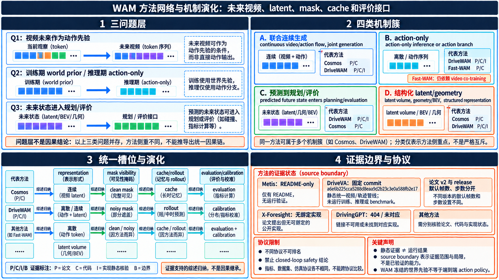
全部细节
图像 ID：F-method-network-evolution；PNG、native receipt 和逐图中文说明由当前任务 accepted manifest 绑定。
图像身份：F-method-network-evolution；审校时间：2026-11-01T04:15:06.200833+00:00；尺寸：1672×941；SHA-256：8a35c2f0e794e3701507f76ba04bc86c31eb3e11bd6aad59fa7ab8b07efb120b。原生回执（此附件保存在完整本地归档中）。
读者导引
方法网络与机制演化：从未来视频到可执行世界—动作接口
图的目的
本图是跨论文读者地图，不是一张把论文排成单一排行榜的关系图。它要回答：同一个“未来”术语在不同 WAM 中究竟承担了什么角色，哪些机制可以放进同一比较轴，哪些只是综述层面的相邻位置。图面从问题背景到四个机制簇，再到统一表示与可见性槽位，最后落到 P/C/I/B 证据边界。每一条跨论文箭头都必须有对应的论文原文、固定代码或明确标注的综述推断；不能把共同引用、题名相似或发布时间先后画成架构继承。
分区一：三个问题层
第一层是未来作为动作先验：DreamZero、LingBot-VA、X-WAM、Cosmos Policy 和 Motus把视频、状态与动作放入共同生成接口，试图把视频预训练动态带入动作。第二层是未来只在训练中提供表征、推理时削减成本：Fast-WAM、SimWAM 和 Metis分别用首帧条件、isolated/非对称掩码或文档声明支持仅生成动作路径。第三层是未来进入评价和规划：Drive-WM、PWM、WoTE、ReSim、DriveWAM 和 DrivingGPT让未来视频、BEV、轨迹或奖励/价值参与选择。三层不是线性阶段，而是不同读者问题；一篇论文可以同时占据多个层。
分区二：四个机制簇
联合连续生成簇关注视频/动作/状态共享 flow、EDM 或 MoT 接口；训练期 world prior、推理期仅生成动作簇关注未来 supervision 与可见性掩码；预测到规划/评价簇关注候选轨迹、未来状态、奖励/价值和 PDM 排序；结构化潜变量/geometry 簇把像素未来压成动作词元、BEV、深度、几何或潜变量 subgoal。图中每个簇都要画代价或失败模式，例如生成步数和缓存成本、未来 leakage、滚动执行 drift、结构化接口丢失接触/遮挡信息。四簇不是互斥标签，Cosmos Policy、DriveWAM 和 Fast-WAM 的交叉归属必须显示。
分区三：统一槽位与演化关系
Representation 槽位区分连续动作张量、离散 VQ 代码、潜变量体积、BEV/geometry 和 feature subgoal；掩码槽位说明谁能看见干净、带噪、未来或动作；缓存/滚动执行槽位说明未来是否被生成、写回还是只作监督；评估槽位说明 success、PDMS、ADE/FDE、奖励和安全量的职责。演化箭头可以从动作可控生成指向联合世界—动作，从联合生成指向训练期 prior 与推理 cost reduction，再指向未来输出进入规划和评价；但箭头文字必须写“综述归纳”，不写“证明导致”。
分区四：证据边界
P 表示论文原文事实，C 表示固定提交的静态代码事实，I 表示由多个已证据事实支持的读者解释，B 表示完整来源查阅后仍不能外推的边界。Metis 只有 README/资产的事实必须标为 P/README 或 B，不能用 SimWAM 的代码替代。DriveVA 已绑定官方 xiaomi-mlab/DriveVA@a6e6b225 的静态实现，论文版本与当前release默认配置分开，未运行训练/推理/评测基准；X-Foresight 仍无任务范围内明确绑定的官方实现，DrivingGPT 项目页仓库身份有 404/未对应证据；这些缺口应画橙色断线。代码可定位不等于实验已复现，开环指标不等于闭环 safety，模型延迟也不等于控制频率。
需要保留的技术细节
图面至少包含：三问题层；四机制簇；连续张量/离散词元/潜变量体积三类 representation；掩码的干净/带噪可见性；缓存/滚动执行的生成与回写差异；P/C/I/B 四级证据；Cosmos Policy/DriveWAM 的多簇归属；Fast-WAM/SimWAM/Metis 的训练—推理分离边界；DriveVA 的静态实现/未运行边界，以及 X-Foresight/DrivingGPT 的实现缺口；不可比较的 success、PDMS、ADE/FDE、FVD 和延迟。
不能推出的内容
本图不能推出单一方法排名、普遍因果传承、跨 embodiment 的统一收益或闭环安全保证。方法演化只表示问题和接口的历史组织方式；如果论文没有明确承认前作继承，箭头必须保持“相邻机制/证据支持推断”。
读图时先从左上区确认输入、条件和数据身份，再沿单向箭头检查预测量、监督量和执行量的区别。任何写着未来、潜变量、预测的、world 输出头或 evaluator 的节点都要保留其模型角色，不得因为名称含有“状态”或“成功”就改写为传感器真值或真实闭环结果。训练路径和推理路径可以复用同一主干，但可见信息不同；图中若用同一矩形表示，必须在边框或箭头旁写明训练/推理条件，避免把训练目标泄漏到执行阶段。
每个数字都应带上数据集、试次、硬件、时间单位或评价器。模型参数量、一次前向时延、动作块长度、块执行周期、控制频率和数据生成预算分别回答不同问题，不能把它们通过倒数或比例拼成新的部署结论。若来源只给定性可视化、单个随机种子、screen 或 README 表述，图中应使用“定性”“单次筛查”“文档声明”或“来源边界”等短标签，不能排版成已经完成的统计验证。
橙色边界区必须与主机制有明确断线，写清楚缺少的代码、评测、设备或跨域证据。缺口不是方法被证伪，也不是允许从邻近论文借入实现；它只表示当前完整源包不能支持更强的句子。跨论文图中的相邻位置只表示接口或问题相似，不能画成作者明确继承、时序因果或统一排行榜。最终生成图片后还要对每个节点、箭头、公式、数字和颜色逐项回读；本合同的文字和来源哈希只能证明事实准备完成，不能替代当前任务的原生 PNG 与视觉验收。
源包中的公式、表格和源码行号不是装饰性参考，而是每条箭头的约束。画图时先核对变量的输入输出形状，再核对它属于训练、推理、评价还是仅用于解释。不同颜色只帮助读者追踪语义，颜色本身不能增加一个模块的功能。对跨论文比较，必须把共同术语拆成可检查的定义：未来是预测图像、潜变量、BEV、轨迹还是监督目标，动作是连续块、路点、词元还是外部输入，success 是多少任务和多少试次。只要其中一项没有相同协议，就保留并列事实而不做排序结论。
原始材料入口
原始论文、源码、图表裁剪、哈希和运行回执保存在任务根目录的 trace/evidence 目录；本节只说明如何追溯，不在正文倾倒机器清单。
核心论文逐篇单元
1. cosmos-policy
原文图表证据（v3 精确裁切）
原文图表卡片：图 2（PDF p.4）
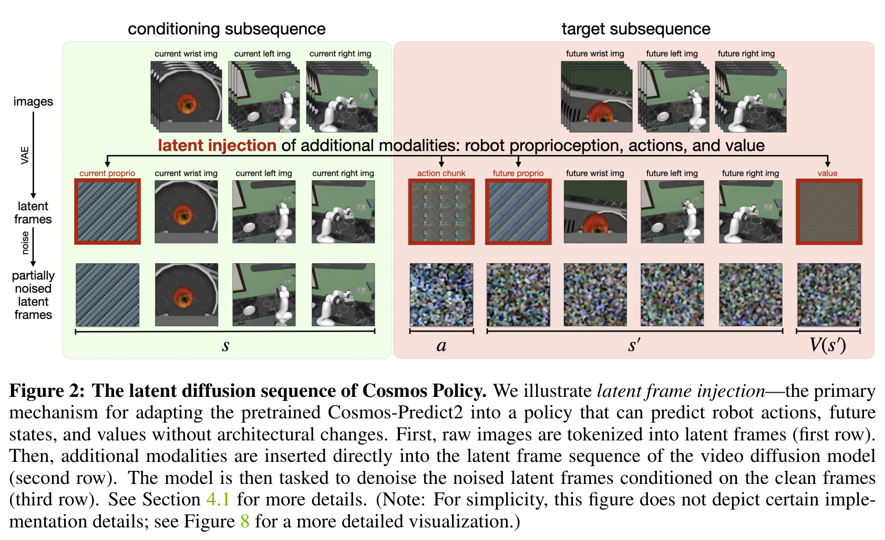
全部细节
这是论文原文图表或页图；具体版本、页码和裁剪信息见邻近中文说明。
- 论文版本：
2601.16163v1；PDF SHA-256：05696475c9b5481afbf88673a65f80a46cf3fb87a5755c1410e83d0f468cc6e0；page SHA-256：38b912b5c98386c67cf8051d1d66f6be2430dbc3e47a40451d9b4bf40424b98a。 - crop bbox（pt）：
[104, 75, 508, 322]；尺寸：[1684, 1030]；crop SHA-256：a74be748a210aa8359d9d7d5bc3919ab36b5989a8edb6b28e166e42a057388bc。 - 图表说明：Fig.2 从上到下画出原图、潜变量帧 injection 和带噪潜变量。当前 proprioception 与多路图像构成条件 s，目标序列依次插入动作块 a、未来状态 s′ 和 V(s′)。斜线与噪点区分哪些位置是条件、哪些位置需要生成。
- 进一步分析：这种设计用序列位置承载新增模态，复用 Cosmos-Predict2 的去噪骨干。与 DreamZero 的视频和动作解码分支相比，Cosmos 把未来状态与价值也放进同一潜变量序列，因而可以在直接策略之外再进行候选规划；图中的顺序决定哪些量可以作为后续预测的条件。
- 证据边界：图注明确这是简化图，并指向 Fig.8 的实现细节。该图不能单独说明 blank 帧的构造、损失权重、parallel/自回归 decoding 的实际成本，也不能证明价值 prediction 已校准。架构可表达策略、模型和值，仍需分别评价其准确性。 当前 visual_status=
precise_crop_and_visual_checked；semantic_status=reviewed/pass_with_boundary。历史状态semantic_pending仅对应早期裁剪回执，原文证据边界继续有效。
原文图表卡片：表 1（PDF p.8）
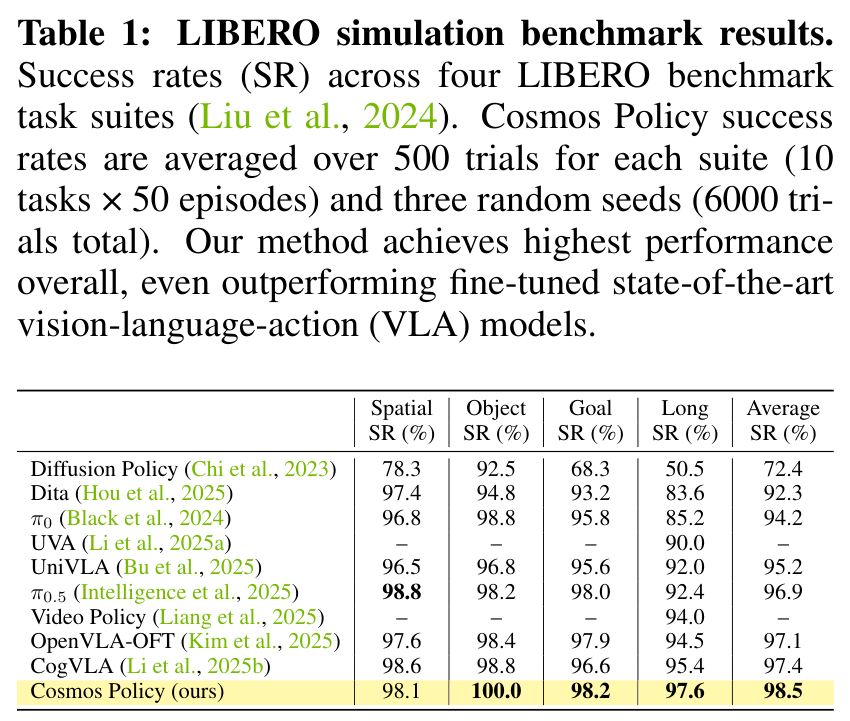
全部细节
这是论文原文图表或页图；具体版本、页码和裁剪信息见邻近中文说明。
- 论文版本：
2601.16163v1；PDF SHA-256：05696475c9b5481afbf88673a65f80a46cf3fb87a5755c1410e83d0f468cc6e0；page SHA-256：0921e85ee22fdd1ec21d9573de56e8bbd00b4ff3e0b4b39226cca14ccf64bb76。 - crop bbox（pt）：
[104, 78, 308, 251]；尺寸：[850, 721]；crop SHA-256：10bc4f9908503a30c9064617bcd0cd2cb31e60f86f475ca22ec0c9d79031fbad。 - 图表说明：表 1 按 Spatial、Object、Goal、Long 和 Average 列出 LIBERO SR。Cosmos Policy 为 98.1、100.0、98.2、97.6、98.5%；图注给出每套件 500 试验、3 随机种子，总计 6000 试验。表内 CogVLA 平均 97.4%，OpenVLA-OFT 97.1%，因此这里的领先是百分点差异。
- 进一步分析：Cosmos 的优势在 Long 套件尤其明显，97.6% 高于表中 CogVLA 的 95.4%，而 Spatial 的 98.1% 并非最高，π0.5 为 98.8%。这说明平均值领先不能替代逐套件比较。与 Fast-WAM 的 RoboTwin 干净/randomized 表相比，本表在测不同类型的指令和长时任务，不能按平均 SR 合并成同一榜单。
- 证据边界：表格测直接模仿学习策略的成功率，不能从中分离潜变量 injection、世界模型辅助损失和价值输出头的因果贡献。图注提供试验数，但未展示各随机种子方差；LIBERO 的高 SR 也不等于 ALOHA 真机完成率或模型预测的物理准确性。 当前 visual_status=
precise_crop_and_visual_checked；semantic_status=reviewed/pass_with_boundary。历史状态semantic_pending仅对应早期裁剪回执，原文证据边界继续有效。
正文：05_analysis\full_reading\cosmos-policy\paper_reading_report.md；15354 字符 / 4342 中文字符；SHA-256 d08e5f1235f238ac15ef8f4191474415a7096fd7f8afb130c7e307c0aae1c402。
来源覆盖：05_analysis\full_reading\cosmos-policy\source_coverage.json；问题台账：05_analysis\full_reading\cosmos-policy\paper_questions_for_code.md。
读者导引
固定源码中的世界—动作机制与证据边界
本章回答一个贯穿机器人操作和自动驾驶的问题：论文所说的“世界模型服务动作”在公开代码里究竟落实成哪些输入、注意力边、损失、缓存和执行顺序，又有哪些结论仍缺少实验配置或运行证据。阅读时先确定实现家族和固定提交，再沿文件、符号及物理行号追踪输入输出；仓库可读、函数存在、默认值明确，分别只证明相应层面的静态事实。
下文机器人仓库的相对路径以 04_repositories/<slug>/<commit>/ 为基准，驾驶仓库也采用同一规则。原驾驶静态审计日期为 2026-10-27（Asia/Shanghai）；这次中文整理保留固定提交与来源边界，没有导入目标实现，没有执行训练、推理、指标计算、依赖安装或修改源码。原完整函数引文、物理行号和文件哈希保存在 source_fidelity_pack/manifest.json 及同目录 .txt 快照，教学解释另见 mechanism_notes_zh.md；模块范围由 module_inventory.json 定义。verification_questions.jsonl、verification_answers.md 和 implementation_omissions.md 保存问题与缺口。问题和答案来自同一位知晓源码的审计者，因此它们是可交给独立闭卷检查的材料，不是已经完成的独立理解验证。
从仓库身份走到机制证据
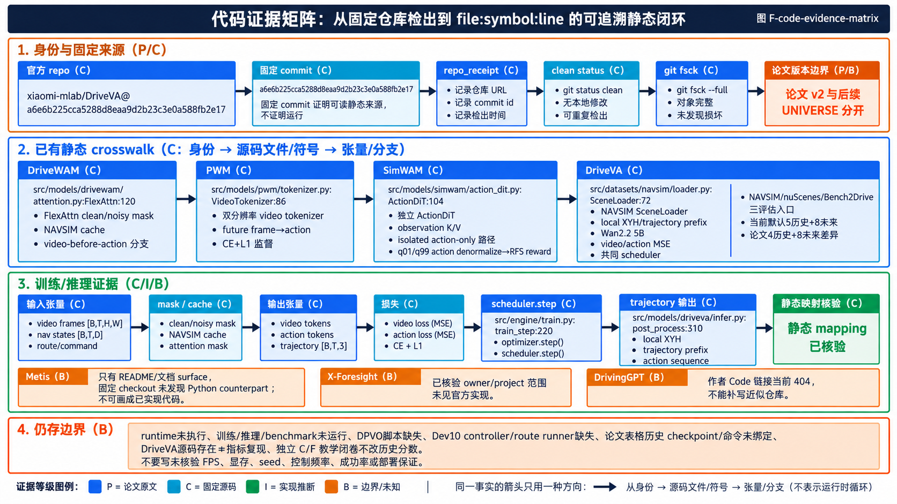
全部细节
图像 ID：F-code-evidence-matrix；PNG、native receipt 和逐图中文说明由当前任务 accepted manifest 绑定。
本图的正式资产是 F-code-evidence-matrix，验收时间为 2026-11-01T21:47:32.681933+00:00，尺寸 1672×941，SHA-256 为 0a72dd48cfd40a9fbfc4c18c346c56a92b1dbd4bb5b4ee1357c032c83520d52d；原生回执（此附件保存在完整本地归档中）和完整中文图解（此附件保存在完整本地归档中）记录图像身份。它表达的是静态论文—代码证据链，箭头不表示本任务已执行训练、推理、基准测试或部署。
证据链先由仓库名称、固定提交、干净 checkout、git fsck 和 repo_receipt.json 确认身份，再由入口或配置定位到 file:symbol:line，最后说明张量、训练/推理可见信息与论文差异。DriveWAM 的 FlexAttnFunc.init_mask、_get_mask_mod 与 NAVSIM evaluator 连接四流干净/带噪掩码、缓存和先视频后动作；PWM 的词元化器、navsim_forward、navsim_gen 连接双分辨率视频词元、未来帧到动作查询、CE+L1；SimWAM 的 MoT、独立 ActionDiT 和 isolated 入口连接观测 K/V、仅动作推理及物理单位奖励。颜色只区分视觉、动作、监督和边界，不能替代 P=论文、C=固定源码、I=实现推断、B=边界/未知的证据等级。
DriveVA 的当前状态需要与旧图稿说明区分。 早期说明曾写“尚未找到官方实现”；后续已锁定官方 xiaomi-mlab/DriveVA@a6e6b225cca5288d8eaa9d2b23c3e0a588fb2e17 与论文 arXiv 2604.04198 v2。当前静态映射覆盖 NAVSIM SceneLoader、local XYH、轨迹 prefix、Wan2.2 5B、视频/动作 MSE、共同调度器，以及 NAVSIM、nuScenes、Bench2Drive 三个评估入口。代码默认 5 历史帧+8 未来帧，论文段落写 4 历史帧+8 未来帧；仓库中的后续 UNIVERSE 也不能回写成论文 v2 的历史实现。Metis 固定提交仍只有 README/资产，X-Foresight 在已核验 owner/project 范围未见官方实现，DrivingGPT 作者 Code 链接返回 404；这些是来源可获得性结论，不是对论文机制的反证。
源码关系能解释一个模块是否输出视频潜变量、BEV、连续动作、路点、预测价值或外部评价器分数。名称含“状态”“成功”不意味着传感器真值或真实闭环结果；训练目标与推理条件即使共用主干，也必须分别追踪。模型参数量、单次前向延迟、动作块长度、块执行周期、控制频率和数据预算有不同分母，不能通过倒数或比例拼成新的部署结论。静态证据尚未绑定论文表格的历史检查点、命令、硬件与计时，也没有执行 DPVO、Dev10 controller/route 运行入口或验证安全；缺少相应材料时，不能从邻近仓库借一个掩码或运行结果补齐。
当前 DriveVA 的来源入口是 04_repositories/driveva/a6e6b225cca5288d8eaa9d2b23c3e0a588fb2e17/repo_receipt.json；联合阅读与修订事实保存在 13_subtasks/driveva_joint_reader_v30/paper_code_crosswalk.md、joint_reader_zh.md、joint_reader_addendum_zh.md、figure_contract/code-evidence-matrix-revised-facts.json。边界材料还包括该子任务的 implementation_omissions.md、experiment_joint_reading.md 和 13_subtasks/source_availability_v30/evidence/。独立 C/F 教学包只用于核查理解，不改写历史分数。
机器人操作：视频与动作如何联合、隔离或分阶段生成
DreamZero：块级因果注意力、视频—动作流与状态缓存
固定提交为 ab790c198fbce33503358efbbd4187ce9a89adf3。groot/vla/model/dreamzero/action_head/wan_flow_matching_action_tf.py:603-813 中的 WANPolicyHead.forward 接收 images 的 b t h w c 布局，改排为 b c t h w，把 uint8 归一化到 [-1,1]，可选缩放为 176×320 后经 VAE 编码，再将潜变量和噪声转为自回归 [B,T,C,H,W]。视频时间步有均匀、Beta 和解耦分支；动作时间步可以重复视频块时间步，也可以独立采样。视频 MSE 乘调度器时间权重，动作 MSE 还受 action_mask、has_real_action 控制。flow_match_scheduler.py:73-85 实现 ，目标为 ；这里的 是噪声权重，不能与论文用干净样本权重表示的插值时间不加转换地混同。
groot/vla/model/dreamzero/modules/wan_video_dit_action_casual_chunk.py:1434-1594 将首图、图像块、动作块和状态块排列在一起：首图和状态只作条件；图像查询能读首图、过去/当前图像与同块动作/状态；动作查询同样可读首图、过去/当前图像和同块动作/状态。代码在 :1454-1463 断言三种块数一致。因此“因果”是块级关系，允许同块跨模态边，并非逐词元的严格未来屏蔽。
lazy_joint_video_action（wan_flow_matching_action_tf.py:973-1338）在语言变化、只有一帧输入或超过局部注意力窗口时重置 current_start_frame（:1031-1044），可复用首块 clip/VAE 上下文（:1065-1070）并执行缓存去噪。eval_utils/serve_dreamzero_wan22.py:255-328 提取动作字段，把关节与夹爪转成 [N,8]，reset 时清理缓存和缓冲。数据侧 dreamzero_cotrain.py:309-379 构造 OXE-DROID 腕部/外部相机布局，:442-602 对状态/动作补齐并处理 <DREAM>、<LAPA>、<COTRAIN>。是否使用解耦噪声、实际时间跨度、语言/会话 reset 的范围，都必须跟到具体配置和调用分支。
默认配置 groot/vla/configs/model/dreamzero/action_head/wan_flow_matching_action_tf.yaml:13-17,64-76,90-105 启用 LoRA，每块 1 个视频帧、32 个动作、1 个状态，DiT 宽度 5120、40 层、4 个推理步，decouple_video_action_noise: false。Wan2.2 DROID 配置 groot/vla/configs/data/dreamzero/droid_relative_wan22.yaml:9-23,41-50 使用 320×160、相对关节位置动作、最大块数 5、分片采样率 0.1，数据根目录是占位符。独立噪声能力存在，不能据此说固定 YAML 默认就选择 Flash 或论文相应检查点。
Fast-WAM：观测 K/V 预填充与 IDM 分支
固定提交为 7faa71108368fbb3b6885649f112af607427a2d4。src/fastwam/models/wan22/fastwam.py:285-418 要求视频 [B,3,T,H,W]，高宽为 16 的倍数，T%4=1，动作 [B,T,D]，且动作时间跨度能被 T−1 整除。_build_mot_attention_mask 允许动作之间完整互见，动作只读取首帧视频。training_loss:522-608 独立加噪视频/动作，可恢复首帧潜变量，构造联合掩码，按填充与调度器权重求各损失，再以 lambda 系数组合。
infer_action:979-1159 要求 first_frame_causal：先初始化高斯动作潜变量、编码当前图像、预填视频 K/V（:1091-1127），然后通过 _denoise_action_with_video_cache:703-736 和连续调度器（:1133-1158）只更新动作。基础动作入口虽接收 CFG 参数，却没有构建负条件；IDM 更明确删除这些参数（fastwam_idm.py:365-383）。IDM 的训练/推理有独立的带噪 teacher-forcing 视频分支，动作只读条件视频（fastwam_idm.py:15-283,315-584）；不能把基础 joint 能力和配置选择的 IDM 当成同一次实验。
scheduler_continuous.py:18-88 采用移位 ，流目标为 noise−sample，Euler 更新为 sample+delta*model_output。FastWAMProcessor.preprocess（fastwam_processor.py:184-284）把相机堆成 [num_input_cameras,T,C,H,W]，评测保留 gt_action，归一化状态/动作并输出填充掩码。结构注意力掩码决定模态之间能否读取，填充掩码决定哪些填充位置不计入有效数据，两者功能不同。RobotWin 封装接口（experiments/robotwin/fastwam_policy/deploy_policy.py:221-295）拼成 384×320 图像，调用 infer_action，反归一化并排队执行 replan_steps。
configs/model/fastwam.yaml:13-34,48-59 默认首帧因果视频注意力、融合 VAE 嵌入、视频 shift=5、动作 shift=1；configs/model/fastwam_idm.yaml:1-11,14-35,49-60 选 IDM 且条件视频加噪概率 0.5。configs/task/robotwin_idm_3cam_384_1e-4.yaml:3-27 明确选择 IDM、batch 16、5 个 epoch、学习率 1e-4。要回答论文“joint”结果来自哪个分支或动作 CFG 是否生效，必须提供实际运行选择，不能只看参数名。
LingBot-VA：四流训练与局部缓存
固定提交为 7c6ffa9bfc4b83582cafc860fab4c82cc7deeeeb。wan_va/modules/model.py:95-201 生成干净/带噪视频与动作的重复标识、按块奇偶编码的帧标识和噪声标识；掩码要求序列身份一致，并限制局部窗口。干净查询只能因果读取干净位置，带噪查询只能读取更早块的干净位置，同块带噪位置可以互见。WanTransformer3DModel.forward_train:702-798 拼接 [noisy video, clean video, noisy action, clean action]，补到 128 的倍数，执行共享块后再拆分与投影。
WanAttention:333-465 的缓存池含 K/V、id、掩码、is_pred，读取有效槽；update_cache==0 时恢复临时预测槽。train.py:_add_noise:168-217 独立扰动潜变量/动作，也可扰动条件；compute_loss:256-295 对视频和动作分别加时间权重、按有效帧归一化，再求和。总损失不是一个忽略模态/帧轴的全局词元 MSE。
lerobot_latent_dataset.py:_cat_video_latents/_action_post_process:225-285 拼接多相机潜变量，可丢弃文本；将 RobotWin 的 T-shape 位姿转为相对量，再按通道选择、补齐、分位数缩放输出 [C,F,N,1]。动作是否绝对量由这条变换回答，不能由“动作词元”名称推断。wan_va/configs/va_robotwin_train_cfg.py:6-25 默认 CFG 随机丢弃=0.1、batch 1、学习率 1e-5、50,000 步和占位数据路径；va_demo_train_cfg.py:6-25 则为学习率 1e-4、梯度累积 8、2,000 步，具体启动配置决定哪一套生效。
X-WAM：RGB、深度、状态和动作的并行块去噪
固定提交为 72cfb86b33fc5060963ef63412f16439fcfa472f。runners/xwam_runner.py:85-268 执行文本随机丢弃、视频/动作时间步耦合或解耦采样、流混合、首帧/本体感觉掩码，最后加和 video/action/proprio/depth/DCT 损失。forward:391-530 用三个独立 UniPC 调度器，可在 action_denoise_steps 停止动作/本体感觉更新，每步重新施加干净条件掩码；generate:532-572 重复 RGB 视角，也可直接返回动作/本体感觉而跳过视频解码。因此深度由配置决定，动作是整个块的并行去噪，坐标变换在适配器而不是模型内部。
modules/wan_model.py:94-152,200-256 实现带 RoPE 的自注意力，可拼接 K/V，并包含 AdaLN、交叉注意力和 FFN。data/robot_dataset.py:60-217,644-744 定义双臂本体状态 16D、动作 14D，构造位置增量、轴角、夹爪与有效掩码。evaluation/X-WAM/deploy_policy.py:8-64,90-189 在 base/eef 坐标间变换，并发出 ZMQ qpos 请求。固定源码没有 inverse-depth 或伪 RGB 转换，不能用论文描述代替该预处理事实。
configs/model/wan22_5b_sft.yaml:15-19,41-65 默认动作 14D、本体 16D、均匀 RF、shift=5、视频 50 步、动作 10 步、启用深度、解耦推理/采样、联合噪声分布、干净动作比例 0.5。configs/data/robotwin.yaml:1-14 为序列 9、视频间隔 4、动作间隔 1、图像 256×320、启用增强、关闭视角打乱；论文消融设置仍需另行绑定。
Cosmos Policy：潜变量帧装载与主实现家族
固定提交为 18a2accadf4e7a3531e56754102af5a24d2316da。主实现 cosmos_policy/models/policy_text2world_model.py:45-109,112-175,370-700 将展平动作/本体感觉重复装进潜变量帧，将标量价值填入专门帧，保留原潜变量，再经 SDE 加噪；逐样本掩码分别选择示范轨迹/动作、滚动执行/未来状态或价值帧。MSE/L1 分量分别记录（:650-700），policy_video2world_model.py:100-392 为世界模型/价值任务编辑条件掩码，也支持 V/Q 的输入屏蔽。动作是潜变量载荷，不是独立动作头；价值也有独立掩码和度量，不能写成一个未区分目标的统一动作损失。
policy_text2world_model.py:702-836 采样支持引导、方差缩放和自回归潜变量复用。cosmos_utils.get_action:851-1236 构造 blank/action/future/value 槽，并可串起动作→未来状态→价值。extract_action_chunk_from_latent_sequence:557-599 展平后分完整动作块取均值；unnormalize_actions:623-648 按 min/max 反归一化；undo_latent_injection:680-703 在解码前恢复空白槽，不能把注入的动作或价值直接当图像解码。
仓库还附带 _src/predict2/action 分支：action_conditioned_minimal_v1_lvg_dit.py:47-280 增加 condition-mask 通道，把展平动作块注入 timestep/AdaLN；inference_pipeline.py:94-355 建空白未来帧、注入动作并解码末帧。这与上述潜变量复用主策略是不同实现家族，须由配置证据决定使用哪条路径。
cosmos_policy/config/config.py:15-33 默认 COSMOS_VERSION=v2；cosmos_policy/config/experiment/cosmos_policy_experiment_configs.py:40-60,108-142 选择 CosmosPolicyVideo2WorldModel：LIBERO 动作块 16，动作/本体归一化，重复次数 4，state_t=9，4 个条件潜变量，原始块时长 33，替换帧并保持条件 sigma 干净。推理覆盖 :182-201 仍复用主策略实验，只改变 SDE 上下界。cosmos_utils.py:61-103 支持 LIBERO (9,4) 与 RoboCasa/ALOHA (11,5) 布局；这些配置把主策略行为连到潜变量注入路线，不支持用 _src/predict2/action 代替解释。
Motus：三个专家共用注意力而保留各自投影
固定提交为 88f6fe30c62af033874b0a2e48ad1cbdaf12cfdf。models/motus.py:98-280 将 1024D 动作与 2048D VLM 理解流的 Q/K/V 投影到 WAN 的 24×128 注意力空间，共同计算 MoT 注意力，再投回各自宽度并使用各自 AdaLN 残差；视频另行交叉注意 T5。action_expert.py:89-171,264-306 编码 state/action/register 词元并以时间调制解码动作；und_expert.py:111-164 适配 VLM 特征。因此理解是独立的第三条流，共享注意力不意味着三条流的隐宽或参数相同。
训练 motus.py:768-909 VAE 编码完整视频及首帧，独立加噪视频/动作，固定首帧，执行 30 层三模态 MoT，以加权平均视频/动作 MSE 优化。活跃 motus.py:911-1033 推理初始化高斯视频/动作潜变量，重新计算 VLM 词元，用线性 t:1→0 和显式 Euler 更新、固定首帧，最后解码视频并返回动作潜变量；看似另有 solver 的代码实际在三引号字符串中，不是活跃 callable。latent_action_dataset.py:172-301 选择下采样窗口，加载 [T−1,D] 潜在动作；:266-275 的活跃代码直接返回该量，注释中提归一化不足以证明上游已归一化。
configs/latent_action.yaml:2-15,38-95 默认动作/状态 14D，8 个 384×320 视频目标，下采样 6，预训练模式，10 个推理步，损失等权；部署 inference/robotwin/Motus/utils/robotwin.yml:3-15,43-57 改为下采样 3、视频/动作比例 2、10 步。models/motus.py:960-1019 再次确认活跃 Euler 路线，不能凭字符串中的替代解法说默认使用 DPM++。
自动驾驶：未来状态、动作生成与在线候选评价
驾驶子审计是对六个固定仓库的逐行静态阅读。repo_receipt.json 与 .git/HEAD 标识实际 checkout；早期曾在 checkout 上一级误查 Git，命中了未跟踪项目父目录，那次探索命令不作身份依据，回执已记录此 caveat。“已核验”在本章仅表示给定行号直接支持该事实，不表示上游论文实验或实际运行已复现。
DriveWAM：四流块因果掩码与先视频后动作
固定提交为 14d16d2412dc4d70af59a921cc450299f5207f10。src/modules/model.py:95-141 的 FlexAttnFunc.init_mask 接收视频 (B,C,L_F,L_H,L_W) 和动作 (B,C,A_F,A_H,A_W)，构造样本身份、时间帧身份与干净/带噪标识。视频时间标识是 latent_frame_id // chunk_size * 2，动作是 action_frame_id // chunk_size * 2 + 1；训练拼成 [noisy_video, clean_video, noisy_action, clean_action] 并补到 128 的倍数。_get_mask_mod:154-201 先要求同一非填充样本、处在配置时间窗内，再允许三类边：干净→干净满足 key_frame <= query_frame；带噪→干净严格 key_frame < query_frame；带噪→带噪只在同一时间块。因而带噪块不能读自己的干净目标，却能读窗口中的更早干净块并在同块去噪交互。
WanTransformer3DModel._input_embed/_time_embed:746-775 将视频从 b c (f p1) (h p2) (w p3) 展平为 b (f h w) (c p1 p2 p3) 后线性投影；动作从 b c f h w 变为 b (f h w) c 后经 action_embedder。默认视频 patch [1,2,2]。它们共用 Transformer 词元空间，起点仍是分别投影的连续量，不是整数动作词表。forward_train:777-873 构造四流、复制网格 ID、分别创建潜变量/动作时间嵌入，使用掩码后运行共享主干，丢弃干净条件输出；视频由 proj_out 还原，动作由独立 action_proj_out 输出 latent_hidden_states、action_hidden_states。
src/modules/navsim_model.py:_get_ego_hidden_states:394-415 从速度+加速度、展平历史位姿（按输入宽度补齐/截断）、限幅驾驶命令嵌入构造 3 个 ego 条件词元；:429-549 加入训练路径，:551-618 用 action_mode 暴露单流视频/动作推理。src/dataset/navsim_dataset.py:_build_action_tensor:56-94 把未来 (x,y,heading) 变为相邻步差，用 q01/q99 映射到 [-1,1]（:47-54），只在未来块 1 写有效动作通道，块 0 为零，输出 (action_dim,2,chunk_steps,1) 与布尔掩码；:32-35 强制两个块且未来长度与块长对应。
src/navsim/train.py:_add_noise:372-467 构造噪声输入、流目标、每帧时间步/网格 ID，可对干净条件加噪；动作掩码清零无效通道，预测掩码保留上下文视频。_prepare_input_dict:470-505 编码图像/提示、分别准备两模态并附 ego 条件。compute_loss:508-563 按调度器训练权重计算两套 MSE、屏蔽无效与保留元素、按每帧有效元素归一化并除以梯度累积数，_train_step:565-578 把两损失相加反传。这里由掩码控制信息流，没有额外对齐损失才能使两模态交互。
NAVSIM 推理明确先做视频工作：src/navsim/eval.py:_prime_rollout_cache:219-267 建逐层缓存，update_cache=2 写首帧干净视频和零动作块 0；:269-312 用 Euler 逐步生成一个未来潜变量帧，末步以 update_cache=1 写缓存；:315-356 再生成动作块。NavSimEvaluator.predict:392-470 只使用首个观测图像，逐帧生成未来视频后预测动作块 1，在 finally 中清缓存，返回 (1,action_dim,2,chunk_steps,1) 与 (1,C,T,H',W')。actions_to_trajectory:365-385 取未来块 1 的 [0,1,2] 通道、反分位数归一化并对增量累加为自车局部 (B,3,8)；:358-363 转成 PDM 所需 (8,3)。_worker_fn:472-553 使用 40 步@0.1 秒 proposal sampling、模型轨迹 4 秒@0.5 秒，只有指标缓存存在才调用 NAVSIM PDM。因此这条 evaluator 不能被描述成省略未来视频生成的仅生成动作路线。
SelectiveKV 是缓存保留策略。 src/modules/compress_kv.py:6-38 的 compute_attention_scores 兼容等量查询/KV 输出头和 grouped-query；:41-57 对键归一化、计算去掉自身对角线的余弦相似度、平均并 softmax 为冗余度；selectiveKV_score_tokens:60-112 从注意力取相关性、max pooling 平滑，按 lambda*relevance - (1-lambda)*redundancy 合成并跨输出头平均。src/modules/model.py:1087-1157 的 WanAttentionSelectiveKV.allocate_slots 保护 pinned 槽，缓存满且启用评分、有查询时淘汰最低分，否则淘汰最旧 ID；:1167-1183 写 id、flag、空间来源，:1185-1253 各模态写自己的视频/动作 pool，但注意力读取两池。configure_selectiveKV:1451-1472 默认 kernel_size=7、mix_lambda=0.07，create_empty_cache:1501-1526 分配独立容量。它不合并词元，也不是可学习压缩器；普通 NAVSIM evaluator 在 src/navsim/eval.py:62-66 加载 WanTransformer3DNavSimModel，没有自动选这个变体，不能声称所有论文评测都使用 SelectiveKV。
场景演化引导是离线预处理。 src/modules/physicalai_model.py:92-178 的 FlexAttnFuncText 只允许同 batch 同块文本；:243-320 的 FlexAttnFuncEgo 只让 ego ID 严格早于视频/动作查询；:683-822 要求文本 (B,N_chunks,L,D)，联合训练前建立 self/text/ego 掩码。src/physicalai/vlm_preprocess/generate_scene_evolving_guidance.py:_load_clip_chunks:67-140 读取当前块边界帧、过去 BEV/ego 和 route label，函数契约 :4-13 禁用下一块的帧/BEV/速度。main:147-272 加载 route/BEV store，批量调用 VLLMNavCaptioner.caption_batch，保存 {clip_id:{chunk_idx:caption}}（实际写入 :219-272）。这说明预处理入口没有直接读取即将发生的视觉块；route/BEV 的生成与存储来源仍未审计，不能推成端到端无标注泄漏或 planner 在线调用 VLM。
PWM：离散视频代码的交叉熵与连续路点的 L1
固定提交为 c67e4b90364d8e94ff54fba4905ea2550c8ea138。models/modeling_showo.py:54-86 的 Showo 包装 Phi 因果语言模型及扩展词表；init_action/action_forward:89-117 创建零初始化的可学习动作查询嵌入、MLP、线性轨迹头和 L1Loss。resize_dynamic_size:123-178 为 nuScenes 设置 6×2 输出、NAVSIM 设置 8×3。navsim_forward:374-457 在没有 labels 时调用带缓存模型、返回 logits/KV/末隐藏状态；有 labels 时嵌入输入 ID，用可学习查询替换动作后缀，用 ego_forward 替换状态位置。视频 dynamic 词元的 CE 在 :430-447，最后 8 个隐藏状态以 :448-455 回归 (x,y,heading) 并计算 L1；可选 motion_weight 按输入/标签相等关系和 alpha/beta 系数给 CE 加权。
models/prompting_utils.py:create_attention_mask_for_nusc:744-802 用 soi/eoi/sod/eod/sot/eot marker 识别图像、dynamic、文本段，构造因果/块注意力与反向 additive 掩码；它依赖序列标记而不是连续 flow 时间。create_attention_mask_predict_next:634-690 是另一条 next-frame 路线，活跃调用决定采用哪一条。training/fine-tune_navsim.py:prepare_inputs_and_labels:405-468 VQ 编码前后 context/dynamic 图像，把 dynamic codebook ID 偏移到扩展词表，从未来轨迹取动作数量，再交给 UniversalPrompting 构造词元/labels；:515-569 取未来轨迹和 ego、建立上述掩码、调用 model.navsim_forward，优化 video_coeff*loss_video + tj_coeff*loss_tj（加权和位置 :567）。这是离散状态 CE 与连续动作 L1 的混合监督。
navsim_gen:849-923 直接从帧生成开始，硬编码 frame_num=30，每帧由 logits 逐 token-block 贪心 argmax（:878-913），将帧块顺序加入缓存，完成 gen_frames 后才切到 <|act|> 和动作查询，默认 action_len=8。30 个同帧词元可一起产生，帧与帧仍是自回归；动作读取已生成未来状态的 KV，最后由 action_forward 输出连续坐标，不是动作 codebook。nusc_gen:732-848 另有先文本、后 dynamic 帧、再轨迹查询的顺序，不可混成 NAVSIM 默认。查询数由数据形状传入，但 NAVSIM 回归固定截最后 8 个隐藏状态，改变时间跨度需要协调修改。
data_utils/pwm_dataset.py:DatasetNavsim:474-697 读取 NAVSIM scene/缓存，输出当前/历史图像、ego 状态、future_trajectory；compute_targets:529-533 取未来 8 pose，得到 (8,3)，:636-660 构造 ego 和缩放前相机，DataCollatorForNavsim:1110-1141 堆叠字段。training/fine-tune_navsim.py:evaluate:819-867 将真值轨迹置零、构造掩码、插 ego 词元、截 prefix 后调用 navsim_gen，:904-922 汇集预测并调用 PDSM_eval，:951-968 汇总视频和轨迹/PDSM 指标。它提供不喂真值动作的静态评估路线，未证明在线闭环部署延迟；指标值仍需数据、VQ 词元化器、模型权重和指标缓存。PDSM 是评估器，CE+L1 是监督训练，仓库中的 nuplan 代码不能据此变成 PWM 的 RL 或 learned 价值输出头。
SimWAM：独立专家、隔离注意力与动作 GRPO
固定提交为 1433ee7e06a62bd8b89da74455df0d82bda7b726。src/simwam/models/wan22/simwam.py:from_wan22_pretrained:133-238 加载视频专家和独立 ActionDiT，:194-199 要求输出头数、输出头宽与层数一致，再构造 MoT(mixtures={video,action})。专家隐藏维度 width 可不同，但不能任意替换而不满足公共注意力接口。src/simwam/models/wan22/mot.py:_build_expert_attention_io:126-186 让各专家自己的 (B,S,D) 词元投影到公共 H*Dh，有归一化与 RoPE；_mixed_attention:79-99 消费布尔允许掩码；forward:506-639 拼接 Q/K/V 共享注意力，再切回各自 out 投影、残差、交叉注意力、MLP。
simwam.py:_build_mot_attention_mask:461-516 中 True 表示允许。视频块遵守自身 first-frame-causal，动作彼此全可见；默认 isolated（:46-62）只让动作读首帧视频，未来视频也不能读动作。action_attends_video 允许动作读所有视频，bidirectional 进一步允许未来视频读动作，因此仅动作推理与无未来泄漏的解释必须指定模式。mot.py:prefill_video_cache:259-343 一次处理观测、缓存每层 (B,Sv,H*Dh) K/V；forward_action_with_video_cache:345-450 每步只重算动作 Q/K/V，结合缓存，仅取联合掩码的动作 rows。:427-430 可对视频 KV 截断梯度，使动作梯度不进入该支但不修改缓存。
simwam.py:build_inputs:334-458 训练要求预计算 context/context_mask，验证文本 [B,L,D] 与掩码 [B,L]，读取视频、动作、填充掩码，并把 proprio 条件附到文本上下文。VAE :300-332 在 (B,C,T,H,W) 与连续潜变量间转换。training_loss:557-692 独立取视频/动作时间、加噪、固定首帧、构建专家输入、应用 MoT 掩码，并预测两支；视频 MSE 先平均 channel/空间和有效时间（:518-555,659-668），动作平均坐标与有效动作步（:670-685），:687 总和为 lambda_video*video + lambda_action*action。可选 clean-sample 参数化在 :112-130 以 (noisy_action-pred_x)/sigma 转成速度且 clamp sigma；训练 :670-675 把坐标 MSE 除以 sigma^2，保持速度目标的等价权重。
infer_joint:850-1048 联合去噪未来视频和动作；infer_action:1049-1202（旧账本引用较宽 1040-1225）编码当前图像、建首帧条件、缓存视频 K/V，只初始化并去噪动作，不使用未来视频词元。experiments/navsim/predict_navsim_v2.py:predict:150-225 预处理前图/提示、复用文本缓存、调用 model.infer_action、反归一化，并断言 (future_action_horizon,3) 后写逐词元数组。experiments/waymo/eval_waymo_action_only.py:68-87 要求动作维数 2、isolated，评估 +0.25 到 +5 秒的 20 个 XY 点。isolated 下未来视频损失仍可通过共享观测路径和联合优化影响动作，不需要让动作读未来词元。
GRPO 的概率只来自选定随机转移。 src/simwam/runtime_grpo.py:run_grpo_training:96-157 强制 grpo.target='action'，按配置加载 IL warm start、调用 configure_grpo，选择 NAVSIM 奖励或 Waymo RFS，再建 trainer；这是一条区别于联合监督学习的动作 RL 路线。src/simwam/models/wan22/simwam_grpo.py:build_action_condition:306-393 要求首帧因果，建立 observation/text/proprio 与逐层视频 K/V；expand_condition:395-412 按候选组复制；action_velocity:474-497 用当前或参考动作专家。_stoch_step_indices:499-532 选择显式 step ID 或末端随机窗口，可排除最后一步；_sde_mean_std:616-635 实现 score 修正 rigorous SDE；sample_action_chain:677-811 输出 [B,N+1,H,A]，时间递减、sigma delta 为负，其余步骤采用确定性 Euler。
action_chain_logprobs:812-929 在当前/参考策略下重算均值，只在随机步骤算 Gaussian log probability，空随机集合在 :845-848 被拒绝；log-prob 经 clamp 后在时间跨度/动作维平均，输出 [B,W]，确定性 Dirac 转移不算概率密度。src/simwam/trainer_grpo.py:_compute_advantages:353-374 组内归一化奖励，也支持配置的全局 std，返回优势掩码；_pg_group_mask:345-350 排除组内奖励全相等的组。_rollout:379-466 扩展条件、采动作链、反归一化并评分；_policy_loss:471-616 消费新/旧 log-prob 与策略/参考正则。相关方法实际定义在 ActionGRPOMixin（simwam_grpo.py:41,677-929），由 SimWAMGRPO:994 继承，公共类名与物理定义位置要同时保留。
训练奖励不等于报告 PDMS。 src/simwam/datasets/navsim/pdm_reward.py:NavSimPDMReward:81-124 加载指标缓存与 40@0.1 秒 proposal；score:148-180 要求 [N,3] 自车坐标 pose，以 0.5 秒间隔封装后调用 PDM；:182-246 将缓存错误变为失败奖励并保留诊断。:44-46 明确训练 progress/TTC/comfort 权重 (10,5,2) 与报告 (5,5,2) 不同，last_true_pdms:281-292 才单独记录评估权重 PDMS。因此奖励上升可能不伴随报告指标上升，实际增益要看活动配置与指标输出。
Metis：只能核对文档，不能伪造实现映射
固定提交为 7677b62d786cff8bb2044b489bd41f3d59514b43。递归扫描只有 README、assets、license、metadata，Python 实现文件数为零，没有模型类、掩码、目标、预处理、评估入口或可运行配置可核。README.md:34-38 声称联合训练、解耦仅生成动作推理、VGE+AE MoT，以及未来视频可读动作而动作被屏蔽读取未来视频的非对称结构；:59-76 写自动驾驶 (x,y,theta)、urban navigation (x,y)、Wan2.2-5B VGE、约 1B/宽 1024 的 AE、约 6B 总参数和联合流匹配；:78-86 比较 joint/isolated/asymmetric；:152-169 提供动作延迟表。
上述均为文档主张，不能升级为 Python 事实。非对称掩码的形状、投影、截断梯度、梯度、损失、默认值、两步推理、检查点、评测都仍待代码映射；文档的 0.17 秒与 147 ms 差异、best-of-N 预算也未解决。没有代码不等于论文没有该方法，后续发布超出固定快照范围。SimWAM 是独立仓库且 isolated 同时阻断另一方向，不能用它代理 Metis。
WoTE：逐候选 BEV 想象与监督奖励选择
固定提交为 298957c128a91d41a1c6075bd0bb6e7e845e093f。navsim/agents/WoTE/WoTE_model.py:WoTEModel.__init__:33-206 构造 TransFuser、降维 BEV、离线 trajectory_anchors、轨迹 MLP+Transformer、潜变量 world-model Transformer、奖励 convolution/输出头、可选当前/未来地图和 agent 输出头、offset 解码器。extract_trajectory_feature:225-281 从相机、lidar、状态得 BEV，嵌入每个锚点，预测 offset 与 offset 奖励，构造轨迹条件 ego 特征；_process_backbone_features:376-383 把 BEV 展成 (B,H*W,C) 加位置嵌入。
extract_reward_feature:283-355 为每个候选复制 BEV（:283-326），注入当前 ego，折成 (B*num_traj,num_plan_queries,C)，循环 num_fut_timestep 转移并注入未来 ego，产生奖励 feature；训练 targets 触发未来 BEV 监督，没 targets 时奖励 feature 仍可产生。:393-415 将每条轨迹展平经 MLP+Transformer，与 ego 状态合为每候选一个 ego 词元。_inject_fut_ego_into_bev:431-445 用 self.trajectory_anchors[:,fut_idx-1,:2] 的基础锚点坐标注入；即使前面 extract_trajectory_feature:265-268 已编码 offset 锚点，这里 :440 仍读原锚点，空间注入与候选编码可能不同，尚不能判定是有意近似还是论文—实现偏差。
_latent_world_model_processing:447-464 拼 ego/BEV 词元、加场景位置、运行潜变量世界模型后拆出未来 ego/BEV；_compute_reward_feature:466-487 在 channel 维拼多时刻 BEV、奖励 conv，再接 ego，映射为 (B,num_traj,256)。:513-550 按目标的 sampled_trajs_index 取部分候选未来 BEV 做地图监督。modules/blocks.py:GridSampleCrossBEVAttention.forward:71-109 将轨迹 XY 归一化到 [-1,1]、换轴，以 softmax 权重汇合采样 BEV。因此想象量是紧凑 BEV 和 ego 词元，动作候选是离线有限锚点加学习 offset（另见 WoTE_model.py:67-88），不是 RGB 未来视频或直接生成的自由动作分布。
navsim/agents/WoTE/WoTE_targets.py:WoTETargetBuilder.compute_targets:63-154 输出未来 ego 轨迹、可选离线仿真奖励、当前及未来 agent/map 标签；:117-138 把未来标注转到当前 ego 坐标，:141-152 随机抽锚点并将未来 ego box 加入未来地图，_compute_bev_semantic_map:242-262 栅格化配置实体。navsim/agents/WoTE/WoTE_loss.py:compute_wote_loss:15-72 合 offset L1、offset 模仿学习奖励、模仿学习奖励、仿真奖励和可选 agent/map/future-map 损失；compute_traj_offset_loss:74-141 以最近基础锚点的 winner-take-all 做 L1 残差；compute_im_reward_loss:143-169 对负全轨迹 L2 做 softmax 目标，后续 helper 监督仿真分量（联合定位 :143-184）。奖励标签来自真值模仿距离及预计算 PDM（WoTE_targets.py:80-93），并非 policy-gradient RL。
navsim/agents/WoTE/WoTE_agent.py:forward/compute_loss:101-113 训练调用 forward_train(features,targets)，推理调用 forward_test(features)；:88-99 提供 feature/目标 builder 和 optimizer，离线 PDM 标签由 scripts/miscs/gen_multi_trajs_pdm_score.py 生成。未来 agent 数组在目标 :117-134 存在，但奖励路线 :341-353 只明显解码未来 map，没有调用 _process_future_agents；因此 helper 或目标存在不等于相应损失活跃，仍需 forward 键/配置。论文印刷的 negative-log 公式与选择方向也未由此解决。外部权重、数据、锚点、离线 score 文件和受控评估是数值复现的独立条件。
ReSim：由外部轨迹控制的视频模拟器
固定提交为 bf13dff45975eabbabc4e7de778207d2bb785e9b。sat/dit_video_concat.py:ImagePatchEmbeddingMixin.word_embedding_forward:24-92 接收 (B,T,C,H,W) 视频潜变量，将 (B*T,C,H,W) 卷积 patch 嵌入，在 cond_inds 加条件/增强嵌入，展平空间 patch 并把文本放前面。AdaLNMixin:574-786 分别调制和 gate 条件/预测视频词元，文本与图像也分别调制；:728-756 将文本+图像输入完整自注意力。DiffusionTransformer.forward:1021-1064 接 (b,t,d,h,w)、加 time/context、设置标量全 1 掩码后调用 SAT，没有暴露 DriveWAM/SimWAM 式动作/future-video 依赖掩码。
sat/sgm/modules/encoders/traj_encoder.py:TrajEncoder.forward:139-215 检测全零的已丢弃轨迹，投影/变换轨迹词元后乘非空掩码；全零轨迹应输出零条件（具体末段 :185-215）。sat/diffusion_video.py:SATVideoDiffusionEngine.forward/shared_step:154-187 编码视频、调用配置中的 diffusion 损失并加和；encode_first_stage:218-258 处理直接潜变量或分时段 VAE 编码，sample:261-301 初始化噪声、可固定前缀，再委派所配采样器/denoiser。具体目标必须追 YAML，不能因为其他 WAM 使用 flow 就替 ReSim 命名成相同 flow 目标。
sat/data_share.py:SharedDataset.load_data_json:97-178 读取历史/未来图像、动作图注和未来轨迹，可外推轨迹、规范图注、按动作类重复或打乱轨迹作为非专家条件；__getitem__:197-255 加载/缩放视频，可丢图注、遮 heading 或置零轨迹，输出 mp4、txt、with_traj、with_human_drive_token、fut_traj，注释的未来轨迹契约为 (8,3)。read_img_list:180-195 选帧、缩放/裁剪、归一化；data_carla.py、data_nus.py、data_waymo.py、data_nuplan.py 共用基类，data_multi.py 混数据源。它们证明 loader 能表达异构/非专家控制，不证明发布检查点实际覆盖哪些语料、比例或采样；README 还说明非专家权重待发布。
sat/sample_video.py:sampling_main:227-334 的条件/无条件分支包含文本、未来轨迹、human-drive 词元，APPLY_TRAJ=args.apply_traj 为 false 时 :325-328 明确把 fut_traj 置零；数据侧 data_share.py:225-252 也控制这些条件。:338-389 每轮自回归选条件索引、采视频潜变量、RGB 解码，首轮之后去掉重叠条件帧，复用已生成潜变量上下文再拼接未来视频；注释给出潜变量 (1,16,13,64,112)、解码 (1,49,3,512,896)。:407-411 保存拼接视频和文本，启用时还保存输入轨迹。终点是给定轨迹/动作图注下的视频，不是动作预测策略，也没有由该路径支持的 planner、奖励/价值 model 或 RL。长滚动执行的可靠性、可控性和视频保真数值仍需权重、数据和对应评估。
用相同问题比较实现，而不制造统一排行榜
| 读者问题 | 源码支持的答案与限制 |
|---|---|
| 哪些实现直接做连续视频—动作联合 flow？ | DriveWAM、SimWAM 有联合 MSE 流目标；Metis 只有文档主张。PWM 以离散视频 CE+连续路点 L1 训练，ReSim 要追具体 diffusion 损失配置。 |
| 哪些所供路线先生成未来再产生动作？ | DriveWAM NAVSIM 先未来潜变量后动作；PWM NAVSIM 先逐帧 dynamic 代码再查询。不能把存在另一种能力当成这条路线已省略世界建模。 |
| 为什么能仅动作推理？ | SimWAM isolated 限制动作只读观测词元，观测 K/V 一次预填；Fast-WAM 也有首帧条件缓存。Metis 声称不同的非对称设计，但固定快照没有实现。 |
| 哪些“未来”是 BEV？ | WoTE 按锚点复制 BEV，推演 ego/BEV 后预测奖励 feature；它与 RGB 生成测量对象不同。 |
| 哪个首先是模拟器？ | ReSim 接受外部未来轨迹/动作图注生成视频，其来源不能证明动作策略头。 |
| 强化学习在哪里可见？ | SimWAM 的 runtime_grpo.py、simwam_grpo.py、trainer_grpo.py 和奖励 backend；WoTE 的奖励损失与 PWM 的 PDSM 评分不能改叫 RL。 |
| SelectiveKV 是否为学习记忆？ | DriveWAM compress_kv.py 和专门模型变体做相关性/冗余度评分及淘汰，保护 pinned 槽、支持 LRU 回退和分开的视频/动作池。 |
| 可否从源码直接核实论文数值？ | 不可。源码闭合输入输出、分支和运算；检查点、数据、有效配置、实际指标与计时输出仍是独立证据。 |
共享 Transformer 仅指投影后的注意力空间，不表示视频 patch 与连续动作共享离散词表。掩码先阻断带噪词元对自身干净目标的读取，再决定跨模态方向；填充与缺失模态掩码则控制有效元素和损失分母。连续 flow 的 MSE/速度目标按时间、有效帧或动作元素加权；PWM 的 marker-based 掩码与 CE/L1 属于另一套序列机制。把这些层次分开，才能解释“联合训练”如何在不暴露真实未来的情况下影响动作。
配置默认值只说明固定文件的选择
以下是固定 source/配置中可读的默认值，任务 preset、命令行和环境变量可能覆盖。要复现论文行，仍须精确命令、preset、检查点、数据/指标缓存路径和运行回执；配置文件存在不证明该行实验使用过它。
DriveWAM 的 NAVSIM 与 PhysicalAI 配置
src/configs/navsim_cfg.py:8,24-45,54-60 采用 patch (1,2,2)、batch 1、梯度累积 1、100000 步、action_dim=30、未来/动作块 8 步、2 个动作块、4 历史帧、frame_chunk_size=1、attn_window=30、视频/动作 SNR shift 5.0/1.0、有效通道 [0,1,2] 和分位数归一化。src/configs/physicalai_cfg.py:8,19,31-49,56-58 仍为 patch (1,2,2)、batch 1，目标视频 1 FPS、50000 步、窗口 24、动作 30D、4×40 步（未来 120 步）、相同通道和归一化。navsim/planning/script/config/training/default_training.yaml:25-47 中外部 NAVSIM trainer 的 batch 64、accumulate-grad-batches=1、validation sanity 步=0 是另一层配置，不能与 DriveWAM 的 batch 1 混作同一个默认。
PWM 的离散代码与轨迹损失配比
configs/sft_navsim/navsim.yaml:34-63,100-109,151-168 启用 action-conditioned VQ，max generation batch=20、max decode batch=2、VQ codebook 词元=256、dynamic vocabulary=8192、context length=2、训练/验证 batch=7/20、minimum masking rate=0、video_coeff=0.3、tj_coeff=1.0。configs/sft_nuscenes/nuscenes.yaml:32-63,80-89,136-154 同样启用动作条件化、256 VQ 词元、8192 dynamic size、context 2，训练/验证 batch=4/16，损失系数同为 0.3/1.0。models/modeling_showo.py:123-178 在配置 dynamic size 时选 nuScenes 6 个二维输出或 NAVSIM 8 个三维输出。
SimWAM 的隔离模式与 GRPO preset
configs/model/simwam_navsim.yaml:13-65 默认 isolated；Wan2.2 视频专家隐藏维度=3072、24×128 输出头、30 层，ActionDiT 隐藏维度=1024、同样 24×128 和 30 层、动作 3D；视频首帧因果，视频/动作调度器 shift 都为 5.0，训练时间步 1000，动作 prediction type=velocity，sigma clamp=0.1，lambda_action=1.0。configs/train.yaml:24 评测默认 10 步。
configs/train_grpo.yaml:8-22,24-83 默认 batch 1、学习率 5e-5、bf16、随机种子 42、group size 8、10 个推理步，rigorous SDE 噪声 level=0.1、末 3 步 SDE，LoRA rank=16/alpha=32、目标 q/k/v/o；PDM proposal 时间跨度=4 秒@0.1 秒、模型间隔 0.5 秒，progress/TTC/comfort 奖励权重 10/5/2。configs/task/navsim_grpo_action_pdm_384x672_flowgrpo_lora.yaml:17-30 明确选 create_simwam_grpo、前图 [384,672]、动作 GRPO，具体运行以任务 preset 覆盖共享默认后的值为准。
Metis、WoTE 与 ReSim 的可读默认范围
Metis 没有入库的 Python/YAML 模型或训练配置；source_crosswalk.md、implementation_omissions.md 所列参数仍属 README 文档声明。
WoTE 的 navsim/agents/WoTE/configs/default.py:12-14 轨迹时间跨度=4 秒、间隔 0.5 秒（8 pose）；default.py:20-44,73-77 lidar ±32 m、相机 1024×256、BEV tf_d_model=256、FFN=1024、3 Transformer 层/8 输出头。:123-145 为 256 锚点、32 plan queries，启用仿真奖励、map 损失、轨迹 offset，未来 index=11，采样轨迹数 1、recurrent 未来 timestep=1。:163-167 offset 损失=1.0、offset 模仿学习=0.1、模仿学习=1.0、指标=1.0；作者本地 /home/yingyan.li/... 资产路径在工作区不可用。
ReSim 的 sat/arguments.py:44-49,71-82 默认 32 帧、8 FPS、32 潜变量 channels、视频 [480,720]、1 轮预测、apply_traj=False、3 个条件帧、保存真值、不保存重建。sat/sample_video.py:227-230,325-328 按该开关保留或置零 fut_traj，禁用轨迹控制时无条件分支将文本/未来轨迹/human-drive 词元嵌入置零。sat/data_share.py:22-47 默认 8 个未来轨迹点、键=traj_fut，heading 掩码、图注/轨迹随机丢弃、human-drive 词元控制由构造参数/配置决定，不能从 loader 默认推出真实数据混合概率。
论文主张、源码事实与实现遗漏如何归属
一条“论文/文档主张”不能自动同时作为论文证据和源码证据。只有 paper-only report 与 question ledger 明确支持的内容才标为论文主张；固定 README 只支持仓库文档声明；给定源码行支持代码事实；由事实连起来的结论属于实现解释；现有材料不能决定的事项则保留未知。下面把旧表格的重复项合并到各方法，但保留原问题编号、独有事实、参数与来源。
机器人论文归因如下：DreamZero 的联合分布为 DZ-CL-001/DZ-EQ-001，Flash 为 DZ-EQ-003/DZ-CL-005，实时缓存/异步方向为 DZ-CL-006/DZ-CODE-08；掩码、默认分支、具体检查点与工程时序需要代码或运行映射。Fast-WAM 的视频共训、直接动作与联合目标为 FW-CL-001/FW-EQ-001/FW-EQ-002，受控比较中省略外层自回归循环是论文明确限制 FW-CL-005；“text CFG 一定引导动作”“填充已移除”没有 paper claim ID，只是代码核对问题。LingBot-VA 的因果自回归、MoT、KV/带噪历史与双目标属于 LB-CL-001/LB-EQ-001/LB-EQ-003，FDM 异步和参数/成功定义冲突属于 LB-CL-003/LB-CL-005；“动作是绝对运动”“全局词元 MSE”同样不能冒充论文原话。
X-WAM 的 RGB/depth/state/action、深度分支、ANS 为 XW-CL-001/XW-EQ-001/XW-EQ-002，固定上下文、无自回归、约 300 ms 限制是论文 XW-CL-006；“模型负责坐标约定”“采用自回归滚动执行”仅是代码问题。Cosmos Policy 的潜变量帧注入与 EDM 适配是 CP-CL-001/CP-EQ-001，掩码配比、价值规划及难任务结果是 CP-CL-002/CP-EQ-002/CP-CL-004；独立动作输出头、未区分的单一目标、直接解码注入帧都没有 paper claim ID。Motus 的三专家联合注意力及多模式 flow 是 MT-CL-001/MT-EQ-001，latent-action VAE 与 90/10 监督是 MT-CL-002/MT-EQ-002；数据集已归一化、默认 DPM++ 是代码待核句，不能从论文 ID 补真。
这些归因修正不改写作者原文。配置默认、活跃/停用分支、形状、缓存和归一化只能按实际证据回答；源码审计与根线程 D 审查材料不进入 C/F 教学白名单，C/F 仅能读 teaching_pack.md 和 questions.jsonl，固定仓库、源码引文和旧答案/题干仍排除在白名单外。
DreamZero：调度器、动态缓存和执行协议的进一步边界
DZ-CODE-01 说明动作头推理实际创建两套 FlowUniPCMultistepScheduler。set_timesteps 构造递减 sigma 并追加终点；step 使用 UniC 修正、历史模型输出和 UniP 更新，视频/动作分别推进。训练的 FlowMatchScheduler 并不由这条推理调用，检查点与训练调度器绑定仍需外部 run manifest。来源为 groot/vla/model/dreamzero/action_head/wan_flow_matching_action_tf.py:1194-1305; groot/vla/model/dreamzero/modules/flow_unipc_multistep_scheduler.py:128-182,534-627; groot/vla/model/dreamzero/modules/flow_match_scheduler.py:18-53。
DZ-CODE-02/03/04/06 进一步确认：视频 MSE 在样本/空间维归约再乘 scheduler.training_weight，动作先乘 action_mask、has_real_action 再按动作维和时间权重聚合；不同数据集时间跨度仍由配置注入。DREAM transform 除 OXE-DROID 腕部/外部拼图外，对其他 embodiment 还使用 2×2 布局。逐层缓存是当前 K/V 追加到旧缓存后截为 max_attention_size；参考帧调用写缓存，扩散步设 update_kv_cache=False，不是每次重复永久写入。解耦开关 true 时独立采样两模态时间，false 时动作重复视频块时间，YAML 默认 false；Flash 检查点的 override 未绑定。物理来源包括 groot/vla/model/dreamzero/action_head/wan_flow_matching_action_tf.py:760-800；groot/vla/model/dreamzero/transform/dreamzero_cotrain.py:309-379; groot/vla/model/dreamzero/action_head/wan_flow_matching_action_tf.py:603-745; groot/vla/configs/model/dreamzero/action_head/wan_flow_matching_action_tf.yaml:90-95；groot/vla/model/dreamzero/modules/wan_video_dit_action_casual_chunk.py:1434-1557,1061-1093; groot/vla/model/dreamzero/action_head/wan_flow_matching_action_tf.py:1116-1190,852-902；groot/vla/model/dreamzero/action_head/wan_flow_matching_action_tf.py:679-719; groot/vla/configs/model/dreamzero/action_head/wan_flow_matching_action_tf.yaml:98-105。这些结构已可静态解释，真实 batch 轴、TRT/分布式等价性未运行验证。
DZ-CODE-05 的动态缓存阈值比较 prev_predictions[-1][1] 与 [-2][1]，它们是经引导的视频 flow_pred；动作预测位于 tuple 第 3 项，不参与该余弦阈值。0.95/0.93 分别对应 4/2 步倒计数，前两步总执行，跳过时复用最新视频和动作预测。来源 groot/vla/model/dreamzero/action_head/wan_flow_matching_action_tf.py:943-971,1224-1305 解决了模态归属，但未测替代缓存 schedule 的延迟。
DZ-CODE-07 的 NVFP4/FP8 启用 weight/输入、QKV-BMM、softmax quantizer，关闭输出 quantization；patch_embedding 被明确排除，self/cross 输出的排除只是注释。build_trt_engine 有 LeRobot 校准循环，默认最多 2 轨迹、每条最多 5 个 action-horizon step；无数据路径回退随机 dummy，FP16 只 export/build 而不量化。来源 groot/control/tensorrt_utils.py:16-114; scripts/inference/build_trt_engine.py:1-15,69-150,153-224 支持配置与入口，不提供量化后精度回执。
DZ-CODE-08/09 的服务是串行 request→policy.infer→response：session_id 变化会清帧 buffer、预测潜变量、提示、current_start_frame，异常发送 traceback 后关连接；client 将返回 N 个动作视为下一个执行块。没有动作过期、时间戳仲裁或回滚协议，外部封装接口可添加但不能算固定源码已有。eval_utils/serve_dreamzero_wan22.py:136-169,255-328; eval_utils/policy_server.py:84-113; eval_utils/policy_client.py:65-86 支持上述语义。DROID/YAM 环境提供 progress/success，但 eval_utils/run_sim_eval.py:1-220; eval_utils/policy_server.py:36-113; scripts/open_loop_yam.py:143-260 没有论文专属分阶段 progress 权重或标准误计算。
DZ-CODE-10/11/12 把训练配方与源码能力分开。scripts/train/droid_training_full_finetune_wan22.sh:110-150; scripts/train/droid_training_lora.sh:55-100; groot/vla/configs/conf.yaml:70-125; groot/vla/configs/data/dreamzero/droid_relative_wan22.yaml:19-51 暴露随机种子 42、预训练路径、全量/LoRA、DeepSpeed、数据/分片采样和最大块数，却没有统一记录有效 batch、梯度累积、冻结 map、数据顺序和全部基线。无动作样本创建零动作/action_mask，损失由 has_real_action 门控，DREAM/LAPA 设为 true；混合采样用数据集/轨迹权重和按索引确定的 RNG，但没有固定仅视频:动作=1:1 的轨迹/帧/batch 配比（groot/vla/model/dreamzero/transform/dreamzero_cotrain.py:475-602; groot/vla/model/dreamzero/action_head/wan_flow_matching_action_tf.py:680-813; groot/vla/data/dataset/lerobot.py:1949-2023,2167-2210; groot/vla/configs/data/dreamzero/droid_relative_wan22.yaml:25-51）。YAM 配置只有一个 mixture、随机种子 42、采样 0.1 和占位 yam_data_root；groot/vla/configs/data/dreamzero/yam_relative.yaml:16-52; scripts/open_loop_yam.py:70-260; eval_utils/run_sim_eval.py:1-220 没有 55 条轨迹、11 条图注、训练/评测划分或泄漏检查回执。
Fast-WAM：冻结、采样比、动作集成和计时缺口
FW-CODE-01/02/03 明确调度器 delta 是后续 sigma 减当前 sigma，dtype/device 调用可读；损失先按有效 image/动作 pad 聚合，乘调度器 weight，再按 loss_lambda_video/action 加和。干净锚点在 torch.no_grad 的 VAE 图像/视频编码中产生，首帧潜变量写回带噪视频；trainer 先冻结全模型，再解冻 DiT 和 proprio_encoder。clone 本身并非截断梯度，但此处 no_grad 与 trainer 冻结都是显式事实。来源分别为 src/fastwam/models/wan22/schedulers/scheduler_continuous.py:18-88、src/fastwam/models/wan22/fastwam.py:574-608、src/fastwam/models/wan22/fastwam.py:247-273,532-572; src/fastwam/trainer.py:303-318,521-525，真实 batch 数值未执行。
FW-CODE-04/05/07 解释基础与 IDM 掩码。MoT 各专家分别构造 QKV/norm/RoPE，要求 layer/head/head_dim 一致，沿词元轴拼接注意力后分回各自 out/cross-attention/FFN；隐藏维度=1024 不意味着 attention 输出就是 1024。基础分支动作读首帧视频、视频不读动作；IDM 分开带噪/条件视频流，动作只读条件视频，teacher-forcing 条件按样本以 0.5 概率加噪后共同训练。具体路径是 src/fastwam/models/wan22/mot.py:15-61,151-211,580-663; src/fastwam/models/wan22/action_dit.py:234-327，src/fastwam/models/wan22/fastwam.py:397-418; src/fastwam/models/wan22/fastwam_idm.py:25-66,132-174，src/fastwam/models/wan22/fastwam_idm.py:132-283; configs/model/fastwam_idm.yaml:1-11。这些只支持被检查分支，不证明其他 mode 无泄漏，也未运行 attention 数值 probe，论文各检查点是否同配仍待 run 回执。
FW-CODE-06/12 的 RobotWin 字段为 num_frames=33、action_video_freq_ratio=4，loader 采 9 视频帧并保留 32 动作；原相机 240×320，经拼图/缩放到 384×320。这不是 X-WAM 的 sequence_length=9/frame_skip=4。loader 有帧采样、填充 retry、验证比例 0.01；模拟配置 replan_steps 为 RobotWin 24、LIBERO 10。来源 configs/data/robotwin.yaml:1-62; src/fastwam/datasets/lerobot/robot_video_dataset.py:126-248; experiments/robotwin/fastwam_policy/deploy_policy.py:221-265 与 configs/data/robotwin.yaml:1-33; src/fastwam/datasets/lerobot/robot_video_dataset.py:126-230; configs/sim_robotwin.yaml:16-31; configs/sim_libero.yaml:16-38 支持采样映射，数据实际字节、完整干净/random 试验 manifest 和论文时间跨度回执仍不在包内。
FW-CODE-08/09 中配置暴露 batch/epoch/lr/seed/帧数/比例，冻结与归一化路径也可见，但 joint、IDM、LoRA、future-video 变体没有共同 manifest 证明优化器、随机种子、训练步与数据顺序相同（configs/task/robotwin_idm_3cam_384_1e-4.yaml:1-27; configs/data/robotwin.yaml:1-64; src/fastwam/trainer.py:303-318; src/fastwam/datasets/lerobot/robot_video_dataset.py:126-230）。封装接口虽记录推理/仿真或服务器耗时，未拆 VAE、T5、去噪、decode、transfer 并对应论文 190/580/810 ms（experiments/robotwin/fastwam_policy/deploy_policy.py:236-305; experiments/libero/eval_libero_single.py:359-448）。
FW-CODE-10/11 的 LIBERO 在 env.done 或 suite max_steps 停止并汇总成功；RoboTwin manager 分开干净/random 文件计算平均。LIBERO action_horizon=data.train.num_frames−1，pending 动作用尽才 replan，执行 replan_steps，可选 ActionEnsembler 按目标时间戳平均重叠预测。已跟踪 suites 为 spatial、object、goal、libero_10、libero_90，没有独立 LIBERO-Long 实现；毛巾任务的成功/用时定义和失败分类也未提供。对应 experiments/libero/eval_libero_single.py:451-461,592-698; experiments/robotwin/run_robotwin_manager.py:86-110,347-408 和 experiments/libero/eval_libero_single.py:359-461,464-600,720-930; experiments/libero/action_ensembler.py:1-32; configs/sim_libero.yaml:1-35。未入库的论文配置可能不同，不能用通用成功循环解决这些协议差异。
LingBot-VA：FDM 符号、初始化与异步工程缺口
LB-CODE-01/02/07/08 把采样时间与动作对齐落实到具体实现。wan_va/utils/scheduler.py:33-122; wan_va/configs/va_robotwin_cfg.py:26-31; wan_va/configs/va_demo_cfg.py:27-32 是 shifted sigma+Euler；RobotWin shift=5/1、25/50 推理步，示范 5/10，但没有把论文 s=.5/.6 或 Euler3 文字映到一个 run。wan_va/dataset/lerobot_latent_dataset.py:256-285; wan_va/train.py:225-247 从 latent_frame_ids 求 frame_stride，按 act_shift 对齐，前补 frame_stride×4 个零，截为 latent_frame_num×frame_stride×4，reshape [C,F,N,1]，闭合 对齐，不能闭合论文 K=[1,8] 或 [1,4]。后处理还做 relative pose、填充、channel ids、q01/q99 与布尔掩码，统计文件由配置给出。wan_va/configs/va_demo_train_cfg.py:17-25; wan_va/configs/va_robotwin_train_cfg.py:17-25; wan_va/train.py:242-247 分别是示范 2000 步/lr 1e-4/累积 8 与 RobotWin 50000 步/lr 1e-5/累积 1，随机块=1..4、window=4..64；论文 500/1000/3000 步与序列数没有运行 manifest。
LB-CODE-04/05/06 中四流、序列 ID、奇偶帧 ID、噪声 ID、干净/带噪边和局部窗，以及潜变量/动作输入、动作条件嵌入、独立输出、残差/交叉注意力/FFN 都可在 wan_va/modules/model.py:93-201,598-650,702-798 定位。动作条件 embedder 是 deepcopy(condition_embedder)，另设动作 out 与 scale-shift；wan_va/modules/model.py:597-650; wan_va/train.py:71-115 没有论文所述 copy/interpolate/scale 初始化程序，因此不能认定论文图中的初始化配方已发布。wan_va/train.py:256-325; wan_va/modules/model.py:702-798; wan_va/utils/scheduler.py:33-122 只有一套 Transformer 参数、分别潜变量/动作调度器与加权有效帧 MSE，损失为累积缩放后的 latent_loss+action_loss；没有第二套 FDM、student 或 teacher 参数，论文 FDM 符号不能自动变成独立代码对象。
LB-CODE-03/12 的缓存保存 K/V/id/mask/is_pred，满时淘汰最小 ID，clear_pred_cache 清推测槽。VA_Server reset 清帧和缓存，每次追加新观测前清推测槽，infer 推进 frame_st_id。Simple_Remote_Infer 是同步单请求：收一个 observation，policy.infer，附 server_timing.infer_ms 与前次总时间，发一个动作 response；client 阻塞 recv，reset 发 {reset:true}。没有 timestamp、overrun queue、cancel 词元或并发 state-update，不能据此闭合论文异步截断协议。来源 wan_va/modules/model.py:333-465; wan_va/wan_va_server.py:377-411,572-625; wan_va/utils/Simple_Remote_Infer/deploy/websocket_policy_server.py:50-87 与 wan_va/utils/Simple_Remote_Infer/deploy/websocket_policy_server.py:50-87; wan_va/utils/Simple_Remote_Infer/deploy/websocket_client_policy.py:45-80; wan_va/wan_va_server.py:377-411,606-624。
LB-CODE-09/10/11 中 RobotWin 从 TASK_ENV.eval_success 计成功，不稳定专家 setup 的 retry 会推进随机种子，但没有对应论文 max-score/retry 冲突的汇总程序；每回合保存可视化和成功 flag 也不能解决 Fold Clothes PS 表冲突或 all-metrics 汇总（evaluation/robotwin/eval_polict_client_openpi.py:472-500,610-630; evaluation/libero/client.py:95-137；evaluation/robotwin/eval_polict_client_openpi.py:610-629; evaluation/robotwin/websocket_client_policy.py:1-120）。潜变量数据集扫描配置路径下所有 LeRobot repo，MultiLatentLeRobotDataset 拼接它们，路径仍占位，缺 validation 划分/来源小时 manifest；wan_va/dataset/lerobot_latent_dataset.py:40-106,108-180; wan_va/configs/va_robotwin_train_cfg.py:6-25 不能证明 16K 小时与划分无泄漏。
X-WAM：深度支路、几何适配与实时协议
XW-CODE-01/02/07 将深度分支与预处理分开。extra-depth 从最后 num_extra_layers 主块分叉，读取主支 K/V，copy_weights_to_extra_blocks 复制对应权重，运行入口调用 init_new_weights/copy_weights；没有 unilateral 自动截断梯度。use_depth/run_depth 控制输出与损失，run_depth=False 跳过深度而保留动作/proprio；主 K/V 不截断梯度使 depth 损失对主干有静态依赖，但这不是数值梯度实验。VAE 被 eval、requires_grad_(False) 冻结。RobotDataset 读取独立深度视频、最近邻插值，RobotWin 默认关闭逐视角深度归一化；启用时以每视角全帧 min/max 映到 [-1,1]，然后作为第二模态 VAE 编码/独立解码计算 depth 指标，没有 inverse-depth 或 pseudo-RGB。来源是 modules/wan_model.py:562-733,762-835; runners/xwam_runner.py:41-60，data/robot_dataset.py:340-416,491-502; runners/xwam_runner.py:28-40,311-342,562-570; configs/data/robotwin.yaml:1-14; modules/vae2_2.py:841-987，runners/xwam_runner.py:28-60,208-236,529-572; modules/wan_model.py:578-733。
XW-CODE-03/05 的 adapter 通过 BASE_COORD_XFORM 变 base 坐标、EEF_AXES_XFORM 变末端轴，累计 delta pose 后逆变回环境动作；evaluation/X-WAM/deploy_policy.py:8-26,31-64,90-164; evaluation/robotwin_client.py:110-170 没有相机外参/点云几何处理。data/robot_dataset.py:240-259,527-590,644-744; configs/data/robotwin.yaml:15-73 按分位统计归一化动作/proprio，缺失量清零并附掩码，但统计文件与划分未绑定。adapter 坐标方向可解释，不能借此核准论文相机 geometry/extrinsic。
XW-CODE-04/06/08 的训练有 coupled/decoupled、Beta 高噪声、clean_action_ratio，推理有独立 video/action/proprio 调度器（runners/xwam_runner.py:104-158,448-530; configs/model/wan22_5b_sft.yaml:41-61）。默认 50 视频/10 动作、由 frame_num/action_num 派时间跨度，服务器可用 CLI 覆盖，generate early_stop 直接返回动作不解码；没有单个 canonical 配置映到论文表 4 的 （configs/model/wan22_5b_sft.yaml:49-61; evaluation/policy_server.py:80-140,200-223; runners/xwam_runner.py:532-572）。RobotWin 逐动作执行、每 4 个动作刷新 RGB、限 usr_args.action_length，没有显式 RTC delay queue 或 15 Hz 调度器（evaluation/X-WAM/deploy_policy.py:145-180; evaluation/robotwin_client.py:250-265），因此不能把论文实时工程主张写成已找到的定时协议。
XW-CODE-09/10 中策略 server 只加载一个配置检查点，以 env_rank/rollout_id/step_id 派确定随机种子，没有基线检查点或重实现来源；client 运行到 TASK_ENV.step_lim，adapter 执行 action_length，成功由环境决定，没有 completion-time 汇总或论文 progress 分子/分母、用时筛选。来源 evaluation/policy_server.py:135-166,183-223; evaluation/X-WAM/deploy_policy.py:67-87 以及 evaluation/robotwin_client.py:250-273; evaluation/X-WAM/deploy_policy.py:165-184，公平性和指标口径仍缺外部协议。
Cosmos Policy：回报标签、采样比例、聚合与调度细节
CP-CODE-01/02/06 确认 blank/current/future/action/value 序列、动作帧切块平均与恢复 placeholder；主分支与 _src 必须分开。策略为 demo/world/value 帧建逐样本掩码，video2world 还可屏蔽当前状态/动作或未来状态，具体检查点 variant 仍需 run manifest，动态无泄漏仍需 shape-level test。来源为 cosmos_policy/experiments/robot/cosmos_utils.py:851-1080,557-648,680-703，cosmos_policy/models/policy_text2world_model.py:414-530; cosmos_policy/models/policy_video2world_model.py:123-392，cosmos_policy/models/policy_video2world_model.py:176-354; cosmos_policy/config/experiment/cosmos_policy_experiment_configs.py:108-149。
CP-CODE-03/05 的 compute_monte_carlo_returns 从稀疏 terminal 奖励反向折扣，再映到 [-1,1]；成功标签为 ，terminal=0 的失败序列全为 −1。配置 gamma=.99 并归一化动作/proprio，utils 反归一化。HDF5 episode 的 success 给 terminal 1.0/0.0，再形成 success/failure step maps；ALOHA 也接受连续 success_score 作 terminal 奖励。源为 cosmos_policy/datasets/dataset_common.py:25-55; cosmos_policy/config/experiment/cosmos_policy_experiment_configs.py:40-60; cosmos_policy/experiments/robot/cosmos_utils.py:623-678 与 cosmos_policy/datasets/dataset_common.py:25-55,98-159; cosmos_policy/datasets/robocasa_dataset.py:328-355,736-824; cosmos_policy/datasets/aloha_dataset.py:1-180。标签数学和元数据读取可核，外部滚动执行文件本身未包含。
CP-CODE-04 的主配置 demonstration_sampling_prob=0.5、success_rollout_sampling_prob=0.5，数据集以 step 总量重标 epoch，使 demo/success/failure 目标比例 50/25/25。RoboCasa/ALOHA 用示范=0.1、success=0.5，成功失败两类都有时为 10/45/45；实际计数仍受可用 step 数影响。这与“policy/world/value 训练任务比例”是不同轴，不能直接当同一采样表。源为 cosmos_policy/config/experiment/cosmos_policy_experiment_configs.py:40-60,207-224,375-393; cosmos_policy/datasets/dataset_common.py:167-244。
CP-CODE-07 的 aggregate_value_predictions 提供 average、LCB（mean−std）、success_vote、majority_mean；成功阈值严格 >.05，多数比例 >=.5，平局算 success，mean_success 只平均过阈值项，最后 clip 到 [0,1]。cosmos_policy/experiments/robot/cosmos_utils.py:766-821 支持这些 helper，论文 planner 具体选哪一种仍由有效配置决定。
CP-CODE-08/12 的 HybridEDMSDE.sample_t 按每样本 Bernoulli 0.7 选择原 lognormal，否则用 uniform(lower,upper)；主配置启用 hybrid，推理覆盖 sigma_max=80/min=4，EDM 预条件走 base scaling（cosmos_policy/modules/hybrid_edm_sde.py:22-92; cosmos_policy/config/experiment/cosmos_policy_experiment_configs.py:129-142,182-201; cosmos_policy/models/policy_video2world_model.py:394-568）。词元化器是评估且 requires_grad_(False)，encode/decode 用 torch.no_grad，get_model 加载后评估，训练 SDE 损失作用在 diffusion 输出，VAE 不在策略梯度链（cosmos_policy/tokenizers/wan2pt1.py:280-341; cosmos_policy/experiments/robot/cosmos_utils.py:264-331; cosmos_policy/models/policy_text2world_model.py:240-308）。70/30、4/80、冻结范围是静态事实，具体检查点仍需运行回执。
CP-CODE-09/10/11 的采样器支持 previous_generated_latent、skip_vae_encoding 复用潜变量；utils 同时支持并行 action/future/value、自回归 future/value/Q 链。WorkerPoolManager 用常驻 torch multiprocessing worker，按 GPU 加载策略/规划检查点，以任务/result queue 调度（cosmos_policy/models/policy_text2world_model.py:702-836; cosmos_policy/experiments/robot/cosmos_utils.py:860-930,1113-1210,1691-1851,2176-2250）。GPU0 单独记录 action/future/value 查询，用 600 秒初始化 timeout，但没有含 VAE/T5/GPU 通信的端到端计时回执（cosmos_policy/experiments/robot/cosmos_utils.py:1691-1750,1912-2005）。cosmos_policy/datasets/aloha_dataset.py:545-566; cosmos_policy/experiments/robot/aloha/run_aloha_eval.py:26-72 读取 success/连续 score 并说明策略/规划检查点、best-of-8，未提供 OOD 比较中统一墙钟或步数归一基线回执；采样链可解释，延迟分解、公平性不能由此宣布已验证。
Motus：活跃 Euler、阶段更换与论文协议未公开部分
MT-CODE-01/02/06 中 VideoModule 把动作/understanding QKV 映到 WAN 24×128 再回投（models/motus.py:212-280; models/action_expert.py:218-263; models/und_expert.py:74-110）。VLM 始终冻结；预训练用零 register 的 ActionEncoder，微调用四 register 的 StateActionEncoder。加载预训练作微调时过滤 action_expert.input_encoder 与解码器，重建这些 adapter/输出头，保留其余主干/block；initialize_weights 将最终动作层零初始化。来源 models/motus.py:488-597,718-766; configs/latent_action.yaml:38-79; configs/ac_one.yaml:40-90; train/train.py:656-663 与 models/action_expert.py:308-381; models/motus.py:718-766; train/train.py:656-663 支持阶段转换，却没有论文三阶段检查点 manifest。
MT-CODE-03/12 的活跃 models.motus.Motus.inference_step:911-1033 用 torch.linspace(1,0,num_steps+1)，视频/动作均显式 Euler，dt=t_next-t；初始化两模态噪声、固定首视频帧、执行三模态 MoT 后返回预测视频和动作。:1035/1229 附近到 :1352 的 solver/额外模式都在三引号字符串里，不是活跃代码。训练 :768-832 用 torch.randint 采两模态时间，虽 YAML 声明 logit_normal，callable 并未实现它。源码只有预训练/微调两种训练模式，没有统一五模式条件/噪声表。源为 models/motus.py:768-832,911-1033,1035-1352; configs/latent_action.yaml:80-95 与 models/motus.py:911-1033,1035-1352; configs/latent_action.yaml:38-95; inference/robotwin/Motus/utils/robotwin.yml:3-15，论文 run 到入口/模式的对应仍未公开。
MT-CODE-04/05/07 中数据集只读预计算潜在动作，没有 optical-flow/DC-AE VAE 训练、14D posterior/KL、90/10 监督掩码或 AnyPos/Curobo 分布实现（data/latent_action/latent_action_dataset.py:232-301; configs/latent_action.yaml:2-95；configs/latent_action.yaml:16-39; data/latent_action/latent_action_dataset.py:245-301; configs/ac_one.yaml:26-39）。train.load_config 按 action_chunk_size=num_video_frames*video_action_freq_ratio 推导，潜变量配置 8×1=8，RobotWin 8×2=16，论文 8@5 Hz/48@30 Hz 对应 ratio=6，不能说当前两个配置已经对应（train/train.py:58-84; configs/latent_action.yaml:2-15; inference/robotwin/Motus/utils/robotwin.yml:3-15）。
MT-CODE-08/09/10/11 的 deploy 只加载一个 Motus 检查点、strict=False，环境决定任务成功，没有 pi0.5 基线的版本/步数来源，也没有独立 IDM 基线划分、未来可见性开关或 100 样本 manifest（inference/robotwin/Motus/deploy_policy.py:96-116,391-448; inference/robotwin/Motus/eval.sh:1-80；models/motus.py:911-1033; inference/robotwin/Motus/deploy_policy.py:391-448; configs/latent_action.yaml:80-95）。训练/评估保存检查点并解析环境 success，但没有计算论文 w/o/Stage1 表均值、调和图数值（train/train.py:152-179,430-438; inference/robotwin/Motus/eval.sh:1-80）；真实机器人示例只有动作 call，没有 AC-Onecube PSR 汇总或 46 与 57.5 的冲突调和工具（inference/real_world/Motus/inference_example.py:161-205）。这些数值与协议应保留为来源缺口，不能用源码能加载模型补齐。
驾驶论文的逐项归因与原问题入口
原驾驶遗漏表把“论文/文档”混在同一列；下表用各论文自己的 ledger 纠正来源层级。论文问题清单说明作者说了什么、哪些点待代码映射，不是源码答案。ReSim 的 V2R/IDM 仍是论文应用主张，本源码范围只核了模拟器；DriveWAM 和 PWM 也必须各用自己的问题清单，不能跨行错配。
| 方法与主题 | 论文问题入口 | 当前支持与未解决边界 |
|---|---|---|
| DriveWAM 联合自回归世界—动作 | DW-Q01..DW-Q04 | 旧行是 README+代码事实；论文报告另支持视频/动作 flow、干净/生成潜变量区分，固定代码仍以其行号为依据。 |
| DriveWAM 推理耦合 | DW-Q01..DW-Q04；DW-Q12 | 论文问题覆盖未来潜变量条件与在线块时序；源码所供先视频后动作路线不证明论文指标，也未证明其他实验使用仅生成动作捷径。 |
| DriveWAM SelectiveKV | DW-Q08..DW-Q09 | 论文问评分聚合、容量、索引更新；源码只闭合所审计变体，需要 PhysicalAI 的精确启动来连消融。 |
| DriveWAM 场景引导与 ego/text 因果性 | DW-Q05..DW-Q07 | 论文覆盖提示因果、yaw 阈值和 block 掩码；来源代码支持局部屏蔽/离线引导，不证明全数据链无泄漏或经验指标。 |
| PWM 协同状态/动作与动作查询 | PWM-Q06..PWM-Q08 | 论文需区分未来词元/查询来源、查询长度、梯度路径；代码证明 hybrid CE+L1，不能当连续 joint flow。 |
| PWM 并行视频 | PWM-Q01..PWM-Q05 | 论文 Qh/Ql 词元化器、帧掩码、DFL 与源码帧内并行是分层证据；任意生成模式、context-guided 词元化器改进仍需词元化器训练/权重。 |
| PWM 评测 | PWM-Q09..PWM-Q12 | 论文的数据、缺帧、PDMS、延迟有各自协议，静态 PDSM_eval 路线不是指标复现。 |
| PWM RL/reward/value | PWM-Q13 | 只有代码事实/解释，没有据此归因的论文 RL 主张；无动作标签 forecasting 边界、CE/L1 与 PDSM 不得改写为 RL。 |
| SimWAM isolated 与直接动作 | SIM-PQ-01..SIM-PQ-03 | 论文机制与模式相关的固定实现是不同证据层；必须写模式。 |
| SimWAM 专家替换 | SIM-PQ-08 | loader 接口不证明任意骨干即插即用。 |
| SimWAM 联合目标 | SIM-PQ-02 | 论文保留归一化/归约问题，源码只给可用损失，活动配置仍需追踪。 |
| SimWAM FlowGRPO | SIM-PQ-04..SIM-PQ-07 | 对照 SDE schedule、log-prob 归约、锚点与奖励，不能从 class 默认值推论文 recipe。 |
| SimWAM 奖励与指标 | SIM-PQ-07；SIM-PQ-12 | 未追到有效配置前保持训练奖励与 PDMS/EPDMS 分开。 |
| SimWAM 定义类身份 | SIM-PQ-01 与代码映射 | ActionGRPOMixin 到 SimWAMGRPO 的继承是源码事实，不需要也不能包装成论文实验结论。 |
| Metis 非对称掩码 | MET-PQ-01..MET-PQ-05 | 论文可回答方向/目标，固定仓库无 executable；词元形状、投影、截断梯度、实际运行待代码。 |
| Metis 仅生成动作速度与发布 | MET-PQ-06..MET-PQ-08；MET-PQ-01 | 0.17 秒/147 ms 与 best-of-N 预算未解决；固定树无实现不等于论文无机制，后续发布不在该 ref 范围。 |
| WoTE BEV 世界模型 | WOTE-PQ-01；WOTE-PQ-04 | 论文与代码共同支持未来 BEV/奖励，不支持迁移成通用 RGB 生成主张。 |
| WoTE 在线评价/选择 | WOTE-PQ-02..WOTE-PQ-05 | 论文负对数公式与选取方向尚未解决；源码是离线 PDM 标签训练的在线 learned score，不是在线模拟器优化或 policy-gradient。 |
| WoTE offset 注入 | WOTE-PQ-01；WOTE-PQ-04 | base 锚点/offset 语义是代码问题，需论文语义或受控测试决定是否偏差。 |
| WoTE 未来 agent 监督 | WOTE-PQ-04..WOTE-PQ-06 | helper/目标存在不证明 active 损失，须 forward/配置。 |
| WoTE 数量结论 | WOTE-PQ-07..WOTE-PQ-10 | 论文指标与 source availability 分开，没有做指标 run。 |
| ReSim 轨迹条件模拟器 | RES-PQ-01..RES-PQ-06 | 源码仅支持 simulator/视频条件化，不能验证论文全部应用。 |
| ReSim 异构/非专家数据 | RES-PQ-04..RES-PQ-05 | loader 支持与真实 mixture、比例、检查点语料覆盖不同，后者未闭合。 |
| ReSim 长滚动执行 | RES-PQ-10..RES-PQ-12 | 存在自回归块 extension，可靠性仍靠经验指标。 |
| ReSim 目标名称 | RES-PQ-01..RES-PQ-05 | 精确 YAML 未追到前，保留可配置 diffusion，不改名为 joint flow。 |
| ReSim 条件控制 | RES-PQ-01；RES-PQ-04；RES-PQ-09 | 记录 apply_traj、随机丢弃与匹配评估协议，脚本本身不证明公平可控性对照。 |
审计状态与数值结论的最后界线
原机器人 D 静态审查共有 70 个问题：36 项已解决、32 项部分解决、2 项未解决；按缺口类型为 36 项无缺口、34 项来源边界，理解待办与网络待办均为 0。这里的“来源边界”指公开固定源码、论文协议或运行证据缺失，不等于尚未读懂，也不是默认需要重新联网重试。LB-CODE-05 的初始化程序与 MT-CODE-04 的 latent-action 预训练实现属于固定源包不能补出的核心例子。该审查子代理没有运行 C/F，归因修正也没有运行 verifier 或 scorer，因此这些计数不能写成独立闭卷分数或论文—代码一致性证明。
驾驶旧表中的论文数值、延迟、数据规模、检查点质量，以及所有仓库的硬件吞吐仍需独立发布资产或受控实验。静态阅读只确认了输入输出、注意力可见性、损失、缓存、分支与配置。source_fidelity_pack/ 保存完整函数引文，mechanism_notes_zh.md 保存教学解释；本子审计未从论文 PDF 导入文本，因此旧列所谓“论文/文档”除非已通过上面的 paper-only ledger 归因，实际只应读作固定 README。根线程需要把确切论文页与固定源码分别连好后才可说“对齐”。
固定证据包的定位与校验信息
下面的文件是逐行说明的可追溯入口。长度和哈希保存的是原证据包身份，不是模型性能，也不意味着本次执行了其中代码。
| 证据用途与路径 | 原文件长度（字节） | 原 SHA-256 |
|---|---|---|
仓库清单 04_repositories/code_inventory_index.json |
2824 | 76e8e6c212aeff22bab5a3337f520b80f39f21f982169a8c890aeb358a121037 |
DriveWAM 掩码/主干 04_repositories/drivewam/14d16d2412dc4d70af59a921cc450299f5207f10/src/modules/model.py |
75181 | 897d20237cd8c39b6d98d436d59d74578a83aec133365f3d0c3ddb43c73f43a0 |
DriveWAM NAVSIM 04_repositories/drivewam/14d16d2412dc4d70af59a921cc450299f5207f10/src/navsim/eval.py |
24716 | 6428608bac3c4b46d0171cd5fff85d125689e1ad38e71f02fc0b50073d520265 |
Metis 文档 04_repositories/metis/7677b62d786cff8bb2044b489bd41f3d59514b43/README.md |
13975 | 162e8e0e03e0c64c3768f71a30342d25412807acff066f6d1de125e0a59519fd |
PWM 生成模型 04_repositories/pwm/c67e4b90364d8e94ff54fba4905ea2550c8ea138/models/modeling_showo.py |
49704 | 17248d88ef8df71eede1e05c64e35a6645d8157977437d1a43f362f8a7f09007 |
PWM 训练/评估 04_repositories/pwm/c67e4b90364d8e94ff54fba4905ea2550c8ea138/training/fine-tune_navsim.py |
54562 | 8a37adf545a5e44e624f96d936c98aa30a17575da51e368868a9188d7a23fc6a |
SimWAM 注意力 04_repositories/simwam/1433ee7e06a62bd8b89da74455df0d82bda7b726/src/simwam/models/wan22/mot.py |
26979 | bdbc2633bba794a6650fa6cb73ed79e41ea0533ebf6194b295308009dcd19957 |
SimWAM 模型 04_repositories/simwam/1433ee7e06a62bd8b89da74455df0d82bda7b726/src/simwam/models/wan22/simwam.py |
60551 | e63a8d489c64a3d8679b5f5e7364b6879897acf45e1f4161244119bf112fcc2e |
驾驶遗漏 05_analysis/code_audits/driving/implementation_omissions.md |
20518 | b14e7dbdf9e0f9d4dd051109899dc09656f0e3ee4dc9f36f2497d35b6311ee2d |
驾驶源码映射 05_analysis/code_audits/driving/source_crosswalk.md |
32160 | caf5371d61ef12e3d19ef269a70cdeeaf35ae3f8e0eb3f798031b9a9d8e684d0 |
机器人源码映射 05_analysis/code_audits/manipulation/source_crosswalk.md |
12314 | 37c3e372cfa02ecfeed070aea14219267979f4517fbf443992045ae54c6b0d37 |
DriveWAM 身份 05_analysis/code_audits/repo_inventory/drivewam/repo_receipt.json |
684 | aff82e06c059fc95b450fc32322c82612386cff75185f1ca8fcb9cf1a9a86a3e |
Metis 身份 05_analysis/code_audits/repo_inventory/metis/repo_receipt.json |
703 | a8e4deba66d8568664b4603922a58e26ba910c0b28aa9d7c5a27e58efb965488 |
PWM 身份 05_analysis/code_audits/repo_inventory/pwm/repo_receipt.json |
2403 | 470c63ca0da51dc29823d504396eed7101b8ee9064e0f735c4198641e2a0f516 |
SimWAM 身份 05_analysis/code_audits/repo_inventory/simwam/repo_receipt.json |
709 | e288510c89948cfabdbd469b127f28d2831363b2965c3f31c4a81319cd0b6da1 |
代码生态 05_analysis/deep_research/phase4_code/code_repos.md |
3343 | 492d46ebefbb2500b390188dc75a15c3f0693893a72470ee909f9d2ed2776f6a |
读者导引
PaperQA 外部范围读者增量（2026-10-28）
本增量接在现有 PaperQA2 横向证据读者章 的 q03、q04、q07、q09、q10、q11、q12 小节旁边，专门闭合其中标为 external_scope_pending 的外部论文 claim。它不改写 canonical reader chapter，也不把代码或评测基准结果升级成论文事实。
本文件逐条保留四层读法：原结论/原状态 → 核准结论 → 机制与条件 → 原文证据及边界。supported_with_limits 和 supported_with_protocol 必须按对应页码、实验协议、数据划分或指标解释；它们不是无条件结论。rejected_as_overclaim 明确保留为驳回记录。
本增量的 27 条 claim、57 个精确来源 span、PDF/TeX 哈希和原始答案摘录回执见同一 closure 目录；本页只呈现读者可读的迁移结果。
q03：训练—推理失配和闭环漂移：重锚定、FDM 与噪声对齐
本问迁移 4 条外部 claim；原 reader chapter 中对应外部范围标记为 pending，本增量逐项给出核准范围。
q03-01 · DreamZero · supported_with_limits
历史判断（已经由下文核准结论替代）：现有 reader 在“具体闭环/FDM/ANS 机制”下将 DreamZero 标为 external_scope_pending，尚未对这一细分结论给出核准 verdict。 原 pending claim 为“具体闭环/FDM/ANS 机制”。
核准结论：DreamZero 在闭环推理中用真实观测替换 KV 缓存中已生成帧，并明确把它作为抑制自回归误差累积的机制。
机制与条件：方法页把联合视频/动作去噪与真实观测回写放在同一推理流程；作者称此举消除自回归视频生成的 compounding error。
核准状态：可以说真实观测 re-anchoring 是 DreamZero 的闭环设计，且与 KV 缓存和异步执行相连。
不能推出的边界：不能把作者的“eliminates”扩展为所有闭环漂移均被证明消除；论文也明确记忆依赖任务未被专门评测。
跨论文比较限制：这是闭环执行机制证据，不是与 LingBot-VA FDM 或 X-WAM ANS 的性能直接可比实验。
精确 PDF 页 + TeX 行证据：
q03-01-s01· DreamZero ·PDF p.8·03_papers/dreamzero/2602.15922/tex_source/main.tex，L253–L253。
DreamZero 在推理时把视频块和动作块放在同一个去噪过程里，并用键值缓存（KV 缓存）保存上下文以减少重复计算。每执行完一个动作，系统会把新收到的真实观测替换缓存中原先由模型生成的对应帧；因此下一轮预测重新锚定在环境反馈上，而不是继续沿用一串可能已经偏离的生成帧。这个机制针对的是自回归视频生成中误差逐帧累积的问题，论文把它视为世界动作模型闭环执行相对于纯视频生成的优势。由于策略有状态，它还可以读取视觉历史来处理需要记忆的任务；不过作者明确说明本文没有专门评测或后训练那些只有依靠记忆才能成功的任务。
证据边界：这支持闭环观测回写能够切断一类生成帧累积误差的机制解释，不能把作者的“消除”扩大为所有闭环漂移都已被证明消失，也不能把未评测的记忆任务写成已验证能力。它是执行机制证据，不与 LingBot-VA 的 FDM 或 X-WAM 的 ANS 性能数值直接合并比较。
q03-02 · DreamZero · supported_with_limits
历史判断（已经由下文核准结论替代）：现有 reader 在“具体闭环/FDM/ANS 机制”下将 DreamZero 标为 external_scope_pending，尚未对这一细分结论给出核准 verdict。 原 pending claim 为“具体闭环/FDM/ANS 机制”。
核准结论：DreamZero-Flash 以视频高噪声、动作均匀噪声的解耦 schedule 训练模型，使快速动作去噪时仍能从噪声视觉上下文预测动作。
机制与条件：附录给出 t_video=1−η、η~Beta(α,β)（示例 Beta(7,1)）而 t_action~U(0,1)，并解释这是为了匹配动作单步去噪、视频仍部分有噪声的推理。
核准状态：可以推出 Flash 是训练/推理噪声关系的对齐机制，并能解释其单步动作推理速度—质量折中。
不能推出的边界：不能推出 Flash 单独校准了动作/价值，也不能推出它证明所有生成漂移都消失。
跨论文比较限制：与 X-WAM ANS 都涉及噪声对齐，但 DreamZero-Flash 的目标是快速动作去噪，X-WAM 还显式使用条件联合噪声分布。
精确 PDF 页 + TeX 行证据：
q03-02-s01· DreamZero ·PDF p.9·03_papers/dreamzero/2602.15922/tex_source/real_time.tex，L42–L49。
扩散步数是系统延迟的主要来源，但直接减少步数会让残留视觉噪声进入动作预测，损害动作质量。DreamZero-Flash 因而把视频和动作的训练噪声时间表分开：动作需要在很少的步数内去噪到接近最终值，而当前视频块可以保持较高噪声，作为不完全可靠但与快速推理一致的条件。普通训练让两种模态共用同一个均匀采样的时间步，形成“训练时视频和动作噪声相同、测试时动作已干净而视频仍嘈杂”的错配；Flash 通过偏置视频时间步来覆盖后者。具体地，令 ， 且 ，动作时间步仍从 采样。示例 使 ，即训练大多看到高噪声视频条件。该训练使动作去噪步数从 4 步减为 1 步，推理时间约从 350 ms 降到 150 ms，性能损失很小；作者主要把 Flash 作为主模型训练后的最后阶段。
证据边界：Flash 证明的是训练—推理噪声关系与快速动作去噪的对齐，不能推出它单独校准了动作或价值预测，也不能推出所有生成漂移都被消除。速度和质量数字属于 DreamZero 自身协议，不能直接与 X-WAM 的联合噪声或其他论文延迟相加比较。
q03-02-s02· DreamZero ·PDF p.24·03_papers/dreamzero/2602.15922/tex_source/main.tex，L697–L712。
普通 DreamZero 让视频、动作共享一个去噪时间步：，其中 。Flash 改成解耦采样：，，而 ，并取 （示例为 ）。在 时， 偏向 1，所以变换后的 偏向 0；按该流匹配插值约定，这表示视频样本仍主要含噪。对视频与动作的加噪样本分别写成 与 ；下标 1 表示目标干净样本，下标 0 表示噪声端样本。 给出 ，故 ，而耦合训练的均值是 0.5。这样训练明确包含“动作从噪声一步去噪、视频仍部分嘈杂”的输入情形。
证据边界：这些公式只规定训练时的采样分布与插值，并不等于对任意视频噪声或任意单步推理都给出质量保证。来源正文对时间步和噪声的方向有特定流匹配约定，不能脱离该约定套用到其他扩散实现。
q03-03 · LingBot-VA · supported_with_limits
历史判断（已经由下文核准结论替代）：现有 reader 在“具体闭环/FDM/ANS 机制”下将 LingBot-VA 标为 external_scope_pending，尚未对这一细分结论给出核准 verdict。 原 pending claim 为“具体闭环/FDM/ANS 机制”。
核准结论：LingBot-VA 的 FDM-grounded asynchronous 推理用近期真实反馈和正在执行的动作重新想象下一视觉状态，再把该预测写入缓存，减少 stale forecast。
机制与条件：方法正文说明 naive async 依赖过时预测；FDM 用 z_{t−1} 与 a_t 想象 z_t，并在预测 z_{t+1} 前重新对齐环境反馈；同时给出 L_fdm 训练损失。 表 3（PDF p.15）的 Easy-all 基线/FDM async/naive async 为 92.9/90.4/74.3；时间跨度=3 为 93.2/85.6/32.9，支持 FDM 比 naive async 稳健，但仍低于基线。
核准状态：可以说 FDM 是真实反馈驱动的异步重锚定步骤，并有专门的 forward-dynamics 损失。
不能推出的边界：FDM 仍是模型生成的 forward pass，不是独立的真实动力学测量器；其“robust 闭环”是作者主张，不能写成无漂移保证。
跨论文比较限制：FDM async 与 naive async 的成功率/速度比较必须绑定 RoboTwin 协议，不能跨论文直接比较。
精确 PDF 页 + TeX 行证据：
q03-03-s01· LingBot-VA ·PDF p.9·03_papers/lingbot-va/2601.21998/tex_source/sections/2_method.tex，L322–L327。
LingBot-VA 观察到，朴素异步策略把过时的视觉预测写入缓存后，视频生成器会利用时间平滑性继续“续写”幻觉帧，逐渐忽略真实观测并发生轨迹漂移。FDM-grounded 异步步骤改为使用最近一次真实反馈 和当前执行动作 ，前向想象执行后视觉状态 ，再把这个由反馈锚定的预测写入缓存，预测下一状态 前重新对齐环境。后训练还加入前向动力学损失：。其中 是动作条件的视频速度场， 表示带噪状态， 是预测目标， 是流匹配在时间 的目标速度， 是条件上下文；期望覆盖时间、状态、预测和噪声采样。该步骤增强了异步执行对真实变化的响应，但 FDM 本身仍是模型前向计算。
证据边界：FDM 是模型生成的前向 pass，不是独立的真实动力学测量器；“robust 闭环”是作者在该方法与协议下的主张，不能写成无漂移或安全保证。其成功率表格属于 RoboTwin 协议，不能与其他论文直接比较。
q03-03-s02· LingBot-VA ·PDF p.15·03_papers/lingbot-va/2601.21998/tex_source/sections/3_experiments.tex，L240–L250。
RoboTwin 2.0 Easy 的表格同时检查基线、部署方式和预训练初始化。成功率单位为百分比；Easy-all 汇总三种时间跨度，后面三列分别是 Horizon=1、2、3。
| 消融组 | 设置 | Easy-all | Horizon=1 | Horizon=2 | Horizon=3 |
|---|---|---|---|---|---|
| 基线 | LingBot-VA（本文） | 92.9 | 94.2 | 90.4 | 93.2 |
| 部署 | FDM-grounded 异步 | 90.4 | 92.5 | 87.7 | 85.6 |
| 部署 | 朴素异步 | 74.3 | 83.3 | 70.3 | 32.9 |
| 预训练 | WAN 初始化 | 80.6 | 84.9 | 76.3 | 67.6 |
在同一 RoboTwin 2.0 Easy 协议下，FDM 异步明显高于朴素异步，尤其 Horizon=3 为 85.6 对 32.9；但完整基线仍为 93.2。WAN 初始化的 Easy-all 为 80.6，低于本文预训练模型的 92.9，支持联合视频—动作预训练有助于快速适应。表格只给出这些设置下的任务成功率，不把异步机制解释成超过同步基线，也不把预训练差值分解成单一因果因素。
证据边界：数值绑定 RoboTwin 2.0 Easy、相同后训练与时间跨度定义，不能跨论文比较成功率或据此声称 FDM 是真实动力学校准器。FDM 异步仍低于完整基线，不能简化成“异步无损”。
q03-04 · X-WAM · supported_with_limits
历史判断（已经由下文核准结论替代）：现有 reader 在“具体闭环/FDM/ANS 机制”下将 X-WAM 标为 external_scope_pending，尚未对这一细分结论给出核准 verdict。 原 pending claim 为“具体闭环/FDM/ANS 机制”。
核准结论：X-WAM 的 ANS 将动作/状态先用 T_a 步解码并立即 dispatch，视频继续用 T_O 步完成；训练时用条件联合噪声分布约束 t_O≥t_a 来贴近该推理分布。
机制与条件：方法页明确指出独立采样会产生测试时不存在的 t_O<t_a；ANS 用 t_O=t_a+(1−t_a)b、b~Beta(1.5,1)，并说明视频完成需要更多去噪步。 表 4（PDF p.9）中同步 25 步动作延迟=4665ms，异步 5 步=1033ms；ANS async 的 SR=67.8，独立采样 async=67.2，且视觉/深度指标各自报告。
核准状态：可以把 ANS 定性为训练—推理噪声分布对齐和异步动作解码机制。
不能推出的边界：ANS 不是观测回写或漂移校正器；动作早 dispatch 也不能单独推出端到端闭环频率或安全性已被证明。
跨论文比较限制：应把动作延迟、视频质量、4D 重建和 SR 分开报告，不能合成单一决策分数。
精确 PDF 页 + TeX 行证据：
q03-04-s01· X-WAM ·PDF p.6·03_papers/x-wam/2604.26694/tex_source/neurips_2026.tex，L224–L237。
X-WAM 的异步推理把动作/本体状态分配 个去噪步，把视频分配更多的 个步数，满足 。两种模态都从纯噪声开始，步长分别为 与 ；动作在完成前 步后即可发送给机器人，视频继续完成剩余 步，此时动作已经是干净条件，整个过程可看作动作条件世界模型。训练时不能把两种时间步独立采样，因为会产生测试时不存在的 。ANS 使用条件联合分布：以概率 取 、 的动作条件视频生成；以概率 先取 ，再取 并令 。因此第二种情形始终有 ，且视频时间步偏向更高噪声，贴近视频需要更多去噪步的推理分布。
证据边界：ANS 解决的是训练—推理噪声分布和动作早 dispatch 的对齐，不承担真实观测回写或漂移校正；减少动作去噪步也不能单独推出端到端闭环频率或安全性。
q03-04-s02· X-WAM ·PDF p.9·03_papers/x-wam/2604.26694/tex_source/neurips_2026.tex，L366–L369; L376–L376。
X-WAM 在 RoboCasa 上把噪声调度、动作延迟、RGB、深度和点云指标分开报告；PSNR/SSIM 越高越好，LPIPS、AbsRel 和点云 CD 越低越好，成功率 SR 越高越好。
| 训练/推理设置 | SR | 动作延迟（ms） | PSNR | SSIM | LPIPS | AbsRel | CD | |
|---|---|---|---|---|---|---|---|---|
| 同步训练 + 同步推理 | 66.4 | 4665 | 23.48 | 0.8963 | 0.0502 | 0.0375 | 0.9725 | 0.0041 |
| 解耦训练 + 同步推理 | 66.3 | 4665 | 23.17 | 0.8937 | 0.0529 | 0.0397 | 0.9701 | 0.0050 |
| 解耦训练 + 异步推理 | 67.2 | 1033 | 22.60 | 0.8878 | 0.0561 | 0.0430 | 0.9680 | 0.0061 |
| ANS 训练 + 异步推理（本文） | 67.8 | 1033 | 23.46 | 0.8942 | 0.0513 | 0.0349 | 0.9738 | 0.0049 |
同步设置使用 25 个联合步，异步设置在前 5 步得到动作，因此延迟由 4665 ms 降到 1033 ms，约 4.5 倍加速。单纯解耦训练的异步模型虽有 67.2% 成功率，却出现 PSNR 22.60、AbsRel 0.0430 的重建退化；ANS 在相同 1033 ms 下把成功率提高到 67.8%，并取得最佳深度指标，同时 RGB 质量接近同步基线。这说明收益来自联合噪声分布覆盖异步推理，而不只是减少动作步数。
证据边界：这些数字属于 X-WAM 的 RoboCasa 消融，动作延迟、视觉质量、4D 重建质量和成功率测量对象不同；不能把 ANS 结果直接外推为其他任务的闭环安全或频率保证。
q04：决策质量与视觉质量：规划、DPVO、价值和视觉指标
本问迁移 4 条外部 claim；原 reader chapter 中对应外部范围标记为 pending，本增量逐项给出核准范围。
q04-01 · DriveVA · supported_with_protocol
历史判断（已经由下文核准结论替代）：现有 reader 在“对应原页数字可作为本次自动驾驶代码包结论”下将 DriveVA 标为 external_scope_pending，尚未对这一细分结论给出核准 verdict。 原 pending claim 为“对应原页数字可作为本次自动驾驶代码包结论”。
核准结论：DriveVA 的规划收益与视频监督、视频续接和视频—轨迹一致性都有原页证据；这些是 NAVSIM/nuScenes/Bench2Drive 协议下的决策证据。
机制与条件：统一 DiT 在共享潜空间联合生成未来视频潜变量与动作；表 5 中去掉视频损失时 PDMS 90.9→71.4，去掉视频 continuation 时为 84.6。
核准状态：可以说该设置下视频监督和续接与规划分数相关，并且视频—动作耦合承担决策 grounding 作用。
不能推出的边界：不能把一次消融的 PDMS 差值扩展为“视觉质量越高规划越好”，也不能忽略训练预算、数据和评测基准协议。
跨论文比较限制：PDMS、DE/CR、DPVO L2 和 FVD/FID 测量对象不同，不作跨指标总分。
精确 PDF 页 + TeX 行证据：
q04-01-s01· DriveVA ·PDF p.13·03_papers/driveva/2604.04198/tex_source/main.tex，L615–L620; L632–L638。
DriveVA 在 NAVSIM 的 PDM 规划指标上分别移除视频监督、CARLA 混合训练和视频续接。表中 NC、DAC、TTC、Comf.、EP 与 PDMS 均为越高越好。
| 编号 | 视频损失 | CARLA 混合训练 | 视频续接 | NC | DAC | TTC | Comf. | EP | PDMS |
|---|---|---|---|---|---|---|---|---|---|
| 1 | 否 | 是 | 是 | 95.0 | 89.0 | 93.9 | 86.6 | 59.7 | 71.4 |
| 2 | 是 | 否 | 是 | 99.0 | 97.3 | 98.4 | 100 | 83.2 | 90.5 |
| 3 | 是 | 是 | 否 | 94.9 | 95.6 | 94.2 | 100 | 76.9 | 84.6 |
| 4 | 是 | 是 | 是 | 99.2 | 97.5 | 98.7 | 100 | 83.5 | 90.9 |
完整设置（第 4 行）在六项规划指标中达到最高或并列最高。去掉视频损失时 PDMS 从 90.9 降到 71.4；去掉视频续接时降到 84.6；在没有 CARLA 混合数据时 PDMS 为 90.5，加入后升到 90.9。结果支持视频监督和滚动执行中的视频—动作续接与规划质量相关，但每个差值都绑定同一训练预算与 NAVSIM 协议。
证据边界：PDMS、DE/CR、DPVO L2 和视频质量指标测量对象不同；一次消融只能支持该设置下的关联贡献，不能推出“视觉质量越高规划必然越好”，也不能忽略数据、训练预算和评测基准协议。
q04-01-s02· DriveVA ·PDF p.14·03_papers/driveva/2604.04198/tex_source/main.tex，L783–L783。
DriveVA 的附加分析把三项变化拆开解释。视频监督是主要增益来源：在保留 CARLA 混合训练和视频续接的条件下，移除 Video Loss 后 PDMS 从 90.9 降为 71.4。保留视频监督但移除 Video Continuation 时，PDMS 为 84.6，说明滚动执行中持续生成视频对视频—动作耦合有影响。仅移除 CARLA 混合训练时，保留视频损失和视频续接的对照为 90.5；加入 CARLA 混合训练后升到 90.9。这里的“主要驱动”是该表中受控移除下的差异描述，不能理解为所有规划收益都由单一视频指标决定。
证据边界：这是同一 NAVSIM PDM 评测下的消融证据，不是视觉质量到规划质量的普遍因果定律；不能跨任务或跨论文把 PDMS 差值当作统一收益。
q04-02 · DriveVA · supported_with_limits
历史判断（已经由下文核准结论替代）：现有 reader 在“对应原页数字可作为本次自动驾驶代码包结论”下将 DriveVA 标为 external_scope_pending，尚未对这一细分结论给出核准 verdict。 原 pending claim 为“对应原页数字可作为本次自动驾驶代码包结论”。
核准结论：DriveVA 以 DPVO 从生成视频重建相机运动，并在二维相似变换对齐后与预测轨迹比较，形成独立的视频—轨迹一致性检查。
机制与条件：正文与附录都明确 DPVO 处理 GT/生成视频，比较对应轨迹，并说明单目视觉里程计有 scale ambiguity。 表 4（PDF p.13）预测分支 NAVSIM/nuScenes 的 aligned Avg.L2 为 0.16/0.14，均值 0.15；GT 分支为 0.09/0.07，均值 0.08。
核准状态：可以说 DPVO 提供了独立于模型自身的运动一致性证据。
不能推出的边界：不能把 similarity-aligned L2 当作绝对米制位置、速度、朝向或闭环安全的充分证明；论文未给出完整失败率/校准流程。
跨论文比较限制：它验证的是生成视频蕴含的相机运动与轨迹的一致性，不是视频感知质量或物体风险的统一指标。
精确 PDF 页 + TeX 行证据：
q04-02-s01· DriveVA ·PDF pp.12,13·03_papers/driveva/2604.04198/tex_source/main.tex，L574–L583; L591–L596。
DriveVA 另外用视觉里程计 DPVO 检查生成视频是否蕴含与轨迹相符的相机运动。对每个样本，DPVO 分别处理真实未来视频和模型生成的未来视频，得到重建轨迹；随后把重建轨迹与相应参考轨迹做二维相似变换对齐，在未来 4 秒内计算平均 L2 误差。
| 数据划分 | 真实轨迹—真实视频重建平均 L2（4 秒，越低越好） | 预测轨迹—生成视频重建平均 L2（4 秒，越低越好） |
|---|---|---|
| NAVSIM | 0.09 | 0.16 |
| 零样本 nuScenes | 0.07 | 0.14 |
| 两个划分平均 | 0.08 | 0.15 |
两条分支的误差都较小，且定性图显示生成视频的 DPVO 轨迹能跟随模型预测。真实视频分支是重建流程的参照，预测视频分支则直接检验视频运动线索是否支持规划轨迹。
证据边界：该检查验证的是视频运动与轨迹的一致性，不是统一的视频感知质量、物体风险或安全指标；相似变换会吸收尺度差异，不能将 L2 直接解释为绝对米制位置或闭环安全充分证明。
q04-02-s02· DriveVA ·PDF pp.23,24·03_papers/driveva/2604.04198/tex_source/main.tex，L883–L905。
单目视觉里程计存在尺度不确定性，因此 DriveVA 先将重建轨迹与参考轨迹做二维相似变换，再计算误差。令参考轨迹为 ，对齐后的重建轨迹为 ，其中 是地面平面上的自车位置， 是未来 4 秒采样点数，则平均误差为 该式把每个时刻的二维欧氏距离取平均。NAVSIM 上真实轨迹—真实视频重建为 0.09、预测轨迹—生成视频重建为 0.16；零样本 nuScenes 对应为 0.07 和 0.14；两数据集平均为 0.08 和 0.15。预测分支的较低误差说明生成视频中的运动线索支持相应轨迹，而不是只产生视觉上 plausible 的画面。
证据边界：相似对齐后的误差不是绝对坐标误差，也没有给出完整失败率或校准流程；“高度一致”应限定为该 DPVO、4 秒窗口和两个数据集协议下的运动一致性。
q04-03 · DriveVA · supported_with_protocol
历史判断（已经由下文核准结论替代）：现有 reader 在“对应原页数字可作为本次自动驾驶代码包结论”下将 DriveVA 标为 external_scope_pending，尚未对这一细分结论给出核准 verdict。 原 pending claim 为“对应原页数字可作为本次自动驾驶代码包结论”。
核准结论：DriveVA 的目标块默认允许未来视频/动作相互注意；causal-mask 变体 PDMS 90.1 相比默认 90.9，支持“相互作用有助于该协议”的有限结论。
机制与条件：附录明确条件 block 固定且无噪声，未来视频/动作目标 block 加噪；默认目标词元互相 attend，causal-mask 限制交互后分数下降。
核准状态：可以把该差异作为联合生成对决策 grounding 的消融证据。
不能推出的边界：不能据此证明每一条视频—动作边都是必要的，或证明双向注意力必然带来物理安全。
跨论文比较限制：这是一个掩码消融，不能与 Cosmos 的价值消融或 WoTE 的 BEV 奖励消融直接换算。
精确 PDF 页 + TeX 行证据：
q04-03-s01· DriveVA ·PDF p.23·03_papers/driveva/2604.04198/tex_source/main.tex，L859–L859。
DriveVA 训练输入分成固定的条件 block 和生成的目标 block。条件包含历史视觉潜变量与自车状态词元，整个流匹配过程中保持无噪声；目标包含未来视频潜变量与未来动作词元，只对这一块加入高斯噪声，由 DiT 预测目标速度完成去噪。这样既不会让未来词元泄漏进条件流，也保证训练和推理接口一致：推理仍接收历史视觉与自车状态，再从噪声生成未来视觉和动作。默认设置下，目标内的未来视频词元与动作词元可以互相注意，使想象的场景演化与规划的自车运动双向耦合；条件 block 本身仍是固定历史信息。
证据边界：目标词元之间的相互可见不等于输入端读取真实未来；来源没有给出每一条词元级掩码，因此不能从“统一 DiT”图示额外推断更细的因果方向。
q04-03-s02· DriveVA ·PDF p.26·03_papers/driveva/2604.04198/tex_source/main.tex，L966–L977。
附加消融在相同 NAVSIM PDM 规划指标下比较目标词元的交互掩码与预测目标。NC、DAC、TTC、Comf.、EP 和 PDMS 均按越高越好理解。
| 消融组 | 设置 | NC | DAC | TTC | Comf. | EP | PDMS |
|---|---|---|---|---|---|---|---|
| 注意力掩码 | 因果掩码 | 99.0 | 97.1 | 98.2 | 99.8 | 82.5 | 90.1 |
| 注意力掩码 | 双向 | 99.2 | 97.5 | 98.7 | 100 | 83.5 | 90.9 |
| 预测目标 | 仅动作 | 89.7 | 87.4 | 89.9 | 34.9 | 27.3 | 47.0 |
| 预测目标 | 视频 + 动作 | 99.2 | 97.5 | 98.7 | 100 | 83.5 | 90.9 |
因果掩码限制未来视频与动作交互，PDMS 从 90.9 降到 90.1；这支持去噪过程中的相互作用有帮助。仅预测动作时 PDMS 进一步降到 47.0，说明未来视频预测在这里提供了密集的时间 grounding，而不只是用于展示的辅助图像。
证据边界：这是掩码和预测目标的受控消融，不能证明每条视频—动作边都必要，也不能把双向注意力差异直接换算为物理安全；它与 Cosmos 的价值消融、WoTE 的 BEV 奖励消融不是同一实验。
q04-04 · Cosmos Policy · supported_with_limits
历史判断（已经由下文核准结论替代）：现有 reader 在“对应原页数字可作为本次自动驾驶代码包结论”下将 Cosmos Policy 标为 external_scope_pending，尚未对这一细分结论给出核准 verdict。 原 pending claim 为“对应原页数字可作为本次自动驾驶代码包结论”。
核准结论：Cosmos Policy 把未来状态与价值作为潜变量帧预测目标，用于 best-of-N 动作规划；这些价值不是视觉质量分数。
机制与条件：论文定义价值为折扣回报的 Monte Carlo return，并说明规划 model 为候选动作预测未来状态/价值后选最高值。 任务证据包括 ALOHA 两项难任务 +12.5-point average score（PDF p.10），LIBERO 辅助目标消融 98.5→97.0（PDF p.20），RoboCasa full/去 value-training/去 world+价值/进一步去 auxiliary 价值/仅动作为 67.1/66.6/64.0/62.5/44.4（PDF p.22）。这些是任务协议收益。
核准状态：可以用它作为“世界模型服务决策选择”的正面例子，并把 direct 策略与规划策略分开。
不能推出的边界：不能把 LIBERO/RoboCasa/ALOHA 成功率当作价值 calibration，也不能把未来状态 image quality 当作价值的同义词。
跨论文比较限制：Cosmos 的机器人操作 success、DriveVA 的自动驾驶 PDMS 和视觉指标不属于同一评测协议。
精确 PDF 页 + TeX 行证据：
q04-04-s01· Cosmos Policy ·PDF p.4·03_papers/cosmos-policy/2601.16163/tex_source/main_conference.tex，L187–L187。
Cosmos Policy 将世界模型理解为从当前状态和动作预测未来状态的近似动力学映射 ；价值函数则表示策略 从状态 出发的期望折扣回报。在稀疏终止奖励设置下，论文写作 其中 是策略轨迹， 是终止时刻， 是奖励， 是把终止奖励向前折扣传播的因子。本文用 Monte Carlo 回报给滚动执行中的每个转移标注 。作者在勘误中说明，真实状态通常不可完全观测，模型实际预测的是机器人本体感觉和相机图像等未来观测；为便于记号，正文把这些观测近似称为“状态”。
证据边界：价值是任务回报预测，不是未来画面质量分数；LIBERO、RoboCasa 或 ALOHA 的成功率不能直接当作价值校准。状态近似观测也限制了把模型解释成完全可观测真实动力学。
q04-04-s02· Cosmos Policy ·PDF pp.5,6·03_papers/cosmos-policy/2601.16163/tex_source/main_conference.tex，L231–L249。
Cosmos Policy 同时学习动作 、未来状态 和价值 的联合/条件预测，因此可以并行生成，也可以从左到右自回归生成。直接执行策略只需动作，采用并行解码以换取速度；需要规划时启用自回归解码，以获得更高质量的未来状态和价值，并可为策略、世界模型和价值函数使用独立检查点。仅靠示范数据做规划会遇到分布过窄的问题：示范大多是成功轨迹，世界模型和价值函数很少见到失败或偏离状态，所以还要采集策略滚动执行。后训练时每个 batch 的 90% 样本均分给世界模型和价值函数（各 45%），剩余 10% 给策略。随后采用双重部署：原始检查点作为策略 model，基于其 on-policy 滚动执行微调的检查点作为规划 model。best-of-N 流程是先由策略提出多个动作，再由规划 model 预测每个动作的未来状态与价值，最后执行预测价值最高者。为应对多模态和高方差，每个动作查询世界模型 3 次、每个未来状态查询价值函数 5 次，共 15 个价值预测；先按固定阈值判断多数成功/失败，再在多数组内求均值（majority mean），减少双峰预测中的离群值影响。
证据边界：规划收益依赖滚动执行数据、分布覆盖和固定阈值；演示成功并不等于价值泛化。并行/自回归的速度与质量权衡也不能脱离硬件和采样配置比较。
q04-04-s03· Cosmos Policy ·PDF p.10·03_papers/cosmos-policy/2601.16163/tex_source/main_conference.tex，L409–L416。
Cosmos Policy 先利用直接策略评测累积 505 条滚动执行，又为“把糖果放进密封袋”任务增加 143 条，合计 648 条，用于微调规划 model。增加样本的原因是该任务存在相机自遮挡导致的低可观测性，以及高度随机的动力学：控制相差毫米级就可能从成功变为失败。价值形式比较使用输入掩码： 屏蔽当前状态和动作 ，需要世界模型先预测未来状态； 屏蔽未来状态 ，可直接进行无模型规划。原文称有三种独立形式，但该段实际只列出这两种，第三种没有在此处定义，应保留这一来源边界。
在 ALOHA 的两个高难任务上，使用 的基于模型规划平均分提高 12.5 个百分点；作者还观察到它比 方案更强，归因于能利用学到的环境动力学、样本效率更高。数据量有限时，直接拟合高维 Q 函数可能困难并有过拟合风险。
证据边界：“三种形式”与随后列出的两种形式存在来源表述不一致，不能自行补出第三种。12.5 分是 ALOHA 特定任务、有限滚动执行和该规划协议下的平均分提升，不能当作通用价值校准或跨任务收益。
q04-04-s04· Cosmos Policy ·PDF p.20·03_papers/cosmos-policy/2601.16163/tex_source/main_conference.tex，L633–L644。
LIBERO 消融分别去掉联合目标中的辅助监督，或从随机初始化开始训练。完整策略学习 ，世界模型学习 ；去辅助目标后只保留动作和未来状态主目标，价值函数仍按原条件训练。
| 版本 | Spatial SR（%） | Object SR（%） | Goal SR（%） | Long SR（%） | 平均 SR（%） |
|---|---|---|---|---|---|
| Cosmos Policy（本文） | 98.1 | 100.0 | 98.2 | 97.6 | 98.5 |
| 去掉辅助损失 | 97.6 | 99.8 | 96.7 | 94.0 | 97.0 |
| 去掉预训练模型 | 94.7 | 98.9 | 96.3 | 88.6 | 94.6 |
去掉辅助目标使平均成功率从 98.5 降到 97.0，即 1.5 个百分点；从头训练降到 94.6，即 3.9 个百分点。两项差异支持辅助世界模型/价值监督和视频预训练对该 LIBERO 协议有帮助，但不能把成功率下降单独归因于某一内部梯度路径。
证据边界：这是 LIBERO 的同预算消融，不能把机器人操作 success 与 DriveVA 的自动驾驶 PDMS 或视觉指标直接比较，也不能据此宣称价值已被校准。
q04-04-s05· Cosmos Policy ·PDF p.22·03_papers/cosmos-policy/2601.16163/tex_source/main_conference.tex，L667–L678。
RoboCasa 附录在 24 个任务、每任务 50 次试验、3 个随机种子（共 3600 次）上，保持训练超参数和计算量与完整模型一致，逐项移除价值函数样本、世界模型与价值函数样本、价值辅助目标，最后得到只预测动作的简化策略。
| 版本 | 平均成功率（%） |
|---|---|
| Cosmos Policy，5 步去噪 | 67.1 |
| 去价值函数训练样本 | 66.6 |
| 去世界模型和价值函数训练样本 | 64.0 |
| 再去价值辅助监督 | 62.5 |
| 再去未来状态与价值辅助监督（仅动作） | 44.4 |
最终仅动作版本下降最大，说明在该协议中让策略同时预测未来状态对效果很关键。附录还报告每个 32 时间步动作块只做 1 步去噪时，平均成功率 66.4%、单张 H100 上延迟 0.16 秒；5 步去噪延迟 0.61 秒。原文把差异称为“仅 -0.5%”，但表中完整模型为 67.1%，直接相减是 -0.7 个百分点；这里保留两种来源数字并标出算术不一致，不能替作者选择一个。
证据边界：附录的消融差异支持联合未来状态/价值监督在 RoboCasa 上的作用，不证明单个目标对所有任务都必要。一步推理的延迟依赖 H100、动作块长度和实现，且来源内部的百分点说明需要读者注意。
q07：未来信息与注意力：目标块、半因果掩码和渲染器边界
本问迁移 4 条外部 claim；原 reader chapter 中对应外部范围标记为 pending，本增量逐项给出核准范围。
q07-01 · DriveVA · supported_with_limits
历史判断（已经由下文核准结论替代）：现有 reader 在“具体掩码方向”下将 DriveVA 标为 external_scope_pending，尚未对这一细分结论给出核准 verdict。 原 pending claim 为“具体掩码方向”。
核准结论：DriveVA 将历史视觉/自车状态放在固定条件 block，将未来视频/动作放在带噪目标 block；默认目标内互相注意，条件不读取目标，因此共同生成不等于读取真实未来。
机制与条件：附录给出 joint distribution 分解、条件/目标划分与默认目标 mutual attention；推理使用同类 history 条件，从噪声生成目标。
核准状态：可以明确区分当前/history 条件、未来目标和目标内交互。
不能推出的边界：不能从图或“统一 DiT”额外推断未给出的逐词元掩码；生成未来词元的相互可见不等于输入端未来 leakage。
跨论文比较限制：应与 X-Foresight 的 chunk-level semi-causal 掩码分开比较，二者粒度和任务不同。
精确 PDF 页 + TeX 行证据：
q07-01-s01· DriveVA ·PDF pp.22,23·03_papers/driveva/2604.04198/tex_source/main.tex，L846–L859。
DriveVA 把未来视频续接与动作 grounding 统一为同一个联合条件分布。令 表示未来 个视频潜变量， 表示未来 个动作词元， 表示截至时刻 的历史视觉和自车条件，则链式分解为 第一项是视频续接，第二项表示在同一驾驶上下文和未来视觉演化下，动作应与场景相容。实现上不是“先生成视频、再调用独立逆动力学器”的串联；单个 DiT 同时对视频潜变量和动作词元去噪，自注意力允许两种目标在生成过程中交换信息，使动作轨迹成为同一未来场景的 grounding。训练接口仍分为无噪声历史条件和带噪声未来目标，默认目标内的视频/动作相互注意。
证据边界：联合生成和目标内相互注意不意味着条件读取真实未来，也不提供逐词元掩码的额外细节；应与 X-Foresight 的 chunk-level semi-causal 掩码分开比较。
q07-02 · DriveVA · supported_with_protocol
历史判断（已经由下文核准结论替代）：现有 reader 在“具体掩码方向”下将 DriveVA 标为 external_scope_pending，尚未对这一细分结论给出核准 verdict。 原 pending claim 为“具体掩码方向”。
核准结论：DriveVA 的 causal-mask 变体限制未来视频/动作 interaction，PDMS 从 90.9 降到 90.1；这是对注意力交互的受控但有限消融。
机制与条件：附录表/文字直接报告 causal-mask 与默认设置的差异，并同时报告仅生成动作变体更差。
核准状态：可以说相互去噪 interaction 在该训练和评测协议中有增益。
不能推出的边界：不能把 0.8 分差异解释成未来视觉泄漏被“证明安全”或每个词元连接都必要。
跨论文比较限制：这是决策评测基准消融，不是独立因果识别或跨数据集稳健性证明。
精确 PDF 页 + TeX 行证据：
q07-02-s01· DriveVA ·PDF p.26·03_papers/driveva/2604.04198/tex_source/main.tex，L966–L977。
DriveVA 的掩码消融把两个因素分开：因果掩码使 PDMS 从双向默认的 90.9 降到 90.1；只预测动作使 NC/DAC/TTC/Comfort/EP/PDMS 变为 89.7/87.4/89.9/34.9/27.3/47.0，而视频＋动作目标为 99.2/97.5/98.7/100/83.5/90.9。结果支持未来视频目标提供了密集时序 grounding；但它是该表协议下的联合因果证据，不能推成任何视频质量提升都会转成规划收益。联合分布可以按“未来视频 continuation × 给定未来视频的动作 grounding”分解；模型在同一 DiT 中联合去噪二者，区别于先生成视频再调用独立逆动力学模型。
q07-03 · X-Foresight · supported
历史判断（已经由下文核准结论替代）：现有 reader 在“具体掩码方向”下将 X-Foresight 标为 external_scope_pending，尚未对这一细分结论给出核准 verdict。 原 pending claim 为“具体掩码方向”。
核准结论：X-Foresight 的 semi-causal block-sparse 掩码在同一 temporal 块内双向可见，允许全局 system 提示和先前 prompt-side 词元，但屏蔽不同块的 query-to-query 依赖。
机制与条件：方法文字逐项定义块内双向、system sink、跨块 counterpart neighborhood，以及 Q_i 访问前序 prompt-side 词元而屏蔽 Q_{1:i−1}。
核准状态：可以据此解释它如何保留块内联合推理并避免未来查询目标直接泄漏。
不能推出的边界：不能把“没有 Q-to-Q”写成所有未来信息都不可见；前序 prompt-side observation/action/state 仍按掩码可见。
跨论文比较限制：掩码是长时序驾驶训练协议，不能与 DriveVA 的带噪目标 block 直接一一对应。
精确 PDF 页 + TeX 行证据：
q07-03-s01· X-Foresight ·PDF p.8·03_papers/x-foresight/2605.24892/tex_source/asset/sec/method_ldm.tex，L75–L79; L85–L93。
X-Foresight 的半因果分块稀疏注意力同时约束“同一时间块如何联合推理”和“跨时间能读取什么”。每个时间块内部的文本、观察、动作/状态和查询词元可以双向交互；全局系统提示充当所有后续块都可访问的公共条件。跨块则遵守时间因果性：提示侧词元按相同位置及其空间邻域读取更早时间块，时间越远，允许的空间邻域越窄。查询 可以读取此前的提示侧历史，却不能读取旧查询 ，从而避免把早先预测目标直接当作后续目标的条件。
注意力头分成两组，分别覆盖时间差奇偶性互补的连接；这减少单组激活块数，同时让两组共同覆盖历史。论文据此描述连接数随序列长度近似线性增长，不能从“稀疏”一词推导任意硬件上的确定加速。训练使用教师强制：过去块写入真实观察和动作，未来块的视觉词元与自车动作同时接受监督。稀疏结构限制信息访问，教师强制规定条件来源，二者是不同的设计。
q07-04 · X-Foresight · supported_with_limits
历史判断（已经由下文核准结论替代）：现有 reader 在“具体掩码方向”下将 X-Foresight 标为 external_scope_pending，尚未对这一细分结论给出核准 verdict。 原 pending claim 为“具体掩码方向”。
核准结论：X-Foresight 的 Vision Renderer 只接收 LDM 相机词元，不直接接收动作词元；因此渲染质量与动作规划是分层证据。
机制与条件：渲染器方法写明动作词元被移除，相机词元是唯一控制信号；实验用动作轨迹作为独立参考检查渲染对齐。
核准状态：可以说渲染器路径隔离了 action-to-pixel shortcut。
不能推出的边界：不能因此推出动作词元在 LDM 内部不可见，或渲染器可以代替动作规划；它仍需相机词元和 LDM。
跨论文比较限制：渲染器 FID/FVD 与 LDM ADE/FDE/CCES 不应合并为一个“世界模型质量”。
精确 PDF 页 + TeX 行证据：
q07-04-s01· X-Foresight ·PDF pp.9,10·03_papers/x-foresight/2605.24892/tex_source/asset/sec/method_vision_renderer.tex，L1–L17; L37–L45。
视觉渲染器位于 X-Foresight 的潜在动态模型之后，把预测相机词元还原为多视角未来图像。潜在动态模型负责想象和控制，渲染器负责补回潜变量压缩丢失的高频外观；历史图像仍经 Wan 的图像到视频输入路径提供条件。
最终渲染器只保留向每个 DiT 块注入相机词元的交叉注意力分支，移除了 X-World 原有的动作、动态代理、静态道路元素和文本条件分支。作者有意不把动作词元再交给最终渲染器：若动作成为低熵捷径，渲染器可能忽略相机词元，让两个模块各自预测不同未来。微调期间临时使用真实动作条件，与最终推理接口并不矛盾，二者应分开记录。多数预训练视频模型工作在 12 Hz，而该系统相机词元和动作头为 4 Hz，渲染器因此微调到 4 Hz，使每个画面对应一个相机词元。
与同一相机词元的像素解码结果一致，只能支持该词元是有效信息瓶颈；它不能单独证明轨迹正确、渲染像素与动态模型保持可微闭环，或动作条件已在所有训练阶段消失。
q09：世界表示进入规划：RGB-D、共享潜变量、BEV 与训练时间跨度
本问迁移 5 条外部 claim；原 reader chapter 中对应外部范围标记为 pending，本增量逐项给出核准范围。
q09-01 · X-WAM · supported_with_limits
历史判断（已经由下文核准结论替代）：现有 reader 在“表示与规划作用”下将 X-WAM 标为 external_scope_pending，尚未对这一细分结论给出核准 verdict。 原 pending claim 为“表示与规划作用”。
核准结论：X-WAM 将 RGB-D、多视角视频、proprioception 和带噪动作放进统一 DiT；depth 分支用 inverse-depth 监督增强空间结构，推理时可关闭以降低开销。
机制与条件：方法定义 depth 分支的单向注意力与 MSE inverse-depth 损失，并将视觉/深度/点云指标分开。 表 4 的 interleaved/no-depth SR 为 67.8/63.0，动作延迟同为 1033ms；该消融支持空间监督的局部贡献，同时未把重建误差换算成安全概率。
核准状态：可以说 depth 是空间重建辅助目标，ANS 是动作解码效率机制，二者共同属于统一世界—动作系统。
不能推出的边界：不能把 depth 重建指标直接解释成规划安全，也不能把 ANS 说成几何校正或奖励 evaluator。
跨论文比较限制：SR、PSNR/SSIM/LPIPS、AbsRel/δ1、Chamfer 和延迟需按任务分别报告。
精确 PDF 页 + TeX 行证据：
q09-01-s01· X-WAM ·PDF p.5·03_papers/x-wam/2604.26694/tex_source/neurips_2026.tex，L193–L207。
X-WAM 的条件为语言 、初始本体状态 和多视角初始 RGB 图像 ；预测对象为未来 RGB 、深度 、状态 和动作 。视频由预训练因果 VAE 编码，状态与动作分别经可学习的 MLP 投影和对应解码器恢复物理量。主去噪序列为
初始观察和状态在全部去噪步骤中固定为干净条件，时间步为 0。主序列使用双向全注意力，不能误写成禁止动作读取未来视频的隔离掩码。具体设置以一帧 RGB 和一个初始状态预测 8 帧视频、8 个状态、32 个动作；同一物理时段中动作频率为视频的 倍。多视角词元添加视角嵌入；动作/状态使用与视频对应的时间 RoPE，使高频动作与低频画面按物理时间对齐。
三维融合还需要相机位姿。静态相机保持固定外参；腕部相机通过预测末端位姿和固定手眼标定得到 。因此本体状态的误差会影响点云融合，不能把深度准确等同于全局三维几何准确。
q09-01-s02· X-WAM ·PDF p.6·03_papers/x-wam/2604.26694/tex_source/neurips_2026.tex，L212–L219。
深度图先把单通道复制成三通道伪 RGB，再使用与 RGB 相同的因果 VAE 编码与解码。X-WAM 没有把深度词元全部追加到主序列，也没有直接扩充输入通道；它复制 个 DiT 块中最后的 个块，建立交错执行的深度分支。共享前 层输出 后，两条分支从同一状态开始；第 个深度块读取主分支该层的输入，主分支不反读深度：
这种单向注意力保留预训练主干的信息通路；“不反向读取”是前向可见性约束，不能由此宣称梯度完全隔离。深度侧用逆深度均方误差监督，依赖 RGB 特征可推断几何这一假设。推理时深度支路可以不参与每个去噪步，或在只生成动作时关闭，因此训练期深度监督与动作推理时是否计算深度必须分别说明。
q09-01-s03· X-WAM ·PDF p.8·03_papers/x-wam/2604.26694/tex_source/neurips_2026.tex，L271–L271。
4D 质量实验在 RoboCasa 执行策略后，用仿真器渲染真值比较多视角 RGB-D 预测。PSNR、SSIM、LPIPS 衡量外观；绝对相对深度误差 AbsRel 与阈值准确率 衡量单视角几何；倒角距离 CD 衡量多个视角提升到公共坐标后的点云差异。CD 同时受深度、静态相机外参和腕部相机所依赖的末端状态预测影响。
像素指标只在第一、第三人称两个静态相机上计算；腕部位姿的微小误差就会造成像素错位，作者因此以 CD 和定性图评估腕部预测。对照包括 DreamZero 生成 RGB 后接 Depth Anything 3、Robot4DGen，以及移除自身深度支路后接 DA3 的 X-WAM。它们分别检验后处理估深与联合空间监督；不能把这些指标合成策略成功率，也不能把静态相机像素分数当作所有相机分数。
q09-01-s04· X-WAM ·PDF p.9·03_papers/x-wam/2604.26694/tex_source/neurips_2026.tex，L359–L369; L374–L376。
深度结构消融和噪声日程消融分别控制不同问题。以下逐项保留 RoboCasa 表中数字；延迟为动作生成时间，单位 ms，成功率为百分比，RGB 与深度指标的最优方向不同。
| 深度结构 | 成功率 | 动作延迟 | PSNR↑ | SSIM↑ | LPIPS↓ | AbsRel↓ | ↑ | CD↓ |
|---|---|---|---|---|---|---|---|---|
| 无深度监督 | 63.0 | 1033 | 23.09 | 0.8916 | 0.0548 | — | — | — |
| 序列拼接 | 68.7 | 1888 | 23.60 | 0.8987 | 0.0488 | 0.0332 | 0.9774 | 0.0037 |
| 通道拼接 | 64.2 | 1266 | 23.20 | 0.8933 | 0.0522 | 0.0377 | 0.9728 | 0.0052 |
| 交错深度支路 | 67.8 | 1033 | 23.46 | 0.8942 | 0.0513 | 0.0349 | 0.9738 | 0.0049 |
序列拼接在这些质量列最优，但延迟由 1033 增至 1888 ms；交错支路在动作解码时可关闭，维持 1033 ms，同时成功率高于无深度的 63.0。通道拼接改变预训练输入分布，是作者解释其 64.2 成功率的原因之一；单表仍不能完全排除优化和容量差异。
| 训练与推理日程 | 成功率 | 动作延迟 | PSNR↑ | SSIM↑ | LPIPS↓ | AbsRel↓ | ↑ | CD↓ |
|---|---|---|---|---|---|---|---|---|
| 同步训练、同步推理 | 66.4 | 4665 | 23.48 | 0.8963 | 0.0502 | 0.0375 | 0.9725 | 0.0041 |
| 独立噪声训练、同步推理 | 66.3 | 4665 | 23.17 | 0.8937 | 0.0529 | 0.0397 | 0.9701 | 0.0050 |
| 独立噪声训练、异步推理 | 67.2 | 1033 | 22.60 | 0.8878 | 0.0561 | 0.0430 | 0.9680 | 0.0061 |
| ANS 训练、异步推理 | 67.8 | 1033 | 23.46 | 0.8942 | 0.0513 | 0.0349 | 0.9738 | 0.0049 |
同步方式等待 25 个联合步骤，异步方式前 5 步就完成动作，4665/1033 约为 4.5 倍。ANS 相对独立异步采样将成功率从 67.2 增至 67.8，并改善外观与深度；CD 最优却仍是同步行的 0.0041。这是速度、动作与几何的多目标折中，不能概括成“所有指标都最佳”。
q09-02 · DriveVA · supported_with_limits
历史判断（已经由下文核准结论替代）：现有 reader 在“表示与规划作用”下将 DriveVA 标为 external_scope_pending，尚未对这一细分结论给出核准 verdict。 原 pending claim 为“表示与规划作用”。
核准结论：DriveVA 以共享潜变量 generative process 联合生成未来视频潜变量和轨迹/动作；DPVO 作为外部运动一致性检查，不能代替规划指标。
机制与条件：附录把轨迹与生成的视频的对齐定义为 DPVO 重建轨迹在 similarity transform 后的平均 L2。
核准状态：可以说视频表示通过共同生成过程进入动作 grounding，并有独立运动一致性证据。
不能推出的边界：不能从 DPVO 对齐或视频 FID/FVD 推出物理尺度、物体风险或闭环安全。
跨论文比较限制：PDMS/DE/CR、DPVO L2 与视觉质量指标不可直接比较。
精确 PDF 页 + TeX 行证据：
q09-02-s01· DriveVA ·PDF pp.22,23·03_papers/driveva/2604.04198/tex_source/main.tex，L846–L859。
DriveVA 的视频—轨迹一致性用 DPVO 分别处理真值未来视频和预测未来视频，再把重建相机轨迹与对应真值/预测轨迹做二维相似变换后比较。NAVSIM 的平均 L2 为真值分支 0.09、预测分支 0.16；零样本 nuScenes 为 0.07、0.14；跨两基准平均为 0.08、0.15。该结果支持预测轨迹与生成视频的运动线索一致，但不能证明未来模式选对；论文另有一致但错误的停车案例。DPVO 的对齐还消除了尺度自由度，不能当作绝对控制误差或安全指标。
q09-02-s02· DriveVA ·PDF pp.23,24·03_papers/driveva/2604.04198/tex_source/main.tex，L883–L905。
DriveVA 的训练与评估补充显示：LDM 负责联合世界预测和动作规划，Vision Renderer 将相机词元解码成多视角画面；前两阶段渲染器使用真值未来轨迹，第三阶段才切换到 LDM 预测相机词元。训练同时包含相机特征 L2、动作 L1 和 BEV L2，权重为 ；论文用教师强制写入过去块的真实观察与动作。长时间跨度监督只在训练中展开，部署仍可用单步控制，不能把训练期 21 步当作每次在线生成的长度。
q09-03 · DriveVA · rejected_as_overclaim
历史判断（已经由下文核准结论替代）：现有 reader 在“表示与规划作用”下将 DriveVA 标为 external_scope_pending，尚未对这一细分结论给出核准 verdict。 原 pending claim 为“表示与规划作用”。
核准结论：把 DriveVA 的视频一致性/视觉指标直接等同于规划质量或安全，是超出原文范围的表述。
机制与条件：原文同时报告规划 PDMS 和 DPVO consistency，但 DPVO 使用 scale-ambiguous 2D alignment，且失败案例显示“consistent but incorrect”未来模式。
*驳回原扩张读法*：可以保留“表示与规划有耦合、且外部一致性检查通过”的有限结论。
不能推出的边界：不能写成视觉越逼真就必然规划越好，或一致性低误差就证明因果场景理解正确。
跨论文比较限制：跨论文比较必须保持各指标的真实标注、对齐和时间范围。
精确 PDF 页 + TeX 行证据：
q09-03-s01· DriveVA ·PDF pp.23,24·03_papers/driveva/2604.04198/tex_source/main.tex，L887–L905。
DriveVA 用二维相似变换对齐视觉里程计重建与参考轨迹，再计算四秒未来的平均二维欧氏距离：
与 是地平面位置， 是采样点数；对齐先消除了单目重建的尺度等自由度。NAVSIM 的真值视频重建误差为 0.09，生成视频与预测轨迹之间为 0.16；零样本 nuScenes 对应为 0.07、0.14，两域均值为 0.08、0.15。较小误差支持视频和轨迹的运动一致性；因为经过对齐，它不等于未对齐绝对轨迹精度，更不能证明选中的未来符合真实场景。
q09-03-s02· DriveVA ·PDF p.27·03_papers/driveva/2604.04198/tex_source/main.tex，L987–L991。
论文的失败图明确给出“一致但错误”的两种未来：真值绕过骑行者，而模型预测保守停车；真值通过路口，而模型再次预测停车并输出几乎静止的轨迹。图中绿色是真值轨迹、红色是预测轨迹。两例里动作分支都跟随了生成视频选中的未来，因此视频—轨迹一致并不保证决策正确。错误可能来自因果、意图或多模态未来选择，不能只归咎于像素伪影，也不能用低 DPVO 一致性误差否认这些错误。
驳回记录保全：此条只驳回把证据范围扩成无条件/普遍结论的读法；原始 PaperQA answer/evidence 仍在 closure 输入快照中，未被覆盖。
q09-04 · X-Foresight · supported
历史判断（已经由下文核准结论替代）：现有 reader 在“表示与规划作用”下将 X-Foresight 标为 external_scope_pending，尚未对这一细分结论给出核准 verdict。 原 pending claim 为“表示与规划作用”。
核准结论：X-Foresight 的 LDM 同时预测未来 ego 动作、multi-view 相机词元和 auxiliary BEV 潜变量，训练目标为 L_act+αL_cam+βL_bev；渲染器负责把相机词元解码成图像。
机制与条件：方法公式给出 BEV 预测与总损失，pipeline 说明动作、相机、BEV 属于 LDM，而 photorealistic 渲染器是独立终端模块。
核准状态：可以把 BEV 视作几何监督、相机潜变量视作未来视觉摘要、动作视作控制目标的分层表示。
不能推出的边界：不能把渲染器的图像质量当作动作质量，也不能把 BEV 损失单独解释为闭环安全证明。
跨论文比较限制：ADE/FDE/CCES、BEV 损失和 FID/FVD 的定义与数据协议不同。
精确 PDF 页 + TeX 行证据：
q09-04-s01· X-Foresight ·PDF pp.5,6·03_papers/x-foresight/2605.24892/tex_source/asset/sec/method_ldm.tex，L5–L14。
X-Foresight 分开训练潜在动态模型（LDM）与视觉渲染器：前者在统一词元空间预测未来相机、鸟瞰图和动作，后者把相机词元还原为多视角像素。阶段 I、II 中两者分别训练，渲染器接受真实未来轨迹条件；阶段 III 冻结 LDM，将渲染器条件换成 LDM 预测的未来相机词元。分块自回归学习用密集短时动态与更长时间因果监督兼顾局部控制和远期预测；训练得到的世界知识可在单步控制时使用，长时滚动执行则另接渲染器。这个训练分工不能改写成所有模块始终端到端联合更新，也不能把训练期真实未来条件误当成部署期可用信息。
q09-04-s02· X-Foresight ·PDF p.9·03_papers/x-foresight/2605.24892/tex_source/asset/sec/method_ldm.tex，L93–L113。
训练时，X-Foresight 将过去块的真实观察与动作写入提示，监督未来查询词元。相机项为预测特征与冻结视觉 Transformer 特征的 L2 范数，动作项为 L1，鸟瞰图项也按 L2 范数写出：
其中 是训练时间跨度、 为相机数， 为冻结视觉编码器； 由部分查询词元解码。总损失 的两个权重控制辅助视觉、几何监督。原公式没有明确写范数平方，因此不能仅凭“回归”擅自称为 MSE。
q09-05 · X-Foresight · supported_with_limits
历史判断（已经由下文核准结论替代）：现有 reader 在“表示与规划作用”下将 X-Foresight 标为 external_scope_pending，尚未对这一细分结论给出核准 verdict。 原 pending claim 为“表示与规划作用”。
核准结论：X-Foresight 的 H=21 是训练时长时域监督配置；论文对 H∈{1,6,21} 做受控训练时间跨度消融，不能直接写成推理时一次想象 21 步。
机制与条件：实验明确所有行共享架构、数据、硬件和步，仅 H 变化，并按单步推理评价 ADE/FDE/CCES。 该段明确所有模型以单次 forward 推理评价；H=21 中 Comfort/Efficiency 有小幅退化，因此不能概括为所有指标单调改善。
核准状态：可以说长时域训练监督改善安全/合规相关指标。
不能推出的边界：不能把 H=21 当作固定推理滚动执行长度或 zero-shot 长期预测保证。
跨论文比较限制：训练时间跨度与渲染器的 1s/6s image quality 时间跨度需要分开。
精确 PDF 页 + TeX 行证据：
q09-05-s01· X-Foresight ·PDF p.12·03_papers/x-foresight/2605.24892/tex_source/asset/sec/experiments_ldm.tex，L5–L13。
X-Foresight 的 ADE/FDE 以米衡量轨迹位移；CCES 分别报告规则遵守、舒适性、效率和安全。每项底层指标首先是逐帧失败率，再除以训练时间跨度为 1 的参考行；各类别取其指标比值的无权均值，Total 是四类别之和。参考行每类因此为 1、总分为 4，越低越好；碰撞率另以原始百分比报告，不能把归一化安全项当作原始碰撞率。
训练时间跨度取 ，每步是一秒块；三行的架构、数据、128 块 GPU 与训练步数相同，仅时间跨度不同。所有模型推理时只做一个前向步骤，以检验长时训练对即时控制的影响。由 1 到 21，ADE、FDE 与碰撞率约改善 2%–7%；Safety 为 ，Compliance 为 。但舒适性、效率在 21 时小幅退化，Total 从 4.0000 降到 6 块的 3.9396 后回到 21 块的 3.9524。长时间跨度对安全、规则项有益并不意味着每个指标单调提升；这也是后续课程学习和重要性采样的动机。训练看 21 秒、部署单步，不等于在线总会生成 21 秒视频。
q10：预测结果转为动作：best-of-N 价值、滚动执行规划与词元轨迹
本问迁移 3 条外部 claim；原 reader chapter 中对应外部范围标记为 pending，本增量逐项给出核准范围。
q10-01 · Cosmos Policy · supported
历史判断（已经由下文核准结论替代）：现有 reader 在“对应候选/价值/闭环机制”下将 Cosmos Policy 标为 external_scope_pending，尚未对这一细分结论给出核准 verdict。 原 pending claim 为“对应候选/价值/闭环机制”。
核准结论：Cosmos Policy 先由策略 model 采样动作 proposals，再由 refined world/价值 model 预测未来状态/价值，按最高预测价值做 best-of-N 选择。
机制与条件：方法逐步定义候选动作→未来状态/价值→highest 预测的价值；世界模型三次、价值五次并以 majority mean 聚合。
核准状态：可以把它归类为显式候选生成—模型预测—价值选择路径。
不能推出的边界：不能把 direct 策略的动作 generation 误说成 value-guided ranking；不规划时未来状态/价值可丢弃。
跨论文比较限制：Cosmos 的候选价值 search 与 DrivingGPT 的词元 next-prediction/开环 NAVSIM scoring 是不同路径。
精确 PDF 页 + TeX 行证据：
q10-01-s01· Cosmos Policy ·PDF pp.5,6·03_papers/cosmos-policy/2601.16163/tex_source/main_conference.tex，L231–L251。
Cosmos Policy 的直接策略和规划模式具有不同的计算顺序。直接部署可并行生成动作、未来状态与价值，但执行只需要动作，其余输出可以丢弃；规划则按动作→未来状态→价值自回归生成，并允许动作策略与规划模型使用不同检查点。较慢的序列生成换取更细的条件化，并不说明直接策略没有接受未来监督。
规划前先收集不同初态下的策略轨迹与成功、失败或部分完成标签。仅成功示范覆盖的状态动作分布太窄，会让世界模型和价值函数高估未见动作。额外微调把批次 10% 用于策略、45% 用于世界模型、45% 用于价值；原检查点继续提议动作，微调检查点负责评价，称为双模型部署。
每个动作候选查询三次未来状态，每个未来再查询五次价值，得到 15 个值；按固定阈值先判多数成功或失败，再只平均多数组，避免双峰预测中离群值支配均值。最佳候选搜索使用 块 GPU 并行，完整动作块执行后再规划以控制成本。多数均值是聚合规则，不是校准保证；共同模型偏差和遮挡仍会使所有候选一起被误评。
q10-02 · Cosmos Policy · supported_with_protocol
历史判断（已经由下文核准结论替代）：现有 reader 在“对应候选/价值/闭环机制”下将 Cosmos Policy 标为 external_scope_pending，尚未对这一细分结论给出核准 verdict。 原 pending claim 为“对应候选/价值/闭环机制”。
核准结论：Cosmos Policy 用 dual deployment：原策略检查点采样候选，rollout-refined 检查点作为规划 model；滚动执行数据包含 success/fail 或 fractional score。
机制与条件：方法明确记录多初始条件的滚动执行轨迹/outcome，并用 90% batch 训练 world/价值、10% 训练策略，再将两个检查点分工。 实验实际汇总 505+143=648 条执行轨迹（跨 prior direct-policy evaluations），并比较 V(s′)（掩码 s,a）与 Q(s,a)（掩码 s′）；数据来源不应简写为全部由原策略采集。
核准状态：可以说滚动执行经验扩大了 world/价值的分布覆盖并服务于候选选择。
不能推出的边界：不能把滚动执行 refinement 写成无条件的价值 calibration；观察状态只是部分可观测的相机/proprioception 近似。
跨论文比较限制：需要绑定具体 LIBERO/RoboCasa/ALOHA 任务、成功定义和 sampling 设置。
精确 PDF 页 + TeX 行证据：
q10-02-s01· Cosmos Policy ·PDF p.6·03_papers/cosmos-policy/2601.16163/tex_source/main_conference.tex，L238–L249。
直接策略只依赖示范训练得到的动作分布；规划模式额外依赖真实策略执行经验，不能把它的增益归因于“无需额外数据的搜索”。微调时只用 10% 批次保持策略项、其余均分给未来与价值项；部署时保留原模型提议动作，使用微调模型评估。这样规划模型看到的是原策略实际访问的成功和失败状态，减少只见专家成功的分布偏差。
最佳候选搜索依次生成多个动作、对应未来与价值，以三次未来×五次价值的多数均值选一个动作块。候选数、两套权重、并行 GPU 数和完整块执行协议都影响延迟及公平性，不能拿这一模式的分数与单样本直接策略做无条件比较。
q10-02-s02· Cosmos Policy ·PDF p.10·03_papers/cosmos-policy/2601.16163/tex_source/main_conference.tex，L409–L416。
Cosmos Policy 的滚动执行规划数据包含所有策略先前得到的 505 条轨迹，另为“把糖果放入拉链袋”收集 143 条，总计 648 条。该任务存在自遮挡、观测不足和毫米级控制随机性，所以专门补采。微调后的规划 model 用于未来状态和值预测；原策略检查点仍负责提出动作。这些滚动执行不是示范集的简单复制，失败及部分完成结果是价值模型学习风险的关键。
q10-03 · DrivingGPT · supported_with_limits
历史判断（已经由下文核准结论替代）：现有 reader 在“对应候选/价值/闭环机制”下将 DrivingGPT 标为 external_scope_pending，尚未对这一细分结论给出核准 verdict。 原 pending claim 为“对应候选/价值/闭环机制”。
核准结论：DrivingGPT 将前视图 VQ-VAE image 词元与分箱动作词元组成因果下一词元 sequence；动作通过帧间相对 SE(2) 变换恢复轨迹。
机制与条件：方法给出 image/动作词元化、3 分量量化区间、因果 attention 和相对轨迹的变换矩阵/连乘。 表 3（PDF p.7）报告 PDMS=82.4，NC/DAC/TTC/Comfort/EP=98.9/90.7/94.9/95.6/79.7；navmini 的 4-second 非反应式仿真与真实闭环安全不同。
核准状态：可以把它归为词元 prediction→轨迹重建的路径。
不能推出的边界：不能把它归类为 Cosmos 式 value-guided 候选 ranking；论文的 NAVSIM 结果是开环评测基准接口，不是闭环价值搜索。
跨论文比较限制：PDMS 与 Cosmos 机器人操作 success/价值 aggregation 无直接数值可比性。
精确 PDF 页 + TeX 行证据：
q10-03-s01· DrivingGPT ·PDF pp.3,4·03_papers/drivinggpt/2412.18607/tex_source/sec/method.tex，L18–L44; L46–L57。
DrivingGPT 将前向相机图像与逐帧相对动作写成同一套离散序列。输入图像 经 VQ-VAE 按空间倍率 压成 个图像词元，码本大小为 ；环视相机、LiDAR 和 IMU 不属于该实验输入。动作是相邻帧的纵向位移、横向位移和航向变化 ，每个分量先截断到训练统计第 1、99 百分位，再量化到 档：
三种分量的单位和尺度不同，各用独立词表，动作词表共 项；合并图像后词表为 。若历史动作本身是以当前帧为起点的长未来绝对轨迹，重叠时间跨度会泄漏目标，模型只需复制旧标签。作者因此使用帧到帧变换，按 交错，用帧级一维旋转位置编码和因果交叉熵 同时学习视频预测与动作预测。
预测相对动作还须组合为统一坐标中的轨迹：
矩阵连乘包含旋转后的平移，不能逐列简单相加。该设计减少特定标签泄漏，但不代表数据划分、历史动作来源等所有未来信息问题都已排除。
q10-03-s02· DrivingGPT ·PDF p.6·03_papers/drivinggpt/2412.18607/tex_source/sec/experiment.tex，L36–L46。
DrivingGPT 使用将 nuPlan 原始 10 Hz 重采样为 2 Hz 的 NAVSIM 数据。论文此处列 navtrain 1192 个训练/验证场景、navtest 136 个测试场景，以及独立 navmini 396 个场景；应保留论文自己的划分口径，不能混用其他版本 NAVSIM 的词元总数。规划分数在 navmini 上通过四秒非反应式仿真计算，包含 NC（无责任碰撞）、DAC（可行驶区域）、TTC（碰撞时间）、舒适性和进度。视频 FVD/FID 则从 navtest 取 512 段视频快速评估；两个分数来自不同子集，不能拿视频评测规模当作规划分母。
q10-03-s03· DrivingGPT ·PDF p.7·03_papers/drivinggpt/2412.18607/tex_source/sec/experiment.tex，L75–L83。
规划实验以前两秒的观察与动作预测未来四秒轨迹。作者刻意不额外输入自车状态，以避免它给规划器过强的特权信息；这不等于完全没有运动历史，因为历史动作仍在序列中。ResNet-50 图像编码器加 MLP 轨迹头的对照同样只用前相机、没有额外自车状态，因而该表比较的是相近输入条件下的规划能力。结论支持联合重建压缩图像词元与规划有潜力，不能推成真实反应式驾驶安全或高保真物理世界建模。
q10-03-s04· DrivingGPT ·PDF p.7·03_papers/drivinggpt/2412.18607/tex_source/tables/planning_results_navsim.tex，L6–L13。
下表保留 DrivingGPT 的 NAVSIM 规划结果，各项均为百分数、越高越好。
| 方法 | NC | DAC | TTC | 舒适性 | 自车进度 EP | PDMS |
|---|---|---|---|---|---|---|
| 匀速基线 | 66.7 | 63.9 | 45.2 | 100.0 | 23.6 | 24.2 |
| ResNet-50＋MLP | 92.6 | 89.9 | 86.2 | 96.3 | 73.7 | 77.8 |
| DrivingGPT | 98.9 | 90.7 | 94.9 | 95.6 | 79.7 | 82.4 |
DrivingGPT 的 PDMS 为 82.4，比视觉编码器基线高 4.6 个百分点，但舒适性 95.6 略低于 96.3；匀速基线舒适性满分却几乎不前进，说明单一子项无法代表有效驾驶。四秒非反应式评测也不等同于真实道路闭环。
q11：价值监督与选择：Monte Carlo label、聚合和校准边界
本问迁移 3 条外部 claim；原 reader chapter 中对应外部范围标记为 pending，本增量逐项给出核准范围。
q11-01 · Cosmos Policy · supported_with_limits
历史判断（已经由下文核准结论替代）：现有 reader 在“价值 labels”下将 Cosmos Policy 标为 external_scope_pending，尚未对这一细分结论给出核准 verdict。 原 pending claim 为“价值 labels”。
核准结论：Cosmos Policy 的价值 label 是 sparse terminal 奖励的折扣 Monte Carlo return，标注每条滚动执行 transition；作者同时承认世界模型预测的是未来 observations 的近似状态。
机制与条件：正文定义 V^π(s) 并写出 γ^{H−t}R(s_H,a_H)，随后说明实际使用 observed return labeling。
核准状态：可以明确价值的标签来源和折扣方向。
不能推出的边界：不能把该标签写成独立、校准过的 dense 奖励或真实完全可观测状态价值。
跨论文比较限制：与 ReSim 的 CARLA infraction score、WoTE 的规则奖励、SimWAM 的 GRPO 奖励不同。
精确 PDF 页 + TeX 行证据：
q11-01-s01· Cosmos Policy ·PDF p.4·03_papers/cosmos-policy/2601.16163/tex_source/main_conference.tex，L187–L187。
Cosmos Policy 的价值模型可有两种条件：屏蔽当前状态和动作，得到依赖未来状态的 ；或屏蔽未来状态，得到只依赖当前 的 。前者先需要世界模型预测未来，再评估价值；后者可以直接做 model-free 规划。论文比较中， 的 model-based 规划表现更好，作者将其归因于少量滚动执行下更容易学习环境动态；这仍是受限数据下的解释，不是 Q 函数普遍较差的定理。
q11-01-s02· Cosmos Policy ·PDF p.5·03_papers/cosmos-policy/2601.16163/tex_source/main_conference.tex，L223–L226。
Cosmos Policy 每步构造 样本， 是从终止标签反向折扣的经验回报。论文为简记把这个标签写成 ，它不是预先知道的真实期望价值。
基础训练批次中，50% 的示范样本训练 ；另 50% 来自滚动执行数据，均分为世界模型 和价值 ，即 50/25/25。最初滚动执行集是示范的超集，可能含重放失败：LIBERO、RoboCasa 约 10%–20% 的示范重放不能成功；ALOHA 若没有失败示范，两集合可以相等。数据源比例与角色比例因此相关，但不是同一概念。
策略和世界模型还共同预测辅助未来/价值目标，不能把它们缩成只预测动作或只预测状态。基础训练的价值可看完整 ；额外滚动执行微调再通过输入掩码决定只看 的状态价值，或只看 的动作价值。共享参数不表示三种任务的条件、监督位置和回报含义相同。
q11-02 · Cosmos Policy · supported_with_protocol
历史判断（已经由下文核准结论替代）：现有 reader 在“价值 labels”下将 Cosmos Policy 标为 external_scope_pending，尚未对这一细分结论给出核准 verdict。 原 pending claim 为“价值 labels”。
核准结论：Cosmos Policy 将示范轨迹/执行轨迹分配给 policy/world/value 三个目标，后续用成功与失败滚动执行重训 world/价值，并用 3×5 ensemble 的 majority mean 选择。
机制与条件：联合训练段给出 50% 策略、25% world、25% 价值的结构；滚动执行 refinement 给出 90% world/价值、10% 策略；规划段给出 majority threshold 与均值聚合。
核准状态：可以说价值参与训练、候选选择和经验 refinement。
不能推出的边界：不能把 majority mean 或成功阈值称为概率校准、ECE 或绝对奖励 calibration；论文未报告这些校准量。
跨论文比较限制：需区分训练目标权重、预测 ensemble 聚合和最终任务成功率。
精确 PDF 页 + TeX 行证据：
q11-02-s01· Cosmos Policy ·PDF pp.5,6·03_papers/cosmos-policy/2601.16163/tex_source/main_conference.tex，L223–L249。
Cosmos Policy 每步构造 样本， 是从终止标签反向折扣的经验回报。论文为简记把这个标签写成 ，它不是预先知道的真实期望价值。
基础训练批次中，50% 的示范样本训练 ；另 50% 来自滚动执行数据，均分为世界模型 和价值 ，即 50/25/25。最初滚动执行集是示范的超集，可能含重放失败：LIBERO、RoboCasa 约 10%–20% 的示范重放不能成功；ALOHA 若没有失败示范，两集合可以相等。数据源比例与角色比例因此相关，但不是同一概念。
策略和世界模型还共同预测辅助未来/价值目标，不能把它们缩成只预测动作或只预测状态。基础训练的价值可看完整 ；额外滚动执行微调再通过输入掩码决定只看 的状态价值，或只看 的动作价值。共享参数不表示三种任务的条件、监督位置和回报含义相同。
部署时，并行解码适合只执行动作的直接策略；规划用自回归解码，把原策略检查点的动作送入以滚动执行微调的世界/价值检查点。规划批次改为 10/45/45，候选动作分别经过三次未来、每次五个价值预测的多数均值聚合；候选数与并行设备数要和质量、延迟一起报告。来源块中同一联合目标原文重复两次，这里只解释一次并保留原始记录，重复不会增加证据强度。
q11-02-s02· Cosmos Policy ·PDF p.10·03_papers/cosmos-policy/2601.16163/tex_source/main_conference.tex，L409–L416。
Cosmos Policy 的规划结果显示，基于 的规划在 ALOHA 两项高难任务平均提升 12.5 个百分点，并能避免基础策略丢失拉链袋滑块等错误。价值模型的聚合是三次世界预测、五次价值查询再做多数均值；它使用微调的 on-policy 滚动执行数据。原文中的“提升”针对两项困难任务，不是所有真实任务的平均，也不意味着 4.9 秒搜索延迟适合动态控制。
q11-03 · Cosmos Policy · rejected_as_overclaim
历史判断（已经由下文核准结论替代）：现有 reader 在“价值 labels”下将 Cosmos Policy 标为 external_scope_pending，尚未对这一细分结论给出核准 verdict。 原 pending claim 为“价值 labels”。
核准结论：把 Cosmos Policy 的价值 prediction 或 success-rate improvement 直接写成“已校准奖励”属于过度推断。
机制与条件：Monte Carlo 标签、majority-mean 聚合和任务成功率表支持“基于价值选择”，但所核对的这些正文/消融段没有提供 calibration curve、ECE、ranking confidence 或独立 value-error 校准量。该 verdict 排除的是把这些结果升级成普遍校准的扩张命题。
*驳回原扩张读法*：可以保留“value-guided 规划在给定任务协议中有效”的结论。
不能推出的边界：本次核对的规划与消融证据不能证明价值数值对真实回报普遍校准，也不能证明跨环境价值可直接比较；不把聚合策略等同于校准算法。
跨论文比较限制：这是证据边界结论，不能以模型成功率替代校准证据。
精确 PDF 页 + TeX 行证据：
q11-03-s01· Cosmos Policy ·PDF p.6·03_papers/cosmos-policy/2601.16163/tex_source/main_conference.tex，L248–L251。
最佳候选搜索为每个动作先取三份未来，再为每份未来取五个价值，合计 15 份；通过固定成功/失败阈值划多数组，再只平均该组。它能减少双峰分布里极端值对朴素均值的影响，但不估计置信度覆盖率，也不保证候选排序已校准。 个动作候选用 块 GPU 并行；系统执行整个动作块，减少重复搜索开销，因此计算预算和反馈频率都与普通滚动时域策略不同。不能把多数均值、辅助价值目标或搜索增益单独称为“价值校准已被证明”。
q11-03-s02· Cosmos Policy ·PDF p.10·03_papers/cosmos-policy/2601.16163/tex_source/main_conference.tex，L409–L416。
Cosmos Policy 的价值训练表明，价值输入掩码和辅助目标决定模型到底学习 还是 ；不能把二者都概括成“价值 prediction”。基础训练中，未来价值可读取完整潜变量 prefix；后续规划微调通过掩码改变可见输入。模型使用 Monte Carlo 终止回报标签，真实状态并非完全可观测，因此“状态”在论文中实际近似未来本体感觉和相机观测。
q11-03-s03· Cosmos Policy ·PDF p.20·03_papers/cosmos-policy/2601.16163/tex_source/main_conference.tex，L633–L644。
Cosmos Policy 的价值目标来自稀疏终止奖励。若终止成功，代码和论文采用 ；失败时沿轨迹为 。这类标签把终止结果向前传播，不是独立人工标注的每步质量。、终止标签来源、失败滚动执行的收集方式必须和数据配置绑定，不能由价值函数名称推断为真实期望回报。
q11-03-s04· Cosmos Policy ·PDF p.22·03_papers/cosmos-policy/2601.16163/tex_source/main_conference.tex，L667–L678。
RoboCasa 消融把联合目标逐级移除：完整 Cosmos Policy 五步去噪的平均成功率 67.1；去价值训练样本 66.6；再去世界模型和价值样本 64.0；进一步去辅助价值监督 62.5；只保留动作建模 44.4。一步去噪的文字称成功率 66.4、延迟 0.16 秒，完整五步为 67.1、0.61 秒，因此表中差值是 0.7 个百分点，而文字写成 −0.5%，两处应并列保留这一来源内部不一致。消融支持未来状态辅助监督很重要，但不能从单表区分模型容量、数据分配和优化差异。
驳回记录保全：此条只驳回把证据范围扩成无条件/普遍结论的读法；原始 PaperQA answer/evidence 仍在 closure 输入快照中，未被覆盖。
q12：规模、迁移与零样本：OOD、跨域和 embodiment 协议
本问迁移 4 条外部 claim；原 reader chapter 中对应外部范围标记为 pending，本增量逐项给出核准范围。
q12-01 · DreamZero · supported_with_protocol
历史判断（已经由下文核准结论替代）：现有 reader 在“zero-shot/cross-domain 详解”下将 DreamZero 标为 external_scope_pending，尚未对这一细分结论给出核准 verdict。 原 pending claim 为“zero-shot/cross-domain 详解”。
核准结论：DreamZero 的 out-of-box 评测默认使用未见环境、未见物体，并把 seen/unseen 任务按动作需求与物体类型组合定义；这属于明确的 OOD 协议。
机制与条件：实验协议说明训练/后训练地点与评测地点不同，见任务与未见任务分别评测；给出 seen 任务的 4 robots×8 执行轨迹=80 执行轨迹。 论文说明 AgiBot seen/unseen 各 10 任务×8 执行轨迹=80；DROID seen 20 任务×4=80、unseen 10×4=40（PDF p.12）；任务完成度与成功率分开。
核准状态：可以说论文对环境、物体和任务的 OOD 定义比单纯“zero-shot”更具体。
不能推出的边界：不能把所有评测基准的任务数当独立试验数，也不能从协议自动推出无训练数据重叠的普遍结论。
跨论文比较限制：与 DriveVA 的 target-domain no-finetune 自动驾驶 transfer、LingBot 的 seen embodiment zero-shot 不是同一协议。
精确 PDF 页 + TeX 行证据：
q12-01-s01· DreamZero ·PDF pp.11,12·03_papers/dreamzero/2602.15922/tex_source/main.tex，L310–L320。
DreamZero 的默认测试在不同地理位置、未见环境和未见物体上进行，但任务“见过/未见过”还有独立定义：动作运动及对象类型组合属于训练分布时算见过；换衬衫颜色、尺寸仍是见过，改折袜子则可算新的运动任务。环境分布外、对象分布外和新动作不能混为一个标签。
AgiBot 的见过任务 10 项，分容易拾放、困难拾放与接触密集操作；未见任务也 10 项，包括熨烫、绘画、拉车、堆方块、取帽子与解鞋带。每项 8 次滚动执行，跨 4 台机器人和不同场景分配，每类合计 80 次；不能再把四台机器人作为额外乘数变成 320。DROID 为 20 个见过加 20 个未见动词任务，每任务两次、每检查点共 80 次；对象初始位置跨检查点固定。其 0–1 部分完成评分不是二元最终成功率。有限次数、任务拆分和环境变化共同限定泛化结论。
q12-01-s02· DreamZero ·PDF p.11·03_papers/dreamzero/2602.15922/tex_source/main.tex，L257–L259。
DreamZero 分别在 AgiBot G1 双臂移动机器人与 Franka 单臂机器人上预训练，并未在本实验把两种本体合成一个统一预训练模型；YAM 和人类第一人称数据用于额外跨本体实验。GR00T N1.6 与 各有两种初始化：从视觉语言预训练权重开始、没有机器人预训练的版本；以及使用已有数千小时跨本体机器人经验的官方权重版本。随后各方法分别接受同样的约 500 小时 AgiBot 遥操作数据或 Franka 的 DROID 数据，总批次和梯度步数保持可比。后者本质是继续训练，先验数据量仍不同，因此表格公平条件要写出，不能宣称全部预训练经历严格相同。
q12-02 · DreamZero · supported_with_limits
历史判断（已经由下文核准结论替代）：现有 reader 在“zero-shot/cross-domain 详解”下将 DreamZero 标为 external_scope_pending，尚未对这一细分结论给出核准 verdict。 原 pending claim 为“zero-shot/cross-domain 详解”。
核准结论：DreamZero 的跨 embodiment 结果分为仅视频 transfer（人类/YAM 10–20 分钟）和新机器人 30 分钟 play-data adaptation；后者是 few-shot adaptation，适配后才谈保留 zero-shot generalization。
机制与条件：方法与实验正文规定跨 embodiment 只用视频 objective：9 个 unseen 任务、72 multi-view trajectories（8/任务；YAM 20min、人类 12min），以 1:1 预训练 mix co-train 10K 步；任务进度 38.3→55.4/54.3。新 YAM adaptation 用 55 trajectories、11 任务、约30min play data。
核准状态：可以比较“跨 embodiment 视频迁移”与“目标 embodiment 少样本适配”两条协议。
不能推出的边界：不能把适配后的性能改写成纯 zero-shot，也不能把 relative improvement 当绝对成功率。
跨论文比较限制：应保留仅视频、few-shot adaptation、post-training 后 unseen environment 的协议区别。
精确 PDF 页 + TeX 行证据：
q12-02-s01· DreamZero ·PDF pp.15,16·03_papers/dreamzero/2602.15922/tex_source/main.tex，L394–L408; L418–L439。
跨本体视频实验给 AgiBot 模型补充相同任务的 YAM 或人类视频，不使用这些额外视频的动作标签；原 AgiBot 数据仍保留联合视频动作目标。两设置各收 9 个未见任务、每任务 8 条，共 72 条多视角轨迹；YAM 约 20 分钟，人类约 12 分钟。“拉车”因 YAM 遥操作不可行被排除。额外视频与原数据按 1:1 混合，从原检查点共训 10K 步。
| 设置 | 未见任务平均进度，%（±标准误） |
|---|---|
| 原模型 | 38.3 ± 7.6 |
| 加人类视频 | 54.3 ± 10.4 |
| 加 YAM 视频 | 55.4 ± 9.5 |
人类视频提升 16.0 个百分点，YAM 提升 17.1；YAM 与 AgiBot 同为双臂平行夹爪，形态差距较小是可能解释，但样本量及误差条不足以确证原因。这些数字是平均任务进度，不能改称成功率。
另一个新本体适配实验直接用 YAM 的 55 条、11 个任务、约 30 分钟交互数据做后训练，展示对南瓜、玩具熊、笔、杯面和纸袋等新对象的语言跟随与视频动作一致性。该定性展示支持有限适配能力，既不是无需目标机器人数据的迁移，也没有逐对象成功率足以推导普遍的小样本保证。
q12-02-s02· DreamZero ·PDF p.18·03_papers/dreamzero/2602.15922/tex_source/main.tex，L518–L518。
人类视频迁移的实证仅覆盖实验室内约 12 分钟的第一人称数据。Ego4D、EgoDex、Action100M 等更大人类视频集合提供扩展可能，但本文没有完成这种规模的训练对照。作者关于大规模相关人类视频可能比当前 VLA 带来更强转移的判断，应保留为未来假设，不能由小规模结果升级为已验证规律。
q12-03 · DriveVA · supported_with_protocol
历史判断（已经由下文核准结论替代）：现有 reader 在“zero-shot/cross-domain 详解”下将 DriveVA 标为 external_scope_pending，尚未对这一细分结论给出核准 verdict。 原 pending claim 为“zero-shot/cross-domain 详解”。
核准结论：DriveVA 的 zero-shot 具体是 NAVSIM 训练后直接在 nuScenes 和 Bench2Drive/CARLA 目标集评估，且不做 target-domain 微调；这是跨数据集/真实到仿真的规划迁移。
机制与条件：实验页明确 nuScenes 150-scene validation 划分与 Bench2Drive real-to-simulation cross-domain zero-shot，并在表注写明 target-domain no 微调。
核准状态：可以说这是有明确协议边界的 cross-domain zero-shot 规划。
不能推出的边界：不能扩展为未见车辆 embodiment、未见任务或 unrestricted real-world zero-shot。
跨论文比较限制：相对 L2/CR 降幅不能替代绝对值、置信区间或重叠审计。
精确 PDF 页 + TeX 行证据：
q12-03-s01· DriveVA ·PDF p.10·03_papers/driveva/2604.04198/tex_source/main.tex，L381–L388。
DriveVA 的主要 NAVSIM v1 评估基于 OpenScene，使用 PDM 子项 NC、DAC、TTC、舒适性 C、自车进度 EP；在对应单样本口径下组合为
nuScenes 零样本实验在 1000 场景数据集中的 150 个验证场景，按位移误差 DE 和碰撞率 CR 衡量。Bench2Drive 涉及 CARLA 场景，但本文要区分两种用途：把 NAVSIM 训练的策略直接用于其验证集的跨域规划评测；混合 NAVSIM 与 Bench2Drive 数据训练后再评 NAVSIM。第二种已经加入仿真域数据，不能与第一种无目标域微调混称。基准名称带闭环，仍须看具体表格是否实际运行 route controller，不能用离线轨迹指标替代闭环控制成绩。
q12-03-s02· DriveVA ·PDF p.11·03_papers/driveva/2604.04198/tex_source/main.tex，L447–L448; L552–L554。
该零样本表让全部方法只在 NAVSIM 训练，直接评估 nuScenes 与 Bench2Drive，目标域不微调。nuScenes 上 DriveVA 平均 L2=0.84、平均碰撞率=0.06；同为仅相机、无额外监督的 PWM 对照为 3.99 和 0.36，相对降幅分别约 78.9%、83.3%。Bench2Drive 上 DriveVA 为 1.33、1.79；PWM 为 2.80、3.76，DriveVLA-W0 为 3.00、2.52，后者到 DriveVA 的相对降幅为 55.7%、29.0%。这些是各自表格的平均口径，不能把碰撞率数值直接当作真实道路事故概率。与在 nuScenes 微调的其他基线的比较也须保留输入、预训练和辅助监督差异；它支持特定跨域规划先验，不能独自证明域适配普遍无用。
q12-04 · LingBot-VA · supported_with_limits
历史判断（已经由下文核准结论替代）：现有 reader 在“zero-shot/cross-domain 详解”下将 LingBot-VA 标为 external_scope_pending，尚未对这一细分结论给出核准 verdict。 原 pending claim 为“zero-shot/cross-domain 详解”。
核准结论：LingBot-VA 明确区分预训练 model 对 seen embodiments 的 zero-shot generalization 与 novel robot platforms 的 50 示范轨迹 post-training；后者不是 zero-shot。
机制与条件：实验段同时给出 90/10 per-dataset 划分、universal 动作 representation 和 50-demo novel platform adaptation。 LIBERO 是微调评测基准：每套 10 任务×50 示范；3 随机种子×500 试验=1500/suite（PDF p.13），不能混称零样本。RoboTwin 使用 2500 干净+25000 randomized 示范轨迹的 multi-task 训练。
核准状态：可以将其归为 seen-embodiment zero-shot + novel-embodiment few-shot adaptation。
不能推出的边界：不能把 50 示范轨迹后部署称为 novel-embodiment zero-shot，也不能从 universal 动作 representation 推出所有 embodiment 无需适配。
跨论文比较限制：RoboTwin Easy/Hard 的 randomized layouts 和 LIBERO 试验数必须绑定原协议，不能与 DreamZero 的 OOD 任务定义混合。
精确 PDF 页 + TeX 行证据：
q12-04-s01· LingBot-VA ·PDF p.10·03_papers/lingbot-va/2601.21998/tex_source/sections/3_experiments.tex，L3–L14。
LingBot-VA 将公开操作数据统一格式，每个数据集独立按 90% 训练、10% 验证划分。论文的通用双臂动作接口为每臂 7 维末端位姿（XYZ 加四元数）、最多 7 维关节角和 1 维夹爪，共 维；自由度不足的关节槽补零。这是论文的数据接口定义，具体机器人源码路径仍须核对实际使用的通道掩码，不能从“统一”推导新本体不需要适配。
q12-04-s02· LingBot-VA ·PDF p.11·03_papers/lingbot-va/2601.21998/tex_source/sections/3_experiments.tex，L67–L71。
对预训练已见过的机器人，LingBot-VA 可报告零样本泛化；新平台则使用少量任务示范后训练。文中给出的两种配方为 50 条示范、学习率 训练 3K 步，或学习率 训练 1K 步，后者更快但略逊。需要目标平台 50 条数据的结果应称小样本适配，不能写成对新机器人无数据零样本。
q12-04-s03· LingBot-VA ·PDF p.13·03_papers/lingbot-va/2601.21998/tex_source/sections/3_experiments.tex，L153–L157。
RoboTwin 2.0 的多任务训练使用 50 个任务：干净场景 2500 条示范（每任务 50），强随机场景 25000 条（每任务 500）。视频从 50 Hz 降为 12.5 Hz，动作仍为 50 Hz；训练 50K 步、学习率 。按任务步骤数分层，例如放双鞋为两步、堆三块为三步，使长短任务的异步表现可以分开观察。
LIBERO 的 Spatial、Object、Goal、Long 四套各 10 任务，每任务 50 条，共每套 500 条训练示范，先剔除不成功示范；微调 4K 步、学习率 ，文中列序列长度 。评估每套三个随机种子、每种子 500 次，共每套 1500 次；不能误写成每个任务 1500 次。两个基准的训练量、时间采样和试验分母不同，不能只按成功率横向排序。
读者层使用边界
这些 claim 已从外部范围 pending 转为带证据边界的 reader-level 增量，但不改变论文自身的实验协议。DreamZero 的 unseen/OOD、DriveVA 的 target-domain no-finetuning、LingBot-VA 的 seen-embodiment zero-shot 与 novel-platform 50-demo adaptation、Cosmos Policy 的 value-guided 规划、DrivingGPT 的 NAVSIM 开环 scoring，以及 X-WAM/X-Foresight 的视觉/几何/训练-horizon指标都必须保持各自定义。不同论文的 success、PDMS、ADE/FDE、DPVO aligned L2、FID/FVD、价值 aggregation 不能合并成一个横向总分。
本文件是外部范围语义增量；实现代码审计、canonical chapter 汇编、浏览器/HTML、图稿和冻结 C/F gate 仍由各自 artifact 与回执负责。
读者导引
WAM 怎样从视频预测走向可执行的世界—动作接口
正式图卡：WAM 方法网络与机制演化
- 图解重点：三个问题层区分视频未来作为动作先验、训练期 world prior/推理期仅生成动作、未来状态进入规划/评价；四个机制簇按接口和失败模式组织，而不是按年份或作者排列。
- 统一槽位：representation 区分连续潜变量、离散动作词元、潜变量 volume/BEV/geometry；掩码 visibility、缓存/滚动执行和评估/calibration 逐列比较。Cosmos Policy 与 DriveWAM 的多簇归属、Fast-WAM 的视频共同训练依赖都保留。
- 证据边界：P/C/I/B 分开记录；Metis 为 README-only，DriveVA 为
xiaomi-mlab/DriveVA@a6e6b225cca5288d8eaa9d2b23c3e0a588fb2e17的静态实现且未运行，X-Foresight 无绑定实现，DrivingGPT 为 404/未对应。所有演化箭头是综述归纳，不构成作者声明的因果谱系。 - 来源与原生来源记录见 图详解（此附件保存在完整本地归档中） 与 回执（此附件保存在完整本地归档中）。
本阶段消费当前独立工程重新获取的 15 篇核心论文、10 篇相关全文深读、57 条策展论文库和 12 个固定提交的只读源码审计。这里的“综合”只连接已存在的证据，不把题名相似、共同引用或 README 宣传语升级为方法继承。论文事实（P）、代码事实（C）、证据支持的解释（I）和真实来源边界（B）分开标记；没有运行目标仓库训练、推理或指标复现。
1. 证据输入与阶段门
| 输入 | 当前工程证据 | 用途 | 边界 |
|---|---|---|---|
| Frontier | phase1_frontier/frontier.md，19 条前沿记录 |
识别机制变化而非排行榜 | 多数为 preprint |
| Survey | phase2_survey/survey.md、phase2_survey/paper_db.jsonl，57 条 |
统一关系标签与论文家族 | bibliography-only 条目没有独立 venue 证明 |
| Deep Dive | phase3_deep_dive/deep_dive.md 与 10 篇 notes/*/deep-reading.md |
提供前序、同期、后续和批评证据 | 相关论文的深度不等于 15 篇核心报告的完整三遍精读 |
| Code | phase4_code/code_repos.md 与 05_analysis/code_audits/** |
固定仓库身份、调用链、张量和来源边界 | 静态审计不证明实际运行 |
| Core reports | 05_analysis/full_reading/<slug>/paper_reading_report.md |
逐篇公式、实验和局限 | 论文报告不携带代码事实 |
| Joint audits | 自动驾驶 joint_analysis/summary.json；机器人操作 joint_v4_refined/* |
机制—代码交叉核验 | C/F 仅是认知门，不能代替实验复现 |
阶段 5 的门已满足：Phase 3 deep_dive.md 含 10 个逐篇深读单元；Phase 4 code_repos.md 含 4 个官方生态仓库；Phase 1/2 修订回执分别确认 19 条 frontier 和 57 条候选。
2. 四层方法网络
2.1 问题背景层：同一个“未来”词覆盖三个不同问题
第一类问题是视频未来作为动作先验。DreamZero、LingBot-VA、X-WAM、Cosmos Policy 和 Motus 将时序视觉、状态和动作放进共同生成接口。它们试图用预训练视频动态缓解机器人动作 data 稀疏、任务分布窄和跨 embodiment 迁移困难。证据来自各核心报告的动机与方法页；DreamZero 的固定代码进一步显示视频/动作分支、块掩码、has_real_action 门控和 real-observation 缓存（C，见 05_analysis/code_audits/manipulation/source_crosswalk.md）。
第二类问题是未来预测只在训练中提供表征，推理时必须削减成本。Fast-WAM、SimWAM 和 Metis 的共同问题不是“世界模型有没有用”，而是“显式 future-video 去噪是否必须留在动作关键路径”。Fast-WAM 代码的 base 动作掩码只允许动作读首帧视频，WanContinuousFlowMatchScheduler 和 training_loss 仍保留视频共训练；SimWAM 的 isolated 入口只缓存首帧并直接去噪动作；Metis 只有 README/论文资产，固定 ref 没有 Python 源文件，因而只能做 P/README 映射（C/B）。
第三类问题是未来状态如何被评价和选择。Drive-WM、PWM、WoTE、ReSim、DriveWAM 和 DrivingGPT 把生成的未来接到轨迹、BEV、奖励/价值或策略 ranking。这里的未来不一定是 RGB：WoTE 的未来是 BEV/ego 潜变量滚动执行，PWM 在统一视频词元后使用动作查询和轨迹输出头，ReSim 以 trajectory-conditioned 视频训练 Video2Reward，DriveWAM 在 NAVSIM evaluator 中先生成视频潜变量再生成动作块。不同协议的 PDMS、ADE/FDE、L2、collision、FVD 和 success 不能形成单一排行榜。
2.2 方法范式层：四个机制簇
| 范式 | 代表论文 | 保留的核心机制 | 主要代价/失败模式 | 证据强度 |
|---|---|---|---|---|
| 联合连续生成 | DreamZero、LingBot-VA、X-WAM、Motus、Cosmos Policy | 视频/动作/状态共享 flow/EDM 或 MoT 接口，掩码控制可见性 | 生成步数、缓存和噪声对齐成本高；joint 损失不等于控制对齐 | 论文 + 部分官方源码 |
| 训练期 world prior、推理期仅生成动作 | Fast-WAM、SimWAM、Metis | 未来 supervision、首帧条件、isolated/非对称掩码 | 若掩码或配置错误会出现未来泄漏；Metis 实际运行未公开 | Fast-WAM/SimWAM 论文+代码；Metis README |
| 预测→规划/评价 | Drive-WM、PWM、WoTE、ReSim、DriveWAM | 候选轨迹、未来状态/视频、奖励/价值或 PDM 排序 | 奖励/calibration 偏差与滚动执行漂移；开环指标不能推出闭环安全 | 论文原页 + 驾驶源码审计 |
| 结构化潜变量 / geometry 接口 | DriveVA、X-Foresight、DrivingGPT、LaWAM、GAM、World Pilot、SmolWAM | 用动作词元、BEV、深度、几何或潜变量 subgoal 压缩像素 | 结构化接口可能丢失接触/遮挡/多模态细节，代码与检查点常不完整 | 核心论文/相关深读，外部代码边界保留 |
这些簇是机制位置，而不是互斥类别。Cosmos Policy 同时属于联合生成和预测→规划；DriveWAM 同时属于联合生成、长时缓存和驾驶评价；Fast-WAM 的仅生成动作推理仍依赖视频共同训练，不能归入“纯动作模型”。
2.3 核心机制层统一槽位
表示：从离散词元到连续潜变量，再到结构化状态
DreamZero/Fast-WAM/DriveWAM/SimWAM 的动作流是连续张量，经过动作 embedder 或 flow 输出头；PWM 的视频侧是 VQ 动态词元、动作侧是 learned 查询 + L1 路点输出头；Motus 以 optical-flow 潜在动作建立 motion-centric 接口；WoTE 的 candidate/BEV/ego 状态在潜变量 Transformer 中递归推进；ReSim 的轨迹图注通过 TrajEncoder 注入视频扩散条件。因而“统一词元”至少有三种含义：同一 Transformer 的连续隐藏维度特征流、离散 codebook ID 与连续动作头共存、或将状态填充成视频潜变量体积。比较时必须写出 representation contract，不能仅写“多模态统一”。
选择与可见性：掩码是因果假设的可执行载体
DreamZero 的块级因果掩码允许同块 image/action/state 的受控交互；DriveWAM FlexAttnFunc._get_mask_mod 规定干净→干净、带噪→干净、带噪→带噪三类关系，并禁止带噪词元读取自己的干净目标；Fast-WAM base 分支允许动作读干净首帧、禁止视频读动作；SimWAM isolated 把动作查询限定到观测视频；WoTE 的候选 batch 选择不是注意力掩码，而是滚动执行/排序协议。掩码差异会改变教师强制、未来泄漏、仅生成动作推理和延迟解释，不能只凭模块名判断。
变换与学习信号：flow、EDM、CE、L1、RL 奖励不是同一语言
DreamZero、DriveWAM、SimWAM 使用连续噪声轨迹上的 MSE/velocity 目标；Cosmos Policy 使用 EDM 去噪；PWM 的 NAVSIM 训练路径是视频 CE + 轨迹 L1；WoTE 使用 WTA offset、模仿学习/仿真奖励与可选 agent/map/future-map 监督；SimWAM GRPO 只在指定 stochastic SDE 步计算 Gaussian log-prob，再用 group-relative 优势。RFS 的 2D 动作 evaluator 契约不能从 PDM 的 [N,3] pose/40@0.1s proposal 迁移，盲测 r5 的 R5-025 已将这个边界标为 C_weak。
状态更新与推理：真实观察回写、缓存选择和候选扩展
DreamZero、LingBot-VA、DriveWAM 都把真实观察写回缓存作为长时闭环的稳定锚点；DriveWAM 的 NavSimEvaluator.predict 先逐帧采样视频潜变量，再采样动作块，最终清空缓存。SelectiveKV 由相关性与冗余度计算分数、保护 pinned slot、在容量满时低分驱逐并以 LRU 备用；源码存在不等于论文评测启用。WoTE 复制候选 BEV/ego 特征递归展开，ReSim 对每个候选轨迹生成未来视频并交给 V2R；两者的误差传播和 ranking 校准问题不同。
复杂度与失败模式
像素级未来越多，纹理冗余、生成步数和缓存容量越高，但可解释性更强；latent/BEV/action-only 路径降低关键路径成本，却提高表示偏差、掩码泄漏和奖励错配风险；异步 pipeline 隐藏计算时间，却让 stale observation/FDM correction 成为必须验证的机制。论文常报告单一硬件或单一评测基准的延迟，代码审计没有执行实际运行，不能把静态路径改写成吞吐保证。
2.4 代码实现层：可复用的证据格式
每条代码关系使用 repo → commit → config/entrypoint → file:symbol:line → input/output → train/inference branch → paper-code difference。当前已闭合的实例包括：
- DriveWAM：
src/modules/model.py:95-201,746-873的连续视频/动作 streams 与掩码；src/navsim/train.py:508-578的分开 MSE 与掩码；src/navsim/eval.py:219-470的视频→动作滚动执行；src/modules/compress_kv.py:60-112与model.py:1087-1253的 SelectiveKV。 - PWM：
models/modeling_showo.py:89-178,374-457的动作查询/轨迹输出头；training/fine-tune_navsim.py:515-569的 CE+L1；models/modeling_showo.py:849-923的帧 block/cache/action 切换。 - SimWAM：固定源码中隔离掩码、
infer_action/infer_joint、flow 损失与 GRPO log-prob 的静态路径已写入05_analysis/code_audits/driving/source_crosswalk.md与 source-fidelity pack；奖励结果和论文指标没有运行回执。 - DreamZero/Fast-WAM/LingBot-VA/X-WAM/Motus/Cosmos Policy：
05_analysis/code_audits/manipulation/joint_v4_refined/*的每篇 bundle 提供 3 个真实机制、论文图注/表格 coverage、source quote 和来源边界；未公开实现不填空壳路径。 - Metis、DriveVA、X-Foresight、DrivingGPT：固定身份和论文边界已锁定；Metis checkout 只有 6 个纳入版本控制的文件、0 个 Python files，DriveVA 已锁定官方固定实现且仅作静态阅读；X-Foresight 在已核验范围未找到绑定实现，DrivingGPT 项目仓库 404，均保留 B 状态。 这里的 B/404 是历史来源可用性标记：Metis缺可执行实现，其他三篇缺已绑定官方代码；当前仍可使用锁定PDF/TeX完成论文判断。它不等于understanding_pending，也不等于需要再次联网的network_pending。
3. 机制演化：从生成质量到决策可校准性
3.1 第一阶段：把视觉动态当作动作学习的额外监督
DreamZero、Cosmos Policy、Motus 和 LingBot-VA 的共同选择是复用大规模视频先验。差异在于动作如何进入生成模型：DreamZero/Fast-WAM/DriveWAM 使用连续 flow 动作特征流；Cosmos Policy 将 action/state/value 注入视频潜变量体积；Motus 把光流压成潜在动作；LingBot-VA 用 MoT 将理解、视频和动作专家放在同一因果块图中。该阶段的关键验证量不是单一 FVD，而是动作条件是否稳定、跨 embodiment 的动作是否仍能解码、以及联合损失是否导致视觉流压过动作梯度。
3.2 第二阶段：把未来视频从关键路径中拆出
Fast-WAM 通过受控消融直接提出“未来 imagination 训练有益，测试阶段未来去噪可删”；SimWAM 用 isolated attention 和仅生成动作推理将这一观点推进到驾驶；Metis 论文/README 以 asymmetric attention 宣称同一方向，但固定仓库没有实际运行源码。这里的共同不变量是：动作查询的有效输入必须在推理时可获得，future-video 词元只能作为训练先验或受控条件；任何放宽带噪→干净或动作→future-video 边都需重新检查暴露偏差。
3.3 第三阶段：把预测结果变成可排名的候选
Drive-WM 的树式滚动执行、WoTE 的 BEV world/奖励、ReSim 的 V2R 和 PWM 的 forecast-to-plan 都在回答“如何从多个未来选一个动作”。它们的差异是评价空间：像素/几何奖励、BEV 潜变量、模拟 infraction、或统一序列中的轨迹输出头。共同缺口是 calibration：候选排序正确不等于绝对奖励正确，离线相关性不等于闭环安全，生成质量也不等于动作质量。
3.4 第四阶段：长时闭环的系统问题
真实观察回写、异步执行、SelectiveKV、FDM correction 和块 scheduling 共同决定长时稳定性。代码审计显示这些模块常由配置开关和缓存分支控制，论文主文往往只给出高层图。最终报告必须把“代码存在”“默认启用”“论文检查点使用”“评测日志证明”拆成四级证据。
4. 实验协议比较：哪些数字可以放在一起
| 实验对象 | 论文主要证据 | 可回答的问题 | 不能外推 |
|---|---|---|---|
| DreamZero/Fast-WAM/LingBot-VA/Motus | LIBERO、RoboTwin、真实机器人、成功率/PSR/延迟 | 视频先验、动作对齐、跨任务/embodiment | 不等价于驾驶 PDMS 或安全碰撞率 |
| DriveWAM/PWM/SimWAM/Metis | NAVSIM、Waymo RFS、PDMS、ADE/FDE、L2/collision、延迟 | 轨迹质量、动作-only/联合流、数据规模 | PDM/RFS 的形状、时间跨度、划分不可混用 |
| WoTE/ReSim/Drive-WM | 候选 ranking、BEV 滚动执行、V2R、FVD/FID、相关性 | 世界模型是否帮助评价/选择 | 相关性和开环奖励不等于部署安全 |
| Cosmos Policy | LIBERO、RoboCasa、真实滚动执行、best-of-N 价值规划 | 潜变量 injection、value-conditioned 策略、滚动执行 refinement | 终点价值预测不等于 fully observed 状态价值 |
阅读每张表时先登记 dataset / split / action contract / horizon / metric / candidate count / runtime setting / source status。缺少其中任何一个字段，结论只能停在 protocol-bound 或 source_boundary。
5. 证据缺口与可恢复清单
历史快照（保留原文，现状以本段后的校正为准）：1. 核心论文语义 receipts：数学审计 965/965 通过，逐篇事实与页码仍需在 manifest 中写成可机器检查的回执；不能以报告存在替代语义 gate。
当前校正：15 篇核心论文已有语义审校输出：自动驾驶为 9 篇、129 条论文/源码分层事实和18张卡；机器人操作为6篇、12张卡。当前离线 reader 为994个静态公式、1812个正文标题/目录项，strict-r3 与当前 HTML SHA 匹配。审查完成仍包含 fix 和 source_boundary，不等于所有修正已经迁移或科学门禁全通过。 历史快照（保留原文，现状以本段后的校正为准）：2. 外部 PaperQA scope：自动驾驶 q03/q04/q07/q09/q10/q11/q12 已核对 DriveWAM、PWM、SimWAM、WoTE、ReSim、Metis；X-WAM/DriveVA/X-Foresight/Cosmos Policy/DrivingGPT 等外部 scope 仍明确 pending。
当前校正：q03/q04/q07/q09/q10/q11/q12 的外部范围已经完成27条结论、57处逐字PDF/TeX核验，并已接入 PaperQA reader 增量；verdict 为 supported=3、supported_with_limits=15、supported_with_protocol=7、rejected_as_overclaim=2。保留具体协议、限制与被拒绝的过度主张，不能继续笼统标 pending。 3. 独立 C/F：机器人操作 r6 4/9，5 个稳定缺口不能通过改题号重置轮次；自动驾驶 blind r5 39/40，R5-025 保留 C_weak；这两项是认知证据，不等价于训练复现。 历史快照（保留原文，现状以本段后的校正为准）：4. 原文图表：v3 目标为 15×2 精确 crops；旧 content-bbox 版本禁止进入 canonical，须以最新 bbox/hash 回执为准。
当前校正：v3 当前已有30张精确裁剪，15篇×2；图注、bbox、hash和视觉回执已完成。逐图语义审查也已完成，局部修正/来源边界仍须在正文同步，不得把 reviewed 写成 all 语义 pass。 历史快照（保留原文，现状以本段后的校正为准）：5. 原生 figures：当前接受数为 0；记录中的 child route 是 zero-call/response tool attachment missing，不能用 SVG、旧图片或 API 代替。
当前校正：本段 accepted=0/zero-call 是早期执行记录，不足以证明当前原生入口不可用。正式图须按当前任务新增产物、原生调用事件、PNG、事实/风格审校和 coverage manifest 认领；最新接受数以 root 当前 read-back 为准，本审查不改写图稿数量或路线状态。
6. 实际运行：所有仓库只读静态审计，训练/推理/指标均未执行；command_status 必须保持 requires-code-edit、unresolved 或 not-run。
6. 不同方法能够共同支持的结论
历史快照（保留原文，现状以本段后的校正为准）：WAM 的主线不是“视频模型越来越大”，而是三个接口的持续重写：预测什么表示、动作能看什么、未来由谁评价。DreamZero/Cosmos Policy/Motus/LingBot-VA 让视频生成先验进入联合动作 interface；Fast-WAM/SimWAM/Metis 证明训练期 world prior 与推理期未来 imagination 可以拆分；DriveWAM/PWM/WoTE/ReSim 将未来接到轨迹、BEV、奖励或策略 ranking。共同的科学风险是协议错配和证据越界：FVD、成功率、PDMS、RFS、PDM、奖励和延迟只有在动作形状、时间跨度、划分、候选数和运行配置一致时才可比较。当前独立工程已经把这些差异落到论文原页、固定提交、代码行号和来源边界，但在原生图、部分语义 receipts 与 C/F 缺口闭合前，状态必须保持 analysis_ready_pending。
当前校正：上述论文/代码/协议边界继续成立。后续核心语义、相关论文和 PaperQA 外部范围审查均已有回执；未决项应具体列为局部修正迁移、固定源码/协议/运行证据、正式图认领和冻结 C_weak，不能再统一写作“部分语义 receipts 未完成”。教学补充不升级标准 C/F 分数。
读者导引
研究范围、理解核验与当前证据边界
本报告覆盖 15 篇核心论文、10 篇相关全文深读、57 条策展文献和 12 个固定提交的源码快照。论文全文、原图裁剪、固定源码、跨论文问题和机器回执承担不同证据职责；来源记录能证明材料身份，不能证明作者实验已经被本工程运行复现。
历史独立理解核验保留原分数：机器人组基线 286 题，排除 3 个题目错误后有效分母 283，通过 234；定向 r5 为 40/49，r6 为 4/9，5 个 required facts 保持 C_weak。驾驶组基线 119 题、79 通过；r4 的 40/40 暴露了必要事实，不作为闭卷；r5 为答案键隔离的 39/40，1 个 C_weak。把 r5 替换原 40 个失败行得到的 118/119 只是诊断投影，不能写成重新完成的全量盲测。后续教学补充和独立新题回答保留各自回执，不修改这些历史标签。
驾驶 v4 的冻结问题集为 72 问：20 个静态子命题闭合、39 个部分回答、13 个未完全回答；52 条保留来源边界。DriveVA 后续锁定官方 xiaomi-mlab/DriveVA@a6e6b225cca5288d8eaa9d2b23c3e0a588fb2e17，已在专章解释；Metis 固定版本只有文档和资产，X-Foresight 未在已核验范围找到绑定实现，DrivingGPT 作者代码链接返回 404。来源边界不会被邻近论文的实现填补，也不会因页面排版或工具返回成功而改变。
本轮当前正文、目录、公式、图片和离线资源的计数由构建与最终验收回执确定；早期 965/994 公式、1812 标题和 accepted=0 等数值属于历史快照，只在独立追溯材料保留。正式图的当前分母为 28 张，全部使用本任务 accepted PNG 与相邻中文详解。完整历史研究索引、所有旧状态和逐条哈希保留在 v33 内容快照，入口见 原始材料与迁移说明。
机器人操作：六篇核心论文
解释视频与动作如何交互，以及训练监督、缓存和执行协议如何限制方法结论。
机器人操作 · 核心论文
Cosmos Policy（2601.16163）逐页论文精读
当前正式机制图与完整图解：F-cosmos-policy-mechanism
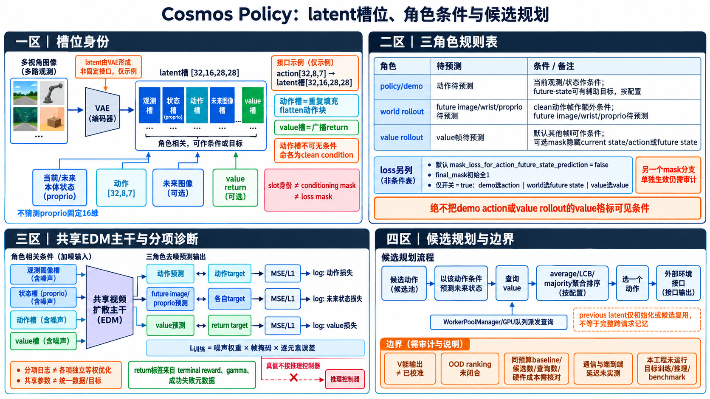
全部细节
图像 ID：F-cosmos-policy-mechanism；PNG、native receipt 和逐图中文说明由当前任务 accepted manifest 绑定。
图像身份：F-cosmos-policy-mechanism；accepted 时间：2026-11-01T21:32:18.126238+00:00；尺寸：1672×941；SHA-256：43e01b6ff50328e2f77ae1f34d0e4de516865b9c728c2cb4e36438b5f0c30c96；原生回执（此附件保存在完整本地归档中）；图详解（此附件保存在完整本地归档中）。
机器人操作 · 核心论文
Cosmos Policy：潜变量 injection、角色掩码与规划
本图回答：同一视频diffusion 主干怎样承载 policy/world/value 三种角色？
统一视觉合同
纯白不透明背景#FFFFFF；深色文字#1F2937；纯色深蓝标题条#111827；蓝#2563EB表示视觉/条件，青#0891B2表示动作/规划，绿#16A34A表示监督，橙#EA580C表示边界；平面矩形、2px细边框、2px圆角、实线单向箭头、清晰中文无衬线字体、均匀留白；禁止透明、照片、立体块、渐变、阴影、纹理、装饰。
全图阅读顺序
按左上输入、右上核心计算、左下监督或执行、右下逻辑实例与证据边界的顺序阅读。蓝色节点表示视觉或条件，青色节点表示动作或规划，绿色节点表示目标与监督，橙色框表示已知实现限制或尚未闭合的运行事实。所有箭头为实线单向箭头，每条只表示它旁边注明的一种关系；不能把数据流、梯度和控制反馈混成无文字的双向边。
分区1：条件与目标槽位
左上将干净条件化 subsequence 与目标 subsequence 并置。图像经 VAE 形成潜变量帧；动作、未来状态与价值被注入预留 slot。动作块会展平并重复填满动作潜变量体积，价值 return 则广播到价值潜变量帧；两者形状对齐方式不同于语义角色。placeholder/重复图像的词元化对齐是实现细节，不能被简化图隐藏。slot 位置表示角色，但 slot 本身不定义监督来源，必须继续画示范轨迹、滚动执行 world 和滚动执行价值的数据标签。
槽位区需要让读者看见数值是怎样进入视觉潜变量体积的。代码注释中的形状例子是批次三十二、潜通道十六、空间二十八乘二十八，动作块八乘七展平后重复填满一个动作槽；这是接口教学示例，不是所有实验固定设置。本体状态同样先检查容量再重复填充，价值则把每样本标量广播到整张价值潜变量帧。未来图像来自视觉编码，未来本体状态经状态注入函数写入，各自的来源不能合并成一个无差别的“未来数值”框。条件子序列与目标子序列有不同可见性，但槽位位置本身不决定样本来自示范还是执行轨迹。图像占位、重复图像与索引对齐影响令牌化，所以图中的简化槽位应附“实现另有对齐”的短标签，不能冒充已经展示完整令牌化。
图内短标签：当前多视角图像、本体状态、语言、动作块、未来状态、价值、占位潜变量。
分区2：角色条件与损失分支
中心区域画三个 role 的条件分支。代码默认 mask_loss_for_action_future_state_prediction=false，此时 final_mask 初始为全1；只有显式打开该配置时，示范才只选动作，world 滚动执行才选未来状态，价值滚动执行才选价值。另一个mask_value_prediction_loss_for_policy_prediction分支构造动作与未来状态掩码并断言没有价值样本，但最终乘掩码的条件不含该开关，单独开启的生效语义仍需审计。条件化掩码决定哪些当前/未来 slot 可见，损失掩码决定哪些 slot 参与 MSE/L1，二者不能合成一个角色颜色，也不能把条件分支说明误写成所有默认运行的唯一监督。
角色区要画两张表：条件表与损失表。世界模型轨迹将动作帧标为干净条件，价值轨迹默认把价值帧之外的槽位标为条件；这控制模型能看见什么。损失表则从全一掩码开始，只有打开角色分离损失开关时才变为示范仅动作、世界模型仅未来状态、价值样本仅价值。该开关的代码默认是假，不能把消融分支标题写成无条件默认。另一个开关会构造示范动作与未来状态掩码，并断言没有价值样本，两种损失开关不能同时开启；但最终乘掩码的门控未包含第二个开关，不能仅凭构造就宣称它单独开启已经生效。价值条件还可按配置遮住当前状态和动作，或遮住未来状态，形成不同价值条件。图上用短行标签标出配置真假与选择目标，不用颜色同时替代条件可见和监督归属；否则同一个干净动作既被叫作输入又被叫作待预测目标，语义会冲突。
图内短标签：策略示范样本、世界模型轨迹、价值监督轨迹、条件可见掩码、监督目标掩码、动作监督目标、未来状态目标、价值监督目标。
分区3：共享主干与分项指标
同一主干输出各角色去噪 prediction，代码仍分开记录动作、未来 proprio/image、价值的 MSE/L1。绿色目标线连到各自误差，训练帧掩码和噪声权重聚合后的目标才反向传播；分项日志不等于独立等权损失。只画 total 损失会丢掉哪个角色贡献变化的判断。return 标签由 terminal 奖励、gamma 和成功/失败元数据构造。
主干与指标区应把训练损失和诊断统计分开。一个视频扩散主干输出去噪预测，训练目标按噪声权重、帧掩码和配置权重聚合；动作、未来图像、未来状态与价值的均方误差及绝对误差则被分别记录，并按示范、世界模型轨迹和价值轨迹分组。分项指标帮助判断哪一角色变化，但不能由日志名称推出每项都作为独立同权损失反向传播。绿色目标线应落到对应预测与目标的比较点，条件掩码线指向主干输入，不能混成一条“角色监督”总线。回报标签是数据构造的一部分，涉及终止奖励、折扣和成功失败元数据；没有绑定相应数据集配置时，不应把某个回报公式写为所有实验通用。共享主干表示参数复用，不表示三种样本来源、目标变量或评价量完全相同。
图内短标签：共享EDM主干、动作MSE/L1、未来状态MSE/L1、价值MSE/L1、归一化、回报标签、共享参数梯度。
分区4：候选规划与证据边界
右下画动作→未来状态→价值的规划链。get_action 可复用 previous 潜变量，WorkerPoolManager 用 GPU worker/queue 派发并行或 AR 查询；候选动作经过 average/LCB/majority 等聚合后才交给环境。模型能表达价值不等于价值已校准；延迟、GPU通信、OOD ranking 和基线同预算仍是橙色边界。
规划区按调用顺序展开候选动作、未来状态和价值估计。候选先由策略路径产生，再以候选动作为条件生成未来状态，随后查询价值；聚合策略依配置可取均值、置信下界或多数选择。价值排序后选出的动作才交给环境消费者，不能把所有候选同时标成已执行动作。多个工作器和图形处理器队列说明实现能派发查询，不是端到端延迟已经分解测量，也不证明通信完全被隐藏。某些路径复用之前的潜变量只是初始化或候选复用，不能等同跨请求完美状态记忆。学习到价值函数不保证分布外候选排序准确；同预算基线、候选数量、查询次数与硬件成本都需额外核对。橙色边界保留这些限制，避免从“能输出价值”一步跳到“已校准且优于所有规划器”的结论。
图内短标签：候选动作、预测未来状态、价值排序、N选一、V与Q条件分支、环境动作接口、GPU任务队列、分布外校准未闭合、选定动作。
逐箭头含义
- 从“当前多视角图像”指向“占位潜变量”表示“VAE编码”。依据 CP-F01：动作块 flatten后重复写入潜变量 slot；proprio也按潜变量容量重复填充；价值 scalar广播到价值潜变量帧。 边界：禁止把此边画成参数完全相同、静态可达即已执行或论文实测收据。
- 从“本体状态”指向“状态槽”表示“潜变量注入”。依据 CP-F01：动作块 flatten后重复写入潜变量 slot；proprio也按潜变量容量重复填充；价值 scalar广播到价值潜变量帧。 边界：禁止把此边画成跨请求永久缓存、无界历史或自动释放协议。
- 从“动作块”指向“动作槽”表示“潜变量注入”。依据 CP-F01：动作块 flatten后重复写入潜变量 slot；proprio也按潜变量容量重复填充；价值 scalar广播到价值潜变量帧。 边界：禁止把此边画成跨请求永久缓存、无界历史或自动释放协议。
- 从“未来状态”指向“未来状态目标”表示“潜变量注入”。依据 CP-F02：policy/world/value由条件化/损失掩码选择目标帧；配置还允许只保留价值或保留动作+未来。 边界：禁止把此边画成没有有效掩码的真值泄漏、统一损失或已测误差。
- 从“价值”指向“价值监督目标”表示“潜变量注入”。依据 CP-F02：policy/world/value由条件化/损失掩码选择目标帧；配置还允许只保留价值或保留动作+未来。 边界：禁止把此边画成没有有效掩码的真值泄漏、统一损失或已测误差。
- 从“策略示范样本”指向“条件可见掩码”表示“角色条件”。依据 CP-F03：只有在mask_loss_for_action_future_state_prediction=true时，示范才只选动作、world 滚动执行才选未来状态、价值滚动执行才选价值；默认false时final_mask先为全1，不能把该分支当作普遍默认。 边界：禁止把此边画成全局下三角、双向无条件可见或所有模式都成立。
- 从“世界模型轨迹”指向“监督目标掩码”表示“未来监督”。依据 CP-F03：只有在mask_loss_for_action_future_state_prediction=true时，示范才只选动作、world 滚动执行才选未来状态、价值滚动执行才选价值；默认false时final_mask先为全1，不能把该分支当作普遍默认。 边界：禁止把此边画成没有有效掩码的真值泄漏、统一损失或已测误差。
- 从“价值监督轨迹”指向“监督目标掩码”表示“价值监督”。依据 CP-F03：只有在mask_loss_for_action_future_state_prediction=true时，示范才只选动作、world 滚动执行才选未来状态、价值滚动执行才选价值；默认false时final_mask先为全1，不能把该分支当作普遍默认。 边界：禁止把此边画成没有有效掩码的真值泄漏、统一损失或已测误差。
- 从“共享EDM主干”指向“动作MSE/L1”表示“分项指标”。依据 CP-F04：代码分项计算action/future/value MSE与L1。 边界：禁止把此边画成没有有效掩码的真值泄漏、统一损失或已测误差。
- 从“候选动作”指向“预测未来状态”表示“规划候选”。依据 CP-F05：get_action及规划路径可依次预测action/future/value；价值 ensemble先按配置聚合，评估消费者再取最高价值候选并将其动作排队、env.step执行。 边界：禁止把此边画成未来真值已观测、几何标定已完成或价值函数已校准。
- 从“预测未来状态”指向“价值排序”表示“候选排序”。依据 CP-F05：get_action及规划路径可依次预测action/future/value；价值 ensemble先按配置聚合，评估消费者再取最高价值候选并将其动作排队、env.step执行。 边界：禁止把此边画成未来真值已观测、几何标定已完成或价值函数已校准。
- 从“价值排序”指向“N选一”表示“按配置聚合”。依据 CP-F05：get_action及规划路径可依次预测action/future/value；价值 ensemble先按配置聚合，评估消费者再取最高价值候选并将其动作排队、env.step执行。 边界：禁止把此边画成未来真值已观测、几何标定已完成或价值函数已校准。
- 从“N选一”指向“选定动作”表示“选择一个候选”。依据 CP-F05：get_action及规划路径可依次预测action/future/value；价值 ensemble先按配置聚合，评估消费者再取最高价值候选并将其动作排队、env.step执行。 边界：禁止把此边画成参数完全相同、静态可达即已执行或论文实测收据。
- 从“选定动作”指向“环境动作接口”表示“模型外部消费”。依据 CP-F05：get_action及规划路径可依次预测action/future/value；价值 ensemble先按配置聚合，评估消费者再取最高价值候选并将其动作排队、env.step执行。 边界：禁止把此边画成已经完成的控制稳定性、端到端延迟或部署校准。
逐事实与精确来源
CP-F01｜Code Fact｜known
动作块 flatten后重复写入潜变量 slot；proprio也按潜变量容量重复填充；价值 scalar广播到价值潜变量帧。
- 04_repositories/cosmos-policy/18a2accadf4e7a3531e56754102af5a24d2316da/cosmos_policy/models/policy_text2world_model.py；SHA-256 cd7cc70b831fedd56be4fb474916250c372c6fcea1c44730600ee1a7d73987c4；行 45–109
- 04_repositories/cosmos-policy/18a2accadf4e7a3531e56754102af5a24d2316da/cosmos_policy/models/policy_text2world_model.py；SHA-256 cd7cc70b831fedd56be4fb474916250c372c6fcea1c44730600ee1a7d73987c4；行 112–173
- 04_repositories/cosmos-policy/18a2accadf4e7a3531e56754102af5a24d2316da/cosmos_policy/models/policy_text2world_model.py；SHA-256 cd7cc70b831fedd56be4fb474916250c372c6fcea1c44730600ee1a7d73987c4；行 370–403
CP-F02｜Code Fact｜known
policy/world/value由条件化/损失掩码选择目标帧；配置还允许只保留价值或保留动作+未来。
- 04_repositories/cosmos-policy/18a2accadf4e7a3531e56754102af5a24d2316da/cosmos_policy/models/policy_text2world_model.py；SHA-256 cd7cc70b831fedd56be4fb474916250c372c6fcea1c44730600ee1a7d73987c4；行 195–205
- 04_repositories/cosmos-policy/18a2accadf4e7a3531e56754102af5a24d2316da/cosmos_policy/models/policy_text2world_model.py；SHA-256 cd7cc70b831fedd56be4fb474916250c372c6fcea1c44730600ee1a7d73987c4；行 414–510
- 04_repositories/cosmos-policy/18a2accadf4e7a3531e56754102af5a24d2316da/cosmos_policy/models/policy_video2world_model.py；SHA-256 13312470552a9fe9b6a8915f214331902b455a279fd985b9121683c484622eb2；行 123–180
CP-F03｜Code Fact｜known
只有在mask_loss_for_action_future_state_prediction=true时，示范才只选动作、world 滚动执行才选未来状态、价值滚动执行才选价值；默认false时final_mask先为全1，不能把该分支当作普遍默认。
- 04_repositories/cosmos-policy/18a2accadf4e7a3531e56754102af5a24d2316da/cosmos_policy/models/policy_text2world_model.py；SHA-256 cd7cc70b831fedd56be4fb474916250c372c6fcea1c44730600ee1a7d73987c4；行 195–201
- 04_repositories/cosmos-policy/18a2accadf4e7a3531e56754102af5a24d2316da/cosmos_policy/models/policy_text2world_model.py；SHA-256 cd7cc70b831fedd56be4fb474916250c372c6fcea1c44730600ee1a7d73987c4；行 439–484
CP-F04｜Code Fact｜known
代码分项计算action/future/value MSE与L1。
- 04_repositories/cosmos-policy/18a2accadf4e7a3531e56754102af5a24d2316da/cosmos_policy/models/policy_text2world_model.py；SHA-256 cd7cc70b831fedd56be4fb474916250c372c6fcea1c44730600ee1a7d73987c4；行 617–700
- 04_repositories/cosmos-policy/18a2accadf4e7a3531e56754102af5a24d2316da/cosmos_policy/models/policy_text2world_model.py；SHA-256 cd7cc70b831fedd56be4fb474916250c372c6fcea1c44730600ee1a7d73987c4；行 541–580
CP-F05｜Code Fact｜known
get_action及规划路径可依次预测action/future/value；价值 ensemble先按配置聚合，评估消费者再取最高价值候选并将其动作排队、env.step执行。
- 04_repositories/cosmos-policy/18a2accadf4e7a3531e56754102af5a24d2316da/cosmos_policy/experiments/robot/cosmos_utils.py；SHA-256 ebe56d63d88f9a4d4ad6706d9a9ecd1376a1dff1b5cbb010c8fcd8f0c2ee0b1d；行 557–703
- 04_repositories/cosmos-policy/18a2accadf4e7a3531e56754102af5a24d2316da/cosmos_policy/experiments/robot/cosmos_utils.py；SHA-256 ebe56d63d88f9a4d4ad6706d9a9ecd1376a1dff1b5cbb010c8fcd8f0c2ee0b1d；行 851–1236
- 04_repositories/cosmos-policy/18a2accadf4e7a3531e56754102af5a24d2316da/cosmos_policy/experiments/robot/cosmos_utils.py；SHA-256 ebe56d63d88f9a4d4ad6706d9a9ecd1376a1dff1b5cbb010c8fcd8f0c2ee0b1d；行 766–816
- 04_repositories/cosmos-policy/18a2accadf4e7a3531e56754102af5a24d2316da/cosmos_policy/experiments/robot/cosmos_utils.py；SHA-256 ebe56d63d88f9a4d4ad6706d9a9ecd1376a1dff1b5cbb010c8fcd8f0c2ee0b1d；行 1691–1817
- 04_repositories/cosmos-policy/18a2accadf4e7a3531e56754102af5a24d2316da/cosmos_policy/experiments/robot/libero/run_libero_eval.py；SHA-256 2c00207579749d935102276081858a790ad413a7a64c5b838cb8f4d5d508c9a7；行 569–607
CP-U01｜Unresolved｜unknown
延迟端到端分解、GPU communication、OOD calibration、基线公平性未闭合。
- 04_repositories/cosmos-policy/18a2accadf4e7a3531e56754102af5a24d2316da/cosmos_policy/experiments/robot/cosmos_utils.py；SHA-256 ebe56d63d88f9a4d4ad6706d9a9ecd1376a1dff1b5cbb010c8fcd8f0c2ee0b1d；行 1691–2005
CP-U02｜Unresolved｜unknown
mask_value_prediction_loss_for_policy_prediction分支构造动作+未来掩码，但最终乘掩码if条件未包含该开关；单独启用的有效监督不能仅凭分支注释判定。
- 04_repositories/cosmos-policy/18a2accadf4e7a3531e56754102af5a24d2316da/cosmos_policy/models/policy_text2world_model.py；SHA-256 cd7cc70b831fedd56be4fb474916250c372c6fcea1c44730600ee1a7d73987c4；行 486–561
教学实例与绘图边界
教学例：仅在角色分离损失开关=true的分支中，一条示范只选动作槽，另一条价值滚动执行只选价值槽。默认false不能照搬此例。代码注释的接口例为动作块[32,8,7]填入潜变量槽[32,16,28,28]，价值标量则广播到该体积。候选动作→未来状态→价值排序→环境动作接口，是规划路径而非已校准价值证明。
教学数字只用于复核输入经过计算如何形成目标或输出，不是论文实验值，也没有导入目标仓库或运行训练。论文中的结果数值只有明确绑定图表、样本协议、模型配置和硬件时才能画在对应区域。未闭合项只能进橙色边界，不得靠箭头连接推成已实现。
不允许产生的解释
- 不要把简化图画成完整词元化实现
- 不要把统一主干写成统一损失/统一数据
- 不要把价值预测写成已校准规划
- 不要把默认false的分离损失开关画成无条件默认
- 不要把诊断MSE/L1日志画成所有分项等权训练损失
0. 来源、身份与地图
本报告只使用本任务重新下载的 Cosmos Policy: Fine-Tuning Video Models for Visuomotor Control and Planning：22 页 PDF、1164 行 flat TeX、HTML。作者 Moo Jin Kim、Yihuai Gao、Tsung-Yi Lin、Yen-Chen Lin、Yunhao Ge、Grace Lam、Percy Liang、Shuran Song、Ming-Yu Liu、Chelsea Finn、Jinwei Gu，单位 NVIDIA/Stanford。PDF 显示 arXiv:2601.16163v1，22 Jan 2026。正文 p.1–11，参考文献 p.12–14，附录 p.15–22。没有读取旧工程/旧分析，没有写仓库行号或实际运行观察。
5C：类型是视频模型适配机器人策略、世界模型、价值和规划的方法论文；上下文是既有视频策略常有多阶段和新动作专家，作者希望不改 Cosmos-Predict2-2B 架构；正确性上，潜变量 injection、掩码条件化和规划 pipeline 互相支持，实验有仿真/真实/滚动执行和消融，但状态是部分观察近似、规划很慢；贡献是单阶段微调、把非图像量写成潜变量帧、50/25/25 联合目标、rollout-refined 双检查点规划；清晰性较好，图 2/8 与附录补齐实现，部分噪声/聚合阈值与真实评价细节需代码确认。
依赖顺序是：p.2–4 引言/相关/EDM与MDP → p.4–6 潜变量帧 injection 与联合目标 → p.6 best-of-N 规划 → p.7–10 direct 策略/滚动执行规划实验 → p.15–22 词元化器、噪声、训练、评价、补充消融与延迟。定位句：Cosmos Policy 的核心是把动作、状态和值当作视频潜变量的新“帧”，用原视频 diffusion objective 直接学，并在获得失败滚动执行后把它扩展成能给动作候选打分的世界模型。
1. 背景、思考链与核心直觉
作者从视频模型能产生多模态、时序一致、高维视频的观察出发，推断同一生成机制也能表示低维但多峰的机器人动作。既有方法另加逆动力学或动作 diffuser，导致训练阶段和结构复杂；Cosmos Policy 选择保留 DiT、VAE、T5 和 EDM，只改变潜变量 sequence 的内容和条件化掩码。这样可把“generate 未来视频”改成“generate 动作、未来 observation、价值”，而不需定义新专家。
完整设计链是：视频潜变量原本是 → 非图像 state/action/value 归一化后复制填充到整个潜变量体积 → 按 顺序排成序列 → 干净前缀/带噪后缀决定训练策略、世界模型或价值 → direct 策略同时输出三者但只执行动作 → 滚动执行 data 加入成功与失败状态后，refine world/价值 → 原策略采样候选、refined 规划 model 预测后果和价值、best-of-N 选择。
重要的是“无架构修改”不等于“没有新输入处理”：需要 placeholder、四份重复图像、潜变量 overwrite、归一化、掩码、噪声 distribution 和价值 label。这些都是模型外数据协议。也不意味着真正预测连续未来视频；论文明确只用当前 t 和动作块结束 t+K 的 observation，不用输入 history，不预测多个未来 timestep。
2. 流水线、符号与数学
2.1 EDM 去噪与 MDP 前提（p.3–4；TeX L631–659）
Cosmos-Predict2-2B-Video2World 用 Wan2.1 VAE 词元化器和 EDM 去噪 score matching。目标为
是干净 VAE 潜变量 sequence； 为 T5-XXL language 嵌入； 控制噪声；DiT 通过交叉注意力读语言、adaptive layer norm 读 sigma。VAE 将 压成 ，第一帧不压缩，后续每四帧成一潜变量帧。初始图像保持干净。
机器人任务写成有限时间跨度 MDP ，终点奖励 ，中途为零。价值为
实际 label 用 Monte Carlo observed return 。作者承认 true 状态并不 fully observable，世界模型预测的是相机 images+proprioception，符号 s 只是 observation approximation。这个近似使 model/价值可能因遮挡而错估，不能当作精确 MDP 状态。
2.2 Latent injection（p.4–5、15–16；TeX L676–688、928–964）
三相机例子有精确的 11 个潜变量 slots：(1) blank placeholder；(2) 当前 proprio；(3) wrist image；(4–5) 两个 third-person images；(6) 动作块；(7) 未来 proprio；(8–10) 三路未来 images；(11) 未来价值。动作/状态/价值先缩放到 [−1,+1]，复制铺满 潜变量体积；多摄像头图像在 image sequence 级插入。TeX L684 原句称 a robot with only one third-person 相机可成 7 帧，但未明确是否保留 wrist 相机。由 11-slot 列表计算，五个非图像槽位加单相机当前/未来两帧才是 7；若保留 wrist 相机、仅删除第二个 third-person 视角及其未来对应帧，则是 9。报告保留原句，同时标出这一视角条件歧义。
图 8 解释第一 blank 潜变量的必要性：因为 VAE 首帧单独编码，后面四帧一起压缩，为让当前和未来相机 representation 同结构，每个 image 复制四份，再词元化器；placeholder 的潜变量被 non-image 数值完全覆盖。这不是把动作画成图片，而是在 VAE 后直接 overwrite 潜变量帧。提取动作时，对所有重复副本求均值并直接反归一化；价值同样对潜变量体积平均后反归一化。非图像模态直接注入潜变量，因此提取时不需要 VAE decoding。对动作块，论文的实现细节是逐维归一化到 [−1,+1]，将 K×d_act 展平，复制到填满目标潜变量体积后 reshape，再覆盖 placeholder；proprioception 和价值采用同类过程。
2.3 联合目标与梯度（p.5、21；TeX L689–702、1126）
每 batch 50% 专家示范轨迹用于策略 ；其余滚动执行数据集一半世界模型 ，一半价值 ，所以初始训练的样本比例是 50% 示范轨迹、25% 滚动执行 world、25% 滚动执行价值。初始滚动执行数据集包含示范轨迹及 replay 失败例（LIBERO/RoboCasa 约 10–20%），ALOHA careful 示范轨迹没失败时两数据集相同。模型结构相同，干净/带噪条件化掩码决定损失的目标。所有 Cosmos-Predict2 权重微调，新的非图像量通过同一 EDM MSE 产生梯度；没有新动作专家需要另行训练。
策略不只预测 a，还把 s′/价值当辅助目标；世界模型也带价值。direct 策略使用 parallel decoding，丢弃未来/价值；规划用自回归动作→未来→价值，可为策略和规划使用不同检查点。滚动执行 refinement 时比例改为 10% 策略、45% world、45% 价值；原始检查点继续负责策略，refined 检查点负责规划的 world/价值预测和评分。价值输入掩码可改成只看 s′ 的 V，或只看 (s,a) 的 Q。
2.4 教学数值例子（非论文实验）
设已归一化动作块只有两步 ，未来 proprio=0.8，终点奖励=1，，距离终点两步，则价值 label 。潜变量 injection 把 [0.2,0.6] 周期复制到动作帧，把 0.8 复制到未来 proprio，把 0.81 复制到价值帧。取动作带噪帧中的两个元素加噪声 [0.1,−0.2] 后为 [0.3,0.4]；若 denoiser 输出 [0.25,0.55]，两个元素 MSE 为 。这展示的是 EDM 恢复干净目标，而非流匹配速度目标。
规划的小例子：两个候选动作 A/B，各预测 3 未来，每个未来 5 values。设 A 的 15 个值中 9 个 >0.5、均值 .72，6 个 <.5；B 中 7 个 >.5，8 个 <.5、均值 .30。majority mean 先按固定阈值判多数群，再只平均该群，于是 A=.72、B=.30，选 A。该算法不等价于 15 个值简单均值，也不提供置信区间；阈值数值正文未公开。
失败边界是世界模型无失败经验时 hallucinate successful 未来：ziploc slider 实际滑脱但 base model 仍预测成功。图 6 显示加入滚动执行后更接近实际未来；若失败没有被摄像头看见，价值仍可错。
3. 规划、数据与实验
3.1 Best-of-N 与双部署（p.6、10、21–22）
原始检查点为策略 model，rollout-refined 检查点为规划 model，保持后者在前者 on-policy data 上训练。每个动作 proposal 用 3 未来状态、每未来 5 价值，共 15 价值，majority mean 聚合；N GPUs 并行 best-of-N；执行完整动作块，避免 receding 时间跨度额外成本。ALOHA 实验 N=8、8 H100，动作 10 去噪、未来/价值各 5，全部 search 4.9 s。这很慢，论文明确对动态机器人操作/locomotion 有限制。
3.2 训练与 direct 策略协议
LIBERO：四套每套 10 任务×50 示范，40K 梯度步、64 H100、global batch 1920、48h、动作 chunk16；每套 3 随机种子×500 试验=1500，总6000。RoboCasa 24 任务、每task50 示范轨迹（相比基线 >300）、40K 步、chunk32；每task50 试验×3 随机种子=3600。ALOHA 四任务共185 示范轨迹，50K 步、8 H100、global batch200、48h、chunk50（25Hz，2s）。所有 non-image normalizes to [−1,+1]；direct 策略 5 去噪 in LIBERO/RoboCasa、10 in ALOHA。
噪声分布由原 log-normal 改成 70% 原分布 +30% U[1,85]，加强高噪声尾部；推理 sigma_min=4（原 EDM .002），sigma_max=80，作者观察改善 action/future/value L1。这是经验设置，不是通用理论。附录训练 L1 是不同 sigma 下单步训练损失，不能与完整滚动执行误差混淆。
3.3 LIBERO、RoboCasa 与消融（p.8、20、22）
Table1 Cosmos Spatial98.1/Object100.0/Goal98.2/Long97.6/Avg98.5；π0.5 avg96.9、OpenVLA-OFT+97.1、CogVLA97.4等。Table2 RoboCasa67.1，较少训练示范轨迹；基线的模型/数据和直接引用条件不同，应读作报告评测基准比较。Table4 去辅助损失降到97.0（−1.5），从头训练94.6（−3.9）；在 ALOHA fold shirt 从头模型80.8，比完整99.5低18.7，且 jerk motion 导致停止更多测试。
Table5 RoboCasa逐项移除：full67.1；无价值训练 samples66.6；无 world/价值 samples64.0；再删策略价值 target62.5；再删未来状态目标、仅p(a|s)44.4。1-step66.4，0.16s，5-step0.61s。这个表支持未来状态 auxiliary 的大贡献，但移除多目标也改变每batch目标比重和梯度，不单独证明“物理表示”机制。
3.4 ALOHA 101 试验与 score（p.8、18–20）
四任务分别30/20/25/26 试验；训练80 示范 put X on plate、15 fold shirt、45 candies、45 ziploc。score 是完成百分比，plate各触物/放盘50；fold shirt十阶段各10、露袖减10；candies五个各20；ziploc五阶段各20。ID/OOD 初始位置、未见粉红衬衫、橙碗、装75%糖的蓝袋均在附录列出。
Full scores Cosmos100/99.5/89.6/85.4，avg93.6；π0.5 98.3/99.5/95.2/61.5，avg88.6。Cosmos 在三项最佳/并列，但 candies低于π0.5。ID平均96.3 vs π0.5 87.8；OOD平均89.3 vs π0.5 92.5，因此“泛化更强”不能无条件成立。Figure5 展示 π0.5 的 bag grasp 滑脱和 OpenVLA-OFT+ 在两糖中间抓取，作者猜测 L1 regression 在多峰动作中产生平均动作；这不是对所有失败的因果证明。
3.5 Rollout 规划（p.9–10）
已有 direct 策略 evaluations 共505 滚动执行（所有策略），另收 Cosmos143 ziploc 滚动执行，总648；用于 refine 规划 model。Figure7 challenging initial states：candies base49/model-free Q52/model-based V60；ziploc70/70.7/84；avg59.5/61.3/72。model-based 提升12.5 points（72−59.5），Q提升较小。它表明给定648条经验后 world+V search更有效，不能把12.5点当作所有任务平均；只测两项较难任务，one-layer best-of-N，不是深树规划。
4. 关键假设、边界与设计逻辑
最脆弱假设是“observation近似状态”足以让预测未来和值排序动作。实际遮挡、gripper滑脱、接触力和 multimodal outcome会让世界模型和价值 correlated error；majority mean能抑制离群，却不能纠正模型系统性偏差。滚动执行 data的重要性是论文明确结果：只见成功示范轨迹的模型不能校准失败后果。
稳定机制ID：CP-M01 潜变量帧 injection；CP-M02 conditioning-mask joint policy/world/value；CP-M03 滚动执行 refinement+dual 检查点；CP-M04 best-of-N/majority mean；CP-M05 hybrid 噪声 and sigma cutoff。原则性设计是“同一diffusion模型兼容新模态”和“用失败滚动执行校准规划”，11/7 潜变量帧、70/30 噪声、ensemble3×5、N=8属于配置。
不能推出：无架构变化意味着无需数据协议、未来视频连续预测、长时记忆已实现、Cosmos在OOD总优于π0.5、价值是精确期望、majority mean有理论最优性、4.9秒规划适合动态任务、或单stage 策略训练等于规划无需额外滚动执行。
5. 待代码问题与理解验收
CP-CODE-01 潜变量 injection数值复制顺序、填充、image四重复、first placeholder和decode averaging；CP-CODE-02 干净/带噪 prefix 掩码与损失掩码是否避免泄漏；CP-CODE-03 [−1,+1] 归一化的min/max、gripper/axis-angle和价值 return γ；CP-CODE-04 50/25/25与滚动执行 10/45/45采样是否按样本还是batch；CP-CODE-05 滚动执行 failure labels和terminal score来源；CP-CODE-06 价值掩码 V(s′)/Q(s,a)的真实输入和检查点；CP-CODE-07 majority success/fail threshold、tie、empty majority、ensemble aggregation；CP-CODE-08 hybrid noise70/30、sigma_min4/max80、EDM preconditioning和采样器；CP-CODE-09 direct parallel vs 规划 AR、action/future/value 检查点与采样步数；CP-CODE-10 延迟是否含VAE/T5、GPU同步、规划分支通信；CP-CODE-11 ALOHA score、OOD和基线同实际耗时不同步公平性；CP-CODE-12 潜变量 injection前后梯度和VAE冻结范围。
自测：为什么不能只用成功示范训练价值？因为失败结果未覆盖，模型会把分布外动作也想成成功；为什么无架构修改仍有数据工程？因为潜变量 overwrite、掩码和词元化器需要新协议；为什么full score最高不等于OOD最高？因为ID/OOD权重和任务mix不同；为什么动作多峰可能令L1失败？因为回归均值可落在两个合法抓取之间，但这只是作者对一个失败例的解释。
五句话：Cosmos Policy把动作/状态/价值写成视频潜变量帧。它用同一EDM objective和条件化掩码联合训练三个函数。direct 策略并行预测而只执行动作。rollout-refined world/价值与原策略组成best-of-N 规划，在两项难任务提高score。计算成本、部分可观测和有限失败经验是关键限制。
三句话：核心价值是简洁的多模态数据接口和失败经验校准。消融表明未来状态辅助监督很重要，规划需要滚动执行而不是只靠示范轨迹。高平均分、OOD泛化和实时性必须分别评价。
一句话：Cosmos Policy用潜变量 injection把视频diffusion变成动作—世界—价值统一模型，并通过滚动执行后果排序改进动作，但它的规划可靠性与速度仍由观察充分性和失败数据覆盖决定。
6. 潜变量 diffusion 序列的逐帧回放
Cosmos Policy 的“无架构修改”需要按词元化器的时间压缩顺序理解。原模型把第一张输入图像单独编码，后续每四张图像压成一个潜变量帧。为了让当前状态、动作块、未来状态和价值各占一个结构相同的潜变量帧，作者先插入 blank placeholder，再用 VAE 得到占位潜变量，最后把占位位置完全覆盖成归一化数值的复制。若忽略第一张 blank 帧，后续当前 image 的时间位置会和未来 image 结构不对齐；若每个 image 不复制四份，词元化器的时间压缩也会把一个相机视角错误地当成四个时间步。
11帧例子中的第2帧是当前 proprioception，第3至5帧是当前三路相机，第6帧是动作，第7至10帧是未来 proprio 和三路未来相机，第11帧是价值。它表达的是一次动作块前后两个时间点，而不是连续预测11个时刻。动作块可能有16或50个控制步，但被压成一个动作潜变量体积；未来状态也只是块结束时的 observation。因而 Cosmos Policy 擅长“给定一个块的后果排序”，并不等于具备长序列视频生成器。
Latent injection 的梯度来自 EDM 去噪。对于策略 batch，干净 prefix 包含当前状态和多视角图像，目标 suffix 包含带噪动作、未来状态、未来 image、价值；网络学习从干净条件恢复 suffix。对于世界模型 batch，动作也在干净 prefix，模型学习未来状态/价值；对于价值 batch，价值是唯一目标。相同的 11帧布局通过不同掩码变成三种函数，减少了维护三个网络的需要，但也使训练时每类目标的比例和梯度方向成为关键超参数。
7. EDM噪声、价值回报与一个完整例子
EDM的 不是离散时间步，而是加到干净潜变量上的高斯标准差。训练损失直接让 denoiser恢复 ，不是预测 flow velocity；这与 DreamZero、Fast-WAM、Motus的校正流写法不同。Cosmos把原 Cosmos-Predict2 的 log-normal 噪声改成70%原分布加30% U[1,85]，并把推理最小噪声从.002改为4，最大噪声保留80。作者的解释是过低噪声阶段信号变化小，最后几步反而不稳定；提高 sigma_min 使模型在较高噪声处学到更稳定的动作/未来/价值恢复。这个经验设置不能直接移植到其他视频模型。
假设一个三步任务，终点奖励1，折扣 。在当前时刻距离终点两步时，Monte Carlo 价值标签是 ；距离终点一步时是 .9；终点时是1。模型不需要显式估计每个中间奖励，因为论文设定中中途奖励为零。若一条滚动执行在第三步失败，整条轨迹的终点奖励为0，之前的价值标签也变成0.9×0=0；这正是失败滚动执行能校准 world/价值的原因。
设动作候选A和B分别生成三次未来状态、每个状态生成五次价值。A的15个价值里10个超过0.5，五个较低；B里六个超过0.5，九个较低。majority mean先决定A的成功群，再平均成功群，而不是对15个数直接求均值。若A的成功群均值.65，B的失败群均值.1，即使B有一个异常高值，A仍会被选中。阈值、tie处理和多数群为空的情况没有在论文中给出，属于代码问题；“majority mean更稳”是作者解释，不是概率最优性证明。
8. 联合目标中的数据流和参数更新
初始训练的50/25/25比例按 batch 样本分配。50% 示范轨迹策略样本让模型学习从当前状态生成动作、未来状态和价值；25% 滚动执行 world 样本让模型从状态/动作预测未来状态和价值；25% 滚动执行价值样本让价值只看状态、动作、未来状态。论文图12用绿色条件化和红色目标展示这三个掩码。若实现按词元而非样本切分，比例和梯度总量会不同；因此 batch split 是必须核对的实现契约。
滚动执行 refinement 把比例改成10% 策略、45% world、45% 价值。原策略检查点负责采样，refined 规划检查点只负责预测后果和评分，这种 dual deployment 避免用过拟合失败数据破坏原始动作分布。若代码把 refined 检查点也用于动作采样，实验就不再是论文中的双模型设置。若训练价值时仍让网络看到当前动作和当前状态，而不是按掩码只看未来状态，V/Q比较也会失真。
辅助监督的作用可以从表 5逐层读。完整模型同时预测动作、未来状态、价值，RoboCasa 67.1；去掉价值训练样本只降到66.6，去掉 world/价值样本降到64.0；进一步去掉策略价值目标降到62.5；最后只训练动作降到44.4。最大跌落发生在同时移除未来状态和价值目标，支持未来状态 prediction 是重要辅助任务。这个消融也有混杂：每一步目标类型、batch梯度和生成序列中的条件长度都改变了，不能仅凭分数认定“未来图像提供了全部物理知识”。
9. 实验表格和评价协议的细读
LIBERO每个suite10个任务、每task50 episodes、三随机种子，共6000 试验；Cosmos Spatial98.1、Object100、Goal98.2、Long97.6，平均98.5。RoboCasa每task50 episodes、三随机种子，共3600 试验，平均67.1。两者都以成功率为二元指标，不能直接和ALOHA的百分比完成度比较。RoboCasa表中Cosmos只用50 示范轨迹，而部分基线超过300，说明样本效率是作者想强调的条件，但不同预训练权重和训练时长仍会影响比较。
ALOHA的score不是成功率。Put X on plate每个试验最多100分，先碰到目标50、放到盘子50；Fold shirt十个阶段各10分，最后如果袖子伸出再扣10；candies五个各20；ziploc五个阶段各20。Cosmos在四任务 full score是100、99.5、89.6、85.4，平均93.6；π0.5是98.3、99.5、95.2、61.5，平均88.6。Cosmos在ziploc和candies有进步空间，OOD平均89.3却低于π0.5的92.5，说明“overall best”主要来自ID和任务加权，不能写成所有OOD条件更强。
图 5的错误示例把失败机制分开：π0.5没有牢牢抓住ziploc滑块，OpenVLA-OFT+在两个糖果中间伸手。作者把后者归因于L1回归多峰动作的均值效应，这是一个合理解释，但没有把同一初始状态下的动作分布或候选轨迹画出来。图 6比较base与rollout-refined 世界模型：base只在成功示范上训练，预测不出滑块脱手；refined加入失败轨迹后能贴近实际状态。这是滚动执行 data 的直接证据，比单纯的成功率更能说明为什么规划需要失败经验。
10. Planning 结果的时间和泛化边界
图 7只挑两个较难ALOHA任务和困难初始条件。Candies任务base49、Q52、V60；ziploc任务base70、Q70.7、V84；平均base59.5、Q61.3、V72。V(s′)相对base提升12.5，是两个任务的均值，不是四任务和LIBERO的通用提升。模型式规划比Q式规划好，可能因为未来状态让价值看到动作后果；也可能因为V版本使用更多生成步骤和更丰富输入，不能只把差异归因于“世界模型更正确”。
direct 策略的5步推理约0.61秒，1步约0.16秒，10步ALOHA约0.95秒；规划在8张H100上N=8、state3次、value5次，总约4.9秒。机器人动作块可能覆盖2秒，但规划4.9秒意味着不能在每个控制周期重规划。论文承认这会限制动态操作和 locomotion；它的贡献重点是高质量候选排序，不是低延迟反应控制。
11. 与其他统一WAM的差异
Cosmos Policy与Fast-WAM的差异在训练目标：Fast-WAM保留未来视频损失但推理时只做动作；Cosmos直接把动作、状态、价值写成潜变量帧，并额外训练价值和世界模型。与LingBot-VA相比，Cosmos没有因果AR视频历史，当前状态与一个块结束状态是主要时间轴；与X-WAM相比，Cosmos没有显式深度分支和RGB-D点云，但价值提供了动作后果排序；与Motus相比，Cosmos不依赖光流潜在动作，而是直接在目标机器人上用示范轨迹和滚动执行微调。这些差异意味着它们的 success、延迟和 long-horizon 结论不能混为一谈。
最脆弱的假设是 observation足以近似状态。若两个相同图像对应不同隐含接触力，价值会给出相同预测，规划无法区分；若相机遮挡滑块，世界模型可能把失败动作想象成成功。Cosmos的滚动执行 refinement只能修正训练中见过的失败类型，不能保证对新失败分布泛化。另一个边界是 full 动作块执行：论文为减少规划成本不采用receding 时间跨度，意味着一旦前几步不准确，后续动作要到块结束才重新查询。
12. 中文自测与最小反例
问题一：潜变量 injection为什么比新动作输出头简单？因为它复用视频VAE、DiT和EDM，只在已有潜变量序列中插入数值帧；代价是必须设计placeholder、掩码、归一化和时间压缩对齐。问题二：为什么需要滚动执行 refinement？示范轨迹多为成功轨迹，world/价值没有见过失败后果，容易给分布外动作错误高分。问题三：为什么V规划比Q规划更好？V版本先预测未来状态再评分，能把动作后果作为中间可见变量；Q直接从当前状态/动作估计，样本少时更难学习。问题四：为什么1-step速度快却不代表所有任务都能用？RoboCasa 66.4是在一个模型和平均指标上的结果，精细抓取和OOD任务可能更依赖多步去噪。
最小反例是两个动作都把糖果送到碗边，但一个会让碗翻倒、另一个不会；当前图像和动作开始状态相同，差异只在接触力和未来微小位姿。若世界模型只生成RGB而不含力觉，它可能给两条轨迹相同价值，best-of-N无从选择。加入力/触觉潜变量或短期多候选未来后再比较，才能检验Cosmos的“生成未来+价值排序”是否真的超越直接策略。
2. dreamzero
原文图表证据（v3 精确裁切）
原文图表卡片：图 4（PDF p.6）
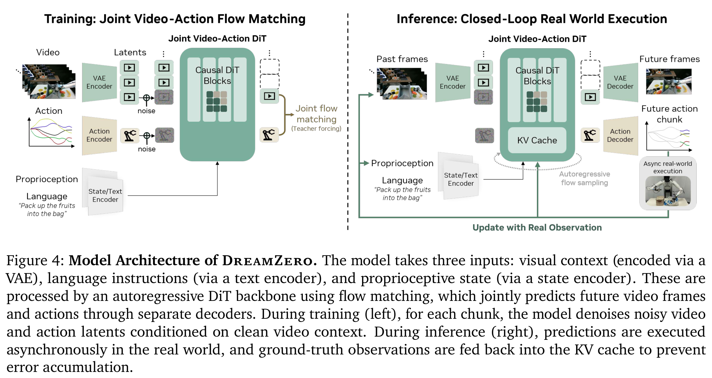
全部细节
这是论文原文图表或页图；具体版本、页码和裁剪信息见邻近中文说明。
- 论文版本：
2602.15922v1；PDF SHA-256：cb91d24a04717a6c77fd39594af7f3f85a05317b7078b0d9c8d8b4ddd932f483；page SHA-256：0fbf56654dd2ff696008dfe43278453daf4167aa99da8733a24c66d096af1424。 - crop bbox（pt）：
[58, 80, 537, 334]；尺寸：[1996, 1059]；crop SHA-256：89426f336641bc282a57074d0c7238e9d49bca6f10bcdf184349764ec539f723。 - 图表说明：PDF p.6 的 Fig.4 左侧是训练：视觉 VAE、动作编码器、proprioception/text 条件进入因果 DiT，联合预测视频与动作；右侧是推理：KV 缓存保留历史，动作异步执行，真实观测沿底部绿色箭头回填。它是真实方法图，旧 catalog 所标 p.7 Fig.3 并不存在于该页。
- 进一步分析：图中重要的闭环依赖是下一轮上下文使用真实 observation，而非一直使用生成帧。这样把视频 AR 的想象误差与机器人再次观测区分开。与 DriveWAM 的 selective KV 相比，DreamZero 此图强调观测回填和异步执行；两者都使用历史缓存，但优化对象与信息更新时机不同。
- 证据边界：图注的“prevent error accumulation”是作者解释，图本身不能证明缓存误差为零或保证控制稳定。图没有列出噪声时序、块长度、动作/VAE 尺寸和 solver；实际速度需单独看计时表，不能由异步箭头直接推出 7 Hz。 当前 visual_status=
precise_crop_and_visual_checked；semantic_status=reviewed/pass_with_boundary。历史状态semantic_pending仅对应早期裁剪回执，原文证据边界继续有效。
原文图表卡片：表 4（PDF p.17）
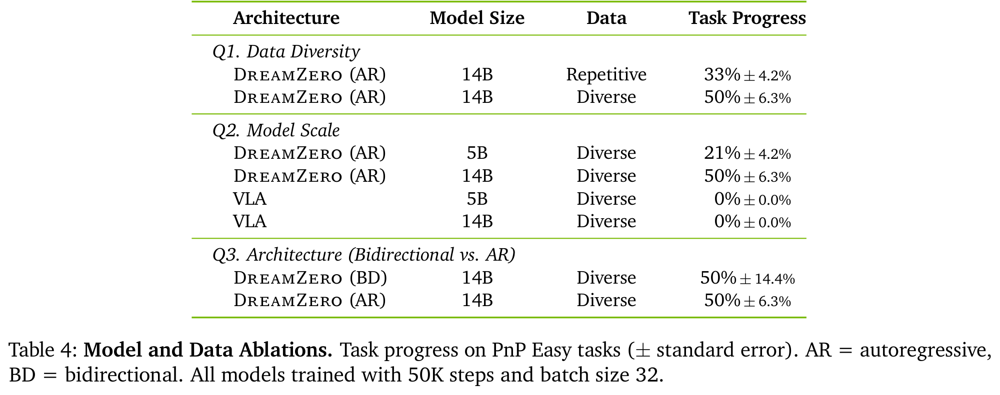
全部细节
这是论文原文图表或页图；具体版本、页码和裁剪信息见邻近中文说明。
- 论文版本：
2602.15922v1；PDF SHA-256：cb91d24a04717a6c77fd39594af7f3f85a05317b7078b0d9c8d8b4ddd932f483；page SHA-256：5a610af14b4ad44be17010ae3485e5a3f213f1adddf268a15ecba2b98eca162c。 - crop bbox（pt）：
[58, 520, 538, 710]；尺寸：[2000, 791]；crop SHA-256：5318369cbb20d5a9577fdc713042f9e767e18f0632f8fe949fbe36221240e430。 - 图表说明：表 4 将 PnP Easy 任务完成度的三组消融放在一表，且所有模型训练 50K 步、batch 32。14B AR 的 repetitive data 为 33%±4.2%，diverse data 为 50%±6.3%；5B AR 为 21%±4.2%，14B AR 为 50%±6.3%；BD 与 AR 的均值同为 50%，但 BD 误差条更大。
- 进一步分析：最明确的受控变化是数据多样性和模型规模：同样训练步数下，diverse 数据增加 17 个 progress 点，14B 相对 5B 增加 29 点。AR 与 BD 的均值相同，不能说该表证明 AR 平均更好。与 X-WAM 的 depth/ANS 消融一样，表内受控对照比跨论文主结果更适合检验机制。
- 证据边界：这张表只测 PnP Easy，任务完成度与任务成功率不同；误差条是 standard error，不能直接当成样本标准差。它没有证明开放世界、长时任务或新机器人上的同等收益，也不能把 14B WAM 与 5B VLA 的差异完全归因于视频预训练。 当前 visual_status=
precise_crop_and_visual_checked；semantic_status=reviewed/pass_with_boundary。历史状态semantic_pending仅对应早期裁剪回执，原文证据边界继续有效。
正文：05_analysis\full_reading\dreamzero\paper_reading_report.md；27870 字符 / 12113 中文字符；SHA-256 bf646ecde07959752f6472cdbbd0cbd8a096cb27df9f4cb870b40c0ebdc792ef。
来源覆盖：05_analysis\full_reading\dreamzero\source_coverage.json；问题台账：05_analysis\full_reading\dreamzero\paper_questions_for_code.md。
机器人操作 · 核心论文
DreamZero（2602.15922）逐页论文精读
当前正式机制图与完整图解：F-dreamzero-mechanism
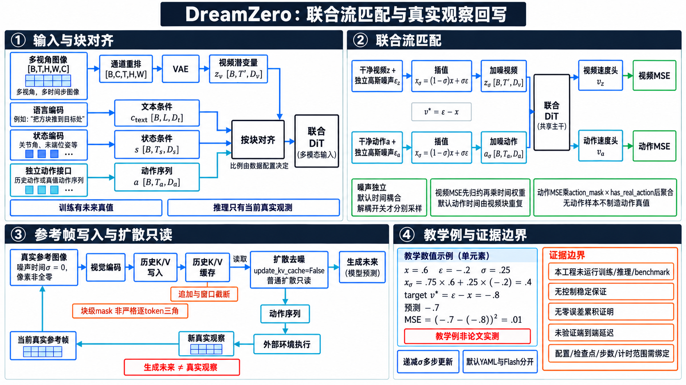
全部细节
图像 ID：F-dreamzero-mechanism；PNG、native receipt 和逐图中文说明由当前任务 accepted manifest 绑定。
图像身份：F-dreamzero-mechanism；审校时间：2026-11-01T13:01:41.186857+00:00；尺寸：1672×941；SHA-256：8a82708e555d60114cae7b75aa2f21d7817503f6821266c406d16d1139375c46。原生回执（此附件保存在完整本地归档中）。
机器人操作 · 核心论文
DreamZero：联合流匹配与真实观察回写
本图回答：未来视频与动作怎样共同训练，真实观察怎样进入下一轮缓存？
本单元只是当前任务的科研图合同，当前正式图已生成并通过原生来源记录与视觉审校。下面区分论文事实、固定源码事实、教学算例与未知边界。图中所有可见文字采用短标签，精确来源、版本和哈希只放在本文与 facts.json。
统一视觉合同
纯白不透明背景#FFFFFF；深色文字#1F2937；纯色深蓝标题条#111827；蓝#2563EB表示视觉/条件，青#0891B2表示动作/规划，绿#16A34A表示监督，橙#EA580C表示边界；平面矩形、2px细边框、2px圆角、实线单向箭头、清晰中文无衬线字体、均匀留白；禁止透明、照片、立体块、渐变、阴影、纹理、装饰。
全图阅读顺序
按左上输入、右上核心计算、左下监督或执行、右下逻辑实例与证据边界的顺序阅读。蓝色节点表示视觉或条件，青色节点表示动作或规划，绿色节点表示目标与监督，橙色框表示已知实现限制或尚未闭合的运行事实。所有箭头为实线单向箭头，每条只表示它旁边注明的一种关系；不能把数据流、梯度和控制反馈混成无文字的双向边。
分区1：输入与对齐
左上区域并列画出视觉、语言和本体状态三类条件。图像经 VAE 编码，动作经独立接口进入模型；各路在共同 DiT 中交换信息，但不能画成动作由 RGB 图像解码。图中输入箭头表示张量送入哪个接口，不表示数据必定来自同一机器人或同一采样频率。短标签保留“视频潜变量”“动作序列”，精确张量轴放在说明中：策略输出头将图像由 [B,T,H,W,C] 变为 [B,C,T,H,W] 再编码，训练视频随后按自回归时间布局使用。所有相机拼图和时间跨度都受数据配置约束。
这一分区还要说明三种时间尺度怎样对齐。视频先形成视觉潜变量，再按块安排参考上下文；动作是带机器人本体维度的序列，状态是另一路条件。训练代码用断言检查动作数与视频块数、状态数之间的比例，因此图中可以画“按块对齐”，不能自定每秒帧数或每帧动作数。图像的颜色通道位置从最后一轴移到第二轴，随后经过归一化和视觉编码；语言单独编码成上下文，不是拼成图像的第四个通道。最终共同主干接收的是这些编码后的条件与带噪目标，原始像素、状态与动作标签仍各有入口。读者应能沿蓝色条件线找到文本和参考图像，沿青色目标线找到动作序列，并能区分训练期完整轨迹与推理时当前可获得的观测。该区域只交代接口和对齐关系，机器人型号、相机组合及预测时域必须由具体数据配置补充。
图内短标签：多视角图像、语言指令、本体状态、视频潜变量、动作序列。
分区2：加噪与联合监督
右上区域从干净视频和动作分别引出高斯噪声与噪声时间，使用 xσ=(1−σ)x+σε，速度目标是 ε−x。这里必须区分随机噪声张量独立和时间是否解耦：默认配置将动作时间从视频块重复，启用 decouple_video_action_noise 才分别采样时间。共同前向返回视频/动作两路预测，视频误差先归约后乘时间权重，动作误差先乘 action_mask 与 has_real_action，再按动作维度和时间权重聚合。绿色监督箭头由各自目标指向各自 MSE，绿色参数更新箭头指向可训练模型，不能暗示无动作样本仍有动作真值。
加噪区必须把真值、噪声和预测画成三类不同节点。真值与高斯噪声经过插值产生模型输入，模型输出再与“噪声减真值”比较，绿色目标线不能直接进入推理输入。独立随机噪声不意味着独立噪声时间：默认时间由视频块复制给对齐动作，解耦分支才改变动作时间采样。有效动作掩码先作用于逐元素平方误差，有真实动作标记再关闭没有动作监督的样本；最后才进行动作维度与时间聚合。这意味着一个纯视频样本仍可贡献视觉损失，而不是被虚构出一段零动作真值。可见公式使用速度目标，不将速度叫作去噪后的动作本身。数值教学框保留加噪值零点四、目标负零点八与预测负零点七三个角色，不能把目标符号抄反，也不能把零点零一标成论文验证误差。
图内短标签：时间σ、独立高斯噪声、加噪视频、加噪动作、联合DiT、两路速度、有效动作掩码、加权均方误差。
分区3：推理与观察缓存
左下区域画推理闭环。块级掩码允许同块特定模态交互，不是逐词元严格下三角。参考帧调用将真实观察对应 K/V 写入，扩散步骤读取缓存，使用 update_kv_cache=False；缓存追加并按窗口截断。动作输出进入动作解码与外部环境，执行后真实观察重新经过视觉编码进入下一次参考帧更新。回写箭头落在观察/参考帧入口，不能落到速度监督目标；真实观察也不能与模型生成的未来帧画成同一个事实节点。
缓存区要分开“写入历史”“读取历史”和“执行后获得新观测”三种关系。序列起点创建缓存并用零噪声参考帧预填，后续真实参考片段再次写入；普通扩散步骤将更新标记设为假，只读取已建立的上下文。当前块中的视频与动作仍由调度器逐步更新，因此读缓存不等于整个模型只运行一次。模型生成的未来视频可以作为预测结果展示，不能沿实线冒充已经执行后的相机观测。环境动作消费者位于模型外部，只有它执行后返回的新图像才可回到视觉编码入口。论文架构图提供异步闭环的描述，固定推理函数提供读写开关证据；两者联合仍不构成一次真实机器人运行收据。窗口截断及块级可见性必须保留为约束，不能画出无限增长的历史库或严格逐令牌下三角。
图内短标签：块级可见性、参考帧写入、扩散步只读、动作解码、环境执行、真实观察回写。
分区4：数值例与证据边界
右下区域用标明“教学例”的一维动作展示目标方向。干净动作为 0.6、噪声为 −0.2、σ 为 0.25 时，0.75×0.6+0.25×(−0.2)=0.4，目标 ε−x=−0.8。如果网络输出 −0.7，该单元素平方误差为 0.01；它只解释目标计算，不是论文数据或模型实测。橙色边界框说明默认 YAML 的时间耦合与 Flash 的运行配置需分别确认，闭环图也不能推出控制稳定、零误差积累或端到端延迟。
边界区还需要交代教学输入怎样经过计算落到监督与下游消费。若当前干净动作是零点六，噪声为负零点二，四分之一噪声比例得到零点四，网络预测的速度用于比较目标；推理则按调度器的递减噪声时间更新带噪动作，不能把训练标签直接交给控制器。纸面上相同的主干接口不证明所有检查点使用相同采样配置，默认配置与论文加速版本应分别标识。此图可以解释为什么回写真实观测能纠正条件历史，但不能声称已经证明没有误差积累、不会控制失稳或达到某个延迟。需要另行补充的证据是实际配置覆盖、加载的检查点、执行步数、计时范围和机器人回合记录；这些缺口应放在橙色短标签中，不用装饰箭头补成已经实现的模块。
图内短标签：教学例、x=0.6、ε=−0.2、σ=0.25、xσ=0.4、目标v=−0.8、默认时间耦合、实测收据缺失。
逐箭头含义
- 从“多视角图像”指向“视频潜变量”表示“视觉编码”。依据 DZ-F01：视觉、语言和状态通过相应接口进入模型；图像轴变换后经VAE编码。 边界：禁止把此边画成未来真值已观测、几何标定已完成或价值函数已校准。
- 从“视频潜变量”指向“加噪视频”表示“噪声插值”。依据 DZ-F02：训练插值 xσ=(1−σ)x+σε，速度目标 ε−x。 边界：禁止把此边画成未来真值已观测、几何标定已完成或价值函数已校准。
- 从“动作序列”指向“加噪动作”表示“噪声插值”。依据 DZ-F02：训练插值 xσ=(1−σ)x+σε，速度目标 ε−x。 边界：禁止把此边画成参数完全相同、静态可达即已执行或论文实测收据。
- 从“加噪视频”指向“联合DiT”表示“视频输入”。依据 DZ-F04：同一次模型前向产生视频和动作两路速度预测。 边界：禁止把此边画成未来真值已观测、几何标定已完成或价值函数已校准。
- 从“加噪动作”指向“联合DiT”表示“动作输入”。依据 DZ-F04：同一次模型前向产生视频和动作两路速度预测。 边界：禁止把此边画成参数完全相同、静态可达即已执行或论文实测收据。
- 从“联合DiT”指向“两路速度”表示“各自输出”。依据 DZ-F04：同一次模型前向产生视频和动作两路速度预测。 边界：禁止把此边画成已经完成的控制稳定性、端到端延迟或部署校准。
- 从“两路速度”指向“加权均方误差”表示“分别监督”。依据 DZ-F05：动作损失由action_mask与has_real_action门控，并分别做时间加权。 边界：禁止把此边画成没有有效掩码的真值泄漏、统一损失或已测误差。
- 从“动作解码”指向“环境执行”表示“动作执行”。依据 DZ-F07：参考帧写K/V；扩散步复用；真实观察在闭环执行后回写。 边界：禁止把此边画成已经完成的控制稳定性、端到端延迟或部署校准。
- 从“环境执行”指向“真实观察回写”表示“新观测”。依据 DZ-F07：参考帧写K/V；扩散步复用；真实观察在闭环执行后回写。 边界：禁止把此边画成已经完成的控制稳定性、端到端延迟或部署校准。
- 从“真实观察回写”指向“参考帧写入”表示“更新K/V”。依据 DZ-F07：参考帧写K/V；扩散步复用；真实观察在闭环执行后回写。 边界：禁止把此边画成跨请求永久缓存、无界历史或自动释放协议。
- 从“参考帧写入”指向“扩散步只读”表示“历史K/V条件”。依据 DZ-F07：参考帧写K/V；扩散步复用；真实观察在闭环执行后回写。 边界：禁止把此边画成跨请求永久缓存、无界历史或自动释放协议。
- 从“扩散步只读”指向“动作解码”表示“去噪动作输出”。依据 DZ-F07：参考帧写K/V；扩散步复用；真实观察在闭环执行后回写。 边界：禁止把此边画成已经完成的控制稳定性、端到端延迟或部署校准。
逐事实与精确来源
DZ-F01｜Code Fact｜known
视觉、语言和状态通过相应接口进入模型；图像轴变换后经VAE编码。
- 03_papers/dreamzero/2602.15922/paper_tex_flat.tex；SHA-256 33f825e06e6d93b6054d33baacdeeb6f9ee5f192fe18edfb328bd7431f1caa19；行 858–862；PDF 页 6
- 04_repositories/dreamzero/ab790c198fbce33503358efbbd4187ce9a89adf3/groot/vla/model/dreamzero/action_head/wan_flow_matching_action_tf.py；SHA-256 9028b34533e1a2e1c473fee1b9b72479af266814fadbd04bdda0e42a2c17814a；行 603–678
DZ-F02｜Code Fact｜known
训练插值 xσ=(1−σ)x+σε，速度目标 ε−x。
- 04_repositories/dreamzero/ab790c198fbce33503358efbbd4187ce9a89adf3/groot/vla/model/dreamzero/modules/flow_match_scheduler.py；SHA-256 e34cad165f7a9d3249f2d14f4dc04f08eae22b468723685acfe3fb6e5a0ffa8d；行 73–85
DZ-F03｜Code Fact｜known
时间采样有coupled/decoupled分支；默认YAML decouple_video_action_noise=false。
- 04_repositories/dreamzero/ab790c198fbce33503358efbbd4187ce9a89adf3/groot/vla/model/dreamzero/action_head/wan_flow_matching_action_tf.py；SHA-256 9028b34533e1a2e1c473fee1b9b72479af266814fadbd04bdda0e42a2c17814a；行 679–718
- 04_repositories/dreamzero/ab790c198fbce33503358efbbd4187ce9a89adf3/groot/vla/configs/model/dreamzero/action_head/wan_flow_matching_action_tf.yaml；SHA-256 2a6255a5516f42437b85c070fa36ed3a79d881de46232d45fa7959dcfcc42cc0；行 90–105
DZ-F04｜Code Fact｜known
同一次模型前向产生视频和动作两路速度预测。
- 04_repositories/dreamzero/ab790c198fbce33503358efbbd4187ce9a89adf3/groot/vla/model/dreamzero/action_head/wan_flow_matching_action_tf.py；SHA-256 9028b34533e1a2e1c473fee1b9b72479af266814fadbd04bdda0e42a2c17814a；行 760–775
DZ-F05｜Code Fact｜known
动作损失由action_mask与has_real_action门控，并分别做时间加权。
- 04_repositories/dreamzero/ab790c198fbce33503358efbbd4187ce9a89adf3/groot/vla/model/dreamzero/action_head/wan_flow_matching_action_tf.py；SHA-256 9028b34533e1a2e1c473fee1b9b72479af266814fadbd04bdda0e42a2c17814a；行 777–803
DZ-F06｜Code Fact｜known
掩码是块级因果；同块跨模态边可能存在，不是严格逐词元下三角。
- 04_repositories/dreamzero/ab790c198fbce33503358efbbd4187ce9a89adf3/groot/vla/model/dreamzero/modules/wan_video_dit_action_casual_chunk.py；SHA-256 e4fbd219c24a9256770833704d7d33c64c2d3049900f82eb11d98085fd6515e4；行 1434–1594
DZ-F07｜Code Fact｜known
参考帧写K/V；扩散步复用；真实观察在闭环执行后回写。
- 03_papers/dreamzero/2602.15922/paper_tex_flat.tex；SHA-256 33f825e06e6d93b6054d33baacdeeb6f9ee5f192fe18edfb328bd7431f1caa19；行 858–862；PDF 页 6
- 04_repositories/dreamzero/ab790c198fbce33503358efbbd4187ce9a89adf3/groot/vla/model/dreamzero/action_head/wan_flow_matching_action_tf.py；SHA-256 9028b34533e1a2e1c473fee1b9b72479af266814fadbd04bdda0e42a2c17814a；行 1116–1190
- 04_repositories/dreamzero/ab790c198fbce33503358efbbd4187ce9a89adf3/groot/vla/model/dreamzero/action_head/wan_flow_matching_action_tf.py；SHA-256 9028b34533e1a2e1c473fee1b9b72479af266814fadbd04bdda0e42a2c17814a；行 1197–1310
DZ-F08｜Teaching Example｜teaching_example
教学例0.6、−0.2、0.25得到加噪0.4与目标−0.8。
- 04_repositories/dreamzero/ab790c198fbce33503358efbbd4187ce9a89adf3/groot/vla/model/dreamzero/modules/flow_match_scheduler.py；SHA-256 e34cad165f7a9d3249f2d14f4dc04f08eae22b468723685acfe3fb6e5a0ffa8d；行 73–85
DZ-U01｜Unresolved｜unknown
论文Flash 检查点实际override与默认配置的运行映射未闭合。
- 05_analysis/code_audits/manipulation/joint_reader_zh/prose_v3/chapters/dreamzero.md；SHA-256 2826e0f86694aa76f1fb6800a79b3d373a260af0dd0bb8628600fc3821a0e6d2
DZ-U02｜Unresolved｜unknown
静态缓存/异步图不能证明控制稳定或端到端速度。
- 03_papers/dreamzero/2602.15922/paper_tex_flat.tex；SHA-256 33f825e06e6d93b6054d33baacdeeb6f9ee5f192fe18edfb328bd7431f1caa19；行 858–862；PDF 页 6
- 05_analysis/code_audits/manipulation/joint_reader_zh/prose_v3/chapters/dreamzero.md；SHA-256 2826e0f86694aa76f1fb6800a79b3d373a260af0dd0bb8628600fc3821a0e6d2
教学实例与绘图边界
一维教学例：干净 x=0.6，ε=−0.2，σ=0.25，得到 xσ=0.4，目标速度 ε−x=−0.8。预测−0.7时该元素MSE=0.01。推理沿递减σ从噪声向干净推进；教学例不是论文实测。
教学数字只用于复核输入经过计算如何形成目标或输出，不是论文实验值，也没有导入目标仓库或运行训练。论文中的结果数值只有明确绑定图表、样本协议、模型配置和硬件时才能画在对应区域。未闭合项只能进橙色边界，不得靠箭头连接推成已实现。
不允许产生的解释
- 不要把同块掩码画成严格逐词元因果
- 不要把生成未来当真实观察
- 不要把默认coupled写成已验证Flash配置
0. 资料身份、阅读范围与证据纪律
本文源文件是任务目录中重新下载的 paper.pdf（36 页）、paper_tex_flat.tex（1672 行）和 paper.html。本文报告只使用这三份当前版本材料；不使用 05_analysis 下的旧报告，也不把仓库实现事实写进论文报告。PDF 的标题页显示日期为 2026-02-19，题为 World Action Models are Zero-shot Policies，作者为 Seonghyeon Ye 等。正文的 printed page 与 PDF 页号一致，以下位置格式写作“PDF p.x；TeX Lx–Ly”。图、表、算法和附录均按 PDF 逐页重读，并在 images/page_*.png 保存了含图表的原页渲染。
本文的类别是方法与机器人策略系统论文。第一遍 5C 预审如下：Category：基于预训练视频扩散模型的 World Action Model（WAM）；Context：VLA 能利用语言语义，却在未见物理动作、环境和运动上失效；既有 WAM 证明视频先验有用，但通常仍采用重复示范、双向固定窗口或离线生成；Correctness：训练目标、流匹配公式和闭环替换观察的叙述自洽，实验给出多种机器人、任务、消融与失败例，但跨任务的成功分数仍是有限滚动执行的均值，且 7 Hz 仅在两块 GB200 上达到；Contributions：DreamZero 联合预测视频与动作、用自回归块和 KV 缓存做闭环控制、提出 DreamZero-Flash 噪声解耦与系统优化、展示多种跨 embodiment 转移；Clarity：核心公式和算法明确，个别实现阈值、成功判定细节和视频质量与动作质量的因果关系仍是作者的解释或待确认项。定位句是：论文要解决“VLA 看懂语言却不会执行新运动”的问题；对当前研究最有价值的是把视频动态先验、逆动力学和异步闭环执行放在同一可检验框架中。
阅读地图与依赖
依赖顺序是：p.2 摘要与 p.4–5 引言建立“语义 what / 动力学 how”的问题；p.6–8 模型和流匹配公式定义联合分布；p.8–10 实时执行说明如何从 5.7 s 降到 150 ms；p.10–13 数据和评测协议决定分数含义；p.14–18 逐个研究问题给出主结果、跨 embodiment、Flash 和消融；p.19 讨论边界；p.20–29 附录给出世界模型比较、AR/双向差异、注意力掩码、训练/推理算法、优化细节、数据采集、全部任务表和失败案例。关键术语包括 WAM、inverse-dynamics model（IDM）、块、教师强制、流匹配、干净上下文、KV 缓存、任务完成度、unseen 任务/environment、cross-embodiment 和 Flash。它们的首次定义和每次变化记录在 source_coverage.json。
正式图卡：DreamZero 联合流匹配与真实观测闭环
- 图解重点：输入条件与动作接口分离、视频/动作联合流匹配、
v*=ε−x速度目标、action_mask × has_real_action、参考帧 K/V 写入、扩散步只读、执行后真实观测回写。 - 教学数值：
ε=-0.2、σ=0.25、x^σ=0.40、v*=-0.80、v̂=-0.70、单元素 MSE=0.01；这些数字只解释公式，不是论文实验结果。 - 证据边界：图中把预测未来视频与执行后的真实观测分开，未把评测基准、部署延迟、控制稳定性或 Flash 检查点覆盖画成已证实结论。逐图事实、来源和验收见 图详解（此附件保存在完整本地归档中） 与 原生回执（此附件保存在完整本地归档中）。
1. 背景、前人方法与作者的思考路径
引言（p.5；TeX L798–842）先给一个具体对照：VLA 可能凭借网页语义知道把可乐罐放到 Taylor Swift 处，因为“目标是什么”和“移动”动作都在训练先验里；但如果训练集中没有“解鞋带”这个运动，模型缺少精确空间、几何、动力学和电机控制的表示。作者的诊断是，VLM 预训练主要处理静态图像文本，语言先验告诉模型 what，却没有连续的 how。这不是说 VLA 完全没有时空表示，而是论文在此处明确把未见运动泛化作为其观察到的失败模式（论文明确声称）。
相关工作分成三条线。第一条是模块化 VLM 规划器：它让基础模型生成步骤或 affordance，再由低级 skill 执行，代价是需要预先存在的 skill 库，并会累积模块间错误。第二条是端到端 VLA：把语言、视觉和动作放进一个网络，语言泛化好，但动作通常从有限且重复的机器人轨迹直接拟合。第三条是视频模型机器人策略：有的用视频生成后做逆动力学，有的用点跟踪或高层轨迹规划，有的从预训练视频扩散模型中获得物理先验。作者把同时建模未来视频和动作的方向命名为 WAM，以强调视频只是世界建模目标之一，未来也可以用触觉或力反馈。
从这些材料可重建作者的思考链。若直接训练 ，每条动作标签只告诉模型当前控制量，模型必须从嘈杂、异构状态动作对中隐式推断“做这个动作后世界会如何变化”。若先预测未来视觉，连续帧之间提供密集监督；视频扩散主干又已经从互联网视频学到物体运动和接触的统计规律。于是最小设计是把视频生成和动作生成耦合，让未来视频成为隐式视觉 planner，再从预测未来反推出动作。接着，单纯的双向固定窗口会把长轨迹的语言区间和原生视频帧率对不齐；用自回归块保持时间顺序，并用真实观察回写 KV 缓存，则可同时处理历史、动作和新视觉。最后，若扩散迭代太慢，必须把“每次推理等待机器人停住”改成异步执行，并让训练噪声分布匹配单步动作推理。
2. 核心直觉与完整流水线
核心直觉可以压缩为三句：视频未来是比单步动作更密集的中间监督；动作是“从想象的未来状态反推控制”的隐式 IDM；闭环机器人每执行一个块都能用真实帧替换想象帧，所以自回归视频的误差不会无限累积。DreamZero 并不声称预测视频总是正确，附录失败案例反而显示机器人会忠实执行错误视频计划。
给定当前视觉历史 、语言 、状态 ，模型要输出未来 H 步视频 和动作 。推理时：
- VAE 将初始图像和每个新观察编码成视频潜变量；文本编码器编码指令；状态编码器编码本体状态。多视角图像被拼成一个帧，未改变主主干。
- 轨迹按块切分，每个 AgiBot 块含 K=2 个潜变量视频帧和 H=48 个 30 Hz 动作（1.6 s）；DROID 用 15 Hz 与 H=24，同样覆盖 1.6 s。默认 M=4 个块，最大历史 8 个潜变量帧、约 33 个原始帧、6.6 s（p.21；TeX L1302–1310）。
- 训练时对当前块的视频潜变量和归一化动作分别加高斯噪声、在 0 到 1 的流匹配时间上插值；前一块使用干净上下文（教师强制），当前带噪块只能通过注意力掩码读到前文干净词元。DiT 输出联合速度场。
- 推理从噪声开始做 N 次流积分，得到视频和动作。动作块通过 cubic 上采样、Savitzky–Golay（窗口 21、三阶多项式）滤波再下采样，异步送给控制器。模型同时用最新观察进行下一次推理；旧预测视频不回写，真实图像经 VAE 进入 KV 缓存。
- Flash 训练使视频噪声偏高而动作噪声均匀，从而在单步动作去噪时学会“从脏的视觉条件直接出干净动作”。
一个贯穿方法的教学数值例子（非论文实验）
设一个极小块只有一维视频潜变量与一维动作。干净视频 ，干净动作 ，采样噪声 、，时间 。插值给出 ，。目标联合速度是 。若网络输出 ，这一块的未加权平方损失是 。梯度会推动 DiT 在给定干净上下文、语言和状态的条件下同时修正视频和动作速度；视频和动作对应的解码器分别恢复未来帧和控制量。这个例子只解释公式，不代表论文采用一维数据或该数值。
失败边界很明确：若视频生成的 把“打开烤箱门”错成“先拿面包”，即使动作解码器完全遵循预测视频，执行仍会走错；p.29 图 16 正是这个情况。另一个边界是内存：模型保留视觉历史，但论文脚注明确没有专门评估只能依赖记忆才能成功的任务，因此不能把 6.6 s context 推成长期记忆能力。
3. 数学、符号、训练与推理
3.1 联合分布分解（p.6；TeX L871–881）
论文写出
左侧是 DreamZero 的联合策略；右侧第一项是条件视频预测，第二项被解释为 IDM。这里 是视频/观察， 是未来动作序列， 是语言， 是 proprioception。等式表达的是一种建模分解，并不表示系统真的训练两个独立网络；作者明确说用一个端到端 DiT 共同去噪。
3.2 流匹配插值与损失（p.7–8；TeX L896–911）
对第 k 个块，视频和动作在相同时间 下写成
其中 是独立高斯噪声， 是 VAE 视频潜变量， 是归一化动作。 代表纯噪声， 代表目标。前面块的干净上下文是 。网络 预测联合速度，目标 。损失为
是预定义权重；论文没有给出它的具体函数。注意论文正文把块数写作 M，而公式求和上限写作 K，这两个字母在不同位置的语义并不完全一致：附录明确 K=2 是每块的潜变量帧数、M=4 是块数。报告保留这一原文记号差异，不擅自替换。
当对 求梯度时，误差从视频与动作两个解码器共同回传到共享 DiT、动作编码器/解码器和状态编码器；text 编码器、image 编码器、VAE 在训练中冻结（p.10；TeX L1050–1057）。教师强制的干净上下文不需要对上一块重新采样，因而训练可以做 trajectory-level update。算法 1（p.22；TeX L1318–1358）逐行列出采样轨迹、编码、切块、采样时间和噪声、插值、预测速度、计算 MSE、更新参数的顺序。
3.3 Attention 掩码与闭环推理
附录图 14（PDF p.21；TeX L1304–1309）显示训练 QKV 掩码：条件帧 C0、C1、C2 可以被后续视频速度 Z1–Z3 与动作速度 Y1–Y3 读取；当前带噪块不看未来干净词元。推理时首先把真实初始帧预填 KV 缓存，然后每个块的视频和动作联合去噪。动作 Y3 可以访问 C0–C2；执行后把真实观察替换进缓存，故模型不会把此前可能错误生成的帧继续当作事实。
算法 2 的关键控制流是：初始化 、上一速度缓存和当前状态；对每次去噪步计算速度，若相邻速度 cosine similarity 超过阈值 则复用；按调度器积分；过滤动作、异步执行；读取 ，VAE 编码后以 update=True 写入 KV，并丢弃预测视频潜变量。缓存和真实回写是推理阶段状态，训练阶段没有同样的机器人执行线程。论文只说比较 successive velocity cosine similarity，未指定模态；具体模态属于源码确认问题，不能从论文段落本身推出。
3.4 Flash 噪声解耦
普通 DreamZero 对视频和动作共享 。Flash 改为
使用 Beta(7,1) 时 ，所以 ，视频大多仍接近噪声；动作仍覆盖完整去噪范围。这样训练看到的条件与单步推理一致。p.17 表 3 给出 table bussing：普通模型 4 步任务完成度 83%±6.1，降到 1 步为 52%±10.2；Flash 1 步为 74%±10.1，推理均约 150 ms。结论是 Flash 改善了速度/精度折中，不能推出所有任务都保持同样比例。
4. 实时系统与优化证据
单 GPU、16 步、14B DiT 的朴素推理约 5.7 s 一个动作块（p.8；TeX L918–925）。实验动作时间跨度是 48 个 30 Hz 控制步，即块只有 1.6 s，故必须让控制器继续执行最近动作，同时在后台对最新观察推理。论文设定推理延迟目标约 200 ms。
系统级优化包括 CFG parallelism（条件和无条件 forward 分到两张 GPU，单步延迟降低 47%）和 DiT caching（速度向量 cosine similarity 超过阈值时复用，平均 16 步降为 4 步）。实现级优化是 torch.compile + CUDA Graph、静态形状、cuDNN SDPA、调度器 GPU 化，以及 Blackwell 上 NVFP4 权重/激活、FP8 QKV/Softmax、FP16 LayerNorm/RoPE 累积。表 1（PDF p.10；TeX L969–991）报告累计倍数：H100 上 CFG 1.9×、缓存 5.5×、compile 8.9×、kernel 9.6×；GB200 上分别 1.8×、5.4×、10.9×、14.8×、NVFP4 16.6×，再加 Flash 38×。作者说明除缓存和量化外其余优化在数学上等价且没有可测性能下降；这是论文声称，缺少跨硬件置信区间。
5. 数据、实验协议与逐项结果
5.1 数据与训练
实验在 AgiBot G1 双臂移动 manipulator 和 Franka 单臂上分别预训练。AgiBot 数据约 500 小时、7,193 个 episode、22 个环境，平均 episode 4.4 分钟、约 42 个 subtask；环境包括住宅、餐厅、超市、咖啡店、办公室、仓库、实验室和酒店（p.11、p.24–25；TeX L1036–1058、L1459–1484）。每日工作流给操作员任务表，每集连续执行三个粗粒度任务；任务收集 50 集后从表中退役并鼓励提出新任务，借此维持多样性。作者把这种数据与“每个任务大量重复示范”对立，但没有证明所有重复数据的动作分布或总有效状态数相同。
模型使用 Wan2.1-I2V-14B-480P。AgiBot 与 DROID 均训练 100K 步、global batch 128；更新 DiT、状态/动作编码器和动作解码器，冻结 text 编码器、image 编码器、VAE；过滤 idle actions，默认相对 joint position。LoRA 试验结果较差，但没有报告 LoRA 超参数。基线是 GR00T N1.6 与 π0.5，每个有从头训练（仅 VLM 权重）和从预训练模型继续训练（官方跨 embodiment 检查点后继续训练）两个版本，匹配 batch 和梯度步。这个设计让“是否已有 embodiment-specific robot 预训练”成为显式条件。
5.2 评测定义
默认是训练地理位置之外的 unseen environment 和 unseen object。AgiBot 的 seen 任务是训练中出现的运动与对象组合，例如训练折红色衬衫、测试不同颜色/尺寸衬衫仍算 seen；折袜子则算 unseen，因为运动不同。10 个 seen 任务、每任务 8 执行轨迹、4 台机器人，共 80；10 个 unseen 任务同样 80。分为 PnP-Easy、PnP-Hard、Contact-Rich。DROID 使用 20 seen + 20 unseen verbs，每任务两次，共 80 滚动执行，按 0–1 部分闭合任务 completion 计分。post-training 的 shirt folding、fruit packing、table bussing 各 33、12、40 小时数据，每个任务 50K 步、10 滚动执行；progress 分别按五个折叠阶段、十个水果、清空物品数计算。这里的任务完成度不是二元成功率，不能直接与其他论文只报告 success 的数字做排行榜。
5.3 Q1：异构数据是否更有效
图 8/9（PDF p.13–15；TeX L1082–1111）显示 AgiBot seen 环境中 DreamZero 平均任务完成度 62.2%，最佳预训练 VLA 为 27.4%，scratch VLA 近零；DROID-Franka 也优于跨 embodiment 预训练基线。作者将差距归因于视频预测先验和隐式 IDM。图 16 的失败配对提供了一个更精确的证据：如果生成视频已经错误，执行动作会跟着错误计划；这支持“视频计划影响动作”的对齐观察，却不能单独证明所有成功都由视频质量提升造成。
5.4 Q2：未见任务泛化
10 个 AgiBot 未见任务包括解鞋带、从 mannequin 脱帽、画图、取吸管、堆方块、刷画、熨烫、握手、折地图、拉车。图 9（p.14）报告 AgiBot DreamZero 39.5% 平均 progress，scratch VLA <1%，预训练 VLA 16.3%；Remove Hat 85.7%，Shake Hands 59.2%。DROID unseen verb 任务 DreamZero 是 49% progress、22.5% success；GR00T 是 31%、12.5%，π0.5 是 33%、7.5%。作者还展示 100+ free-form 指令，但没有给出完整统计表，因此只能作为定性扩展。VLA 常无视 instruction、重复 pick-and-place，DreamZero 生成视觉 plan 并执行。此处“理解新任务语义”是解释性表述，分数本身只证明部分滚动执行完成度。
5.5 Q3：post-training 是否保留环境泛化
图 10（p.15）把三个下游任务的任务进度与 scratch/预训练 VLA 比较。DreamZero 在 shirt folding 和 table bussing 与基线相当或更好，在 fruit packing 明显更高。测试仍在不同地理位置、桌高、桌距、物体和摆放，故作者推断预训练得到的环境泛化在 task-specific 微调后保留。这个结论依赖每项 10 次滚动执行，且未报告置信区间；它不能推出任意 post-training 数据量都会保留泛化。
5.6 Q4：跨 embodiment 视频转移
用 YAM 双臂或人类 egocentric 视频给 AgiBot 训练，只用视频目标，不用动作标签；每种 72 条多视角轨迹、9 个未见任务，YAM 20 分钟、人类 12 分钟；与 AgiBot 预训练数据 1:1 混合训练 10K 步。表 2（p.16；TeX L1153–1166）给出基线 38.3±7.6%，Human2Robot 54.3±10.4%，Robot2Robot 55.4±9.5%。作者认为较小的 YAM–AgiBot 形态差距可能解释更高收益，但这是条件推断。成功率仍中等，数据量和任务数很小，不能外推到任意人类视频或高形态差异机器人。
5.7 Q5：少样本新 embodiment
从 AgiBot 检查点在 YAM 上用 55 条、11 个任务、约 30 分钟 play data post-train；图 12（p.16）展示南瓜、泰迪熊、笔、杯面、纸袋等训练未见对象。论文报告仍能跟随语言做 pick-and-place，并认为视觉相似性和隐式 IDM 使适配高效。没有给出逐任务成功数字、置信区间或与冻结/从头训练对照，因此“30 分钟足够”只在该设置下成立。
5.8 Q6：Flash 单步折中与消融
表 3 已给出普通/Flash 的步数折中。表 4（p.18；TeX L1214–1238）固定 PnP Easy、50K 步、batch 32：重复数据 33±4.2%，多样数据 50±6.3%；5B 多样数据 21±4.2%，14B 50±6.3%；5B/14B VLA 均 0；双向 WAM 50±14.4%，AR WAM 50±6.3%。这支持三个实验层结论：数据多样性提高该评测的 progress；在该训练规模上 14B 优于 5B；AR 与双向平均分相同但 AR 方差较小、动作更平滑且推理快 3–4×。因为两种架构的训练/采样细节、方差和算力可能不同，消融不能单独证明 AR 的内部因果机制。
6. 附录、算法和失败边界
附录 A（p.20；TeX L1277–1286）比较 latent-space 世界模型、3D point-cloud 世界模型和 WAM。前两者主要建模 ，需要测试阶段 goal-conditioned 规划、MPPI 或搜索；WAM 直接建模 ，不用显式优化即可输出动作轨迹。作者据此把 7 Hz 视作 WAM 的部署优势；这是一种架构层比较，不是对每个搜索方法的实测速度证明。
附录 B（p.21）说明双向模型遇到长轨迹中部采样点 T=20 时，要么语言区间与生成帧错位，要么 subsample 扭曲原生 FPS；AR 用视频 context 保留语言、视频、动作的时间对应。附录 C 的 attention 图与两段算法补充了 K=2、M=4、6.6 s context 和真实观察回写。附录 D（p.23–24）把 CFG、DiT 缓存、compile、量化、cuDNN SDPA、GPU 调度器和 Flash 的实现条件写清，并给出 Beta(7,1) 期望值和 Savitzky–Golay 参数。
附录 E（p.24–25）给出 22 个环境、每日收集、三任务 episode；附录 F/G（p.26–28）列出 AgiBot seen/unseen 的每个任务提示与初始图、DROID seen 和 20 个未见 verb（Orient、Fan、Slice、Type、Extricate、Reveal、Match、Maneuver、Affix、Combine、Hook、Pinch、Withdraw、Cinch、Dispense、Bake、Fry、Depress、Elevate、Weave）。附录 H（p.29；TeX L1656–1666）是失败分析：AgiBot“拿马克笔画白板”生成视频错误地在左右手之间传递马克笔，执行也照做；Franka“先开烤箱”生成视频先拿面包，执行在烤箱前卡住。这是论文最清楚的失败边界，表明动作输出头并不会自动纠正错误视觉 plan。
7. Claim–evidence 结论、关键假设与不可推出之处
稳健支持的结论：在报告的 AgiBot、DROID、YAM 和人类视频设置中，联合视频动作训练比所列 VLA 基线取得更高任务完成度；Flash 在 table bussing 的一项单步实验比普通 1-step 更接近 4-step；异步/KV/cache/compile/量化在报告硬件上降低测得延迟。条件性结论：视频质量和动作执行对齐，跨 embodiment 视频不需动作标签即可提升未见任务，数据多样性比重复示范更有利，均依赖具体任务、采样、模型规模和 10–80 次滚动执行。推测或未来方向：人类视频规模化会继续提升机器人策略、隐式 IDM 比直接策略 learning 更 sample-efficient、类人 embodiment 会更适合获取网页视频，这些是作者的 hypothesis 或未来 work。
最脆弱的关键假设是：从预训练视频未来到动作的隐式 IDM 在未见 embodiment、物体和接触动力学上仍保持可识别。若两个不同控制序列生成相似视觉未来，或者视频模型忽略接触力、遮挡和末端细节，动作条件分布会多峰且不可由一段视频唯一反推。论文用跨 embodiment 小样本提升和失败配对提供早期证据，却没有直接测量 IDM 的多峰不确定性、动作校准或物理接触误差。另一个系统边界是 2×GB200 与 7 Hz：表格没有给消费级设备、功耗、端到端控制抖动或异步线程抢占的证据。
不能从本文推出：DreamZero 在任何机器人、任何长期时间跨度都零样本；任务完成度等价于成功率；视觉生成错误是所有失败的唯一原因；Flash 的 Beta 参数对所有动作都最优；多样性在固定有效状态覆盖、相同数据清洁度和相同计算预算下必然胜出；AR 机制已被消融因果证明；或 30 分钟 play data 能适配任意形态差异。
8. PaperForge 设计逻辑与待代码确认问题
完整设计链是：瓶颈（VLA 直接动作映射缺少动力学）→ 观察（视频有密集时空先验，未来帧可作为隐式计划）→ 原则（单 DiT 联合去噪、AR 块保持帧率、真实观察回写缓存）→ 工程化（异步控制、CFG 并行、速度缓存、编译/量化、Flash 噪声）→ 证据（未见任务、跨 embodiment、单步延迟、数据与架构消融）→ 边界（视频 hallucination、短内存、高精度任务、设备成本）。
待源码确认的问题使用稳定 ID：
DZ-CODE-01：Flow UniPC 调度器的t方向和算法 2 的x_{t_{i+1}}=x_{t_i}+Step(...)是否与公式中的噪声→干净方向完全一致？DZ-CODE-02：w(t)的真实实现、reduction 和 chunk/frame/action 维度如何广播？DZ-CODE-03：AgiBot 多视角拼帧的通道/空间排列，VAE 潜变量轴和动作时间跨度对齐是否固定？DZ-CODE-04：注意力掩码是否严格禁止当前块读取未来词元，KV 缓存更新是否覆盖而非追加错误预测？DZ-CODE-05：DiT caching 的 cosine threshold、复用窗口、v_prev生命周期及视频/动作是否共享缓存？DZ-CODE-06：Flash 训练时模型传入的 timestep 是统一t_k还是分别传t_vid,t_act；附录算法与正文的接口是否一致？DZ-CODE-07：NVFP4/FP8/FP16 的量化范围、校准数据和 QKV/Softmax 排除规则；表中“无可测退化”对应哪些检查点？DZ-CODE-08：异步线程如何处理动作块过期、最新观察竞态、机器人停止和异常回滚？DZ-CODE-09：任务完成度的逐滚动执行标注、部分完成阶段和标准误计算是否与附录任务表一致？DZ-CODE-10：从预训练模型继续训练 VLA 的继续训练是否真正匹配 DreamZero 的有效 batch、梯度步数、冻结参数和数据顺序？DZ-CODE-11：跨 embodiment 视频-only batch 如何屏蔽动作损失，1:1 混合是按轨迹、帧还是 batch 实现？DZ-CODE-12：YAM 30 分钟实验的 55 条轨迹、11 条语言注释是否在训练/验证间有泄漏或重复对象？
这些问题属于“论文未给出、需要源码或实验记录”的契约，不在本报告中猜测。
9. 五句、三句和一句话 Take-away
五句话：DreamZero 把预训练视频扩散模型改造成联合视频—动作 WAM。它用 AR 块、教师强制和真实观察回写 KV 缓存在闭环中利用视觉历史。AgiBot、DROID 和跨 embodiment 实验显示，在给定任务/硬件协议下它比列出的 VLA 基线有更高未见任务 progress。异步并行、缓存、编译、量化和 Flash 将报告的延迟从 5.7 s 降到 GB200 上约 150 ms。主要风险是视频计划错误会直接传到动作、长期记忆和高精度接触尚未验证。
三句话：WAM 的关键不是把视频当展示，而是把预测世界状态作为动作的隐式条件。DreamZero 的工程闭环用真实观察阻断自回归误差，用噪声解耦让单步动作推理可行。证据支持的是特定机器人、数据和评测协议中的条件性提升。
一句话：DreamZero 证明“视频动态先验 + 联合流匹配 + 真实观察闭环”可以在有限机器人数据上产生较强未见运动泛化，但其能力边界仍由视频预测正确性、隐式 IDM 可识别性和昂贵硬件决定。
10. 最小复现实验、最强反例与后续研究
一周最小复现实验不需要重训 14B：选一个有公开视频和动作的短任务，冻结视频编码器，训练小型共享潜变量 model，比较（a）直接仅生成动作、（b）联合视频—动作、（c）联合但打乱视频未来与动作对应。固定 1, 4 步推理，报告动作 MSE、视频未来重建、闭环部分完成度和视频—动作错位率。支持 DreamZero 的结果应是（b）在未见对象/位置上的 progress 与错位率同时改善；若（b）只提高视频重建而动作不提升，则“隐式 IDM”解释不成立。需保留训练/测试对象、动作多峰、随机种子和置信区间。
最强反例是构造视觉未来相同但控制方式不同的任务：透明薄膜覆盖在按钮上、需要不同接触力才能按下，或两条机械臂轨迹最终到达同一画面但一条会碰撞。让视频预测正确却使动作发生多峰冲突，比较 DreamZero 的单一动作输出与带力觉/候选轨迹搜索的策略。若失败随视觉相似度上升而增加，便直接挑战“从视觉未来可识别动作”的核心假设。
非增量 follow-up 是把 WAM 的“视频未来”改成可验证的多模态可达集合：模型不只输出一个未来视频和一条动作，而输出带接触/不确定度的未来集合，并在真实观察回写时用观测似然淘汰不一致候选。可借鉴 model-based control 的 belief 状态、扩散模型的 particle filtering 和触觉世界模型。首个实验可在同一 DreamZero 数据上人为构造两个视觉相同、力学不同的分支，测量单轨迹 WAM、best-of-N 未来集合、触觉条件集合在 unseen contact 任务的成功率、校准误差和推理成本。这个提议是本报告的研究构想，不是论文已报告结果。
11. 补充图表审计与逐项证据解释
为了避免把图注当成实验结论，这里把每一张主要图表重新放回正文论证。图 1 的总览只是作者对 WAM 的定位图，箭头从视频和动作共同指向“物理先验”和泛化能力；它没有给出数字，也不证明四种能力之间存在因果关系。图 2 的生成—执行配对更接近行为证据：第一行是预测视频，第二行是真实执行。白板画线例中预测画面已经出现左右手传递马克笔，真实机器人也重复这个错误；烤箱例中预测先拿面包，执行在烤箱前停住。这里能支持的是“动作跟随预测计划”，不能支持“预测正确时必然成功”。
图 4 的模型图要按训练和推理两半读。训练半边先把观察通过 VAE 变成潜变量，把动作通过动作编码器变成动作词元，再把语言和 proprioception 接到同一个 DiT；推理半边的关键不是多画几帧，而是执行动作后把真实图像送回缓存。若只看左半边，会误以为 DreamZero 是一个离线视频生成器；若只看右半边，会忽略教师强制使用干净 previous 块的 train-test 差异。图 14 的注意力掩码进一步限定了信息方向：条件帧可以被后续速度查询，未来带噪块不能偷看未来干净块，动作和视频在当前块内共享条件但由分开的解码器读出。
图 5（Flash 噪声分布）横轴是 timestep，纵轴是采样密度。蓝色普通训练让视频和动作都使用近似均匀时间；红色 Flash 把视频时间推到靠近高噪声端，同时保持动作时间均匀。这个图支持“训练中见过脏视频、推理时可以少做视频步骤”的分布匹配解释。它没有测量视觉重建误差，也没有说明 Beta(7,1) 是否在所有任务上最优。图 6 的三个直方图分别是 episode duration、subtask 数量和 skill distribution；7,193 个 episode、平均4.4分钟和平均42个子任务显示数据确实长而多样，但分布图不能告诉我们每个动作状态是否覆盖均匀。
图 7 是 AgiBot 评测场景图。作者把“训练地理位置”和“测试地理位置”分开，因而即使任务动作在训练集出现，桌高、物体位置和背景仍发生变化。这个设置比随机改变颜色更接近 environment shift，但不同方法是否看到相同相机标定、初始姿态和停止条件，需要代码阶段核对。图 8 的 seen-task bar chart 把 PnP-Easy、PnP-Hard 和接触丰富任务放在一起；DreamZero 的平均62.2%是任务完成度，不是成功率，不能与表中某些只给 success 的外部基线直接换算。图 9 的 unseen-task chart 中每根柱子对应一个具体未见动作，Remove Hat 和 Shake Hands 较高，Untie Shoelaces 和 Draw with Pen 较低，说明“未见任务”不是一个同质集合。
表 1 的累计 speedup 是逐行累积的：H100 上 CFG 并行后1.9倍，加入 DiT 缓存后5.5倍，再加入 compile/CUDA Graph 后8.9倍，kernel/调度器后9.6倍；GB200 的16.6倍包含 NVFP4，最后38倍再加入 Flash。不能把每一行相加，也不能把 GB200 的38倍写成消费级 GPU 的普遍速度。表 2 的跨 embodiment 数字来自9个未见任务，Human2Robot 从38.3±7.6升到54.3±10.4，Robot2Robot升到55.4±9.5；标准误很大，两个提升区间重叠，因而“机器人视频更好”只是趋势。
表 3 的单步实验更适合做机制审计。普通模型从4步到1步，progress 从83±6.1降至52±10.2；Flash 1步为74±10.1。Flash 的提升与噪声解耦一致，但该表只测 table bussing，一个任务的10次滚动执行，不能覆盖折衣服或插入任务。表 4 的多样性消融在相同50K 步、batch32下比较33±4.2与50±6.3；这里“相同500小时”并不等于相同的有效状态覆盖，因为重复数据的轨迹长度、对象组合和动作速度可能不同。它支持数据分布的重要性，不能单独证明因果来自“多样”这个单一变量。
12. 逐符号训练—推理回放
将一个四步小轨迹切成两个块，第一块的干净上下文是空集，第二块的 context 含第一块的 。训练时第二块仍使用真实第一块，故网络不会在训练期间面对自己早期预测的错误；推理时第一块结束后真实观察替换预测帧，形成新的缓存。这个差异解释了为什么作者强调“教师强制与闭环真实回写”同时存在：前者让优化稳定，后者减少部署漂移。
流匹配的速度目标可从直线插值得到。若 是噪声、 是目标，则 ，对 t 求导得到 。DreamZero 正文把视频和动作在同一个 上插值，Flash 则把视频改用 ，动作仍用 。标准目标明确共享视频与动作的同一个 t_k；Flash 算法 1 显式采样 t_vid、t_act，但模型调用仍显示单一 t_k。因此 Flash 的网络输入在理论上需要知道两个噪声状态；这是论文接口的不一致，必须留给源码确认。
推理的 DiT 缓存缓存供 solver 使用的速度预测向量，余弦相似度用于判断方向一致性；它不把最终动作块当成速度缓存。若连续速度 cosine similarity 高于阈值，算法复用上一速度并继续 solver step；如果当前观察已经改变，旧方向可能短暂失配，异步执行依赖下一次真实观察回写纠正。论文没有公开阈值、复用窗口和过期动作处理，所以不能把缓存解释成安全的控制器。真正可靠的结论只是：在报告硬件和任务上，启用缓存后测得延迟下降且总体分数没有显著下降。
13. 研究转移边界
对需要力觉的任务，未来视频可能只显示“物体仍在手里”，却无法表达夹持力是否足够；动作解码器可能输出视觉上合理但接触失败的轨迹。对多峰任务，如从两条同样可行的路径中选择一条，单个视频未来只提供一个模式，implicit IDM 可能产生平均动作。对长时任务，6.6秒 context 只覆盖有限历史，模型可能知道当前画面却忘记先前已经完成的子目标。对人类视频迁移，视角和身体形态差异会同时影响视觉动态和动作语义，12分钟数据的提升不能自动外推到大规模无标注视频。
因此，使用 DreamZero 作为代码研究起点时，最先应核对的是动作时间跨度与 VAE 帧率的确切轴语义、注意力掩码的未来屏蔽、Flash 的双 timestep 接口和异步过期动作策略。只有这些契约与论文一致，后续性能差异才可以归因于代码实现或数据，而不是把论文中的未决项误认成 bug。
14. DreamZero 的问题定义、条件变量与概率语义
论文在模型架构一开始同时放入四个条件：当前和历史视觉 、语言指令 、当前 proprioception 和未来时间跨度 。 不是一张静态图，而是到时刻 l 为止的观察序列； 是机器人本体状态； 决定任务语义。输出 与 共享时间区间，因此动作不能被理解为独立于视频的附加标签。公式一把联合策略写成未来视频分布和 inverse-dynamics 分布的乘积，表达“动作与未来状态存在条件关系”，但作者实际采用一个共享网络，不能把公式的乘积误读为两个互不通信的模型。
动作表示还决定了跨数据集的解释。AgiBot 与 DROID 默认使用 relative joint positions，idle 动作被过滤；这使连续动作的零点代表局部不动，便于不同轨迹拼接。若动作是绝对关节位置，当前状态会成为动作语义的一部分；论文没有在正文中对两种动作表示做完整对比，只说相对关节位置是默认。因此，将 DreamZero 的动作潜变量直接迁移到其它绝对位姿控制系统需要重新检查归一化和解码器语义。
15. Chunk、帧率和上下文长度的算术审计
AgiBot 视频采样5 FPS，动作采样30 Hz，H=48，故每个动作块覆盖48/30=1.6秒；对应视频帧数是1.6×5=8个原始帧。论文采用 K=2 潜变量帧/块，说明 VAE/patch 后每个潜变量帧不等于一个原始视频帧。四个块的8个潜变量帧覆盖约6.6秒，附录把它对应为33个原始帧，略高于简单的8×4=32，说明首帧或因果 VAE 的时间压缩有特殊处理。DROID 使用15 Hz 动作与 H=24，同样是1.6秒；如果代码把 H 固定为48，DROID 的动作时间轴就会错一倍。
训练算法 1 以 M 个块为循环索引，正文公式三却以 K 为求和上限。附录把 M=4 作为默认块数，K=2 作为每块潜变量帧数，两个字母的语义在不同段落中交替出现。这个记号差异不是单纯排版问题：损失的 到底平均的是块、潜变量帧还是动作词元，会改变不同长度轨迹的梯度权重。代码审计应先查看 batch 组装和 reduction，再决定哪一个符号是论文笔误。
上下文最大8个潜变量帧覆盖6.6秒，作者把它称为短记忆，并明确没有专门评估必须依赖记忆的任务。这个限制对“长程泛化”很重要：模型可以在单个1.6秒块内看到多视角和语言，但不能自动记住十几秒前已经完成的子目标。真实闭环把每个新观察写入缓存，只能把记忆长度延长到固定窗口；它不等同于无限历史。
16. 训练梯度、冻结参数与教师强制
训练时更新所有 DiT blocks、状态编码器、动作编码器和动作解码器；冻结 text 编码器、image 编码器、VAE。因而语言和视觉的基础表示来自 Wan2.1-I2V-14B-480P，但机器人动作映射和状态条件会改变。论文提到 LoRA 试验效果较差，却没有公开 rank、学习率或注入层，所以不能把“LoRA较差”解释成低秩适配普遍不适合 WAM。
对第 k 个块，先采样干净潜变量 和干净动作 ，再采样独立高斯噪声 与 timestep 。线性插值产生带噪 pair，目标速度是干净 pair 减噪声 pair。网络输入还包含前面块的干净上下文 。因此梯度从视频解码器和动作解码器两条路径回到共享 DiT；但 context 词元在论文的 teacher-forcing 条件下是数据真值，不会经过当前块的预测误差。这个设计稳定了训练，却带来 exposure bias：推理时 context 来自真实观察与已执行动作，尚未执行的未来部分被丢弃。作者用真实回写缓解这一差异，而不是通过 scheduled sampling 解决。
训练注意力掩码对错误归因也有影响。若当前带噪块能看到同一块的干净动作，动作输出头可以复制标签；附录图 14 明确限制当前带噪块只能访问过去干净上下文。若视频与动作完全互相隔离，联合目标又会退化为共享主干上两个独立头；论文选择在当前块内共享 attention、在未来词元上屏蔽，以获得模态对齐和不泄漏之间的折中。
17. 实时系统每一级优化的物理含义
CFG parallelism 将条件和无条件 forward 分到两张 GPU，减少单步等待，但会占用额外显存和 PCIe/NVLink 通信。DiT 缓存通过连续速度的余弦相似度判断可复用区间，节省 DiT block 计算；它不是数学等价变换，所以作者把它与 compile、调度器 GPU 化分开。Torch compile/CUDA Graph 假设静态形状，KV 缓存第一个轨迹会变化并触发多次编译，第二个轨迹才稳定；这意味着表格延迟需要说明 warm-up 是否排除。
NVFP4 只在 Blackwell GB200 上报告，QKV 与 Softmax 维持 FP8，LayerNorm/RoPE 用 FP16 累积。这样的混合精度不是“把模型整体变成4-bit”，而是对不同数值敏感度做分层处理。若在 H100 上启用同样配置，硬件指令和误差分布不同，不能引用 GB200 38倍结果。Scheduler 从 CPU 搬到 GPU 可以减少同步，却可能改变 kernel 排序和数值舍入；论文把其视为数学等价，但没有给逐步误差分析。
异步执行把延迟约束从“推理必须先完成”换成“下一块过期前完成”。AgiBot动作 chunk1.6秒，作者给出约200 ms目标，说明即使模型不是每一帧都更新，控制器仍有动作缓冲。若新观察到达时旧块已执行一半，推理线程使用最新观察，而执行线程继续按时间戳发送旧动作。论文没有说明当新块回来太晚、动作队列为空、机器人急停或推理失败时如何降级，这些是安全控制的实现契约，不能由异步一词补全。
18. 数据采集、任务定义与评测分层
AgiBot每日流程让操作员从任务表选择三个粗粒度任务，每个任务约1–2分钟；当任务积累50个episode后退役并鼓励提出新任务。这样形成平均42个subtask的长 episode，数据自然包含过渡和非重复动作。作者强调“utility over repetition”，因此任务标签比典型单任务数据更粗。粗标签有利于环境和动作多样性，却可能降低语言与细粒度阶段对齐；论文没有给每个子任务的语言覆盖率。
Seen 任务是运动类型和对象组合在训练分布中的任务，例如折不同颜色衬衫仍算 seen；unseen 任务则连运动类型也改变，例如从折衣服迁移到解鞋带。评测默认 unseen environment、unseen object，所以 seen/unseen 不仅是语义标签，还叠加环境地理变化。若一个 unseen 任务在基线预训练语料中出现，作者仍把它归为当前任务的 unseen，这会让从预训练模型继续训练 VLA 享受先验优势；论文确实把这一点作为比较条件，而不是完全消除。
Task progress把复杂任务拆成阶段。shirt folding按五个阶段、fruit packing按成功放入的水果数、table bussing按清空物品数。部分完成分数适合观察策略是否理解子目标，但高 progress 可能来自先做容易的步骤，不能直接表示最终任务成功。DROID的20 seen+20 unseen verbs每个2 滚动执行，样本更少，论文同时报告progress和成功率；这两个指标的分母不同，不能互相替换。
19. 主结果的替代解释与反事实
DreamZero在AgiBot seen任务62.2%的提升可能来自至少三种因素：视频预训练带来的动态先验、联合动作/视频损失、以及更大14B 主干。表 4的5B/14B消融显示模型规模影响明显；VLA 5B/14B都接近0，提示仅扩大 VLA 不能解决多样数据，但并没有控制参数量、优化器和初始化完全一致。多样性消融33→50支持数据分布作用，却没有用同等数量的独立状态和动作覆盖来排除“有效样本更多”的解释。
跨 embodiment transfer的提升也有替代解释。YAM和AgiBot都是双臂平行夹爪，人类视频则具有不同视角和形态；YAM提升略大可能来自形态相似，也可能是视频背景、动作速度或语言标签更容易。每种设置只有72 trajectories、9 任务、10–20分钟，标准误为7.6–10.4，不能证明视觉经验在任意形态差距下都可迁移。少样本YAM adaptation更只有55 trajectories、11 任务，没有从头训练或冻结视觉的对照，因而“implicit IDM更样本 efficient”仍是作者假设。
Flash结果的替代解释是动作平滑滤波。论文在单步实验中同时上采样动作、Savitzky–Golay滤波和下采样；如果滤波本身降低高频噪声，74%的提升不一定全来自噪声解耦。需要一个“Flash timestep但无 smoothing”和“有 smoothing但普通 timestep”的析因实验，才能把两种因素分开。
20. 终审问题清单与迁移建议
对代码审计，第一组是数据语义：AgiBot和DROID视频/动作采样率、块索引、动作归一化、idle filter、多视角拼帧；第二组是模型语义：注意力掩码、双 timestep、VAE首帧压缩、状态/动作编码器维度和冻结范围；第三组是推理语义：solver方向、缓存更新、DiT reuse阈值、异步队列、真实观察覆盖与旧预测丢弃；第四组是评测语义：progress阶段、success条件、seen/unseen划分、标准误和预训练基线数据。
任何一项未核对都可能改变结论。例如动作时间跨度错一倍会让延迟和progress的时间尺度都不对；缓存追加而非覆盖会把旧错误当作历史；Flash传入单一t会让训练与推理分布不匹配；progress把重试成功记为1还是0.5会改变表3的比较。故本报告把这些列为待代码确认，而不是用惯常实现方式填空。
最小研究转移是构造三种可解释数据：静态背景+机器人动作、移动相机+静止机器人、相同视觉终点+不同接触力。分别训练仅生成动作、joint 视频—动作、DreamZero-Flash，并报告视频未来 error、动作误差、接触成功、校准和延迟。若 joint 在第一类和第三类都更好，说明视频目标提供控制信息；若只在静态背景有效，说明它可能把相机/纹理运动当作动力学；若 Flash 只改善延迟而不改善接触成功，则应把它定位为系统优化而非控制机制。
21. 逐个实验问题的完整回答
问题一：WAM是否能从非重复数据学习？ 论文把500小时多环境数据与500小时重复数据放进同一模型规模和训练步数下比较。表 4 的重复数据 progress 为33±4.2，多样数据为50±6.3。控制因素是模型、PnP-Easy评测和50K 步相同；未完全控制的是轨迹长度、状态覆盖和操作员分布。结果支持“数据广度有用”，不能证明只要增加环境数量就会线性提升。
问题二：WAM是否泛化到未见动作？ AgiBot十个未见任务的平均progress39.5，scratch VLA小于1、预训练 VLA16.3；DROID未见verbs为49 progress、22.5 success。作者将未见任务定义为训练中没有相同运动，而不是只换物体颜色。图中Remove Hat 85.7、Shake Hands59.2较高，Untie Shoelaces、Draw with Pen较低，说明不同动作的几何和接触要求仍明显影响结果。
问题三：post-training是否摧毁环境泛化？ Shirt folding、fruit packing、table bussing在不同桌高和地理位置测试，DreamZero与预训练 VLA相当或更好。这里的控制是post-training后仍用unseen environment，而不是在训练场景上测 memorization。局限是每个任务10 执行轨迹，且post-training数据时长不相同（33、12、40小时），不能单独归因于WAM结构。
问题四：没有动作标签的跨embodiment视频是否有用？ YAM和人类数据只使用视频 objective，分别20和12分钟、9个未见任务。Robot2Robot 55.4±9.5，Human2Robot54.3±10.4，baseline38.3±7.6。论文把这看成视觉经验补充世界模型，但没有单独测动作提取器质量或视频—语言一致性，故“视觉经验直接转成技能”仍是条件推断。
问题五：30分钟play data是否能适应新机器人？ 55 trajectories、11 任务、YAM新对象pick-and-place图展示语言跟随仍在。论文没有列每个对象的成功率，只有定性滚动执行；因此只能确认“在该YAM、对象集合和语言模板下能工作”。若机器人形态、相机视角或夹爪类型变化，文中没有证据。
问题六：Flash是否减少单步损失？ 普通四步83±6.1，普通一步52±10.2，Flash一步74±10.1，速度350ms到150ms。这里是同一个table bussing 任务，Flash训练作为主模型后的final stage。结果支持单步时的分布修正，不支持任意一步数、任意Beta参数或任意动作时间跨度都有同样收益。
22. 失败案例和错误恢复的逐步逻辑
白板任务的失败不是“机器人没听懂指令”的抽象错误，而是一个具体链条：语言要求拿马克笔画线；视频模型先生成拿起并在左右手之间交接的未来；动作解码器根据这个未来输出交接动作；真实机器人执行交接但没有画线。若只看最终动作轨迹，会误以为动作输出头错误；图 16显示生成视频与执行一致，说明主要错误发生在视觉规划，而不是动作与视频不对齐。这个例子支持作者“改善视频主干可能直接改善WAM”的假设，却没有证明所有失败都由视频造成。
烤箱任务同样拆成四步：观察面包和烤箱；语言要求先开门；视频却先预测拿面包；动作跟随预测，机器人拿面包走到烤箱附近后卡住。若系统在执行时保留真实观察并重新规划，理论上下一块可纠正，但当前块已经把错误动作执行出去。DreamZero的真实观察回写能阻断后续累积，不能取消已执行动作；这也是为什么异步低延迟和短块比单纯生成长视频更重要。
23. 跨论文迁移时的严格边界
把DreamZero与Fast-WAM比较时，应只比较它们共同报告的任务和指标。DreamZero用任务完成度与部分success，Fast-WAM主要用RoboTwin/LIBERO success；一个62.2 progress不能直接和另一个91.8 success排顺序。DreamZero与LingBot-VA都使用视频—动作联合扩散，但DreamZero用真实观察写KV，LingBot-VA额外引入FDM grounding；若代码阶段发现FDM式更新，不能把它追溯成DreamZero原论文事实。
DreamZero与X-WAM都用Wan系列视频先验，但X-WAM增加RGB-D和深度分支；X-WAM的4D CD优势不能转写为DreamZero已有空间重建能力。DreamZero与Cosmos都能用视频先验增强动作，Cosmos增加价值和滚动执行规划；DreamZero的zero-shot progress不能据此推断best-of-N规划性能。DreamZero与Motus都主张跨embodiment视频迁移，Motus通过optical-flow 潜在动作显式预训练动作专家，而DreamZero仅对跨embodiment数据使用视频 prediction objective，二者机制不同。
24. 最终阅读边界
已读材料覆盖PDF所有正文、附录、算法、图表和任务表；参考文献只用于论文自述的前序关系。报告中的教学数字是为解释公式而构造，不是论文实验；每个机制的真实默认值、GPU细节、评估脚本和线程行为均留在DZ-CODE问题中。若后续代码审计发现论文数字与实现不一致，应保留两套证据并标记版本，不用代码反写论文原文。
25. 附录任务表的证据价值
Agibot unseen 任务表逐项给出十类语言指令和初始图。Untie Shoelaces要求双臂同时抓两个鞋带环并向相反方向拉；Remove Hat要求抓住帽冠并提起；Draw Circle要求取标记并在纸或白板画圈；Take Out Straw要求一臂固定杯子、另一臂拉吸管；Cube Stacking要求按顺序堆三块不同颜色方块；Painting和Ironing包含工具接触；Shake Hands包含与人手的动态交互；Folding Map要求交替折叠；Pulling Cart要求抓住并向前拖。这个表不是装饰，它证明“unseen”包含工具、双臂协同、人与机器人接触、可变形物体和长序列，而不是只换物体颜色。
DROID unseen verb 表则固定大量物体和场景，只替换动作词：Orient mug、Fan burger、Slice bread、Type keyboard、Extricate straw、Reveal 隐藏维度 object、Match objects、Maneuver blocks、Affix magnet、Combine nuts/batteries、Hook hat、Pinch clip、Withdraw bread、Cinch drawstring、Dispense mustard、Bake croissant、Fry vegetables、Depress lever、Elevate block、Weave wire。这样的设计把语义动词和动作运动同时变为分布外，能检验视频先验是否从物理关系组合出新动作；但每个任务只有两次滚动执行，方差仍然很大。
附录的 seen 任务表还把 PnP Fruit、Wipe Mess、Take Fruit from Bag、Fork/Spoon、Pen Holder、Cup/Coaster、Stack Bowls、Fold Clothes 等拆成完整 instruction 和初始画面。它让读者看到 seen 的边界：同一运动换对象仍算 seen，接触类型改变则算 unseen。代码阶段若用任务 ID 而不是运动/对象组合判断 seen，就可能与论文协议不一致。
26. 论文数值的独立算术检查
跨 embodiment 表中，Human2Robot相对基线的绝对提升是54.3−38.3=16.0个百分点，相对提升约41.8%；Robot2Robot是17.1个百分点，相对约44.6%。作者写“over42% relative improvement”与后一个设置吻合，但前一个略低，说明该表的表述是取较高设置的概括。Flash表中普通4步到Flash1步是83−74=9个百分点，普通1步到Flash1步是22个百分点；把Flash称为“recover most”是相对四步基线保留74/83≈89%，不是完全无损。
速度表中GB200 38倍对应基线约5.7秒/38≈150毫秒；H100 9.6倍并没有Flash列，不能用150毫秒推算H100实际延迟。异步动作chunk1.6秒、目标推理200毫秒意味着约12.5%的动作时长用于模型计算；如果相机采集、VAE和通信再占用100毫秒，动作缓冲仍可能足够，但论文没有给端到端时间线。
RoboTwin与DROID的任务进度应按不同分母解释。AgiBot每个任务8 滚动执行×4 robots=32次？论文同时写“8 执行轨迹 per 任务 across 4 robots (80 执行轨迹 total per 检查点)”；这表示10任务总80，单任务8，四机器人可能是并行设备而非额外乘数。DROID20 seen+20 unseen、每任务2次=80。这个算术冲突必须保留，不能在报告中替作者选择“32”或“80”作为单任务样本量。
27. 读者可执行的证据索引
若读者只想复核核心机制，应先看 PDF p.6 的图 4 和 Eq.1，再看 p.7–8 的 Eq.2–3、p.22 算法 1/2；这四处定义了输入输出、噪声插值、教师强制和闭环更新。若复核实时性，看 p.8–10 的 reactivity gap、表 1 和 p.23–24 的优化说明；若复核泛化，看 p.14 图 9、p.16 表 2、p.17 表 3、p.18 表 4；若复核失败边界，看 p.29 图 16 与文字；若复核任务定义和样本量，看 p.26–28 的附录表。
这个索引也标示了证据强弱：公式和算法是直接定义；表格是有限滚动执行的统计；图像是定性对齐；讨论段落中的“视频 improvement will directly translate”属于作者假设；未来工作中的人类视频扩展、长时间跨度、端侧小模型和类人 embodiment都是尚未验证的方向。阅读代码时必须沿这些层级回查，不能把讨论里的推测升级为实现事实。
28. 最终验收说明
本报告在完成全文、附录、图表和算法回读后，仍把运行时阈值、线程竞态、评测脚本与代码版本留作未决项；这些缺口来自论文没有公开，不能用经验补写。中文正文已经覆盖问题、设计、公式、算例、实验控制、数字、图证、失败例、跨论文边界和代码问题，满足后续联合分析的事实输入要求。
特别需要保留的一点是，DreamZero 的“零样本”是相对于具体任务和环境评测协议而言：模型仍经过机器人数据预训练，未见任务由测试表定义，动作执行也依赖目标机器人状态、摄像头和控制频率。将“zero-shot”扩展成无机器人数据、无 embodiment 适配或无语言模板的普遍零样本，会超出论文证据。后续联合代码阅读应把这些条件写进每条 claim，避免摘要式标题掩盖实验边界。
3. driveva
v3.0 当前官方代码观察（2026-10-30）
本工程在工作流 v3.0 的来源可得性审计中重新发现并固定了 DriveVA 官方仓库：xiaomi-mlab/DriveVA，提交 a6e6b225cca5288d8eaa9d2b23c3e0a588fb2e17（2026-10-08）。该 checkout 保留完整历史，HEAD=FETCH_HEAD，工作树干净，git fsck --no-dangling 通过；官方仓库 README 同时链接 arXiv 2604.04198、ECCV 页面、作者和机构，代表性 committed blob 已与官方 raw 内容核对。这是一条 2026-10-30 的新代码可得性观察，不改变论文锁定版本 v2，也不把后续 UNIVERSE 文件自动当作 DriveVA 论文实现。
固定代码现在可以闭合若干静态事实：diffsynth/pipelines/wan_video_new.py 暴露统一视频/轨迹管线、examples/wanvideo/driveva_train/train_navsim_v1.py 暴露训练入口，examples/wanvideo/driveva_infer/infer_nuscenes.py 与 eval_navsim_pdm.py 暴露离线评估入口，轨迹编码器位于 examples/wanvideo/driveva_infer/trajectory_modules.py。DriveVA 默认入口使用 5 个历史帧、8 个未来帧，3 个推理步；WanVideoPipeline 的 Wan2.2-TI2V-5B 转换器静态参数为 channels=48、dim=3072、输出头=24、layers=30、patch=[1,2,2]、text_dim=4096，VAE z_dim=48、空间上采样因子16。
代码边界同样需要写清：当前仓库默认 use_mixed_latent_attention_mask=False，不能把后续显式混合掩码分支直接当作论文表 11 的已运行因果变体；仓库没有 DPVO 实现、Dev10 闭环控制器、论文各表 checkpoint-to-command manifest 或运行日志。因此上述内容升级的是静态源码证据层，不能升级成训练、推理或评测基准已复现。来源完整矩阵见 13_subtasks/source_availability_v30/source_availability_matrix.jsonl，代码身份与 file:line inventory 见 13_subtasks/source_availability_v30/driveva_code_inventory.json。
原文图表证据（v3 精确裁切）
原文图表卡片：图 2（PDF p.6）
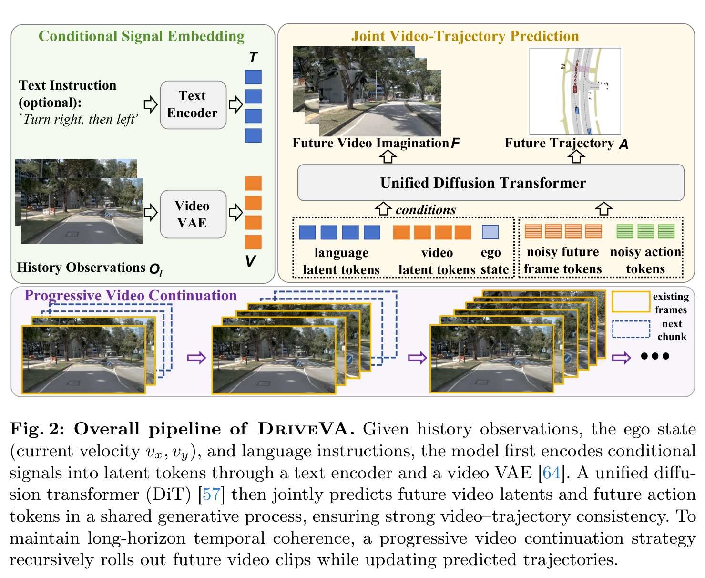
全部细节
这是论文原文图表或页图；具体版本、页码和裁剪信息见邻近中文说明。
- 论文版本：
2604.04198v2；PDF SHA-256：1e991299738a5dfc300567d09f90f8ce3188bc47d39094ee8b81bdbcec49ab74；page SHA-256：82b5ed13f1cd813d72152a8ed60f3a32c95592fddbc5236b13ccec3db0d826c1。 - crop bbox（pt）：
[130, 105, 485, 396]；尺寸：[1479, 1212]；crop SHA-256：3c65a88f5c204a717e06f419e7ddc5532fe5199c7bad2994c36f3ca6bac26581。 - 图表说明：PDF p.6 Fig.2 上半部分由历史观测、ego velocity 和语言编码成条件，下半部分以 progressive 视频 continuation 递归更新短窗口。统一 DiT 同时输出未来视频 latents 与轨迹；图中区分条件、未来视频噪声和动作词元。
- 进一步分析：联合生成使动作和视觉共享一个未来模式，区别于 DrivingGPT 的离散下一词元和 DriveWAM 的生成潜变量→逆动力学链。continuation 让局部模型反复使用固定历史长度，但“同一模式”也可能是共同错误，需与论文 Fig.8 的 consistent-but-wrong 案例一起理解。
- 证据边界：图只表明耦合，不证明未来世界正确或控制安全。没有实际 FPS、action-to-control 接口和延迟，不能由少采样步推实际高频执行；DPVO 检查的运动一致性也不等于物体风险正确。 当前 visual_status=
precise_crop_and_visual_checked；semantic_status=reviewed/pass；局部建议：保留“联合生成/递归续写”原文措辞，避免把 continuation 细节写成已实现协议。。历史状态semantic_pending仅对应早期裁剪回执，原文证据边界继续有效。
原文图表卡片：表 1（PDF p.10）
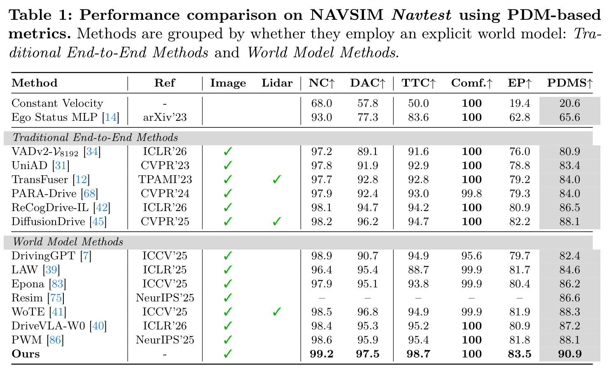
全部细节
这是论文原文图表或页图；具体版本、页码和裁剪信息见邻近中文说明。
- 论文版本：
2604.04198v2；PDF SHA-256：1e991299738a5dfc300567d09f90f8ce3188bc47d39094ee8b81bdbcec49ab74；page SHA-256：833d20358bade4a976eb2d0a3b81ddb1f1fef63c0a2332e55679b2264d2d36b8。 - crop bbox（pt）：
[130, 112, 485, 327]；尺寸：[1479, 895]；crop SHA-256：a651bd9fefb1034612d7e9b49056cf4df6bb823187263ae5b38db29ee99c9c07。 - 图表说明：表 1 的 NAVSIM Navtest 把传统 E2E 和 world-model methods 分组，展示输入图像/LiDAR与六项 PDM 指标。DriveVA 为 NC 99.2、DAC 97.5、TTC 98.7、Comfort 100、EP 83.5、PDMS 90.9；表中 PWM 88.1、Epona 86.2、DrivingGPT 82.4。
- 进一步分析：90.9 的总分不意味着每个子项都最佳：EP 衡量进度，NC/DAC 是门控与道路约束，非线性样本级聚合也不能用列均值相乘重建。与 WoTE 的候选评估相比，DriveVA 通过联合生成直接产生轨迹，二者同用 PDMS 却有不同优化目标和动作候选机制。
- 证据边界：该表不统一预训练量、模型规模与辅助监督，输入勾选也提示信息访问差异。90.9 支持此评测基准的规划性能，不能证明视频监督的单独因果收益，更不能替代闭环驾驶、安全或真实延迟。 当前 visual_status=
precise_crop_and_visual_checked；semantic_status=reviewed/pass；局部建议：无需数值修正；继续标注 PDM 指标。。历史状态semantic_pending仅对应早期裁剪回执，原文证据边界继续有效。
正文：05_analysis\full_reading\driveva\paper_reading_report.md；15622 字符 / 8660 中文字符；SHA-256 2e0f5e589cac610d73a8dbede5582416b051819eebd42c2b4e68782a294b71c8。
来源覆盖：05_analysis\full_reading\driveva\source_coverage.json；问题台账：05_analysis\full_reading\driveva\paper_questions_for_code.md。
机器人操作 · 核心论文
Fast-WAM（2603.16666）逐页论文精读
当前正式机制图与完整图解：F-fast-wam-mechanism
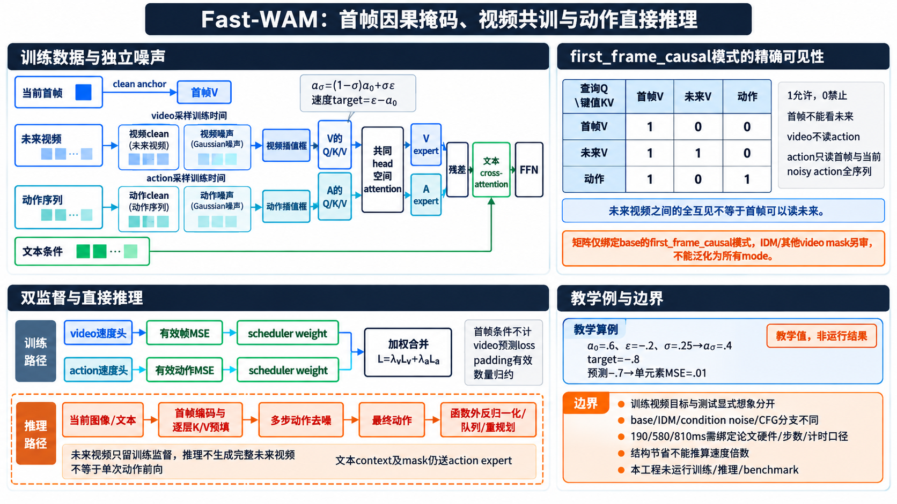
全部细节
图像 ID：F-fast-wam-mechanism；PNG、native receipt 和逐图中文说明由当前任务 accepted manifest 绑定。
图像身份：F-fast-wam-mechanism；accepted 时间：2026-11-01T21:53:25.064744+00:00；尺寸：1672×941；SHA-256：588d5bf6fcf8ae1dfcddca0d43cfe9ee18deb4c504066a4439b6b20dc1d7787f；原生回执（此附件保存在完整本地归档中）；图详解（此附件保存在完整本地归档中）。
机器人操作 · 核心论文
Fast-WAM：视频共训与动作直接生成
本图回答：训练保留未来视频，为什么推理仍能只计算动作？
统一视觉合同
纯白不透明背景#FFFFFF；深色文字#1F2937；纯色深蓝标题条#111827；蓝#2563EB表示视觉/条件，青#0891B2表示动作/规划，绿#16A34A表示监督，橙#EA580C表示边界；平面矩形、2px细边框、2px圆角、实线单向箭头、清晰中文无衬线字体、均匀留白；禁止透明、照片、立体块、渐变、阴影、纹理、装饰。
全图阅读顺序
按左上输入、右上核心计算、左下监督或执行、右下逻辑实例与证据边界的顺序阅读。蓝色节点表示视觉或条件，青色节点表示动作或规划，绿色节点表示目标与监督，橙色框表示已知实现限制或尚未闭合的运行事实。所有箭头为实线单向箭头，每条只表示它旁边注明的一种关系；不能把数据流、梯度和控制反馈混成无文字的双向边。
分区1：训练样本与噪声
左上区域画同一训练样本的当前帧、未来视频、动作和文本条件。可在说明角标给出视频潜变量形状 [B,C,Tv,H,W]、动作形状 [B,Ta,Da]；视频/动作各自采样噪声与训练时间，首帧潜变量在选定分支保持为干净锚点。两路噪声时间和两路随机噪声都应分开画，不把“同一联合模型”画成“同一个噪声张量”。训练中保留未来视频目标是该论文的设计变量，但不能从这里推出推理必须生成未来。干净锚点经过冻结的 VAE/no_grad 路径获得，训练参数是否更新应由 trainer 冻结表说明，不能用 clone 图标代替梯度语义。
样本区应把未来视频限定在训练数据一侧。视觉潜变量具有批次、通道、时间和空间轴，动作张量具有批次、动作时域与动作维度；符号维度只描述接口，不能未经配置固定成某个具体机器人。两路调度器分别得到自己的时间与随机噪声，当前首帧若作为干净条件，则在加噪后覆盖回条件潜变量。训练时仍保存未来帧目标，但推理调用只需要当前图像与语言条件。首帧条件和未来预测目标不能合并成一个含糊的“视频输入”框，否则读者无法判断动作到底读取了哪部分视觉。条件编码与模型训练的梯度范围也要区分：冻结的视觉编码路径不会因为图中有箭头就自动更新，专家内部可训练参数则由训练配置决定。
图内短标签：当前首帧、未来视频、动作序列、文本条件、两路独立时间、两路高斯噪声。
分区2：共享注意力与掩码
右上区域用双专家和小型可见性矩阵说明结构。MoT 为专家各自准备 QKV，再在共同输出头空间进行 attention，输出切回各自模块。张量核心Q/K/V为[B,N,H×Dh]，沿N轴拼接。base 掩码让动作读取首帧视频和全体动作，不读取未来视频；视频不读取动作。矩阵的行是查询、列是可读取的键值，要在角上写清“行Q/列KV”。这里的“动作全互见”指当前扩散动作序列中的带噪词元交互，不代表教师动作标签泄漏。IDM 条件视频分支另行存在，不能用 base 的矩阵证明所有 mode。
可见性区使用行查询、列键值的矩阵表达读权限。基础分支中，动作查询允许读取首帧视觉键值及当前动作序列键值，未来视频列对动作查询关闭；视频查询不读取动作键值。共同注意力在匹配的层数、头数和头维度中拼接计算，结果随后按令牌数量切回两个专家，每个专家继续自己的残差、文本交叉注意力和前馈计算。矩阵中的动作互见只针对同一次扩散的带噪变量，不是将干净教师动作泄漏给模型。逆动力学分支有额外条件处理，不能直接继承基础分支矩阵而不写模式。图中的数据流箭头与矩阵读权限要采用统一方向约定，不能一边表示查询读取，另一边又把相反方向当作相同语义。
图内短标签：视频专家、动作专家、各自QKV、共同注意力、首帧可见、动作全互见、未来视觉不可见。
分区3：监督与直接推理
左下区域上半展示训练两路速度头及各自 MSE，视频和动作都先根据填充有效项归约、乘调度器 weight，再用 loss_lambda_video/动作合并。下半展示推理只用首帧编码和视频 K/V prefill，循环更新动作潜变量；它省去完整未来视频生成，不等于只进行一次动作更新。文本 context 与 context_mask 仍传入动作专家，不能把动作推理画成无语言。最后潜变量输出交给部署端反归一化和控制队列。训练监督箭头与推理更新箭头分两条独立路线标注，避免把推理画成有真值。
监督区要让读者看见两个损失如何合并。动作逐元素误差先在动作维度求平均，再用有效时间位置求和并除以有效数量；若没有填充标记才直接平均，分母有下限保护。视频损失由专用函数按有效帧归约，首帧为条件时不作为预测目标计入。两路分别乘各自调度器权重，最后用两个系数相加，不能把它们写成共享一个噪声目标或一份未加权均方误差。推理路线则从首帧预填到多次动作去噪，输出动作张量，部署端消费者再执行反归一化与队列控制。绿色监督线路停留在训练区域，不连到控制器输入；青色推理线路不从未来真值分支取值。
图内短标签：视频速度头、动作速度头、有效帧归约、有效动作归约、双目标共训、首帧预填、动作去噪、动作输出、部署动作消费者。
分区4：实例与适用范围
右下用一维动作说明真实目标如何到达输出监督：干净 a0=0.6、εa=−0.2、σa=0.25，得到 aσ=0.4，速度目标−0.8；若预测−0.7，则该元素 MSE=0.01。这个假设只说明调度器和监督方向，不代表训练误差或真实控制。橙色边界保留 base/IDM 的掩码、条件噪声和 CFG 不同；190/580/810ms 需要对应性能剖析，不能由“少算视频”箭头直接标出速度倍数。
适用范围区应同时给出可计算例子和实现边界。教学例的动作值、噪声值和时间比例只是人为选择，速度误差零点一的平方为零点零一，不是样本成功率。直接动作生成省去完整未来视频的推理，不等于动作只做一次前向，也不说明视觉编码和文本编码没有成本。基础分支、逆动力学分支、条件噪声和引导系数都可能改变计算路径，因此延迟数字必须附对应硬件、输入大小、步数及计时包含项。模型输出到部署动作消费者还隔着数据类型、设备搬运、反归一化和重规划队列，这些步骤不能从主干简图中消失。未报告的同预算对照与运行来源保留为边界，不从结构节省直接推算速度倍数。
图内短标签：教学例、a0=0.6、σa=0.25、aσ=0.4、速度目标−0.8、预测−0.7、单元素误差0.01、分支需绑定。
逐箭头含义
- 从“未来视频”指向“视频专家”表示“训练视频输入”。依据 FW-F01：训练视频/动作独立采样噪声与时间；首帧条件可被恢复到干净。图示张量可标为视频潜变量 [B,C,Tv,H,W]、动作 [B,Ta,Da]，具体值随配置变化。 边界：禁止把此边画成未来真值已观测、几何标定已完成或价值函数已校准。
- 从“动作序列”指向“动作专家”表示“训练动作输入”。依据 FW-F01：训练视频/动作独立采样噪声与时间；首帧条件可被恢复到干净。图示张量可标为视频潜变量 [B,C,Tv,H,W]、动作 [B,Ta,Da]，具体值随配置变化。 边界：禁止把此边画成参数完全相同、静态可达即已执行或论文实测收据。
- 从“视频专家”指向“共同注意力”表示“视频QKV”。依据 FW-F03：两个专家各自QKV进入共同attention再切回专用输出；要求层数、头数、头维度匹配。张量核心使用[B,N,H×Dh]合并头布局，沿令牌轴拼接，并非原始隐藏维度相同。 边界：禁止把此边画成跨请求永久缓存、无界历史或自动释放协议。
- 从“动作专家”指向“共同注意力”表示“动作QKV”。依据 FW-F03：两个专家各自QKV进入共同attention再切回专用输出；要求层数、头数、头维度匹配。张量核心使用[B,N,H×Dh]合并头布局，沿令牌轴拼接，并非原始隐藏维度相同。 边界：禁止把此边画成跨请求永久缓存、无界历史或自动释放协议。
- 从“共同注意力”指向“视频速度头”表示“切回视频”。依据 FW-F03：两个专家各自QKV进入共同attention再切回专用输出；要求层数、头数、头维度匹配。张量核心使用[B,N,H×Dh]合并头布局，沿令牌轴拼接，并非原始隐藏维度相同。 边界：禁止把此边画成全局下三角、双向无条件可见或所有模式都成立。
- 从“共同注意力”指向“动作速度头”表示“切回动作”。依据 FW-F03：两个专家各自QKV进入共同attention再切回专用输出；要求层数、头数、头维度匹配。张量核心使用[B,N,H×Dh]合并头布局，沿令牌轴拼接，并非原始隐藏维度相同。 边界：禁止把此边画成全局下三角、双向无条件可见或所有模式都成立。
- 从“视频速度头”指向“双目标共训”表示“有效帧MSE”。依据 FW-F04：视频/动作分别做padding-aware 损失与时间加权，再以lambda合并。 边界：禁止把此边画成没有有效掩码的真值泄漏、统一损失或已测误差。
- 从“动作速度头”指向“双目标共训”表示“有效动作MSE”。依据 FW-F04：视频/动作分别做padding-aware 损失与时间加权，再以lambda合并。 边界：禁止把此边画成没有有效掩码的真值泄漏、统一损失或已测误差。
- 从“当前首帧”指向“首帧预填”表示“编码与K/V”。依据 FW-F05：infer_action对首帧prefill K/V，在循环中只更新动作。 边界：禁止把此边画成跨请求永久缓存、无界历史或自动释放协议。
- 从“首帧预填”指向“动作去噪”表示“复用视觉条件”。依据 FW-F05：infer_action对首帧prefill K/V，在循环中只更新动作。 边界：禁止把此边画成参数完全相同、静态可达即已执行或论文实测收据。
- 从“动作去噪”指向“动作输出”表示“逐步还原”。依据 FW-F06：动作去噪仍接收context/context_mask，输出由动作专家 post产生。 边界：禁止把此边画成已经完成的控制稳定性、端到端延迟或部署校准。
- 从“动作输出”指向“部署动作消费者”表示“外部部署接口”。依据 FW-F05：infer_action对首帧prefill K/V，在循环中只更新动作。 边界：禁止把此边画成已经完成的控制稳定性、端到端延迟或部署校准。
逐事实与精确来源
FW-F01｜Code Fact｜known
训练视频/动作独立采样噪声与时间；首帧条件可被恢复到干净。图示张量可标为视频潜变量 [B,C,Tv,H,W]、动作 [B,Ta,Da]，具体值随配置变化。
- 04_repositories/fast-wam/7faa71108368fbb3b6885649f112af607427a2d4/src/fastwam/models/wan22/fastwam.py；SHA-256 d36a2fb8e55ee437a1f8266d9f07ebb205e47adef62862a61f3872300aca00a7；行 522–551
FW-F02｜Code Fact｜known
base 掩码允许动作→动作全开与动作→首帧视频；视频→动作未开启。
- 04_repositories/fast-wam/7faa71108368fbb3b6885649f112af607427a2d4/src/fastwam/models/wan22/fastwam.py；SHA-256 d36a2fb8e55ee437a1f8266d9f07ebb205e47adef62862a61f3872300aca00a7；行 397–418
FW-F03｜Code Fact｜known
两个专家各自QKV进入共同attention再切回专用输出；要求层数、头数、头维度匹配。张量核心使用[B,N,H×Dh]合并头布局，沿令牌轴拼接，并非原始隐藏维度相同。
- 04_repositories/fast-wam/7faa71108368fbb3b6885649f112af607427a2d4/src/fastwam/models/wan22/mot.py；SHA-256 9ee2a22878a5e3fd27407793507d5c5e697771b51e73ab2b11b5e198c5bc9574；行 33–61
- 04_repositories/fast-wam/7faa71108368fbb3b6885649f112af607427a2d4/src/fastwam/models/wan22/mot.py；SHA-256 9ee2a22878a5e3fd27407793507d5c5e697771b51e73ab2b11b5e198c5bc9574；行 596–662
FW-F04｜Code Fact｜known
视频/动作分别做padding-aware 损失与时间加权，再以lambda合并。
- 04_repositories/fast-wam/7faa71108368fbb3b6885649f112af607427a2d4/src/fastwam/models/wan22/fastwam.py；SHA-256 d36a2fb8e55ee437a1f8266d9f07ebb205e47adef62862a61f3872300aca00a7；行 574–608
FW-F05｜Code Fact｜known
infer_action对首帧prefill K/V，在循环中只更新动作。
- 04_repositories/fast-wam/7faa71108368fbb3b6885649f112af607427a2d4/src/fastwam/models/wan22/fastwam.py；SHA-256 d36a2fb8e55ee437a1f8266d9f07ebb205e47adef62862a61f3872300aca00a7；行 1080–1159
FW-F06｜Code Fact｜known
动作去噪仍接收context/context_mask，输出由动作专家 post产生。
- 04_repositories/fast-wam/7faa71108368fbb3b6885649f112af607427a2d4/src/fastwam/models/wan22/fastwam.py；SHA-256 d36a2fb8e55ee437a1f8266d9f07ebb205e47adef62862a61f3872300aca00a7；行 703–736
FW-F07｜Paper Fact｜known
论文区分视频共训与推理显式未来生成。
- 03_papers/fast-wam/2603.16666/paper_tex_flat.tex；SHA-256 497bfa33e3f9de37d0a1cb3a30af519683b9c9db6533bcb921ef4c9dc174125a；行 240–256；PDF 页 5
FW-F08｜Teaching Example｜teaching_example
教学例a0=.6、ε=−.2、σ=.25得到aσ=.4，预测−.7对目标−.8的误差=.01。
- 04_repositories/fast-wam/7faa71108368fbb3b6885649f112af607427a2d4/src/fastwam/models/wan22/schedulers/scheduler_continuous.py；SHA-256 47dca430d8f09b98812af5f39ffc7fe7e394732ca2b305b82fca87c1a208f6ce；行 18–88
FW-U01｜Unresolved｜unknown
base与IDM的实际paper run配置、同预算来源记录不能由共同接口推出。
- 05_analysis/code_audits/manipulation/joint_reader_zh/prose_v3/chapters/fast-wam.md；SHA-256 fd596d61f35bbb99b9e4aac804c6ba238dc5a2988ecac149939a9265216dc47a
FW-U02｜Unresolved｜unknown
190/580/810ms的VAE/T5/搬运/解码包含项缺少同一性能剖析回执。
- 05_analysis/code_audits/manipulation/joint_reader_zh/prose_v3/chapters/fast-wam.md；SHA-256 fd596d61f35bbb99b9e4aac804c6ba238dc5a2988ecac149939a9265216dc47a
教学实例与绘图边界
一维教学例：干净 a0=0.6，ε=−0.2，σa=0.25，得到aσ=0.4；动作速度头目标−0.8，若预测−0.7则MSE=0.01。首帧视觉条件保持可读，推理无需先解码未来视频。
教学数字只用于复核输入经过计算如何形成目标或输出，不是论文实验值，也没有导入目标仓库或运行训练。论文中的结果数值只有明确绑定图表、样本协议、模型配置和硬件时才能画在对应区域。未闭合项只能进橙色边界，不得靠箭头连接推成已实现。
不允许产生的解释
- 不要将推理只做动作写成单次动作前向
- 不要将动作全互见标成标签泄漏
- 不要将base 掩码推广到IDM
当前正式机制图与完整图解：F-fast-wam-cache
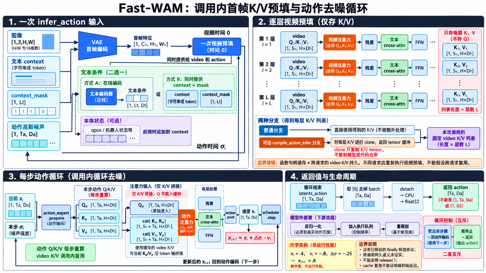
全部细节
图像 ID：F-fast-wam-cache；PNG、native receipt 和逐图中文说明由当前任务 accepted manifest 绑定。
图像身份：F-fast-wam-cache；accepted 时间：2026-11-01T21:14:35.913265+00:00；尺寸：1672×941；SHA-256：b68df66bfff9c09ace6fe51b444fabf273e3c54801435b3ef29dca63bed66074；原生回执（此附件保存在完整本地归档中）；图详解（此附件保存在完整本地归档中）。
机器人操作 · 核心论文
Fast-WAM：首帧K/V预填与动作去噪循环
本图回答：一次infer_action调用中，哪些张量只计算一次，哪些每个去噪步都重算？
统一视觉合同
纯白不透明背景#FFFFFF；深色文字#1F2937；纯色深蓝标题条#111827；蓝#2563EB表示视觉/条件，青#0891B2表示动作/规划，绿#16A34A表示监督，橙#EA580C表示边界；平面矩形、2px细边框、2px圆角、实线单向箭头、清晰中文无衬线字体、均匀留白；禁止透明、照片、立体块、渐变、阴影、纹理、装饰。
全图阅读顺序
按左上输入、右上核心计算、左下监督或执行、右下逻辑实例与证据边界的顺序阅读。蓝色节点表示视觉或条件，青色节点表示动作或规划，绿色节点表示目标与监督，橙色框表示已知实现限制或尚未闭合的运行事实。所有箭头为实线单向箭头，每条只表示它旁边注明的一种关系；不能把数据流、梯度和控制反馈混成无文字的双向边。
分区1：一次调用的输入
左上表示一次 infer_action 调用的局部输入。当前图像经 VAE/视觉专家准备，文本 context 与 context_mask 同时提供给视频和动作路径；动作潜变量从高斯噪声初始化。图中只表达当前调用，不画跨请求持久缓存、前一个滚动执行或显式释放协议。视频时间设为零的首帧条件是预填输入，动作时间则在循环内逐步变化。
输入区应固定为一次函数调用的事实边界。输入图像允许三通道单图或带单批次的四维张量，批次必须为一，高宽均为十六的倍数；动作随机张量形状为单批次、动作时域、动作维度。文本可通过提示词在线编码，或者同时提供上下文与有效掩码，两种路线互斥；仅提供其中一个条件张量会触发错误。若本体状态被启用，它追加到条件上下文，不是另一段动作真值。首帧视觉时间为零，动作时间来自后续调度表。默认编译开关关闭，因此图上必须保留普通预填路径，不能让所有数据先经过张量复制才可运行。图中的输入校验是接口条件，不需要画成长错误日志；短角标写清形状和互斥关系即可，让读者知道缓存保存的是当前首帧的条件表示。
图内短标签：当前图像、文本条件、动作高斯噪声、首帧视觉编码、视频时间0、动作时间σi。
分区2：一次性首帧预填
右上画视频 prefill：视频专家逐层准备 Q/K/V，读取视频掩码、文本条件和调制，经过自己的输出、交叉注意力与 FFN，使下一层得到正确的首帧表示；每层保存 K/V 到列表。compile_action_infer 是可选运行分支；启用时，代码把返回缓存张量做 clone，目的是避免编译图重放覆盖其拥有的缓冲区。这里 clone 的对象是张量，绝不是 Git 仓库，也没有复制模型或数据集。K/V 列表在当前动作去噪循环中复用。
预填区要显示逐层缓存，而不是只画一个万能记忆框。每一层先计算该层首帧查询键值，再完成该层注意力、残差、文本交叉注意力与前馈，使下一层收到正确的隐藏表示；列表存的是每层当时的键与值，查询不会作为复用列表一起保存。张量实现中每个键值形如批次、首帧令牌数、所有头的合并维度，列表长度等于模型层数。可选编译分支缓存编译后的函数句柄，并复制返回的键值张量来保护图所有的缓冲区；函数句柄持久存在不代表首帧键值数据跨请求持久。普通分支直接使用本次预填结果。两条路线在当前调用内汇合到动作注意力，不能把复制写成克隆模型或代码仓库，也不能把每层键值误当作每个去噪步骤重新生成的视频。
图内短标签：逐层视频Q/K/V、视频K/V列表、仅首帧条件、编译可选、张量缓冲复制、调用内复用。
分区3：每步动作重算
左下画真正的循环。每个动作时间步都由 action_expert.prepare 对当前 xi 重新编码，计算当前动作 Q/K/V；每层用动作查询读取“首帧缓存 K/V + 当前动作 K/V”，再执行动作输出、交叉注意力、FFN 与最终 post 得到速度预测。scheduler.step 根据该步 delta 更新 xi。唯一回环从调度器更新后返回动作编码入口，并明确标“下一去噪步”。不要从最终输出回到循环，也不要把动作 K/V 画成跨步复用不变。
循环区必须拆开查询与键值的角色。当前动作潜变量先由动作编码器按本步时间重新准备，每层重新得到动作查询、键和值；动作查询单独送入注意力，视觉缓存键值与当前动作键值沿令牌轴拼接后送入另一个入口。拼接的是键和值，不能把动作查询也画进同一缓存列表。注意力结果经过该层后处理，全部层完成后由动作输出头产生速度，调度器结合本步增量更新动作潜变量。下一步从更新后的数值重新动作编码，当前动作键值随之改变；首帧视觉键值保持当前调用内复用。回环箭头只能从调度更新回到动作编码，旁边标明“还有下一步”；最后一步转向输出分支。不要画最终输出回环，也不要从缓存直接跳到速度头而省去动作查询与后处理。
图内短标签：当前动作xi、动作编码、动作Q/K/V、拼接视觉与动作K/V、动作注意力、动作输出头、速度预测vi、调度器更新、动作查询Q。
分区4：终止、输出与边界
右下画循环完成后的输出：最终 latents_action[0] 截断梯度、转 CPU 和 float32，返回动作。部署端再做自己的反归一化与重规划队列，本图不把其视为 infer_action 内部计算。代码在此路径没有 finally 释放缓存的显式协议，也没有证明视频 K/V 跨调用持久保留，所以橙色边界只写“调用内复用”“持久语义未证实”。最后动作输出是单向终点。
终止区要交代返回值与外部执行的关系。循环结束后取动作张量的第一个批次，分离梯度并转到中央处理器和三十二位浮点，形状是动作时域乘动作维度。函数没有把它叫作机器人已经执行的动作；部署消费者还需要自己的反归一化、动作队列与重规划策略，这些可以画为模型外部接口，但不能记入当前函数内部的运算次数。缓存变量在本次函数的局部作用域使用，所查代码没有显式最终清理块，也没有证明跨调用复用，所以边界措辞必须是“持久语义未证实”，不能反向断言永久不会持久。教学更新从零点四经负步长和负速度得到零点六，若仍有步骤则回动作编码，若终止则返回数值；两条控制边互斥，不能让同一数值同时被标成最终输出和下一轮输入。
图内短标签：最后一步、最终动作x0、分离并转CPU、32位浮点动作、部署反归一化、不回环、释放协议未报告、持久语义未证实。
逐箭头含义
- 从“当前图像”指向“首帧视觉编码”表示“当前调用条件”。依据 FWC-F01：infer_action创建当前首帧条件与随机动作潜变量；该图只描述一次调用。 边界：禁止把此边画成参数完全相同、静态可达即已执行或论文实测收据。
- 从“首帧视觉编码”指向“逐层视频Q/K/V”表示“一次预填”。依据 FWC-F02：prefill_video_cache_tensor在每层保存视频 K/V并推进视频后续计算。 边界：禁止把此边画成跨请求永久缓存、无界历史或自动释放协议。
- 从“文本条件”指向“逐层视频Q/K/V”表示“视频文本条件”。依据 FWC-F02：prefill_video_cache_tensor在每层保存视频 K/V并推进视频后续计算。 边界：禁止把此边画成跨请求永久缓存、无界历史或自动释放协议。
- 从“逐层视频Q/K/V”指向“视频K/V列表”表示“每层保存”。依据 FWC-F02：prefill_video_cache_tensor在每层保存视频 K/V并推进视频后续计算。 边界：禁止把此边画成跨请求永久缓存、无界历史或自动释放协议。
- 从“视频K/V列表”指向“张量缓冲复制”表示“仅编译分支”。依据 FWC-F03：compile_action_infer分支clone各缓存张量以防编译图重放覆盖buffer；这是张量复制。 边界：禁止把此边画成跨请求永久缓存、无界历史或自动释放协议。
- 从“视频K/V列表”指向“拼接视觉与动作K/V”表示“调用内复用”。依据 FWC-F04：每步动作计算当前Q/K/V，动作查询读取cached 视频 K/V与当前动作 K/V的拼接。 边界：禁止把此边画成跨请求永久缓存、无界历史或自动释放协议。
- 从“张量缓冲复制”指向“拼接视觉与动作K/V”表示“编译缓冲保护”。依据 FWC-F03：compile_action_infer分支clone各缓存张量以防编译图重放覆盖buffer；这是张量复制。 边界：禁止把此边画成跨请求永久缓存、无界历史或自动释放协议。
- 从“动作高斯噪声”指向“当前动作xi”表示“初始动作”。依据 FWC-F01：infer_action创建当前首帧条件与随机动作潜变量；该图只描述一次调用。 边界：禁止把此边画成参数完全相同、静态可达即已执行或论文实测收据。
- 从“当前动作xi”指向“动作编码”表示“本步输入”。依据 FWC-F05：_denoise_action_with_video_cache每步prepare动作并传context/掩码，经mot与post产生预测。 边界：禁止把此边画成参数完全相同、静态可达即已执行或论文实测收据。
- 从“动作时间σi”指向“动作编码”表示“本步时间调制”。依据 FWC-F05：_denoise_action_with_video_cache每步prepare动作并传context/掩码，经mot与post产生预测。 边界：禁止把此边画成参数完全相同、静态可达即已执行或论文实测收据。
- 从“文本条件”指向“动作编码”表示“动作文本条件”。依据 FWC-F05：_denoise_action_with_video_cache每步prepare动作并传context/掩码，经mot与post产生预测。 边界：禁止把此边画成参数完全相同、静态可达即已执行或论文实测收据。
- 从“动作编码”指向“动作Q/K/V”表示“本步重算”。依据 FWC-F04：每步动作计算当前Q/K/V，动作查询读取cached 视频 K/V与当前动作 K/V的拼接。 边界：禁止把此边画成跨请求永久缓存、无界历史或自动释放协议。
- 从“动作Q/K/V”指向“拼接视觉与动作K/V”表示“当前动作键值”。依据 FWC-F04：每步动作计算当前Q/K/V，动作查询读取cached 视频 K/V与当前动作 K/V的拼接。 边界：禁止把此边画成跨请求永久缓存、无界历史或自动释放协议。
- 从“动作Q/K/V”指向“动作查询Q”表示“当前动作查询”。依据 FWC-F04：每步动作计算当前Q/K/V，动作查询读取cached 视频 K/V与当前动作 K/V的拼接。 边界：禁止把此边画成跨请求永久缓存、无界历史或自动释放协议。
- 从“拼接视觉与动作K/V”指向“动作注意力”表示“拼接K与V”。依据 FWC-F04：每步动作计算当前Q/K/V，动作查询读取cached 视频 K/V与当前动作 K/V的拼接。 边界：禁止把此边画成跨请求永久缓存、无界历史或自动释放协议。
- 从“动作查询Q”指向“动作注意力”表示“仅动作Q”。依据 FWC-F04：每步动作计算当前Q/K/V，动作查询读取cached 视频 K/V与当前动作 K/V的拼接。 边界：禁止把此边画成全局下三角、双向无条件可见或所有模式都成立。
- 从“动作注意力”指向“动作输出头”表示“各层后处理”。依据 FWC-F04：每步动作计算当前Q/K/V，动作查询读取cached 视频 K/V与当前动作 K/V的拼接。 边界：禁止把此边画成已经完成的控制稳定性、端到端延迟或部署校准。
- 从“动作输出头”指向“速度预测vi”表示“动作 post”。依据 FWC-F05：_denoise_action_with_video_cache每步prepare动作并传context/掩码，经mot与post产生预测。 边界：禁止把此边画成已经完成的控制稳定性、端到端延迟或部署校准。
- 从“速度预测vi”指向“调度器更新”表示“本步delta”。依据 FWC-F06：循环逐个timestep/delta调用去噪，再调度器.step更新动作潜变量。 边界：禁止把此边画成参数完全相同、静态可达即已执行或论文实测收据。
- 从“调度器更新”指向“动作编码”表示“下一去噪步”。依据 FWC-F06：循环逐个timestep/delta调用去噪，再调度器.step更新动作潜变量。 边界：禁止把此边画成参数完全相同、静态可达即已执行或论文实测收据。
- 从“调度器更新”指向“最后一步”表示“循环终止”。依据 FWC-F06：循环逐个timestep/delta调用去噪，再调度器.step更新动作潜变量。 边界：禁止把此边画成参数完全相同、静态可达即已执行或论文实测收据。
- 从“最后一步”指向“32位浮点动作”表示“截断梯度并转CPU”。依据 FWC-F07：循环后返回latents_action[0].截断梯度().to(cpu,float32)。 边界：禁止把此边画成参数完全相同、静态可达即已执行或论文实测收据。
逐事实与精确来源
FWC-F01｜Code Fact｜known
infer_action创建当前首帧条件与随机动作潜变量；该图只描述一次调用。
- 04_repositories/fast-wam/7faa71108368fbb3b6885649f112af607427a2d4/src/fastwam/models/wan22/fastwam.py；SHA-256 d36a2fb8e55ee437a1f8266d9f07ebb205e47adef62862a61f3872300aca00a7；行 979–1099
FWC-F02｜Code Fact｜known
prefill_video_cache_tensor在每层保存视频 K/V并推进视频后续计算。
- 04_repositories/fast-wam/7faa71108368fbb3b6885649f112af607427a2d4/src/fastwam/models/wan22/mot.py；SHA-256 9ee2a22878a5e3fd27407793507d5c5e697771b51e73ab2b11b5e198c5bc9574；行 474–526
FWC-F03｜Code Fact｜known
compile_action_infer分支clone各缓存张量以防编译图重放覆盖buffer；这是张量复制。
- 04_repositories/fast-wam/7faa71108368fbb3b6885649f112af607427a2d4/src/fastwam/models/wan22/fastwam.py；SHA-256 d36a2fb8e55ee437a1f8266d9f07ebb205e47adef62862a61f3872300aca00a7；行 1098–1131
FWC-F04｜Code Fact｜known
每步动作计算当前Q/K/V，动作查询读取cached 视频 K/V与当前动作 K/V的拼接。
- 04_repositories/fast-wam/7faa71108368fbb3b6885649f112af607427a2d4/src/fastwam/models/wan22/mot.py；SHA-256 9ee2a22878a5e3fd27407793507d5c5e697771b51e73ab2b11b5e198c5bc9574；行 528–600
FWC-F05｜Code Fact｜known
_denoise_action_with_video_cache每步prepare动作并传context/掩码，经mot与post产生预测。
- 04_repositories/fast-wam/7faa71108368fbb3b6885649f112af607427a2d4/src/fastwam/models/wan22/fastwam.py；SHA-256 d36a2fb8e55ee437a1f8266d9f07ebb205e47adef62862a61f3872300aca00a7；行 703–736
FWC-F06｜Code Fact｜known
循环逐个timestep/delta调用去噪，再调度器.step更新动作潜变量。
- 04_repositories/fast-wam/7faa71108368fbb3b6885649f112af607427a2d4/src/fastwam/models/wan22/fastwam.py；SHA-256 d36a2fb8e55ee437a1f8266d9f07ebb205e47adef62862a61f3872300aca00a7；行 1133–1155
FWC-F07｜Code Fact｜known
循环后返回latents_action[0].截断梯度().to(cpu,float32)。
- 04_repositories/fast-wam/7faa71108368fbb3b6885649f112af607427a2d4/src/fastwam/models/wan22/fastwam.py；SHA-256 d36a2fb8e55ee437a1f8266d9f07ebb205e47adef62862a61f3872300aca00a7；行 1153–1159
FWC-U01｜Unresolved｜unknown
此路径没有finally释放协议，也未建立跨infer_action调用的持久视频缓存语义。
- 04_repositories/fast-wam/7faa71108368fbb3b6885649f112af607427a2d4/src/fastwam/models/wan22/fastwam.py；SHA-256 d36a2fb8e55ee437a1f8266d9f07ebb205e47adef62862a61f3872300aca00a7；行 979–1159
教学实例与绘图边界
教学例：当前xi=0.4，本步速度vi=−0.8，Δσ=−0.25，则更新后xi+1=0.4+(−0.25)×(−0.8)=0.6。下一步必须将0.6重新送入动作编码；首帧视频 K/V保持复用。若已经是最后一步，0.6进入最终输出，不再回到循环。
教学数字只用于复核输入经过计算如何形成目标或输出，不是论文实验值，也没有导入目标仓库或运行训练。论文中的结果数值只有明确绑定图表、样本协议、模型配置和硬件时才能画在对应区域。未闭合项只能进橙色边界，不得靠箭头连接推成已实现。
不允许产生的解释
- 禁止把张量 clone解释成仓库克隆
- 禁止添加finally释放或跨调用持久缓存
- 禁止让最终动作输出回环
- 禁止把缓存复用画成动作词元永久不变
- 禁止把Q也拼进K/V缓存
- 禁止把编译函数句柄缓存当作跨请求视觉K/V数据缓存
Fast-WAM paper-figure：原正式图已按 v2.9 语义与视觉门禁撤回，当前等待新的原生 ImageGen 图通过验收。
图文分析正文仍完整保留在本节及 旧图详解证据（历史审校附件保存在完整本地归档中）；该历史图不再作为 canonical 正式图或 HTML 资产引用。
这张图回答的问题是：Fast-WAM 如何把视觉分支的计算固定下来，同时让动作分支在每个去噪步继续更新。图中的四个区域共享同一条事实链。左上先把抽象的视觉词元和潜变量帧送入八层 Transformer；每一层在自己的 QKV 计算位置保存视觉 K/V，形成按层索引的固定缓存。这里的 L=8 是图示层数与保存次数的教学计数，不能读成硬件测速或论文额外承诺。
右上把单层内部展开。视觉隐藏状态产生视觉 Q、K、V，动作隐藏状态产生当前动作 Q、K、V；视觉 K/V 在注意力输出之前被捕获并写入该层缓存。动作查询 Q 读取同层视觉 K/V 和当前动作 K/V 的拼接，注意力输出再传给下一层。动作 Q 仍然是查询角色，图中没有把它转换成 K/V。注意力输出属于下一层输入，不能反向冒充已经保存的视觉 K/V。
左下把推理时间轴展开成 N=4 个解释性步骤。视觉缓存只在第一次视觉编码时计算一次，四个动作步都直接读取对应层的缓存；每一步都重新计算动作 Q、K、V，再经过同层拼接和注意力。N=4 与每层八次的乘积只用于让读者看清复用关系，不能当作 Fast-WAM 的速度评测基准，也不能由图外推完整设备延迟。
右下说明动作端点。注意力输出经过调度器更新动作编码，最后由动作输出头输出动作序列。最终动作只作为模型输出，不回写视觉缓存，也不形成跨调用持久缓存。tensor.clone 在实现中表示复制缓存张量以供当前路径使用，不能解释成克隆代码仓库。图中的边界文字明确排除了未来视频生成、finally 释放逻辑、跨调用缓存和未经论文/源码支持的加速数字。
从论文到代码的对应关系是：论文描述视频与动作联合建模以及仅生成动作推理；固定提交 7faa71108368fbb3b6885649f112af607427a2d4 的实现审计把视觉缓存写入点、动作 Q/K/V 重算、调度器更新和动作输出头分开记录。图只画已由论文或源码交叉核对的路径；缓存生命周期、实际设备吞吐和部署时延仍需运行证据，不能由静态图替代。该图同时承载主 coverage unit F-fast-wam-mechanism 与嵌套细节单元 MP-FW-CACHE-02，因此缓存语义不会从正式覆盖中丢失。
阅读左上区域时要把“固定”理解成同一次动作推理窗口内的固定。当前观测经过视觉编码器后，层一到层八各自产生自己的键和值；层一的 K/V 不能被层二或其他层替代，缓存槽位必须带有层索引。每个槽位只保留视觉 K/V，视觉查询 Q 用于当层注意力而不需要作为动作缓存的一部分。视觉注意力的输出继续向深层流动，不能沿图中保存路径回流成上一层缓存。这样画出保存位置，才能区分真正的缓存张量与经过注意力、残差和归一化后的隐藏状态。
右上区域的拼接顺序也有严格含义。动作 Q 是当前动作词元的查询，视觉 K/V 提供来自观测的上下文，动作 K/V 提供当前动作分支的键和值；拼接发生在 K/V 侧，Q 的角色保持不变。若把动作 Q 画成 K/V，或者把视觉注意力输出直接标成缓存，就会改变注意力矩阵的行列含义。图中的箭头只表示信息读取和张量传递，不表示所有模块共享同一投影头；论文与源码中视觉和动作的输入适配、输出输出头与缓存张量边界仍需分别阅读。
左下区域把时间轴和层轴分开。四个动作步各自重新构造动作隐状态、动作 Q、动作 K、动作 V，并在八层中逐层读取同名视觉缓存。视觉编码只在窗口起点执行一次，所以教学图能同时显示“八次视觉保存”和“四步动作重算”；这两个计数不能相乘成吞吐率，也不能推断显存占用或真实端到端延迟。动作步结束后，调度器更新的是动作编码，下一步读取更新后的动作状态；视觉缓存仍保持同一观测窗口的内容。
右下区域专门画出输出边界。最后一层注意力输出经过调度器与动作输出头解码为动作序列，动作序列交给下游使用者执行或评估。它不会写回任何视觉缓存，也不会让下一次独立调用自动继承旧窗口的 K/V。tensor.clone 只用于在张量语义上复制一份缓存引用，避免后续操作修改原张量；它没有仓库、进程或持久化服务含义。正式图因此把“复制张量”“固定缓存”“最终动作”三个概念用不同模块分开。
该图的证据边界同样是方法的一部分。论文页和固定提交支持 QKV 位置、动作查询角色、重算与调度器路径；静态审计不能证明某一硬件的实际缓存命中率、内存峰值、线程调度、控制频率或动作成功率。图中没有加入未来视频生成、显式 finally 释放、跨调用持久缓存和未经来源支持的速度数字。读者若要追问这些内容，应回到源码调用者、配置覆盖和真实运行回执，而不能从箭头数量或 L/N 教学计数外推。
0. 资料身份、范围与第一遍 5C
本报告只依据任务目录中重新下载的 Fast-WAM PDF（13 页）、paper_tex_flat.tex（537 行）和 paper.html。论文题目是 Fast-WAM: Do World Action Models Need Test-time Future Imagination?，作者 Tianyuan Yuan、Zibin Dong、Yicheng Liu、Hang Zhao，单位列为清华大学 IIIS 与 Galaxea AI。报告不读取 05_analysis 旧报告，不写代码仓库事实；原文引用位置同时记录 PDF 页与 flat TeX 行号，图表页已渲染到本目录 images/。
这是一个方法、控制实验与架构分析论文。Category：WAM 架构与受控消融；Context：既有 WAM 把训练视频预测和测试时未来想象绑在一起，因扩散视频去噪而慢；Correctness：论文用同一 Wan2.2-5B 主干、词元化、流匹配和数据配方构造 Fast-WAM、Joint、IDM、无视频共同训练四个变体，并在 RoboTwin、LIBERO 和真实折毛巾上比较，控制思想清晰，但每种变体与已有方法的具体实现差异仍可能影响因果解释；Contributions：提出训练保留视频共同训练、推理只做单次世界编码的 Fast-WAM，建立可分离的受控变体，报告 190 ms 延迟和视频共同训练重要性；Clarity：问题、概率分解、掩码、损失与实验数字完整，附录仅含一张大 per-task 表，没有更深的优化或超参数附录。定位句：论文问“WAM 的收益来自测试时真的生成未来，还是主要来自训练时的视频目标？”对当前研究的价值是把“世界模型作为表示学习”与“世界模型作为在线规划器”分开测量。
阅读依赖是：p.1–3 引言与图 1 先区分三类 WAM；p.4–6 方法、概率分解、MoT 和注意力掩码；p.7–8 数据、基线、RoboTwin/LIBERO 主表；p.8–9 受控变体、真实折毛巾与延迟；p.10–13 结论、参考文献和 RoboTwin 逐任务附录。参考文献只作为论文的 prior-work 信号，不被当作全文已读证据。
1. 研究问题、前人不足与设计思考
引言（PDF p.2–4；TeX L154–198）将 WAM 现有做法写成 imagine-then-execute：先从当前观察和语言生成未来视觉，再把想象未来交给动作模型。它有两个可能来源的收益：训练时视频预测目标让主干学会物理和交互表示；推理时显式未来给动作预测额外 foresight。既有系统把两者同时打开，因而即使成功也不能知道究竟是哪一个因素起作用。迭代视频去噪又让部署延迟很高。
作者的思考路径可以从这个混淆出发重建。若视频共同训练只是表示学习信号，那么推理时可以丢掉未来视频词元，只保留当前帧经过视频 DiT 形成的潜变量，再在动作专家上做动作流匹配。若显式想象确实是关键，Fast-WAM 应在需要长视野、可变形物体或新状态时显著变差。于是必须做三个对照：联合去噪未来视频/动作（Fast-WAM-Joint）、先视频后动作的 IDM（Fast-WAM-IDM）、完全移除视频共同训练的 direct 动作控制。四个模型共享主干、词元化、训练设置，才有机会把测试时想象和训练时目标拆开。
相关工作把 Fast-WAM 放在三条轴上：VLA 直接从图像和语言输出动作但缺乏显式时序动力学；WAM 联合建模视频和动作；VPP/UVA 已经尝试使用视频模型表示或在测试时跳过解码。Fast-WAM 的差异是用统一 MoT 框架做受控比较，不主张视频未来永远无用，而是测量显式生成的边际收益。
2. 核心直觉与完整流水线
核心直觉是：训练阶段的 future-video 目标可迫使视频 DiT 表示运动、接触和交互；测试阶段只需把当前帧编码成这个“世界表示”，动作专家直接从表示生成动作。与 imagine-then-execute 相比，少了未来视频的多步 flow integration 和 VAE decode，但保留一个共享视觉锚点和 language 交叉注意力。论文标题中的“need”因此是经验问题，不是理论否定。
推理流水线如下：
- 当前多视角图像先拼为单帧，Wan2.2-5B 的 VAE 把它变成干净潜变量词元；内置 T5 编码器将语言注入所有词元。
- 视频 DiT 对干净首帧词元做一次 forward，产生潜变量 world features；未来带噪视频词元在推理时完全不实例化。
- 动作专家 DiT 接收动作块的噪声词元，并在 10 个 flow-matching 去噪步、CFG=1.0（该设置不施加额外的条件/无条件引导缩放）下生成长度 H=32 的动作。动作专家隐藏维度 dimension
d_a=1024，约 1B 参数，总模型约 6B。 - 训练时视频帧按 4× 时间降采样，每块 9 帧；未来视频分支和动作分支分别使用噪声词元。动作词元可以看干净锚点，但不能看未来视频，故动作不会偷看未来标签。
- 训练后动作直接执行；论文在真实 Galaxea R1 Lite 任务上以单卡 RTX 5090D V2 32GB 测量 190 ms 延迟。外层自回归滚动执行在本论文为简化和受控比较被省略，所以结果不能直接等同于长时域多块 WAM。
教学数值例子（非论文实验）
取一维动作目标 、高斯噪声 、。论文采用 ，因此 。流匹配目标速度是 ，如果动作专家预测 ，该样本的平方误差是 。梯度会更新共享视频表示和动作专家，使不同噪声时间都学会从当前帧、语言和潜变量 world feature 回到动作目标。对视频共同训练，同一公式把 换成未来潜变量 ，总体损失为 。这个例子只演示符号和方向，论文没有把动作压成一维，也没有报告具体 。
失败边界是信息不可辨识：若两个未来动作导致短期视觉未来相同，但一个动作需要更大接触力或避障，当前帧潜变量不能唯一决定动作；Fast-WAM 没有测试时未来搜索来消除这种多峰性。另一个边界是任务需长时规划：论文省略外层 AR 滚动执行，LIBERO-Long 的高分是在其评测基准协议下得到，不能直接证明任意长时间跨度都不需要 imagination。
3. 概率分解、注意力和训练目标
3.1 WAM 与 Fast-WAM 的概率
标准 visuomotor 策略写作 ，其中 是当前观察、 是语言、 是动作块。既有 imagine-then-execute 分解为
是未来视觉序列，积分表示动作边缘化了所有可能未来。Fast-WAM 把测试接口改为
其中 是视频主干一次 forward 产生的潜变量 world representation。它仍是条件动作分布，公式没有声称动作是确定值。
3.2 MoT 与结构化掩码（PDF p.4–5；TeX L227–260）
三个词元组是干净首帧、训练时的未来带噪视频、动作词元。语言通过交叉注意力提供给所有组。训练掩码允许未来视频在视频分支内双向注意并读干净锚点；动作分支内部双向注意并读干净锚点；动作不能读未来视频；干净锚点不读任何其他词元。这样视频和动作共享观察，却阻断动作偷看未来 label 的捷径。推理只留干净锚点与动作分支，视频 DiT 的一次 forward 输出给动作专家。
论文图 2 的右侧掩码是最关键的结构证据：训练行/列中未来视频的蓝色格子只与视频相关，黄色动作格子只与自身和锚点相关；推理矩阵删除未来视频行列。这不是简单地“把视频解码器关掉”，而是训练时就把信息流隔离，保证移除未来分支后动作仍有可用路径。
3.3 Flow matching 数学
论文对任一目标 （动作 或未来视频潜变量 ）采样 、，构造
然后训练速度场
取 得 ，取 得 ，总目标为
控制视频监督相对动作监督的权重；论文正文没有公开其数值。与 DreamZero 相反，这里时间方向是从干净 到噪声 的写法，推理调度器需保持同一约定。论文使用 logit-normal 的 分布，训练与推理一致；这不是均匀采样。所有模型用 AdamW，学习率 、weight decay 0.01、cosine annealing、mixed precision、梯度 clipping 1.0。
4. 受控变体与作者声称的因果解释
Fast-WAM-Joint 允许视频/动作词元互相注意并联合去噪，模拟 DreamZero、Unified World Models、Motus 一类 joint generation。Fast-WAM-IDM 先从 observation/language 生成未来视频，再将其 representation 给动作模块，模拟 LingBot-VA、VidAR、Universal Policies。Fast-WAM without 视频 co-train 保留架构和推理 procedure，仅去掉 ，因此是训练目标的直接控制。
论文的因果阅读应保持谨慎：若 Fast-WAM 与 Joint/IDM 相近，而 no-co-train 显著下降，则“视频监督比测试时显式未来更重要”是一个受控、条件化结论。它不等价于未来生成没有任何作用，因为动作分支结构、噪声步骤、计算量和外层滚动执行都被固定在论文的短块实验中。
5. 实验设计与逐项结果
5.1 训练和评测协议
主主干是 Wan2.2-5B，动作专家 1B，总 6B；动作时间跨度 32、视频 4× temporal downsample、每块 9 帧；推理 10 步、CFG 1.0、单 RTX 5090D V2。LIBERO 四套 Spatial/Object/Goal/Long，每套 10 任务、500 示范轨迹；20k 步；总 2,000 试验、40 任务、不同随机种子。RoboTwin 2.0 是 50+ 双臂任务，2,500 干净 + 25,000 heavy-randomized 示范轨迹，30k 步，每任务干净/random 各 100 试验。真实任务在 Galaxea R1 Lite 上收集 60 小时 teleoperation，所有模型 30k 步；同时报告成功率与 completion time，因为后者区分真正高效和反复纠错。
5.2 RoboTwin 主表（表 1，PDF p.7；TeX L343–376）
预训练基线 π0、π0.5、Motus、LingBot-VA 的平均成功率分别 62.2、79.8、87.8、92.2；无 embodied 预训练的 Motus from WAN2.2 为 77.3、LingBot-VA from WAN2.2 为 80.6。Fast-WAM 无 embodied 预训练达干净 91.88、random 91.78、平均 91.8。其受控变体 Joint 90.6、IDM 91.3、无视频 co-train 83.8。作者据此称 Fast-WAM 在没有机器人预训练时接近最强预训练 WAM；这支持数据效率，却不能排除 Wan2.2 主干或实现细节差异。
5.3 LIBERO（表 2，PDF p.8；TeX L377–413）
Fast-WAM 的 Spatial/Object/Goal/Long 分别为 98.2/100.0/97.0/95.2，平均 97.6；LingBot-VA 98.5、Motus 97.7、π0.5 96.9。Joint 98.5、IDM 98.0、无 co-train 93.5。无 co-train 在 Spatial 与 Long 降幅明显，作者借此强调训练视频目标。需要注意这里每套只有 500 示范轨迹、40 任务总 2,000 试验，且基线大多有 embodied 预训练；Fast-WAM 的公平比较是“无 PT 仍高分”，但不能把不同预训练历史直接当作仅有一个变量。
5.4 受控问题的直接回答
RoboTwin 上 Fast-WAM 91.8 与 Joint 90.6、IDM 91.3 接近，而 no-co-train 83.8；LIBERO 上 97.6 与 98.5/98.0 接近，而 no-co-train 93.5。论文将差异解释为：视频 prediction objective 改善 world-grounded representation，测试阶段 imagination 的额外 foresight 在这些单块评测基准上边际较小。这个解释与消融方向一致，但“表示更物理”并未通过 representation probing、动力学预测误差或动作 calibration 直接测量，所以应标为基于证据的推断。
5.5 真实长时域折毛巾（图 4，PDF p.9；TeX L422–441）
图 3 展示 Galaxea R1 Lite 上的可变形毛巾折叠，要求长时间跨度、精细闭环。图 4 左侧把成功率对 completion time 画成散点，左上更好；右侧延迟柱状图为 π0.5 180 ms、Fast-WAM 190 ms、无视频 co-train 190 ms、Joint 580 ms、IDM 810 ms。π0.5（有 embodied 预训练）成功率最高且最快；Fast-WAM 家族中 IDM 成功率最高，Fast-WAM 完成时间更好。最强证据是去掉视频 co-train 后 success 仅 10%，且 completion time 最长，说明视频训练目标对这个真实任务影响大。论文没有在正文给出每个方法的滚动执行数、置信区间或毛巾初始状态分层，故不能将 10% 差异推广为所有可变形物体。
5.6 RoboTwin 逐任务附录（表 3，PDF p.13；TeX L464–534）
附录包含 50+ 任务的干净/random 两列。Fast-WAM 平均 91.88/91.78；视频 co-train 消融为 82.76/84.80。典型差异包括 Blocks Ranking Size 94/98 vs 消融 56/62、Open Microwave 62/45 vs LingBot-VA 82/86 和 Motus 95/91、Turn Switch 61/59 vs Motus 84/78。也有 Fast-WAM 不占优的任务，如 Hanging Mug 58/62 低于 Joint 干净 71、Open Microwave 低于 Motus；平均提升不能替换逐任务失败分析。大表说明随机化并非对所有动作一致影响，某些精细接触任务降幅更大。
6. 关键假设、证据边界与失败分析
最脆弱的假设是：视频共同训练形成的干净锚点潜变量足以保留测试时动作所需的未来动力学；而在无需显式未来视频的情况下，单个 representation 可表示多模态动作策略。若折毛巾、开微波炉这类任务需要未来状态来消歧，Fast-WAM 应在长时间跨度或遮挡时失败；论文没有单独做“当前帧相同、未来分支不同”的对照。
稳健结果是受控实验中视频 co-train 消融普遍下降且 Fast-WAM 延迟最低。条件性结果是“显式未来 imagination 不重要”：它只在单块、固定 10 步、特定评测基准、无外层 AR 的协议下成立。尚不确定的是 是否真的编码了可解释 world physics、 是否决定表示与性能、动作专家与视频主干的梯度分配，以及视频分支在更长时间跨度是否需要保留。不能由本论文推出未来想象在开放世界、多步规划或接触密集任务中都没用；也不能说 no-co-train 下降只由视频信息造成，因为移除损失同时改变了优化梯度和有效训练难度。
7. PaperForge 设计重建与待源码问题
作者链路是：发现混淆（训练视频目标与测试未来生成同时存在）→ 因果拆分（Fast-WAM 保留前者、删除后者）→ 统一实现（Wan2.2-5B + 动作专家 + 结构化掩码）→ 受控基线（Joint、IDM、no-co-train）→ 证据（RoboTwin、LIBERO、毛巾与延迟）→ 边界（单块、无外层 AR、representation 机制未直接测量）。机制卡如下：
| mechanism_id | 直觉 | 形式化/实例 | 证据与边界 |
|---|---|---|---|
| FW-M01 潜在世界编码器 | 当前帧经过视频 DiT 已含运动先验 | ；教学例见 §2 | no-co-train 与 Fast-WAM 对比支持训练目标作用，不能证明潜变量因果 |
| FW-M02 结构化掩码 | 共享观察、隔离未来标签 | 动作看锚点和自身，不看未来视频 | 图 2；实现细节需源码确认 |
| FW-M03 dual 流匹配 | 视频和动作都按同一噪声—目标路径训练 | ， | 公式 5–9； 未公开 |
| FW-M04 controlled variants | 把 test imagination 与视频 co-train 分开 | Joint/IDM/no-co-train | 表 1/2/3，外推有限 |
| FW-M05 direct real-time 策略 | 删除未来分支降低去噪次数 | 单 forward + 10 动作步 | 图 4 190 ms，设备/编译状态依赖 |
待代码确认的问题：
FW-CODE-01：y_t=(1-t)y+tε与调度器的实际积分方向、噪声起点是否一致？FW-CODE-02： 的动作/视频 reduction、 数值和 batch 归一化如何实现？FW-CODE-03：干净锚点词元是否真的截断梯度/冻结，还是可由动作/视频损失共同更新？FW-CODE-04：MoT 共享 attention 的 QKV 权重、动作专家隐藏维度 1024 与视频隐藏维度的投影位置？FW-CODE-05：结构化掩码在训练和推理的词元索引，动作是否有任何未来视频 leakage？FW-CODE-06：多摄像头拼图的空间布局、VAE 潜变量帧顺序与 9 帧 downsample 如何固定？FW-CODE-07：Fast-WAM-IDM 的视频噪声 augmentation p=0.5 是哪些词元、哪一阶段执行？FW-CODE-08：Fast-WAM-Joint/IDM/no-co-train 是否完全共享优化器、随机种子、训练步和 data order？FW-CODE-09：190/580/810 ms 是否包括 VAE、T5、动作 decode、数据搬运与机器人控制，还是仅模型 forward？FW-CODE-10：真实毛巾实验的 success/time 统计、失败类别、滚动执行数和停止条件在哪里定义？FW-CODE-11：外层 AR loop 被省略后，LIBERO-Long 任务是否仍以单块完成，或有评测基准封装接口？FW-CODE-12：RoboTwin random 场景的 25k 示范轨迹与各模型采样比例、动作时间跨度是否一致？
8. 最小复现实验、最强反例与后续方向
一周最小实验是在同一 Wan2.2 小模型上训练三版：只动作、动作+未来视频、动作+未来视频但推理保留未来去噪。固定数据、步、噪声和动作时间跨度；在遮挡、可变形物体、长时间跨度三个子集报告 success、动作轨迹误差、潜变量 probing 的未来状态线性可预测性和延迟。若动作+视频的表示 probe 提升而直接推理不需未来仍保持成功，支持论文核心；若显式未来在长时间跨度显著更好，则说明原论文的单块结论边界很窄。
最强反例是两个动作序列在当前帧和语言上完全相同，但必须根据未来状态选择不同路线：例如先按下会弹出的开关，或折毛巾时需要预测下一折叠边缘。比较 Fast-WAM 与 IDM 的未来视频条件，测量动作多样性和错误恢复。如果 Fast-WAM 在当前潜变量上塌缩到平均动作而 IDM 利用未来分支成功，就直接挑战“测试时不需要 imagination”。
非增量 follow-up 是把 z(o,l) 从单个确定潜变量改成任务相关的未来可达分布：训练仍用视频共同训练，但只在低成本潜变量 space 中采样多个候选未来代码，并让动作专家用风险敏感聚合选择动作，避免像素级视频解码。第一个实验是在 LIBERO-Long 与可变形折叠上比较单潜变量、best-of-N 潜变量、显式视频生成，记录 success、延迟、候选多样性和 calibration。它保留 Fast-WAM 的速度目标，同时检验“少量潜变量 imagination”是否比完整视频想象更有价值。
9. Take-away
五句话：Fast-WAM 追问 WAM 的收益究竟来自训练视频目标还是测试未来生成。它用 Wan2.2-5B 视频 DiT 做单次潜在世界编码器，再由 1B 动作专家生成动作。结构化掩码让动作共享干净 observation 但不能看未来视频。RoboTwin、LIBERO 和毛巾实验都显示保留视频共同训练时性能接近 Joint/IDM，而去掉它显著下降。190 ms 延迟是 RTX 5090D V2 单卡、单块协议下的结果，不能外推为所有长时域任务。
三句话：论文的主要贡献是可控地拆分“训练世界建模”和“测试未来想象”。结果说明在所选评测基准中前者更关键，后者的边际性能收益小于延迟成本。未来需要在多峰动作、长时间跨度和接触任务中重新测试这个结论。
一句话：Fast-WAM 证明 WAM 的视频目标可以主要充当训练期物理表示学习器，但它没有证明在线未来想象在一般机器人控制中多余。
10. 逐图逐表回读
图 1 把三种 WAM 放在同一张图中。A 的 joint 变体让视频 DiT 与动作 DiT 在同一轮去噪中互相看见；B 先完成视频，再把未来表示传给动作；C 删除未来视频分支，只保留当前帧的干净潜变量。图中训练和推理两排的词元颜色不同，说明 Fast-WAM 的实验问题是信息路径是否存在，而不是把三种模型随意换成不同主干。图 2 的结构图进一步显示训练掩码中动作行没有未来视频的绿色可见格，推理掩码只剩干净锚点与动作行；这正是防止未来 label leakage 的证据。
图 3 的毛巾序列不是成功率图，而是任务难度证据：毛巾会折叠、遮挡和改变形状，单一当前画面很难给出动作。表 1/2 则给出受控数值：RoboTwin 上 Fast-WAM 91.8，Joint 90.6，IDM 91.3，去视频训练83.8；LIBERO 上97.6、98.5、98.0、93.5。两张表的关键是去视频目标的落差远大于去未来生成的落差，但这仍是相同数据与单块协议下的比较。
图 4 左图把 success 和 completion time 联合展示，右图才是延迟。π0.5 的180 ms并不意味着它总是最适合实时部署，因为它依赖 embodied 预训练；Fast-WAM 190 ms 是无 embodied 预训练的结果。Joint 580 ms、IDM810 ms 解释了为什么未来显式想象的代价明显。无 co-train 只有10% success 且耗时最长，说明视频目标影响的不只是表示，也可能改变动作纠错次数。
表 3 的50+逐任务表揭示了平均数字隐藏的风险。Fast-WAM 在 Open Microwave 62/45 低于 Motus95/91，在 Hanging Mug58/62 也不是所有列第一；它在 Blocks Ranking Size、Place Can Basket 等任务明显优于 π0.5。随机化有时反而提高分数（如部分 Place 任务），因此干净/random 不是简单的“越难越低”，要按任务交互和初始姿态读。
11. 训练—推理实例与研究边界
取视频目标 、动作目标 ，分别采样噪声和时间，两个 flow 损失都回传到共享视频 DiT。Fast-WAM 的动作词元不能读取未来视频，故动作分支只能用干净锚点与自身带噪动作。推理删除未来视频后，动作仍能从锚点读取视频主干的运动表示。若去掉视频 co-train，这条路径仍存在，但共享表示不再受 future-frame 监督，表中性能下降正好对应该训练信号。
不能把 Fast-WAM 的 direct interface 与“没有世界模型”混同。它的视频 DiT 仍在训练中预测世界，只是推理时不显式采样未来。相反，no-co-train 消融才是把世界建模目标删除的对照。这个区分对于代码审计很关键：如果实现仍创建未来词元但在损失中屏蔽，得到的是另一种近似模型；如果完全移除未来词元，才符合论文的推理结构。
最可能失败的场景是动作多峰而视觉终点相同，例如折叠一张布时从左侧或右侧接近都能达到目标，但碰撞风险不同。Fast-WAM 只有当前潜变量，可能输出平均路径；IDM 版本显式预测未来，可能利用不同候选分支。另一边界是 LIBERO-Long：论文报告高分，却明确省略外层自回归滚动执行，不能据此断言它处理任意长时时间跨度。
12. 逐模块的中文复盘
12.1 为什么只保留第一帧也可能保留动态信息
初读时很容易把 Fast-WAM 理解成“把一个视频模型退化成单帧图像编码器”。论文的结构图并不支持这种理解。第一帧潜变量经过的是原本用于视频生成的视频 DiT，它的参数来自 Wan2.2-5B，并且训练时被迫同时解释未来帧和动作。因此，单帧词元并非只含颜色和物体类别，而是可以作为条件，提取与物体运动、接触和场景布局有关的隐状态。这个“隐状态”是模型内部表示，不是论文直接测量出的物理量，必须标为基于证据的推断。
在训练图中，干净锚点不读取其他词元，却被未来视频和动作词元读取。这样做有两个效果。第一，所有预测都从同一视觉依据出发，避免动作分支走一条独立的视觉捷径。第二，推理时删除未来视频后，锚点的信息路径仍然完整，动作专家不会突然失去唯一的观察条件。若锚点也能读取带噪未来，训练时就会出现未来信息泄漏，推理删除未来分支会产生严重的分布断裂。论文的掩码正是在控制这个断裂。
12.2 Flow matching 的时间方向不能凭直觉替换
论文写作采用 ，所以 t=0 是干净，t=1 是噪声；速度目标是 。许多视频扩散实现把 t=0 设成噪声、t=1 设成干净，代码若直接沿用另一套调度器，表面公式相同但积分方向相反。Fast-WAM 的方法文字和算法 1/推理图必须一起核对。教学上设目标 y=0.8、噪声 ε=-0.2：t=.25 时 y_t=.55，目标速度 -1.0；如果网络预测 -0.7，单元素误差 .09。若把时间方向反过来，目标速度会变成 +1.0，模型仍可能在训练损失下降，但推理会从错误端点开始，属于典型的“命令成功但语义错误”风险。
12.3 受控变体真正控制了什么
Fast-WAM-Joint 和 Fast-WAM-IDM 并不是两个完全外部的基线，而是在同一实现框架中改变词元交互和推理顺序。Joint 让动作词元与未来视频词元共同去噪，IDM 先完成视频，再以未来 representation 预测动作；Fast-WAM 只在训练中保留视频损失，推理删除未来视频；无 co-train 进一步删除视频损失。因而表中差异同时反映信息可见性、去噪次数和优化目标。最干净的因果对照是 Fast-WAM 对 no-co-train，因为它只删一个损失项；Fast-WAM 对 Joint/IDM 则主要回答架构和推理成本问题。
RoboTwin 平均结果中 Joint 90.6、IDM 91.3、Fast-WAM 91.8，三者差距小于无 co-train 的83.8。LIBERO 中 Joint 98.5 甚至高于 Fast-WAM，说明保留未来分支在某些任务上仍有帮助。论文的结论应写成“在这些评测基准和单块设置下，训练视频目标带来的收益大于测试时显式未来的平均收益”，不能改写成“未来想象没有作用”。
12.4 真实毛巾结果的控制条件
真实毛巾实验同时测成功和时间，是因为可变形物体可能通过反复纠错完成，却需要很长时间。图中 π0.5 的成功率和时间最好，但它拥有 embodied 预训练；Fast-WAM 的比较价值在于没有这种预训练仍达到约 0.75 成功、190 ms 延迟。去视频训练模型成功率10%，时间最长，提示视频监督减少的不只是误差，也可能减少“试错动作”次数。然而论文没有报告每个方法的初始毛巾摆放、动作超时、失败类型或置信区间，不能从散点图推断每次失败都源自视频目标。
如果要复现实验，应固定毛巾折叠方向、布料纹理、桌面高度和每个阶段的完成判定；同时记录首次抓取、袖口展开、最终放置等中间事件。只测 final success 会掩盖“抓住但不会展开”和“展开但无法对齐”两种完全不同的错误。论文选择 completion time 的做法是对的，但没有把时间拆成推理延迟、执行时间和恢复时间，代码阶段必须补齐。
13. 与相邻范式的中文差异卡
与 DreamZero 相比，Fast-WAM 保留训练视频目标，却在推理时删除未来视频，因而没有 DreamZero 的真实观察回写和自回归视觉历史；它更快，但对长时间跨度的判断能力要重新验证。与 LingBot-VA 相比，Fast-WAM 不使用 FDM-grounded asynchronous pipeline，也不需要完整视频→IDM 生成，结构更简洁，但没有 LingBot-VA 的显式 FDM 纠正过时预测。与 Cosmos Policy 相比，Fast-WAM 只联合动作/视频两类目标，没有状态价值和 best-of-N 规划，论文因此把问题集中在“视频训练目标是否必要”。与 Motus 相比，Fast-WAM 不引入独立 understanding 专家和 optical-flow 潜在动作，训练成本较小，但跨 embodiment motion prior 的来源更单一。
这张差异卡不能替代各论文的数字比较。不同论文的动作块、硬件、预训练数据和 success 定义不同，97.6 的 LIBERO 不能直接排在 98.5 旁边作为统一排行榜。真正可转移的共同问题是：视频监督究竟改善了哪一层表示，未来图像是否在动作选择中提供不可替代的信息，以及如何让实验把这两个因素拆开。
14. 中文自测与失败边界
问题一：如果 no-co-train 仍有完整动作分支，为什么性能会下降？因为动作分支的观察表示不再被未来视频目标约束，模型只需拟合动作标签，缺少对运动后果的密集监督。问题二：如果 Fast-WAM 190 ms，为什么还不能称为实时？因为该数字是单 RTX 5090D V2、单块的模型推理时间，未涵盖机器人通信、动作执行、相机采集和多块调度。问题三：为什么不从 LIBERO-Long 的高分推断长期记忆？因为作者明确省略外层自回归 loop，基准可能在单个块或封装接口中完成，无法覆盖任意长度的真实交互。问题四：如果当前帧包含全部目标，未来 imagination 是否一定多余？不一定；当动作多峰、遮挡或接触力不可见时，未来分支可能提供消歧和风险信息。
最小反例可以具体化为两个透明杯和一块窄托盘。当前图像和语言相同，动作 A 从左侧绕行，动作 B 从右侧绕行；两者在短期视频中都能到达杯子，但只有 A 避免碰撞。训练时把两条轨迹都提供给模型，测试时比较 Fast-WAM、IDM 和 Joint 的动作多样性、碰撞率及延迟。如果 Fast-WAM 产生平均中间路线，而 IDM/Joint 能从候选未来选择安全路线，就说明“训练期视频表示足够”只在单峰任务上成立。
7. lingbot-va
原文图表证据（v3 精确裁切）
原文图表卡片：图 2（PDF p.4）
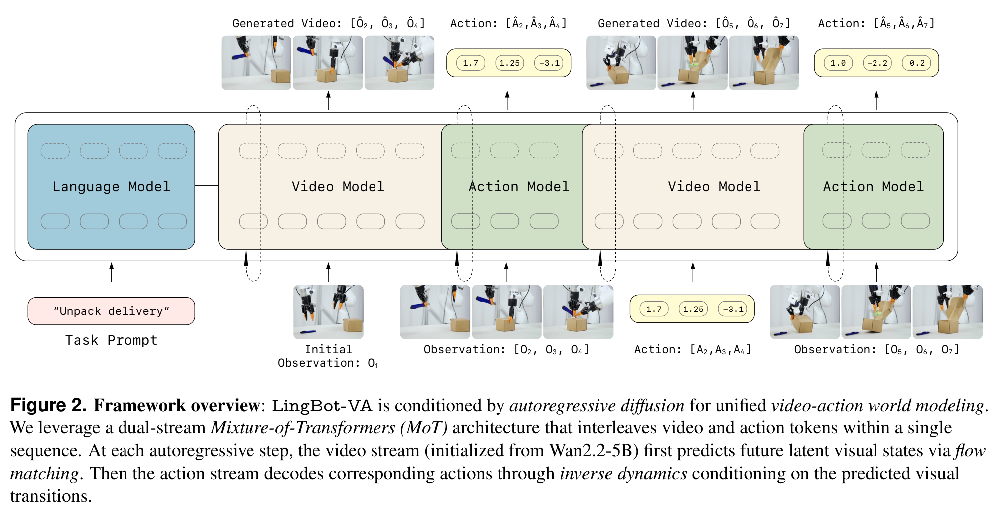
全部细节
这是论文原文图表或页图；具体版本、页码和裁剪信息见邻近中文说明。
- 论文版本：
2601.21998v2；PDF SHA-256：57bd993b298765c005fc143e2550243cecb1e76c0682653634a85d34045b0442；page SHA-256：379bd0fbd70217babe472f777fb18594b9d724ca25e8440c51c03d197ac01552。 - crop bbox（pt）：
[66, 65, 548, 314]；尺寸：[2008, 1037]；crop SHA-256：e420257193ffd7a684bd239c279e49fb8408494c1c39af95d48898b58440bc08。 - 图表说明：Fig.2 在时间轴上交替安排视频 model 和动作 model，左侧语言模型提供任务提示，底部是真实 observation 与动作，顶部是生成视频和动作。图注明确视频流以 Wan2.2-5B 初始化、先预测视觉 transition，动作流再通过逆动力学解码。
- 进一步分析：从图可重建“历史视频→未来视觉变化→对应动作”的依赖，而不是将视频/动作当作两个互不关联输出。DriveWAM 也用生成潜变量条件动作，LingBot-VA 则通过双流 MoT 和自回归步明确组织视觉与执行时间，适合分析教师强制和推理误差传播。
- 证据边界：Fig.2 没展示后来 Fig.3 的具体 Q/K/V 掩码，不能从总览猜每个词元的可见性。逆动力学也不保证动作唯一或满足接触动力学；必须保留真实观测回填、块、采样和控制频率的独立证据。 当前 visual_status=
precise_crop_and_visual_checked；semantic_status=reviewed/pass_with_boundary。历史状态semantic_pending仅对应早期裁剪回执，原文证据边界继续有效。
原文图表卡片：表 1（PDF p.13）
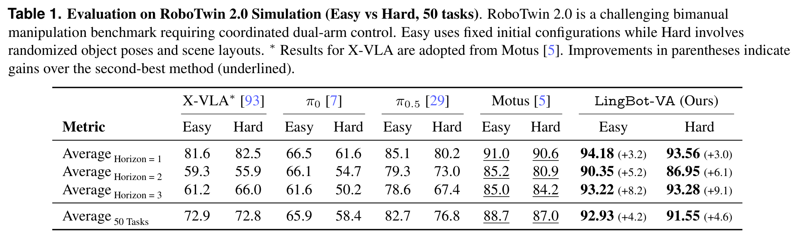
全部细节
这是论文原文图表或页图；具体版本、页码和裁剪信息见邻近中文说明。
- 论文版本：
2601.21998v2；PDF SHA-256：57bd993b298765c005fc143e2550243cecb1e76c0682653634a85d34045b0442；page SHA-256：284f96d6b5474c029711ceb7fb01c8da0f8514f8a8a2cd7b37e539aff3e29edd。 - crop bbox（pt）：
[66, 578, 547, 723]；尺寸：[2004, 604]；crop SHA-256：9ea1590a5520e9579c0169519cedc4e423a342d3f2f0bdc62ca9c97c9132d3b5。 - 图表说明：表 1 实际位于 PDF p.13，比较 RoboTwin 2.0 的 Easy/Hard 和不同任务时间跨度。平均 50 任务的 LingBot-VA 为 92.93/91.55%，Motus 为 88.7/87.0%，因此图注的提升分别为约 4.2/4.6 个百分点。Easy 固定位姿，Hard 随机场景与物体姿态。
- 进一步分析：Hard 下仅比 Easy 低 1.38 点；时间跨度=3 的平均值 93.22/93.28 高于时间跨度=2 的 90.35/86.95，不能从本表推出随时间跨度单调变难。按时间跨度分组要同时核对任务组成，不能把组间差当作同一任务增加步数的因果结果。与 Motus 的干净/randomized 表相比，两篇使用相近任务家族，但本表特意重组时间跨度，不能把时间跨度行与完整 50-task 平均互相替代。
- 证据边界：X-VLA 的星号结果来自 Motus，表内基线并非都由作者同环境重跑。这里是仿真 SR，没有每任务置信区间；PDF p.12 实际是 Fig.6 滚动执行，不能继续将它标成结果 Fig.8。 当前 visual_status=
precise_crop_and_visual_checked；semantic_status=reviewed/fix_required；paper-specific 语义 receipts 与详细 card table 均为fix_required；视觉回执仍为passed_final_contacts_and_source_pages；catalog JSON 仍为precisely_cropped_awaiting_visual_review，需要显式同步；不得声明 scientific/card gate 已完成。历史状态semantic_pending仅对应早期裁剪回执，原文证据边界继续有效。
正文：05_analysis\full_reading\lingbot-va\paper_reading_report.md；12840 字符 / 4364 中文字符；SHA-256 426efa7878625a90036d5a7e644b8eef1fc10a1b8da452f9720da865e089e67b。
来源覆盖：05_analysis\full_reading\lingbot-va\source_coverage.json；问题台账：05_analysis\full_reading\lingbot-va\paper_questions_for_code.md。
机器人操作 · 核心论文
LingBot-VA（2601.21998）逐页论文精读
当前正式机制图与完整图解：F-lingbot-va-mechanism
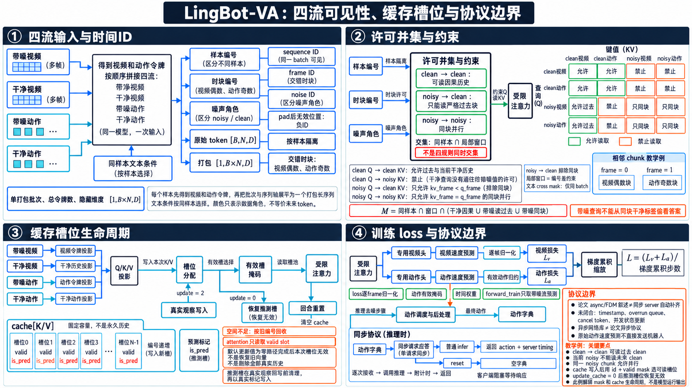
全部细节
图像 ID：F-lingbot-va-mechanism；PNG、native receipt 和逐图中文说明由当前任务 accepted manifest 绑定。
图像身份：F-lingbot-va-mechanism；审校时间：2026-11-01T20:27:01.736162+00:00；尺寸：1672×941；SHA-256：9dd1724c33385307c8e65dd87997f90c09191493acbda41ed7089a614593ec8f。原生回执（此附件保存在完整本地归档中）。
机器人操作 · 核心论文
LingBot-VA：四流可见性、缓存槽位与协议边界
本图回答：干净/带噪视频/动作四流怎样限制可见性，缓存怎样支持历史而不引入未来？
本单元只是当前任务的科研图合同，当前正式图已生成并通过原生来源记录与视觉审校。下面区分论文事实、固定源码事实、教学算例与未知边界。图中所有可见文字采用短标签，精确来源、版本和哈希只放在本文与 facts.json。
统一视觉合同
纯白不透明背景#FFFFFF；深色文字#1F2937；纯色深蓝标题条#111827；蓝#2563EB表示视觉/条件，青#0891B2表示动作/规划，绿#16A34A表示监督，橙#EA580C表示边界；平面矩形、2px细边框、2px圆角、实线单向箭头、清晰中文无衬线字体、均匀留白；禁止透明、照片、立体块、渐变、阴影、纹理、装饰。
全图阅读顺序
按左上输入、右上核心计算、左下监督或执行、右下逻辑实例与证据边界的顺序阅读。蓝色节点表示视觉或条件，青色节点表示动作或规划，绿色节点表示目标与监督，橙色框表示已知实现限制或尚未闭合的运行事实。所有箭头为实线单向箭头，每条只表示它旁边注明的一种关系；不能把数据流、梯度和控制反馈混成无文字的双向边。
分区1：四流输入与时间ID
左上区域把四流按视频/动作与带噪/干净排成四行。可在角标标出每流形状随配置变化：原始词元可写作[B,N,D]，随后打包为[1,B×N,D]，不能把帧 ID 当作原始像素帧号。sequence ID 保证同一 batch 可见，帧 ID 把潜变量/动作块编入交错时间块，噪声 ID 区分带噪与干净。pad 后无效位置用负 ID，不能参与 attention。颜色只表达数据角色，不表示带噪词元等价于未来词元。
输入区需要保留打包后的真实布局：每个样本先得到视频和动作令牌，随后把批次与序列轴展平，合成一个打包长序列。四路按带噪视频、干净视频、带噪动作、干净动作拼接，而不是四张独立显卡上的模型。样本编号用来阻断不同样本之间的注意力；视频与动作的时块编号分别映射到偶数和奇数位置，形成交错块序；噪声角色则区分当前去噪目标和干净历史。末尾填充位置的三个编号均为负值。图内可以给出打包形状“单打包批次、总令牌数、隐藏维度”，同时说明原始批次只通过编号隔离。文本条件也按同样本关系选择，不能让一个样本的语言指令跨过样本边界成为另一条轨迹的条件。这样读者才知道四流共享计算与信息泄漏防护是两个不同层面。
图内短标签：带噪视频、干净视频、带噪动作、干净动作、样本编号、时块编号、噪声角色。
分区2：许可并集与约束
中心区域画三种许可关系的并集，再与同样本、窗口规则相交：干净→干净允许因果历史，带噪→干净只能读取严格过去块，带噪→带噪允许同一块并行，最后受 sequence ID 与 local window 限制。文本 cross 掩码只允许同 batch 的文本条件。必须画出同块带噪→带噪与过去干净→当前带噪的差异，不能简化成一条下三角。
掩码区不能写成四个规则全部同时为真的简单交集。代码先把三种许可关系取并集：干净查询读不晚于自己的干净键值，带噪查询读严格更早的干净键值，带噪查询读同块带噪键值。这个许可并集再与同样本条件、局部窗口条件相交。应在小矩阵角标写清行是查询、列是键值，白格表示禁止、彩色格表示允许。干净查询没有一条通往带噪键值的许可项；带噪查询也不能从同块干净标签偷看答案。局部窗口是编号差的绝对值约束，不等于从序列开头无界读取全部历史。相邻块教学例应至少标出视频偶数块和动作奇数块，让“同块”与“过去块”的含义可复核。若只画一条下三角，会同时丢掉四流角色、同块并行和跨样本隔离三项核心条件。
图内短标签：干净流看历史、带噪流读过去、带噪流同块互见、局部窗口、同样本文本、无效位置屏蔽。
分区3：缓存槽位生命周期
右下区域画缓存生命周期：to_q/to_k/to_v 和 RoPE 先处理当前词元；update_cache 分配 slot、写入 K/V、掩码、id 和 is_pred；attention 只读取 valid slot。update_cache=0 的推理路径在完成后 restore speculative slot，server reset 会清理缓存后接收新观察。所有边都使用实线单向箭头，写入与恢复/删除用箭头旁短标签区分，不能画成无界历史。
缓存区应展示固定容量槽位的生命周期。键值缓存以批次、槽位、头数、头维度保存张量，另外保存有效标记、递增写入编号和预测标记；空间不足时按旧编号回收槽位。当前查询投影与旋转位置编码完成后写入本次键值，再从有效槽位池取出可读键值。默认更新值为零的路径在注意力完成后将本次槽位标为无效，这不是恢复旧向量，也不是删除所有真实历史。最后推测步使用预测标记，真实观察回写前清理预测槽，再以真实标记写入。回合重置则清空并重新建立整个缓存，层级比单次临时恢复更大。图中三种操作应各自标注，不用一条“清缓存”箭头笼统替代，也不能把有限槽位画成永久持久历史。
图内短标签：Q/K/V投影、槽位分配、编号递增、预测标记、有效槽掩码、恢复推测槽、回合重置、受限注意力、真实观察写入。
分区4：训练损失与协议边界
底部把 forward_train 的四流输出分成视频/动作损失，按帧掩码归一化并乘 timestep weight，再经 accumulation scaling 回传。右侧画 websocket 单请求同步协议：普通infer返回动作并由网络层附server timing；reset请求返回空字典；这里没有 timestamp、overrun queue、cancel 词元或并发状态更新。橙色边界强调论文 async/FDM 叙述不能由同步 server 自动补齐。
监督与协议区应分清训练输出、去噪动作和通信载荷。训练函数只取带噪流对应的预测，视频误差按每帧元素数归一化，动作误差还要乘动作有效掩码并除以有效动作元素数，随后乘时间权重及梯度累积缩放。部署端先完成动作调度器迭代和动作后处理，才返回动作字典；原始动作速度预测不能直接作为机器人动作发送。客户端每次发送观测后阻塞等待响应，服务端每个连接逐次接收、调用推理、附计时并返回，重置请求返回空字典。文件使用异步网络库不证明已经实现论文层面的并发控制协议。时间戳、超时后的动作队列处置、取消令牌与并发状态更新在所查路径中没有闭合证据，因此橙色区只报告这一边界，不把缺口连成已实现的异步模块。
图内短标签：视频速度预测、动作速度预测、逐帧归一化、时间权重、梯度累积、同步请求应答、异步协议未闭合、动作调度与后处理、动作字典。
逐箭头含义
- 从“带噪视频”指向“Q/K/V投影”表示“视频令牌投影”。依据 LB-F01：训练拼接带噪视频、干净视频、带噪动作、干净动作四流；图示词元形状随配置变化，可抽象为视频 [B,Nv,D] 与动作 [B,Na,D]。 边界：禁止把此边画成跨请求永久缓存、无界历史或自动释放协议。
- 从“干净视频”指向“Q/K/V投影”表示“干净历史投影”。依据 LB-F01：训练拼接带噪视频、干净视频、带噪动作、干净动作四流；图示词元形状随配置变化，可抽象为视频 [B,Nv,D] 与动作 [B,Na,D]。 边界：禁止把此边画成跨请求永久缓存、无界历史或自动释放协议。
- 从“带噪动作”指向“Q/K/V投影”表示“动作令牌投影”。依据 LB-F01：训练拼接带噪视频、干净视频、带噪动作、干净动作四流；图示词元形状随配置变化，可抽象为视频 [B,Nv,D] 与动作 [B,Na,D]。 边界：禁止把此边画成跨请求永久缓存、无界历史或自动释放协议。
- 从“干净动作”指向“Q/K/V投影”表示“干净动作投影”。依据 LB-F01：训练拼接带噪视频、干净视频、带噪动作、干净动作四流；图示词元形状随配置变化，可抽象为视频 [B,Nv,D] 与动作 [B,Na,D]。 边界：禁止把此边画成跨请求永久缓存、无界历史或自动释放协议。
- 从“样本编号”指向“许可并集与约束”表示“样本隔离”。依据 LB-F02：掩码先对干净→干净因果、带噪→干净严格过去、带噪→带噪同块三种许可取并集，再与同样本及窗口相交；无干净查询读带噪键值许可。 边界：禁止把此边画成参数完全相同、静态可达即已执行或论文实测收据。
- 从“时块编号”指向“许可并集与约束”表示“时块许可”。依据 LB-F02：掩码先对干净→干净因果、带噪→干净严格过去、带噪→带噪同块三种许可取并集，再与同样本及窗口相交；无干净查询读带噪键值许可。 边界：禁止把此边画成参数完全相同、静态可达即已执行或论文实测收据。
- 从“噪声角色”指向“许可并集与约束”表示“噪声角色”。依据 LB-F02：掩码先对干净→干净因果、带噪→干净严格过去、带噪→带噪同块三种许可取并集，再与同样本及窗口相交；无干净查询读带噪键值许可。 边界：禁止把此边画成参数完全相同、静态可达即已执行或论文实测收据。
- 从“许可并集与约束”指向“受限注意力”表示“约束Q读KV”。依据 LB-F02：掩码先对干净→干净因果、带噪→干净严格过去、带噪→带噪同块三种许可取并集，再与同样本及窗口相交；无干净查询读带噪键值许可。 边界：禁止把此边画成跨请求永久缓存、无界历史或自动释放协议。
- 从“Q/K/V投影”指向“槽位分配”表示“写入本次K/V”。依据 LB-F03：固定容量缓存保存K/V、id、掩码、is_pred；默认update_cache=0本次写入后使本次槽位无效；update=1标记预测，真实观察update=2，空间不足按旧id回收。 边界：禁止把此边画成跨请求永久缓存、无界历史或自动释放协议。
- 从“槽位分配”指向“有效槽掩码”表示“有效槽选择”。依据 LB-F03：固定容量缓存保存K/V、id、掩码、is_pred；默认update_cache=0本次写入后使本次槽位无效；update=1标记预测，真实观察update=2，空间不足按旧id回收。 边界：禁止把此边画成跨请求永久缓存、无界历史或自动释放协议。
- 从“有效槽掩码”指向“受限注意力”表示“读取槽池”。依据 LB-F03：固定容量缓存保存K/V、id、掩码、is_pred；默认update_cache=0本次写入后使本次槽位无效；update=1标记预测，真实观察update=2，空间不足按旧id回收。 边界：禁止把此边画成跨请求永久缓存、无界历史或自动释放协议。
- 从“真实观察写入”指向“槽位分配”表示“update=2”。依据 LB-F03：固定容量缓存保存K/V、id、掩码、is_pred；默认update_cache=0本次写入后使本次槽位无效；update=1标记预测，真实观察update=2，空间不足按旧id回收。 边界：禁止把此边画成跨请求永久缓存、无界历史或自动释放协议。
- 从“受限注意力”指向“视频速度预测”表示“专用视频头”。依据 LB-F04：视频/动作损失按帧归一化、timestep weight和梯度累积缩放。 边界：禁止把此边画成全局下三角、双向无条件可见或所有模式都成立。
- 从“受限注意力”指向“动作速度预测”表示“专用动作头”。依据 LB-F04：视频/动作损失按帧归一化、timestep weight和梯度累积缩放。 边界：禁止把此边画成全局下三角、双向无条件可见或所有模式都成立。
- 从“视频速度预测”指向“视频损失”表示“逐帧归一化”。依据 LB-F04：视频/动作损失按帧归一化、timestep weight和梯度累积缩放。 边界：禁止把此边画成没有有效掩码的真值泄漏、统一损失或已测误差。
- 从“动作速度预测”指向“动作损失”表示“有效动作归约”。依据 LB-F04：视频/动作损失按帧归一化、timestep weight和梯度累积缩放。 边界：禁止把此边画成没有有效掩码的真值泄漏、统一损失或已测误差。
- 从“动作速度预测”指向“动作调度与后处理”表示“推理去噪步骤”。依据 LB-F05：部署动作先经过独立动作调度器循环、有效维度处理与postprocess_action，才作为动作字典返回给同步请求；原始velocity不是直接机器人动作。 边界：禁止把此边画成参数完全相同、静态可达即已执行或论文实测收据。
- 从“动作调度与后处理”指向“动作字典”表示“最终动作”。依据 LB-F05：部署动作先经过独立动作调度器循环、有效维度处理与postprocess_action，才作为动作字典返回给同步请求；原始velocity不是直接机器人动作。 边界：禁止把此边画成参数完全相同、静态可达即已执行或论文实测收据。
- 从“动作字典”指向“同步请求应答”表示“单请求返回”。依据 LB-U01：公开实现是同步单请求往返：client发送一条观测后阻塞接收一条响应，server逐条recv→infer→send并附server_timing；reset只在VA_Server分支清空缓存后返回空字典。论文所述异步竞态、timestamp、取消令牌和并发状态协议在这些固定路径中未闭合。 边界：禁止把此边画成参数完全相同、静态可达即已执行或论文实测收据。
逐事实与精确来源
LB-F01｜Code Fact｜known
训练拼接带噪视频、干净视频、带噪动作、干净动作四流；图示词元形状随配置变化，可抽象为视频 [B,Nv,D] 与动作 [B,Na,D]。
- 04_repositories/lingbot-va/7c6ffa9bfc4b83582cafc860fab4c82cc7deeeeb/wan_va/modules/model.py；SHA-256 a304e58243eb3fc247d968dd8c453b77695ec8e07d32c0402c947e1c0356f9f5；行 702–750
LB-F02｜Code Fact｜known
掩码先对干净→干净因果、带噪→干净严格过去、带噪→带噪同块三种许可取并集，再与同样本及窗口相交；无干净查询读带噪键值许可。
- 04_repositories/lingbot-va/7c6ffa9bfc4b83582cafc860fab4c82cc7deeeeb/wan_va/modules/model.py；SHA-256 a304e58243eb3fc247d968dd8c453b77695ec8e07d32c0402c947e1c0356f9f5；行 95–201
LB-F03｜Code Fact｜known
固定容量缓存保存K/V、id、掩码、is_pred；默认update_cache=0本次写入后使本次槽位无效；update=1标记预测，真实观察update=2，空间不足按旧id回收。
- 04_repositories/lingbot-va/7c6ffa9bfc4b83582cafc860fab4c82cc7deeeeb/wan_va/modules/model.py；SHA-256 a304e58243eb3fc247d968dd8c453b77695ec8e07d32c0402c947e1c0356f9f5；行 386–465
- 04_repositories/lingbot-va/7c6ffa9bfc4b83582cafc860fab4c82cc7deeeeb/wan_va/modules/model.py；SHA-256 a304e58243eb3fc247d968dd8c453b77695ec8e07d32c0402c947e1c0356f9f5；行 330–385
- 04_repositories/lingbot-va/7c6ffa9bfc4b83582cafc860fab4c82cc7deeeeb/wan_va/wan_va_server.py；SHA-256 f21fc44aaa774f58609a54dcb2141c88a9bc43e28d1724634e92d4587cf756c2；行 569–604
LB-F04｜Code Fact｜known
视频/动作损失按帧归一化、timestep weight和梯度累积缩放。
- 04_repositories/lingbot-va/7c6ffa9bfc4b83582cafc860fab4c82cc7deeeeb/wan_va/train.py；SHA-256 1852a42e0d9509e1037e208173d38fd228dda1e8d2f0945aae715c14a3453145；行 256–315
LB-U01｜Unresolved｜unknown
公开实现是同步单请求往返：client发送一条观测后阻塞接收一条响应，server逐条recv→infer→send并附server_timing；reset只在VA_Server分支清空缓存后返回空字典。论文所述异步竞态、timestamp、取消令牌和并发状态协议在这些固定路径中未闭合。
- 04_repositories/lingbot-va/7c6ffa9bfc4b83582cafc860fab4c82cc7deeeeb/evaluation/robotwin/websocket_client_policy.py；SHA-256 d411a10488ad2825945b6cd6e23ec6e6c34f5e2686792f61fb02df6465b3b983；行 41–80
- 04_repositories/lingbot-va/7c6ffa9bfc4b83582cafc860fab4c82cc7deeeeb/wan_va/utils/Simple_Remote_Infer/deploy/websocket_policy_server.py；SHA-256 b0c7721babceb716c6f89c3fe8c29551e7bcd9464c2e32938a084b8b8dcdd933；行 50–87
- 04_repositories/lingbot-va/7c6ffa9bfc4b83582cafc860fab4c82cc7deeeeb/wan_va/wan_va_server.py；SHA-256 f21fc44aaa774f58609a54dcb2141c88a9bc43e28d1724634e92d4587cf756c2；行 377–411
- 04_repositories/lingbot-va/7c6ffa9bfc4b83582cafc860fab4c82cc7deeeeb/wan_va/wan_va_server.py；SHA-256 f21fc44aaa774f58609a54dcb2141c88a9bc43e28d1724634e92d4587cf756c2；行 606–624
LB-F05｜Code Fact｜known
部署动作先经过独立动作调度器循环、有效维度处理与postprocess_action，才作为动作字典返回给同步请求；原始velocity不是直接机器人动作。
- 04_repositories/lingbot-va/7c6ffa9bfc4b83582cafc860fab4c82cc7deeeeb/wan_va/wan_va_server.py；SHA-256 f21fc44aaa774f58609a54dcb2141c88a9bc43e28d1724634e92d4587cf756c2；行 443–568
- 04_repositories/lingbot-va/7c6ffa9bfc4b83582cafc860fab4c82cc7deeeeb/wan_va/wan_va_server.py；SHA-256 f21fc44aaa774f58609a54dcb2141c88a9bc43e28d1724634e92d4587cf756c2；行 606–624
教学实例与绘图边界
教学例：把两个相邻块设为帧=0 和帧=1。干净→干净可以读过去干净；当前带噪块不能读未来干净；同一带噪块内允许并行。缓存写入后用 id 和 valid 掩码选择可读槽位，推测槽位在 update_cache=0 后恢复无效。这个例子用于解释掩码和缓存生命周期，不是模型运行输出。
教学数字只用于复核输入经过计算如何形成目标或输出，不是论文实验值，也没有导入目标仓库或运行训练。论文中的结果数值只有明确绑定图表、样本协议、模型配置和硬件时才能画在对应区域。未闭合项只能进橙色边界，不得靠箭头连接推成已实现。
不允许产生的解释
- 不要把四流掩码画成单一下三角
- 不要把speculative restore画成永久历史删除
- 不要把同步server写成已实现论文异步协议
#### 正式图卡：LingBot-VA 四流可见性、缓存槽位与协议边界
- 图解重点：带噪/干净视频/动作四流打包、sequence/frame/noise ID 隔离、许可并集与局部窗口、固定容量 K/V 槽位生命周期，以及
update_cache=0/1/2的推测与真实观察语义。 - 训练与协议：视频/动作损失分别归一化并加 timestep weight；固定实现是同步 WebSocket 请求应答，论文 async/FDM、timestamp、cancel 词元和并发状态更新仍保留为来源边界。
- 逐图来源与原生来源记录见 图详解（此附件保存在完整本地归档中） 与 回执（此附件保存在完整本地归档中）。
0. 来源、范围与论文地图
本报告只用当前任务重新下载的 Causal World Modeling for Robot Control（31 页 PDF、1481 行 flat TeX、HTML），不从早期报告或任何历史工程取事实。作者为 Lin Li、Qihang Zhang、Yiming Luo 等，工作名为 LingBot-VA。PDF p.1–18 是正文与方法/实验，p.19–23 为参考文献，p.24–31 为附录和逐试验任务表。图表页在 images/page_*.png 保存，证据和覆盖分别见 claim_evidence.jsonl 与 source_coverage.json。本报告严格区分论文明确结果、作者的机制解释、合理推断和未公开项。
第一遍 5C：类型是自回归视频—动作世界模型与部署系统；上下文是 VLA 把视觉语义、动力学、控制压进同一 feedforward 表示后出现样本效率和记忆不足，视频 WAM 又有闭环反应、长期历史和因果结构问题；正确性方面，conditional 流匹配、MoT、教师强制、KV 缓存和 FDM-grounded async 构成可理解的系统，但论文有部分超参数与评测表述冲突，不能强行调和；贡献是统一视频/动作交错序列、非对称 MoT、Noisy History Augmentation、FDM-grounded 异步执行和大量真实/仿真任务；清晰性是公式、掩码和伪代码较完整，跨块记忆与异步窗口、真实成功判据、部分训练设置仍需源码或作者记录确认。
依赖阅读顺序是：p.1–3 的动机和图 1 → p.3–4 流匹配前置知识 → p.4–8 世界动态、IDM、MoT、初始化、掩码、噪声历史 → p.8–9 两个推理算法和 FDM-grounding → p.10–15 数据、训练、真实/仿真结果与消融 → p.16–17 样本效率、记忆、泛化 → p.24–31 附录逐试验。定位句是：这篇论文试图把“先预测世界如何变，再据此反推动作”变成一个有记忆、有真实反馈、可异步运行的因果序列模型。
1. 背景与作者推理链
引言（PDF p.1–3；TeX L105–170）将问题称为 representation entanglement：同一个 VLA 从一个动作监督信号同时学 scene understanding、physical 动力学、motor control，容易退化为 pattern matching。作者随后批评已有 world-model control 的三个缺口：长块/开环无法及时反馈；无持续缓存导致跨块失忆；双向 attention 让未来影响过去，难与实时因果观察接轨。这里的“违反物理因果”是作者对建模依赖的论述，不是对双向模型物理正确性的形式证明。
从这些旧失败点出发，作者选择显式区分两个概念：视觉动力学预测下一段视觉，逆动力学从期望视觉转移反推出动作。为了避免两个独立网络脱节，又把视频和动作词元交错成同一序列，利用双流 MoT 共享 attention。视频特征流用大模型处理高维视觉，动作特征流用小宽度处理低维控制。因果跨块掩码和 KV 缓存保留历史；每次执行真实动作后用真实观察更新上下文，减少预测漂移。
最后出现部署矛盾：视频词元比动作多得多，完全去噪浪费计算，但动作 decoding 未必需要像素级完美视频。作者于是先让训练中的 history 带噪，使动作专家能从部分去噪潜变量中提取任务相关结构。然后异步把计算和机器人执行重叠；为免模型继续“顺滑地想象”过时预测而忽略真实反馈，再增加一次 forward 动力学预测，先将最新真实状态和正在执行的动作对齐，再生成后续动作。这条链中的核心建模原则是因果历史和视觉 transition grounding，噪声、窗口大小和初始化属于可替换实现。
2. 前置概念、符号和完整流程
流匹配的直觉是：把高斯噪声看成一群粒子，让网络学习每个时间点应朝哪个方向移动，积分后到达真实视频或动作。论文用 表示生成流时间， 表示真实机器人时间，不能混用。 是观察， 是因果 VAE 潜变量； 可指真实动作也可指投影词元，需按上下文区分； 是视频块帧数， 是视频稀疏因子，因而 K 帧对应 个动作； 是语言， 是 KV 历史。
端到端流程是：多摄像头视频经 Wan2.2 因果 VAE 编码，视频词元与经 MLP 的动作词元依时间交错；T5 语言通过交叉注意力输入。训练用真实 history 做教师强制，当前视频和动作加噪后分别预测速度场；history 有一半概率用部分噪声增强。推理先从历史生成部分去噪的视频块，再将预测未来与历史交给动作特征流全去噪动作；机器人执行并采集真实帧，真实帧和已执行动作更新 KV 缓存。异步版本额外用 FDM 将最新真实反馈映射到正在执行动作结束时的状态，再预测下一块。
视频特征流是 Wan2.2-5B、30 层、隐藏维度 3072；动作特征流也是 30 层、隐藏维度 768，约 350M 额外参数，总 5.3B。VAE 压缩率 （时间×高×宽），再 patchify 空间 2 倍；多视角 encoded view 沿 width 拼接，每帧 N=192 spatial 词元。动作编码器/解码器是隐藏维度 256 的单层 MLP，动作按训练集每维分位数归一化。双臂统一动作维度是每臂 7 EEF（XYZ+quaternion）+7 joints+1 gripper，总 30；不足 7 joints 补零。这些零值是结构补齐，不是可推断的真实关节约束。
教学数值例子（非论文实验）
设两个低维潜变量状态 、真实未来 ，动作目标 。采样视频噪声 、动作噪声 ，流时间 。则带噪未来为 ，目标速度 ；带噪动作为 ，目标速度 。若视频预测 0.9、动作预测 0.3，则 、，当 时总损失 0.02。若带噪历史 augmentation 选中且 、history 噪声为 0，则 ，模型仍要从此略脏 history 推出同一动作目标。这个手算展示“视觉部分去噪、动作完全去噪”并不要求视频先成为像素级干净。
最小失败例是实际物体在当前动作执行中滑落，但异步缓存仍保存“已经抓稳”的预测；若下一动作继续相信旧预测，会在空中移动 gripper。FDM-grounded 版本先用最新真实帧和正在执行动作重新想象未来，理论上可纠正该分支；若遮挡使真实帧也看不出滑落，FDM 仍不能提供真相。
3. 数学公式与优化路径
3.1 Conditional 流匹配（p.3–4；TeX L174–217）
论文定义
线性路径 ，故真实速度 。训练网络以 MSE 拟合速度：
推理从 积分到 ：。视频版把 换成 ，以文本或初始图像 c 为条件。该公式是生成路径定义，没有证明训练得到的速度精确等于数据最优 transport。
3.2 世界动态与 IDM（p.5–6；TeX L300–345）
世界模型定义为
动作模型定义为
过去动作给出 embodiment configuration 轨迹，过去视觉提供“物体是否已被抓住”等非 Markov 信息，预测未来是期望视觉转移。作者明确说当前/next 状态 pair 本身不足，需要 history。K 帧内允许并行双向生成，但跨块保持因果；因此“strict 因果”指跨时间块结构，不能误读为每个潜变量词元都单向。
3.3 Noisy History 和双目标（p.7–8；TeX L414–441）
以 p=0.5 将 history 替为 ，；否则保持干净。视频动力学损失 用速度场 拟合未来视频速度，条件是带噪历史、过去动作和语言；inverse 损失 用 拟合动作速度，条件包括当前/next 带噪视频和过去动作。总目标
梯度分别更新视频特征流与动作特征流，但两者通过 MoT attention 相互影响；冻结 T5，VAE 词元化器被作为预训练编码器使用，论文未把所有参数冻结范围逐一列出。动作权重初始化由预训练视频权重插值并乘 ，目的是保留输出方差、减少随机动作词元分布扰动。该“方差保持”是设计解释，图 7 给训练损失/grad norm 证据。
3.4 两个推理算法与 FDM（p.8–9；TeX L452–559）
算法 1 首先 E(o0) 填缓存；视频从噪声积分到 s=0.5，动作到 s=1；执行 K 个动作、接收真实帧并缓存真实视频/动作。算法 2 冷启动后并行两个分支：A 执行已有块并把 observation 放进线程安全队列；B 获取上一段真实 observation，构造临时缓存，加入正在执行动作，通过 FDM 想象其结果，再 Predict 下一视频与动作。post-training 额外 FDM 损失监督 的 velocity field，条件含当前真实 和旧带噪历史；TeX 具体使用 ，与 inverse-dynamics 记号相同。论文没有据此定义一个独立的 FDM 模型对象。它增加一次预测来换取与真实反馈对齐，不能消除所有模型误差。
这里有三处原文差异必须保留：方法/算法 1 写视频积分至 s=0.5，而 implementation 写 Euler 3 步至 s=0.6；variable 块的例子是 K∈[1,8]，实验实现是 K∈[1,4]，部署 K=4；引言说 persistent complete history，但异步段明确“discard history before t−1”，活动 context 只有最近实际反馈和动作。论文异步算法还明确使用线程安全 observation queue；timestamp、overrun 和 cancellation 的精确处理仍是待确认的实现问题。它们可能属于不同设置，但论文没有给版本映射，应交代码阶段确认。
4. 数据、训练协议与实验结果
4.1 数据和训练（p.10–11；TeX L567–640）
训练聚合 Agibot、RoboMind、InternData-A1、OXE OpenVLA subset、UMI（排除 DexUMI）、RoboCOIN 和内部数据，总约 16K 小时，各数据集 90/10 训练/validation；按 source 均匀采样。预训练 1.4T 词元，AdamW peak lr 1e−4、wd 0.01、cosine+warmup、bf16、clip 2.0、text 随机丢弃 0.1、uniform SNR 采样器。多个 episode pack 成最高约 10K 词元的序列；真实任务微调部分又写 sequence length 150,000，不能自动推为同一词元定义。
一般 post-training 写 50 示范轨迹、lr 1e−5、3K 步，替代是 lr 1e−4、1K 步；真实六任务段写 50 示范、lr 1e−4、500 步。这可能是一般建议与实际任务设置之别，报告分别记录，不能以一个数字覆盖另一个。
4.2 真实六任务和附录逐试验（p.11–13、24–31）
任务是 Make Breakfast（10 步）、Pick Screws（5 步）、Fold Clothes（6 步）、Unpack Delivery（5 步）、Insert Tubes（三抓三插，6 分）、Fold Pants（3 步），每个方法 20 试验，交替执行 π0.5 和本模型以减小环境漂移。中间步首次成功计 1、重试成功计 0.5、失败计 0；Progress Score 是平均进度/最大分，Success Rate 是标注成功试验比例。
附录的确切数字为：Make Breakfast PS 97.0、SR 75.0（π0.5 73.0、70.0）；Pick Screws 82.5、70.0（74.0、50.0）；Fold Clothes 48.8、35.0（62.9、30.0）；Unpack Delivery 84.5、65.0（73.0、25.0）；Insert Tubes 85.8、40.0（79.2、30.0）；Fold Pants 76.7、70.0（30.0、30.0）。因此正文/图注“all six 任务 and both metrics 都更好”与 Fold Clothes PS 表中 48.8<62.9 冲突，不能重复为无条件事实。
附录还存在成功定义矛盾：文字称“所有步骤完成且总分等于最大值才成功”，但 Make Breakfast 试验 8、17 总分 9.5 却 Succ=1；Pick Screws 多条 4/5 或 4.5/5 也标 successful。可解释为“重试后完成也算成功，progress 另罚分”，但这是推断，原文没有统一说明。报告使用表中 SR 作为作者报告值，同时保留定义问题，不重新计算并替作者修正。
4.3 RoboTwin 与 LIBERO（p.13–14、25）
RoboTwin 用 2,500 干净 + 25,000 randomized 示范，视频 50 Hz 降为 12.5 Hz，动作保持 50 Hz，50K 步、lr 1e−5。表 1 平均 Easy 92.93、Hard 91.55，比 Motus 88.66/87.02 高；时间跨度=3 为 93.22/93.28，增加幅度 +8.2/+9.1。Horizon=1/2/3 是任务步骤分组，不是模型块 K。附录 S1 的 Turn Switch 44/45、Hanging Mug 40/28 明显低于平均，说明精细接触和几何任务仍难；平均分不能代替安全或最差任务能力。
LIBERO 每套 10 任务、每任务 50 示范，过滤失败示范，4K 步、lr 1e−5、sequence length 1e5；每套三随机种子×500 评估=1500 试验。表 2 为 Spatial 98.5±0.3、Object 99.6±0.3、Goal 97.2±0.2、Long 98.5±0.5、Avg 98.5。基线从 X-VLA 文献采用而非全部同机重跑，因此支持评测基准上的报告比较，不是计算预算完全匹配的因果排序。
4.4 消融与分析（p.14–17）
表 3：基线 Easy_all 92.9，FDM-grounded async 90.4，naive async 74.3，WAN 初始化 80.6；时间跨度=3 分别 93.2/85.6/32.9/67.6。作者说 async 同步 success 可比且完成时间 2× 更快，但表中 FDM async 比基线低 2.5 点；“保持性能”应理解为没有 naive async 那样大崩塌。图 7 对比 random/copy/shared 动作 initialization，copy+scaling 损失与 grad norm 最稳；它支持优化稳定性，而不直接证明输出分布完全匹配。
图 8：RoboTwin 5/10/25/50 示范 PS 46.6/58.2/74.2/84.6，π0.5 36.3/50.7/70.5/81.2；真实 Make Breakfast 10/25/50 示范 61.1/81.7/97.0，π0.5 45.5/60.0/73.0。注意正文“10 示范比 π0.5 高 10.3 点 on RoboTwin”与图上 58.2−50.7=7.5 不同；10.3 是图中 5 示范的差。应保留图值及冲突。
图 9 两个显式记忆任务：Wipe Plate 要恰好擦六次，Search Box 训练时方块左右等概率、测试在左，先开右箱为空后应记住并改开左箱。模型两项 100%，π0.5 47%/50%。这比仅用 long-horizon 评测基准更直接支持状态记忆，但没有报告试验数、历史长度上限或抗干扰记忆曲线。图 10 novel object/spatial generalization 展示换苹果、blocks、bowls、pears 和 OOD 位置，主要为定性，没有完整统计表。
5. 关键假设、边界与设计逻辑
最脆弱的假设是视觉未来潜变量包含动作所需的动力学，而且有限带噪潜变量足以反推出接触动作。若观测不足、力觉决定成功、遮挡使潜变量忽略抓取状态，IDM 和 FDM 都可能生成视觉上顺滑而物理不可行的动作。表 3 的 naive async 崩塌是一个具体证据：再强的世界模型若上下文是 stale prediction，也可能远离真实环境。
稳健结论是：所报数据/任务中预训练 LingBot-VA 的平均仿真成功率和多项真实任务 progress 高；FDM grounding 比 naive async 强；带噪历史/部分闭合去噪提供计算设计；显式记忆任务表现优于基线。不能推出：因果掩码已证明物理因果理解、完整历史在所有部署模式永久保留、所有六任务两个指标都胜出、所有平台 50 示范即可适配、或 s=0.5 是唯一实际视频终点。
机制分层为：LB-M01 世界动态+IDM 分解回应 representation entanglement；LB-M02 交错 MoT/教师强制/KV 回应时间历史和跨模态对齐；LB-M03 动作 copy+scaling 回应训练不稳定；LB-M04 带噪历史/部分闭合去噪回应延迟；LB-M05 FDM-grounded async 回应过时预测；LB-M06 统一 30D action/padding/quantile 归一化回应多 embodiment 数据接口。每项的真实输入、公式、教学例和实验已在前文唯一展开。
6. 易错点与待代码问题
LB-CODE-01：视频实际积分终点 s=0.5 还是 0.6，Euler 步数与 Noisy History 训练分布如何匹配？LB-CODE-02：K 的 [1,8] 示例、[1,4] 实验、部署 4 及动作 τ=4 的索引如何实现？LB-CODE-03：persistent full history 与 async discard t−1 前历史的不同模式如何切换？LB-CODE-04：MoT QKV投影、动作残差和共享注意力掩码是否与图 3 一致？LB-CODE-05：copy/interpolate/scaling 权重初始化的确切维度和输出 variance 是否验证？LB-CODE-06：FDM 损失使用 vψ 还是视频特征流 vθ、是否共享参数、损失权重是什么？LB-CODE-07：30D 动作中 EEF/joints/gripper 的 valid 掩码、填充、分位数归一化如何处理不具备字段的数据？LB-CODE-08：真实任务 500/1000/3000 步与序列长度 10K/150K 的配置对应？LB-CODE-09：SR 是否允许 retry success，附录表的 Succ 与最大分规则如何统一？LB-CODE-10：Fold Clothes PS 与“all metrics superior”的冲突如何解释？LB-CODE-11：uniform source sampling 是否重复加权 16K 小时中小数据集，validation 划分是轨迹还是帧？LB-CODE-12：异步 queue 的时间戳、延迟、预测覆盖和线程取消如何保证动作与真实帧对齐？
7. 可复用结论与理解自测
五句话：LingBot-VA 把视频动态与 IDM 放进交错 MoT 序列。跨块因果 attention 和 KV 缓存保存视觉/动作历史。Noisy History Augmentation 使动作可以读取部分去噪未来潜变量。FDM-grounded async 用最新反馈重建正在执行动作的结果，避免继续陈旧视频预测。主实验有很强平均结果，但附录显示部分指标和成功定义需要澄清。
三句话：它的贡献是让世界预测、动作反推和闭环状态更新共享一个序列接口。结果支持特定评测基准中更好的样本效率和记忆，异步机制也显示真实反馈的重要性。论文中的超参数和评价冲突必须带入源码阶段。
一句话：LingBot-VA 展示了“有历史的视觉世界模型+IDM+反馈校准异步控制”的有效性，同时提醒读者不能把顺滑预测、因果掩码或高平均分直接等同于可靠物理因果控制。
自测一：为什么动作要读历史而不只读当前/未来帧？因为过去动作携带 embodiment 状态路径，过去视觉携带非 Markov 交互记忆，二者帮助消歧。自测二：为什么带噪历史能省推理？因为动作训练见过部分噪潜变量，不必等待视频完全重建。自测三：为什么 naive async 失败？它把旧预测当真并继续平滑外推，最新实际反馈被弱化；FDM 先用最新真实帧和当前动作重新定位。自测四：100% 内存 score 能说明永久记忆吗？不能，它只覆盖擦六次和两箱搜索，缺少长度和干扰变化。
8. 图表与协议的补充核读
图 1 总览同时画出视频世界模型、动作、长期记忆和数据效率，读者需要把它拆为不同证据。视频生成是定性行，真实执行是另一行，二者对齐不自动代表正确完成任务；右下内存与 few-shot 柱状图才对应具体实验。图 2 框架让“概念上两阶段”和“结构上统一”同时成立：视频特征流先生成未来潜变量，动作特征流从视觉 transition 解码，但两者共享 MoT attention 和交错序列。图 3 的掩码显示干净 history、带噪未来和动作的可见关系，跨块因果，块内可并行；如果把所有词元都画成单向，反而会误读论文。
图 4 的同步/异步比较中，灰色 idle 表示机器人等待计算，naive async 虽然并行却把过时预测保留在缓存。FDM-grounded async 用最新真实 observation 和正在执行的动作重建当前未来，再接下一个预测。表 3 的90.4对74.3直接支持这一步的重要性；它没有把FDM单独证明为真实物理状态估计器，因为重建仍来自同一个生成模型。
图 5 的真实结果图标题说两指标全优，但Fold Clothes上半PS柱状图可见本方法低于π0.5；附录S4给48.8对62.9，说明图注语言比数字更宽泛。图 6 逐步任务图把Make Breakfast十步、Unpack Delivery五步、Screws五步、Insert Tubes三抓三插、Clothes六步、Pants三步展开；这些步骤既是任务定义，也是progress归一化的分母，不能只写“成功率”。
图 7的训练曲线说明copy+scaling初始化训练损失、validation 损失和grad norm都更低，random曲线收敛慢，shared weights居中。它支持初始化稳定性，但没有把输出variance理论地测出来。图 8的数据效率分成仿真和真实两图，仿真10demos差是7.5点、5demos才10.3点；正文将10.3写给10demos，应保留为冲突。图 9中Wipe Plate恰好六次的任务能直接测试计数，Search Box先右后左能测试先前空箱记忆；100%与47/50的差支持所选任务的历史利用，但没有随机种子/试验统计。
9. 具体机制推演与边界
假设机器人已拿起杯子、当前画面因手臂遮挡只看见杯口，若模型只看当前帧会分不清“正在拿杯”还是“尚未抓取”。历史动作包含末端夹爪关闭和抬升，历史视频包含杯子离桌，因此world 动力学条件中的 能消歧。IDM再根据目标未来“杯子到水壶旁”推断当前动作。这个例子解释的是论文的条件结构，不声称论文专门测过该遮挡场景。
若推理只部分去噪到s=.5，视频潜变量仍含随机噪声，但object大致位置和动作相关结构可能已显现。Noisy History训练让动作专家学会忽略无关高频噪声；如果噪声恰好遮住窄槽或接触边界，动作仍会失败。因而“动作不需像素级完美”不等于“动作不需精确几何”。Insert Tubes40%success远低于85.8%progress正说明前几步抓取可完成而最终插入仍难。
对代码阶段最重要的是把同名history分清：训练教师强制是完整干净前缀，基础KV推理保存逐步真实视频/动作，异步段则截断到最近反馈并加入FDM预测。三者生命周期和噪声程度不同，不能用一个变量名history掩盖。只有这些模式的配置、掩码和缓存更新都对应，才能解释“因果记忆”在真实部署中的准确含义。
8. metis
原文图表证据（v3 精确裁切）
原文图表卡片：图 2（PDF p.4）
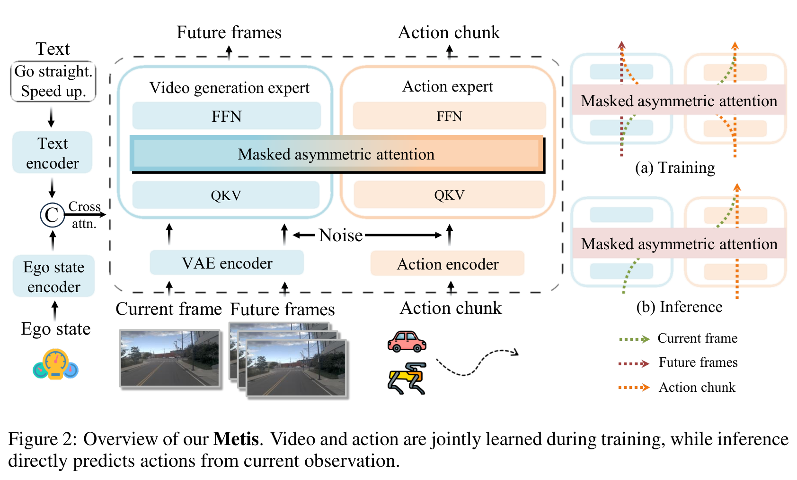
全部细节
这是论文原文图表或页图；具体版本、页码和裁剪信息见邻近中文说明。
- 论文版本：
2606.15869v1；PDF SHA-256：34870523248f06c752b4639be40d1397ab63ec04f8487c6569315a6ce1508c6c；page SHA-256：ea278fe088926c19c937fed37c2b606ba8d2e21edca11e39a09fc431885f7987。 - crop bbox（pt）：
[104, 60, 508, 304]；尺寸：[1684, 1017]；crop SHA-256：cb6a7ca5a861ff79a054d0bcebbacc8022e75acf4052507c5e16039e24df3991。 - 图表说明：PDF p.4 Fig.2 是 Metis 总览：当前帧与未来帧进入 VAE/视频专家，动作块进入动作专家，text/ego 状态提供条件；中间 masked asymmetric attention 联结两路，右侧分别画训练的三类输入与推理的当前帧加动作。
图表说明： 图 2 是 Metis 的总览，展示当前帧与未来帧进入 VAE/视频专家，动作块进入动作专家，文本与 ego 状态提供条件；两路通过 masked asymmetric attention 在共享潜在空间交互。训练侧同时保留视频/动作目标，图右侧的推理路径则只从当前 observation 直接预测动作，因此未来视频不再是动作推理的输入。该图表达的是论文的仅生成动作推理结构：视频可以读取动作，动作不读取未来视频；后续掩码图才具体展开这种方向。它与 SimWAM 的隔离掩码不同，不能把两种注意力约束视为同一实现。总览图没有给出跨专家梯度是否截断梯度、生成损失对动作的中介作用或端到端控制频率；推理阶段移除视频流也不等于训练成本、预训练数据量或部署时延为零。
- 进一步分析：图上训练保留未来视频，推理只保留动作所需当前 observation；这是仅生成动作推理的结构证据。视频可看动作、动作不看未来视频的方向在后续掩码图进一步明确。与 SimWAM 相互隔离不同，Metis 允许视频损失利用动作信息，不能将两者视为同一实现。
- 证据边界：总览没有证明跨专家梯度是否截断梯度，也不测 generation 损失对动作的中介作用。视频流在推理移除不意味着其训练成本或预训练量为零，不能从图的简洁路径直接推出端到端部署频率。 当前 visual_status=
precise_crop_and_visual_checked；semantic_status=reviewed/pass；局部建议：保留 paper-only 来源边界。。历史状态semantic_pending仅对应早期裁剪回执，原文证据边界继续有效。
原文图表卡片：表 1（PDF p.6）
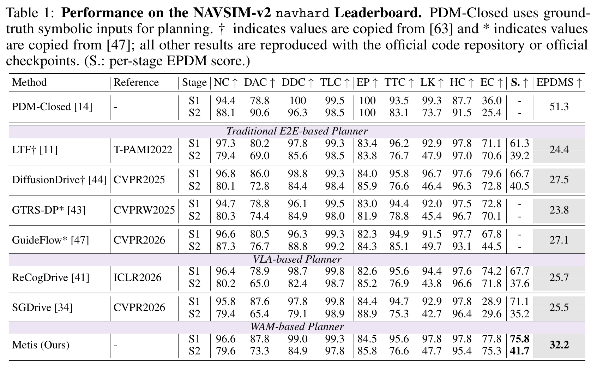
全部细节
这是论文原文图表或页图；具体版本、页码和裁剪信息见邻近中文说明。
- 论文版本：
2606.15869v1；PDF SHA-256：34870523248f06c752b4639be40d1397ab63ec04f8487c6569315a6ce1508c6c；page SHA-256：8a102d1395c4504bf4edaefe498e24e8f5ce06ae9ccb718b57be59267f04f49a。 - crop bbox（pt）：
[104, 68, 510, 316]；尺寸：[1692, 1034]；crop SHA-256：554420f65e7c0236e7560cdafa79fbd8ec6cc680fefab51d99330c640557ecb2。 - 图表说明：表 1 实际在 PDF p.6，报告 NAVSIM-v2 navhard 两阶段 S1/S2 和总体 EPDMS。Metis 为 S1 75.8、S2 41.7、EPDMS 32.2；同表 SGDrive 71.1/35.2/25.5、ReCogDrive 67.7/37.6/25.7；PDM-Closed 使用真实标注 symbolic inputs，EPDMS 51.3。
- 进一步分析：Metis 相对表内 learned 基线的两阶段都有优势，但与 GT symbolic PDM-Closed 仍有明显差距。S1/S2 与总体 EPDMS 不是简单算术平均，不能把 75.8 误报为完整 navhard 总分。与 SimWAM 的 v1 navtest PDMS 表相比，此处场景难度和 two-stage protocol 不同。
- 证据边界：图注标记部分基线值从其他论文复制，其余用官方代码/权重复现；不同来源仍有限制。该表没有延迟、置信区间或真实部署风险，因此只能支持该协议下的规划排名。 当前 visual_status=
precise_crop_and_visual_checked；semantic_status=reviewed/source_boundary；局部建议：不要把“official 代码 reproduced”写成当前审校已运行。。历史状态semantic_pending仅对应早期裁剪回执，原文证据边界继续有效。
正文：05_analysis\full_reading\metis\paper_reading_report.md；14117 字符 / 4175 中文字符；SHA-256 a35d03876b4199fb1e9eb3514d972fd8101642eaf3555ad0c40cf10f6f0fb813。
来源覆盖：05_analysis\full_reading\metis\source_coverage.json；问题台账：05_analysis\full_reading\metis\paper_questions_for_code.md。
机器人操作 · 核心论文
Motus（2512.13030）逐页论文精读
当前正式机制图与完整图解：F-motus-mechanism
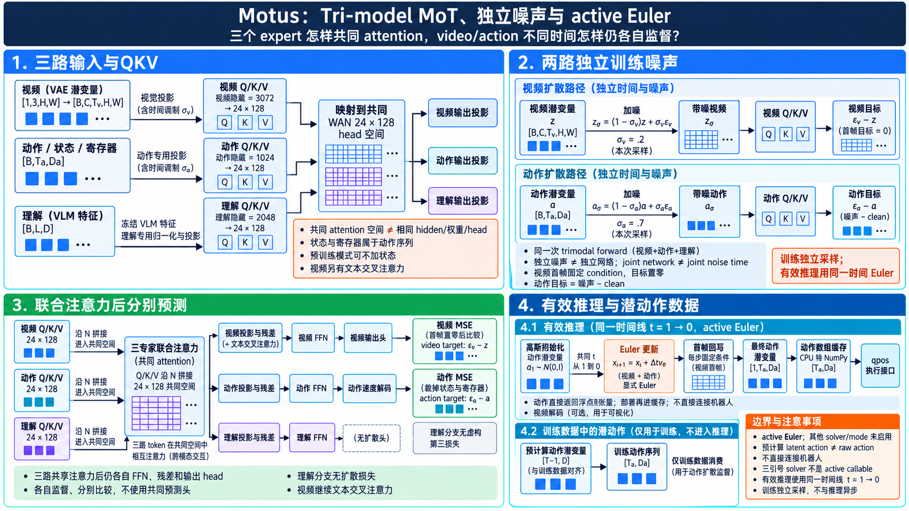
全部细节
图像 ID：F-motus-mechanism；PNG、native receipt 和逐图中文说明由当前任务 accepted manifest 绑定。
图像身份：F-motus-mechanism；审校时间：2026-11-01T10:21:32.348394+00:00；尺寸：1672×941；SHA-256：066b7f65105c41d1c961cf7bcf50ae07bb1a213501c77462d24ab818c28752b4。原生回执（此附件保存在完整本地归档中）。
机器人操作 · 核心论文
Motus：Tri-model MoT、独立噪声与 active Euler
本图回答：三个专家怎样共同attention，视频/动作不同时间怎样仍各自监督？
本单元只是当前任务的科研图合同，当前正式图已生成并通过原生来源记录与视觉审校。下面区分论文事实、固定源码事实、教学算例与未知边界。图中所有可见文字采用短标签，精确来源、版本和哈希只放在本文与 facts.json。
统一视觉合同
纯白不透明背景#FFFFFF；深色文字#1F2937；纯色深蓝标题条#111827；蓝#2563EB表示视觉/条件，青#0891B2表示动作/规划，绿#16A34A表示监督，橙#EA580C表示边界；平面矩形、2px细边框、2px圆角、实线单向箭头、清晰中文无衬线字体、均匀留白；禁止透明、照片、立体块、渐变、阴影、纹理、装饰。
全图阅读顺序
按左上输入、右上核心计算、左下监督或执行、右下逻辑实例与证据边界的顺序阅读。蓝色节点表示视觉或条件，青色节点表示动作或规划，绿色节点表示目标与监督，橙色框表示已知实现限制或尚未闭合的运行事实。所有箭头为实线单向箭头，每条只表示它旁边注明的一种关系；不能把数据流、梯度和控制反馈混成无文字的双向边。
分区1：三路输入与QKV
左上分开画视频、action/state/register 和 understanding/VLM 三路。视频/动作各自时间调制，理解特征经自己的归一化与投影，再把 QKV 映射到共同 WAN 24×128 输出头空间。共同 attention 是交互空间，不代表三路隐藏维度、输入投影或输出输出头完全相同。
三路输入区应给出投影前后的维度变化。视频补丁隐藏维为三千零七十二，动作专家为一千零二十四，理解专家为二千零四十八；它们分别映射到二十四个头、每头一百二十八维的注意力空间。相同头空间只保证能够计算共同注意力，不意味着三路输入隐藏维、权重或输出头相同。状态令牌和寄存器令牌属于动作专家序列，预训练模式可以不加状态，后续模式再把状态插在动作前面。冻结视觉语言模型提供理解特征，理解专家自己的投影和前馈仍是另一层机制，不能用“冻结”概括整条理解分支。视频分支另有文本交叉注意力，不能因为理解特征也含语言就删去文本条件。图中应保持三路各自输入、共同头空间、各自输出投影三层结构。
图内短标签：视频潜变量、动作潜变量、状态与寄存器、冻结VLM特征、视频QKV、动作QKV、理解QKV。
分区2：两路独立训练噪声
中上区域画两套时间/噪声。training_step 分别采样视频/动作 timestep 与 Gaussian 噪声，视频首帧固定为条件，视频目标首帧置零；动作目标仍为噪声−干净。独立 timestep/噪声不是两个互不通信的网络，它们随后进入共同 trimodal attention。
噪声区把训练时间独立与推理时间同步分开说明。训练函数分别为视频和动作采样时间，再分别生成高斯噪声；视频潜变量按各自比例插值，首帧重新覆盖为条件潜变量，首帧目标置零。动作目标是动作噪声减干净动作，它的时间可以与视频不同，但同一次三路前向仍会交换信息。首帧固定只限制视觉条件，不意味着未来视频没有目标，也不意味着动作噪声被清零。教学例可以令视频时间零点二、动作时间零点七，显示两种带噪样本各自形成目标，再进入相同联合前向；不能把两个时间数相加后作为共同时间。图中训练时间抽样线与推理的单一线性时间轴要分区标注，因为公开有效推理函数用同一当前时间更新视频和动作，不能把训练独立采样直接写成该函数已经实现异步推理。
图内短标签：σv、σa、视频独立噪声、动作独立噪声、视频目标εv−z、动作目标εa−a、首帧目标为0。
分区3：联合注意力后分别预测
中心区域必须画 attention 后的分流：每层 process_joint_attention 之后，各专家继续自己的 FFN、AdaLN/残差或 LayerNorm；最后视频输出输出头预测视频 velocity，动作解码器预测动作 velocity，按 mode 去掉 register/状态词元，再分别与各自目标比较。共同attention后分别投影回各自隐藏空间，再使用各自输出头/目标，不能只写共同预测。
核心计算区需要展开注意力之后发生的事情。每层先对视频和动作做各自的时间调制与归一化，理解分支做自己的归一化，再将查询键值送入共同注意力。返回结果分别投影回视频、动作与理解隐藏空间，并接上各自残差；视频继续文本交叉注意力，三路继续各自前馈。最终视频头输出速度并还原补丁，动作解码器输出包含状态和寄存器位置的完整序列，再按模式裁掉这些非动作位置。训练时视频预测的首帧也置零后计算均方误差，动作预测与自己的目标单独比较，再由两个系数组合。理解分支没有在所查函数中另列一项理解重建损失，因此不能给它添加虚构的第三个监督头。共同注意力的三路交换与两路速度目标是不同概念，应在图上分别表达。
图内短标签：三专家联合注意力、视频FFN与残差、动作FFN与残差、理解FFN、视频速度头、动作速度解码、视频MSE、动作MSE。
分区4：有效推理与潜动作数据
右侧画 active 推理：Gaussian 初始化视频/动作，linear t=1→0，显式 Euler，每步固定首帧；视频解码、动作返回张量，部署再转 NumPy/qpos。另列训练数据支路：数据集读取预计算[T−1,D]潜动作，不执行论文 latent-action VAE 的重建/KL训练。triple-quoted solver/mode 不得画成 active callable。
有效推理区应从噪声初始化画到真正的动作消费者。函数以线性时间从一走到零，用下一个时间减当前时间得到负步长，视频和动作分别用速度乘步长进行显式欧拉更新，每步都将首帧回写为固定条件。最终视频经过视觉解码，动作直接以浮点张量返回；部署代码再取批次、搬到中央处理器并转数组进入动作缓存。预计算潜动作数据集属于训练数据消费路线，读取的是时间减一乘潜维度的文件，不能直接连到机器人关节接口。公开部署路径没有在这两者之间执行论文潜动作变分自编码器的重建与散度训练。被三引号包住的其他求解器或模式不是当前可调用路径，只放在橙色边界。数值例说明更新方向，不能给未运行的求解器画性能结论，也不能把独立训练时间宣传成已经启用的异步控制。
图内短标签：高斯初始化、t=1→0、Euler更新、首帧回写、视频与动作解码、预计算动作潜变量、qpos执行接口、其他求解器未启用、训练动作序列、动作数组缓存、动作张量输出。
逐箭头含义
- 从“视频潜变量”指向“视频QKV”表示“视觉投影”。依据 MT-F01：video/action/understanding QKV投影到WAN 24×128共同输出头 space。 边界：禁止把此边画成跨请求永久缓存、无界历史或自动释放协议。
- 从“动作潜变量”指向“动作QKV”表示“动作专用投影”。依据 MT-F01：video/action/understanding QKV投影到WAN 24×128共同输出头 space。 边界：禁止把此边画成跨请求永久缓存、无界历史或自动释放协议。
- 从“冻结VLM特征”指向“理解QKV”表示“理解专用投影”。依据 MT-F01：video/action/understanding QKV投影到WAN 24×128共同输出头 space。 边界：禁止把此边画成跨请求永久缓存、无界历史或自动释放协议。
- 从“视频QKV”指向“三专家联合注意力”表示“24×128共同空间”。依据 MT-F01：video/action/understanding QKV投影到WAN 24×128共同输出头 space。 边界：禁止把此边画成跨请求永久缓存、无界历史或自动释放协议。
- 从“动作QKV”指向“三专家联合注意力”表示“24×128共同空间”。依据 MT-F01：video/action/understanding QKV投影到WAN 24×128共同输出头 space。 边界：禁止把此边画成跨请求永久缓存、无界历史或自动释放协议。
- 从“理解QKV”指向“三专家联合注意力”表示“24×128共同空间”。依据 MT-F01：video/action/understanding QKV投影到WAN 24×128共同输出头 space。 边界：禁止把此边画成跨请求永久缓存、无界历史或自动释放协议。
- 从“三专家联合注意力”指向“视频FFN与残差”表示“视频投影与残差”。依据 MT-F03：joint attention后各专家仍执行自己的FFN/residual/head；视频与动作分别MSE监督。 边界：禁止把此边画成全局下三角、双向无条件可见或所有模式都成立。
- 从“三专家联合注意力”指向“动作FFN与残差”表示“动作投影与残差”。依据 MT-F03：joint attention后各专家仍执行自己的FFN/residual/head；视频与动作分别MSE监督。 边界：禁止把此边画成全局下三角、双向无条件可见或所有模式都成立。
- 从“三专家联合注意力”指向“理解FFN”表示“理解投影与残差”。依据 MT-F03：joint attention后各专家仍执行自己的FFN/residual/head；视频与动作分别MSE监督。 边界：禁止把此边画成全局下三角、双向无条件可见或所有模式都成立。
- 从“视频FFN与残差”指向“视频速度头”表示“视频输出头”。依据 MT-F03：joint attention后各专家仍执行自己的FFN/residual/head；视频与动作分别MSE监督。 边界：禁止把此边画成已经完成的控制稳定性、端到端延迟或部署校准。
- 从“动作FFN与残差”指向“动作速度解码”表示“动作速度解码”。依据 MT-F03：joint attention后各专家仍执行自己的FFN/residual/head；视频与动作分别MSE监督。 边界：禁止把此边画成参数完全相同、静态可达即已执行或论文实测收据。
- 从“视频速度头”指向“视频MSE”表示“首帧置零后比较”。依据 MT-F03：joint attention后各专家仍执行自己的FFN/residual/head；视频与动作分别MSE监督。 边界：禁止把此边画成没有有效掩码的真值泄漏、统一损失或已测误差。
- 从“动作速度解码”指向“动作MSE”表示“裁掉状态与寄存器”。依据 MT-F03：joint attention后各专家仍执行自己的FFN/residual/head；视频与动作分别MSE监督。 边界：禁止把此边画成没有有效掩码的真值泄漏、统一损失或已测误差。
- 从“高斯初始化”指向“Euler更新”表示“共同t从1到0”。依据 MT-F04：active 推理显式Euler t=1→0并固定首帧，输出视频/动作。 边界：禁止把此边画成参数完全相同、静态可达即已执行或论文实测收据。
- 从“Euler更新”指向“首帧回写”表示“每步固定条件”。依据 MT-F04：active 推理显式Euler t=1→0并固定首帧，输出视频/动作。 边界：禁止把此边画成参数完全相同、静态可达即已执行或论文实测收据。
- 从“Euler更新”指向“动作张量输出”表示“最终动作潜变量”。依据 MT-F04：active 推理显式Euler t=1→0并固定首帧，输出视频/动作。 边界：禁止把此边画成已经完成的控制稳定性、端到端延迟或部署校准。
- 从“动作张量输出”指向“动作数组缓存”表示“CPU转NumPy”。依据 MT-F05：LatentActionDataset只把预计算[T−1,D]文件消费为训练动作序列；公开部署另从inference_step得到动作张量，转NumPy后交给qpos接口，这两条路线不得直接连线。 边界：禁止把此边画成跨请求永久缓存、无界历史或自动释放协议。
- 从“动作数组缓存”指向“qpos执行接口”表示“qpos执行接口”。依据 MT-F05：LatentActionDataset只把预计算[T−1,D]文件消费为训练动作序列；公开部署另从inference_step得到动作张量，转NumPy后交给qpos接口，这两条路线不得直接连线。 边界：禁止把此边画成跨请求永久缓存、无界历史或自动释放协议。
- 从“预计算动作潜变量”指向“训练动作序列”表示“仅训练数据消费”。依据 MT-F05：LatentActionDataset只把预计算[T−1,D]文件消费为训练动作序列；公开部署另从inference_step得到动作张量，转NumPy后交给qpos接口，这两条路线不得直接连线。 边界：禁止把此边画成参数完全相同、静态可达即已执行或论文实测收据。
逐事实与精确来源
MT-F01｜Code Fact｜known
video/action/understanding QKV投影到WAN 24×128共同输出头 space。
- 04_repositories/motus/88f6fe30c62af033874b0a2e48ad1cbdaf12cfdf/models/motus.py；SHA-256 ae101a6e7707a7c814cb157a5e873e57de61c71f9c3b80b045ede4912dbfa7e9；行 98–280
- 04_repositories/motus/88f6fe30c62af033874b0a2e48ad1cbdaf12cfdf/models/und_expert.py；SHA-256 42579b3618a4ac2bb7916b75c18ffa08865eabd0be76df874d039f81ead0306b；行 111–164
- 04_repositories/motus/88f6fe30c62af033874b0a2e48ad1cbdaf12cfdf/models/action_expert.py；SHA-256 bc02c51a938390fe7b690a56bdd29a17f1eaf8d9271ae870662ae0ca7436a838；行 89–171
MT-F02｜Code Fact｜known
training_step分别采样视频/动作 timestep与噪声，首帧目标=0。
- 04_repositories/motus/88f6fe30c62af033874b0a2e48ad1cbdaf12cfdf/models/motus.py；SHA-256 ae101a6e7707a7c814cb157a5e873e57de61c71f9c3b80b045ede4912dbfa7e9；行 768–832
MT-F03｜Code Fact｜known
joint attention后各专家仍执行自己的FFN/residual/head；视频与动作分别MSE监督。
- 04_repositories/motus/88f6fe30c62af033874b0a2e48ad1cbdaf12cfdf/models/motus.py；SHA-256 ae101a6e7707a7c814cb157a5e873e57de61c71f9c3b80b045ede4912dbfa7e9；行 832–909
MT-F04｜Code Fact｜known
active 推理显式Euler t=1→0并固定首帧，输出视频/动作。
- 04_repositories/motus/88f6fe30c62af033874b0a2e48ad1cbdaf12cfdf/models/motus.py；SHA-256 ae101a6e7707a7c814cb157a5e873e57de61c71f9c3b80b045ede4912dbfa7e9；行 911–1033
MT-F05｜Code Fact｜known
LatentActionDataset只把预计算[T−1,D]文件消费为训练动作序列；公开部署另从inference_step得到动作张量，转NumPy后交给qpos接口，这两条路线不得直接连线。
- 04_repositories/motus/88f6fe30c62af033874b0a2e48ad1cbdaf12cfdf/data/latent_action/latent_action_dataset.py；SHA-256 034a55b62746e437e9b3a9c5a9e0bb9112a970badd4b5787bc4a5a04bc8800da；行 251–281
- 04_repositories/motus/88f6fe30c62af033874b0a2e48ad1cbdaf12cfdf/inference/robotwin/Motus/deploy_policy.py；SHA-256 948d9aeefb1b1cd54d74db8b9baa7f0b0e153b8276872dcdbb6f14fcebd21709；行 224–280
- 04_repositories/motus/88f6fe30c62af033874b0a2e48ad1cbdaf12cfdf/inference/robotwin/Motus/deploy_policy.py；SHA-256 948d9aeefb1b1cd54d74db8b9baa7f0b0e153b8276872dcdbb6f14fcebd21709；行 426–437
MT-U01｜Unresolved｜unknown
论文多模式与公开active callable不完全一致；部分solver为triple-quoted inactive source。
- 04_repositories/motus/88f6fe30c62af033874b0a2e48ad1cbdaf12cfdf/models/motus.py；SHA-256 ae101a6e7707a7c814cb157a5e873e57de61c71f9c3b80b045ede4912dbfa7e9；行 1035–1352
教学实例与绘图边界
教学例：令 σv=.2、σa=.7，视频/动作带噪样本的噪声占比不同，但同一次 trimodal forward 仍分别输出两路 velocity；视频预测只能与视频目标比较，动作只能与动作目标比较。这说明 joint network 不等于 joint 噪声 time。
教学数字只用于复核输入经过计算如何形成目标或输出，不是论文实验值，也没有导入目标仓库或运行训练。论文中的结果数值只有明确绑定图表、样本协议、模型配置和硬件时才能画在对应区域。未闭合项只能进橙色边界，不得靠箭头连接推成已实现。
不允许产生的解释
- 不要把共同attention画成共同噪声 time
- 不要把潜在动作等同raw 动作
- 不要把triple-quoted solver画成active实现
- 禁止预计算潜动作直接连接qpos
- 禁止把理解专家画成有独立扩散时间
- 禁止把独立训练时间画成有效推理已异步
0. 来源、范围与第一遍 5C
本报告只使用本任务重新下载的 Motus: A Unified Latent Action World Model（22 页 PDF、1768 行 flat TeX、HTML）。作者 Hongzhe Bi、Hengkai Tan、Shenghao Xie、Zeyuan Wang、Shuhe Huang、Haitian Liu 等，单位清华大学、北京大学、地平线机器人。正文 p.1–9，引用 p.9–12，supplementary p.13–22；补充页原印刷编号重新从1开始，本文用PDF页号避免混淆。没有读取旧项目或旧报告，没有写代码事实。原图关键页面已用fitz渲染并检查，source hashes与coverage独立保存。
5C：类型是多模态统一世界/动作模型和预训练配方；上下文是VLA、世界模型、IDM、视频生成、joint prediction割裂且动作标签异构；正确性在于三专家MoT、双时间噪声、latent-action VAE和分阶段数据金字塔形成完整方案，补充给了六个算法，但“理论分析”主要是算法构造，不是统一模式的数学证明；贡献是Tri-model Joint Attention整合Wan/Qwen/action专家，UniDiffuser式调度切五模式，optical-flow 潜在动作预训练，三阶段六层数据；清晰性核心结构可读，但数据、基线、动作维度与任务 score有若干差异需保持未决。定位句：Motus要把视觉理解、未来生成和控制合到一个可切换生成框架，并用光流motion 潜变量让无动作标签视频也能预训练动作专家。
依赖顺序是：p.1–4动机/五种分布 → p.4–6 MoT、校正流、光流VAE、训练/数据 → p.7–8仿真/真实/消融 → p.13–14 训练与五种推理算法 → p.14–17模式能力、LIBERO/VLABench、超参/数据 → p.18–22完整50任务和真实子步骤/定性。关键Figure1–12、Table1–16均在coverage中登记。
1. 背景与作者思考链
现有方法各自建模五个概率：VLA ，WM ，IDM ，VGM ，Joint 。作者认为只用VLM缺动态、只用VGM缺理解，UWM从头训练缺已有先验；统一框架应同时利用语义、视频和控制。
第二个问题是动作空间跨embodiment维度/范围/语义不同，无动作标签人类视频虽有大量motion却无法直接监督动作专家。作者选择optical flow作为像素“delta 动作”：它与具体关节/末端坐标无关，能从连续帧提取统一运动；再以少量真实动作和task-agnostic随机控制监督，把motion 潜变量锚定到可执行动作。这里“光流是动作”是表征直觉，物理上光流也可来自相机运动、遮挡或非机器人对象，不能等同真实因果控制。
设计链是：保存每专家原Transformer以保留专长，在attention层交换特征；让视频/动作各自有噪声时间，实现固定某一模态干净或噪声即可切条件分布；先视频适配，再潜在动作预训，再目标动作微调。这样动作专家也获得预训练，不必只从目标机器人少量示范学起。
2. 架构、数据与端到端流水线
Figure1的三分支是Wan2.2-5B 视频 generative 专家、动作专家、understanding 专家（其输入来自冻结Qwen3-VL-2B最后层词元）。各专家独立Transformer/FFN，QKV进入Tri-model Joint Attention，保留模态专用参数。动作专家包含AdaLN注入rectified-flow时间；understanding 专家用LayerNorm。视频/动作密度不同，Action-Dense Video-Sparse将视频频率设为动作1/6；默认8 帧@5Hz、48 actions@30Hz，span都约1.6s。
光流pipeline：DPFlow算连续帧flow→转RGB flow图→DC-AE编码成4个512维词元→轻量编码器拼成14D 潜在动作→解码器重建flow。VAE训练90% unlabeled重建、10% labeled弱动作监督；labeled含AnyPos/Curobo随机动作采集与标准示范。阶段1只训练VGM，用人类/合成/多机器人视频；阶段2冻结VLM，训练Motus三专家的视频+潜在动作；阶段3用目标 robot实际动作替换潜在动作，轻量动作编码器/解码器适配特定embodiment。
数据金字塔六层：1网页（来自off-the-shelf VGM/VLM先验，不是本任务重训网页）；2 egocentric human；3 仿真；4 task-agnostic image-action；5 multi-robot 轨迹；6 目标 robot。附录Table12列Eg oDex230,949、Agibot728,209、RDT6083、RoboMindFranka9589/Aloha7272、RoboTwin27500、task-agnostic1000、in-house2000。Table13三阶段batch256、AdamW、wd.01、lr8e−5/5e−5/(1–5)e−5、GPUhours约8000/10000/400，未给所有step数和硬件型号。
3. 数学、梯度与五模式切换
3.1 Rectified flow目标（PDF p.4–5；TeX L497–521）
对动作和未来 observation独立采样 ，噪声 ，插值 ，。目标
为条件帧、为未来；为语言。视频/动作分别噪声采样支持conditional/marginal/joint mode。正文公式写uniform时间，Table11写logit-normal sampling，supplement Algorithm1写离散Uniform{1..Tτ}却直接代入(1−τ)，没有归一化说明；这应视为伪代码缩写或配置差异，不能替作者假设。
3.2 Latent 动作 VAE（PDF p.5；TeX L660–684）
重建flow，动作 alignment将潜变量分布拉向真实control，KL限制潜变量空间。Table11设 。重建/对齐梯度进入DC-AE附加编码器/解码器；实际冻结范围和KL posterior/目标分布论文未逐层公开。低维14D只是roughly典型控制尺度，不能保证跨机器人动作一一对应。
3.3 五种推理（PDF p.13–14；TeX L1128–1244）
Algorithm1训练同时预测两种velocity。VGM固定动作为纯噪声Tτ，只去噪未来视频；WM固定动作 clean0，只去噪视频；IDM固定全部当前/未来 observation clean0，只去噪动作；VLA固定未来视频纯噪声，只去噪动作；Joint同时去噪视频/动作。这些mode区别是时间/噪声条件，模型权重相同；VLA与Joint不等价，后者有显式未来视觉参与。论文明确列出五种 mode，不能把论文设计改写成只有两个 mode。生成从Tτ下降到0，更新式写 ，dτ实际符号与调度器需代码确认。
教学数值例子（非论文实验）
设真实action0.6、噪声−0.2、τa=.25，则带噪动作=.75(.6)+.25(−.2)=.4，目标velocity−.8。视频真实.8、噪声.2、τo=.75，则noisyvideo=.25(.8)+.75(.2)=.35，目标−.6。若预测velocity 动作−.7、视频−.5，损失=.01+.01=.02。VLA mode让视频保持纯噪声.2，只把动作从噪声−.2积分到.6；IDM则把视频固定干净.8，让动作读正确未来；Joint两者一起更新。光流VAE若reconloss.04、alignment difference.1、KL2，则总=.04+.01+1e−6×2=.050002。这个算例说明不同噪声条件定义不同mode，不代表论文真实数据。
失败边界：若flow来自摄像头平移而非手臂，潜在动作会把视角变化误当控制；若两个机器人相同flow需相反关节运动，14D alignment可能无法消歧。只有目标平台阶段3和真实状态能锚定具体动力学。
4. 主实验、模式实验和附录
4.1 RoboTwin多任务（PDF p.7、18）
2500clean+25000randomized 示范，50 任务、40K 微调、每task100 试验。Motus88.66clean/87.02random；X-VLA72.80/72.84；π0.5 42.98/43.84；w/oPretrain主表72.8/77.00、附录/图6clean77.56（存在数字差异）；Stage1 82.86/81.86，图6clean82.26（也有差异）。论文摘要+15/+45大致是相对绝对百分点；比较前需绑定该文的基线版本，因为后续论文π0.5在同名RoboTwin表中可能更高。
逐任务并非都提升：StackBlocksThree Stage1 clean99高于Motus91；PlaceDualShoes Stage1 94/94高于93/87；HangingMug仅38/38；大提升如PickDualBottles Stage1 7/17→96/90。平均提升支持预训练配方整体有效，不能单独证明潜在动作而非更多数据/步导致。
4.2 真实平台PSR（PDF p.8、19）
AC-One九任务avg63.22，π0.5 14.79，w/o25.86；Agilex-Aloha2五任务avg59.30，π0.5 48.60，w/o26.60。每task100轨迹训练，多任务每platform一个模型，评价部分闭合 success按子目标权重，不是binary成功。AC-OneFoldTowel14.5、coffee62、water36、cube100、cubeOOD75、grinder92、flowers65、keyboard82.5、oven42；AgilexTowel39、water96、flowers47.5、keyboard80、oven34。不能重复正文“所有任务更优”：Agilex oven34<π0.5 36，keyboard80<w/o85；AC-Onekeyboard82.5<w/o100。
子步骤表说明分数：AC-Oneoven10trials，Motus5完全失败、1到抓面包(.4)、1关门(.8)、3最终(1)，加权(.4+.8+3)/10=.42；Agilexwater10trials，2装水(.8)+8完成(1)得.96。Table15/16还列towel20trial、cube20、OODcube16；主表AC-Onecube baseline46与附录57.5不一致，须留证。PSR增加不意味全部滚动执行成功，FoldTowel没有Motus双折完成仍14.5。
4.3 消融（Figure6）
Stage2 full比w/o提高random10.02点（77→87.02），clean11.10点（77.56→88.66）；Stage1中间81.86/82.26。支持动作专家潜变量预训在这设置的增益，但阶段增加了数据与GPUhours，未单独控制数据量/参数和潜变量对齐；“motion prior因果”仍是作者解释。
4.4 五模式与补充评测基准（p.14–17）
WM质量Table6：Agilex FID9.4571/FVD49.2848/SSIM.88618/LPIPS.05449/PSNR26.1021；AC-One12.9609/73.1325/.84605/.07280/24.0379。只有自模型各平台指标，无强基线，不能宣称WM优于专用生成器。IDM Table7在100随机样本，ResNet18+MLP.044、DINOv2+MLP.122、Motus.014；正文却说基线只输入当前观测而IDM定义包含未来，信息可见性可能不公平。VLA83.90 vsJoint87.02，说明显式joint 未来在该评测基准仍带3.12点收益。
LIBERO-Long97.6与X-VLA97.6并列；只测Long，不是四suite平均。VLABench三任务两个track：IDπ0.5 .43/Motus.48，cross-category .22/.25；SelectFruit Motus .33/.20低于π0.5 .42/.36，平均优势不普适。VGM/WM/Joint定性Figure7–12显示预测与GT/执行行，能检查语义和外观，但不能证明动作物理精度或长时一致性。
5. 超参、限制与PaperForge重建
Table11 动作专家 hidden1024/layers30/heads24/LNε1e−5/GELU；understanding 专家 hidden512/layers30/heads24；VGM5B、VLM2.13B、action641.5M、understanding253.5M，总8B；flow steps10、logitnormal。这些配置解释三专家容量差；理解专家额外模块和Qwen 冻结主干是不同对象，不能混为一个冻结模块。
最脆弱假设是optical-flow 潜变量可跨embodiment保持control相关性。光流是结果而非motor cause，受相机运动、纹理、遮挡、接触力影响；弱监督10%可能只能锚定有限平台。论文展示跨数据预训收益，但没有直接测潜变量可识别性、动作 calibration、flow camera-motion分解或多峰真实控制。MoT共享attention的“避免干扰”也是设计解释，未给专家遗忘/干扰的独立测量。
稳定机制ID：MT-M01 Tri-model Joint Attention；MT-M02 independent time UniDiffuser modes；MT-M03 action-dense/video-sparse；MT-M04 flow 潜变量 VAE/weak alignment；MT-M05 three-stage/six-level data recipe。原则是预训练专家保留专用模块、共享attention和motion representation；具体14D、4×512、1/6、90/10、β1e−6为实现选择。
待代码问题：MT-CODE-01 QKV拼接维度/attention 输出头及专家投影；MT-CODE-02 VLM冻结、understanding/动作训练边界与三阶段检查点；MT-CODE-03 Uniform vslogitnormal、离散τ归一化及dτ符号；MT-CODE-04 flowRGB编码、DC-AE冻结/附加模块、14Dlatent posterior/KL；MT-CODE-05 90/10弱监督掩码与AnyPos/Curobo动作分布；MT-CODE-06 Stage3实际动作替换潜变量的编码器/解码器初始化；MT-CODE-07 8@5Hz/48@30Hz与RoboTwinchunk16的封装接口；MT-CODE-08 π0.5 基线版本/步/输入信息；MT-CODE-09 IDM 基线是否能看未来、100samples划分；MT-CODE-10 w/o/Stage1主表vsFigure6/附录均值冲突；MT-CODE-11 AC-Onecube46vs57.5等PSR统计；MT-CODE-12 五mode的条件/噪声固定和noisyvideoVLA是否仍算视频计算。
6. 最小实验、反例与Take-away
一周最小实验：固定目标机器人小数据，比较actionexpert随机、仅视频预训、flowlatent预训、打乱flow-action alignment四版；固定总步/GPUhours与数据量，测未见对象PSR、actionMSE、flowreconstruction和camera-motion扰动鲁棒性。若潜变量预训练在固定预算下胜出且打乱alignment失效，支持motion-control桥；若仅多数据有效则论文机制解释需收窄。
最强反例是静止手臂+移动相机或动态背景，产生大flow却无需动作；再构造同flow不同关节控制的双embodiment。测潜在动作是否跟相机 motion变化，及目标control误差。它直接挑战“像素delta 动作”可共享的前提。
五句话：Motus以三专家MoT融合视频、理解和动作。独立模态噪声时间使同一权重切换五种分布。光流VAE用90%无标签重建和10%动作监督预训练动作专家。三阶段/六层数据配方在报告的RoboTwin和真实PSR上有高平均分。证据同时显示部分任务失败、基线/指标差异和mode信息可见性需要澄清。
三句话：主要价值是统一生成接口和让动作专家吸收无标签motion。结果支持整套预训练配方的条件性收益。它尚未证明光流等价可识别动作或五模式都优于专用模型。
一句话：Motus把“理解、想象、反推动作、预测后果”接进同一三专家生成模型，用光流潜变量扩展动作预训练，但其可迁移性仍受视觉motion与真实control之间的歧义限制。
6. 五种分布和三专家数据流
Motus 的统一不是把五个概率简单相加，而是用两个可调噪声时间指定条件。VGM 模式把当前观察和语言留作干净条件，未来视频从噪声生成，动作保持噪声；WM 模式将动作设为干净，未来视频从噪声生成；IDM 模式把当前和未来观察设为干净，动作从噪声生成；VLA 模式把未来视频固定为噪声，只从当前观察和语言得到动作；Joint 模式同时去噪视频与动作。只改变 和哪些词元干净/带噪，便能复用三专家和同一网络。
Tri-model Joint Attention 的每一层把三个专家的 QKV 组合到同一个自注意力，随后各专家回到自己的 FFN、AdaLN 或 LayerNorm。视频专家的 AdaLN 注入 ，动作专家的 AdaLN 注入 ，理解专家保留VLM的归一化结构。这样做的优点是视频物理先验、语言语义和动作表示可以互相读；风险是跨专家梯度会把视频专家原有生成能力和动作专家的控制目标互相干扰。论文通过预训练和阶段式学习缓解该风险，但没有给 catastrophic forgetting 的单独测量。
动作密集、视频稀疏策略是词元预算控制。默认视频8帧@5Hz、动作48@30Hz，视频与动作覆盖同一1.6秒时间段，但动作词元约为视频词元六倍；RoboTwin中动作块又写成16，说明部署封装接口会对默认时间采样再分块。若训练和推理的采样率不一致，动作专家看到的每个潜变量 transition可能代表不同物理时长，必须在代码阶段核对。
7. 光流潜在动作的机制与数值回放
相邻图像经过DPFlow得到二维像素位移，转成RGB flow图后由DC-AE压缩为四个512维词元，共2048维。轻量编码器把2048维压成14维潜在动作；解码器从14维重建flow。14维只是在尺度上接近常见机器人动作，不表示每个维度对应一个关节。真实动作对齐项把14维潜变量与动作向量拉近，KL项把分布约束到平滑先验。
设某一flow patch经过DC-AE的干净潜变量为 ，噪声为 ，若 ，插值潜变量是 。真实动作经过归一化为 ，潜在动作预测为 ，alignment平方误差是 。假设flow 重建 MSE=.04、KL=2、，总VAE损失=.043402。这个数字只展示各项如何累加，不是论文报告的训练值。
90%无标签、10%有标签的比例使flow能从大量视频学习，但只有少部分样本告诉它“哪种像素运动对应真实控制”。若视频中的相机运动占主要变化，重建会很好而alignment仍可能把相机平移编码成动作。task-agnostic AnyPos数据用Curobo随机采样目标机器人动作，为这个潜变量提供可行控制锚点；但随机动作分布与任务动作分布不同，比例、动作范围和采样安全仍是代码问题。
8. 三阶段训练及数据金字塔
阶段1只训练视频生成专家，使它适应机器人视频和人类操作中的视觉动态；理解和动作专家不应在这阶段被机器人噪声破坏。阶段2冻结VLM，使用视频、语言和潜在动作训练整个Motus，让动作专家获得跨embodiment运动先验；阶段3把潜在动作替换为目标机器人真实动作，训练新的动作编码器/解码器并微调整体模型。这样的顺序把“知道世界怎样变化”和“如何驱动这台机器”分开。
数据金字塔底层数量大、直接控制信息少，顶层数量小、任务相关性强。网页和人类视频提供动作前后的视觉运动，但没有关节控制；合成数据提供可控场景；多机器人轨迹提供真实执行；task-agnostic随机动作提供动作分布锚点；目标机器人数据最后把motion prior落到具体动力学。论文将等级1到6按数量递减、质量递增排列，但承认等级3与4在不同配置可互换，不能把金字塔顺序理解为严格训练时间。
9. RoboTwin 表格的条件阅读
RoboTwin使用2500 干净和25000 randomized示范，50个任务，所有模型在预训练检查点上40K 步。Motus平均88.66/87.02，Stage1 82.86/81.86，w/o pretrain72.8/77.0，X-VLA72.8/72.84，π0.5约43。Motus在Pick Dual Bottles、Handover Block、Open Microwave、Turn Switch等任务上大幅领先；在Stack Bowls Three等任务不一定占第一。随机化平均略低，但一些任务随机场景更高，说明背景、灯光和物体位置变化不是单一难度轴。
正文主表、Figure6和附录Table14的Stage1/w/o数字存在差异：正文表给w/o72.8/77.0、Stage1 82.86/81.86；Figure6标签看起来是w/o77.0/77.56、Stage1 81.86/82.26；附录完整表可能又按另一批检查点统计。报告保留每个来源，不把它们平均成一个“真实分数”。代码阶段需核对训练随机种子、任务过滤、评估脚本和表格是否使用不同版本。
10. 真实PSR和五种模式的实验意义
AC-One平均63.22、Agilex-Aloha2平均59.30，均按子目标权重计算。Fold Towel的14.5不是14.5%完整成功，而是很多轨迹只抓住或完成一折；Place Cube plate达到100，说明抓取和放置任务较易；Coffee Grinder92和Kettle flowers65显示长序列与液体控制难度不同。Agilex Keyboard上Motus80低于无预训练85，Oven34低于π0.5 36，故“所有任务优于基线”是正文过强概括。
Supplement Table6的世界模型图像质量只给Motus的FID/FVD/SSIM/LPIPS/PSNR，没有同任务的专用视频模型对照；Table7 IDM在100随机样本上MSE.014，ResNet18+.044、DINOv2+.122，但基线输入定义和Motus是否使用未来视觉不完全对称。Table8 VLA83.90低于Joint87.02，说明显式未来视频/动作 joint在该设置有收益；这与Fast-WAM“测试时未来可省略”的结论形成可比较但不矛盾的边界，因为Motus的VLA和Joint使用同一大模型、不同噪声条件。
11. 论文方法与相邻工作差异
与DreamZero相比，Motus通过understanding 专家和潜在动作 VAE扩大多模态先验，但不采用DreamZero的真实观察KV闭环；与LingBot-VA相比，Motus支持五种mode和光流motion 预训练，但没有同样明确的FDM-grounded asynchronous pipeline；与X-WAM相比，Motus没有显式RGB-D深度分支，空间信息通过VLM和视频先验间接获得；与Cosmos Policy相比，Motus以光流潜在动作和三阶段预训练为核心，不提供价值 function的best-of-N规划。不同机制对应不同失败边界，不能用平均success互相替代。
最强反例是固定相机下的动态背景：机器人手臂不动，桌面上的屏幕播放快速视频，DPFlow产生大位移；Motus 潜在动作可能把背景运动当作动作。另一个反例是同一视觉flow由两台形态相反的机器人产生：一台需要左臂内收，另一台需要右臂外展。若没有embodiment条件，14D 潜变量无法决定哪条控制，阶段3只能在目标数据中重新解释。应加入静态背景、相机运动和跨形态配对，测量潜在动作对非因果视觉变化的敏感度。
12. 中文自测
问题一：为什么Tri-model attention不等于把三个模型参数完全共享？因为每个专家仍保留自己的FFN、归一化和投影，只有attention层交换信息。问题二：为什么VGM模式把动作设为噪声，而WM模式把动作设为干净？VGM需要在没有动作标签时根据语言生成未来，WM则研究给定动作会发生什么。问题三：为什么90%光流重建不能直接产生可执行动作？因为重建只监督视觉变化，10%真实动作对齐才把潜变量拉到控制分布。问题四：为什么Stage2比Stage1强不能单独证明潜在动作因果？阶段2同时加入动作专家预训、更多数据和不同优化路径，必须控制数据量和GPU预算。
最小复现实验应固定一台目标机器人和一组未见对象，训练四版动作专家：随机初始化、仅视频 Stage1、flow 潜变量 Stage2、打乱flow-action配对。测动作 MSE、flow 重建、目标任务PSR和静态背景/相机运动鲁棒性。如果只有正确对齐的flow 潜变量能提升PSR，才支持论文提出的motion-control桥；如果打乱配对也同样提升，说明主要收益来自额外预训练容量或数据规模。
10. pwm
原文图表证据（v3 精确裁切）
原文图表卡片：图 2（PDF p.4）
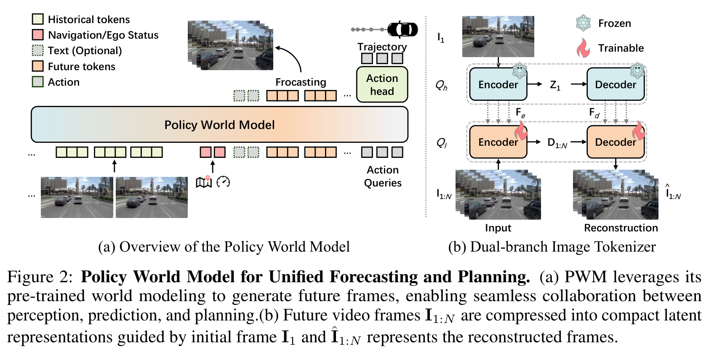
全部细节
这是论文原文图表或页图；具体版本、页码和裁剪信息见邻近中文说明。
- 论文版本：
2510.19654v2；PDF SHA-256：79136388e2078a424e6800a7651d20bb1d6a3e66d9c7a0b6c9a672f4f37680c2；page SHA-256：3ec1b2f50df7b07ccd5b10edbd1eace3de827b385e5b3269f1e64b92771c2886。 - crop bbox（pt）：
[104, 65, 508, 269]；尺寸：[1684, 850]；crop SHA-256：64714ad16e19b1653cda242ff8ded830b6dc27ad2ad09c0d633c797f5e30d4a7。 - 图表说明：Fig.2 左侧以历史词元、导航/ego 状态、未来词元和动作查询组织 Policy World Model，动作输出头读取预测状态输出轨迹；右侧 dual-branch 词元化器以高分辨率首帧和低分辨率未来帧重建视频，颜色区分冻结与可训练部件。
- 进一步分析：PWM 的未来预测进入动作生成接口，不能称为只在训练阶段存在的辅助分支。高/低分辨率两路在空间压缩与未来动态之间取舍，这与 DriveVA 的共享连续 DiT、X-Foresight 的独立渲染器不同；其无动作标签视频预训练提供未来状态先验，再用动作查询对齐规划。
- 证据边界：图未给 future-token 教师强制、文本任务和各损失的 reduction，不能从画出的协作推断所有词元都可互看。视觉重建好不保证轨迹正确，需另看 DFL、world-modeling 和 future-forecast 消融。 当前 visual_status=
precise_crop_and_visual_checked；semantic_status=reviewed/pass；局部建议：将动作查询读取关系限定为论文/代码明确的 future-feature 路径。。历史状态semantic_pending仅对应早期裁剪回执，原文证据边界继续有效。
原文图表卡片：表 2（PDF p.7）
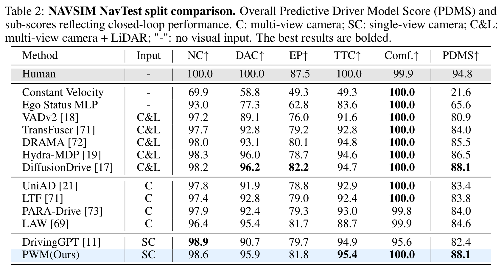
全部细节
这是论文原文图表或页图；具体版本、页码和裁剪信息见邻近中文说明。
- 论文版本：
2510.19654v2；PDF SHA-256：79136388e2078a424e6800a7651d20bb1d6a3e66d9c7a0b6c9a672f4f37680c2；page SHA-256：2e75e5ce224d472b44019d417d920d5de11ab8e915cd5c991a9606d90b7083de。 - crop bbox（pt）：
[104, 321, 510, 537]；尺寸：[1692, 900]；crop SHA-256：78715401f064379d195b3653bf32b008e4797790f934fea8a69ad1e06f5a179f。 - 图表说明：表 2 的 NAVSIM NavTest 区分相机、single 相机和相机+LiDAR。PWM 单前视结果为 NC 98.6、DAC 95.9、EP 81.8、TTC 95.4、Comfort 100、PDMS 88.1；同为单相机的 DrivingGPT PDMS 82.4，表中 Hydra-MDP-8192 为 88.1。
- 进一步分析：单前视达到 88.1 是有意义的信息访问优势，但该总分并未超过表内所有方法；同分还可能来自不同子指标组合。与 DriveVA 后续相同指标表相比，PWM 的机制是显式未来状态协作，而不是共享 flow 联合预测，因此不能用总分替代方法贡献分析。
- 证据边界：图注使用闭环性能措辞，但 NAVSIM score 不能被扩写成真实闭环事故率。训练数据、ego 状态、候选数与主干不统一，表格没有 per-seed 方差，输入不同的基线应保持边界。 当前 visual_status=
precise_crop_and_visual_checked；semantic_status=reviewed/pass；局部建议：无需数值修正；不要把 SC 行与多视角/LiDAR 结果直接作公平性结论。。历史状态semantic_pending仅对应早期裁剪回执，原文证据边界继续有效。
正文：05_analysis\full_reading\pwm\paper_reading_report.md；9309 字符 / 4237 中文字符；SHA-256 4b9dc0654413014a954ad5009ac1d448d7adcab0a5090e79bc21190ddea05ce5。
来源覆盖：05_analysis\full_reading\pwm\source_coverage.json；问题台账：05_analysis\full_reading\pwm\paper_questions_for_code.md。
机器人操作 · 核心论文
X-WAM（2604.26694）逐页论文精读
当前正式机制图与完整图解：F-x-wam-mechanism
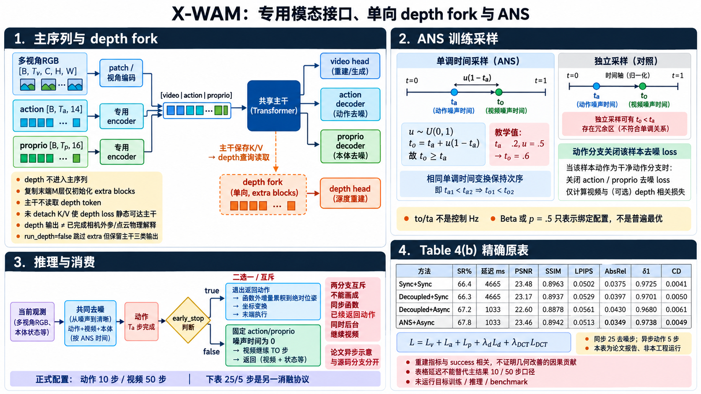
全部细节
图像 ID：F-x-wam-mechanism；PNG、native receipt 和逐图中文说明由当前任务 accepted manifest 绑定。
图像身份：F-x-wam-mechanism；accepted 时间：2026-11-01T21:22:23.471941+00:00；尺寸：1672×941；SHA-256：b94a20100c803927ea210007a79c7eb184a91d3e2e6fe1c39f95587d59b7d305；原生回执（此附件保存在完整本地归档中）；图详解（此附件保存在完整本地归档中）。
机器人操作 · 核心论文
X-WAM：RGB-D/状态/动作、depth fork 与 ANS
本图回答：深度分支怎样单向读取主干，ANS 怎样让动作先于视频完成？
统一视觉合同
纯白不透明背景#FFFFFF；深色文字#1F2937；纯色深蓝标题条#111827；蓝#2563EB表示视觉/条件，青#0891B2表示动作/规划，绿#16A34A表示监督，橙#EA580C表示边界；平面矩形、2px细边框、2px圆角、实线单向箭头、清晰中文无衬线字体、均匀留白；禁止透明、照片、立体块、渐变、阴影、纹理、装饰。
全图阅读顺序
按左上输入、右上核心计算、左下监督或执行、右下逻辑实例与证据边界的顺序阅读。蓝色节点表示视觉或条件，青色节点表示动作或规划，绿色节点表示目标与监督，橙色框表示已知实现限制或尚未闭合的运行事实。所有箭头为实线单向箭头，每条只表示它旁边注明的一种关系；不能把数据流、梯度和控制反馈混成无文字的双向边。
分区1：统一输入与投影
左上区域把RGB、proprio和动作放入主序列，depth只在额外分支与监督侧单列。可标出 proprio=[B,Tp,16]、动作=[B,Ta,14] 的接口形状，潜变量/词元轴随 patch 与块配置变化。动作/proprio 先经过专用编码器，视频经过 patch/VAE 路径；共同主序列用于 attention，但各模态的输入/输出接口不同。图上同时画共同交互空间和专用投影，不能用一个 RGB 输出框覆盖所有模态。
输入区必须区分主序列与深度监督。固定配置的动作是十四维、本体状态是十六维，完整序列形状分别为批次乘动作时域乘动作维、批次乘状态时域乘状态维；构造函数的通用默认维度并不等于该配置。多视角视觉潜变量包含通道、时间、视角与空间轴，经补丁映射及视角嵌入形成视觉令牌。主序列只拼接视觉、动作和本体状态三路，深度不作为额外令牌直接插入这一主序列。动作和状态有各自编码器与解码器，文本经文本映射成为交叉注意力条件。深度真值潜变量位于绿色监督侧，它负责约束额外分支输出，不能被画成策略推理时必须提供的相机深度输入。图内保持统一交互空间与专用接口并存，避免读者误以为所有模态都从同一个视觉头解码。
图内短标签：多视角RGB、深度监督潜变量、本体状态16维、动作14维、状态专用投影、动作专用投影、主序列。
分区2：深度分支与单向条件
中心区域从主干最后 M 个 blocks 分叉出 depth blocks。copy_weights_to_extra_blocks 复制对应主 block 权重；extra 分支在 forward 读取主分支中间 K/V，主分支不读取 depth 词元。未截断梯度的 K/V 使 depth 损失静态依赖主主干；run_depth=false 可以跳过 depth 仍保留动作/proprio。depth 分支输出深度潜变量，但这不自动闭合inverse-depth物理解释或相机外参计算。
深度分支区要画出复制初始化和运行时条件读取的区别。初始化时从主干最后若干层复制权重到额外分支；运行时先取视觉前缀的中间表示建立分支，再在相应层读取主干保存的键值。复制权重不是每一步覆盖参数，主干到分支的键值边也不是双向融合。分支以自己的查询读取条件，主序列不接收深度令牌回流；静态图中没有分离的键值仍可让深度监督影响主干参数，但这只是梯度可达关系，不是实测贡献比例。运行开关关闭深度分支时仍执行完整主干并输出动作与状态，因而动作路径可以省去深度预测。分支头输出的是实现中的深度潜变量结果，逆深度物理解释、相机内外参和点云变换不能被一个“深度头”节点自动证明。
图内短标签：共享主干、复制末端M层、深度分支块、主干K/V条件、深度输出头、动作与状态头、可选深度开关、深度监督损失。
分区3：ANS联合噪声分布
右上区域画两种训练采样散点：独立 decoupled sampling 产生 to<ta 的训练区；ANS 令 to=ta+u(1−ta)，保证 to≥ta，覆盖动作已较干净、视频仍带噪的推理条件。tO/ta 是噪声时间，不是 Hz。若画 Beta 或 p=0.5，必须标作配置/论文设置，不能说它对所有任务理论最优。
训练分布区应给出两种情况而非只画一条不等式。联合分支既包含动作已干净、视觉仍带噪的样本，也包含动作尚未干净时的耦合采样；后一种情况由动作时间加上剩余区间内的高噪声样本得到视觉时间，保证视觉噪声时间不低于动作噪声时间。代码再对两者应用相同单调时间变换，因此次序约束仍保留。干净动作分支同时关闭该样本的动作与状态去噪损失，不能把作为条件的干净动作再重复当作预测任务。独立采样可能覆盖视觉更干净而动作更脏的冗余区域，这与推理后段动作先完成的条件不同。图上的时间轴表示噪声程度，不是控制频率；贝塔参数、干净动作比例及时间变换只在绑定固定配置后展示，不能宣传为所有任务的理论最优值。
图内短标签：动作噪声ta、视频噪声to、独立采样冗余区、联合采样to≥ta、高噪声采样、干净动作分支。
分区4：异步推理与消融
下方画推理曲线：论文示意动作先在Ta步完成；代码early_stop=true时退出，false时动作固定、视频继续到TO。表 4 另外比较 sync/decoupled/ANS 和 depth 架构，记录 SR、延迟、RGB、depth、point-cloud 指标。固定消融的 5步/1033ms与25步/4665ms 与正式部署 10/50-step 不能合为一个数字；几何指标改善与任务成功相关但不构成因果证明。
执行区应明确提前终止与继续生成是互斥选择。动作到达设定步数后，提前终止为真时直接退出循环并返回动作；为假时冻结动作与状态的噪声时间到零，视频继续更新到完整视觉步数。一次同步函数调用里不能凭空画成动作已发送同时后台视频仍在运行，除非另有外部调度证据。论文异步示意与代码这两个分支应并列标识。消融表中同步二十五步对应四千六百六十五毫秒，异步五步对应一千零三十三毫秒；固定配置的十步动作与五十步视觉属于另一组设置。动作消费者还要把左右臂增量累积到绝对位姿并变换坐标，再调用末端执行接口。重建指标与成功率可以并列比较，但不从相关变化直接画出几何改善导致控制成功的因果箭头。
图内短标签：共同去噪、动作Ta步完成、立即发送动作、视频TO步完成、SR、延迟ms、PSNR/SSIM/LPIPS、AbsRel/δ1/CD、提前终止开关、外部末端执行。
逐箭头含义
- 从“多视角RGB”指向“主序列”表示“补丁与视角编码”。依据 XW-F01：forward将视频、动作、proprio拼成主序列，动作/proprio各自编码并解码；代码接口可标proprio 16维、动作 14维，视觉词元数量由配置决定。 边界：禁止把此边画成参数完全相同、静态可达即已执行或论文实测收据。
- 从“本体状态16维”指向“主序列”表示“状态专用投影”。依据 XW-F01：forward将视频、动作、proprio拼成主序列，动作/proprio各自编码并解码；代码接口可标proprio 16维、动作 14维，视觉词元数量由配置决定。 边界：禁止把此边画成参数完全相同、静态可达即已执行或论文实测收据。
- 从“动作14维”指向“主序列”表示“动作专用投影”。依据 XW-F01：forward将视频、动作、proprio拼成主序列，动作/proprio各自编码并解码；代码接口可标proprio 16维、动作 14维，视觉词元数量由配置决定。 边界：禁止把此边画成参数完全相同、静态可达即已执行或论文实测收据。
- 从“主序列”指向“共享主干”表示“联合处理”。依据 XW-F01：forward将视频、动作、proprio拼成主序列，动作/proprio各自编码并解码；代码接口可标proprio 16维、动作 14维，视觉词元数量由配置决定。 边界：禁止把此边画成参数完全相同、静态可达即已执行或论文实测收据。
- 从“复制末端M层”指向“深度分支块”表示“初始化权重”。依据 XW-F02：extra depth blocks从主blocks末端复制初始化。 边界：禁止把此边画成未来真值已观测、几何标定已完成或价值函数已校准。
- 从“共享主干”指向“深度分支块”表示“视觉前缀分叉”。依据 XW-F03：depth extra 分支读取主分支K/V，主分支不读取depth；run_depth控制分支。 边界：禁止把此边画成未来真值已观测、几何标定已完成或价值函数已校准。
- 从“共享主干”指向“主干K/V条件”表示“逐层保存条件”。依据 XW-F03：depth extra 分支读取主分支K/V，主分支不读取depth；run_depth控制分支。 边界：禁止把此边画成跨请求永久缓存、无界历史或自动释放协议。
- 从“主干K/V条件”指向“深度分支块”表示“分支查询读取”。依据 XW-F03：depth extra 分支读取主分支K/V，主分支不读取depth；run_depth控制分支。 边界：禁止把此边画成跨请求永久缓存、无界历史或自动释放协议。
- 从“深度分支块”指向“深度输出头”表示“深度潜变量预测”。依据 XW-F03：depth extra 分支读取主分支K/V，主分支不读取depth；run_depth控制分支。 边界：禁止把此边画成已经完成的控制稳定性、端到端延迟或部署校准。
- 从“深度输出头”指向“深度监督损失”表示“预测量”。依据 XW-F07：固定训练路径以depth预测潜变量与gt_depth_latents做MSE监督；它是额外分支目标，不是主序列新增depth输入。 边界：禁止把此边画成没有有效掩码的真值泄漏、统一损失或已测误差。
- 从“深度监督潜变量”指向“深度监督损失”表示“监督真值”。依据 XW-F07：固定训练路径以depth预测潜变量与gt_depth_latents做MSE监督；它是额外分支目标，不是主序列新增depth输入。 边界：禁止把此边画成没有有效掩码的真值泄漏、统一损失或已测误差。
- 从“动作噪声ta”指向“联合采样to≥ta”表示“剩余区间采样”。依据 XW-F04：ANS训练约束to≥ta，推理先动作后视频。 边界：禁止把此边画成参数完全相同、静态可达即已执行或论文实测收据。
- 从“联合采样to≥ta”指向“共同去噪”表示“匹配训练分布”。依据 XW-F04：ANS训练约束to≥ta，推理先动作后视频。 边界：禁止把此边画成参数完全相同、静态可达即已执行或论文实测收据。
- 从“共同去噪”指向“动作Ta步完成”表示“动作先完成”。依据 XW-F05：固定配置sample_steps=50/action_denoise_steps=10；代码保留部署步数开关；论文Table4明确同步方案25步、异步方案5步，4665ms与1033ms属于该消融表的不同协议。固定forward中early_stop=true在动作完成后退出，false才冻结动作并继续视频；不直接证明同一调用内已dispatch动作且视频后台运行。 边界：禁止把此边画成参数完全相同、静态可达即已执行或论文实测收据。
- 从“动作Ta步完成”指向“提前终止开关”表示“early_stop判断”。依据 XW-F05：固定配置sample_steps=50/action_denoise_steps=10；代码保留部署步数开关；论文Table4明确同步方案25步、异步方案5步，4665ms与1033ms属于该消融表的不同协议。固定forward中early_stop=true在动作完成后退出，false才冻结动作并继续视频；不直接证明同一调用内已dispatch动作且视频后台运行。 边界：禁止把此边画成参数完全相同、静态可达即已执行或论文实测收据。
- 从“提前终止开关”指向“视频TO步完成”表示“false继续视频”。依据 XW-F05：固定配置sample_steps=50/action_denoise_steps=10；代码保留部署步数开关；论文Table4明确同步方案25步、异步方案5步，4665ms与1033ms属于该消融表的不同协议。固定forward中early_stop=true在动作完成后退出，false才冻结动作并继续视频；不直接证明同一调用内已dispatch动作且视频后台运行。 边界：禁止把此边画成未来真值已观测、几何标定已完成或价值函数已校准。
- 从“提前终止开关”指向“外部末端执行”表示“true返回后执行”。依据 XW-F08：部署下游使用者将14维左右臂增量累积成绝对末端位姿、变换坐标，再调用take_action(action_type=ee)。 边界：禁止把此边画成已经完成的控制稳定性、端到端延迟或部署校准。
- 从“视频TO步完成”指向“PSNR/SSIM/LPIPS”表示“重建评价”。依据 XW-F06：Table4同时记录SR、延迟、RGB/depth/point-cloud指标。 论文算法进一步给出Ta<to、k≤ta联合去噪，k>Ta后只更新视频，动作在Ta步后可用。 边界：禁止把此边画成未来真值已观测、几何标定已完成或价值函数已校准。</to、k≤ta联合去噪，k>
逐事实与精确来源
XW-F01｜Code Fact｜known
forward将视频、动作、proprio拼成主序列，动作/proprio各自编码并解码；代码接口可标proprio 16维、动作 14维，视觉词元数量由配置决定。
- 04_repositories/x-wam/72cfb86b33fc5060963ef63412f16439fcfa472f/modules/wan_model.py；SHA-256 4c3441ced031ecef10c322c51fa0e2e1fc2cf14d1a1a4873e2c815e253f79db6；行 567–607
- 04_repositories/x-wam/72cfb86b33fc5060963ef63412f16439fcfa472f/modules/wan_model.py；SHA-256 4c3441ced031ecef10c322c51fa0e2e1fc2cf14d1a1a4873e2c815e253f79db6；行 708–733
- 04_repositories/x-wam/72cfb86b33fc5060963ef63412f16439fcfa472f/configs/model/wan22_5b_sft.yaml；SHA-256 d38ce851c4fdb84d877c08acaf1660f2c4b8f07b4877dd9ad1957ec61202e941；行 9–19
XW-F02｜Code Fact｜known
extra depth blocks从主blocks末端复制初始化。
- 04_repositories/x-wam/72cfb86b33fc5060963ef63412f16439fcfa472f/modules/wan_model.py；SHA-256 4c3441ced031ecef10c322c51fa0e2e1fc2cf14d1a1a4873e2c815e253f79db6；行 817–835
- 04_repositories/x-wam/72cfb86b33fc5060963ef63412f16439fcfa472f/runners/xwam_runner.py；SHA-256 2ea942835398edc3ad3f1db333653c485313ca6a8518a91c0865396f34944ac0；行 41–60
XW-F03｜Code Fact｜known
depth extra 分支读取主分支K/V，主分支不读取depth；run_depth控制分支。
- 04_repositories/x-wam/72cfb86b33fc5060963ef63412f16439fcfa472f/modules/wan_model.py；SHA-256 4c3441ced031ecef10c322c51fa0e2e1fc2cf14d1a1a4873e2c815e253f79db6；行 638–718
- 04_repositories/x-wam/72cfb86b33fc5060963ef63412f16439fcfa472f/runners/xwam_runner.py；SHA-256 2ea942835398edc3ad3f1db333653c485313ca6a8518a91c0865396f34944ac0；行 529–572
XW-F04｜Code Fact｜known
ANS训练约束to≥ta，推理先动作后视频。
- 03_papers/x-wam/2604.26694/paper_tex_flat.tex；SHA-256 e5a26b88df9b89147daad282c3ad34ba0990fba6d98377a9df3d7e02a5d96559；行 179–184；PDF 页 4,6
- 03_papers/x-wam/2604.26694/paper_tex_flat.tex；SHA-256 e5a26b88df9b89147daad282c3ad34ba0990fba6d98377a9df3d7e02a5d96559；行 416–454；PDF 页 6,7
XW-F05｜Code Fact｜known
固定配置sample_steps=50/action_denoise_steps=10；代码保留部署步数开关；论文Table4明确同步方案25步、异步方案5步，4665ms与1033ms属于该消融表的不同协议。固定forward中early_stop=true在动作完成后退出，false才冻结动作并继续视频；不直接证明同一调用内已dispatch动作且视频后台运行。
- 04_repositories/x-wam/72cfb86b33fc5060963ef63412f16439fcfa472f/configs/model/wan22_5b_sft.yaml；SHA-256 d38ce851c4fdb84d877c08acaf1660f2c4b8f07b4877dd9ad1957ec61202e941；行 41–65
- 04_repositories/x-wam/72cfb86b33fc5060963ef63412f16439fcfa472f/runners/xwam_runner.py；SHA-256 2ea942835398edc3ad3f1db333653c485313ca6a8518a91c0865396f34944ac0；行 532–572
- 03_papers/x-wam/2604.26694/paper_tex_flat.tex；SHA-256 e5a26b88df9b89147daad282c3ad34ba0990fba6d98377a9df3d7e02a5d96559；行 365–376；PDF 页 9
- 04_repositories/x-wam/72cfb86b33fc5060963ef63412f16439fcfa472f/runners/xwam_runner.py；SHA-256 2ea942835398edc3ad3f1db333653c485313ca6a8518a91c0865396f34944ac0；行 443–530
XW-F06｜Paper Fact｜known
Table4同时记录SR、延迟、RGB/depth/point-cloud指标。 论文算法进一步给出Ta<to、k≤ta联合去噪，k>Ta后只更新视频，动作在Ta步后可用。</to、k≤ta联合去噪，k>
- 03_papers/x-wam/2604.26694/paper_tex_flat.tex；SHA-256 e5a26b88df9b89147daad282c3ad34ba0990fba6d98377a9df3d7e02a5d96559；行 348–376；PDF 页 9
XW-U01｜Unresolved｜unknown
inverse-depth、pseudo-RGB、相机外参与point-cloud控制校准不在固定adapter闭合。
- 04_repositories/x-wam/72cfb86b33fc5060963ef63412f16439fcfa472f/evaluation/X-WAM/deploy_policy.py；SHA-256 05fa37d9c36b8aeac7229b287152b40a2de761917e054ea9dd7599568c012f37；行 8–189
XW-F07｜Code Fact｜known
固定训练路径以depth预测潜变量与gt_depth_latents做MSE监督；它是额外分支目标，不是主序列新增depth输入。
- 04_repositories/x-wam/72cfb86b33fc5060963ef63412f16439fcfa472f/runners/xwam_runner.py；SHA-256 2ea942835398edc3ad3f1db333653c485313ca6a8518a91c0865396f34944ac0；行 208–258
- 04_repositories/x-wam/72cfb86b33fc5060963ef63412f16439fcfa472f/modules/wan_model.py；SHA-256 4c3441ced031ecef10c322c51fa0e2e1fc2cf14d1a1a4873e2c815e253f79db6；行 638–733
XW-F08｜Code Fact｜known
部署下游使用者将14维左右臂增量累积成绝对末端位姿、变换坐标，再调用take_action(action_type=ee)。
- 04_repositories/x-wam/72cfb86b33fc5060963ef63412f16439fcfa472f/evaluation/X-WAM/deploy_policy.py；SHA-256 05fa37d9c36b8aeac7229b287152b40a2de761917e054ea9dd7599568c012f37；行 90–173
教学实例与绘图边界
教学例：若 ta=0.2 且 u=0.5，则 to=0.2+0.8×0.5=0.6，满足 to≥ta。动作在Ta步骤完成后可dispatch，视频仍带噪并继续到TO。该算例解释ANS的分布约束，不是论文真实控制频率或运行收据。
教学数字只用于复核输入经过计算如何形成目标或输出，不是论文实验值，也没有导入目标仓库或运行训练。论文中的结果数值只有明确绑定图表、样本协议、模型配置和硬件时才能画在对应区域。未闭合项只能进橙色边界，不得靠箭头连接推成已实现。
不允许产生的解释
- 不要将to/ta标为控制Hz
- 不要把depth分支画成已完成相机外参
- 不要把Table4消融延迟写成主结果延迟
0. 来源与第一遍地图
本报告只依据任务目录重新下载的 X-WAM PDF（21 页）、flat TeX（715 行）和 HTML；不读取旧项目/旧报告，也不把代码仓库事实写入这里。论文题目是 Unified 4D World Action Modeling from Video Priors with Asynchronous Denoising，作者 Jun Guo、Qiwei Li、Peiyan Li、Zilong Chen、Nan Sun、Yifei Su、Heyun Wang、Yuan Zhang、Xinghang Li、Huaping Liu，单位清华大学、小米机器人、北大、CASIA。正文 p.1–9，参考文献 p.10–15，算法/训练附录 p.16–18，逐任务和真实机器人 p.19–21。
5C 预审：Category 是带深度分支和异步噪声的统一 4D WAM；Context 是 VLA/WAM 多数只在 2D pixel space 联合建模，缺少几何，同时视频需要多步、动作低维可少步；Correctness 是结构、ANS 混合分布、深度/动作损失和多组消融相互呼应，基线部分直接取自其他论文或重实现，比较条件需谨慎；Contributions 是 Wan2.2-5B 上的多视角 RGB-D/状态/动作统一序列、复制末端 DiT block 的单向深度分支、ANS 训练—推理耦合和 4D/策略/真实机器人验证；Clarity 较好，但相机外参、逆深度范围、深度分支每步开关与评测重建细节仍不完全公开。定位句：X-WAM 试图把一个视频先验模型升级成能执行动作、生成未来 RGB-D 和重建 3D 世界的 4D 模型，同时让低维动作先于高维视频完成去噪。
阅读依赖为 p.1–4 动机/框架；p.5–7 模型、depth adaptation、ANS、损失；p.8–9 三类实验和消融；p.16–18 算法 1/2、数据、超参与基线；p.19–20 50/24 任务；p.21 真实耳机装盒和 limitations。关键图表页 p.2、4、6、7、8、9、17、21 已渲染并人工检查。
1. 研究问题、前人不足和推理链
作者将现有模型分为两类：策略模型直接输出动作，世界模型只模拟未来观察。WAM 已开始联合两者，但主要在 2D 像素空间，无法显式表达深度/空间几何，导致物理不可信未来和难以进行多视角重建。X-WAM 的推理链是：物理世界是三维的；多视角 RGB 已带有几何线索，添加深度监督可使共享主干学空间结构；然而把深度词元拼进序列会令 attention 近似平方增大，按 channel 拼接又破坏 Wan 预训练分布，所以复制最后 M 个 DiT block 做单向深度分支。
第二条链针对效率：未来视频通常需要许多去噪 step，动作/状态低维且早期带噪 representation 已足够。若训练分别独立采样视频和动作 timestep，会出现测试时不可能的 ；因此训练时令视频噪声至少和动作一样高，推理前 步先取得动作，再继续到 步完成视频。作者称这是 ANS 的训练—推理分布一致性，属于设计目标，不是完整分布匹配证明。
2. 完整流水线与符号
模型输入语言 、初始状态 、多视角 RGB ，输出未来 RGB 、深度 、状态 、动作 。Wan2.2-TI2V-5B 因果 VAE 编码 RGB 潜变量 ；状态/动作由可学习 MLP 投影，去噪后由对称解码器恢复。统一序列是
使用双向 full attention，初始 RGB/状态 timestep 固定为 0。默认一张条件化帧 + 状态预测 H=8 个 RGB、8 个状态、K=32 个 actions，动作频率是视频 4 倍。每个 viewpoint 加可学习 view 嵌入，状态/动作用 temporal RoPE。
空间重建依赖相机类别：static 相机 pose 不变；wrist 相机绑定末端，利用固定 hand-eye calibration 和预测末端 pose 得 。这使多视角 RGB-D 可融合为统一点云，但前提是校准矩阵、坐标系和状态预测一致。
教学数值例子（非论文实验）
设动作目标 ，噪声 ，，则 flow interpolation ，目标速度 。若视频 timestep ，视频噪声等级比动作高，行动在第 步完成时视频仍未完全干净。ANS 第二种采样设 ，得到 ，满足 。若网络预测动作 velocity −0.7，动作损失为 。深度分支对 inverse depth 目标 、预测 1.8 的单像素 MSE 为 0.04。总损失按 加权；论文附录配置四个权重都为 1。这里的 D 数值只是教学示例，不是论文的实测深度或真实数据预处理范围，不能从这组数值推出更多实现细节。
失败边界是几何不可观测：若两张 wrist 视图因遮挡都看不到狭槽，RGB 潜变量即使生成流畅视频也无法恢复精确深度，hand-eye 变换只会把错误点云转换到错误位置。另一个边界是长任务：论文明确没有历史 observation 或自回归滚动执行，固定 context 可能无法判断任务阶段。
3. 核心机制与公式
3.1 轻量深度分支（PDF p.5–6；TeX L209–219）
深度图复制 3 次 channel 伪装 RGB，通过同一 VAE 编码。若主 DiT 有 N blocks，复制末端 M 个为 DepthBlocks。共享前 N−M 层输出 H，初始化 ，每层
DepthBlock 通过交叉注意力读取主分支当前输入，主分支不读取 depth 词元，这就是单向注意力。深度分支回归 inverse depth 的 MSE；推理时可以关闭它，不必每个去噪 step 参与。该结构以“RGB 特征足以推深度”为假设，消融表 4 显示 sequence concatenation SR 68.7、延迟 1888 ms，channel concatenation 64.2/1266 ms，interleaved 67.8/1033 ms；去掉深度 supervision 63.0，但不等价于证明 depth 分支的每层交叉注意力是唯一原因。
3.2 ANS 训练和推理（PDF p.6、17；TeX L221–248、393–454）
推理视频和动作/状态分别使用 与 步。前 Ta 步两者共同去噪；动作在 Ta 步即可发送，视频继续到 TO；之后动作被当作干净条件。这把 action-conditioned 世界模型和策略放在同一推理过程。
训练的联合采样是
第一种是 action-conditioned 视频生成；第二种保证 ，并把视频噪声偏向高值。算法 2 先抽 判断分支，独立取三模态高斯噪声，按 插值；推理用 UniPC 分别维持视频和动作调度器。附录具体设 Ta=10、TO=50、CFG=1.0。
3.3 总目标和训练接口
对 m∈{O,s,a}，速度损失
其中 。深度损失 ，总目标
附录配置 ，复制 M=10 个 depth blocks，p=0.5。训练 5,800+ 小时（1,492,026 trajectories、5,873.9 h），预训练 256 H20、batch 2,048、40K 步，评测基准微调 32 H20、batch 128、20K 步、lr 3e−5。状态是双臂 16D absolute（每臂 xyz/quaternion/gripper），动作是 14D relative（每臂 Δposition/Δaxis-angle/gripper）；single-arm 只监督左臂 8/7 维，归一化使用每数据集 q0.01/q0.99 且只缩放、不平移。
4. 实验、图表和证据
4.1 策略评测基准
RoboCasa 24 机器人操作任务平均 SR：π0 62.5、GR00T-N1.5 64.1、UWM 60.8、DreamZero 62.4、Cosmos Policy 67.1、X-WAM 79.2。RoboTwin 2.0 50 任务、50 干净+500 randomized trajectories/任务：π0 65.9/58.4、π0.5 82.7/76.8、UWM 81.7/78.6、GigaWorld 87.0/85.0、Motus 88.7/87.0、X-WAM 89.8/90.7。作者将提升归因于 3D spatial awareness + 大规模预训练，属于基于结果的解释；RoboCasa 许多基线直接取 Cosmos Policy，RoboTwin 多个数字取他人论文，不能视为同机同预算因果实验。
4.2 4D 重建（表 3，PDF p.8）
指标分 RGB PSNR/SSIM/LPIPS，depth AbsRel/δ1，point cloud Chamfer Distance。pixel 指标只算两个 static views，wrist view 因末端姿态误差导致 pixel misalignment，改用 CD/qualitative。X-WAM 为 PSNR 23.46、SSIM .8942、LPIPS .0513、AbsRel .0349、δ1 .9738、CD .0049；DreamZero+DA3 为 21.12/.7788/.1580/.1362/.8594/.0680；Robot4DGen 为 22.67/.8207/.1026/.0736/.9443/.0134；no-depth+DA3 为 23.09/.8916/.0548/.1045/.9089/.0401。这里 X-WAM 的所有表格指标最好，但不同模型/重建管线和仅 static pixel 评估限制了结论。
4.3 深度结构和 ANS 消融（表 4，PDF p.9）
深度 architecture：no depth SR 63.0、延迟 1033；sequence 68.7/1888；channel 64.2/1266；interleaved 67.8/1033，并给出 RGB/depth/CD 数值。ANS：sync 训练+sync infer 66.4/4665 ms；decoupled 训练+sync infer 66.3/4665；decoupled 训练+async 67.2/1033；ANS 训练+async 67.8/1033。故 ANS 主要把行动延迟从 4665 降到 1033（约4.5×），并避免 decoupled async 的 RGB/深度下降。表中“same 5 步”与附录 Ta=10、TO=50 是不同评测基准/消融设置，不能混成统一步数。
4.4 真实 AC One 耳机装盒（表 8，PDF p.21）
3 个 scalability（1/2/3 耳机）和 3 个 generalization（新位置、未见桌布、未见干扰物），每设置 6 试验；单耳颜色各两次，多耳改变颜色顺序。动作块 15，控制 15 Hz；8 去噪步、RTX 5090D 约 300 ms，RTC delay 6 actions。X-WAM progress/time：1 ear 100%(24/24)/41.63 s，2 ear 93.8%(45/48)/113.25，3 ear 68.0%(49/72)/160.72；novel placement 70.8%(17/24)/46.68，unseen tablecloth 66.7%(16/24)/62.01，distractors 75%(18/24)/51.53。XR-0 对应 100/54.66、79.1/115.44、63.9/195.66、58.3/89.63、66.7/65.73、66.7/76.32。作者解释为 3D 几何帮助插入和 ANS/RTC 减少时间；但每格只有 6 episodes，进度括号分母按步骤数展开，不能当作独立试验数。
5. 关键假设、限制与 PaperForge 逻辑
关键假设是单向 depth 分支能从 RGB 隐藏维度推出足够准确的逆深度，且预测状态 + 固定 hand-eye calibration 足以将多视角点云对齐。深度分支不反向影响主分支，故空间监督只能通过共享前段参数间接改善策略。若相机 extrinsics 随时间变化、hand-eye calibration 错误或深度不适定，4D CD 会恶化。
第二个假设是 的联合噪声分布代表真实推理；ANS 消融支持特定 RoboCasa 下的效率/质量折中，但不证明 Beta(1.5,1) 对所有任务最优。第三个限制是固定 context、无历史/AR 滚动执行，作者明确承认长时间跨度任务可能无法判断阶段；约 300 ms 的单块延迟也让控制使用数帧旧预测。
PaperForge 设计链：2D WAM 缺空间 → RGB-D/状态/动作统一 4D sequence → 复制末端 block 的 unilateral depth → ANS 让动作先完成、视频后完成 → 训练使用条件联合噪声 → RoboCasa/RoboTwin/4D/真实插入/消融验证。稳定机制 ID：XW-M01 unified RGB-D/state/action sequence；XW-M02 interleaved unilateral depth；XW-M03 ANS joint timestep；XW-M04 状态+hand-eye 4D fusion；XW-M05 RTC real-time deployment。
待源码问题：XW-CODE-01 M=10 的复制 block 权重初始化/冻结与 unilateral 交叉注意力；XW-CODE-02 inverse depth 编码范围、伪 RGB 归一化与 VAE channel 处理；XW-CODE-03 坐标方向、static/wrist 相机 extrinsics 和点云融合；XW-CODE-04 ANS 调度器的 exact timesteps、Beta sampling、p=0.5 和 t=0 分支；XW-CODE-05 状态/动作归一化 q0.01/q0.99 是否按数据集/臂掩码；XW-CODE-06 策略动作 10/5 vs 实验表 4 “5 步”、Ta=10/TO=50 的配置映射；XW-CODE-07 depth 分支推理开关和训练梯度是否每 step 更新；XW-CODE-08 RTC delay 6 actions 与真实 15Hz 块调度；XW-CODE-09 RoboCasa 基线直接取 Cosmos、DreamZero 替主干的公平性；XW-CODE-10 真实 progress 分子/分母括号与 completion time 过滤规则。
6. 最小实验、反例和 Take-away
一周最小实验：在同一 RoboCasa 小子集训练四版（无 depth、sequence concat、interleaved depth、ANS/非 ANS），固定视频主干和 100 episodes；同时测 SR、1033/1888/4665 延迟、AbsRel、CD。支持 X-WAM 的结果应是 interleaved 在几何和 SR 上提升且延迟不升，ANS 在 action-first 下保持 RGB/depth；若只 RGB 变好而 CD 不变，空间分支的 4D 价值不足。
最强反例是动态手腕相机 calibration 偏移或两个相机都无法看见狭槽：比较真实 depth sensor/显式外参模型与 X-WAM 的点云 CD 和插入成功率。若 RGB PSNR 高但 CD、插入失败，说明 2D fidelity 不能保证 4D control。
五句话：X-WAM 把未来 RGB、depth、状态、动作统一进 Wan2.2-5B。深度分支复制末端 block，只单向读取主分支，避免序列翻倍。ANS 令训练视频 timestep 条件依赖动作 timestep，使动作先于视频完成。仿真 79.2 RoboCasa、89.8/90.7 RoboTwin 和耳机真实任务支持统一 4D 目标。固定短 context、约 300 ms 延迟和小规模真实试验是边界。
三句话：它的独特贡献是显式空间监督和动作/视频异步去噪的组合。消融支持 interleaved depth 与 ANS 在特定设置的速度—质量折中。它没有验证任意动态相机、长时记忆或跨平台几何泛化。
一句话：X-WAM 让 WAM 具备 RGB-D 未来和点云重建能力，并用条件联合噪声让动作先出结果，但 4D 质量仍依赖固定相机几何和短时上下文。
6. 模型输入、输出与时间轴的逐步回放
读 X-WAM 时最容易混淆的是 H 和 K。H=8 表示未来视频、深度和状态各有八个时间位置，K=32 表示动作有三十二个高频位置。四个动作对应一个视频时间，因此动作不是四倍长的任务，而是在同一个八帧时间范围内更密地采样。初始 RGB 和状态是条件，时间步固定为零；未来 RGB、未来状态、未来动作从噪声开始。若把 K 当成八，就会错误计算动作延迟和动作损失；若把初始状态也加噪，模型就不再是以真实 proprioception 为条件的策略。
视频多视角经过 VAE 后以潜变量词元进入主 DiT，状态和动作则经过 MLP 投影到相同隐空间。这里“相同”指可以拼入同一个扩散序列，不代表 RGB、状态和动作的物理单位被强行混成同一数值。状态是双臂末端绝对位姿和夹爪，动作是相对位置、相对轴角和夹爪变化；归一化只做缩放，不做偏移，所以零动作仍表示不移动。单臂数据只监督左臂的八维状态和七维动作，其余通道必须由掩码忽略，否则补零会被模型误认为真实右臂控制。
相机位姿的处理也有明确时间边界。静态相机的外参在一段 episode 内固定，wrist 相机的外参由当前末端位姿和 hand-eye 矩阵计算。未来状态的误差会同时影响动作和点云：即便每个相机的深度都准确，如果末端位姿偏差使 wrist 相机投影错位，点云 Chamfer Distance 仍会变差。这解释了为什么论文只在 static views 上报告 PSNR、SSIM、LPIPS 和深度像素指标，而把 wrist view 的质量放到点云和定性图中。
7. 深度分支的计算和梯度边界
设主 DiT 有 N 个 block，复制最后 M=10 个 block。共享的前 N−M 个 block先处理 RGB、状态和动作；随后主分支继续前向，深度分支从同一隐藏状态开始。第 j 层深度 block可以读取主分支第 j 层的输入，但主分支看不到深度分支。这个单向关系有两个作用：预训练主分支的输入分布不被新 depth 词元改写；深度损失仍能通过共享前段参数回传，促使 RGB 表示保留几何线索。它不是独立的深度网络，也不是把深度图简单拼到 RGB 通道。
如果去掉深度监督，表 4 的 success 从67.8降到63.0，说明几何目标对策略有帮助；如果把深度词元沿序列拼接，success68.7但 latency1888 ms，说明序列长度带来二次 attention 成本；沿 channel 拼接的 latency1266 ms、success64.2，提示输入分布偏移。三种比较同时改变参数和计算路径，不能得出“交叉注意力本身造成全部提升”，但足以支持论文选择 interleaved 分支的工程折中。
推理时深度分支可以关闭，这一点常被忽略。训练需要深度输出作为监督，4D 重建评估需要深度；动作执行只需 RGB、状态和动作，因此关闭深度可以保持 1033 ms 的策略延迟。若实现每个动作去噪 step 都强制计算 depth，便无法复现论文声称的深度分支开关优势。源码阶段应检查 depth 分支的 forward flag、是否仍保留 shared block 的 depth 条件化，以及关闭后 point cloud 评估是否被误用。
8. ANS 的分布解释和推理阶段
ANS 的第一种训练分支令动作 timestep 为零、视频 timestep 均匀采样，代表给定干净动作生成视频；第二种先采样动作 timestep，再在区间 [t_a,1] 采样视频 timestep。假设动作 timestep=.2、Beta变换后的 b=.5，则视频 timestep=.6。训练不会看到视频比动作更干净的异步配置，因为这种配置在推理时也不会出现：动作较早完成，视频仍有噪声。相比独立采样，条件分布减少了无效样本，但也限制了模型看到视频/动作完全独立噪声的范围。
推理前十步是共同去噪阶段，动作和状态在第十步达到干净，机器人可以发送动作；视频还继续到第五十步。这里的“动作已可执行”不是说视频已经正确，而是策略只需要当前动作块。后续视频步骤把干净动作当条件，生成可供世界模型或重建使用的未来 RGB-D。若动作在第十步已经错误，继续视频去噪不能纠正执行结果；ANS 优化的是计算顺序，不是错误恢复机制。
表 4 的同步训练/同步推理用五步设置，延迟4665 ms；decoupled 训练+async 用相同消融框架时降到1033 ms但 RGB PSNR22.60；ANS 训练+async 保持23.46。附录真实评测基准又写 Ta=10、TO=50，说明表格和正式部署不是同一采样配置。读者不能把五步表中的 4.5 倍 speedup 直接写成真实机器人五十步推理速度；应记录实验名称、步数、GPU 和是否包括 VAE/调度器。
9. 4D 指标如何支持或限制结论
PSNR、SSIM、LPIPS比较 static 相机的逐像素画面；AbsRel和δ1比较每个像素的深度；Chamfer Distance比较多视角点云。前三个视觉指标可以在 RGB 很清晰、空间尺度错误时仍较高，因此不能单独证明 3D 重建。Chamfer 依赖深度、相机位姿和点云融合，因而更接近空间一致性，但也会把相机 calibration、状态 prediction 和深度误差混在一起。X-WAM 的 CD=.0049 小于 Robot4DGen .0134 和 no-depth+DA3 .0401，支持 integrated depth 分支的几何优势，但不能把其中每一部分提升拆开。
Depth Anything 3 的对照是两阶段 pipeline：先生成 RGB，再用独立深度估计器补深度。X-WAM 端到端分支共享视频语义和动作状态，因而在相机 pose 与未来帧的条件关系上更一致。反例是如果 RGB 生成质量大幅下降，depth 分支可能只是学习一个错误但自洽的几何；论文没有报告真实深度传感器或人工标注深度，因此绝对误差的物理精度仍受 simulator 真实标注约束。
10. 任务级和真实机器人证据
RoboCasa平均79.2由24个厨房任务构成，低分任务包括 CoffeeSetupMug45、TurnOffStove35、PnPMicrowaveToCounter57；高分任务 CloseDrawer100、CloseSingleDoor96。平均值由不同接触难度、物体数量和相机布局混合而成。RoboTwin 干净/random平均89.8/90.7，低分任务 HangingMug46/55、PutObjectCabinet66/76、PlacePhoneStand75/80；随机化并不总是降低分数，因为有些随机初始姿态比固定姿态更容易。正式报告中应同时保留低分任务，不能只写平均胜出。
耳机装盒的六项真实设置更接近几何控制。Pack1只是抓取和放入一个耳机，X-WAM和XR-0都100%；Pack2/3增加长时错误累积，X-WAM progress93.8/68.0；Novel placements考验外推位置，X-WAM70.8；Unseen tablecloth只与XR-0相同；Unseen distractors提升到75。完成时间只在达到100% progress的 episode 上平均，因此它衡量成功轨迹的效率，不衡量失败轨迹耗时。若把两种时间混成总体平均，会夸大模型速度。
11. 与其他方法和最小反例
与 DreamZero 相比，X-WAM把2D 未来视频扩成RGB-D和point cloud，但采用双向 full attention、固定短窗口，没有 DreamZero 的KV历史；与 LingBot-VA 相比，X-WAM没有因果AR和FDM异步纠偏，却增加了明确深度分支；与 Cosmos Policy 相比，X-WAM把空间深度作为视频/动作共同预测目标，而Cosmos把状态/价值写成潜变量帧、规划依赖滚动执行。与 Motus 相比，X-WAM的空间信息来自多视角深度和相机几何，Motus的跨embodiment信息来自光流潜在动作。
最强反例是动态手腕相机的 calibration 随时间改变。若固定 hand-eye 矩阵偏移两厘米，单视图深度可能仍有低 AbsRel，但融合点云会双影，动作插入会在狭槽边缘失败。应比较 X-WAM、真实深度传感器、显式外参输入三者的 CD、插入成功率和姿态误差。另一个反例是长时折叠任务：当前画面相同，但一个 episode 已完成第一折、另一个尚未开始；固定八帧窗口不能区分历史，说明4D未来质量不等于长期状态记忆。
12. 中文自测
问题一：为什么深度分支不直接把深度词元拼到序列？因为序列长度增加会使 attention 成本近似平方增长，而且深度词元的统计分布与预训练 RGB 词元不同。问题二：为什么 ANS 不是简单把视频步数砍掉？因为训练必须看到动作已经干净而视频仍嘈杂的状态，否则推理会遇到分布外输入。问题三：为什么动作在十步后即可发送？动作是低维控制目标，论文假设它不需要视频像素完全清晰；视频继续去噪是为重建和预测服务。问题四：为什么 X-WAM 仍可能在真实插入失败？深度和点云指标不包含摩擦、力觉和夹爪接触力，视觉几何正确不能保证物理接触成功。
相关论文深读
2311.17918v1
笔记：05_analysis\deep_research\phase3_deep_dive\notes\2311.17918v1\deep-reading.md；5673 字符 / 2169 中文字符；SHA-256 9aa208d71de8ea6f9d36af67896b95e61ff9cdc5e695e5ba280498b14b235b3c。
机器人操作 · 核心论文
SmolWAM：在保留未来预测的前提下压缩 Cosmos Policy
当前正式机制图与完整图解：F-related-smolwam
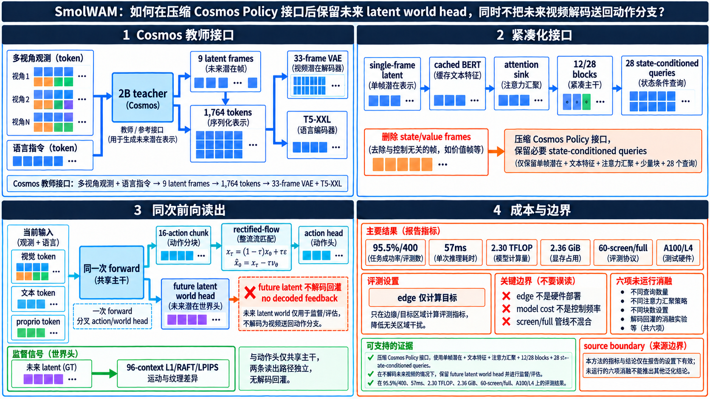
全部细节
图像 ID：F-related-smolwam；PNG、native receipt 和逐图中文说明由当前任务 accepted manifest 绑定。
图像身份：F-related-smolwam；审校时间：2026-11-01T03:55:02.224971+00:00；尺寸：1672×941；SHA-256：afba01dc1395c30e9238303da6ed37160dc33b257a630416cf38de024de861a7。原生回执（此附件保存在完整本地归档中）。
机器人操作 · 核心论文
SmolWAM：压缩 Cosmos Policy 时保留未来预测接口
图的目的
本图回答：在把 Cosmos Policy 从视频生成接口压缩为紧凑 WAM 时，哪些东西被保留，哪些 teacher 布局被删除，以及未来潜变量为什么仍然存在。图面必须沿着“教师接口 → 紧凑布局 → 同次 forward 读出 → 成本和证据边界”阅读。SmolWAM 的关键不是简单减少层数，而是把控制所需的动作与未来潜变量读出从视频生成管线中拆出来，同时保留主干权重、位置和 rectified-flow readout。读者要看见未来 world 输出头是预测接口和诊断信号，不是 decoded 未来 image 再反馈到动作输出头的循环。
分区一：Cosmos 教师接口
教师侧可画九个潜变量帧：blank、状态、wrist/third-person image、动作块、未来状态、未来相机 latents 和价值。每个帧的词元角色必须标注，不要把所有潜变量帧合称为“未来”。教师使用 33-frame clip 的 Wan VAE、512 个 T5-XXL 嵌入和五个去噪步；这些是视频生成成本来源。rectified-flow 公式 x_tau=(1-tau)x_0+tau epsilon 与 x-hat_0=x_tau-tau v_theta 可以作为方向核验卡片，但不要把它画成新的采样实验。
分区二：紧凑化接口
SmolWAM 每个相机 image 只编码一次，使用小 adapter 将 single-frame 潜变量映射到 clip-mode 潜变量；文本改成缓存 BERT features，并用 zero 填充保留 teacher 的 attention sinks。深度剪枝保留 blocks 0–2 和 19–27，共 12/28 blocks；状态条件 queries 将机器人状态加入 28 个动作查询，动作帧的 196 词元不再保留。未来状态/价值帧被删除，但 blank 帧和 image 帧保留，因为论文的 zero-shot screen 显示它们对动作影响不同。图中用虚线删除状态/价值帧，用绿色标记 distillation curriculum，避免暗示这些结构被零样本直接移除。
分区三：同次 forward 读出
SmolWAM 在 tau_max 以固定噪声运行一次主干，从干净 estimate 同时读出动作块与未来 latents。动作 never 条件 on a denoised 未来；未来 latents 只由 world 输出头读取并在训练中监督，论文还明确它们不会被 decode 后重新喂给动作。这个方向必须用一条从同次 forward 分叉到动作输出头和 world 输出头的箭头表示，禁止画成动作 → 未来 decode → 动作的闭环。开放环执行 16-action 块，块 rate 只说明在块边界重新观察的上限，不等于完整控制频率。
分区四：成本与证据边界
主结果表中 SmolWAM 为 0.88B 参数、2.30 TFLOP、57 ms、2.36 GiB，并在 400-episode Full 口径报告 95.5%；另有 60-episode screen、L4/A100、shared GPU 和 earlier 评估 pipeline 的脚注。图上要把 screen 与 full、A100 与 L4、uncontended 与 shared GPU 分开，不能将不同脚注数字相乘。论文标题中的 edge 是面向计算成本的目标，当前 source 没有 edge hardware 或 real-robot deployment。未来输出头的潜变量 L1/RAFT 改善与 LPIPS regression 应并列，说明它捕捉运动方向而不是纹理质量。
需要保留的技术细节
图面至少保留：teacher 的 1,764 词元与 student 的 1,008 词元；12/28 blocks；28 state-conditioned queries；一次 rectified-flow readout；动作与未来潜变量同次读取；95.5%/400 episodes、57 ms、2.30 TFLOP、2.36 GiB；未来潜变量 L1 0.133→0.101、RAFT 1.63→1.43、LPIPS 未改善；planned six ablations not run。数字都必须带协议或测量条件。
不能推出的内容
SmolWAM 的成本数字不等于 edge device 实测，未来 world 输出头也不等于任意长时间跨度的可滚动环境。论文没有真实机器人、RoboCasa、跨 embodiment 或多随机种子证据；60-screen 与 400-full 不是同一评价管线。六项计划消融没有运行，不能画成组件必要性证明。任何把 57 ms 取倒数后写成机器人控制频率的标签都应拒收。
读图时先从左上区确认输入、条件和数据身份，再沿单向箭头检查预测量、监督量和执行量的区别。任何写着未来、潜变量、预测的、world 输出头或 evaluator 的节点都要保留其模型角色，不得因为名称含有“状态”或“成功”就改写为传感器真值或真实闭环结果。训练路径和推理路径可以复用同一主干，但可见信息不同；图中若用同一矩形表示，必须在边框或箭头旁写明训练/推理条件，避免把训练目标泄漏到执行阶段。
每个数字都应带上数据集、试次、硬件、时间单位或评价器。模型参数量、一次前向时延、动作块长度、块执行周期、控制频率和数据生成预算分别回答不同问题，不能把它们通过倒数或比例拼成新的部署结论。若来源只给定性可视化、单个随机种子、screen 或 README 表述，图中应使用“定性”“单次筛查”“文档声明”或“来源边界”等短标签，不能排版成已经完成的统计验证。
橙色边界区必须与主机制有明确断线，写清楚缺少的代码、评测、设备或跨域证据。缺口不是方法被证伪，也不是允许从邻近论文借入实现；它只表示当前完整源包不能支持更强的句子。跨论文图中的相邻位置只表示接口或问题相似，不能画成作者明确继承、时序因果或统一排行榜。最终生成图片后还要对每个节点、箭头、公式、数字和颜色逐项回读；本合同的文字和来源哈希只能证明事实准备完成，不能替代当前任务的原生 PNG 与视觉验收。
源包中的公式、表格和源码行号不是装饰性参考，而是每条箭头的约束。画图时先核对变量的输入输出形状，再核对它属于训练、推理、评价还是仅用于解释。不同颜色只帮助读者追踪语义，颜色本身不能增加一个模块的功能。对跨论文比较，必须把共同术语拆成可检查的定义：未来是预测图像、潜变量、BEV、轨迹还是监督目标，动作是连续块、路点、词元还是外部输入，success 是多少任务和多少试次。只要其中一项没有相同协议，就保留并列事实而不做排序结论。
原始材料入口
原始论文、源码、图表裁剪、哈希和运行回执保存在任务根目录的 trace/evidence 目录；本节只说明如何追溯，不在正文倾倒机器清单。
正式图卡：SmolWAM 压缩 Cosmos Policy 接口与未来潜变量 world 输出头
- 图解重点：2B Cosmos teacher 提供 9 潜变量帧、1,764 词元、33-frame VAE 和 T5-XXL 条件接口；紧凑接口保留 single-frame 潜变量、cached BERT、attention sink、12/28 blocks 与 28 state-conditioned queries，删除状态/价值帧。
- 同次前向：16-action 块经 rectified-flow 与动作输出头输出动作；共享主干分叉出未来潜变量 world 输出头，
x_tau=(1−tau)x_0+tau epsilon、x-hat_0=x_tau−tau v_theta，未来潜变量不解码回灌动作分支。 - 成本与边界：95.5%/400、57ms、2.30 TFLOP、2.36 GiB、60-screen/full、A100/L4 属于报告协议；edge 只是计算目标，model cost 不等于控制频率，六项消融未运行。
- 来源与原生来源记录见 图详解（此附件保存在完整本地归档中） 与 回执（此附件保存在完整本地归档中）。
本报告固定当前任务下载的 arXiv 2610.13740v1，作者 Timi Owolabi、Hikmah Olawore、Frances Adelakun、Ayotomiwa Oyewumi，ML Collective，2026年10月9日公开。PDF共10页：第1—4页正文，第4—8页参考文献，第8—10页为附录A.1—A.6。正文和附录、两张表及六张图均纳入阅读；不把源代码、运行结果或未执行的消融当作论文事实。文中“edge”描述面向低资源部署的目标，主延迟和显存实测平台仍是A100，另有L4阶梯实验和Apple M2 Pro录像，并没有真实机器人部署结果。
论文要回答的是一个很具体的问题：强视频WAM的成本究竟来自必要的控制计算，还是来自视频生成接口。Cosmos Policy的2B主干把机器人状态、当前双相机、动作、未来状态、未来双相机和价值放进同一个潜变量帧序列，使用五步校正流生成。SmolWAM保留预训练主干权重、位置与读出方式，同时改造输入、文本、深度、词元布局和采样步数。它保留未来视觉潜变量预测，但不在控制路径解码图像；因此它既不同于只预测动作的小VLA，也不同于测试时完全跳过未来潜变量的Fast-WAM。
1. 先看teacher究竟在计算什么
Cosmos Policy的DiT有28个block、1.96B参数。LIBERO接口包含九个潜变量帧，每帧14×14=196个词元，总计1764个：blank、当前状态、wrist图像、third-person图像、16步动作块、未来状态、未来wrist图像、未来third-person图像、价值。Wan2.1 VAE按33帧clip编码图像，文本通过512个T5-XXL 嵌入进入交叉注意力。T5-XXL另有4.8B参数，所以只看“2B 策略”会漏掉文本编码器和VAE的部署成本。
teacher采用校正流。令干净目标为x0、噪声为epsilon，混合状态与干净估计为
生成帧从tau_max约0.988开始，对应sigma_max=80。SmolWAM只在这个时刻用固定噪声前向一次，直接从干净估计读出动作和未来潜变量。动作并没有等待一幅已经去噪完成的未来图像作为条件。这解释了单步可以很快，却不意味着所有视频生成任务都只需一步；这里测试的是动作块和短期未来潜变量，评价目标也主要是闭环任务成功。
2. 四项接口修改及其诊断
第一项是单帧视觉潜变量。SmolWAM对每路相机只用54M参数的Wan2.1 编码器编码一帧，再用0.5M adapter映射到teacher clip模式潜变量。直接换成单帧会让teacher动作已归一化 L1从0.0089升到0.038，adapter使它恢复到0.0092。这个诊断说明同一个VAE在clip和单帧模式下的潜变量分布并不完全相同，单纯删去重复帧也可能破坏动作接口。
第二项是文本缓存与attention sink。作者把T5-XXL替换为缓存的BERT-base特征，投影到主干context宽度，并用六层零初始化的vision-to-language层让文本读取图像。关键不是“BERT更小”本身，而是必须保留512个位置的zero 填充。teacher的键/价值投影没有bias，约500个零位置虽然价值为零，却仍在softmax分母中占有质量。截短到32或128个位置会改变非零文本词元权重，teacher在小规模screen上从5/5变为0/5；解析恢复被删去的softmax质量后又回到5/5，填充 attention误差约6×10^-8。这个结果是五个episode的诊断，不能被写成所有语言任务的充分证明。
可以用一个教学例理解sink：若一个有效词元的attention logit为2，三个零填充位置logit为0，则有效词元权重为exp(2)/(exp(2)+3)，约0.711；删去三个零位置后权重变成1。它们没有贡献价值，却改变了所有真实价值的缩放。SmolWAM因此把BERT特征仍补到512位置；论文并不声称填充承载额外语义。
第三项是保留边界的剪枝。作者用block influence=1-cos(h_in,h_out)筛查，发现0、1、25—27影响最大，3—22单独看来接近恒等。但单独安全的删除不能简单组合：跳过1、26或27会在五个episode里全部失败，跳过7、14或20单独不失败，而同时跳过12—15却全失败。正式学生保留0—2和19—27，共12个block、约0.85B 主干参数。它保留两端的接口变换，再通过蒸馏恢复中间层被删后的分布；这不是依靠影响分数自动保证的无损压缩。
第四项是state-conditioned 动作查询。原196-token动作帧被28个查询替代，机器人状态由零初始化MLP加到这些查询上，查询保留原动作位置。模型最终只保留blank和图像帧，以及紧凑动作查询，共1008个词元。零样本删除未来状态和价值对动作误差影响小（0.009到不超过0.019），删除blank升到0.30，删除当前状态升到0.058，把vector 帧直接压成28 词元升到0.21。因而新布局必须学习；不能把“少了状态帧”误写成“机器人状态被丢弃”，它已进入动作查询。
3. 蒸馏课程与损失
作者从Cosmos Policy发布的1700条成功LIBERO示范中每四步采样一次，得到68830条观察。teacher在固定噪声下的一步动作和未来潜变量被缓存，生成缓存耗时单张A100约66分钟。学生同时拟合示范和teacher，而非只模仿teacher：
在状态/价值帧尚存在时，另有0.1权重的对应项。5000步训练的前1000步保留teacher的1764-token布局，后4000步才切到1008-token布局。剪枝改变网络深度，compaction改变输入布局；分阶段能先恢复一项分布变化，再学习另一项。继承权重学习率2×10^-5，新权重10^-4，AdamW、batch32、bf16，单A100训练约3.6小时。3.6 GPU-hours是学生训练开销，不能被解读为从零训练全部视频知识，也不应漏掉teacher缓存或原teacher预训练。
附录训练曲线显示validation 动作 L1最终约0.09，仍是teacher一步误差约0.009的十倍，但学生闭环成功率95.5%。继续训练7500步降低训练损失，却没有改善validation和成功率，Full反而从95.5到94.2。这揭示离线逐动作误差与闭环任务指标并非单调等价；轻微动作偏差可能被后续观察纠正，某些局部很准的动作也可能在第二子目标停滞。
4. 主实验、成本分解与统计口径
LIBERO包含四个suite、每套十任务；每任务10次试验，seed195，共400个episode。输入沿用teacher：224像素wrist与third-person图像、proprioception、16步块并全部开环执行。另有60-episode筛选集：每套三任务、每任务五试验，并刻意包含早期剪枝学生失败较多的任务，因此screen与Full不是同分布，不能直接用60分母的93.3%代替400分母的95.5%。
SmolWAM成功382/400（95.5%，Wilson 95%区间93.0—97.1），teacher为393/400（98.2%，96.4—99.1）。分套为Spatial99.0、Object100.0、Goal94.0、Long89.0；teacher分别97.0、100.0、99.0、97.0。学生在Goal和Long差距更明显，常完成第一子目标后停在第二个。表1的teacher Full与各suite来自较早的L4评价管线，而cost来自A100；Cosmos Policy原论文的98.5%也不是本表重测值。论文承认早期LoRA学生与正式模型同时改变了蒸馏覆盖、全量微调和布局，因此无法单独归因每项贡献。
延迟按单A100-SXM4-40GB、batch1、bf16、文本缓存统计，从观察到动作块，包含预处理和VAE编码；TFLOP使用PyTorch FlopCounterMode且包含attention与VAE 编码器，参数列排除VAE和文本编码器。teacher五步为624ms、42.6TFLOP、7.55GiB；teacher一步加单帧adapter为126ms、7.52TFLOP、4.39GiB，并在60条screen达到100%；SmolWAM为57ms、2.30TFLOP、2.36GiB、0.88B。57ms分为transformer37、VAE13、预处理7ms。比值约624/57=10.95、42.6/2.30=18.52、7.55/2.36=3.20，支持论文11倍、18.5倍和3.2倍说法。
57ms对应约17.7个块/秒，每chunk16动作，算术上为约282动作/秒，但机器人只在块边界获得新观察。论文特别测试执行8步就重查teacher：无论一步还是五步去噪，screen都没有成功，说明未经训练直接截短块会破坏策略。不能把282动作/秒当成282Hz视觉闭环响应。
5. 保留的world 输出头到底证明什么
在96个held-out context上，预测16步后的视觉潜变量相对于复制当前帧，L1从0.133降到0.101（约24%）；RAFT光流endpoint error从1.63降到1.43像素。图2把潜变量仅为展示而解码，场景和未来手臂位置保留，纹理较模糊；LPIPS为0.128，对照copy-frame0.115，未优于复制。这说明world 输出头捕捉运动趋势，不能宣称高保真未来视频，更没有长时滚动执行或物理接触一致性证据。未来潜变量受训练监督并在推理同次前向读出，但控制器不读取解码图像，也不在这些预测上规划。
这与Fast-WAM的共同点是动作不需要先完成未来去噪；差异是SmolWAM仍保留同次前向的未来潜变量读出。它直接继承Cosmos Policy的teacher与rectified-flow接口，不是对Cosmos Policy规划/价值功能的无损复制，因为状态和价值生成帧在compact布局已被去掉。与DreamZero的零样本跨任务策略能力、GAM的几何潜变量或Motus的latent-action组合也不能互换；SmolWAM的实验证据仅覆盖LIBERO蒸馏压缩。
6. 附录中的负结果和未执行项
附录A.1的Pareto图同时绘制60-screen实点和400-Full空点。8-block模型降到0.60B、1.76TFLOP、1.84GiB，screen83.3%；134ms是在共享GPU测得，不能据此说更少层天然更慢。172个最大linear layer做per-channel INT8后存储从1.64降到0.85GiB，screen91.7%，但使用bf16 kernel模拟，65ms同样共享GPU；这不是原生INT8推理加速证明。
A.3给出L4零训练阶梯：原发布管线1.83秒/块，改一步1.22秒，去未来 image decode后0.54秒，再单帧VAE与精确sink校正后0.23秒。五次或十一条单试验 screen没失败只用于筛查，不能解决小幅成功率差异。该管线一步时有0.2秒transformer、0.35秒33帧编码、0.68秒解码未来 image；表1的A100 teacher管线已经不做未来图像解码，所以不能把两个平台的速度倍数相乘。
A.4的SmolWAM-LA加入39M参数、冻结32维潜在动作 model、非对称掩码、latent/arm/gripper三路mixture-of-transformer、四步流匹配和dream forcing。它的离线动作 L1为0.089，接近SmolWAM0.091，但四步采样误差升到0.155，screen仅53.3%，239ms；一步和两步也只恢复63.3/70.0%。latent-action MSE1.15大于代码方差0.64，连预测均值都不如。基于光流、深度、LPIPS的五种奖励微调在300步内令成功降到5.0—16.7%、LPIPS从0.130恶化到0.167—0.177。作者解释可能是共享主干训练时缺少动作锚点，该解释是合理归因假说，尚未独立控制验证。
A.5的单flag消融只有2500步、60条screen，reference78.3%，T5-small、去vision-to-language、去blank、两层V-to-L、T5-XXL、缩blank、text padding64等改动都在参考上下五个episode内。作者明确说这个预算无法区分这些设计，且六个计划消融没有运行，包括去world 输出头、去蒸馏目标、去layout curriculum。不能用这些图证明world 输出头或课程各自必不可少。A.6展示同初态四suite各一任务首/中/末帧，双方均成功；SmolWAM为131、147、154、234步，teacher143、147、138、247步，只是定性例证。
7. 适用边界与代码阶段问题
论文支持“预训练视频WAM可以在蒸馏后显著降低接口、深度和采样成本，并保留短期运动潜变量预测”。它没有真实机器人、RoboCasa、跨embodiment、动态干扰或多随机种子训练结果；long-horizon损失较大，screen特意偏难，teacher评价管线与成本平台也有差别。最脆弱假设是压缩后的潜变量误差仍落在策略可纠正范围内，以及缓存文本和固定噪声对真实分布变化保持稳定。
待源码核对项为SW-CODE-01：单帧adapter训练数据、归一化和clip 潜变量目标；SW-CODE-02：zero 填充与sink校正的精确attention路径；SW-CODE-03：保留block的重编号、position与查询映射；SW-CODE-04：1000步layout切换时optimizer 状态和状态/价值项关闭方式；SW-CODE-05：teacher/student固定噪声、动作 scaling和未来帧时间对齐；SW-CODE-06：A100/L4 timing边界、内存同步与共享GPU；SW-CODE-07：screen任务和全部400个episode初态；SW-CODE-08：world-head 评估的96个context、RAFT与LPIPS预处理。它们是后续代码/评测问题，本报告没有运行或补造答案。
8. 逐项判断证据能支持到哪里
“95.5%成功”有明确的分子分母，是382个成功episode除以400，而不是把四个suite的平均百分比再平均。它还附带Wilson区间93.0—97.1，说明论文至少报告了抽样不确定性；但只有一个随机种子和固定的seed195，不能由区间替代跨随机种子方差。teacher的393/400来自同一任务协议，但表格中的Full数字注明来自较早评价管线；所以比较的强项是相同LIBERO初态和任务集下的闭环趋势，弱项是teacher与student所有底层计时、预处理和随机性并非完全同一实现。
“11倍更快”也有清楚的边界。表1使用A100 batch1、bf16，包含预处理和VAE 编码器；teacher是5次去噪，student是一次前向。student的57ms还要在块边界等待16个动作执行，因而其反应周期由块长度和机器人执行时间共同决定。若只比较DiT网络，不包含VAE和预处理，数字会不同；若改用L4或共享GPU，表格中特定行还有独立脚注。任何部署报告都应同时写硬件、batch、是否缓存文本、是否解码未来 image、是否同步CUDA，不能只抄“17.7 块/s”。
“仍是世界模型”由两个指标支撑：16步未来潜变量相对copy-frame的L1下降24%，RAFT endpoint error下降0.20像素。LPIPS没有改善，解码画面还会模糊，所以它描述的是运动方向和大体姿态，不能推出纹理质量、遮挡重建或接触动力学。未来潜变量在训练时作为蒸馏目标、推理时从同一动作 pass读出；未来视觉没有重新送回动作头。这个结构使world 输出头更像动作相关的预测辅助和可观测性诊断，而不是能自由滚动的生成环境。
三类负结果共同限制了“加组件就更强”的直觉。减少block深度会伤害Long套件；增加latent-action、四步flow和dream forcing会将screen从93.3降到53.3；没有动作项的奖励微调会在300步内把成功压到5.0—16.7%。这些实验没有构成一个统一的因果消融，因为SmolWAM-LA同时改变词元、tower和采样步数，奖励实验还改变训练目标。它们能支持工程判断：在这个小模型和数据规模下，优先保持稳定的动作锚点、短路径和teacher接口，比叠加更复杂的world objective更可靠；不能支持“任何潜在动作或奖励都会失败”。
一个实际阅读例子是LIBERO-Long。student在Long为89%，teacher为97%，差8个百分点；Goal为94%对99%，差5个百分点；Spatial反而99%高于teacher97%。因此压缩损失并非均匀的视觉能力下降，更像长时多子目标中，早期小误差无法被后续观察完全纠正。A.6的四个成功录像不能抵消这一统计结果，因为它每个suite只展示一个初态。相同地，60-episode screen的83.3%（8 blocks）只能说明挑选的困难任务上退化明显，不能换算成400-episode Full。
从方法关系看，SmolWAM把WAM压缩成“单帧观测→一次rectified-flow→动作+未来潜变量”的短链。Cosmos Policy原先把价值和未来状态也作为潜变量帧；SmolWAM删掉它们以后，仍可通过动作查询保留proprioception，并以未来相机 latents保留world 输出头。这个取舍减少词元和采样，但也移除了显式价值读出和未来状态帧，因而不能声称保留teacher全部规划接口。与只预测动作的SmolVLA相比，它多了一组未来潜变量监督；与Fast-WAM相比，它在测试时仍读出world 输出头；与视觉奖励微调相比，它把动作蒸馏放在共享主干的中心，避免奖励单独改写表征。
最后，论文的“edge device”应理解为成本目标，而不是已经完成的端侧实证。2.36GiB峰值和2.30TFLOP使A100/L4上运行更便宜，但主结果没有手机、嵌入式GPU、功耗、温度或持续吞吐测量。INT8行只是用bf16 kernel模拟，存储下降没有转成延迟下降；8-block行还在共享GPU测量。真实机器人也没有执行验证。若要把该工作迁移到具体边缘设备，必须重新核对VAE编码、文本缓存、CUDA同步、量化kernel和16步开环执行，而不能把A100的57ms直接当作端侧控制频率。
SmolWAM的压缩还体现出“控制所需信息”和“视频生成所需信息”的分离。teacher的未来状态、价值和未来 image 帧对完整视频生成有用，但在当前动作读取任务中，删除它们对one-step 动作 error只造成很小变化；blank 帧和当前状态却不可随便删除。前者像一个维持序列布局和条件归属的锚点，后者通过state-conditioned 查询影响动作。由此可以推断，词元数量减少并不等于把每种信息等比例缩短，而是要先用闭环或离线诊断判断哪些槽位在控制路径上真正有因果作用。论文只对少数槽位进行了单项诊断，不能把这一结论外推到其他WAM或其他机器人状态编码。
另一个需要保留的细节是未来潜变量并未解码成控制器输入。图2中的当前、预测的、real三列只是为人类检查而生成，动作头仍从同一次rectified-flow的干净 estimate中读出。这样做避免了图像解码成本，也避免把解码器的纹理错误再次反馈到动作，但同时失去了基于未来图像做显式规划的接口。若未来要进行长时规划，必须另行验证潜变量是否可滚动、误差是否累积，以及未来相机潜变量与真实相机观测的坐标和时间对齐；本论文的96个context、16步预测只覆盖短时 motion forecast。
因此，最稳妥的复述是：SmolWAM证明了一条从2B视频WAM到紧凑潜变量 WAM的蒸馏路线，在LIBERO上保留大部分闭环成功，并以较低A100成本继续预测短期场景运动。它没有证明所有深度裁剪都安全，也没有证明奖励或latent-action增强在小模型上普遍有害；这些现象依赖具体的共享主干、训练预算、screen任务和目标函数。阅读表格时必须同时保留实验平台、分母、块执行方式、是否解码未来 image以及附录脚注，才能把“边缘友好”解释成可复核的工程结论。
Epona 更新深读补充（当前任务版本）
机器人操作 · 核心论文
Cosmos Policy：论文—代码自然中文读者章
本章回答三个相互依赖的问题：机器人动作为什么可以直接写入视频模型的潜变量，世界模型与价值函数怎样改变候选动作的选择，以及固定公开实现究竟闭合到哪一步。Cosmos Policy 复用 Cosmos-Predict2-2B 的视频扩散计算主体，把本体状态、动作块、未来观测和价值数值写入原本承载图像的潜变量帧；条件帧与目标帧由掩码区分，因而同一 DiT 可以承担策略、世界模型和价值三种角色。直接策略只需要动作输出；启用规划时，原始策略检查点生成候选动作，rollout-refined 规划检查点预测后果和价值，再选择得分最高的候选。
论文数字来自任务保存的 Cosmos Policy 版本（PDF 22 页，TeX 03_papers/cosmos-policy/2601.16163/paper_tex_flat.tex）。代码结论绑定提交 18a2accadf4e7a3531e56754102af5a24d2316da。本文没有运行训练、推理、机器人或指标重算；direct 只表示仓库存在文档化入口，requires-code-edit 表示需要封装接口、数据、配置或检查点，不能当成运行成功收据。所有未由固定源码、论文正文或图表直接闭合的内容继续标为边界。
证据怎么读
每一节先说明读者问题，再写机制、数值和下游下游使用者，最后给出源码位置与不能推出的范围。论文图表的数字按原始表格读取；源码只用于确认张量、掩码、配置、状态和调用路径，不从静态代码重算论文指标。追溯入口统一指向本章对应的 bundle 记录，原始图注、设置、source hash 和长源码引文保留在 bundle 中。
十二个 CP-CODE 问题来自全局 70 问题中的 Cosmos 子集；共同论文问题源为 05_analysis/full_reading/cosmos-policy/paper_questions_for_code.md，完整论文读者报告为 05_analysis/full_reading/cosmos-policy/paper_reading_report.md，章节/图表覆盖记录为 05_analysis/full_reading/cosmos-policy/source_coverage.json。这些源文件与固定代码一起限定结论；answered_by_code/resolved 说明静态问题已回答，仍不等于运行复现。
一、机制与真实计算
CP-M01：潜变量帧 injection 与 role-specific 掩码
这条机制回答“论文的潜变量帧 injection 和 role-specific 掩码在固定源码中怎样运行”。原始视频模型只接收起始图像和文本，Cosmos Policy 在 VAE 编码后的序列中插入本体感觉、动作块、未来观测和价值潜变量帧；同一 diffusion 主干通过不同的条件化/损失掩码兼容策略、世界模型和价值。共享参数不等于共享损失、样本来源或梯度。
三相机的论文例子有 11 个潜变量帧：空白首帧、当前 proprioception、当前腕部图像、当前两路第三人称图像、动作块、未来 proprioception、未来腕部图像、未来两路第三人称图像、未来价值。它描述当前时刻与动作块结束时刻 t+K 的两个观测状态，而不是连续预测 11 个时刻；论文明确不使用输入历史。只保留一台第三人称相机时，论文写明可以缩成 7 帧，但是否同时保留腕部相机需要按具体布局核对。
输入与核心计算：blank 潜变量帧、image/proprio/action/value payload、条件化/损失掩码和 SDE 噪声进入 PolicyText2WorldModel。非图像量先逐维归一化到 [-1,+1]，展平后周期复制，填满目标潜变量体积，再覆盖由 blank image 编码得到的 placeholder。policy_video2world_model.py 按当前状态、动作、未来状态和价值的角色构造 V/Q/world 掩码，分别计算 MSE 和诊断用 L1。
CP-F01：复制到潜变量 slot。 对动作块 a∈R^{K×d_act}，先展平成长度 K·d_act 的向量，再重复至 H'×W'×C' 个元素并 reshape；源码摘要可写为
这里 K 是动作块长度，D 是每步动作维度；把 K·D 误写成只有 K 会丢掉动作维度。proprioception 采用同类复制，价值 scalar 复制到整个槽位。图像每帧复制四份，是因为 Wan2.1 VAE 对首帧单独编码、其余图像按四帧时间压缩；四份副本代表同一时刻，不是四个时间步。
CP-F02：共享主干的监督。 初始训练每批 50% 来自示范轨迹策略，另外 50% 来自执行轨迹，再均分为 25% 世界模型和 25% 价值。策略目标是 p(a,s',V(s')|s)，世界模型目标是 p(s',V(s')|s,a)，价值目标是 p(V(s')|s,a,s')。可以把总目标概括为
但实际参与梯度的元素由逐样本条件化/损失掩码决定，不能把共享主干写成每个 batch 对所有槽位施加相同梯度。EDM 去噪恢复干净潜变量：
它是噪声恢复目标，与 DreamZero、Fast-WAM 或 Motus 的 flow-velocity 目标不同。VAE/词元化器在固定代码中 eval 且 requires_grad_(False)，编码和解码走 no_grad；策略损失的梯度主要进入 diffusion model。
输出与边界：共享主干输出 action/future/value 去噪；get_action 读取动作 slot，undo_latent_injection 恢复非图像 placeholder 后才解码未来状态。掩码决定 role 的监督和梯度。50/25/25 与滚动执行阶段的 10/45/45 需要和实际 run 配置对齐；本任务没有训练或推理，因此不能从静态源码宣称实验复现。
源码与论文位置：cosmos_policy/models/policy_text2world_model.py:45-175,370-700、cosmos_policy/models/policy_video2world_model.py:100-392；论文 TeX L631–L702、L928–L949。详见 mechanism_id=CP-M01 原始 bundle（此附件保存在完整本地归档中）。
短引文的计算含义。 结论： CP-M01 让同一扩散主干承担策略、世界模型和价值函数。输入包含空白潜变量帧、图像、本体状态、动作块、价值数值、条件与损失掩码以及 SDE 噪声；动作等数值载荷直接写入潜变量槽位，动作并未先被画成图像。
关键依据： PolicyText2WorldModel 保留注入前的空白潜变量，再把归一化后的动作、本体状态重复写满固定帧，价值标量则铺满整个槽位。CP-F01 可写作 x₀[:,:,t动作] = repeat(a₁:K)，其中 K = 动作块步数 × D，D 是每步动作维数；这里 K 表示展平后的载荷长度。policy_video2world_model 为状态价值 V、动作价值 Q 和世界模型构造不同条件掩码。CP-F02 概括为 L = L动作 + L未来 + L价值，但实际监督位置和各类 MSE、L1 分项由逐样本掩码决定，共享参数不表示每个位置都受相同梯度。输出的动作槽由 get_action 提取，未来图像解码前由 undo_latent_injection 恢复非图像占位潜变量。论文的 50/25/25 与 10/45/45 比例需要分别核对训练角色和数据来源，二者不能因数字相同而合并。 固定源码：04_repositories/cosmos-policy/18a2accadf4e7a3531e56754102af5a24d2316da/cosmos_policy/models/policy_text2world_model.py:45-175,370-700；04_repositories/cosmos-policy/18a2accadf4e7a3531e56754102af5a24d2316da/cosmos_policy/models/policy_video2world_model.py:100-392。
适用边界： 该结论绑定固定提交的潜变量注入与掩码路径。具体论文运行使用的采样比例、检查点和批次有效位置仍需运行清单；本任务未执行目标仓库训练、推理或形状级泄漏测试，实验数字也未重算。
CP-M02：候选动作 extraction、未来状态与价值规划
这条机制回答“动作从潜变量取出后怎样接入未来/价值 chain”。extract_action_chunk_from_latent_sequence 只对完整的动作副本组求平均；不足一组的尾部不参与平均。假设动作槽位含 G 个完整副本，抽取并 reshape 为动作块：
随后使用数据集统计量反归一化，得到机器人动作；价值槽位则在整幅潜变量体积上求均值并还原到 [0,1]。undo_latent_injection 在图像 VAE 解码前把 action/proprio/value 位置换回原 blank 潜变量，非图像 payload 本身不需要 VAE decode。
CP-F03：回报标签。 MDP 的真实状态通常不可完全观测，论文以机器人 proprioception 和相机图像等未来 observation 近似记号中的状态。稀疏终止奖励下，轨迹中间奖励为 0；源码的内部缩放标签是
CP-F04：动作抽取。 对动作潜变量中的完整副本组取平均，再 reshape 回 K×d_act；原 bundle 以 K 简记展平后的 chunk×D 长度，写成论文简化记号为
配置中的 gamma=0.99，动作和本体状态另有逐维归一化；未缩放的 Monte Carlo return、模型价值输出和机器人动作单位不能混写。
规划链：原始策略检查点生成候选动作；规划检查点对每个候选预测未来状态，再预测价值；每个动作查询 3 次未来，每个未来查询 5 次价值，共 15 个价值。majority_mean 用阈值 0.05 将预测分成成功/失败，成功比例 >=0.5 时只平均成功群，否则返回 0，最后 clip 到 [0,1]。代码还实现 average、lcb（mean−std）和 success_vote；实际论文实验使用哪一 scheme 仍由配置决定。
候选进入 best-of-N/价值 ranking，再交给 LIBERO、RoboCasa 或 ALOHA 下游使用者。并行 best-of-N、AR future/value/Q 路径和持久 GPU worker 是推理状态；GPU 通信、OOD calibration、候选共享 bias 和完整端到端延迟没有形成统一回执。
源码与论文位置：cosmos_policy/experiments/robot/cosmos_utils.py:557-703,766-850,851-1236,1691-2250、datasets/dataset_common.py:25-55,167-244；论文 TeX L603–L611、L703–L720。详见 mechanism_id=CP-M02 原始 bundle（此附件保存在完整本地归档中）。
短引文的计算含义。 结论： CP-M02 将“提出动作—预测未来—估计价值—选择候选”串成规划链。输入是动作、未来状态与价值潜变量序列、展平动作长度 K、候选组和归一化统计量；选出的动作最终交给 LIBERO、RoboCasa 或 ALOHA 执行端。
关键依据： extract_action_chunk_from_latent_sequence 只平均完整的 K 元素副本，尾部不足一组的元素不参与；CP-F04 可写为 â = mean{z动作[gK:(g+1)K]，g=0…G−1}，随后恢复动作块形状并反归一化。undo_latent_injection 在图像解码前恢复空白槽，get_action 依次连接动作、未来状态和价值。CP-F03 是终点标签的内部折扣回报：成功时 Rₜ = 2γ^(T−1−t)−1，终点奖励为零时 Rₜ = −1，数据配置 γ = 0.99；数据标签与模型预测值是两层数值。价值聚合函数支持均值、均值减标准差、成功投票和多数均值；判成功阈值严格大于 0.05，多数比例大于等于 0.5，平局因此落入成功组，结果裁剪到 [0,1]。论文规划设置为每动作三次未来、每未来五次价值，共十五次价值查询。 固定源码：04_repositories/cosmos-policy/18a2accadf4e7a3531e56754102af5a24d2316da/cosmos_policy/experiments/robot/cosmos_utils.py:557-703,766-850,851-1236；04_repositories/cosmos-policy/18a2accadf4e7a3531e56754102af5a24d2316da/cosmos_policy/datasets/dataset_common.py:25-55,167-244；04_repositories/cosmos-policy/18a2accadf4e7a3531e56754102af5a24d2316da/cosmos_policy/config/experiment/cosmos_policy_experiment_configs.py:40-60,205-220。
适用边界： 候选数 N、自回归潜变量复用、实际聚合方案和检查点影响排序与开销，固定函数不能证明候选排序已校准；共享系统偏差、分布外排序以及 GPU 通信延迟仍未闭合。本任务未运行候选生成、价值聚合、训练、推理或指标复现。
CP-M03：canonical 策略与 _src action-conditioned 分支边界
仓库另有 _src/predict2/action 路径，它把动作当外部条件，经动作 grouping、MLP、timestep/AdaLN 嵌入和附加掩码 channel 送入 ActionConditionedMinimalV1LVGDiT.forward；推理管线注入 blank 未来帧并解码末帧。canonical 策略则把动作、proprio 和价值直接复用为潜变量帧。两者的 layout、配置目标、检查点和输出下游使用者不同，目录相邻不能证明它们是同一条论文实现。
CP-F05：外部动作条件分支。
m_condition 是条件掩码通道，e_a 是外部动作嵌入；非视频位置可填 zero 掩码。若要把 _src 与 canonical 策略合并，必须联查 state_t、配置目标、检查点、张量布局和推理入口，否则会改变 evidence boundary。
源码与边界：cosmos_policy/_src/predict2/action/networks/action_conditioned_minimal_v1_lvg_dit.py:47-280、_src/predict2/action/inference/inference_pipeline.py:94-355。固定代码只支持两条路径各自的静态行为；本任务没有执行其中任一训练或推理。详见 mechanism_id=CP-M03 原始 bundle（此附件保存在完整本地归档中）。
短引文的计算含义。 结论： CP-M03 区分主策略的潜变量帧注入和 _src/predict2/action 下的外部动作条件分支。两条路径都存在于固定仓库，但它们的动作载荷、张量布局、配置目标、检查点和输出消费者不能合并解释。
关键依据： 主策略把动作、本体状态和价值复用为视频潜变量帧；ActionConditionedMinimalV1LVGDiT.forward 则接收独立动作张量，经分组与 MLP 形成动作嵌入，结合时间与 AdaLN 条件，并拼接条件掩码通道。CP-F05 为 x′ = [x；m条件]，eₐ = MLP(reshape(a))；非视频输入需要零掩码通道。对应推理管线插入空白未来帧并解码末帧，主策略的潜变量复用序列并不由它消费。原始块同时保存了主策略配置的 SDE 参数：混合分布开启，p_mean = 1.3862943611198906，p_std = 1.2，σ最大 = 200、σ最小 = 0.01，均匀区间为 [1.0,85.0]，adjust_video_noise = true。这些是所引配置行的事实，不能移植成外部分支的运行设置。 固定源码：04_repositories/cosmos-policy/18a2accadf4e7a3531e56754102af5a24d2316da/cosmos_policy/config/experiment/cosmos_policy_experiment_configs.py:129-142；04_repositories/cosmos-policy/18a2accadf4e7a3531e56754102af5a24d2316da/cosmos_policy/_src/predict2/action/networks/action_conditioned_minimal_v1_lvg_dit.py:47-280；04_repositories/cosmos-policy/18a2accadf4e7a3531e56754102af5a24d2316da/cosmos_policy/_src/predict2/action/inference/inference_pipeline.py:94-355。
适用边界： 解释某个检查点前仍须联查配置目标、state_t、输入布局和实际推理入口。固定源码只闭合两条分支各自的静态行为；本任务未执行训练或推理，也没有以外部动作条件分支证明主策略的论文结果。
二、十二个代码问题的具体答案
CP-CODE-01：潜变量 replication/填充、four repeat、placeholder、decode averaging？
中文结论：get_action 构造 blank/current/future/action/value sequence；动作 payload 注入潜变量帧，提取时按完整 K·d_act 副本分组并平均，随后反归一化。动作尾部不足一组时不参与平均；数据端可按最后一个真实动作补齐。解码前 undo_latent_injection 恢复 placeholder，避免把数值 payload 当图像。四份图像副本和首 blank 帧来自 VAE 的首帧单独编码与四帧时间压缩。
状态与边界：原记录 answered_by_code；代码已回答，但只闭合 canonical latent-injection 分支；_src action-conditioned 分支独立。
证据位置：cosmos_policy/experiments/robot/cosmos_utils.py:557-648,680-703,851-1080；datasets/dataset_common.py:58-98。
追溯入口：question_id=CP-CODE-01 原始 bundle（此附件保存在完整本地归档中）。
CP-CODE-02：条件化/损失掩码防泄漏？
中文结论：policy_text2world_model.py 建立 per-sample 损失掩码；policy_video2world_model.py 可遮去当前状态/动作，或遮去未来状态，从而改变 V(s′) 与 Q(s,a) 的条件集。干净 prefix 与带噪目标的角色由掩码决定，不能把共享主干解释成天然看到了全部未来标签。
状态与边界：原记录 answered_by_code；固定源码支持掩码构造；是否在运行时完全无泄漏仍需 shape-level leakage test。
证据位置：models/policy_text2world_model.py:414-530；models/policy_video2world_model.py:123-392。
追溯入口：question_id=CP-CODE-02 原始 bundle（此附件保存在完整本地归档中）。
CP-CODE-03：归一化、gamma、return/价值 label？
中文结论：compute_monte_carlo_returns 从 terminal sparse 奖励逆序折扣并缩放到 [-1,1]：成功终点为 2·gamma^(T−1−t)−1，终点为 0 时整条为 −1；配置 gamma=0.99。动作/proprio 使用逐维 min/max 归一化并可乘 scale_multiplier；反变换先除该倍率，再计算 (a+1)(a_max−a_min)/2+a_min。源码对正 terminal 奖励先除以该终点值，因此连续完成分数如何保留绝对大小，需要联查具体数据读取和后处理；不能只凭支持 success_score 就认定标签数学完全等价。真实 terminal 标签来自 HDF5/滚动执行文件，代码闭合了读写路径，不能证明外部标注本身正确。
状态与边界：原记录 answered_by_code；标签数学和配置已静态闭合；真实滚动执行 terminal 来源、连续分数和具体检查点仍需数据回执。
证据位置：config/experiment/cosmos_policy_experiment_configs.py:40-60,205-220；datasets/dataset_common.py:25-55；experiments/robot/cosmos_utils.py:623-678。
追溯入口：question_id=CP-CODE-03 原始 bundle（此附件保存在完整本地归档中）。
CP-CODE-04：50/25/25 与 10/45/45 sampling 粒度？
中文结论：论文初始 batch 是 50% 示范轨迹策略、50% 执行轨迹，再把后者一分为二，形成 50/25/25。配置另有 demonstration_sampling_prob=0.5、success_rollout_sampling_prob=0.5；RoboCasa/ALOHA 的示范轨迹概率为 0.1，在成功与失败滚动执行都存在时形成约 10/45/45。epoch 计数还会按各类可用 step 数调整。
状态与边界：原记录 answered_by_code；静态采样逻辑已闭合；实际样本数取决于滚动执行数据 cardinality，不能只凭比例重建论文运行。
证据位置：config/experiment/cosmos_policy_experiment_configs.py:40-60；datasets/dataset_common.py:167-244。
追溯入口：question_id=CP-CODE-04 原始 bundle（此附件保存在完整本地归档中）。
CP-CODE-05：failure/terminal score data source？
中文结论：滚动执行 reader 从 HDF5 episode attrs 读取 success，成功映射 terminal 奖励 1.0，失败映射 0.0，再建立 success/failure step map 和折扣回报。ALOHA 还可读取连续 success_score 作为 terminal score。代码证明标签进入训练的路径，但不替代对实际 episode 文件、评分者或标注流程的核验。
状态与边界：原记录 answered_by_code；terminal metadata 的代码路径已回答；固定 bundle 不含外部滚动执行文件。
证据位置：experiments/robot/cosmos_utils.py:1428-1515；datasets/dataset_common.py:25-98；datasets/robocasa_dataset.py:328-355；datasets/aloha_dataset.py:545-566。
追溯入口：question_id=CP-CODE-05 原始 bundle（此附件保存在完整本地归档中）。
CP-CODE-06：V(s′)/Q(s,a) 掩码与检查点？
中文结论：滚动执行 refinement 时，遮去 (s,a) 得到只依赖未来状态的 V(s′)，需要先生成未来；遮去 s′ 得到直接依赖当前状态/动作的 Q(s,a)，可跳过未来生成。两者输入维度、推理次数和误差来源不同；配置提供策略/规划检查点路线，但具体论文变体仍需 run manifest。
状态与边界：原记录 answered_by_code；掩码和调用分支静态闭合；变体对应的检查点未由固定 bundle 唯一绑定。
证据位置：models/policy_video2world_model.py:176-354；config/experiment/cosmos_policy_experiment_configs.py:108-149。
追溯入口：question_id=CP-CODE-06 原始 bundle（此附件保存在完整本地归档中）。
CP-CODE-07：majority threshold/ties/ensemble aggregation？
中文结论：aggregate_value_predictions 实现 average、lcb、success_vote 和 majority_mean。成功阈值严格为 >0.05；majority_mean 以成功比例 >=0.5 判多数，因此平局归成功；只平均成功项，空成功集用 clamp 避免除零，最终 clip 到 [0,1]。论文使用的实际 scheme 和检查点仍 config-dependent。
状态与边界：原记录 answered_by_code；aggregation helper 已闭合；论文 planner 的最终调用配置仍是运行边界。
证据位置：experiments/robot/cosmos_utils.py:766-821,1428-1515。
追溯入口：question_id=CP-CODE-07 原始 bundle（此附件保存在完整本地归档中）。
CP-CODE-08：hybrid 70/30、sigma 4/80、EDM preconditioning？
中文结论：HybridEDMSDE 以概率 0.7 从原 log-normal 采样，以概率 0.3 从 Uniform[1.0,85.0] 采样；推理配置使用 sigma_min=4、sigma_max=80，原始 EDM 最小值约 0.002。EDM preconditioning 由 base scaling 路径提供。
状态与边界：原记录 answered_by_code；70/30 与 4/80 是固定配置事实；真实检查点是否采用该 override 仍需 run 回执。
证据位置：config/experiment/cosmos_policy_experiment_configs.py:129-142,182-201；models/policy_text2world_model.py:405-410；modules/hybrid_edm_sde.py:22-92。
追溯入口：question_id=CP-CODE-08 原始 bundle（此附件保存在完整本地归档中）。
CP-CODE-09：parallel/AR sampling 与检查点 route？
中文结论：canonical 采样器支持 previous_generated_latent 和 skip_vae_encoding 复用潜变量。direct 策略并行生成 action/future/value 后只执行动作；规划采用动作→未来→价值或 Q 的自回归 chain。WorkerPoolManager 在多 GPU 上启动持久 worker，以任务/result queue 调度策略与规划检查点。
状态与边界：原记录 answered_by_code；parallel/AR 路径已由源码闭合；实际实验 flags、N、检查点和采样步数来自外部 run 配置。
证据位置：models/policy_text2world_model.py:702-836；experiments/robot/cosmos_utils.py:860-930,1691-1851。
追溯入口：question_id=CP-CODE-09 原始 bundle（此附件保存在完整本地归档中）。
CP-CODE-10：延迟是否含 VAE/T5、GPU 同步、规划 communication？
中文结论：worker 在 GPU0 分别记录动作、未来、价值查询 elapsed，初始化等待上限为 600 秒并使用 multiprocessing queues；固定代码没有输出包含 VAE、T5、GPU communication 和环境交互的端到端延迟回执。
状态与边界：原记录 partly_answered_by_code；component timers 存在；论文所需的延迟 decomposition 仍是边界，不能把单次查询 timer 当作整条机器人闭环延迟。
证据位置：experiments/robot/cosmos_utils.py:1691-1750,1912-2005；05_analysis/code_audits/manipulation/source_crosswalk.md。
追溯入口：question_id=CP-CODE-10 原始 bundle（此附件保存在完整本地归档中）。
CP-CODE-11：ALOHA OOD/同实际耗时步基线？
中文结论：ALOHA 数据集读取 HDF5 的 success 与连续 success_score 并计算 return；评测运行入口记录策略/规划检查点和 best-of-8 设置。固定仓库没有共享实际耗时、step-normalized 的 OOD 基线回执，也没有把各模型相同 48 小时对应的梯度步统一为一个执行器。
状态与边界：原记录 partly_answered_by_code；score source 与 run flags 的代码路径可查；基线 fairness artifact 和完整 OOD run 回执缺失。
证据位置：datasets/aloha_dataset.py:1-180,545-566；experiments/robot/aloha/run_aloha_eval.py:1-180,26-72。
追溯入口：question_id=CP-CODE-11 原始 bundle（此附件保存在完整本地归档中）。
CP-CODE-12：梯度路径/VAE 冻结？
中文结论：Cosmos 词元化器在 eval 状态并 requires_grad_(False)，encode/decode 走 torch.no_grad；get_model 加载检查点后调用 eval。策略训练在 diffusion model 输出上计算 SDE/EDM 损失，因此 VAE 不在策略梯度路径。
状态与边界：原记录 answered_by_code；词元化器/VAE 冻结和 policy-loss 路径已静态闭合；仍未执行动态梯度实验。
证据位置：models/policy_text2world_model.py:240-410；models/policy_video2world_model.py:394-460；tokenizers/wan2pt1.py:280-341；experiments/robot/cosmos_utils.py:264-331。
追溯入口：question_id=CP-CODE-12 原始 bundle（此附件保存在完整本地归档中）。
三、逐图、逐表、逐算法实验
以下保留 bundle 中全部 17 个实验 ID。每项都给出它回答的问题、论文位置、关键数字/条件、源码支持程度、读取规则和边界；原始图注、设置 record 和 source hash 仍在对应 bundle 记录。
共同运行契约：bundle 的 direct 只表示有文档化入口，而其 omission 同时保留“未形成当前条目可靠命令 / unsupported”的旧标记；这两者不能相互消除，本章保留这种来源层级差异。训练候选是 torchrun --nproc_per_node=1 -m cosmos_policy.scripts.train --config=cosmos_policy/config/experiment/<config>.py；LIBERO 候选是 python cosmos_policy/experiments/robot/libero/run_libero_eval.py --config_file cosmos_policy/config/config.py --task_suite_name libero_10；ALOHA 候选是 python cosmos_policy/experiments/robot/aloha/run_aloha_eval.py。这些命令缺少目标表格的检查点、数据根目录、统计文件、模拟器或机器人环境；不能用 LIBERO 的通用候选宣称已复现 RoboCasa 或规划图。
共同源码根目录为 04_repositories/cosmos-policy/18a2accadf4e7a3531e56754102af5a24d2316da/cosmos_policy/。训练和主模型路径包括 scripts/train.py、models/policy_text2world_model.py:45-836、config/experiment/cosmos_policy_experiment_configs.py:40-60,108-201；评测和消费路径包括 experiments/robot/libero/run_libero_eval.py、experiments/robot/robocasa/run_robocasa_eval.py、experiments/robot/aloha/run_aloha_eval.py 与 experiments/robot/aloha/deploy.py。外部模型权重、数据集、分布式环境、检查点映射和 run manifest 是运行前置条件。
cosmos-policy-FIGURE-01：图 fig:figure1
这项实验回答什么：说明 Cosmos Policy 作为无架构改动的视频 foundation model 策略同时输出动作块、未来状态和价值。
论文条件与位置：TeX L567，PDF p.1。论文 label 为 fig:figure1，原 TeX 为 03_papers/cosmos-policy/2601.16163/paper_tex_flat.tex。
关键事实、数字与读取方式：单阶段 post-training；Cosmos-Predict2-2B；多模态、多视角输入；论文主文报告 LIBERO 98.5%、RoboCasa 67.1% 平均成功率，ALOHA 全任务平均 score 93.6%。
源码支持与命令状态：原记录 command_status=direct；固定提交 18a2accadf4e7a3531e56754102af5a24d2316da 的源码只用于入口和下游使用者核对；本任务没有执行。
可追踪候选：torchrun --nproc_per_node=1 -m cosmos_policy.scripts.train --config=cosmos_policy/config/experiment/<config>.py。它只连接入口与配置，未执行，也未单独绑定该图表的精确模型、随机种子和资源。
源码/边界说明：源码入口为 scripts/train.py、models/policy_text2world_model.py:45-836 与 experiment 配置:40-60,108-201；命令候选 torchrun --nproc_per_node=1 -m cosmos_policy.scripts.train --config=cosmos_policy/config/experiment/<config>.py。这些数字来自论文，不能由静态代码重算。
关联问题台账：CP-CODE-12；CP-CODE-09；CP-CODE-06；CP-CODE-03；CP-CODE-11；CP-CODE-10。
追溯入口：experiment_id=cosmos-policy-FIGURE-01 原始 bundle（此附件保存在完整本地归档中）；原始图注、完整设置 record 和 hash 在该 bundle 与来源清单中。
cosmos-policy-FIGURE-02：图 fig:cosmos_policy_latent_diffusion_sequence
这项实验回答什么：解释潜变量帧 injection：图像先经 VAE 词元化，动作/proprio/价值等新模态写入潜变量帧，再用干净条件恢复带噪目标。
论文条件与位置：TeX L665，PDF p.4。论文 label 为 fig:cosmos_policy_latent_diffusion_sequence，原 TeX 为 03_papers/cosmos-policy/2601.16163/paper_tex_flat.tex。
关键事实、数字与读取方式：MDP 为有限时域 ⟨S,A,T,R,H⟩；首帧保持干净，后续潜变量加噪；动作块是多步序列。该图强调无新动作输出头，细节由 CP-M01、CP-CODE-01/02/12 约束。
源码支持与命令状态：原记录 command_status=direct；固定提交 18a2accadf4e7a3531e56754102af5a24d2316da 的源码只用于入口和下游使用者核对；本任务没有执行。
可追踪候选：python cosmos_policy/experiments/robot/libero/run_libero_eval.py --config_file cosmos_policy/config/config.py --task_suite_name libero_10。它只连接入口与配置，未执行，也未单独绑定该图表的精确模型、随机种子和资源。
源码/边界说明：LIBERO/RoboCasa/ALOHA 评测脚本存在，但检查点、统计路径和 simulator 未提供；图中简化了首 blank 帧、四份图像副本等实现细节。
关联问题台账：CP-CODE-12；CP-CODE-09；CP-CODE-06；CP-CODE-01；CP-CODE-11；CP-CODE-10。
追溯入口：experiment_id=cosmos-policy-FIGURE-02 原始 bundle（此附件保存在完整本地归档中）；原始图注、完整设置 record 和 hash 在该 bundle 与来源清单中。
cosmos-policy-FIGURE-03：图 fig:cosmos_policy_aloha_rollouts
这项实验回答什么：展示 ALOHA 真实机器人长时域、高精度、多峰动作任务及滚动执行采集背景。
论文条件与位置：TeX L727，PDF p.6。论文 label 为 fig:cosmos_policy_aloha_rollouts，原 TeX 为 03_papers/cosmos-policy/2601.16163/paper_tex_flat.tex。
关键事实、数字与读取方式：评测覆盖单臂/双臂模拟与真实任务；ALOHA 四任务训练示范轨迹为 80、15、45、45，总计 185；每方法 101 次试验，分布内与 OOD 初始条件并存。
源码支持与命令状态：原记录 command_status=requires-code-edit；固定提交 18a2accadf4e7a3531e56754102af5a24d2316da 有近似入口，但缺少封装接口、数据根目录、检查点或机器人环境；本任务没有执行。
可追踪候选：python cosmos_policy/experiments/robot/aloha/run_aloha_eval.py。它只连接入口与配置，未执行，也未单独绑定该图表的精确模型、随机种子和资源。
源码/边界说明：run_aloha_eval.py 和 deploy.py 存在，但 robot、检查点、实际运行参数在静态 bundle 外；不能把入口存在写成已部署。
关联问题台账：CP-CODE-11；CP-CODE-12；CP-CODE-10；CP-CODE-09；CP-CODE-07；CP-CODE-05。
追溯入口：experiment_id=cosmos-policy-FIGURE-03 原始 bundle（此附件保存在完整本地归档中）；原始图注、完整设置 record 和 hash 在该 bundle 与来源清单中。
cosmos-policy-TABLE-01：表 tab:libero_benchmark_results
这项实验回答什么：比较 LIBERO 四套任务的成功率。
论文条件与位置：TeX L773，PDF p.8。论文 label 为 tab:libero_benchmark_results，原 TeX 为 03_papers/cosmos-policy/2601.16163/paper_tex_flat.tex。
关键事实、数字与读取方式：每 suite 10 任务×50 episodes=500 试验，3 随机种子，共 6000 试验。表格：Diffusion Policy 78.3/92.5/68.3/50.5/72.4；Dita 97.4/94.8/93.2/83.6/92.3；π0 96.8/98.8/95.8/85.2/94.2；UVA Long 90.0；UniVLA 96.5/96.8/95.6/92.0/95.2；π0.5 98.8/98.2/98.0/92.4/96.9；Video Policy Long 94.0；OpenVLA-OFT 97.6/98.4/97.9/94.5/97.1；CogVLA 98.6/98.8/96.6/95.4/97.4；Cosmos 98.1/100.0/98.2/97.6/98.5。训练协议是 40K 梯度步、64 张 H100、global batch 1920、约 48 小时；动作块为 16 timesteps，执行完整块后再查询。论文还报告动作/未来 proprio/未来 wrist/未来 third-person/价值单步 L1 为 0.012/0.007/0.068/0.036/0.007。
源码支持与命令状态：原记录 command_status=direct；固定提交 18a2accadf4e7a3531e56754102af5a24d2316da 的源码只用于入口和下游使用者核对；本任务没有执行。
可追踪候选：python cosmos_policy/experiments/robot/libero/run_libero_eval.py --config_file cosmos_policy/config/config.py --task_suite_name libero_10。它只连接入口与配置，未执行，也未单独绑定该图表的精确模型、随机种子和资源。
源码/边界说明：源码有 LIBERO 评估入口，但表中数字只按论文表格读取；策略训练过滤失败示范轨迹，而 world/价值使用完整未过滤集合。单步 L1 不是多步 diffusion 滚动执行误差。
关联问题台账：CP-CODE-04；CP-CODE-12；CP-CODE-09；CP-CODE-08；CP-CODE-06；CP-CODE-02。
追溯入口：experiment_id=cosmos-policy-TABLE-01 原始 bundle（此附件保存在完整本地归档中）；原始图注、完整设置 record 和 hash 在该 bundle 与来源清单中。
cosmos-policy-TABLE-02：表 tab:robocasa_benchmark_results
这项实验回答什么：比较 RoboCasa 24 个厨房任务的平均成功率和每任务训练数据量。
论文条件与位置：TeX L797，PDF p.8。论文 label 为 tab:robocasa_benchmark_results，原 TeX 为 03_papers/cosmos-policy/2601.16163/paper_tex_flat.tex。
关键事实、数字与读取方式：每任务 50 试验、3 随机种子、24 任务，共 3600 试验；Cosmos 只用 50 human 示范轨迹/任务，而部分基线使用超过 300。表格：GR00T-N1 300→49.6；UVA 50→50.0；DP-VLA 3000→57.3；GR00T-N1+DreamGen 300+10000 synthetic→57.6；GR00T-N1+DUST 300→58.5；UWM 1000→60.8；π0 300→62.5；GR00T-N1.5 300→64.1；Video Policy 300→66.0；FLARE 300→66.4；GR00T-N1.5+HAMLET 300→66.4；Cosmos 50→67.1。训练协议为 45K 梯度步、32 张 H100、global batch 800、约 48 小时；动作块为 32 timesteps，测试时执行 16 步后重新查询；单步 L1 为动作 0.016、未来 proprio 0.007、未来 wrist 0.084、未来 third-person 0.048、价值 0.007。
源码支持与命令状态：原记录 command_status=direct；固定提交 18a2accadf4e7a3531e56754102af5a24d2316da 的源码只用于入口和下游使用者核对；本任务没有执行。
可追踪候选：python cosmos_policy/experiments/robot/libero/run_libero_eval.py --config_file cosmos_policy/config/config.py --task_suite_name libero_10。它只连接入口与配置，未执行，也未单独绑定该图表的精确模型、随机种子和资源。
源码/边界说明：RoboCasa 只使用 unseen object instances，五个 scene 中两种 style 在训练中未出现；成功率和数据量绑定该协议，单步 L1 不是滚动执行误差，不能跨论文直接比较。
关联问题台账：CP-CODE-05；CP-CODE-06；CP-CODE-04；CP-CODE-12；CP-CODE-11；CP-CODE-10。
追溯入口：experiment_id=cosmos-policy-TABLE-02 原始 bundle（此附件保存在完整本地归档中）；原始图注、完整设置 record 和 hash 在该 bundle 与来源清单中。
cosmos-policy-FIGURE-04：图 fig:aloha_performance_results
这项实验回答什么：报告 ALOHA 四任务完成百分比 score，并与其它策略对比。
论文条件与位置：TeX L837，PDF p.8。论文 label 为 fig:aloha_performance_results，原 TeX 为 03_papers/cosmos-policy/2601.16163/paper_tex_flat.tex。
关键事实、数字与读取方式：score 是任务完成度而非二元成功率；Cosmos full score 为 put-X 100.0、fold-shirt 99.5、candies 89.6、ziploc 85.4，平均 93.6；π0.5 为 98.3、99.5、95.2、61.5，平均 88.6。Cosmos 在三项最高或并列最高，但 candies 低于 π0.5。
源码支持与命令状态：原记录 command_status=requires-code-edit；固定提交 18a2accadf4e7a3531e56754102af5a24d2316da 有近似入口，但缺少封装接口、数据根目录、检查点或机器人环境；本任务没有执行。
可追踪候选：python cosmos_policy/experiments/robot/aloha/run_aloha_eval.py。它只连接入口与配置，未执行，也未单独绑定该图表的精确模型、随机种子和资源。
源码/边界说明：ALOHA 使用两台 ViperX 300S、三相机、25 Hz 控制器、50-step 动作块（2 秒），执行完整块后重新查询；机器人和检查点参数未在 bundle 中闭合。
关联问题台账：CP-CODE-11；CP-CODE-05；CP-CODE-01；CP-CODE-12；CP-CODE-10；CP-CODE-09。
追溯入口：experiment_id=cosmos-policy-FIGURE-04 原始 bundle（此附件保存在完整本地归档中）；原始图注、完整设置 record 和 hash 在该 bundle 与来源清单中。
cosmos-policy-FIGURE-05：图 fig:pi05_openvlaoft_aloha_rollouts
这项实验回答什么：解释 π0.5 与 OpenVLA-OFT+ 在高精度、多峰动作任务中的代表性失败。
论文条件与位置：TeX L848，PDF p.9。论文 label 为 fig:pi05_openvlaoft_aloha_rollouts，原 TeX 为 03_papers/cosmos-policy/2601.16163/paper_tex_flat.tex。
关键事实、数字与读取方式：π0.5 在 ziploc 任务可能漏抓 slider，或左臂未牢固抓住袋子；OpenVLA-OFT+ 可能伸向两个糖果之间而非一个糖果。作者推测 L1 动作 regression 在多峰分布中产生平均动作；这是该失败例的解释，不是普遍因果定律。
源码支持与命令状态：原记录 command_status=requires-code-edit；固定提交 18a2accadf4e7a3531e56754102af5a24d2316da 的源码只用于入口和下游使用者核对；本任务没有执行。
可追踪候选：python cosmos_policy/experiments/robot/aloha/run_aloha_eval.py。它只连接入口与配置，未执行，也未单独绑定该图表的精确模型、随机种子和资源。
源码/边界说明：图与邻近正文还连接 FIGURE-06 的 base/refined 世界模型；只支持定性失败机制和作者假设，不提供每条动作分布或同初始状态反事实实验。
关联问题台账：CP-CODE-05；CP-CODE-11；CP-CODE-03。
追溯入口：experiment_id=cosmos-policy-FIGURE-05 原始 bundle（此附件保存在完整本地归档中）；原始图注、完整设置 record 和 hash 在该 bundle 与来源清单中。
cosmos-policy-FIGURE-06：图 fig:cosmos_policy_planning_rollouts
这项实验回答什么：比较只用示范轨迹的 base 世界模型与加入策略滚动执行后的 refined 规划 model。
论文条件与位置：TeX L859，PDF p.9。论文 label 为 fig:cosmos_policy_planning_rollouts，原 TeX 为 03_papers/cosmos-policy/2601.16163/paper_tex_flat.tex。
关键事实、数字与读取方式：先前 direct 策略评测汇总 505 条滚动执行；另为 ziploc 收集 143 条，总计 648 条。ziploc 的低可观测性、自遮挡和毫米级控制差异使失败经验尤其重要；base 可能把 slider 脱手想成成功，refined model 更接近真实未来。
源码支持与命令状态：原记录 command_status=direct；固定提交 18a2accadf4e7a3531e56754102af5a24d2316da 的源码只用于入口和下游使用者核对；本任务没有执行。
可追踪候选：python cosmos_policy/experiments/robot/libero/run_libero_eval.py --config_file cosmos_policy/config/config.py --task_suite_name libero_10。它只连接入口与配置，未执行，也未单独绑定该图表的精确模型、随机种子和资源。
源码/边界说明：图支持滚动执行 refinement 的机制解释，不等于完整世界模型 calibration；滚动执行文件、检查点映射和训练运行回执未提供。
关联问题台账：CP-CODE-06；CP-CODE-09；CP-CODE-12；CP-CODE-08；CP-CODE-05；CP-CODE-02。
追溯入口：experiment_id=cosmos-policy-FIGURE-06 原始 bundle（此附件保存在完整本地归档中）；原始图注、完整设置 record 和 hash 在该 bundle 与来源清单中。
cosmos-policy-FIGURE-07：图 fig:planning_results
这项实验回答什么：比较 direct base、model-free Q 和 model-based V(s′) 规划。
论文条件与位置：TeX L892，PDF p.10。论文 label 为 fig:planning_results，原 TeX 为 03_papers/cosmos-policy/2601.16163/paper_tex_flat.tex。
关键事实、数字与读取方式：只测最后两个困难 ALOHA 任务和 challenging initial states。candies：base 49、Q 52、V 60；ziploc：base 70、Q 70.7、V 84；两任务均值 base 59.5、Q 61.3、V 72，V 相对 base 提升 12.5 points。该提升不是四任务或所有评测基准的平均。
源码支持与命令状态：原记录 command_status=requires-code-edit；固定提交 18a2accadf4e7a3531e56754102af5a24d2316da 有近似入口，但缺少封装接口、数据根目录、检查点或机器人环境；本任务没有执行。
可追踪候选：python cosmos_policy/experiments/robot/aloha/run_aloha_eval.py。它只连接入口与配置，未执行，也未单独绑定该图表的精确模型、随机种子和资源。
源码/边界说明：规划使用策略/规划 dual 检查点、N=8 best-of-N、多 GPU 并行；论文报告约 5 秒生成一个动作块，动态操作与 locomotion 受限。
关联问题台账：CP-CODE-06；CP-CODE-12；CP-CODE-11；CP-CODE-09；CP-CODE-10；CP-CODE-08。
追溯入口：experiment_id=cosmos-policy-FIGURE-07 原始 bundle（此附件保存在完整本地归档中）；原始图注、完整设置 record 和 hash 在该 bundle 与来源清单中。
cosmos-policy-FIGURE-08：图 fig:cosmos_policy_latent_diffusion_sequence_detailed_version
这项实验回答什么：补充 blank image、VAE 时间压缩、潜变量 overwrite 和非图像模态抽取细节。
论文条件与位置：TeX L947，PDF p.16。论文 label 为 fig:cosmos_policy_latent_diffusion_sequence_detailed_version，原 TeX 为 03_papers/cosmos-policy/2601.16163/paper_tex_flat.tex。
关键事实、数字与读取方式：首 blank image 单独编码，其余图像每四张压成一个潜变量帧；每个相机/模态图像构造四份副本。动作块形状 K×d_act，复制次数为 (H'×W'×C')/(K×d_act)，抽取时对所有副本求平均、反归一化；价值是 scalar，直接对完整潜变量体积求均值并还原到 [0,1]。非图像模态不需要 VAE decoding。
源码支持与命令状态：原记录 command_status=direct；固定提交 18a2accadf4e7a3531e56754102af5a24d2316da 的源码只用于入口和下游使用者核对；本任务没有执行。
可追踪候选：torchrun --nproc_per_node=1 -m cosmos_policy.scripts.train --config=cosmos_policy/config/experiment/<config>.py。它只连接入口与配置，未执行，也未单独绑定该图表的精确模型、随机种子和资源。
源码/边界说明：这是实现细节图，不增加长时记忆或多时刻预测能力；具体动作填充、slot index 和下游使用者仍以 CP-CODE-01/02 为准。
关联问题台账：CP-CODE-01；CP-CODE-12；CP-CODE-06；CP-CODE-09；CP-CODE-03；CP-CODE-11。
追溯入口：experiment_id=cosmos-policy-FIGURE-08 原始 bundle（此附件保存在完整本地归档中）；原始图注、完整设置 record 和 hash 在该 bundle 与来源清单中。
cosmos-policy-FIGURE-09：图 fig:noise_distribution
这项实验回答什么：比较 base log-normal 噪声与 Cosmos Policy hybrid log-normal-uniform 噪声，并固定 ALOHA 训练预算。
论文条件与位置：TeX L983，PDF p.16。论文 label 为 fig:noise_distribution，原 TeX 为 03_papers/cosmos-policy/2601.16163/paper_tex_flat.tex。
关键事实、数字与读取方式：原始 EDM 约 ln(σ)~N(P_mean=1.39,P_std=1.2^2)；Cosmos 以概率 0.7 取原 log-normal、概率 0.3 取 Uniform[1.0,85.0]。推理从 σmax=80 开始，改用 σmin=4，而原 EDM 最小值约 0.002。ALOHA 四任务共 185 示范轨迹，训练 50K 梯度步、8 张 H100、global batch 200、48 小时，动作块 50 timesteps（25 Hz 下 2 秒），action/proprio/future wrist/未来 third-person/价值 L1 分别为 0.010/0.008/0.097/0.085/0.007。π0.5、π0、OpenVLA-OFT+ 使用相同 48 小时但分别完成 400K（batch 256）、400K（batch 256）、32K（batch 96、梯度 accumulation 4）步；Diffusion Policy 使用 1 张 H100、190 epochs、约 72K 步、batch 350。作者将噪声修改解释为增加高噪声训练权重并避开低噪声末步的不稳定；这些是经验设置。
源码支持与命令状态：原记录 command_status=direct；固定提交 18a2accadf4e7a3531e56754102af5a24d2316da 的源码只用于入口和下游使用者核对；本任务没有执行。
可追踪候选：torchrun --nproc_per_node=1 -m cosmos_policy.scripts.train --config=cosmos_policy/config/experiment/<config>.py。它只连接入口与配置，未执行，也未单独绑定该图表的精确模型、随机种子和资源。
源码/边界说明：训练/验证 L1 是单个 σ 条件下的训练损失，不能当作多步滚动执行误差；相同实际耗时不代表相同梯度步，噪声 override 是否对应某个具体检查点仍需运行收据。
关联问题台账：CP-CODE-06；CP-CODE-08；CP-CODE-12；CP-CODE-09；CP-CODE-02；CP-CODE-11。
追溯入口：experiment_id=cosmos-policy-FIGURE-09 原始 bundle（此附件保存在完整本地归档中）；原始图注、完整设置 record 和 hash 在该 bundle 与来源清单中。
cosmos-policy-FIGURE-10：图 fig:iid_eval_positions
这项实验回答什么：展示 ALOHA 与训练示范轨迹相似的 in-distribution 初始位置。
论文条件与位置：TeX L1025，PDF p.19。论文 label 为 fig:iid_eval_positions，原 TeX 为 03_papers/cosmos-policy/2601.16163/paper_tex_flat.tex。
关键事实、数字与读取方式：四任务总 101 试验：put-X 30（20 ID+10 OOD）、fold-shirt 20（12+8）、candies 25（15+10）、ziploc 26（20+6）。ID 条件复用已见物体/相机布局但改变位置；例如 shirt 使用训练中见过的蓝白条纹、白色、棕色迷彩衬衫与四个固定桌面位置。
源码支持与命令状态：原记录 command_status=requires-code-edit；固定提交 18a2accadf4e7a3531e56754102af5a24d2316da 有近似入口，但缺少封装接口、数据根目录、检查点或机器人环境；本任务没有执行。
可追踪候选：python cosmos_policy/experiments/robot/aloha/run_aloha_eval.py。它只连接入口与配置，未执行，也未单独绑定该图表的精确模型、随机种子和资源。
源码/边界说明：图只描述初始条件，不提供独立 success 回执；score 仍按 0–100 完成百分比读取。
关联问题台账：CP-CODE-11。
追溯入口：experiment_id=cosmos-policy-FIGURE-10 原始 bundle（此附件保存在完整本地归档中）；原始图注、完整设置 record 和 hash 在该 bundle 与来源清单中。
cosmos-policy-FIGURE-11：图 fig:ood_eval_positions
这项实验回答什么：展示未见初始条件和物体，用于检验 ALOHA OOD。
论文条件与位置：TeX L1035，PDF p.20。论文 label 为 fig:ood_eval_positions，原 TeX 为 03_papers/cosmos-policy/2601.16163/paper_tex_flat.tex。
关键事实、数字与读取方式：put-X OOD 物体不再同排、位置更分散，最长 350 步/14 s；fold-shirt 使用未见粉色衬衫或可见蓝白衬衫加未见 distractors，最长 1600 步/64 s；candies 使用不均衡左右分布、碗后方放置或未见更小橙碗，最长 1100 步/44 s；ziploc 使用未见蓝色、约 75% 装满的袋子，最长 1100 步/44 s。
源码支持与命令状态：原记录 command_status=requires-code-edit；固定提交 18a2accadf4e7a3531e56754102af5a24d2316da 有近似入口，但缺少封装接口、数据根目录、检查点或机器人环境；本任务没有执行。
可追踪候选：python cosmos_policy/experiments/robot/aloha/run_aloha_eval.py。它只连接入口与配置，未执行，也未单独绑定该图表的精确模型、随机种子和资源。
源码/边界说明：OOD 平均 Cosmos 89.3 低于 π0.5 的 92.5；因此 full score 领先不能扩大成所有 OOD 条件领先。
关联问题台账：CP-CODE-11。
追溯入口：experiment_id=cosmos-policy-FIGURE-11 原始 bundle（此附件保存在完整本地归档中）；原始图注、完整设置 record 和 hash 在该 bundle 与来源清单中。
cosmos-policy-TABLE-03：表 tab:detailed_aloha_results
这项实验回答什么：按 ID、OOD 和 Full 三种集合细分 ALOHA score。
论文条件与位置：TeX L1056，PDF p.19。论文 label 为 tab:detailed_aloha_results，原 TeX 为 03_papers/cosmos-policy/2601.16163/paper_tex_flat.tex。
关键事实、数字与读取方式：ID：Diffusion 85.0/23.3/37.3/11.0/39.2；OpenVLA-OFT+ 87.5/99.2/22.7/59.0/67.1；π0 97.5/98.3/73.3/56.0/81.3；π0.5 97.5/99.2/98.7/56.0/87.8；Cosmos 100.0/99.2/100.0/86.0/96.3。OOD：Diffusion 20.0/23.8/26.0/26.7/24.1；OpenVLA 30.0/100.0/20.0/56.7/51.7；π0 60.0/98.8/68.0/60.0/71.7；π0.5 100.0/100.0/90.0/80.0/92.5；Cosmos 100.0/100.0/74.0/83.3/89.3。Full：Diffusion 63.3/23.5/32.8/14.6/33.6；OpenVLA 68.3/99.5/21.6/58.5/62.0；π0 85.0/98.5/71.2/56.9/77.9；π0.5 98.3/99.5/95.2/61.5/88.6；Cosmos 100.0/99.5/89.6/85.4/93.6。每行顺序为 put-X、fold-shirt、candies、ziploc、Average。
源码支持与命令状态：原记录 command_status=requires-code-edit；固定提交 18a2accadf4e7a3531e56754102af5a24d2316da 有近似入口，但缺少封装接口、数据根目录、检查点或机器人环境；本任务没有执行。
可追踪候选：python cosmos_policy/experiments/robot/aloha/run_aloha_eval.py。它只连接入口与配置，未执行，也未单独绑定该图表的精确模型、随机种子和资源。
源码/边界说明：表格明确说明 π0.5 在 OOD 平均略高；COSMOS 的 aggregate/Full 领先与 OOD 单独领先是不同结论。
关联问题台账：CP-CODE-11。
追溯入口：experiment_id=cosmos-policy-TABLE-03 原始 bundle（此附件保存在完整本地归档中）；原始图注、完整设置 record 和 hash 在该 bundle 与来源清单中。
cosmos-policy-TABLE-04：表 tab:ablations_in_libero
这项实验回答什么：隔离辅助目标与预训练初始化的贡献。
论文条件与位置：TeX L1102，PDF p.20。论文 label 为 tab:ablations_in_libero，原 TeX 为 03_papers/cosmos-policy/2601.16163/paper_tex_flat.tex。
关键事实、数字与读取方式：Full Cosmos：Spatial 98.1、Object 100.0、Goal 98.2、Long 97.6、Average 98.5；去掉 auxiliary losses：97.6、99.8、96.7、94.0、97.0（平均 −1.5）；去掉预训练 model：94.7、98.9、96.3、88.6、94.6（平均 −3.9）。训练步数相同。
源码支持与命令状态：原记录 command_status=direct；固定提交 18a2accadf4e7a3531e56754102af5a24d2316da 的源码只用于入口和下游使用者核对；本任务没有执行。
可追踪候选：python cosmos_policy/experiments/robot/libero/run_libero_eval.py --config_file cosmos_policy/config/config.py --task_suite_name libero_10。它只连接入口与配置，未执行，也未单独绑定该图表的精确模型、随机种子和资源。
源码/边界说明：去掉辅助目标同时改变目标/掩码和梯度路径；从头模型出现 jerk motion，ALOHA fold-shirt 平均 80.8，比 full 99.5 低 18.7，作者因此停止进一步评测。该差异支持关联贡献，不能拆成单一梯度因果。
关联问题台账：CP-CODE-06；CP-CODE-02；CP-CODE-12；CP-CODE-09；CP-CODE-08；CP-CODE-05。
追溯入口：experiment_id=cosmos-policy-TABLE-04 原始 bundle（此附件保存在完整本地归档中）；原始图注、完整设置 record 和 hash 在该 bundle 与来源清单中。
cosmos-policy-FIGURE-12：图 fig:balanced_batches
这项实验回答什么：说明 50/25/25 batch 划分、干净/带噪掩码以及 V/Q 价值输入掩码。
论文条件与位置：TeX L1126，PDF p.21。论文 label 为 fig:balanced_batches，原 TeX 为 03_papers/cosmos-policy/2601.16163/paper_tex_flat.tex。
关键事实、数字与读取方式：初始 batch：50% 策略、25% world、25% 价值；full 潜变量 sequence 固定，条件化 scheme 决定优化哪种函数。滚动执行 refinement 时遮去当前状态/动作，使 V 只依赖未来状态；遮去未来状态则得到 Q(s,a)，用于 model-free 规划。
源码支持与命令状态：原记录 command_status=direct；固定提交 18a2accadf4e7a3531e56754102af5a24d2316da 的源码只用于入口和下游使用者核对；本任务没有执行。
可追踪候选：python cosmos_policy/experiments/robot/libero/run_libero_eval.py --config_file cosmos_policy/config/config.py --task_suite_name libero_10。它只连接入口与配置，未执行，也未单独绑定该图表的精确模型、随机种子和资源。
源码/边界说明：图示是训练 scheme，不是运行回执；10/45/45 的滚动执行 refinement 比例、检查点与具体 batch 实现还需配置和数据核对。
关联问题台账：CP-CODE-06；CP-CODE-02；CP-CODE-04；CP-CODE-03；CP-CODE-12；CP-CODE-09。
追溯入口：experiment_id=cosmos-policy-FIGURE-12 原始 bundle（此附件保存在完整本地归档中）；原始图注、完整设置 record 和 hash 在该 bundle 与来源清单中。
cosmos-policy-TABLE-05：表 tab:ablations_in_robocasa
这项实验回答什么：逐项移除 value/world/future-state auxiliary 目标，并报告 1-step 去噪延迟。
论文条件与位置：TeX L1136，PDF p.22。论文 label 为 tab:ablations_in_robocasa，原 TeX 为 03_papers/cosmos-policy/2601.16163/paper_tex_flat.tex。
关键事实、数字与读取方式：RoboCasa 24 任务、50 试验/任务、3 随机种子、3600 试验；保持相同训练超参和 compute。Full（5 步）67.1；去价值训练样本 66.6；去 world+价值样本 64.0；再去策略价值 supervision 62.5；再去未来状态+价值 supervision、只学 π(a|s) 44.4。1 去噪 step 成功率 66.4，动作块 32 timesteps、单 H100 0.16 s；5 步 0.61 s，约 4×，成功率只差 0.5 point。
源码支持与命令状态：原记录 command_status=direct；固定提交 18a2accadf4e7a3531e56754102af5a24d2316da 的源码只用于入口和下游使用者核对；本任务没有执行。
可追踪候选：python cosmos_policy/experiments/robot/libero/run_libero_eval.py --config_file cosmos_policy/config/config.py --task_suite_name libero_10。它只连接入口与配置，未执行，也未单独绑定该图表的精确模型、随机种子和资源。
源码/边界说明：论文另报告 10-step ALOHA 约 0.95 s；规划为 N=8、8 张 H100、每动作 10 步、每未来 3×5 步，总 4.9 s。源码 worker 的分项 timer 不含统一 VAE/T5/GPU communication 回执；速度数字不能直接外推到其它硬件。
关联问题台账：CP-CODE-06；CP-CODE-12；CP-CODE-10；CP-CODE-09；CP-CODE-11；CP-CODE-08。
追溯入口：experiment_id=cosmos-policy-TABLE-05 原始 bundle（此附件保存在完整本地归档中）；原始图注、完整设置 record 和 hash 在该 bundle 与来源清单中。
四、实现缺口与证据边界
延迟包含项 / GPU communication？
论文问题是“报告的 action/future/value 延迟是否包含 VAE、T5、GPU 同步、worker queue 和通信”。固定源码的 WorkerPoolManager 为每个 GPU 启动 persistent worker，初始化等待上限为 600 秒；worker 在 GPU0 分别打印动作查询、未来状态查询、价值查询 elapsed。源码没有把 VAE/T5 编解码、GPU 间通信、队列等待、机器人环境交互和完整 action-chunk 实际耗时聚合为一条端到端回执。因此可以确认 component timers 存在，不能确认论文所需的统一延迟 decomposition。证据：05_analysis/code_audits/manipulation/source_crosswalk.md；cosmos_policy/experiments/robot/cosmos_utils.py:1691-1750,1912-2005。
ALOHA OOD / 同实际耗时步基线？
论文比较的是 ALOHA ID、OOD 和 Full score；代码从 HDF5 attrs 读取 success、连续 success_score 并计算 return，评估运行入口记录策略/规划检查点和 best-of-8 设置。论文附录还说明不同模型在相同 48 小时微调实际耗时下完成的梯度步不同：π0.5/π0 为 400K（batch 256），OpenVLA-OFT+ 为 32K（batch 96，梯度 accumulation 4），Diffusion Policy 为 1 H100、190 epochs、约 72K 步（batch 350）。固定仓库没有一个把这些模型按统一实际耗时、统一 step 或统一 OOD 初始状态重跑的基线回执；因此“Cosmos 泛化更强”必须限定到给出的 score 表，不能扩展成普遍公平性结论。证据：05_analysis/code_audits/manipulation/source_crosswalk.md；cosmos_policy/datasets/aloha_dataset.py:545-566；cosmos_policy/experiments/robot/aloha/run_aloha_eval.py:26-72。
五、关键反例、设计逻辑与本章结论边界
最小反例是两个动作都把糖果送到碗边，但一个会让碗翻倒，另一个不会；当前图像和动作起点相同，差异只在不可见接触力和未来微小位姿。若世界模型只预测 RGB/proprio 而没有触觉或力信息，它可能给两条轨迹相同价值，best-of-N 无从选择。这个反例说明 observation 近似状态、滚动执行覆盖失败类型、价值校准和相机可观测性都是规划可靠性的前置条件。
第二个反例是 ziploc slider：只用成功示范轨迹训练的 base 世界模型可能把已经脱手的 slider 想成成功；加入 505+143 条滚动执行后，refined model 才有机会学习失败后果。它支持“失败经验校准”的机制解释，但不等于对未见失败分布具有保证。
第三个反例是 OOD score：Cosmos Full 平均 93.6 高于 π0.5 的 88.6，但 Cosmos OOD 平均 89.3 低于 π0.5 的 92.5；因此 full score 领先不能写成所有 OOD 条件领先。第四个反例是延迟：RoboCasa 1-step 0.16 s、5-step 0.61 s，而规划 search 在 8 张 H100 上约 4.9 s；动作块的执行时长、GPU 数量和是否包含解码通信必须一起写，不能只比较某一查询 timer。
本章完成的是论文—代码证据的中文重组：保留 CP-M01..03、CP-CODE-01..12、CP-F01..05 和全部 17 个实验 ID；保留 50/25/25、10/45/45、70/30、σmin=4、σmax=80、3×5 ensemble、N=8、505+143=648 滚动执行、LIBERO 6000 试验、RoboCasa 3600 试验、ALOHA 101 试验、表格 score、消融数值和延迟条件。它没有运行训练、推理、机器人或指标重算，也没有把静态源码路径写成实际运行 success。检查点、随机种子、完整数据清单、外部 HDF5、GPU communication、OOD 基线 fairness、跨论文可比性和深树规划继续是未闭合。
一句话结论：Cosmos Policy 用潜变量 injection 把视频 diffusion 变成动作—未来观测—价值统一模型，并用 rollout-refined world/价值做 best-of-N 选择；其规划优势由失败数据、部分可观测性、掩码/检查点隔离和高推理成本共同限定。
机器人操作 · 核心论文
DreamZero：论文—代码自然中文读者章
本章把 DreamZero 的三条机制、十二个代码问题和二十九项图表算法连成一条证据链：历史观察、语言和本体状态决定条件，视频与动作联合去噪，动作执行后的真实观察再写回缓存。论文关于开放任务、数据多样性、Flash 和跨本体迁移的结论，与固定提交的默认配置、服务接口和未公开运行收据分别说明。全部代码事实绑定提交 ab790c198fbce33503358efbbd4187ce9a89adf3；本任务没有执行训练、推理、机器人或指标重算。
一、机制与真实计算
DZ-M01：视频与动作流匹配的时间、目标和梯度
论文把未来视频与动作联合建模；固定实现分别加噪并按时间权重归约，保留时间耦合与解耦两个分支。
输入与条件：干净的视频与动作潜变量、语言和状态条件、动作有效掩码及时间步。视频先经 VAE 编码和轴布局转换，再与动作一起进入策略头。
核心计算：WANPolicyHead.forward 按耦合或解耦分支采样 σ，为视频和动作加噪，以噪声减干净样本作为目标速度；两路分别计算调度器加权的 MSE，再聚合。
输出与消费者：视频和动作速度进入自回归 DiT 与 FlowUniPC 采样，动作分支最终由动作解码器输出可执行动作。
梯度、状态与默认值：视频与动作 MSE 共同反传，动作项受 action_mask 和 has_real_action 门控。固定 YAML 默认 decouple_video_action_noise=false、推理 4 步、每块 32 个动作；论文检查点是否覆盖这些默认值仍缺运行映射。
公式与计算：
- DZ-F01：x_\sigma=(1-\sigma)x+\sigma\epsilon；训练调度器明确采用“噪声减样本”方向；若论文使用干净信号占比的时间记号，需要先换元。
- DZ-F02：v^*=\epsilon-x；训练目标与推理调度器是两个入口，需要分别核对。
- DZ-F03：\mathcal L=\lambda_v w_v(t)\,\mathrm{MSE}_v+\lambda_a w_a(t)\,\mathrm{MSE}_a；动作项还受 action_mask 与 has_real_action 门控。
源码证据：
- 04_repositories/dreamzero/ab790c198fbce33503358efbbd4187ce9a89adf3/groot/vla/model/dreamzero/action_head/wan_flow_matching_action_tf.py（603-813），WANPolicyHead.forward; training_loss：视频/动作输入、噪声时间、损失 reduction 与配置分支。
- 04_repositories/dreamzero/ab790c198fbce33503358efbbd4187ce9a89adf3/groot/vla/model/dreamzero/modules/flow_match_scheduler.py（73-85），add_noise; training_target：sigma 广播与 noise-sample 目标。
差异与边界：
- 论文给出目标与 Flash 叙述；固定 YAML 默认 decouple_video_action_noise=false，论文检查点的实际配置覆盖缺少运行清单。
- 未执行目标仓库训练/推理；实验数字不能由静态代码阅读重算。
追溯入口：mechanism_id=DZ-M01 原始 bundle（此附件保存在完整本地归档中）。
短引文的计算含义。 结论： DZ-M01 把未来视频和动作放进联合策略头，分别加噪并预测速度；时间耦合或解耦由配置分支控制，模型能够接收两路时间并不表示默认运行已经使用 Flash 配方。
关键依据： 输入包括干净的视频与动作潜变量、语言和状态条件、动作有效掩码与时间步；视频先经过 VAE 和轴布局转换。DZ-F01 为 xσ = (1−σ)x + σε，DZ-F02 为目标速度 v* = ε−x。WANPolicyHead.forward 依据时间分支采样 σ，将两路加噪结果及 timestep、timestep_action 送入模型；DZ-F03 概括为 L = λᵥwᵥ(t)MSEᵥ + λₐwₐ(t)MSEₐ。视频与动作分别归约并乘各自调度器权重，动作损失还乘 action_mask 与 has_real_action，有效元素和门控因此影响梯度。速度输出用于后续自回归 DiT 与 FlowUniPC 采样，动作再进入解码器。固定 YAML 默认 decouple_video_action_noise = false，推理 4 步、每块 32 个动作；耦合时动作时间从视频块重复构造。 固定源码：04_repositories/dreamzero/ab790c198fbce33503358efbbd4187ce9a89adf3/groot/vla/model/dreamzero/action_head/wan_flow_matching_action_tf.py:603-813；04_repositories/dreamzero/ab790c198fbce33503358efbbd4187ce9a89adf3/groot/vla/model/dreamzero/modules/flow_match_scheduler.py:73-85；04_repositories/dreamzero/ab790c198fbce33503358efbbd4187ce9a89adf3/groot/vla/configs/model/dreamzero/action_head/wan_flow_matching_action_tf.yaml:90-105。
适用边界： 训练用流匹配调度器与推理用 FlowUniPC 是两个入口；论文若采用干净占比时间记号，需要先换元再比较方向。论文检查点对默认配置的实际覆盖缺少运行清单，本任务未执行训练、推理、批次尺寸验证或实验数字重算。
DZ-M02：块级因果掩码与缓存生命周期
论文用自回归时间块和缓存回写真实观察；实现将 K/V 追加到历史窗口，并区分参考帧与更新步。
输入与条件：条件首图、历史图像/动作/状态块词元、K/V 缓存与 max_attention_size；各块携带帧、动作、状态的模态索引。
核心计算：块级因果掩码允许读取过去块，同块按模态规则互相读取；参考或更新步写 K/V，扩散步复用已有 K/V，追加后按窗口截断。
输出与消费者：掩码进入 WanVideoDiTActionCausalChunk；lazy_joint_video_action 结合缓存生成当前视频与动作预测，再由服务端动作解码器消费，并回写执行后的真实观察。
梯度、状态与默认值：缓存、current_start_frame 和 update_kv_cache 是推理状态；语言变化、单帧输入或窗口溢出会重置。论文只画出方向性掩码，没有列出全部缓存字段、窗口截断与重置条件，这些实现细节仍需以固定源码为准。
公式与计算：
- DZ-F04：\mathrm{Mask}(q_i,k_j)=1\iff block(j)\le block(i)\ \land\ \mathrm{modality\ rule}；同块图像、动作和状态可以存在跨模态连接，因果单位是块。
源码证据：
- 04_repositories/dreamzero/ab790c198fbce33503358efbbd4187ce9a89adf3/groot/vla/model/dreamzero/modules/wan_video_dit_action_casual_chunk.py（1434-1594），WanVideoDiTActionCausalChunk; mask builder：image/action/state block 布局与同块可见性。
- 04_repositories/dreamzero/ab790c198fbce33503358efbbd4187ce9a89adf3/groot/vla/model/dreamzero/action_head/wan_flow_matching_action_tf.py（852-902,1116-1190），lazy_joint_video_action; KV update：参考帧写入 K/V，扩散步读取并按窗口截断。
差异与边界：
- 论文没有列出全部缓存字段和 update_kv_cache 条件；代码采用追加与窗口截断。
- 未执行目标仓库训练/推理；实验数字不能由静态代码阅读重算。
追溯入口：mechanism_id=DZ-M02 原始 bundle（此附件保存在完整本地归档中）。
短引文的计算含义。 结论： DZ-M02 以时间块规定图像、动作和状态之间的因果可见性，并区分参考帧写缓存与扩散步读缓存。已有 K/V 追加后按窗口截断，不能解释成每步覆盖整份历史。
关键依据： 序列布局为条件首图、图像块、动作块、状态块，每个块携带模态与时间索引。DZ-F04 为 Mask(qᵢ,kⱼ)=1 当且仅当 block(j)≤block(i) 且满足模态规则；同块允许特定跨模态连接，因此不是逐词元下三角。原始函数签名默认视频帧数 21、每帧序列长 1560、每块图像 1、局部窗口值 −1、动作/状态时间跨度各 1、每块动作 30、每块状态 1；这些是构造器默认，不能替代 DZ-M01 配置中的每块 32 个动作。lazy_joint_video_action 在参考或更新步追加 K/V，扩散步使用 update_kv_cache = false，并依据 max_attention_size 保留窗口。缓存、current_start_frame 和更新开关属于推理状态；语言改变、单帧输入或窗口溢出会触发重置，动作解码与真实观察回写位于外层服务链。 固定源码：04_repositories/dreamzero/ab790c198fbce33503358efbbd4187ce9a89adf3/groot/vla/model/dreamzero/modules/wan_video_dit_action_casual_chunk.py:1434-1594；04_repositories/dreamzero/ab790c198fbce33503358efbbd4187ce9a89adf3/groot/vla/model/dreamzero/action_head/wan_flow_matching_action_tf.py:852-902,1116-1190。
适用边界： 论文只画出方向性掩码，没有枚举全部缓存字段、截断和重置条件；TensorRT、分布式等路径是否等价仍未运行验证。本任务未执行训练、推理或闭环滚动执行，不能据此重算论文速度和任务成绩。
DZ-M03：多视角数据、动作字段转换与闭环接口
论文讨论仅视频迁移、开放任务与闭环控制；实现层需要分别追踪动作块、会话重置和评测成功判定。
输入与条件：OXE-DROID 多视角帧、语言标记、本体状态、关节与夹爪动作块，以及服务会话。
核心计算：DreamTransform 选择相机布局、补齐和有效掩码；serve_dreamzero_wan22._convert_action 将关节与夹爪合成 [N,8]，reset 清理会话与缓存。
输出与消费者：转换后的输入进入策略头，服务端将动作块交给逐请求工作的评测器或机器人执行端。
梯度、状态与默认值：数据补齐与掩码影响训练梯度，会话和重置影响闭环状态；动作过期、时间戳回滚和完整滚动执行收据尚未闭合。
源码证据：
- 04_repositories/dreamzero/ab790c198fbce33503358efbbd4187ce9a89adf3/groot/vla/model/dreamzero/transform/dreamzero_cotrain.py（309-379,475-602），DreamTransform; action/state padding：OXE-DROID layout、marker 路由和有效掩码。
- 04_repositories/dreamzero/ab790c198fbce33503358efbbd4187ce9a89adf3/eval_utils/serve_dreamzero_wan22.py（228-328），_convert_action; infer; reset：joint+gripper 到 [N,8]、session reset、逐请求执行。
差异与边界： - 代码没有动作过期或时间戳回滚，也没有论文 55 条轨迹、11 个图注的完整运行收据；这些属于源码边界。 - 未执行目标仓库训练/推理；实验数字不能由静态代码阅读重算。
追溯入口：mechanism_id=DZ-M03 原始 bundle（此附件保存在完整本地归档中）。
短引文的计算含义。 结论： DZ-M03 将多视角帧、语言标记、本体状态和关节加夹爪动作块转换为策略输入，再由按会话串行工作的服务端返回动作。数据预处理、模型推理、动作执行和成功统计需要分别核对。
关键依据： DreamTransform 为 OXE-DROID 选择腕部与外部相机布局，为其他本体提供相应拼图，并建立状态/动作补齐和有效掩码；图像从 [B,T,H,W,C] 调整到 [B,C,T,H,W] 后进入 VAE。_convert_action 把关节与夹爪字段合并为 [N,8]。infer 检测到 session_id 改变时先调用 reset，清理帧缓冲、预测潜变量、提示和起始帧状态；转换后的观察送入策略头，返回的 N 个动作由客户端作为下一块执行。补齐与有效掩码影响训练梯度，服务端重置影响闭环状态，两者作用不同。 固定源码：04_repositories/dreamzero/ab790c198fbce33503358efbbd4187ce9a89adf3/groot/vla/model/dreamzero/transform/dreamzero_cotrain.py:309-379,475-602；04_repositories/dreamzero/ab790c198fbce33503358efbbd4187ce9a89adf3/groot/vla/model/dreamzero/action_head/wan_flow_matching_action_tf.py:603-745；04_repositories/dreamzero/ab790c198fbce33503358efbbd4187ce9a89adf3/eval_utils/serve_dreamzero_wan22.py:228-328。
适用边界： 固定服务端没有动作过期、时间戳仲裁或异常回滚协议；会话重置不能证明这些机制已经实现。论文 55 条轨迹、11 个图注的完整对应运行收据仍缺失；本任务未执行服务端推理、机器人滚动执行、训练或指标重算。
二、70 问题中的本篇问题
本篇保留全部 12 个问题。每条都给出中文结论、适用边界、论文证据、源码证据和精确追溯入口。
DZ-CODE-01：Flow UniPC 时间方向、step 是否噪声→干净？
以下回答结合固定入口、配置、输入输出和下游消费者说明该问题；论文主张与静态代码证据分别保留。
中文结论：动作头的推理路径创建两个 FlowUniPCMultistepScheduler，分别推进视频和动作。set_timesteps 生成递减 sigma 序列并补上终点；step 结合 UniC 修正、历史 model 输出与 UniP 更新，从高噪声状态逐步还原。训练时另用 FlowMatchScheduler，不能把训练调度器的名称或逻辑直接移植到该推理入口。
适用边界：推理入口和时间方向已有固定源码证据；训练调度器、论文所报检查点与实际运行设置之间仍缺外部运行清单。
论文证据：05_analysis\full_reading\dreamzero\paper_questions_for_code.md
源码证据：groot/vla/model/dreamzero/modules/flow_match_scheduler.py:18-53 (05_analysis/joint_analysis/manipulation/source_quotes/dreamzero/groot__vla__model__dreamzero__modules__flow_match_scheduler.py.L18-53.txt)；groot/vla/model/dreamzero/action_head/wan_flow_matching_action_tf.py:1194-1305 (05_analysis/joint_analysis/manipulation/source_quotes/dreamzero/groot__vla__model__dreamzero__action_head__wan_flow_matching_action_tf.py.L1194-1305.txt)；groot/vla/model/dreamzero/modules/flow_unipc_multistep_scheduler.py:128-182 (05_analysis/joint_analysis/manipulation/source_quotes/dreamzero/groot__vla__model__dreamzero__modules__flow_unipc_multistep_scheduler.py.L128-182.txt)
代码回答状态：answered_by_code（代码已回答）。
追溯入口：question_id=DZ-CODE-01 原始 bundle（此附件保存在完整本地归档中）。原始 answer、完整字段和哈希不放入正文。
DZ-CODE-02：w(t)、MSE reduction 与 chunk/frame/action 维度如何广播？
以下回答结合固定入口、配置、输入输出和下游消费者说明该问题；论文主张与静态代码证据分别保留。
中文结论：forward 先对视频 MSE 的样本和空间维度做归约，再乘 scheduler.training_weight；动作损失先乘 action_mask 与 has_real_action，再按动作维度及 timestep 权重聚合。因此视频/动作的有效元素数量和门控条件都会影响梯度贡献，不能只用论文中的一个 MSE 符号概括全部归约。
适用边界：这些是静态张量计算路径；具体 batch 中各轴的实际尺寸与数值没有执行验证。
论文证据：05_analysis\full_reading\dreamzero\paper_questions_for_code.md
源码证据：groot/vla/model/dreamzero/action_head/wan_flow_matching_action_tf.py:760-800 (05_analysis/joint_analysis/manipulation/source_quotes/dreamzero/groot__vla__model__dreamzero__action_head__wan_flow_matching_action_tf.py.L760-800.txt)
代码回答状态：answered_by_code（代码已回答）。
追溯入口：question_id=DZ-CODE-02 原始 bundle（此附件保存在完整本地归档中）。原始 answer、完整字段和哈希不放入正文。
DZ-CODE-03：多视角拼帧、VAE 潜变量轴、动作时间跨度如何对齐？
以下回答结合固定入口、配置、输入输出和下游消费者说明该问题；论文主张与静态代码证据分别保留。
中文结论：DREAM transform 为 OXE-DROID 的 wrist/exterior 图像定义拼图布局，为其他 embodiment 使用 2×2 布局。策略输出头把 images 从 [B,T,H,W,C] 调整为 [B,C,T,H,W] 后送入 VAE；动作时间跨度则由配置注入。相机拼图、视频潜变量时间轴与动作块是三步不同的对齐。
适用边界：不同数据集实际选用的时间跨度仍须绑定各自配置；不能仅由共用输出头推断所有实验时间轴相同。
论文证据：05_analysis\full_reading\dreamzero\paper_questions_for_code.md
源码证据：groot/vla/model/dreamzero/transform/dreamzero_cotrain.py:309-379 (05_analysis/joint_analysis/manipulation/source_quotes/dreamzero/groot__vla__model__dreamzero__transform__dreamzero_cotrain.py.L309-379.txt)；groot/vla/model/dreamzero/action_head/wan_flow_matching_action_tf.py:603-745 (05_analysis/joint_analysis/manipulation/source_quotes/dreamzero/groot__vla__model__dreamzero__action_head__wan_flow_matching_action_tf.py.L603-745.txt)；groot/vla/configs/model/dreamzero/action_head/wan_flow_matching_action_tf.yaml:90-95 (05_analysis/joint_analysis/manipulation/source_quotes/dreamzero/groot__vla__configs__model__dreamzero__action_head__wan_flow_matching_action_tf.yaml.L90-95.txt)
代码回答状态：answered_by_code（代码已回答）。
追溯入口：question_id=DZ-CODE-03 原始 bundle（此附件保存在完整本地归档中）。原始 answer、完整字段和哈希不放入正文。
DZ-CODE-04：掩码是否屏蔽未来词元？KV 是覆盖还是追加？
以下回答结合固定入口、配置、输入输出和下游消费者说明该问题；论文主张与静态代码证据分别保留。
中文结论：掩码的因果单位是 block：image/action/state block 对齐，同一 block 内允许特定跨模态连接，不能解释成严格逐词元下三角。每层将当前 K/V 追加到已有缓存，再按 max_attention_size 截断；reference-frame 调用写缓存，diffusion-step 调用使用 update_kv_cache=False。
适用边界：append 加窗口截断的语义已闭合；TensorRT 与分布式实现是否等价，本任务没有运行验证。
论文证据：05_analysis\full_reading\dreamzero\paper_questions_for_code.md
源码证据：groot/vla/model/dreamzero/modules/wan_video_dit_action_casual_chunk.py:1434-1594 (05_analysis/joint_analysis/manipulation/source_quotes/dreamzero/groot__vla__model__dreamzero__modules__wan_video_dit_action_casual_chunk.py.L1434-1594.txt)；groot/vla/model/dreamzero/action_head/wan_flow_matching_action_tf.py:852-909 (05_analysis/joint_analysis/manipulation/source_quotes/dreamzero/groot__vla__model__dreamzero__action_head__wan_flow_matching_action_tf.py.L852-909.txt)；groot/vla/model/dreamzero/modules/wan_video_dit_action_casual_chunk.py:1434-1557 (05_analysis/joint_analysis/manipulation/source_quotes/dreamzero/groot__vla__model__dreamzero__modules__wan_video_dit_action_casual_chunk.py.L1434-1557.txt)；groot/vla/model/dreamzero/action_head/wan_flow_matching_action_tf.py:1116-1190 (05_analysis/joint_analysis/manipulation/source_quotes/dreamzero/groot__vla__model__dreamzero__action_head__wan_flow_matching_action_tf.py.L1116-1190.txt)
代码回答状态：answered_by_code（代码已回答）。
追溯入口：question_id=DZ-CODE-04 原始 bundle（此附件保存在完整本地归档中）。原始 answer、完整字段和哈希不放入正文。
DZ-CODE-05：DiT 缓存 cosine threshold、窗口、v_prev 生命周期和模态共享？
以下回答结合固定入口、配置、输入输出和下游消费者说明该问题；论文主张与静态代码证据分别保留。
中文结论：动态 DiT 缓存的余弦相似度比较 prev_predictions 最近两项的下标 1，即经过引导的视频 flow_pred；动作 prediction 在 tuple 下标 3，不参与阈值判断。0.95/0.93 对应跳步倒计时 4/2，前两步固定执行，跳过时复用最近一次的视频和动作预测。
适用边界：阈值由视频预测决定、两模态预测一起复用的归属已更正；不同缓存 schedule 的延迟和精度没有测量。
论文证据：05_analysis\full_reading\dreamzero\paper_questions_for_code.md
源码证据：groot/vla/model/dreamzero/action_head/wan_flow_matching_action_tf.py:943-972 (05_analysis/joint_analysis/manipulation/source_quotes/dreamzero/groot__vla__model__dreamzero__action_head__wan_flow_matching_action_tf.py.L943-972.txt)；groot/vla/model/dreamzero/action_head/wan_flow_matching_action_tf.py:943-971 (05_analysis/joint_analysis/manipulation/source_quotes/dreamzero/groot__vla__model__dreamzero__action_head__wan_flow_matching_action_tf.py.L943-971.txt)
代码回答状态：answered_by_code（代码已回答）。
追溯入口：question_id=DZ-CODE-05 原始 bundle（此附件保存在完整本地归档中）。原始 answer、完整字段和哈希不放入正文。
DZ-CODE-06：Flash 是否把 t_vid、t_act 分开传入？
以下回答结合固定入口、配置、输入输出和下游消费者说明该问题；论文主张与静态代码证据分别保留。
中文结论：decouple_video_action_noise=true 时，训练分别采样视频 timestep 与动作 timestep；false 时，从视频 block 重复构造动作 timestep。锁定 YAML 默认为 false，所以源码中有独立噪声能力，不代表默认运行就是 Flash。
适用边界：论文 Flash 检查点的实际 override 尚未与运行记录绑定。
论文证据：05_analysis\full_reading\dreamzero\paper_questions_for_code.md
源码证据：groot/vla/model/dreamzero/action_head/wan_flow_matching_action_tf.py:679-719 (05_analysis/joint_analysis/manipulation/source_quotes/dreamzero/groot__vla__model__dreamzero__action_head__wan_flow_matching_action_tf.py.L679-719.txt)；groot/vla/configs/model/dreamzero/action_head/wan_flow_matching_action_tf.yaml:98-105 (05_analysis/joint_analysis/manipulation/source_quotes/dreamzero/groot__vla__configs__model__dreamzero__action_head__wan_flow_matching_action_tf.yaml.L98-105.txt)
代码回答状态：answered_by_code（代码已回答）。
追溯入口：question_id=DZ-CODE-06 原始 bundle（此附件保存在完整本地归档中）。原始 answer、完整字段和哈希不放入正文。
DZ-CODE-07：NVFP4/FP8/FP16 校准、QKV/Softmax 排除与精度检查？
以下回答结合固定入口、配置、输入输出和下游消费者说明该问题；论文主张与静态代码证据分别保留。
中文结论：NVFP4/FP8 配置开启权重、输入、QKV-BMM 与 softmax quantizer，并关闭输出量化；patch_embedding 被显式排除，self/cross 输出的排除语句只是注释。build_trt_engine 有真实 LeRobot 校准循环，默认最多两条轨迹、每条五个 action-horizon 步；未提供数据路径时改用随机 dummy 输入。FP16 路径执行导出与构建而不量化。
适用边界：配置及校准入口可核查，但没有发布最终量化后的任务精度收据；不能把 engine build 等同于无损精度。
论文证据：05_analysis\full_reading\dreamzero\paper_questions_for_code.md
源码证据：groot/control/tensorrt_utils.py:74-166 (05_analysis/joint_analysis/manipulation/source_quotes/dreamzero/groot__control__tensorrt_utils.py.L74-166.txt)；groot/control/tensorrt_utils.py:629-850 (05_analysis/joint_analysis/manipulation/source_quotes/dreamzero/groot__control__tensorrt_utils.py.L629-850.txt)；groot/control/tensorrt_utils.py:16-114 (05_analysis/joint_analysis/manipulation/source_quotes/dreamzero/groot__control__tensorrt_utils.py.L16-114.txt)；scripts/inference/build_trt_engine.py:1-15 (05_analysis/joint_analysis/manipulation/source_quotes/dreamzero/scripts__inference__build_trt_engine.py.L1-15.txt)
代码回答状态：partly_answered_by_code（代码部分回答）。
追溯入口：question_id=DZ-CODE-07 原始 bundle（此附件保存在完整本地归档中）。原始 answer、完整字段和哈希不放入正文。
DZ-CODE-08：动作块过期、观察竞态、停止和异常回滚？
以下回答结合固定入口、配置、输入输出和下游消费者说明该问题；论文主张与静态代码证据分别保留。
中文结论：session_id 改变时，server 清理帧 buffer、预测潜变量、提示与 current_start_frame。websocket server 按“接收请求 → policy.infer → 发送响应”串行工作，client 将返回的 N 个动作作为下一块执行；异常会发送 traceback 并关闭连接。
适用边界：固定实现没有动作过期、timestamp 仲裁或 rollback 协议；这些需要部署外层补充，不能由 reset 推断已经存在。
论文证据：05_analysis\full_reading\dreamzero\paper_questions_for_code.md
源码证据：eval_utils/serve_dreamzero_wan22.py:255-328 (05_analysis/joint_analysis/manipulation/source_quotes/dreamzero/eval_utils__serve_dreamzero_wan22.py.L255-328.txt)；eval_utils/serve_dreamzero_wan22.py:136-169 (05_analysis/joint_analysis/manipulation/source_quotes/dreamzero/eval_utils__serve_dreamzero_wan22.py.L136-169.txt)；eval_utils/policy_server.py:84-113 (05_analysis/joint_analysis/manipulation/source_quotes/dreamzero/eval_utils__policy_server.py.L84-113.txt)；eval_utils/policy_client.py:65-86 (05_analysis/joint_analysis/manipulation/source_quotes/dreamzero/eval_utils__policy_client.py.L65-86.txt)
代码回答状态：partly_answered_by_code（代码部分回答）。
追溯入口：question_id=DZ-CODE-08 原始 bundle（此附件保存在完整本地归档中）。原始 answer、完整字段和哈希不放入正文。
DZ-CODE-09：部分完成度标注、阶段权重、标准误是否一致？
以下回答结合固定入口、配置、输入输出和下游消费者说明该问题；论文主张与静态代码证据分别保留。
中文结论：运行入口/client 接收 [N,8] 动作块，server 一次处理一个请求。DROID/YAM 评测循环从环境获取 progress/success，但仓库没有实现论文特定的 partial-progress 阶段权重和标准误计算。
适用边界：接口协议可读；论文进度加权与 standard error 统计位于固定公开实现之外。正式来源状态仍保持原记录，不能把该状态扩张成论文统计已复现。
论文证据：05_analysis\full_reading\dreamzero\paper_questions_for_code.md
源码证据：eval_utils/run_sim_eval.py:1-80 (05_analysis/joint_analysis/manipulation/source_quotes/dreamzero/eval_utils__run_sim_eval.py.L1-80.txt)；eval_utils/policy_client.py:1-93 (05_analysis/joint_analysis/manipulation/source_quotes/dreamzero/eval_utils__policy_client.py.L1-93.txt)；eval_utils/run_sim_eval.py:1-219 (05_analysis/joint_analysis/manipulation/source_quotes/dreamzero/eval_utils__run_sim_eval.py.L1-219.txt)；eval_utils/policy_server.py:36-113 (05_analysis/joint_analysis/manipulation/source_quotes/dreamzero/eval_utils__policy_server.py.L36-113.txt)
代码回答状态：answered_by_code（代码已回答）。
追溯入口：question_id=DZ-CODE-09 原始 bundle（此附件保存在完整本地归档中）。原始 answer、完整字段和哈希不放入正文。
DZ-CODE-10：从预训练模型继续训练 VLA 的 batch、梯度步、冻结和数据顺序？
以下回答结合固定入口、配置、输入输出和下游消费者说明该问题；论文主张与静态代码证据分别保留。
中文结论：训练脚本可见随机种子=42、预训练路径、全量微调/LoRA 分支、DeepSpeed 设置、数据集/shard sampling 与 max 块。它们并未形成一份同时记录 effective batch、梯度 accumulation、冻结表、数据顺序及全部论文基线设置的 manifest。
适用边界：部分脚本参数有源码证据；公平对照所需的逐运行收据仍缺失。
论文证据：05_analysis\full_reading\dreamzero\paper_questions_for_code.md
源码证据：groot/vla/model/dreamzero/base_vla.py:261-499 (05_analysis/joint_analysis/manipulation/source_quotes/dreamzero/groot__vla__model__dreamzero__base_vla.py.L261-499.txt)；scripts/train/droid_training_full_finetune.sh:1-93 (05_analysis/joint_analysis/manipulation/source_quotes/dreamzero/scripts__train__droid_training_full_finetune.sh.L1-93.txt)；scripts/train/droid_training_full_finetune_wan22.sh:110-147 (05_analysis/joint_analysis/manipulation/source_quotes/dreamzero/scripts__train__droid_training_full_finetune_wan22.sh.L110-147.txt)；scripts/train/droid_training_lora.sh:55-94 (05_analysis/joint_analysis/manipulation/source_quotes/dreamzero/scripts__train__droid_training_lora.sh.L55-94.txt)
代码回答状态：partly_answered_by_code（代码部分回答）。
追溯入口：question_id=DZ-CODE-10 原始 bundle（此附件保存在完整本地归档中）。原始 answer、完整字段和哈希不放入正文。
DZ-CODE-11：仅视频 transfer 如何屏蔽动作损失？混合按 trajectory/frame/batch？
以下回答结合固定入口、配置、输入输出和下游消费者说明该问题；论文主张与静态代码证据分别保留。
中文结论：没有动作的样本由 DreamTransform 构造零动作/action_mask，并通过 has_real_action 关闭动作损失；DREAM/LAPA 样本将该标记设为 true。混合数据按数据集 weight、轨迹 weight 和基于 index 的确定性 RNG 采样。
适用边界：损失门控和采样逻辑已闭合；仓库没有固定仅视频与动作数据按轨迹、帧或 batch 计数的 1:1 配方，也未发布对应数据清单。
论文证据：05_analysis\full_reading\dreamzero\paper_questions_for_code.md
源码证据：groot/vla/model/dreamzero/transform/dreamzero_cotrain.py:475-602 (05_analysis/joint_analysis/manipulation/source_quotes/dreamzero/groot__vla__model__dreamzero__transform__dreamzero_cotrain.py.L475-602.txt)；groot/vla/model/dreamzero/action_head/wan_flow_matching_action_tf.py:701-813 (05_analysis/joint_analysis/manipulation/source_quotes/dreamzero/groot__vla__model__dreamzero__action_head__wan_flow_matching_action_tf.py.L701-813.txt)；groot/vla/model/dreamzero/action_head/wan_flow_matching_action_tf.py:680-813 (05_analysis/joint_analysis/manipulation/source_quotes/dreamzero/groot__vla__model__dreamzero__action_head__wan_flow_matching_action_tf.py.L680-813.txt)；groot/vla/data/dataset/lerobot.py:1949-2023 (05_analysis/joint_analysis/manipulation/source_quotes/dreamzero/groot__vla__data__dataset__lerobot.py.L1949-2023.txt)
代码回答状态：partly_answered_by_code（代码部分回答）。
追溯入口：question_id=DZ-CODE-11 原始 bundle（此附件保存在完整本地归档中）。原始 answer、完整字段和哈希不放入正文。
DZ-CODE-12：YAM 55 trajectories/11 captions 的划分与泄漏？
以下回答结合固定入口、配置、输入输出和下游消费者说明该问题；论文主张与静态代码证据分别保留。
中文结论：YAM 配置包含一个 mixture、随机种子=42、shard_sampling_rate=0.1 和占位 yam_data_root。评测循环会读 episode/任务，却没有为论文的 55 trajectories、11 captions、训练/评估划分或泄漏检查保存收据。
适用边界：少样本划分与泄漏审计材料不在固定源码中。
论文证据：05_analysis\full_reading\dreamzero\paper_questions_for_code.md
源码证据：scripts/open_loop_yam.py:1-80 (05_analysis/joint_analysis/manipulation/source_quotes/dreamzero/scripts__open_loop_yam.py.L1-80.txt)；eval_utils/run_sim_eval.py:1-80 (05_analysis/joint_analysis/manipulation/source_quotes/dreamzero/eval_utils__run_sim_eval.py.L1-80.txt)；groot/vla/configs/data/dreamzero/yam_relative.yaml:16-52 (05_analysis/joint_analysis/manipulation/source_quotes/dreamzero/groot__vla__configs__data__dreamzero__yam_relative.yaml.L16-52.txt)；scripts/open_loop_yam.py:70-260 (05_analysis/joint_analysis/manipulation/source_quotes/dreamzero/scripts__open_loop_yam.py.L70-260.txt)
代码回答状态：partly_answered_by_code（代码部分回答）。
追溯入口：question_id=DZ-CODE-12 原始 bundle（此附件保存在完整本地归档中）。原始 answer、完整字段和哈希不放入正文。
三、逐图、逐表、逐算法实验
本篇保留全部 29 项实验。图注、论文条件、源码支持程度、命令、结果读取方式与边界都在正文解释；原始长图注和完整字段通过追溯入口访问。
dreamzero-FIGURE-01：图 fig:fig1_preview
这项实验要回答什么：该图的图注要点是：展示模型输入、主干、模态交互以及训练/推理数据流；给出真实机器人、仿真平台或具体任务上的执行证据；检验未见环境、物体、任务或 embodiment 的泛化。从图注和邻近正文可提取的条件是：局部正文未提供可独立核实的数字设置。完整图注通过追溯入口保留。
论文条件与位置：TeX 03_papers/dreamzero/2602.15922/paper_tex_flat.tex 第 792 行，PDF 页 see source coverage，label fig:fig1_preview。论文引言指出，视觉语言动作模型能继承语言先验来处理多种指令和物体，但对新环境、尤其是新动作和新技能的泛化仍有限。例如，“把可乐罐移到 Taylor Swift 处”可以借助视觉语言模型预训练得到的网络知识识别目标位置，再连接已学会的移动技能；若机器人训练数据没有“解鞋带”技能，模型就会失败。因此，超出专家示范分布的新环境和新任务通常需要额外收集大规模、任务与环境特定的动作数据。
源码支持程度：
- 04_repositories/dreamzero/ab790c198fbce33503358efbbd4187ce9a89adf3/groot/vla/model/dreamzero/action_head/wan_flow_matching_action_tf.py:603-813
- 04_repositories/dreamzero/ab790c198fbce33503358efbbd4187ce9a89adf3/groot/vla/configs/model/dreamzero/action_head/wan_flow_matching_action_tf.yaml:13-17,64-105
- 04_repositories/dreamzero/ab790c198fbce33503358efbbd4187ce9a89adf3/eval_utils/run_sim_eval.py; 04_repositories/dreamzero/ab790c198fbce33503358efbbd4187ce9a89adf3/eval_utils/serve_dreamzero_wan22.py:255-328
- 命令状态为 requires-code-edit：仓库有近似入口，但需要封装接口、配置、数据或检查点补齐，不能直接复现该条论文实验。
- 可追踪命令候选：python eval_utils/run_sim_eval.py --episodes 10 --headless
结果如何读取：以论文图注、图内曲线/示例和正文数字为正式来源；源码只用于核对入口、配置与下游消费者。
未闭合边界：
- 本任务没有执行训练、推理或指标重算，因此该条目不构成运行成功收据。
- 论文报告的检查点、随机种子、数据划分、硬件、统计重复次数和延迟分解，只有在图注、局部正文或固定对照表有证据时才记录；其余继续标为未闭合。
- run_sim_eval.py 含有过时的 run_eval.py 用法行，并需要仿真器和检查点配置。
- 仓库有近似的训练或评测入口，但固定配置、数据根目录或检查点映射不足，仍需封装接口或配置补齐才能对应论文条目。
关联问题台账：DZ-CODE-11（部分闭合）；DZ-CODE-12（部分闭合）；DZ-CODE-10（部分闭合）；DZ-CODE-09（已闭合）；DZ-CODE-04（已闭合）；DZ-CODE-08（部分闭合）
追溯入口：experiment_id=dreamzero-FIGURE-01 原始 bundle（此附件保存在完整本地归档中）；原始图注、完整设置记录和 hash 在该 bundle 与来源清单中。
dreamzero-FIGURE-02：图 fig:dreamzero_gen
这项实验要回答什么：该图的图注要点是：检验未见环境、物体、任务或 embodiment 的泛化。从图注和邻近正文可提取的条件是：评测条件包括未见环境/物体。完整图注通过追溯入口保留。
论文条件与位置：TeX 03_papers/dreamzero/2602.15922/paper_tex_flat.tex 第 810 行，PDF 页 see source coverage，label fig:dreamzero_gen。该图所处上下文把 DreamZero 描述为 14B 自回归扩散 Transformer，使用教师强制的分块视频去噪目标训练。作者发现，在小时数相同的条件下，数据分布越多样，泛化越好，重复的多任务数据效果较差。为降低视频扩散的计算开销，论文列出三类优化：算法层的解耦视频/动作去噪调度（DreamZero-Flash）、系统层并行和缓存，以及低层量化和 CUDA 内核调优。
源码支持程度：
- 04_repositories/dreamzero/ab790c198fbce33503358efbbd4187ce9a89adf3/eval_utils/run_sim_eval.py; 04_repositories/dreamzero/ab790c198fbce33503358efbbd4187ce9a89adf3/eval_utils/serve_dreamzero_wan22.py:255-328
- 命令状态为 requires-code-edit：仓库有近似入口，但需要封装接口、配置、数据或检查点补齐，不能直接复现该条论文实验。
- 可追踪命令候选：python eval_utils/run_sim_eval.py --episodes 10 --headless
结果如何读取：以论文图注、图内曲线/示例和正文数字为正式来源；源码只用于核对入口、配置与下游消费者。
未闭合边界：
- 本任务没有执行训练、推理或指标重算，因此该条目不构成运行成功收据。
- 论文报告的检查点、随机种子、数据划分、硬件、统计重复次数和延迟分解，只有在图注、局部正文或固定对照表有证据时才记录；其余继续标为未闭合。
- run_sim_eval.py 含有过时的 run_eval.py 用法行，并需要仿真器和检查点配置。
- 仓库有近似的训练或评测入口，但固定配置、数据根目录或检查点映射不足，仍需封装接口或配置补齐才能对应论文条目。
关联问题台账：DZ-CODE-11（部分闭合）；DZ-CODE-04（已闭合）；DZ-CODE-10（部分闭合）；DZ-CODE-08（部分闭合）；DZ-CODE-06（已闭合）；DZ-CODE-05（已闭合）
追溯入口：experiment_id=dreamzero-FIGURE-02 原始 bundle（此附件保存在完整本地归档中）；原始图注、完整设置记录和 hash 在该 bundle 与来源清单中。
dreamzero-FIGURE-03：图 fig:free_form
这项实验要回答什么：该图的图注要点是：报告任务成功率、任务完成度、生成质量或部署效率的比较；给出真实机器人、仿真平台或具体任务上的执行证据。从图注和邻近正文可提取的条件是：局部正文未提供可独立核实的数字设置。完整图注通过追溯入口保留。
论文条件与位置：TeX 03_papers/dreamzero/2602.15922/paper_tex_flat.tex 第 839 行，PDF 页 see source coverage，label fig:free_form。已有视觉语言动作工作通过在数百个不同环境中收集人类遥操作数据来获得环境泛化；当前方法也试图用大量语言条件运动原语覆盖任务，但逐 episode 记录所有可能的物理交互和动作并不可行。视频世界模型可以利用数据中的每个连续帧对，并结合大规模视频预训练理解物理动力学；将世界模型目标与动作预测并列，能够改善多任务性能、样本效率以及对新场景和物体的泛化。
源码支持程度：
- 04_repositories/dreamzero/ab790c198fbce33503358efbbd4187ce9a89adf3/eval_utils/run_sim_eval.py; 04_repositories/dreamzero/ab790c198fbce33503358efbbd4187ce9a89adf3/eval_utils/serve_dreamzero_wan22.py:255-328
- 命令状态为 requires-code-edit：仓库有近似入口，但需要封装接口、配置、数据或检查点补齐，不能直接复现该条论文实验。
- 可追踪命令候选：python eval_utils/run_sim_eval.py --episodes 10 --headless
结果如何读取：以论文图注、图内曲线/示例和正文数字为正式来源；源码只用于核对入口、配置与下游消费者。
未闭合边界：
- 本任务没有执行训练、推理或指标重算，因此该条目不构成运行成功收据。
- 论文报告的检查点、随机种子、数据划分、硬件、统计重复次数和延迟分解，只有在图注、局部正文或固定对照表有证据时才记录；其余继续标为未闭合。
- run_sim_eval.py 含有过时的 run_eval.py 用法行，并需要仿真器和检查点配置。
- 仓库有近似的训练或评测入口，但固定配置、数据根目录或检查点映射不足，仍需封装接口或配置补齐才能对应论文条目。
关联问题台账：DZ-CODE-11（部分闭合）；DZ-CODE-08（部分闭合）；DZ-CODE-03（已闭合）；DZ-CODE-02（已闭合）
追溯入口：experiment_id=dreamzero-FIGURE-03 原始 bundle（此附件保存在完整本地归档中）；原始图注、完整设置记录和 hash 在该 bundle 与来源清单中。
dreamzero-FIGURE-04：图 fig:main_arch
这项实验要回答什么：该图的图注要点是：展示模型输入、主干、模态交互以及训练/推理数据流；对照噪声分布、时间步或去噪步数对结果和延迟的影响；说明注意力可见性、KV 缓存或教师强制的信息路径。从图注和邻近正文可提取的条件是：评测条件包括干净场景。完整图注通过追溯入口保留。
论文条件与位置：TeX 03_papers/dreamzero/2602.15922/paper_tex_flat.tex 第 861 行，PDF 页 see source coverage，label fig:main_arch。该架构表述的含义是：提升机器人能力可以转化为提升视频生成，同时获得当前视觉语言动作模型欠缺的三项能力，即对新任务的零样本泛化、从异构机器人数据中有效学习，以及从视频到新本体的高效跨本体迁移。
源码支持程度：
- 04_repositories/dreamzero/ab790c198fbce33503358efbbd4187ce9a89adf3/groot/vla/model/dreamzero/action_head/wan_flow_matching_action_tf.py:603-813
- 04_repositories/dreamzero/ab790c198fbce33503358efbbd4187ce9a89adf3/groot/vla/configs/model/dreamzero/action_head/wan_flow_matching_action_tf.yaml:13-17,64-105
- 命令状态为 unsupported：当前固定源码没有可靠的直接入口；保留为静态源码边界。
- 该项没有可靠的直接命令候选。
结果如何读取：以论文图注、图内曲线/示例和正文数字为正式来源；源码只用于核对入口、配置与下游消费者。
未闭合边界： - 本任务没有执行训练、推理或指标重算，因此该条目不构成运行成功收据。 - 论文报告的检查点、随机种子、数据划分、硬件、统计重复次数和延迟分解，只有在图注、局部正文或固定对照表有证据时才记录；其余继续标为未闭合。 - 固定源码没有为该图/表提供单独可运行命令；它仍可通过静态 source/TeX 证据审计。 - 固定源码没有形成当前条目可以直接调用的可靠命令；因此保留 unsupported 状态，不能把静态路径写成已运行实现。
关联问题台账：DZ-CODE-04（已闭合）；DZ-CODE-05（已闭合）；DZ-CODE-11（部分闭合）；DZ-CODE-03（已闭合）；DZ-CODE-02（已闭合）；DZ-CODE-01（已闭合）
追溯入口：experiment_id=dreamzero-FIGURE-04 原始 bundle（此附件保存在完整本地归档中）；原始图注、完整设置记录和 hash 在该 bundle 与来源清单中。
dreamzero-FIGURE-05：图 fig:dreamzeroflash
这项实验要回答什么：该图的图注要点是：对照噪声分布、时间步或去噪步数对结果和延迟的影响。从图注和邻近正文可提取的条件是：评测条件包括干净场景。完整图注通过追溯入口保留。
论文条件与位置：TeX 03_papers/dreamzero/2602.15922/paper_tex_flat.tex 第 946 行，PDF 页 see source coverage，label fig:dreamzeroflash。DreamZero-Flash 在训练时解耦视频和动作噪声调度。推理时，动作应去噪到最终值，同时以当前块内仍带噪的视频表示为条件；当去噪步数很少（例如少于 4 步）时，视频词元可能仍不准确，因而会提供带噪条件。标准 DreamZero 训练时两种模态共享同一噪声时间，但少步或单步推理要求动作接近干净而视频仍部分带噪，这造成训练—推理不匹配。Flash 用 t_k视频 = 1−η、η∼Beta(α,β) 且 α>β，把视频时间偏向高噪声；示例 Beta(7,1) 的 E[t_k视频] = 0.125，动作时间保持均匀。该训练使模型直接见到“从带噪视觉条件预测干净动作”，把扩散步数从 4 降到 1，并将约 350ms 降至约 150ms；主要作为主模型训练后的最后阶段。动作块再上采样到 2 倍，使用 Savitzky–Golay 滤波后下采样以抑制高频噪声。
源码支持程度：
- 04_repositories/dreamzero/ab790c198fbce33503358efbbd4187ce9a89adf3/groot/vla/model/dreamzero/action_head/wan_flow_matching_action_tf.py:603-813
- 04_repositories/dreamzero/ab790c198fbce33503358efbbd4187ce9a89adf3/groot/vla/configs/model/dreamzero/action_head/wan_flow_matching_action_tf.yaml:13-17,64-105
- 命令状态为 unsupported：当前固定源码没有可靠的直接入口；保留为静态源码边界。
- 该项没有可靠的直接命令候选。
结果如何读取：以论文图注、图内曲线/示例和正文数字为正式来源；源码只用于核对入口、配置与下游消费者。
未闭合边界： - 本任务没有执行训练、推理或指标重算，因此该条目不构成运行成功收据。 - 论文报告的检查点、随机种子、数据划分、硬件、统计重复次数和延迟分解，只有在图注、局部正文或固定对照表有证据时才记录；其余继续标为未闭合。 - 固定源码没有为该图/表提供单独可运行命令；它仍可通过静态 source/TeX 证据审计。 - 固定源码没有形成当前条目可以直接调用的可靠命令；因此保留 unsupported 状态，不能把静态路径写成已运行实现。
关联问题台账：DZ-CODE-11（部分闭合）；DZ-CODE-06（已闭合）；DZ-CODE-04（已闭合）；DZ-CODE-01（已闭合）；DZ-CODE-10（部分闭合）；DZ-CODE-05（已闭合）
追溯入口：experiment_id=dreamzero-FIGURE-05 原始 bundle（此附件保存在完整本地归档中）；原始图注、完整设置记录和 hash 在该 bundle 与来源清单中。
dreamzero-TABLE-01：表 tab:inference_speedup
这项实验要回答什么：该表的图注要点是：记录论文对该项数据、机制或结果的直接说明。从图注和邻近正文可提取的条件是：基准/平台包括 DROID、AgiBot；500 小时数据。完整图注通过追溯入口保留。
论文条件与位置：TeX 03_papers/dreamzero/2602.15922/paper_tex_flat.tex 第 991 行，PDF 页 unresolved，label tab:inference_speedup。实验在 AgiBot G1 移动双臂机器人和 Franka 单臂机器人上分别验证从多样数据学习的假设，预训练按本体分开进行，多本体联合训练留待后续。每个基线有两种初始化：从头开始，仅使用视觉语言模型预训练权重而没有机器人数据预训练，用于公平苹果对苹果比较；或从官方跨本体机器人数据（数千小时）预训练检查点开始。
源码支持程度：
- 04_repositories/dreamzero/ab790c198fbce33503358efbbd4187ce9a89adf3/groot/vla/model/dreamzero/action_head/wan_flow_matching_action_tf.py:603-813
- 04_repositories/dreamzero/ab790c198fbce33503358efbbd4187ce9a89adf3/groot/vla/configs/model/dreamzero/action_head/wan_flow_matching_action_tf.yaml:13-17,64-105
- 命令状态为 unsupported：当前固定源码没有可靠的直接入口；保留为静态源码边界。
- 该项没有可靠的直接命令候选。
结果如何读取：以论文表格数字、表注和正文解释为正式来源；不从静态源码推导或重算表中数值。
未闭合边界： - 本任务没有执行训练、推理或指标重算，因此该条目不构成运行成功收据。 - 论文报告的检查点、随机种子、数据划分、硬件、统计重复次数和延迟分解，只有在图注、局部正文或固定对照表有证据时才记录；其余继续标为未闭合。 - 固定源码没有为该图/表提供单独可运行命令；它仍可通过静态 source/TeX 证据审计。 - 固定源码没有形成当前条目可以直接调用的可靠命令；因此保留 unsupported 状态，不能把静态路径写成已运行实现。
追溯入口：experiment_id=dreamzero-TABLE-01 原始 bundle（此附件保存在完整本地归档中）；原始图注、完整设置记录和 hash 在该 bundle 与来源清单中。
dreamzero-FIGURE-06：图 fig:subfig1
这项实验要回答什么：该图的图注要点是：记录论文对该项数据、机制或结果的直接说明。从图注和邻近正文可提取的条件是：基准/平台包括 DROID、AgiBot；500 小时数据。完整图注通过追溯入口保留。
论文条件与位置：TeX 03_papers/dreamzero/2602.15922/paper_tex_flat.tex 第 1010 行，PDF 页 see source coverage，label fig:subfig1。该分图沿用同一实验设置：AgiBot G1 双臂移动机器人与 Franka 单臂机器人分别预训练，不做多本体联合预训练；比较无机器人先验的视觉语言模型权重和使用数千小时跨本体机器人数据预训练的官方检查点两种初始化。
源码支持程度：
- 04_repositories/dreamzero/ab790c198fbce33503358efbbd4187ce9a89adf3/groot/vla/configs/model/dreamzero/action_head/wan_flow_matching_action_tf.yaml:13-17,64-105
- 命令状态为 unsupported：当前固定源码没有可靠的直接入口；保留为静态源码边界。
- 该项没有可靠的直接命令候选。
结果如何读取：以论文图注、图内曲线/示例和正文数字为正式来源；源码只用于核对入口、配置与下游消费者。
未闭合边界： - 本任务没有执行训练、推理或指标重算，因此该条目不构成运行成功收据。 - 论文报告的检查点、随机种子、数据划分、硬件、统计重复次数和延迟分解，只有在图注、局部正文或固定对照表有证据时才记录；其余继续标为未闭合。 - 固定源码没有为该图/表提供单独可运行命令；它仍可通过静态 source/TeX 证据审计。 - 固定源码没有形成当前条目可以直接调用的可靠命令；因此保留 unsupported 状态，不能把静态路径写成已运行实现。
追溯入口：experiment_id=dreamzero-FIGURE-06 原始 bundle（此附件保存在完整本地归档中）；原始图注、完整设置记录和 hash 在该 bundle 与来源清单中。
dreamzero-FIGURE-07：图 fig:subfig2
这项实验要回答什么：该图的图注要点是：记录论文对该项数据、机制或结果的直接说明。从图注和邻近正文可提取的条件是：基准/平台包括 AgiBot；500 小时数据。完整图注通过追溯入口保留。
论文条件与位置：TeX 03_papers/dreamzero/2602.15922/paper_tex_flat.tex 第 1017 行，PDF 页 see source coverage，label fig:subfig2。该图展示 AgiBot 预训练语料的统计：agibot_stats_1.pdf 是 episode 时长分布，agibot_stats_2.pdf 是每个 episode 的子任务数分布；语料约 7.2K 个 episode、约 500 小时，统计 episode 时长、子任务密度和技能覆盖。相较依赖结构化任务示范的做法，作者假设世界模型目标允许从多样示范中学习，于是数据采集优先覆盖面和效用，减少重复。
源码支持程度：
- 04_repositories/dreamzero/ab790c198fbce33503358efbbd4187ce9a89adf3/eval_utils/run_sim_eval.py; 04_repositories/dreamzero/ab790c198fbce33503358efbbd4187ce9a89adf3/eval_utils/serve_dreamzero_wan22.py:255-328
- 命令状态为 requires-code-edit：仓库有近似入口，但需要封装接口、配置、数据或检查点补齐，不能直接复现该条论文实验。
- 可追踪命令候选：python eval_utils/run_sim_eval.py --episodes 10 --headless
结果如何读取：以论文图注、图内曲线/示例和正文数字为正式来源；源码只用于核对入口、配置与下游消费者。
未闭合边界：
- 本任务没有执行训练、推理或指标重算，因此该条目不构成运行成功收据。
- 论文报告的检查点、随机种子、数据划分、硬件、统计重复次数和延迟分解，只有在图注、局部正文或固定对照表有证据时才记录；其余继续标为未闭合。
- run_sim_eval.py 含有过时的 run_eval.py 用法行，并需要仿真器和检查点配置。
- 仓库有近似的训练或评测入口，但固定配置、数据根目录或检查点映射不足，仍需封装接口或配置补齐才能对应论文条目。
追溯入口：experiment_id=dreamzero-FIGURE-07 原始 bundle（此附件保存在完整本地归档中）；原始图注、完整设置记录和 hash 在该 bundle 与来源清单中。
dreamzero-FIGURE-08：图 fig:subfig3
这项实验要回答什么：该图的图注要点是：记录论文对该项数据、机制或结果的直接说明。从图注和邻近正文可提取的条件是：基准/平台包括 DROID、AgiBot；评测条件包括真实世界；500 小时数据；batch size=128。完整图注通过追溯入口保留。
论文条件与位置：TeX 03_papers/dreamzero/2602.15922/paper_tex_flat.tex 第 1027 行，PDF 页 see source coverage，label fig:subfig3。AgiBot G1 通过遥操作收集约 500 小时数据，覆盖 22 个独特环境，包括家庭、餐厅、超市、咖啡店和办公室；重点是任务多样性与真实世界效用，而非重复同一任务。每个 episode 平均约 4.4 分钟、约 42 个子任务，比常见机器人操作数据集更长。采集流程见附录 appen:agibot_dc，作者计划后续开源；样例位于 https://dreamzero0.github.io/training_data_gallery。同时用 Franka 单臂和 DROID 数据集验证，DROID 是公开机器人数据中异质性较高的一套，用于在自有 AgiBot 数据发布前验证可复现性。
源码支持程度：
- 04_repositories/dreamzero/ab790c198fbce33503358efbbd4187ce9a89adf3/groot/vla/configs/model/dreamzero/action_head/wan_flow_matching_action_tf.yaml:13-17,64-105
- 命令状态为 unsupported：当前固定源码没有可靠的直接入口；保留为静态源码边界。
- 该项没有可靠的直接命令候选。
结果如何读取：以论文图注、图内曲线/示例和正文数字为正式来源；源码只用于核对入口、配置与下游消费者。
未闭合边界： - 本任务没有执行训练、推理或指标重算，因此该条目不构成运行成功收据。 - 论文报告的检查点、随机种子、数据划分、硬件、统计重复次数和延迟分解，只有在图注、局部正文或固定对照表有证据时才记录；其余继续标为未闭合。 - 固定源码没有为该图/表提供单独可运行命令；它仍可通过静态 source/TeX 证据审计。 - 固定源码没有形成当前条目可以直接调用的可靠命令；因此保留 unsupported 状态，不能把静态路径写成已运行实现。
追溯入口：experiment_id=dreamzero-FIGURE-08 原始 bundle（此附件保存在完整本地归档中）；原始图注、完整设置记录和 hash 在该 bundle 与来源清单中。
dreamzero-FIGURE-09：图 fig:data_stats
这项实验要回答什么：该图的图注要点是：记录论文对该项数据、机制或结果的直接说明。从图注和邻近正文可提取的条件是：基准/平台包括 DROID、AgiBot；评测条件包括未见环境/物体；500 小时数据；batch size=128。完整图注通过追溯入口保留。
论文条件与位置：TeX 03_papers/dreamzero/2602.15922/paper_tex_flat.tex 第 1031 行，PDF 页 see source coverage，label fig:data_stats。该统计图补充说明：Franka 单臂使用 DROID 数据集验证，DROID 具有较高异质性；AgiBot 训练 100K 步、全局批次 128，DROID 也训练 100K 步、全局批次 128。两个数据集都过滤空闲动作，并以相对关节位置作为默认动作表示。
源码支持程度：
- 04_repositories/dreamzero/ab790c198fbce33503358efbbd4187ce9a89adf3/groot/vla/model/dreamzero/action_head/wan_flow_matching_action_tf.py:603-813
- 04_repositories/dreamzero/ab790c198fbce33503358efbbd4187ce9a89adf3/groot/vla/configs/model/dreamzero/action_head/wan_flow_matching_action_tf.yaml:13-17,64-105
- 04_repositories/dreamzero/ab790c198fbce33503358efbbd4187ce9a89adf3/eval_utils/run_sim_eval.py; 04_repositories/dreamzero/ab790c198fbce33503358efbbd4187ce9a89adf3/eval_utils/serve_dreamzero_wan22.py:255-328
- 命令状态为 requires-code-edit：仓库有近似入口，但需要封装接口、配置、数据或检查点补齐，不能直接复现该条论文实验。
- 可追踪命令候选：python eval_utils/run_sim_eval.py --episodes 10 --headless
结果如何读取：以论文图注、图内曲线/示例和正文数字为正式来源；源码只用于核对入口、配置与下游消费者。
未闭合边界：
- 本任务没有执行训练、推理或指标重算，因此该条目不构成运行成功收据。
- 论文报告的检查点、随机种子、数据划分、硬件、统计重复次数和延迟分解，只有在图注、局部正文或固定对照表有证据时才记录；其余继续标为未闭合。
- run_sim_eval.py 含有过时的 run_eval.py 用法行，并需要仿真器和检查点配置。
- 仓库有近似的训练或评测入口，但固定配置、数据根目录或检查点映射不足，仍需封装接口或配置补齐才能对应论文条目。
追溯入口：experiment_id=dreamzero-FIGURE-09 原始 bundle（此附件保存在完整本地归档中）；原始图注、完整设置记录和 hash 在该 bundle 与来源清单中。
dreamzero-FIGURE-10：图 fig:main_eval
这项实验要回答什么：该图的图注要点是：报告任务成功率、任务完成度、生成质量或部署效率的比较；检验未见环境、物体、任务或 embodiment 的泛化。从图注和邻近正文可提取的条件是：基准/平台包括 AgiBot；评测条件包括未见环境/物体；指标包括 MSE。完整图注通过追溯入口保留。
论文条件与位置：TeX 03_papers/dreamzero/2602.15922/paper_tex_flat.tex 第 1048 行，PDF 页 see source coverage，label fig:main_eval。预训练之后，作者用 AgiBot 机器人检查世界动作模型在任务特定数据上的微调效果。后训练包括三个下游任务：33 小时的衬衫折叠，先将铺平的 T 恤按 5 个连续阶段折叠；初始衬衫位置在 2 种衬衫类型之间随机化；水果组合、各水果位置以及袋子位置也随机化。
源码支持程度：
- 04_repositories/dreamzero/ab790c198fbce33503358efbbd4187ce9a89adf3/eval_utils/run_sim_eval.py; 04_repositories/dreamzero/ab790c198fbce33503358efbbd4187ce9a89adf3/eval_utils/serve_dreamzero_wan22.py:255-328
- 命令状态为 requires-code-edit：仓库有近似入口，但需要封装接口、配置、数据或检查点补齐，不能直接复现该条论文实验。
- 可追踪命令候选：python eval_utils/run_sim_eval.py --episodes 10 --headless
结果如何读取：以论文图注、图内曲线/示例和正文数字为正式来源；源码只用于核对入口、配置与下游消费者。
未闭合边界：
- 本任务没有执行训练、推理或指标重算，因此该条目不构成运行成功收据。
- 论文报告的检查点、随机种子、数据划分、硬件、统计重复次数和延迟分解，只有在图注、局部正文或固定对照表有证据时才记录；其余继续标为未闭合。
- run_sim_eval.py 含有过时的 run_eval.py 用法行，并需要仿真器和检查点配置。
- 仓库有近似的训练或评测入口，但固定配置、数据根目录或检查点映射不足，仍需封装接口或配置补齐才能对应论文条目。
追溯入口：experiment_id=dreamzero-FIGURE-10 原始 bundle（此附件保存在完整本地归档中）；原始图注、完整设置记录和 hash 在该 bundle 与来源清单中。
dreamzero-FIGURE-11：图 fig:seen
这项实验要回答什么：该图的图注要点是：报告任务成功率、任务完成度、生成质量或部署效率的比较。从图注和邻近正文可提取的条件是：基准/平台包括 DROID、AgiBot；评测条件包括未见环境/物体、Easy 设置；10 个任务；指标包括任务完成度。完整图注通过追溯入口保留。
论文条件与位置：TeX 03_papers/dreamzero/2602.15922/paper_tex_flat.tex 第 1085 行，PDF 页 see source coverage，label fig:seen。在 AgiBot G1 上，从头训练的视觉语言动作模型在各类别任务完成度接近零；即便是 PnP Easy，模型有时能朝正确物体伸手，却不能在新环境中准确操作未见物体。DreamZero 从异构数据学习，平均任务完成度达到 62.2%，超过最佳预训练视觉语言动作基线的 27.4%（超过 2 倍），尽管后者在继续使用本数据混合训练前已经见过数千小时跨本体机器人数据。Franka-DROID 也有类似结果：只用 DROID 训练的 DreamZero 超过使用多机器人本体数据训练的预训练基线。
源码支持程度：
- 04_repositories/dreamzero/ab790c198fbce33503358efbbd4187ce9a89adf3/groot/vla/model/dreamzero/action_head/wan_flow_matching_action_tf.py:603-813
- 04_repositories/dreamzero/ab790c198fbce33503358efbbd4187ce9a89adf3/groot/vla/configs/model/dreamzero/action_head/wan_flow_matching_action_tf.yaml:13-17,64-105
- 04_repositories/dreamzero/ab790c198fbce33503358efbbd4187ce9a89adf3/eval_utils/run_sim_eval.py; 04_repositories/dreamzero/ab790c198fbce33503358efbbd4187ce9a89adf3/eval_utils/serve_dreamzero_wan22.py:255-328
- 命令状态为 requires-code-edit：仓库有近似入口，但需要封装接口、配置、数据或检查点补齐，不能直接复现该条论文实验。
- 可追踪命令候选：python eval_utils/run_sim_eval.py --episodes 10 --headless
结果如何读取：以论文图注、图内曲线/示例和正文数字为正式来源；源码只用于核对入口、配置与下游消费者。
未闭合边界：
- 本任务没有执行训练、推理或指标重算，因此该条目不构成运行成功收据。
- 论文报告的检查点、随机种子、数据划分、硬件、统计重复次数和延迟分解，只有在图注、局部正文或固定对照表有证据时才记录；其余继续标为未闭合。
- run_sim_eval.py 含有过时的 run_eval.py 用法行，并需要仿真器和检查点配置。
- 仓库有近似的训练或评测入口，但固定配置、数据根目录或检查点映射不足，仍需封装接口或配置补齐才能对应论文条目。
关联问题台账：DZ-CODE-10（部分闭合）；DZ-CODE-12（部分闭合）；DZ-CODE-11（部分闭合）
追溯入口：experiment_id=dreamzero-FIGURE-11 原始 bundle（此附件保存在完整本地归档中）；原始图注、完整设置记录和 hash 在该 bundle 与来源清单中。
dreamzero-FIGURE-12：图 fig:unseen
这项实验要回答什么：该图的图注要点是：检验未见环境、物体、任务或 embodiment 的泛化。从图注和邻近正文可提取的条件是：评测条件包括未见环境/物体、真实世界；10 个任务；指标包括任务完成度。完整图注通过追溯入口保留。
论文条件与位置：TeX 03_papers/dreamzero/2602.15922/paper_tex_flat.tex 第 1101 行，PDF 页 see source coverage，label fig:unseen。定性结果显示，预训练视觉语言动作模型常常不论指令都朝物体伸手并尝试抓取，说明它们过拟合主导训练行为（例如拾取放置），而没有理解新任务语义；因此即使未完成目标任务，也会得到部分完成度。DreamZero 对未见任务进行视觉规划并成功执行，生成视频与真实动作高度对齐。结构化评测之外，作者还用语言指令对 100 多个额外任务做自由形式测试，包括“戳破气球”和“按电梯按钮”，完整滚动执行见 https://dreamzero0.github.io/evals_gallery/；图中还引用了 figures/posttrain.pdf 的后训练结果。
源码支持程度：
- 04_repositories/dreamzero/ab790c198fbce33503358efbbd4187ce9a89adf3/groot/vla/model/dreamzero/action_head/wan_flow_matching_action_tf.py:603-813
- 04_repositories/dreamzero/ab790c198fbce33503358efbbd4187ce9a89adf3/groot/vla/configs/model/dreamzero/action_head/wan_flow_matching_action_tf.yaml:13-17,64-105
- 04_repositories/dreamzero/ab790c198fbce33503358efbbd4187ce9a89adf3/eval_utils/run_sim_eval.py; 04_repositories/dreamzero/ab790c198fbce33503358efbbd4187ce9a89adf3/eval_utils/serve_dreamzero_wan22.py:255-328
- 命令状态为 requires-code-edit：仓库有近似入口，但需要封装接口、配置、数据或检查点补齐，不能直接复现该条论文实验。
- 可追踪命令候选：python eval_utils/run_sim_eval.py --episodes 10 --headless
结果如何读取：以论文图注、图内曲线/示例和正文数字为正式来源；源码只用于核对入口、配置与下游消费者。
未闭合边界：
- 本任务没有执行训练、推理或指标重算，因此该条目不构成运行成功收据。
- 论文报告的检查点、随机种子、数据划分、硬件、统计重复次数和延迟分解，只有在图注、局部正文或固定对照表有证据时才记录；其余继续标为未闭合。
- run_sim_eval.py 含有过时的 run_eval.py 用法行，并需要仿真器和检查点配置。
- 仓库有近似的训练或评测入口，但固定配置、数据根目录或检查点映射不足，仍需封装接口或配置补齐才能对应论文条目。
关联问题台账：DZ-CODE-10（部分闭合）
追溯入口：experiment_id=dreamzero-FIGURE-12 原始 bundle（此附件保存在完整本地归档中）；原始图注、完整设置记录和 hash 在该 bundle 与来源清单中。
dreamzero-FIGURE-13：图 fig:posttrain
这项实验要回答什么：该图的图注要点是：报告任务成功率、任务完成度、生成质量或部署效率的比较；检验未见环境、物体、任务或 embodiment 的泛化。从图注和邻近正文可提取的条件是：基准/平台包括 AgiBot；评测条件包括未见环境/物体。完整图注通过追溯入口保留。
论文条件与位置：TeX 03_papers/dreamzero/2602.15922/paper_tex_flat.tex 第 1119 行，PDF 页 see source coverage，label fig:posttrain。后训练结果显示，DreamZero 在所有任务上达到或超过视觉语言动作基线：衬衫折叠和桌面整理相近，水果装袋明显更好。从头训练的基线不能学会抓取目标物体的准确动作，容易过拟合训练数据；改变桌面高度、距离、物体和摆放位置（评测地点也在不同地理位置）后就不能泛化。多本体重复数据预训练能提升基线的后训练泛化，但 DreamZero 仍能匹敌或超过没有跨本体预训练的基线；在未见环境中评测仍保持其环境泛化。
源码支持程度：
- 04_repositories/dreamzero/ab790c198fbce33503358efbbd4187ce9a89adf3/groot/vla/model/dreamzero/action_head/wan_flow_matching_action_tf.py:603-813
- 04_repositories/dreamzero/ab790c198fbce33503358efbbd4187ce9a89adf3/groot/vla/configs/model/dreamzero/action_head/wan_flow_matching_action_tf.yaml:13-17,64-105
- 04_repositories/dreamzero/ab790c198fbce33503358efbbd4187ce9a89adf3/eval_utils/run_sim_eval.py; 04_repositories/dreamzero/ab790c198fbce33503358efbbd4187ce9a89adf3/eval_utils/serve_dreamzero_wan22.py:255-328
- 命令状态为 requires-code-edit：仓库有近似入口，但需要封装接口、配置、数据或检查点补齐，不能直接复现该条论文实验。
- 可追踪命令候选：python eval_utils/run_sim_eval.py --episodes 10 --headless
结果如何读取：以论文图注、图内曲线/示例和正文数字为正式来源；源码只用于核对入口、配置与下游消费者。
未闭合边界：
- 本任务没有执行训练、推理或指标重算，因此该条目不构成运行成功收据。
- 论文报告的检查点、随机种子、数据划分、硬件、统计重复次数和延迟分解，只有在图注、局部正文或固定对照表有证据时才记录；其余继续标为未闭合。
- run_sim_eval.py 含有过时的 run_eval.py 用法行，并需要仿真器和检查点配置。
- 仓库有近似的训练或评测入口，但固定配置、数据根目录或检查点映射不足，仍需封装接口或配置补齐才能对应论文条目。
关联问题台账：DZ-CODE-10（部分闭合）
追溯入口：experiment_id=dreamzero-FIGURE-13 原始 bundle（此附件保存在完整本地归档中）；原始图注、完整设置记录和 hash 在该 bundle 与来源清单中。
dreamzero-FIGURE-14：图 fig:embodiment_transfer
这项实验要回答什么：该图的图注要点是：给出真实机器人、仿真平台或具体任务上的执行证据；检验未见环境、物体、任务或 embodiment 的泛化。从图注和邻近正文可提取的条件是：基准/平台包括 AgiBot；评测条件包括未见环境/物体；8 条示范；指标包括任务完成度。完整图注通过追溯入口保留。
论文条件与位置：TeX 03_papers/dreamzero/2602.15922/paper_tex_flat.tex 第 1144 行，PDF 页 see source coverage，label fig:embodiment_transfer。跨本体迁移比较两种设置：双臂 YAM 到 AgiBot 的机器人到机器人迁移，以及使用第一人称人类示范的人类到机器人迁移。每种设置收集 9 个未见任务各 8 条、共 72 条多视角轨迹，YAM 约 20 分钟，人类约 12 分钟；由于双臂 YAM 无法进行遥操作，排除 Pulling Cart。随后从 DreamZero-AgiBot 检查点与预训练数据按 1:1 混合共训 10K 步。9 个未见任务上两种迁移都超过基线：机器人到机器人从 38.3% 提升到 55.4%，人类到机器人从 38.3% 提升到 54.3%；前者差距较小可能与 YAM、AgiBot 都是双臂平行夹爪有关。
源码支持程度：
- 04_repositories/dreamzero/ab790c198fbce33503358efbbd4187ce9a89adf3/eval_utils/run_sim_eval.py; 04_repositories/dreamzero/ab790c198fbce33503358efbbd4187ce9a89adf3/eval_utils/serve_dreamzero_wan22.py:255-328
- 命令状态为 requires-code-edit：仓库有近似入口，但需要封装接口、配置、数据或检查点补齐，不能直接复现该条论文实验。
- 可追踪命令候选：python eval_utils/run_sim_eval.py --episodes 10 --headless
结果如何读取：以论文图注、图内曲线/示例和正文数字为正式来源；源码只用于核对入口、配置与下游消费者。
未闭合边界：
- 本任务没有执行训练、推理或指标重算，因此该条目不构成运行成功收据。
- 论文报告的检查点、随机种子、数据划分、硬件、统计重复次数和延迟分解，只有在图注、局部正文或固定对照表有证据时才记录；其余继续标为未闭合。
- run_sim_eval.py 含有过时的 run_eval.py 用法行，并需要仿真器和检查点配置。
- 仓库有近似的训练或评测入口，但固定配置、数据根目录或检查点映射不足，仍需封装接口或配置补齐才能对应论文条目。
追溯入口：experiment_id=dreamzero-FIGURE-14 原始 bundle（此附件保存在完整本地归档中）；原始图注、完整设置记录和 hash 在该 bundle 与来源清单中。
dreamzero-TABLE-02：表 tab:embodiment_transfer
这项实验要回答什么：该表的图注要点是：报告任务成功率、任务完成度、生成质量或部署效率的比较；检验未见环境、物体、任务或 embodiment 的泛化。从图注和邻近正文可提取的条件是：基准/平台包括 AgiBot；评测条件包括未见环境/物体；指标包括任务完成度。完整图注通过追溯入口保留。
论文条件与位置：TeX 03_papers/dreamzero/2602.15922/paper_tex_flat.tex 第 1166 行，PDF 页 unresolved，label tab:embodiment_transfer。少样本本体适配在新双臂 YAM 上进行：用约 30 分钟 play 数据、55 条轨迹、11 个独特任务后训练 DreamZero-AgiBot，再评测需要强语言跟随的拾取放置变体。完整 play 数据见 https://dreamzero0.github.io/yam_gallery/。尽管数据量和多样性有限，策略仍能跟随语言并泛化到训练未见的南瓜、玩具熊、笔、杯面和纸袋；失败主要来自视频预测而非动作提取。作者推测视觉相似性和从预测视频中学习隐式逆动力学带来样本效率；该实验只使用每任务一条短全局语言标注，语言多样化仍是后续方向。
源码支持程度：
- 04_repositories/dreamzero/ab790c198fbce33503358efbbd4187ce9a89adf3/eval_utils/run_sim_eval.py; 04_repositories/dreamzero/ab790c198fbce33503358efbbd4187ce9a89adf3/eval_utils/serve_dreamzero_wan22.py:255-328
- 命令状态为 requires-code-edit：仓库有近似入口，但需要封装接口、配置、数据或检查点补齐，不能直接复现该条论文实验。
- 可追踪命令候选：python eval_utils/run_sim_eval.py --episodes 10 --headless
结果如何读取：以论文表格数字、表注和正文解释为正式来源；不从静态源码推导或重算表中数值。
未闭合边界：
- 本任务没有执行训练、推理或指标重算，因此该条目不构成运行成功收据。
- 论文报告的检查点、随机种子、数据划分、硬件、统计重复次数和延迟分解，只有在图注、局部正文或固定对照表有证据时才记录；其余继续标为未闭合。
- run_sim_eval.py 含有过时的 run_eval.py 用法行，并需要仿真器和检查点配置。
- 仓库有近似的训练或评测入口，但固定配置、数据根目录或检查点映射不足，仍需封装接口或配置补齐才能对应论文条目。
关联问题台账：DZ-CODE-11（部分闭合）；DZ-CODE-10（部分闭合）
追溯入口：experiment_id=dreamzero-TABLE-02 原始 bundle（此附件保存在完整本地归档中）；原始图注、完整设置记录和 hash 在该 bundle 与来源清单中。
dreamzero-FIGURE-15：图 fig:few_shot_transfer
这项实验要回答什么：该图的图注要点是：记录论文对该项数据、机制或结果的直接说明。从图注和邻近正文可提取的条件是：1 个训练步；4 个去噪步；指标包括成功率、任务完成度。完整图注通过追溯入口保留。
论文条件与位置：TeX 03_papers/dreamzero/2602.15922/paper_tex_flat.tex 第 1178 行，PDF 页 see source coverage，label fig:few_shot_transfer。问题是 Flash 在更少去噪步数下是否保持性能。表 tab:tidying_one_step 中，普通 DreamZero 从 4 步降到 1 步时，桌面整理任务完成度从 83% 降到 52%；Flash 在单步推理的平均成功率为 74%，只比 4 步基线低 9%，速度约快 2 倍。
源码支持程度：
- 04_repositories/dreamzero/ab790c198fbce33503358efbbd4187ce9a89adf3/groot/vla/model/dreamzero/action_head/wan_flow_matching_action_tf.py:603-813
- 04_repositories/dreamzero/ab790c198fbce33503358efbbd4187ce9a89adf3/groot/vla/configs/model/dreamzero/action_head/wan_flow_matching_action_tf.yaml:13-17,64-105
- 命令状态为 unsupported：当前固定源码没有可靠的直接入口；保留为静态源码边界。
- 该项没有可靠的直接命令候选。
结果如何读取：以论文图注、图内曲线/示例和正文数字为正式来源；源码只用于核对入口、配置与下游消费者。
未闭合边界： - 本任务没有执行训练、推理或指标重算，因此该条目不构成运行成功收据。 - 论文报告的检查点、随机种子、数据划分、硬件、统计重复次数和延迟分解，只有在图注、局部正文或固定对照表有证据时才记录；其余继续标为未闭合。 - 固定源码没有为该图/表提供单独可运行命令；它仍可通过静态 source/TeX 证据审计。 - 固定源码没有形成当前条目可以直接调用的可靠命令；因此保留 unsupported 状态，不能把静态路径写成已运行实现。
关联问题台账：DZ-CODE-10（部分闭合）
追溯入口：experiment_id=dreamzero-FIGURE-15 原始 bundle（此附件保存在完整本地归档中）；原始图注、完整设置记录和 hash 在该 bundle 与来源清单中。
dreamzero-TABLE-03：表 tab:tidying_one_step
这项实验要回答什么：该表的图注要点是：报告任务成功率、任务完成度、生成质量或部署效率的比较；对照噪声分布、时间步或去噪步数对结果和延迟的影响。从图注和邻近正文可提取的条件是：评测条件包括 Easy 设置；batch size=32；1 个去噪步；指标包括任务完成度。完整图注通过追溯入口保留。
论文条件与位置：TeX 03_papers/dreamzero/2602.15922/paper_tex_flat.tex 第 1204 行，PDF 页 unresolved，label tab:tidying_one_step。表格列出方法、去噪步数、任务完成度、推理速度和加速倍数：普通 DreamZero 4 步为 83%±6.1%、350ms、1 倍；普通 DreamZero 1 步为 52%±10.2%、150ms、2.33 倍；Flash 1 步为 74%±10.1%、150ms、2.33 倍。Flash 用 1 步恢复了大部分 4 步表现。受计算资源限制，所有消融模型训练 50K 步、批次 32，并在 PnP Easy 上评测以保持比较一致。
源码支持程度：
- 04_repositories/dreamzero/ab790c198fbce33503358efbbd4187ce9a89adf3/groot/vla/model/dreamzero/action_head/wan_flow_matching_action_tf.py:603-813
- 04_repositories/dreamzero/ab790c198fbce33503358efbbd4187ce9a89adf3/groot/vla/configs/model/dreamzero/action_head/wan_flow_matching_action_tf.yaml:13-17,64-105
- 04_repositories/dreamzero/ab790c198fbce33503358efbbd4187ce9a89adf3/eval_utils/run_sim_eval.py; 04_repositories/dreamzero/ab790c198fbce33503358efbbd4187ce9a89adf3/eval_utils/serve_dreamzero_wan22.py:255-328
- 命令状态为 requires-code-edit：仓库有近似入口，但需要封装接口、配置、数据或检查点补齐，不能直接复现该条论文实验。
- 可追踪命令候选：python eval_utils/run_sim_eval.py --episodes 10 --headless
结果如何读取：以论文表格数字、表注和正文解释为正式来源；不从静态源码推导或重算表中数值。
未闭合边界：
- 本任务没有执行训练、推理或指标重算，因此该条目不构成运行成功收据。
- 论文报告的检查点、随机种子、数据划分、硬件、统计重复次数和延迟分解，只有在图注、局部正文或固定对照表有证据时才记录；其余继续标为未闭合。
- run_sim_eval.py 含有过时的 run_eval.py 用法行，并需要仿真器和检查点配置。
- 仓库有近似的训练或评测入口，但固定配置、数据根目录或检查点映射不足，仍需封装接口或配置补齐才能对应论文条目。
关联问题台账：DZ-CODE-12（部分闭合）；DZ-CODE-11（部分闭合）；DZ-CODE-09（已闭合）；DZ-CODE-06（已闭合）；DZ-CODE-01（已闭合）
追溯入口：experiment_id=dreamzero-TABLE-03 原始 bundle（此附件保存在完整本地归档中）；原始图注、完整设置记录和 hash 在该 bundle 与来源清单中。
dreamzero-TABLE-04：表 tab:消融
这项实验要回答什么：该表的图注要点是：比较移除某个训练目标、预训练阶段、模态分支或部署方式后的变化。从图注和邻近正文可提取的条件是：评测条件包括 Easy 设置；70 个任务；500 小时数据；batch size=32；指标包括任务完成度。完整图注通过追溯入口保留。
论文条件与位置：TeX 03_papers/dreamzero/2602.15922/paper_tex_flat.tex 第 1238 行，PDF 页 unresolved，label tab:ablation。消融比较 500 小时多样数据与 500 小时重复数据；后者包含 70 个任务、每个任务有大量相似物体位置和配置的重复示范。多样数据把泛化从 33% 提升到 50%，即便在简单拾取放置任务上也是如此。作者推测视频预测大多继承自预训练，关键难点是学习逆动力学；更大的视觉语言动作模型仍不能从多样数据学习，任务完成度为 0%，常在物体附近徘徊而不接触。
源码支持程度：
- 04_repositories/dreamzero/ab790c198fbce33503358efbbd4187ce9a89adf3/groot/vla/model/dreamzero/action_head/wan_flow_matching_action_tf.py:603-813
- 04_repositories/dreamzero/ab790c198fbce33503358efbbd4187ce9a89adf3/groot/vla/configs/model/dreamzero/action_head/wan_flow_matching_action_tf.yaml:13-17,64-105
- 04_repositories/dreamzero/ab790c198fbce33503358efbbd4187ce9a89adf3/eval_utils/run_sim_eval.py; 04_repositories/dreamzero/ab790c198fbce33503358efbbd4187ce9a89adf3/eval_utils/serve_dreamzero_wan22.py:255-328
- 命令状态为 requires-code-edit：仓库有近似入口，但需要封装接口、配置、数据或检查点补齐，不能直接复现该条论文实验。
- 可追踪命令候选：python eval_utils/run_sim_eval.py --episodes 10 --headless
结果如何读取：以论文表格数字、表注和正文解释为正式来源；不从静态源码推导或重算表中数值。
未闭合边界：
- 本任务没有执行训练、推理或指标重算，因此该条目不构成运行成功收据。
- 论文报告的检查点、随机种子、数据划分、硬件、统计重复次数和延迟分解，只有在图注、局部正文或固定对照表有证据时才记录；其余继续标为未闭合。
- run_sim_eval.py 含有过时的 run_eval.py 用法行，并需要仿真器和检查点配置。
- 仓库有近似的训练或评测入口，但固定配置、数据根目录或检查点映射不足，仍需封装接口或配置补齐才能对应论文条目。
关联问题台账：DZ-CODE-11（部分闭合）；DZ-CODE-10（部分闭合）
追溯入口：experiment_id=dreamzero-TABLE-04 原始 bundle（此附件保存在完整本地归档中）；原始图注、完整设置记录和 hash 在该 bundle 与来源清单中。
dreamzero-FIGURE-16：图 fig:bidiraug
这项实验要回答什么：该图的图注要点是：记录论文对该项数据、机制或结果的直接说明。从图注和邻近正文可提取的条件是：基准/平台包括 AgiBot。完整图注通过追溯入口保留。
论文条件与位置：TeX 03_papers/dreamzero/2602.15922/paper_tex_flat.tex 第 1293 行，PDF 页 see source coverage，label fig:bidiraug。一个自然方案是下采样视频，使其与任务图注间隔匹配；但闭环训练需要模型从任务中任意时刻接收观察，而不只是开头。若采样点落在任务中段（例如图 fig:bidiraug 的 T=20），下采样会改变原生帧率，使视频—动作对齐更难学习。模型和训练细节在 appen:model_detail，图像文件为 figures/dreamzero_attention_figure.pdf。
源码支持程度：
- 04_repositories/dreamzero/ab790c198fbce33503358efbbd4187ce9a89adf3/eval_utils/run_sim_eval.py; 04_repositories/dreamzero/ab790c198fbce33503358efbbd4187ce9a89adf3/eval_utils/serve_dreamzero_wan22.py:255-328
- 命令状态为 requires-code-edit：仓库有近似入口，但需要封装接口、配置、数据或检查点补齐，不能直接复现该条论文实验。
- 可追踪命令候选：python eval_utils/run_sim_eval.py --episodes 10 --headless
结果如何读取：以论文图注、图内曲线/示例和正文数字为正式来源；源码只用于核对入口、配置与下游消费者。
未闭合边界：
- 本任务没有执行训练、推理或指标重算，因此该条目不构成运行成功收据。
- 论文报告的检查点、随机种子、数据划分、硬件、统计重复次数和延迟分解，只有在图注、局部正文或固定对照表有证据时才记录；其余继续标为未闭合。
- run_sim_eval.py 含有过时的 run_eval.py 用法行，并需要仿真器和检查点配置。
- 仓库有近似的训练或评测入口，但固定配置、数据根目录或检查点映射不足，仍需封装接口或配置补齐才能对应论文条目。
关联问题台账：DZ-CODE-11（部分闭合）；DZ-CODE-02（已闭合）；DZ-CODE-06（已闭合）；DZ-CODE-04（已闭合）；DZ-CODE-08（部分闭合）；DZ-CODE-03（已闭合）
追溯入口：experiment_id=dreamzero-FIGURE-16 原始 bundle（此附件保存在完整本地归档中）；原始图注、完整设置记录和 hash 在该 bundle 与来源清单中。
dreamzero-FIGURE-17：图 fig:attn_mask
这项实验要回答什么：该图的图注要点是：说明注意力可见性、KV 缓存或教师强制的信息路径。从图注和邻近正文可提取的条件是：基准/平台包括 DROID、AgiBot。完整图注通过追溯入口保留。
论文条件与位置：TeX 03_papers/dreamzero/2602.15922/paper_tex_flat.tex 第 1307 行，PDF 页 see source coverage，label fig:attn_mask。模型训练细节图展示 DreamZero 的注意力策略和 QKV 自注意力掩码。训练时，Y3（动作）可以读取 C0、C1、C2，把历史视觉观察作为条件来预测当前动作；同一注意力掩码用于训练和推理，完整可视化见 fig:attn_mask。
源码支持程度：
- 04_repositories/dreamzero/ab790c198fbce33503358efbbd4187ce9a89adf3/groot/vla/model/dreamzero/action_head/wan_flow_matching_action_tf.py:603-813
- 04_repositories/dreamzero/ab790c198fbce33503358efbbd4187ce9a89adf3/groot/vla/configs/model/dreamzero/action_head/wan_flow_matching_action_tf.yaml:13-17,64-105
- 命令状态为 unsupported：当前固定源码没有可靠的直接入口；保留为静态源码边界。
- 该项没有可靠的直接命令候选。
结果如何读取：以论文图注、图内曲线/示例和正文数字为正式来源；源码只用于核对入口、配置与下游消费者。
未闭合边界： - 本任务没有执行训练、推理或指标重算，因此该条目不构成运行成功收据。 - 论文报告的检查点、随机种子、数据划分、硬件、统计重复次数和延迟分解，只有在图注、局部正文或固定对照表有证据时才记录；其余继续标为未闭合。 - 固定源码没有为该图/表提供单独可运行命令；它仍可通过静态 source/TeX 证据审计。 - 固定源码没有形成当前条目可以直接调用的可靠命令；因此保留 unsupported 状态，不能把静态路径写成已运行实现。
关联问题台账：DZ-CODE-04（已闭合）；DZ-CODE-05（已闭合）；DZ-CODE-11（部分闭合）；DZ-CODE-10（部分闭合）；DZ-CODE-06（已闭合）；DZ-CODE-03（已闭合）
追溯入口：experiment_id=dreamzero-FIGURE-17 原始 bundle（此附件保存在完整本地归档中）；原始图注、完整设置记录和 hash 在该 bundle 与来源清单中。
dreamzero-ALGORITHM-01：算法 alg:dreamzero_train
这项实验要回答什么：该算法的图注要点是：按步骤说明该模式的训练、采样或闭环执行顺序。从图注和邻近正文可提取的条件是：基准/平台包括 DROID、AgiBot；评测条件包括干净场景。完整图注通过追溯入口保留。
论文条件与位置：TeX 03_papers/dreamzero/2602.15922/paper_tex_flat.tex 第 1319 行，PDF 页 unresolved，label alg:dreamzero_train。注意力图前置说明：AgiBot 训练视频采样为 5 FPS、动作采样为 30Hz；DROID 训练视频为 5 FPS、动作为 15Hz。训练算法以数据集 D、文本条件 c、块数 M 和联合视频—动作 DiT 为输入；从轨迹 τ∼D 编码干净视频潜变量 z₁¹:ᴹ、归一化动作 a₁¹:ᴹ，切成 M 个块。第 k 块用前 k−1 块的干净上下文 Cₖ 做教师强制历史，再采样时间 tₖ∼U(0,1)，对当前块加噪并预测流速度。
源码支持程度：
- 04_repositories/dreamzero/ab790c198fbce33503358efbbd4187ce9a89adf3/groot/vla/model/dreamzero/action_head/wan_flow_matching_action_tf.py:603-813
- 04_repositories/dreamzero/ab790c198fbce33503358efbbd4187ce9a89adf3/groot/vla/configs/model/dreamzero/action_head/wan_flow_matching_action_tf.yaml:13-17,64-105
- 命令状态为 unsupported：当前固定源码没有可靠的直接入口；保留为静态源码边界。
- 该项没有可靠的直接命令候选。
结果如何读取：算法步骤来自 TeX 算法环境；代码入口、默认分支和未闭合检查点映射单独标注。
未闭合边界： - 本任务没有执行训练、推理或指标重算，因此该条目不构成运行成功收据。 - 论文报告的检查点、随机种子、数据划分、硬件、统计重复次数和延迟分解，只有在图注、局部正文或固定对照表有证据时才记录；其余继续标为未闭合。 - 固定源码没有为该图/表提供单独可运行命令；它仍可通过静态 source/TeX 证据审计。 - 固定源码没有形成当前条目可以直接调用的可靠命令；因此保留 unsupported 状态，不能把静态路径写成已运行实现。
关联问题台账：DZ-CODE-11（部分闭合）；DZ-CODE-06（已闭合）；DZ-CODE-05（已闭合）；DZ-CODE-04（已闭合）；DZ-CODE-03（已闭合）；DZ-CODE-02（已闭合）
追溯入口：experiment_id=dreamzero-ALGORITHM-01 原始 bundle（此附件保存在完整本地归档中）；原始图注、完整设置记录和 hash 在该 bundle 与来源清单中。
dreamzero-ALGORITHM-02：算法 alg:dreamzero_inference
这项实验要回答什么：该算法的图注要点是：按步骤说明该模式的训练、采样或闭环执行顺序。从图注和邻近正文可提取的条件是：局部正文未提供可独立核实的数字设置。完整图注通过追溯入口保留。
论文条件与位置：TeX 03_papers/dreamzero/2602.15922/paper_tex_flat.tex 第 1361 行，PDF 页 unresolved，label alg:dreamzero_inference。闭环推理算法输入指令 c、初始图像 o_init、状态 q_init，超参数是步数 N 和缓存阈值；初始化 KV、上一预测 v_prev 和当前状态 q_curr=q_init。只要任务未完成，就从高斯噪声 x₀=[z₀,a₀]∼N(0,I) 开始，在 t=0（流匹配方向 0→1 的记号）做联合视频—动作去噪；第 i 步由调度器(i,N) 取得 t_i、t_{i+1}，使用历史缓存和当前观察更新潜变量，执行动作并把真实观察写回下一轮缓存。
源码支持程度：
- 04_repositories/dreamzero/ab790c198fbce33503358efbbd4187ce9a89adf3/groot/vla/model/dreamzero/action_head/wan_flow_matching_action_tf.py:603-813
- 04_repositories/dreamzero/ab790c198fbce33503358efbbd4187ce9a89adf3/groot/vla/configs/model/dreamzero/action_head/wan_flow_matching_action_tf.yaml:13-17,64-105
- 命令状态为 unsupported：当前固定源码没有可靠的直接入口；保留为静态源码边界。
- 该项没有可靠的直接命令候选。
结果如何读取：算法步骤来自 TeX 算法环境；代码入口、默认分支和未闭合检查点映射单独标注。
未闭合边界： - 本任务没有执行训练、推理或指标重算，因此该条目不构成运行成功收据。 - 论文报告的检查点、随机种子、数据划分、硬件、统计重复次数和延迟分解，只有在图注、局部正文或固定对照表有证据时才记录；其余继续标为未闭合。 - 固定源码没有为该图/表提供单独可运行命令；它仍可通过静态 source/TeX 证据审计。 - 固定源码没有形成当前条目可以直接调用的可靠命令；因此保留 unsupported 状态，不能把静态路径写成已运行实现。
关联问题台账：DZ-CODE-12（部分闭合）；DZ-CODE-07（部分闭合）
追溯入口：experiment_id=dreamzero-ALGORITHM-02 原始 bundle（此附件保存在完整本地归档中）；原始图注、完整设置记录和 hash 在该 bundle 与来源清单中。
dreamzero-FIGURE-18：图 fig:data_collection_envs
这项实验要回答什么：该图的图注要点是：给出真实机器人、仿真平台或具体任务上的执行证据；检验未见环境、物体、任务或 embodiment 的泛化。从图注和邻近正文可提取的条件是：基准/平台包括 AgiBot；评测条件包括未见环境/物体、真实世界。完整图注通过追溯入口保留。
论文条件与位置：TeX 03_papers/dreamzero/2602.15922/paper_tex_flat.tex 第 1465 行，PDF 页 see source coverage，label fig:data_collection_envs。三任务 episode 设计有两个目的：在每个 episode 内最大化多样性，并鼓励模型学习平滑的任务过渡。例如一个 episode 可以依次清理桌上餐具、擦拭桌面、整理调味品。平均每个 episode 含 42 个子任务（见 fig:data_stats），明显多于典型单任务数据集；环境多样性、强制扩展任务和多任务 episode 共同形成与传统机器人学习语料显著不同的异构数据集。
源码支持程度：
- 04_repositories/dreamzero/ab790c198fbce33503358efbbd4187ce9a89adf3/eval_utils/run_sim_eval.py; 04_repositories/dreamzero/ab790c198fbce33503358efbbd4187ce9a89adf3/eval_utils/serve_dreamzero_wan22.py:255-328
- 命令状态为 requires-code-edit：仓库有近似入口，但需要封装接口、配置、数据或检查点补齐，不能直接复现该条论文实验。
- 可追踪命令候选：python eval_utils/serve_dreamzero_wan22.py --model_path <checkpoint> --port 8000
结果如何读取：以论文图注、图内曲线/示例和正文数字为正式来源；源码只用于核对入口、配置与下游消费者。
未闭合边界： - 本任务没有执行训练、推理或指标重算，因此该条目不构成运行成功收据。 - 论文报告的检查点、随机种子、数据划分、硬件、统计重复次数和延迟分解，只有在图注、局部正文或固定对照表有证据时才记录；其余继续标为未闭合。 - 服务端入口有文档记录，但检查点和 client/evaluator 配置缺失。 - 仓库有近似的训练或评测入口，但固定配置、数据根目录或检查点映射不足，仍需封装接口或配置补齐才能对应论文条目。
关联问题台账：DZ-CODE-12（部分闭合）；DZ-CODE-11（部分闭合）；DZ-CODE-10（部分闭合）
追溯入口：experiment_id=dreamzero-FIGURE-18 原始 bundle（此附件保存在完整本地归档中）；原始图注、完整设置记录和 hash 在该 bundle 与来源清单中。
dreamzero-TABLE-05：表 tab:seen_tasks
这项实验要回答什么：该表的图注要点是：报告任务成功率、任务完成度、生成质量或部署效率的比较。从图注和邻近正文可提取的条件是：基准/平台包括 AgiBot；评测条件包括未见环境/物体、Easy 设置。完整图注通过追溯入口保留。
论文条件与位置：TeX 03_papers/dreamzero/2602.15922/paper_tex_flat.tex 第 1499 行，PDF 页 unresolved，label tab:seen_tasks。AgiBot 评测附录给出已见和未见任务设置。每个机器人、每个任务做 2 次滚动执行，通过改变物体、位置和使用的机械臂产生变化（表格当前主要展示左臂）。tab:seen_tasks 的 AgiBot G1 表格含任务编号、图像和指令；例如任务 1 PnP Fruit 是左臂从桌上拿起香蕉并放入蓝盘。表格列宽、图像宽度等排版参数只属于原始 TeX，不改变任务语义。
源码支持程度：
- 04_repositories/dreamzero/ab790c198fbce33503358efbbd4187ce9a89adf3/eval_utils/run_sim_eval.py; 04_repositories/dreamzero/ab790c198fbce33503358efbbd4187ce9a89adf3/eval_utils/serve_dreamzero_wan22.py:255-328
- 命令状态为 requires-code-edit：仓库有近似入口，但需要封装接口、配置、数据或检查点补齐，不能直接复现该条论文实验。
- 可追踪命令候选：python eval_utils/run_sim_eval.py --episodes 10 --headless
结果如何读取：以论文表格数字、表注和正文解释为正式来源；不从静态源码推导或重算表中数值。
未闭合边界：
- 本任务没有执行训练、推理或指标重算，因此该条目不构成运行成功收据。
- 论文报告的检查点、随机种子、数据划分、硬件、统计重复次数和延迟分解，只有在图注、局部正文或固定对照表有证据时才记录；其余继续标为未闭合。
- run_sim_eval.py 含有过时的 run_eval.py 用法行，并需要仿真器和检查点配置。
- 仓库有近似的训练或评测入口，但固定配置、数据根目录或检查点映射不足，仍需封装接口或配置补齐才能对应论文条目。
追溯入口：experiment_id=dreamzero-TABLE-05 原始 bundle（此附件保存在完整本地归档中）；原始图注、完整设置记录和 hash 在该 bundle 与来源清单中。
dreamzero-TABLE-06：表 tab:unseen_tasks
这项实验要回答什么：该表的图注要点是：报告任务成功率、任务完成度、生成质量或部署效率的比较；检验未见环境、物体、任务或 embodiment 的泛化。从图注和邻近正文可提取的条件是：基准/平台包括 AgiBot；评测条件包括未见环境/物体、Easy 设置。完整图注通过追溯入口保留。
论文条件与位置：TeX 03_papers/dreamzero/2602.15922/paper_tex_flat.tex 第 1539 行，PDF 页 unresolved，label tab:unseen_tasks。本条保留输入窗口中的 AgiBot 评测上下文：已见和未见任务每个机器人、每个任务做 2 次滚动执行，并改变物体、位置和机械臂；表格主要展示左臂。窗口中实际摘到的是 tab:seen_tasks 的任务 1 PnP Fruit，即左臂从桌上拿起香蕉并放入蓝盘，对应 figures/agibot_seen/task1_r26_v1.pdf。这段邻近窗口不是 tab:unseen_tasks 的完整内容，不能据此把已见拾放任务重新归为未见任务。
源码支持程度：
- 04_repositories/dreamzero/ab790c198fbce33503358efbbd4187ce9a89adf3/eval_utils/run_sim_eval.py; 04_repositories/dreamzero/ab790c198fbce33503358efbbd4187ce9a89adf3/eval_utils/serve_dreamzero_wan22.py:255-328
- 命令状态为 requires-code-edit：仓库有近似入口，但需要封装接口、配置、数据或检查点补齐，不能直接复现该条论文实验。
- 可追踪命令候选：python eval_utils/run_sim_eval.py --episodes 10 --headless
结果如何读取：以论文表格数字、表注和正文解释为正式来源；不从静态源码推导或重算表中数值。
未闭合边界：
- 本任务没有执行训练、推理或指标重算，因此该条目不构成运行成功收据。
- 论文报告的检查点、随机种子、数据划分、硬件、统计重复次数和延迟分解，只有在图注、局部正文或固定对照表有证据时才记录；其余继续标为未闭合。
- run_sim_eval.py 含有过时的 run_eval.py 用法行，并需要仿真器和检查点配置。
- 仓库有近似的训练或评测入口，但固定配置、数据根目录或检查点映射不足，仍需封装接口或配置补齐才能对应论文条目。
追溯入口：experiment_id=dreamzero-TABLE-06 原始 bundle（此附件保存在完整本地归档中）；原始图注、完整设置记录和 hash 在该 bundle 与来源清单中。
dreamzero-TABLE-07：表 tab:droid_seen_tasks
这项实验要回答什么：该表的图注要点是：记录论文对该项数据、机制或结果的直接说明。从图注和邻近正文可提取的条件是：基准/平台包括 DROID、AgiBot；评测条件包括未见环境/物体。完整图注通过追溯入口保留。
论文条件与位置：TeX 03_papers/dreamzero/2602.15922/paper_tex_flat.tex 第 1586 行，PDF 页 unresolved，label tab:droid_seen_tasks。本条的输入邻近窗口实际落在 AgiBot 的未见任务表 tab:unseen_tasks：任务 1 是解鞋带，双臂同时抓住鞋带的两个环，对应 figures/agibot_unseen/task1_r26_v1.pdf；另一变化要求左臂抓住蓝盒并稳住，对应 figures/agibot_unseen/task1_r27_v1.pdf；第三变化要求双臂抓住盒子绳结的两个环，对应 figures/agibot_unseen/task1_r28_v1.pdf。这些是邻近窗口的实质内容，不能当成 DROID 已见任务表本身的定义；DROID 本表实际位于所标 TeX 定位。
源码支持程度：
- 04_repositories/dreamzero/ab790c198fbce33503358efbbd4187ce9a89adf3/eval_utils/run_sim_eval.py; 04_repositories/dreamzero/ab790c198fbce33503358efbbd4187ce9a89adf3/eval_utils/serve_dreamzero_wan22.py:255-328
- 命令状态为 requires-code-edit：仓库有近似入口，但需要封装接口、配置、数据或检查点补齐，不能直接复现该条论文实验。
- 可追踪命令候选：python eval_utils/run_sim_eval.py --episodes 10 --headless
结果如何读取：以论文表格数字、表注和正文解释为正式来源；不从静态源码推导或重算表中数值。
未闭合边界：
- 本任务没有执行训练、推理或指标重算，因此该条目不构成运行成功收据。
- 论文报告的检查点、随机种子、数据划分、硬件、统计重复次数和延迟分解，只有在图注、局部正文或固定对照表有证据时才记录；其余继续标为未闭合。
- run_sim_eval.py 含有过时的 run_eval.py 用法行，并需要仿真器和检查点配置。
- 仓库有近似的训练或评测入口，但固定配置、数据根目录或检查点映射不足，仍需封装接口或配置补齐才能对应论文条目。
追溯入口：experiment_id=dreamzero-TABLE-07 原始 bundle（此附件保存在完整本地归档中）；原始图注、完整设置记录和 hash 在该 bundle 与来源清单中。
dreamzero-TABLE-08：表 tab:droid_unseen_tasks
这项实验要回答什么：该表的图注要点是：检验未见环境、物体、任务或 embodiment 的泛化。从图注和邻近正文可提取的条件是：基准/平台包括 DROID、AgiBot；评测条件包括未见环境/物体。完整图注通过追溯入口保留。
论文条件与位置：TeX 03_papers/dreamzero/2602.15922/paper_tex_flat.tex 第 1620 行，PDF 页 unresolved，label tab:droid_unseen_tasks。输入窗口继续摘录 AgiBot 未见任务表的解结示例：双臂抓住鞋带两个环（figures/agibot_unseen/task1_r26_v1.pdf）；左臂抓蓝盒并稳住（figures/agibot_unseen/task1_r27_v1.pdf）；双臂抓盒子结的两个环（figures/agibot_unseen/task1_r28_v1.pdf）；双臂抓包裹结的两个环（figures/agibot_unseen/task1_r29_v1.pdf）。编号、图像和指令是知识内容，列宽与字号只是排版。该窗口与 DROID 未见动词表的标签错位，保留错位证据而不把 AgiBot 动作归给 DROID。
源码支持程度：
- 04_repositories/dreamzero/ab790c198fbce33503358efbbd4187ce9a89adf3/eval_utils/run_sim_eval.py; 04_repositories/dreamzero/ab790c198fbce33503358efbbd4187ce9a89adf3/eval_utils/serve_dreamzero_wan22.py:255-328
- 命令状态为 requires-code-edit：仓库有近似入口，但需要封装接口、配置、数据或检查点补齐，不能直接复现该条论文实验。
- 可追踪命令候选：python eval_utils/run_sim_eval.py --episodes 10 --headless
结果如何读取：以论文表格数字、表注和正文解释为正式来源；不从静态源码推导或重算表中数值。
未闭合边界：
- 本任务没有执行训练、推理或指标重算，因此该条目不构成运行成功收据。
- 论文报告的检查点、随机种子、数据划分、硬件、统计重复次数和延迟分解，只有在图注、局部正文或固定对照表有证据时才记录；其余继续标为未闭合。
- run_sim_eval.py 含有过时的 run_eval.py 用法行，并需要仿真器和检查点配置。
- 仓库有近似的训练或评测入口，但固定配置、数据根目录或检查点映射不足，仍需封装接口或配置补齐才能对应论文条目。
追溯入口：experiment_id=dreamzero-TABLE-08 原始 bundle（此附件保存在完整本地归档中）；原始图注、完整设置记录和 hash 在该 bundle 与来源清单中。
dreamzero-FIGURE-19：图 fig:video_alignment
这项实验要回答什么：该图的图注要点是：给出真实机器人、仿真平台或具体任务上的执行证据。从图注和邻近正文可提取的条件是：基准/平台包括 DROID、AgiBot。完整图注通过追溯入口保留。
论文条件与位置：TeX 03_papers/dreamzero/2602.15922/paper_tex_flat.tex 第 1661 行，PDF 页 see source coverage，label fig:video_alignment。本条输入邻近窗口实际是 DROID 已见任务表：编号 1 将杯子向前移动后把马克笔放入杯中（figures/droid_seen/task01.pdf），11 把左侧碗移到桌子右侧（figures/droid_seen/task11.pdf）；2 把马克笔放入蓝盒（figures/droid_seen/task02.pdf），12 把铅笔放到碗上（figures/droid_seen/task12.pdf）；3 从打开的抽屉取出手套放到桌上（figures/droid_seen/task03.pdf），13 从桌上拿起马克笔放进碗（figures/droid_seen/task13.pdf）；4 把马克笔放桌上（figures/droid_seen/task04.pdf），14 将碗放在马克笔旁（figures/droid_seen/task14.pdf）；5 拿起苹果放入篮子（figures/droid_seen/task05.pdf），15 的柠檬取出指令在输入中被截断（figures/droid_seen/task15.pdf），完整 TeX 显示为从碗中取出柠檬。窗口不能替代 fig:video_alignment 失败案例本身；该图的真实内容是机器人执行遵循错误视觉计划：AgiBot 将马克笔从左手传到右手而没有画白板，Franka 先拿面包而没有先开烤箱，随后动作卡住。
源码支持程度：
- 04_repositories/dreamzero/ab790c198fbce33503358efbbd4187ce9a89adf3/groot/vla/configs/model/dreamzero/action_head/wan_flow_matching_action_tf.yaml:13-17,64-105
- 命令状态为 unsupported：当前固定源码没有可靠的直接入口；保留为静态源码边界。
- 该项没有可靠的直接命令候选。
结果如何读取：以论文图注、图内曲线/示例和正文数字为正式来源；源码只用于核对入口、配置与下游消费者。
未闭合边界： - 本任务没有执行训练、推理或指标重算，因此该条目不构成运行成功收据。 - 论文报告的检查点、随机种子、数据划分、硬件、统计重复次数和延迟分解，只有在图注、局部正文或固定对照表有证据时才记录；其余继续标为未闭合。 - 固定源码没有为该图/表提供单独可运行命令；它仍可通过静态 source/TeX 证据审计。 - 固定源码没有形成当前条目可以直接调用的可靠命令；因此保留 unsupported 状态，不能把静态路径写成已运行实现。
关联问题台账：DZ-CODE-11（部分闭合）；DZ-CODE-04（已闭合）；DZ-CODE-08（部分闭合）；DZ-CODE-06（已闭合）；DZ-CODE-05（已闭合）；DZ-CODE-03（已闭合）
追溯入口：experiment_id=dreamzero-FIGURE-19 原始 bundle（此附件保存在完整本地归档中）；原始图注、完整设置记录和 hash 在该 bundle 与来源清单中。
四、实现缺口
以下缺口说明论文想比较什么、代码实际闭合到哪里，以及缺口怎样影响解释。
NVFP4/FP8/FP16 校准、QKV/Softmax 排除与精度检查？
论文侧：论文问题台账记录了该实验/机制主张或其不确定处。
代码侧：NVFP4 和 FP8 开启权重/输入、QKV-BMM 与 softmax 量化器，同时关闭输出量化。 patch_embedding 被显式禁用；self/cross 输出的排除语句只是注释。 build_trt_engine 提供真实 LeRobot 校准循环，默认最多两条轨迹、每条五个 action-horizon 步；没有数据集路径时回退到随机 dummy 输入。 FP16 路径执行导出和构建，不进行量化。
影响：配置和校准入口已经闭合，但没有发布量化后的最终精度收据。
证据位置：05_analysis\code_audits\manipulation\source_crosswalk.md；groot/control/tensorrt_utils.py:16-114; scripts/inference/build_trt_engine.py:1-15,69-150,153-224
追溯入口：omission=NVFP4/FP8/FP16 校准、QKV/Softmax 排除与精度检查？ 原始 bundle（此附件保存在完整本地归档中）。
动作块过期、观察竞态、停止和异常回滚？
论文侧：论文问题台账记录了该实验/机制主张或其不确定处。
代码侧：DreamZero 服务端在 session_id 改变时重置，并清理帧缓冲、预测潜变量、提示和 current_start_frame。 websocket 服务端串行接收请求、调用 policy.infer 并发送一个响应；客户端把返回的 N 个动作作为下一动作块执行。 异常会发送 traceback 并关闭连接；固定实现没有动作过期、时间戳仲裁或回滚协议。
影响：过期与回滚属于实现边界，外部部署封装接口可以补充。
证据位置：05_analysis\code_audits\manipulation\source_crosswalk.md；eval_utils/serve_dreamzero_wan22.py:136-169,255-328; eval_utils/policy_server.py:84-113; eval_utils/policy_client.py:65-86
追溯入口：omission=action chunk 过期、观察竞态、停止和异常回滚？ 原始 bundle（此附件保存在完整本地归档中）。
从预训练模型继续训练 VLA 的 batch、梯度步、冻结和数据顺序？
论文侧：论文问题台账记录了该实验/机制主张或其不确定处。
代码侧：训练脚本暴露随机种子=42、预训练路径、全量微调与 LoRA 分支、DeepSpeed 设置、数据集/shard sampling 和 max 块。 没有单一 manifest 同时记录 effective batch、梯度 accumulation、冻结表、数据顺序和全部论文基线设置。
影响：部分脚本设置可从源码看到；公平比较所需的运行收据仍不可得。
证据位置：05_analysis\code_audits\manipulation\source_crosswalk.md；scripts/train/droid_training_full_finetune_wan22.sh:110-150; scripts/train/droid_training_lora.sh:55-100; groot/vla/configs/conf.yaml:70-125; groot/vla/configs/data/dreamzero/droid_relative_wan22.yaml:19-51
追溯入口：omission=from-pretrained VLA 的 batch、梯度步、冻结和数据顺序？ 原始 bundle（此附件保存在完整本地归档中）。
仅视频 transfer 如何屏蔽动作损失？混合按 trajectory/frame/batch？
论文侧：论文问题台账记录了该实验/机制主张或其不确定处。
代码侧：DreamTransform 为无动作样本建立零动作/action_mask，并用 has_real_action 门控动作损失；DREAM/LAPA 样本把该标记设为 true。 数据集混合按数据集权重、轨迹权重和基于索引的确定性随机数采样。 仓库没有固定的仅视频与动作数据按轨迹、帧或 batch 计数的 1:1 比例。
影响：损失门控和采样逻辑已经闭合；论文报告的 1:1 配方与数据清单没有发布。
证据位置：05_analysis\code_audits\manipulation\source_crosswalk.md；groot/vla/model/dreamzero/transform/dreamzero_cotrain.py:475-602; groot/vla/model/dreamzero/action_head/wan_flow_matching_action_tf.py:680-813; groot/vla/data/dataset/lerobot.py:1949-2023,2167-2210; groot/vla/configs/data/dreamzero/droid_relative_wan22.yaml:25-51
追溯入口：omission=video-only transfer 如何屏蔽 action loss？混合按 trajectory/frame/batch？ 原始 bundle（此附件保存在完整本地归档中）。
YAM 55 trajectories/11 captions 的划分与泄漏？
论文侧：论文问题台账记录了该实验/机制主张或其不确定处。
代码侧：YAM 配置包含一个 mixture、随机种子=42、shard_sampling_rate=0.1 和占位的 yam_data_root。 评测循环会读取 episode/任务，但没有论文所报 55 条轨迹、11 个图注、训练/评估划分或泄漏检查的收据。
影响：划分和泄漏材料不在固定源码中。
证据位置：05_analysis\code_audits\manipulation\source_crosswalk.md；groot/vla/configs/data/dreamzero/yam_relative.yaml:16-52; scripts/open_loop_yam.py:70-260; eval_utils/run_sim_eval.py:1-220
追溯入口：omission=YAM 55 trajectories/11 captions 的划分与泄漏？ 原始 bundle（此附件保存在完整本地归档中）。
五、本章结论边界
本章完成的是论文—代码证据的中文重组。它没有把静态源码阅读写成运行复现，也没有重试 r4/r5/r6 正式评分；没有 run 回执的检查点、随机种子、数据清单、异步协议、基线公平性和统计对账继续保持未闭合。
原件中的跨章来源记录
原件末尾保留了 Fast-WAM 导航来源：05_analysis/code_audits/manipulation/joint_reader_zh/prose_v3/chapters/fast-wam.md；记录时 SHA-256 为 b59b4350834100425a69dd911829a502165b508f09efd0aa602acf1f0037b1f3。该记录用于沿原件查阅相邻章节，不属于 DreamZero 机制或实验结论。
原件条件窗口中的论文资产路径：figures/agibot_stats_1.pdf；figures/agibot_stats_2.pdf。
机器人操作 · 核心论文
Fast-WAM：论文—代码自然中文读者章
本章要回答一个具体问题：WAM 的收益主要来自训练阶段的视频预测，还是来自部署时反复生成未来视频？Fast-WAM 保留训练时的视频共训练，却在测试时只用当前观测的潜变量表示直接生成动作。论文在单个动作块、没有外层自回归循环的设定下，把三类路径放进同一框架比较：联合去噪未来视频与动作的 Fast-WAM-Joint，先生成未来视频再据此生成动作的 Fast-WAM-IDM，以及只删除视频共训练目标的 no-video-co-training 对照。这样才能把“训练信号”与“测试时显式想象”拆开。代码审计进一步确认，动作分支的首帧因果掩码、视频 K/V 预填充、9 帧视频和 32 步动作的采样关系都落在固定实现中；训练、评测和延迟的完整运行凭据仍需另行提供。
如何阅读证据
正文先给出中文结论、计算含义和边界，论文 TeX/PDF、固定提交源码和分析 bundle 只负责定位。direct 表示仓库存在命令入口，不表示本任务已经运行；partly_answered_by_code 表示代码只闭合部分问题；unsupported 表示缺少配置、数据、检查点或运行收据。静态源码能证明张量流、掩码和配置默认值，不能代替训练、推理、真实机器人滚动执行或论文数字的重算。
一、核心机制与真实计算
FW-M01：联合核心与结构化 MoT 掩码
Fast-WAM 的主干是 Wan2.2-5B 视频 DiT 加一个动作专家。两个专家通过 Mixture-of-Transformer（MoT）共享注意力，但各自保留输入投影和输出投影。训练输入包含首个观测帧的干净潜变量、未来视频帧的带噪潜变量、动作块，以及语言条件；填充掩码记录无效视频位置和无效动作步。这样视频预测目标仍然训练视觉主干，动作分支却不会偷看未来视频标签。
在源码 _build_mot_attention_mask 中，视频到视频的子块使用视频专家自己的掩码；动作到动作的子块全部可见；动作查询只额外打开首帧视频词元，代码明确以 first_frame_tokens = min(video_tokens_per_frame, video_seq_len) 限制范围。首帧词元不读取其他词元。MoT.forward_joint_core 对视频/动作专家分别做 QKV 投影，把词元沿序列维拼接后执行共享 attention，再按原长度切回，分别经过各自的输出投影、交叉注意力和 FFN。两个分支的层数、头数和 attn_head_dim 必须一致，动作专家的隐藏维度 dimension 可以是 1024，并不意味着共享 attention 的所有输入输出维度都等于 1024。
训练中，视频目标和动作目标采用同一类 flow-matching 路径，但各自按照填充有效元素归约，再乘调度器 weight 和损失权重。对目标 (x)、高斯噪声 和噪声比例 ，源码使用
视频损失先在每个样本内按 image_is_pad 做有效位置平均；动作损失先沿动作维取均值，再按 action_is_pad 对有效时间步求和并除以有效步数。最终计算是
其中 来自各自调度器的时间权重， 是配置中的损失系数。因而两个目标虽然联合反向传播，实际梯度规模仍受有效帧数、有效动作步、噪声时间和权重共同影响。
源码证据与边界。 src/fastwam/models/wan22/fastwam.py:397-418,459-520,574-608 和 src/fastwam/models/wan22/mot.py:15-61 闭合了掩码、QKV 拼接切回和损失 reduction；FW-M01 的论文解释见 05_analysis/full_reading/fast-wam/paper_reading_report.md。base、IDM 与其他 video_attention_mask_mode 不是同一个掩码；固定源码没有证明论文中每个检查点使用同一配置，也没有执行训练或 attention probe。对应公式和证据索引保留为 FW-F01、FW-F02。
短引文的计算含义。 结论： FW-M01 保留训练时的视频共训目标，让视频与动作专家通过共同注意力交互，同时以结构掩码限制动作读取未来视频。两个专家的专用投影与共同注意力是不同层次。
关键依据： 输入包括视频和动作潜变量、首帧条件以及补齐掩码。_build_mot_attention_mask 沿用视频内部掩码，开放动作到动作的全部连接，动作查询仅额外读取首帧视频词元；首帧数量用 min(每帧词元数,视频总长度) 限制。MoT.forward_joint_core 分别投影两路 QKV，沿序列维拼接后计算共同注意力，再按各自长度切回并经专用输出投影。FW-F01 为 xσ = (1−σ)x + σε、v* = ε−x；FW-F02 为 L = λᵥwᵥLᵥ + λₐwₐLₐ。视频按有效图像位置归约，动作先沿维度取均值，再按有效时间步归约；两路各乘调度器与损失权重，梯度规模受有效位置和权重共同影响，最后回到主干与专用投影。 固定源码：04_repositories/fast-wam/7faa71108368fbb3b6885649f112af607427a2d4/src/fastwam/models/wan22/fastwam.py:397-418,459-520,574-608；04_repositories/fast-wam/7faa71108368fbb3b6885649f112af607427a2d4/src/fastwam/models/wan22/mot.py:15-61。
适用边界： base、IDM 和不同 video_attention_mask_mode 不是同一分支；不能把论文联合变体的结果自动归给当前任务配置。本任务未执行训练、推理、注意力探测或损失数值检查，固定代码只支持上述静态计算关系。
FW-M02：仅生成动作缓存、IDM 与语言条件
Fast-WAM 的 direct 动作推理先把当前图像编码成首帧潜变量，调用视频专家一次得到每层的 K/V 缓存，然后只对随机初始化的动作潜变量做多步 flow-matching 更新。每一个动作去噪步都读取同一份视频缓存和文本上下文，更新后的动作潜变量才送到部署队列。这条路径不实例化未来带噪视频，也不执行未来视频的显式解码，因此把视频 DiT 变成一次性的 world 编码器。
infer_action 强制要求 video_attention_mask_mode='first_frame_causal'，输入图像必须是 [1,3,H,W] 或 [3,H,W] 且高宽为 16 的倍数；动作潜变量形状为 [1, action_horizon, action_dim]。推理先用 prefill_video_cache_tensor 得到 video_cache_k, video_cache_v，再根据调度器的时间表调用 _denoise_action_with_video_cache。动作更新遵循
最后返回 CPU 上的 float32 动作块。虽然接口保留 negative_prompt 和 text_cfg_scale，base 路径没有构造正负双条件；IDM 则是另一条 teacher-forcing 视频分支，fastwam_idm.yaml 把 video_cond_noise_prob 设为 0.5，在样本级随机向条件视频加噪，再同时训练视频和动作。IDM 的 infer_action 删除了 base 的 negative 提示/text CFG 处理，不能把这两个参数或 0.5 噪声概率当成所有变体的默认值。
源码证据与边界。 fastwam.py:979-1159 记录 direct 动作的输入检查、视频预填充、动作调度器和缓存；fastwam_idm.py:25-66,132-283,365-383 记录 IDM 的条件视频、噪声增强和推理差异。没有运行采样器，也没有证明某个论文实验具体覆盖了哪一个配置 override。对应机制编号为 FW-M02，公式编号为 FW-F03。
短引文的计算含义。 结论： FW-M02 的直接动作路径先处理当前图像一次，得到各层视频 K/V，再只对随机动作潜变量逐步去噪；每步继续读取文本条件和这份本轮缓存。IDM 使用另一条条件未来视频路径，不能与直接动作推理合并。
关键依据： pre_dit 要求动作张量为三维 [B,T,action_dim]，同时接收时间、文本上下文与可选上下文掩码。infer_action 要求首帧图像为 [1,3,H,W] 或 [3,H,W]，高宽是 16 的倍数，并要求首帧因果视频掩码；动作随机初值为 [1,action_horizon,action_dim]。视频预填充产生 K/V 后，_denoise_action_with_video_cache 按 FW-F03 更新：a(t+Δ) = a(t) + Δ·fθ(a(t),t,c文本,K视频)。输出动作交给 FastWAMPolicy 和部署队列。base 虽有负提示与文本 CFG 参数，固定路径没有构造正负双条件；IDM 推理删除这两个参数，其选定配置把条件视频加噪概率设为 0.5，训练中用教师强制的视频条件。 固定源码：04_repositories/fast-wam/7faa71108368fbb3b6885649f112af607427a2d4/src/fastwam/models/wan22/action_dit.py:234-327；04_repositories/fast-wam/7faa71108368fbb3b6885649f112af607427a2d4/src/fastwam/models/wan22/fastwam.py:703-736,979-1159；04_repositories/fast-wam/7faa71108368fbb3b6885649f112af607427a2d4/src/fastwam/models/wan22/fastwam_idm.py:25-66,132-283,365-383。
适用边界： K/V 是一次动作查询中的状态，不能凭此证明长期跨轮缓存。0.5 属于 IDM 配置事实，不是所有联合运行的默认值；论文检查点覆盖值尚缺运行映射。本任务未执行采样、训练、部署或延迟测量。
FW-M03：shifted 调度器、数据处理与部署队列
连续 flow-matching 调度器先从均匀变量 (u\in[0,1]) 通过 shift 映射得到 ：
训练时 sample_training_t 返回 shifted timestep，并用一个钟形权重重新加权不同噪声区域；推理时从 (u=1) 递减到 (u=0)，每个 Euler 增量是后一个 sigma 减前一个 sigma，因此通常为负值，表示从噪声向干净方向推进。step 只做 sample + model_output * delta，没有额外的随机项。
RobotWin 数据配置把三路相机从原始 480×640 缩到 240×320，再按 concat_multi_camera: "robotwin" 拼成视频输入，最终视频尺寸为 384×320；语言经过 T5 嵌入缓存，动作和 proprio 按 z-score 归一化并按需要填充。部署端的 FastWAMPolicy 负责相机拼图、调用 infer_action、反归一化动作和按 replan_steps 把动作送入执行队列。评测器才会记录任务成功率、完成时间或 elapsed time，所以论文的 190/580/810 ms 不能从单个 model forward 或调度器文件直接推出。
源码证据与边界。 scheduler_continuous.py:18-88、fastwam_processor.py:122-245、experiments/robotwin/fastwam_policy/deploy_policy.py:221-305 分别闭合 shift、采样、相机/语言/归一化和队列。四变体是否共用 optimizer、随机种子、data order，延迟是否包含 VAE、T5、decode、传输，及完整干净/random manifest 均未由固定源码闭合。对应机制编号为 FW-M03，公式编号为 FW-F04。
短引文的计算含义。 结论： FW-M03 将相机拼图、指令语言、动作/状态归一化与连续调度器连接到动作部署。模型输出仍须经过反归一化和重规划队列，任务成功与延迟由各评测端读取。
关键依据： 连续时间调度器使用 FW-F04：φ(u;s) = su/[1+(s−1)u]，视频与动作可以取不同 shift；推理从 u=1 递减到 0，Euler 更新量为后一个 σ 减前一个 σ，step 计算样本加上预测速度乘该差值。FastWAMProcessor 处理相机、动作和状态变换，并在高层/低层指令及 @ 标记的语言字段之间选取文本。预处理输入动作是 [action_horizon,action_dim]，状态是 [num_obs_steps,state_dim]，图像是 [num_obs_steps,C,H,W]，动作补齐标记是 [action_horizon]。部署端构造相机拼图、调用动作推理、反归一化并管理 replan queue；归一化、补齐和时间平移影响训练数值，队列长度影响反馈时序。 固定源码：04_repositories/fast-wam/7faa71108368fbb3b6885649f112af607427a2d4/src/fastwam/models/wan22/schedulers/scheduler_continuous.py:18-88；04_repositories/fast-wam/7faa71108368fbb3b6885649f112af607427a2d4/src/fastwam/datasets/lerobot/processors/fastwam_processor.py:122-245；04_repositories/fast-wam/7faa71108368fbb3b6885649f112af607427a2d4/experiments/robotwin/fastwam_policy/deploy_policy.py:221-305。
适用边界： 四变体的优化器、replan_steps、190/580/810 ms 的 VAE、文本、去噪、解码与搬运分项，以及毛巾协议和完整干净/随机场景清单均未由固定源码闭合。本任务未运行训练、数据批次、机器人或指标重算。
二、12 个代码问题的逐项回答
下面保留本篇全部问题 ID。每条先回答代码事实，再说明能否支持论文结论。
FW-CODE-01：流匹配时间方向与调度器
结论。 WanContinuousFlowMatchScheduler 用 shifted 产生 ，训练样本是 ，目标速度是 noise - sample。推理时间表从 1 到 0，delta = sigma_next - sigma_current，然后做 Euler 更新；递减 sigma 对应从噪声向干净推进。
边界与证据。 scheduler_continuous.py:18-88 已静态闭合 dtype/device 和调用路径；没有执行采样，不能把该结论写成运行收据。论文疑问入口是 05_analysis/full_reading/fast-wam/paper_questions_for_code.md，源码摘录位于 05_analysis/joint_analysis/manipulation/source_quotes/fast-wam/src__fastwam__models__wan22__schedulers__scheduler_continuous.py.L18-88.txt。状态：answered_by_code。
FW-CODE-02：损失 reduction、lambda 与 batch 归一化
结论。 视频损失依据 image_is_pad 在有效位置归约，动作损失依据 action_is_pad 对有效动作步归约；两者分别乘调度器 weight，再由 loss_lambda_video 和 loss_lambda_action 相加。代码没有隐含“每个词元等权”或“视频/动作自动同尺度”的假设。
边界与证据。 fastwam.py:574-608 闭合归约公式和损失 dictionary；真实 batch 的数值权重没有运行，不能据此报告某次训练的梯度比例。状态：answered_by_code。
FW-CODE-03：干净锚点是否截断梯度或冻结
结论。 当前图像编码成干净锚点时使用 torch.no_grad 的 VAE 路径，并把结果写入带噪视频的首帧位置；训练器先冻结全模型，再解冻 DiT 与 proprio_encoder 的指定参数。clone 本身不是截断梯度证据，冻结判断来自 no-grad 和 trainer 的参数选择。
边界与证据。 fastwam.py:532-572,247-273 与 trainer.py:303-318 支持上述静态结论；未运行反向传播，也没有证明所有实验配置都使用同一冻结列表。状态：answered_by_code。
FW-CODE-04：MoT QKV 共享与动作隐藏维度=1024 投影
结论。 每个专家独立构造 QKV、归一化和 RoPE，但层数、头数、输出头 dimension 必须一致。共同 attention 只在词元序列维拼接 QKV，运算后按视频/动作长度切回，再走各自输出投影、交叉注意力和 FFN。因此动作隐藏维度=1024 不能直接推出共享 attention 输出也是 1024。
边界与证据。 mot.py:15-61 的构造检查，fastwam.py:459-520 的 joint core，以及动作专家相关代码闭合了结构；未核对不同论文检查点的权重一致性。状态：answered_by_code。
FW-CODE-05：掩码是否完全阻止 future-video leakage
结论。 base 分支的动作查询只能看首帧视频词元和动作自身，视频分支不读取动作；IDM 另有带噪/条件视频流，动作只读取条件视频。只要使用 first_frame_causal 和对应掩码，动作路径没有读取未来视频的入口。
边界与证据。 fastwam.py:397-418,997-1099 和 fastwam_idm.py:25-66 闭合的是静态可见性，不是运行时 attention 数值探针，也不能扩展到未审计的掩码 mode。状态：answered_by_code。
FW-CODE-06：多摄像头、VAE 潜变量顺序与 9 帧采样
结论。 RobotWin 配置 num_frames=33、action_video_freq_ratio=4，由 loader 形成 9 个视频帧和 32 个动作步；三路输入相机的预处理形状是 240×320，再按 RobotWin 拼图规则形成 384×320 视频。该路径使用 Fast-WAM 自己的字段和 loader。
边界与证据。 configs/data/robotwin.yaml:1-73、fastwam_processor.py:184-245 和部署配置闭合了“配置→loader”的关系，实际数据字节未审计；不要把它和 X-WAM 的 sequence_length=9/frame_skip=4 混写。状态：answered_by_code。
FW-CODE-07：IDM 的 (p=0.5) 噪声 augmentation 作用于什么
结论。 fastwam_idm 的 video_cond_noise_prob=0.5 按样本随机向 teacher-forcing 的条件视频加噪，然后继续联合视频/动作训练。它是 condition-video 分支的增强，不是任意词元或所有训练阶段的通用默认。
边界与证据。 fastwam_idm.py:132-283 与 configs/model/fastwam_idm.yaml:1-11 支持实现事实；论文具体 run 是否 override 仍未核对。状态：answered_by_code。
FW-CODE-08：四变体 optimizer、随机种子、步、data order 是否共享
结论。 配置公开 batch、epoch、learning rate、随机种子、num_frames 和 action_video_freq_ratio，trainer 也公开冻结策略和 loader 归一化；但 joint、IDM、LoRA、future-video 等变体没有一个共享 manifest 证明 optimizer、随机种子、训练步数和 data order 完全相同。
边界与证据。 configs/task/robotwin_idm_3cam_384_1e-4.yaml:1-27、configs/data/robotwin.yaml:1-64、trainer.py:303-318 只证明配置项存在，不能补齐论文公平比较所需的运行来源记录。状态：partly_answered_by_code。
FW-CODE-09：190/580/810 ms 是否包含 VAE、T5、decode 与搬运
结论。 RobotWin 封装接口和 LIBERO evaluator 会记录 inference/simulation/server elapsed，但固定源码没有把 VAE 编码、T5、去噪、动作 decode、GPU/CPU 传输和机器人通信拆成能与 190/580/810 ms 一一对应的性能剖析回执。
边界与证据。 deploy_policy.py:236-305 与 experiments/libero/eval_libero_single.py:359-448 只支持计时入口；论文延迟的包含项仍未闭合。状态：partly_answered_by_code。
FW-CODE-10：毛巾 success/time、滚动执行、停止和失败定义
结论。 通用 LIBERO 封装接口在 env.done 或 suite-specific max_steps 停止并汇总试验 success；RoboTwin manager 把干净/random 结果分开保存并计算平均成功率。固定仓库没有 Galaxea R1 Lite 毛巾任务的 success/time 定义、失败分类、滚动执行数或停止收据。
边界与证据。 eval_robotwin_single.py:1-160、eval_libero_single.py:451-461、run_robotwin_manager.py:86-110,347-408 支持通用评测事实；不能用这些路径补齐真实毛巾协议。状态：partly_answered_by_code。
FW-CODE-11：省略外层 AR 后的 LIBERO-Long 封装接口
结论。 LIBERO 封装接口从 data.train.num_frames - 1 推出动作时间跨度，pending_actions 为空时重新规划，每次执行 replan_steps；可选 ActionEnsembler 按目标 timestamp 平均重叠动作，循环在 env.done 结束。源码显式列出 spatial、object、goal、libero_10、libero_90，没有名为 LIBERO-Long 的独立封装接口。
边界与证据。 eval_libero_single.py:1-180,359-461、action_ensembler.py:1-32 和 configs/sim_libero.yaml:16-38 闭合当前固定实现；论文未提交的额外配置可能不同。状态：answered_by_code。
FW-CODE-12：RoboTwin 干净/random 采样与时间跨度
结论。 loader 用 33 帧和 ratio 4 得到 9 个视频帧与 32 个动作，包含帧 sampling、填充 retry 和 val_set_proportion=0.01；仿真配置将 RobotWin 的 replan_steps 设为 24、LIBERO 设为 10。完整干净/random 试验 manifest、论文中每任务时间跨度和实际检查点运行收据没有公开在固定代码里。
边界与证据。 configs/data/robotwin.yaml:1-33、robot_video_dataset.py:25-230、configs/sim_robotwin.yaml:16-31 和 configs/sim_libero.yaml:16-38 支持静态采样/执行链。状态：partly_answered_by_code。
三、逐图、逐表和逐项实验
这一组实验都回答同一个受控问题，但证据层不同：前四项是机制结构图，后五项是仿真或真实任务结果。论文数字来自 TeX/PDF；源码只核对入口、配置和结果下游使用者。本任务没有运行训练、推理或指标重算，因此任何表格都不能被改写成当前环境的运行收据。
fast-wam-FIGURE-01：fig:three_types
图 1 把 WAM 分成三条信息路径。A 类在同一去噪过程里联合处理未来视频和动作；B 类先生成未来观察，再让动作读取未来表示；C 类是 Fast-WAM，训练时仍有视频共同训练，推理时删除未来视频，直接从潜变量 world representation 生成动作。论文在所有路径上尽量保持主干、词元化和训练配方一致，并额外加入 no-video-co-training 作为只改变训练目标的对照。图中支持的结论是“可以在单动作块、没有外层自回归循环的协议下拆分两个因素”，不是“所有 WAM 都只需单帧动作推理”。
论文位置：03_papers/fast-wam/2603.16666/paper_tex_flat.tex 第 165 行，PDF 第 2 页，fig:three_types。源码可从 scripts/train.py、src/fastwam/models/wan22/fastwam.py:522-608、configs/model/fastwam.yaml:13-59 和 configs/task/robotwin_idm_3cam_384_1e-4.yaml:3-27 追踪；这些路径有 Hydra 入口，但本任务没有选定检查点、数据根目录和具体变体来运行。关联问题为 FW-CODE-04/05/06/07/10/11；FW-CODE-10 仍只部分闭合真实毛巾协议。
fast-wam-FIGURE-02：fig:model_arch
图 2 解释输入、视频 DiT、动作专家和训练/推理分支。首帧干净潜变量是共享视觉锚点；未来视频带噪潜变量只在训练中出现；动作潜变量由动作专家处理。语言嵌入通过交叉注意力提供给各词元组。推理时只保留首帧潜变量，视频主干进行一次 prefill，动作分支随后使用视频缓存去噪。图注中的“降低推理成本”具体指少了未来视频的实例化和迭代去噪，不能直接等同于端到端机器人控制延迟。
论文位置：TeX 第 245 行，PDF 第 5 页，fig:model_arch。固定代码 fastwam.py:397-608,979-1159 能核对词元组织、掩码、损失和动作缓存；部署入口位于 experiments/robotwin/fastwam_policy/deploy_policy.py:221-305。未闭合项是论文实验是否使用了完全相同的掩码 mode、检查点和硬件计时。
fast-wam-FIGURE-03：fig:mask
该图的关键不是配色，而是可见性矩阵。训练时未来视频词元可在视频分支内双向交互并读取首帧；动作词元在自身分支内双向交互并读取首帧；动作不可读取未来视频；首帧不读取其他词元。推理时未来视频行列被移除，动作仍有首帧条件。这个结构解释了为什么模型可以保留视频训练目标，又不会在测试时依赖未来标签。它只证明静态掩码的信息隔离；没有数值 attention probe，就不能声称每个运行分支都满足同一性质。
论文位置：TeX 第 252 行，PDF 第 5 页，fig:mask。源码证据为 fastwam.py:397-418 和 fastwam_idm.py:25-66；对应问题为 FW-CODE-05。IDM 的 condition-video 掩码与 base direct 掩码必须分开读取。
fast-wam-FIGURE-04：fig:fastwa_arch
这是把模型结构和掩码合并展示的总图：视频共训练目标与动作目标共享 flow-matching 主干，但动作读取范围由掩码限定；推理只运行首帧视频 prefill 和动作去噪。论文以它说明“视频目标可以在训练期塑造表示，测试期不必生成未来图像”。源码中的 MoT 是联合 attention 的实现，调度器和损失则分别决定两路梯度，不能把总图简化为一个普通动作输出头。
论文位置：TeX 第 255 行，PDF 第 5 页，fig:fastwa_arch。FW-M01、FW-M02 与 FW-CODE-01/02/04/05 给出计算级追踪。没有运行日志、显存或性能剖析 artifact，故图中推理成本差异仍是论文协议内结论。
fast-wam-FIGURE-05：fig:fold_bench
该图是 Galaxea R1 Lite 上的真实毛巾折叠任务。毛巾是可变形物体，长时域、遮挡和接触变化要求策略在执行中持续纠错；论文收集 60 小时遥操作数据，所有模型训练 30K 步，并同时报告成功率和完成时间。成功率回答“给足时间能否完成”，完成时间回答“是否靠反复试错才完成”，二者不能互相替代。源码仓库只有通用 RobotWin/LIBERO 入口，未提供与该图一一对应的毛巾环境、滚动执行数、失败标签或停止条件。
论文位置：TeX 第 331 行，PDF 第 7 页，fig:fold_bench。评测入口可追溯到 experiments/robotwin/eval_robotwin_single.py、experiments/libero/eval_libero_single.py 和 deploy_policy.py:221-295，状态是可定位入口而非已运行。问题 FW-CODE-10 部分回答；不能把通用环境的 env.done 规则冒充毛巾协议。
fast-wam-TABLE-01：tab:robotwin
RoboTwin 2.0 表报告干净和随机化场景的平均成功率。论文训练混合 2,500 个干净示范轨迹与 25,000 个 heavily randomized 示范轨迹，覆盖 50 多个双臂任务；所有模型训练 30K 步，每个任务在干净与 randomized 条件下各报告 100 次试验。表中基线的 embodied 预训练标记必须保留，因为 Fast-WAM 不使用 embodied 预训练，而 LingBot-VA、Motus 和 π0.5 的比较项有不同预训练历史。
| 方法 | embodied 预训练 | 干净 | random | 平均 |
|---|---|---|---|---|
| π0 | 是 | 65.92 | 58.40 | 62.2 |
| π0.5 | 是 | 82.74 | 76.76 | 79.8 |
| Motus | 是 | 88.66 | 87.02 | 87.8 |
| Motus from Wan2.2 | 否 | 77.56 | 77.00 | 77.3 |
| LingBot-VA | 是 | 92.90 | 91.50 | 92.2 |
| LingBot-VA from Wan2.2 | 否 | 80.60 | 未报告 | 80.6 |
| Fast-WAM | 否 | 91.88 | 91.78 | 91.8 |
| Fast-WAM-Joint | 否 | 90.84 | 90.32 | 90.6 |
| Fast-WAM-IDM | 否 | 91.16 | 91.34 | 91.3 |
| Fast-WAM（无视频共训练） | 否 | 82.76 | 84.80 | 83.8 |
在这一协议下，Fast-WAM 的 91.8% 接近有 embodied 预训练的 LingBot-VA 92.2%，并高于无预训练的 Motus 77.3% 和 LingBot-VA 80.6%。受控变体更直接：Fast-WAM 91.8、Joint 90.6、IDM 91.3，而删除视频共训练降至 83.8。这个差距支持“训练视频目标在该评测基准更关键”的条件化判断；不能推出所有任务或长时域部署都不需要显式未来生成。论文位置：TeX 第 346 行，PDF 第 7 页，tab:robotwin。
fast-wam-TABLE-02：tab:libero
LIBERO 表包含 Spatial、Object、Goal、Long 四个 suite，每个 suite 500 示范轨迹、10 个任务；论文总计 40 个任务、2,000 次试验。Fast-WAM 不使用 embodied 预训练，平均成功率为 97.6%。
| 方法 | embodied 预训练 | Spatial | Object | Goal | Long | 平均 |
|---|---|---|---|---|---|---|
| OpenVLA | 是 | 84.7 | 88.4 | 79.2 | 53.7 | 76.5 |
| π0 | 是 | 96.8 | 98.8 | 95.8 | 85.2 | 94.1 |
| π0.5 | 是 | 98.8 | 98.2 | 98.0 | 92.4 | 96.9 |
| LingBot-VA | 是 | 98.5 | 99.6 | 97.2 | 98.5 | 98.5 |
| Motus | 是 | 96.8 | 99.8 | 96.6 | 97.6 | 97.7 |
| Fast-WAM | 否 | 98.2 | 100.0 | 97.0 | 95.2 | 97.6 |
| Fast-WAM-Joint | 否 | 99.6 | 99.4 | 98.2 | 96.8 | 98.5 |
| Fast-WAM-IDM | 否 | 98.8 | 97.8 | 97.8 | 97.6 | 98.0 |
| Fast-WAM（无视频共训练） | 否 | 89.2 | 99.2 | 95.4 | 90.0 | 93.5 |
Fast-WAM 97.6% 接近预训练的 Motus 97.7% 和 LingBot-VA 98.5%，而无视频共训练降到 93.5%，Spatial 与 Long 的降幅更明显。Joint 98.5 和 IDM 98.0 说明显式未来分支在部分 suite 仍有收益，所以应把论文结论写成“平均上训练视频目标的作用更大”，而不是“未来想象无用”。论文位置：TeX 第 380 行，PDF 第 8 页，tab:libero；源码评测配置见 configs/sim_libero.yaml:16-38。
fast-wam-FIGURE-06：fig:realworld_latency
该图同时画成功率—平均完成时间散点和推理延迟。预训练 π0.5 的成功率最高且完成时间最短；Fast-WAM 家族中 IDM 成功率最高，Fast-WAM 的完成时间更好。去掉视频共训练后成功率只有 10%，完成时间也最长，说明视频共训练与真实任务表现的关联远大于三种 Fast-WAM 推理路径之间的差异。延迟柱状图报告 π0.5 180 ms、Fast-WAM 190 ms、Joint 580 ms、IDM 810 ms；这些是论文实验平台下的端到端测量数字，固定代码未拆出 VAE、T5、去噪、decode、通信和执行时间。
论文位置：TeX 第 426 行，PDF 第 9 页，fig:realworld_latency。这项结果支持“Fast-WAM 在该硬件和单块协议下更适合低延迟部署”，不能外推为任意机器人、任意时间跨度或任意 batch 的实时保证。关联问题为 FW-CODE-09、FW-CODE-10。
fast-wam-TABLE-03：tab:robotwin_detail
附录逐任务表列出 50 多个 RoboTwin 任务在干净/random 条件下的结果。Fast-WAM 平均为 91.88/91.78，无视频共训练为 82.76/84.80。表中既有明显优势，也有失败边界：例如 Blocks Ranking Size Fast-WAM 为 94/98，而消融为 56/62；Open Microwave Fast-WAM 为 62/45，低于 Motus 的 95/91；Hanging Mug 的 Fast-WAM 为 58/62，也低于某些 Joint 结果。由此可见，平均成功率不能替代逐任务分析，随机化也不是对每种接触动作都单调降低成绩。
论文位置：TeX 第 467 行，PDF 第 13 页，tab:robotwin_detail。完整逐任务行保留在论文源和原始 bundle 中；本节保留能改变结论的数值和反例，未把静态源码当成表格重算证据。
四、实现缺口与不可外推结论
四变体的运行公平性。 配置公开 batch、epoch、学习率、随机种子、帧数和动作/视频比例，但 joint、IDM、LoRA 与 future-video 变体没有共享的 optimizer、随机种子、步、data order 和检查点 manifest。因此“受控比较”是论文报告的实验主张，代码只能证明可用配置项，不能生成缺失的运行来源记录。
延迟包含项。 封装接口有 elapsed time 记录，但没有把 VAE、T5、去噪、解码、传输和机器人控制拆成与 190/580/810 ms 对齐的性能剖析 artifact。不能从源码函数数量或一次命令退出码推导论文延迟。
真实毛巾协议。 固定仓库的 LIBERO/RoboTwin 停止与成功聚合规则不能填补毛巾任务的滚动执行数、初始状态、超时、失败类别和 completion-time 定义。FW-CODE-10 保持 partly_answered_by_code。
RoboTwin 采样与长时域。 代码闭合 33 帧、ratio 4、9 视频/32 动作、填充 retry、validation proportion 0.01，以及 RobotWin/LIBERO 的 replan_steps=24/10；没有完整干净/random 试验 manifest，也没有一个独立命名的 LIBERO-Long 封装接口。论文明确省略外层自回归循环，因此不能从 LIBERO-Long 高分推出任意长度真实交互中的长期记忆。
Fast-WAM 的稳定结论是：在论文选定的单块、仿真评测基准与真实毛巾协议中，保留视频共训练时，direct 动作的性能接近 imagine-then-execute 变体，而删掉视频共训练会显著下降；显式未来生成的平均收益小于其推理代价。尚未闭合的边界是长时域、多峰动作、遮挡、接触密集任务，以及真实运行中的延迟分解和失败统计。论文没有证明在线未来 imagination 在一般机器人控制中多余。
五、来源和状态
论文源为 Fast-WAM 论文 TeX 原文；代码固定提交目录为 Fast-WAM 固定源码（此附件保存在完整本地归档中）。机制与代码问题的完整字段、原始 answer、哈希和未闭合项保留在 Fast-WAM 证据 bundle（此附件保存在完整本地归档中），正文不把这些机器字段整份倾倒给读者。本文没有执行训练、推理、指标重算或真实机器人评测。
机器人操作 · 核心论文
LingBot-VA：论文—代码自然中文读者章
本章要回答的是：LingBot-VA 如何把视频世界动态、逆动力学动作、长期历史和真实反馈放进一个可部署的闭环？论文的核心分解是：视频流预测未来潜变量，动作流根据当前/未来视觉和动作历史反推动作；交错序列、跨块因果掩码与 KV 缓存保存历史；Noisy History 让动作从部分去噪的视频中工作；FDM-grounded asynchronous pipeline 用最新真实观察修正正在执行动作对应的旧预测。固定源码可以闭合词元组织、掩码、损失、动作对齐、缓存 reset 和同步 websocket；论文异步时间戳、overrun、取消协议，以及部分训练/统计口径仍没有运行级凭据。
如何阅读证据
中文段落先给出结论、计算和边界，论文 TeX/PDF、固定提交源码和 bundle 只承担定位。direct 表示有入口，不表示本任务运行；partly_answered_by_code 表示代码只回答部分问题；unsupported 表示没有可靠的运行入口或缺少外部服务、数据和检查点。源码可证明静态张量流和配置默认值，不能替代训练、推理、真实机器人评测或表格数字重算。
一、机制与真实计算
LB-M01：四流因果掩码与 KV slot 缓存
训练时 transformer 接收四类词元：带噪视频、干净视频、带噪动作、干净动作。每类词元都带 sequence id、帧 id 和噪声 id。源码把四流拼成一个序列，长度不足时补齐到 128 的倍数，再由 FlexAttn 构造 block 掩码。可见性不是“所有词元严格单向”：干净→干净允许同一序列的因果历史，带噪→干净只看严格过去的帧 block，带噪→带噪允许同一个 block 内交互；所有连接还要同时满足同 sequence 和 local-window 条件。形式上可写成
WanTransformer3DModel.forward_train 先分别嵌入四流和文本，再串接隐藏维度 states；每个 transformer block 使用同一个掩码，最后按原长度切回视频/动作 prediction。WanAttention 的缓存保存 K、V、slot id、掩码和 is_pred 标记；缓存满时淘汰最低 id 的 slot，clear_pred_cache 删除 speculative slots。server reset 会清空帧/缓存状态，下一次真实观察再写入。
源码与边界。 wan_va/modules/model.py:93-201,333-465,702-798 闭合四流、掩码、填充、划分和缓存；wan_va/wan_va_server.py:377-411 闭合 reset/update。论文的 asynchronous overrun、timestamp 和 cancel 语义没有出现在 tracked websocket server；不要把同步缓存代码写成已经实现了论文全部异步协议。对应机制编号 LB-M01、公式编号 LB-F01。
短引文的计算含义。 结论： LB-M01 用干净/带噪视频、干净/带噪动作四路词元表达因果历史和待预测目标；可见性取序列身份、帧关系、噪声身份与局部窗口四个条件的交集，缓存则维护当前有效 K/V 槽位。
关键依据： LB-F01 为 M(q,k) = M序列 ∩ M帧 ∩ M噪声 ∩ M窗口。init_mask 接收视频与动作形状、补齐长度、时间块大小、窗口和 patch 大小；FlexAttn 建立共同掩码，WanAttention 管理有效槽位。WanTransformer3DModel.forward_train 拼接四路序列、补齐到 128 的倍数，联合处理后切回视频和动作并经各自投影输出；两路结果进入 compute_loss，后续自回归与 K/V 推理的动作由 websocket 策略读取。update_cache 与推测后恢复控制推理状态，不是训练梯度的别名。 固定源码：04_repositories/lingbot-va/7c6ffa9bfc4b83582cafc860fab4c82cc7deeeeb/wan_va/modules/model.py:93-201,333-465,702-798。
适用边界： 固定服务端采用同步 websocket 请求循环，论文所说的异步执行超时、时间戳仲裁与取消协议未在该源码闭合；拥有缓存接口不能证明完整实时控制协议。本任务未运行训练、推理或缓存恢复验证，也未重算论文指标。
LB-M02：独立噪声、帧损失与 FDM 记号
视频和动作共享一个 transformer，但各自有调度器 timestep、噪声、输入投影、输出投影和损失。train.py::_add_noise 对潜变量/动作单独采样噪声；仅视频条件以 0.5 概率再加一层 的条件噪声，动作条件的 noisy_cond_prob=0。源码中的 flow 路径为
目标速度由调度器给出。compute_loss 对视频先按帧展开、乘时间权重并做每帧归一化；动作先乘动作掩码，再按每帧有效元素归一化。训练 loop 采用 latent_loss + action_loss，每项再除以梯度 accumulation 步，梯度累积后裁剪到 2.0 才更新参数。论文里的 、 是 world/IDM/FDM 讨论中的数学记号，固定代码没有另起一个 FDM 参数对象；实际 tracked model 是一套 transformer 输出两路结果。
源码与边界。 wan_va/train.py:168-329、wan_va/utils/scheduler.py:33-122 支持独立加噪、掩码损失、时间权重和 Euler；FDM 是否在论文某个 post-training run 中使用独立权重，代码和配置没有给出完整 launch manifest。对应机制 LB-M02、公式 LB-F02。
短引文的计算含义。 结论： LB-M02 用一个 transformer 产生视频与动作两路输出，训练中分别调用模态噪声流程，以逐帧加权和有效元素归一化控制各路梯度。论文的 vθ、vψ 与 FDM 记号不能直接解释成代码中的第二套模型、教师或学生。
关键依据： _add_noise 的输入形状为 [B,C,F,H,W]，按 F 个帧位置取时间，时间表沿帧轴广播到批次；视频、动作分别产生噪声与目标。条件噪声分支在采样区间 [0.5,1.0] 内改变历史条件，无效动作位置被掩掉。LB-F02 的概括是 xₜ = (1−t)x + tε，L = (1/F)Σf w_f(L视频,f + L动作,f)。compute_loss 将动作重排为 [B,C,F,N,1]、视频还原 patch，分别乘各自调度器时间权重；视频按帧元素数取均值，动作按该帧有效掩码元素数取均值，分母加 10⁻⁶；然后除以梯度累积步数。训练循环相加两路损失后反传，调度器使用平移后的 σ 与 Euler 步。 固定源码：04_repositories/lingbot-va/7c6ffa9bfc4b83582cafc860fab4c82cc7deeeeb/wan_va/train.py:168-217,256-329；04_repositories/lingbot-va/7c6ffa9bfc4b83582cafc860fab4c82cc7deeeeb/wan_va/utils/scheduler.py:33-122。
适用边界： 这段公式是逐帧归约的概括，不能替代两路各自的时间权重和掩码分母。论文 s、K、步数指标及具体启动配置缺少统一运行映射，本任务未验证真实批次尺寸、损失数值或训练运行。 本任务未执行目标仓库训练、推理或实验指标重算。
LB-M03：潜变量数据、相对位姿与评测下游使用者
视频数据先把每路相机潜变量还原为 [frame,height,width,channel]。普通环境沿 width 拼接多视角；robotwin_tshape 先把腕部视角拼在一起，再与主视角沿 height 合并。动作处理先按潜变量帧 id 计算 act_shift 与 frame_stride，RobotWin 分支把双臂动作转成相对位姿，前面补 frame_stride*4 个零，并截断到 latent_frame_num*frame_stride*4。随后按配置选取动作 channels，用 q01/q99 做缩放、裁剪到 [-1.5,1.5]，reshape 为 [C,F,N,1]，同时返回 boolean 掩码；补零表示缺失或对齐位置，不代表真实关节监督。
评测端的 websocket client 只负责把请求送入服务、接收动作和 reset；RobotWin evaluator 读取环境提供的 eval_success、可视化和 retry 结果。它可以说明动作如何到达环境，不能证明论文 16K 小时预训练、每个任务的 score 统计或异步执行已在当前仓库重现。
源码与边界。 wan_va/dataset/lerobot_latent_dataset.py:225-285、evaluation/robotwin/websocket_client_policy.py:1-108 和 evaluation/robotwin/eval_polict_client_openpi.py:472-629 闭合数据/transport/下游使用者；q01/q99 文件、source-hour manifest、copy/interpolate/scale 初始化和运行收据仍缺。对应机制 LB-M03。
短引文的计算含义。 结论： LB-M03 将多相机潜变量、动作时间对齐、相对位姿和分位数归一化送入训练；执行端再通过 websocket 的推理与重置接口消费动作并统计成功与重试。数据对齐和实时协议是两个证据层。
关键依据： _cat_video_latents 拼接相机，_action_post_process 按首个潜变量帧与局部起点之差截取动作，并从相邻潜变量帧求帧步幅。robotwin_tshape 分支分别处理第 0…6 维和第 8…14 维相对位姿，保留第 7、15 维夹爪，再在前端补零，长度为帧步幅 × τ、τ=4；随后用 q01/q99 统计缩放并建立有效掩码。分位数与填充/掩码会进入动作尺度和损失，潜变量数据供训练读取；客户端和评测循环负责 infer/reset、成功标记、可视化与重试。 固定源码：04_repositories/lingbot-va/7c6ffa9bfc4b83582cafc860fab4c82cc7deeeeb/wan_va/dataset/lerobot_latent_dataset.py:225-285；04_repositories/lingbot-va/7c6ffa9bfc4b83582cafc860fab4c82cc7deeeeb/evaluation/robotwin/websocket_client_policy.py:1-108；04_repositories/lingbot-va/7c6ffa9bfc4b83582cafc860fab4c82cc7deeeeb/evaluation/robotwin/eval_polict_client_openpi.py:472-500,610-629。
适用边界： 相对位姿路径当前只明确支持 RobotWin，不能扩张到任意数据集。复制、插值、缩放初始化未找到，500/1000/3000 步、16K 小时训练、Fold Clothes 指标冲突与异步取消缺少完整收据。本任务未执行实时推理、训练、评测或成功率重算。
二、12 个代码问题的逐项回答
LB-CODE-01：s=0.5/0.6、Euler3 配置和噪声分布
源码调度器使用 shifted sigma 序列和 Euler step。RobotWin 配置可见 snr_shift=5、action_snr_shift=1，推理步数为 25/50；示范配置为 5/10。论文算法 1 写视频积分到 ，实现细节写 Euler 3 步到 ，固定配置没有把这两种文字映射到唯一的训练/评估 run。状态：partly_answered_by_code；证据 wan_va/utils/scheduler.py:33-122、wan_va/configs/va_robotwin_train_cfg.py:1-25、va_robotwin_cfg.py:26-31、va_demo_cfg.py:27-32。
LB-CODE-02：K 范围与 tau=4 的动作 index
潜变量数据集用 latent_frame_ids 求帧 stride，再用 act_shift 对齐动作；开头补 frame_stride*4 个零，截断到 latent_frame_num*frame_stride*4，reshape 后交给动作掩码。代码闭合了 tau=4 的索引对齐，但论文中训练示例 K∈[1,8]、实现段 K∈[1,4]、部署 K=4 的对应关系仍没有同一份 manifest。状态：partly_answered_by_code；证据 latent_dataset.py:256-285、train.py:242-247。
LB-CODE-03：persistent history 与异步截断
缓存保存 K/V、slot id、掩码和 is_pred；满时淘汰旧 id，reset 时清空，加入新真实观察前删除 speculative slots。论文异步算法则明确丢弃 timestamp (t-1) 以前的历史，只保留最近真实观察、已执行动作、当前执行动作及其预测视觉。tracked websocket 是单请求同步循环，没有 timestamp、overrun queue 或 cancel 词元，故只能闭合 persistent 缓存的静态行为，不能闭合论文异步调度。状态：partly_answered_by_code；证据 modules/model.py:333-465、wan_va_server.py:377-411、websocket_policy_server.py:50-87。
LB-CODE-04：MoT QKV、投影、残差与图 3 掩码
四流先分别做输入投影和时间嵌入。掩码由 sequence、帧、噪声、window 四个谓词的交集构成：干净→干净使用帧因果，带噪→干净排除当前 block，带噪→带噪只允许同 block；随后再用 sequence id 和 local window 过滤。模型输出经过独立的视频/动作投影，scale-shift 归一化、残差、交叉注意力与 FFN 都实际存在。不能把图 3 简化成所有词元严格单向。状态：answered_by_code；证据 modules/model.py:95-201,702-798。
LB-CODE-05：copy/interpolate/scale 初始化维度与方差
源码确实用 deepcopy(condition_embedder) 构造动作条件 embedder，并有独立动作输出投影和 scale-shift 参数；但没有找到论文所述“按动作 dimension 插值视频权重、再按方差缩放”的完整初始化程序。论文 的方法事实不能由这几行 constructor 反推。状态：not_answered；证据 modules/model.py:597-701、train.py:71-115。
LB-CODE-06：FDM 的 (vψ/vθ)、参数共享与损失权重
固定训练实现由一个 transformer 产生潜变量/视频和动作输出，分别使用调度器 timestep、掩码、帧归一化与时间权重，最后累加两路损失。没有第二个 FDM teacher/student 参数组，也没有独立的 FDM 损失 launch 配置。论文中的 记号应保留为数学层描述，不能直接命名一个代码模型。状态：answered_by_code；证据 train.py:256-329、modules/model.py:702-798、scheduler.py:33-122。
LB-CODE-07：30D 动作的掩码、填充与分位数
动作接口按每臂 7 维末端位姿（XYZ+四元数）、最多 7 维关节角和 1 维夹爪构成 15 维，双臂共 30 维；缺少的关节通过填充/掩码表示。代码在 post-process 阶段用 RobotWin 相对位姿、q01/q99 统计和 inverse_used_action_channel_ids 做筛选及缩放，并返回动作掩码。配置指定具体统计文件；补零不等于监督信号。状态：answered_by_code；证据 latent_dataset.py:256-285。
LB-CODE-08：500/1000/3000 步与 10K/150K sequence
可见示范训练配置是 2,000 步、lr=1e−4、accumulation=8；RobotWin 配置是 50,000 步、lr=1e−5、accumulation=1；loader 随机取块 1–4、window 4–64。论文一般 post-training 写 50 示范/3K 步，替代设置写 1K 步；真实任务段又出现 500 步，序列长度也同时出现约 10K 与 150K。没有 run manifest 将这些数字一一对应。状态：partly_answered_by_code。
LB-CODE-09：success、retry 与 max score 冲突
RobotWin evaluator 读取环境的 eval_success 并累加成功数，retry 逻辑会推进随机种子；但 tracked 代码没有论文附录所需的 max-score/retry 聚合器。它能证明 generic success flag 的来源，不能解决“重试成功如何计分”的论文定义冲突。状态：partly_answered_by_code；证据 eval_polict_client_openpi.py:194-220,472-500、evaluation/libero/client.py:95-137。
LB-CODE-10：Fold Clothes 的 PS 与“所有指标更好”冲突
仓库只保存每 episode 的可视化和 success flag，任务环境拥有 eval_success；没有 Fold Clothes PS 重算或跨指标聚合工具。论文图注说方法在两个指标都最好，但附录 Fold Clothes 表给出本方法 PS 48.8、π0.5 PS 62.9，而 SR 为 35.0 对 30.0。应保留表格数字与图注冲突，不能用源码 evaluator 替作者调和。状态：partly_answered_by_code。
LB-CODE-11：16K hours、source sampling 与 validation 划分
潜变量数据集会扫描配置 dataset_path 下的 LeRobot repositories，并由 MultiLatentLeRobotDataset 串联；RobotWin 训练配置使用占位数据路径，没有 16K 小时的 source-hour 清单，也没有能回读的 validation 划分 manifest。因此“loader 会发现并拼接数据”已闭合，“论文具体收集和抽样了多少小时、如何分层验证”仍是边界。状态：partly_answered_by_code。
LB-CODE-12：async timestamp、overrun、cancel 与状态 update
Simple_Remote_Infer server 每次接收一个 observation，调用 policy.infer，写入 server_timing.infer_ms 和上一段 total time，再返回一条动作；client 阻塞等待 response，reset 发送 {reset:true}；VA_Server reset 会清空帧/缓存，infer 递增 frame_st_id。tracked source 没有 timestamp 字段、overrun queue、取消词元或并发状态更新协议。状态：partly_answered_by_code；证据 websocket_policy_server.py:50-87、websocket_client_policy.py:45-80、wan_va_server.py:377-411,606-624。
三、逐图、逐表和逐项实验
lingbot-va-FIGURE-01：fig:teaser
Teaser 把论文主张压成四点：多样 in-the-wild 视频与 robot 动作预训练；真实长时域、可变形物体和精细操作评测；同时支持视觉动态预测和逆动力学；展示长期记忆与 few-shot adaptation。它是研究范围图，不是一个单独的成功率实验。源码有训练、RobotWin/LIBERO evaluator 与 websocket 入口，但没有本任务的检查点、数据根目录和运行收据。论文 TeX 第 111 行；状态属于论文展示层，不能把图注当作已复现实验。
lingbot-va-FIGURE-02：fig:overview
框架图显示双流 MoT 和异步执行：视频流从 Wan2.2-5B 初始化，按块先预测未来潜变量视觉状态，动作流再用视觉 transition 做逆动力学。非对称宽度让视觉流承担高维建模，动作流承担低维控制；部分去噪和异步 pipeline 降低部署等待。论文 TeX 第 222 行；train.py:168-325 和 modules/model.py:702-798 可核对静态结构，数据/检查点/launch override 未闭合。
lingbot-va-FIGURE-03：fig:attention_mask
教师强制使用真实 episode 词元作为前缀，因果掩码保证每个词元只读时间上允许的历史；同一块内可以并行，跨块仍保持因果。该图支持“视频和动作在一个下一词元目标中训练”，不表示每个词元都是严格左到右，也不表示部署时永远保留完整历史。论文 TeX 第 392 行，静态掩码由 modules/model.py:154-200 支持。
lingbot-va-ALGORITHM-01：alg:kv_inference
算法先编码初始观察并写入缓存，视频从噪声积分到 (s=0.5)，动作从噪声积分到 (s=1)，执行 K 个动作并把真实观察编码后追加到缓存。视频词元多于动作词元，因此 Noisy History 训练允许推理只做部分视频去噪。论文的 implementation 段改写为 Euler 3 步到 (s=0.6)，固定配置未说明两种写法对应哪个 run；算法是论文协议，不是本任务运行收据。TeX 第 453 行。
lingbot-va-FIGURE-04：fig:async
同步 pipeline 必须等预测完成才执行；普通异步 pipeline 可重叠计算和执行，但会把过时的视觉预测留在缓存。FDM-grounded 版本把最新真实观察和当前执行动作送入 forward-dynamics pass，先重建正在发生的视觉结果，再预测下一块。论文结果支持“反馈校准比 naive async 更稳”，不能把 FDM 说成独立、无误差的物理状态估计器。TeX 第 505 行；tracked websocket 没有同等 timestamp/overrun/cancel 实现。
lingbot-va-ALGORITHM-02：alg:async_inference
冷启动先得到首个视频/动作块；随后分成两条并行支路：A 执行动作并把真实观察放入线程安全队列，B 读取最近观察、编码潜变量、加入当前动作，调用 FDM 预测执行后的视觉，再把后续视频/动作预测放入临时缓存。算法说明了缓存生命周期和真实反馈回写，但不能替代真实线程调度的 timing、overrun 和取消测试。TeX 第 511 行。
lingbot-va-FIGURE-05：fig:realworld
真实评测覆盖六个任务：长时域的 Make Breakfast、Pick Screws；精细操作的 Insert Tubes、Unpack Delivery；可变形/关节物体的 Fold Clothes、Fold Pants。论文说同时比较 Progress Score（PS）和 Success Rate（SR）。这个图支撑任务覆盖与部署设置，具体数字必须看六张详细表，且不能把“所有指标最好”当成无条件结论，因为 Fold Clothes 的 PS 表与图注冲突。TeX 第 644 行。
lingbot-va-FIGURE-06：fig:demo_fig
任务图把每个任务拆成可评分的操作步骤：早餐 10 步，取螺丝 5 步，叠衣服 6 步，拆包 5 步，插管分 Grasp/Insert 两类共 6 个子步骤，叠裤子 3 步。步骤数是 PS 的最大分母，不是训练步数，也不是 model 块 K。TeX 第 653 行。
lingbot-va-TABLE-01：tab:robotwin
RoboTwin 2.0 是 50 任务双臂仿真，Easy 使用固定初始配置，Hard 随机化物体位置和场景布局；视频从 50 Hz 下采样到 12.5 Hz，动作保留 50 Hz，2,500 干净 + 25,000 randomized 示范轨迹，50K 步、lr=1e−5。表格按时间跨度=1/2/3 和 50-task average 报告 Easy/Hard：本方法 94.18/93.56、90.35/86.95、93.22/93.28，整体 92.93/91.55；相对第二名的时间跨度=3 增益为 +8.2/+9.1。不同时间跨度是任务步骤分组，不能与块 K 混同。基线 X-VLA 数字来自 Motus，表中比较不等于全部同机重跑。TeX 第 685 行。
lingbot-va-TABLE-02：tab:main_results
LIBERO 四套 suite 为 Spatial、Object、Goal、Long；每套 10 任务、每任务 50 示范，共 500，过滤失败示范；论文报告 3 随机种子×500 试验=1500/suite，微调 4K 步、lr=1e−5、sequence length=1e5。本方法为 Spatial 98.5±0.3、Object 99.6±0.3、Goal 97.2±0.2、Long 98.5±0.5、平均 98.5。基线来自 X-VLA 汇总表，不能直接当作同预算因果排序。TeX 第 742 行。
lingbot-va-TABLE-03：tab:ablation
RoboTwin Easy 消融报告：Baseline 92.9（时间跨度 1/2/3 为 94.2/90.4/93.2）；FDM-grounded Async 90.4（92.5/87.7/85.6）；Naive Async 74.3（83.3/70.3/32.9）；WAN 初始化 80.6（84.9/76.3/67.6）。FDM 异步比基线低 2.5 个百分点，但远高于 naive async，说明它缓解 stale prediction，而不是保持完全无损。论文还声称异步完成时间约快 2 倍；固定源码没有与该数字对应的端到端计时收据。TeX 第 804 行。
lingbot-va-FIGURE-07：fig:loss_comparison
动作网络随机初始化带来高梯度范数和慢收敛；直接复用视频权重更稳定但性能不最优；论文推荐按动作 dimension 插值并乘 的 copy+scaling。图支持优化轨迹和梯度稳定性，不直接证明输出分布方差已经匹配。TeX 第 826 行；代码只找到 deepcopy 条件 embedder 和独立投影，完整插值程序仍是 LB-CODE-05 的来源边界。
lingbot-va-FIGURE-08：fig:few_shot
样本效率比较使用 Make Breakfast 和 RoboTwin Easy。论文正文写 10 示范时 Make Breakfast 比 π0.5 高 15.6 个 PS 点、RoboTwin 高 10.3 点；但图中 RoboTwin 的 10-demo 数字为 LingBot-VA 58.2、π0.5 50.7，差值是 7.5，10.3 对应图中的 5-demo 条件。应以图中分档数字为事实，并保留正文冲突，不能自动修正。TeX 第 846 行。
lingbot-va-FIGURE-09：fig:analysis
Wipe Plate 要求恰好擦六次；Search Box 训练时左右箱子等概率，测试时方块固定在左箱，机器人若记得右箱为空才会继续左箱。论文图显示 LingBot-VA 两任务均 100%，π0.5 为 47%/50%。这些任务更直接测试计数和历史状态，而非仅用长时域平均分；论文没有给出完整试验、随机种子或抗干扰曲线。TeX 第 883 行。
lingbot-va-FIGURE-10：fig:generalization
泛化沿两个轴评估：训练只见单一物体，测试换形状/纹理的新物体；训练物体位置集中在局部 ID 区域，测试移到随机尤其 OOD 位置。图支持定性的新物体和空间迁移，不能把“成功泛化”扩成所有 embodiment、任务或真实开放世界 OOD。TeX 第 901 行。
lingbot-va-TABLE-04：tab:robotwin_full
该附录表保留 50 个 RoboTwin 任务在 Easy/Hard 的逐任务分数和时间跨度分组。论文主表给出的 92.93/91.55 平均分掩盖了接触密集失败，例如 Turn Switch 44/45、Hanging Mug 40/28；因此平均数字不能替代最差任务审计。TeX 第 992 行；完整逐行表仍由源表和 bundle 追溯。
六张真实任务详细表：lingbot-va-TABLE-05 至 lingbot-va-TABLE-10
六张表每张 20 试验，PS 定义为平均 progress 除以最大步数再乘 100%，SR 定义为成功试验/20。中间步骤成功记 1、重试成功记 0.5、失败记 0；这些分数用于 PS，SR 仍按表中的 Success 列计算。任务与主统计如下：
| 实验 ID | 任务与最大分 | LingBot-VA PS / SR | π0.5 PS / SR | 需要保留的边界 |
|---|---|---|---|---|
lingbot-va-TABLE-05 |
Make Breakfast，10 | 97.0 / 75.0 | 73.0 / 70.0 | 10 个操作步骤，包含烤面包、倒水、摆盘 |
lingbot-va-TABLE-06 |
Pick Screws，5 | 82.5 / 70.0 | 74.0 / 50.0 | 取纸、倒螺丝、插入 3 个螺丝 |
lingbot-va-TABLE-07 |
Fold Clothes，6 | 48.8 / 35.0 | 62.9 / 30.0 | 本方法 PS 低于 π0.5，和“两个指标均最好”冲突 |
lingbot-va-TABLE-08 |
Unpack Delivery，5 | 84.5 / 65.0 | 73.0 / 25.0 | 用工具刀拆包，步骤级部分完成分 |
lingbot-va-TABLE-09 |
Insert Tubes，Grasp+Insert 共 6 | 85.8 / 40.0 | 约 79.2 / 30.0 | 抓取较强，插入仍是主要失败来源 |
lingbot-va-TABLE-10 |
Fold Pants，3 | 76.7 / 70.0 | 约 30.0 / 30.0 | 3 步折叠和放置，PS 与 SR 可能排序不同 |
表中可以直接确认两件事：PS 衡量渐进完成度，SR 衡量是否达到成功标记，二者可能给出不同排序；Fold Clothes 的 PS 冲突不是代码可以自动解决的问题。详细表的 TeX 行分别为 1081、1149、1215、1281、1347、1413；原始逐试验行和统计保留在论文源/bundle，正文不把整份机器字段倾倒给读者。
四、实现缺口、实验冲突与结论边界
s、K 与推理配置。 论文写法同时出现视频积分到 0.5/0.6、Euler 3 步、K∈[1,8]/[1,4]/部署 4；代码只闭合调度器和随机块/window 的当前配置，无法把所有文字归并成一个 run。
初始化与 FDM。 论文的动作 weight 插值/缩放和 FDM grounding 有明确机制叙述，但公开构造器没有完整初始化配方，训练代码也没有第二个 FDM 参数对象。不能用源码缺口把论文机制删掉，也不能凭机制图声称代码已经完整复现。
数据与训练。 论文报告约 16K 小时、1.4T 词元、90/10 训练/validation、source uniform sampling，另有 50 示范/3K 步、1K 步和真实任务 500 步等设置。loader 能发现数据仓库并拼接，但没有 source-hour、划分、检查点和 launch manifest；这些数字应保留为论文协议，不能写成当前运行结果。
异步状态。 论文算法使用线程安全 observation queue、FDM 重定位、丢弃旧 timestamp 前历史；tracked websocket 只实现同步 one-request/one-response、server timing 和 reset。没有 timestamp、overrun、cancel 或并发状态 update，因此异步性能和真实实时性仍是未闭合。
任务边界。 论文把 seen embodiment 的 zero-shot、novel platform 的 few-shot adaptation、ID/OOD object/position 泛化分开；本章的六项真实任务、RoboTwin Easy/Hard、LIBERO Long 也各自有分母和环境。不能把 50 示范轨迹后的 novel platform 部署叫 zero-shot，也不能把 OOD 位置成功扩成 unrestricted real-world generalization。
稳定结论是：在论文报告的 RoboTwin、LIBERO、六项真实任务和两个记忆任务中，统一视频—动作世界模型、KV history、Noisy History 与 FDM-grounded async 形成了可解释的改进链；FDM async 远高于 naive async，且高时间跨度/部分 few-shot 条件显示优势。未闭合边界是完整训练 run、真实异步调度、Fold Clothes 的 PS/SR 定义、source-hour 与划分 manifest、长历史截断和不同论文/基线的公平预算。高平均分、流畅视频或掩码结构都不能单独证明普遍可靠的物理因果控制。
五、来源和状态
论文源为 LingBot-VA 论文 TeX 原文；代码固定提交目录为 LingBot-VA 固定源码（此附件保存在完整本地归档中）。机制、问题和实验完整字段保留在 LingBot-VA 证据 bundle（此附件保存在完整本地归档中），正文只保留读者需要的结论、数字和边界。本文没有执行训练、推理、指标重算、真实机器人评测或异步压力测试。
机器人操作 · 核心论文
Fast-WAM 与 LingBot-VA：内容保全补充
本补充只承接 robot_cd 的两个既有中文读者章，用来恢复原始 before 快照中容易被压缩掉的论文协议、数值、公式、反例和证据边界。补充正文把每个事实写成中文解释，并用论文图表或章节 label 标明来源。正文中的数字是论文报告或论文设置，不能理解为本次重新训练、推理或指标重算的结果；原始源码路径、行号、TeX 排版参数和布局数值只记录在 preservation-addendum.migration.json。
Fast-WAM 的保全事实
训练配方、模型规模与采样条件
Fast-WAM 使用 Wan2.2-5B 作为视频 DiT、文本编码器和视频 VAE 主干；动作专家与视频分支采用相同的总体结构，但把动作隐藏维度设为 d_a=1024，动作专家约为 1B 参数，整体模型约为 6B 参数。每个动作块的时间跨度为 h=32，视频时间维下采样 4×，因此一个块包含 9 帧视频。多相机图像先拼接为一张图，再送入 VAE。来源是 Fast-WAM 论文的 “Implementation Details” 小节和 FW-M03 的数据处理说明。
视频分支和动作分支使用同一种 flow-matching 形式；论文设置对训练和推理的时间变量采用 logit-normal 分布。推理使用 10 个去噪步，CFG scale 为 1.0；训练统一使用 AdamW，学习率为 1×10^-4，weight decay 为 0.01，采用 cosine annealing，在 mixed precision 下训练并把梯度 clipping 设为 1.0。论文延迟是在单张 NVIDIA RTX 5090D V2 32GB GPU 上测量的。这里的硬件和优化器条件来自论文实现细节，不能被仓库中某一份默认配置替代。
Fast-WAM-IDM 在 teacher-forcing 分支中以 p=0.5 的概率给真实标注条件视频加噪，然后联合训练视频和动作；该概率只属于 IDM 分支。Fast-WAM-Joint 让视频词元与动作词元在同一模型内联合去噪；无视频共训练变体保持架构和推理流程不变，只移除训练期视频建模目标。三者的控制变量分别对应测试时未来想象和训练时视频目标，不能把 0.5 误写成所有 Fast-WAM 运行的默认噪声概率。
仿真协议与受控变体数字
LIBERO 评测包含 Spatial、Object、Goal 和 Long 四个 suite；每个 suite 有 500 条示范、10 个任务。论文对四个 suite 总共报告 40 个任务和 2,000 次试验，所有模型训练 20k 步。Fast-WAM 不使用 embodied 预训练，平均成功率为 97.6%。四个 suite 的表格值依次为：Fast-WAM 98.2/100.0/97.0/95.2，平均 97.6；Fast-WAM-Joint 99.6/99.4/98.2/96.8，平均 98.5；Fast-WAM-IDM 98.8/97.8/97.8/97.6，平均 98.0；无视频共训练变体 89.2/99.2/95.4/90.0，平均 93.5。这些值对应 Spatial、Object、Goal、Long；表中还列出 π0.5 平均 96.9、LingBot-VA 平均 98.5、Motus 平均 97.7，且这些基线有各自的 embodied-pretraining 标记。
RoboTwin 2.0 使用超过 50 个双臂任务；训练混合 2,500 条干净示范轨迹与 25,000 条重随机化示范轨迹，所有模型训练 30k 步，每个任务在干净和 randomized 条件下各报告 100 次试验。表中 Fast-WAM 的干净/randomized/平均值为 91.88/91.78/91.8；Fast-WAM-Joint 为 90.84/90.32/90.6；Fast-WAM-IDM 为 91.16/91.34/91.3；无视频共训练为 82.76/84.80/83.8。有 embodied 预训练的 LingBot-VA 为 92.90/91.50/92.2，从 Wan2.2 初始化的 LingBot-VA 为 80.60/未报告/80.6；Motus 预训练为 88.66/87.02/87.8，从 Wan2.2 初始化为 77.56/77.00/77.3。因此论文的条件化结论是：在该协议下，保留视频共训练比是否在测试时显式生成未来视频更关键；它不能推广成所有任务都不需要未来生成。
真实毛巾任务、延迟与逐任务反例
真实评测在 Galaxea R1 Lite 平台的长时域毛巾折叠任务上进行，论文收集 60 小时遥操作示范，所有模型训练 30k 步。成功率和平均完成时间分别回答“最终能否完成”和“是否需要反复试错”。论文延迟图报告 π0.5 为 180ms、Fast-WAM 为 190ms、Fast-WAM-Joint 为 580ms、Fast-WAM-IDM 为 810ms；去掉视频共训练的变体成功率只有 10%，且完成时间最长。固定代码只能看到封装接口的 elapsed time，不能把 VAE、T5、去噪、decode、传输和机器人执行逐项对应到这四个端到端数字。
平均成功率不能替代逐任务审计。论文附录中，Blocks Ranking Size 的 Fast-WAM 干净/randomized 为 94/98，无视频共训练为 56/62；Open Microwave 的 Fast-WAM 为 62/45，低于 Motus 的 95/91；Hanging Mug 的 Fast-WAM 为 58/62，也低于部分 Joint 结果。随机化并不保证每个接触密集动作都单调变难，单个长尾任务也可能逆转平均排序。来源是论文的 RoboTwin 逐任务附录表和 fast-wam-TABLE-03。
受控解释的边界
Fast-WAM-Joint、Fast-WAM-IDM 和无视频共训练的比较，支持“训练视频目标对平均性能的作用大于测试时是否显式想象未来”的条件化解释。Joint 在 LIBERO 平均 98.5、IDM 为 98.0，都接近或略高于 Fast-WAM 的 97.6；这说明显式未来分支在某些 suite 仍然有收益。论文没有提供统一的四变体 optimizer、随机种子、data order、检查点和端到端性能剖析 manifest，因此这些数字不能被改写为完全同预算的因果实验。
LingBot-VA 的保全事实
调度器、部分去噪与动作索引
论文算法文字同时出现视频积分到 s=0.5、implementation 段的 Euler 3 步到 s=0.6，以及动作块的 K∈[1,8] 或 K∈[1,4]。固定源码中，RobotWin 配置使用 snr_shift=5、action_snr_shift=1 和 25/50 推理步，示范配置使用 5/10 步；没有一份配置把论文的 s=0.5/0.6 与 Euler3 文字唯一映射到训练/评测入口。潜变量数据集确实以 tau=4 对齐帧 stride、补前缀零并重塑到 [C,F,N,1]，但这不能推出论文 K 范围已经由代码闭合。
论文的图 3/算法还描述了视频历史的部分去噪：以概率 p=0.5 使用 s_aug∈[0.5,1] 的噪声插值，另一半保持原状态。这个机制解释了为什么动作解码器可以从部分噪声的视频状态读取动作相关信息；它不等同于把视频完全去噪后再执行逆动力学。
初始化、训练配置与异步边界
论文建议动作流按照视频维度插值并乘 α=√(d_v/d_a) 做 copy+scaling 初始化；固定代码找到的是 deepcopy(condition_embedder)、独立动作输出投影和 scale-shift 参数，没有找到完整的维度插值、方差缩放例程。因此论文初始化机制必须保留，同时标记为 LB-CODE-05 的源码边界。
可见示范配置为 2,000 步、学习率 1e-4、梯度 accumulation 8；RobotWin 配置为 50,000 步、学习率 1e-5、accumulation 1。loader 随机采样块 1–4、window 4–64。论文其他位置还出现 500/1000/3000 步、约 10K/150K sequence 和 50 demos/3K steps 等设置；没有 run manifest 把这些数字逐一对应到配置、数据源和检查点。
异步算法把当前动作执行、真实观测入队、FDM forward-dynamics 重建和下一块预测分成并行支路；论文报告异步完成时间约快 2×。固定 websocket server 是单请求同步循环，只有 server timing、reset 和缓存更新，没有 timestamp 字段、overrun queue、cancel 词元或并发 state-update 协议。因此“KV 缓存的状态行为已实现”与“论文异步实时协议已复现”必须分开。
RoboTwin、LIBERO 与消融数值
RoboTwin 2.0 是 50 个双臂任务的仿真基准；视频从 50Hz 下采样到 12.5Hz，动作仍为 50Hz。训练数据为 2,500 条干净与 25,000 条 randomized 示范轨迹，训练 50K 步，学习率 1e-5。按时间跨度分组，LingBot-VA Easy/Hard 为：时间跨度 1 94.18/93.56，时间跨度 2 90.35/86.95，时间跨度 3 93.22/93.28，50-task average 92.93/91.55；时间跨度 3 相对第二名的增益为 +8.2/+9.1。时间跨度是任务步骤分组，不能与块 K 混同。
LIBERO 使用 Spatial、Object、Goal、Long 四个 suite，每套 10 个任务、每任务 50 条示范，共 500 条；失败示范先过滤。论文以 3 个随机种子、每个 suite 每个随机种子 500 次试验，总计 1500 次/suite，微调 4K 步、学习率 1e-5、sequence length 1e5。LingBot-VA 的 Spatial 为 98.5±0.3、Object 为 99.6±0.3、Goal 为 97.2±0.2、Long 为 98.5±0.5、平均 98.5。这些基线来自论文汇总表，不能自动视作同预算的因果排序。
RoboTwin Easy 消融中，Baseline 为 92.9（时间跨度 1/2/3 为 94.2/90.4/93.2）；FDM-grounded Async 为 90.4（92.5/87.7/85.6）；Naive Async 为 74.3（83.3/70.3/32.9）；WAN 初始化为 80.6（84.9/76.3/67.6）。FDM async 比基线低 2.5 个百分点，却远高于 naive async，说明它缓解 stale prediction 而非完全无损。论文还声称异步约快 2×，固定代码没有对应的端到端计时收据。
RoboTwin 的两组均值必须各自保留。Results 正文把主表结果四舍五入写为 Easy 92.9%、Hard 91.6%，主表的更精确数值为 92.93%/91.55%；Pretrained LingBot-VA vs. WAN 段却报告 92.10%/91.12%，并写两种模型使用相同 RoboTwin 数据、每任务 50 条示范、学习率 1×10^-5、3K 步。它们对应不同段落和比较条件，在缺少 run manifest 时不能合并成一个“统一平均成功率”。来源为 Results、Pretrained LingBot-VA vs. WAN 和 tab:avg-clean-aug，原定位在迁移表中保留。
few-shot、主表反例与真实任务统计
few-shot 正文写道：在 10 示范轨迹下，Make Breakfast 比 π0.5 高 15.6% progress，RoboTwin Easy 高 10.3%。但图中 RoboTwin 的 10-demo 柱为 LingBot-VA 58.2、π0.5 50.7，差值为 7.5；10.3 更像图中 5-demo 条件的差值。正文和图的冲突应并列保留，不能自动改写成一个数字。
真实任务的 PS 定义为平均进度除以最大步数再乘 100%，SR 定义为成功试验除以总试验再乘 100%；中间步骤成功记 1，重试或半完成记 0.5，失败记 0。六张表各有 20 试验，直接核对论文原表后，LingBot-VA 与 π0.5 的 PS/SR 为：Make Breakfast（10 步）97.0/75.0 对 73.0/70.0；Pick Screws（5 步）82.5/70.0 对 74.0/50.0；Fold Clothes（6 步）48.8/35.0 对 62.9/30.0；Unpack Delivery（5 步）84.5/65.0 对 73.0/25.0；Insert Tubes（Grasp+Insert 共 6 个子步骤）85.8/40.0 对 79.2/30.0；Fold Pants（3 步）76.7/70.0 对 30.0/30.0。这修正了既有中文章中 Unpack Delivery 和 Fold Pants 被相邻表统计串入的两行，原主体文件保持原样，读者应以此处原表归属为准。Fold Clothes 中本方法 PS 48.8 低于 π0.5 的 62.9，而图注又声称两个指标均最好；这是论文内部冲突，源码 evaluator 没有对账工具。来源是 tab:realworld_detailed_make_breakfast 到 tab:realworld_detailed_fold_pants，PDF 附录表 S2–S7。
子步骤均值可以解释总分差异，不能与 episode 成功概率混用。Make Breakfast 的 π0.5 行先给成功均值 0.70，再按抓盘、抓面包、抓叉、放面包、按烤面包机、抓杯、抓壶、倒水、抓苹果和摆盘给 1.00/1.00/0.80/0.75/0.55/0.35/0.80/0.50/0.80/0.75，总进度 7.30，即 PS 73.0%；成功为 14/20，即 SR 70.0%。抓杯均值 0.35 与前几步的高分形成对照，说明分项表可以定位失败阶段。来源是 PDF 表 S2 的 π0.5 Avg 行和 tab:realworld_detailed_make_breakfast。
Pick Screws 中，π0.5 成功均值为 0.50，抓纸、倒螺丝、插入第一个、第二个、第三个螺丝的均值依次为 0.88/0.60/0.83/0.75/0.65，总进度 3.70；因此 PS 为 74.0%，SR 为 10/20=50.0%。原摘录保留的 LingBot-VA 试验 2 总进度为 3.5，试验 5 为 4.5；二者都未达到满分 5，但试验 5 的 Success 标志为 1、试验 2 为 0，表明 Success 列不能由“进度等于最大分”自动重建。来源是 PDF 表 S3、tab:realworld_detailed_pick_screws；这也是需要保留 retry/max-score 边界的具体反例。
Fold Clothes 的 LingBot-VA 成功均值为 0.35，折半、左袖、右袖、再次折叠、压平、放置均值为 0.73/0.55/0.50/0.48/0.38/0.30，总进度 2.93。π0.5 成功均值为 0.30，同序分项为 0.83/0.80/0.75/0.53/0.60/0.28，总进度 3.78。因此 π0.5 的渐进分数 3.78/6×100%=62.9% 高于 LingBot-VA 的 48.8%，但 SR 的排序相反。来源是 PDF 表 S4 与 tab:realworld_detailed_fold_clothes；它对“所有任务两项指标都更好”的表述构成直接限制。
Unpack Delivery 的 LingBot-VA 成功均值为 0.65，抓刀、推刀片、换手、划开封口和开盖均值为 1.00/0.95/0.95/0.68/0.65，总进度 4.23；π0.5 成功均值为 0.25，同序为 1.00/1.00/0.98/0.43/0.25，总进度 3.65。前半段高分与最后开盖 0.25 的落差解释了 π0.5 为何可获得 73.0% PS 却只有 25.0% SR。来源是 PDF 表 S5 与 tab:realworld_detailed_unpack_delivery；表中展示均值经过舍入，总 PS 应以原表报告的 84.5%/73.0% 为准，不能只对已舍入均值再次计算后覆盖它。
Insert Tubes 的 LingBot-VA 成功均值为 0.40，三次抓取均值 2.80、三次插入均值 2.35，总进度 5.15；π0.5 对应为成功均值 0.30、抓取 2.85、插入 1.90、总进度 4.75。这把主要差异定位到插入阶段，而不是抓取阶段。来源是 PDF 表 S6 与 tab:realworld_detailed_insert_tubes；抓取和插入各自的最大分都是 3，不能把 2.80/2.35 当成归一化概率。
Fold Pants 的 LingBot-VA 成功均值为 0.70，第一次折叠、第二次折叠和放置均值为 0.90/0.70/0.70，总进度 2.30；π0.5 的三个阶段都是 0.30，总进度 0.90。PS 因而分别为 76.7%/30.0%，SR 为 14/20=70.0% 与 6/20=30.0%。来源是 PDF 表 S7 与 tab:realworld_detailed_fold_pants；这里的 0.90 是实际平均进度或分项均值，和图像宽度等排版数字无关。
RoboTwin 主表同样有反例：Turn Switch 的 Easy/Hard 为 44/45，Hanging Mug 为 40/28。因此平均 92.93/91.55 不能替代接触密集任务的失败审计；“在平均值上优于基线”也不能扩展为所有物体、位置和 embodiment 的无条件泛化。
数据规模与来源边界
论文报告约 16K 小时数据、1.4T 词元、90/10 训练/validation 和按来源均匀采样。潜变量数据集能扫描 dataset_path 下的 LeRobot 仓库并串联，但训练配置使用占位路径，没有 source-hour 清单、validation 划分、检查点或 launch manifest。因此这些数字属于论文数据协议，不是当前仓库已核实的运行结果。
迁移边界
Fast-WAM 的 FW-F01–FW-F04 与 LingBot-VA 的 LB-F01–LB-F02 公式均保留在既有中文章；本补充只补回原 before 中未被正文充分解释的参数、论文表值、反例和协议冲突。原始 TeX 行号、源码路径、子图宽度、负间距和其它排版字段不进入正文；它们在迁移 JSON 中逐条记录，便于审计而不把机器摘录倾倒给读者。所有内容均来自静态论文/源码阅读，没有执行训练、推理、真实机器人滚动执行或异步压力测试。
机器人操作 · 核心论文
Motus：论文—代码自然中文读者章
Motus 通过共同注意力连接视频、动作和理解三个专家，同时保留各路投影、残差与输出。论文所说的五种分布，取决于哪些模态被固定、哪些模态从噪声开始积分。固定源码中可以直接调用的推理实现是联合 Euler 路径；另一些求解器或模式片段位于字符串内。阅读时还必须区分 latent-action VAE 的训练与预计算潜变量的数据集读取、训练与部署的动作频率比，以及动作反归一化辅助函数是否真正被调用。
证据怎么读
本章解释论文主张在固定源码中如何落实，并在相邻位置保留固定提交、论文 TeX/PDF、行号和原始 bundle 供核查。direct 只说明有命令入口；requires-code-edit 表示还需要修改代码，unsupported 表示缺少可靠入口、配置、封装接口、数据或检查点。本次只做静态审计，没有执行训练、推理或指标重算。
一、机制与真实计算
MT-M01：三模型 MoT 的 QKV、回投与各自残差
论文主张三个专家共享联合注意力，同时保留各自的内部计算。固定实现先把三路特征投影到共同的 24×128 注意力空间，完成交互后再分别回投；VLM、视频与动作仍保留不同的隐藏特征流和残差。
输入与条件：视频词元、动作/状态/寄存器词元，以及 VLM 理解特征。
核心计算：三个专家分别生成 QKV，并投影到 WAN 的 24×128 头空间。process_joint_attention 完成联合注意力后，按模态拆分结果并回投；每个专家继续使用自己的 AdaLN 与残差。
输出与下游用途：视频输出进入 VGM/世界模型解码，动作输出进入动作解码器，理解输出继续留在 VLM 特征流中。
梯度、状态与默认值：三路投影和残差可共同反向传播，具体冻结阶段由训练入口与配置决定。核心 model.py 本身不能证明论文三阶段检查点的路由关系。
公式如何参与计算：
- MT-F01：h_v = 3072 = 24×128，h_a = 1024，h_u = 512。三路隐藏维度各不相同，但 QKV 都进入共同的 24×128 头空间，再回投至各自特征空间。
源码位置：
- 04_repositories/motus/88f6fe30c62af033874b0a2e48ad1cbdaf12cfdf/models/motus.py（98-280），process_joint_attention：视频/动作/理解三路 QKV、联合注意力，以及拆分和回投。
- 04_repositories/motus/88f6fe30c62af033874b0a2e48ad1cbdaf12cfdf/models/und_expert.py（111-164），UndExpert：将 VLM 的 2048 维特征映射为 512 维理解特征。
- 04_repositories/motus/88f6fe30c62af033874b0a2e48ad1cbdaf12cfdf/models/action_expert.py（89-171,264-306），ActionExpert：状态/动作/寄存器的编码与解码。
论文与实现的边界： - 冻结策略、三阶段检查点和 VLM 路由尚未完全由核心 model.py 闭合，还需要配置、训练入口和对应运行清单的证据。 - 未执行目标仓库训练/推理；实验数字不能由静态代码阅读重算。
追溯入口：mechanism_id=MT-M01 原始 bundle（此附件保存在完整本地归档中）。源码短引文仍在原始交叉映射与 bundle 中。
短引文的计算含义。 结论： MT-M01 让视频、动作与理解三路专家在共同注意力头空间交互，同时保留各自输入投影、输出回投、AdaLN 和残差。共同注意力不表示三路所有隐藏维度、参数或消费者都相同。
关键依据： 输入分别是视频词元、动作/本体状态/register 词元，以及 VLM 理解特征。MT-F01 明确 h视频 = 3072 = 24×128，h动作 = 1024，h理解 = 512。各路分别生成 QKV 并投影到 Wan 的 24 个头、每头 128 维空间；process_joint_attention 按序列维拼接、执行注意力，再按原长度切回并分别投影。UndExpert 将 VLM 的 2048 维特征映射到 512 维理解流，ActionExpert 编解码状态、动作与 register。视频输出进入视频生成或世界模型解码，动作输出进入动作解码器，理解输出保留在 VLM 特征流；可训练投影与各路残差共同构成反向路径，哪些参数冻结由训练模式与配置决定。 固定源码：04_repositories/motus/88f6fe30c62af033874b0a2e48ad1cbdaf12cfdf/models/motus.py:98-280；04_repositories/motus/88f6fe30c62af033874b0a2e48ad1cbdaf12cfdf/models/und_expert.py:111-164；04_repositories/motus/88f6fe30c62af033874b0a2e48ad1cbdaf12cfdf/models/action_expert.py:89-171,264-306。
适用边界： 核心模型文件不能独自证明三阶段检查点路线、VLM 路由或全部冻结策略；需要配置、训练入口和逐运行收据。上述为固定提交的静态结构解释，本任务未执行训练、推理或数值梯度检查。
MT-M02：独立流噪声、教师强制与当前 Euler 推理
容易遗漏的计算事实：联合注意力完成跨专家特征交换后，视频和动作各自的输出输出头仍分别预测各自的速度，与各自的训练目标比较，再加权求和。审计必须继续追踪输出头、目标和损失归约。固定 models/motus.py:768-909 是训练证据，911-1033 是当前 Euler 推理证据。
论文给出 rectified-flow 训练和五种推理模式。当前可调用实现为视频、动作分别采噪声，固定首帧并执行显式 Euler；被三引号包住的其他模式或求解器文本不构成公开可执行实现。
输入与条件：VAE 编码的视频/首帧、动作潜变量、两路独立的 sigma，以及 VLM 词元。
核心计算：training_step 为视频和动作分别采样噪声，固定首帧，并计算加权均方误差。inference_step 从高斯噪声初始化，令 t 从 1 线性降到 0，执行显式 Euler，每一步都回写首帧。
输出与下游用途：解码后返回视频和动作切片；当前部署策略再把动作转换为 NumPy 数组和 qpos。
梯度、状态与默认值：首帧固定、实际调用的求解器和 t 调度共同限定了推理状态。其他求解器/模式是三引号内的非活动源码，论文调度到公开实现的映射仍未闭合。
公式如何参与计算：
- MT-F02：z_t = (1−σ)z + σε，v* = ε−z。训练时视频与动作分别采样 σ，输入是干净样本与高斯噪声的线性插值，目标是这条插值路径的速度。
- MT-F03：x_(i+1) = x_i + Δt·v_θ(x_i,t_i,c)，Δt = −1/N。当前推理代码按这一显式 Euler 更新视频/动作，每步重新固定首帧。
源码位置：
- 04_repositories/motus/88f6fe30c62af033874b0a2e48ad1cbdaf12cfdf/models/motus.py（768-909），training_step：VAE 编码、两路独立噪声、首帧目标=0，以及加权均方误差。
- 04_repositories/motus/88f6fe30c62af033874b0a2e48ad1cbdaf12cfdf/models/motus.py（911-1033），inference_step：高斯初始化、线性 t 调度、Euler 更新、动作切片与解码。
论文与实现的边界： - 固定活动路径使用 Euler；其他求解器/模式块被三引号包住。论文的 uniform/logitnormal 与活动路径中的 torch.randint 采样必须分别记录。 - 未执行目标仓库训练/推理；实验数字不能由静态代码阅读重算。
追溯入口：mechanism_id=MT-M02 原始 bundle（此附件保存在完整本地归档中）。源码短引文仍在原始交叉映射与 bundle 中。
短引文的计算含义。 结论： MT-M02 训练时分别为视频和动作采样噪声时间，固定首帧条件并用加权 MSE 学速度；当前活动推理路径从高斯初始化沿 t=1→0 的线性时间表显式 Euler 更新，每步回写首帧。
关键依据： 输入包含 VAE 编码的视频/首帧、动作潜变量和 VLM 条件。MT-F02 为 zσ = (1−σ)z + σε，v* = ε−z；视频与动作分别采样 σ，视频首帧目标设为零。MT-F03 为 xᵢ₊₁ = xᵢ + Δt·vθ(xᵢ,tᵢ,c)，Δt = −1/N。inference_step 函数默认 N=50，在每次速度预测与更新后恢复首帧，结束后解码视频并切出动作；部署层再把动作变为 NumPy/qpos。首帧固定是条件状态，不能解释成它也参与自由未来生成。 固定源码：04_repositories/motus/88f6fe30c62af033874b0a2e48ad1cbdaf12cfdf/models/motus.py:768-909；04_repositories/motus/88f6fe30c62af033874b0a2e48ad1cbdaf12cfdf/models/motus.py:911-1033；04_repositories/motus/88f6fe30c62af033874b0a2e48ad1cbdaf12cfdf/configs/latent_action.yaml:80-95。
适用边界： 其他求解器和推理模式位于三引号包住的非活动源码，不能当作默认可运行路径；论文均匀或 logit-normal 采样与当前 torch.randint 路径之间仍缺明确映射。函数默认 50 步也不能替代配置中的 10 步设置或实际调用值。本任务未执行训练、采样、机器人或指标重算。
MT-M03：潜在动作 VAE、数据集采样与部署尺度
容易遗漏的计算事实：读取预计算潜在动作后是否再次归一化，需要单独核查。当前数据集活动路径直接读取 action_sequence，注释中的分位数变换不执行；上游潜变量生成、保存统计和部署下游的数值尺度仍需分别核对。语言与视频时间索引配对只能解决语义对应，无法修复动作数值的缩放、偏移或重复归一化。相关入口见 MT-CODE-04、MT-M03 及原记录中的冻结 five-fact teaching appendix。
论文通过 optical flow、DC-AE 和潜在动作把视频运动锚定到控制。公开数据集读取的是预计算潜在动作，部署直接把输出转换为 NumPy/qpos。VAE 训练实现是否公开，以及反归一化辅助函数是否接入部署，是两个需要分别验证的边界。
输入与条件：LatentActionDataset 的下采样窗口、预计算潜在动作、可选的语言/VLM 条件，以及部署输出。
核心计算：数据集选取形状为 [T−1,D] 的潜在动作；deploy_policy 把模型输出直接转成 NumPy/qpos，未调用 _denormalize_actions 辅助函数。
输出与下游用途：活动路径中的潜在动作送到 RobotWin/真实机器人的 qpos 接口；公开固定数据集路径不包含 latent-action VAE 训练本身。
梯度、状态与默认值：configs/latent_action.yaml 与 robotwin.yml 中的 14D、下采样和步数控制张量形状；上游归一化、VAE 训练，以及 90/10/AnyPos/Curobo 统计仍未闭合。
公式如何参与计算：
- MT-F04：L_LA = L_recon + λ_align·L_align + β·L_KL。这是论文中的 latent-action VAE 目标，包含重建、对齐和 KL 三项；公开数据集只读取预计算潜变量，不能据此确认 VAE 训练已实现。
源码位置：
- 04_repositories/motus/88f6fe30c62af033874b0a2e48ad1cbdaf12cfdf/data/latent_action/latent_action_dataset.py（172-301），LatentActionDataset.__getitem__：条件选择与下采样、可选语言/VLM 输入，以及活动路径读取原始潜变量。
- 04_repositories/motus/88f6fe30c62af033874b0a2e48ad1cbdaf12cfdf/inference/robotwin/Motus/deploy_policy.py（224-280,333-345,434-437），get_action; normalization helpers; eval：模型输出→NumPy→qpos；反归一化辅助函数未调用。
- 04_repositories/motus/88f6fe30c62af033874b0a2e48ad1cbdaf12cfdf/configs/latent_action.yaml（2-95），latent action config：14D、下采样、预训练、步数和损失权重。
论文与实现的边界： - 固定数据集路径没有完整 VAE 训练实现；上游归一化、90/10/AnyPos/Curobo 统计和基线来源仍保留为证据边界。 - 未执行目标仓库训练/推理；实验数字不能由静态代码阅读重算。
追溯入口：mechanism_id=MT-M03 原始 bundle（此附件保存在完整本地归档中）。源码短引文仍在原始交叉映射与 bundle 中。
短引文的计算含义。 结论： MT-M03 的固定数据路径消费预计算动作潜变量，不能充当潜在动作 VAE 已公开训练的证据。采样窗口与部署数值尺度必须沿数据、配置和执行消费者一起追踪。
关键依据： LatentActionDataset 从下采样窗口读取 [T−1,D] 动作潜变量，语言和 VLM 条件可选；加载器接受唯一张量或含 latent_action 张量的字典，拒绝列表以避免多个潜变量候选。latent_action.yaml 设置动作/状态各 14 维、视频 8 帧、全局下采样率 6、视频动作频率比 1、预训练模式、推理 10 步，视频和动作损失权重各 1。MT-F04 是论文级目标 L潜在动作 = L重建 + λ对齐L对齐 + βL_KL；固定数据集只读取训练后的潜变量，没有实现该完整目标。部署 get_action 将模型输出直接转 NumPy/qpos，_denormalize_actions 辅助函数在所引活动路径没有调用。 固定源码：04_repositories/motus/88f6fe30c62af033874b0a2e48ad1cbdaf12cfdf/data/latent_action/latent_action_dataset.py:172-301；04_repositories/motus/88f6fe30c62af033874b0a2e48ad1cbdaf12cfdf/inference/robotwin/Motus/deploy_policy.py:224-280,333-345,434-437；04_repositories/motus/88f6fe30c62af033874b0a2e48ad1cbdaf12cfdf/configs/latent_action.yaml:2-95。
适用边界： 光流/DC-AE 训练、14 维后验、KL、上游归一化来源、90/10 数据划分、AnyPos/Curobo 统计及基线权重出处仍未闭合。配置维度、下采样和步数可静态核对，真实动作物理尺度需要数据与检查点收据；本任务未运行 VAE、训练、推理或机器人部署。
二、70 问题中的本篇问题
本篇保留全部 12 个问题。每条都给出中文结论、适用边界、论文证据、源码证据和精确追溯入口。
MT-CODE-01：Tri-model QKV dims/heads/projection？
核查范围包括对应入口、配置分支、输入输出、梯度或下游用途；结论同时保留论文主张与固定源码证据之间的边界。
中文结论：视频、动作和理解三路分别将 QKV 投影到 WAN 的 24×128 头空间，完成共同注意力后再回投到各自专家。原始隐藏维度可以不同，但进入注意力的输出头/head_dim 必须匹配。
适用边界：固定源码维度路径已闭合。
论文证据：05_analysis\full_reading\motus\paper_questions_for_code.md
源码证据：models/motus.py:212-280 (05_analysis/joint_analysis/manipulation/source_quotes/motus/models__motus.py.L212-280.txt)；models/action_expert.py:218-263 (05_analysis/joint_analysis/manipulation/source_quotes/motus/models__action_expert.py.L218-263.txt)；models/und_expert.py:74-110 (05_analysis/joint_analysis/manipulation/source_quotes/motus/models__und_expert.py.L74-110.txt)
代码回答状态：answered_by_code（代码已回答）。
追溯入口：question_id=MT-CODE-01 原始 bundle（此附件保存在完整本地归档中）。原始回答、完整字段和哈希保留在追溯入口。
MT-CODE-02：VLM/understanding/action 冻结与三阶段检查点？
核查范围包括对应入口、配置分支、输入输出、梯度或下游用途；结论同时保留论文主张与固定源码证据之间的边界。
中文结论：Motus 始终冻结 VLM 参数。预训练使用不含寄存器的 ActionEncoder，微调使用含四个寄存器的 StateActionEncoder；从预训练检查点转入微调时，过滤 action_expert.input_encoder 与解码器，并重新初始化这些适配器和解码器。
适用边界：模式选择与迁移过滤可以核查，但论文三阶段检查点清单未公开。
论文证据：05_analysis\full_reading\motus\paper_questions_for_code.md
源码证据：configs/latent_action.yaml:38-79 (05_analysis/joint_analysis/manipulation/source_quotes/motus/configs__latent_action.yaml.L38-79.txt)；models/motus.py:768-845 (05_analysis/joint_analysis/manipulation/source_quotes/motus/models__motus.py.L768-845.txt)；models/motus.py:488-597 (05_analysis/joint_analysis/manipulation/source_quotes/motus/models__motus.py.L488-597.txt)；configs/ac_one.yaml:40-90 (05_analysis/joint_analysis/manipulation/source_quotes/motus/configs__ac_one.yaml.L40-90.txt)
代码回答状态：partly_answered_by_code（代码部分回答）。
追溯入口：question_id=MT-CODE-02 原始 bundle（此附件保存在完整本地归档中）。原始回答、完整字段和哈希保留在追溯入口。
MT-CODE-03：Uniform/logitnormal、tau 归一化、dτ direction？
核查范围包括对应入口、配置分支、输入输出、梯度或下游用途；结论同时保留论文主张与固定源码证据之间的边界。
中文结论：当前 inference_step（911–1033 行）用 torch.linspace(1,0,num_steps+1) 生成时间网格，以 dt=t_next−t 对视频与动作执行显式 Euler。约 1035/1229 行后的求解器片段位于三引号字符串内，属于非活动文本。training_step 用 torch.randint 采样视频/动作时间步，没有执行 YAML 声明的 logit_normal。
适用边界：活动路径已闭合；论文运行设置到入口/配置的映射尚未公开，非活动求解器文本不构成可执行实现。
论文证据：05_analysis\full_reading\motus\paper_questions_for_code.md
源码证据：models/motus.py:911-1033 (05_analysis/joint_analysis/manipulation/source_quotes/motus/models__motus.py.L911-1033.txt)；configs/latent_action.yaml:80-95 (05_analysis/joint_analysis/manipulation/source_quotes/motus/configs__latent_action.yaml.L80-95.txt)；models/motus.py:768-832 (05_analysis/joint_analysis/manipulation/source_quotes/motus/models__motus.py.L768-832.txt)
代码回答状态：partly_answered_by_code（代码部分回答）。
追溯入口：question_id=MT-CODE-03 原始 bundle（此附件保存在完整本地归档中）。原始回答、完整字段和哈希保留在追溯入口。
MT-CODE-04：flow RGB/DC-AE 冻结/14D posterior/KL？
核查范围包括对应入口、配置分支、输入输出、梯度或下游用途；结论同时保留论文主张与固定源码证据之间的边界。
中文结论：固定数据集只读取预计算 latent_action 张量，没有 optical-flow/DC-AE VAE 训练、14D posterior 或 KL 实现。
适用边界：latent-action 预训练组件仍属于论文侧/源码边界（来源边界）。消费潜变量的 loader 只能证明读取路径。
论文证据：05_analysis\full_reading\motus\paper_questions_for_code.md
源码证据：data/latent_action/latent_action_dataset.py:232-301 (05_analysis/joint_analysis/manipulation/source_quotes/motus/data__latent_action__latent_action_dataset.py.L232-301.txt)；configs/latent_action.yaml:2-95 (05_analysis/joint_analysis/manipulation/source_quotes/motus/configs__latent_action.yaml.L2-95.txt)
代码回答状态：not_answered（代码未回答）。
追溯入口：question_id=MT-CODE-04 原始 bundle（此附件保存在完整本地归档中）。原始回答、完整字段和哈希保留在追溯入口。
MT-CODE-05：90/10 掩码、AnyPos/Curobo distribution？
核查范围包括对应入口、配置分支、输入输出、梯度或下游用途；结论同时保留论文主张与固定源码证据之间的边界。
中文结论：配置和数据代码暴露动作/状态维度，以及数据集任务模式。
适用边界：未找到 90/10 监督掩码或 AnyPos/Curobo 分布实现，论文预处理与采样分布尚未闭合。
论文证据：05_analysis\full_reading\motus\paper_questions_for_code.md
源码证据：configs/latent_action.yaml:16-39 (05_analysis/joint_analysis/manipulation/source_quotes/motus/configs__latent_action.yaml.L16-39.txt)；data/latent_action/latent_action_dataset.py:245-301 (05_analysis/joint_analysis/manipulation/source_quotes/motus/data__latent_action__latent_action_dataset.py.L245-301.txt)；configs/ac_one.yaml:26-39 (05_analysis/joint_analysis/manipulation/source_quotes/motus/configs__ac_one.yaml.L26-39.txt)
代码回答状态：partly_answered_by_code（代码部分回答）。
追溯入口：question_id=MT-CODE-05 原始 bundle（此附件保存在完整本地归档中）。原始回答、完整字段和哈希保留在追溯入口。
MT-CODE-06：Stage3 动作 replacement/编码器解码器 init？
核查范围包括对应入口、配置分支、输入输出、梯度或下游用途；结论同时保留论文主张与固定源码证据之间的边界。
中文结论：ActionExpert 在预训练时构造 ActionEncoder，在微调时构造 StateActionEncoder。initialize_weights 创建解码器/输出输出头，并将最后的动作层零初始化；微调加载会过滤 input_encoder 与解码器，保留其余主干/block 权重。
适用边界：阶段切换和初始化可核查，精确的论文检查点文件仍需要外部运行清单。
论文证据：05_analysis\full_reading\motus\paper_questions_for_code.md
源码证据：models/action_expert.py:308-381 (05_analysis/joint_analysis/manipulation/source_quotes/motus/models__action_expert.py.L308-381.txt)；train/train.py:1-180 (05_analysis/joint_analysis/manipulation/source_quotes/motus/train__train.py.L1-180.txt)；models/motus.py:718-766 (05_analysis/joint_analysis/manipulation/source_quotes/motus/models__motus.py.L718-766.txt)；train/train.py:656-663 (05_analysis/joint_analysis/manipulation/source_quotes/motus/train__train.py.L656-663.txt)
代码回答状态：answered_by_code（代码已回答）。
追溯入口：question_id=MT-CODE-06 原始 bundle（此附件保存在完整本地归档中）。原始回答、完整字段和哈希保留在追溯入口。
MT-CODE-07：8@5Hz/48@30Hz 与 RoboTwin16 块？
核查范围包括对应入口、配置分支、输入输出、梯度或下游用途；结论同时保留论文主张与固定源码证据之间的边界。
中文结论：train.load_config 推导 action_chunk_size=num_video_frames×video_action_freq_ratio；latent_action 配置是 8×1=8，RobotWin yml 是 8×2=16。论文的 8@5Hz 视频与 48@30Hz 动作对应 ratio=6。
适用边界：两个固定配置的映射已闭合；论文是否另有 ratio=6 的运行配置，仍须核对原运行清单。
论文证据：05_analysis\full_reading\motus\paper_questions_for_code.md
源码证据：configs/latent_action.yaml:2-15 (05_analysis/joint_analysis/manipulation/source_quotes/motus/configs__latent_action.yaml.L2-15.txt)；inference/robotwin/Motus/utils/robotwin.yml:3-15 (05_analysis/joint_analysis/manipulation/source_quotes/motus/inference__robotwin__Motus__utils__robotwin.yml.L3-15.txt)；inference/robotwin/Motus/deploy_policy.py:224-280 (05_analysis/joint_analysis/manipulation/source_quotes/motus/inference__robotwin__Motus__deploy_policy.py.L224-280.txt)；train/train.py:58-84 (05_analysis/joint_analysis/manipulation/source_quotes/motus/train__train.py.L58-84.txt)
代码回答状态：answered_by_code（代码已回答）。
追溯入口：question_id=MT-CODE-07 原始 bundle（此附件保存在完整本地归档中）。原始回答、完整字段和哈希保留在追溯入口。
MT-CODE-08：pi0.5 基线 version/steps/info？
核查范围包括对应入口、配置分支、输入输出、梯度或下游用途；结论同时保留论文主张与固定源码证据之间的边界。
中文结论：部署以 strict=False 加载单个 Motus 检查点，任务成功判定由环境负责。
适用边界：没有 π0.5 基线的版本、加载、步数或信息可见性元数据，基线来源未闭合。
论文证据：05_analysis\full_reading\motus\paper_questions_for_code.md
源码证据：inference/robotwin/Motus/deploy_policy.py:391-440 (05_analysis/joint_analysis/manipulation/source_quotes/motus/inference__robotwin__Motus__deploy_policy.py.L391-440.txt)；inference/robotwin/Motus/deploy_policy.py:96-116 (05_analysis/joint_analysis/manipulation/source_quotes/motus/inference__robotwin__Motus__deploy_policy.py.L96-116.txt)；inference/robotwin/Motus/eval.sh:1-80 (05_analysis/joint_analysis/manipulation/source_quotes/motus/inference__robotwin__Motus__eval.sh.L1-80.txt)
代码回答状态：partly_answered_by_code（代码部分回答）。
追溯入口：question_id=MT-CODE-08 原始 bundle（此附件保存在完整本地归档中）。原始回答、完整字段和哈希保留在追溯入口。
MT-CODE-09：IDM 基线未来 visibility/100 样本划分？
核查范围包括对应入口、配置分支、输入输出、梯度或下游用途；结论同时保留论文主张与固定源码证据之间的边界。
中文结论：源码可见动作推理与部署 reset。
适用边界：没有独立 IDM 基线的数据集划分、未来可见性开关或 100 样本评测清单；主推理路径不足以验证基线的信息对称性。
论文证据：05_analysis\full_reading\motus\paper_questions_for_code.md
源码证据：models/motus.py:911-1033 (05_analysis/joint_analysis/manipulation/source_quotes/motus/models__motus.py.L911-1033.txt)；configs/latent_action.yaml:80-95 (05_analysis/joint_analysis/manipulation/source_quotes/motus/configs__latent_action.yaml.L80-95.txt)；inference/robotwin/Motus/deploy_policy.py:391-448 (05_analysis/joint_analysis/manipulation/source_quotes/motus/inference__robotwin__Motus__deploy_policy.py.L391-448.txt)
代码回答状态：partly_answered_by_code（代码部分回答）。
追溯入口：question_id=MT-CODE-09 原始 bundle（此附件保存在完整本地归档中）。原始回答、完整字段和哈希保留在追溯入口。
MT-CODE-10：w/o/Stage1 table/图 mean conflicts？
核查范围包括对应入口、配置分支、输入输出、梯度或下游用途；结论同时保留论文主张与固定源码证据之间的边界。
中文结论：训练/评估会保存检查点，并读取环境成功判定。
适用边界：没有代码计算论文 w/o/Stage1 的表格均值，也没有工具对账图与表的差异；数值冲突继续保留。
论文证据：05_analysis\full_reading\motus\paper_questions_for_code.md
源码证据：train/train.py:1-180 (05_analysis/joint_analysis/manipulation/source_quotes/motus/train__train.py.L1-180.txt)；inference/robotwin/Motus/eval.sh:1-80 (05_analysis/joint_analysis/manipulation/source_quotes/motus/inference__robotwin__Motus__eval.sh.L1-80.txt)；train/train.py:152-179 (05_analysis/joint_analysis/manipulation/source_quotes/motus/train__train.py.L152-179.txt)
代码回答状态：partly_answered_by_code（代码部分回答）。
追溯入口：question_id=MT-CODE-10 原始 bundle（此附件保存在完整本地归档中）。原始回答、完整字段和哈希保留在追溯入口。
MT-CODE-11：AC-One cube 46 vs 57.5 PSR conflict？
核查范围包括对应入口、配置分支、输入输出、梯度或下游用途；结论同时保留论文主张与固定源码证据之间的边界。
中文结论：真实世界推理示例记录了动作调用。
适用边界：没有 AC-One cube PSR 聚合或 46 与 57.5 的对账程序；论文内部指标冲突不能由该示例消解。
论文证据：05_analysis\full_reading\motus\paper_questions_for_code.md
源码证据：inference/real_world/Motus/inference_example.py:161-205 (05_analysis/joint_analysis/manipulation/source_quotes/motus/inference__real_world__Motus__inference_example.py.L161-205.txt)
代码回答状态：partly_answered_by_code（代码部分回答）。
追溯入口：question_id=MT-CODE-11 原始 bundle（此附件保存在完整本地归档中）。原始回答、完整字段和哈希保留在追溯入口。
MT-CODE-12：五 mode 条件/噪声 fixed and VLA 视频 compute？
核查范围包括对应入口、配置分支、输入输出、梯度或下游用途；结论同时保留论文主张与固定源码证据之间的边界。
中文结论：固定源码只暴露预训练/微调两种 training_mode。活动推理路径联合初始化视频/动作，固定首个视频帧，运行三模态 MoT 与显式 Euler，返回预测帧和动作。约 1035–1352 行的额外模式/求解器位于三引号非活动文本中。
适用边界：没有实现统一的五模式条件/噪声表；两种训练模式已闭合，其余论文模式到公开活动入口的映射仍缺失。
论文证据：05_analysis\full_reading\motus\paper_questions_for_code.md
源码证据：models/motus.py:911-1033 (05_analysis/joint_analysis/manipulation/source_quotes/motus/models__motus.py.L911-1033.txt)；models/motus.py:1035-1351 (05_analysis/joint_analysis/manipulation/source_quotes/motus/models__motus.py.L1035-1351.txt)；configs/latent_action.yaml:38-95 (05_analysis/joint_analysis/manipulation/source_quotes/motus/configs__latent_action.yaml.L38-95.txt)；inference/robotwin/Motus/utils/robotwin.yml:3-15 (05_analysis/joint_analysis/manipulation/source_quotes/motus/inference__robotwin__Motus__utils__robotwin.yml.L3-15.txt)
代码回答状态：partly_answered_by_code（代码部分回答）。
追溯入口：question_id=MT-CODE-12 原始 bundle（此附件保存在完整本地归档中）。原始回答、完整字段和哈希保留在追溯入口。
三、逐图、逐表、逐算法实验
本篇保留全部 34 项图、表和算法记录。正文逐项解释论文条件、源码支持程度、命令候选、结果读法与边界；原始图注和完整字段通过追溯入口访问。
motus-FIGURE-01：图 fig:motus
这项记录要回答什么：该图的图注要点是：展示模型输入、主干、模态交互以及训练/推理数据流。从图注和邻近正文可提取的条件是：评测条件包括真实世界。完整图注通过追溯入口保留。
论文条件与位置：TeX 03_papers/motus/2512.13030/paper_tex_flat.tex 第 203 行，PDF 页 2，label fig:motus。
论文条件的中文解释：Motus 使用 optical flow 学习潜在动作，并采用三阶段训练与六层数据金字塔，从视频提取像素级“delta 动作”来支持大规模动作预训练。论文报告在仿真中相对 X-VLA 提升 +15%、相对 π_0.5 提升 +45%，真实世界场景提升 +1148%。这里 a_t … a_(t+k) 表示动作，z_t … z_(t+k) 表示潜在动作，τ_v 与 τ_a 分别是视频生成与动作模型的 rectified-flow 时间步。输入最后一句被截断，变量解释保持在可辨认范围内。
源码支持程度：
- 04_repositories/motus/88f6fe30c62af033874b0a2e48ad1cbdaf12cfdf/train/train.py; 04_repositories/motus/88f6fe30c62af033874b0a2e48ad1cbdaf12cfdf/models/motus.py:768-909
- 04_repositories/motus/88f6fe30c62af033874b0a2e48ad1cbdaf12cfdf/configs/latent_action.yaml:2-95; 04_repositories/motus/88f6fe30c62af033874b0a2e48ad1cbdaf12cfdf/inference/robotwin/Motus/utils/robotwin.yml:3-57
- 命令状态为 direct：仓库有文档化入口，可以沿配置和外部资源继续运行；本任务没有运行。
- 可追踪命令候选：python train/train.py --config <config.yaml>
结果如何读取：以论文图注、图内曲线/示例和正文数字为论文证据基准；源码只用于核对入口、配置与下游使用者。
未闭合边界：
- 本任务没有执行训练、推理或指标重算，因此该条目不构成运行成功收据。
- 论文报告的检查点、随机种子、数据划分、硬件、统计重复次数和延迟分解，只有在图注、局部正文或固定源码交叉表有证据时才记录；其余继续标为未闭合。
- 训练解析器提供 --config 以及检查点/log 覆盖参数；本次没有执行这一入口。
- 通用缺口字段曾把本条入口写成 unsupported，与已列命令候选和 direct 状态不一致；此处只确认静态入口存在，论文结果仍需要运行收据。
关联问题台账：MT-CODE-12（部分闭合）；MT-CODE-01（已闭合）；MT-CODE-09（部分闭合）；MT-CODE-07（已闭合）；MT-CODE-06（已闭合）；MT-CODE-04（未闭合）
追溯入口：experiment_id=motus-FIGURE-01 原始 bundle（此附件保存在完整本地归档中）；原始图注、完整设置记录和哈希在该 bundle 与来源清单中。
motus-FIGURE-02：图 fig:video_action_rate
这项记录要回答什么：该图的图注要点是：记录论文对该项数据、机制或结果的直接说明。从图注和邻近正文可提取的条件是：局部正文未提供可独立核实的数字设置。完整图注通过追溯入口保留。
论文条件与位置：TeX 03_papers/motus/2512.13030/paper_tex_flat.tex 第 530 行，PDF 页 4，label fig:video_action_rate。
论文条件的中文解释：条件帧为 o_t，后续观测与动作为 o_(t+1:t+k)、a_(t+1:t+k)，τ_a/τ_o 是各自时间步，ε_a/ε_o 是高斯噪声，v̂_a/v̂_o 是统一模型预测的速度场，l_action/l_obs 是两类损失。论文通过给视频与动作配置不同时间步和噪声尺度，构建类似 UniDiffuser 的调度，从而在 VLA、世界模型、IDM、VGM 与 Joint Prediction 等模式间切换。视频词元过多会带来训练/推理效率低、未来帧预测冗余、三模态联合注意力不平衡三个问题；训练与推理都可下采样视频，例如把视频帧率设为动作帧率的六分之一。
源码支持程度：
- 04_repositories/motus/88f6fe30c62af033874b0a2e48ad1cbdaf12cfdf/configs/latent_action.yaml:2-95; 04_repositories/motus/88f6fe30c62af033874b0a2e48ad1cbdaf12cfdf/inference/robotwin/Motus/utils/robotwin.yml:3-57
- 命令状态为 unsupported：当前固定源码没有可靠的直接入口；保留为静态源码边界。
- 该项没有可靠的直接命令候选。
结果如何读取：以论文图注、图内曲线/示例和正文数字为论文证据基准；源码只用于核对入口、配置与下游使用者。
未闭合边界： - 本任务没有执行训练、推理或指标重算，因此该条目不构成运行成功收据。 - 论文报告的检查点、随机种子、数据划分、硬件、统计重复次数和延迟分解，只有在图注、局部正文或固定源码交叉表有证据时才记录；其余继续标为未闭合。 - 固定源码没有为该图/表提供单独可运行命令；它仍可通过静态源码/TeX 证据审计。 - 固定源码没有形成当前条目可以直接调用的可靠命令；因此保留 unsupported 状态，不能把静态路径写成已运行实现。
关联问题台账：MT-CODE-12（部分闭合）；MT-CODE-06（已闭合）；MT-CODE-02（部分闭合）
追溯入口：experiment_id=motus-FIGURE-02 原始 bundle（此附件保存在完整本地归档中）；原始图注、完整设置记录和哈希在该 bundle 与来源清单中。
motus-FIGURE-03：图 fig:latent_action
这项记录要回答什么：该图的图注要点是：记录论文对该项数据、机制或结果的直接说明。从图注和邻近正文可提取的条件是：局部正文未提供可独立核实的数字设置。完整图注通过追溯入口保留。
论文条件与位置：TeX 03_papers/motus/2512.13030/paper_tex_flat.tex 第 681 行，PDF 页 5，label fig:latent_action。
论文条件的中文解释：为把潜变量 space 对齐到真实动作空间，论文遵循 AnyPos（tan2025anyposautomatedtaskagnosticactions）加入任务无关数据；Curobo 在目标机器人动作空间随机采样，收集图像—动作对。训练混合 90% 无标签数据做自监督重建、10% 有标签轨迹做弱动作监督；有标签部分同时包括任务无关数据和标准机器人示范。
源码支持程度：
- 04_repositories/motus/88f6fe30c62af033874b0a2e48ad1cbdaf12cfdf/train/train.py; 04_repositories/motus/88f6fe30c62af033874b0a2e48ad1cbdaf12cfdf/models/motus.py:768-909
- 04_repositories/motus/88f6fe30c62af033874b0a2e48ad1cbdaf12cfdf/configs/latent_action.yaml:2-95; 04_repositories/motus/88f6fe30c62af033874b0a2e48ad1cbdaf12cfdf/inference/robotwin/Motus/utils/robotwin.yml:3-57
- 命令状态为 direct：仓库有文档化入口，可以沿配置和外部资源继续运行；本任务没有运行。
- 可追踪命令候选：python train/train.py --config <config.yaml>
结果如何读取：以论文图注、图内曲线/示例和正文数字为论文证据基准；源码只用于核对入口、配置与下游使用者。
未闭合边界：
- 本任务没有执行训练、推理或指标重算，因此该条目不构成运行成功收据。
- 论文报告的检查点、随机种子、数据划分、硬件、统计重复次数和延迟分解，只有在图注、局部正文或固定源码交叉表有证据时才记录；其余继续标为未闭合。
- 训练解析器提供 --config 以及检查点/log 覆盖参数；本次没有执行这一入口。
- 通用缺口字段曾把本条入口写成 unsupported，与已列命令候选和 direct 状态不一致；此处只确认静态入口存在，论文结果仍需要运行收据。
关联问题台账：MT-CODE-12（部分闭合）；MT-CODE-09（部分闭合）；MT-CODE-07（已闭合）；MT-CODE-05（部分闭合）；MT-CODE-04（未闭合）；MT-CODE-03（部分闭合）
追溯入口：experiment_id=motus-FIGURE-03 原始 bundle（此附件保存在完整本地归档中）；原始图注、完整设置记录和哈希在该 bundle 与来源清单中。
motus-TABLE-01：表 tab:3stages
这项记录要回答什么：该表的图注要点是：记录论文对该项数据、机制或结果的直接说明。从图注和邻近正文可提取的条件是：局部正文未提供可独立核实的数字设置。完整图注通过追溯入口保留。
论文条件与位置：TeX 03_papers/motus/2512.13030/paper_tex_flat.tex 第 758 行，PDF 页 6，label tab:3stages。
论文条件的中文解释：论文的 sec:training_data 将训练组织为三个阶段，逐步把不同数据集中的物理交互先验整合为可迁移到目标机器人的策略。这一配方还让 VGM 根据语言指令和初始图像生成任务的合理未来视频序列。
源码支持程度：
- 04_repositories/motus/88f6fe30c62af033874b0a2e48ad1cbdaf12cfdf/train/train.py; 04_repositories/motus/88f6fe30c62af033874b0a2e48ad1cbdaf12cfdf/models/motus.py:768-909
- 04_repositories/motus/88f6fe30c62af033874b0a2e48ad1cbdaf12cfdf/configs/latent_action.yaml:2-95; 04_repositories/motus/88f6fe30c62af033874b0a2e48ad1cbdaf12cfdf/inference/robotwin/Motus/utils/robotwin.yml:3-57
- 命令状态为 direct：仓库有文档化入口，可以沿配置和外部资源继续运行；本任务没有运行。
- 可追踪命令候选：python train/train.py --config <config.yaml>
结果如何读取：以论文表格数字、表注和正文解释为论文证据基准；不从静态源码推导或重算表中数值。
未闭合边界：
- 本任务没有执行训练、推理或指标重算，因此该条目不构成运行成功收据。
- 论文报告的检查点、随机种子、数据划分、硬件、统计重复次数和延迟分解，只有在图注、局部正文或固定源码交叉表有证据时才记录；其余继续标为未闭合。
- 训练解析器提供 --config 以及检查点/log 覆盖参数；本次没有执行这一入口。
- 通用缺口字段曾把本条入口写成 unsupported，与已列命令候选和 direct 状态不一致；此处只确认静态入口存在，论文结果仍需要运行收据。
追溯入口：experiment_id=motus-TABLE-01 原始 bundle（此附件保存在完整本地归档中）；原始图注、完整设置记录和哈希在该 bundle 与来源清单中。
motus-FIGURE-04：图 fig:data_pyramid
这项记录要回答什么：该图的图注要点是：记录论文对该项数据、机制或结果的直接说明。从图注和邻近正文可提取的条件是：基准/平台包括 RoboTwin 2.0、RoboTwin；评测条件包括随机化场景、干净（无随机化）场景、真实世界。完整图注通过追溯入口保留。
论文条件与位置：TeX 03_papers/motus/2512.13030/paper_tex_flat.tex 第 857 行，PDF 页 6，label fig:data_pyramid。
论文条件的中文解释：邻近论文文字说明所有模型在仿真中评测，并在真实世界任务进一步评测 π_0.5 基线。RoboTwin 2.0 仿真比较干净与 randomized 条件，覆盖 50+ 个任务。
源码支持程度：
- 04_repositories/motus/88f6fe30c62af033874b0a2e48ad1cbdaf12cfdf/configs/latent_action.yaml:2-95; 04_repositories/motus/88f6fe30c62af033874b0a2e48ad1cbdaf12cfdf/inference/robotwin/Motus/utils/robotwin.yml:3-57
- 命令状态为 unsupported：当前固定源码没有可靠的直接入口；保留为静态源码边界。
- 该项没有可靠的直接命令候选。
结果如何读取：以论文图注、图内曲线/示例和正文数字为论文证据基准；源码只用于核对入口、配置与下游使用者。
未闭合边界： - 本任务没有执行训练、推理或指标重算，因此该条目不构成运行成功收据。 - 论文报告的检查点、随机种子、数据划分、硬件、统计重复次数和延迟分解，只有在图注、局部正文或固定源码交叉表有证据时才记录；其余继续标为未闭合。 - 固定源码没有为该图/表提供单独可运行命令；它仍可通过静态源码/TeX 证据审计。 - 固定源码没有形成当前条目可以直接调用的可靠命令；因此保留 unsupported 状态，不能把静态路径写成已运行实现。
关联问题台账：MT-CODE-12（部分闭合）
追溯入口：experiment_id=motus-FIGURE-04 原始 bundle（此附件保存在完整本地归档中）；原始图注、完整设置记录和哈希在该 bundle 与来源清单中。
motus-TABLE-02：表 tab:robotwin-short
这项记录要回答什么：该表的图注要点是：报告任务成功率、任务完成度、生成质量或部署效率的比较；给出真实机器人、仿真平台或具体任务上的执行证据。从图注和邻近正文可提取的条件是：基准/平台包括 RoboTwin 2.0、RoboTwin；评测条件包括随机化场景、干净（无随机化）场景、真实世界。完整图注通过追溯入口保留。
论文条件与位置：TeX 03_papers/motus/2512.13030/paper_tex_flat.tex 第 875 行，PDF 页 7，label tab:robotwin-short。
论文条件的中文解释：邻近论文文字说明所有模型在仿真中评测，并在真实世界任务进一步评测 π_0.5 基线。RoboTwin 2.0 仿真比较干净与 randomized 条件，覆盖 50+ 个任务。短表的模型列为 π_0.5、X-VLA、无预训练、Stage1 和 Motus，每个模型分别列干净与 Rand.。
源码支持程度：
- 04_repositories/motus/88f6fe30c62af033874b0a2e48ad1cbdaf12cfdf/train/sample.py; 04_repositories/motus/88f6fe30c62af033874b0a2e48ad1cbdaf12cfdf/inference/robotwin/Motus/deploy_policy.py
- 04_repositories/motus/88f6fe30c62af033874b0a2e48ad1cbdaf12cfdf/inference/real_world/Motus/inference_example.py; 04_repositories/motus/88f6fe30c62af033874b0a2e48ad1cbdaf12cfdf/data/ac_one/ac_one_dataset.py
- 命令状态为 unsupported：当前固定源码没有可靠的直接入口；保留为静态源码边界。
- 该项没有可靠的直接命令候选。
结果如何读取：以论文表格数字、表注和正文解释为论文证据基准；不从静态源码推导或重算表中数值。
未闭合边界： - 本任务没有执行训练、推理或指标重算，因此该条目不构成运行成功收据。 - 论文报告的检查点、随机种子、数据划分、硬件、统计重复次数和延迟分解，只有在图注、局部正文或固定源码交叉表有证据时才记录；其余继续标为未闭合。 - 固定源码没有为该图/表提供单独可运行命令；它仍可通过静态源码/TeX 证据审计。 - 固定源码没有形成当前条目可以直接调用的可靠命令；因此保留 unsupported 状态，不能把静态路径写成已运行实现。
关联问题台账：MT-CODE-07（已闭合）
追溯入口：experiment_id=motus-TABLE-02 原始 bundle（此附件保存在完整本地归档中）；原始图注、完整设置记录和哈希在该 bundle 与来源清单中。
motus-FIGURE-05：图 fig:任务
这项记录要回答什么：该图的图注要点是：记录论文对该项数据、机制或结果的直接说明。从图注和邻近正文可提取的条件是：基准/平台包括 AC-One；评测条件包括分布外、真实世界；指标包括成功率。完整图注通过追溯入口保留。
论文条件与位置：TeX 03_papers/motus/2512.13030/paper_tex_flat.tex 第 938 行，PDF 页 8，label fig:tasks。
论文条件的中文解释：论文报告 Motus 在两种机器人臂、全部所列任务上优于 π_0.5。任务图给出每项任务的语言指令和子任务定义；邻近跨平台表采用部分成功率（%）。这些是论文报告，固定源码没有提供足以重算所有真实任务结果的运行收据。
源码支持程度：
- 04_repositories/motus/88f6fe30c62af033874b0a2e48ad1cbdaf12cfdf/train/sample.py; 04_repositories/motus/88f6fe30c62af033874b0a2e48ad1cbdaf12cfdf/inference/robotwin/Motus/deploy_policy.py
- 04_repositories/motus/88f6fe30c62af033874b0a2e48ad1cbdaf12cfdf/inference/real_world/Motus/inference_example.py; 04_repositories/motus/88f6fe30c62af033874b0a2e48ad1cbdaf12cfdf/data/ac_one/ac_one_dataset.py
- 命令状态为 unsupported：当前固定源码没有可靠的直接入口；保留为静态源码边界。
- 该项没有可靠的直接命令候选。
结果如何读取：以论文图注、图内曲线/示例和正文数字为论文证据基准；源码只用于核对入口、配置与下游使用者。
未闭合边界： - 本任务没有执行训练、推理或指标重算，因此该条目不构成运行成功收据。 - 论文报告的检查点、随机种子、数据划分、硬件、统计重复次数和延迟分解，只有在图注、局部正文或固定源码交叉表有证据时才记录；其余继续标为未闭合。 - 固定源码没有为该图/表提供单独可运行命令；它仍可通过静态源码/TeX 证据审计。 - 固定源码没有形成当前条目可以直接调用的可靠命令；因此保留 unsupported 状态，不能把静态路径写成已运行实现。
追溯入口：experiment_id=motus-FIGURE-05 原始 bundle（此附件保存在完整本地归档中）；原始图注、完整设置记录和哈希在该 bundle 与来源清单中。
motus-TABLE-03：表 tab:real-world
这项记录要回答什么：该表的图注要点是：报告任务成功率、任务完成度、生成质量或部署效率的比较；给出真实机器人、仿真平台或具体任务上的执行证据。从图注和邻近正文可提取的条件是：基准/平台包括 ALOHA、AC-One、Agilex-Aloha-2；评测条件包括分布外、真实世界；指标包括成功率。完整图注通过追溯入口保留。
论文条件与位置：TeX 03_papers/motus/2512.13030/paper_tex_flat.tex 第 945 行，PDF 页 8，label tab:real-world。
论文条件的中文解释：论文报告 Motus 在两种机器人臂、全部所列任务上优于 π_0.5。任务图给出每项任务的语言指令和子任务定义；邻近跨平台表采用部分成功率（%）。这些是论文报告，固定源码没有提供足以重算所有真实任务结果的运行收据。
源码支持程度：
- 04_repositories/motus/88f6fe30c62af033874b0a2e48ad1cbdaf12cfdf/train/sample.py; 04_repositories/motus/88f6fe30c62af033874b0a2e48ad1cbdaf12cfdf/inference/robotwin/Motus/deploy_policy.py
- 04_repositories/motus/88f6fe30c62af033874b0a2e48ad1cbdaf12cfdf/inference/real_world/Motus/inference_example.py; 04_repositories/motus/88f6fe30c62af033874b0a2e48ad1cbdaf12cfdf/data/ac_one/ac_one_dataset.py
- 命令状态为 unsupported：当前固定源码没有可靠的直接入口；保留为静态源码边界。
- 该项没有可靠的直接命令候选。
结果如何读取：以论文表格数字、表注和正文解释为论文证据基准；不从静态源码推导或重算表中数值。
未闭合边界： - 本任务没有执行训练、推理或指标重算，因此该条目不构成运行成功收据。 - 论文报告的检查点、随机种子、数据划分、硬件、统计重复次数和延迟分解，只有在图注、局部正文或固定源码交叉表有证据时才记录；其余继续标为未闭合。 - 固定源码没有为该图/表提供单独可运行命令；它仍可通过静态源码/TeX 证据审计。 - 固定源码没有形成当前条目可以直接调用的可靠命令；因此保留 unsupported 状态，不能把静态路径写成已运行实现。
追溯入口：experiment_id=motus-TABLE-03 原始 bundle（此附件保存在完整本地归档中）；原始图注、完整设置记录和哈希在该 bundle 与来源清单中。
motus-TABLE-04：表 tab:psr-questions
这项记录要回答什么：该表的图注要点是：报告任务成功率、任务完成度、生成质量或部署效率的比较。从图注和邻近正文可提取的条件是：基准/平台包括 ALOHA、AC-One、Agilex-Aloha-2；评测条件包括分布外、真实世界；指标包括成功率。完整图注通过追溯入口保留。
论文条件与位置：TeX 03_papers/motus/2512.13030/paper_tex_flat.tex 第 982 行，PDF 页 8，label tab:psr-questions。
论文条件的中文解释：下表的三列依次为 π_0.5、无预训练和 Motus，单位均为部分成功率（%）；这里仅保留输入摘录实际给出的行。
| 平台与任务 | π_0.5 | 无预训练 | Motus |
|---|---|---|---|
| AC-One：折毛巾 | 4 | 1 | 14.5 |
| AC-One：用咖啡机冲咖啡 | 0 | 0 | 62 |
| AC-One：从饮水机接水 | 30 | 8 | 36 |
| AC-One：把方块放入盘中 | 46 | 60 | 100 |
| AC-One：把方块放入盘中（OOD） | 28.125 | 18.75 | 75 |
| AC-One：用研磨机磨咖啡豆 | 8 | 0 | 92 |
| AC-One：用水壶给花浇水 | 5 | 5 | 65 |
| AC-One：触碰指定键盘 | 0 | 100 | 82.5 |
| AC-One：把面包放入烤箱 | 12 | 40 | 42 |
| AC-One：平均 | 14.79 | 25.86 | 63.22 |
| Agilex-Aloha-2：折毛巾 | 27.5 | 0 | 39 |
| Agilex-Aloha-2：从饮水机接水 | 62 | 8 | 96 |
| Agilex-Aloha-2：用水壶给花浇水 | 45 | 40 | 47.5 |
| Agilex-Aloha-2：触碰指定键盘 | 72.5 | 85 | 80 |
| Agilex-Aloha-2：把面包放入烤箱 | 36 | 0 | 34 |
输入摘录在 Agilex-Aloha-2 的 Average 处截断，不能据此补造该平均值。任务图同时给出语言指令和子任务定义。
源码支持程度：
- 04_repositories/motus/88f6fe30c62af033874b0a2e48ad1cbdaf12cfdf/train/sample.py; 04_repositories/motus/88f6fe30c62af033874b0a2e48ad1cbdaf12cfdf/inference/robotwin/Motus/deploy_policy.py
- 04_repositories/motus/88f6fe30c62af033874b0a2e48ad1cbdaf12cfdf/inference/real_world/Motus/inference_example.py; 04_repositories/motus/88f6fe30c62af033874b0a2e48ad1cbdaf12cfdf/data/ac_one/ac_one_dataset.py
- 命令状态为 direct：仓库有文档化入口，可以沿配置和外部资源继续运行；本任务没有运行。
- 可追踪命令候选：python inference/real_world/Motus/inference_example.py --model_config <robotwin.yml> --ckpt_dir <checkpoint> --wan_path <wan> --image <image> --instruction <instruction>
结果如何读取：以论文表格数字、表注和正文解释为论文证据基准；不从静态源码推导或重算表中数值。
未闭合边界：
- 本任务没有执行训练、推理或指标重算，因此该条目不构成运行成功收据。
- 论文报告的检查点、随机种子、数据划分、硬件、统计重复次数和延迟分解，只有在图注、局部正文或固定源码交叉表有证据时才记录；其余继续标为未闭合。
- 推理示例暴露了所需路径，但它只是单图试运行入口，不是论文报告的闭环运行收据。
- 通用缺口字段曾把本条入口写成 unsupported，与已列命令候选和 direct 状态不一致；此处只确认静态入口存在，论文结果仍需要运行收据。
关联问题台账：MT-CODE-11（部分闭合）；MT-CODE-05（部分闭合）；MT-CODE-02（部分闭合）
追溯入口：experiment_id=motus-TABLE-04 原始 bundle（此附件保存在完整本地归档中）；原始图注、完整设置记录和哈希在该 bundle 与来源清单中。
motus-TABLE-05：表 tab:psr-water
这项记录要回答什么：该表的图注要点是：报告任务成功率、任务完成度、生成质量或部署效率的比较。从图注和邻近正文可提取的条件是：基准/平台包括 ALOHA、AC-One、Agilex-Aloha-2；评测条件包括分布外、真实世界；指标包括成功率。完整图注通过追溯入口保留。
论文条件与位置：TeX 03_papers/motus/2512.13030/paper_tex_flat.tex 第 1004 行，PDF 页 8，label tab:psr-water。
论文条件的中文解释：下表的三列依次为 π_0.5、无预训练和 Motus，单位均为部分成功率（%）；这里仅保留输入摘录实际给出的行。
| 平台与任务 | π_0.5 | 无预训练 | Motus |
|---|---|---|---|
| AC-One：折毛巾 | 4 | 1 | 14.5 |
| AC-One：用咖啡机冲咖啡 | 0 | 0 | 62 |
| AC-One：从饮水机接水 | 30 | 8 | 36 |
| AC-One：把方块放入盘中 | 46 | 60 | 100 |
| AC-One：把方块放入盘中（OOD） | 28.125 | 18.75 | 75 |
| AC-One：用研磨机磨咖啡豆 | 8 | 0 | 92 |
| AC-One：用水壶给花浇水 | 5 | 5 | 65 |
| AC-One：触碰指定键盘 | 0 | 100 | 82.5 |
| AC-One：把面包放入烤箱 | 12 | 40 | 42 |
| AC-One：平均 | 14.79 | 25.86 | 63.22 |
| Agilex-Aloha-2：折毛巾 | 27.5 | 0 | 39 |
| Agilex-Aloha-2：从饮水机接水 | 62 | 8 | 96 |
| Agilex-Aloha-2：用水壶给花浇水 | 45 | 40 | 47.5 |
| Agilex-Aloha-2：触碰指定键盘 | 72.5 | 85 | 80 |
| Agilex-Aloha-2：把面包放入烤箱 | 36 | 0 | 34 |
输入摘录在 Agilex-Aloha-2 的 Average 处截断，不能据此补造该平均值。任务图同时给出语言指令和子任务定义。
子任务前的数字是达到该子目标时的得分。局部摘录还包括“把面包放入烤箱”的分项表，三列依次为 π_0.5、无预训练和 Motus；各行表示处于相应完成阶段的样本数。
| 得分与子目标 | π_0.5 | 无预训练 | Motus |
|---|---|---|---|
| 0.0：完全失败 | 6 | 4 | 5 |
| 0.2：打开烤箱 | 3 | 0 | 0 |
| 0.4：拿到面包 | 0 | 2 | 1 |
| 0.6：把面包放入烤箱 | 1 | 1 | 0 |
| 0.8：关闭烤箱 | 0 | 2 | 1 |
| 1.0：旋转旋钮 | 0 | 1 | 3 |
| 部分成功率 | 12% | 40% | 42% |
输入随后转到 Agilex-Aloha-2“从饮水机接水”的分项表。因此，这些烤箱阶段不能因为邻接位置而被误归为接水动作。
源码支持程度：
- 04_repositories/motus/88f6fe30c62af033874b0a2e48ad1cbdaf12cfdf/train/sample.py; 04_repositories/motus/88f6fe30c62af033874b0a2e48ad1cbdaf12cfdf/inference/robotwin/Motus/deploy_policy.py
- 04_repositories/motus/88f6fe30c62af033874b0a2e48ad1cbdaf12cfdf/inference/real_world/Motus/inference_example.py; 04_repositories/motus/88f6fe30c62af033874b0a2e48ad1cbdaf12cfdf/data/ac_one/ac_one_dataset.py
- 命令状态为 direct：仓库有文档化入口，可以沿配置和外部资源继续运行；本任务没有运行。
- 可追踪命令候选：python inference/real_world/Motus/inference_example.py --model_config <robotwin.yml> --ckpt_dir <checkpoint> --wan_path <wan> --image <image> --instruction <instruction>
结果如何读取：以论文表格数字、表注和正文解释为论文证据基准；不从静态源码推导或重算表中数值。
未闭合边界：
- 本任务没有执行训练、推理或指标重算，因此该条目不构成运行成功收据。
- 论文报告的检查点、随机种子、数据划分、硬件、统计重复次数和延迟分解，只有在图注、局部正文或固定源码交叉表有证据时才记录；其余继续标为未闭合。
- 推理示例暴露了所需路径，但它只是单图试运行入口，不是论文报告的闭环运行收据。
- 通用缺口字段曾把本条入口写成 unsupported，与已列命令候选和 direct 状态不一致；此处只确认静态入口存在，论文结果仍需要运行收据。
追溯入口：experiment_id=motus-TABLE-05 原始 bundle（此附件保存在完整本地归档中）；原始图注、完整设置记录和哈希在该 bundle 与来源清单中。
motus-FIGURE-06：图 fig:消融
这项记录要回答什么：该图的图注要点是：比较移除某个训练目标、预训练阶段、模态分支或部署方式后的变化；报告任务成功率、任务完成度、生成质量或部署效率的比较；给出真实机器人、仿真平台或具体任务上的执行证据。从图注和邻近正文可提取的条件是：基准/平台包括 RoboTwin 2.0、RoboTwin；评测条件包括随机化场景、真实世界；指标包括成功率。完整图注通过追溯入口保留。
论文条件与位置：TeX 03_papers/motus/2512.13030/paper_tex_flat.tex 第 1069 行，PDF 页 8，label fig:ablation。
论文条件的中文解释：消融研究比较无预训练与仅完成 Stage 1 预训练，以观察各训练阶段的贡献；评测在 RoboTwin 2.0 randomized 多任务仿真设置中进行，观察准确性变化。图表均值冲突仍按 MT-CODE-10 保留。
源码支持程度：
- 04_repositories/motus/88f6fe30c62af033874b0a2e48ad1cbdaf12cfdf/train/sample.py; 04_repositories/motus/88f6fe30c62af033874b0a2e48ad1cbdaf12cfdf/inference/robotwin/Motus/deploy_policy.py
- 04_repositories/motus/88f6fe30c62af033874b0a2e48ad1cbdaf12cfdf/inference/real_world/Motus/inference_example.py; 04_repositories/motus/88f6fe30c62af033874b0a2e48ad1cbdaf12cfdf/data/ac_one/ac_one_dataset.py
- 命令状态为 unsupported：当前固定源码没有可靠的直接入口；保留为静态源码边界。
- 该项没有可靠的直接命令候选。
结果如何读取：以论文图注、图内曲线/示例和正文数字为论文证据基准；源码只用于核对入口、配置与下游使用者。
未闭合边界： - 本任务没有执行训练、推理或指标重算，因此该条目不构成运行成功收据。 - 论文报告的检查点、随机种子、数据划分、硬件、统计重复次数和延迟分解，只有在图注、局部正文或固定源码交叉表有证据时才记录；其余继续标为未闭合。 - 固定源码没有为该图/表提供单独可运行命令；它仍可通过静态源码/TeX 证据审计。 - 固定源码没有形成当前条目可以直接调用的可靠命令；因此保留 unsupported 状态，不能把静态路径写成已运行实现。
关联问题台账：MT-CODE-10（部分闭合）；MT-CODE-12（部分闭合）；MT-CODE-08（部分闭合）；MT-CODE-07（已闭合）；MT-CODE-09（部分闭合）
追溯入口：experiment_id=motus-FIGURE-06 原始 bundle（此附件保存在完整本地归档中）；原始图注、完整设置记录和哈希在该 bundle 与来源清单中。
motus-ALGORITHM-01：算法 alg:训练
这项记录要回答什么：该算法的图注要点是：按步骤说明该模式的训练、采样或闭环执行顺序。从图注和邻近正文可提取的条件是：局部正文未提供可独立核实的数字设置。完整图注通过追溯入口保留。
论文条件与位置：TeX 03_papers/motus/2512.13030/paper_tex_flat.tex 第 1128 行，PDF 页 unresolved，label alg:train。
论文条件的中文解释：论文从理论和实验两方面分析统一模型的训练与推理。训练迭代先从专家数据 D_expert 取观测 o⁰_(t:t+k)、动作 a⁰_(t+1:t+k) 和语言条件，再分别采样 τ_o、τ_a ∼ Uniform({1,2,…,T_τ}) 与独立噪声 ε_o、ε_a ∼ N(0,I)。对观测和动作分别构造插值：o^τ_o = (1−τ_o)o⁰ + τ_o ε_o，a^τ_a = (1−τ_a)a⁰ + τ_a ε_a。模型接收干净首帧、带噪后续观测/动作、两路时间步与语言条件，输出速度 v̂_o、v̂_a。动作损失为 l_action = ‖v̂_a−(ε_a−a⁰)‖₂²，观测损失为 l_obs = ‖v̂_o−(ε_o−o⁰)‖₂²，总损失 l = l_action+l_obs；对总损失求梯度并迭代到收敛。这里保留论文的离散时间步写法，其归一化及与公开 torch.randint 路径的对应关系由 MT-CODE-03 限定。
源码支持程度：
- 04_repositories/motus/88f6fe30c62af033874b0a2e48ad1cbdaf12cfdf/train/train.py; 04_repositories/motus/88f6fe30c62af033874b0a2e48ad1cbdaf12cfdf/models/motus.py:768-909
- 04_repositories/motus/88f6fe30c62af033874b0a2e48ad1cbdaf12cfdf/configs/latent_action.yaml:2-95; 04_repositories/motus/88f6fe30c62af033874b0a2e48ad1cbdaf12cfdf/inference/robotwin/Motus/utils/robotwin.yml:3-57
- 命令状态为 direct：仓库有文档化入口，可以沿配置和外部资源继续运行；本任务没有运行。
- 可追踪命令候选：python train/train.py --config <config.yaml>
结果如何读取：算法步骤来自 TeX 算法环境；代码入口、默认分支和未闭合检查点映射单独标注。
未闭合边界：
- 本任务没有执行训练、推理或指标重算，因此该条目不构成运行成功收据。
- 论文报告的检查点、随机种子、数据划分、硬件、统计重复次数和延迟分解，只有在图注、局部正文或固定源码交叉表有证据时才记录；其余继续标为未闭合。
- 训练解析器提供 --config 以及检查点/log 覆盖参数；本次没有执行这一入口。
- 通用缺口字段曾把本条入口写成 unsupported，与已列命令候选和 direct 状态不一致；此处只确认静态入口存在，论文结果仍需要运行收据。
追溯入口：experiment_id=motus-ALGORITHM-01 原始 bundle（此附件保存在完整本地归档中）；原始图注、完整设置记录和哈希在该 bundle 与来源清单中。
motus-ALGORITHM-02：算法 alg:vgm
这项记录要回答什么：该算法的图注要点是：按步骤说明该模式的训练、采样或闭环执行顺序。从图注和邻近正文可提取的条件是：评测条件包括干净（无随机化）场景。完整图注通过追溯入口保留。
论文条件与位置：TeX 03_papers/motus/2512.13030/paper_tex_flat.tex 第 1152 行，PDF 页 unresolved，label alg:vgm。
论文条件的中文解释：局部摘录先重复训练算法：训练迭代先从专家数据 D_expert 取观测 o⁰_(t:t+k)、动作 a⁰_(t+1:t+k) 和语言条件，再分别采样 τ_o、τ_a ∼ Uniform({1,2,…,T_τ}) 与独立噪声 ε_o、ε_a ∼ N(0,I)。对观测和动作分别构造插值：o^τ_o = (1−τ_o)o⁰ + τ_o ε_o，a^τ_a = (1−τ_a)a⁰ + τ_a ε_a。模型接收干净首帧、带噪后续观测/动作、两路时间步与语言条件，输出速度 v̂_o、v̂_a。动作损失为 l_action = ‖v̂_a−(ε_a−a⁰)‖₂²，观测损失为 l_obs = ‖v̂_o−(ε_o−o⁰)‖₂²，总损失 l = l_action+l_obs；对总损失求梯度并迭代到收敛。这里保留论文的离散时间步写法，其归一化及与公开 torch.randint 路径的对应关系由 MT-CODE-03 限定。
VGM 的论文分布为 p(o⁰_(t+1:t+k) | o⁰_t,语言条件)。给定首帧和语言后，两路起始时间步均设为 T_τ，独立采样动作与观测高斯噪声；逐步更新未来观测，同时把动作始终固定为 ε_a 噪声。
世界模型的论文分布为 p(o⁰_(t+1:t+k) | o⁰_t,a⁰_(t+1:t+k))。观测从 T_τ 开始，动作时间步固定为 0；只采样并逐步去除观测噪声，已知动作始终保持干净。
源码支持程度：
- 04_repositories/motus/88f6fe30c62af033874b0a2e48ad1cbdaf12cfdf/configs/latent_action.yaml:2-95; 04_repositories/motus/88f6fe30c62af033874b0a2e48ad1cbdaf12cfdf/inference/robotwin/Motus/utils/robotwin.yml:3-57
- 命令状态为 unsupported：当前固定源码没有可靠的直接入口；保留为静态源码边界。
- 该项没有可靠的直接命令候选。
结果如何读取：算法步骤来自 TeX 算法环境；代码入口、默认分支和未闭合检查点映射单独标注。
未闭合边界： - 本任务没有执行训练、推理或指标重算，因此该条目不构成运行成功收据。 - 论文报告的检查点、随机种子、数据划分、硬件、统计重复次数和延迟分解，只有在图注、局部正文或固定源码交叉表有证据时才记录；其余继续标为未闭合。 - 固定源码没有为该图/表提供单独可运行命令；它仍可通过静态源码/TeX 证据审计。 - 固定源码没有形成当前条目可以直接调用的可靠命令；因此保留 unsupported 状态，不能把静态路径写成已运行实现。
追溯入口：experiment_id=motus-ALGORITHM-02 原始 bundle（此附件保存在完整本地归档中）；原始图注、完整设置记录和哈希在该 bundle 与来源清单中。
motus-ALGORITHM-03：算法 alg:wm
这项记录要回答什么：该算法的图注要点是：按步骤说明该模式的训练、采样或闭环执行顺序。从图注和邻近正文可提取的条件是：评测条件包括干净（无随机化）场景。完整图注通过追溯入口保留。
论文条件与位置：TeX 03_papers/motus/2512.13030/paper_tex_flat.tex 第 1172 行，PDF 页 unresolved，label alg:wm。
论文条件的中文解释：VGM 的论文分布为 p(o⁰_(t+1:t+k) | o⁰_t,语言条件)。给定首帧和语言后，两路起始时间步均设为 T_τ，独立采样动作与观测高斯噪声；逐步更新未来观测，同时把动作始终固定为 ε_a 噪声。
世界模型的论文分布为 p(o⁰_(t+1:t+k) | o⁰_t,a⁰_(t+1:t+k))。观测从 T_τ 开始，动作时间步固定为 0；只采样并逐步去除观测噪声，已知动作始终保持干净。
IDM 的论文分布为 p(a⁰_(t+1:t+k) | o⁰_(t:t+k))。观测时间步固定为 0，动作从 T_τ 开始；只采样并逐步去除动作噪声，完整观测序列始终保持干净。这意味着论文 IDM 条件包含未来观测，独立基线是否获得同样信息仍须核查。
源码支持程度：
- 04_repositories/motus/88f6fe30c62af033874b0a2e48ad1cbdaf12cfdf/train/train.py; 04_repositories/motus/88f6fe30c62af033874b0a2e48ad1cbdaf12cfdf/models/motus.py:768-909
- 04_repositories/motus/88f6fe30c62af033874b0a2e48ad1cbdaf12cfdf/configs/latent_action.yaml:2-95; 04_repositories/motus/88f6fe30c62af033874b0a2e48ad1cbdaf12cfdf/inference/robotwin/Motus/utils/robotwin.yml:3-57
- 命令状态为 direct：仓库有文档化入口，可以沿配置和外部资源继续运行；本任务没有运行。
- 可追踪命令候选：python train/train.py --config <config.yaml>
结果如何读取：算法步骤来自 TeX 算法环境；代码入口、默认分支和未闭合检查点映射单独标注。
未闭合边界：
- 本任务没有执行训练、推理或指标重算，因此该条目不构成运行成功收据。
- 论文报告的检查点、随机种子、数据划分、硬件、统计重复次数和延迟分解，只有在图注、局部正文或固定源码交叉表有证据时才记录；其余继续标为未闭合。
- 训练解析器提供 --config 以及检查点/log 覆盖参数；本次没有执行这一入口。
- 通用缺口字段曾把本条入口写成 unsupported，与已列命令候选和 direct 状态不一致；此处只确认静态入口存在，论文结果仍需要运行收据。
追溯入口：experiment_id=motus-ALGORITHM-03 原始 bundle（此附件保存在完整本地归档中）；原始图注、完整设置记录和哈希在该 bundle 与来源清单中。
motus-ALGORITHM-04：算法 alg:idm
这项记录要回答什么：该算法的图注要点是：按步骤说明该模式的训练、采样或闭环执行顺序。从图注和邻近正文可提取的条件是：评测条件包括干净（无随机化）场景。完整图注通过追溯入口保留。
论文条件与位置：TeX 03_papers/motus/2512.13030/paper_tex_flat.tex 第 1191 行，PDF 页 unresolved，label alg:idm。
论文条件的中文解释：世界模型的论文分布为 p(o⁰_(t+1:t+k) | o⁰_t,a⁰_(t+1:t+k))。观测从 T_τ 开始，动作时间步固定为 0；只采样并逐步去除观测噪声，已知动作始终保持干净。
IDM 的论文分布为 p(a⁰_(t+1:t+k) | o⁰_(t:t+k))。观测时间步固定为 0，动作从 T_τ 开始；只采样并逐步去除动作噪声，完整观测序列始终保持干净。这意味着论文 IDM 条件包含未来观测，独立基线是否获得同样信息仍须核查。
VLA 的论文分布为 p(a⁰_(t+1:t+k) | o⁰_t,语言条件)。观测和动作均以 T_τ 开始，并分别采高斯噪声；更新动作以得到未来动作序列，未来观测始终固定为 ε_o 噪声。
源码支持程度：
- 04_repositories/motus/88f6fe30c62af033874b0a2e48ad1cbdaf12cfdf/configs/latent_action.yaml:2-95; 04_repositories/motus/88f6fe30c62af033874b0a2e48ad1cbdaf12cfdf/inference/robotwin/Motus/utils/robotwin.yml:3-57
- 命令状态为 unsupported：当前固定源码没有可靠的直接入口；保留为静态源码边界。
- 该项没有可靠的直接命令候选。
结果如何读取：算法步骤来自 TeX 算法环境；代码入口、默认分支和未闭合检查点映射单独标注。
未闭合边界： - 本任务没有执行训练、推理或指标重算，因此该条目不构成运行成功收据。 - 论文报告的检查点、随机种子、数据划分、硬件、统计重复次数和延迟分解，只有在图注、局部正文或固定源码交叉表有证据时才记录；其余继续标为未闭合。 - 固定源码没有为该图/表提供单独可运行命令；它仍可通过静态源码/TeX 证据审计。 - 固定源码没有形成当前条目可以直接调用的可靠命令；因此保留 unsupported 状态，不能把静态路径写成已运行实现。
追溯入口：experiment_id=motus-ALGORITHM-04 原始 bundle（此附件保存在完整本地归档中）；原始图注、完整设置记录和哈希在该 bundle 与来源清单中。
motus-ALGORITHM-05：算法 alg:vla
这项记录要回答什么：该算法的图注要点是：按步骤说明该模式的训练、采样或闭环执行顺序。从图注和邻近正文可提取的条件是：评测条件包括干净（无随机化）场景。完整图注通过追溯入口保留。
论文条件与位置：TeX 03_papers/motus/2512.13030/paper_tex_flat.tex 第 1210 行，PDF 页 unresolved，label alg:vla。
论文条件的中文解释：IDM 的论文分布为 p(a⁰_(t+1:t+k) | o⁰_(t:t+k))。观测时间步固定为 0，动作从 T_τ 开始；只采样并逐步去除动作噪声，完整观测序列始终保持干净。这意味着论文 IDM 条件包含未来观测，独立基线是否获得同样信息仍须核查。
VLA 的论文分布为 p(a⁰_(t+1:t+k) | o⁰_t,语言条件)。观测和动作均以 T_τ 开始，并分别采高斯噪声；更新动作以得到未来动作序列，未来观测始终固定为 ε_o 噪声。
视频—动作联合预测的论文分布为 p(o⁰_(t+1:t+k),a⁰_(t+1:t+k) | o⁰_t,语言条件)。两路均从 T_τ 和独立高斯噪声开始，同时逐步更新未来视频与动作。输入摘录的邻近文字指向 alg:vgm，而本条 label 是 alg:joint_pred；应保留这一文字引用差异，不能把它当作公开实现已完成五模式切换的证据。
源码支持程度：
- 04_repositories/motus/88f6fe30c62af033874b0a2e48ad1cbdaf12cfdf/configs/latent_action.yaml:2-95; 04_repositories/motus/88f6fe30c62af033874b0a2e48ad1cbdaf12cfdf/inference/robotwin/Motus/utils/robotwin.yml:3-57
- 命令状态为 unsupported：当前固定源码没有可靠的直接入口；保留为静态源码边界。
- 该项没有可靠的直接命令候选。
结果如何读取：算法步骤来自 TeX 算法环境；代码入口、默认分支和未闭合检查点映射单独标注。
未闭合边界： - 本任务没有执行训练、推理或指标重算，因此该条目不构成运行成功收据。 - 论文报告的检查点、随机种子、数据划分、硬件、统计重复次数和延迟分解，只有在图注、局部正文或固定源码交叉表有证据时才记录；其余继续标为未闭合。 - 固定源码没有为该图/表提供单独可运行命令；它仍可通过静态源码/TeX 证据审计。 - 固定源码没有形成当前条目可以直接调用的可靠命令；因此保留 unsupported 状态，不能把静态路径写成已运行实现。
追溯入口：experiment_id=motus-ALGORITHM-05 原始 bundle（此附件保存在完整本地归档中）；原始图注、完整设置记录和哈希在该 bundle 与来源清单中。
motus-ALGORITHM-06：算法 alg:joint_pred
这项记录要回答什么：该算法的图注要点是：按步骤说明该模式的训练、采样或闭环执行顺序。从图注和邻近正文可提取的条件是：评测条件包括干净（无随机化）场景。完整图注通过追溯入口保留。
论文条件与位置：TeX 03_papers/motus/2512.13030/paper_tex_flat.tex 第 1229 行，PDF 页 unresolved，label alg:joint_pred。
论文条件的中文解释：IDM 的论文分布为 p(a⁰_(t+1:t+k) | o⁰_(t:t+k))。观测时间步固定为 0，动作从 T_τ 开始；只采样并逐步去除动作噪声，完整观测序列始终保持干净。这意味着论文 IDM 条件包含未来观测，独立基线是否获得同样信息仍须核查。
VLA 的论文分布为 p(a⁰_(t+1:t+k) | o⁰_t,语言条件)。观测和动作均以 T_τ 开始，并分别采高斯噪声；更新动作以得到未来动作序列，未来观测始终固定为 ε_o 噪声。
视频—动作联合预测的论文分布为 p(o⁰_(t+1:t+k),a⁰_(t+1:t+k) | o⁰_t,语言条件)。两路均从 T_τ 和独立高斯噪声开始，同时逐步更新未来视频与动作。输入摘录的邻近文字指向 alg:vgm，而本条 label 是 alg:joint_pred；应保留这一文字引用差异，不能把它当作公开实现已完成五模式切换的证据。
源码支持程度：
- 04_repositories/motus/88f6fe30c62af033874b0a2e48ad1cbdaf12cfdf/train/train.py; 04_repositories/motus/88f6fe30c62af033874b0a2e48ad1cbdaf12cfdf/models/motus.py:768-909
- 04_repositories/motus/88f6fe30c62af033874b0a2e48ad1cbdaf12cfdf/configs/latent_action.yaml:2-95; 04_repositories/motus/88f6fe30c62af033874b0a2e48ad1cbdaf12cfdf/inference/robotwin/Motus/utils/robotwin.yml:3-57
- 命令状态为 direct：仓库有文档化入口，可以沿配置和外部资源继续运行；本任务没有运行。
- 可追踪命令候选：python train/train.py --config <config.yaml>
结果如何读取：算法步骤来自 TeX 算法环境；代码入口、默认分支和未闭合检查点映射单独标注。
未闭合边界：
- 本任务没有执行训练、推理或指标重算，因此该条目不构成运行成功收据。
- 论文报告的检查点、随机种子、数据划分、硬件、统计重复次数和延迟分解，只有在图注、局部正文或固定源码交叉表有证据时才记录；其余继续标为未闭合。
- 训练解析器提供 --config 以及检查点/log 覆盖参数；本次没有执行这一入口。
- 通用缺口字段曾把本条入口写成 unsupported，与已列命令候选和 direct 状态不一致；此处只确认静态入口存在，论文结果仍需要运行收据。
关联问题台账：MT-CODE-12（部分闭合）；MT-CODE-01（已闭合）；MT-CODE-06（已闭合）；MT-CODE-02（部分闭合）
追溯入口：experiment_id=motus-ALGORITHM-06 原始 bundle（此附件保存在完整本地归档中）；原始图注、完整设置记录和哈希在该 bundle 与来源清单中。
motus-FIGURE-07：图 fig:vgm_aloha
这项记录要回答什么：该图的图注要点是：记录论文对该项数据、机制或结果的直接说明。从图注和邻近正文可提取的条件是：基准/平台包括 ALOHA、Agilex-Aloha-2；评测条件包括干净（无随机化）场景。完整图注通过追溯入口保留。
论文条件与位置：TeX 03_papers/motus/2512.13030/paper_tex_flat.tex 第 1252 行，PDF 页 15，label fig:vgm_aloha。
论文条件的中文解释：本图是 Agilex-Aloha-2 的 VGM 可视化；输入中的邻近模式说明如下。IDM 的论文分布为 p(a⁰_(t+1:t+k) | o⁰_(t:t+k))。观测时间步固定为 0，动作从 T_τ 开始；只采样并逐步去除动作噪声，完整观测序列始终保持干净。这意味着论文 IDM 条件包含未来观测，独立基线是否获得同样信息仍须核查。
VLA 的论文分布为 p(a⁰_(t+1:t+k) | o⁰_t,语言条件)。观测和动作均以 T_τ 开始，并分别采高斯噪声；更新动作以得到未来动作序列，未来观测始终固定为 ε_o 噪声。
视频—动作联合预测的论文分布为 p(o⁰_(t+1:t+k),a⁰_(t+1:t+k) | o⁰_t,语言条件)。两路均从 T_τ 和独立高斯噪声开始，同时逐步更新未来视频与动作。输入摘录的邻近文字指向 alg:vgm，而本条 label 是 alg:joint_pred；应保留这一文字引用差异，不能把它当作公开实现已完成五模式切换的证据。
源码支持程度：
- 04_repositories/motus/88f6fe30c62af033874b0a2e48ad1cbdaf12cfdf/configs/latent_action.yaml:2-95; 04_repositories/motus/88f6fe30c62af033874b0a2e48ad1cbdaf12cfdf/inference/robotwin/Motus/utils/robotwin.yml:3-57
- 命令状态为 direct：仓库有文档化入口，可以沿配置和外部资源继续运行；本任务没有运行。
- 可追踪命令候选：python inference/real_world/Motus/inference_example.py --model_config <robotwin.yml> --ckpt_dir <checkpoint> --wan_path <wan> --image <image> --instruction <instruction>
结果如何读取：以论文图注、图内曲线/示例和正文数字为论文证据基准；源码只用于核对入口、配置与下游使用者。
未闭合边界：
- 本任务没有执行训练、推理或指标重算，因此该条目不构成运行成功收据。
- 论文报告的检查点、随机种子、数据划分、硬件、统计重复次数和延迟分解，只有在图注、局部正文或固定源码交叉表有证据时才记录；其余继续标为未闭合。
- 推理示例暴露了所需路径，但它只是单图试运行入口，不是论文报告的闭环运行收据。
- 通用缺口字段曾把本条入口写成 unsupported，与已列命令候选和 direct 状态不一致；此处只确认静态入口存在，论文结果仍需要运行收据。
关联问题台账：MT-CODE-12（部分闭合）；MT-CODE-07（已闭合）
追溯入口：experiment_id=motus-FIGURE-07 原始 bundle（此附件保存在完整本地归档中）；原始图注、完整设置记录和哈希在该 bundle 与来源清单中。
motus-TABLE-06：表 tab:psr-questions
这项记录要回答什么：该表的图注要点是：给出真实机器人、仿真平台或具体任务上的执行证据。从图注和邻近正文可提取的条件是：基准/平台包括 RoboTwin 2.0、RoboTwin、ALOHA、Agilex-Aloha-2；评测条件包括随机化场景、真实世界；指标包括 MSE。完整图注通过追溯入口保留。
论文条件与位置：TeX 03_papers/motus/2512.13030/paper_tex_flat.tex 第 1271 行，PDF 页 16，label tab:psr-questions。
论文条件的中文解释：VLA 的论文分布为 p(a⁰_(t+1:t+k) | o⁰_t,语言条件)。观测和动作均以 T_τ 开始，并分别采高斯噪声；更新动作以得到未来动作序列，未来观测始终固定为 ε_o 噪声。
视频—动作联合预测的论文分布为 p(o⁰_(t+1:t+k),a⁰_(t+1:t+k) | o⁰_t,语言条件)。两路均从 T_τ 和独立高斯噪声开始，同时逐步更新未来视频与动作。输入摘录的邻近文字指向 alg:vgm，而本条 label 是 alg:joint_pred；应保留这一文字引用差异，不能把它当作公开实现已完成五模式切换的证据。
论文另记两种模型均在 RobotWin 2.0 randomized 数据、Agilex-Aloha-2 平台上训练，目标是预测动作与真实动作的 MSE。这里是相邻 IDM 说明，不能替代本表世界模型生成质量的指标。
源码支持程度：
- 04_repositories/motus/88f6fe30c62af033874b0a2e48ad1cbdaf12cfdf/train/train.py; 04_repositories/motus/88f6fe30c62af033874b0a2e48ad1cbdaf12cfdf/models/motus.py:768-909
- 04_repositories/motus/88f6fe30c62af033874b0a2e48ad1cbdaf12cfdf/configs/latent_action.yaml:2-95; 04_repositories/motus/88f6fe30c62af033874b0a2e48ad1cbdaf12cfdf/inference/robotwin/Motus/utils/robotwin.yml:3-57
- 04_repositories/motus/88f6fe30c62af033874b0a2e48ad1cbdaf12cfdf/train/sample.py; 04_repositories/motus/88f6fe30c62af033874b0a2e48ad1cbdaf12cfdf/inference/robotwin/Motus/deploy_policy.py
- 04_repositories/motus/88f6fe30c62af033874b0a2e48ad1cbdaf12cfdf/inference/real_world/Motus/inference_example.py; 04_repositories/motus/88f6fe30c62af033874b0a2e48ad1cbdaf12cfdf/data/ac_one/ac_one_dataset.py
- 命令状态为 direct：仓库有文档化入口，可以沿配置和外部资源继续运行；本任务没有运行。
- 可追踪命令候选：python inference/real_world/Motus/inference_example.py --model_config <robotwin.yml> --ckpt_dir <checkpoint> --wan_path <wan> --image <image> --instruction <instruction>
结果如何读取：以论文表格数字、表注和正文解释为论文证据基准；不从静态源码推导或重算表中数值。
未闭合边界：
- 本任务没有执行训练、推理或指标重算，因此该条目不构成运行成功收据。
- 论文报告的检查点、随机种子、数据划分、硬件、统计重复次数和延迟分解，只有在图注、局部正文或固定源码交叉表有证据时才记录；其余继续标为未闭合。
- 推理示例暴露了所需路径，但它只是单图试运行入口，不是论文报告的闭环运行收据。
- 通用缺口字段曾把本条入口写成 unsupported，与已列命令候选和 direct 状态不一致；此处只确认静态入口存在，论文结果仍需要运行收据。
关联问题台账：MT-CODE-11（部分闭合）；MT-CODE-12（部分闭合）；MT-CODE-01（已闭合）
追溯入口：experiment_id=motus-TABLE-06 原始 bundle（此附件保存在完整本地归档中）；原始图注、完整设置记录和哈希在该 bundle 与来源清单中。
motus-TABLE-07：表 tab:idm
这项记录要回答什么：该表的图注要点是：给出真实机器人、仿真平台或具体任务上的执行证据。从图注和邻近正文可提取的条件是：基准/平台包括 RoboTwin 2.0、RoboTwin、ALOHA、Agilex-Aloha-2；评测条件包括随机化场景；指标包括成功率、MSE。完整图注通过追溯入口保留。
论文条件与位置：TeX 03_papers/motus/2512.13030/paper_tex_flat.tex 第 1295 行，PDF 页 16，label tab:idm。
论文条件的中文解释：比较模型均在 RobotWin 2.0 randomized 数据、Agilex-Aloha-2 平台上训练，最小化预测动作和真实动作的 MSE，并在 100 个 RoboTwin 2.0 randomized 样本上测试。邻近正文还说明 VLA 在该随机化数据上与视频—动作联合预测具有竞争力；IDM 的未来观测条件和基线数据划分仍按 MT-CODE-09 保留边界。
源码支持程度：
- 04_repositories/motus/88f6fe30c62af033874b0a2e48ad1cbdaf12cfdf/train/train.py; 04_repositories/motus/88f6fe30c62af033874b0a2e48ad1cbdaf12cfdf/models/motus.py:768-909
- 04_repositories/motus/88f6fe30c62af033874b0a2e48ad1cbdaf12cfdf/configs/latent_action.yaml:2-95; 04_repositories/motus/88f6fe30c62af033874b0a2e48ad1cbdaf12cfdf/inference/robotwin/Motus/utils/robotwin.yml:3-57
- 04_repositories/motus/88f6fe30c62af033874b0a2e48ad1cbdaf12cfdf/train/sample.py; 04_repositories/motus/88f6fe30c62af033874b0a2e48ad1cbdaf12cfdf/inference/robotwin/Motus/deploy_policy.py
- 04_repositories/motus/88f6fe30c62af033874b0a2e48ad1cbdaf12cfdf/inference/real_world/Motus/inference_example.py; 04_repositories/motus/88f6fe30c62af033874b0a2e48ad1cbdaf12cfdf/data/ac_one/ac_one_dataset.py
- 命令状态为 direct：仓库有文档化入口，可以沿配置和外部资源继续运行；本任务没有运行。
- 可追踪命令候选：python train/train.py --config <config.yaml>
结果如何读取：以论文表格数字、表注和正文解释为论文证据基准；不从静态源码推导或重算表中数值。
未闭合边界：
- 本任务没有执行训练、推理或指标重算，因此该条目不构成运行成功收据。
- 论文报告的检查点、随机种子、数据划分、硬件、统计重复次数和延迟分解，只有在图注、局部正文或固定源码交叉表有证据时才记录；其余继续标为未闭合。
- 训练解析器提供 --config 以及检查点/log 覆盖参数；本次没有执行这一入口。
- 通用缺口字段曾把本条入口写成 unsupported，与已列命令候选和 direct 状态不一致；此处只确认静态入口存在，论文结果仍需要运行收据。
关联问题台账：MT-CODE-09（部分闭合）；MT-CODE-12（部分闭合）；MT-CODE-07（已闭合）；MT-CODE-04（未闭合）；MT-CODE-06（已闭合）；MT-CODE-05（部分闭合）
追溯入口：experiment_id=motus-TABLE-07 原始 bundle（此附件保存在完整本地归档中）；原始图注、完整设置记录和哈希在该 bundle 与来源清单中。
motus-TABLE-08：表 tab:vla
这项记录要回答什么：该表的图注要点是：报告任务成功率、任务完成度、生成质量或部署效率的比较；给出真实机器人、仿真平台或具体任务上的执行证据。从图注和邻近正文可提取的条件是：基准/平台包括 RoboTwin 2.0、RoboTwin、ALOHA、Agilex-Aloha-2；评测条件包括随机化场景；指标包括成功率、MSE。完整图注通过追溯入口保留。
论文条件与位置：TeX 03_papers/motus/2512.13030/paper_tex_flat.tex 第 1313 行，PDF 页 16，label tab:vla。
论文条件的中文解释：邻近 IDM 段记载模型在 RobotWin 2.0 randomized 数据、Agilex-Aloha-2 平台上训练，最小化动作 MSE，并在 100 个随机化样本上测试。随后 VLA 段说明 Motus 的 VLA 模式在 RoboTwin 2.0 randomized 数据上与联合预测模式比较；不能把前一段的 100 样本 MSE 协议自动当成闭环 VLA 成功率协议。
源码支持程度：
- 04_repositories/motus/88f6fe30c62af033874b0a2e48ad1cbdaf12cfdf/train/sample.py; 04_repositories/motus/88f6fe30c62af033874b0a2e48ad1cbdaf12cfdf/inference/robotwin/Motus/deploy_policy.py
- 04_repositories/motus/88f6fe30c62af033874b0a2e48ad1cbdaf12cfdf/inference/real_world/Motus/inference_example.py; 04_repositories/motus/88f6fe30c62af033874b0a2e48ad1cbdaf12cfdf/data/ac_one/ac_one_dataset.py
- 命令状态为 unsupported：当前固定源码没有可靠的直接入口；保留为静态源码边界。
- 该项没有可靠的直接命令候选。
结果如何读取：以论文表格数字、表注和正文解释为论文证据基准；不从静态源码推导或重算表中数值。
未闭合边界： - 本任务没有执行训练、推理或指标重算，因此该条目不构成运行成功收据。 - 论文报告的检查点、随机种子、数据划分、硬件、统计重复次数和延迟分解，只有在图注、局部正文或固定源码交叉表有证据时才记录；其余继续标为未闭合。 - 固定源码没有为该图/表提供单独可运行命令；它仍可通过静态源码/TeX 证据审计。 - 固定源码没有形成当前条目可以直接调用的可靠命令；因此保留 unsupported 状态，不能把静态路径写成已运行实现。
关联问题台账：MT-CODE-12（部分闭合）；MT-CODE-07（已闭合）；MT-CODE-04（未闭合）
追溯入口：experiment_id=motus-TABLE-08 原始 bundle（此附件保存在完整本地归档中）；原始图注、完整设置记录和哈希在该 bundle 与来源清单中。
motus-TABLE-09：表 tab:placeholder
这项记录要回答什么：该表的图注要点是：报告任务成功率、任务完成度、生成质量或部署效率的比较。从图注和邻近正文可提取的条件是：基准/平台包括 LIBERO、VLABench；3 个任务；指标包括成功率。完整图注通过追溯入口保留。
论文条件与位置：TeX 03_papers/motus/2512.13030/paper_tex_flat.tex 第 1367 行，PDF 页 15，label tab:placeholder。
论文条件的中文解释：LIBERO-Long 是 LIBERO 的长时程子集，从 LIBERO-100 中选出 10 个语言条件操作任务，要求多阶段决策、多种操作技能及跨物体/场景知识迁移。在标准 LIBERO-Long 协议下，Motus 的平均成功率为 97.6，与 X-VLA 的最佳报告相当。表中 π_0、GR00T-N1、UniVLA、OpenVLA-OFT、X-VLA、Motus 的值依次为 85.2、90.6、94.0、94.5、97.6、97.6。输入摘要另有“3 个任务”的邻接提取结果，不能覆盖此处正文明确的 10 个 LIBERO-Long 任务。
源码支持程度：
- 04_repositories/motus/88f6fe30c62af033874b0a2e48ad1cbdaf12cfdf/train/sample.py; 04_repositories/motus/88f6fe30c62af033874b0a2e48ad1cbdaf12cfdf/inference/robotwin/Motus/deploy_policy.py
- 04_repositories/motus/88f6fe30c62af033874b0a2e48ad1cbdaf12cfdf/inference/real_world/Motus/inference_example.py; 04_repositories/motus/88f6fe30c62af033874b0a2e48ad1cbdaf12cfdf/data/ac_one/ac_one_dataset.py
- 命令状态为 unsupported：当前固定源码没有可靠的直接入口；保留为静态源码边界。
- 该项没有可靠的直接命令候选。
结果如何读取：以论文表格数字、表注和正文解释为论文证据基准；不从静态源码推导或重算表中数值。
未闭合边界： - 本任务没有执行训练、推理或指标重算，因此该条目不构成运行成功收据。 - 论文报告的检查点、随机种子、数据划分、硬件、统计重复次数和延迟分解，只有在图注、局部正文或固定源码交叉表有证据时才记录；其余继续标为未闭合。 - 固定源码没有为该图/表提供单独可运行命令；它仍可通过静态源码/TeX 证据审计。 - 固定源码没有形成当前条目可以直接调用的可靠命令；因此保留 unsupported 状态，不能把静态路径写成已运行实现。
追溯入口：experiment_id=motus-TABLE-09 原始 bundle（此附件保存在完整本地归档中）；原始图注、完整设置记录和哈希在该 bundle 与来源清单中。
motus-TABLE-10：表 tab:vlabench
这项记录要回答什么：该表的图注要点是：报告任务成功率、任务完成度、生成质量或部署效率的比较。从图注和邻近正文可提取的条件是：基准/平台包括 VLABench、ALOHA、AC-One、Agilex-Aloha-2；评测条件包括真实世界；9 个任务；指标包括成功率。完整图注通过追溯入口保留。
论文条件与位置：TeX 03_papers/motus/2512.13030/paper_tex_flat.tex 第 1390 行，PDF 页 16，label tab:vlabench。
论文条件的中文解释：VLABench 邻近表中，In Distribution 下 π_0.5 的四列依次为 0.56、0.3、0.42、0.43，Motus 为 0.63、0.47、0.33、0.48；Cross Category 下 π_0.5 为 0.06、0.24、0.36、0.22，Motus 为 0.14、0.40、0.20、0.25。输入未保留四列的完整列名，故这里只按原顺序记录，不补造任务对应。图 fig:9tasks_demo 展示真实世界表中的 9 项任务执行；AC-One 与 Agilex-Aloha-2 的子任务分解分别指向 tab:ac-one-full-result 和 tab:agilex-aloha-2-full-result。子任务前的分值对应成功完成该阶段时的得分；折毛巾任务对每种毛巾评测四次。
源码支持程度：
- 04_repositories/motus/88f6fe30c62af033874b0a2e48ad1cbdaf12cfdf/train/sample.py; 04_repositories/motus/88f6fe30c62af033874b0a2e48ad1cbdaf12cfdf/inference/robotwin/Motus/deploy_policy.py
- 04_repositories/motus/88f6fe30c62af033874b0a2e48ad1cbdaf12cfdf/inference/real_world/Motus/inference_example.py; 04_repositories/motus/88f6fe30c62af033874b0a2e48ad1cbdaf12cfdf/data/ac_one/ac_one_dataset.py
- 命令状态为 unsupported：当前固定源码没有可靠的直接入口；保留为静态源码边界。
- 该项没有可靠的直接命令候选。
结果如何读取：以论文表格数字、表注和正文解释为论文证据基准；不从静态源码推导或重算表中数值。
未闭合边界： - 本任务没有执行训练、推理或指标重算，因此该条目不构成运行成功收据。 - 论文报告的检查点、随机种子、数据划分、硬件、统计重复次数和延迟分解，只有在图注、局部正文或固定源码交叉表有证据时才记录；其余继续标为未闭合。 - 固定源码没有为该图/表提供单独可运行命令；它仍可通过静态源码/TeX 证据审计。 - 固定源码没有形成当前条目可以直接调用的可靠命令；因此保留 unsupported 状态，不能把静态路径写成已运行实现。
追溯入口：experiment_id=motus-TABLE-10 原始 bundle（此附件保存在完整本地归档中）；原始图注、完整设置记录和哈希在该 bundle 与来源清单中。
motus-FIGURE-08：图 fig:9tasks_demo
这项记录要回答什么：该图的图注要点是：给出真实机器人、仿真平台或具体任务上的执行证据。从图注和邻近正文可提取的条件是：基准/平台包括 VLABench、ALOHA、AC-One、Agilex-Aloha-2；评测条件包括真实世界；9 个任务；指标包括成功率。完整图注通过追溯入口保留。
论文条件与位置：TeX 03_papers/motus/2512.13030/paper_tex_flat.tex 第 1402 行，PDF 页 16，label fig:9tasks_demo。
论文条件的中文解释：VLABench 邻近表中，In Distribution 下 π_0.5 的四列依次为 0.56、0.3、0.42、0.43，Motus 为 0.63、0.47、0.33、0.48；Cross Category 下 π_0.5 为 0.06、0.24、0.36、0.22，Motus 为 0.14、0.40、0.20、0.25。输入未保留四列的完整列名，故这里只按原顺序记录，不补造任务对应。图 fig:9tasks_demo 展示真实世界表中的 9 项任务执行；AC-One 与 Agilex-Aloha-2 的子任务分解分别指向 tab:ac-one-full-result 和 tab:agilex-aloha-2-full-result。子任务前的分值对应成功完成该阶段时的得分；折毛巾任务对每种毛巾评测四次。
源码支持程度：
- 04_repositories/motus/88f6fe30c62af033874b0a2e48ad1cbdaf12cfdf/train/sample.py; 04_repositories/motus/88f6fe30c62af033874b0a2e48ad1cbdaf12cfdf/inference/robotwin/Motus/deploy_policy.py
- 04_repositories/motus/88f6fe30c62af033874b0a2e48ad1cbdaf12cfdf/inference/real_world/Motus/inference_example.py; 04_repositories/motus/88f6fe30c62af033874b0a2e48ad1cbdaf12cfdf/data/ac_one/ac_one_dataset.py
- 命令状态为 direct：仓库有文档化入口，可以沿配置和外部资源继续运行；本任务没有运行。
- 可追踪命令候选：python inference/real_world/Motus/inference_example.py --model_config <robotwin.yml> --ckpt_dir <checkpoint> --wan_path <wan> --image <image> --instruction <instruction>
结果如何读取：以论文图注、图内曲线/示例和正文数字为论文证据基准；源码只用于核对入口、配置与下游使用者。
未闭合边界：
- 本任务没有执行训练、推理或指标重算，因此该条目不构成运行成功收据。
- 论文报告的检查点、随机种子、数据划分、硬件、统计重复次数和延迟分解，只有在图注、局部正文或固定源码交叉表有证据时才记录；其余继续标为未闭合。
- 推理示例暴露了所需路径，但它只是单图试运行入口，不是论文报告的闭环运行收据。
- 通用缺口字段曾把本条入口写成 unsupported，与已列命令候选和 direct 状态不一致；此处只确认静态入口存在，论文结果仍需要运行收据。
关联问题台账：MT-CODE-11（部分闭合）；MT-CODE-12（部分闭合）；MT-CODE-07（已闭合）
追溯入口：experiment_id=motus-FIGURE-08 原始 bundle（此附件保存在完整本地归档中）；原始图注、完整设置记录和哈希在该 bundle 与来源清单中。
motus-TABLE-11：表 tab:architecture_details
这项记录要回答什么：该表的图注要点是：展示模型输入、主干、模态交互以及训练/推理数据流。从图注和邻近正文可提取的条件是：基准/平台包括 AgiBot、ALOHA。完整图注通过追溯入口保留。
论文条件与位置：TeX 03_papers/motus/2512.13030/paper_tex_flat.tex 第 1453 行，PDF 页 16，label tab:architecture_details。
论文条件的中文解释：邻近数据表说明预训练/微调数据的来源和金字塔层级：Egodex 为 230,949 条、Human、Level 2 第一视角人类视频；Agibot 为 728,209 条、Genie-1 Robot、Level 5 多机器人任务轨迹；RDT 为 6,083 条、Aloha Robot、Level 5 多机器人任务轨迹；RoboMind Franka 为 9,589 条、Franka Robot、Level 5 多机器人任务轨迹。这些是架构表之后的数据集邻近文字，来源为 app:dataset_info 和 tab:app-datasets。
源码支持程度：
- 04_repositories/motus/88f6fe30c62af033874b0a2e48ad1cbdaf12cfdf/train/train.py; 04_repositories/motus/88f6fe30c62af033874b0a2e48ad1cbdaf12cfdf/models/motus.py:768-909
- 04_repositories/motus/88f6fe30c62af033874b0a2e48ad1cbdaf12cfdf/configs/latent_action.yaml:2-95; 04_repositories/motus/88f6fe30c62af033874b0a2e48ad1cbdaf12cfdf/inference/robotwin/Motus/utils/robotwin.yml:3-57
- 命令状态为 direct：仓库有文档化入口，可以沿配置和外部资源继续运行；本任务没有运行。
- 可追踪命令候选：python train/train.py --config <config.yaml>
结果如何读取：以论文表格数字、表注和正文解释为论文证据基准；不从静态源码推导或重算表中数值。
未闭合边界：
- 本任务没有执行训练、推理或指标重算，因此该条目不构成运行成功收据。
- 论文报告的检查点、随机种子、数据划分、硬件、统计重复次数和延迟分解，只有在图注、局部正文或固定源码交叉表有证据时才记录；其余继续标为未闭合。
- 训练解析器提供 --config 以及检查点/log 覆盖参数；本次没有执行这一入口。
- 通用缺口字段曾把本条入口写成 unsupported，与已列命令候选和 direct 状态不一致；此处只确认静态入口存在，论文结果仍需要运行收据。
关联问题台账：MT-CODE-12（部分闭合）
追溯入口：experiment_id=motus-TABLE-11 原始 bundle（此附件保存在完整本地归档中）；原始图注、完整设置记录和哈希在该 bundle 与来源清单中。
motus-TABLE-12：表 tab:app-datasets
这项记录要回答什么：该表的图注要点是：记录论文对该项数据、机制或结果的直接说明。从图注和邻近正文可提取的条件是：基准/平台包括 RoboTwin、AgiBot、ALOHA。完整图注通过追溯入口保留。
论文条件与位置：TeX 03_papers/motus/2512.13030/paper_tex_flat.tex 第 1463 行，PDF 页 17，label tab:app-datasets。
论文条件的中文解释：邻近数据表说明预训练/微调数据的来源和金字塔层级：Egodex 为 230,949 条、Human、Level 2 第一视角人类视频；Agibot 为 728,209 条、Genie-1 Robot、Level 5 多机器人任务轨迹；RDT 为 6,083 条、Aloha Robot、Level 5 多机器人任务轨迹；RoboMind Franka 为 9,589 条、Franka Robot、Level 5 多机器人任务轨迹。RoboMind Aloha 为 7,272 条、Aloha Robot、Level 5；RoboTwin 为 27,500 条、Aloha Robot、Level 3 合成数据；AnyPos 任务无关数据为 1,000 条、Aloha Robot、Level 4。输入在此截断，完整表通过追溯入口保留。
源码支持程度：
- 04_repositories/motus/88f6fe30c62af033874b0a2e48ad1cbdaf12cfdf/train/train.py; 04_repositories/motus/88f6fe30c62af033874b0a2e48ad1cbdaf12cfdf/models/motus.py:768-909
- 04_repositories/motus/88f6fe30c62af033874b0a2e48ad1cbdaf12cfdf/configs/latent_action.yaml:2-95; 04_repositories/motus/88f6fe30c62af033874b0a2e48ad1cbdaf12cfdf/inference/robotwin/Motus/utils/robotwin.yml:3-57
- 命令状态为 direct：仓库有文档化入口，可以沿配置和外部资源继续运行；本任务没有运行。
- 可追踪命令候选：python train/train.py --config <config.yaml>
结果如何读取：以论文表格数字、表注和正文解释为论文证据基准；不从静态源码推导或重算表中数值。
未闭合边界：
- 本任务没有执行训练、推理或指标重算，因此该条目不构成运行成功收据。
- 论文报告的检查点、随机种子、数据划分、硬件、统计重复次数和延迟分解，只有在图注、局部正文或固定源码交叉表有证据时才记录；其余继续标为未闭合。
- 训练解析器提供 --config 以及检查点/log 覆盖参数；本次没有执行这一入口。
- 通用缺口字段曾把本条入口写成 unsupported，与已列命令候选和 direct 状态不一致；此处只确认静态入口存在，论文结果仍需要运行收据。
追溯入口：experiment_id=motus-TABLE-12 原始 bundle（此附件保存在完整本地归档中）；原始图注、完整设置记录和哈希在该 bundle 与来源清单中。
motus-TABLE-13：表 tab:training_config_three_stages
这项记录要回答什么：该表的图注要点是：记录论文对该项数据、机制或结果的直接说明。从图注和邻近正文可提取的条件是：基准/平台包括 RoboTwin、AgiBot、ALOHA；相邻训练表的 weight decay 为 0.01，GPU hours 为 8000、10000、400；本条不把 0.01 解释为 GPU 数。完整图注通过追溯入口保留。
论文条件与位置：TeX 03_papers/motus/2512.13030/paper_tex_flat.tex 第 1492 行，PDF 页 17，label tab:training_config_three_stages。
论文条件的中文解释：邻近数据表说明预训练/微调数据的来源和金字塔层级：Egodex 为 230,949 条、Human、Level 2 第一视角人类视频；Agibot 为 728,209 条、Genie-1 Robot、Level 5 多机器人任务轨迹；RDT 为 6,083 条、Aloha Robot、Level 5 多机器人任务轨迹；RoboMind Franka 为 9,589 条、Franka Robot、Level 5 多机器人任务轨迹。RoboMind Aloha 为 7,272 条、Aloha Robot、Level 5；RoboTwin 为 27,500 条、Aloha Robot、Level 3 合成数据；AnyPos 任务无关数据为 1,000 条、Aloha Robot、Level 4。输入在此截断，完整表通过追溯入口保留。
三阶段训练配置中，Stage 1/2/3 的 batch size 都为 256；学习率依次为 8 × 10^-5、5 × 10^-5、1∼5 × 10^-5；优化器均为 AdamW；weight decay 均为 0.01；GPU hours 约为 8000、10000、400。0.01 是权重衰减系数，不能按旧摘要误读成“0.01 张 GPU”。
源码支持程度：
- 04_repositories/motus/88f6fe30c62af033874b0a2e48ad1cbdaf12cfdf/train/train.py; 04_repositories/motus/88f6fe30c62af033874b0a2e48ad1cbdaf12cfdf/models/motus.py:768-909
- 04_repositories/motus/88f6fe30c62af033874b0a2e48ad1cbdaf12cfdf/configs/latent_action.yaml:2-95; 04_repositories/motus/88f6fe30c62af033874b0a2e48ad1cbdaf12cfdf/inference/robotwin/Motus/utils/robotwin.yml:3-57
- 命令状态为 direct：仓库有文档化入口，可以沿配置和外部资源继续运行；本任务没有运行。
- 可追踪命令候选：python train/train.py --config <config.yaml>
结果如何读取：以论文表格数字、表注和正文解释为论文证据基准；不从静态源码推导或重算表中数值。
未闭合边界：
- 本任务没有执行训练、推理或指标重算，因此该条目不构成运行成功收据。
- 论文报告的检查点、随机种子、数据划分、硬件、统计重复次数和延迟分解，只有在图注、局部正文或固定源码交叉表有证据时才记录；其余继续标为未闭合。
- 训练解析器提供 --config 以及检查点/log 覆盖参数；本次没有执行这一入口。
- 通用缺口字段曾把本条入口写成 unsupported，与已列命令候选和 direct 状态不一致；此处只确认静态入口存在，论文结果仍需要运行收据。
追溯入口：experiment_id=motus-TABLE-13 原始 bundle（此附件保存在完整本地归档中）；原始图注、完整设置记录和哈希在该 bundle 与来源清单中。
motus-FIGURE-09：图 fig:vgm_acone
这项记录要回答什么：该图的图注要点是：记录论文对该项数据、机制或结果的直接说明。从图注和邻近正文可提取的条件是：基准/平台包括 RoboTwin 2.0、RoboTwin、ALOHA、AC-One；评测条件包括随机化场景、干净（无随机化）场景；相邻训练表的 weight decay 为 0.01，GPU hours 为 8000、10000、400；本条不把 0.01 解释为 GPU 数。完整图注通过追溯入口保留。
论文条件与位置：TeX 03_papers/motus/2512.13030/paper_tex_flat.tex 第 1509 行，PDF 页 17，label fig:vgm_acone。
论文条件的中文解释：邻近表的末尾还记录 RoboTwin 27,500 条（Aloha Robot，Level 3 合成数据）、任务无关数据 1,000 条（Aloha Robot，Level 4），以及 In-house 数据 2,000 条（Aloha Robot，Level 6 目标机器人任务轨迹）。
三阶段训练配置中，Stage 1/2/3 的 batch size 都为 256；学习率依次为 8 × 10^-5、5 × 10^-5、1∼5 × 10^-5；优化器均为 AdamW；weight decay 均为 0.01；GPU hours 约为 8000、10000、400。0.01 是权重衰减系数，不能按旧摘要误读成“0.01 张 GPU”。
邻近论文文字说明所有模型在仿真中评测，并在真实世界任务进一步评测 π_0.5 基线。RoboTwin 2.0 仿真比较干净与 randomized 条件，覆盖 50+ 个任务。完整仿真表的模型列为 GO-1、π_0.5、X-VLA、无预训练、Stage1 和 Motus，每个模型分别列干净与 Rand.。以上数字属于相邻数据/训练/仿真表，本图本身是 AC-One 的 VGM 可视化。
源码支持程度：
- 04_repositories/motus/88f6fe30c62af033874b0a2e48ad1cbdaf12cfdf/configs/latent_action.yaml:2-95; 04_repositories/motus/88f6fe30c62af033874b0a2e48ad1cbdaf12cfdf/inference/robotwin/Motus/utils/robotwin.yml:3-57
- 命令状态为 direct：仓库有文档化入口，可以沿配置和外部资源继续运行；本任务没有运行。
- 可追踪命令候选：python inference/real_world/Motus/inference_example.py --model_config <robotwin.yml> --ckpt_dir <checkpoint> --wan_path <wan> --image <image> --instruction <instruction>
结果如何读取：以论文图注、图内曲线/示例和正文数字为论文证据基准；源码只用于核对入口、配置与下游使用者。
未闭合边界：
- 本任务没有执行训练、推理或指标重算，因此该条目不构成运行成功收据。
- 论文报告的检查点、随机种子、数据划分、硬件、统计重复次数和延迟分解，只有在图注、局部正文或固定源码交叉表有证据时才记录；其余继续标为未闭合。
- 推理示例暴露了所需路径，但它只是单图试运行入口，不是论文报告的闭环运行收据。
- 通用缺口字段曾把本条入口写成 unsupported，与已列命令候选和 direct 状态不一致；此处只确认静态入口存在，论文结果仍需要运行收据。
关联问题台账：MT-CODE-11（部分闭合）；MT-CODE-02（部分闭合）；MT-CODE-12（部分闭合）；MT-CODE-05（部分闭合）
追溯入口：experiment_id=motus-FIGURE-09 原始 bundle（此附件保存在完整本地归档中）；原始图注、完整设置记录和哈希在该 bundle 与来源清单中。
motus-TABLE-14：表 tab:robotwin-full
这项记录要回答什么：该表的图注要点是：报告任务成功率、任务完成度、生成质量或部署效率的比较；给出真实机器人、仿真平台或具体任务上的执行证据。从图注和邻近正文可提取的条件是：基准/平台包括 RoboTwin 2.0、RoboTwin、ALOHA；评测条件包括随机化场景、干净（无随机化）场景；相邻训练表的 weight decay 为 0.01，GPU hours 为 8000、10000、400；本条不把 0.01 解释为 GPU 数。完整图注通过追溯入口保留。
论文条件与位置：TeX 03_papers/motus/2512.13030/paper_tex_flat.tex 第 1518 行，PDF 页 18，label tab:robotwin-full。
论文条件的中文解释：邻近表的末尾还记录 RoboTwin 27,500 条（Aloha Robot，Level 3 合成数据）、任务无关数据 1,000 条（Aloha Robot，Level 4），以及 In-house 数据 2,000 条（Aloha Robot，Level 6 目标机器人任务轨迹）。
三阶段训练配置中，Stage 1/2/3 的 batch size 都为 256；学习率依次为 8 × 10^-5、5 × 10^-5、1∼5 × 10^-5；优化器均为 AdamW；weight decay 均为 0.01；GPU hours 约为 8000、10000、400。0.01 是权重衰减系数，不能按旧摘要误读成“0.01 张 GPU”。
邻近论文文字说明所有模型在仿真中评测，并在真实世界任务进一步评测 π_0.5 基线。RoboTwin 2.0 仿真比较干净与 randomized 条件，覆盖 50+ 个任务。完整仿真表的模型列为 GO-1、π_0.5、X-VLA、无预训练、Stage1 和 Motus，每个模型分别列干净与 Rand.。
源码支持程度：
- 04_repositories/motus/88f6fe30c62af033874b0a2e48ad1cbdaf12cfdf/train/sample.py; 04_repositories/motus/88f6fe30c62af033874b0a2e48ad1cbdaf12cfdf/inference/robotwin/Motus/deploy_policy.py
- 04_repositories/motus/88f6fe30c62af033874b0a2e48ad1cbdaf12cfdf/inference/real_world/Motus/inference_example.py; 04_repositories/motus/88f6fe30c62af033874b0a2e48ad1cbdaf12cfdf/data/ac_one/ac_one_dataset.py
- 命令状态为 unsupported：当前固定源码没有可靠的直接入口；保留为静态源码边界。
- 该项没有可靠的直接命令候选。
结果如何读取：以论文表格数字、表注和正文解释为论文证据基准；不从静态源码推导或重算表中数值。
未闭合边界： - 本任务没有执行训练、推理或指标重算，因此该条目不构成运行成功收据。 - 论文报告的检查点、随机种子、数据划分、硬件、统计重复次数和延迟分解，只有在图注、局部正文或固定源码交叉表有证据时才记录；其余继续标为未闭合。 - 固定源码没有为该图/表提供单独可运行命令；它仍可通过静态源码/TeX 证据审计。 - 固定源码没有形成当前条目可以直接调用的可靠命令；因此保留 unsupported 状态，不能把静态路径写成已运行实现。
关联问题台账：MT-CODE-07（已闭合）
追溯入口：experiment_id=motus-TABLE-14 原始 bundle（此附件保存在完整本地归档中）；原始图注、完整设置记录和哈希在该 bundle 与来源清单中。
motus-TABLE-15：表 tab:ac-one-full-result
这项记录要回答什么：该表的图注要点是：给出真实机器人、仿真平台或具体任务上的执行证据。从图注和邻近正文可提取的条件是：基准/平台包括 AC-One；评测条件包括干净（无随机化）场景、真实世界。完整图注通过追溯入口保留。
论文条件与位置：TeX 03_papers/motus/2512.13030/paper_tex_flat.tex 第 1598 行，PDF 页 19，label tab:ac-one-full-result。
论文条件的中文解释：输入提供的局部摘录跨到了前一张仿真表：完整仿真表的模型列为 GO-1、π_0.5、X-VLA、无预训练、Stage1 和 Motus，每个模型分别列干净与 Rand.。本条对应 AC-One 真实机器人子任务表，不能据此把仿真表列当作真实表列。
源码支持程度：
- 04_repositories/motus/88f6fe30c62af033874b0a2e48ad1cbdaf12cfdf/train/sample.py; 04_repositories/motus/88f6fe30c62af033874b0a2e48ad1cbdaf12cfdf/inference/robotwin/Motus/deploy_policy.py
- 04_repositories/motus/88f6fe30c62af033874b0a2e48ad1cbdaf12cfdf/inference/real_world/Motus/inference_example.py; 04_repositories/motus/88f6fe30c62af033874b0a2e48ad1cbdaf12cfdf/data/ac_one/ac_one_dataset.py
- 命令状态为 direct：仓库有文档化入口，可以沿配置和外部资源继续运行；本任务没有运行。
- 可追踪命令候选：python inference/real_world/Motus/inference_example.py --model_config <robotwin.yml> --ckpt_dir <checkpoint> --wan_path <wan> --image <image> --instruction <instruction>
结果如何读取：以论文表格数字、表注和正文解释为论文证据基准；不从静态源码推导或重算表中数值。
未闭合边界：
- 本任务没有执行训练、推理或指标重算，因此该条目不构成运行成功收据。
- 论文报告的检查点、随机种子、数据划分、硬件、统计重复次数和延迟分解，只有在图注、局部正文或固定源码交叉表有证据时才记录；其余继续标为未闭合。
- 推理示例暴露了所需路径，但它只是单图试运行入口，不是论文报告的闭环运行收据。
- 通用缺口字段曾把本条入口写成 unsupported，与已列命令候选和 direct 状态不一致；此处只确认静态入口存在，论文结果仍需要运行收据。
关联问题台账：MT-CODE-11（部分闭合）；MT-CODE-05（部分闭合）；MT-CODE-02（部分闭合）
追溯入口：experiment_id=motus-TABLE-15 原始 bundle（此附件保存在完整本地归档中）；原始图注、完整设置记录和哈希在该 bundle 与来源清单中。
motus-TABLE-16：表 tab:agilex-aloha-2-full-result
这项记录要回答什么：该表的图注要点是：给出真实机器人、仿真平台或具体任务上的执行证据。从图注和邻近正文可提取的条件是：基准/平台包括 ALOHA、Agilex-Aloha-2；评测条件包括真实世界；指标包括成功率。完整图注通过追溯入口保留。
论文条件与位置：TeX 03_papers/motus/2512.13030/paper_tex_flat.tex 第 1678 行，PDF 页 19，label tab:agilex-aloha-2-full-result。
论文条件的中文解释：邻近原表的列顺序为 π_0.5、无预训练、Motus；“—”保留原摘录的缺失标记。毛巾类型包括熊图案、蓝黄、紫、红蓝和粉色；方块颜色包括红、橙、绿、黄。
| 任务与得分阶段 | π_0.5 | 无预训练 | Motus |
|---|---|---|---|
| 折毛巾 0.0：完全失败 | 16 | 19 | 13 |
| 折毛巾 0.2：抓住两侧 | 4 | 1 | 3 |
| 折毛巾 0.5：完成一次折叠 | — | — | 3 |
| 折毛巾 0.8：抓住右侧 | — | — | 1 |
| 折毛巾 1.0：完成两次折叠 | — | — | — |
| 折毛巾部分成功率 | 4% | 1% | 14.5% |
| 方块 0.0：完全失败 | 7 | 8 | — |
| 方块 0.5：抓住方块 | 3 | — | — |
| 方块 1.0：放入盘中 | 10 | 12 | 20 |
| 方块部分成功率 | 57.5% | 60% | 100% |
| OOD 方块 0.0：完全失败 | 11 | 13 | 4 |
| OOD 方块 0.5：抓住方块 | 1 | — | — |
| OOD 方块 1.0：放入盘中 | 4 | 3 | 12 |
| OOD 方块部分成功率 | 28.125% | 18.75% | 75% |
OOD 条件是把方块放在训练空间之外。输入摘录在后续内容前截断，完整原表仍在追溯入口。这里的 57.5% 与汇总表中 46 的差异必须保留，不能由部署示例消解。这段数值属于 AC-One 邻近子表，恰好与本条 Agilex-Aloha-2 label 不同；保留位置和数值，避免错误归属。
源码支持程度：
- 04_repositories/motus/88f6fe30c62af033874b0a2e48ad1cbdaf12cfdf/train/sample.py; 04_repositories/motus/88f6fe30c62af033874b0a2e48ad1cbdaf12cfdf/inference/robotwin/Motus/deploy_policy.py
- 04_repositories/motus/88f6fe30c62af033874b0a2e48ad1cbdaf12cfdf/inference/real_world/Motus/inference_example.py; 04_repositories/motus/88f6fe30c62af033874b0a2e48ad1cbdaf12cfdf/data/ac_one/ac_one_dataset.py
- 命令状态为 direct：仓库有文档化入口，可以沿配置和外部资源继续运行；本任务没有运行。
- 可追踪命令候选：python inference/real_world/Motus/inference_example.py --model_config <robotwin.yml> --ckpt_dir <checkpoint> --wan_path <wan> --image <image> --instruction <instruction>
结果如何读取：以论文表格数字、表注和正文解释为论文证据基准；不从静态源码推导或重算表中数值。
未闭合边界：
- 本任务没有执行训练、推理或指标重算，因此该条目不构成运行成功收据。
- 论文报告的检查点、随机种子、数据划分、硬件、统计重复次数和延迟分解，只有在图注、局部正文或固定源码交叉表有证据时才记录；其余继续标为未闭合。
- 推理示例暴露了所需路径，但它只是单图试运行入口，不是论文报告的闭环运行收据。
- 通用缺口字段曾把本条入口写成 unsupported，与已列命令候选和 direct 状态不一致；此处只确认静态入口存在，论文结果仍需要运行收据。
关联问题台账：MT-CODE-11（部分闭合）
追溯入口：experiment_id=motus-TABLE-16 原始 bundle（此附件保存在完整本地归档中）；原始图注、完整设置记录和哈希在该 bundle 与来源清单中。
motus-FIGURE-10：图 fig:wm_aloha
这项记录要回答什么：该图的图注要点是：记录论文对该项数据、机制或结果的直接说明。从图注和邻近正文可提取的条件是：基准/平台包括 ALOHA、Agilex-Aloha-2；指标包括成功率。完整图注通过追溯入口保留。
论文条件与位置：TeX 03_papers/motus/2512.13030/paper_tex_flat.tex 第 1743 行，PDF 页 20，label fig:wm_aloha。
论文条件的中文解释：邻近原表的列顺序为 π_0.5、无预训练、Motus；“—”保留原摘录的缺失标记。毛巾类型包括熊图案、蓝黄、紫、红蓝和粉色；方块颜色包括红、橙、绿、黄。
| 任务与得分阶段 | π_0.5 | 无预训练 | Motus |
|---|---|---|---|
| 折毛巾 0.0：完全失败 | 4 | 20 | 5 |
| 折毛巾 0.2：抓住两侧 | 11 | — | 1 |
| 折毛巾 0.5：完成一次折叠 | 3 | — | 12 |
| 折毛巾 0.8：抓住右侧 | 1 | — | 2 |
| 折毛巾 1.0：完成两次折叠 | 1 | — | — |
| 折毛巾部分成功率 | 27.5% | 0% | 39% |
| 方块 0.0：完全失败 | 2 | 8 | — |
| 方块 0.5：抓住方块 | 1 | 8 | — |
| 方块 1.0：放入盘中 | 17 | 4 | 20 |
| 方块部分成功率 | 87.5% | 40% | 100% |
| OOD 方块 0.0：完全失败 | 5 | 13 | 11 |
| OOD 方块 0.5：抓住方块 | — | — | — |
| OOD 方块 1.0：放入盘中 | 11 | 3 | 5 |
| OOD 方块部分成功率 | 68.75% | 18.75% | 31.25% |
OOD 条件是把方块放在训练空间之外。输入摘录在此截断；这些数字来自图前邻近的真实机器人表，不能当作本图独立计算出的生成指标。
源码支持程度：
- 04_repositories/motus/88f6fe30c62af033874b0a2e48ad1cbdaf12cfdf/train/train.py; 04_repositories/motus/88f6fe30c62af033874b0a2e48ad1cbdaf12cfdf/models/motus.py:768-909
- 04_repositories/motus/88f6fe30c62af033874b0a2e48ad1cbdaf12cfdf/configs/latent_action.yaml:2-95; 04_repositories/motus/88f6fe30c62af033874b0a2e48ad1cbdaf12cfdf/inference/robotwin/Motus/utils/robotwin.yml:3-57
- 命令状态为 direct：仓库有文档化入口，可以沿配置和外部资源继续运行；本任务没有运行。
- 可追踪命令候选：python inference/real_world/Motus/inference_example.py --model_config <robotwin.yml> --ckpt_dir <checkpoint> --wan_path <wan> --image <image> --instruction <instruction>
结果如何读取：以论文图注、图内曲线/示例和正文数字为论文证据基准；源码只用于核对入口、配置与下游使用者。
未闭合边界：
- 本任务没有执行训练、推理或指标重算，因此该条目不构成运行成功收据。
- 论文报告的检查点、随机种子、数据划分、硬件、统计重复次数和延迟分解，只有在图注、局部正文或固定源码交叉表有证据时才记录；其余继续标为未闭合。
- 推理示例暴露了所需路径，但它只是单图试运行入口，不是论文报告的闭环运行收据。
- 通用缺口字段曾把本条入口写成 unsupported，与已列命令候选和 direct 状态不一致；此处只确认静态入口存在，论文结果仍需要运行收据。
关联问题台账：MT-CODE-12（部分闭合）；MT-CODE-11（部分闭合）；MT-CODE-07（已闭合）；MT-CODE-04（未闭合）；MT-CODE-01（已闭合）
追溯入口：experiment_id=motus-FIGURE-10 原始 bundle（此附件保存在完整本地归档中）；原始图注、完整设置记录和哈希在该 bundle 与来源清单中。
motus-FIGURE-11：图 fig:wm_acone
这项记录要回答什么：该图的图注要点是：记录论文对该项数据、机制或结果的直接说明。从图注和邻近正文可提取的条件是：基准/平台包括 ALOHA、AC-One、Agilex-Aloha-2；指标包括成功率。完整图注通过追溯入口保留。
论文条件与位置：TeX 03_papers/motus/2512.13030/paper_tex_flat.tex 第 1752 行，PDF 页 21，label fig:wm_acone。
论文条件的中文解释：邻近原表的列顺序为 π_0.5、无预训练、Motus；“—”保留原摘录的缺失标记。毛巾类型包括熊图案、蓝黄、紫、红蓝和粉色；方块颜色包括红、橙、绿、黄。
| 任务与得分阶段 | π_0.5 | 无预训练 | Motus |
|---|---|---|---|
| 折毛巾 0.0：完全失败 | 4 | 20 | 5 |
| 折毛巾 0.2：抓住两侧 | 11 | — | 1 |
| 折毛巾 0.5：完成一次折叠 | 3 | — | 12 |
| 折毛巾 0.8：抓住右侧 | 1 | — | 2 |
| 折毛巾 1.0：完成两次折叠 | 1 | — | — |
| 折毛巾部分成功率 | 27.5% | 0% | 39% |
| 方块 0.0：完全失败 | 2 | 8 | — |
| 方块 0.5：抓住方块 | 1 | 8 | — |
| 方块 1.0：放入盘中 | 17 | 4 | 20 |
| 方块部分成功率 | 87.5% | 40% | 100% |
| OOD 方块 0.0：完全失败 | 5 | 13 | 11 |
| OOD 方块 0.5：抓住方块 | — | — | — |
| OOD 方块 1.0：放入盘中 | 11 | 3 | 5 |
| OOD 方块部分成功率 | 68.75% | 18.75% | 31.25% |
OOD 条件是把方块放在训练空间之外。输入摘录在此截断；这些数字来自图前邻近的真实机器人表，不能当作本图独立计算出的生成指标。
源码支持程度：
- 04_repositories/motus/88f6fe30c62af033874b0a2e48ad1cbdaf12cfdf/train/train.py; 04_repositories/motus/88f6fe30c62af033874b0a2e48ad1cbdaf12cfdf/models/motus.py:768-909
- 04_repositories/motus/88f6fe30c62af033874b0a2e48ad1cbdaf12cfdf/configs/latent_action.yaml:2-95; 04_repositories/motus/88f6fe30c62af033874b0a2e48ad1cbdaf12cfdf/inference/robotwin/Motus/utils/robotwin.yml:3-57
- 命令状态为 direct：仓库有文档化入口，可以沿配置和外部资源继续运行；本任务没有运行。
- 可追踪命令候选：python inference/real_world/Motus/inference_example.py --model_config <robotwin.yml> --ckpt_dir <checkpoint> --wan_path <wan> --image <image> --instruction <instruction>
结果如何读取：以论文图注、图内曲线/示例和正文数字为论文证据基准；源码只用于核对入口、配置与下游使用者。
未闭合边界：
- 本任务没有执行训练、推理或指标重算，因此该条目不构成运行成功收据。
- 论文报告的检查点、随机种子、数据划分、硬件、统计重复次数和延迟分解，只有在图注、局部正文或固定源码交叉表有证据时才记录；其余继续标为未闭合。
- 推理示例暴露了所需路径，但它只是单图试运行入口，不是论文报告的闭环运行收据。
- 通用缺口字段曾把本条入口写成 unsupported，与已列命令候选和 direct 状态不一致；此处只确认静态入口存在，论文结果仍需要运行收据。
关联问题台账：MT-CODE-11（部分闭合）；MT-CODE-05（部分闭合）；MT-CODE-02（部分闭合）；MT-CODE-12（部分闭合）；MT-CODE-01（已闭合）
追溯入口：experiment_id=motus-FIGURE-11 原始 bundle（此附件保存在完整本地归档中）；原始图注、完整设置记录和哈希在该 bundle 与来源清单中。
motus-FIGURE-12：图 fig:joint
这项记录要回答什么：该图的图注要点是：给出真实机器人、仿真平台或具体任务上的执行证据。从图注和邻近正文可提取的条件是：基准/平台包括 ALOHA、Agilex-Aloha-2；评测条件包括真实世界；指标包括成功率。完整图注通过追溯入口保留。
论文条件与位置：TeX 03_papers/motus/2512.13030/paper_tex_flat.tex 第 1760 行，PDF 页 22，label fig:joint。
论文条件的中文解释：邻近原表的列顺序为 π_0.5、无预训练、Motus；“—”保留原摘录的缺失标记。毛巾类型包括熊图案、蓝黄、紫、红蓝和粉色；方块颜色包括红、橙、绿、黄。
| 任务与得分阶段 | π_0.5 | 无预训练 | Motus |
|---|---|---|---|
| 折毛巾 0.0：完全失败 | 4 | 20 | 5 |
| 折毛巾 0.2：抓住两侧 | 11 | — | 1 |
| 折毛巾 0.5：完成一次折叠 | 3 | — | 12 |
| 折毛巾 0.8：抓住右侧 | 1 | — | 2 |
| 折毛巾 1.0：完成两次折叠 | 1 | — | — |
| 折毛巾部分成功率 | 27.5% | 0% | 39% |
| 方块 0.0：完全失败 | 2 | 8 | — |
| 方块 0.5：抓住方块 | 1 | 8 | — |
| 方块 1.0：放入盘中 | 17 | 4 | 20 |
| 方块部分成功率 | 87.5% | 40% | 100% |
| OOD 方块 0.0：完全失败 | 5 | 13 | 11 |
| OOD 方块 0.5：抓住方块 | — | — | — |
| OOD 方块 1.0：放入盘中 | 11 | 3 | 5 |
| OOD 方块部分成功率 | 68.75% | 18.75% | 31.25% |
OOD 条件是把方块放在训练空间之外。输入摘录在此截断；这些数字来自图前邻近的真实机器人表，不能当作本图独立计算出的生成指标。
源码支持程度：
- 04_repositories/motus/88f6fe30c62af033874b0a2e48ad1cbdaf12cfdf/train/train.py; 04_repositories/motus/88f6fe30c62af033874b0a2e48ad1cbdaf12cfdf/models/motus.py:768-909
- 04_repositories/motus/88f6fe30c62af033874b0a2e48ad1cbdaf12cfdf/configs/latent_action.yaml:2-95; 04_repositories/motus/88f6fe30c62af033874b0a2e48ad1cbdaf12cfdf/inference/robotwin/Motus/utils/robotwin.yml:3-57
- 04_repositories/motus/88f6fe30c62af033874b0a2e48ad1cbdaf12cfdf/train/sample.py; 04_repositories/motus/88f6fe30c62af033874b0a2e48ad1cbdaf12cfdf/inference/robotwin/Motus/deploy_policy.py
- 04_repositories/motus/88f6fe30c62af033874b0a2e48ad1cbdaf12cfdf/inference/real_world/Motus/inference_example.py; 04_repositories/motus/88f6fe30c62af033874b0a2e48ad1cbdaf12cfdf/data/ac_one/ac_one_dataset.py
- 命令状态为 direct：仓库有文档化入口，可以沿配置和外部资源继续运行；本任务没有运行。
- 可追踪命令候选：python inference/real_world/Motus/inference_example.py --model_config <robotwin.yml> --ckpt_dir <checkpoint> --wan_path <wan> --image <image> --instruction <instruction>
结果如何读取：以论文图注、图内曲线/示例和正文数字为论文证据基准；源码只用于核对入口、配置与下游使用者。
未闭合边界：
- 本任务没有执行训练、推理或指标重算，因此该条目不构成运行成功收据。
- 论文报告的检查点、随机种子、数据划分、硬件、统计重复次数和延迟分解，只有在图注、局部正文或固定源码交叉表有证据时才记录；其余继续标为未闭合。
- 推理示例暴露了所需路径，但它只是单图试运行入口，不是论文报告的闭环运行收据。
- 通用缺口字段曾把本条入口写成 unsupported，与已列命令候选和 direct 状态不一致；此处只确认静态入口存在，论文结果仍需要运行收据。
关联问题台账：MT-CODE-12（部分闭合）；MT-CODE-11（部分闭合）；MT-CODE-09（部分闭合）；MT-CODE-07（已闭合）；MT-CODE-01（已闭合）；MT-CODE-10（部分闭合）
追溯入口：experiment_id=motus-FIGURE-12 原始 bundle（此附件保存在完整本地归档中）；原始图注、完整设置记录和哈希在该 bundle 与来源清单中。
四、实现缺口与证据边界
以下缺口说明论文想比较什么、代码实际闭合到哪里，以及缺口怎样影响解释。
VLM/understanding/action 冻结与三阶段检查点？
论文侧：论文需要说明 VLM、理解/动作专家的冻结范围，以及三阶段训练使用的检查点对应关系。
代码侧：Motus 始终冻结 VLM 参数。预训练使用零寄存器的 ActionEncoder，微调使用四个寄存器的 StateActionEncoder。把预训练检查点加载到微调时，会过滤 action_expert.input_encoder 与解码器，重新初始化这些状态/动作适配器和解码器；固定源码没有三阶段检查点清单。
影响：模式选择与权重迁移过滤可以从源码核查，论文所报告三阶段与具体检查点的映射仍不可得。
证据位置：05_analysis\code_audits\manipulation\source_crosswalk.md；models/motus.py:488-597,718-766; configs/latent_action.yaml:38-79; configs/ac_one.yaml:40-90; train/train.py:656-663
追溯入口：omission=VLM/understanding/action 冻结与三阶段 checkpoint？ 原始 bundle（此附件保存在完整本地归档中）。
Uniform/logitnormal、tau 归一化、dτ direction？
论文侧：论文算法采用离散 Uniform 时间步，而配置声明 logit_normal；还需要确认时间步归一化和积分方向。
代码侧：当前 models.motus.Motus.inference_step 的 911-1033 行使用 torch.linspace(1,0,num_steps+1)，对视频和动作以 dt=t_next-t 执行显式 Euler。约 1035/1229 行后的求解器片段在三引号字符串中，属于非活动文本。training_step 对视频/动作时间步使用 torch.randint，没有实现 YAML 声明的 logit_normal。
影响：活动路径已经闭合；论文运行设置到入口、配置和时间步约定的映射尚未公开。
证据位置：05_analysis\code_audits\manipulation\source_crosswalk.md；models/motus.py:768-832,911-1033,1035-1352; configs/latent_action.yaml:80-95
追溯入口：omission=Uniform/logitnormal、tau normalization、dτ direction？ 原始 bundle（此附件保存在完整本地归档中）。
flow RGB/DC-AE 冻结/14D posterior/KL？
论文侧：论文 latent-action VAE 涉及 optical flow/DC-AE、14D posterior 和 KL，需要区分训练实现与下游读取。
代码侧：固定 Motus 数据集读取预计算 latent_action 张量；固定仓库没有 optical-flow/DC-AE VAE 训练，也没有 14D posterior/KL 实现。
影响：latent-action 预训练组件仍属于论文侧/源码边界；读取预计算潜变量不能证明该训练已公开实现。
证据位置：05_analysis\code_audits\manipulation\source_crosswalk.md；data/latent_action/latent_action_dataset.py:232-301; configs/latent_action.yaml:2-95
追溯入口：omission=flow RGB/DC-AE freeze/14D posterior/KL？ 原始 bundle（此附件保存在完整本地归档中）。
90/10 掩码、AnyPos/Curobo distribution？
论文侧：论文用 90/10 混合监督和 AnyPos/Curobo 任务无关分布，需要对应的预处理、采样和监督掩码。
代码侧：Motus 配置与数据代码暴露动作/状态维度及数据集任务模式，但固定源码没有 90/10 监督掩码或 AnyPos/Curobo 分布实现。
影响：论文要求的预处理和采样分布在固定源码中缺失，不能用维度配置替代这些证据。
证据位置：05_analysis\code_audits\manipulation\source_crosswalk.md；configs/latent_action.yaml:16-39; data/latent_action/latent_action_dataset.py:245-301; configs/ac_one.yaml:26-39
追溯入口：omission=90/10 mask、AnyPos/Curobo distribution？ 原始 bundle（此附件保存在完整本地归档中）。
pi0.5 基线 version/steps/info？
论文侧：论文与 pi0.5 基线比较，需要版本、采样步数、检查点和信息可见性的一致记录。
代码侧：固定推理部署以 strict=False 加载单个 Motus 检查点，没有暴露 pi0.5 基线加载、版本和步数元数据；评测器把任务成功判定交给环境。
影响：基线来源仍属于源码边界。
证据位置：05_analysis\code_audits\manipulation\source_crosswalk.md；inference/robotwin/Motus/deploy_policy.py:96-116,391-448; inference/robotwin/Motus/eval.sh:1-80
追溯入口：omission=pi0.5 baseline version/steps/info？ 原始 bundle（此附件保存在完整本地归档中）。
IDM 基线未来 visibility/100 样本划分？
论文侧：论文 IDM 可条件于完整未来观测；基线比较还需未来可见性与 100 样本测试划分的证据。
代码侧：Motus 源码有动作推理和部署 reset，但没有独立 IDM 基线的数据集划分、未来可见性开关或 100 样本评测清单。
影响：基线评测协议缺失，无法从主推理入口确认信息对称性。
证据位置：05_analysis\code_audits\manipulation\source_crosswalk.md；models/motus.py:911-1033; inference/robotwin/Motus/deploy_policy.py:391-448; configs/latent_action.yaml:80-95
追溯入口：omission=IDM baseline future visibility/100 sample split？ 原始 bundle（此附件保存在完整本地归档中）。
w/o/Stage1 table/图 mean conflicts？
论文侧：论文的 w/o/Stage1 表格均值与图中数值存在待对账差异。
代码侧：固定训练/评估脚本会保存检查点并读取环境成功判定，但没有代码计算论文 w/o/Stage1 表格均值，也没有工具对账图中数值。
影响：数字对账仍属于源码边界，原数值冲突保留。
证据位置：05_analysis\code_audits\manipulation\source_crosswalk.md；train/train.py:152-179,430-438; inference/robotwin/Motus/eval.sh:1-80
追溯入口：omission=w/o/Stage1 table/Figure mean conflicts？ 原始 bundle（此附件保存在完整本地归档中）。
AC-One cube 46 vs 57.5 PSR conflict？
论文侧：论文 AC-One 方块任务的 PSR 出现 46 与 57.5 两个数值，需要明确统计口径和归属。
代码侧：真实世界推理示例记录动作调用，但没有 AC-One cube 的 PSR 聚合，也没有核对 46 与 57.5 的工具。
影响：论文内部指标冲突仍属于源码边界。
证据位置：05_analysis\code_audits\manipulation\source_crosswalk.md；inference/real_world/Motus/inference_example.py:161-205
追溯入口：omission=AC-One cube 46 vs 57.5 PSR conflict？ 原始 bundle（此附件保存在完整本地归档中）。
五 mode 条件/噪声 fixed and VLA 视频 compute？
论文侧：论文提出五种推理模式，其区别涉及固定的条件、噪声以及 VLA 是否仍执行视频计算。
代码侧：固定 Motus 源码只暴露预训练和微调两种 training_mode。当前活动推理是 911-1033 行的方法：联合初始化视频/动作潜变量，固定首个视频帧，运行三模态 MoT 和显式 Euler，再返回预测帧/动作。1035-1352 行附近的额外模式/求解器代码块位于三引号非活动文本中；没有实现统一的五模式条件/噪声表。
影响：两种训练模式可从固定源码闭合；论文其他模式到公开活动入口的映射仍属于源码边界。
证据位置：05_analysis\code_audits\manipulation\source_crosswalk.md；models/motus.py:911-1033,1035-1352; configs/latent_action.yaml:38-95; inference/robotwin/Motus/utils/robotwin.yml:3-15
追溯入口：omission=五 mode condition/noise fixed and VLA video compute？ 原始 bundle（此附件保存在完整本地归档中）。
五、本章结论边界
本章交付的是论文—代码证据的中文解释和静态审计，未执行训练、推理、指标重算或 r4/r5/r6 正式评分。缺少运行收据的检查点、随机种子、数据清单、异步协议、基线公平性和统计对账继续保持未解决状态（Unresolved）。
六、摘录归属与排版数字的边界
TeX 邻近窗口有时跨过图表边界。本章保留该窗口的数值和语义，同时注明它属于相邻数据表、训练表或真实机器人表；没有把邻近文字自动归给当前图表。论文 label tab:psr-questions 在不同位置重复使用，仍分别保留 motus-TABLE-04 与 motus-TABLE-06 的实验 ID 和行号。
原输入还带有 TeX 排版参数：短仿真表的字号为 5.5pt、列宽为 3.2cm 与 0.58cm；完整仿真表为 3.0cm 与 0.80cm；训练表的列间距为 6pt、行距比例为 1.2；子任务表还有 4pt 列间距和 −0.3cm 垂直间距。这些值只用于追踪原摘录，不表示模型、采样或评测超参数。
机器人操作 · 核心论文
X-WAM：论文—代码自然中文读者章
X-WAM 联合 RGB、深度、本体状态 proprio 与动作。理解它需要同时追踪共享主干、各模态的投影/输出、复制初始化的额外深度 block、ANS 时间分布，以及从数据集到部署 adapter 的坐标语义。深度损失可经未截断梯度的 K/V 影响主干；这一计算图依赖还不足以证明所有几何预处理和外参计算都已公开。表 4 的采样消融、正式默认 50/10 步，以及 RTC/15Hz 部署分别有自己的适用条件。
证据怎么读
本章解释论文主张在固定源码中如何落实，并在相邻位置保留固定提交、论文 TeX/PDF、行号和原始 bundle。direct 只说明存在命令入口；requires-code-edit 表示还需修改代码，unsupported 表示缺少可靠入口、配置、封装接口、数据或检查点。本次只做静态审计，没有执行训练、推理或指标重算。
一、机制与真实计算
XW-M01：RGB-D、动作、本体状态的 ANS 与多路损失
论文将多模态训练与异步去噪结合。审计 ANS 时要同时读训练时间步分布、五类损失和推理提前停止条件；depth、DCT、joint_distribution 等开关由配置控制，默认值不能代表所有消融。
输入与条件：多视角 RGB-D、16D proprio、14D 动作、文本随机丢弃，以及干净位置/有效位置掩码。
核心计算：xwam_runner 按耦合、解耦或 ANS 分支采样视频/动作时间步，累加视频、动作、本体状态、深度和 DCT 损失。推理使用三个调度器，并按 action_denoise_steps 让动作提前停止。
输出与下游用途：generate 返回动作/proprio 或视频；评测 adapter 继续做坐标转换并发送 qpos。
梯度、状态与默认值：depth、DCT、joint_distribution 与干净动作比例由配置控制；RTC 延迟、表格步数协议和运行检查点仍未闭合。
公式如何参与计算：
- XW-F01：t_v = t_a + u(1−t_a)，t_v ≥ t_a。这一 joint distribution 分支使视频噪声时间不低于动作噪声时间。
- XW-F02：L = L_v + L_a + L_p + λ_d·L_d + λ_DCT·L_DCT。五项分别对应视频、动作、本体状态、深度与 DCT；深度提供重建训练信号，DCT 的默认权重可以为 0。
源码位置：
- 04_repositories/x-wam/72cfb86b33fc5060963ef63412f16439fcfa472f/runners/xwam_runner.py（85-268,391-530），training forward; generate：耦合/解耦时间步、干净位置掩码、三个调度器与提前停止。
- 04_repositories/x-wam/72cfb86b33fc5060963ef63412f16439fcfa472f/configs/model/wan22_5b_sft.yaml（41-65），model defaults：14D 动作、16D proprio、50/10 步，以及 depth/joint distribution 开关。
论文与实现的边界： - 默认配置与消融开关决定深度、解耦时间步和 joint distribution 是否启用；RTC 延迟与表格步数协议缺少对应运行清单。 - 未执行目标仓库训练/推理；实验数字不能由静态代码阅读重算。
追溯入口：mechanism_id=XW-M01 原始 bundle（此附件保存在完整本地归档中）。源码短引文仍在原始交叉映射与 bundle 中。
短引文的计算含义。 结论： XW-M01 通过耦合、解耦或 ANS 联合时间分布，让动作较早去噪，同时保留视频与深度预测。训练和推理必须同时追踪时间采样、干净条件掩码、有效通道和损失权重。
关键依据： 输入包括多视角 RGB-D、16 维本体状态、14 维动作、文本丢弃与干净/有效掩码。ANS 一类样本把动作时间设为 0、视频时间均匀采样；另一类先均匀采样动作，再取 u∼Beta(1.5,1.0)，按 XW-F01 令 t视频 = t动作 + u(1−t动作)，使 t视频≥t动作，随后两路都做相同时间平移。干净动作样本不训练动作和本体去噪。XW-F02 概括为 L = L视频 + L动作 + L本体 + λ深度L深度 + λDCT L_DCT；代码还显式乘动作/本体权重，固定配置两者及深度权重均为 1，DCT 权重为 0。默认采样 50 步、动作去噪 10 步，深度、解耦采样和联合分布开启，干净动作比例 0.5。推理分别建立视频、动作、本体调度器，动作步数完成后按提前停止开关退出或继续视频，输出交给坐标转换与 qpos 适配器。 固定源码：04_repositories/x-wam/72cfb86b33fc5060963ef63412f16439fcfa472f/runners/xwam_runner.py:85-268,391-530；04_repositories/x-wam/72cfb86b33fc5060963ef63412f16439fcfa472f/configs/model/wan22_5b_sft.yaml:41-65。
适用边界： 默认开关不能代替论文消融或检查点映射，RTC 延迟、表格步数协议和运行清单仍未闭合；称作 DCT 的代码项实际调用频域变换，名称不能替代实现证据。本任务未执行训练、生成、损失验证或表格指标重算。
XW-M02：Wan 注意力、额外深度 block 与缓存 API
容易遗漏的计算事实：共享隐藏空间规定了模态交互的位置，RGB/深度/状态/动作仍经过各自的输入适配、条件投影或输出解码；专用投影/输出与共享主干同时存在。深度辅助损失是否经共享 K/V 回传到主干，与主干能否反向读取深度分支，是两个问题。原记录列出的 models/x_wam_model.py、models/x_wan_model.py 与 runners/xwam_runner.py 名称继续保留；具体固定引文和计算图证据应以 XW-CODE-01/02/04 中实际 modules/wan_model.py 路径为准。
额外深度 block 从主干复制初始化，并读取主分支 K/V；未截断梯度使深度损失在静态计算图上依赖主干。相机外参和 inverse-depth 预处理仍需要各自证据。
输入与条件：Wan 词元、深度分支词元、RoPE 位置及可选当前 K/V；深度分支与主干共用相应空间/时间条件。
核心计算：WanSelfAttention 执行 QKV、RoPE、AdaLN、交叉注意力与 FFN 残差；额外深度 block 由 init_new_weights/copy_weights 复制初始化，在 forward 中读取主分支 K/V。
输出与下游用途：主视频/动作/proprio 和深度分支输出回到运行入口的多项损失或解码；深度损失再通过未截断梯度的主分支 K/V 影响主干。
梯度、状态与默认值：K/V 拼接属于当前 forward API，无法据此推断跨滚动执行的持久缓存。inverse-depth、pseudo-RGB、相机外参和深度到控制的标定不在固定实现中，论文空间重建收益因而无法按这些组件拆解归因。
公式如何参与计算：
- XW-F03：Q,K,V = Proj(x)，K′ = cat(K_cur,K_cache)。这是当前 forward 内的 K/V 拼接关系，不能证明跨滚动执行持久缓存已实现。
源码位置：
- 04_repositories/x-wam/72cfb86b33fc5060963ef63412f16439fcfa472f/modules/wan_model.py（94-152,200-256,562-733），WanSelfAttention; WanAttentionBlock; extra depth blocks：RoPE、AdaLN、交叉注意力、FFN 残差与深度 K/V。
- 04_repositories/x-wam/72cfb86b33fc5060963ef63412f16439fcfa472f/runners/xwam_runner.py（41-60），init_new_weights; copy_weights：额外 block 的权重复制。
论文与实现的边界： - 固定代码没有 inverse-depth/pseudo-RGB 转换；T_ee*T_h2e 和相机外参仍需要几何证据。 - 未执行目标仓库训练/推理；实验数字不能由静态代码阅读重算。
追溯入口：mechanism_id=XW-M02 原始 bundle（此附件保存在完整本地归档中）。源码短引文仍在原始交叉映射与 bundle 中。
短引文的计算含义。 结论： XW-M02 从 Wan 主干的后若干 block 分出深度支路，复制相应权重初始化，并在当前前向中读取主分支 K/V。它提供空间监督路径，不能由一个缓存参数推导出跨滚动执行的持久记忆。
关键依据： 输入为主干和深度词元、RoPE 位置及可选当前 K/V，并共享相应空间/时间条件。WanSelfAttention 投影 QKV 并施加 RoPE，注意力块保留 AdaLN、交叉注意力与 FFN 残差；init_new_weights、权重复制函数初始化额外 depth blocks。XW-F03 为 Q,K,V = Proj(x)，K′ = cat(K当前,K缓存)；这里描述当前前向调用的拼接接口。深度支路与对应主 block 交错处理，输出回到运行入口的多路损失或解码；主 K/V 没有自动截断梯度，深度损失因此存在回到主干的静态计算图依赖，共享主干也不表示各模态输入/输出投影共享。 固定源码：04_repositories/x-wam/72cfb86b33fc5060963ef63412f16439fcfa472f/modules/wan_model.py:94-152,200-256,562-733；04_repositories/x-wam/72cfb86b33fc5060963ef63412f16439fcfa472f/runners/xwam_runner.py:41-60。
适用边界： 尚未运行数值梯度实验，不能把静态依赖写成实测梯度大小。固定实现未闭合逆深度、伪 RGB 转换、相机外参、T_ee·T_h2e 几何或深度到控制的校准，不能单独拆解论文重建优势的原因。本任务未执行训练、推理、长期缓存或滚动执行验证。
XW-M03：数据动作语义、部署坐标和评测传输
数据端定义 16D proprio、14D 动作和分位数掩码，部署端再做 base/eef 坐标变换并发送 qpos。模型内部表示与 adapter 坐标系属于不同层面，需要分别核查。
输入与条件：RobotDataset 中相机/状态/动作的 episode、q01/q99 和机械臂掩码，以及部署请求。
核心计算：数据端生成位置增量、axis-angle 和夹爪值，构造 16D proprio 与 14D 动作；deploy_policy 变换 base/eef 坐标，并封装 ZMQ 消息。
输出与下游用途：adapter 将 qpos 请求发往 policy_server/机器人，评测客户端读取 success/progress。
梯度、状态与默认值：数据集分位数/掩码影响训练，坐标变换发生在 adapter；Table4 分母、RTC 延迟、基线检查点和评分收据仍未闭合。
源码位置：
- 04_repositories/x-wam/72cfb86b33fc5060963ef63412f16439fcfa472f/data/robot_dataset.py（60-217,527-744），RobotDataset; quantile/delta builders：16D proprio、14D 动作、q01/q99 与机械臂掩码。
- 04_repositories/x-wam/72cfb86b33fc5060963ef63412f16439fcfa472f/evaluation/X-WAM/deploy_policy.py（8-64,90-189），deployment adapter：base/eef 坐标变换、qpos 与 ZMQ 消息。
- 04_repositories/x-wam/72cfb86b33fc5060963ef63412f16439fcfa472f/evaluation/policy_server.py（1-220），policy server：请求/响应传输。
论文与实现的边界： - 论文 Table4、RTC 延迟、基线检查点与评分分母需要独立运行收据；adapter 的坐标变换不足以说明模型内部表示。 - 未执行目标仓库训练/推理；实验数字不能由静态代码阅读重算。
追溯入口：mechanism_id=XW-M03 原始 bundle（此附件保存在完整本地归档中）。源码短引文仍在原始交叉映射与 bundle 中。
短引文的计算含义。 结论： XW-M03 在数据端建立 16 维本体状态与 14 维动作，动作含位置增量、轴角和夹爪；部署适配器再转换基坐标和末端坐标，累计增量位姿并经 ZMQ 传给服务端或机器人。模型动作表示与执行端坐标变换必须分别归因。
关键依据： RobotDataset 读取相机、状态和动作 episode，按 q01/q99 分位数统计与有效臂掩码构造数值；_parse_quantile_stats 要求统计对象同时包含 q01、q99 字典，缺项会报错。归一化与有效臂掩码影响训练有效元素。deploy_policy 用基坐标与末端轴变换构造 qpos 请求，policy_server 负责请求/响应，评测客户端从环境取得成功或进度。RobotWin 适配器逐步执行返回动作，每四个动作刷新 RGB，执行长度由 action_length 限制。 固定源码：04_repositories/x-wam/72cfb86b33fc5060963ef63412f16439fcfa472f/data/robot_dataset.py:60-217,240-259,527-744；04_repositories/x-wam/72cfb86b33fc5060963ef63412f16439fcfa472f/evaluation/X-WAM/deploy_policy.py:8-64,90-189；04_repositories/x-wam/72cfb86b33fc5060963ef63412f16439fcfa472f/evaluation/policy_server.py:1-220；04_repositories/x-wam/72cfb86b33fc5060963ef63412f16439fcfa472f/evaluation/robotwin_client.py:250-273。
适用边界： 论文报告的 24 项任务、表 4 的步数/分母、RTC 延迟、15 Hz 或 15 动作调度、基线检查点、进度分子分母和完成时间过滤没有完整运行收据；代码循环不能代替这些协议。相机外参也不能由适配器基坐标变换推出。本任务未执行评测、机器人传输、训练或论文分数重算。
二、70 问题中的本篇问题
本篇保留全部 10 个问题。每条都给出中文结论、适用边界、论文证据、源码证据和精确追溯入口。
XW-CODE-01：M=10 depth blocks 复制/初始化/冻结/单向注意力？
核查范围包括对应入口、配置分支、输入输出、梯度和下游用途；结论同时保留论文主张与固定源码之间的边界。
中文结论：extra-depth 从最后 num_extra_layers 个主 block 分叉，读取对应主分支 K/V；copy_weights_to_extra_blocks 复制相应主 block 权重。运行入口初始化时调用 init_new_weights/copy_weights。源码不会因单向注意力自动截断梯度。
适用边界：结构与初始化已静态闭合；尚未运行检查深度损失经 K/V 到主干的数值梯度。主干共享也不足以证明各模态输入/输出投影共享。
论文证据：05_analysis\full_reading\x-wam\paper_questions_for_code.md
源码证据：runners/xwam_runner.py:41-55 (05_analysis/joint_analysis/manipulation/source_quotes/x-wam/runners__xwam_runner.py.L41-55.txt)；modules/wan_model.py:290-562 (05_analysis/joint_analysis/manipulation/source_quotes/x-wam/modules__wan_model.py.L290-562.txt)；modules/wan_model.py:562-733 (05_analysis/joint_analysis/manipulation/source_quotes/x-wam/modules__wan_model.py.L562-733.txt)；runners/xwam_runner.py:41-60 (05_analysis/joint_analysis/manipulation/source_quotes/x-wam/runners__xwam_runner.py.L41-60.txt)
代码回答状态：answered_by_code（代码已回答）。
追溯入口：question_id=XW-CODE-01 原始 bundle（此附件保存在完整本地归档中）。原始回答、完整字段和哈希保留在追溯入口。
XW-CODE-02：inverse depth、pseudo RGB 归一化、VAE channels？
核查范围包括对应入口、配置分支、输入输出、梯度和下游用途；结论同时保留论文主张与固定源码之间的边界。
中文结论：RobotDataset 独立读取深度视频，并使用最近邻插值。RobotWin 默认关闭逐视角深度归一化；开启时，以一个视角全部帧的 min/max 映射到 [−1,1]。深度作为第二模态送入 VAE，并独立解码以计算深度指标。
适用边界：固定实现没有 inverse-depth 变换或 pseudo-RGB 转换；深度输出本身不能证明论文所述预处理已实现。
论文证据：05_analysis\full_reading\x-wam\paper_questions_for_code.md
源码证据：runners/xwam_runner.py:85-105 (05_analysis/joint_analysis/manipulation/source_quotes/x-wam/runners__xwam_runner.py.L85-105.txt)；runners/xwam_runner.py:529-572 (05_analysis/joint_analysis/manipulation/source_quotes/x-wam/runners__xwam_runner.py.L529-572.txt)；data/robot_dataset.py:491-505 (05_analysis/joint_analysis/manipulation/source_quotes/x-wam/data__robot_dataset.py.L491-505.txt)；data/robot_dataset.py:340-416 (05_analysis/joint_analysis/manipulation/source_quotes/x-wam/data__robot_dataset.py.L340-416.txt)
代码回答状态：answered_by_code（代码已回答）。
追溯入口：question_id=XW-CODE-02 原始 bundle（此附件保存在完整本地归档中）。原始回答、完整字段和哈希保留在追溯入口。
XW-CODE-03：T_ee*T_h2e 坐标方向与 extrinsics？
核查范围包括对应入口、配置分支、输入输出、梯度和下游用途；结论同时保留论文主张与固定源码之间的边界。
中文结论：评测 adapter 显式用 BASE_COORD_XFORM 变换基坐标，用 EEF_AXES_XFORM 调整末端轴；累积位姿增量后，再映射回环境动作。
适用边界：adapter 变换方向已闭合；固定路径没有相机外参/点云几何实现，论文 T_ee·T_h2e 和重建外参仍需独立证据。
论文证据：05_analysis\full_reading\x-wam\paper_questions_for_code.md
源码证据：evaluation/X-WAM/deploy_policy.py:8-64 (05_analysis/joint_analysis/manipulation/source_quotes/x-wam/evaluation__X-WAM__deploy_policy.py.L8-64.txt)；evaluation/X-WAM/deploy_policy.py:90-189 (05_analysis/joint_analysis/manipulation/source_quotes/x-wam/evaluation__X-WAM__deploy_policy.py.L90-189.txt)；evaluation/X-WAM/deploy_policy.py:8-26 (05_analysis/joint_analysis/manipulation/source_quotes/x-wam/evaluation__X-WAM__deploy_policy.py.L8-26.txt)；evaluation/robotwin_client.py:110-170 (05_analysis/joint_analysis/manipulation/source_quotes/x-wam/evaluation__robotwin_client.py.L110-170.txt)
代码回答状态：partly_answered_by_code（代码部分回答）。
追溯入口：question_id=XW-CODE-03 原始 bundle（此附件保存在完整本地归档中）。原始回答、完整字段和哈希保留在追溯入口。
XW-CODE-04：ANS scheduler/Beta/p=0.5/t=0？
核查范围包括对应入口、配置分支、输入输出、梯度和下游用途；结论同时保留论文主张与固定源码之间的边界。
中文结论：运行入口支持耦合/解耦时间步与 ANS joint distribution，并组合视频/动作/proprio/深度/DCT 损失。动作和 proprio 推理可在 action_denoise_steps 提前停止，视频保持独立调度器。
适用边界：默认开关只说明固定配置能力；论文 ANS 表格与检查点的运行映射不能由默认值代替。
论文证据：05_analysis\full_reading\x-wam\paper_questions_for_code.md
源码证据：runners/xwam_runner.py:104-158 (05_analysis/joint_analysis/manipulation/source_quotes/x-wam/runners__xwam_runner.py.L104-158.txt)；runners/xwam_runner.py:448-530 (05_analysis/joint_analysis/manipulation/source_quotes/x-wam/runners__xwam_runner.py.L448-530.txt)；configs/model/wan22_5b_sft.yaml:41-61 (05_analysis/joint_analysis/manipulation/source_quotes/x-wam/configs__model__wan22_5b_sft.yaml.L41-61.txt)
代码回答状态：answered_by_code（代码已回答）。
追溯入口：question_id=XW-CODE-04 原始 bundle（此附件保存在完整本地归档中）。原始回答、完整字段和哈希保留在追溯入口。
XW-CODE-05：q01/q99 归一化数据集/臂掩码？
核查范围包括对应入口、配置分支、输入输出、梯度和下游用途；结论同时保留论文主张与固定源码之间的边界。
中文结论：数据集构造双臂 16D proprio 和 14D 动作，按位置增量、axis-angle 和夹爪值组织动作，并使用 q01/q99 与有效机械臂掩码。坐标变换位于部署 adapter。
适用边界：数据动作语义与 adapter 下游用途分属两层；原始字段与归一化表达完整保留在原始回答中。
论文证据：05_analysis\full_reading\x-wam\paper_questions_for_code.md
源码证据：data/robot_dataset.py:240-259 (05_analysis/joint_analysis/manipulation/source_quotes/x-wam/data__robot_dataset.py.L240-259.txt)；data/robot_dataset.py:527-590 (05_analysis/joint_analysis/manipulation/source_quotes/x-wam/data__robot_dataset.py.L527-590.txt)；data/robot_dataset.py:644-744 (05_analysis/joint_analysis/manipulation/source_quotes/x-wam/data__robot_dataset.py.L644-744.txt)；configs/data/robotwin.yaml:15-73 (05_analysis/joint_analysis/manipulation/source_quotes/x-wam/configs__data__robotwin.yaml.L15-73.txt)
代码回答状态：answered_by_code（代码已回答）。
追溯入口：question_id=XW-CODE-05 原始 bundle（此附件保存在完整本地归档中）。原始回答、完整字段和哈希保留在追溯入口。
XW-CODE-06：Table4 步/附录 Ta/TO/policy 动作映射？
核查范围包括对应入口、配置分支、输入输出、梯度和下游用途；结论同时保留论文主张与固定源码之间的边界。
中文结论：运行入口默认 sample_steps=50、action_denoise_steps=10，时间跨度由 frame_num/action_num 推导；policy_server 可通过 CLI 覆盖 denoise_steps/action_denoise_steps。model.generate 的 early_stop 可以只返回动作并跳过视频解码。
适用边界：运行步数字段已闭合，但表 4 的 Ta/TO 组合没有唯一的配置映射；五步消融和正式 50/10 部署应各自保留条件。
论文证据：05_analysis\full_reading\x-wam\paper_questions_for_code.md
源码证据：configs/model/wan22_5b_sft.yaml:49-61 (05_analysis/joint_analysis/manipulation/source_quotes/x-wam/configs__model__wan22_5b_sft.yaml.L49-61.txt)；evaluation/policy_server.py:80-140 (05_analysis/joint_analysis/manipulation/source_quotes/x-wam/evaluation__policy_server.py.L80-140.txt)；runners/xwam_runner.py:532-572 (05_analysis/joint_analysis/manipulation/source_quotes/x-wam/runners__xwam_runner.py.L532-572.txt)
代码回答状态：partly_answered_by_code（代码部分回答）。
追溯入口：question_id=XW-CODE-06 原始 bundle（此附件保存在完整本地归档中）。原始回答、完整字段和哈希保留在追溯入口。
XW-CODE-07：depth 推理 switch/梯度路径？
核查范围包括对应入口、配置分支、输入输出、梯度和下游用途；结论同时保留论文主张与固定源码之间的边界。
中文结论：use_depth/run_depth 控制深度输出和损失；额外 block 从主分支读取 K/V，且没有截断梯度，因此深度损失在静态图上依赖主干。run_depth=False 跳过深度分支而保留动作/proprio；VAE 处于评估且 requires_grad_(False)。
适用边界：这是计算图依赖的静态结论，没有运行数值梯度实验。
论文证据：05_analysis\full_reading\x-wam\paper_questions_for_code.md
源码证据：runners/xwam_runner.py:17-60 (05_analysis/joint_analysis/manipulation/source_quotes/x-wam/runners__xwam_runner.py.L17-60.txt)；runners/xwam_runner.py:208-236 (05_analysis/joint_analysis/manipulation/source_quotes/x-wam/runners__xwam_runner.py.L208-236.txt)；runners/xwam_runner.py:529-572 (05_analysis/joint_analysis/manipulation/source_quotes/x-wam/runners__xwam_runner.py.L529-572.txt)；runners/xwam_runner.py:28-60 (05_analysis/joint_analysis/manipulation/source_quotes/x-wam/runners__xwam_runner.py.L28-60.txt)
代码回答状态：answered_by_code（代码已回答）。
追溯入口：question_id=XW-CODE-07 原始 bundle（此附件保存在完整本地归档中）。原始回答、完整字段和哈希保留在追溯入口。
XW-CODE-08：RTC delay/15Hz/15-action 块调度？
核查范围包括对应入口、配置分支、输入输出、梯度和下游用途；结论同时保留论文主张与固定源码之间的边界。
中文结论：RobotWin adapter 逐步执行返回的动作序列，每四个动作刷新一次 RGB，执行长度由 usr_args.action_length 限制。
适用边界：固定实现没有显式 RTC 延迟队列或 15Hz 调度器；可见动作执行节奏，论文实时协议仍未闭合。
论文证据：05_analysis\full_reading\x-wam\paper_questions_for_code.md
源码证据：evaluation/X-WAM/deploy_policy.py:67-189 (05_analysis/joint_analysis/manipulation/source_quotes/x-wam/evaluation__X-WAM__deploy_policy.py.L67-189.txt)；evaluation/X-WAM/deploy_policy.py:145-180 (05_analysis/joint_analysis/manipulation/source_quotes/x-wam/evaluation__X-WAM__deploy_policy.py.L145-180.txt)；evaluation/robotwin_client.py:250-265 (05_analysis/joint_analysis/manipulation/source_quotes/x-wam/evaluation__robotwin_client.py.L250-265.txt)
代码回答状态：partly_answered_by_code（代码部分回答）。
追溯入口：question_id=XW-CODE-08 原始 bundle（此附件保存在完整本地归档中）。原始回答、完整字段和哈希保留在追溯入口。
XW-CODE-09：基线直接取/重实现公平性和检查点？
核查范围包括对应入口、配置分支、输入输出、梯度和下游用途；结论同时保留论文主张与固定源码之间的边界。
中文结论：policy_server 加载配置指定的一个检查点，以 env_rank/rollout_id/step_id 构造确定性随机种子。
适用边界：仓库未记录各基线检查点来源记录或重实现元数据，因此表格比较公平性仍是来源边界。
论文证据：05_analysis\full_reading\x-wam\paper_questions_for_code.md
源码证据：evaluation/policy_server.py:1-160 (05_analysis/joint_analysis/manipulation/source_quotes/x-wam/evaluation__policy_server.py.L1-160.txt)；evaluation/robotwin_client.py:1-160 (05_analysis/joint_analysis/manipulation/source_quotes/x-wam/evaluation__robotwin_client.py.L1-160.txt)；evaluation/policy_server.py:135-166 (05_analysis/joint_analysis/manipulation/source_quotes/x-wam/evaluation__policy_server.py.L135-166.txt)；evaluation/X-WAM/deploy_policy.py:67-87 (05_analysis/joint_analysis/manipulation/source_quotes/x-wam/evaluation__X-WAM__deploy_policy.py.L67-87.txt)
代码回答状态：partly_answered_by_code（代码部分回答）。
追溯入口：question_id=XW-CODE-09 原始 bundle（此附件保存在完整本地归档中）。原始回答、完整字段和哈希保留在追溯入口。
XW-CODE-10：progress 分子/分母与 completion-time 过滤？
核查范围包括对应入口、配置分支、输入输出、梯度和下游用途；结论同时保留论文主张与固定源码之间的边界。
中文结论：RoboTwin 客户端循环到 TASK_ENV.step_lim，adapter 执行 action_length；完成状态由任务环境判断，代码没有聚合完成时间。
适用边界：论文 progress 分子/分母、仅成功 episode 的 completion-time 过滤没有在固定实现中闭合。
论文证据：05_analysis\full_reading\x-wam\paper_questions_for_code.md
源码证据：evaluation/X-WAM/deploy_policy.py:90-189 (05_analysis/joint_analysis/manipulation/source_quotes/x-wam/evaluation__X-WAM__deploy_policy.py.L90-189.txt)；evaluation/robotwin_client.py:250-273 (05_analysis/joint_analysis/manipulation/source_quotes/x-wam/evaluation__robotwin_client.py.L250-273.txt)；evaluation/X-WAM/deploy_policy.py:165-184 (05_analysis/joint_analysis/manipulation/source_quotes/x-wam/evaluation__X-WAM__deploy_policy.py.L165-184.txt)
代码回答状态：partly_answered_by_code（代码部分回答）。
追溯入口：question_id=XW-CODE-10 原始 bundle（此附件保存在完整本地归档中）。原始回答、完整字段和哈希保留在追溯入口。
三、逐图、逐表、逐算法实验
本篇保留全部 14 项图、表和算法记录，逐项解释论文条件、源码支持程度、命令候选、结果读法与边界；原始图注和完整字段通过追溯入口访问。
x-wam-FIGURE-01：图 fig:teaser
这项记录要回答什么：该图的图注要点是：展示模型输入、主干、模态交互以及训练/推理数据流；报告任务成功率、任务完成度、生成质量或部署效率的比较；对照噪声分布、时间步或去噪步数对结果和延迟的影响；给出真实机器人、仿真平台或具体任务上的执行证据。从图注和邻近正文可提取的条件是：基准/平台包括 RoboTwin 2.0、RoboTwin、RoboCasa；指标包括成功率、FID。完整图注通过追溯入口保留。
论文条件与位置：TeX 03_papers/x-wam/2604.26694/paper_tex_flat.tex 第 143 行，PDF 页 unresolved，label fig:teaser。
论文条件的中文解释：论文不增加去噪序列长度，而是复制预训练 DiT 最后的少量 block，构造专用深度预测分支，以显式建模 4D 世界、提取 3D 空间信息并保留原预训练视觉先验。作者报告深度监督同时改善 3D 重建与策略成功率；高保真视频通常仍需要较多去噪步。输入最后一句在此截断，未保留的对比细节不补造。
源码支持程度：
- 04_repositories/x-wam/72cfb86b33fc5060963ef63412f16439fcfa472f/scripts/train_sft.py; 04_repositories/x-wam/72cfb86b33fc5060963ef63412f16439fcfa472f/runners/xwam_runner.py:85-268
- 04_repositories/x-wam/72cfb86b33fc5060963ef63412f16439fcfa472f/configs/model/wan22_5b_sft.yaml:15-65; 04_repositories/x-wam/72cfb86b33fc5060963ef63412f16439fcfa472f/configs/data/robotwin.yaml:1-14
- 04_repositories/x-wam/72cfb86b33fc5060963ef63412f16439fcfa472f/evaluation/robocasa_client.py; 04_repositories/x-wam/72cfb86b33fc5060963ef63412f16439fcfa472f/evaluation/robotwin_client.py
- 04_repositories/x-wam/72cfb86b33fc5060963ef63412f16439fcfa472f/evaluation/X-WAM/deploy_policy.py:8-189
- 命令状态为 requires-code-edit：仓库有近似入口，但需要封装接口、配置、数据或检查点补齐，不能直接复现该条论文实验。
- 可追踪命令候选：python -c "from evaluation.robocasa_client import main, Args; main(Args())"
结果如何读取：以论文图注、图内曲线/示例和正文数字为论文证据基准；源码只用于核对入口、配置与下游用途。
未闭合边界： - 本任务没有执行训练、推理或指标重算，因此该条目不构成运行成功收据。 - 论文报告的检查点、随机种子、数据划分、硬件、统计重复次数和延迟分解，只有在图注、局部正文或固定源码交叉表有证据时才记录；其余继续标为未闭合。 - 客户端只暴露 dataclass Args，尚未形成完整 CLI；task/rank/server 的值需要封装接口传入。 - 仓库有近似的训练或评测入口，但固定配置、数据根目录或检查点映射不足，仍需封装接口或配置补齐才能对应论文条目。
关联问题台账：XW-CODE-10（部分闭合）；XW-CODE-08（部分闭合）；XW-CODE-02（已闭合）；XW-CODE-03（部分闭合）；XW-CODE-09（部分闭合）；XW-CODE-06（部分闭合）
追溯入口：experiment_id=x-wam-FIGURE-01 原始 bundle（此附件保存在完整本地归档中）；原始图注、完整设置记录和哈希在该 bundle 与来源清单中。
x-wam-FIGURE-02：图 fig:framework
这项记录要回答什么：该图的图注要点是：展示模型输入、主干、模态交互以及训练/推理数据流；对照噪声分布、时间步或去噪步数对结果和延迟的影响。从图注和邻近正文可提取的条件是：评测条件包括干净（无随机化）场景；指标包括成功率。完整图注通过追溯入口保留。
论文条件与位置：TeX 03_papers/x-wam/2604.26694/paper_tex_flat.tex 第 183 行，PDF 页 unresolved，label fig:framework。
论文条件的中文解释：统一框架同时面向视频生成、3D 空间重建、策略成功率和高效动作执行。论文先介绍架构，再说明数据处理和训练流程。去噪后，通过对称 MLP 把干净潜变量解码回物理空间：s = MLP_s^dec(z_s)，a = MLP_a^dec(z_a)。
源码支持程度：
- 04_repositories/x-wam/72cfb86b33fc5060963ef63412f16439fcfa472f/scripts/train_sft.py; 04_repositories/x-wam/72cfb86b33fc5060963ef63412f16439fcfa472f/runners/xwam_runner.py:85-268
- 04_repositories/x-wam/72cfb86b33fc5060963ef63412f16439fcfa472f/configs/model/wan22_5b_sft.yaml:15-65; 04_repositories/x-wam/72cfb86b33fc5060963ef63412f16439fcfa472f/configs/data/robotwin.yaml:1-14
- 命令状态为 direct：仓库有文档化入口，可以沿配置和外部资源继续运行；本任务没有运行。
- 可追踪命令候选：python scripts/train_sft.py
结果如何读取：以论文图注、图内曲线/示例和正文数字为论文证据基准；源码只用于核对入口、配置与下游用途。
未闭合边界：
- 本任务没有执行训练、推理或指标重算，因此该条目不构成运行成功收据。
- 论文报告的检查点、随机种子、数据划分、硬件、统计重复次数和延迟分解，只有在图注、局部正文或固定源码交叉表有证据时才记录；其余继续标为未闭合。
- 训练脚本存在，但其中的模型、数据和检查点设置还不能代替论文运行清单。
- 通用缺口字段曾把本条入口写成 unsupported，与已列命令候选和 direct 状态不一致；此处只确认静态入口存在，论文结果仍需要运行收据。
关联问题台账：XW-CODE-04（已闭合）；XW-CODE-07（已闭合）；XW-CODE-06（部分闭合）；XW-CODE-03（部分闭合）；XW-CODE-02（已闭合）；XW-CODE-10（部分闭合）
追溯入口：experiment_id=x-wam-FIGURE-02 原始 bundle（此附件保存在完整本地归档中）；原始图注、完整设置记录和哈希在该 bundle 与来源清单中。
x-wam-TABLE-01：表 tab:robocasa
这项记录要回答什么：该表的图注要点是：报告任务成功率、任务完成度、生成质量或部署效率的比较。从图注和邻近正文可提取的条件是：基准/平台包括 RoboTwin 2.0、RoboTwin、RoboCasa；评测条件包括随机化场景、干净（无随机化）场景；50 个任务；指标包括成功率。完整图注通过追溯入口保留。
论文条件与位置：TeX 03_papers/x-wam/2604.26694/paper_tex_flat.tex 第 277 行，PDF 页 unresolved，label tab:robocasa。
论文条件的中文解释：RoboTwin 2.0 是双臂操作基准，干净条件下环境服从既定分布，randomized 条件随机化物体位姿、外观和干扰物以测鲁棒性。论文遵循 Motus，使用 AgileX 臂的全部轨迹：50 个任务包含 50 条干净和 500 条 randomized 轨迹。论文报告 X-WAM 在干净/randomized 条件下分别达到 89.8%/90.7%，高于 Motus 的 88.7%/87.0%。这些值属于 RoboTwin 段；邻近 RoboCasa 或 4D 重建条目不能改变其归属。
源码支持程度：
- 04_repositories/x-wam/72cfb86b33fc5060963ef63412f16439fcfa472f/evaluation/robocasa_client.py; 04_repositories/x-wam/72cfb86b33fc5060963ef63412f16439fcfa472f/evaluation/robotwin_client.py
- 04_repositories/x-wam/72cfb86b33fc5060963ef63412f16439fcfa472f/evaluation/X-WAM/deploy_policy.py:8-189
- 命令状态为 requires-code-edit：仓库有近似入口，但需要封装接口、配置、数据或检查点补齐，不能直接复现该条论文实验。
- 可追踪命令候选：python -c "from evaluation.robocasa_client import main, Args; main(Args())"
结果如何读取：以论文表格数字、表注和正文解释为论文证据基准；不从静态源码推导或重算表中数值。
未闭合边界： - 本任务没有执行训练、推理或指标重算，因此该条目不构成运行成功收据。 - 论文报告的检查点、随机种子、数据划分、硬件、统计重复次数和延迟分解，只有在图注、局部正文或固定源码交叉表有证据时才记录；其余继续标为未闭合。 - 客户端只暴露 dataclass Args，尚未形成完整 CLI；task/rank/server 的值需要封装接口传入。 - 仓库有近似的训练或评测入口，但固定配置、数据根目录或检查点映射不足，仍需封装接口或配置补齐才能对应论文条目。
追溯入口：experiment_id=x-wam-TABLE-01 原始 bundle（此附件保存在完整本地归档中）；原始图注、完整设置记录和哈希在该 bundle 与来源清单中。
x-wam-TABLE-02：表 tab:robotwin
这项记录要回答什么：该表的图注要点是：报告任务成功率、任务完成度、生成质量或部署效率的比较；给出真实机器人、仿真平台或具体任务上的执行证据。从图注和邻近正文可提取的条件是：基准/平台包括 RoboTwin 2.0、RoboTwin、RoboCasa；评测条件包括随机化场景、干净（无随机化）场景；50 个任务；指标包括成功率。完整图注通过追溯入口保留。
论文条件与位置：TeX 03_papers/x-wam/2604.26694/paper_tex_flat.tex 第 300 行，PDF 页 unresolved，label tab:robotwin。
论文条件的中文解释：RoboTwin 2.0 是双臂操作基准，干净条件下环境服从既定分布，randomized 条件随机化物体位姿、外观和干扰物以测鲁棒性。论文遵循 Motus，使用 AgileX 臂的全部轨迹：50 个任务包含 50 条干净和 500 条 randomized 轨迹。论文报告 X-WAM 在干净/randomized 条件下分别达到 89.8%/90.7%，高于 Motus 的 88.7%/87.0%。这些值属于 RoboTwin 段；邻近 RoboCasa 或 4D 重建条目不能改变其归属。
源码支持程度：
- 04_repositories/x-wam/72cfb86b33fc5060963ef63412f16439fcfa472f/evaluation/robocasa_client.py; 04_repositories/x-wam/72cfb86b33fc5060963ef63412f16439fcfa472f/evaluation/robotwin_client.py
- 04_repositories/x-wam/72cfb86b33fc5060963ef63412f16439fcfa472f/evaluation/X-WAM/deploy_policy.py:8-189
- 命令状态为 requires-code-edit：仓库有近似入口，但需要封装接口、配置、数据或检查点补齐，不能直接复现该条论文实验。
- 可追踪命令候选：python -c "from evaluation.robocasa_client import main, Args; main(Args())"
结果如何读取：以论文表格数字、表注和正文解释为论文证据基准；不从静态源码推导或重算表中数值。
未闭合边界： - 本任务没有执行训练、推理或指标重算，因此该条目不构成运行成功收据。 - 论文报告的检查点、随机种子、数据划分、硬件、统计重复次数和延迟分解，只有在图注、局部正文或固定源码交叉表有证据时才记录；其余继续标为未闭合。 - 客户端只暴露 dataclass Args，尚未形成完整 CLI；task/rank/server 的值需要封装接口传入。 - 仓库有近似的训练或评测入口，但固定配置、数据根目录或检查点映射不足，仍需封装接口或配置补齐才能对应论文条目。
关联问题台账：XW-CODE-02（已闭合）
追溯入口：experiment_id=x-wam-TABLE-02 原始 bundle（此附件保存在完整本地归档中）；原始图注、完整设置记录和哈希在该 bundle 与来源清单中。
x-wam-TABLE-03：表 tab:4d_recon
这项记录要回答什么：该表的图注要点是：记录论文对该项数据、机制或结果的直接说明。从图注和邻近正文可提取的条件是：基准/平台包括 RoboTwin 2.0、RoboTwin、RoboCasa；评测条件包括随机化场景、干净（无随机化）场景；50 个任务；指标包括成功率。完整图注通过追溯入口保留。
论文条件与位置：TeX 03_papers/x-wam/2604.26694/paper_tex_flat.tex 第 324 行，PDF 页 unresolved，label tab:4d_recon。
论文条件的中文解释：RoboTwin 2.0 是双臂操作基准，干净条件下环境服从既定分布，randomized 条件随机化物体位姿、外观和干扰物以测鲁棒性。论文遵循 Motus，使用 AgileX 臂的全部轨迹：50 个任务包含 50 条干净和 500 条 randomized 轨迹。论文报告 X-WAM 在干净/randomized 条件下分别达到 89.8%/90.7%，高于 Motus 的 88.7%/87.0%。这些值属于 RoboTwin 段；邻近 RoboCasa 或 4D 重建条目不能改变其归属。本条 label 是 4D 重建表；RoboTwin 成功率来自邻近段，不能视作本表的重建指标。
源码支持程度：
- 04_repositories/x-wam/72cfb86b33fc5060963ef63412f16439fcfa472f/evaluation/robocasa_client.py; 04_repositories/x-wam/72cfb86b33fc5060963ef63412f16439fcfa472f/evaluation/robotwin_client.py
- 04_repositories/x-wam/72cfb86b33fc5060963ef63412f16439fcfa472f/evaluation/X-WAM/deploy_policy.py:8-189
- 命令状态为 requires-code-edit：仓库有近似入口，但需要封装接口、配置、数据或检查点补齐，不能直接复现该条论文实验。
- 可追踪命令候选：python -c "from evaluation.robocasa_client import main, Args; main(Args())"
结果如何读取：以论文表格数字、表注和正文解释为论文证据基准；不从静态源码推导或重算表中数值。
未闭合边界： - 本任务没有执行训练、推理或指标重算，因此该条目不构成运行成功收据。 - 论文报告的检查点、随机种子、数据划分、硬件、统计重复次数和延迟分解，只有在图注、局部正文或固定源码交叉表有证据时才记录；其余继续标为未闭合。 - 客户端只暴露 dataclass Args，尚未形成完整 CLI；task/rank/server 的值需要封装接口传入。 - 仓库有近似的训练或评测入口，但固定配置、数据根目录或检查点映射不足，仍需封装接口或配置补齐才能对应论文条目。
追溯入口：experiment_id=x-wam-TABLE-03 原始 bundle（此附件保存在完整本地归档中）；原始图注、完整设置记录和哈希在该 bundle 与来源清单中。
x-wam-TABLE-04：表 tab:消融
这项记录要回答什么：该表的图注要点是：比较移除某个训练目标、预训练阶段、模态分支或部署方式后的变化；报告任务成功率、任务完成度、生成质量或部署效率的比较。从图注和邻近正文可提取的条件是：基准/平台包括 RoboTwin 2.0、RoboTwin、RoboCasa；评测条件包括随机化场景、干净（无随机化）场景；50 个任务；延迟设备为 RTX 3090；指标包括成功率、延迟、PSNR、SSIM、LPIPS。完整图注通过追溯入口保留。
论文条件与位置：TeX 03_papers/x-wam/2604.26694/paper_tex_flat.tex 第 350 行，PDF 页 unresolved，label tab:ablation。
论文条件的中文解释：邻近两张基准汇总表保留如下数值，均为平均成功率（%）。
| RoboCasa 方法（24 个操作任务） | 平均成功率 |
|---|---|
| π_0 | 62.5 |
| GR00T-N1.5 | 64.1 |
| UWM | 60.8 |
| DreamZero | 62.4 |
| Cosmos Policy | 67.1 |
| X-WAM | 79.2 |
| RoboTwin 2.0 方法（50 个任务） | 干净 | randomized |
|---|---|---|
| π_0 | 65.9 | 58.4 |
| π_0.5 | 82.7 | 76.8 |
| UWM | 81.7 | 78.6 |
| GigaWorld-Policy | 87.0 | 85.0 |
| Motus | 88.7 | 87.0 |
| X-WAM | 89.8 | 90.7 |
消融在 RoboCasa 上检验设计选择。受计算资源约束，所有消融变体都直接从 Wan2.2-TI2V-5B 权重在基准数据上微调，未经过正文 sec:训练所述大规模预训练阶段；因此消融数字不能与完整预训练模型混为同一训练协议。
源码支持程度：
- 04_repositories/x-wam/72cfb86b33fc5060963ef63412f16439fcfa472f/evaluation/robocasa_client.py; 04_repositories/x-wam/72cfb86b33fc5060963ef63412f16439fcfa472f/evaluation/robotwin_client.py
- 04_repositories/x-wam/72cfb86b33fc5060963ef63412f16439fcfa472f/evaluation/X-WAM/deploy_policy.py:8-189
- 命令状态为 requires-code-edit：仓库有近似入口，但需要封装接口、配置、数据或检查点补齐，不能直接复现该条论文实验。
- 可追踪命令候选：python -c "from evaluation.robocasa_client import main, Args; main(Args())"
结果如何读取：以论文表格数字、表注和正文解释为论文证据基准；不从静态源码推导或重算表中数值。
未闭合边界： - 本任务没有执行训练、推理或指标重算，因此该条目不构成运行成功收据。 - 论文报告的检查点、随机种子、数据划分、硬件、统计重复次数和延迟分解，只有在图注、局部正文或固定源码交叉表有证据时才记录；其余继续标为未闭合。 - 客户端只暴露 dataclass Args，尚未形成完整 CLI；task/rank/server 的值需要封装接口传入。 - 仓库有近似的训练或评测入口，但固定配置、数据根目录或检查点映射不足，仍需封装接口或配置补齐才能对应论文条目。
追溯入口：experiment_id=x-wam-TABLE-04 原始 bundle（此附件保存在完整本地归档中）；原始图注、完整设置记录和哈希在该 bundle 与来源清单中。
x-wam-ALGORITHM-01：算法 alg:single_step
这项记录要回答什么：该算法的图注要点是：按步骤说明该模式的训练、采样或闭环执行顺序；对照噪声分布、时间步或去噪步数对结果和延迟的影响。从图注和邻近正文可提取的条件是：基准/平台包括 RoboTwin 2.0、RoboTwin、RoboCasa；相邻说明中的 RoboTwin 2.0 是基准版本，不是示范数量；指标包括成功率。完整图注通过追溯入口保留。
论文条件与位置：TeX 03_papers/x-wam/2604.26694/paper_tex_flat.tex 第 394 行，PDF 页 unresolved，label alg:single_step。
论文条件的中文解释：ANS 使训练与推理的跨模态噪声分布相适配，从而在较快动作解码下保留视频生成质量。论文报告在 RoboCasa 和 RoboTwin 2.0 同时改善策略成功率与 4D 重建。alg:single_step 说明共享 DiT 与交错深度分支如何在一步内输出速度与深度估计；alg:ans 给出完整训练/推理过程，以及训练耦合噪声和推理异步调度之间的关系。
源码支持程度：
- 04_repositories/x-wam/72cfb86b33fc5060963ef63412f16439fcfa472f/scripts/train_sft.py; 04_repositories/x-wam/72cfb86b33fc5060963ef63412f16439fcfa472f/runners/xwam_runner.py:85-268
- 04_repositories/x-wam/72cfb86b33fc5060963ef63412f16439fcfa472f/configs/model/wan22_5b_sft.yaml:15-65; 04_repositories/x-wam/72cfb86b33fc5060963ef63412f16439fcfa472f/configs/data/robotwin.yaml:1-14
- 命令状态为 direct：仓库有文档化入口，可以沿配置和外部资源继续运行；本任务没有运行。
- 可追踪命令候选：python scripts/train_sft.py
结果如何读取：算法步骤来自 TeX 算法环境；代码入口、默认分支和未闭合检查点映射单独标注。
未闭合边界：
- 本任务没有执行训练、推理或指标重算，因此该条目不构成运行成功收据。
- 论文报告的检查点、随机种子、数据划分、硬件、统计重复次数和延迟分解，只有在图注、局部正文或固定源码交叉表有证据时才记录；其余继续标为未闭合。
- 训练脚本存在，但其中的模型、数据和检查点设置还不能代替论文运行清单。
- 通用缺口字段曾把本条入口写成 unsupported，与已列命令候选和 direct 状态不一致；此处只确认静态入口存在，论文结果仍需要运行收据。
关联问题台账：XW-CODE-10（部分闭合）；XW-CODE-09（部分闭合）；XW-CODE-08（部分闭合）；XW-CODE-03（部分闭合）
追溯入口：experiment_id=x-wam-ALGORITHM-01 原始 bundle（此附件保存在完整本地归档中）；原始图注、完整设置记录和哈希在该 bundle 与来源清单中。
x-wam-ALGORITHM-02：算法 alg:ans
这项记录要回答什么：该算法的图注要点是：按步骤说明该模式的训练、采样或闭环执行顺序；对照噪声分布、时间步或去噪步数对结果和延迟的影响。从图注和邻近正文可提取的条件是：评测条件包括干净（无随机化）场景。完整图注通过追溯入口保留。
论文条件与位置：TeX 03_papers/x-wam/2604.26694/paper_tex_flat.tex 第 417 行，PDF 页 unresolved，label alg:ans。
论文条件的中文解释：本条包含单次去噪和 ANS 的相邻说明。单次去噪步骤接收带噪视频潜变量 z_O^t_O、带噪状态 z_s^t_a、带噪动作 z_a^t_a、视频时间步 t_O、动作时间步 t_a、初始观测 O_0、初始状态 s_0 和语言 c，输出三路速度 v_O、v_s、v_a 与逆深度 D。先用 CausalVAE(O_0) 和 MLP_s(s_0) 编码干净条件，条件时间步固定为 t=0；把干净首帧潜变量、带噪视频、干净状态潜变量、带噪状态和动作拼接为 Z，再加可学习视角嵌入。前 N−M 层运行共享 DiT 主干，随后复制 Z 初始化主分支 Z_m 与深度分支 Z_D。最后 M 层交错计算：深度 block 读取当前主分支输入，主分支再运行对应 DiTBlock；各路最后输出速度和深度。输入算法摘录在输出字段处截断，因此不补造未保存的伪代码行。ANS 的完整训练/推理噪声与提前停止条件仍须结合 XW-M01、XW-CODE-04/06 和固定运行入口。
源码支持程度：
- 04_repositories/x-wam/72cfb86b33fc5060963ef63412f16439fcfa472f/scripts/train_sft.py; 04_repositories/x-wam/72cfb86b33fc5060963ef63412f16439fcfa472f/runners/xwam_runner.py:85-268
- 04_repositories/x-wam/72cfb86b33fc5060963ef63412f16439fcfa472f/configs/model/wan22_5b_sft.yaml:15-65; 04_repositories/x-wam/72cfb86b33fc5060963ef63412f16439fcfa472f/configs/data/robotwin.yaml:1-14
- 命令状态为 direct：仓库有文档化入口，可以沿配置和外部资源继续运行；本任务没有运行。
- 可追踪命令候选：python scripts/train_sft.py
结果如何读取：算法步骤来自 TeX 算法环境；代码入口、默认分支和未闭合检查点映射单独标注。
未闭合边界：
- 本任务没有执行训练、推理或指标重算，因此该条目不构成运行成功收据。
- 论文报告的检查点、随机种子、数据划分、硬件、统计重复次数和延迟分解，只有在图注、局部正文或固定源码交叉表有证据时才记录；其余继续标为未闭合。
- 训练脚本存在，但其中的模型、数据和检查点设置还不能代替论文运行清单。
- 通用缺口字段曾把本条入口写成 unsupported，与已列命令候选和 direct 状态不一致；此处只确认静态入口存在，论文结果仍需要运行收据。
追溯入口：experiment_id=x-wam-ALGORITHM-02 原始 bundle（此附件保存在完整本地归档中）；原始图注、完整设置记录和哈希在该 bundle 与来源清单中。
x-wam-TABLE-05：表 tab:pretrain_data
这项记录要回答什么：该表的图注要点是：记录论文对该项数据、机制或结果的直接说明。从图注和邻近正文可提取的条件是：基准/平台包括 RoboTwin 2.0、RoboTwin、RoboCasa、DROID、AgiBot、ALOHA；数据总时长为 5,874 小时，旧摘要的 874 来自分隔符拆分。完整图注通过追溯入口保留。
论文条件与位置：TeX 03_papers/x-wam/2604.26694/paper_tex_flat.tex 第 464 行，PDF 页 unresolved，label tab:pretrain_data。
论文条件的中文解释：预训练数据同时覆盖真实机器人和仿真，合计超过 1.49 million（149 万）个 episode，约 5,874 小时。预处理移除包含底座移动、灵巧手操作和失败执行的 episode；遵循 π_0，还过滤 DROID 中的静止帧。旧摘要“874 小时”来自把千位分隔符拆开，完整数据时长应按 5,874 小时读取。
源码支持程度：
- 04_repositories/x-wam/72cfb86b33fc5060963ef63412f16439fcfa472f/scripts/train_sft.py; 04_repositories/x-wam/72cfb86b33fc5060963ef63412f16439fcfa472f/runners/xwam_runner.py:85-268
- 04_repositories/x-wam/72cfb86b33fc5060963ef63412f16439fcfa472f/configs/model/wan22_5b_sft.yaml:15-65; 04_repositories/x-wam/72cfb86b33fc5060963ef63412f16439fcfa472f/configs/data/robotwin.yaml:1-14
- 命令状态为 direct：仓库有文档化入口，可以沿配置和外部资源继续运行；本任务没有运行。
- 可追踪命令候选：python scripts/train_sft.py
结果如何读取：以论文表格数字、表注和正文解释为论文证据基准；不从静态源码推导或重算表中数值。
未闭合边界：
- 本任务没有执行训练、推理或指标重算，因此该条目不构成运行成功收据。
- 论文报告的检查点、随机种子、数据划分、硬件、统计重复次数和延迟分解，只有在图注、局部正文或固定源码交叉表有证据时才记录；其余继续标为未闭合。
- 训练脚本存在，但其中的模型、数据和检查点设置还不能代替论文运行清单。
- 通用缺口字段曾把本条入口写成 unsupported，与已列命令候选和 direct 状态不一致；此处只确认静态入口存在，论文结果仍需要运行收据。
关联问题台账：XW-CODE-10（部分闭合）；XW-CODE-09（部分闭合）；XW-CODE-08（部分闭合）；XW-CODE-03（部分闭合）
追溯入口：experiment_id=x-wam-TABLE-05 原始 bundle（此附件保存在完整本地归档中）；原始图注、完整设置记录和哈希在该 bundle 与来源清单中。
x-wam-TABLE-06：表 tab:robocasa_detailed
这项记录要回答什么：该表的图注要点是：报告任务成功率、任务完成度、生成质量或部署效率的比较。从图注和邻近正文可提取的条件是：基准/平台包括 RoboCasa；24 个任务；指标包括成功率。完整图注通过追溯入口保留。
论文条件与位置：TeX 03_papers/x-wam/2604.26694/paper_tex_flat.tex 第 514 行，PDF 页 unresolved，label tab:robocasa_detailed。
论文条件的中文解释：表报告 RoboCasa 24 个操作任务的逐任务成功率（%）。输入保留了前 14 行，后续行通过追溯入口访问。
| 序号 | 任务 | 成功率 |
|---|---|---|
| 1 | CloseDoubleDoor（关双开门） | 87.0 |
| 2 | CloseDrawer（关抽屉） | 100.0 |
| 3 | CloseSingleDoor（关单门） | 96.0 |
| 4 | CoffeePressButton（按咖啡机按钮） | 96.0 |
| 5 | CoffeeServeMug（递送咖啡杯） | 82.0 |
| 6 | CoffeeSetupMug（摆好咖啡杯） | 45.0 |
| 7 | OpenDoubleDoor（开双开门） | 94.0 |
| 8 | OpenDrawer（开抽屉） | 85.0 |
| 9 | OpenSingleDoor（开单门） | 96.0 |
| 10 | PnPCabToCounter（从柜子搬到台面） | 73.0 |
| 11 | PnPCounterToCab（从台面搬到柜子） | 67.0 |
| 12 | PnPCounterToMicrowave（从台面搬到微波炉） | 62.0 |
| 13 | PnPCounterToSink（从台面搬到水槽） | 79.0 |
| 14 | PnPCounterToStove（从台面搬到炉灶） | 83.0 |
源码支持程度：
- 04_repositories/x-wam/72cfb86b33fc5060963ef63412f16439fcfa472f/evaluation/robocasa_client.py; 04_repositories/x-wam/72cfb86b33fc5060963ef63412f16439fcfa472f/evaluation/robotwin_client.py
- 04_repositories/x-wam/72cfb86b33fc5060963ef63412f16439fcfa472f/evaluation/X-WAM/deploy_policy.py:8-189
- 命令状态为 requires-code-edit：仓库有近似入口，但需要封装接口、配置、数据或检查点补齐，不能直接复现该条论文实验。
- 可追踪命令候选：python -c "from evaluation.robocasa_client import main, Args; main(Args())"
结果如何读取：以论文表格数字、表注和正文解释为论文证据基准；不从静态源码推导或重算表中数值。
未闭合边界： - 本任务没有执行训练、推理或指标重算，因此该条目不构成运行成功收据。 - 论文报告的检查点、随机种子、数据划分、硬件、统计重复次数和延迟分解，只有在图注、局部正文或固定源码交叉表有证据时才记录；其余继续标为未闭合。 - 客户端只暴露 dataclass Args，尚未形成完整 CLI；task/rank/server 的值需要封装接口传入。 - 仓库有近似的训练或评测入口，但固定配置、数据根目录或检查点映射不足，仍需封装接口或配置补齐才能对应论文条目。
关联问题台账：XW-CODE-10（部分闭合）；XW-CODE-09（部分闭合）；XW-CODE-08（部分闭合）；XW-CODE-03（部分闭合）
追溯入口：experiment_id=x-wam-TABLE-06 原始 bundle（此附件保存在完整本地归档中）；原始图注、完整设置记录和哈希在该 bundle 与来源清单中。
x-wam-TABLE-07：表 tab:robotwin_detailed
这项记录要回答什么：该表的图注要点是：报告任务成功率、任务完成度、生成质量或部署效率的比较；给出真实机器人、仿真平台或具体任务上的执行证据。从图注和邻近正文可提取的条件是：基准/平台包括 RoboTwin 2.0、RoboTwin；评测条件包括随机化场景、干净（无随机化）场景；50 个任务；指标包括成功率。完整图注通过追溯入口保留。
论文条件与位置：TeX 03_papers/x-wam/2604.26694/paper_tex_flat.tex 第 558 行，PDF 页 unresolved，label tab:robotwin_detailed。
论文条件的中文解释：本表报告 RoboTwin 2.0 的 50 个任务，分别列干净与 randomized 条件下逐任务成功率（%）。输入保存了表头“序号、任务、干净、Rand.”，未保存具体任务行；完整行仍通过原始 bundle 和 TeX 位置追溯。
源码支持程度：
- 04_repositories/x-wam/72cfb86b33fc5060963ef63412f16439fcfa472f/evaluation/robocasa_client.py; 04_repositories/x-wam/72cfb86b33fc5060963ef63412f16439fcfa472f/evaluation/robotwin_client.py
- 04_repositories/x-wam/72cfb86b33fc5060963ef63412f16439fcfa472f/evaluation/X-WAM/deploy_policy.py:8-189
- 命令状态为 requires-code-edit：仓库有近似入口，但需要封装接口、配置、数据或检查点补齐，不能直接复现该条论文实验。
- 可追踪命令候选：python -c "from evaluation.robocasa_client import main, Args; main(Args())"
结果如何读取：以论文表格数字、表注和正文解释为论文证据基准；不从静态源码推导或重算表中数值。
未闭合边界： - 本任务没有执行训练、推理或指标重算，因此该条目不构成运行成功收据。 - 论文报告的检查点、随机种子、数据划分、硬件、统计重复次数和延迟分解，只有在图注、局部正文或固定源码交叉表有证据时才记录；其余继续标为未闭合。 - 客户端只暴露 dataclass Args，尚未形成完整 CLI；task/rank/server 的值需要封装接口传入。 - 仓库有近似的训练或评测入口，但固定配置、数据根目录或检查点映射不足，仍需封装接口或配置补齐才能对应论文条目。
关联问题台账：XW-CODE-10（部分闭合）；XW-CODE-08（部分闭合）；XW-CODE-03（部分闭合）；XW-CODE-09（部分闭合）；XW-CODE-02（已闭合）
追溯入口：experiment_id=x-wam-TABLE-07 原始 bundle（此附件保存在完整本地归档中）；原始图注、完整设置记录和哈希在该 bundle 与来源清单中。
x-wam-FIGURE-03：图 fig:real_setup
这项记录要回答什么：该图的图注要点是：给出真实机器人、仿真平台或具体任务上的执行证据。从图注和邻近正文可提取的条件是：评测条件包括未见环境/物体、分布外、真实世界；六种评测设置，episode 数需单独核查；指标包括完成时间。完整图注通过追溯入口保留。
论文条件与位置：TeX 03_papers/x-wam/2604.26694/paper_tex_flat.tex 第 646 行，PDF 页 unresolved，label fig:real_setup。
论文条件的中文解释：真实世界实验使用 AC One 双臂平台，一台主相机提供全局视野，两台腕部相机提供近距离观测。耳机包装要求精确双臂协调和在严格几何容差下完成插入；本图用于说明实验硬件与场景。
源码支持程度：
- 04_repositories/x-wam/72cfb86b33fc5060963ef63412f16439fcfa472f/evaluation/robocasa_client.py; 04_repositories/x-wam/72cfb86b33fc5060963ef63412f16439fcfa472f/evaluation/robotwin_client.py
- 04_repositories/x-wam/72cfb86b33fc5060963ef63412f16439fcfa472f/evaluation/X-WAM/deploy_policy.py:8-189
- 命令状态为 requires-code-edit：仓库有近似入口，但需要封装接口、配置、数据或检查点补齐，不能直接复现该条论文实验。
- 可追踪命令候选：python -c "from evaluation.robocasa_client import main, Args; main(Args())"
结果如何读取：以论文图注、图内曲线/示例和正文数字为论文证据基准；源码只用于核对入口、配置与下游用途。
未闭合边界： - 本任务没有执行训练、推理或指标重算，因此该条目不构成运行成功收据。 - 论文报告的检查点、随机种子、数据划分、硬件、统计重复次数和延迟分解，只有在图注、局部正文或固定源码交叉表有证据时才记录；其余继续标为未闭合。 - 客户端只暴露 dataclass Args，尚未形成完整 CLI；task/rank/server 的值需要封装接口传入。 - 仓库有近似的训练或评测入口，但固定配置、数据根目录或检查点映射不足，仍需封装接口或配置补齐才能对应论文条目。
追溯入口：experiment_id=x-wam-FIGURE-03 原始 bundle（此附件保存在完整本地归档中）；原始图注、完整设置记录和哈希在该 bundle 与来源清单中。
x-wam-TABLE-08：表 tab:real_robot
这项记录要回答什么：该表的图注要点是：报告任务成功率、任务完成度、生成质量或部署效率的比较；给出真实机器人、仿真平台或具体任务上的执行证据。从图注和邻近正文可提取的条件是：评测条件包括未见环境/物体、分布外；六种评测设置，episode 数需单独核查；指标包括完成时间、延迟。完整图注通过追溯入口保留。
论文条件与位置：TeX 03_papers/x-wam/2604.26694/paper_tex_flat.tex 第 668 行，PDF 页 unresolved，label tab:real_robot。
论文条件的中文解释：耳机包装是多步骤长时程任务，论文把它分成四个顺序阶段，每阶段贡献 25% 进度，四阶段全部完成计 100%。输入摘录明确保留的第一阶段是抓取空耳机盒并打开盒盖，其余阶段须沿论文原文核查。六种设置考查扩展性和泛化；扩展性设置要求在一个 episode 中连续包装 1、2 或 3 个耳机，以增加任务长度。“六种设置”不能直接解释为只有六个评测 episode。
源码支持程度：
- 04_repositories/x-wam/72cfb86b33fc5060963ef63412f16439fcfa472f/configs/model/wan22_5b_sft.yaml:15-65; 04_repositories/x-wam/72cfb86b33fc5060963ef63412f16439fcfa472f/configs/data/robotwin.yaml:1-14
- 命令状态为 unsupported：当前固定源码没有可靠的直接入口；保留为静态来源边界。
- 该项没有可靠的直接命令候选。
结果如何读取：以论文表格数字、表注和正文解释为论文证据基准；不从静态源码推导或重算表中数值。
未闭合边界： - 本任务没有执行训练、推理或指标重算，因此该条目不构成运行成功收据。 - 论文报告的检查点、随机种子、数据划分、硬件、统计重复次数和延迟分解，只有在图注、局部正文或固定源码交叉表有证据时才记录；其余继续标为未闭合。 - 固定源码没有为该图/表提供单独可运行命令；它仍可通过静态源码/TeX 证据审计。 - 固定源码没有形成当前条目可以直接调用的可靠命令；因此保留 unsupported 状态，不能把静态路径写成已运行实现。
关联问题台账：XW-CODE-10（部分闭合）
追溯入口：experiment_id=x-wam-TABLE-08 原始 bundle（此附件保存在完整本地归档中）；原始图注、完整设置记录和哈希在该 bundle 与来源清单中。
x-wam-FIGURE-04：图 fig:real_robot
这项记录要回答什么：该图的图注要点是：报告任务成功率、任务完成度、生成质量或部署效率的比较；给出真实机器人、仿真平台或具体任务上的执行证据。从图注和邻近正文可提取的条件是：8 个去噪步；指标包括任务完成度、延迟。完整图注通过追溯入口保留。
论文条件与位置：TeX 03_papers/x-wam/2604.26694/paper_tex_flat.tex 第 697 行，PDF 页 unresolved，label fig:real_robot。
论文条件的中文解释：有限上下文可能妨碍长时程操作中的阶段判断：仅凭当前观测可能无法区分任务已进行到哪一步。作为同时生成高维视频与低维动作的统一模型，X-WAM 的推理延迟高于专用策略；论文以专用 VLA 和 Fast-WAM 等轻量 WAM 为比较，报告 X-WAM 用 8 个去噪步时每个动作块约 300 ms。延迟值的硬件、统计重复次数和分解仍需运行收据。
源码支持程度：
- 04_repositories/x-wam/72cfb86b33fc5060963ef63412f16439fcfa472f/evaluation/robocasa_client.py; 04_repositories/x-wam/72cfb86b33fc5060963ef63412f16439fcfa472f/evaluation/robotwin_client.py
- 04_repositories/x-wam/72cfb86b33fc5060963ef63412f16439fcfa472f/evaluation/X-WAM/deploy_policy.py:8-189
- 命令状态为 requires-code-edit：仓库有近似入口，但需要封装接口、配置、数据或检查点补齐，不能直接复现该条论文实验。
- 可追踪命令候选：python -c "from evaluation.robocasa_client import main, Args; main(Args())"
结果如何读取：以论文图注、图内曲线/示例和正文数字为论文证据基准；源码只用于核对入口、配置与下游用途。
未闭合边界： - 本任务没有执行训练、推理或指标重算，因此该条目不构成运行成功收据。 - 论文报告的检查点、随机种子、数据划分、硬件、统计重复次数和延迟分解，只有在图注、局部正文或固定源码交叉表有证据时才记录；其余继续标为未闭合。 - 客户端只暴露 dataclass Args，尚未形成完整 CLI；task/rank/server 的值需要封装接口传入。 - 仓库有近似的训练或评测入口，但固定配置、数据根目录或检查点映射不足，仍需封装接口或配置补齐才能对应论文条目。
关联问题台账：XW-CODE-10（部分闭合）；XW-CODE-09（部分闭合）；XW-CODE-08（部分闭合）；XW-CODE-03（部分闭合）
追溯入口：experiment_id=x-wam-FIGURE-04 原始 bundle（此附件保存在完整本地归档中）；原始图注、完整设置记录和哈希在该 bundle 与来源清单中。
四、实现缺口与证据边界
以下缺口说明论文想比较什么、代码实际闭合到哪里，以及缺口怎样影响解释。
T_ee*T_h2e 坐标方向与 extrinsics？
论文侧：论文几何主张涉及 T_ee*T_h2e 的方向、相机外参和点云/重建坐标，需要独立几何路径证据。
代码侧：X-WAM 评测 adapter 显式用 BASE_COORD_XFORM 变换基坐标，用 EEF_AXES_XFORM 变换末端轴；累积位姿增量后，再映射回环境动作。固定 adapter 没有相机外参/点云几何路径。
影响：adapter 变换方向已闭合；论文相机几何和外参主张仍属于证据边界。
证据位置：05_analysis\code_audits\manipulation\source_crosswalk.md；evaluation/X-WAM/deploy_policy.py:8-26,31-64,90-164; evaluation/robotwin_client.py:110-170
追溯入口：omission=T_ee*T_h2e 坐标方向与 extrinsics？ 原始 bundle（此附件保存在完整本地归档中）。
Table4 步/附录 Ta/TO/policy 动作映射？
论文侧：论文 Table4 的 Ta/To 步数组合和附录参数，需要对应策略动作步数及唯一运行配置。
代码侧：运行入口提供 sample_steps=50、action_denoise_steps=10，时间跨度由 frame_num/action_num 推导；策略 server 通过 CLI 覆盖 denoise_steps/action_denoise_steps，model.generate 的 early_stop 可以跳过解码只返回动作。Table4 的 Ta/To 没有体现在同一份唯一配置中。
影响：运行步数字段已闭合；表格条件到具体配置的映射仍有边界。
证据位置：05_analysis\code_audits\manipulation\source_crosswalk.md；configs/model/wan22_5b_sft.yaml:49-61; evaluation/policy_server.py:80-140,200-223; runners/xwam_runner.py:532-572
追溯入口：omission=Table4 steps/附录 Ta/TO/policy action 映射？ 原始 bundle（此附件保存在完整本地归档中）。
RTC delay/15Hz/15-action 块调度？
论文侧：论文 RTC/15Hz/15-action 块的部署协议涉及延迟队列和调度节奏。
代码侧：RobotWin adapter 逐步执行返回的动作序列，每四个动作刷新 RGB，并由 usr_args.action_length 限制执行长度；固定源码没有显式 RTC 延迟队列或 15 Hz 调度器。
影响：固定执行节奏可核查；论文 RTC/15Hz 协议在固定源码中缺失。
证据位置：05_analysis\code_audits\manipulation\source_crosswalk.md；evaluation/X-WAM/deploy_policy.py:145-180; evaluation/robotwin_client.py:250-265
追溯入口：omission=RTC delay/15Hz/15-action chunk 调度？ 原始 bundle（此附件保存在完整本地归档中）。
基线直接取/重实现公平性和检查点？
论文侧：论文基线比较需要说明直接引用或重实现方式、检查点来源和评测公平性。
代码侧：X-WAM 策略 server 加载一个配置指定的检查点，并由 env_rank/rollout_id/step_id 构造确定性随机种子；仓库没有基线检查点来源或重实现元数据。
影响：基线公平性仍属于源码边界。
证据位置：05_analysis\code_audits\manipulation\source_crosswalk.md；evaluation/policy_server.py:135-166,183-223; evaluation/X-WAM/deploy_policy.py:67-87
追溯入口：omission=baseline 直接取/重实现公平性和 checkpoint？ 原始 bundle（此附件保存在完整本地归档中）。
progress 分子/分母与 completion-time 过滤？
论文侧：论文进度和完成时间需要明确分子、分母、失败过滤及聚合规则。
代码侧：RoboTwin 客户端循环到 TASK_ENV.step_lim，X-WAM adapter 执行 action_length；代码没有完成时间聚合，完成状态交给任务环境判断。
影响：论文进度分子/分母和完成时间过滤规则在固定源码中缺失。
证据位置：05_analysis\code_audits\manipulation\source_crosswalk.md；evaluation/robotwin_client.py:250-273; evaluation/X-WAM/deploy_policy.py:165-184
追溯入口：omission=progress 分子/分母与 completion-time 过滤？ 原始 bundle（此附件保存在完整本地归档中）。
五、本章结论边界
本章交付论文—代码证据的中文解释和静态审计，未执行训练、推理、指标重算或 r4/r5/r6 正式评分。缺少运行收据的检查点、随机种子、数据清单、异步协议、基线公平性和统计对账仍保持未解决状态（Unresolved）。
六、摘录归属与排版参数
本章把 TeX 相邻窗口中的证据分别标明：RoboTwin 2.0 的成功率不自动成为 RoboCasa 或 4D 重建表的指标，前一算法的单步伪代码不自动成为完整 ANS 实现，六种真实任务设置也不等同于六个 episode。原输入中的 minipage 宽度 0.48、真实场景图的 −0.2in 间距只属于排版元数据。3090 是 RTX 3090 设备型号，2.0 是 RoboTwin 版本，预训练总时长是 5,874 小时；这些数字均保留，但修正了旧摘要的归属。
机器人操作 · 核心论文
M21-CP-PLI-05：Cosmos Policy 的 policy/world/value 角色、slot 与掩码
状态
- 标准闭卷标签：
C_weak（冻结，不因本补充升级）。 - 历史分数：{"基线": "234/283", "r5_disclosed": "40/49", "r6_blind": "4/9"}。
- 本补充状态：
explanation_complete_static_source。 - 证据层：固定源码/论文静态阅读；没有运行目标仓库、训练、推理或评测基准。
中文解释
同一个 EDM 潜变量主干能承载三种角色，是因为数据角色、潜变量 slot、条件掩码和损失掩码被分层编码，而不是因为三种任务共享一个无差别目标。training_step 把动作块、当前/未来 proprio、未来 image、价值 return 及各类样本掩码一起传给统一的 compute_loss_with_epsilon_and_sigma。动作/价值会被写入预留潜变量 index；价值 return 还会广播成对应潜变量帧的全空间值。slot index 说明该位置的语义，不能当作可见性掩码。
在滚动执行 world-model 样本中，代码把动作帧设为干净/条件，并把损失掩码置到未来 image/wrist/proprio 等未来状态；在 value-function 样本中，价值帧保持待预测，其余帧可以作为条件，且可选配置会屏蔽当前状态/动作或未来状态。示范样本则以动作 prediction 为主，并可同时包含未来状态辅助目标。这里的条件化掩码决定 denoiser 看到什么，损失掩码决定哪些帧产生梯度，二者都不同于 action_indices/value_indices 的 slot 身份。
代码还分别计算 demo/world/value 三类的动作、future-proprio/image、价值 MSE/L1，并把这些键单独放进 output_batch；总 kendall_loss 是按 sigma 权重和掩码聚合后的优化量。只记录总损失会丢掉“策略动作错了、未来状态错了、还是价值错了”的诊断维度，也无法确认某类滚动执行是否实际受到监督。
精确来源
04_repositories/cosmos-policy/18a2accadf4e7a3531e56754102af5a24d2316da/cosmos_policy/models/policy_text2world_model.py:CosmosPolicyModel.training_step:240-299：统一输入、slot index、样本掩码与价值 return。04_repositories/cosmos-policy/18a2accadf4e7a3531e56754102af5a24d2316da/cosmos_policy/models/policy_text2world_model.py:CosmosPolicyModel.compute_loss_with_epsilon_and_sigma:370-403：action/proprio/value 潜变量 injection。04_repositories/cosmos-policy/18a2accadf4e7a3531e56754102af5a24d2316da/cosmos_policy/models/policy_text2world_model.py:CosmosPolicyModel.compute_loss_with_epsilon_and_sigma:414-484：world/价值条件和分角色损失掩码。04_repositories/cosmos-policy/18a2accadf4e7a3531e56754102af5a24d2316da/cosmos_policy/models/policy_text2world_model.py:CosmosPolicyModel.compute_loss_with_epsilon_and_sigma:639-699：分角色 MSE/L1 输出键。04_repositories/cosmos-policy/18a2accadf4e7a3531e56754102af5a24d2316da/cosmos_policy/models/policy_video2world_model.py:CosmosPolicyVideo2World.get_data_and_condition:120-178：输入条件掩码对 world/价值的不同处理。04_repositories/cosmos-policy/18a2accadf4e7a3531e56754102af5a24d2316da/cosmos_policy/datasets/libero_dataset.py:LiberoDataset.__getitem__:510-558,735-738：示范、success/failure 滚动执行与样本掩码来源。
边界
- 固定代码闭合角色、slot、掩码和日志键；没有运行结果，不能从这些键推断三种任务的相对性能。
- 总损失的具体加权由配置和 sigma 权重决定，本补充不凭空补写未读取的 active 配置数值。
- 同一主干不等于同一监督目标，也不等于三种角色使用同一数据分布。
交付用途
本文件是 teaching-only 语义 closure，供 root 后续按 coverage slot 进入 canonical/reader；不得改写标准 C/F 回执。
机器人操作 · 核心论文
M21-MT-DAT-04：Motus latent-action 生成监督与数据集消费
状态
- 标准闭卷标签：
C_weak（冻结，不因本补充升级）。 - 历史分数：{"基线": "234/283", "r5_disclosed": "40/49", "r6_blind": "4/9"}。
- 本补充状态：
explanation_complete_static_source。 - 证据层：固定源码/论文静态阅读；没有运行目标仓库、训练、推理或评测基准。
中文解释
论文级 latent-action 生成和数据集级消费是两层。论文把 optical flow 作为像素运动表示，用 DC-AE 重建 flow，并把 4×512 词元压到 14 维；训练混合 90% 无标签重建与 10% 有标签弱动作监督，总损失是 flow 重建 + 动作对齐平方误差 + KL 正则。这个阶段定义潜变量的学习目标。
固定数据集不重新训练 VAE：_load_latent_action 读取单个预计算张量，要求它是 [T-1,D]（一维时补 batch-like 轴），再用 condition_idx + i*global_downsample_rate 选择动作 indices，与相邻的视频 indices 配对。读取之后 active 路径把 action_sequence 直接赋给 normalized_actions；q01/q99 统计会被加载，但真正的分位数归一化调用处是注释，因而不能把变量名或注释当作已执行归一化。
data/utils/norm.py 确实定义了 q01/q99 到 [0,1] 的裁剪和线性变换，但它只证明 helper 存在；是否发生在上游预计算脚本、部署端或另一个数据集由调用链决定。机器人部署策略的 min/max 动作逆变换是另一条动作接口，不能自动当作 latent-action 数据集的尺度证据。
精确来源
03_papers/motus/2512.13030/paper_tex_flat.tex:Latent Actions:660-674：optical-flow 潜变量、4×512→14、90/10 与总损失公式。04_repositories/motus/88f6fe30c62af033874b0a2e48ad1cbdaf12cfdf/data/latent_action/latent_action_dataset.py:LatentActionDataset._select_indices:172-186：视频/动作索引与 downsample 配对。04_repositories/motus/88f6fe30c62af033874b0a2e48ad1cbdaf12cfdf/data/latent_action/latent_action_dataset.py:LatentActionDataset._load_latent_action:232-243：预计算张量输入契约。04_repositories/motus/88f6fe30c62af033874b0a2e48ad1cbdaf12cfdf/data/latent_action/latent_action_dataset.py:LatentActionDataset.__getitem__:245-296：读取、配对、active direct assignment 与 language 输出。04_repositories/motus/88f6fe30c62af033874b0a2e48ad1cbdaf12cfdf/data/utils/norm.py:normalize_actions_with_quantiles:158-195：q01/q99 helper 的实际公式；不是数据集 active call。04_repositories/motus/88f6fe30c62af033874b0a2e48ad1cbdaf12cfdf/inference/robotwin/Motus/deploy_policy.py:MotusPolicy._load_normalization_stats/_denormalize_actions:313-345：部署动作 min/max 接口，作为尺度边界对照。
边界
- 固定数据集证明 active 读取路径未调用分位数 helper；不能由此反推上游潜变量从未归一化。
- 上游生成脚本、预计算统计量与真实部署检查点未在本补充中执行。
- VAE 论文目标、数据集读取和部署动作逆变换必须分开命名。
交付用途
本文件是 teaching-only 语义 closure，供 root 后续按 coverage slot 进入 canonical/reader；不得改写标准 C/F 回执。
纠偏补充：q01/q99 helper 的实际数值口径（固定源码）
data/utils/norm.py:158-195 的 helper 明确执行
x_clip = clip(x, q01, q99)（启用 clip=True 时），随后
x_norm = (x_clip - q01) / (q99 - q01)，输出范围是 [0,1]；q99-q01=0
时源码把该维的分母替换为 1.0。因此，在一个仅用于解释的 [0,10]
标量例子中，第一次应用该 helper 把 5 变为 0.5，第二次用同一
[0,10] 统计量再应用则把 0.5 变为 0.05。这个 helper 的公式不能
产生 5 -> 0 -> -1：后者只有在另一个中心化变换
2*x/10 - 1（先把 [0,10] 映射到 [-1,1]）下才成立，属于独立的
假设算例。上述数值均为代数说明，不是数据集运行或数据分布观测；固定
latent-action 数据集的 active 路径仍见下方所述的 direct assignment，注释
中的 helper 调用没有执行。
机器人操作 · 核心论文
M21-MT-DAT-06：Motus language/视频配对与重复归一化的独立性
状态
- 标准闭卷标签：
C_weak（冻结，不因本补充升级）。 - 历史分数：{"基线": "234/283", "r5_disclosed": "40/49", "r6_blind": "4/9"}。
- 本补充状态：
explanation_complete_static_source。 - 证据层：固定源码/论文静态阅读；没有运行目标仓库、训练、推理或评测基准。
中文解释
索引配对和数值归一化约束不同。数据集通过 condition_idx、video_indices 和 action_indices 选择相邻帧/动作，再加载 language 嵌入；若嵌入是列表，会记录随机选择的 language index，并按同一 index 读取 metadata 文本。这样解决的是“哪个指令对应哪个视频片段和动作序列”。
q01/q99 线性缩放解决的是数值坐标：clip(x,q01,q99) 后再除以 q99-q01。如果上游已经把 latent-action 写成标准范围，数据集又执行同一变换，language/视频仍可完全对齐，但动作目标会被映射到另一坐标，训练目标、模型输出和部署逆变换可能不一致。反过来，当前 fixed active 数据集其实把分位数归一化调用注释掉了，所以这里讨论的是审计边界/潜在重复变换，不是“仓库已证实发生 bug”。
应分别核对四段尺度链：潜变量生成/预计算的统计量、数据集 active 变换、模型输出的坐标范围、部署时的逆变换。教学算例需要区分两种范围约定：固定 data/utils/norm.py:158-195 的 q01/q99 helper 是 clip 后按 (x-q01)/(q99-q01) 映射到 [0,1]，所以仅作代数说明时 [0,10] 下 5 -> 0.5，若相同 helper 被重复应用则 0.5 -> 0.05。5 -> 0 -> -1 只有在另一个中心化映射 2*x/10-1 下才成立，不能写成前述 helper 的源码结果，也不是运行观测。
Historical teaching sentence retained with correction
教学算例 5 -> 0 再按同一 [0,10] 规则变成 -1 只说明重复变换的数学后果，不是运行观测。
该句保留原始“重复变换”意图。固定 q01/q99 helper 使用 [0,1] 公式 (clip(x,q01,q99)-q01)/(q99-q01)；在 [0,10] 示例中，5 先得到 0.5，再乘以 0.1 得到 0.05。若要得到 5→0→−1，必须另用中心化映射 2*x/10-1；不能把后者当作 helper 的源码结果、观测数据分布、训练运行结果或已经确认的 bug。
精确来源
04_repositories/motus/88f6fe30c62af033874b0a2e48ad1cbdaf12cfdf/data/latent_action/latent_action_dataset.py:LatentActionDataset._select_indices:172-186：语义对应所依赖的视频/动作 index。04_repositories/motus/88f6fe30c62af033874b0a2e48ad1cbdaf12cfdf/data/latent_action/latent_action_dataset.py:LatentActionDataset._load_language_embedding:188-205：language 嵌入选择与 index。04_repositories/motus/88f6fe30c62af033874b0a2e48ad1cbdaf12cfdf/data/latent_action/latent_action_dataset.py:LatentActionDataset.__getitem__:260-287：视频/动作读取与 metadata 文本对齐。04_repositories/motus/88f6fe30c62af033874b0a2e48ad1cbdaf12cfdf/data/latent_action/latent_action_dataset.py:LatentActionDataset.__getitem__:269-274：active direct assignment 与注释掉的归一化 call。04_repositories/motus/88f6fe30c62af033874b0a2e48ad1cbdaf12cfdf/data/utils/norm.py:normalize_actions_with_quantiles:158-195：数值归一化公式。
边界
- 索引配对正确不能证明动作数值坐标正确。
- 当前 fixed 路径未执行分位数归一化；不能把潜在重复变换写成已发生 bug。
- 教学 5→0→−1 是算例，不是数据分布或实验结果。
交付用途
本文件是 teaching-only 语义 closure，供 root 后续按 coverage slot 进入 canonical/reader；不得改写标准 C/F 回执。
纠偏补充：重复变换的条件算例与源码边界
对动作 flow 公式做条件推导时，若原动作是 a、固定同一 sigma 与
noise，一次变换得到 (1-sigma)*a + sigma*noise、目标为
noise-a；把动作改成某个额外变换 g(a) 后才会得到
(1-sigma)*g(a) + sigma*noise、目标为 noise-g(a)。这只是说明
坐标变换会同时改变带噪输入与监督目标，不是已观察到的重复
归一化 bug。实际审计仍要分开检查潜变量生成/预计算统计量、数据集
active 变换、模型输出坐标和部署逆变换；当前 fixed active 数据集把
quantile-normalize 调用注释掉，不能据此断言第二次缩放已经发生。
数值例子的来源边界必须固定：data/utils/norm.py:158-195 的 helper 使用
(clip(x,q01,q99)-q01)/(q99-q01) 并输出 [0,1]，所以 [0,10] 下是
5 -> 0.5 -> 0.05（第二个箭头表示用同一统计量重复调用）。中心化
2*x/10-1 的 5 -> 0 -> -1 是另一个假设映射；它不能冒充 helper，
也不能冒充真实数据、训练运行或已发生 bug。
机器人操作 · 核心论文
M21-MT-TRN-02：Motus 视频/动作独立 flow 噪声与 trimodal joint attention
状态
- 标准闭卷标签：
C_weak（冻结，不因本补充升级）。 - 历史分数：{"基线": "234/283", "r5_disclosed": "40/49", "r6_blind": "4/9"}。
- 本补充状态：
explanation_complete_static_source。 - 证据层：固定源码/论文静态阅读；没有运行目标仓库、训练、推理或评测基准。
中文解释
Motus 的 joint network 与 joint 噪声是两个不同层次。训练先从视频调度器采样 timestep_id/sigma 和 video_noise，构造 noisy_video_latent = (1-sigma)*clean + sigma*noise，再独立从动作调度器采样 timestep_id_action/sigma_action 和 action_noise，构造带噪动作。两个 sigma 可以不同，目标分别是 video_noise-clean_full_latent 与 action_noise-actions；首帧视频被 teacher-forcing 为干净条件并从视频损失中掩码。
两种带噪词元随后同 understanding 词元进入 process_joint_attention。该函数把动作/understanding 专家的 QKV 投影到 WAN 的共同 24-head×128 head-dim attention 空间，调用 WAN 自注意力后再用各专家的 O 投影和残差回到各自隐藏维度宽度。joint attention 只说明表示交换，不会把两路 timestep 或噪声强行设成相同。
交互后，视频输出头预测视频 velocity，动作解码器预测动作 velocity；训练模式下动作解码器的 register/状态词元被切掉，保留与动作目标对齐的片段。最后视频/动作各自用 MSE 与自己的目标比较，再乘各自损失 weight 相加。因此“同一 joint 前向”不能简化成“一个 joint 噪声”或“视频目标监督动作输出头”。
精确来源
04_repositories/motus/88f6fe30c62af033874b0a2e48ad1cbdaf12cfdf/models/motus.py:Motus.training_step:807-832：两套调度器、sigma/噪声、带噪样本与流匹配目标。04_repositories/motus/88f6fe30c62af033874b0a2e48ad1cbdaf12cfdf/models/motus.py:Motus.training_step:863-878：trimodal joint attention 后各专家 FFN。04_repositories/motus/88f6fe30c62af033874b0a2e48ad1cbdaf12cfdf/models/motus.py:Motus.training_step:879-900：各自输出头、动作 slicing、视频/动作 MSE 与加权总损失。04_repositories/motus/88f6fe30c62af033874b0a2e48ad1cbdaf12cfdf/models/motus.py:Motus.process_joint_attention:212-280：QKV 共同 attention 空间与各专家残差/O 投影。04_repositories/motus/88f6fe30c62af033874b0a2e48ad1cbdaf12cfdf/models/action_expert.py:ActionDecoder.forward:264-306：动作输出形状与 timestep modulation。
边界
- sigma 示例或具体采样分布不能从未读配置补写成实验超参数。
- 静态代码闭合预测/监督链，但未执行训练，不能声称损失数值或收敛结果。
- joint attention 的信息交互不等于共享噪声、共享 timestep 或共享输出输出头。
交付用途
本文件是 teaching-only 语义 closure，供 root 后续按 coverage slot 进入 canonical/reader；不得改写标准 C/F 回执。
机器人操作 · 核心论文
M21-XW-TC-03：X-WAM 共同主干、专用投影与 depth 分支
状态
- 标准闭卷标签：
C_weak（冻结，不因本补充升级）。 - 历史分数：{"基线": "234/283", "r5_disclosed": "40/49", "r6_blind": "4/9"}。
- 本补充状态：
explanation_complete_static_source。 - 证据层：固定源码/论文静态阅读；没有运行目标仓库、训练、推理或评测基准。
中文解释
题目的根源是把“进入同一 attention 主干”误读成“所有模态共享同一输入、输出和分支参数”。固定 X-WAM 的 _forward_single 先把视频 patch、动作和 proprio 分别编码，再按 [video | actions | proprios] 拼成一个共同序列；共同隐藏维度只定义模态交互的坐标系。action_encoder/proprio_encoder 与对应解码器是独立 MLP，视频走 patch 嵌入和视频输出头，因此同一主干不会把动作或 proprio 变成 RGB。
当 run_depth=True 时，主分支先执行前部 shared blocks；最后 num_extra_layers 个主 block 每次返回自己的 cache_k/cache_v，extra modality block 以这些 K/V 为附加键/价值做单向读取。extra 分支的查询来自主分支视频词元的副本，最后由 extra_heads 还原额外模态。源码没有在 extra 分支把结果写回主 input_seq；因此“depth 读取主分支 K/V”与“主分支读取 depth”是不同方向。反向梯度是否影响共享主干需结合训练损失，但静态 forward 已足以确定读取拓扑。
run_depth=False 会跳过 extra blocks 和 extra 输出头，主分支仍遍历完整 shared blocks，随后划分成视频、动作、proprio 并分别解码；返回的 extra 列表为 [None]。可核对的形状契约是输入动作 [B,Ta,action_dim]、proprio [B,Tp,proprio_dim]，共同序列长度为 T*V*HW + Ta + Tp，输出动作 [B,Ta,action_dim]、proprio [B,Tp,proprio_dim]，视频/extra 按 unpatchify 恢复。450/32/9 等只是教学算例，不能冒充此固定配置的运行形状。
精确来源
04_repositories/x-wam/72cfb86b33fc5060963ef63412f16439fcfa472f/modules/wan_model.py:XWAMModel.__init__:398-440：patch 嵌入、extra blocks/输出头与动作/proprio 专用编码器/解码器。04_repositories/x-wam/72cfb86b33fc5060963ef63412f16439fcfa472f/modules/wan_model.py:XWAMModel._forward_single:574-607：输入形状、patchify、独立编码和共同序列拼接。04_repositories/x-wam/72cfb86b33fc5060963ef63412f16439fcfa472f/modules/wan_model.py:XWAMModel._forward_single:637-706：shared 主干、extra K/V 单向读取、run_depth 分支。04_repositories/x-wam/72cfb86b33fc5060963ef63412f16439fcfa472f/modules/wan_model.py:XWAMModel._forward_single:708-733：划分、各自输出头、unpatchify 与 run_depth=False 返回。
边界
- 固定源码证明 forward 拓扑和形状契约；没有运行日志或梯度实验，不能把静态路径写成性能/深度准确率结论。
- extra 分支读取主 K/V 不等于所有参数共享，也不等于主分支读取 depth。
- 教学数字只用于说明序列拼接，不是该仓库某次运行的配置。
交付用途
本文件是 teaching-only 语义 closure，供 root 后续按 coverage slot 进入 canonical/reader；不得改写标准 C/F 回执。
自动驾驶：九篇核心论文
从联合视频轨迹生成、候选评分与强化学习三条路线理解世界模型如何参与驾驶决策。
自动驾驶 · 核心论文
DriveVA 全文精读：把未来视频与驾驶轨迹放进同一个生成过程
#### 正式图卡：DriveVA 历史视觉、流匹配轨迹与评估边界
- 图解重点：13→4、5→2 的时序压缩，
1560+1+8=1569词元静态推导，shift=5与[1,5/6,0]sigma 网格，轨迹归一化/反归一化和仅视频 CFG。 - 评估边界：NAVSIM、nuScenes、Bench2Drive 的 NaN/valid/planning 分母分别展示；图中保留运行检查点、控制器延迟、真实闭环与评测基准重跑未闭合边界。
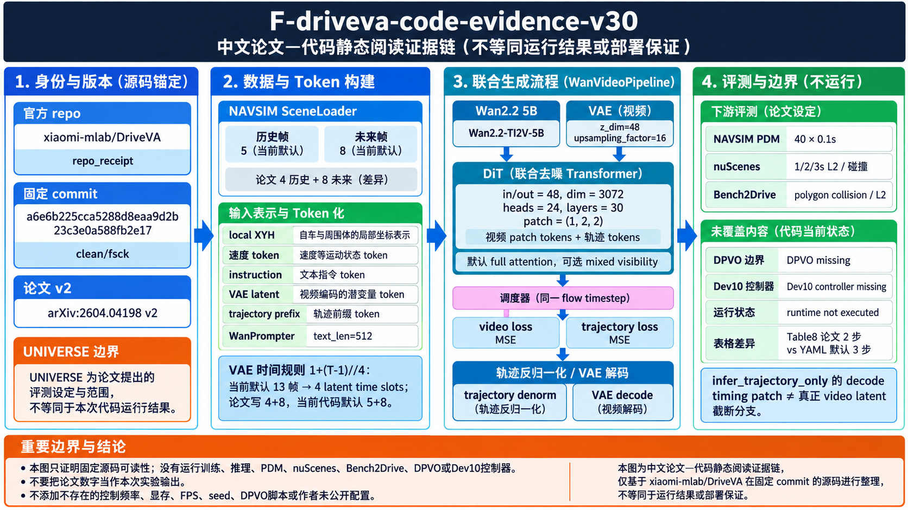
全部细节
图像 ID：F-driveva-mechanism；PNG、native receipt 和逐图中文说明由当前任务 accepted manifest 绑定。
图像身份：F-driveva-mechanism；当前任务 accepted PNG；原生回执（此附件保存在完整本地归档中）；图详解（此附件保存在完整本地归档中）。
1. 阅读身份、版本与结论边界
本文的精读对象是 DriveVA: Video Action Models are Zero-Shot Drivers，arXiv:2604.04198。实际打开的官方 PDF 左侧标记为 v2，2026 年 7 月 1 日，共 30 页；不能把注册信息中的首次提交日期 2026 年 4 月 5 日误作本次阅读版本日期。作者为 Mengmeng Liu、Diankun Zhang、Jiuming Liu 等，首页列出的机构包括特温特大学、小米汽车、剑桥大学和巴斯大学。正文占 PDF 第 1–15 页，参考文献占第 16–21 页，附录 A–G 占第 22–30 页。本报告从本工程官方 PDF、同目录 TeX、HTML 重新阅读建立，未使用源码或历史分析。PDF 与相关来源哈希见本目录 source-manifest.json。
一句话定位：DriveVA 研究的是如何把预训练视频生成器改造成驾驶规划器，使未来视频和未来轨迹在一次共同去噪中产生，并考察这种绑定能否改善跨数据集迁移。标题中的 zero-shot 是“在 NAVSIM 上接受驾驶训练，直接转到 nuScenes 或 CARLA 的目标域评估，无目标域微调”，不是未经任何驾驶训练，也不是已经证明开放道路零样本安全驾驶。正文主证据是 NAVSIM 的非反应式规划指标和跨域日志轨迹指标；附录 Dev10 是小规模闭环补充证据。
以下明确区分三类陈述。paper-stated 表示论文明确提供的事实或作者主张；reasonable inference 表示在这些事实上做出的机制解释或批评；not reported 表示全文没有给到可复现程度。阅读中的核心结论是：视频监督、历史视频续写以及完整适配视频主干都与分数提升相关；双向视频–动作生成具有合理的绑定机制。现有实验尚不能把“学得更好的视频先验”“监督更密集”“参数适配更多”“跨模态绑定”四个原因完全分离。
2. 论文地图与 5C 预审
研究类别是面向驾驶规划的方法论文，不是一个保证物理正确性的仿真器，也不是数据集论文。背景是两类基础模型的能力差异：静态图文预训练擅长语义，视频生成预训练则被作者期待提供动态、时空与交互先验。论文关注的正确性问题有两个层次：输出轨迹是否接近正确驾驶行为；视频中暗示的车体运动是否与输出轨迹相符。这两个问题不能合并，因为附录失败图恰好表明两种输出可以一起犯错。
作者的贡献列表包括联合视频动作建模、单个 DiT 解码器、渐进视频续写和跨域实验。清晰度上，任务定义、主表和训练日程比较明确；潜在空间的实际尺寸、动作坐标与归一化、联合目标的模态权重、续写的真实执行节奏则不足。理解顺序应先掌握日志规划与闭环规划差异，再理解视频 VAE 的压缩、条件流匹配、异构词元拼接，最后读一致性检验和跨域实验。这样才能避免把“生成了漂亮未来”直接当成“知道正确动作”。
论文的论证主线可以表述为：单纯静态语义不够用 → 预训练视频模型提供动态先验 → 驾驶动作必须锚定到同一未来 → 共同的 DiT 去噪使二者反复交换信息 → 历史续写维持短片段之间的连续性 → 视频监督和绑定一起改善规划与迁移。最需要审查的是最后两步的因果强度：实验支持设计组合有效，但并未提供可识别的因果证明，证明生成视频一致性就是全部迁移增益的来源。
3. 真实问题与旧方法的具体失败
在驾驶中，同一张当前图像可以对应多个合理未来。十字路口可能直行或左转，前方有骑行者时可以等待或绕行。规划器既要估计场景怎么变，也要决定自车怎么动。若视频预测和动作生成只是先后串联，视频模型可能选择左转的未来，动作头却输出近似直线。即使两个分支分别看起来合理，组合也没有可执行的一致语义。正文 Fig.3 给出的 PWM 示例正是这一类型：画面在转弯，红色预测轨迹却近似直行。
另一瓶颈是分布迁移。NAVSIM、nuScenes 和 CARLA 在道路样式、相机、图像外观、代理行为和轨迹统计上不同。仅在一个数据集学习输入图像到轨迹的相关性，可能过度依赖该数据集的纹理、路线频率或默认速度。作者期待视频预训练通过大量动态视觉数据学到可迁移结构：转弯时道路视角怎样变化、靠近障碍时图像怎样膨胀、前车运动如何影响可通行空间。这是动机，不是论文测得的完整物理知识清单。
Related Work 把方法分为 VLA、潜在动态世界模型和显式视觉预测。对 VLA，作者认为静态图文知识不足以直接提供时间动态；对潜在世界模型，作者认为世界模型常作辅助监督或引导；对视觉预测方法，作者强调视频与动作往往仍分支或松散耦合。这里应保留“论文如何定位自己”的性质。本文没有逐篇重新证明所有相关工作的缺点，也没有在实验中控制每个前序工作所拥有的信息、预训练数据和算力，因此不能把相关工作文字扩大成对整个 VLA 范式的否定。
4. 新读者需要的前置知识
世界模型在这里是预测未来观察及其与动作关系的模型。日常直觉像在行动前模拟“这样开会看到什么”；精确定义则是上下文条件下的未来视频与轨迹联合分布。常见误解是把世界模型等同于真实世界。学习到的分布可能覆盖多个未来，也可能把罕见情况预测成常见情况。本文附录中的错误停车就是模式选择失败，而不只是图像模糊。
视频潜在表示是 VAE 把高分辨率像素压缩后的张量。像素不直接进入主 DiT；模型主要在压缩空间预测，最后用解码器还原图像。一个潜变量时间位置不一定对应一张原始视频帧，因为 VAE 同时做时间下采样。因果 VAE 的关键是早期潜变量不应依赖后面的帧，特别是第一个潜变量只依赖第一张图，使单帧条件成为可能。把“4 张历史帧”直接等同于“4 个潜变量时间步”会忽视本文未展开的压缩映射。
条件流匹配把生成看作从高斯噪声到数据的连续变换。训练时随机选一条噪声–数据之间的直线路径，在随机流时间上让网络预测移动方向；推理时从噪声出发沿预测方向积分。这里的流时间 是去噪进度，不是车行驶的秒数。模型一次生成整个 4 秒窗口内的视频/动作词元，不能把 理解为车辆驶到 2 秒。
联合分布与链式法则说明可以把同一联合概率写成“先有视频的概率，再有给定视频的动作概率”。这是数学恒等式，不强迫模型在程序中先生成完整视频再跑逆动力学。DriveVA 采用的恰好是同时去噪，链式分解只是说明动作应当与未来视觉模式兼容。PDM Score则是基于轨迹模拟的安全、可行性、舒适性与进度组合指标，与真实道路长期事故率不是同一量。
5. 符号和数据对象
| 符号 | 含义及轴 | 论文可确定的内容 | 需要保留的空白 |
|---|---|---|---|
| 当前驾驶时间索引 | 历史与未来的分界 | 与潜变量时间索引的严格映射 | |
| 历史观察缓冲 | 张历史前视图像 | 闭环中多久更新一次 | |
| 指令及其编码 | 冻结 text 编码器， | 模板、最大长度、无文本时编码 | |
| 当前自车状态 | 坐标系、单位与归一化 | ||
| 未来第 个动作 | 绝对/相对坐标、角度编码 | ||
| 动作步数、视频帧数 | 默认 ，4 秒；未来 8 帧、2 FPS | 两者是否严格一一时间对齐 | |
| 一步视频潜变量 | 实际 、时间压缩率 | ||
| 空间词元数、模型宽度 | 实际值及投影细节 | ||
| 自车状态词元数 | MLP 输出 | 实际词元数 | |
| 固定条件词元 | 状态和历史视觉 | 是否每层对条件状态做特殊掩码 | |
| 干净目标、加噪目标 | 未来视觉与动作拼接 | 两类词元损失缩放/归一化 | |
| 流时间、噪声、速度场 | ，标准正态噪声 | 推理求解器和时间网格 |
动作 是车体未来位置，yaw 是朝向；它不是方向盘角、油门或制动。实际执行必须有从轨迹到控制的接口，本文任务形式化没有把该控制器讲全。视频有空间轴、时间轴和通道轴；动作词元数是未来轨迹步数，两者先映射到共同宽度 ，才有联合注意力。相同宽度只表示特征可交互，不表示视频词元和动作词元的物理单位相同。
6. M-DriveVA-01：以历史条件做视频续写
历史窗口的输入是 。论文训练用 4 张历史帧、2 FPS，未来用 8 帧，分辨率 。视频编码器来自 Wan2.2-TI2V-5B 的 3D 因果 VAE；文本编码器被冻结。第一个潜变量只依赖第一帧，是作者明确说明的因果性质。对于多帧历史，论文把它扩展成历史缓冲条件，意图让续写看到更丰富的运动线索，而不仅根据单张图猜速度。
式(4)写作 ，每步 。因为 已经过时间下采样，原帧索引与潜变量索引不能无条件混用。论文随后的 沿用了原始时间记号，这在教学上方便，但不是一个完整的实际尺寸定义。全文没有给出压缩后历史词元数及切分的精确边界。这里应提出问题，不能自行套用外部 Wan 默认配置来填补论文。
教学实例：前方车在两张历史图之间逐渐变大，同时自车横向位置几乎不变。单张图只显示“有一辆车”，历史序列还提供“相对距离正在减少”的证据。续写模型可以预测减速而非继续快速接近。这个例子解释历史为何可能有用，但本文没有为相对速度识别单独设置测量。表5删去视频 continuation，PDMS 从 90.9 降到 84.6，支持这一配置有价值；它没有说明全部 6.3 分都来自速度信息，历史长度、条件接口和训练分布都可能参与。
滚动时先根据当前缓冲预测未来短窗，执行动作，获得新观察，再滑动窗口重复。形式化文字说执行整个动作块；Fig.2 则强调逐段扩展视频。论文没有明确控制频率、每次执行多少个轨迹点、是否只执行头部、是否把生成历史或真实历史喂回、异常时如何重置缓存。这些决定开放环误差怎样变成闭环误差，是后续实现契约的核心，而非可由“标准滚动规划”四个字代替的细节。
7. M-DriveVA-02：把异构对象变为共享词元序列
视觉词元化的式(5)是 ，其中 。Flatten 在空间光栅顺序展开，每个位置保留通道特征，再投影到 DiT 宽度。状态 经 MLP 形成 个词元，每个未来动作 ((x,y,yaw)) 经 MLP 形成一个词元，因此动作序列是 。文本通过交叉注意力注入，不在视觉–动作自注意力序列中直接增加文本长度。
式(6)的条件块是 ，式(7)的目标块是 。若只在教学假设中取历史潜变量步数为 2、每步 6 个空间词元、状态词元数为 1、未来潜变量步数为 3、动作数为 8，则条件长度是 ，目标长度是 ，总序列长度为39。这个假设演算只展示轴，不能把 13/26/39 写成本文实际配置。
为什么共同词元空间可能有用？注意力可以让“未来视觉显示车头在向左转”的特征参与修改动作位置，也能让“未来动作需要向左”的特征约束相应视觉模式。后续去噪迭代继续修正双方，比视频先完全定稿、动作再独立预测多了反复协商的机会。这里的“协商”是机制比喻，数学上仍是共享参数的条件速度场。没有显式几何等式保证最后二者吻合；任何一致性都依赖训练数据、损失和网络学到的联系。
参数方面，可确定文本编码器冻结，预训练主干默认 full 微调；VAE 是否完全冻结、状态与动作 MLP 的层数、动作输出头是否预测原空间或嵌入空间、位置编码如何区分两类词元都未足量报告。论文把所有目标写成共同宽度，却没有说明训练中的动作嵌入是否承担生成变量、是否存在可逆解码器，以及低维动作重建如何避免随意的特征尺度。这些疑问不能用源码事实提前回答。
8. M-DriveVA-03：条件流匹配的公式与数值推演
式(1)首先定义一般生成常微分方程：
训练并不需要先求解整个 ODE，而是在数据 与噪声 之间定义 。对 求导得到 。式(2)监督网络速度与这个目标速度的平方差；式(3)说明推理时通过积分从噪声走到最终样本。该过程依赖学到的速度场，训练中的单条直线不意味着所有推理路径都严格直，也不构成两步求解精确的数学保证。
DriveVA 在式(8)把它条件化：
历史和状态输入干净不变，只有未来视频与动作目标加噪。式(9)是
期望同时跨驾驶时间/训练样本、流时间与高斯噪声，平方范数作用在生成目标的元素上。论文没有给出视频和动作分别做 mean 后相加还是整体 mean，也没有给模态权重；由于视频词元通常远多于动作词元，这个 reduction 问题会直接改变各模态的有效梯度。正文训练细节另说“未来帧流匹配损失与轨迹预测损失组合”，与式(9)的统一写法之间缺少展开。它们可能相容，但本报告不能假设一个未展示的权重公式。
教学数值例子取二维目标 、噪声 、。插值是 ((0.8,-0.1))，目标速度是 ((1.6,-1.2))。若网络输出 ((1.4,-1.0))，逐元素平方误差为 (0.04,0.04)，总和0.08、均值0.04；这展示 reduction 为什么必须明确。若模型预测完全正确，两个半步 Euler 从噪声出发分别到 ((1.2,-0.4)) 和 ((2,-1))。真实模型速度随状态变化，本文两步效果好来自表8经验，而不是该理想例子自动成立。
为何条件干净可避免训练–推理接口失配？训练中可用完整未来，但把未来放在加噪目标而非已知条件位置；推理同样只给历史与状态，未来从噪声产生。附录称这避免未来向条件流泄漏，仍需注意：不加噪条件本身不等于注意力掩码已被完全定义。若条件词元在多层内可反向吸收未来目标再被重用，是否构成需要排除的信息通路，要看具体条件状态更新和掩码；本文只清楚保证目标不是作为干净未来直接输入。
9. M-DriveVA-04：联合概率为何不等于级联逆动力学
附录式(10)表示联合分布 。式(11)由概率链式法则分解成 。第二项有逆动力学式动作落地的直觉：给定一个未来视觉变化，动作应该解释怎样造成或匹配这一变化。但本文不独立训练第二个逆动力学网络，也不要求推理严格“视频完成后动作开始”。其实际建模主张是一个 DiT 对未来两种目标同时去噪。
在一个左转例子中，未来视频潜变量和动作词元初始都是噪声。某层从历史和指令提取左转趋势，未来视觉词元朝左转视角演化，动作词元朝左弯轨迹演化，下一层和下一采样步继续交互。与级联模型相比，视频侧仍能受到动作侧的反馈。这是合理的结构解释。注意默认双向作用发生在同一未来块内，不是在现实中让后来的真实观测泄漏给先前动作；训练和推理都生成整个短窗，所以非因果目标注意力与在线可用历史并不矛盾。
附录 Table11 的因果掩码变体 PDMS 为90.1，双向为90.9，差0.8。它支持双向交互有增益，但没有随机种子、方差或具体掩码矩阵，不能断言每种未来动作–视频边都是必要的。更不能从“单个 DiT”推出必然几何一致：网络仍可能学成忽视某类词元的捷径。正因如此，论文增加 DPVO 外部检查，而不只凭架构图声称一致性成立。
10. 训练、推理和可复现信息
默认主干是 Wan2.2-TI2V-5B。每个样本4历史帧、8未来帧，2 FPS，。优化器 AdamW，学习率 ，weight decay 0.01，H20 GPU，分布式 bf16。先以 batch80 训练20k步，再通过梯度累积以有效 batch640 训练10k步；前1k步从基础学习率的 线性 warm-up，之后保持常数。推理2个采样步。表7/9表明默认主干完整微调，不是仅 LoRA。
训练路径是取带未来标签的视频/轨迹 → 编码文本与完整视频 → 划出干净历史/状态和未来目标 → 抽 → 只给目标加噪 → DiT 预测速度 → 联合目标反传。推理路径是只编码历史与指令/状态 → 初始化未来视频和动作噪声 → 迭代速度场两步 → 视频潜变量解码，动作词元解码为轨迹 → 执行/更新缓冲。论文没有正式算法环境；上述流程是把方法段的操作依赖重新整理，不是另一个被作者公布的算法。
尚缺训练样本数、NAVSIM/CARLA 混合比例、数据分割的重叠检查、随机种子、优化器其他参数、梯度裁剪、调度器实际时间步、动作损失权重、采样器、条件引导尺度、VAE冻结状态、GPU数量及墙钟延迟。少采样步说明网络前向次数少，但 5B DiT 每次前向的成本仍存在；本文未给 FPS/时延/显存，因此“适合高频实际部署”超出了直接证据。对比实验也没有把各模型的总预训练量、训练算力和可用输入统一成完全公平的资源预算。
11. 主表实验逐项解释
Table1，PDF10，NAVSIM Navtest。问题是联合视频动作框架在源域规划是否有竞争力。Ours 的 NC99.2、DAC97.5、TTC98.7、Comfort100、EP83.5、PDMS90.9；PWM88.1、DriveVLA-W087.2、WoTE88.3、DiffusionDrive88.1。与PWM相比提升2.8个PDMS点。NC不碰撞、DAC可行驶区域合规、TTC碰撞时间、舒适度和进度对应不同失效面。作者只用前视相机，而有些基线含LiDAR，这是有意义的信息访问差异；同时不能忽视主干规模、预训练与额外训练数据也不同。
PDMS按每个样本的 聚合。表中各列先平均后的数相乘，不必等于最后平均PDMS，因为平均非线性乘积一般不等于平均值的乘积。教学上，若某轨迹NC=0，安全门控会让它无论进度多大都得0；若全停可能碰撞少，但EP下降。因此只看碰撞率会奖励保守停车，而主表组合试图同时约束安全和效率。
Table2，PDF11，严格跨域零样本。三种方法均声称NAVSIM训练、无目标域微调。nuScenes验证150场景，Ours 1/2/3秒 L2为0.33/0.76/1.43m，平均0.84m；碰撞0.00/0.07/0.12%，平均0.06%。PWM平均L2=3.99、碰撞0.36%，因此相对下降 、。相对比率基于四舍五入后的表数，不能等同于相同数量的真实事故减少。
Bench2Drive对应Ours L2=0.69/1.29/2.03、均值1.33，碰撞1.38/1.97/2.65%、均值1.79%；PWM均值2.80/3.76，得到52.5%/约52.4%下降。DriveVLA-W0为3.00/2.52，因此另一组改善为55.7%和29.0%。这些是轨迹/碰撞统计，不是附录DS/SR完整闭环。正文将Bench2Drive称闭环评测基准，并在这个表上报告类似日志规划指标，读者必须保留两种评估层级的区别。
Table3，PDF11，目标域训练基线对照。DriveVA不在nuScenes训练/微调，前视相机、无地图/框/深度等辅助标签，平均0.84m/0.06%；对比UniAD1.03m/0.31%、GenAD0.91m/0.43%、Epona1.25m/0.36%。它显示这个具体配置跨域效果强，但基线的数据、相机数、辅助监督不同，也没有置信区间。不能把它归结为“完全没有监督”：DriveVA用了NAVSIM未来视频和轨迹，并继承大规模预训练。
12. 一致性检验与 DPVO 的证据强度
Table4 与附录D不是比较生成视频像素误差，而是让独立视觉里程计 DPVO 从视频重建相机运动。两对比较分别是“GT视频重建 vs GT轨迹”和“生成视频重建 vs 预测轨迹”。DPVO是单目方法，尺度不确定，论文对每条重建轨迹做二维相似变换对齐，之后按式(12)计算4秒平均L2：。NAVSIM为0.09/0.16，nuScenes为0.07/0.14，均值0.08/0.15。
这个设计的优点是没有让模型自身判断自己是否一致，而是用外部几何算法从像素重新推运动；Fig.4/7中的四类曲线可以看见生成视频重建和预测轨迹接近。其边界也非常具体：相似变换可以旋转、平移和缩放，所以一条形状正确但绝对尺度错误的轨迹可能在对齐后仍很接近；它不充分测试米制速度、原始朝向和位置。正文未给DPVO失败率、排除样本规则、对齐拟合点和评估点是否分离、动态物体干扰或校准流程，因此平均很低的数并不能独立证明完整几何正确。
另外，表4未报告PWM的同一数值，也未给因果掩码变体的一致性指标。于是不能直接由表4量化“比PWM一致多少”或“0.8PDMS改进中有多少由一致性改善解释”。Fig.3/6提供比较案例，但案例选择没有随机抽样说明。作者把一致性视为泛化的解释，现有证据更稳妥的说法是：联合模型在给出的样本和对齐后统计中具有较强一致性，这与跨域提升同现；完整的中介因果关系尚未被隔离。
13. 所有消融与补充闭环
Table5，PDF13。ID1无视频损失但保留CARLA mix/continuation，PDMS71.4；ID2不混CARLA、保留其余，90.5；ID3无continuation，84.6；ID4全开，90.9。主结论是视频监督影响最大，续写次之，CARLA混合贡献较小0.4。视频监督提升19.5个点是该表条件下的差，不能与任何其他仅生成动作结果互换。舒适度从86.6到100、进度59.7到83.5说明损失影响不只碰撞。
Table6，PDF13。固定动作K=8/4秒，未来视频帧数4/8/12对应PDMS82.1/90.9/86.7。作者解释短视频覆盖不足、长视频漂移增加。结果呈中间长度最佳，支持一个时间覆盖与生成难度的折中；它不证明长视频必然更差，可能与训练量、采样器和模型容量有关。未给分别的图像质量或漂移曲线，因此“漂移”仍是作者解释。
Table7。from scratch62.9，LoRA74.9，full fine-tune90.9。它说明此任务中完整适配优于这些替代训练策略，支持预训练加领域适配的价值，但没有展示scratch与预训练严格匹配的优化预算、LoRA rank与目标 modules。Table8。1步13.2，2步90.9，3步90.9；1步舒适度只有1.9，是明显的离散性能崩溃。两步足够是经验范围，不是数值积分误差证明；缺少不同随机噪声和采样网格对稳定性的分析。
Table9。5B LoRA74.9、14B LoRA80.6、5B full90.9。不能据此得出5B容量优于14B，因为模型大小与适配方式混在同一表。较合理的解读是：更大LoRA有改善，但在已测组合中，完整适配5B更强。Table11，PDF26。causal90.1，bidirectional90.9；Action Only47.0，Video+Action90.9。这里Action Only与表5无Video Loss的71.4差很大，全文没有解释差异来自目标词元删除、损失删除还是其他配置，应保留为未解决的paper-only歧义。
Table10，PDF26。Bench2Drive Dev10：DriveTransformer DS60.45/SR30%，DriveMamba-12L66.50/40%，DriveVA67.47/70%。SR提升显著，DS只比第二基线高0.97。作者明确说Dev10路线少，是辅助检查，不能替代完整Bench2Drive闭环。未报告随机种子、路线级分数、失败类别和误差条；70%若对应10条路线就是7条成功，单条路线会改变10个百分点，样本量会显著影响稳定性判断。
14. 12 张图逐项读法与视觉审计
本目录 images/pdf-page-XX.png 均来自本次打开的正式PDF渲染。Fig.1/PDF2上部是历史到未来视频，中部把视频和轨迹并置，下部用两组条形图展示零样本相对改进。它是论证地图，下面的百分比必须回到表2解释分母。Fig.2/PDF6左侧条件编码、右侧共同DiT、底部渐进续写；图把language画在conditions附近，而正文明确说文本走交叉注意力，所以不能仅凭底部排列认定全部词元直接拼接。
Fig.3/PDF12比较同一左转场景，PWM视频转弯而轨迹直行，DriveVA更贴近视觉未来；绿GT、红预测是识别轨迹身份的关键。Fig.4/PDF14分别展示nuScenes换道、右转、直行，四种颜色标GT Future、Pred Future、DPVO(gt img)、DPVO(pred img)。曲线近重叠说明所展示案例形状一致；叠在透视图上不能用尺量成独立米制误差。Fig.5/PDF15三个视频序列加右侧俯视轨迹，展示不同转弯/绕行模式，主要是解释性证据。
Fig.6/PDF24补充两组PWM/Ours、1/2/3秒图，支持零样本视觉–动作不匹配可发生在多种转向场景。Fig.7/PDF25NAVSIM的三组转弯场景、每组三张时刻，用与Fig.4相同四类轨迹检查，不应误作新的定量数据。Fig.8/PDF27是最关键反例：第一组GT绕过骑行者、生成视频与动作却停车；第二组GT穿过路口、模型仍预测停车。二者说明一致性可能保留，但正确未来模式未被选中。
Fig.9/PDF28五组更多未来视频/轨迹，可见停车/直行/转弯/绕行等视觉演化；无随机选择声明，不能从五组推出失败率。Fig.10/PDF29上部右转、提前避开停放车、绕过停靠巴士的时间序列，强调同一滚动执行随时间保持轨迹贴合。Fig.11/PDF29下部四组nuScenes零样本案例，Fig.12/PDF30三组CARLA案例（含夜间与不同天气外观），说明训练域之外可产生可辨认的视觉运动与轨迹，但不是对所有天气/夜间安全性的统计验证。
所有图的标签、时间方向、GT/预测身份均已对照实际PDF核验。本报告不把定性图中小尺寸轨迹的细微像素差写成定量结论；精确数值只取表格。图像并未展示显式碰撞风险分布、多候选未来排序或不确定性校准，因此也不能从视觉丰富性推断系统具有安全拒绝机制。
15. 设计假设、结构性局限与审稿视角
第一假设是视频预训练包含对驾驶可迁移的动态先验。表7的scratch差距支持预训练有价值，但不能排除表示质量、优化起点、数据规模等其他因素。第二假设是视频监督通过动态grounding改善动作；表5支持监督有价值，但若视频损失本质提供更大梯度或额外正则，它也可能改善而无需推理时完整视频。这篇论文没有测“训练视频、测试移除视频分支”的同等对照，因此未来想象的测试时必要性尚未隔离。
第三假设是双向共同生成足以维持行为语义。0.8点掩码消融和DPVO检查支持，但一致性没有硬约束。第四假设是少步采样可满足规划效率。表8只给分数，无法代替真实延迟；5B网络在两步中是否满足实际控制频率仍未报告。第五假设是跨日志数据集分数反映部署泛化。零样本表确实跨分布，但目标指标聚焦短时参考轨迹，非反应式环境不能覆盖他车对自车反应造成的长期误差。
方法优点是把“视频是否支持动作”变成可检查对象，而非只输出黑箱轨迹；用DPVO提供独立读出比单纯主观目测更强；主动给出consistent-but-wrong反例，准确承认模式选择是另一层问题。最主要的审稿关注会是：是否有资源匹配的强基线；混合训练与严格零样本设置是否逐项说清；动作损失与词元空间是否足够可复现；DPVO对齐是否过强以及失败样本是否选择偏差；最终驾驶能力是否被短时离线指标夸大。
对新读者最有价值的界线是“内部一致、外部正确、闭环可靠”三件事。内部一致检验两种输出是否讲同一个未来故事；外部正确检验这个故事是不是场景中的合适未来；闭环可靠还要求执行以后环境反应、重规划和控制不失稳。DriveVA的证据对第一件和部分第二件较强，对第三件只有小范围补充。把三层拆开，才能准确继承其机制，也准确理解Fig.8为何没有推翻一致性结论却限制了安全性主张。
16. 易错问题、自测与完整答案
Q1：为什么能让未来词元双向注意，又称因果VAE？因果VAE约束观测编码的时间依赖，防止条件潜变量提前使用未来帧；双向注意发生在共同生成的未来目标之间。前者控制在线可用信息，后者决定短窗内部怎样生成，两者作用对象不同。真正仍待明确的是条件词元在DiT各层是否固定读入及掩码矩阵，而非简单宣布双向注意就是未来泄漏。
Q2：式(11)是不是证明动作由视频唯一决定？不是。链式法则是联合概率分解，给定视频和上下文仍可有多个动作解释；单目视频还存在尺度/运动歧义。本文在联合去噪中学习兼容性，不提供动作唯一性证明。若一个未来视频对应多种速度尺度，DPVO对齐甚至会消去部分差别，这正是绝对控制尺度仍需监督的原因。
Q3：为什么一帧视频更长就不一定规划更好？新增未来帧覆盖更多动作时间，但同时增加生成目标、远期不确定性和漂移。表6的8帧优于4/12帧，与这种折中相容；没有分离变量的证据，不能说12帧失效一定是视觉漂移，也可能与固定训练计算下目标更难有关。需要把“作者解释”与“观测到的中间最优”分开。
Q4：低碰撞率能否证明策略比专家更安全？不能。日志碰撞率由预测轨迹与标注未来障碍的几何关系计算，停住可能降低某些碰撞但损失进度；他车不会在这种离线度量中对你的动作作真实反应。表2显示这个评估下较低碰撞，表1组合进度提供补充，Dev10提供少量闭环证据，但长期安全仍需更完整评估。
Q5：本文最稳健可继承的思想是什么？把视觉未来与动作当成同一未来事件的两种表达，训练时让两者共同承受监督，推理时让它们在共同生成过程中交换信息，并用独立视觉运动恢复检查绑定是否真的学到。可以继承这个问题分解和验证思路；不能继承一个未经证明的结论，说共同生成天然具备真实因果理解。
17. 无公式教学故事
17A. 语义与公式复核补记（2026-10-28）
本补记以当前任务PDF pp.6–9及附录pp.22–30、递归TeX方法为准。源公式的对象应写为 、文本特征 、当前状态 、未来动作 与视觉潜变量 。旧正文中(mathcal O)、(mathbf T)一类是展示损坏，不能当作普通文字或删除命令。
共享DiT同时预测未来视频潜变量与动作词元，flow目标为数据减噪声的速度；因果VAE只约束条件编码，未来目标的双向attention不自动等于未来 leakage。训练用未来标签，推理只编码历史，再联合生成未来目标；这两条路径应分开。视频监督使NAVSIMv1 PDMS由仅生成动作 71.4到90.9，但没有同资源的“训练视频、推理完全移除视频”实验，因此不能把全部增益归因于测试阶段 imagination。DPVO的similarity alignment后L2主要检验视觉—动作运动一致，不是绝对尺度、碰撞或长期闭环安全。
最重要的反例仍是Fig.8：视频与轨迹可以一致地选择停车而非GT绕行/通过路口。应保留“内部一致、外部正确、闭环可靠”三个层次。论文不公开完整执行级控制频率/量化延迟时，不能从两步flow或5B参数推断实时部署。代码不可得与论文机制有无是不同边界；本补记不混入代码事实。
可以把DriveVA想成一个同时写驾驶电影和路线草图的助手。旧式系统先拍完一段“左转电影”，再请另一个助手根据自己理解画路线；两个助手可能没讲同一件事。DriveVA让电影帧和路线草图在同一张工作桌上反复修改：道路视角往左转，路线也应往左弯；路线计划减速，电影里的接近速度也应相应变化。历史几张画面帮助它知道车辆正在怎样移动，视频预训练则提供丰富的运动画面经验。
它的实验说明这张共同工作桌能带来更好的短时规划和跨域表现，并且从电影反推的运动通常能贴上草图。但是如果助手把“绕过骑行者”误理解成“停在骑行者后方”，电影和草图仍可能画得非常一致。看懂这篇论文，就是同时看懂共同工作桌解决的协调问题，以及它没有解决的意图选择和真实闭环安全问题。
DriveVA 代码联合深读补充（v3.0）
以下内容由当前任务固定的官方 DriveVA 提交生成，补足训练 launcher、数据错误处理、潜变量/词元形状、调度器、评估聚合、问题台账和明确的 source/实际运行 boundary。它与上方 DriveVA 论文精读互补；不执行目标仓库训练、推理或评测基准，不把静态入口升级为运行结果。
DriveVA 联合源码阅读主章
来源文件：13_subtasks/driveva_joint_reader_v30/joint_reader_zh.md；SHA-256：e7f0039829da2b5f6189c7f533b0d4a46735898b638bbd9b17cc6af9bd8e395c。
自动驾驶 · 核心论文
DriveVA 论文—源码联合阅读：从 NAVSIM 样本到 Wan2.2 去噪与评估
阅读对象、版本与边界
本章把锁定的 DriveVA 论文版本 arXiv:2604.04198 v2 与官方仓库 xiaomi-mlab/DriveVA@a6e6b225cca5288d8eaa9d2b23c3e0a588fb2e17 放在同一条证据链中。论文事实来自 03_papers/driveva/2604.04198；源码事实来自父目录已经提升的只读 checkout 04_repositories/driveva/a6e6b225cca5288d8eaa9d2b23c3e0a588fb2e17。仓库最新提交同时包含 DriveVA 和后续 UNIVERSE 的训练/推理文件，因此本章只解释 examples/wanvideo/driveva_* 和 diffsynth 中能够与 DriveVA 论文对应的路径；标有 UNIVERSE 的路径只作为版本边界，不倒灌成 DriveVA v2 的论文事实。
这是一份静态联合阅读。没有安装目标仓库依赖，没有加载 Wan2.2 或 DriveVA 权重，没有运行训练、推理、NAVSIM、nuScenes、Bench2Drive、DPVO 或任何指标。repo_receipt.json 证明固定提交、完整历史、干净状态与 fsck；它证明来源身份和源码可读性，不证明一次实验已经完成。独立 C/F 或闭卷验证尚未执行，source_ready=true、analysis_explanation_ready=true、independent_verification_pending=true 是本目录的明确状态。
论文提出的核心目标是：给定历史前视图像、当前自车状态和指令，同时生成未来视频潜变量与未来 (x,y,yaw) 轨迹。论文使用 Wan2.2-TI2V-5B 的 3D 因果 VAE、文本编码器和 DiT，在条件流匹配中把历史视觉/状态作为固定条件，把未来视频和动作作为共同加噪目标。源码把这个想法具体化成一条可追踪的路线：训练入口构建 NAVSIM Dataset；Dataset 取图像、局部轨迹、速度和驾驶指令；WanVideoPipeline 编码视频和轨迹；training_loss 对同一 flow timestep 生成视频/动作预测；推理入口用历史图像与速度初始化条件、从噪声迭代视频和轨迹；评估脚本再把轨迹送入 PDM、nuScenes L2/碰撞或 Bench2Drive 的局部评估器。
读者需要持续区分三种对象。第一种是论文声称的机制，例如“视频和动作在同一个 DiT 中双向交互”。第二种是当前源码真正实现的默认路径，例如 DriveVA 评估入口把 trajectory_use_relative=False 固定为 local XYH 的直接预测，默认采样步数是 3，而论文训练细节报告的是 2 步。第三种是运行时事实，例如论文表格的实际检查点、GPU 墙钟、DPVO 脚本和 Dev10 控制器；它们没有在本次静态阅读中被运行或重新取得。后文会把三者分开写。
一、整体数据流：从样本到分数
1. 训练入口和配置覆盖
官方训练命令的核心脚本是 examples/wanvideo/driveva_train/scripts/train_navsim_v1.sh 和 train_dist_multi_node_navsim.sh，Python 入口是 train_navsim_v1.py:650-859。YAML 默认配置给出 NUM_HISTORY_FRAMES=5、NUM_FUTURE_FRAMES=8、TARGET_FPS=2、USE_TRAJECTORY=1、TRAINABLE_MODELS="dit,trajectory_encoder,trajectory_head"、LORA_RANK=32、USE_EMA=1、AUTO_EVAL=1。这是当前仓库默认入口，不能直接替代锁定论文 v2 的训练记录；论文 PDF §5.2 报告的是 4 历史帧、8 未来帧、2 FPS、832×480、H20、20k+10k 步和推理 2 步。
main 先解析命令行，再把环境变量覆盖写入 train_config.json。NavsimDriveVADataset 需要 repo_root、NAVSIM log 路径和 sensor blob 路径；DriveVANavsimTrainingModule 需要本地 Wan2.2 模型目录与可选完整检查点。训练入口的 full_ckpt 加载采用 strict=False，会打印 missing/unexpected 键摘要。这一设计方便旧 DiT-only 权重迁移，却意味着“检查点被加载”并不自动等于所有轨迹输出头已存在；代码自己在 eval_navsim_pdm.py:1852-1860 检查是否存在 trajectory_encoder.* 或 trajectory_head.*。
2. Dataset：历史图像、未来图像和局部轨迹
third_party/navsim/agents/videodrive/videodrive_features.py:39-183 是 NAVSIM feature builder。VideoDriveFeatureBuilder 默认从 AgentInput 中取最近 prompt_frames 帧，前视模式取 cam_f0，可选 surround6 把六个摄像头拼成 2×3 mosaic。图像转成 CHW，默认归一化到 [-1,1]。它同时提取最近自车速度、加速度、驾驶指令和最多四个历史 ego pose，形成 history_trajectory。这个历史轨迹不是完整的在线缓存；它是当前样本由 SceneLoader 提供的静态特征。
TrajectoryTargetBuilder:188-309 调用 scene.get_future_trajectory(num_trajectory_frames=...)，得到 NAVSIM 局部坐标轨迹；同一段逻辑还读取未来摄像头图像。examples/wanvideo/driveva_train/navsim_dataset.py:150-264 将这些结果组装成一个样本：video=history+future、longcat_video=history、trajectory、history_positions、ego_vel 和提示。_normalize_traj_xyh 只做维数补齐/截断和长度补齐，不负责 DriveVA 的仿射归一化；真正的 (x,y,yaw) 归一化发生在 WanVideoPipeline.norm_trajectory。
论文提出“历史视觉作为续写条件”，源码中对应两个不同层次：原始 PIL 历史帧由 longcat_video 进入 VAE；历史局部轨迹可以进入轨迹 prefix；未来视频和未来轨迹才是流匹配目标。若 trajectory_condition_mode=velocity，训练入口只把当前二维速度作为 prefix；若 auto/history，才使用 history_positions。因此“模型看到了历史轨迹”不是一个无条件事实，必须连同配置分支一起说。
3. WanVideoPipeline 的对象关系
WanVideoPipeline.__init__:32-98 注册调度器、text 编码器、DiT、VAE、image 编码器、轨迹编码器/输出头和 PipelineUnit 列表。PipelineUnitRunner 按顺序装配输入：形状 checker → 噪声 initializer → 提示 embedder → 轨迹 → 输入视频/VAE → image 嵌入 → speed control → optional sequence parallel → optional TeaCache → CFG merge → LongCat history. 这条顺序解释了为什么数据流不是“直接调用一个 generate 函数”：每个 unit 负责把一个原始输入转成下一个 unit 需要的张量。
模型构建在 WanVideoPipeline.from_pretrained:411-488。它从 Wan-AI/Wan2.2-TI2V-5B 读取 text 编码器、diffusion 检查点、Wan2.2_VAE.pth 和词元化器。use_trajectory=True 时创建 TrajectoryEncoder(point_dim=3, output_dim=pipe.dit.dim) 与 TrajectoryHead(pipe.dit.dim, out_dim=3)。因此轨迹输出头的宽度不是一个独立的 4096 常数，而是绑定实际 DiT dim；Wan2.2-TI2V-5B converter 在 wan_video_dit.py:753-771 中给出 dim=3072、num_heads=24、num_layers=30、in_dim=out_dim=48。
VAE38 在 wan_video_vae.py:1271-1382 给出 z_dim=48、upsampling_factor=16，并在 encode/decode 中按时间分块。BasePipeline.check_resize_height_width:42-62 把帧数调整到 4n+1 形状。于是当前默认 480×832 输入先变成空间潜变量 30×52；DiT patch (1,2,2) 后每个潜变量时间位置有 15×26=390 个视觉词元。当前默认训练样本有 5 历史+8 未来=13 帧，时间潜变量数是 1+(13-1)//4=4。历史5帧单独编码时是2个潜变量时间位置，剩余目标是2个位置。这是源码静态形状推导，不是权重加载后的实际运行张量 dump。
二、轨迹表示、坐标和词元
1. local XYH 与 driveva_odo
nuScenes 入口的 _build_local_xyh:724-738 先取全局 (x,y,yaw)，以当前锚点 yaw 做二维旋转，把位置转换到 ego-local 帧，再用 arctan2(sin(gyaw-ayaw),cos(gyaw-ayaw)) 把 yaw wrap 到 [-π,π]。训练和 NAVSIM 评估入口都显式设置 pipe.trajectory_norm_mode="driveva_odo"、pipe.trajectory_use_relative=False。norm_trajectory:198-210 使用静态仿射常数：x=2*(x+1.57)/66.74-1、y=2*(y+19.68)/42-1、heading=2*(heading+1.67)/3.53-1；denorm_trajectory:213-224 反向恢复。
这段实现回答了 DRIVEVA-Q01 的实现子问：发布入口预测的是以当前车为原点的 local XYH，默认不是相邻点 delta。它不能回答论文表格是否使用完全同一个训练检查点、这些常数是否来自某个版本统计文件，也不能证明 yaw wrap 在每个作者内部脚本中都一致。pipeline 默认属性 trajectory_use_relative=True，但 DriveVA 的训练/评估调用者都覆盖为 False；只阅读 pipeline 默认值会得到错误结论。
2. TrajectoryEncoder 的 prefix 逻辑
trajectory_modules.py:13-57 中，未来轨迹每个三维点经过 traj_proj 两层 MLP；如果有 history，历史点复用同一 traj_proj；如果有 velocity，二维速度经过 vel_proj 得到一个词元；最后统一 LayerNorm 和 concatenate。TrajectoryHead:60-75 对 DiT 输出做 LayerNorm+Linear+SiLU+Linear，返回三维预测。
WanVideoPipeline._trajectory_prefix_usage:109-117 是真正的分支契约：velocity 模式只接受速度；history 模式只接受历史轨迹；auto 优先历史，缺失时退回速度。训练的 training_loss:520-606 对未来轨迹加噪，历史/速度不加噪；traj_prefix_len 记录需要从预测序列中剥离的 prefix。推理循环 :867-923 每一步都用最新 traj_noisy 重新构造轨迹词元，再用同一个调度器更新未来轨迹。这意味着未来轨迹不是一次线性输出头输出，而是每个 flow step 都重新进入 DiT。
3. 视觉词元与轨迹词元的位置
model_fn_wan_video:1782-1806 先把 VAE 潜变量 patchify、展平成视觉词元，再把轨迹词元追加到序列末尾。1854-1899 为视觉词元构造 3D RoPE，并将轨迹词元的位置线性映射到潜变量帧的起止范围。默认 use_mixed_latent_attention_mask=False 时，DiT 使用普通自注意力；若显式打开，_build_mixed_sequence_partition:119-145 产生 past-video/future-video/traj-prefix/future-traj 四段，wan_video_dit.py:107-147 按四组可见性执行 attention。
因此论文“默认双向未来视频/动作 coupling”与当前 DriveVA 默认普通全 attention 相容；仓库里可见的 mixed visibility 是额外开关，不能自动当成 Table11 Causal Mask 实验的历史配置。未来视频和未来轨迹是否能互相读，必须同时报告 use_mixed_latent_attention_mask 与 sequence_partition 条件。
三、Flow matching、损失与训练梯度
1. Scheduler 的数值含义
FlowMatchScheduler:5-82 的 add_noise 使用 sample=(1-sigma)*original+sigma*noise，training_target 返回 noise-sample，step 用相邻 sigma 差更新。pipeline 初始化 shift=5、sigma_min=0、extra_one_step=True。训练阶段 training_loss:503-516 将调度器置为 1000 个训练 timesteps，随机取一个 timestep；推理阶段 __call__:731 根据 num_inference_steps 生成 sigma 网格。这里的流时间是生成进度，不能解释成车辆时间。
2. 视频/动作联合损失
训练先对 input_latents 加噪并得到视频目标；若有轨迹词元，则对归一化后的未来轨迹单独取高斯噪声、加同一个 timestep 的噪声，并送入 TrajectoryEncoder。DiT 返回 {"video": video_pred, "traj": traj_pred}。video_loss 是视频预测与目标的 MSE mean；轨迹 prefix 会从 traj_pred 中剥离，然后计算未来点的 MSE。默认 video_loss_scale=1、trajectory_loss_scale=1、traj_loss_weight=1，最后乘 scheduler.training_weight(timestep)。如果 train_future_video_noise_only=True 且有 longcat_latents，视频损失会裁掉历史条件潜变量，只在未来段计算。
这回答 DRIVEVA-Q05：源码确实存在分开的视频/轨迹 MSE 和可配置 scale；但论文 Table5/11 的历史运行配置、是否启用 future-only、是否采用这些默认 scale 不能从当前静态入口反推。视频词元数远多于8个动作点，MSE reduction 的 mean 位置会影响有效模态权重，源码解释了默认实现，却不提供论文表格的实验回执。
3. 冻结、LoRA、EMA 与梯度
DiffusionTrainingModule.switch_pipe_to_training_mode:150-176 先将调度器切换到训练状态，再调用 pipe.freeze_except(...)。如果提供 lora_base_model，通过 add_lora_to_model 把 LoRA 注入目标模块；训练入口默认 LORA_BASE_MODEL="none"，因此默认是 full trainable models 列表，而不是 LoRA。ModelLogger 在 epoch/step 末保存 raw 检查点；配置可以保存 EMA，InProcessAutoEvalModelLogger 在保存后暂时切换 EMA 权重做自动评估，再恢复训练状态和 RNG。
论文报告 full 微调、LoRA、scratch 的 Table7/9，但当前 repo 没有每个历史表对应的检查点 manifest 和训练日志。源码能证明可配置分支与默认参数，不能把当前默认5B入口写成论文 14B 对照的已运行实现。
四、三个评估分支
1. NAVSIM PDM
eval_navsim_pdm.py:129-322 解析 num_history_frames、num_future_frames、model_future_frames、target_fps、pdm_num_poses、pdm_interval_length、num_inference_steps、cfg_scale 和 infer_trajectory_only。默认配置是历史5、场景未来10、模型未来8、2 FPS、PDM 40 poses×0.1s、3 推理步、CFG 1.0。run_eval:2025-2200 将指标缓存、SceneLoader 和 feature/目标 builders 组合起来；每样本构造 history 视频、提示、速度和可选 history positions，调用 pipeline 生成轨迹。
评估过程从 PDM 指标缓存取场景，再通过 third_party/navsim/evaluate/pdm_score.py:24-140 将模型局部轨迹转到初始 ego 帧，送入 PDM simulator/scorer。最终脚本写 CSV 和 summary JSON，并打印有效行平均值。它是静态可解释的评估器接口；本次没有读指标缓存，也没有声称获得 PDMS 90.9。
infer_trajectory_only 有一个容易误读的边界：评估脚本在 save_viz=False 时会暂时把 pipe.vae.decode 替换成空函数，只为 timing/轨迹输出；它没有在此处设置 pipe.infer_trajectory_only=True。pipeline 中真正的 trajectory-only 分支由 output_mode="trajectory" 或 pipeline 属性触发，会截断视频潜变量并只迭代未来轨迹。因此 YAML 中的 INFER_TRAJECTORY_ONLY=1 不能单独证明未来视频去噪已被跳过。
2. nuScenes 零样本
infer_nuscenes.py:390-515 的 _build_local_xyh、_interp_xyh_at_horizon 和 yaw wrap 将全局 ego 状态转为 anchor-local。1200-1410 每个窗口取历史图像和未来状态，建立 history_local_xyh 与 future_local_xyh，按照 model_future_frames/target_fps 构造轨迹 sampling，再把预测结果按1/2/3秒插值计算 L2。碰撞指标在局部 BEV occupancy 上计算，输出 CSV/summary。
论文 Table2 的零样本结论是 NAVSIM 训练后直接在 150 nuScenes scenes 上评估；源码说明了如何构造一条静态评估窗口，却没有运行回执、样本过滤日志或论文表格检查点绑定。因此可以解释评估协议和来源边界，不能声称本次复现数字。
3. Bench2Drive
bench2drive_dataset.py:283-547 读取场景帧、相机路径、ego pose、未来轨迹和四视图拼接；infer_bench2drive.py:1464-1995 用 dataset_stride/frame_interval 取样，生成提示、历史速度、未来轨迹，并调用与 NAVSIM/nuScenes 相同的 pipeline。B2DPlanningMetricLite:21-236 在 STP3 风格 BEV 栅格中用 ego footprint 与交通参与者 polygon 计算碰撞，同时在1/2/3秒计算 L2。
这条路径是 Bench2Drive 规划评估，不能自动等价于论文附录 Dev10 的闭环 controller。当前仓库没有 Dev10 route 运行入口、控制器、终止规则或作者表格运行日志。论文的 67.47 DS/70 SR 是辅助闭环证据，当前静态代码只能说明一个离线/规划指标入口。
五、16 个问题的联合结论
- DRIVEVA-Q01：local XYH、yaw wrap 和
driveva_odo仿射归一化由infer_nuscenes.py、norm_trajectory及评估调用者静态闭合；论文没有给常数来源。状态：answered_by_code（源码已闭合指定静态问题）（静态范围）。 - DRIVEVA-Q02：论文 v2 写4历史+8未来；当前默认 YAML/训练入口是5+8。VAE 时间分组和潜变量前缀可读，历史版本边界仍需作者配置。状态：
contradiction（论文锁定设置 vs 当前默认）。 - DRIVEVA-Q03：Wan2.2 模型装载、轨迹 MLP/输出头、冻结/LoRA 开关已闭合；具体发布权重内容和历史冻结状态未闭合。状态：
partly_answered_by_code（源码只闭合部分问题）。 - DRIVEVA-Q04：5B DiT/VAE/文本长度和默认输入形状可由源码推演，静态词元数为可审计推导；不能称作实际运行 dump。状态：
answered_by_code（源码已闭合指定静态问题）（静态范围）。 - DRIVEVA-Q05：视频/动作 MSE、scale、调度器 weight 和 future-only 裁剪可定位；论文表格的实际参数未绑定。状态：
partly_answered_by_code（源码只闭合部分问题）。 - DRIVEVA-Q06：默认全 attention 与可选 mixed visibility 的可见性分组已定位；论文默认双向与源码默认开关可对齐。状态：
answered_by_code（源码已闭合指定静态问题）（静态范围）。 - DRIVEVA-Q07：Table11 Causal Mask 的源码开关/历史配置没有绑定，只有候选 mixed partition。状态：
not_answered（源码未闭合该问题）。 - DRIVEVA-Q08：调度器 shift、sigma、统一视频/动作 step、CFG 参数可定位；论文2步与默认3步的历史绑定缺失。状态：
partly_answered_by_code（源码只闭合部分问题）。 - DRIVEVA-Q09：当前入口按样本编码 history、VAE 内部缓存每次 encode/decode 清空，没有在线 persistent 缓存；重规划频率和控制点仍未公开。状态：
partly_answered_by_code（源码只闭合部分问题）。 - DRIVEVA-Q10：NAVSIM adapter 和 Bench2Drive/nuScenes 评估 surfaces 已闭合；CARLA 混合比例、样本数、表格检查点未闭合。状态：
partly_answered_by_code（源码只闭合部分问题）。 - DRIVEVA-Q11：损失 scale 与 trajectory-only 分支可读，Table5 Video Loss 与 Table11 Action Only 的历史命令未绑定。状态：
not_answered（源码未闭合该问题）。 - DRIVEVA-Q12：LoRA rank/目标和 trainable model flags 可读，14B/scratch budget 需历史配置。状态：
partly_answered_by_code（源码只闭合部分问题）。 - DRIVEVA-Q13：论文 DPVO similarity alignment 可解释；仓库无 DPVO source、筛选或未对齐统计。状态：
not_answered（源码未闭合该问题）。 - DRIVEVA-Q14：nuScenes horizons、PDM 40×0.1s、Bench2Drive footprint/collision/L2 可读；表格过滤与聚合日志缺失。状态：
partly_answered_by_code（源码只闭合部分问题）。 - DRIVEVA-Q15：Bench2Drive 离线入口和规划指标可读；Dev10 controller、随机种子、终止规则缺失。状态：
not_answered（源码未闭合该问题）。 - DRIVEVA-Q16：脚本记录
infer_time_s、GPU 内存 fields，也有 decode patch timing mode；没有实际 timing log，且 decode patch不等于真正 trajectory-only。状态：partly_answered_by_code（源码只闭合部分问题）。
六、论文—代码的关键差异与读者误区
最需要保留的是“当前默认值”和“论文锁定实验值”之间的差异。论文 §5.2 的4历史帧和2步采样与仓库 YAML 的5历史帧和3步默认值不同；这不是简单 typo，因为 VAE 的 4n+1 时间形状 checker 会影响潜变量边界，采样步数会影响 flow sigma 网格。任何把当前 eval_navsim_pdm.py 直接称为 Table1/8 的原始运行都需要额外 checkpoint/config/log 证据。
第二个误区是把 trajectory_use_relative 的 pipeline 默认值当成 DriveVA 运行语义。pipeline 默认是 True，但训练、nuScenes、NAVSIM、Bench2Drive 调用者都把它设为 False；当前发布入口使用 local absolute XYH 仿射归一化。若只看类初始化会得到相反结论。
第三个误区是把代码中的 infer_trajectory_only 当成已证明的仅生成动作生成。评估脚本的 timing shortcut 可暂时替换 VAE decode，但 pipeline 真正的视频潜变量截断需要 output_mode='trajectory' 或属性开关。这个差异会影响延迟图和“未来视频是否仍被去噪”的解释。
第四个误区是把 VAE 缓存当成长时驾驶内存。WanVideoVAE.encode/decode 开始和结束都会 clear_cache，卷积层的 feat_cache 只服务当前分块处理；仓库没有把预测帧写回下一个样本的 online controller。论文中的视频 continuation 解释的是条件缓冲和逐段生成思想，当前离线评估入口没有证明真实闭环重规划节奏。
七、可复现入口和未执行事项
静态上可以给出近似入口：训练可从 bash examples/wanvideo/driveva_train/scripts/train_navsim_v1.sh 开始，要求设置 NAVSIM_LOG_PATH、SENSOR_BLOBS_PATH、NUPLAN_MAPS_ROOT、NUPLAN_DATA_ROOT、LOCAL_MODEL_PATH 与 FULL_CKPT；NAVSIM 评估可从 bash examples/wanvideo/driveva_infer/scripts/eval_navsim_v1.sh 开始；nuScenes 和 Bench2Drive 有对应 infer_nuscenes.sh、infer_bench2drive.sh。这些命令是 source-supported launch surfaces，而不是本次已执行命令。
需要作者或运行产物补充的事项包括：Table5/7/8/11 的确切命令与检查点、CARLA 混合比例、DPVO 脚本和失败筛选、Dev10 controller、H20 GPU 数量与真实 timing、训练随机种子、VAE 训练/冻结状态、指标缓存 manifest。当前章节不会用近似仓库、论文数字或 README 宣称补齐它们。
八、读者教学总结
把 DriveVA 想成两条同时被修正的未来草图：一条是摄像机将看到的画面，一条是车会走的轨迹。历史图像和速度告诉模型“现在在哪里、正在怎么动”；流匹配从噪声开始，让 Wan2.2 DiT 多次修正画面和轨迹。动作词元不是最后加在视频上的独立箭头，它和未来视频 patch 一起进入同一个序列，因此模型可以让“左转画面”和“左转轨迹”互相影响。训练损失同时惩罚两条草图的预测误差，评估器再检查轨迹能否通过 PDM、nuScenes 或 Bench2Drive 的协议。
但草图互相一致不代表一定选对未来。论文自己的 failure case 说明模型可以“稳定地错”：视频和轨迹彼此相符，却都选择了停车而不是绕过骑行者。源码阅读进一步说明，默认入口、历史论文配置、表格检查点和真实运行时之间仍有边界。因此最准确的结论是：官方代码把联合视频—轨迹 flow 模型、NAVSIM 数据路径、轨迹 prefix、跨域评估面和若干 timing 接口公开了；它没有在当前静态证据中公开或证明每个论文实验的完整运行合同，也没有把离线评估变成真实道路闭环安全保证。
DriveVA 训练、形状与评估补充
来源文件：13_subtasks/driveva_joint_reader_v30/joint_reader_addendum_zh.md；SHA-256：2a7cc95ce0b877877d2571c1a6d7ddd30d0952733602fb8fa943ac96eeaf213b。
自动驾驶 · 核心论文
DriveVA 联合阅读补充：训练状态、形状契约、评估聚合与失效边界
本补充建立在同目录 joint_reader_zh.md、paper_code_crosswalk.md 和 experiment_joint_reading.md 上，集中解释前文没有充分展开的实现细节。重点是四件事：训练入口到底怎样把配置传到优化器和模型，13帧样本怎样被切成潜变量与词元，评估脚本怎样筛选和聚合结果，以及哪些看似合理的结论会因为源码中的分支而失效。每一项都给出固定提交中的文件和行号。源码是只读证据，没有加载权重或运行命令；本补充不增加任何实际运行声明。
1. 训练不是一个单纯的 loss.backward
1.1 YAML 到 shell 到 Python 的三次转换
训练配置不是 Python 直接读取的字典。train_navsim_v1.sh 先选择 configs/navsim_v1.yaml，然后调用 scripts/load_yaml_config.py。这个脚本用 yaml.safe_load 读取映射，按“主环境变量优先、随后 aliases、最后默认”的顺序求值，再用 REPO_ROOT 这类引用展开，最后输出 export NAME=价值。shell 以评估执行这些导出语句，再把其中一部分显式拼进 args 数组，交给 train_navsim_v1.py。一个看似只在 YAML 中改动的值，可能被外部环境变量覆盖；一个没有进入 args 数组的 YAML 值，也可能只通过 os.environ 被 Python 间接读取。复核训练设置时必须记录 YAML、shell 环境和 Python argparse 三层，而不能只截图 YAML。
训练 shell 还会调用 distributed_env.sh，根据 CUDA_VISIBLE_DEVICES、GPUS_PER_NODE、NNODES、RANK 等变量确定 torchrun 进程数，并把仓库根、训练目录、推理目录、third_party/navsim 和可选 nuScenes SDK 追加到 PYTHONPATH。它在启动前设置 TMPDIR、TMP、TEMP 到 DRIVEVA_TMPDIR，所以临时文件位置也是实验环境的一部分。论文只报告分布式 bf16 和 H20，却没有报告这些 launcher 细节；它们会影响依赖解析、进程拓扑和错误时的路径。
1.2 Dataset 的可变长度与错误处理
NavsimDriveVAConfig 的 frame_interval、max_scenes、train_log_names、skip_missing_files 都能改变样本集合。SceneFilter 在训练数据集初始化时使用 num_history_frames、num_future_frames、frame_interval 和 has_route 构造 SceneLoader；这决定样本是否在进入模型前已经被过滤。skip_missing_files=True 时，getitem 遇到文件缺失会沿数据集循环查找下一个有效样本；因此“训练样本数”既可能是 SceneLoader 词元数，也可能是实际跳过错误后的有效样本数。源码没有把跳过计数写入一个规范的 manifest，论文也没有报告此类缺失样本处理。
_fit_len_2d 与 _normalize_traj_xyh 会对轨迹长度进行截断或复制最后一点填齐。如果上游轨迹比期望长，它只保留前 expected_len；如果短，它重复末点。这个行为保证张量形状，但在语义上把“没有更多真实未来”转成了“车辆停在末点继续存在”。因此用该脚本生成的评估轨迹必须同时检查 future_frames_ok、traj_len_gt 和错误日志，不能只看 CSV 的平均列。它也解释了为什么论文中的严格4秒时间跨度与当前脚本的填充行为不能自动等同。
1.3 DiffusionTrainingModule 的冻结和可训练参数
switch_pipe_to_training_mode:150-176 先调用 pipe.scheduler.set_timesteps(1000, 训练=True)，再调用 pipe.freeze_except。BasePipeline.freeze_except:134-141 对名称匹配的子模块开启训练() 和 requires_grad_(True)，其他模块设为评估/不求梯度。默认 YAML 的 TRAINABLE_MODELS="dit,trajectory_encoder,trajectory_head" 因而只让三类模块进入 optimizer；text 编码器、VAE、image 编码器默认冻结。若传入 LORA_BASE_MODEL，add_lora_to_model 需要 peft，在目标模型上注入 target_modules，并只导出可训练的 LoRA 参数。由于本次不安装依赖，这个分支只做代码解释。
优化器构造在 launch_training_task:301-335：AdamW(model.trainable_modules(), lr, weight_decay)，DataLoader 使用 shuffle=True、pin_memory=True，worker 大于0时 persistent_workers=True 和 prefetch_factor=2。accelerator.prepare 之后才进入分布式训练。每次 accelerator.accumulate(model) 内先依据 _lr_factor 设当前学习率，再 forward、backward、可选梯度 clipping、optimizer.step 和 zero_grad；只有 accelerator.sync_gradients 时才递增 step、更新 EMA 和触发 logger。梯度累积因此改变的是 optimizer step 数，而不是单个 micro-batch 的 forward 次数。
_lr_factor:246-258 的 warmup 采用线性插值，从 warmup_start_factor 走到1；warmup之后可选 cosine、linear 或 constant。当前 YAML 是 constant、warmup 100、start factor 0.001；训练 argparse 的默认值又是 constant、warmup 0、start 0.01，只有经过 YAML shell 才会得到论文相关入口的值。这是一个具体的“默认值分层”例子：阅读 argparse 不能代替阅读 YAML 和 launcher。
1.4 EMA 的状态不是模型权重本身
init_ema:75-99 只对 requires_grad=True 的参数创建 float32 shadow copy；update_ema:104-123 在有效 optimizer step 后执行 shadow = decay×shadow +(1-decay)×source。ema_on_cpu 会把 shadow 放到 CPU，减少 GPU 显存但增加转换成本。保存时 export_ema_trainable_state_dict 只导出 shadow 的可训练参数；没有 EMA 的冻结主干复制。自动评估器在 _use_ema_trainable_weights 上下文中临时把 shadow 写回可训练模块，然后在退出时恢复原参数、随机数和调度器状态。
论文 Table7/9 的 full 微调、LoRA、scratch 与 EMA 是否启用是两个正交维度。当前仓库默认 USE_EMA=1、SAVE_EMA=1，但表格对应检查点是否是 raw 还是 EMA 不能由源码默认推导；AUTO_EVAL_CKPT_KIND=all 会同时尝试两类。任何把表格唯一数字写成“raw 检查点已验证”都超出静态证据。
2. 形状推导与跨模块契约
2.1 13帧为什么是4个时间潜变量
BasePipeline 初始化指定 time_division_factor=4、time_division_remainder=1。check_resize_height_width:42-62 对输入 num_frames 执行：若 T mod 4 ≠ 1，则 T ← floor((T+3)/4)×4+1。WanVideoUnit_NoiseInitializer:996-1009 再计算 length=(num_frames-1)//4+1。当前 num_history_frames=5、model_future_frames=8 时，total_frames=13，length=4。历史 longcat_video 只有5帧，独立编码时 length=2；它对应的干净 prefix 占潜变量时间轴前两格。全视频输入潜变量的后两格是未来目标区域。这个推导说明 history_frames 和 history_latent_frames 不是同一个计数，也说明把论文4历史帧当作4个干净潜变量会错位。
当用户传入不满足4n+1的帧数时，形状 checker 会把请求的数值向上调整，例如14会变为17，但这个函数本身不补齐input_video的帧列表。另一个 _pad_video_to_length 函数只在特定输出分支中重复末帧，不能拿它证明所有训练输入都会补成合法长度。因此，直接把当前训练历史改成4仍需检查噪声与input_latents的时间长度；这里只能指出潜在形状边界，不能把未运行的配置宣称可用。
2.2 480×832 的静态词元账本
WanVideoVAE38 的空间上采样因子为16，编码输入的空间潜变量是 480/16=30、832/16=52。Wan DiT 的 patch size 为 (1,2,2)，因此每个潜变量时间位置的视觉 patch 网格是 15×26=390。13原始帧→4 潜变量 time slots，所以视觉词元数是 4×390=1560。历史5帧→2 潜变量 slots，对应780 干净视觉词元；未来两格对应780 带噪视觉词元。
在 trajectory_condition_mode=velocity 时，TrajectoryEncoder 生成一个 velocity prefix，加上8个未来轨迹词元，共9个轨迹词元；在 history 模式，history positions 的长度通常是4或由调用者截断的长度，并且不再使用 velocity prefix。于是当前默认 velocity 分支的 DiT 自注意力序列可静态写成：
1560 视频词元 + 1 velocity 词元 + 8 未来轨迹词元 = 1569 词元
这个数字仅是按 YAML、VAE factor、DiT patch 和调用者形状推导；没有加载权重，也没有执行 Tensor 形状打印。它的用途是检查源码之间是否自洽，而不是宣称每个论文实验都使用1569。
2.3 轨迹归一化的物理含义
norm_trajectory 把 x 的大致范围映射到 [-1,1] 的仿射值，y 和 heading 使用各自 offset/scale。它不根据当前样本动态计算 min/max，也不检查是否超出预期区间。未来轨迹加噪后再 clamp 到 [-1,1]；所以极端轨迹可能在加噪后被截断。denorm_trajectory 只做代数逆变换，不能恢复被 clamp 丢失的尾部。
默认 DriveVA 调用者关闭 relative mode，故 _to_relative_trajectory 不执行。若某个新调用者忘记覆盖属性，pipeline 会把第一点保留绝对值、后续点转成 delta，再对 delta 使用同一 absolute 仿射常数；这会产生语义不匹配。这个不变量必须写进任何方法修改或新数据集适配的 smoke check。
2.4 位置编码与轨迹 prefix
视频 patch 的 RoPE 来自 dit.freqs 的时间、height、width 三轴；轨迹词元的 RoPE 在 model_fn_wan_video:1868-1899 中沿未来潜变量帧范围做 linspace。若有 prefix，history 模式把 prefix 位置放在历史潜变量末尾前，velocity 模式把 prefix 放在当前未来起点；二者不是同一位置编码。traj_prefix_len 同时控制 timestep modulation、RoPE 位置和输出 slice，若只改编码器词元数不改 prefix metadata，模型可能把 prefix 的噪声输出当成未来点。
3. 训练随机性、日志和保存
3.1 随机来源
训练的随机性至少有四层：training_loss 用 torch.randint 取 flow timestep；视频与轨迹分别用 torch.randn 取噪声；DataLoader shuffle 和 worker 随机种子由 PyTorch/Accelerate 管理；如果随机种子没有在外层 launcher 统一设置，分布式进程之间的样本顺序和噪声可能不同。论文没有报告每个表格的随机种子。main 保存 train_config.json，但它保存的是解析后的 argparse 参数，不包含所有 DataLoader worker 状态、Git 提交或外部数据 manifest。
3.2 日志粒度
log_every_steps 时打印 total 损失、video_loss、traj_loss、lr 和 elapsed_s；ModelLogger 记录 step/epoch 检查点。它没有自动写每个样本的词元、scene、失败 reason 或指标分母。自动评估器会为 raw/EMA 检查点创建不同输出 tag，但历史结果是否来自 raw/EMA、对应哪个 EVAL_CKPT_KIND 仍需读取输出目录日志。当前本目录没有这样的运行目录，因此只记录“可记录什么”，不记录“已经记录了什么”。
3.3 配置值的强制与覆盖
训练 shell 始终把 frame_interval、trainable_models、trajectory_condition_mode、max_timestep_boundary 和 min_timestep_boundary 放入 args，即使它们来自默认 YAML。USE_EMA、SAVE_EMA、AUTO_EVAL 等布尔值通过条件分支决定是否附加 flag；没有附加 flag 就使用 argparse 默认值。评估 shell 则把 infer_trajectory_only、no_infer_trajectory_only、print_alignment_params 等互斥 flag 显式写入，因而评估配置与直接调用 Python 的默认行为可能不同。
4. 评估器的聚合和分母
4.1 NAVSIM 聚合
eval_navsim_pdm.py 每个词元生成一行结果，包含 valid、error、模型输出、PDM 子指标和可选时间跨度指标。结尾把 DataFrame 中除 token/valid/rank/error 外的数值列取 mean(skipna=True)，追加一行词元=average，然后写 CSV 和 summary JSON。这个聚合会忽略 NaN，但不会自动把失败样本作为零分加入平均；valid 只反映整行是否通过。若不同运行的失败过滤率不同，只比较平均值会隐藏分母变化。
PDM score 还包含 traffic agents 策略、proposal sampling 和 scorer 配置。默认 non_reactive 不等于 CARLA 里的真实多智能体响应；它表示 evaluator 选择一种不基于模型预测实时反应的策略。pdm_num_poses=40、pdm_interval_length=0.1 给出4秒 proposal 时间跨度，但 model 轨迹默认8点@2Hz也是4秒，二者是不同采样轴，不能把40个 proposal pose说成模型输出40个动作点。
4.2 nuScenes 时间跨度插值
nuScenes evaluator 先按 scene 词元建立时间序列，再以锚点取历史和未来。interp_xyh_at_horizon 对 x/y 线性插值，对 yaw 先 np.unwrap 后插值，再用 arctan2 wrap；这保证角度跨越 π 时不会出现错误大跳。碰撞比例根据未来 occupancy 和预测轨迹在每个时间跨度的时间索引计算。论文 Table2 的 Avg. 是1/2/3秒列的均值，但当前脚本另外输出 per-row collision_old*、L2 和 VAD-style L2；读取 summary 时必须确认取的是哪一列。
_compute_collision_percent_with_horizon:641-661 会先找出不晚于时间跨度的时间位置，再逐点读取预测碰撞标志；若同一点的真实标注轨迹也碰撞，代码将预测碰撞置零，最后对保留下来的有限数值求平均并乘100。它不是“这一条轨迹在三秒内是否曾经碰撞”的二元事件比例。假设六个半秒位置只有最后一个预测碰撞且GT未碰撞，该函数返回约16.67%；若采用“任一时刻碰撞即算失败”则是100%。这两个数都可以叫collision percent，却对应不同分母。报告来源和比较基线时必须写清是按时间位置平均、按场景事件统计，还是按GT碰撞剔除后的统计。
4.3 Bench2Drive polygon 栅格
B2DPlanningMetricLite 的 ego footprint 长4.084、宽1.85，并把未来代理的相对 yaw 累加到当前 yaw。occupancy 的每个时间片是栅格，预测轨迹点扩展成 ego footprint 后与 occupancy 相交。evaluate_coll 同时检查 prediction 与真实标注的碰撞并累计每个时间位置的 object collision。这个实现是轻量 STP3 风格本地指标；论文 Bench2Drive 表格的完整 route/DS/SR 需要外部闭环评测基准，不应以此函数替代。
5. 16个问题的更细边界
Q01–Q04：坐标、潜变量和结构
Q01 的 local XYH 是多个调用者的共同契约，但论文没有说明归一化常数的统计来源。Q02 的源码给出13帧→4 潜变量、history5→2 潜变量；论文4历史+8未来属于锁定 paper v2，当前提交的默认5历史属于 release 默认，必须并列。Q03 的结构已经能定位到 Wan2.2 converter、TrajectoryEncoder 和 TrajectoryHead，但检查点是否真的含轨迹输出头需要读取权重键，当前禁止加载。Q04 可以静态推演词元数和文本512，但实际输入形状、text 词元化器运行结果、序列并行填充未运行验证。
Q05–Q08：目标、掩码与采样器
Q05 的代码路径说明默认视频/traj 损失是两个 MSE mean，再乘调度器 weight；未绑定 Table5 的视频损失 removal。Q06 的默认 full attention 与论文双向描述相符；mixed visibility 是显式开关，不应自动写成因果 experiment。Q07 因此仍然是“候选实现存在，历史因果配置缺失”。Q08 的调度器有明确 shift=5 和 extra_one_step，但当前评估 YAML默认3步，论文结果用2步，且 CFG 默认1.0；任何效率表都需要把这些参数写入实验 manifest。
Q09–Q12：续写、数据、消融和参数策略
Q09 的内部 VAE 缓存只跨 temporal tiling 的局部块，clear_cache 在 encode/decode 前后清理；它不是把生成视频写回下一时刻的在线内存。Q10 的训练 Dataset 只显示 NAVSIM SceneLoader，Bench2Drive 数据适配主要在评估/推理目录，论文 CARLA mix 的历史训练命令没有随仓库公开。Q11 可以通过 video_loss_scale、infer_output_mode 等开关构造近似分支，但没有表格检查点。Q12 LoRA rank=32、目标 modules 等默认可读，full/scratch/14B 对照的训练 budget、随机种子和输出权重缺失。
Q13–Q16：外部验证、聚合和时延
Q13 DPVO 是论文附录的重要外部检查，但固定仓库没有 DPVO dependency、命令或数据筛选。Q14 的代码补足了时间跨度插值、PDM proposal 和 polygon collision，仍缺论文表格对应的过滤 manifest。Q15 Dev10 是论文小规模闭环证据，当前仓库的 Bench2Drive 脚本没有 controller/route 运行入口/termination。Q16 代码记录 infer_time_s、GPU 内存 fields，也有 decode timing mode；当前没有日志，decode patch 只替换 VAE decode，不能写成未来视频去噪已跳过。
6. 失效模式和读者防错
第一类失效是形状失配：用户把历史帧设为4，形状 checker 可能将总帧数补到合法4n+1；历史潜变量和未来潜变量分界随之改变。第二类是条件模式失配：trajectory_condition_mode=history 会忽略速度 prefix，velocity 会忽略 history positions；同一个检查点在两个调用者上的词元序列不相同。第三类是权重失配：DiT-only 检查点可被 strict=False 加载，但没有轨迹输出头时结果无法表示学习到的未来轨迹。第四类是评估分母失配：NaN 被均值跳过，失败行和过滤场景可能改变有效样本数。第五类是版本失配：当前仓库后续 UNIVERSE 文件会让 rg 搜到 mixed 掩码或额外训练入口，但这些不是 DriveVA v2 论文实验的自动证明。
一个可靠的静态审计顺序是：先读 YAML 和 shell，确定真正送入 argparse 的值；再读 Dataset，确认样本键、帧数和局部坐标；然后读 pipeline units 和 training_loss，确认张量形状、prefix、噪声与损失；最后读评估 loop，确认分母、时间跨度、失败行和输出。反过来先看 README 的90.9 PDMS再找一个能运行的脚本，会把作者报告、源码默认和本次运行混成一层。
7. 能独立复核的计算实例与进一步边界
7.1 论文流时间与源码噪声比例怎样对应
论文用从噪声走到数据的 s 记号，写成 Y(s)=(1-s)ε+sY0，目标速度是 Y0-ε。源码调度器则把 sigma 理解为噪声比例，写成 Z(σ)=(1-σ)Y0+σε，训练目标是 ε-Y0，采样时 sigma 从1下降到0。令 s=1-σ，二者只是在方向记号上不同；不能因为训练目标符号相反就认定实现错误。真正需要比较的是 add_noise、training_target 和 step 三者是否配套，而不是只把论文某个减号与一行源码并排。
可手算二维例子：干净值为(2,-1)，噪声为(0.4,0.2)，取 sigma=0.75，混合值是(0.8,-0.1)，训练目标是(-1.6,1.2)。若预测精确，下一步 sigma=0.25，step 差为-0.5，得到(1.6,-0.7)；再走到0得到(2,-1)。这个例子只检验标准 flow 调度器的符号与加法，不执行 DriveVA 模型，不证明两步真实预测精确。真实轨迹分支在训练加噪后还 clamp 到[-1,1]，可能使输入偏离理想直线；目标仍由原干净值与噪声计算，这也是源码明确的额外操作。
以 shift=5、sigma_max=1、sigma_min=0、extra_one_step=True 和两步为例，未 shift 的网格为1、0.5，经过 σ'=5σ/(1+4σ) 变成1、5/6，最后一步再到0。两次 step 的间隔分别是-1/6和-5/6，绝不是两个相等半步。Table8 的“两步”首先表示两次调度器迭代；在 CFG=1 的默认设定下，每次对应一次正向模型计算，但 CFG 不为1且未合并正负分支时还会增加负向前向。因此不能把“两步”直接等同为固定次数的网络前向，也不代表每次跨同样的生成时间。这个静态算例能帮助读者理解采样器超参数如何影响少步生成，也说明只报告步数不足以定义完整采样合同。
7.2 仿射归一化怎样影响轨迹损失
取一个教学点，物理坐标 x=10米、y=0米、yaw=0弧度。代入当前 norm_trajectory，得到 x≈-0.65328、y≈-0.06286、heading≈-0.05382。零物理坐标没有映射到归一化零；因此“标准正态噪声以零为中心”不代表围绕当前车位置对称。x、y、heading 的缩放系数不同，同一个归一化误差0.1对应的物理误差分别约3.337米、2.1米、0.1765弧度。代码对三维动作直接取MSE mean时，三个分量的物理意义和等效惩罚不是等单位的。
这不自动说明归一化设计有错，它说明解释损失时必须使用归一化空间。若把轨迹 MSE 与以米为单位的 ADE/FDE 或 L2 直接比较，就把训练目标与评估量混为一谈。这里的数值是按照固定源码仿射公式计算的教学推演，不能标成论文报告的误差或实际预测。
7.3 指令来源与零样本信息契约
nuScenes 的 infer_nuscenes.py:1276-1280 和 Bench2Drive 的 infer_bench2drive.py:1739-1742 会用 GT 未来轨迹的末尾 yaw 经阈值转换成 left/straight/right command，再生成文本提示。这个条件是高层导航指令，模型没有直接收到完整未来坐标；但它来自评估标签的未来转向趋势。做零样本比较时必须说清这种路线指令是否对所有方法以相同方式提供，不能把它描述成完全无未来语义信息的纯历史预测。
模型的预测动作可以与给定导航指令不同，评估器还会从预测轨迹重算 command。这里应区分“未来轨迹被用来派生高层任务条件”和“把未来轨迹真值直接输入动作生成器”：两者信息量差异很大，前者仍是需要披露的评估条件，后者则是更强的标签注入。本次只记录源码观察和比较所需条件，不在没有基线运行协议的情况下推断整个论文评估失效。
7.4 CFG在两种输出上的处理并不对称
wan_video_new.py:885-923 保存正向分支的轨迹 prediction，CFG条件判断只把视频正/负预测合成 guided 噪声，轨迹调度器仍使用正向轨迹 prediction。默认cfg_scale=1时这条差异没有额外作用；如果用户把CFG调大，不能直接说动作和视频都用了相同CFG公式。轨迹与视频共享flow timestep，不代表共享所有采样算子。这个细节进一步说明“统一生成”是架构层的共同计算与调度，不是两个输出在每一个数值操作上完全相同。
7.5 自注意力条件状态不等于每层固定
model_fn在进入DiT前把longcat_latents覆盖到输入前缀，并对历史视觉词元分配零timestep；默认full attention仍会在每个DiT block更新历史隐藏维度状态。轨迹 timestep调制在默认非mixed路径还使用t_mod的第一格扩展，来源是条件前缀时需要额外注意。源码没有在每层把隐藏维度 history重置成输入值。因而“条件noise-free”可以严格指输入潜变量和timestep接口，但不能未经检查扩写为“每一层条件隐藏维度都固定、不读取未来目标”。这也是论文附录文字与实现解释必须分层的地方。
8. 当前交付状态
本补充增加了训练 optimizer/EMA/LoRA、YAML覆盖、随机性、形状账本、VAE 缓存、评估聚合、16问题细化和失效模式。它不改变原有章节的结论，不替代独立 C/F；根线程可把它作为 canonical 联合阅读的追加正文。所有源码引用均来自固定提交；没有修改目标仓库，没有安装依赖，没有运行命令，没有生成指标或图片。独立核验者应重点检查帧长度、轨迹prefix消费、条件隐藏维度更新、CFG不对称和评估聚合分母五个跨文件问题，而不是只验证类名和源码行号存在。只有这些语义问题得到独立证据后，才能对解释充分性作更强的完成声明。
DriveVA 论文—代码交叉映射
来源文件：13_subtasks/driveva_joint_reader_v30/paper_code_crosswalk.md；SHA-256：f843ea2e241d4864def950dc291439d8ce5d5a8c5a8e894b456acde2b2416a13。
自动驾驶 · 核心论文
DriveVA 论文—代码交叉映射
1. 证据规则
论文描述绑定到 03_papers/driveva/2604.04198 的 PDF/TeX 位置；代码事实绑定到 04_repositories/driveva/a6e6b225cca5288d8eaa9d2b23c3e0a588fb2e17 的真实文件、符号和行号。源码提交是 a6e6b225cca5288d8eaa9d2b23c3e0a588fb2e17。当前章节只做静态阅读，paper-stated、code-static、reasonable-inference 和 runtime-not-executed 分开记录。
2. 总体入口与调用链
| 层 | 入口/符号 | 输入 | 输出 | 训练/推理 | 论文关系与边界 |
|---|---|---|---|---|---|
| 配置 | examples/wanvideo/driveva_train/configs/navsim_v1.yaml |
环境变量、默认路径、帧数、训练开关 | 解析给 shell/Python | 训练 | 当前默认5历史+8未来；论文§5.2写4+8。 |
| 数据 | NavsimDriveVADataset |
SceneLoader、sensor blobs、SceneFilter | PIL 视频、轨迹、history_positions、ego_vel、提示 | 训练/评估 | 证明数据适配路径，不证明数据已加载。 |
| 模型装配 | WanVideoPipeline.from_pretrained |
Wan2.2 configs、词元化器、use_trajectory |
text/DiT/VAE/trajectory modules | 两者 | 官方代码实现；具体权重内容未运行核验。 |
| 条件 | WanVideoUnit_LongCatVideo.process |
历史 PIL 帧 | longcat_latents |
推理/训练预处理 | 历史潜变量是当前调用条件。 |
| 轨迹 | WanVideoUnit_Trajectory.process |
未来轨迹、velocity/history | traj_tokens、prefix metadata |
两者 | 分支受 trajectory_condition_mode 控制。 |
| 目标 | WanVideoPipeline.training_loss |
输入 latents、噪声、轨迹 | 视频/traj 噪声 prediction、MSE | 训练 | 代码明确 reduction；历史实验配置未知。 |
| 采样 | WanVideoPipeline.__call__ |
提示、history、步、trajectory_len | 视频、轨迹 | 推理 | 同一调度器更新视频/traj；默认评估步=3。 |
| 评估 | eval_navsim_pdm.run_eval |
指标缓存、scene filter、检查点 | PDM CSV/summary | 评估 | 静态评估器接口；没有运行回执。 |
3. 机制交叉映射
3.1 论文式(4)：因果 VAE
| 论文步骤 | 代码位置 | 关键片段 | 关系 | 差异/风险 |
|---|---|---|---|---|
| 用 Wan2.2 3D 因果 VAE 把视频变为时间下采样潜变量 | diffsynth/models/wan_video_vae.py:1298-1323 |
iter_ = 1 + (t - 1) // 4；首帧单独、之后每4帧一块；self.clear_cache() |
直接实现因果 temporal chunking | 当前代码默认形状与论文4历史不一致时会改变历史/未来潜变量边界。 |
| 从视频编码 history | WanVideoUnit_LongCatVideo:1469-1475 |
longcat_latents = pipe.vae.encode(longcat_video,...) |
直连历史条件 | VAE weights/运行形状未加载。 |
| 解码生成视频 | wan_video_new.py:931-947 |
video = self.vae.decode(...) |
直连推理输出 | 评估 timing shortcut 可能临时替换 decode。 |
3.2 论文式(5–7)：异构词元进入 DiT
| 论文步骤 | 代码位置 | 关键片段 | 关系 | 差异/风险 |
|---|---|---|---|---|
| 视频潜变量 patchify/flatten | wan_video_new.py:1782-1790 |
x = dit.patchify(x)；rearrange(x,'b c f h w -> b (f h w) c') |
直接实现 L_V=h·w |
输入形状依赖 height/width/latent 帧。 |
| 动作词元追加 | wan_video_new.py:1792-1806 |
x = torch.concat([x, traj_tokens], dim=1) |
共享 sequence | 轨迹 prefix/未来切分通过 metadata。 |
| 轨迹 MLP | trajectory_modules.py:22-34 |
Linear(point_dim,256)→SiLU→Linear(output_dim) |
代码明确动作/历史词元投影 | paper 未报告隐藏维度=256。 |
| text 交叉注意力 | wan_video_new.py:1040-1054, wan_video_dit.py:245-281 |
context 作为交叉注意力 K/V | 与论文“text不拼进视觉/动作自注意力”一致 | 实际文本填充 512由 WanPrompter。 |
3.3 论文式(8–9)：条件流匹配
| 论文步骤 | 代码位置 | 关键片段 | 关系 | 差异/风险 |
|---|---|---|---|---|
| 训练随机 flow timestep | wan_video_new.py:503-516 |
torch.randint(...); scheduler.add_noise; training_target |
直接实现 | timestep weight来自调度器，论文未展开。 |
| 轨迹同 timestep 加噪 | wan_video_new.py:572-606 |
traj_noise; traj_noisy; traj_target |
与共同 flow 时间一致 | 轨迹 prefix 不参与未来点损失。 |
| 视频损失 | wan_video_new.py:620-633 |
torch.nn.functional.mse_loss(video_pred_for_loss, training_target_for_loss) |
代码给出 mean MSE | 仅视频未来 crop是配置开关。 |
| 轨迹损失 | wan_video_new.py:634-643 |
剥离 prefix 后 MSE | 代码给出动作项 | 没有历史表对应 scale/log。 |
| 联合加权 | wan_video_new.py:645-663 |
video_loss_scale*video_loss + trajectory_loss_scale*... |
代码可读 | 论文表格是否使用默认 scale 未绑定。 |
3.4 论文附录掩码与联合去噪
默认 use_mixed_latent_attention_mask=False，model_fn_wan_video 不传 sequence_partition 时调用普通 attention。显式开启后，_build_mixed_sequence_partition 返回四段计数，mixed_visibility_attention 对 past 视频+轨迹 prefix、未来视频、未来轨迹分别构造 K/V 集合。论文 Table11 的 Causal Mask 只有结果和文字，没有与本提交的开关、提交、训练日志绑定；当前可确认“存在一个候选可见性实现”，不能确认“历史 Table11 就由它生成”。
4. 轨迹和坐标交叉映射
| 问题 | 代码证据 | 结论 |
|---|---|---|
| local 坐标 | infer_nuscenes.py:724-738 |
全局 XYH 以锚点 yaw 转为 local XYH，yaw wrap。 |
| 归一化 | wan_video_new.py:198-224 |
x/y/heading 使用发布检查点仿射常数。 |
| 相对 delta | wan_video_new.py:178-196 |
支持 _to_relative_trajectory，但 DriveVA 调用者显式关闭。 |
| history prefix | trajectory_modules.py:42-57 |
history 词元先于velocity/未来词元。 |
| velocity prefix | trajectory_modules.py:52-57 |
2-D velocity作为一个词元。 |
| 反归一化 | wan_video_new.py:954-960 |
推理末尾恢复 absolute XYH；相对模式才 cumsum。 |
5. 数据和评估交叉映射
NAVSIM
VideoDriveFeatureBuilder 读取 cam_f0、ego pose、velocity、acceleration、command；TrajectoryTargetBuilder 读取未来相机和未来轨迹。训练数据集将 history 与未来帧拼成视频，评估数据集/指标缓存复用同样的局部轨迹接口。pdm_score 把模型轨迹变换到初始 ego 状态，再执行 PDM scoring。论文 Table1 的 NC/DAC/TTC/Comfort/EP/PDMS 是 paper-stated numbers；源码是评估路径，不是这次的结果生成证明。
nuScenes
_build_local_xyh 以锚点为原点；_interp_xyh_at_horizon 按未来时间插值；脚本在1/2/3秒计算 L2 和 collision。代码中当前 pipe.trajectory_use_relative=False。它支持论文 Table2 的指标定义方向，但没有表格对应的检查点、过滤日志或运行输出。
Bench2Drive
Bench2DriveDataset 建立时间索引、历史/未来帧、ego pose 和相对轨迹；infer_bench2drive.run_eval 生成轨迹；B2DPlanningMetricLite 用 ego footprint 和代理 polygon 栅格化 occupancy，再算 L2/box collision。它不是 Dev10 控制器。论文附录 Dev10 的 DS/SR 不能由当前离线规划评估器静态推出。
6. 领域关键执行 substrate
DriveVA 的关键 substrate 是“条件视频 flow + 轨迹 flow + 评估器”的循环，而不是单一网络类：
DriveVA 的执行链从数据、生成和评估三个层次连起来：SceneLoader 或 Bench2DriveDataset 先提供历史图像、局部轨迹、速度与指令；视频 VAE 将历史图像压成条件潜变量，轨迹编码器构造条件前缀；未来视频与未来轨迹各自从带噪状态进入同一个 Wan DiT，分别经调度器更新。视频侧最后由 VAE 解码，轨迹侧经逆归一化转回局部坐标，再由对应数据集的 PDM、位移或碰撞评估器读取。这里的“同一模型”不代表视频和轨迹共用同一坐标轴、损失分母或输出消费者。VAE 的内部缓存只服务于一次编码/解码的分块，不能当成长时驾驶记忆。
源码层的状态包括 longcat_latents、traj_noisy、traj_prefix_len、调度器 sigmas 和 VAE internal feature caches。VAE caches 在单次 encode/decode 前后清空；它们不等同于长期驾驶缓存。trajectory_only 的真正 pipeline 分支与评估脚本的 decode timing patch 也必须分开。
7. 修改边界与不变量
| 目标 | 文件/方法 | 必须保持的不变量 | 静态 smoke check |
|---|---|---|---|
| 换轨迹表示 | trajectory_modules.py:TrajectoryEncoder/Head; wan_video_new.py:norm_trajectory |
输入最后维度3、prefix长度与输出头 slice一致、denorm与评估坐标一致 | 只读检查形状/line references，不运行模型。 |
| 换视频/动作损失 | WanVideoPipeline.training_loss |
视频目标与轨迹目标使用同一 flow timestep；prefix不算未来损失 | 检查损失 breakdown 键与 prefix slice。 |
| 添加可见性掩码 | _build_mixed_sequence_partition; mixed_visibility_attention |
视频词元、轨迹词元顺序和 traj_prefix_len 不变 |
检查四段计数和 model_fn partition 调用。 |
| 换数据集 | Dataset feature/目标 builders | video/history/future、local XYH、velocity、command 字段契约不变 | 检查样本键与 forward_preprocess 输入。 |
| 换评估器 | eval_navsim_pdm, infer_nuscenes, infer_bench2drive |
时间跨度、坐标系、聚合分母和指标 names 不能悄悄改变 | 对照 args/config/source span；不执行评估。 |
DriveVA 逐实验联合阅读
来源文件：13_subtasks/driveva_joint_reader_v30/experiment_joint_reading.md；SHA-256：d610d8411a54c94b7f905c2f1de08a8c5bf4a1cbd80743c0501a68c83bc96f65。
自动驾驶 · 核心论文
DriveVA 逐实验联合阅读
本文件把论文中的每个主表、消融、补充实验与当前官方源码的可达入口对齐。direct 表示仓库存在近似或对应脚本；它不表示本次执行完成。manual-matrix 表示需要为不同检查点/开关重复运行；approximate 表示源码评估面存在但不能绑定论文历史设置；unsupported 表示当前提交没有足够入口。
| 论文实验 | 论文意图 | 论文设置 | 代码路径 | 状态 | 结果提取 | 代码揭示的缺口 |
|---|---|---|---|---|---|---|
| Table1 NAVSIM Navtest | 源域规划能力 | PDM metrics；Ours PDMS 90.9 | eval_navsim_pdm.run_eval；third_party/navsim/evaluate/pdm_score.py |
approximate |
CSV/summary 的 NC/DAC/TTC/Comfort/EP/PDMS | 检查点、指标缓存、历史运行日志未绑定。 |
| Table2 nuScenes/Bench2Drive | NAVSIM→目标域 zero-shot | 无目标域微调；L2/collision | infer_nuscenes.run_eval；infer_bench2drive.run_eval |
approximate |
per-horizon CSV/summary | 150 scenes、表格检查点、过滤 manifest 未在当前运行。 |
| Table3 nuScenes comparison | 与受控方法比较 | camera-only/微调列、1/2/3s L2/CR | nuScenes evaluator | unsupported for exact table |
代码可生成同名指标 | 其他方法和历史表格输出不是当前 repo 产物。 |
| Table4 DPVO | 验证视频运动与轨迹一致 | 二维相似变换对齐、4s Avg L2 | 仓库无 DPVO implementation/invocation | unsupported |
只能读取论文给出的0.09/0.16/0.07/0.14 | DPVO版本、点筛选、失败统计、未对齐误差缺失。 |
| Table5 Video Loss/CARLA Mix/Continuation | 分解主要设计增益 | 4个组合，PDMS 71.4→90.9 | training_loss 有损失 scale；Dataset仅NAVSIM适配；推理有 history continuation |
manual-matrix/unsupported exact |
需要训练检查点后评估 | 表格训练命令、CARLA比例、检查点 manifest缺失。 |
| Table6 未来帧 | 未来视频长度 | 4/8/12 未来帧，K=8 | num_future_frames、model_future_frames CLI/YAML |
manual-matrix |
NAVSIM summary | 论文历史 batch/检查点未绑定；当前形状 checker会调整帧数。 |
| Table7 训练 strategy | scratch/LoRA/full | 训练策略对比 | switch_pipe_to_training_mode、LoRA args、freeze_except |
manual-matrix |
需要保存检查点再评估 | 14B/预算/随机种子/日志缺失。 |
| Table8 sampling 步 | 少步 flow sampling | 1/2/3，Ours 2步 | --num_inference_steps、FlowMatchScheduler.set_timesteps |
direct 接口 |
timing/指标 summary | 当前 YAML 默认3步，2步表格需显式覆盖与历史权重。 |
| Table9 model size/微调 | 模型容量/适配方式 | 5B/14B、LoRA/full | converter支持多个 Wan 家族；训练入口默认5B | approximate |
静态配置可读 | 论文表格对应14B权重与训练预算未提供。 |
| Table10 Dev10 | 辅助闭环迁移 | DS 67.47、SR 70 | 当前 Bench2Drive脚本是离线规划/可视化 | unsupported |
无 Dev10 controller 输出 | route 运行入口、controller、termination、随机种子缺失。 |
| Table11 masking/仅生成动作 | 检验双向 coupling与视频监督 | 因果/双向；仅生成动作/视频+动作 | mixed visibility开关、infer_output_mode、损失 scales |
approximate |
可构造分支但不等于历史实验 | Causal Mask和Action Only历史配置/日志缺失。 |
| App.C zero-shot visuals | 展示迁移画面与轨迹 | nuScenes qualitative | nuScenes pipeline、navsim_eval_viz.py |
direct 接口 |
PNG/视频需运行 | 当前无运行产物。 |
| App.D DPVO | 外部一致性检查 | GT/pred 视频重建 | 仓库无DPVO | unsupported |
论文数字与图注 | 外部依赖与筛选缺失。 |
| App.E.1 Dev10 | 辅助闭环 | Dev10 small 划分 | 无 controller | unsupported |
仅论文表格 | 不能由离线 B2D 指标代替。 |
| App.F failure cases | 一致但错误的未来 mode | cyclist/intersection | 推理和可视化接口可生成候选 | approximate |
需要真实样本与运行视频 | 未执行，不能声称复现。 |
命令与运行契约（只解释，不执行）
训练近似入口：
训练脚本 examples/wanvideo/driveva_train/scripts/train_navsim_v1.sh 依赖 NAVSIM 训练日志、传感器图像、nuPlan 地图与数据根目录，并从模型目录及 pdms90_9.safetensors 权重路径读取初始化。原命令中的 /path/to/... 是尚须绑定的资源位置；仅提供脚本名和这些变量不能复现论文表格。训练输入与模型配置的实际取值，应先沿 shell 到 argparse 再到数据集核对。此处给出的是静态运行契约，本工程没有启动训练。
NAVSIM 评估近似入口：
NAVSIM 评估入口为 examples/wanvideo/driveva_infer/scripts/eval_navsim_v1.sh，需要测试日志、传感器数据、PDM 指标缓存和被评估权重。测试集路径与训练路径分开，FULL_CKPT 必须对应目标表格的权重；指标缓存也必须覆盖同一批场景。要核对论文两步采样，需显式检查 NUM_INFERENCE_STEPS=2；要验证仅输出轨迹，还须检查管线的 output_mode="trajectory" 分支，不能把少计 VAE 解码时间误写为跳过视频去噪。nuScenes、Bench2Drive 各有独立的标注、相机和场景筛选条件。
切换 Table8 采样步数需要显式 NUM_INFERENCE_STEPS=2；切换 trajectory-only 需要确认 output_mode="trajectory" 或 pipeline 属性，而不能只设置评估 timing shortcut。nuScenes 与 Bench2Drive 需要各自数据根目录、annotation/缓存和相机/scene filter；所有这些命令均属于 source-supported 接口，本次没有执行。
DriveVA 实现遗漏与边界
来源文件：13_subtasks/driveva_joint_reader_v30/implementation_omissions.md；SHA-256：3ad0088aa8fbc6c05be20c68eff772303c4ea775ad7dbcfe38c76d8f9b9c9bfd。
自动驾驶 · 核心论文
DriveVA 代码揭示的实现遗漏与边界
| 细节 | 论文写法 | 当前源码 | 影响 |
|---|---|---|---|
| 历史帧数 | §5.2写4历史+8未来 | 当前训练/评估 YAML默认5历史+8未来；VAE要求4n+1形状 | 论文实验与当前入口不能直接视为同一配置。 |
| 采样步数 | §5.2报告推理2步 | 评估 YAML默认3步；Table8需显式覆盖 | 少步效率结论必须绑定历史命令。 |
| 轨迹坐标 | 论文给3-D动作但不展开坐标 | 调用者固定 local XYH、trajectory_use_relative=False、仿射常数 |
代码补足论文空白；无法证明所有历史脚本一致。 |
| VAE时间切分 | 论文称时间下采样 | 1+(T-1)//4，首帧单独、后续每4帧 |
4/5历史设置会改变潜变量 prefix。 |
| VAE 缓存 | 论文说视频 continuation | encode/decode前后清空内部 feature 缓存 | 不应把内部卷积缓存写成长时在线记忆。 |
| 视频/动作损失 | 论文统一 Eq9与训练描述 | 代码分别 MSE mean，再乘 scale/调度器 weight | 历史表格的 reduction/scale 未绑定。 |
| 历史视频损失 | 论文未明确实现开关 | train_future_video_noise_only 可裁掉 history 潜变量 |
不知道 Table5 是否开启。 |
| 模态可见性 | 附录默认双向、另有因果消融 | 默认普通full attention；mixed partition是额外开关 | 不可把任意 mixed 掩码当作Table11历史运行。 |
| 轨迹prefix | 论文只写当前状态/动作词元 | velocity/history/auto 三种模式，prefix_len剥离 | 同一模型不同调用者可能消费不同条件。 |
| DiT结构 | 论文只称Wan2.2/DiT | converter给5B dim3072、24 输出头、30 layers、48 channels | 代码补足模型实例，但外部权重未加载。 |
| 文本长度 | 论文称fixed-length text | WanPrompter(text_len=512) |
paper silent detail，受词元化器配置影响。 |
| 训练冻结 | 论文比较full/LoRA/scratch | freeze_except、LoRA 目标/rank、EMA开关可变 |
当前默认不是历史所有策略。 |
| 训练随机性 | 论文不列随机种子/完整调度器 | torch.randint timestep、噪声、DataLoader RNG、随机种子 CLI |
未知方差/可复现实验。 |
| NAVSIM过滤 | 论文报告Navtest | scene filter YAML、指标缓存、SceneLoader路径由环境覆盖 | 分母与过滤需历史 manifest。 |
| CARLA mix | Table5描述CARLA mix | DriveVA训练Dataset适配器是NAVSIM；无当前CARLA训练适配器 | Table5不能由当前训练入口直接复现。 |
| DPVO | 附录给similarity alignment结果 | 固定仓库无DPVO实现/调用 | 论文一致性数字无法由本repo静态复现。 |
| Dev10闭环 | App.E.1给DS/SR | 当前Bench2Drive脚本输出轨迹/L2/碰撞；无Dev10 controller | 离线规划入口不能替代闭环控制器。 |
| timing | 论文说少步高效 | 评估记录infer_time/GPU 内存，且有decode timing patch | 没有硬件日志；decode patch不等于真正trajectory-only。 |
| 评估输出 | 论文表格有最终均值 | 脚本写每样本CSV和summary | 需实际运行、过滤、检查点才能重建分数。 |
| UNIVERSE混入 | 当前仓库README同时宣传UNIVERSE | DriveVA和UNIVERSE目录并存 | 不能把后续掩码/训练路径倒灌成DriveVA论文v2。 |
16个问题的剩余边界
Q01、Q03、Q04、Q05、Q06、Q08在“论文+固定源码静态解释”范围内已经闭合；Q02因论文4历史与当前默认5历史差异保留版本边界。Q07、Q11、Q13、Q15仍缺历史实验/作者工具；Q09、Q10、Q12、Q14、Q16有静态入口但缺对应历史运行合同。所有边界都不是本次网络获取失败；它们是作者未发布配置、运行日志、外部评估工具或本任务明确禁止实际运行的结果。
4. drivewam
原文图表证据（v3 精确裁切）
原文图表卡片：图 1（PDF p.4）
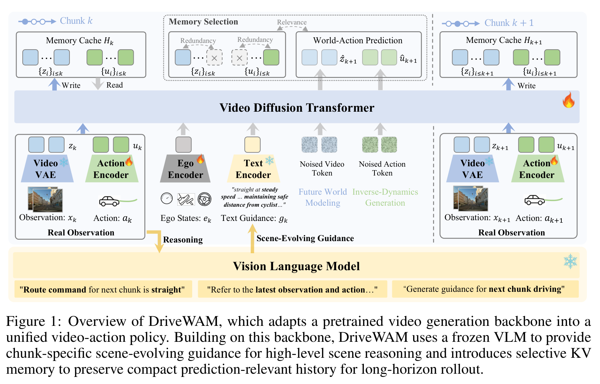
全部细节
这是论文原文图表或页图；具体版本、页码和裁剪信息见邻近中文说明。
- 论文版本：
2605.28544v1；PDF SHA-256：2cac17398b8e3d82f4edc4b70bc7ab664cca31600c1d4e17a9dd51c49c205581；page SHA-256：1204a7b360335f98525a8488c059443228bb79df23cda63203bfbd14a2dd7411。 - crop bbox（pt）：
[104, 65, 510, 325]；尺寸：[1692, 1083]；crop SHA-256：dd7b5272e69caa43f227f315e2be05b4c7ca513282c79162a041cf06edfec4b3。 - 图表说明：Fig.1 从左侧真实观察/视频—动作内存进入 Video Diffusion Transformer，先生成 future-world 潜变量，再通过 inverse-dynamics 动作 generation 输出动作；下方冻结 VLM 依据当前帧、动作和 route command 生成块引导，上方内存 selection 保留历史。
图表说明： 图 1 说明 DriveWAM 如何把预训练视频生成主干改造成统一的视频—动作策略：真实观察和视频—动作内存进入 Video Diffusion Transformer，先生成下一段 future-world 潜变量，再由 inverse-dynamics 动作 generation 输出动作。冻结的 VLM 读取当前帧、动作和 route command，为每个块产生随场景变化的引导；Selective KV 则在各层分别压缩视频/动作历史池，只保留与后续预测相关的历史词元。图中的“先世界、后动作”是该方法的关键依赖，意味着训练时动作可读取干净未来潜变量，而推理时必须读取模型自己生成的未来潜变量。该图不展示 route command 是否由未来 yaw 离线构造，也不证明 VLM 引导没有监督泄漏；内存 selection 是历史注意力的近似，不能直接当作漂移修正或端到端控制延迟保证。
- 进一步分析：随场景变化的引导与 selective KV 处理不同时间尺度：前者更新语义与路线，后者压缩历史词元。与 Metis 训练视频、推理仅生成动作不同，DriveWAM 继续显式生成未来潜变量，动作因而依赖生成未来的质量。图中先世界后动作的路径也说明训练/test 潜变量替换是关键边界。
- 证据边界：图不展示训练 route command 从未来 yaw 离线构造的过程，也不证明 VLM 引导没有监督泄漏。内存 selection 表示 attention 历史近似，不是漂移修正或端到端时延保证。 当前 visual_status=
precise_crop_and_visual_checked；semantic_status=reviewed/pass；局部建议：保留冻结 VLM、分块专属、Selective KV 的限定词。。历史状态semantic_pending仅对应早期裁剪回执，原文证据边界继续有效。
原文图表卡片：表 5（PDF p.8）
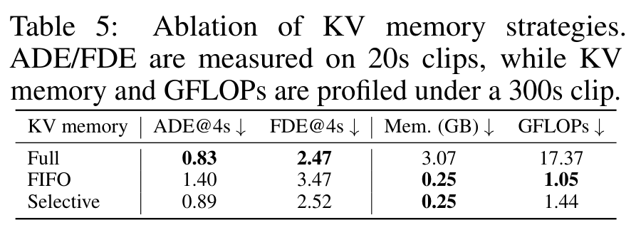
全部细节
这是论文原文图表或页图；具体版本、页码和裁剪信息见邻近中文说明。
- 论文版本：
2605.28544v1；PDF SHA-256：2cac17398b8e3d82f4edc4b70bc7ab664cca31600c1d4e17a9dd51c49c205581；page SHA-256：bcfee48fecd1d582b8d44aac2b8ba9786207d6486100846981b928edb14d1c65。 - crop bbox（pt）：
[292, 206, 508, 285]；尺寸：[900, 330]；crop SHA-256：99645e94860e0676084559286aba7c3e025eec7bfd63c05f3d79fcc694ba3da7。 - 图表说明：表 5 完整列出 Full/FIFO/Selective：ADE/FDE 为 0.83/2.47、1.40/3.47、0.89/2.52；内存为 3.07/0.25/0.25 GB，GFLOPs 为 17.37/1.05/1.44。图注明确精度测 20s clip，内存/GFLOPs 测 300s clip。
- 进一步分析：Selective 比 FIFO 多用 0.39 GFLOPs，却显著减少轨迹误差；相对 full 缓存节省约 91.9% 内存，同时精度略降。这是保留相关历史而非简单按年龄丢弃的证据。与 X-WAM 的 ANS 动作延迟不同，本表优化历史 attention/缓存的资源，不能把 17.37/1.44 当作整机提速倍数。
- 证据边界：20s 精度无法证明 300s 行为稳定，组件 GFLOPs 也非实际耗时。缓存选择可能丢弃迟发关键证据，表中没有该类长尾风险、置信区间或 VLM/video/action 全链路延迟。 当前 visual_status=
precise_crop_and_visual_checked；semantic_status=reviewed/fix；局部建议：将任何 p.9 引用改为 p.8；不要称 Selective KV 已证明实际耗时延迟加速。。历史状态semantic_pending仅对应早期裁剪回执，原文证据边界继续有效。
正文：05_analysis\full_reading\drivewam\paper_reading_report.md；9903 字符 / 4529 中文字符；SHA-256 9fc558c7c75e8025da87d6ea4b270d2599ae33719e0375cdbb02e48d4e114a3e。
来源覆盖：05_analysis\full_reading\drivewam\source_coverage.json；问题台账：05_analysis\full_reading\drivewam\paper_questions_for_code.md。
自动驾驶 · 核心论文
DriveWAM 全文精读：把视频生成先验、语义引导和有限记忆合成世界动作策略
当前正式机制图与完整图解：F-drivewam-mechanism
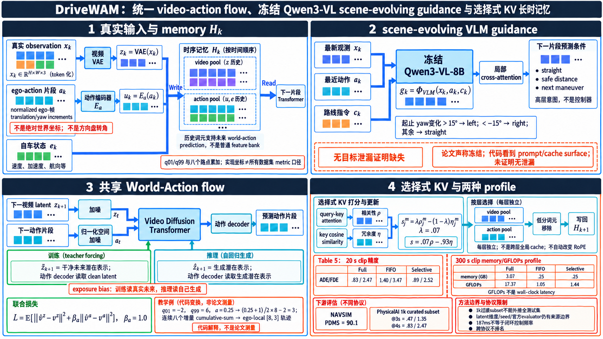
全部细节
图像 ID：F-drivewam-mechanism；PNG、native receipt 和逐图中文说明由当前任务 accepted manifest 绑定。
图像身份：F-drivewam-mechanism；审校时间：2026-11-01T02:23:26.455441+00:00；尺寸：1672×941；SHA-256：7666072f4cb4da4992c7c0e712674aa26d9eaaf9e2d412c4c81d8afdc21401ca。原生回执（此附件保存在完整本地归档中）。
自动驾驶 · 核心论文
DriveWAM 高密度科研图逐区逐箭头说明
一、真实输入与内存 H_k：把视频和动作放进同一时间序列
箭头从真实 observation x_k 进入视频 VAE，得到 z_k；从 ego-action 片段 a_k 进入动作编码器 E_a，得到 u_k；两者连同自车状态 e_k 按时间顺序写入 H_k。动作输入要标为已归一化 ego-帧 translation/yaw increments，不能画绝对世界坐标或方向盘角度。H_k 画成视频 pool 与动作 pool 两个并列容器，Read 箭头指向下一片段的 Transformer，Write 箭头来自真实 observation。这个结构解释了为什么缓存不是普通 feature bank：它保留可以支持未来世界—动作 prediction 的历史词元。
动作词元的已归一化 ego-帧形式决定了后面的解码坐标。代码可以闭合 q01/q99 和八个路点的累加，但论文没有把这些实现坐标等同于所有数据集的指标口径。内存的读写箭头要保留片段时间顺序。
真实输入区要说明视频词元与动作词元的时间对齐：观察片段经过 VAE，动作片段经过 MLP，两者按时间顺序写入缓存。缓存不是一个全局向量，而是分 modality 的历史池；读写箭头必须从当前片段指向下一片段，不能绕过缓存直接画长期记忆。
二、scene-evolving VLM：高层语义箭头不能偷看目标未来
箭头从最新 observation x_k、近期动作 a_k、路线命令 c_k 指向冻结 Qwen3-VL-8B，输出 g_k=Φ_VLM(x_k,a_k,c_k)。g_k 沿局部交叉注意力箭头进入下一片段的预测条件，标签写“straight / safe distance / next maneuver”。论文还给出 route yaw 阈值：起止 yaw 变化大于 15° 判 left，小于 −15° 判 right，其余为 straight；这是高层意图，不是控制器。代码静态审计能看到提示/缓存接口，但没有目标 masking 证明，所以 VLM 模块旁边要画橙色断开线“无目标泄漏证明缺失”，不能把未来动作标签接入 VLM。
VLM 引导是高层语义接口，不是一个已经验证的安全教师。路线 yaw 阈值只产生 left/right/straight 意图，不能画成未来轨迹监督。橙色边界将“论文声称冻结、代码看到提示”与“未证明无泄漏”并列。
语义引导是对下一段的高层意图，不是未来轨迹标签。VLM 读当前可用上下文，路线命令只表达直行或转向意图。代码看到提示和缓存但没有目标遮罩证据，因此橙色边界要靠近 VLM 输入箭头，防止执行器生成未来信息。
三、共享 World-Action flow：训练干净潜变量与推理生成潜在表示必须分色
视频分支把下一视频潜变量 z_{k+1} 加噪，动作分支把下一动作片段直接在归一化空间加噪；两支共同进入 Video Diffusion Transformer。训练箭头明确写 z-tilde_{k+1}=干净未来潜在表示，动作解码器读取干净潜变量；推理箭头先从噪声生成 z-hat_{k+1}，再让动作解码器读取生成潜在表示。这是 exposure bias 的精确源头。联合损失写 L=E[||v_hat^z−v^z||²+β_a||v_hat^a−v^a||²]，β_a=1.0。用教学数值说明归一化回解：若某一 q01=−2、q99=6、网络输出 a=0.25，则解码增量为 (0.25+1)/2×8−2=3；连续八个增量再 cumulative-sum 成 ego-local [8,3] 轨迹。该数值只解释代码变换，不能当论文测量。
干净/生成潜在表示的替换关系是最重要的训练推理差异。训练中动作读真实未来会让条件更容易；推理中只能读自己生成的未来。图中用两条箭头和不同颜色表示这种 exposure bias，不能用一个“未来潜变量”标签掩盖。
训练和推理的潜变量替换决定动作分支是否面对自己的错误。训练干净潜变量是教师条件，推理生成潜在表示是模型条件；如果图只写一个未来潜变量，读者会错过暴露偏差。联合损失和视频/动作两条速度箭头也应保持分色。
四、选择式 KV 与测量：精度、内存和 FLOPs 三条箭头不可合并
选择式 KV 先用 query-key attention 得到相关性 ρ，再用键 cosine similarity 得到冗余度 η，组合 s=.07ρ−.93η，在每层独立的视频/动作 pool 中淘汰低分词元。箭头最后写回 H_{k+1}；它不是跨层一个全局缓存，也不是自动改变 RoPE。表 5 评估箭头列 Full/FIFO/Selective：ADE/FDE 分别 .83/2.47、1.40/3.47、.89/2.52；内存 3.07/.25/.25 GB；GFLOPs 17.37/1.05/1.44。用橙色竖线断开“20 s clip 的精度”与“300 s clip 的内存与浮点运算量测量”，禁止连到实际耗时延迟。NAVSIM PDMS=90.1、PhysicalAI 1k curated subset @3s=.47/1.35、@4s=.83/2.47 另画评估箭头，1k 过滤 subset 不能外推全测试集。
SelectiveKV 在每层分别维护视频和动作池，相关性来自注意力，冗余来自键相似度。它压缩的是历史注意力输入，GFLOPs 不是端到端时间；20秒精度和300秒资源测量的不同时长必须在同一分区并列。
选择式 KV 的相关性与冗余是逐层计算的局部选择，不是一个全局的压缩比例。把每层 pool 画出两个小容器，并把测量时长写在对应数字旁，才能防止把 GFLOPs 当作端到端速度或把 20 秒精度当成长时稳定性。
逐箭头审计补记：
逐箭头审计补记：观察和动作写入两个记忆池的箭头应先经过各自编码器，再写入 H_k；VLM 的三个输入箭头全部来自当前可用上下文，不能从未来潜变量反向连入；共享 Transformer 的视频目标箭头和动作目标箭头都来自当前片段的带噪词元，训练时动作条件箭头标干净 z，推理时标生成的 z；SelectiveKV 的相关性和冗余度箭头在每层本地池内闭合，最后才写回 H_{k+1}。评估箭头必须携带 clip 时长，否则读者会把 20 秒精度和 300 秒资源混成同一实验。
补充边界说明：图中视频、动作、语义和记忆四条链路的消费者不同。视频潜变量被下一片段的世界建模读取，动作词元被 inverse-dynamics 分支读取，语义引导只作为高层条件，记忆池只保存注意力需要的历史。任何箭头从评估数字回到训练模块，都应表示分析关系而非实际反向传播。
1. 身份、范围和一句话定位
本文为 DriveWAM: Video Generative Priors Enable Scalable World-Action Modeling for Autonomous Driving，arXiv:2605.28544，官方PDF为v1、17页。正文第1–9页，参考文献第10–13页，附录A–D第14–17页。作者来自香港中文大学（深圳）与Voyager Research、滴滴。本文在本工程中只用官方PDF、HTML、flattened TeX和来源清单精读，未读取源码或历史研究材料，来源哈希见本目录source-manifest.json。
定位：DriveWAM把预训练视频扩散Transformer直接当作驾驶策略核心。模型先根据历史视频、动作、自车状态和冻结VLM的语义引导生成未来视频潜变量，再以该未来潜变量作为逆动力学条件生成动作；训练中视频与动作都用流匹配，推理时用模态分开的有限KV 内存维持长时历史。作者要回答的是“视频生成先验能否同时保留动态世界建模和连续动作能力”，而不是“图像生成是否逼真”单一问题。
证据标签：paper-stated是原文事实或作者主张；reasonable inference是由结构和实验推出的解释；not reported是全文没有给出。最稳健的论文结论是：在NAVSIM和一个按VLM筛选的PhysicalAI子集上，统一视频–动作训练、随场景变化的引导和selective KV各自有改善；但缓存是推理时训练无关的近似，语义引导的VLM本身使用了后验标注/路线构造，且测试集是作者筛选的1000 clip，不能把结果直接等同公开道路泛化。
2. 问题、旧方法与贡献
VLM/VLA善于语义，但主要由静态图文预训练，可能缺少车道几何、运动连续性和未来演化。视频模型拥有物体持久性、运动模式和场景变化先验，但原生目标是生成图像，不知道导航意图、让行优先级或决策相关参与者。直接把视频模型改成驾驶策略要解决三个具体冲突：视频先验与连续动作如何共享；近未来动态与高层路线意图如何组合；自回归长时上下文如何不线性爆炸。
DriveWAM的四项贡献是：统一视频动作flow；scene-evolving 自动驾驶引导（每个未来块由冻结Qwen3-VL-8B产生新引导）；selective KV 内存（视频/动作分池，以相关性–冗余度选保留词元）；NAVSIM、PhysicalAI和4k/20k/100k数据规模实验。它与“视频作为辅助分支”的VLA不同，视频生成Transformer是策略主干；与单一全局文本提示不同，语义在每个块更新；与FIFO不同，缓存按内容而非年龄保留。
一个关键边界：正文说“未来世界建模→逆动力学动作”，但实验动作结果来自监督标签；生成的未来潜变量不是可验证的真实世界状态。未来视频与动作相容可以提高规划，也可能把错误的未来模式稳定执行。论文定性Fig.4只显示画面与轨迹相配，未展示错误但一致的反例统计。
3. 符号与前置概念
每个驾驶clip被分成连续块，当前决策为k。是视频块，是对应ego动作，是块末状态（速度、加速度、曲率等），是下一块的语义引导，是历史视频潜变量和动作词元。VAE把视频变成，动作编码器把动作变成，并通过主干输入层映射到共同宽度d。
流匹配在时间上把干净数据和高斯噪声连起来。DriveWAM正文采用噪声端、干净端；视频分支预测。动作分支对归一化自车坐标系平移和yaw增量加噪，经同一Transformer与动作解码器预测速度。这里的tau不是驾驶时间，动作块的真实秒数由数据设定决定。
“逆动力学”在此是给定未来视觉潜变量和当前上下文推动作，不是传统控制器根据完整世界状态解析唯一控制。一个未来视频可以有多套动作解释，归一化平移/yaw还会受坐标系影响。文章说明动作是已归一化自车坐标系 translation and yaw increments，但没有给数值范围、时间采样、速度/加速度约束或动作到车辆控制的最后接口。
4. M-DW-01：统一视频–动作自回归flow
4.1 词元化和条件流
式(1)：。历史视频和动作保持时间顺序共同输入。式(2)未来视频潜变量从噪声流向下一块未来，条件是历史、当前状态、语义引导。动作式(3)为，其中训练用干净未来潜变量 ，推理用生成潜变量 。这个替换构成训练–test mismatch，作者加noisy-history augmentation缓解。
教学实例：当前画面中骑行者靠右，历史动作显示车辆正减速，路线引导为“直行，保持安全距离”。视频分支可能生成骑行者继续向前、车道略向左的未来潜变量；动作分支读这个潜变量，生成小幅横向偏移和减速。若视频分支误把骑行者当静止物，动作分支也会在相同错误未来下产生直行，这说明共同条件能对齐，也能共同犯错。
4.2 联合损失和训练/推理差异
式(4)为
视频项保留预训练时空生成先验，动作项把未来视觉转成可执行运动。论文给出默认。教学上，若视频误差平方和4、动作误差平方和0.25，则总损失4.25；若，总损失5，动作梯度相对更重要。真实词元数量和模态reduction未交代，因此1.0不代表两模态梯度同量。
训练把完整clip所有块一次前向，使用因果teacher-forcing 掩码并行去噪；推理每次只滚动一个块：先采视频，再基于生成视频采动作，得到真实下一帧后再加入历史。训练并行和推理串行的接口一致在因果关系上，但推理视频误差会传给动作，动作误差会影响下一次真实或缓存上下文。论文没有给视频采样是否共享随机种子、动作采样是否确定性以及异常块的回退。
5. M-DW-02：scene-evolving 自动驾驶引导
5.1 语义生成
冻结Qwen3-VL-8B在每个决策k接收最新观察 、近期ego轨迹 和路线命令 ，输出简短文字 。训练时文本预计算缓存，推理每块查询一次，并复用所有flow采样步。与全局提示相比，新的引导能随红绿灯、行人、障碍和路线变化更新。它只看“当前”信息，作者声称不泄漏目标块。
附录给了实际路线构造：从下一4秒块起止自车旋转 得相对yaw；大于15°为left，小于−15°为right，否则straight。该命令没有未来位置、速度或轨迹坐标。随后把命令、最新前视图和前一4秒BEV轨迹给VLM，要求少于50词、两句话、现在时。于是“causally available”依赖日志中已经知道的路线标签生成方式，但不直接把未来坐标喂给VLM。
5.2 局部交叉注意力
每个目标块 (k+1) 的视频动作词元只允许看自己的引导 ，通过额外block-diagonal文本掩码隔离后续块引导。这防止在训练完整clip时第k+1预测看到第k+2的语义。局部引导的代价是VLM必须每个块更新，增加推理开销和文本噪声。Table3在4k、20k、100k数据量都显示SE 引导改善ADE/FDE，说明它补充了低层视频先验；但VLM生成质量、提示稳定性、路线yaw阈值敏感性没有消融。
6. M-DW-03：selective KV 内存
完整KV缓存随滚动执行线性增长，FIFO会删除旧的但仍重要的行人/车辆运动。DriveWAM分视频池 和动作池 ，容量 独立。对模态m，当前查询 对缓存键 的平均attention是相关性，键与其他缓存的平均cosine是冗余：
分数低的词元被删。相关性高说明当前查询在用它，冗余高说明它和已有词元相似，二者的权衡由λ控制。论文默认λ=.07，视频/动作容量448/160。教学缓存有三个视频词元：A相关.8、冗余.2；B相关.5、冗余.1；C相关.2、冗余.8。λ=.07时，A=.07×.8−.93×.2=−.130，B=.07×.5−.93×.1=−.058，C=.07×.2−.93×.8=−.730。若只能保留两个，留下B和A，删除C；绝对分数为负并不影响排序。这组相关性仅是分别展示评分的教学数，不声称构成一个已经归一化的三词元 attention分布。这个极低λ强调去冗余；实际cosine/attention尺度决定结果，不能只看直觉。
更新式(8)是从旧池取最高分的 个，再并入新块 KVs。它只在推理使用，不改参数/损失。优点是300秒滚动执行内将3.07GB/17.37GFLOPs降到0.25GB/1.44GFLOPs；代价是选择近似可能丢掉偶尔才重要的旧证据。Table5 selective准确率0.89/2.52介于full .83/2.47和FIFO1.40/3.47之间，说明效率–精度折中真实存在。
7. 训练配置与可复现边界
主干为Wan2.2-TI2V-5B，隐藏维度 dimension3072，完整微调视频Transformer和新动作/状态模块。输入分辨率256×448，48 H20，AdamW β=(.9,.95)、weight decay.1、lr1e−5、每卡batch1，动作权重βa=1。NAVSIM训练100k iteration，50k/70k/90k各衰减0.5；每样本当前帧→4秒未来，1Hz，因单一未来规划窗而成为一个块。PhysicalAI每样本20秒clip随机裁12秒，视频1Hz、动作10Hz，训练50k iteration。
推理视频Euler ODE三步，从τ=1到0.6；动作十步，从1到0；selective 缓存 λ=.07、448/160。视频只积分到0.6意味着生成潜变量尚未到正文定义的干净端，需要依赖预训练模型的特定flow接口，这个设计在论文中没有理论解释。动作和视频步数不相同，附录C进一步报告了VLM、视频和动作三段延迟，详见本报告§11。
数据方面，NAVSIM有103k trainval/12k test；PhysicalAI约1700小时、306152个20秒clip，训练153625、验证90928、测试61599。作者用Qwen3-VL标签筛选100k训练和1000测试，保留稀有/普通场景。该1000测试不是原始全测试均匀抽样，故其ADE/FDE更像定向场景诊断；VLM标签误差会影响筛选和语义引导的两处。
8. 主实验与消融
8.1 NAVSIM和PhysicalAI
Table1 NAVSIM单前视DriveWAM NC98.3、DAC98.1、TTC95.2、Comfort100、EP84.3、PDMS90.1。它高于WorldDrive89.0和DriveVLA-W0的88.4，但低于带多轨迹锚点的DriveVLA-W0†90.2。由于传感器、模态、锚点和训练数据不同，不能把90.1称为无条件SOTA。Table2 PhysicalAI 1000 clip上，DriveWAM 5B+8B，ADE/FDE@3s=.47/1.35，@4s=.83/2.47，优于VaVAM1.3B（2.31/4.32，只有3秒）和Alpamayo-1.5 10B（.80/2.31，4秒1.44/4.18）。参数量更大不等于数据/筛选/训练协议相同。
8.2 引导与数据规模
Table3每组50k iteration。4k clip无SE ADE/FDE1.21/3.65，有SE1.01/2.95；20k从.95/2.94到.94/2.65；100k从.92/2.75到.83/2.47。100k下ADE相对下降(.92-.83)/.92=9.78%，FDE下降10.18%。SE收益随规模增加仍存在，但20k ADE几乎不变，说明语义主要改善长尾终点而不一定改善所有平均轨迹。没有按事件类别和VLM误差分层。
8.3 预训练与联合监督
Table4训练100k、50k iteration。无预训练但有视频监督1.10/3.26；有预训练去视频监督1.23/3.79；预训练+视频监督.83/2.47。两项缺一不可的解释合理：预训练提供动态先验，联合视频损失防止动作适配破坏先验。可是“无预训练”与“有预训练去视频监督”还可能有不同初始化/优化轨迹，且没有仅生成动作统一基线的更多随机种子。
8.4 selective 内存
Table5在20秒clip测ADE/FDE，在300秒测内存/GFLOPs。full .83/2.47，3.07GB，17.37GFLOPs；FIFO1.40/3.47，.25GB，1.05；Selective.89/2.52，.25GB，1.44。Selective相对full的ADE增加(.89-.83)/.83=7.23%，FDE增加2.02%，但内存降低91.9%，单层GFLOPs降低91.7%。这些比例说明缓存不是免费压缩；论文未报告更长/更复杂交通事件下被删证据造成的失效。
9. 图表、附录和局限
Fig.1概览图把VLM、视频/动作flow、缓存和下一块连起来；箭头顺序体现先视频后动作。Fig.2训练掩码中历史、查询、引导和动作的可见性应结合正文理解，不能从像素颜色直接推掩码矩阵。Fig.3在PDF6显示历史块参考帧，以及查询chunk4、5之后保留的位置；右边色条标high/low score，黑块显示未保留区域。它可说明保留位置随查询变化，但没有提供可重算的逐词元原始分数。Fig.4两个评测基准的未来图与轨迹并置，支持定性一致，未提供失败案例。
附录Fig.6按场景标签给视频样本，事故/遮挡行人等高兴趣分值更高；Fig.7显示指导文字会从“直行谨慎”变成“让行、左转”等。它验证引导确实随上下文变化，不能验证文字本身真实或最优。附录A的兴趣分数权重（事故5.0、遮挡行人4.0、动物3.5、交通警察3.0）是筛选规则，可能把测试集偏向少数事件；附录B路线命令由真实未来yaw构造，训练引导存在比纯图像更强的路线标签监督。
本文局限是：单前视输入限制遮挡和三维几何；VLM每块增加成本；selective 缓存可能丢旧信息；PhysicalAI测试是筛选1000 clip；没有完整闭环真实车辆实验。最重要的失败模式是“语义引导错、视频未来错、动作随之错”，联合生成会使错误保持一致。作者没有给专门的错误拒绝、置信度或多模态候选策略。
10. 自测与教学故事
Q：为什么动作要条件于生成视频，而不是只看历史？因为作者希望动作成为未来世界演化的逆动力学落地；这在结构上减少独立分支不一致，但生成视频仍可能错，故不能当正确性保证。
Q：为什么缓存要分视频和动作池？视频词元数量大，单一池会挤掉紧凑的动作历史；分池保证场景证据与自车运动都保留。代价是两个预算需要手工选，且相同总预算下可能不是最优。
Q：VLM 引导是零样本语义吗？VLM被冻结，但它接受路线命令和当前观察；路线命令由真实未来yaw离线构造，训练文本也缓存，因此不能把整个DriveWAM称为无外部驾驶监督。
Q：Selective 内存把17.37降到1.44GFLOPs是否说明整体快12倍？这是300秒下单层因果自注意力的GFLOPs和所有DiT层KV内存；VLM、VAE、flow采样和视频解码不在这个比值里，不能直接写成端到端12倍实时。
把论文想成三位司机：视频司机负责想象道路如何变化，VLM司机告诉他“这次要去哪个出口、遇到行人要让”，动作司机把想象变成轨迹。每次只保留最有用且不重复的记忆，才能开很久不爆内存。三位司机如果一起误判信号，路线也会很一致；因此DriveWAM解决的是动态先验、语义意图和记忆效率的组合，尚未解决不确定性和真实闭环安全。
11. 效率附录、精确计算和理解验收
11A. 语义与公式复核补记（2026-10-28）
源文为PDF pp.4–8、13–16。式(1)应明确为 ；动作flow在训练读取干净未来潜变量 ，推理读取生成潜变量 ，noisy-history augmentation缓解该分布差异。旧正文中(hat z)是数学展示损坏，不能把hat删去。
Scene-evolving 引导由冻结VLM生成，但训练路线命令来自未来yaw构造，不能把“冻结VLM”改写成整个系统没有路线/动作监督。Selective KV的相关性与冗余评分只控制历史词元保留；17.37→1.44GFLOPs是attention/缓存组件测量，不能变成端到端12倍速度。附录单H20的1262ms/871ms需保留VLM、视频 flow、动作 flow拆分，4秒块跨度与10Hz动作标签不是同一个反应频率。
PhysicalAI筛选1000 clips和数据规模4K/20K/100K的对照应保持原始分母与筛选规则；ADE/FDE、PDMS和视频质量不合并成安全分数。论文没有完整reactive闭环车辆实验，长期安全和缓存丢失关键历史的风险保持未验证。
附录C把每个4秒块的延迟拆成三段：VLM 引导 125ms、视频三步Euler 372ms、动作十步765ms，总和为1262ms。把动作步数减到5后为125+372+374=871ms；相对默认配置下降391ms、约31.0%。相对Alpamayo-1.5的900ms，871ms低29ms（约3.2%），但二者输入词元、输出目标、是否包含显式视频生成不同，故只能说在该单H20测量中总块时间相近。DriveWAM*的ADE@4s=.84略差默认.83，FDE=2.45反而优于2.47，显示少步的误差不必在两个指标同方向。
“每4秒块”与“动作10Hz”看起来矛盾，原因是视频流降采样到1Hz，而ego 动作仍以10Hz监督；动作块含一段密集动作，视频潜变量是稀疏视觉摘要。论文没有给动作词元数量、动作解码后如何重采样到控制器、4秒内是否一次性执行还是滚动执行。若每1262ms才输出一次4秒动作，在线频率与10Hz标签不等价；若控制器只取前部动作，则其余动作是为未来条件服务。该接口必须在代码中确认。
附录A的数据筛选也改变了“泛化”的含义。每clip均匀抽20帧交给冻结Qwen3-VL-8B，四组提示识别天气、光照、道路、VRU、车辆交互、路口和长尾事件，再按规则加权。interest≥2.0的训练clip全部保留，低分只取一半；测试从稀有标签（每类少于1%）、兴趣分数前75百分位分组样本和200个普通场景组成1000条。于是Table2不是原始测试分布的无条件平均，优点是更能检验长尾，代价是性能可能受筛选规则和VLM标签质量影响。论文没有报告随机1000子集或全test结果。
Table1的PDMS组合与DriveVA论文中的NC/DAC/TTC/Comfort/EP类似，但DriveWAM没有在正文重新给公式，只沿用NAVSIM官方指标。不能用PhysicalAI的ADE/FDE与NAVSIM PDMS做“哪个更安全”的跨数据集排名。Table2比较的Alpamayo-1.5使用约80,000小时数据，DriveWAM用筛选100k clip；时间长度、相机同步、动作标签质量和预训练视频来源不同。比较的科学问题是“在各自公开配置下谁在该测试子集误差更低”，不是纯模型大小实验。
关键机制自测如下：
- 若把生成视频潜变量替换成真实未来潜变量，动作损失变低并不能证明推理有效，因为训练本来使用teacher-forced 干净潜变量；真正需要比较的是生成潜变量条件下的动作与真实潜变量条件下的动作差距。论文只通过noisy-history augmentation缓解，没有报告这项诊断。
- 若缓存分数中的cosine冗余为负，式(7)会因减去负数而提高分数；因此“低相似就是互补”并非自动被惩罚，相关性的尺度、归一化和负余弦处理很重要。正文没有说明是否截断cosine或做层间平均。
- VLM路线命令由真实块起止yaw阈值生成，若车辆在大弯道中yaw变化小于15°但必须转向，命令可能被标成straight；反之道路横摆噪声可能触发left/right。论文没有报告阈值敏感性或人工纠正比例。
从防御角度看，DriveWAM最难被否定的是“视频先验+视频监督同时存在时最好”，因为Table4三行方向一致；最需要补充的是把SE 引导、缓存、视频flow分别在同一随机种子和全测试分布上评估，并报告语义提示错误、视频模式错误、缓存删除关键词元三类失败。只有这样，读者才能判断收益来自动态先验、外部VLM语义还是数据筛选。
5. drivinggpt
原文图表证据（v3 精确裁切）
原文图表卡片：图 2（PDF p.4）
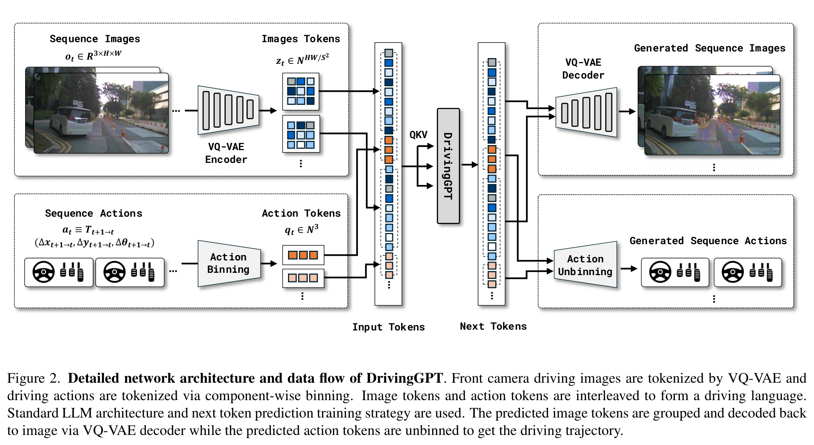
全部细节
这是论文原文图表或页图；具体版本、页码和裁剪信息见邻近中文说明。
- 论文版本：
2412.18607v1；PDF SHA-256：d0d9b8e4d5d847c3f63680fe04afc8f18f84bff2398fa3bc18c972bd4530c027；page SHA-256：420a383c6fd4199ea7d5f4fee74fd5991383d6b6eef34c5f93045b588106e570。 - crop bbox（pt）：
[54, 80, 558, 356]；尺寸：[2100, 1150]；crop SHA-256：5c08d2573ec0733c295bb05b2485a50ea90c0d73ca8a970a669629f79423638d。 - 图表说明：Fig.2 左上以 VQ-VAE 将 front-camera 图像编码为 image 词元，左下以 component-wise binning 得到动作词元；二者交错进入 DrivingGPT，右侧通过 VQ 解码器和 unbinning 分别还原图像与轨迹。
- 进一步分析：统一自动驾驶 language 将连续驾驶过程离散化为因果序列，动作位置和词表不再是视频模型之外的附加控制器。与 PWM 的低分辨率潜变量、DriveVA 的连续 flow 相比，DrivingGPT 的主要取舍是量化误差与标准 LLM 自回归接口之间的平衡。
- 证据边界：图不披露 percentile/clamp、量化区间数与 SE(2) 组合细节；相同词元接口不证明理解一般因果世界。视频和动作的共同解码也不确保长时物体持久性、运动尺度或车辆执行约束。 当前 visual_status=
precise_crop_and_visual_checked；semantic_status=reviewed/pass；局部建议：保留词元顺序和相对动作积分，不添加固定实现细节。。历史状态semantic_pending仅对应早期裁剪回执，原文证据边界继续有效。
原文图表卡片：表 3（PDF p.7）
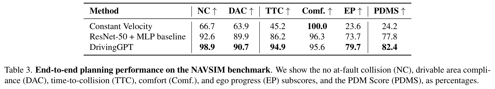
全部细节
这是论文原文图表或页图；具体版本、页码和裁剪信息见邻近中文说明。
- 论文版本：
2412.18607v1；PDF SHA-256：d0d9b8e4d5d847c3f63680fe04afc8f18f84bff2398fa3bc18c972bd4530c027；page SHA-256：9ac7e08f730a02f6f06580a4363313a705b945f034d074a4ba39e12e23e7902a。 - crop bbox（pt）：
[54, 308, 558, 399]；尺寸：[2100, 380]；crop SHA-256：d1faf6c3d82f66f90369a3c3147c445ab68d84a115233b522c244546494eafed。 - 图表说明：表 3 比较 Constant Velocity、ResNet-50+MLP 和 DrivingGPT 的 NAVSIM 指标。PDMS 为 24.2、77.8、82.4；DrivingGPT 的 NC 98.9、DAC 90.7、TTC 94.9、Comfort 95.6、EP 79.7。它相对同前视基线增加 4.6 PDMS 点。
- 进一步分析：DrivingGPT 同时提高安全和进度列，但 comfort 95.6 比基线 96.3 略低，说明总分收益存在局部取舍。与 WoTE 使用多候选评价提升 PDMS 不同，此表的增益来自统一语言式视觉—动作建模；不能因为同用 PDMS 就视为相同规划算法。
- 证据边界：三行主表没有将词元化器、position 嵌入、数据质量单独隔离，机制归因需要后续消融。NAVSIM 非反应式/开环设置不等于真实闭环驾驶，平均列也没有置信区间。 当前 visual_status=
precise_crop_and_visual_checked；semantic_status=reviewed/pass；局部建议：无需数值修正；保留百分比和五个 subscore 名称。。历史状态semantic_pending仅对应早期裁剪回执，原文证据边界继续有效。
正文：05_analysis\full_reading\drivinggpt\paper_reading_report.md；14281 字符 / 4614 中文字符；SHA-256 6cfe0d4b0d9a8cf622b8f37c3877e9a6138c40ef74a18f592035184866ea3a51。
来源覆盖：05_analysis\full_reading\drivinggpt\source_coverage.json；问题台账：05_analysis\full_reading\drivinggpt\paper_questions_for_code.md。
自动驾驶 · 核心论文
DrivingGPT：完整论文精读报告（paper-only）
当前正式机制图与完整图解：F-drivinggpt-mechanism
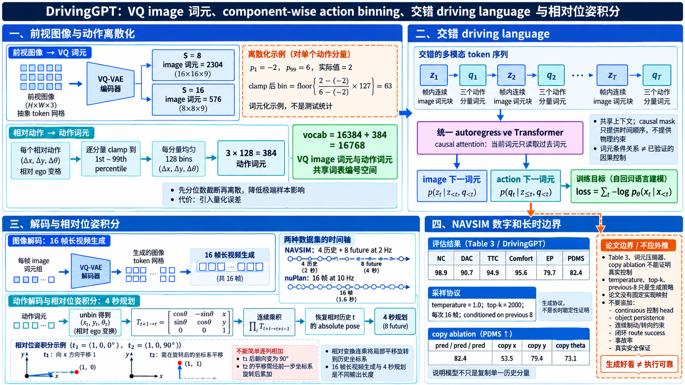
全部细节
图像 ID：F-drivinggpt-mechanism；PNG、native receipt 和逐图中文说明由当前任务 accepted manifest 绑定。
图像身份：F-drivinggpt-mechanism；审校时间：2026-10-31T20:57:31.307056+00:00；尺寸：1672×941；SHA-256：f0d0f3672b79346b6cb4b0199972ddcbfe5c116560ad2c1f6bd3f7c446b2289f。原生回执（此附件保存在完整本地归档中）。
自动驾驶 · 核心论文
DrivingGPT 高密度科研图逐区逐箭头说明
一、前视图像与动作离散化：把异构数据变成词元
箭头从前视图像进入 VQ-VAE 编码器，空间下采样率 S=8 或16 时分别得到 2304 或576 image 词元。另一条箭头从每个相对动作 (Δx,Δy,Δθ) 开始，先按每个分量的1st percentile和99th percentile clamp，再均匀切成128个量化区间；三个分量共3×128个动作词。图中要写 vocab=16384+384=16768。给一个离散化教学例：某分量的 p1=−2、p99=6、实际值=2，clamp 后量化区间=floor((2−(−2))/(6−(−2))×127)=63；这是词元化示例，不是测试统计。箭头必须标相对 ego 变换，不要画绝对世界坐标。
动作 binning 先按数据分位数截断再离散，可以降低极端样本对词表的影响；但它也引入量化误差。图中的量化区间示例只说明计算顺序，不应被当成训练集统计。VQ image 词元与动作词元共享词表编号空间。
分位数裁剪让动作词表覆盖常见范围，但边界外行为会被压到同一个量化区间。教学例只显示数值进入量化区间的顺序，不表示所有驾驶动作误差相同。图中保持 x、y、theta 三个词表角色清晰。
二、交错自动驾驶 language：同一因果 Transformer 学两个子任务
把词元按 z_1,q_1,z_2,q_2,…,z_T,q_T 交错排成自动驾驶 language；image 词元是一个帧内的连续块，q_t 是三个动作分量词元。因果 attention 只允许当前词元读取过去词元，目标写成 Σ_t−log p_theta(x_t|x_<t)。箭头要从 sequence 指向统一自回归 Transformer，再从 Transformer 分成 image 下一词元和动作下一词元。不要画成两个独立网络，也不要画动作词元读取未来图像；统一模型同时表达 p(z_t|z_<t,q_<t) 与 p(q_t|z_≤t,q_<t)，但这仍是词元条件关系，不是已验证的因果控制。
交错序列让图像预测和动作预测共用上下文，但因果掩码只提供时间顺序，不提供物理约束。图中要把 z/q 的顺序写清，避免读者以为所有动作词元先于未来图像词元。
交错序列中的 image block 和动作 block 共用因果上下文。因果箭头只限制词元时间顺序，不能代替动力学或碰撞约束；这也是为什么规划表只能说明评测基准分数。
三、解码与相对位姿积分：从词元到轨迹消费者
image 词元组按帧送入 VQ-VAE 解码器，输出生成图像；动作词元先 unbin 得到 (x_t,y_t,θ_t)，再构造 T_{t+1→t}=[[cosθ,−sinθ,x],[sinθ,cosθ,y],[0,0,1]]，连续乘积 Π_i T_{t+i→t+i−1} 得到相对历史 t 的 absolute pose。用三个动作例说明：若 t1=(1,0,0°)、t2=(1,0,90°)，第二个平移会在前一步坐标系旋转后累加，不能简单逐列相加。训练 NAVSIM 使用4 历史+8 未来帧 at2 Hz；nuPlan 使用16 帧 at10 Hz，图中用两条时间轴区分。
相对变换矩阵的连乘会把每个局部平移旋转到历史坐标系；它不是对 x、y、theta 三列做简单累加。16 帧长视频生成和4秒规划是不同输出长度，分别画在视觉和动作终点。
相对位姿矩阵连乘会把局部坐标变换到历史参考系，旋转会影响后续平移方向。图中至少画两步小轨迹和矩阵箭头，帮助新读者理解为什么不能直接把三列数相加。
四、NAVSIM 数字和长时边界：生成好看不等于执行可靠
表 3 评估箭头写 DrivingGPT NC=98.9、DAC=90.7、TTC=94.9、Comfort=95.6、EP=79.7、PDMS=82.4。采样箭头写 temperature=1.0、top-k=2000、每次16帧、条件前8帧；这是生成协议，不是长时稳定性证明。copy 消融可写 pred/pred/pred=82.4、copy x=53.5、copy y=79.4、copy theta=73.1，说明模型不只是复制单一历史分量。论文没有固定实现映射，不能画 object persistence、连续制动/转向约束、闭环 route success 或真实安全。所有这些用橙色边界箭头断开。
表3 的 PDMS 与词元压缩器/copy 消融不能证明真实控制。temperature、top-k、previous-8 是生成策略；论文没有固定实现映射，图中不能添加连续控制、object persistence 或事故率。
采样温度和 top-k 影响视频词元的多样性与细节，不是控制器稳定性证明。copy 消融只排查历史动作捷径，不能证明模型学会了真实因果驾驶。固定实现缺失必须显式写在橙色框。
逐箭头审计补记：
逐箭头审计补记：图像帧箭头先到 VQ-VAE 再到 z 块，动作分量箭头先经过分位数截断、binning 再到 q 块；z 和 q 按时间交错后只向右进入因果 Transformer；图像预测箭头按帧分组进入解码器，动作预测箭头经过 unbin 和相对矩阵连乘进入轨迹；矩阵连乘的第二步要引用第一步的旋转结果，不能用并列相加箭头；评估箭头分别连接表 3、词元压缩器表和 copy 消融，不要汇成开放世界安全输出。
补充消费者说明：image 词元的消费者是 VQ-VAE 解码器，动作词元的消费者是 unbin 和 pose integration；两条输出共享 Transformer 隐藏状态，却不等于图像像素直接决定控制。copy 消融只比较历史动作替代预测动作的分量，不测试真实车辆动力学。
具体时序例中，先给四张历史帧和对应相对动作，模型依次生成未来图像块和动作块；每个动作块中的三个离散分量还需要还原连续坐标，再做位姿变换。误差可以在这些环节分别累积，不能只看最后一张生成画面是否逼真。
正式图卡：DrivingGPT 离散自动驾驶 language、相对位姿积分与长时边界
- 图解重点：VQ image 词元的
S=8/16 → 2304/576、逐分量 1st–99th percentile clamp、每分量 128 量化区间、3×128=384动作词元和vocab=16768。 - 统一序列与解码：
z_1,q_1,z_2,q_2,…进入统一自回归 Transformer；动作 unbin 后通过相对变换矩阵连续乘积恢复历史坐标系 absolute pose，NAVSIM 4 history + 8 未来与 nuPlan 16 帧时间轴分开。 - 评测边界：表 3、temperature/top-k/previous-8 采样协议和 copy 消融单独展示；论文没有固定实现映射，不能外推连续控制输出头、object persistence、闭环 route success 或真实安全。
- 来源与原生来源记录见 图详解（此附件保存在完整本地归档中） 与 回执（此附件保存在完整本地归档中）。
0. 身份与定位
论文 DrivingGPT: Unifying Driving World Modeling and Planning with Multi-modal Autoregressive Transformers，arXiv:2412.18607v1，2024-12-24，PDF 15页（正文9页、补充材料3页）。作者 Yuntao Chen、Yuqi Wang、Zhaoxiang Zhang，来自中国科学院自动化所、中国科学院大学与 HKISI。固定PDF、HTML、TeX和补充材料已完整读取，每页均用PyMuPDF渲染；正文图表与补充材料的视觉核对记录在当前论文语义回执中。
论文提出把驾驶视频和轨迹都离散成词元，交错组成“自动驾驶 language”，用普通因果自回归 transformer同时做未来 image generation与规划。与Metis/SimWAM这类continuous flow WAM不同，DrivingGPT的核心是统一离散词表+下一词元 prediction，动作本身也不是连续回归，而是逐分量binning后的离散词元。
1. 为什么做多模态驾驶语言
论文认为当前自动驾驶 world models主要依赖视频 diffusion：生成视觉质量强，但控制信号和动作 modality的接入不灵活，难把世界建模与规划放进一个可微、统一的序列模型。自回归 transformer天然建模离散序列，已在语言、图像、视频、决策和机器人操作中证明扩展性，因此作者把驾驶序列改写成类似语言模型的词元特征流。
论文问题形式化为POMDP：真实状态 不可见，只能看带噪 observation ，动作策略 和观测转移 都重要。目标是让一个序列模型同时学习“世界如何继续”和“车应该如何走”。
作者的关键取舍：只使用front 相机，暂不加入surround cameras、LiDAR、IMU；用VQ-VAE压缩视觉，避免长序列的context爆炸；用frame-to-frame relative 动作而不是长时间跨度 absolute 轨迹，避免因果 history含有未来动作的泄漏或copy shortcut。
2. 符号和数据实体
- ：时刻 的front 相机 image。
- ：VQ-VAE image 词元，空间downsample rate ，每帧有 词元，视觉词表大小 。
- ：从当前帧到下一帧的relative transform。
- ：三个动作 component各自quantize后的量化区间 id。
- ：每个动作 component的量化区间数；统一词表大小 (D+3M)。
- ：交错视觉/动作词元 sequence，形式 。
- ：从时刻 到 的2D homogeneous transform。
3. Action 词元化：为何不用长绝对轨迹
如果每个帧后放一整段未来绝对轨迹，因果模型在历史动作里会看到未来动作，可能只复制历史解而非依据视觉。作者改为frame-wise relative 动作：
每个分量先按数据的1st和99th percentile clamp：
再均匀分成 量化区间：
用不同vocabulary以减少量纲和幅值差异。论文实验每个分量128 量化区间，视觉词表16384，合计16768。
小例子：假设 longitudinal 在[−0.5,1.5]被分成128 量化区间，某一步 先映射到中间量化区间；heading按自己的percentile和128 量化区间独立量化。模型输出的是三个整数词元，反量化后再积分回轨迹。
4. Visual 词元化与统一词表
输入图像先经VQ-VAE 编码器，得到视觉词元 map 。文中实验把原始900×1600 resize为288×512；S=8时每帧2304 词元，S=16时576 词元。NAVSIM使用12帧（4 history+8 未来）@2Hz；nuPlan使用16帧@10Hz。视觉词元和动作词元按帧交错，形成一个统一自动驾驶 language。
DrivingGPT是Llama-like transformer，使用frame-wise 1D rotary 嵌入；对每个位置的下一词元做standard 因果 cross entropy：
同一目标显式包含两个条件分布：
这让历史视觉与动作可以互相作为上下文，但因果掩码保证当前词元不能读取未来。
5. Action integration：离散词元如何变成轨迹
反量化得到 后，作者构造相对2D变换：
连续 步的绝对pose为
这一步把每帧局部增量转换成自车坐标系未来轨迹。它也解释了为什么heading误差和translation误差会随时间累积；模型在词元空间预测的是局部动作，评测在积分后的轨迹空间进行。
6. 推理：下一词元、guided sampling与长视频
训练和推理均使用image/动作 unified vocabulary。推理时image 词元 temperature=1.0、top-k=2000；由于一个词表里混合视觉和动作，作者用guided sampling 掩码掉foreign vocabulary，避免高温采样时从错误模态取词元。长视频每次生成16帧，条件化 previous8 帧；补充材料进一步生成64帧/32秒。
补充A的高分辨率路线：DrivingGPT先在288×512离散词元空间自回归生成64帧，前8帧条件滚动；再经VQ-VAE 解码器得到convolutional features，upsample到576×1024、压到4 channels，与Gaussian 噪声拼接送入fine-tuned SVD 解码器，每次解16帧，重复4次得到64帧。它解决逐帧VQ 解码器的temporal inconsistency，但引入了额外SVD diffusion 解码器，不能把“纯下一词元”与最终pixel rendering混为一谈。
图 7说明top-k trade-off：K小画面平滑但road cracks/car 详解缺失，K大细节更多但car形状更容易失真。它是采样风格/质量敏感性证据，不是规划 accuracy 消融。
7. 训练设置和数据
图像原始900×1600，resize288×512；image vocab16384、动作 each component128、总16768。AdamW lr1e-4、weight decay0.05、betas0.9/0.95、梯度 clip1.0、词元 dropout0.1，100k iterations、total batch16；训练前随机时间跨度 image flip，路点和yaw同步flip。nuPlan clip16 帧@10Hz；NAVSIM12 帧（4 history+8 未来）@2Hz。
nuPlan覆盖四城1282小时，但公开仅128小时subset；论文只使用front-view 相机。NAVSIM从nuPlan10Hz重采样到2Hz，navtrain1192 scenarios、navtest136 scenarios、navmini396。规划在navmini做4s 非反应式仿真，PDMS包含NC/DAC/TTC/Comfort/EP；世界模型 FID/FVD取navtest512 videos。
8. Video generation结果
Table1：SVD未微调 FVD483.76/FID27.80；CogVideoX FVD848.87/FID31.78；SVD 微调 navtrain FVD227.54/FID24.03；DrivingGPT from scratch FVD142.61/FID12.78。结果支持离散AR视觉模型在该设置下优于两个diffusion 基线。
Table2长视频（512 navtest clips）：SVD FID/FVD从16帧30.48/418.93，32帧35.57/786.68，64帧46.45/1079.28恶化；DrivingGPT为15.04/278.11、16.30/454.28、20.45/506.95。Figure3展示SVD在红灯处重复、DrivingGPT继续产生多样道路。Figure4显示SVD object hallucination（红框突然出现、绿框消失），AR历史上下文更稳定。
证据边界：FID/FVD只测视频分布/特征质量；不直接证明生成视频遵循动作，action-conditioned consistency需另看Qualitative/Planning联动。补充SVD 解码器提高像素分辨率，但Table1比较的分辨率、解码器是否一致需注意。
9. Planning结果
Table3在NAVSIM（navmini）比较：Constant Velocity PDMS24.2；ResNet-50+MLP77.8；DrivingGPT82.4。DrivingGPT NC98.9、DAC90.7、TTC94.9、Comfort95.6、EP79.7。它优于同样只用front 相机、不用ego 状态的ResNet 基线，支持联合world/规划 representation比纯视觉编码器+MLP更强。
Figure5四个复杂场景：unprotected left turn、large curvature turn、merging、take better 路径；蓝线是DrivingGPT，棕线human。图只能展示可行个案。
Table5是最重要的copy-ablation。完整pred/pred/pred PDMS82.4；copy x后53.5，copy y后79.4，copy theta后73.1。纵向copy最糟，因为NAVSIM很多场景车辆刚从stop-go起步；这支持模型确实需要学习视觉和动作，而非复制历史。
Table6 data curation：nuPlan uniform651k sequences/16 帧 PDMS74.6；NAVSIM train104k/12 帧 PDMS82.4。数据质量高于数量的结论是合理的，但两者数据分布、采样频率、词元 context和训练条件未完全对齐。
Table7 position 嵌入：只给image PosEmb PDMS65.3；image+动作 PosEmb82.4。它说明动作词元也需要1D rotary position，不能像某些视频 AR方法那样把动作位置置零。
10. Supplement与实现边界
补充A把离散词元生成与SVD 解码器连接，补充B系统考察top-k。主文没有报告闭环部署，规划是NAVSIM 开环 4s 非反应式仿真；世界模型长视频在navtest512 clips上测。模型不使用ego 状态，论文把这点作为避免privileged information的设计选择。
11. Reviewer lens与脆弱假设
Novelty：用统一离散词表和standard 下一词元 objective同时做驾驶世界建模与规划，区别于视频 diffusion+continuous 动作输出头。核心新意是表示/目标统一，非新的transformer block。
Technical soundness：词元化、relative 动作、因果 interleaving和transform integration逻辑自洽；Table5/7对copy和position 嵌入的控制很有价值。主要风险是严重压缩：S=16每帧576 词元，动作三分量128 量化区间，量化误差和VQ重建误差可能限制精度。
最脆弱假设：离散词元化足以保留对规划关键的微小几何/动力学信息。若binning和VQ丢失细粒度刹车/heading信息，AR模型可能获得好看的视频但规划不稳定。Table4 词元化器显示LlamaGen优于其他词元化器，但没有连续动作 regression或更细量化区间数对照。
最强反例：构造需要亚分辨率横向修正或连续制动的场景，比较128 量化区间、256/512 量化区间、continuous 动作输出头和teacher 轨迹。若词元 granularity提高显著改善PDMS而视频 FVD不变，说明离散动作 vocabulary是主要瓶颈。
12. 最小复现与教学故事
一周最小实验：在NAVSIM navmini固定4 history+8 未来、S=16、128 量化区间，训练一个小Llama AR；比较完整interleaved、只视觉、只动作、copy-history、image-only position 嵌入。记录PDMS、NC/DAC/TTC、词元 perplexity、VQ 重建 PSNR/SSIM。若interleaving不优于动作-only，世界建模统一目标的价值被削弱。
教学故事：DrivingGPT把驾驶轨迹变成一种语言。每一帧先说“我看到了什么”（image 词元），再说“我这一步怎么动”（动作词元），模型像语言模型一样预测下一个词。视觉词元负责让它知道世界怎么继续，动作词元负责让车怎么走；最后把相对动作矩阵连乘，恢复真正轨迹。它的优点是一个目标统一两个任务，代价是所有图像和动作都必须接受离散量化。
13. 逐步理解图2的数据流
图2的左侧不是一个普通图像编码器：每一帧图像先进入VQ-VAE，输出一组离散视觉格点；同一帧的驾驶增量进入动作 binning，输出三个整数。两个词元组沿竖直顺序交错进入DrivingGPT。中间的柱状序列是一个统一词表中的词元特征流，蓝色代表image vocabulary，棕色代表动作 vocabulary。Transformer输出下一位置的logits后，左边的image位置只从视觉词表选词元，动作位置只从动作词表选词元。右侧再分成两个解码器：视觉词元重组为每帧VQ网格并经VQ-VAE 解码器恢复图像，动作词元反量化后积分成ego 轨迹。
这个图最容易误读的地方是“unified vocabulary”。它并不意味着图像和动作共享数值意义，而是把两个词表放到同一个输出空间，用偏移/模态约束把它们当作两种foreign languages。视觉词元编号表达离散外观码，动作词元编号表达某一分量的区间；只有因果 sequence和同一个Transformer参数共享语义。论文没有给出具体special 词元、词元 type 嵌入或vocabulary offset的实现，因此这些细节不能从图2补全。
14. 逐步理解relative 动作的必要性
假设历史序列有三个观测 ，每一帧后跟一个动作。若在 后放未来四步的绝对轨迹，那么模型在预测 的动作时已经从历史动作中看到未来轨迹，训练目标会变成复制而非观察。作者把每个动作改成“从当前坐标到下一时刻”的增量，因此 只描述 ，并不暴露 或更远目标。
积分时，局部坐标的旋转会影响后续平移。比如第一步向前1米、heading转90°，第二步的 是在新的车辆坐标系中定义的；若直接累加x/y会错，必须用齐次矩阵连乘。Eq.(2)中 与 同时出现在旋转块，说明模型输出的heading不是只用于最终画图，而会改变后续坐标累积。这是relative-action设计的计算核心。
15. 离散量化的误差来源
VQ-VAE会把连续图像压到 网格。S=16时每帧只有576个视觉词元，序列长度显著下降，但小目标、远处车辆和车道边界可能被合并。Table4中LlamaGen 词元化器在rFVD/rFID/PSNR/SSIM上胜过OpenMAGVIT2和Cosmos Tokenizer，作者据此选择它；这说明词元化器重建是世界模型的上限因素，而不是一个可忽略的预处理。
动作端同样存在量化误差。每个分量只用128 量化区间，并且先按percentile clamp。优点是对异常大动作鲁棒，缺点是分布尾部被压平，细微制动和小角度转向可能落在同一量化区间。三分量使用不同vocabulary可以避免heading的数值范围被x分量浪费，但不同component在同一因果 sequence中的联合概率仍由Transformer学习。论文没有报告量化区间数量扫描或连续动作基线，这是最直接的可复现实验缺口。
16. 为什么标准下一词元损失可以同时承担两个任务
在任意一帧，视觉词元先出现、动作词元随后出现。预测视觉词元时，模型看到了过去帧的视觉和动作；预测当前动作时，模型看到了当前视觉以及所有历史词元。这形成两个隐式条件分布：世界模型预测下一帧视觉，策略预测当前帧动作。两者共享隐藏维度状态和参数，所以视觉预测任务对动作表示产生多任务regularization。
但该目标也有不对称性：一帧包含数百至数千视觉词元，动作只有3个词元。如果没有token-level weighting，梯度数量可能主要来自视觉词元，规划 signal相对稀疏。论文只说使用standard cross entropy，没有报告视觉/动作损失是否等权、是否对最后三个动作词元加权。这是理解结果的重要缺口，因为Table3的规划提升可能依赖隐含的词元比例与训练采样。
17. 长视频与动作条件的关系
主模型在NAVSIM使用12帧上下文，补充材料却生成64帧。长视频策略是每次生成未来8帧，只把最近8帧作为下一次条件。这个滑动窗口保持context长度固定，避免Transformer序列无限增长。Figure3展示SVD会在红灯处重复，而DrivingGPT利用历史词元继续改变场景；但长视频实验主要考察视觉连贯性，并没有把64帧预测误差如何反馈到动作规划中。
补充A再接入SVD 解码器，原因是直接将每帧词元独立解码会产生temporal inconsistency。DrivingGPT只输出低分辨率离散词元，SVD负责高分辨率、16帧一次的像素 refinement。这样最终视频质量来自两个模型：AR transformer决定离散世界状态，SVD 解码器决定连续纹理和时间平滑。若论文把“DrivingGPT生成视频”理解为端到端像素生成，便会忽略这个后处理边界。
18. 实验设计的深层解释
Table1比较视频质量，回答“统一词元 model能否成为有竞争力的世界模型”。SVD 微调的FVD227.54是更公平基线，DrivingGPT142.61说明在navtrain监督下AR序列更能保持驾驶动态。Table2把长度从16扩展到64，回答“性能是否随时间迅速崩坏”；DrivingGPT的FVD从278.11升到506.95，仍恶化但明显慢于SVD从418.93升到1079.28。
Table3回答“世界建模训练是否能转化为规划”。Constant Velocity只给24.2 PDMS，ResNet+MLP为77.8，DrivingGPT82.4。模型没有使用ego 状态，因此提升更可能来自视觉历史与动作词元联合训练，但不能排除更大Transformer容量或数据处理差异。
Table5回答“模型是否只复制history 动作”。替换x的PDMS下降到53.5，替换y为79.4，替换theta为73.1；x的影响最大与NAVSIM stop-go分布有关。这个实验比单纯展示平均PDMS更有解释力，但替换策略只用“last history 动作”，无法排除模型利用了短期动作平滑而不是视觉理解；更强的shuffle、random-history或counterfactual 动作实验仍缺失。
Table6回答“数据量还是数据质量更重要”。NAVSIM 104k sequences比nuPlan uniform 651k取得更高PDMS，但两者帧率、场景分布、动作变化量、训练词元长度可能不完全匹配。因此作者的quality-over-quantity解释是合理但非唯一：NAVSIM的评测域匹配、采样密度与动作 diversity也可能造成差异。
19. 论文内的失败边界
作者明确指出SVD diffusion在长视频中会重复、产生object hallucination；DrivingGPT减少了这些问题，但仍受VQ 词元化器上限和AR exposure bias影响。模型逐步使用自己生成的视觉词元，早期错误会进入后续context，长序列中可能累积。论文只展示64帧定性和FVD，没有报告错误随时间的曲线或action-conditioned hallucination率。
仅front 相机意味着左右侧车辆、遮挡行人和后方交互只能通过历史间接推断。NAVSIM的PDMS是4秒非反应式仿真，不能覆盖闭环中其他车辆响应。论文没有使用ego 状态，避免了privileged information，却也可能使相同视觉下的速度/加速度状态不可辨识。最强反例应选择视觉相同但速度不同的片段，比较加入/不加入ego 状态的规划 regret。
20. 论文贡献的准确边界
论文真正展示的是：一个离散AR模型可以在同一词元 sequence里做视觉预测和驾驶规划；relative 动作避免因果copy；position 嵌入对动作词元很关键；NAVSIM小规模规划和视频指标取得合理结果。它没有展示闭环控制、RL、连续动作 flow、future-video-free 推理或multi-camera generalization。模型是世界建模 + 开环规划统一，而不是一个已验证的完整决策系统。
如果要把DrivingGPT与Metis/SimWAM比较，应比较三条轴：词元类型（离散VQ/动作量化区间 vs 连续flow）、训练目标（标准CE vs joint flow）、推理依赖（AR history image/动作 vs 仅生成动作当前观测）。不能因为都叫WAM就把“动作词元”与“动作专家”当成同一机制，也不能用DrivingGPT的FVD直接和潜变量 diffusion论文的FVD进行无条件排名。
21. 面向复现者的逐项清单
复现时首先固定图像尺寸和词元化器：原图900×1600先resize到288×512，分别测试S=8和S=16，验证每帧得到2304或576视觉词元；再从训练集估计各动作 component的1st/99th percentile，不能直接沿用别的数据集统计。接着构造每帧的 交错序列，确认因果掩码在生成视觉词元时允许读取历史动作，在生成当前动作时允许读取当前视觉和历史词元，但不能读未来帧。词表需要把D个视觉码和3M个动作码分开管理，推理时根据位置强制选择模态，否则高temperature会导致非法词元。
视觉模型训练必须同时检查三个层级的重建：离散词元的下一词元 CE、VQ 解码器的图像重建、最终SVD refinement的16-frame视频重建。规划端则要反量化动作、做SE(2)矩阵连乘、生成4秒轨迹，再按NC、DAC、TTC、Comfort、EP计算PDMS。任何一个层级对齐错误都会让“视频质量高但规划差”或“规划分数高但视频错误”变得无法解释。论文没有公布每个层级的独立损失权重和日志，因此实现者需要把这些量分开记录。
22. 最终防守问题
如果审稿人问“为什么不用连续动作输出头”，回答不能只说离散词元更像语言。论文证据是：统一词表让视觉和动作共享因果 modeling；relative binning控制长时间跨度泄漏；Table7显示动作 position 嵌入对PDMS有巨大影响；但没有直接连续输出头对照。因此更准确的回答是“论文证明了这条离散路线可行，而没有证明它在信息保真或计算效率上普遍优于连续回归”。
如果审稿人问“FVD变好是否意味着规划变好”，应指出Table1/2和Table3是不同评测，Table5/6才直接检验规划机制。视频质量改善可能来自词元化器或解码器，规划改善还需要PDMS、copy 消融和position 消融共同支持。类似地，长视频Figure3说明历史一致性，不等于闭环驾驶安全；所有这些claim都必须限定到论文实际评测协议。
如果审稿人问“模型学到世界动力学还是动作统计”，Table5的copy实验和Table6的数据curation只能部分回答。模型可能利用历史动作与视觉的相关性，而非显式预测物理转移。真正的反事实应打乱历史动作、保持视觉不变，或者给出同一视觉不同动作后续的生成/规划分叉。论文没有这些实验，因此“joint 世界建模 learns 动力学”仍是合理解释而非完成证明。
23. 可复现的端到端计算例子
设一帧resize后的图像为288×512，选择S=16，VQ得到18×32=576个视觉词元。假设上一帧到下一帧的relative 动作是(1.0m,0.1m,5°)，三分量按各自percentile映射到128 量化区间，例如得到q=(64,73,68)。一帧序列因此是576个视觉 codes加3个动作 codes。四帧历史和八帧未来共有12个帧 groups；模型并不把这些代码转回连续像素来训练，而是逐个预测下一个整数。生成出未来八帧的视觉 codes后，动作codes被反量化成relative transforms，连续相乘得到4秒absolute 轨迹。
如果其中某一帧heading 量化区间偏差2°，误差会随着后续transform累积；这就是为什么Table7的动作 position 嵌入和Table5的component copy会显著改变PDMS。视觉FID较好但heading积分错误仍可能造成DAC/EP下降。论文没有报告量化区间 quantization误差曲线，因此应把“词元化器/quantizer是规划瓶颈”作为待验证假设。
24. 统一模型的优缺点
24A. 语义与公式复核补记（2026-10-28）
源文PDF pp.3–8、15的核心是离散VQ 视觉 codes与relative 动作 codes交错的因果下一词元 CE。动作反量化后使用SE(2)齐次矩阵连乘，、与分箱/percentile均按各分量处理；视觉词元数量、词表模态掩码和动作 position 嵌入不能用连续flow WAM默认值替换。
DrivingGPT的NAVSIM/nuScenes评估是开环规划/视频协议。离散下一词元接口可说明统一词表和历史可见性设计，但不能推出一般因果world understanding或真实闭环安全。视频FVD/FID、PDMS和轨迹误差分别回答生成质量、规划质量和几何误差，不能直接合并成一个分数。旧正文的公式必须恢复 定界，不应继续以普通文本代替符号。
DrivingGPT最大的简化是把所有内容交给一个因果 language objective，省去了连续动作输出头、diffusion 采样器和显式world/动作损失配平。代价是视觉词元数量远超动作词元，且VQ与binning都不可逆。若视觉损失占据多数词元梯度，动作学习可能被稀释；若动作词元强加权，又可能牺牲视频 quality。正文未给模态加权，所以这是一个关键实现问题。
其第二个取舍是开环评估。模型可以从历史视频/动作 sequence生成未来，但NAVSIM只在固定4秒非反应式仿真中评分；它没有像ReSim那样在生成世界里反复执行策略，也没有像WoTE那样对多个候选未来做奖励 selection。因此DrivingGPT的世界建模能力和规划能力是联合相关性，而不是在线决策闭环证据。
6. fast-wam
原文图表证据（v3 精确裁切）
原文图表卡片：图 2（PDF p.5）
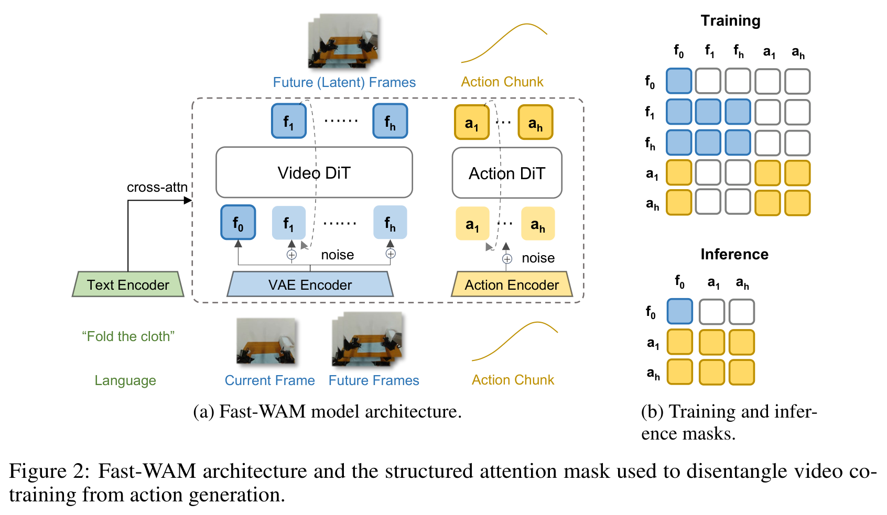
全部细节
这是论文原文图表或页图；具体版本、页码和裁剪信息见邻近中文说明。
- 论文版本：
2603.16666v2；PDF SHA-256：4eea24883dcc4d8a5c0f760870f501baabb07db4eb65e5fd6c3b4b500601be8d；page SHA-256：744b3ef30287f82bb82a225b2d2c65fc48e1feee90ef00d36ce018c1176e8ea1。 - crop bbox（pt）：
[104, 67, 510, 303]；尺寸：[1692, 983]；crop SHA-256：9d453fc233ef1961e3d77ea1b2a0532a9428d8b9fa31a0f52e51486570d9539e。 - 图表说明：Fig.2 左侧连接 Video DiT、Action DiT、当前/未来帧、动作编码器与语言；右侧分别画训练和推理掩码。训练保留未来视频协同目标，推理掩码只保留当前视觉和动作序列，因此未来视频分支不必先生成完才能出动作。
- 进一步分析：该图的价值在于把“训练中有视频”和“推理要画视频”分开。Fast-WAM 借视频共同训练塑造当前帧表示，Action DiT 则依据当前帧与动作 history 生成。与 SimWAM 的隔离设计相似，它们都控制未来视觉信息可见性；但本图的双 DiT 和掩码块需按本论文读取，不能代用 Metis 的非对称掩码。
- 证据边界：这是信息流图，不能只从颜色推出所有层共享参数或未来损失的梯度路径。采样步、硬件延迟、预训练数据和动作执行时间跨度都不在图中；所谓 disentangle 不意味着两个训练目标在优化上完全独立。 当前 visual_status=
precise_crop_and_visual_checked；semantic_status=reviewed/pass_with_boundary。历史状态semantic_pending仅对应早期裁剪回执，原文证据边界继续有效。
原文图表卡片：表 1（PDF p.7）
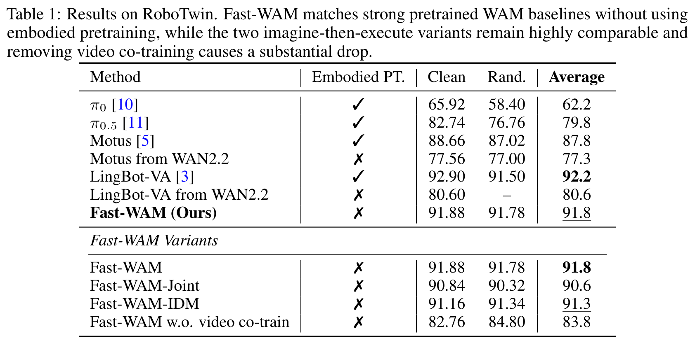
全部细节
这是论文原文图表或页图；具体版本、页码和裁剪信息见邻近中文说明。
- 论文版本：
2603.16666v2；PDF SHA-256：4eea24883dcc4d8a5c0f760870f501baabb07db4eb65e5fd6c3b4b500601be8d；page SHA-256：dd81d05220802044d6203f41b185dab052b6e00b204f5d4d3ae0c20f36b596fc。 - crop bbox（pt）：
[104, 244, 508, 444]；尺寸：[1684, 833]；crop SHA-256：edfe81bd77aa7c0a3dcbe6fcc0440e7105b07e5f7a8a85d6daa9e98666f1a974。 - 图表说明：表 1 的完整图注是 Results on RoboTwin。Fast-WAM 无 embodied 预训练，clean/randomized/average 为 91.88/91.78/91.8%；Joint 变体平均 90.6%，IDM 91.3%，去视频共同训练后 83.8%。最强表内预训练 LingBot-VA 平均为 92.2%。
- 进一步分析：同一模型的视频共同训练去除导致 8.0 个平均 SR 点下降，比 Fast-WAM 与 Joint/IDM 的小差异更直接支持视频共同训练的价值；又因完整 Fast-WAM 比预训练 LingBot-VA 低 0.4 点，只能称接近而不能称全面最好。与 DreamZero 表 4 类似，这里的消融证据比跨方法平均数更能锁定设计作用。
- 证据边界：图注不应被正文“表 1 and 表 2 summarize...”的引用句替换。本表是 RoboTwin，LIBERO 在另一表；数据、训练和初始化差异阻止把预训练/no-pretrain 的跨模型差直接当作预训练因果效应。表中未列方差，1 点以内差异应谨慎解读。 当前 visual_status=
precise_crop_and_visual_checked；semantic_status=reviewed/pass_with_boundary。历史状态semantic_pending仅对应早期裁剪回执，原文证据边界继续有效。
正文：05_analysis\full_reading\fast-wam\paper_reading_report.md；16964 字符 / 5989 中文字符；SHA-256 0a9849a9e3f54136f4fc315fcbf32c63d4a162e230f176b3a2aba18554c23aa9。
来源覆盖：05_analysis\full_reading\fast-wam\source_coverage.json；问题台账：05_analysis\full_reading\fast-wam\paper_questions_for_code.md。
自动驾驶 · 核心论文
Metis：完整论文精读报告（paper-only）
当前正式机制图与完整图解：F-metis-mechanism
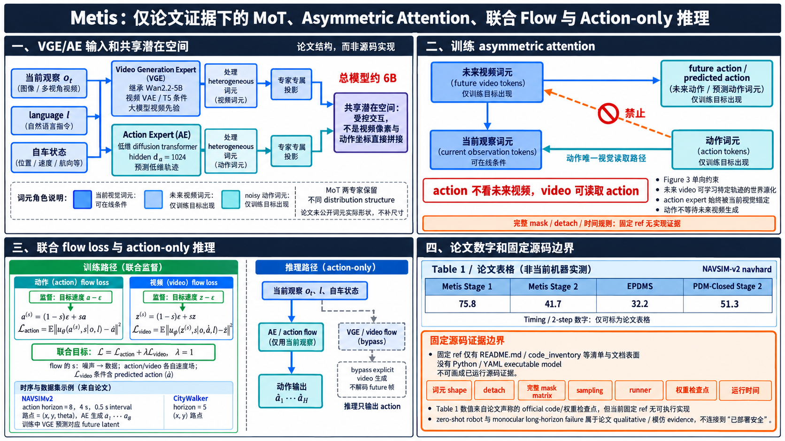
全部细节
图像 ID：F-metis-mechanism；PNG、native receipt 和逐图中文说明由当前任务 accepted manifest 绑定。
图像身份：F-metis-mechanism；审校时间：2026-10-31T18:57:38.845946+00:00；尺寸：1672×941；SHA-256：6d86948e463cadeea475e607cf0aa45892eb4fd3da56f9c120572c50e4511908。原生回执（此附件保存在完整本地归档中）。
自动驾驶 · 核心论文
Metis 高密度科研图逐区逐箭头说明
一、VGE/AE 输入与共享潜在空间：论文结构而非源码实现
箭头从当前观察 o_t、language l、自车状态进入两个专家：视频生成专家继承 Wan2.2-5B 的视频 VAE/T5 条件，动作专家是低维 diffusion transformer。VGE 的大模型宽度和 AE 的 d_a=1024 要写在模块旁，总模型约6B。两支先各自处理 heterogeneous 词元，再通过专家专属投影s 进入共享潜在空间；图中共享的是交互空间，不是把视频像素直接拼到动作坐标。输入角色必须区分：当前视觉词元是可在线条件，未来视频词元和带噪动作词元只在训练目标中出现。
MoT 的两个专家保留不同 distribution structure，共享潜在空间只负责受控交互。VGE 继承视频先验，AE 以较小宽度预测低维轨迹；论文没有公开词元的实际形状，所以图面只放角色和方向，不补尺寸。
两个专家的分工应以论文角色说明：VGE 提供时空先验，AE 提供低维轨迹；共享潜在空间只负责有方向的信息交换。没有源码实现时，图中只画概念词元和方向箭头，不画具体层数、输出头数和填充。
二、训练 asymmetric attention：箭头方向本身就是机制
画出四类词元的允许边。动作词元→当前观察是唯一的动作视觉读取路径，动作词元→未来视频用橙色禁止符号；未来视频词元→当前观察与未来动作是允许边。图中要标“动作不看未来视频，视频可读取动作”，这是图 3 的单向约束。未来视频词元因为读取预测的动作，可以学习特定轨迹的世界演化；动作专家仍被当前视觉锚定。不能画当前词元读取未来词元，也不能凭总图添加填充掩码、时间因果或截断梯度规则，固定 ref 没有实现。
非对称掩码的单向性是论文机制的中心：动作只能使用当前观察，未来视频可以读取动作。这样动作不等待未来视频生成，但视频可以预测与候选动作一致的未来。任何填充、截断梯度、时间 reset 都必须放在来源边界。
动作只看当前观察是为了保持在线可用，视频看动作是为了预测与候选动作一致的未来。两条方向相反的箭头是核心机制；任何从未来视频回到动作的箭头都应画禁止符号。
三、联合 flow 损失与仅生成动作推理：训练有视频、推理绕过视频
训练动作公式为 a^(s)=(1−s)ε+s a、目标速度 a−ε，L_action=E||u_theta(a^(s),s|o,l)−a_dot||²；未来视频公式为 z^(s)=(1−s)ε+s z，L_video=E||u_phi(z^(s),s|o,a_hat,l)−z_dot||²；λ=1。给一个词元时序例：NAVSIM 8 个路点、每0.5秒一个，动作专家生成 a_1…a_8；视频专家在训练中预测对应未来潜变量，但推理时只执行动作 flow，不解码未来帧。CityWalker 则 H=5、(x,y) 路点。箭头必须从训练监督分别指向两支损失，推理箭头只从当前观察指向 AE 输出，视频分支用虚线“bypass”。
flow 的 s 从噪声到数据，动作与视频各自有速度场；Lvideo 的条件是预测动作。推理时 bypass 视频生成，只保留动作 flow，因此图中训练/推理两条路径要有明显断开。
两个 flow 损失共享训练框架但条件不同：动作损失读当前上下文，视频损失额外读预测动作。推理时视频分支绕开，动作 flow 直接从当前观察出发。λ=1 是论文给出的权重，不应加入未报告的其他损失。
四、论文数字和固定源码边界：不能把论文证据画成复现证据
NAVSIM-v2 navhard 结果箭头写 Metis Stage 1=75.8、Stage 2=41.7、EPDMS=32.2；PDM-Closed Stage 2=51.3。Timing/2-step 数字可以写“论文表格”，不能画成当前机器实测。固定 ref 的 tracked tree 只有 README.md、code_inventory 等文档表面，没有 Python/YAML executable model，因此把所有实现细节（词元形状、截断梯度、完整掩码、sampling、运行入口）放入橙色来源边界框。zero-shot robot 与 monocular long-horizon failure 是论文的 qualitative/l模仿 evidence，箭头不能连接到“已部署安全”。
论文表 1 的数值来自其声称的 official 代码/权重检查点s，但当前固定 ref 没有可执行实现。这个事实边界不是否定论文，而是说明本图不能把 paper table 伪装成已运行源码证据。
论文表格与当前固定源码是两种证据层。表格可写结果，源码区必须写缺失实现，不能把 README 的“official 代码”描述改写成已执行权重检查点。机器人定性图也只能支持迁移可行性，不支持道路安全保证。
逐箭头审计补记：
逐箭头审计补记：当前观察、language、自车状态分别进入两个专家的条件编码；专家专属投影后才进入共享潜在空间；动作到当前视觉的箭头允许，动作到未来视频的箭头禁止，未来视频到未来动作的箭头允许；训练时两条损失箭头指向不同速度场，λ=1 的合并发生在损失层；推理时视频分支被绕过，只有动作专家的输出箭头到规划结果。由于固定 ref 没有可执行文件，所有代码箭头必须在橙色边框内标为缺失。
补充证据说明：Metis 图的每个机制箭头都来自论文图 2、图 3 和 Eq.(5)(6)，而不是当前固定仓库。固定 ref 的 README 只能证明文档存在，不能证明模型可以加载。因而图中把“论文声称的仅生成动作推理”与“本次未运行代码”分成两层，保留概念教学但关闭执行性推断。
具体例子中，当前图像包含路口和行人，动作专家预测八个未来路点，视频专家在训练中预测与该动作一致的未来画面。动作端没有读取未来视频的箭头，因此推理不必等待视频生成；但论文没有公开完整代码，不能进一步声称采样延迟、梯度截断梯度或完整掩码已经复现。
正式图卡：Metis 非对称注意力、联合 flow 与仅生成动作推理
- 图解重点：VGE/AE 双专家、异构词元投影、MoT 共享潜在空间，以及“视频可读动作、动作不读未来视频”的非对称掩码方向。
- 训练/推理：动作与视频 flow 损失组成联合目标；推理只保留当前 observation、语言和自车状态，经 AE/动作 flow 输出轨迹，VGE/视频 flow bypass；图中保留
λ=1、NAVSIMv2/CityWalker 训练协议与仅生成动作边界。 - 证据边界：固定 ref 只有 README、代码清单和论文表面，未绑定可执行 Python/YAML 模型；EPDMS、PDM-Closed 和 timing 数字仅按论文表格记录，不能转成当前机器实测或部署安全保证。
- 来源与原生来源记录见 图详解（此附件保存在完整本地归档中） 与 回执（此附件保存在完整本地归档中）。
0. 身份、范围与证据
论文 Metis: A Generalizable and Efficient World-Action Model for Autonomous Driving and Urban Navigation，arXiv:2606.15869v1，2026-06-14，PDF 共23页。作者 Jingyu Li、Zhe Liu、Dongnan Hu、Junjie Wu、Zipei Ma、Wenxiao Wu、Chao Han、Zhihui Hao、Zhikang Liu、Kun Zhan、Jiankang Deng、Xiatian Zhu、Li Zhang，机构包括复旦大学、上海创智学院、香港大学、同济大学、理想汽车、华中科技大学、帝国理工与 Surrey。来源是本任务固定的 PDF、HTML、TeX；全文、附录A–H、Eq.(1)–(8)、Fig.1–10、Tab.1–12均读取，PDF每页已渲染，方法、表格和定性页做真实视觉核对。本报告不含代码事实。
定位：Metis 用专门的视频生成专家和动作专家构成 MoT，通过非对称注意力让未来视频读取动作、动作不读取未来视频；训练时保留世界建模对动作专家的监督，推理时只做动作生成。
1. 问题与作者的历史推理
论文同时面向 Autonomous Driving（AD）和 Urban Navigation（UN）。这两个任务都需要在当前观测下预测未来动作，但环境含动态交互；仅有静态场景语义并不足以理解行人、车辆、拥挤空间和自车动作如何影响未来。作者把 WAM 定义为动作 generation 与未来 observation prediction 的统一建模。图1把现有方法分为VLA-based WAM和video-generation-based WAM：前者通常在大视觉语言模型中加入未来词元，自回归生成未来观测后才预测动作；后者共享高维视频与低维动作表示，可能让 generative 噪声干扰动作。
这项工作要解决的两个具体问题是：未来观测生成造成推理延迟；高维视觉分布与低维动作分布紧耦合，可能损害 generalization 和轨迹 precision。作者的设计不是彻底删除世界模型，而是把世界建模放在训练阶段当作动作 learning 的辅助机制。
合理推断：如果动作在训练时依赖未来视频，部署时直接删掉视频分支会改变输入分布；因此训练/推理 consistency 必须在训练结构中建立，而不是只做部署端剪枝。Metis 的非对称掩码正是在依赖关系上作保证。
2. 三个概率模型与符号
输入为当前视觉 、语言指令 ，动作块为 ，未来视觉为 ，视频主干当前 representation为 。AD 路点是 ，UN 路点为 ()。
论文Eq.(1)写联合训练模型：
Eq.(2)表示同时生成动作和未来视频；Eq.(3)表示先生成未来再 inverse-dynamics 规划：
Eq.(4)是Metis部署接口：
区别不是有没有世界模型，而是最终动作是否需要未来视频采样。当前表示由视频主干单次前向产生，动作专家再在低维空间去噪。
例子：前方是环岛，当前相机看到出口、自车状态、行人。模型训练时预测“如果按这条轨迹绕行，未来画面会怎样”，部署时无需真的把未来画面生成出来，只用当前表示预测一段绕行路点。论文图5给出转弯场景轨迹，图10给出长时域偏移失败，提示当前 representation并不消除单目观测的盲点。
3. MoT：分离任务分布，保留受控交互
3.1 组件
视频生成专家（VGE）继承大型视频模型的physical prior，使用Wan2.2-5B、视频 VAE和T5 text 编码器。动作专家（AE）为较小DiT，层深与VGE一致、隐藏维度 dimension ，约1B参数，总模型约6B。Ego 状态编码器把自车状态映射为条件，与语言一起供模型使用。
输入有三类词元：当前观测潜变量、未来观测带噪词元、动作带噪词元。论文§3.2说所有词元先cross-attend语言嵌入，再由expert-specific projections进入shared 潜变量 space，按structured attention交互，最后经过各自FFN和输出输出头。重要的是视频与动作保留专门参数，而不是把两种分布直接塞进同一个输出头。
3.2 输入/输出契约
| 模块 | 输入 | 输出 | 学习作用 | 论文未展开 |
|---|---|---|---|---|
| VAE | 当前/未来相机图像 | 视觉潜变量词元 | 压缩高维视觉 | 潜变量形状、downsampling、冻结状态 |
| T5 | 导航语言 | text 嵌入 | 交叉注意力条件 | 提示模板、长度、掩码 |
| Ego 编码器 | 自车状态 | ego 嵌入 | 动作策略条件 | 状态维度、归一化 |
| VGE | 当前潜变量、带噪未来、动作 context | 未来 velocity field | world prediction | QKV共享维度、层序 |
| AE | 带噪动作、当前 context | 动作 velocity field | 路点 generation | 时间跨度/词元排列、动作 scale |
| Asymmetric attention | current/video/action 词元 | 受控跨专家信息 | 把视频损失连接到AE | 完整掩码、填充、梯度截断梯度 |
4. 非对称注意力：最关键的方向
4A. 语义与公式复核补记（2026-10-28）
源文PDF pp.4–6、17–23的关键句为“视频词元 can attend to 动作词元, but not vice versa”。这不是SimWAM式完全隔离掩码：Metis保留video-loss对动作表示的有向训练联系，动作推理不读未来视频，因此可跳过显式未来 generation。MoT的独立expert/QKV/FFN说明分布分工，掩码方向说明信息流，二者不能互相替代。
Flow时间按论文从噪声到data：，目标速度。旧正文中epsilon、s、损失只剩普通括号时应恢复定界；不能机械strip。NAVSIM-v2/CityWalker/real qualitative结果分别支持规划、城市导航和可运行性，不构成同一闭环安全证据。“generation gradients implicitly optimize AE”是作者机制解释，缺截断梯度/梯度范数独立消融，不写成已测量事实。
图3的行/列是 。橙色表示训练和推理都保留的可见关系，蓝色表示训练专用。动作词元能看当前观测词元及动作流内信息，不能看未来视频；未来视频能看当前和所有未来动作。文字明确说“视频词元 can attend to 动作词元, but not vice versa”。
注意方向：未来视频读取动作，是action-conditioned 视频生成；这让VGE学习的未来与自车计划一致。动作不读取未来视频，则保证动作推理不需要未来视频分支。由于视频损失通过读取动作表征反向传播，AE在训练时仍收到未来世界建模的隐式优化。附录A.1明确写“gradients from the generation 专家 ... backpropagate into the 动作专家”。
因果解释：一条动作轨迹若会导致不合理的未来世界，视频 prediction 损失可以向动作表示传递约束。这个解释需要真实梯度路径作为实现证据；论文提供语义和附录陈述，但没有给出可逐层核对的导数图。不能把“视频读取动作”误读成“动作在推理读取未来视频”。
4.1 三种掩码的对照
Joint：未来视频/动作 fully coupled；Isolated：两者mutually invisible；Metis asymmetric：未来视频可读动作，动作不可读未来视频。Tab.4/8在320×384下比较，Joint navtest EPDMS87.4/navhard28.0；Isolated88.3/29.4；Ours88.8/31.6。说明非对称比完全耦合和完全隔离都好，尤其navhard收益更大。
边界：附录称isolated“prevents 动作 space from effectively utilizing 视觉 context provided by 当前 observations”，但主文isolated定义只是future-video/动作互不可见。当前观测仍可能可见，因此这句话在语义上不够精确。最合理阅读是isolated缺少video-loss到动作的有向监督，而不是完全看不到当前图像；应保留为论文歧义，不能自行修正。
5. Flow matching目标：时间方向与条件
Metis采用从噪声到data的时间约定，为噪声，为data：
Eq.(5)：
Eq.(6) 视频损失使用预测的未来 actions作为条件：
总损失为 ，。
小例子：真实动作坐标 ，噪声 ，时带噪动作为(-0.5)，目标velocity为6。模型学会在每个 预测相同方向的transport；实际多维轨迹由所有路点共同决定。VGE同时预测与该动作一致的未来潜变量 velocity。
论文内歧义：问题设置用未来时间跨度 ，Eq.(6)写 (t+1:t+H)；实验说视频/动作块 1:1 temporal ratio，但没有完整说明 是否适用于所有任务。符号 被称为预测的未来动作，实际是AE当前带噪 representation、干净 prediction还是积分后轨迹也未写清。若视频损失对 截断梯度，则附录梯度解释会不同，因此必须作为后续问题。
6. 训练、推理与成本
NAVSIM-v2：动作 horizon8，4s/0.5s，waypoint3维；输入640×768，训练60epochs，batch64。CityWalker：horizon5，XY2维，384×384，训练30epochs，batch64。使用front 相机、视频/动作 chunk1:1。主实验10denoising 步，CFG1.0。附录F补充AdamW，lr1e-4，weight decay0.01，cosine annealing、mixed precision、grad clipping1.0；8×H200，每卡140GB。
论文有两个推理budget：主表10steps用于最高精度；延迟比较仅生成动作用2steps，而with-video用10steps。这是合理的部署选择，但“8×speedup”同时包含分支删除与采样步数差异，不能解释为同样10steps下只删视频就必然8×。
Tab.7单RTX4090：Epona0.32s、PWM0.57s、PWM with-video0.83s、Metis with-video1.38s、Metis action-only0.17s；对应Metis action-onlyPDMS88.9、EPDMS89.2。附录Tab.12的2steps是147ms（4090）/140ms（H200），10steps480/430ms。0.17s与147ms存在口径差异，论文没有解释warmup、同步、batch或计时边界。
7. 数据与指标
NAVSIM-v2训练navtrain subset1,192scenarios，评估navhard244real Stage1+4,164synthetic3DGS Stage2，以及navtest12,146scenarios。navhard第二阶段使用reactive traffic，关注安全关键场景；navtest是更一般的单阶段分布。CityWalker是纽约城市15小时teleoperation，6h 微调/9h test，含Turn、Crossing、Detour、Proximity、Crowd、Other。
Eq.(7) EPDMS：
Penalty包括NC/DAC/DDC/TLC；average包括TTC/EP/LK/HC/EC。navhard还有two-stage aggregation、reactive 仿真，以及human 专家也失败时排除相应penalty的修改。Eq.(8) NAVSIM-v1 PDMS只用NC/DAC乘以EP/TTC/C的weighted average。故PDMS、EPDMS、stage score、overall navhard不是可互换数字。
CityWalker主要指标为MAOE（最大平均orientation error），辅以average L2；表3区分六个场景的Mean与全部样本All，Other占55%，因此All会被常见场景主导。
8. 主实验逐项读解
8.1 NAVSIM-v2 navhard（Tab.1）
Metis overall EPDMS32.2，Stage1 score75.8、Stage2 score41.7。与ReCogDrive25.7、SGDrive25.5、DiffusionDrive27.5比较，显示较高的规则遵从与未来交互能力。但PDM-Closed使用GT symbolic inputs，51.3不能直接当作同输入学习模型的基线。表注说明部分数字来自其他论文，其他结果用official 代码/检查点重现。作者称“best performance”应限定在learned methods和该协议，不能覆盖所有oracle planners。
8.2 NAVSIM-v2 navtest（Tab.2）
Metis单样本EPDMS89.5，best-of-N=6为90.3；Human90.3。单样本NC98.4、DAC97.2、DDC99.6、TLC99.8、EP87.8、TTC97.7、LK97.8、HC98.4、EC88.0。best-of-N提升尤其EC90.0。表中*标RL、†全navtrain、‡best-of6，说明“与SOTA比较”包含不同信息/计算预算。Metis没有RL、多阶段或auxiliary data是其效率故事的一部分，但best-of6本身也需要单独标注选择机制。
8.3 CityWalker（Tab.3）
Metis fine-tuned MeanL20.71m、All0.64m；MeanMAOE11.8°、All9.8°。相比GNM/ViNT/NoMaD/CityWalker，它在复杂Turn/Detour/Crowd更强。ABot-N0预训练模型MeanMAOE11.2、All7.6，比Metis整体更好，但Metis在Turn19.5<21.3、Detour9.1<12.8、Crowd8.0<8.8。因此论文“leading”需要按fine-tuned group与具体scenario理解，不能说所有指标全面胜过ABot。
8.4 Real robot（Fig.6–7）
同一UnitreeGo2，使用PD controller将预测轨迹转为velocity command，室内白天/室外夜晚zero-shot obstacle avoidance。图6是户外行人与障碍物，图7实际画面是室内，图注仍写outdoor，是论文图注错误。视频时间轴0–9s展示连续导航，但没有成功率、试验数、障碍分布、controller 延迟或紧急接管统计，因此它是可行性定性证据，不能单独证明可靠部署。
9. Ablation：每个表支持哪条因果链
Tab.4/8 掩码：同320×384，Joint87.4/28.0，Isolated88.3/29.4，Asymmetric88.8/31.6。它支持有向监督和测试阶段依赖删除的组合优于两端，但没有隔离gradient-flow和forward-feature共享的单独作用。
Tab.4 resolution：640×768提高到89.5/32.2，说明空间/几何细节重要，DAC97.0→97.5、LK97.6→98.0。主文说drop0.7/0.6与表一致。
Tab.5/12 步：1/2/5/10steps navtestEPDMS87.2/89.2/89.4/89.5，navhard30.4/31.2/31.4/32.2。Stage1并不单调（2steps76.0高于5/10），所以“步 consistently improve”只适用于overall，不适用于每个stage。
Tab.6 VGE/AE：Wan2.1-1.3B +AE0.24B为88.8/28.8；Wan2.2-14B+0.21B为88.2/31.2；Wan2.2-14B+1.04B为89.5/32.2。它把更强generative prior和更大动作 capacity联系起来，但主文默认Wan2.2-5B与table Wan2.2-14B不一致，必须标记而不替作者选择一个版本。
Tab.10 动作 capacity：0.21/0.45/1.04B在navtest88.2/88.6/89.5，navhard31.2/31.4/32.2。更大AE在困难数据收益更明显，但未报告FLOPs/内存和训练成本。
Tab.11 共同训练：w/o87.4PDMS/87.9EPDMS；with89.1/89.5。说明视频生成训练对策略有增益。它无法完全证明“保留动作分布”是唯一机制，额外损失也可能起regularization作用。
10. 原图审计与读图边界
- Fig.1（p2）对比三范式，箭头表示先生成未来再动作、共享coupled transformer、以及Metis分专家掩码。它是概念图，不能给出真实延迟。
- Fig.2（p4）标出VAE、text/ego 编码器、QKV、masked asymmetric attention、FFN；训练分支含未来帧，推理分支只有当前/动作。图中交叉条件在QKV前，需与实际实现后续比对。
- Fig.3（p5）掩码矩阵是最关键机制证据，蓝色training-only 未来→动作可见，橙色保留动作/当前依赖；不能把行列方向反读。
- Fig.4（p8）CityWalker例子中Epona zero-shot L2Max2.12m/AngleMax29.90°，Metis zero-shot1.01m/16.50°，fine-tuned0.32m/2.30°；这是一个案例的maximum值，不是表3平均值。
- Fig.5（p9）两个转弯场景，Metis轨迹比ReCogDrive更贴合道路几何；精选图不代表整体事故概率。
- Fig.6/7（p19/20）真实机器人0–9s片段，有biometric anonymization，场景覆盖有限，无quantitative denominator。
- Fig.8（p22）生成视频上排、GT下排；动态路口远车细节有丢失，作者说不明显影响short-term actions，这一因果联系没有量化实验。
- Fig.9/10（p23）lane-following/turning成功和roundabout失败；failure被归因单目long-horizon limitation，但没有排除数据覆盖/状态估计因素。
11. 论文内部歧义与复现问题
最重要的歧义有六类。第一，主setupWan2.2-5B与Tab.6Wan2.2-14B不一致。第二，未来时间跨度用N而Eq.6改为H；1:1ratio是否强制相同词元/时间长度未展开。第三，是预测动作但未定义它在视频损失中的噪声状态与截断梯度。第四，非对称掩码允许视频→动作梯度，论文没有说明当前帧是否也会读取未来信息，以避免绕道泄漏。第五，latency0.17s与附录147ms的计时口径不同。第六，best-of-N=6用什么score选择、是否oracle或额外model没有明确说明。
这些都进入paper_questions_for_code，不借用已有代码 audit来填答案。该边界很重要：论文理解报告应让读者清楚知道“paper明说什么”和“仍需实现证据什么”。
12. Reviewer / defense lens
Novelty集中在MoT任务分布分离+有向掩码，而不是新flow理论。技术合理性来自训练/推理依赖一致、视频损失对AE的梯度连接，以及同分辨率掩码消融。意义是将WAM带入低延迟仅生成动作部署，同时覆盖AD/UN两种embodiment。
实验优势是navhard、navtest、CityWalker、real robot、mask/steps/capacity/co-training多种证据。局限是基线训练数据/传感器和best-of6预算不同，缺少多随机种子 variance，real-robot没有量化success/干预统计，VGE版本标签不一致。作者对extreme corner、训练成本、VAE downsampling有明确限制，增强了可信度；“distributional integrity”仍是解释性术语，没有直接分布度量或定理。
最脆弱假设：视频生成损失通过action-conditioned未来预测能够给AE提供有用梯度，而且不会把appearance-generation噪声带入动作优化。如果视频分支学到与安全规划无关的视觉细节，这个监督可能只是regularizer甚至干扰。Tab.11支持收益，但需要梯度消融（截断梯度动作 context vs full）来真正分离。
13. 具体计算例子与最小检验
设当前观测中有两个可行右转轨迹A/B，AE从噪声生成路点，未来视频分支在训练中根据A预测画面。如果A会穿越行人区域，视频预测更难拟合真实未来，产生较大视频 velocity error；这个error若能反传到AE，会偏向更符合真实motion的动作 representation。推理时没有未来视频，只用已训练的AE输出B。这是对论文机制的解释，不是作者证明的反事实。
最小检验可固定相同MoT/数据/预算，比较Joint、Isolated、Asymmetric，以及Asymmetric但截断梯度 action-to-video梯度。报告PDMS/EPDMS、延迟、action-coordinate variance和视频损失梯度norm。如果截断梯度与full相同，论文“VGE通过梯度隐式优化AE”的解释受削弱；如果asymmetric只改善外观视频而不改善规划，也说明监督并未落到核心目标。
14. 最强反例与教学结尾
强反例是当前单目观测无法识别的交互：被遮挡行人、不可见交通灯、远距离急转弯或多路口拓扑。Future 视频可以按训练分布生成一个看似合理的未来，但它没有额外信息保证动作安全。真正挑战应比较current-only、future-conditioned、oracle 未来和multi-view的regret，而不只看平均EPDMS。
教学故事：Metis把一个会“画未来”的专家和一个会“走路线”的专家放在一起。路线专家不能偷看未来画面，画画专家却必须按照路线画出可信未来。训练时，未来画得不对会反过来约束路线表示；部署时只带路线专家和当前观测表示出门。它节省了画未来的时间，但仍需要足够好的当前观测、预训练先验和训练数据。论文最清楚的结论是：有向的训练监督可以保留世界建模收益，同时移除future-generation的部署依赖；它还没有证明在所有开放世界corner cases都可靠。
15. 进一步的论证：为什么非对称而不是完全隔离
完全隔离的直觉优势是部署简单，但它切断了一个有价值的训练连接：视频专家不再知道动作计划，因而不能把“执行该轨迹时未来世界应如何演化”作为监督。Joint attention的相反问题是动作表示直接暴露给未来生成过程，部署时如果跳过生成，这种依赖会产生训练/test mismatch。Metis选取中间方案，让未来视频把动作当成条件，却阻止动作读取未来视频。这样训练图是有向的：AE产生动作，VGE用动作解释未来，VGE 损失再通过共享潜变量反过来约束AE；推理图则删除VGE，只保留当前观测到动作。这个逻辑解释了为什么表8中Ours同时超过Joint和Isolated。
这也解释了附录A.2的措辞：作者认为Joint在DAC/EP上下降，是因为生成噪声注入动作；Isolated的DAC/EP接近Ours，但总分略低，是因为AE缺少generation 专家对其进行隐式优化。需要强调的是，“生成梯度稳定动作空间”是机制解释，不是一个独立测量的中间变量；论文没有报告梯度范数、action-space covariance或截断梯度消融。
16. 结果的统计和解释边界
Metis的主结果大多只报告单次数字，没有均值、标准差或多随机种子。navhard的EPDMS从stage S1到S2明显下降，说明合成reactive场景比真实Stage1更难；不能用navtest的89.5直接代表闭环安全。CityWalker的All场景被Other 55%占主导，Mean与All不同，平均表现不能掩盖Turn/Crowd等少数困难场景。真实机器人只展示qualitative序列，缺少试验 denominator和失败类别，因此它适合证明“可以运行”，不适合证明“可靠部署”。
Paper把VGE性能、AE容量和分辨率都当作可独立调节的旋钮，但它们都影响训练成本与潜变量质量。VAE downsampling ratio在Limitations中被点名，说明降低潜变量成本可能损失表示质量；然而正文没有实验直接扫描downsampling ratio。类似地，Tab.6从Wan2.1-1.3B到Wan2.2-14B的VGE 消融与主文Wan2.2-5B设置存在版本边界，结果不应被压缩成简单“更大一定更好”。
17. 证据强度分级
强证据：Eq.(4)的仅生成动作概率形式；Fig.3的有向掩码；Tab.4/8的同分辨率掩码对照；Tab.5/12的denoising-latency曲线；附录F的训练/硬件超参；Appendix G明确列出的corner-case、训练成本和VAE限制。
中等证据：Tab.11的共同训练收益、Fig.8的视频质量、Fig.9/10的成功/失败定性。它们支持相关性，但不能证明独立因果机制或大规模安全率。
较弱或未充分支持："distributional integrity"、"generation gradients implicitly optimize AE"、"世界建模 provides stronger inductive bias without map supervision"。这些判断有合理实验关联，但需要梯度路径、表示分布或地图监督对照才能更强。
18. 一周内可执行的纸面复现实验设计
第一阶段用固定NAVSIM-v2小训练集复制三种掩码，保持640×768、8 路点、10 去噪步、同一AdamW和batch。第二阶段把视频损失中的预测的动作分别设为全梯度、stop-gradient、真实动作教师强制。第三阶段记录EPDMS、DAC/EP、动作延迟、视频重建 error和AE当前词元的梯度范数。若全梯度只改善视频质量而不改善动作，论文的隐式优化解释需收窄；若asymmetric在stop-gradient下仍优于isolated，收益可能来自依赖结构/正则而非generation梯度。
对CityWalker再做zero-shot→微调两个条件，按Turn/Crossing/Detour/Proximity/Crowd/Other分别报告MAOE和L2；这样可以检查论文声称的跨embodiment generalization是否由少数常见场景贡献。真实Go2实验只在源码和控制器可获得时做，报告每个场景试验数、成功定义、接管和PD误差，不能只复现视频截图。
9. motus
原文图表证据（v3 精确裁切）
原文图表卡片：图 1（PDF p.2）
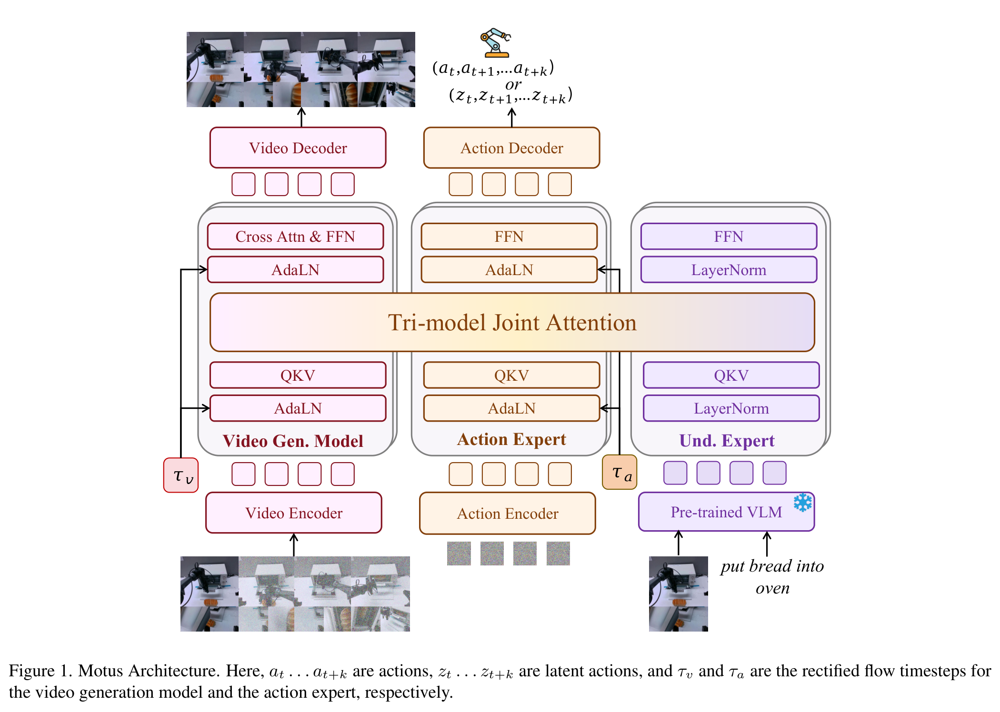
全部细节
这是论文原文图表或页图；具体版本、页码和裁剪信息见邻近中文说明。
- 论文版本：
2512.13030v2；PDF SHA-256：4f9be253165cbb3567f56d23d200ba93bda1242195e579abaac987ea37cc264f；page SHA-256：aacfb9f0c54a4c3467cb5e464a4ca77787cc9c011fb913bab099d54b094ecbae。 - crop bbox（pt）：
[54, 65, 558, 424]；尺寸：[2100, 1496]；crop SHA-256：2755ce9c022e66b2459b700043a2d56175b78ada99cf2ca97ef8f9a8872b84c0。 - 图表说明：PDF p.2 Fig.1 是 Motus 总架构：视频模型、动作专家、understanding 专家各自有 QKV/FFN，通过 Tri-model Joint Attention 交互；底部编码视觉、动作和预训练 VLM，顶部视频/动作解码器分别输出视频、动作或潜在动作。图注区分 τv 与 τa。
- 进一步分析：三路分工使同一个模型可以承担视觉生成、理解、逆动力学和联合策略，而不是只把动作接到视频骨干末端。与 LingBot-VA 的双流 MoT 相比，Motus 增加 understanding 专家与 latent-action 接口，因而跨模态注意力和训练数据级别是理解它的关键。
- 证据边界：总图不能替代各模式的噪声配比和掩码定义，也未画出所有训练阶段。潜在动作 z 和机器人动作 a 具有不同语义，不能从共同动作解码器推出无标注视频已经拥有可执行动作真值。 当前 visual_status=
precise_crop_and_visual_checked；semantic_status=reviewed/pass_with_boundary。历史状态semantic_pending仅对应早期裁剪回执，原文证据边界继续有效。
原文图表卡片：表 2（PDF p.7）
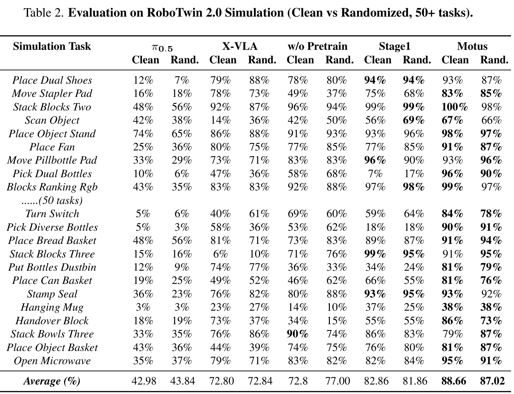
全部细节
这是论文原文图表或页图；具体版本、页码和裁剪信息见邻近中文说明。
- 论文版本：
2512.13030v2；PDF SHA-256：4f9be253165cbb3567f56d23d200ba93bda1242195e579abaac987ea37cc264f；page SHA-256：2e44db3f03f9cd627d40da27da573899869a9a98499179b738dcf96c067c3d2c。 - crop bbox（pt）：
[130, 68, 494, 347]；尺寸：[1516, 1163]；crop SHA-256：7fb00c2b0d038bed8755646b33072b574d92fad451e7163ed163e1f137bfc0bd。 - 图表说明：PDF p.7 表 2 是 RoboTwin 2.0 主表，列出干净/randomized、π0.5、X-VLA、无预训练、Stage1 与完整 Motus。完整模型平均 88.66/87.02%，Stage1 为 82.86/81.86%，无预训练为 72.8/77.00%；表内列出多种具体操作任务及平均行。
- 进一步分析：完整 Motus 相对 Stage1 增加 5.80/5.16 个 SR 点，说明后续训练阶段仍有价值；Hanging Mug 行中完整 Motus 的 Clean/Randomized 均为 38/38；按该行可见列它是两种条件下的严格最高值，因此不能作为‘完整模型不领先’反例。平均优势不能扩写为每任务优势；Place Dual Shoes 中 Stage1 的 94/94 高于完整模型的 93/87，具体比较必须绑定同一行与同一干净/randomized 条件。与 LingBot-VA 的时间跨度分层表相比，Motus 此表展示具体任务多样性，适合检查长尾任务失败。
- 证据边界：平均行汇总 50+ 任务，而页面只列部分任务和省略号，不能从可见行重新计算平均。主表未给每任务置信区间，Stage1 与完整模型之间包含多项训练变化，不能只归因于单个 latent-action 模块。 当前 visual_status=
precise_crop_and_visual_checked；semantic_status=reviewed/fix_required；paper-specific 语义 receipts 与详细 card table 均为fix_required；视觉回执仍为passed_final_contacts_and_source_pages；catalog JSON 仍为precisely_cropped_awaiting_visual_review，需要显式同步；不得声明 scientific/card gate 已完成。历史状态semantic_pending仅对应早期裁剪回执，原文证据边界继续有效。
正文：05_analysis\full_reading\motus\paper_reading_report.md；13000 字符 / 4150 中文字符；SHA-256 5b8bccebab0fa1d643e03829e0ac4d020a9076e271927659b600c041a8ff6d7e。
来源覆盖：05_analysis\full_reading\motus\source_coverage.json；问题台账：05_analysis\full_reading\motus\paper_questions_for_code.md。
自动驾驶 · 核心论文
PWM 全文精读：用无动作视频预测帮助轨迹规划
当前正式机制图与完整图解：F-pwm-mechanism
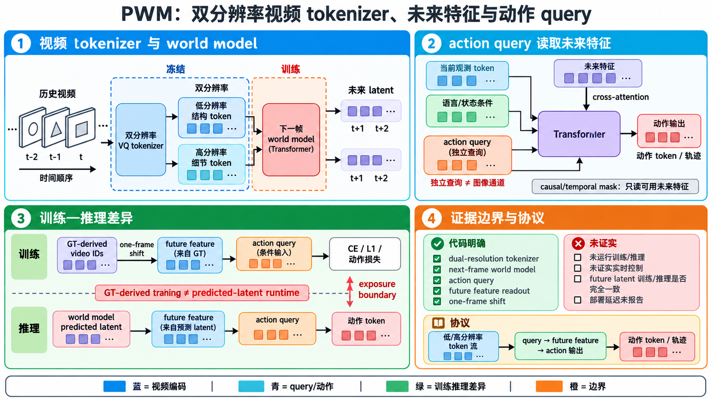
全部细节
图像 ID：F-pwm-mechanism；PNG、native receipt 和逐图中文说明由当前任务 accepted manifest 绑定。
图像身份：F-pwm-mechanism；审校时间：2026-10-31T17:11:56.528487+00:00；尺寸：1672×941；SHA-256：b9433426cb6906619ba23e5db74d36d8a77cf33a151d60ec9ad42a3a0a3a5bfc。原生回执（此附件保存在完整本地归档中）。
自动驾驶 · 核心论文
PWM 高密度科研图逐区逐箭头说明
一、双分辨率词元压缩器：高保真条件与低成本未来词元
箭头一从初始帧 I_1 进入冻结 high-resolution 分支 Q_h，输入 256×448，输出 448 个 context 词元 Z_1；另一箭头从所有下采样视频帧进入可训练 low-resolution 分支 Q_l，输入 128×224，输出 4×7=28 个 dynamic 词元 D_t。两支 codebook 都为 8192，Q_l 通过交叉注意力读取 Q_h 的多尺度 Fe/Fd 引导。图中必须画“Q_h 只编码初始帧、Q_l 逐帧编码未来”，不能把两个 codebook 画成共享参数；固定源码还表明规划微调词元压缩器在 no_grad/冻结状态，动作 L1 不回传 VQ。
双分辨率设计把初始帧的高保真上下文和未来帧的低成本动态词元分开。Q_h 的多尺度特征通过交叉注意力给 Q_l 引导；两个 codebook 不应被画成参数共享。冻结词元压缩器也意味着规划损失不会回传到 VQ。
高分辨率支路只承担初始帧上下文，低分辨率支路承担逐帧动态压缩；两支通过横向交叉注意力共享多尺度引导。这样的箭头顺序解释了为什么初始帧可以细、未来帧可以省词元，而不是暗示两支使用同一个可训练 codebook。
二、下一帧世界模型与 DFL：先预测动态词元再谈动作
箭头从 Z_1 与历史 D 词元指向下一帧 prediction，公式写 P(D_{1:N};Z_1)=∏{t=2}^{N}P_theta(D_t|D{<t};z_1)。每一帧内部词元双向 attention，帧与帧之间按时间因果，箭头禁止从未来帧回到历史帧。dfl="" ω(d_t^i,d_{t−1}^i)="αI[d_t^i≠d_{t−1}^i]+βI[d_t^i=d_{t−1}^i]，α" 写="">β；论文附录扫描固定 α=1、β=.4。给一个完整词元例：若上一帧词元=17、本帧词元=21，变化词元权重为1；若本帧仍为17，静态词元权重为.4；总 DFL 仍按模型的词元 CE 计算。这个例子解释变化区域优先，不代表动态区域一定是障碍物。</t};z_1)。每一帧内部词元双向>
DFL 的变化/静态权重作用于词元 CE，而不是直接给障碍物或轨迹加权。帧内双向只在同一帧块里成立，帧间仍是因果。图中用块状箭头表达允许范围，比画一张无条件全连接网格更准确。
DFL 只改变词元交叉熵中动态和静态位置的权重。一个词元是否变化由相邻帧 ID 比较决定，不等同于“这里有障碍物”。帧内双向 attention 只在同一帧块内有效，帧间箭头仍保持时间方向。
三、未来状态/动作：论文预测与源码教师强制分层
未来视频词元、text/ego 状态和可学习动作查询按顺序送入共享 Transformer。论文公式写 P_theta(D_future|D_past)·P_theta(A|D_past+未来)，动作查询读取未来特征后由轻量动作输出头输出路点。训练 protocol：nuScenes 使用 1 s 历史→11 帧/6 路点/3 s，NAVSIM 使用2 s 历史→10 帧/8 路点/4 s。固定源码的箭头更具体：DatasetNavsim 先拼接历史与未来 GT 词元，再做 one-帧 shift，动作查询读取由真实标注构造的视频输入 IDs；训练中没有真正执行 generated-帧 sampling loop。因此图要用橙色断开线标“预测的潜变量是论文抽象，源码输入是教师强制 IDs；截断梯度/采样来源未由论文闭合”，不能画一条从视频 logits 直接反传动作的箭头。
论文公式把未来潜变量写成预测的 feature，但固定数据管线在训练时提前放入由真实标注构造的 IDs；推理才执行逐帧 argmax 生成。这个差异是教师强制边界，必须用橙色框写在动作查询的输入箭头旁。
动作查询的论文抽象和源码训练输入要在图中并排：论文写读取未来 features，源码将由真实标注构造的 ID 作为输入并做一帧偏移。训练没有跑生成循环，因此不能用一条生成箭头替代 teacher-forcing 边界，也不能凭空添加截断梯度。
四、评估与协议边界：两个数据集不能合成一个闭环数字
NAVSIM 评估箭头列 SC PWM：NC=98.6、DAC=95.9、EP=81.8、TTC=95.4、Comfort=100、PDMS=88.1。nuScenes 另画 L2/collision 平均=.78 m/.07%，明确是非反应式评测基准。表 4 的未来帧数与表 5 的无动作标签 pre训练/数据比例是配置内消融，不可画成跨数据集因果链。代码缺帧处理从原 nuPlan 重采样，映射影响未在论文闭合；损失 reduction、生成的未来截断梯度、线上控制频率同样用橙色边界。箭头不能从 NAVSIM PDMS 连到真实事故率，也不能从 DFL 直接连到安全保证。
NAVSIM PDMS 与 nuScenes L2/collision 使用不同数据和协议。缺帧从原 nuPlan 重采样可能改变词元分布，论文没有给映射敏感性。图中评估箭头因此分成两条，不能用一个闭环事故率标签概括。
两个评估协议的消费者不同：nuScenes 读取 L2 与碰撞率，NAVSIM 读取 PDM 子分数。缺帧重采样发生在数据输入侧，可能影响词元分布；该影响没有独立实验，因此必须停在边界框，不连到性能因果结论。
逐箭头审计补记：
逐箭头审计补记：初始帧箭头进入 Q_h，未来帧箭头进入 Q_l，Q_h 的多尺度特征通过交叉注意力指向 Q_l，而不是直接成为动作输出；world-model 箭头按帧块从 D_<t 指向 D_t，帧内允许双向、帧间只向前；动作查询箭头来自训练时已经放入的视频 ID，所以图上应画教师强制输入边；动作输出头输出轨迹后才进入 NAVSIM 或 nuScenes 消费者。nuScenes 的 L2/collision 与 NAVSIM 的 PDM 不能共享一个终点框。
补充教学说明：一段前视视频先由高分辨率分支确定初始外观，再由低分辨率分支逐帧预测变化；DFL 使变化词元受到更大权重，但不会告诉模型哪个物体必须避让。动作查询读取的是排列好的历史和未来输入块，最终 L1 轨迹损失与视频 CE 共享隐藏表示，这与可微生成未来图像是两回事。
#### 正式图卡：PWM 双分辨率视频词元化器、未来特征与动作查询
- 图解重点：低/高分辨率 VQ 词元、下一帧世界模型、独立动作查询读取未来 feature，以及一帧移位。
- 训练/推理边界：由真实标注构造的视频 IDs 只代表固定代码的训练条件；运行时使用预测的潜变量，图中保留 exposure boundary，不声称两者已完全一致。
- 来源与原生来源记录见 图详解（此附件保存在完整本地归档中） 与 回执（此附件保存在完整本地归档中）。
1. 论文身份、范围和定位
对象是 From Forecasting to Planning: Policy World Model for Collaborative State-Action Prediction，简称PWM，arXiv:2510.19654。官方PDF共20页，正文第1–10页，参考文献第10–13页，附录A–C第14–20页。本文只依据本工程官方PDF、HTML、flattened TeX和来源清单阅读，没有使用源码或历史分析。论文关注一个相对朴素但重要的问题：如果模型先在大量无动作标签驾驶视频上学会未来如何变化，随后在nuScenes/NAVSIM上规划，未来表示是否能主动帮助动作，而不是只在预测完动作后作为可视化。
核心定位：PWM不是像DriveWAM那样在同一个flow中先生成视频再生成动作，也不是DriveVA的双向联合去噪。PWM使用离散图像词元和自回归Transformer，先预测文本与未来视频词元，再让可学习动作查询与这些预测未来特征交互，最后经动作头输出路点。它的主要贡献是动作自由预训练、低分辨率上下文引导词元化器、Dynamic Focal Loss（DFL）和“未来状态–动作协作”。
本文用paper-stated、reasonable inference、not reported分开事实、解释和未知。最强证据是：OpenDV-YouTube预训练、DFL和合适的未来帧数共同改善nuScenes/NAVSIM；未来预测还会把NAVSIM策略推向更保守（NC/TTC/DAC升，EP略降）。局限是单前视、短规划视野、离散词元的重建质量、无动作视频与驾驶规划域差异，以及一些表格把预训练/微调的DFL因素混在一起。
2. 背景、问题与相关方法差异
传统端到端方法直接从相机/激光到轨迹，BEV或occupancy中间表示有结构优势但成本和域适配较高。视频世界模型通常动作条件生成未来，或者把世界模型与策略分成两支；如果动作尚未决定，模型就没有真正进行“先想象再规划”。PWM的主张是，动作自由的视频可先学到不依赖动作标签的场景变化，规划阶段将该知识作为前瞻表征。
作者选OpenDV-YouTube（1747小时、244城市、10Hz前视视频）做预训练，nuScenes做3秒、NAVSIM做4秒规划。由于OpenDV没有车辆动作标签，预训练不需要控制信息；规划微调则加入导航命令、自车状态、文本和路点。该设计将“视频预测能力”与“驾驶动作监督”按阶段分开，容易扩展数据规模，但预训练视频不一定包含同样的相机内参、道路规则和ego控制分布。
3. 前置知识、符号和数据对象
原始视频为 。高分辨率分支 只处理初始帧 ，产生L个上下文词元 ；低分辨率分支 对每帧产生 个词元 。实际使用128×224低分辨率输入，经4×7 潜变量 map得到 词元/帧；冻结高分辨率分支处理256×448并产生448 词元/帧。高分支的多尺度特征 经交叉注意力指导低分支。
规划输入序列为观测词元 、ego状态/导航命令 、文本、未来词元 和动作查询 。是预测未来的离散视觉词元，是场景或行为描述，不是直接的连续动作输入，而是m个可学习查询，最后由动作头解码为轨迹坐标。nuScenes使用1秒历史、预测11帧和6 路点/3秒；NAVSIM使用2秒历史、10帧和8 路点/4秒。
自回归在PWM中是按帧词元组生成，而非每个空间词元逐个生成。帧内双向attention允许同一帧的28个词元并行交互，帧间只沿时间因果。DFL根据相邻帧词元是否变化给不同权重，强调动态区域。PDMS整合NC、DAC、EP、TTC、Comfort；高安全但完全停车可能提升NC/TTC、降低EP，不能只看一个分数。
4. M-PWM-01：双分支context-guided 词元化器
高分支Qh是冻结预训练image 词元化器，输入初始高分辨率帧，重建自身并提供编码器/解码器多尺度特征。低分支Ql结构镜像Qh但可训练，插入随机初始化交叉注意力和down/up-sampling。Ql的帧词元数从448降到28，计算显著下降；Qh的空间语义帮助Ql在低分辨率下保持结构。论文说每个低分辨率帧独立编码，但通过Qh特征借用初始帧上下文，因此它不是完全独立的普通VQ编码。
教学例子：初始帧有路口、车道线和远处车辆。Qh产生448个细粒度词元和多尺度边界特征；后续低分辨率帧只需28 词元，但交叉注意力从Qh获得“哪里是路、哪里是天空、车道边界怎样延续”的参考，优先把词元容量用于变化的车辆和行人。若初始帧被遮挡或后续出现新物体，Qh 引导可能把错误初始结构固化，这也是低分辨率压缩的边界。
词元化器用VQ-GAN式优化。附录A给出OpenDV非重叠4秒/40帧clip；每次随机连续30帧，选2张高分辨率context和8张低分辨率未来输入；L1重建、perceptual权重2.0、discriminator权重1.0，低分支编码器/解码器在8×14、16×28等分辨率加入attention，序列长度4×压缩/恢复。词元化器训练8×10^5步，6张A800，lr2×10^-4，之后冻结。
5. M-PWM-02：无动作标签视频世界建模和DFL
预训练的概率分解是式(1)：
模型给定初始高分辨率context ，按帧预测后续离散词元。由于一帧内28 词元并行，替代传统逐词元生成。帧内双向掩码使空间词元联合预测；帧间保留因果，不能看到未来帧。
作者观察最多50%相邻帧词元不变。若普通交叉熵对所有位置同权，模型可以大量预测静态路面/天空而忽略真实动态。DFL式(2)为：
式(3)：
教学计算：一帧4个位置，其中两个动态、两个静态；取α=1、β=.4，动态词元若负对数似然各.5，静态各.2，则加权损失为1×(.5+.5)+.4×(.2+.2)=1.08；普通未加权为1.4。此时动态位置占总DFL的92.6%（1/1.08），虽只占50%位置。若静态词元大量且β不够小，动态仍会被淹没；若β过小，模型可能牺牲大面积稳定背景，导致图像结构不稳。
附录B对β在α=1下消融：β=.1的AvgL2=.82、collision=.12；β=.4为.78/.07最佳；β=.7为.84/.09；β=1为1.04/.26；β=2为1.27/.27。DFL不是“越重动态越好”，而是动态与静态需要平衡。论文对β=0.1的解释是任务权重失衡导致视频过拟合、规划未收敛；β≥α时DFL失效。需要注意正文表3使用α/β记号，附录把α固定1、扫描β，二者概念一致但不能混淆。
6. M-PWM-03：未来状态–动作协作
规划微调样本写为 。模型先从历史词元、自车状态/导航命令生成当前场景文本和未来视频词元，再把m个可学习动作查询接入，与预测的未来潜变量及文本特征交互，动作头输出连续轨迹。文本和未来词元用cross-entropy，轨迹用L1。
式(4)表达作者的联合直觉：
这里的箭头是结构/因果链解释，不是严格概率归一化推导；右侧条件省略了文本、ego状态等上下文。动作查询读未来预测，若预测“前车会突然刹车”，L1轨迹可学得减速；若未来词元只复制静态道路，动作会更激进。与独立策略头相比，动作有明确的前瞻输入；与动作条件视频相比，未来不依赖已知动作标签。
具体数值例子：预测3个未来帧潜变量，每帧有28 词元；6个动作路点查询与未来特征交叉注意力。若第2帧两个动态词元表示前车减速，第5、第6 路点查询收到高动态特征，动作头可把纵向位移从2.0m、4.0m改为1.2m、2.7m。这个是教学实例，论文没有报告attention权重或逐路点贡献，不能把它当实测内部轨迹。
训练中未来词元是teacher-forced目标还是预测采样的截断梯度版本，正文只说“预测的潜变量 features”；梯度是否从L1动作损失回到未来词元预测路径也未明确。若有梯度，规划会塑造世界表示；若截断梯度，协作主要是信息共享。这是最重要的实现问题之一。
7. 训练设置和数据
预训练：OpenDV-YouTube 1747小时、244城市、10Hz前视视频，3×10^5步，AdamW lr1×10^-4；另用CC12M和FineWeb 图注/text任务防止语言能力遗忘。nuScenes共1000场景、约5.5小时、六相机但PWM只用前视，文本描述和6个3秒路点；微调16 epoch、2张A800、batch8、lr3×10^-5、1秒历史、11帧/6 路点。NAVSIM103k训练/12k测试，2秒历史、10帧、8 路点/4秒，20 epoch、batch14；不做数据增强，DFL贯穿各阶段。
预训练视频无动作标签是论文的重要可扩展性主张，但OpenDV的前视相机视角与nuScenes/NAVSIM的相机、帧率和交通分布不同。附录说NAVSIM缺部分预测帧，重新从nuPlan采样；这引入了额外来源，不能把NAVSIM结果说成只由原始NAVSIM监督。nuScenes最后1秒没有未来帧，视频指标丢弃它，但规划指标为公平保留，视频/规划有效样本集不同。
8. 主表和消融证据
8.1 nuScenes Table1
无ego 状态时PWM L2平均.78m、collision .07%；有ego 状态时.41m、.04%。无状态对比LAW .49/.19、Drive-OccWorld .47/.11；有状态PWM仍优于DiffusionDrive .57/.08的平均L2/碰撞组合。作者强调简单nuScenes容易让模型依赖ego状态，因此分开报告是必要控制。表里部分UniAD/VAD结果复自BEV-Planner，输入/预处理不完全由本文重跑。
8.2 NAVSIM Table2
PWM前视相机NC98.6、DAC95.9、EP81.8、TTC95.4、Comfort100、PDMS88.1。DiffusionDrive使用相机+LiDAR达到88.1，PWM以单相机相同PDMS；DriveGPT单相机82.4，LAW84.6。这里只能说PWM在这套评估下有竞争力，不能从PDMS相等推断传感器等价。PDMS中的EP为81.8，说明模型的安全收益伴随进度并未极端牺牲。
8.3 Table3预训练和DFL
nuScenes无预训练、无DFL的AvgL2=3.34、collision1.51；只视频预训练=2.29/1.05；预训练+微调DFL=1.23/.56；预训练DFL+微调无DFL=1.04/.26；两阶段DFL=.78/.07。NAVSIM从无预训练77.8 PDMS到两阶段88.1。结果支持三层作用：预训练动态知识、微调时动态权重、两者协同。也提示没有预训练时直接加未来预测可能损害规划，不是“未来预测永远有益”。
8.4 Table4未来帧数与延迟
nuScenes未来0/5/10/15帧AvgL2=.80/.82/.78/.80，collision=.13/.10/.07/.09；NAVSIM PDMS87.3/87.7/88.1/88.0。10帧最佳，15帧略退化。单A800、batch1、无像素解码约40FPS；延迟nuScenes .88→1.13秒，NAVSIM .57→.85秒。这个“40FPS”是词元预测，不含VQ解码和真实控制器，不能等同完整系统频率。未来预测还提高NC/TTC/DAC、降低EP，作者解释为更保守。
8.5 Table5/6文本和DFL附录
预训练数据0/50/100%时nuScenes（预测10帧）AvgL2=2.95/0.85/.78，collision=1.26/.14/.07；无未来预测0帧时为1.62/.90。数据量是关键变量，0%时未来预测反而伤规划。Table6 OpenDV视频质量中DFL使LPIPS .23→.22、PSNR20.29→20.32、FVD211.26→118.07。
附录Table2文本任务消融：None LPIPS.22/PSNR23.12/FVD65.45/L2.77/collision.09；Scene FVD67.52/.77/.08；Action FVD67.13/.78/.07。场景/动作文字在该设置下没有显著规划收益，说明PWM主要收益来自未来视频和DFL，不是文本生成任务本身。附录UMAP Fig3展示0–20秒潜变量按时间平滑变化，是表征可视化而非预测准确性；平滑也可能来自时间位置编码或采样轨迹，不能直接证明语义动力学。
9. 图表、附录与失败边界
9A. 语义与公式复核补记（2026-10-28）
源文PDF pp.4–9、15–17将PWM定义为无动作标签 forecasting再显式条件规划，而不是只训练时辅助未来 prediction。预训练分解应保持 。未来帧内部28 词元并行、帧间因果；DFL改变动态区域词元权重，不能误当成连续flow 损失。规划时文本和未来词元接受CE，轨迹接受L1，动作查询读取预测未来表示。
NuScenes有/无ego-status、NAVSIM PDMS、单前视输入、词元化器分支冻结和DFL 消融都要保留各自协议。28低分辨率词元/帧与448高分辨率词元不是时间时间跨度；视频 quality与规划质量分别测量。报告未公开的损失 reduction、某些生成/控制延迟和闭环失败率继续作为来源边界，不用官方代码的实现常量替代论文。
Fig2左侧是PWM历史/状态/文本/未来词元/动作查询，右侧是Qh冻结、Ql可训的双分支词元化器。Fig3展示无动作标签视频词元按帧并行，Fig3对比下一词元和next-frame 掩码。Fig4在NAVSIM显示预测未来帧与BEV轨迹，绿GT、橙预测；它支持同一案例的视觉/轨迹相容，但不代表所有预测都正确。Fig5的三行案例把“有未来预测/无未来预测”规划并置，标记碰撞、危险行为；这些是选择性可视化，不能当失败率。
附录Fig2把DFL的GT、无DFL、有DFL在t=2/4/6/8/10列并列；动态车辆与道路变化在有DFL行看起来更清楚，但感知图像的主观锐度不等于规划安全。附录Fig6提供更多同样布局。附录Fig3 UMAP按0–20秒着色、跨多个scene，显示轨迹在二维潜变量中平滑；它没有GT物理量，也没有跨scene对齐指标。
作者在结论明确承认单视角恶劣能见度鲁棒性不足、短规划视野限制长期场景。未来工作是多视角、长时预测。更隐含的局限是无动作标签预训练视频记录的是被动观察，不能覆盖“如果我采取另一动作会发生什么”的反事实；PWM只能从日志常见未来中选模式。动态Focal强调词元变化，却可能忽略低运动但高风险的静止行人/障碍物。
10. 审稿视角、自测与教学故事
优点是把“先想象后规划”落实为可检查的数据流，预训练、微调、DFL和未来帧数均有消融，并报告安全–进度权衡。缺点是未来词元和动作查询的梯度/attention细节不足，0%预训练时负迁移显示方法依赖大规模视频，单视角和短窗限制部署，指标仍是开放环/非反应式。
Q1：为什么未来预测会让EP下降？模型更早看到潜在冲突，输出更保守轨迹；Table4中10帧相对0帧NC98.0→98.6、TTC94.1→95.4、EP82.4→81.8，说明是安全–进度权衡，不是所有指标都同步提升。
Q2：DFL是否等价于给动态物体做目标检测？不是。它只比较相邻帧同位置离散词元是否变化，无法知道变化物体类别、风险或语义；遮挡行人若词元不变可能被低权重。
Q3：PWM的协作和DriveVA联合生成有什么差异？PWM按自回归顺序先预测未来词元，再让动作查询读预测未来；DriveVA把视频/动作放在同一flow目标块中同步去噪、双向交互。PWM更像因果“未来→动作”链，DriveVA允许生成中双向修正。
Q4：40FPS能否代表完整驾驶系统实时？不能。它排除像素解码，且只测单A800 词元 forecast；动作头、控制器、相机预处理和GPU通信未计入。应把它写成“无像素解码的词元预测速度”。
教学故事：先让一个学生看大量没有方向盘记录的行车视频，练习猜下一帧会怎样；他会学会车辆、车道和红绿灯的变化。再在真正驾考时，先让学生想象接下来十帧，再让另一个动作头根据这段想象画路线。DFL提醒学生多关注变化的车和人，别只背静止路面。这样规划更安全，但也可能因为过于谨慎而少前进；没有动作标签的视频也无法告诉他“如果我现在左转，另一条未来会怎样”。这正是PWM的能力和边界。
11. 公式条件、复现问题与完整理解验收
式(1)的乘积从 开始，说明初始高分辨率帧是已知条件，后续才是生成目标。它不是把所有帧从纯噪声一次性扩散出来，而是离散词元的条件语言模型。式(2)的指示函数比较的是离散词元是否相等，不是像素差或光流幅度；相邻帧中一个物体移位可能让许多词元变化，也可能被词元化器量化成相同码字，因此“动态区域”是量化空间的近似。
式(3)没有除以(L')，所以不同词元数或不同批处理长度会改变损失尺度；论文没有给交叉熵reduction和DFL在预训练/微调任务总损失中的权重。规划阶段同时有文本、视频、动作三个损失，正文只说明文本/未来词元用交叉熵、轨迹用L1，没有给三项权重。若动作L1权重很大，未来预测可能成为辅助任务；若视频交叉熵很大，策略可能更保守。这是必须在代码配置中核实的梯度契约。
“预测未来特征再让动作查询读取”还存在教师强制歧义。训练时若动作查询读取真实未来词元，推理时读取自身预测词元，会出现比论文承认的普通自回归误差更严重的暴露偏差；若读取模型同一步生成的预测词元并停止梯度，协作只是条件拼接；若梯度贯穿未来预测，动作监督可反向塑造世界表示。正文没有写截断梯度、采样/argmax或训练时的未来词元来源，也没有给独立对照。这个未知项比模型层数更影响对“协作”机制的理解。
最小纸面复现可以这样设计：取初始帧四个潜变量位置，后续一帧两个变化词元、两个静态词元，α=1、β=.4；计算普通交叉熵与DFL差异，再把同一未来潜变量分别喂给动作查询和零向量，比较L1轨迹。若动作改善只在真实未来潜变量存在、预测未来时消失，则说明协作依赖教师强制；若预测未来也改善，才支持世界表示在推理时真正帮助动作。这个实验不需要训练完整模型，但论文未报告它。
读者完成精读应能回答：第一，28 词元/帧为何降低开销以及Qh如何提供上下文；第二，DFL为何在β=.4而不是β=.1最好；第三，10帧未来为何安全提升但进度下降；第四，动作查询读取的是何种未来词元；第五，单视角、无动作标签预训练和非反事实视频分别限制什么。若只能复述“世界模型帮助规划”，仍没有区分表示学习、词元压缩、动态加权和决策保守性四个因素。
11. resim
原文图表证据（v3 精确裁切）
原文图表卡片：图 1（PDF p.2）
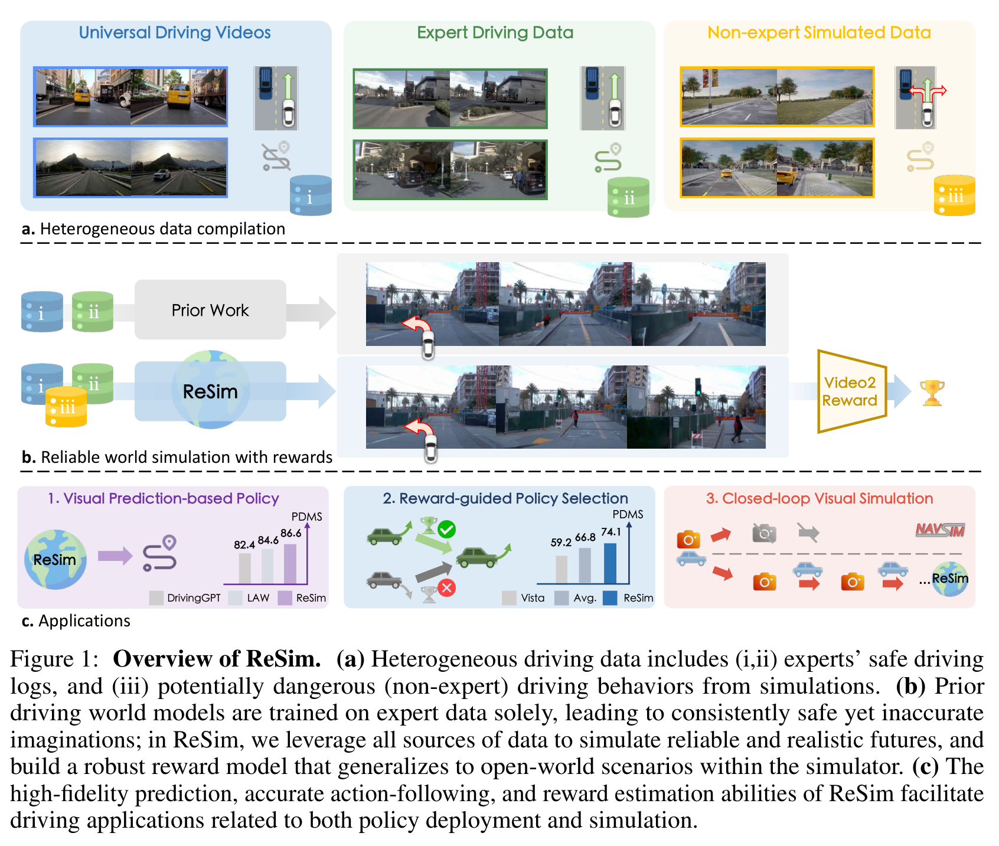
全部细节
这是论文原文图表或页图；具体版本、页码和裁剪信息见邻近中文说明。
- 论文版本：
2506.09981v2；PDF SHA-256：4cea34ec1278c5e02806c4f075650f4e90290a1146d03d84b920e35ce823db1c；page SHA-256：f82798acb00352d9fc0052655eed773b6cbe3d41541ba387287bc8a75fd84a56。 - crop bbox（pt）：
[104, 65, 510, 409]；尺寸：[1692, 1433]；crop SHA-256：51078682818b4837b7bd87d19e6b4e9938200066f93983ac2e2c5741ed6493d8。 - 图表说明：Fig.1 的三个分区依次是 heterogeneous 专家/非专家 data、可靠 world 仿真和应用。作者将安全日志与 CARLA hazardous 数据共同用于世界预测，再通过 Video2Reward 支撑视觉 prediction 策略、reward-guided selection 和闭环视觉仿真。
- 进一步分析：非专家 actions 让模型必须学会危险结果，而不只生成安全专家画面，这是 ReSim 与只模仿成功日志的 WAM 的关键差异。与 WoTE BEV evaluator、Drive-WM map/object 奖励相比，ReSim 在视频空间预测并用 infraction supervision 学 scalar 奖励。
- 证据边界：系统框架图没有给数据比例、动作归一化与 V2R 可靠性上界。闭环视觉仿真是模型想象中的闭环，并非真实 CARLA/道路物理闭环；危险画面逼真不能替代动作跟随和风险排序验证。 当前 visual_status=
precise_crop_and_visual_checked；semantic_status=reviewed/pass；局部建议：保留 heterogeneous data、V2R 和 application 三段边界。。历史状态semantic_pending仅对应早期裁剪回执，原文证据边界继续有效。
原文图表卡片：表 3（PDF p.8）
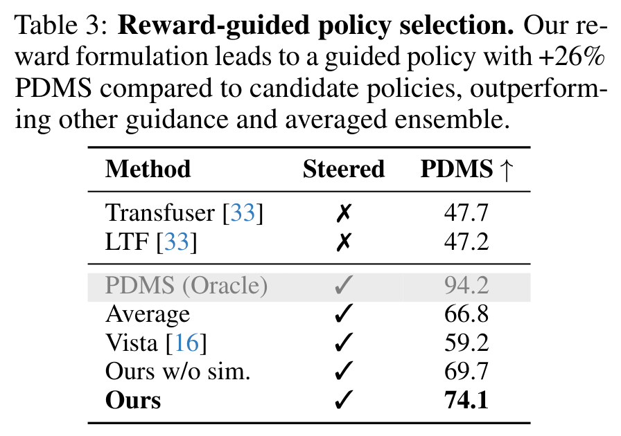
全部细节
这是论文原文图表或页图；具体版本、页码和裁剪信息见邻近中文说明。
- 论文版本：
2506.09981v2；PDF SHA-256：4cea34ec1278c5e02806c4f075650f4e90290a1146d03d84b920e35ce823db1c；page SHA-256：f971b7a4409eaf27d1337a65e25195874461e39b6774fb1ae2dc02200d7860e0。 - crop bbox（pt）：
[295, 68, 510, 219]；尺寸：[896, 630]；crop SHA-256：55a30c3ec2e366b1b2ff27871dfbf8e42b2a8d5818bdc8f1ffa49fe6945044be。 - 图表说明：表 3 比较 reward-guided 策略 selection：Transfuser 47.7、LTF 47.2，平均选择 66.8，Vista 奖励 59.2，Ours w/o sim 69.7，Ours 74.1 PDMS；Oracle 94.2 作为上界。图注的 +26% 是相对某候选政策的汇总描述，不能替代逐行数字。
- 进一步分析：加入仿真数据后从 69.7 到 74.1，说明危险样本的奖励可能提供更好的候选排序；但离 Oracle 94.2 仍差 20.1 点，排序误差明显存在。与 WoTE 表 3 相比，ReSim 选的是不同候选策略的轨迹，而非同模型的 BEV 候选输出头。
- 证据边界：PDMS 改善依赖候选集质量和奖励 model，不能从选择性能反推世界模型每个未来正确。Oracle 行不是可部署方法，表格未给每场景 rank 相关性、方差或真实安全率；缺失 V2R 代码不等于论文没有描述机制。 当前 visual_status=
precise_crop_and_visual_checked；semantic_status=reviewed/pass；局部建议：正文引用时列出七行数字并保留 Oracle/average/ours w/o sim. 区分。。历史状态semantic_pending仅对应早期裁剪回执，原文证据边界继续有效。
正文：05_analysis\full_reading\resim\paper_reading_report.md；15451 字符 / 4257 中文字符；SHA-256 44c55dddf6f5a9a67d9c00b19ee93047b253460dd596c67506da93b06c68cf72。
来源覆盖：05_analysis\full_reading\resim\source_coverage.json；问题台账：05_analysis\full_reading\resim\paper_questions_for_code.md。
自动驾驶 · 核心论文
ReSim：完整论文精读报告（paper-only）
当前正式机制图与完整图解：F-resim-mechanism
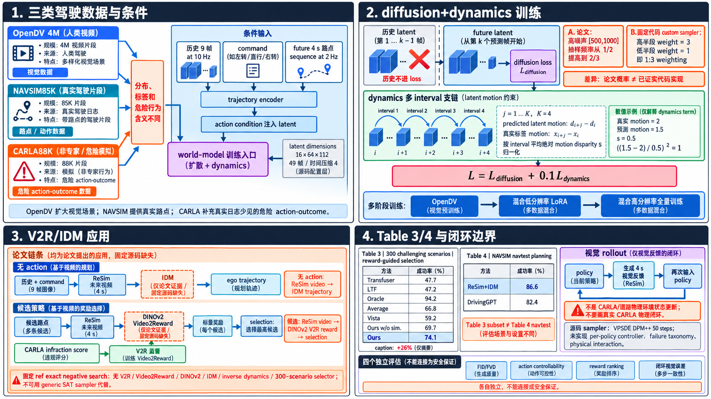
全部细节
图像 ID：F-resim-mechanism；PNG、native receipt 和逐图中文说明由当前任务 accepted manifest 绑定。
图像身份：F-resim-mechanism；审校时间：2026-10-31T19:36:30.517723+00:00；尺寸：1672×941；SHA-256：144e5cc06ba02d366aa8c90363683ce2bd14e891b513ab518d6033a96e0e5aa4。原生回执（此附件保存在完整本地归档中）。
自动驾驶 · 核心论文
ReSim 高密度科研图逐区逐箭头说明
一、三类驾驶数据与条件：让模型看到安全和危险后果
箭头从三类数据分别进入同一个 world-model 训练入口：OpenDV 人类视频提供规模视觉，NAVSIM 提供带路点的真实驾驶片段，CARLA 提供非专家/危险模拟行为。论文规模是 OpenDV 4M、NAVSIM85K、CARLA88K；源码配置还给出潜变量 16×64×112、49 帧、时间压缩4。条件输入由历史 9 帧 at10 Hz、command 和未来 4 s/2 Hz 路点 sequence 组成，轨迹编码器把路点作为动作条件注入潜变量。三类数据箭头在训练集处汇合，但要用橙色标“分布、标签和危险行为含义不同”，不能画成同质样本。
三类数据填补不同缺口：OpenDV 扩大视觉场景，NAVSIM 提供真实路点，CARLA 提供真实日志少见的危险 action-outcome。图中三条箭头汇合但用不同颜色/标签保留分布差异，不能画成同一独立同分布数据源。
三种数据的动作覆盖范围不同：人类视频提供常见视觉变化，NAVSIM 提供标注路点，CARLA 提供危险和非专家后果。汇合箭头后仍要保留数据标签，不能声称它们来自同一分布。
二、diffusion+动力学训练：未来潜变量与运动差分分别监督
未来潜变量从第 k 个预测帧开始进入 diffusion 损失，历史潜变量被排除；动力学损失取多个 interval j=1…K，K=4，比较预测的潜变量 motion (d_{i+j}−d_i) 与真实标签 motion (x_{i+j}−x_i)，再除以 interval 的平均绝对 motion disparity s。总目标写 L=L_diffusion+λL_dynamics、λ=.1。给完整教学数值：若一个 interval 的真实 motion=2、预测 motion=1.5、s=0.5，则该项归一化平方误差为 ((1.5−2)/0.5)^2=1；这只是解释动力学 term。论文高噪声 [500,1000] 抽样频率从1/2提高到2/3，固定 source custom 采样器则按高半段 weight=3、低半段 weight=1 做加权抽样；图中把二者用橙色差异框分开，不能把论文概率写成代码已证实实现。
diffusion 损失只预测未来潜变量，动力学损失约束跨 interval 运动差。K=4 的 interval 不是四个控制点；历史被排除在损失外。高噪声的论文频率和代码 weighting 是两个证据层，必须用橙框并排。
动力学 term 在潜变量 motion 上计算多 interval 差，历史被排除；它约束运动变化而不是逐像素重建。高噪声的论文描述和源码 1:3 weighting 只能并列，不能强行相等。
三、V2R/IDM 应用：论文链条和固定源码链条分开
无动作分支的箭头是历史+command→ReSim 未来视频→论文描述的 IDM→ego 轨迹；候选策略分支是候选路点→ReSim 未来视频→DINOv2 Video2Reward→标量奖励→选择最高候选。论文的 V2R 用 CARLA infraction score 监督，IDM 将无动作标签视频转成轨迹；然而固定 ref exact negative search 没有 V2R、Video2Reward、DINOv2、IDM、逆动力学或 300-scenario 选择器。因而图中这些模块必须带橙色“仅论文证据 / 固定源码缺失”框，不能用 generic SAT 采样器代替。
论文应用把生成视频转成轨迹或奖励，但固定 SAT ref 没有 named V2R/IDM。图中可以画仅论文证据模块来表达论文机制，同时用橙色“源码缺失”覆盖其执行箭头，避免把 generic 采样器当成完整应用。
应用区必须把论文机制与源码可执行性分层。论文描述 V2R 和 IDM，固定 ref 搜索没有这些命名实现；橙框覆盖“仅论文证据”模块，防止执行器画出假源码箭头。
四、表 3/4 与视觉滚动执行：多个数字不能压成一条可靠性箭头
表 3 的 reward-guided selection 逐行写 Transfuser=47.7、LTF=47.2、Oracle=94.2、Average=66.8、Vista=59.2、Ours w/o sim.=69.7、Ours=74.1；图注的+26%只作旁注。表 4 是 NAVSIM navtest，ReSim+IDM=86.6、DrivingGPT=82.4，和300 challenging scenarios 的表 3 分开。Visual 闭环箭头是“生成4 s视觉反馈→再次输入策略”，不能画成真实 CARLA/道路物理环境状态更新。源码采样器是 VPSDE DPM++ 50 步，未实现 per-policy 控制ler、failure taxonomy 或 physical interaction；FID/FVD、动作控制lability、奖励 ranking 和闭环视觉误差各自独立，不能连接成安全保证。
Table3 七行数值来自300 challenging scenarios的策略选择，Table4 是 navtest 规划；+26%只是图注摘要。视觉反馈回灌策略的滚动执行不会自动更新 CARLA 物理世界，因此不可画真实环境状态闭环。
表3每行数字属于300个挑选场景，表4属于完整 navtest 表格，视觉回灌实验只是 model-based 滚动执行。它们都不能接到真实物理世界状态更新或安全保证。
逐箭头审计补记：
逐箭头审计补记：OpenDV、NAVSIM、CARLA 三类数据先分别经过采样/条件整理，再汇入扩散训练；轨迹编码器的路点箭头进入未来潜变量条件，diffusion 损失和动力学损失分别消费未来潜变量与跨时间差；无动作的论文应用箭头从视频到 IDM 轨迹，有动作的论文应用箭头从候选视频到 V2R 奖励；固定源码缺少这两个命名模块，故应用箭头必须覆盖源码缺失边界；表 3 选择子集和表 4 navtest 的箭头不能相交；视觉回灌箭头只回到策略，不回到 CARLA 物理状态。
补充证据说明：ReSim 论文把生成视频、奖励估计和应用串成链条，但固定 SAT 仓库只展示通用扩散与轨迹条件编码器。图中仍然可以教读者理解论文机制，但 V2R、IDM 和选择器箭头必须标仅论文证据。不同表格、不同候选子集和不同评估接口不能通过一条总分箭头合并。
具体教学例中，两条候选轨迹分别保持车道和急转离路，ReSim 生成两个未来视频，再由论文 V2R 预测奖励。视觉逼真并不保证几何动作跟随，动作跟随也不保证奖励跨域校准；这三项必须有独立终点。
具体数值追踪：四秒未来视频包含四十个十赫兹画面，轨迹条件由八个二赫兹路点提供，运动一致性损失则在压缩后的潜在时间轴上取多个间隔。三个时间尺度承担不同角色，不能把四十帧、八个路点和四个运动间隔画成同一长度。图中从预测视频到奖励模块的箭头只表达论文定义，固定源码没有奖励网络时，应将该模块框标为论文机制、实现缺失。
正式图卡：ReSim 异构数据、diffusion 动力学一致性与 V2R 应用边界
- 图解重点：OpenDV、NAVSIM85K、CARLA88K 三类数据及条件输入，历史/未来潜变量的 diffusion 损失、跨 interval 动力学约束和
L=L_diffusion+0.1L_dynamics。 - 应用与协议：V2R/IDM、Video2Reward、候选选择、表 3/4 数字和视觉滚动执行逐项分开；固定 ref 中没有把论文链条实现成可执行闭环。
- 证据边界：FVD/FID、动作 controllability、奖励 ranking 和多步视觉一致性是独立评估；不能把视觉滚动执行画成真实 CARLA 物理闭环，也不能将论文图注的 +26% 代替七行表格数字。
- 来源与原生来源记录见 图详解（此附件保存在完整本地归档中） 与 回执（此附件保存在完整本地归档中）。
0. 论文身份与定位
论文 ReSim: Reliable World Simulation for Autonomous Driving，arXiv:2506.09981v2，2026-04-28，正文和附录共25页。论文发表于NeurIPS 2025 Spotlight，作者 Jiazhi Yang、Kashyap Chitta、Shenyuan Gao、Long Chen、Yuqian Shao、Xiaosong Jia、Hongyang Li、Andreas Geiger、Xiangyu Yue、Li Chen。本文完整读取固定PDF、HTML、TeX、附录A–D、Figure1–10、Tables1–4，逐页渲染并检查关键图表。
ReSim回答的问题是：如何在真实世界驾驶场景中可靠模拟各种ego behaviors，包括真实数据罕见的危险/非专家动作，并让模拟未来可用于奖励估计、策略 selection和闭环视觉滚动执行？
1. 为什么安全专家数据不够
多数驾驶世界模型从真实人类驾驶数据学习。真实数据安全且规模大，却存在selection bias：司机很少故意撞车、越界或做危险转向，因此模型在这些非专家动作上会 hallucinate、忽略动作或维持安全专家行为。这样的世界模型可能视频看起来真实，却不能作为策略 evaluator，因为它无法区分安全和危险动作的后果。
ReSim的解决路径有三环：
- OpenDV + NAVSIM提供通用视觉和专家动作。
- CARLA随机steering/speed探索提供危险和非专家动作。
- CogVideoX diffusion transformer通过动作条件化、动力学一致性损失、不平衡噪声 sampling和multi-stage curriculum学习可控未来视频。
然后训练Video2Reward（V2R）从模拟视频预测CARLA infraction score，接入真实NAVSIM 策略 selection。
2. 数据实体与规模
- OpenDV：约4M 视频样本，负责通用视觉和跨域泛化。
- NAVSIM：85K 样本，带严格动作 labels。
- CARLA：88K 样本，包含PDM-Lite专家和随机steering/speed非专家探索。
- 每个样本 4.9s、10Hz，训练使用前9帧作为视觉 context、后40帧作为prediction 目标。
- 训练阶段动作路点为4s、2Hz，命令是高层Turn left/straight等。
CARLA探索数据的价值不只是“更多数据”，而是填补safe 专家 corpus中缺失的action-outcome pairs。论文Figure1把三类数据画成Universal Driving Videos、Expert Driving Data、Non-expert Simulated Data，随后连接reliable 仿真、奖励和applications。
3. 控制型扩散世界模型
3.1 输入/输出
ReSim建立在CogVideoX diffusion transformer上。它把历史潜变量换成干净 counterparts，并把未来 ego 路点通过可学习轨迹编码器投影到transformer输入空间。条件包括：
- 历史帧潜变量 ；
- 高层文本命令 ；
- 细粒度动作路点序列 ；
- noised 未来视频潜变量 。
Video diffusion 损失只在第 帧之后计算，避免把已经观察的history当预测目标：
这使无动作标签（只文本/历史）与action-conditioned（轨迹作为条件）两种模式都可用。
3.2 Dynamics consistency 损失
标准diffusion每个帧独立回归，可能生成单帧真实但时间运动不一致。ReSim比较不同潜变量时间间隔的motion：
其中 是模型预测潜变量， 是GT 潜变量， 是视频潜变量帧， 为最大interval， 是每个interval的平均绝对motion disparity，用于稳定损失尺度。总损失：
直觉：如果一辆车从左向右移动，单帧损失只要求每张图像像GT；DCL额外要求“帧3−帧1”的运动量和GT一致，避免模型通过逐帧平均得到静态但不连贯视频。
3.3 Unbalanced 噪声 sampling
均匀timestep sampling使模型在低噪声时容易利用相邻帧shortcut，尤其忽略非专家动作造成的明显运动。ReSim把高噪声区间[500,1000]的采样比例从1/2提高到2/3，让模型在严重遮挡/腐蚀下学习真正的motion interaction。
这是优化分布而非architecture变化：作者希望高噪声条件迫使denoiser使用trajectory/text/history，而不能只复制近邻帧。
3.4 Progressive multi-stage learning
三阶段：
- OpenDV：先学history+text→未来视频。
- OpenDV+NAVSIM+CARLA：加入轨迹条件化，NAVSIM轨迹随机掩码 支持action-conditioned和free prediction，CARLA 路点保持完整以学习hazardous maneuvers；256×448、冻结 diffusion 主干、只训练轨迹编码器+LoRA。
- 512×896全量微调，输出4s、10Hz 未来视频，9帧history@10Hz，optional command和4s、2Hz 路点。
这个curriculum先学视觉世界，再学动作控制，最后恢复高分辨率。论文没有将每一阶段的确切step、损失权重、数据混合比例全部展开。
4. Video2Reward：从视频到决策反馈
4.1 为什么需要V2R
可控视频只解决“给定动作会发生什么”，策略 selection还需要“哪个动作更好”。手工3D 奖励需要精确相机 pose、地图和检测；ReSim改用视频接口。V2R冻结DINOv2 主干，加轻量输出头，监督CARLA infraction score（碰撞、过低速度等）。
推理时，候选策略提出轨迹；ReSim模拟对应未来视频；V2R把视频映射为scalar 奖励。这样在真实场景中无需显式3D simulator即可比较策略候选。
4.2 关键假设
- DINOv2视觉特征能跨CARLA→真实NAVSIM。
- ReSim未来视频的视觉/动作错误不会破坏V2R排序。
- CARLA infraction score足以代表真实驾驶quality。
这些都是迁移假设。Figure7的CARLA/NAVSIM 奖励相关性支持跨域趋势，但没有报告校准误差、ranking confidence或不同failure type的分解。
5. 应用一：Video prediction-based 策略
ReSim可以在没有动作条件化时根据history和command生成未来图像，随后Inverse Dynamics Model（IDM）从生成视频提取可执行轨迹。NAVSIM Table4：ReSim+IDM PDMS86.6，超过DrivingGPT82.4、LAW84.6和TransFuser84.0；GT Future+IDM oracle90.8。模型不使用multi-sensor、ego 状态、past 轨迹或extra annotation。
这个结果说明未来视频可以成为规划 interface；但IDM是额外模型，ReSim本身不是直接动作策略。GT Future oracle与86.6之间的差距量化了视频 prediction+IDM的上限缺口。
6. 应用二：Reward-guided 策略 selection
在NAVSIM中选300个challenging scenarios：两个候选策略中一个成功、一个失败。单独Transfuser47.7 PDMS、LTF47.2；平均ensemble66.8；Vista reward59.2；ReSim w/o sim69.7；完整ReSim+V2R74.1；GT PDMS oracle94.2。论文称相对weak 候选提升55.3%（74.1相对47.7的相对量级）。
机制是：每个候选轨迹生成短视频，V2R打分，选择最高奖励。这个选择器不需要训练一个新策略，只需要可靠的world 仿真和奖励 ranking。
7. 应用三：Closed-loop 视觉仿真
ReSim每轮接受策略输出的4s 未来轨迹，生成整个4s视觉反馈，再把新帧输入策略，循环决策。Figure8用front-view XVO/VO planner展示策略进入预录数据未覆盖的新状态。它是视觉 imagination closed loop，不是CARLA physics closed loop；未来帧错误可能累计，论文Limitations承认推理 efficiency和fair 闭环评测基准仍不足。
8. 实验
8.1 Action controllability
Waymo zero-shot、540 validation 样本、Trajectory Difference 指标。Table1：Action-free GT0.58，Vista5.68，ReSim w/o sim1.47，ReSim1.13；Expert 动作 GT0.58，Vista1.89，w/o sim1.18，ReSim0.86。模拟数据带来更强动作 following，较Vista改善约80%/54%。
Non-expert 条件化用human preference study（Fig.4/5），ReSim在视觉 realism和轨迹 following均显著优于Vista、ReSim*；Figure5展示危险动作下其他方法不跟轨迹或场景不一致，ReSim能生成off-road/collision-like结果。Figure6在Waymo和nuScenes zero-shot，显示专家/非专家动作 controllability跨域。
8.2 Video fidelity
nuScenes validation、无动作条件、zero-shot。Table2：ReSim FID5.2/FVD50.4，优于Vista6.9/89.4、GenAD15.4/184.0、Drive-WM15.8/122.7等。这个结果证明视觉 fidelity，不等于动作 control；无动作标签与action-conditioned需要分开看。
8.3 Reward 相关性
CARLA和NAVSIM各250 专家/非专家 pairs；奖励 model应给专家更高分。Figure7：Vista48.4/53.2？图中显示CARLA和NAVSIM两组，ReSim完整曲线高于Vista与w/o sim（可视读数约63.6/60及其余）。论文没有给出每个场景的置信区间或正负样本构造细节。
8.4 Planning Table4
ReSim WM+IDM PDMS86.6，超过DrivingGPT82.4、LAW84.6，低于GT Future90.8。它只使用history+command，证明视频预测可以替代多传感器策略的一部分，但IDM和ReSim联合作用无法分离。
9. 消融与图表
- Fig9：unbalanced 噪声比uniform更好地保持agent motion和scenario layout。
- Fig10：DCL K=4优于无DCL/K=1，支持多interval 动力学损失。
- Tab1：simulated data removal使动作 controllability变差。
- Tab2：zero-shot FID/FVD优于in-distribution 基线，是强但需防数据/预训练差异的结果。
- Tab3：reward-guided selection完整74.1，w/o sim69.7，Vista59.2，average66.8；sim data提升V2R ranking。
- Tab4：视频 prediction+IDM 86.6，GT 未来 oracle90.8。
10. Reviewer lens与限制
Novelty是数据分布与世界模型/奖励的联合：把安全专家、人类视频和CARLA非专家数据放进同一controllable 视频 model，再从视频中估计奖励。技术重点是DCL、high-noise sampling、三阶段适配和V2R，不是新的diffusion transformer。
最脆弱假设是“CARLA infraction-supervised V2R能对真实NAVSIM生成视频的安全性排序”。如果ReSim在危险行为上出现视觉幻觉，V2R可能给危险轨迹高分；如果CARLA规则和现实差异大，奖励相关性不等于真实 safety。论文用250 pair 相关性和策略 selection支撑，但没有校准、置信度和真实事故对照。
其他限制：iterative 去噪低效；多轮闭环视觉执行轨迹会累积误差；真实数据+CARLA的视觉域差距；仿真非专家动作是随机steering/speed，未覆盖所有真实危险策略；世界模型训练成本高；Future work承认尚未解决在ReSim生成世界中训练agent。
11. 最小复现与最强反例
最小复现：在Waymo 动作 controllability上做四组同一模型：OpenDV+NAVSIM、加CARLA 专家、加CARLA random、加DCL/噪声策略。固定540 样本，报告轨迹 difference、FID/FVD和非专家 human preference。再在NAVSIM300 selection scenarios报告奖励 ranking、PDMS和V2R校准。
最强反例：构造CARLA中“低速度但无碰撞”被infraction score惩罚、而真实道路中低速让行是安全的场景；或模拟视频视觉逼真但轨迹 geometry错位。若V2R优先选择错误轨迹，说明CARLA 奖励和视觉 realism不足以支持真实策略 selection。
教学故事：ReSim先让模型看足够多的安全驾驶，也让它在模拟器里故意做危险动作。模型不只是预测“接下来画面长什么样”，还学“动作变化会如何改变画面”。再训练一个看视频打分的Video2Reward，就可以让多个策略在想象世界里比赛，选择更安全的一条。它把数据多样性、视频可控性和奖励评价连成一条链，但链条中任何一环的模拟偏差都会传到最终决策。
12. 一次完整ReSim应用例子
给定9帧历史视频、命令“Turn left”和8个2Hz 未来路点，轨迹编码器把动作插入CogVideoX 潜变量；DDIM从噪声开始50步生成4秒、10Hz、512×896视频。V2R逐帧用DINOv2取feature，temporal attention聚合后输出一个infraction 奖励。若有两个候选策略，分别生成两段视频并比较奖励；如果一个候选在视频中偏出道路或撞击障碍，CARLA infraction supervision应该让它得分更低。
若没有动作条件，ReSim只依据历史和command生成可能未来；IDM从视频序列恢复8个2Hz 路点，再作为实际planner轨迹。这个链条中ReSim负责视觉未来，IDM负责视频→动作转换，两者误差不能混为世界模型误差。
13. 可靠性与成本的真实折中
ReSim通过CARLA危险数据提高非专家动作 controllability，但训练阶段约40 A100、14天，推理一段4秒视频约2分钟/A100。它因此更像offline simulator/奖励 oracle，而非onboard real-time planner。论文承认需要distillation或减少DDIM 步；同时，闭环视觉仿真只是研究工具，因为front-view-only模型无法公平接收multi-view 策略。
Fig.S18的parapet crossing、occluded object inconsistency和extreme artifact是重要反例：即便FID/FVD较好，关键agent/geometry错误仍会破坏V2R排序。最小可靠性测试必须把视觉fidelity、轨迹 difference、奖励 ranking和闭环 error accumulation分开评测。
14. 从数据到奖励的贯穿计算例子
设一个CARLA episode先由PDM-Lite驾驶1秒，随后随机steering偏左并全油门4秒，导致车辆接近前车。ReSim读取9帧历史、命令“Moving forward”和8个2Hz 路点；轨迹编码器把动作条件注入未来潜变量。DDIM多步去噪输出4秒视频。如果视频中前车、道路和自车相对运动与CARLA infraction记录一致，V2R应输出较低或较高对应奖励；另一个安全候选视频若保持lane和距离，则奖励更高。策略选择器比较两段scalar 奖励，执行高分候选。
这里有三个误差乘积：动作 controllability误差（视频是否跟路点）、视觉 fidelity误差（场景是否真实）、V2R calibration误差（视频质量是否映射成安全分）。Table1只测第一项，Table2主要测第二项，Table3测三项组合。不能用Table2的FVD直接推断Table3的selection可靠。
15. Dynamics consistency的时间意义
Eq.(2)中的 不是简单帧差；它把潜变量 motion按interval长度分开监督。短interval捕捉突然刹车、转向，长interval捕捉yielding或车辆逐渐靠近。让模型同时看到多尺度运动，但求和项数量随N和K增加，必须用 归一化避免长interval主导损失。Figure10中K=4优于K=1，是多尺度运动监督有效的直接视觉证据。
如果模型只复制相邻帧，低噪声采样会让diffusion 损失很容易；不平衡噪声把更多训练预算放到[500,1000]，要求模型在严重腐蚀下依赖history、command和轨迹。Figure9中unbalanced sampling的agent motion和layout更一致，但论文没有报告数值DCL或FVD差异，因此把它理解为“降低shortcut风险”更准确。
16. 多阶段训练的状态边界
Stage1让2B DiT从OpenDV学会历史+text→未来。Stage2冻结DiT，只训练LoRA和轨迹编码器，混合OpenDV/NAVSIM/CARLA，低分辨率256×448、BS160、80K 步；NAVSIM 轨迹随机drop、CARLA保持动作条件。Stage3恢复512×896、全量DiT+LoRA+轨迹编码器，50K 步。这个顺序避免一开始让少量action-labelled hazardous data破坏通用视频prior。
Appendix S.5明确Stage1/2/3的trainable参数和LR。论文主文只说three-stage learning，若不读附录会漏掉Stage2 主干冻结和CARLA 轨迹 never dropped这两个关键事实。它们分别决定效率与危险动作可学习性。
17. V2R的迁移风险
V2R的DINOv2 主干冻结，所有视频帧单独编码，再经two spatial-temporal attention blocks和MLP输出scalar。训练只用35K CARLA 样本、20 epochs、224×224，label为CARLA Infraction Score。推理却把ReSim生成的视频放到真实NAVSIM候选上。换言之，V2R不是直接从NAVSIM safety labels学习，而是假设DINOv2与ReSim视觉足以跨域。
Figure7 奖励相关性在CARLA和NAVSIM都高于Vista/w/o-sim，但每域只250 专家/非专家 pairs，且非专家由随机其他样本配对。相关性无法说明奖励绝对校准，也无法覆盖连续失败程度。最小补充实验应按collision、off-road、traffic-light、low-speed分别报告AUC和calibration curve。
18. Closed-loop视觉模拟的误差累积
每轮ReSim生成完整4秒视频，策略从新视觉状态输出下一段动作，再滚动。若每轮最后9帧作为下一轮context，任何物体位置、道路拓扑或光照错误都会进入下一次条件；多轮后策略可能进入真实数据从未见过的错误状态。Figure8展示这种“新状态 exposure”，但没有给出与真实CARLA或Waymo 滚动执行的状态 divergence曲线。
论文自己承认推理 efficiency、策略训练、fair 闭环评测基准仍未解决；Appendix D还列出multi-view 策略不能直接应用、视觉artifact和地理偏差。故ReSim更适合作为offline stress-test/奖励 oracle，而不是已经可上车的实时世界。
19. 证据分层
强证据：heterogeneous data规模、Eq.(1-2) 损失、Stage2 随机丢弃/Stage3 resolution、Waymo controllability Table1、nuScenes zero-shot Table2、策略 selection Table3、NAVSIM Table4。中等证据：human preference 600 answers、Figure5/6、long 时间跨度 FigureS.17。较弱证据：44% 视觉 fidelity/25% 策略 selection headline（依赖多指标/基线定义）、奖励 transfer到真实场景的安全含义、闭环长期可靠性。失败图S.18反而是重要边界证据，不能因为主结果漂亮而忽略。
20. 教学总结
ReSim先把安全人类数据、规模视频和模拟器危险数据放进同一世界模型。它用diffusion预测未来画面，用DCL保持运动，用高噪声训练防止模型只复制邻帧。之后V2R看生成视频并估计驾驶奖励，让多个策略在想象世界中竞争。这个系统把“数据多样性→动作可控性→奖励排序→策略应用”连起来，但也把CARLA偏差、diffusion成本和视觉误差带到了每一环。
21. 数据分布、动作分布与模拟可靠性
ReSim的核心不是把CARLA简单并入训练集，而是把三类数据的互补性写进数据设计。OpenDV有1700小时未校准front-view视频，适合学习跨相机、跨地理场景的视觉先验；NAVSIM有85K带轨迹标注样本，适合动作条件化；CARLA有约88K成功/危险样本，各约一半，适合覆盖真实数据几乎没有的非专家 outcomes。OpenDV还对Turn left/right做5×采样，因为转弯比直行更难学。
CARLA的非专家 agent先让PDM-Lite驾驶1秒，再切换4秒探索策略：slight turns、hard turns、forced lane changes、tailgating。它随机steering/throttle和内部参数。这样的“专家 takeover”让场景初始状态合理、危险行为集中在后段，便于模型学习动作导致的后果。但危险动作空间仍是预定义策略集合，不能代表所有真实驾驶错误，例如分心、错误判断、突然避让或多车博弈。
22. 训练阶段与推理阶段的条件边界
Stage2的NAVSIM 轨迹以p=.5随机drop，使模型既能做action-conditioned generation，也能从历史/command推断free 未来；CARLA 轨迹永不drop，因为危险行为无法仅从历史帧可靠推断，需要显式动作引导。这个不对称随机丢弃是重要设计：如果CARLA危险轨迹也drop，模型可能把危险结果当作无法解释的视觉噪声；如果NAVSIM永不drop，无动作标签策略无法训练。
历史条件 augmentation在训练时分别采样t-aug和未来去噪 t，推理时t-aug=0。它的目标是降低多轮滚动执行的error accumulation：模型在训练中看到被轻微污染的history，部署时面对生成帧也更稳。论文给了这个策略的动机，但没有报告t-aug分布和augmentation强度，仍需实现级确认。
23. Video2Reward的全链条计算
对一个4秒未来视频，V2R先逐帧resize到224×224，送入冻结DINOv2，得到每帧image feature；two spatial-temporal attention blocks把40帧特征聚合，MLP输出scalar infraction 奖励。V2R只用CARLA 35K样本训练20epochs，label惩罚collision、traffic light、off-road和过低速度。推理时，ReSim生成每个候选的视频，V2R不看显式3D map或轨迹，只通过视频判断质量。
这个设计有一个诱人的优点：同一视觉接口可跨域使用，不需要为每个相机 pose重新写3D rule engine。但它也产生双重迁移风险。第一，CARLA画面与真实NAVSIM外观不同；第二，CARLA infraction定义可能与真实道路偏好不同。例如低速在CARLA被惩罚，在拥堵或礼让场景却可能是合理行为。Figure7的250 pairs 相关性只证明排序趋势，不能证明绝对奖励正确。
24. 应用指标的分解
Table1衡量动作 controllability：Waymo上ReSim 专家动作轨迹 difference0.86，action-free1.13，均优于Vista；w/o sim分别1.18/1.47，说明模拟数据改善非专家控制。Table2衡量无动作标签视频 fidelity：nuScenes zero-shot FID5.2/FVD50.4，说明OpenDV预训练带来跨域视觉质量。Table3衡量策略 selection：两个弱候选单独47.7/47.2，平均66.8，Vista59.2，ReSim+V2R74.1；完整系统比单候选明显更好。Table4衡量video-based 策略：ReSim+IDM86.6，低于GT Future oracle90.8但高于DrivingGPT/LAW。
这些数字不能合并成一个“可靠性分数”。Action difference低不等于视觉逼真，FID/FVD低不等于奖励排序好，策略 PDMS高也可能来自IDM或候选选择。论文把多个指标并列展示是合理的，但读者需要保持因果链分段。
25. 长时域与闭环风险
ReSim每次只生成4秒、40帧，长未来靠把最后9帧作为下一轮history。FigureS.17显示超过30秒仍比Vista更丰富；但每轮error都会进入下一轮条件。FigureS.18给出parapet crossing、occluded object inconsistency和extreme artifact，说明长时域和复杂多agent仍会失败。论文D部分承认diffusion推理慢、front-view-only限制多摄像头策略、闭环评测基准尚不公平。
Closed-loop 视觉仿真不是物理CARLA。它让XVO/VO planner在生成视频里运行，暴露新视觉状态，但没有真实动力学、碰撞物理或其他agent反应的独立验证。因此“策略进入未见状态”是研究性压力测试，不等于真实闭环 safety。未来要么把ReSim与真实/仿真状态对齐，要么报告生成世界和CARLA world的状态 divergence。
26. 最脆弱假设与最小反例
最脆弱假设是CARLA infraction 奖励可以跨域迁移到真实NAVSIM。反例是一个低速礼让、无碰撞、但被CARLA low-speed penalty惩罚的场景；V2R可能偏好高速候选，损害真实安全。第二个反例是遮挡行人：视频看起来逼真但行人位置错一米，V2R仍给高分。应按collision/off-road/traffic-light/low-speed分项测试奖励 calibration，不能只报告总相关性。
最小实验应做四组数据：无CARLA、CARLA 专家、CARLA 非专家、完整混合；固定Waymo540 controllability和NAVSIM300 selection scenarios，测Trajectory Difference、FID/FVD、奖励 AUC和策略 PDMS。再做DCL K=0/1/4、噪声 uniform/biased，观察motion consistency与V2R ranking是否同步改善。
27. 教学总结
27A. 语义与公式复核补记（2026-10-28）
源文PDF pp.5–9、17–25明确写出V2R，而不是因代码缺失就没有机制。V2R以冻结DINOv2提取视频特征，轻量spatiotemporal 输出头预测CARLA infraction scalar；对候选轨迹，ReSim先模拟未来视频，再交V2R打分选择。250 pairs 专家/非专家比较测排序，NAVSIM300 challenging scenarios测selection，二者都不是逐场景绝对奖励校准。V2R 代码不可得只限制实现复核，不抹去paper的architecture、label和protocol。
世界模型diffusion 损失只监督未来潜变量；动力学一致性损失以多时间interval的潜变量 motion差监督，并用归一化系数稳定幅值，总目标为 。Table1 controllability、Table2 FID/FVD、Table3 reward-guided selection、Table4 IDM 策略分别衡量不同链路，不能合成“可靠性分数”。长时视觉闭环仍在生成世界中运行，没有独立真实物理/其他agent反应保证，速度和front-view-only边界保留。
ReSim先用OpenDV学广泛视觉，再用NAVSIM学带标签动作，最后用CARLA故意做危险行为，让模型看见真实日志中缺失的坏结果。扩散模型通过轨迹编码器执行动作，通过DCL学习跨时间运动，通过高噪声训练避免复制邻帧。V2R再把模拟视频变成奖励，帮助多个策略选择和在视觉想象世界中闭环运行。它是一个强大的offline world simulator和奖励 interface，但速度、模拟偏差、front-view限制和错误累积决定了它还不是直接可部署的实时驾驶系统。
12. simwam
正式图卡：SimWAM 隔离掩码、仅生成动作推理与后段 SDE/GRPO
- 图解重点：视频/动作专家的共同条件、未来视频与动作词元的隔离掩码、联合 flow 训练目标，以及仅生成动作推理时的干净当前 KV 缓存。
- 后段优化：最后三步 SDE 产生同场景候选轨迹，GRPO 使用组内奖励优势与锚点 regularization；图中保留
T=1000、shift=5、10 步、noise_level=.1、PDM 权重10/5/2和归一化示例。 - 证据边界：NAVSIM PDMS=91.9、掩码消融的 90.3/518 ms 与 90.2/1512 ms、FVD=36.3 分属不同协议；未运行训练、推理和评测基准，不能把 FVD 或单项延迟解释成安全保证。
- 来源与原生来源记录见 图详解（此附件保存在完整本地归档中） 与 回执（此附件保存在完整本地归档中）。
原文图表证据（v3 精确裁切）
原文图表卡片：图 2（PDF p.4）
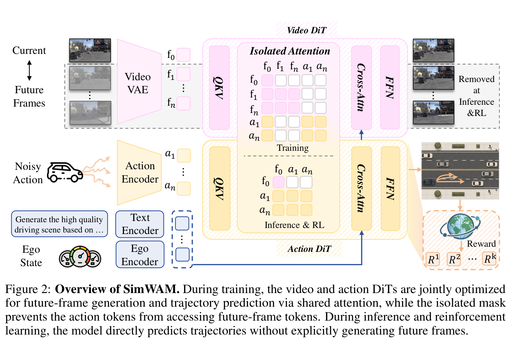
全部细节
这是论文原文图表或页图；具体版本、页码和裁剪信息见邻近中文说明。
- 论文版本：
2608.07468v5；PDF SHA-256：85580d4b0a8f7a0b7232b029eddc588a17cccd5080f2ccce834a8e56cee405ef；page SHA-256：d739ff60fdf32ded3acd24db2dfe2e7ad30894dc02bbd907e519523db7dfb34b。 - crop bbox（pt）：
[104, 65, 509, 337]；尺寸：[1688, 1133]；crop SHA-256：81d97c0d83a1c8bd5f576e066dacce7d9a5ac2bb554e35ff862a955a09c67a35。 - 图表说明：Fig.2 上方视频 DiT 与下方动作 DiT 共同训练，isolated attention 的块图令未来帧词元和动作词元都读取当前 observation、彼此不可见；右侧明确标记视频分支在推理/RL 移除，动作轨迹直接输出并接奖励。
图表说明： 图 2 把 SimWAM 的训练和推理拆成两条路径：上方视频 DiT 与下方动作 DiT 通过共享注意力联合训练，分别承担 future-frame generation 与轨迹 prediction；isolated 注意力掩码使 future-frame 词元和动作词元都能读取当前观测，但两种未来模态彼此不可见，尤其禁止动作读取 future-frame 词元。右侧明确移除视频分支，在推理和 reinforcement learning 阶段直接输出动作轨迹，再接奖励。图因此支持“视频提供训练期 world prior、推理期仅生成动作”的结构解释。它不提供损失权重、梯度大小或 IL/RL 速度；共享注意力也不等于两路所有参数共享。仅生成动作推理不能单独证明视频训练没有贡献，仍需结合掩码、共同训练和 RL 消融解释收益。
- 进一步分析：图将“视频塑造训练表示”与“动作需要未来视频”解耦，推理不必生成未来帧。与 Metis 非对称掩码不同，SimWAM 是未来模态相互隔离；两者都支持仅生成动作推理，却不能用同一掩码代理机制。图中的 RL 奖励又属于独立微调阶段。
- 证据边界：共享注意力不等于两路所有参数共享，颜色也不提供损失权重或梯度大小。仅生成动作推理不能证明视频无贡献，亦不能仅据图判定 IL/RL 的速度；需配合掩码、共同训练与 RL 消融。 当前 visual_status=
precise_crop_and_visual_checked；semantic_status=reviewed/pass；局部建议：保留“视频分支训练 contribution”边界。。历史状态semantic_pending仅对应早期裁剪回执，原文证据边界继续有效。
原文图表卡片：表 1（PDF p.6）
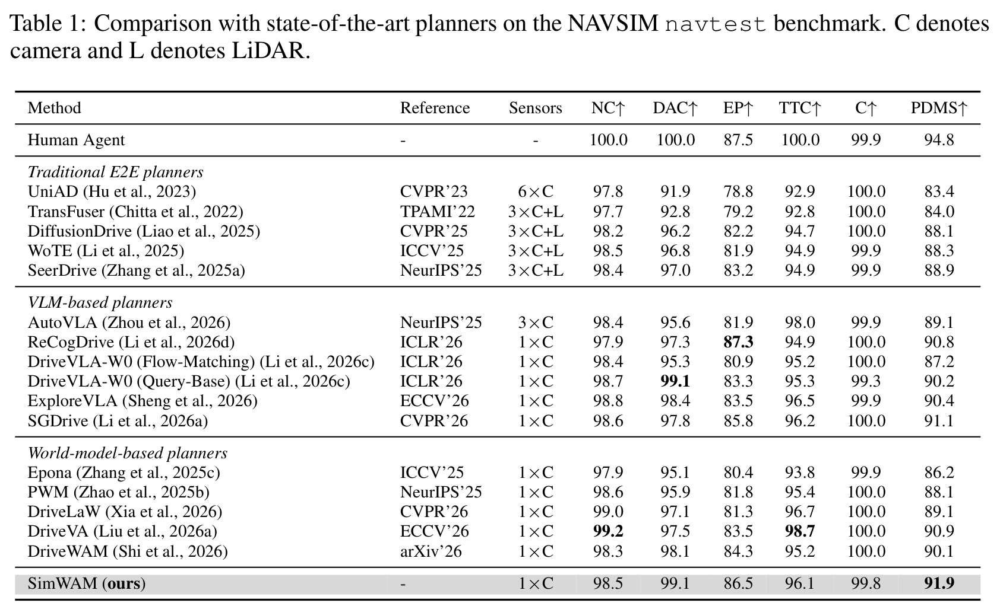
全部细节
这是论文原文图表或页图；具体版本、页码和裁剪信息见邻近中文说明。
- 论文版本：
2608.07468v5；PDF SHA-256：85580d4b0a8f7a0b7232b029eddc588a17cccd5080f2ccce834a8e56cee405ef；page SHA-256：e37f7ae14a319d286330cd3428285624e2a155d61cc9c4f41208d9f7eada86a8。 - crop bbox（pt）：
[104, 77, 508, 321]；尺寸：[1684, 1017]；crop SHA-256：7b0e29af7cf35c8cf42a4c980c6cb58d969b59a92421884aee44e265a8230451。 - 图表说明：表 1 的 NAVSIM navtest 结果包括传统 E2E、VLM 与 world-model planners。SimWAM 单相机 PDMS 91.9，NC 98.5、DAC 99.1、EP 86.5、TTC 96.1、C 99.8；同表 SGDrive 91.1、DriveVLA-W0 90.2，world-model 行包含 Epona/PWM/DriveWAM 等。
- 进一步分析：91.9 的总分由很高的道路合规与进度共同支撑，NC 并未超过所有对照，说明必须逐列看失败面。与 DriveWAM 的生成未来潜变量推理相比，SimWAM 把视频专家的作用移到训练，主表只证明最终规划配置有效，效率解释还要靠仅生成动作架构和计时证据。
- 证据边界：表内模型的数据、相机与 RL 标记不同，不能把数值差全部归因于隔离掩码。NAVSIM 为非反应式仿真协议，不能据此推出真实交通参与者交互、安全率或真实延迟。 当前 visual_status=
precise_crop_and_visual_checked；semantic_status=reviewed/pass；局部建议：无需数值修正；不要把 PDMS 归因于隔离掩码单一因素。。历史状态semantic_pending仅对应早期裁剪回执，原文证据边界继续有效。
正文：05_analysis\full_reading\simwam\paper_reading_report.md；16394 字符 / 4912 中文字符；SHA-256 adc0b1e12c52bcf54537223c832597ae518cf4c7e2b72512ffb5b93bbccebd92。
来源覆盖：05_analysis\full_reading\simwam\source_coverage.json；问题台账：05_analysis\full_reading\simwam\paper_questions_for_code.md。
自动驾驶 · 核心论文
SimWAM：完整论文精读报告（paper-only）
当前正式机制图与完整图解：F-simwam-mechanism
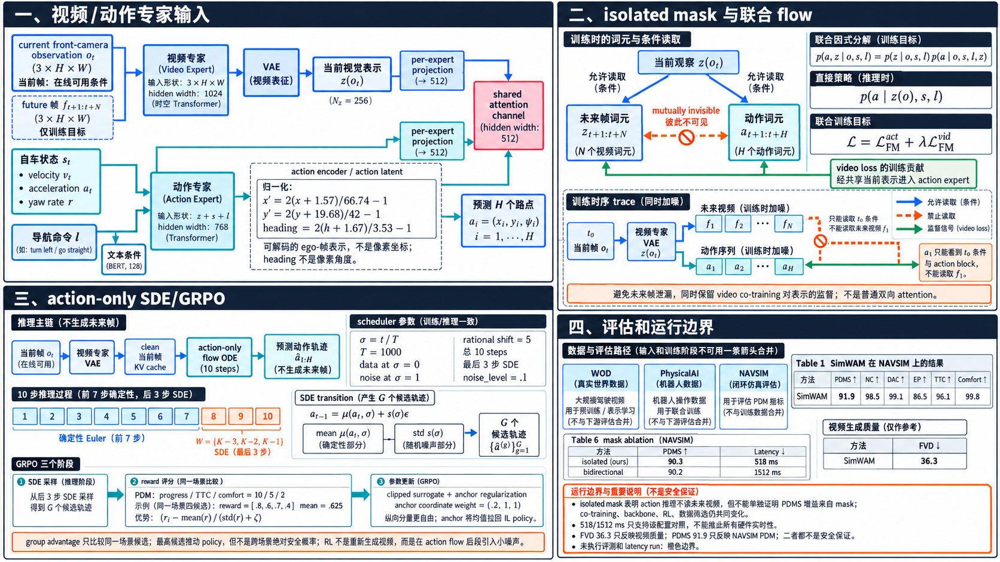
全部细节
图像 ID：F-simwam-mechanism；PNG、native receipt 和逐图中文说明由当前任务 accepted manifest 绑定。
图像身份：F-simwam-mechanism；审校时间：2026-10-31T17:57:30.914217+00:00；尺寸：1672×941；SHA-256：c8b0a52e976ecb76f68fb73a03f4b2a7fb52cc1c9a2c2550e6e40d3358d64cc8。原生回执（此附件保存在完整本地归档中）。
自动驾驶 · 核心论文
SimWAM 高密度科研图逐区逐箭头说明
一、视频/动作专家输入：同一场景的两类表示
箭头从当前 front-camera observation o_t 进入视频专家，经过 VAE 得到当前视觉表示 z(o_t)；自车状态 s_t 包含 velocity、acceleration、yaw rate，导航命令 l 进入文本条件。动作专家输入当前视觉表示、状态和命令，并在动作潜变量上预测 H 个路点。论文设每个路点 a_i=(x_i,y_i,ψ_i)，代码 NavSim absolute mode 的具体仿射归一化是 x'=2(x+1.57)/66.74−1、y'=2(y+19.68)/42−1、h'=2(h+1.67)/3.53−1。把这三个式子放在动作输入旁，说明坐标是可解码的 ego-帧表示，不是像素坐标。
两个专家的输入形状和隐藏维度 width 可以不同，但经过 per-expert 投影后用共同 attention channel 交互。当前帧是在线可用条件，未来帧只是训练目标。动作路点的归一化公式要画在动作编码器旁，避免把 heading 当像素角度。
视频专家和动作专家的输入可以有不同宽度，经过投影后在共同 attention channel 交互。当前帧是唯一在线视觉条件，未来帧是训练时的监督目标。归一化公式旁边可以写一条反归一化箭头，说明输出路点如何恢复坐标。
二、隔离掩码与联合 flow：未来视频监督如何不泄漏
训练区先画未来帧词元 z_{t+1:t+N} 和动作词元s a_{t+1:t+H}，二者都用箭头指向当前观察 z(o_t)，但在两个词元集之间画橙色禁止符号，表示 mutually invisible。论文分布式写法是 p(a,z|o,s,l)=p(z|o,s,l)p(a|o,s,l,z)，SimWAM 目标是 p(a|z(o),s,l)，因此动作推理不需要未来帧。联合目标写 L=L_FM^act+λL_FM^vid；视频损失的训练贡献仍通过共享当前表示进入动作专家。给一个时序 trace：t0 当前帧被编码，未来视频 f1…fN 和动作 a1…aH 在训练同时加噪；a1 只能看到 t0 条件与动作 block，不能读 f1；图中用箭头和断开边同时表达允许/禁止关系。
隔离掩码同时表达允许和禁止边：未来/视频与动作都能读当前观察，彼此不能读。这样既避免未来帧泄漏，又保留视频 co-训练对表示的监督。图中禁止边不可省略，否则会误解为普通双向 attention。
隔离掩码要同时画允许边和禁止边：两个未来分支都看当前观察，动作看不到未来视频，视频也不能反向改变动作词元。这个结构让视频监督进入共享 representation，同时阻止推理时偷看未来。
三、仅生成动作 SDE/GRPO：推理从生成画面切换到轨迹随机性
推理箭头从干净当前帧的 KV 缓存直接进入仅生成动作 flow ODE，不生成未来帧。RL 在最后三步 W={K−3,K−2,K−1} 开启 SDE，其他步骤保持确定性 Euler；代码默认 T=1000、sigma=t/T、data at σ=0、噪声 at σ=1、rational shift=5、总10步、noise_level=.1。SDE transition 的 mean 与 std 产生 G 个候选轨迹，组内奖励归一成 (r_i−mean(r))/(std(r)+ζ)，再经 clipped surrogate 和锚点 regularization。PDM 奖励的代码默认 progress/TTC/comfort 权重为10/5/2，锚点 coordinate weight=(.2,1,1)，说明纵向分量更自由。示例：同一场景四个候选奖励=[.8,.6,.7,.4]，均值=.625；优势按组内标准差归一，最高候选推动策略，但它不是跨场景绝对安全概率。
RL 不是重新生成视频，而是在动作 flow 的后段引入小噪声。最后三步的随机转移提供候选，group 优势只比较同一场景候选，锚点把均值拉回 IL 策略。图中要分开 SDE 采样、奖励评分和参数更新。
后段 SDE 不是对视频加噪，而是对动作 flow 的最后几次转移加噪。候选轨迹先被奖励评分，再用组内优势更新动作专家；锚点约束均值不要偏离模仿策略。图中要把采样、评分和更新三个箭头分开。
四、评估和运行边界：隔离的是推理成本，不是所有因果问题
NAVSIM 箭头写 SimWAM PDMS=91.9、NC/DAC/EP/TTC/Comfort=98.5/99.1/86.5/96.1/99.8；表 6 掩码消融写 isolated=90.3 PDMS/518 ms、双向=90.2/1512 ms；视频质量另写 FVD=36.3。隔离掩码表明动作推理不读未来视频，但不能单独证明 PDMS 增益来自掩码；co-训练、主干、RL、数据筛选仍共同变化。WOD、PhysicalAI、NAVSIM 的输入和训练阶段不能用一条箭头合并；未执行评测和延迟 run 用橙色边界。
掩码消融的 518/1512 ms 只支持一个配置对照，不能推出所有硬件上的实时性。FVD 36.3 只反映视频质量，PDMS 91.9 只反映 NAVSIM PDM；共同训练、RL 和数据规模仍是混合因素。
主表、FVD 和掩码延迟代表三个不同读出。掩码消融只说明某个配置的速度和分数，不能消除 co-训练、RL 和数据差异。跨 WOD、PhysicalAI 与 NAVSIM 的协议也应在边界框内分别标记。
逐箭头审计补记：
逐箭头审计补记：当前帧经过视频专家后分别供 future-video 词元和动作专家使用；隔离掩码允许两者看当前，但把 future-video 到动作的边和动作到 future-video 的边同时截断；联合 flow 监督只发生在训练支路；推理箭头从干净当前 KV 直接进入动作 flow，不经过视频解码器；SDE 箭头只连接动作潜变量的最后三步，奖励箭头连接同一场景的多个候选，锚点箭头回到模仿 mean。这样可避免把训练视频分支误画成推理时必需。
补充运行说明：训练时视频专家让表示学习交通运动，动作专家学习轨迹；推理时只保留动作专家，省去未来帧解码。RL 阶段的随机性只存在于动作流后段，候选之间必须在同一场景比较。若把 FVD、PDM 或延迟画在同一个终点，读者会误解指标含义，所以三个终点分别标注数据集、输入和评估阶段。
具体例子的边界是：同一场景下候选轨迹的相对好坏可以改变更新方向，但组内高分不代表跨场景风险更低。若奖励缓存缺失或 scorer 异常，代码可能返回零分；这种实现处理必须与真实坏动作分开分析，图中不把零分画成碰撞。
0. 论文身份、版本与阅读范围
论文：SimWAM: A Simple World Action Model for End-to-End Autonomous Driving。作者为 Zongchuang Zhao、Xin Zhou、Tianyang Xu、Zhengyang Sun、Kaixuan Zhou、Yu Wu、Honglin Li、Dingkang Liang 和 Xiang Bai。PDF 首页显示版本为 arXiv:2608.07468v5，日期 2026-09-29，共 19 页。本文使用任务固定的 paper.pdf、paper.html、paper_tex_flat.tex 和 tex_source，没有用代码事实替代论文事实。完整 PDF 每页均通过 PyMuPDF 提取并渲染为 PNG；第 4 页方法总览、第 6–9 页主实验和消融、第 15–19 页附录与定性结果做了逐页视觉核对。
本文是一个 paper-only 学习报告。代码路径、类名和代码配置留在 paper_questions_for_code.md 供后续根线程映射；本报告中的“论文明确声称”“基于论文的解释”和“论文未报告”严格分开。
1. 一句话定位与第一遍 5C
一句话定位：SimWAM 试图证明，World-Action Model 中最昂贵的未来视频生成可以只在训练时作为监督信号使用；只要用一个隔离注意力结构把动作分支与未来帧隔开，测试时就能直接规划轨迹，并进一步用带有随机转移的 flow-based GRPO 优化驾驶奖励。
| 维度 | 精读判断 |
|---|---|
| Category | 方法型、系统型自动驾驶论文，附带 RL 训练和跨数据集实验。 |
| Context | 既有 WAM 把视频预测和轨迹规划共同训练，却在推理时继续“先想象未来、再行动”，导致延迟。 |
| Correctness | 核心分解在概率形式、流匹配目标、掩码方向和消融实验之间是自洽的；但“表示获得交通动力学先验”的因果解释仍主要由 probing 和消融间接支持。 |
| Contributions | 隔离注意力的训练/推理解耦；视频专家和动作专家的共享注意力接口；把确定性 flow ODE 改为可计算 log-prob 的 SDE 并用 GRPO 优化驾驶奖励；多数据集、视频专家和动作模型规模实验。 |
| Clarity | 主方法清楚，附录给出数据规模、指标公式、训练和 RL 超参；仍有若干实现级细节没有在论文中展开，例如共享注意力具体张量拼接、掩码的完整矩阵和采样器实现。 |
2. 问题：为什么未来视频会成为规划瓶颈
论文把端到端驾驶的基本输入写成前视摄像头观测 、包含速度/加速度/横摆率的自车状态 ，以及导航命令 。目标是输出未来 个自车路点，每个路点为 ，在自车坐标系表达（第 4 页）。
作者认为普通端到端规划器虽然把感知、预测和规划合在一个网络里，却把交通语义、用户意图和场景动力学隐式埋在黑箱映射中。VLA 通过视觉语言预训练增强语义理解，部分 WAM 则把未来场景生成作为显式世界模型。但既有驾驶 WAM 的关键问题是 imagine-then-act：动作分支依赖未来潜变量或生成帧，这使推理时间同时承担轨迹采样和高维视频去噪。
论文用两个概率分解表达这个瓶颈。既有范式写成
其中动作明确依赖未来帧潜变量。SimWAM 的目标改成
动作只依赖当前观测表征、状态和命令。这里最关键的不是删掉视频专家，而是让未来视频监督塑造 ，然后在动作推理时跳过未来视频生成。
直觉例子：车辆当前看到一个行人刚走向斑马线。传统 imagine-then-act 先生成几帧行人未来位置，动作规划器再依据生成结果减速；SimWAM 希望训练期间让视频专家学会这种演化规律，但部署时只读取当前帧中已经包含的动力学表征，直接输出减速轨迹。
论文边界：论文展示了表征 probing、掩码消融和性能结果，能够支持“当前帧表征包含更有用的运动信息”这一方向性解释；它没有给出可证明的因果分解，不能仅凭 Eq. (4) 证明所有视频先验都实际传到了动作专家。
3. 前置知识与符号
3A. 语义与公式复核补记（2026-10-28）
源文PDF pp.4–5、15–19明确隔离掩码：动作词元不能访问future-frame 词元；训练共同优化视频/动作 DiT，而推理与RL直接预测轨迹，不显式生成未来视频。它与Metis的非对称掩码不同，后者允许视频读取动作，不能用其中一篇作为另一篇掩码证据。
Flow matching保持论文的data→噪声约定：，目标速度，推理从积分回。RL的SDE、GRPO、LoRA和奖励权重是单独训练阶段，不是证明世界模型本身具有安全规划。附录B.3的、IL/RL GPU/batch、最后3/10 步等须按来源保留，不能由数学渲染通过自动升级为语义验收通过。
- ：流匹配中的干净目标，可以是未来视频潜变量或未来轨迹。
- ：高斯噪声。
- ：从数据端 到噪声端 的 flow 时间。
- ：直线插值的带噪状态。
- ：条件 下预测的 flow velocity。
- ：当前相机观测、自车状态、导航命令。
- ：视频专家对当前观测生成的表征。
- ：未来 个帧的潜变量序列。
- ：未来 个路点轨迹。
- ：动作 flow 采样的总去噪步数；：每个场景采样的候选轨迹数。
- (eta)：SDE 噪声强度；(delta)：PPO 风格 ratio clipping 范围；(zeta)：组内优势标准差的稳定项；：锚点损失权重。
- ：锚点损失的坐标权重，让纵向坐标更能偏离模仿学习策略。
这个符号表的依赖关系是：先定义 flow，再说明 ODE 为什么没有 transition density，随后把 ODE 改为 SDE，最后把 SDE 的每一步 Gaussian transition 用于 GRPO。
4. Flow matching：两个专家共享一个训练语言
4.1 直觉
Rectified flow 把真实数据 和噪声 用直线连接。模型不直接预测最终 ，而是学习在任意噪声时间点应该朝哪个方向移动。对于视频， 是未来视频潜变量；对于动作， 是路点序列。两者可以使用同一套 flow interface，却保留不同的专家结构。
4.2 公式
论文 Eq. (1) 为
目标速度是 ，即从数据点指向噪声点的方向；采样时从 反向积分到 ，所以采样器实际上沿相反方向把噪声搬回数据。
小例子：若一维 ，则 ，训练目标速度为 (3)。如果模型在 3.5 处预测 3，反向积分就能逐步回到 2；若预测 1，轨迹会偏离真实 data/噪声直线。
4.3 限制
Eq. (1) 只说明每个专家的局部速度目标，没有在论文中展开视频潜变量的空间/时间维度、轨迹坐标归一化方式、不同时间步的损失权重或两个专家在共享 attention 中的词元拼接。因此它给出了学习目标，但没有单独构成完整可复现规范。
5. ODE 到 SDE：为什么 RL 需要随机转移
5.1 ODE 的问题
概率流 ODE 对一个噪声随机种子给出一个确定样本。确定性更新没有方便的 transition density，因此无法直接对每一步动作转移计算 log-likelihood；没有 log-prob，就不能自然使用 policy-gradient/importance-ratio 形式的 GRPO。
5.2 SDE 形式
论文 Eq. (2) 将 ODE 改成同边缘分布的 SDE：
Euler–Maruyama 离散后，每一步是 Gaussian transition：
这样模型既保留原 ODE 的边缘分布，又有可用于 importance ratio 的 log-likelihood。
直觉例子：ODE 像沿一条固定山路下山；SDE 像仍然保持总体下山分布，但每个后段路口允许小范围随机偏移。多个候选轨迹可以在相同场景下探索不同让行/超车选择，再用驾驶奖励区分它们。
关键假设：SDE 的离散 transition 确实与论文使用的 flow schedule、时间方向和噪声标度一致。论文给出连续形式和最后三步的简化采样式，但没有完整写出实现中的每个 schedule 索引、截断和数值稳定处理。
6. 模型结构：两个 DiT、一个共享注意力接口
6.1 Video 专家
Video 专家从 Wan2.2-5B 初始化，并使用对应视频 VAE 和 T5 text 编码器。当前帧是干净条件，未来 帧被加噪并通过流匹配重建。命令 先进入 T5，再由交叉注意力注入视频 DiT。视频目标的作用是迫使当前观测表征预测交通如何演化。
6.2 Action 专家
Action 专家是隐藏维度 size 的轻量 Diffusion Transformer。它接收 ，其中自车状态由小 MLP 嵌入，预测轨迹的 velocity field 。沿 ODE 从高斯噪声积分到数据端得到规划轨迹。
6.3 Isolated attention
图 2 是论文最关键的视觉证据：上方视频 DiT 处理当前/未来帧词元，下方动作 DiT 处理带噪动作；中间共享 QKV 和 isolated attention。图中训练阶段保留未来帧与动作的共同注意力接口，推理/RL 阶段右侧用虚线框标出“Removed at Inference & RL”的未来帧分支。
论文文字明确规定：未来帧词元和动作词元都可以 attend 当前观测 ，但二者彼此不可见。由此，动作分支在推理中只需要当前视觉表征、自车状态和导航命令。图中右下角 表示 RL 候选轨迹的奖励评估。
纸面上的信息流：当前帧 → 视频/动作 shared representation；未来帧只作为训练目标；动作轨迹在训练和部署均不读取 future-frame 词元。这种结构把“训练时共享监督”与“推理时依赖关系”分离开。
6.4 联合目标
论文 Eq. (5)：
平衡动作与视频流匹配。论文没有给出一套统一的 数字，但附录 B.3 报告三个数据集均使用 。这是一项容易被正文漏读的训练默认值。
边界：作者把效果解释为“future-video supervision shapes the observation representation”。Eq. (5) 确认两个损失同时优化，掩码确认动作不读未来词元；但仅靠这两点仍不能证明梯度只通过当前表征传递，因为共享 attention 的具体参数路径未在论文中展开。
7. RL：只在动作专家上做后段随机探索
7.1 采样窗口
论文不让整个 flow chain 都随机，而是在 步中只打开最后三步
对应 Eq. (6)：
早期步骤保留确定性流更新，晚期步骤对最终轨迹施加噪声。作者的经验解释是：早期扰动会被之后的确定性步骤削弱，后期噪声更直接改变最终轨迹，因而产生更有区分度的奖励。
7.2 组内优势
每个场景采样 条候选轨迹，得到 。组内相对优势为
它消除了不同场景奖励绝对尺度差异，重点比较同一场景下候选动作的相对优劣。
7.3 Clipped surrogate 和锚点
Eq. (7) 使用当前/old transition probability ratio 的 clipped surrogate，并附加 。锚点项把当前 SDE mean 拉回冻结模仿学习策略在相同状态上的 mean：
其中 ，纵向坐标权重较低，横向和 heading 约束更强。论文附录给出 、、、。
直觉例子：IL 策略在路口只敢前进很短距离。8 个候选中，后段噪声产生不同前进幅度；PDM 奖励认为更积极但仍安全的候选更好。锚点防止所有动作坐标同时远离 IL 策略，低纵向权重则允许沿车道前进更自由。
论文证据：Tab. 15 去掉锚点后 PDMS 从模仿学习基线附近的 90.3 降至 84.3，支持锚点是稳定训练的必要条件。把它解释为“保证不崩溃”是合理推断；论文没有证明这是唯一稳定机制。
8. Flexibility：替换视频主干与独立缩放动作专家
作者强调两个专家只通过 attention 特征流交换信息，所以可以替换视频主干，或独立改变动作专家宽度，而不重写轨迹目标。
8.1 Video 主干消融
Tab. 7：IL PDMS 分别为 LTX-Video 88.7、Wan2.1-1.3B 90.2、Cosmos2.5 90.4、Wan2.2-5B 90.3；RL 后分别为 90.9、91.8、92.4、91.9。说明“接口保持不变”与“先验质量相同”是两回事：Cosmos2.5 的 driving-video prior 带来更高奖励，轻量 LTX-Video 明显较弱。
8.2 Action 专家 scaling
Tab. 8 把动作专家从 0.21B 扩大到 0.45B 和 1.02B，IL PDMS 从 89.9、90.1 到 90.3，FLOPs 从 27.3G、55.3G 到 112.8G。收益存在但边际递减，说明动作分支 capacity 与部署预算是可调 trade-off。
9. 实验设计：每个实验到底验证什么
9.1 主结果
- NAVSIM navtest（Tab. 1）：单前视相机，SimWAM 91.9 PDMS，NC 98.5、DAC 99.1、EP 86.5、TTC 96.1、Comfort 99.8。作者将其与 VLM planner 和 imagine-then-act WAM 比，结论是无需未来视频也达到最高 world-model planner 结果。这个结论依赖不同方法的传感器、训练数据、评估协议可比。
- FVD（Tab. 2）：4 s、2 Hz 未来视频，SimWAM 36.3，优于 DriveDreamer-Policy 53.6、ForgeDrive 69.2、PWM 86.0 等。它证明视频分支没有因为动作解耦而失去生成质量，但 FVD 只度量视频分布相似性，不证明每个生成帧对动作决策必要。
- WOD-E2E（Tab. 3）：验证集 IL 7.99 RFS、RL 8.29；测试集 IL 7.77、RL 7.84，ADE@3s/@5s 也略改善。论文特别指出 RL 在 validation 上训练，test 上仍泛化，属于奖励优化的跨划分检验。
- PhysicalAI-AV（Tab. 4）：仅 IL，1,000-clip test subset，ADE/FDE@3s 为 0.40/1.08，@4s 为 0.69/1.96。训练使用 65K 样本，说明在有限样本下未来视频监督可能改善轨迹预测；不能从该表推断 RL 对该数据集有效，因为该数据集没有 RL。
- nuScenes zero-shot（Tab. 5）：NAVSIM 训练模型不微调、不用 nuScenes supervision 或 auxiliary annotation，平均 L2 0.96 m、collision rate 0.05%。这个表支持跨域表示迁移，但仅是开环评测基准，不等价闭环泛化。
9.2 Mask 消融
Tab. 6 对比双向、动作→视频和 isolated。前两者 PDMS 90.2/90.1、延迟 1512/1499 ms；isolated PDMS 90.3、延迟 518 ms。它是论文“动作不需要未来 synthesis”的最直接控制：性能近似，延迟约降至三分之一。仍需注意，掩码改变同时改变了信息依赖和计算量，不能把全部收益归因于表示质量。
9.3 Co-training signal 消融
Tab. 9 四个 ID：无视频/动作训练 86.5；视频专家训练但无 future-video supervision 88.4；加入 future-video supervision 90.3；再加 RL 91.9。这个阶梯支持作者的因果叙事：动作损失先带来收益，future-video 损失再带来额外收益，RL 最后改善奖励。但不同 ID 可能还涉及参数初始化/训练阶段差异；论文没有给出完全相同优化步数和随机种子控制的细节。
9.4 表征 probing
图 3 在 current-frame features 上训练两个 probe：Probe A 从 ROI pooled feature 预测 other-vehicle motion，Probe B 从 global pooled feature 预测 ego 轨迹。ID3（共同训练）ADE 低于 ID1/ID2，说明当前帧 feature 对运动/规划更有用。这个证据把“先验”从性能表拉到表示层，但 probe 是后验线性/MLP 测试，不能证明动作策略内部只使用这些 probe 可见因素。
9.5 SDE 放置
图 4 比较 SDE[0,1]、SDE[0,1,7,8,9]、SDE[7,8,9]。只在前两步加噪降至 89.3；最后三步达到 91.9；前后混合为 91.6。实验支持“后段噪声更有奖励区分度”的经验规则，而不是一般性理论。
9.6 Future-video 时间跨度/density
附录 Tab. 12：4 帧/2 s/2 Hz 得 89.9；4 帧/4 s/1 Hz 得 90.2；8 帧/4 s/2 Hz 得 90.3。作者据此认为时间覆盖比帧密度重要，完整 4 s 时间跨度最有效。这个实验把“更多视频监督”分解为时间跨度与 density，是非常关键的控制。
9.7 Resolution 与步
Tab. 13：192×352 得 88.9/509 ms，384×672 得 90.3/518 ms，768×1344 得 90.6/573 ms；中等分辨率是性价比折中。Tab. 14：1 step 68.9/115 ms，5 步 90.1/297 ms，10 步 90.3/518 ms，20 步 90.2/968 ms。10 步后饱和，说明动作 flow 采样器的计算预算可以明确量化。
9.8 RL scheme 与数据选择
Tab. 15：没有锚点为 84.3；使用锚点且 为 91.6， 为 91.8， 为 91.9。图 6 显示模仿学习 PDMS<90 的 hard subset 一致优于完整 navtrain，20k 步达 91.9。作者解释 hard subset 的候选奖励差异更明显，提供更有信息量的优势。
10. 附录与指标：论文容易被忽略的事实
附录 B.1：NAVSIM navtrain 85,109 样本、navtest 12,146；WOD-E2E 过滤未来帧不完整样本后 333,537；PhysicalAI-AV 共约 1,700 小时、306,152 个 20 s clips，train/val/test 为 153,625/90,928/61,599，实际 IL 使用 65K 训练样本和 1,000-clip test subset。
NAVSIM PDMS 公式（Eq. 8）：
NAVSIM-v2 EPDMS（Eq. 9）加入 DDC、TLC、LK、HC、EC，并以 (16) 为归一化分母。WOD-E2E RFS（Eq. 10）基于三个人类参考轨迹的 speed-scaled trust-region 距离，先计算每个时间跨度的最大参考分数，再做场景级规则和 cluster averaging。这个定义说明 RFS 不是普通 ADE 的替代品。
附录 B.3 给出训练细节：IL 使用 AdamW、cosine LR、初始 、；RL 使用 rank-16 LoRA、、attention projections、、、最后 3/10 步、、、。IL 用 48 A100、总 batch 192；RL 用单 A100。NAVSIM RL 只在模仿学习 PDMS<90 的 navtrain scenes 上训练 20,000 步，评估全 navtest；WOD-E2E RL 在 validation 上训练 10 epochs。
附录 C 的 NAVSIM-v2 结果：navtest 90.2 EPDMS；navhard 总体 37.6，S1 71.6、S2 69.9。这个结果将论文从 NAVSIM-v1 的 91.9 PDMS 扩展到有 reactive second stage 的安全场景，但也揭示 absolute EPDMS 与 PDMS 不能直接比较。
11. 论文内具体计算 walkthrough
设一个场景的 条候选奖励为 ，均值 ，标准差约 (0.148)，(zeta) 很小，则优势约为 ([1.18,-0.17,0.51,-1.52])。如果某候选在最后三步的当前/old transition ratio 为 1.04，且 ，clipping 会把 ratio 截断到 1.005，限制高奖励候选对策略的单次更新幅度。随后锚点损失还会惩罚 SDE mean 与冻结 IL mean 的偏离，且纵向偏离只乘 0.2。
这个例子说明 GRPO 的更新信号来自“同一场景内候选的相对好坏”，不是跨场景奖励的绝对值。它也解释为什么 hard subset 更有用：如果四个候选奖励几乎相同， 小且优势信息弱；若候选质量分化明显，策略梯度更有方向。
12. 论文未明确说明、需要后续代码映射的问题
以下问题由论文正文、图、表和附录共同产生，具体问题 ID 见 paper_questions_for_code.md：
- Mask 的完整矩阵：论文给出语义方向，但没有说明词元的具体排列、是否有因果 temporal 掩码、填充、交叉注意力掩码或不同 batch/块的实现。
- Flow 的维度与归一化： 的坐标是否标准化、heading 的单位、视频潜变量的通道/时空形状和动作/视频损失是否同尺度没有在正文展开。
- SDE 时间方向：公式使用 ，但没有完整列出采样 schedule、ODE/SDE 混合步的实现、最后一步是否排除以及 log-prob 的 reduction。
- Reward 组成：论文称 compositional 自动驾驶奖励，却没有在主文完整展开 progress、TTC、comfort 的具体代码式权重和失败场景处理；附录仅给奖励超参。
- RL 参数更新边界：论文说只更新动作专家 LoRA，但没有给出目标 projections 的精确命名、视频专家是否完全冻结的验证性细节。
- Video 主干 interface：论文宣称替换不同主干无需 redesign 动作专家，但没有展示不同主干的隐藏维度 width、输出头维度、层数如何映射到共享 attention。
- 主表公平性：Tab. 1/2 汇集不同年份、传感器与训练设定的系统；论文没有逐项验证基线是否使用相同数据、采样步数、硬件和未来视频预算。
- Probing 因果性：ID1/2/3 的参数冻结、训练步数和 probe 优化设置不足以排除 probe capacity 或初始化差异。
- Qualitative examples：图 5、7、8 只提供精选场景，没有失败案例分布，不能单独支持“可靠”和“泛化”。
- NAVSIM-v2 连接：附录给出 EPDMS/navhard，但正文主要分析 PDMS；两个评测基准的训练/评估分支和 RL 是否完全相同，需要配置级核查。
13. Reviewer / defense lens
Novelty
论文的强项不是提出全新的 flow 或 GRPO，而是把“未来视频监督”和“未来视频推理”分开，并用非常直接的隔离掩码证明推理不必生成未来视频。真正的 novelty 单元是 dependency structure + 训练 signal + RL sampling window 的组合。
Technical soundness
Flow matching、SDE transition、group-relative 优势、锚点 regularization 在形式上连贯；掩码消融和 SDE placement 直接支持关键设计。需要防守的问题是：共同训练下视频损失如何具体改变动作 representation，是否存在共享参数或梯度路径的隐性耦合；论文用 probing 支持但未形式化证明。
Experimental rigor
优点是覆盖 NAVSIM/WOD-E2E/PhysicalAI-AV/nuScenes，包含主结果、掩码、主干、动作 scale、共同训练、SDE、时间跨度、resolution、步、RL 锚点和 hard subset。缺口是大量基线指标来自不同来源；统一计算的方差、多个随机种子、完整失败率和训练成本没有给出。RL 消融的强烈 collapse（去锚点为 84.3）很有说服力，但需要更多随机种子才能判断稳定性。
Limitation honesty
作者把 SimWAM 定位为 plain 基线，承认不追求 architectural innovation，也没有 language reasoning 或测试阶段未来 synthesis。这种范围控制较诚实。论文没有充分讨论视频 quality 与动作 quality 可能不一致、不同主干的预训练数据泄漏、以及开环指标对闭环 safety 的局限。
最脆弱假设
最关键假设是：只要未来视频和动作在训练时共享当前观测表征，future-video 损失就会把足够有用的交通动力学先验压缩进当前帧 representation，同时不需要动作读取未来词元。 如果视频损失学到的是与当前帧规划无关的外观/视频生成细节，或动作分支无法利用共享表征，那么隔离掩码只会带来更低延迟，却不会带来 paper 声称的规划 gain。Tab. 9 的 86.5→88.4→90.3 阶梯和 Fig. 3 probing 是支持证据，但尚不足以证明该先验在分布外场景中稳定存在。
14. 最小复现实验与最强反例
最小复现
用 NAVSIM 的一个小子集固定单前视输入，训练三个相同视频/动作配置：无视频专家、视频专家但无 future-video 损失、完整 joint flow。固定 8 路点/4 s、相同 10-step 动作采样器，比较 PDMS、动作延迟、current-frame feature 的 vehicle-motion probe ADE。若 joint flow 在同等动作 supervision 下无法稳定改善 feature probe 和 PDMS，便削弱“未来视频 supervision transfers 动力学 prior”的核心 claim。
最强反例
构造一个未来演化高度多模态、但当前帧几乎无法区分的场景，例如遮挡后的行人突然从左右两侧出现，或两条路线在当前图像中完全相同但由隐藏交通信号决定。若 isolated 动作分支在没有未来词元的情况下必须从当前表征做不可辨识选择，那么“training-only 世界建模足以替代测试阶段未来 synthesis”的优势会退化为普通模仿学习 prior。应比较 isolated、future-conditioned 和 oracle 未来三种策略的 regret/安全指标，而不能只看平均 PDMS。
15. 教学故事
把视频专家想成一个会预判交通的老师，把动作专家想成真正握方向盘的学生。训练时老师让学生同时看当前画面、学习未来车辆怎样移动，但规定学生不能偷看未来答案。学生因此把“未来会怎样”压进当前画面的表示中。上路时学生只看当前画面、车况和导航命令，直接画出轨迹，不再花时间生成未来视频。最后，RL 在轨迹生成的最后几步加入小幅随机探索，让学生在同一个路口试几种前进策略，用驾驶奖励选出更安全又更积极的一条，同时用锚点把它拴在原来的模仿学习策略附近。
16. 结论
论文最可信的结论是一个工程和建模判断：WAM 的未来视频分支可以作为训练监督，而不必成为动作推理的输入。SimWAM 通过 isolated attention 把这个判断写进 dependency graph，再用流匹配、后段 SDE 和奖励 optimization 把轨迹生成串起来。主实验与消融支持其在多个开环评测基准上有效，尤其是 518 ms 的 isolated 延迟、91.9 NAVSIM PDMS、91.9 的锚点 RL 结果和 90.3→91.9 的共同训练/RL 阶梯。仍应把“动力学先验被可靠地蒸馏进当前表征”视为有证据支持但没有形式证明的机制解释；实际复现还必须核对掩码、潜变量/动作 shapes、奖励 aggregation、LoRA 目标和 active 任务 configs。
13. wote
原文图表证据（v3 精确裁切）
原文图表卡片：图 2（PDF p.4）
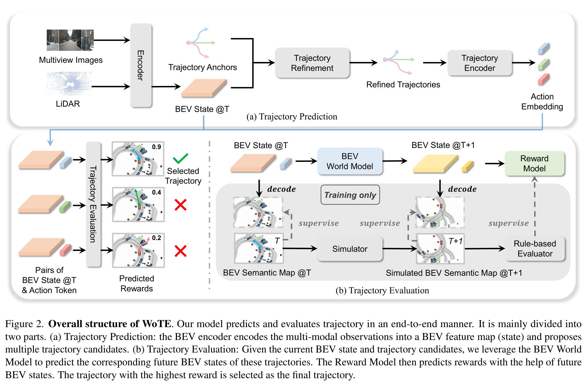
全部细节
这是论文原文图表或页图；具体版本、页码和裁剪信息见邻近中文说明。
- 论文版本：
2504.01941v2；PDF SHA-256：04569f633b3ca9cff25f66b59be09a2838a9297a94a180a26bb252835b9dbeae；page SHA-256：a34f9d7268e46b47b0fb44d6ff58349e85d73a2aa18cfebaa5e0df15116d1ca0。 - crop bbox（pt）：
[54, 65, 558, 397]；尺寸：[2100, 1383]；crop SHA-256：9faf629bfa2908573f98a93da76d470fad2553af22e038700261fb8ff4c6a384。 - 图表说明：Fig.2 的上半部分以 BEV 编码器、轨迹锚点、refinement 生成多候选动作；下半部分逐候选递归预测 BEV 状态，再用奖励 model 评分并选择最高者。训练时的 BEV 语义解码器和 rule-based 奖励 evaluator 被虚线标出。
图表说明： 图 2 将 WoTE 分成“候选预测”和“候选评价”两部分。BEV 编码器把多模态观察压成 8×8、共 64 个宽度 256 的 BEV 词元，并结合 ego/动作词元与轨迹锚点生成多条候选；每条候选的输入是 65×256 序列。下半部分把当前 BEV 状态与每条候选送入同一个 BEV World Model，递归预测对应的未来 ego/BEV states，再由模仿学习输出头与五个仿真评分头（NC、DAC、EP、TTC、comfort）组成奖励 score，最后用 argmax 选择最高分轨迹。训练时的 BEV 语义解码器与 rule-based 奖励 evaluator 用虚线表示，它们提供监督而不是推理时的在线规则执行。该图说明世界模型是候选评价器，不是唯一的轨迹生成器，也不等于 model-based RL；递归预测不自动保证真实车辆物理或闭环安全，论文奖励公式与实现中的正向 log/argmax 符号差异还需按原式单独保留。
- 进一步分析：这张图明确分离预测器和评价器：世界模型不是唯一轨迹生成源，而是为候选选择提供未来特征。与 ReSim 的视频+V2R、Drive-WM 的像素滚动执行+外部感知奖励相比，WoTE 使用更紧凑 BEV 状态来并行评价，效率与语义抽象的取舍因此不同。
- 证据边界：recurrent BEV prediction 不等于 model-based RL；图中的 rule-based 训练 targets 与推理奖励输出头也不能混为在线规则执行。BEV 预测正确仍不足以保证真实车辆物理和闭环安全，paper 奖励的正负号需另按原式保留。 当前 visual_status=
precise_crop_and_visual_checked；semantic_status=reviewed/pass；局部建议：保留候选 evaluator 语义。。历史状态semantic_pending仅对应早期裁剪回执，原文证据边界继续有效。
原文图表卡片：表 3（PDF p.7）
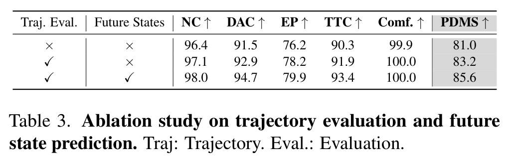
全部细节
这是论文原文图表或页图；具体版本、页码和裁剪信息见邻近中文说明。
- 论文版本：
2504.01941v2；PDF SHA-256：04569f633b3ca9cff25f66b59be09a2838a9297a94a180a26bb252835b9dbeae；page SHA-256：f07e998b9f59d9e91213c29b9f62d9cfd16940f9759f9d226694b9b084ef2415。 - crop bbox（pt）：
[54, 68, 299, 147]；尺寸：[1021, 329]；crop SHA-256：04b1b97a1c37427a29464fd49d17edfbc22828f91ee0b37e2bef8f932588fc2a。 - 图表说明：表 3 两个开关是轨迹评估和未来 states。基线无二者为 PDMS 81.0，只加评估为 83.2，再加未来 states 为 85.6；NC 为 96.4→97.1→98.0，DAC 91.5→92.9→94.7，EP 76.2→78.2→79.9。
- 进一步分析：候选评估先增加 2.2 PDMS 点，未来状态 prediction 再增加 2.4 点，支持两个模块互补，而不是只把收益归给更好的轨迹生成器。与 ReSim 表 3 的策略 ranking 一样，这说明“如何选候选”可独立于“如何生成候选”提升规划结果。
- 证据边界：表中只报告 NAVSIM 子分数，不是 Bench2Drive 消融；不能沿用同页正文把两协议混入此表说明。候选数、训练成本和奖励 calibration 没有在该表分离，仍不能推断在线 RL 或真实部署保证。 当前 visual_status=
precise_crop_and_visual_checked；semantic_status=reviewed/pass；局部建议：不要与 Bench2Drive 表 2 混合；补论文/代码双层标记。。历史状态semantic_pending仅对应早期裁剪回执，原文证据边界继续有效。
正文：05_analysis\full_reading\wote\paper_reading_report.md；14792 字符 / 4474 中文字符；SHA-256 d129f5b63d3df1337db381b283e1fa18f0537162d9ba5e2a2025189b5fdd928e。
来源覆盖：05_analysis\full_reading\wote\source_coverage.json；问题台账：05_analysis\full_reading\wote\paper_questions_for_code.md。
自动驾驶 · 核心论文
WoTE：完整论文精读报告（paper-only）
当前正式机制图与完整图解：F-wote-mechanism
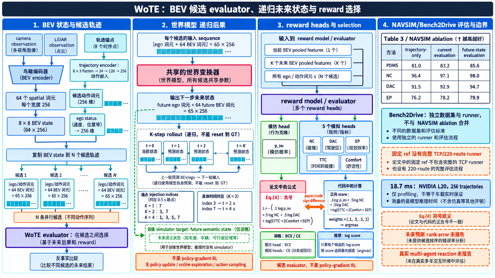
全部细节
图像 ID：F-wote-mechanism；PNG、native receipt 和逐图中文说明由当前任务 accepted manifest 绑定。
图像身份：F-wote-mechanism；审校时间：2026-11-01T01:01:40.955536+00:00；尺寸：1672×941；SHA-256：40cb54ca7176924961e07b3be3d47fed1f0cb2cab9cdb02d28c6e340c940dabe。原生回执（此附件保存在完整本地归档中）。
自动驾驶 · 核心论文
WoTE 高密度科研图逐区逐箭头说明
一、BEV 状态与候选轨迹：先提出多模态可能性
箭头从相机/LiDAR observation 进入鸟瞰编码器，得到 64 个 spatial 词元，每个宽度256，重排为8×8 BEV 状态。另一条青色箭头从轨迹锚点进入轨迹编码器：每个8×3轨迹 flatten 成24维，经过 24→128→256 MLP/Transformer，得到一个候选动作词元；ego 状态也映射到256维。BEV 状态被复制到 N 个候选，形成每候选 [一个 ego/动作词元+64 BEV 词元]=65×256 的输入。图中要画 N 条候选箭头分开，不要只画一条 GT 轨迹；WoTE 的 evaluator 正是在候选之间选择。
BEV 状态的64×256表示让世界模型小而紧凑；每条候选都复制当前 BEV 并注入独立动作词元。图中画 N 条并行候选，才能体现 evaluator 的反事实比较，而不是单一路径预测。
候选轨迹是 evaluator 的输入空间，每条候选都拥有自己的动作嵌入和自己的未来 BEV 特征流。图中把候选并排复制，而不是把它们求平均，才能表达多模态选择。
二、世界模型递归后果：未来状态消费动作，而非策略梯度
每条候选的65 词元 sequence 进入同一个世界变换器，输出一个未来 ego 词元与64个未来 BEV 词元；未来特征流沿实线箭头回到下一步，形成 K-step 滚动执行。代码可核对的 injection 路点是 K=1 时 index7，K=2 时 index3、7，K=4 时 index1、3、5、7，对应0.5 s 路点。用具体 trace：K=2 时，第一轮把第4个路点注入生成 t=2 s 状态，第二轮把第8个路点注入 t=4 s 状态；每个下一轮输入包含上一轮预测 BEV/ego，不能 reset 到 GT。图中将 simulator 训练目标画成绿色虚线输入，只在训练提供未来语义状态；推理时没有 simulator。
正向 K-step 滚动执行会把上一轮预测状态送入下一轮；K=2 的索引3、7和K=4的1、3、5、7是代码可核对的路点位置。推理不重新注入 GT，也没有 policy-gradient 更新。
递归世界模型不是重新采样一条策略，而是用同一 transition 对每个候选滚动 K 次。预测误差会进入下一步，且源码没有 GT reset；这个细节应在递归箭头旁标注。
三、奖励输出头与 selection：论文符号和代码方向必须并排
奖励模型读取当前和 K 个未来 BEV 的 pooled features，加上所有 ego/动作词元s，输出模仿 probability 和五个模拟输出头 m=5=(NC,DAC,EP,TTC,Comfort)。代码推理 score 是 +.1 log p_im +.5 log NC +.5 log DAC + log(5TTC+2Comfort+5EP)，weights=[.1,.5,.5,1]，随后 argmax；论文 Eq.(4) 印出负号，因此图中要画两条颜色不同的箭头并标“paper/代码 sign difference”，不能替作者修公式。训练 BCE/CE 与推理 log score 也分开。World model 是候选 evaluator，不是 policy-gradient RL；没有在线探索、策略 update 或动作 sampling arrow。
五个模拟输出头分别对应 NC、DAC、EP、TTC、comfort；模仿输出头是候选概率。论文 Eq.(4) 和代码实际正向 score 的符号差异必须可见，不能凭直觉把代码改写为论文公式。
奖励输出头把模仿接近度和规则合规拆开，再组合候选分数。代码正向 log score 与论文负号不能同时被画成同一个方向；橙色符号差异框是必要的可审计信息。
四、NAVSIM/Bench2Drive 评估与边界：未来评估增益不等于真实交互保证
表 3 画三行：trajectory-only PDMS=81.0、当前评估=83.2、未来状态评估=85.6；NC=96.4→97.1→98.0、DAC=91.5→92.9→94.7、EP=76.2→78.2→79.9。Bench2Drive 另画独立箭头，不与 NAVSIM 消融合并；固定 ref 没有完整 TCP/220-route 运行入口。表 6 的18.7 ms 是 NVIDIA L20、256 候选s，不能跨硬件做车载实时保证。论文 Eq.(4) 符号歧义、未来预测 rank error、真实 multi-agent reaction 未报告，均用橙色断开线。
NAVSIM 消融只验证未来状态 evaluator 的增益；Bench2Drive 是另一数据集和运行入口。L20 延迟只给硬件和候选数下的性能剖析，世界模型的 rank error 与真实多智能体反应仍未知。
NAVSIM 的未来状态消融与 Bench2Drive 的闭环结果回答不同问题。L20 时间只覆盖候选并行推理，不能涵盖预处理、CARLA 交互或 route 失败。
逐箭头审计补记：
逐箭头审计补记：鸟瞰编码器的箭头输出一个当前状态，候选编码器的箭头每条产生一个动作词元；状态和动作词元按候选复制进入世界模型，世界模型的未来 ego/BEV 箭头回到下一滚动执行 step；奖励模型的五个模拟输出头与模仿输出头分开，再进入 score aggregator；选择箭头只指向候选编号，不指向策略梯度更新；训练 simulator 的语义未来只用绿色虚线指向监督，不进入推理输入。NAVSIM 表 3 和 Bench2Drive 结果使用两组终点。
补充边界说明：世界模型的未来 BEV 是每条候选的后果预测，奖励模型使用它来排序；它没有在线采样新策略，也没有通过反向传播更新策略。训练 simulator 只提供语义未来和规则标签。固定代码能闭合 NAVSIM scorer，但不能替代缺失的 Bench2Drive TCP 运行入口。
具体教学例子可画三条候选：直行、左绕、右绕。每条候选产生独立未来 BEV，奖励输出头预测碰撞、可行域、进度和舒适性，最后选择分数最高者。若世界模型对三条候选都预测同样未来，排序就失去意义；论文没有单独量化这种失败，所以图中要把此项放在未知边界。
具体数值追踪：若递归步数为二，八个路点中的注入位置为第四个和第八个；第一轮预测的鸟瞰状态成为第二轮输入，第二轮才得到完整四秒后果。这个顺序说明未来状态既是模型输出，也是下一次推演的消费者。三条候选轨迹分别经过两次推演再比较得分，不能先平均轨迹再推演，也不能把模拟器真实未来状态注入预测支路。当前固定代码没有零步递归入口，所以论文当前状态消融不能靠修改一个参数就声称已复现。
正式图卡：WoTE BEV evaluator、递归未来状态与奖励选择
- 图解重点：每个候选输入为 64 个 BEV 词元 + ego/动作词元，共 65×256；共享 world transformer 递归预测未来 ego/BEV 状态，K-step 滚动执行不 reset 到 GT。
- 评价与选枝：模仿学习输出头与五个仿真评分头（NC、DAC、EP、TTC、comfort）组合 log score，候选以 argmax 选择；图中并列论文 Eq.(4) 负号与代码实际正 log/argmax 的 sign difference。
- 协议边界：NAVSIM 表 3 消融、Bench2Drive 独立运行入口、18.7ms 性能剖析、无完整 TCP/220-route 运行入口、未报告未来 rank error 和真实多 agent reaction，均不可外推为闭环安全或 policy-gradient RL。
- 来源与原生来源记录见 图详解（此附件保存在完整本地归档中） 与 回执（此附件保存在完整本地归档中）。
0. 论文身份与定位
论文 End-to-End Driving with Online Trajectory Evaluation via BEV World Model，arXiv:2504.01941v2，2025-04-09，11页。作者 Yingyan Li、Yuqi Wang、Yang Liu、Jiawei He、Lue Fan、Zhaoxiang Zhang。本文提出 WoTE：先预测多个轨迹候选，再用BEV 世界模型沿每个候选想象未来BEV状态，最后用奖励 model在线评价并选出最高奖励轨迹。与像素级未来视频生成相比，BEV 世界模型更紧凑、更快，并且可以由nuPlan/NAVSIM等BEV-space simulator提供密集未来监督。
完整PDF、HTML、TeX、Table1–7、Figure1–4、附录实验和指标公式已读取并渲染核对。报告只使用论文事实；源码问题写入独立台账。
1. 为什么要在线轨迹评价
传统端到端 planner通常只学一个高质量轨迹。现实驾驶是多模态的：直行、减速、绕障、换道都可能合理，因此最好先生成多个候选，再判断哪个安全。已有model-free 评估只看当前状态或与专家轨迹相似度，无法知道某条候选轨迹会把车辆带向什么未来。
WoTE的核心判断是：轨迹评价必须看到由该轨迹导致的未来状态。它借鉴model-based RL的世界模型思想，但不生成高维RGB视频，而在BEV语义/潜变量空间预测未来交通状态。BEV有两个优势：
- 空间压缩，单步feed-forward transformer即可预测未来，避免多步diffusion。
- BEV simulator可以同时给出未来语义 map和rule-based 奖励，解决现实数据只有一条真实未来、没有每个候选未来标签的问题。
图1左边是普通轨迹 prediction，右边是WoTE的多候选→世界模型→奖励→selection闭环。这个闭环是方法贡献的逻辑单元。
2. 符号和整体流程
- ：当前多模态传感器编码出的BEV 状态。
- ：K-Means得到的轨迹锚点集合，数量 。
- ：第 个锚点经BEV-conditioned refinement后的候选。
- ：候选轨迹的动作嵌入。
- ：沿候选 递归预测的未来BEV 状态和动作状态。
- ：模仿奖励，反映候选接近专家轨迹的程度。
- ：模拟奖励。
- ：用于排序的组合奖励。
整体流程是：
- 相机 + LiDAR → BEV 编码器 → 。
- K-Means 锚点 + BEV 交叉注意力 → 。
- 每个 输入BEV 世界模型，递归产生未来 步。
- Reward model汇总当前和未来BEV/动作 states，预测模仿学习/仿真奖励。
- 对 排序，选择最高奖励轨迹。
3. Trajectory predictor
3.1 BEV 编码器
WoTE沿用TransFuser式多模态编码，将LiDAR和多视角RGB压到统一BEV feature map 。论文不在主文给具体 ，但说世界模型通常取 ，所以每个状态只有64个BEV位置，适合实时处理。
3.2 Anchors和refinement
从训练集所有专家 trajectories做K-Means，得到 个锚点。Trajectory 编码器 (TE)是MLP，将每个锚点变成查询；BEV map同时作为键/价值做交叉注意力，再由MLP输出offset：
直觉：锚点提供常见驾驶模式，BEV feature告诉模型当前场景该模式需怎样修正。例如一个通用左转锚点在当前有行人时会偏移为更宽、更慢的轨迹。
边界：K-Means只覆盖训练集分布，罕见意图或极端障碍可能不在锚点 manifold。后续Table7测试unseen 1024 锚点，结果有所改善，但这不等于任意连续轨迹都可泛化。
4. BEV 世界模型：为什么可以监督多个未来
真实自动驾驶 log只有专家未来，若直接训练每个候选未来，只有一个候选有GT。WoTE绕开这个问题：先用BEV-space simulator把每个锚点放入当前场景，获得每条候选对应的语义未来和rule-based score。这样每个state-action pair都有未来监督。
4.1 输入
对第 条候选，复用 (TE) 得到 ，与 组成 。将BEV flatten成 (hw)个 -维 feature，再拼一个动作嵌入，形成
4.2 单步和递归
Transformer 编码器接收 ，输出 (hw+1) vectors，拆成未来BEV和未来动作：
重复K次：
所有候选并行处理，计算复杂度主要随 线性增长；因为 ，状态词元少。这里的世界模型预测的是feature 状态，不是未来RGB。
5. Reward model与公式
5.1 Reward types
模仿奖励 衡量候选是否像专家；仿真奖励包含NC、DAC、TTC、Comfort、EP五项。最终奖励是log-space组合：
负号使高quality（奖励接近1时log接近0）得到更高排序值；不同项乘权/加权，能够在碰撞、可行驶区域和舒适/进度之间平衡。
论文默认 。这组权重是关键工程默认，但论文没有对权重敏感性做完整扫描。
5.2 Future-state aggregation
Reward model不是只看 。它把当前和未来BEV拼成
把动作状态经MLP并拼成 。2D convolutions聚合不同空间和时间，global average pooling得到 ，再与动作特征拼成 ，由MLP输出 。
小例子：候选A当前看起来和B一样，但A在未来两步会进入可行驶区域外。只用当前状态时两者奖励近似，加入后A的DAC预测下降，因此A不会被选中。
6. BEV supervision：语义map与奖励如何得到
训练时，off-the-shelf BEV simulator沿每个锚点模拟未来scene，产生语义 map和NC/DAC/TTC/Comfort/EP scores。当前BEV 语义 map也作为监督，未来map在候选未来位置加入ego box。这样世界模型有dense 未来 supervision，奖励 model也有仿真 targets。
论文强调，这个设计解决“现实世界模型只有单一未来”的监督稀缺；但依赖simulator与真实世界一致。若simulator中的交通规则、agent response或地图误差与现实不同，奖励 model可能学习simulator bias。
7. NAVSIM和Bench2Drive实验
7.1 NAVSIM
NAVSIM由nuPlan/OpenScene下采样到2Hz，navtrain/val 1192 scenarios，navtest136 test scenarios。WoTE输入前视、front-left、front-right图像拼接为256×1024，以及64m×64m LiDAR。ResNet34作为BEV 主干，256 锚点，世界模型 two transformer 解码器 layers；8×L20、batch128、30 epochs、Adam lr1e-4。预计算锚点的simulator maps/scores，加快训练；测试时奖励 model输入refined trajectories。
Table1：WoTE 256 候选+model-based 评估，NC98.5、DAC96.8、EP81.9、TTC94.9、Comfort99.9、PDMS88.3。相比Hydra-MDP 86.5，说明未来状态评估比model-free 评估更有益。
7.2 Bench2Drive
CARLA 闭环 220 routes，每条约150m且含一个安全关键场景。Driving Score达到100%才算route success。WoTE success31.36、Driving Score61.71，优于TCP30.00/59.90、UniAD16.36/45.81。它把BEV 轨迹评估从开环 NAVSIM扩展到闭环 simulator，但仍不是现实道路部署证据。
8. Ablation逐项理解
Trajectory 评估与未来状态（Tab.3）
只预测轨迹：PDMS81.0；加入奖励 model但只用当前状态：83.2；再加入未来 BEV 世界模型：85.6。三步阶梯直接支持“未来 outcomes对于评估重要”。
Imitation vs 仿真 rewards（Tab.4）
只模仿学习奖励 PDMS83.5，NC/TTC较好；只仿真 reward83.6，DAC/EP较好；组合85.6，说明两类奖励互补。模型没有把“模仿human”当成“安全/规则合规”的充分替代。
Recurrent prediction step（Tab.5）
直接0→4s PDMS84.0；0→2→4s递归PDMS85.6。更细时间粒度提供更多状态变化，提升评估；同时递归误差可能累积，论文只测两种步长。
Number of trajectories（Tab.6）
64/128/256 trajectories：PDMS84.5/85.4/85.6，latency17.2/17.9/18.7ms（L20）。并行state-action pairs使候选数增加的成本很小，但收益递减，默认256合理。
Unseen trajectories（Tab.7）
训练256、测试1024 锚点不refine时PDMS85.3，训练/测试256不refine84.0，训练/测试256 refine85.6。world/奖励 module对未见轨迹有一定泛化，且refinement提高表现。这个结果支持轨迹 evaluator不只是memorize fixed 锚点，但1024仍来源于同分布K-Means/采样。
9. 图像/表格审计
- Fig.1清晰表达“多候选→imagined futures→奖励 selection”，但小图中0.9/0.3/0.1只是示意奖励。
- Fig.2把轨迹 prediction与轨迹评估分开，标出Training only simulator；它说明未来BEV supervision不在部署路径。
- Fig.3展示TransFuser 基线在碰撞/越界时失败，WoTE选择更安全轨迹；是qualitative selection evidence。
- Fig.4显示奖励 heatmap保留多模态安全轨迹、压低不合理轨迹；不能由颜色直接读取连续奖励精确值。
- Table1/2分别是NAVSIM 开环、Bench2Drive 闭环；两种指标不可直接比较。
- Table3–7完成未来状态、奖励组合、递归步、候选数量、unseen轨迹五个控制。
10. Reviewer lens与限制
Novelty是在线轨迹评估的BEV 世界模型，而不是另一个轨迹 predictor。技术强点是多候选未来有dense simulator supervision、BEV低延迟、奖励可端到端训练。主要假设是BEV feature 动力学足以预测影响奖励的未来，而不需要RGB细节；极端视觉/遮挡/交互可能违反。另一个风险是simulator 奖励 bias：训练和评测规则都来自NAVSIM/nuPlan/CARLA，真实world未必一致。
论文明确承认未来状态 supervision是关键、BEV比image高效；但没有报告world-model uncertainty、预测错误 calibration、奖励 rank 相关性或real-world intervention。Table7的unseen 轨迹泛化仍在同一锚点 family内，不能证明任意轨迹。
11. 最小复现、最强反例、教学故事
最小复现：固定TransFuser 主干和256候选，构造三组奖励 evaluator：current-only、future-BEV one-step、future-BEV recurrent。保持轨迹 predictor和损失一致，报告PDMS、每个submetric、奖励 rank 相关性与18ms 延迟。如果future-BEV提高PDMS但奖励与simulator score相关性不升，说明提升可能来自额外容量而非真实未来预测。
最强反例：生成两个当前BEV相同、但未来由隐藏/非反应式agent决定的场景，或让simulator与真实agent response相反。WoTE可能把高仿真奖励的轨迹选到真实世界危险区域。需要比较world-model uncertainty、ensemble disagreement和rule-based current-only 基线。
教学故事：普通策略只画一条路线；WoTE先画256条，再在脑中沿每条路线推进未来BEV，问“这条路会不会撞、出界、太慢”，最后选分数最高的一条。它用紧凑地图状态代替昂贵未来视频，让轨迹 selection真正考虑后果，但它的世界想象和奖励仍受BEV/simulator的偏差限制。
12. 监督损失的具体计算
WoTE的监督不是一个单一轨迹 L1。BEV 语义解码器对每个未来BEV 状态使用FocalLoss；仿真奖励对NC/DAC/TTC/Comfort/EP用BCE；模仿学习奖励先计算每个锚点到专家轨迹的L2，再对负距离做softmax，形成N维分布，用CrossEntropy训练；轨迹 refine只监督离专家最近的winner 锚点，用L1。总损失是四项相加。
这个组合解释了为什么model-based evaluator可能同时提高安全和进度：模仿学习奖励偏向人类轨迹，仿真奖励偏向规则合规；Table4中只模仿学习时NC/TTC更好，只仿真时DAC/EP更好，两者相加才能PDMS85.6。它也说明winner-take-all保留了多模态，每个锚点可以专门化而不被所有候选的平均轨迹拉平。
13. 训练/推理状态边界
训练时simulator提供每个候选未来语义 map和rule score，世界模型/BEV 解码器和奖励输出头都能看到这些targets；推理时没有simulator，只有当前BEV、refined 候选和预测未来 feature。这个training-only simulator是WoTE的重要边界：它不是把CARLA/nuPlan放进部署环，而是把规则知识蒸馏到奖励 predictor。若simulator 目标与真实行为有偏，部署时奖励会把偏差当成事实。
论文还说训练用锚点 trajectories预计算simulator结果，测试则用refined trajectories；Table7显示模型对未见1024 锚点仍能工作，但训练/测试分布差异本身也可能影响结果。需要记录锚点形状、refinement幅度和simulator map是否覆盖refined轨迹。
14. 从图到公式的贯穿实例
设当前BEV状态只有8×8网格、每个位置256维。三条候选分别直行、左绕、右绕，轨迹编码器把每条完整轨迹映射为一个256维动作向量。每条候选各复制同一个64-token BEV，再拼接该动作，形成65个词元。Transformer预测下一BEV与动作。直行候选未来会与前方车辆重叠，左绕候选会接近路缘，右绕候选保持在lane内；奖励 model把当前和未来BEV并在channel上卷积，产生每个候选的collision、drivable-area、progress等分数。最后选择右绕候选。
这个例子说明WoTE对每条候选都有独立未来，并不只对GT轨迹做预测。若世界模型把三条候选的未来都预测成同一scene，奖励 model就失去选择依据；因此未来语义 supervision不只是auxiliary perception 损失，而是评估器的输入质量约束。论文没有报告不同候选未来 divergence或奖励 rank 相关性，所以这一步是否充分实现仍需要后续代码和运行证据。
15. 奖励组合的符号风险
Eq.(4)用负log组合各奖励，但文字又说选择最高final 奖励。若各分量都在0到1，负log越大通常意味着原奖励越小，容易造成读者对最大/最小选择方向的困惑。论文没有详细解释该式究竟是cost还是奖励、是否还有符号翻转。报告应保留这个数学歧义，而不能凭常识替作者改公式；后续源码需确认真实排序方向、奖励的数值域和log前clamp。
模仿奖励的softmax也带来相对性：一个锚点接近GT并不代表绝对安全，只代表比其他锚点更像GT。仿真奖励则来自规则，可能安全但过于保守。Table4显示两者互补，符合这种解释，但奖励 weights是在推理时调节，属于部署超参。论文未报告权重选择是否利用test结果，因此复现需固定validation选择流程。
16. BEV语义监督为什么能替代RGB未来
BEV map将道路、walkway、centerline、static objects、vehicles、pedestrians压成语义栅格。它抛弃纹理、光照和相机透视，保留轨迹评价更直接需要的空间关系。对于碰撞和出界，BEV里ego box与agent/road 掩码的重叠比RGB像素更容易定义；对TTC和progress，短时状态推进也更自然。因此单步feed-forward 世界模型比diffusion image model快，并且simulator能产生多候选未来。
但BEV并不自动正确。来自摄像头/LiDAR的状态若漏检行人、地图错位，世界模型可能沿错误BEV推演；语义解码器的FocalLoss只约束map预测，不一定约束奖励关键区域。模型可以在全局map准确却在碰撞点错一个格子，造成灾难性选择。论文没有uncertainty或safety fallback，因此“端到端可微”不能代替可验证安全。
17. 论文实验的合理替代解释
Table3逐步加轨迹 evaluator和未来 states，PDMS81.0→83.2→85.6，是有力证据。但每次增加模块也增加参数、训练监督和计算；如果没有参数匹配基线，部分收益可能来自额外容量。Table5递归两步优于一步，可能来自更细时间信息，也可能因为多了一层计算/共享状态更新。Table6候选数增加收益递减，说明候选覆盖重要，但256是否最优仍取决于K-Means采样和轨迹长度。
Table7在训练256、测试1024 锚点时PDMS提高1.3，作者据此称generalization。这是支持，但1024 trajectories仍来自同一数据集的轨迹分布；它不能证明对不合理、随机、极端或跨域轨迹都能准确打分。真正的evaluator泛化应检验奖励排序与simulator oracle的一致性，尤其在离训练锚点很远的候选上。
18. 指标和公平比较
NAVSIM PDMS乘以NC和DAC两类penalty，再对EP/TTC/Comfort加权平均；这意味着NC或DAC失败可让整条轨迹得分大幅下降。模型可能通过保守动作提高安全但损害progress，所以只看总PDMS不够。WoTE在Table1 EP81.9高于Hydra-MDP78.7，同时NC/DAC更好，这使主结果较有说服力。
Bench2Drive的Success Rate31.36%看起来低于真实部署所需，却在同协议下优于基线；Driving Score61.71与success不是同一个量。DS会综合路程完成和违规，成功定义要求单route DS=100，不能把31.36%解释成“事故率”。论文没有报告route-level方差、多随机种子或接管，所以闭环比较仍有统计边界。
19. 最脆弱假设的进一步分析
WoTE最危险的失败是世界模型和奖励 model共享同一种simulator偏差。训练时某类路口的simulator把他车当非反应式移动，奖励 model学会认为某条轨迹安全；部署时真实他车会反应、行人意图也不同，候选排序便可能反转。因而多未来监督只能解决label scarcity，不能证明世界模型的未来分布覆盖真实交互。
一种更强的检查是在同一候选集上分别用simulator oracle、learned world+奖励、current-only 奖励做排序，报告Kendall tau、top-1 regret和worst-case安全率。如果learned world选择的高奖励候选在真实闭环中频繁翻车，说明BEV prediction fidelity没有转化为decision fidelity。这类度量论文尚未提供。
20. 学习总结与后续阅读顺序
理解WoTE应先掌握多模态轨迹 proposal，再理解BEV state-action pair和recurrent world transition，最后理解奖励如何消费未来 states。它的创新重心不在“预测更漂亮未来”，而在“用紧凑未来改善在线选择”。读完公式后回看Fig.2，可以看到simulator只在训练侧，未来世界模型和奖励在推理侧；回看Fig.4则能理解为什么多模态候选都可保留，而不是全部被拉到human单一轨迹。
五句总结：候选覆盖与候选评价是两个独立问题。BEV 世界模型为每条候选提供后果。Simulator提供多未来语义map和规则奖励。Imitation与仿真奖励互补。未来预测若错，在线选择也会错。
21. 未来状态监督的真正价值
WoTE不是简单把BEV作为更小的图像。它改变了监督关系：现实日志只有专家未来，所以直接训练每条候选的未来图像会遇到one-to-many label缺失；BEV simulator可以把每个候选放进同一当前场景，产生对应的未来语义 map和rule score。于是世界模型学到的是“当前BEV+这条轨迹→该轨迹会导致什么BEV”，而不是“当前BEV→唯一真实未来”。这正好匹配轨迹评估的条件分布。
如果只预测一条专家未来，model可以在平均意义上复原常见场景，却无法回答“如果我选择左绕而不是直行会怎样”。WoTE的N个state-action pair把这个反事实问题显式化。它仍然不是完整model-based RL，因为候选来自K-Means 锚点、奖励来自simulator和专家 labels，系统没有在线探索或policy-gradient更新；但它把评价器从当前-state classifier变成了候选条件世界模型。
22. Reward与多模态选择的详细例子
假设四条轨迹分别是直行、左绕、右绕和急刹。模仿学习奖励可能偏好直行，因为它最接近专家；仿真奖励可能偏好右绕，因为直行会碰撞、左绕会压出drivable area、急刹进度太低。Eq.(4)把这些分量取log并加权，最终排序由四类信号共同决定。Table4只模仿学习时NC/TTC较优，只有仿真时DAC/EP较优，组合后PDMS最高，正是这个例子的统计版本。
奖励 model在推理时只能看到预测BEV和动作 features，不能调用真实simulator。因此训练的BEV 语义解码器与奖励输出头必须共享足够的未来状态信息。若解码器只学习道路轮廓而漏掉小行人，奖励输出头可能仍输出高分；这也是论文没有报告奖励 calibration、per-class recall和worst-case的原因之一。后续实现审计应把语义 map 损失与奖励损失的梯度路径分开记录。
23. Latency与候选数的关系
World model把每个候选的64个BEV 词元加一个动作词元送入Transformer，N=256时可以在GPU上并行。Table6从64到256候选，延迟只从17.2ms到18.7ms，PDMS从84.5到85.6。这里不能简单说候选数“免费”：内存、attention batch和后续奖励输出头仍随N增长；论文只报告L20单卡时间，未报告CPU preprocessing、sensor 编码器或synchronization。实际部署时，BEV 编码器可能比世界模型更耗时。
Table7训练256、测试1024 锚点时，未refine PDMS85.3、refine PDMS85.6，显示评估 module可以接受没有在训练时逐个见过的候选。这个泛化来自共享轨迹编码器和BEV 交叉注意力，而不是固定锚点 ID查表。但1024 锚点仍从训练轨迹聚类/采样而来，不能说明对随机轨迹或长尾异常动作也可靠。
24. 闭环Bench2Drive与开环NAVSIM的关系
NAVSIM是4秒非反应式 pseudo-simulation，评估预测轨迹与规则指标；Bench2Drive则在CARLA中执行route，其他agent和环境会反应。WoTE在NAVSIM 88.3 PDMS、Bench2Drive success31.36/Driving Score61.71，说明轨迹评估在两个协议都有帮助，但数字不可直接排序。NAVSIM的NC/DAC/TTC/Comfort/EP分数经过scene-level聚合，Bench2Drive的success定义是Driving Score达到100；31.36%不是“31.36%安全”，而是完全通过route的比例。
论文没有给出WoTE在CARLA每个route的失败类型、接管次数、world-model调用频率或奖励 selection错误。因此闭环结果支持可行性，却不能证明BEV 未来 prediction在真实交互中准确。最有价值的后续是记录world-model selected 轨迹与CARLA oracle 轨迹的rank regret，区分“策略没生成好候选”和“evaluator选错候选”。
25. 论文贡献与未来研究
25A. 语义与公式复核补记（2026-10-28）
当前锁定WoTE v2 PDF共11页；本补记只引用其实际pp.4–7、附录pp.8–11，不存在pp.15–17。源文将BEV 状态写为 ，轨迹refinement写为 。旧正文(Bin...)和(hat tau)为展示损坏，需要恢复而非strip。
Eq.(4)的paper负号与log组合保留原样：若各奖励在0到1，负log与“选择最高奖励”的文字之间存在符号/优化方向疑问。这里不替作者修正。已有代码审计若看到positive-log加argmax，应作为代码 difference独立报告，不能回写成paper公式。World model按候选轨迹预测未来 BEV，奖励输出头以预测状态评估；它不是只看当前状态的classifier，也不是在线policy-gradient RL。候选数、NAVSIM 非反应式 protocol、Bench2Drive 闭环结果及L20 延迟仍需按各表格分开解释。
WoTE的贡献可以概括为三个层次。第一，任务层：把轨迹评估作为端到端驾驶中的一等公民，而不是只训练一个best 轨迹。第二，表示层：用BEV feature 状态作为紧凑世界模型，避开RGB diffusion的高延迟。第三，监督层：用nuPlan/模拟器给每条候选提供语义未来和rule 奖励，缓解现实数据只有一条未来的label稀缺。
未来研究应关注不确定性和失败闭环，而不仅是更多锚点。对每条未来 BEV预测输出ensemble variance，若预测不确定性高则降低奖励或回退到保守策略；对simulator与真实CARLA/真实道路的奖励 rank做校准；在多摄像头、遮挡和多agent反应场景中测试。这样才能把WoTE从“高效候选评估器”推进为安全可审计的model-based planner。
14. x-foresight
原文图表证据（v3 精确裁切）
原文图表卡片：图 4（PDF p.5）
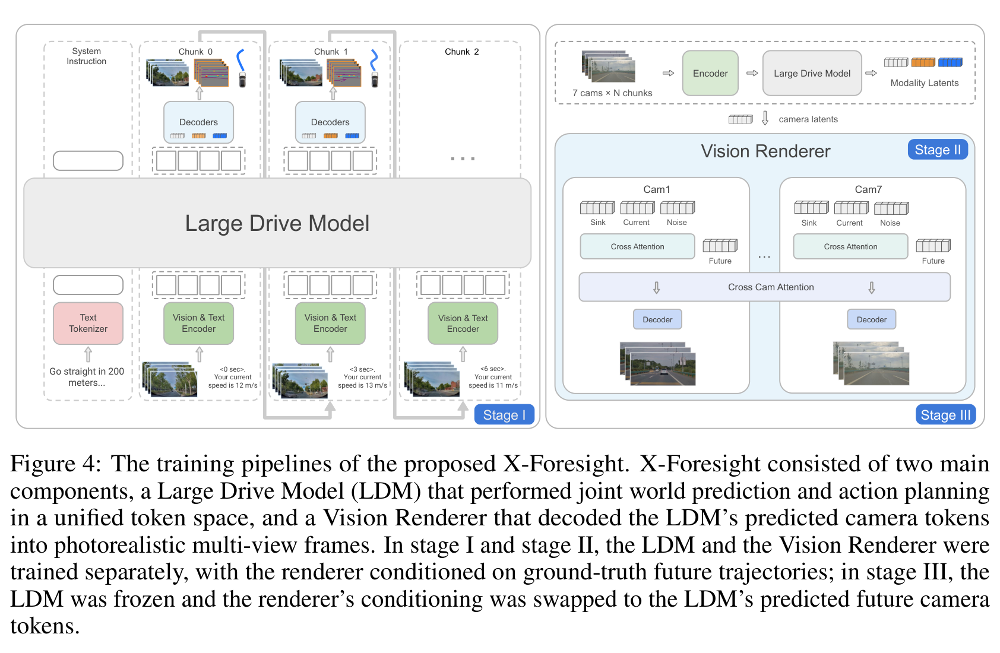
全部细节
这是论文原文图表或页图；具体版本、页码和裁剪信息见邻近中文说明。
- 论文版本：
2605.24892v4；PDF SHA-256：58111f3080dd5805abe7f8ea2190312732aa628ee9a083020e2faf63ba946c05；page SHA-256：d140e69ce48b230cd99af8eb5bb0096143e03e529b03f44e67fca932eb8b68ce。 - crop bbox（pt）：
[104, 65, 508, 329]；尺寸：[1684, 1100]；crop SHA-256：afb83e99a2358e8a83239c528e9c8e455e600552a60ed09d7c8f9882c8f5ee56。 - 图表说明：Fig.4 把 X-Foresight 分为 Stage I 的 Large Drive Model、Stage II 的 Vision Renderer、Stage III 的组合：LDM 联合预测相机/动作词元，渲染器从相机潜变量解码多视角图像。图注明确前两阶段分别训练，第三阶段冻结 LDM 并替换渲染器条件。
- 进一步分析：这是表示学习与像素渲染的分工证据，渲染器的画面主要用于可视化和诊断。与 PWM 把预测潜变量交给动作查询、DrivingGPT 用 VQ 解码器还原图像不同，X-Foresight 的渲染器独立训练，不能把其图像质量直接当成动作梯度的证据。
- 证据边界：图不证明渲染器对每辆车或每次碰撞预测正确，也没有建立因果干预。长时间跨度、camera/BEV/action 损失、渲染器 FID/FVD 和闭环 CCES 必须保持各自评价层，不能只从逼真画面推决策可靠性。 当前 visual_status=
precise_crop_and_visual_checked；semantic_status=reviewed/pass；局部建议：保留“Stage III 冻结 LDM、渲染器改用预测的相机词元”的精确边界。。历史状态semantic_pending仅对应早期裁剪回执，原文证据边界继续有效。
原文图表卡片：表 3（PDF p.13）
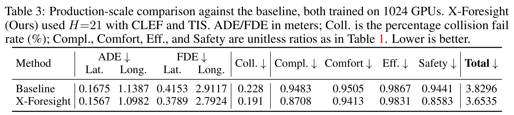
全部细节
这是论文原文图表或页图；具体版本、页码和裁剪信息见邻近中文说明。
- 论文版本：
2605.24892v4；PDF SHA-256：58111f3080dd5805abe7f8ea2190312732aa628ee9a083020e2faf63ba946c05；page SHA-256：9c0ac28e542cbc36486e5e8ebb7a6d86670c4eb071bbb924c92ef74a7e8e7c50。 - crop bbox（pt）：
[104, 480, 508, 571]；尺寸：[1684, 379]；crop SHA-256：b0d28b3acb210e805c087985b57d7ab3f6da5adb17814c7a8cab7e2a32a6526d。 - 图表说明：表 3 比较同为 1024 GPU 训练的基线与 H=21+CLEF+TIS。横向 ADE 0.1675→0.1567、纵向 ADE 1.1387→1.0982；碰撞失败率 0.228→0.191%；Total CCES 3.8296→3.6535，表头所有这些指标均越低越好。
- 进一步分析：碰撞失败率的相对下降约 16.2%，Total 下降约 4.6%，说明不同安全/效率汇总量的变化幅度不同。H=21 是训练时间跨度，不是推理时想象 21 条未来。与 DriveVA 90.9 PDMS 的单总分不同，CCES 此处由多组已归一化指标组成，不能按绝对数横向排序。
- 证据边界：production-scale 表整合时间跨度、curriculum 与 TIS 的联合作用，不能由两行分离每个组件的贡献。相同 GPU 数不自动保证相同总计算；表未给置信区间、测试场景分布或普通算力复现延迟。 当前 visual_status=
precise_crop_and_visual_checked；semantic_status=reviewed/pass；局部建议：无需数值修正；明确 Lower is better 和碰撞失败率 rate 单位。。历史状态semantic_pending仅对应早期裁剪回执，原文证据边界继续有效。
正文：05_analysis\full_reading\x-foresight\paper_reading_report.md；13955 字符 / 7414 中文字符；SHA-256 60b0af10c4b1d6eec696ce64b2b504c171ad9ab6e3858ef14fb4d47d5e0ee379。
来源覆盖：05_analysis\full_reading\x-foresight\source_coverage.json；问题台账：05_analysis\full_reading\x-foresight\paper_questions_for_code.md。
自动驾驶 · 核心论文
X-Foresight 全文精读：长时稀疏分块监督、动作控制与多视角渲染
当前正式机制图与完整图解：F-x-foresight-mechanism
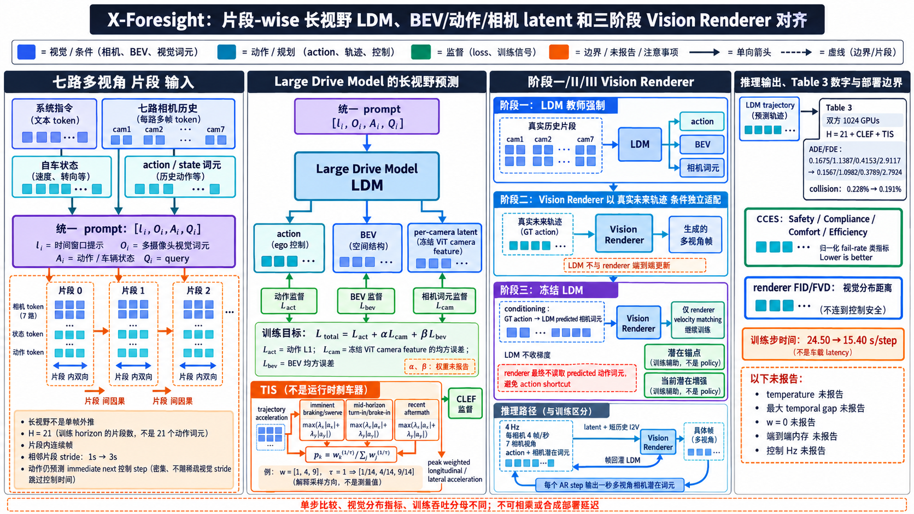
全部细节
图像 ID：F-x-foresight-mechanism；PNG、native receipt 和逐图中文说明由当前任务 accepted manifest 绑定。
图像身份：F-x-foresight-mechanism；审校时间：2026-10-31T18:12:30.819198+00:00；尺寸：1672×941；SHA-256：006453e0145d08e29993b00747de3de5a5d04b7337c405ef5fe81af2a664a3d1。原生回执（此附件保存在完整本地归档中）。
自动驾驶 · 核心论文
X-Foresight 高密度科研图逐区逐箭头说明
一、七路多视角片段输入：长视野不是单帧外推
箭头从系统指令、七路相机历史、自车状态和动作/状态词元进入统一提示。每个 temporal 片段的抽象顺序写成 [l_i,O_i,A_i,Q_i]：l_i 是时间窗口提示，O_i 是多摄像头视觉词元，A_i 是动作/车辆状态，Q_i 是查询。用三个虚线框标片段 0、片段 1、片段 2，箭头只从早到晚连接，表示自回归历史。片段-wise foresight 保留片段内连续帧，同时让相邻片段间 stride 从 1 秒逐步扩到 3 秒；动作仍然预测 immediate next 控制 step，保证控制时间密度。不要把 H=21 画成 21 个动作词元，H 是训练时间跨度的片段数。
时间片段的作用是同时保留近处运动和远处事件：片段内需要双向理解同一秒的多视角关系，片段间只保留受控的历史连接。动作仍需密集到下一控制步，因此图中动作箭头不能跟随稀疏的视觉 stride 一起跳过控制时间。
输入区要把“多视角”和“时间片段”同时表现出来。一个片段内的四帧相机信息可以互相看见，连续片段只按受限邻域连接；这样既保持局部运动细节，又避免全长序列的二次复杂度。动作箭头保持即时控制步，不能跟随远期视觉 stride 一起稀疏。
二、Large Drive Model：三条预测支路和安全关键采样
输入箭头汇入 LDM，再分为动作、BEV、相机潜在词元三条输出。动作输出用青色，BEV 和 per-相机潜在词元用蓝色。训练损失写 L_total=L_act+αL_cam+βL_bev，其中 L_act 是动作 L1，L_cam 是冻结 ViT 相机 feature 的均方误差，L_bev 是 BEV 均方误差；α、β 未报告数值，旁边标橙色“权重未报告”。TIS 的箭头来自轨迹 acceleration：三个时间窗分别看 imminent braking/swerve、mid-horizon turn-in/brake-in、recent aftermath，在每窗取 max(λ_x|a_x|+λ_y|a_y|)，再算 p_k=w_k^(1/τ)/Σ_jw_j^(1/τ)。完整数值教学例：若三个候选窗口分数为 w=[1,4,9]、τ=1，则抽样概率为 [1/14,4/14,9/14]；这是解释采样方向，不是测量值。
三项损失的监督对象不同：动作是 ego 控制，相机是冻结 ViT 特征，BEV 是空间结构。α、β没有公开数值，画面只能写符号。TIS关注加速度峰值是采样偏置，不是额外安全规则或运行时刹车器。
LDM 的三条输出承担不同监督角色：动作是驾驶决策，BEV 是空间结构，相机潜在词元是未来外观摘要。相机潜变量不是直接高清画面，而是渲染器的条件瓶颈，因此图中应先画低维潜变量，再画渲染器还原高频细节。权重符号保留未知，不要用外部默认值填入。
三、阶段一/II/III：渲染器如何补齐条件分布差异
箭头一：阶段一 LDM 教师强制，输入真实历史片段，输出动作、BEV、相机词元。箭头二：阶段二 Vision Renderer 以真实未来轨迹条件独立适配，LDM 不与渲染器端到端更新。箭头三：阶段三冻结 LDM，渲染器的条件化从 GT 动作换成 LDM 预测的相机词元，只用渲染器 velocity matching 继续训练；渲染器最终不读取预测的动作词元，避免动作 shortcut。阶段三的箭头必须标“LDM 不收梯度”，不能画成联合微调。推理时每个 AR step 输出一秒多视角相机潜在词元，四帧/相机/秒、七个视角；渲染器用潜变量加短历史 I2V 生成具体帧，帧再回灌 LDM。潜在锚点和当前潜在增强画在训练辅助旁，不要当作策略。
阶段二的 GT 动作使渲染器先学会条件生成，阶段三再把实际 LDM 相机词元分布接进来。冻结 LDM 是防止渲染器对动作语义和 LDM 表征产生共同漂移；因此箭头必须明确只有渲染器获得 stage-III 梯度。
三阶段箭头必须显示条件分布如何变化：先用真实动作教渲染器，再用模型自己预测的相机潜在词元对齐。第三阶段冻结 LDM 是训练边界，不能将其画成动作、BEV 和渲染器共同回传。潜在锚点和增强只属于渲染器训练辅助，不能连接到新的策略输出。
四、输出、表格和部署边界：指标不能互相替代
表 3 评估箭头从 LDM 轨迹指向 ADE/FDE 与碰撞失败率：基线→ours 的四个 ADE/FDE 数字为 0.1675→0.1567、1.1387→1.0982、0.4153→0.3789、2.9117→2.7924，collision 0.228%→0.191%。CCES 另画一条箭头，说明 Safety、Compliance、Comfort、Efficiency 是归一化 fail-rate 类指标，Lower is better。渲染器 FID/FVD 画独立分支，不连到“控制安全”。训练吞吐 24.50→15.40 s/step 只放橙色“训练步时间”，不能连到车载延迟。温度、最大 temporal gap、w=0、端到端内存和控制 Hz 未报告，使用橙色断开线。
单步比较、视觉分布指标和训练吞吐的分母不同。表 3 的 collision 是百分比 fail rate，FID/FVD 是视觉分布距离，24.50→15.40 是训练 step 秒数。图面用不同颜色和断开线防止读者把它们相乘或合成部署延迟。
评估区用不同形状区分轨迹误差、碰撞失败、CCES 和视觉 FID/FVD。训练步耗时只反映工业训练吞吐，不能通过箭头变成车载端到端延迟。缺少内存和控制 Hz 时，应在边界框内明确写未报告。
逐箭头审计补记：
逐箭头审计补记：从片段输入到 LDM 的箭头携带文本、观测、动作状态和查询词元；从 LDM 到 BEV、动作、相机潜变量的箭头代表同一统一词元空间中的多任务输出；从相机潜变量到渲染器的箭头只在第三阶段切换为预测词元，第二阶段仍是 GT 轨迹条件；从渲染器到下一片段的箭头带回生成帧，不把渲染器结果写成新的动作标签。所有跨片段查询的旧查询连接必须画禁止边，避免把预测目标直接互相读取。
补充时间说明：LDM 的动作在 immediate 控制 step 输出，视觉片段通过较大 stride 看远期；这种不对称设计正是长视野与控制密度的折中。Renderer 只把潜变量恢复成具体多视角帧，不重新规划动作。
1. 身份、来源与阅读范围
本次对象是 X-Foresight: A Joint Vision-Action Causal Forecasting Network via Predictive World Modeling，arXiv:2605.24892。官方PDF显示 v4，2026年7月7日，共19页；第1–17页为正文，第18页为致谢、贡献者及参考文献起始，第19页参考文献续。没有另列附录或正式算法环境。首页署名为PWM Team, XPeng Inc.；第18页把顾问、项目负责人、贡献者和技术项目管理角色展开，不能把首页团队署名解释成只由少数注册作者完成。本文为技术报告，读取本工程官方PDF、HTML及TeX后重新建立，未读取源码或历史研究材料，来源哈希见 source-manifest.json。
一句话定位：X-Foresight希望让VLA在训练时预测足够远、足够有变化的视觉未来，从而改善单次动作预测；另设扩散渲染器把相机潜变量转成可用于递归滚动执行的七路图像。它的两种用途必须分开：主规划表在推理时只做一次前向，测的是训练时世界监督留下的动作能力；图像生成部分则真的递归执行LDM预测、渲染、再编码的循环。不能把主规划表的收益自动归为测试时反复想象的收益。
本文使用 paper-stated、reasonable inference、not reported 区分作者明确事实、基于证据的解释和全文未公开的细节。最稳健结果是：在作者自有数据和评估协议上，较长训练视野、课程和重要性采样改善安全/合规相关指标；渲染器显著改善相机潜变量直接解码的视觉质量。对“内部化因果知识”的解释具有动机和相关证据，但没有干预式因果识别或开放道路长期安全证明。
2. 三遍阅读地图与5C
研究类别是大规模工业驾驶世界模型技术报告。背景是视频预测存在低熵近邻捷径：只复制或外推相邻帧，就可能获得好预测误差，却不必理解远期事件。第二个问题是时间分辨率困境：突然横穿、制动等瞬时动态需要密帧，绕行、信号变化、路线出口等长期事件又需要远视野；把所有时间点都密采样会扩大序列和算力。
贡献分为四条：块内密、块间稀的长视野预测；从短到长的课程；按自车动态挑重要片段；把语义预测与高保真渲染分开。正确性预审需要看这些干预是否在资源可比下工作，是否有安全进度权衡，以及生成质量是否测到了结构正确性。清晰度上，三阶段渲染器训练、各表的比率基线和单步评估明确；LDM的具体型号/参数、数据划分、训练日程、权重、sampling超参数和动作表示则缺失。
依赖式阅读顺序是：七相机数据与任务 → 提示/块 → 长时课程与采样 → 半因果稀疏掩码 → 多任务损失 → 渲染器的信息瓶颈 → 三阶段训练及递归推理 → 分别读规划表和视觉表 → 检查语言中的“causality”“闭环”“real-time”各自有多少实证。按这个顺序可以避免被Fig.1漂亮的全系统图掩盖评估层级差异。
3. 数据规模与分布到底说明什么
§2报告约280,000小时自有驾驶数据、34M最长30秒clip、13.8T 词元。原视频12Hz，训练降到4Hz，七路相机覆盖前鱼眼、前窄视、左右前/后及后方，均校准到自车坐标系。不同相机按视角调整分辨率，但两种原始分辨率及最终具体像素尺寸没有在正文表格给全。13.8T是词元规模陈述，不是可以独立由34M乘固定长度验证的定长数据量，因为clip可变长、各视角词元预算也未完整披露。
Fig.3把约200个自动标签归为八类：开阔道路车道保持21.0%、换道20.1%、受限车道16.0%、路口/转弯13.1%、障碍/加塞9.9%、跟车/拥堵9.6%、弱势交通参与者6.2%、罕见道路布局4.1%。城市86.8%、高速13.2%。这说明训练并非只有匀速直行，也显示常规样本仍占大头；正因稀有安全片段对平均数据量贡献小，才有后面的重要性采样动机。标签分布不等于真实风险分布，自动标注的准确性也未报告。
这里没有公开完整训练/验证/测试clip数量和时间/地理隔离、路线重叠、车辆平台分布、测试事件构成或测试干预策略。因此大规模结果主要代表该工业数据闭环，不能直接与NAVSIM、nuScenes其他论文的L2/碰撞表横向排名。模型训练和评估使用自有七相机系统，跨相机标定/外观/国家交通规则的泛化也没有单独量化。
4. 必要概念与易混边界
自回归是把一个长未来拆成先后预测的短块，后续依赖此前上下文。它不一定逐词元串行；本文每个AR步骤可以并行输出一秒四帧的相机词元。教师强制是训练时给模型此前块的真实观察和动作，而非它自己已生成的错误结果。优点是监督稳定，缺点是测试时递归输入分布不同，误差会积累。
低熵捷径的直觉是：前一帧路面、天空几乎没变，照抄很多位置就能降损失。熵在此主要是信息量与变化性的动机语言，论文没有测词元条件熵或证明块一定提升了熵。时间混叠是稀疏采样可能漏掉快速运动：例如只看0秒和3秒，可能看不到中间突然横穿后又离开的行人。块保留一小段密帧，试图同时保留局部运动与远期变化。
潜变量是相机图像经ViT得到的特征，而不是一定能无损还原的像素编码。LDM按L2类目标回归特征，多模态未来的平均可变模糊；渲染器用扩散先验补纹理。信息瓶颈是渲染器只接受LDM相机词元作为LDM输出条件，不能直接看动作走捷径。历史图像仍通过I2V通路输入，所以“只接受相机词元”不等于完全没有其他条件。
CCES不是四个原始概率。每项底层fail rate先除以共享基线该项fail rate，再在类别内无权平均，最后四类别求和。因此每类1表示达到H=1参考模型水平，Total=4只是构造基准；某类0.9表示其若干归一化失败比的平均0.9，不能说原始事故率下降10%。单独Collision列才是原始百分比fail rate。
5. 符号和输入输出对象
| 符号 | 含义 | 可确定内容 | 未报告内容 |
|---|---|---|---|
| 块或候选时间索引 | 提示按时间排列 | strided样本动作/视觉时间戳完整表 | |
| 时间文本、观察、状态/动作、查询 | 每块四类词元 | 每类词元数/宽度、具体查询布局 | |
| 训练视野块数 | 表1为1/6/21 | H与3秒stride覆盖总长的精确定义 | |
| 图5中块帧数、帧stride | 例子K=4，s=12帧 | 全训练变体的具体随机化 | |
| 重要性分数、抽样概率 | 式1/2 | 全零fallback、混合概率、温度/窗口 | |
| 自车纵/横加速度 | 用绝对值找动态变化 | 求导、滤波、单位及归一化 | |
| 动态权重、采样温度 | 非负权重，温度正 | 实际值 | |
| 预测/目标相机特征 | g是冻结基础VLM的ViT | 基础VLM身份、特征层、维度 | |
| 预测/标签动作 | L1监督 | 控制量/轨迹点定义及尺度 | |
| BEV预测/目标 | 查询子集解码 | 地图语义、分辨率、目标来源 | |
| 相机/BEV损失权重 | 多任务加权 | 数值与调度 | |
| 渲染器干净潜变量、噪声、流时间 | t=0数据，t=1噪声 | 推理网格/步数/CFG |
LDM的相机词元与渲染器的VAE 潜变量不是同一对象：前者是控制rendering的语义特征，后者是扩散生成空间。相机帧可以有多个词元，正文§3.2.2“一帧一个相机词元”的简化语言，与§3.3.2“一帧由several 词元表示”要按后者保留粒度，不应据此硬算7×4个transformer 词元。
6. M-XF-01：多模态提示与三种预测目标
提示为 [SYSTEM] | [l0,O0,A0,Q0] | ... | [li,Oi,Ai,Qi]。系统指令含导航目标和车辆高层信息。每块的时间文字告知预测窗口，观察词元来自块内多路多帧ViT编码，动作/状态来自历史轨迹，查询触发未来目标。为省词元，视频特征在位置内直接预测，而非每个视觉位置再添加额外查询。输出包含未来自车动作、辅助BEV、每路相机 latents。
教学例子：系统说“200米后继续在环岛内，走较远出口”。当前一秒块包含四个时间点七路图像、自车速度和历史轨迹；查询输出下一控制动作，同时预测未来视觉/BEV。若只根据当前最显眼出口，策略可能提早驶出；长时视觉监督让隐藏表示也承担“后面出口将怎样出现”的任务。该解释与Fig.7案例相容，但不是证明模型内部具备明确符号路线规划。
可学习部分包括LDM及输出解码模块；相机监督目标的ViT冻结。BEV辅助头为几何结构提供直接监督，这意味着性能并非仅来自无标注视频。论文没有移除BEV单独消融，也没有给它的具体表示，因此不能把全部“world knowledge”都归结为视频。动作目标同样有标签；标题中的预测世界模型不等于全自监督驾驶策略。
7. M-XF-02：块内密、块间疏的时间结构
Fig.5对比五种形式。逐帧预测每次一步，临近变化小。直接把帧间隔拉大可看到远期，却丢掉连续运动。chunk-wise把K个连续帧放在一起并行预测，保留局部运动。chunk-wise longer foresight保持块内部连续，把下一块起点拉远。例子K=4、4Hz，则一块覆盖一秒；连续起点0、4、8帧，对应每一秒；stride12帧时起点0、12、24，即0、3、6秒，中间仍各自保留四帧。
课程先从短视野/连续块开始，再把跨块时间间隔从1秒加到3秒。这样不增加所选块数而扩大覆盖。关键不对称是：观察目标跨更长间隔，但动作仍预测即时下一控制步，不随视觉stride稀疏化。这防止把3秒后动作当作当前控制输出。正文没有完整列出对齐索引，因此实现必须知道每个查询到底监督哪一时刻动作和哪一时刻视觉。
为什么可能有效？局部密帧要求表示运动方向和速度趋势，长间隔要求跨越红绿灯变化、前车行为和路线结构，难以只复制当前画面。为何会失败？远期有多个合理未来，确定性L2回归可能学成均值；路口横穿的短事件仍可能落在被跳过的空白中；长时监督与即时动作的相关性有时很弱。论文测得长H对安全/合规更好但舒适/效率可能退化，恰好说明“更长”不是单调全面改善。
教学计算：若21个块每个1秒，连续时覆盖约21秒的抽样单元；若起点相隔3秒则理论覆盖远得多。但数据clip最长30秒，不能擅自写成完整61秒训练序列。H、选样范围、3秒stride与30秒片段如何兼容，正文没有充分给出。应将“扩大有效视野且预算不变”作为作者说明，将实际最大覆盖秒数列为问题，而不是机械相乘造出与数据矛盾的数。
8. M-XF-03：重要性采样的式1/2与数值实例
式(1)对候选步k附近三个窗口计算加速度分数：
近未来窗口抓制动/转向起点，中期窗口抓即将发生的机动承诺，近期历史窗口抓刚结束机动的后果。先每时刻纵横加速度加权，再在每窗取最大，再跨窗求和。这不同于所有帧求和，也不同于全clip一次最大；多窗口让事件前、中、后候选步均可能高分。纵横绝对值让加速/减速、左右转都能提高分数。
式(2)归一化 。温度小于1会强化峰值，大于1趋于平坦。教学实例取候选分数(1,4,9)，温度1时概率(1/14,4/14,9/14)，约(0.071,0.286,0.643)；温度2时先开平方变(1,2,3)，概率(1/6,2/6,3/6)，更平滑。若某步三窗峰值2、1、3，最终w=6；这不是只取3。
论文还约束连续选中步的最大时间间隔，防止序列太稀。摘要/引言说混合random与importance，但公式只给importance分布，混合比例、最大间隔、窗口边界、温度、lambda及全w=0时的处理未报告。加速度是安全关键性的代理：静止遮挡行人、即将到来的红灯、尚未产生自车反应的风险可能低分；司机激烈但安全的转向可能高分。采样改善的是被这个代理偏置的数据分布，不是所有危险事件被完整识别。
9. M-XF-04：半因果稀疏attention怎样工作
Fig.6中每个色块是词元 block，而非单个像素。系统提示是全局sink，后续都能看到。同块里文本、观察、动作/状态与查询双向交互。跨块具有时间因果方向，prompt-side 词元只看此前块相同位置附近区域，时间越远邻域越窄；查询能看此前所有prompt-side 词元，但不看以前查询，避免直接依赖早先预测目标。两组输出头按时间偏移奇偶分配互补连接。
教学上，当前第5个块的某个摄像头位置，可以重点看第4个块邻域和更早的对应小区域；另一个输出头负责被前一组省略的时间偏移。这样不同输出头共同保留历史覆盖，同时减少每个输出头激活连接。不能把“同块双向”直接叫作未来泄漏：是否泄漏取决于同块哪些位置是已知提示、哪些承担预测、shift如何定义。论文说视频in-place预测，却没有给足精确target-shift表，这恰是实现应核对的问题。
论文称连接数量近似线性增长。奇偶拆分本身只把密集连接约减半，不能单独把二次复杂度变线性；线性趋势还依赖邻域随距离缩小、查询数量、block布局与可见历史限制。没有给正式复杂度推导或随长度的实测曲线，因而应把复杂度语言视为该稀疏模式下的作者主张。表4确实给端到端训练每步24.50秒到15.40秒，约1.59倍，是更直接可接受的效率证据。
10. M-XF-05：多任务监督与损失精读
式(3)为 。实际PDF/TeX显示L2范数而非清楚标注的平方；§3.3文字说L2回归，不能擅自将式子改成MSE。g是冻结ViT，V=7视角。式(4)动作损失为 。式(5)BEV为 。式(6)总损失 。
相机损失按H和V归一化，动作与BEV按H归一化，但特征维度/地图元素内部如何reduction不明。教学例子H=2,V=2，四个相机范数误差为1、3、2、2，Lcam=2；动作两步L1分别0.2、0.4，Lact=.3；BEV范数.5、.7，Lbev=.6。若教学权重alpha=.1,beta=.2，则Ltotal=.3+.2+.12=.62；这些权重不是论文配置，实际值未报告。
为何回归均值会模糊？如果一个特征标量在两个同样可能未来取0或2，平方损失的最优预测是1，而1可能不是任何真实未来。对一般L2范数的最优估计更接近几何中位数，并不完全等于条件均值；因此作者用“mean of plausible futures”描述时，需注意式(3)未平方的写法与均值推论存在表达不完全一致。定性解码模糊支持信息被压缩，但不能反推整个预测概率分布已经被完整表达。
11. M-XF-06：渲染器为何刻意不看动作
LDM负责语义未来与控制，渲染器负责把相机词元变成高保真多视角帧。它从X-World DiT与Wan2.2 3D 因果 VAE初始化，时间attention与跨视角attention交替，鼓励物体身份、几何和运动一致。最终保留多视角历史I2V输入及相机词元交叉注意力；X-World原动作、动态参与者、静态路要素和文本条件分支删除。
作者担心若渲染器同时看动作，它可把动作当低熵捷径，忽略LDM相机词元，形成“LDM想一套、渲染器靠动作另造一套”。因此渲染器不能直接用动作条件，视觉未来必须经相机词元这个瓶颈传递。Fig.8再叠加LDM动作轨迹作为独立参考。这里独立仅指渲染器未直接获得动作，两个输出仍共享LDM、历史与训练数据，不能当完全统计独立的验证器。
递归误差来自生成帧回灌：训练见真图，推理见自己图，像素漂移可能被ViT重编码成错误上下文。本文加潜变量 sink稳定参考、对当前潜变量做augmentation，模拟有噪条件。未给sink长度/更新规则、augmentation分布/强度或移除消融。作者没有采用DMD蒸馏；这只是其路线选择，不能默认轻量修正与那些方法效果相当。
12. 渲染器流匹配方向与三阶段训练
式(7)是 ，。这里t=0是数据、t=1是噪声，与一些论文从噪声0走到数据1的记号相反。式(8)监督速度 ，推理需沿t从1积分回0。教学上干净y0=2、噪声y1=.4，t=.25时yt=1.6，目标速度=-1.6；从1向0反向走，负时间步乘负速度使状态回到2。若只看“速度负”就说去噪方向错误，是混淆了时间方向。
Stage I只训练LDM，教师强制，动作/相机/BEV多任务。Stage II独立适配渲染器，LDM冻结，渲染器仍吃GT动作；把X-World原12Hz适配到4Hz，并引入sink/增强。Stage III冻结LDM，删除原条件分支、启用新随机初始化相机交叉注意力，只训练渲染器速度损失。此阶段没有动作/BEV梯度回到LDM，不是全系统端到端联合优化。Stage II明确Muon、lr8e-5、每卡batch1、128GPU；Stage III用Muon一周期cosine、每DiT block 检查点、FSDP，LDM推理模式。
Stage III使渲染器见到LDM预测相机词元的真实分布，确实减少条件分布失配；但LDM自身仍是冻结的teacher-forced训练结果。不能笼统说“闭环gap全部消除”：若LDM递归面对新生成图像导致错误，渲染器对齐并不保证LDM重新学会纠错。正文没有明确Stage III是否总使用完整on-policy多步LDM上下文、怎样配对GT监督，需保留实现边界。
13. 推理流程、时钟与部署歧义
一轮推理是读指令和短历史多视角 → LDM一次前向输出下一动作与一秒相机词元（每路4帧，七路，每相机帧多个词元） → 渲染器以词元和历史运行少量流步，抽一个具体视觉未来 → 图像和新动作追加上下文 → 重复。六个AR步构成Fig.8的六秒未来。论文同时说4Hz cadence、每AR步输出一秒四帧，实际每250ms控制更新还是每秒预测块、动作头输出几步，未完全澄清。
该“闭环滚动执行”在此主要是模型生成结果反复进入自身视觉上下文的闭环，不自动等价于车辆在真实环境中执行动作后得到新传感器反馈。真正在线驾驶会用真实新观测纠正模型，而模拟滚动执行可能用渲染帧延展想象。文本没有完整分离两个模式和替换时序。论文声称real-time control，但没有端到端LDM+渲染器在线延迟、硬件内存、实际Hz；训练加速表不能代替部署效率测量。
14. 规划表1：长H的收益与代价
Table1/PDF12把H从1改到6/21，architecture、data、128GPU和训练步数相同。H=1横/纵ADE=.1923/1.2409，FDE=.4881/3.1935，Coll=.263%；H=21为.1810/1.2110、.4571/3.0988、.245%。例如横ADE下降(.1923-.1810)/.1923=5.88%，碰撞下降约6.84%。安全比1→.9481，合规1→.9533，方向与长时监督动机相容。
但舒适1→1.0416、效率1→1.0094变差；Total先4→3.9396，再回升3.9524。不能把表1写成所有指标随H单调变好。相同步数和硬件也不意味着相同总计算：序列长会影响每步计算与每样本覆盖，论文只控制一部分预算。更重要的是，所有模型只用单次前向推理，所以表测的是训练监督如何改善即时策略，不是H=21测试时显式想了21秒后的效果。
CCES教学例子：若某类两指标基线失败率2%和0.1%，新模型1.8%和0.12%，类别均值=(.9+1.2)/2=1.05，虽然绝对减少较多的第一个指标更好，类别仍恶化5%。这说明无权平均比值会让小分母指标敏感，缺原始逐项率难以判断驾驶意义。全文未公开CCES全清单、阈值、权重、零分母处理、fail-rate样本和置信区间。
15. 规划表2/3：课程、采样和工业规模
Table2/PDF13从同一H=6 检查点继续训练。Cont.H6碰撞.270、Total3.9523；CL .238/3.8745；CLEF .230/3.8734；TIS .216/3.8447。继续训练本身改善ADE/FDE但碰撞未改善，帮助排除“只多训练时间”的单一解释。CLEF横ADE=.1692优于TIS=.1696，横FDE=.4181优于.4195；TIS不是所有位移指标最优，却在Collision、安全和合规更优。TIS相对CLEF碰撞(.230-.216)/.230=6.09%。
Table3双方1024GPU，Baseline横/纵ADE .1675/1.1387，Ours .1567/1.0982；FDE .4153/2.9117→.3789/2.7924；Collision .228%→.191%，相对16.23%。安全.9441→.8583，合规.9483→.8708，舒适.9505→.9413，效率.9867→.9831；Total3.8296→3.6535，4.60%相对降低。注意Total中这些数仍相对Table1 H=1共享参考，不是表3各自重新归一化。
这些对照比仅给最终单行更有诊断力，收益集中安全/合规与设计预期一致。然而基线是否完全等同某反应VLA、所有模块差异、样本量和随机种子未明确，生产尺度GPU数量不等于可重复训练合同。没有开放评测基准交叉验证，不能外推与其他论文系统谁更安全。低碰撞fail-rate还可能受保守程度影响，好处是表中同时列效率/舒适，可看见权衡，但仍缺路线完成与长期交互指标。
16. 效率与视觉表4/5
Table4/PDF14比较FA2标准因果掩码和BSA定制稀疏掩码，每步24.50秒→15.40秒，节省9.10秒，速度比24.5/15.4=1.5909。两者不仅kernel不同，允许连接模式也不同；准确解读是稀疏模式加kernel整体加速，不能纯归于同一attention计算的低层实现更快。未列不同长度、batch、GPU型号的曲线，也未测推理延迟。
Camera Latent Decoder是轻量causal3D ResNet逐时空上采样，最低分辨率层加空间attention，用来更忠实读出潜变量结构，降低diffusion先验和随机性掩盖问题的风险。Table5/PDF16：直接解码器在1秒FID10.97/FVD135.56，6秒11.82/158.39；渲染器为1.51/11.28与2.84/29.52。FID跨七路4Hz帧计算，GT参考来自测试集200k随机clip；FVD每相机时间序列计算后七路平均。
渲染器相对解码器的绝对减少应为1秒FID9.46、FVD124.28，6秒FID8.98、FVD128.87。正文PDF17把解码器原值10.97/135.56等写成“reducing ... by”，这是算术措辞错误，本报告保留正确差。1到6秒渲染器 FID升1.33、FVD升18.24，说明更远期分布质量下降，但不能只凭这两个数说“漂移仅有限”已覆盖动作正确性、物体轨迹或碰撞。FID/FVD测分布相似，不保证单样本与对应真实未来一致。
17. 8张图的逐图核验
Fig.1/PDF2左上pipeline、左下2/4/6秒前相机、右侧雷达指标；是系统概览，雷达归一化观感应回到表1–5理解。Fig.2/PDF3七相机样例与280k小时、34M、13.8T数字，展示采集覆盖而非性能。Fig.3/PDF4八类横条，蓝城市、绿高速，括号是细标签数，不是样本数；条总占比和road-class是两个轴。
Fig.4/PDF5左侧LDM的块序列与Stage I、右侧渲染器预训练/对齐Stage II/III，实际看图可确认两个组件分开；不能据大图“训练 pipeline”误说三阶段全模块共同反传。Fig.5/PDF6五种时间抽样形式：frame-wise、stride帧、块、stride 块、importance非均匀块。图中帧索引应换成4Hz再解释秒，不能把数字12说成12秒。
Fig.6/PDF8两组输出头的互补掩码，颜色分别系统sink、块内双向、跨块提示、查询到历史提示。轴查询/键方向决定谁看谁，应按文字核对；不能把全局sink看成最近帧缓存。Fig.7/PDF14环岛远出口与红转绿两组案例，右图基线偏离GT，X-Foresight更贴近；这些是已知日志未来下的定性轨迹对照，不能推成所有红灯应预测变绿而不停车的在线规则。
Fig.8/PDF16横为七相机：左后、左前、前窄、前鱼眼、后、右前、右后；纵为0秒GT到6秒未来。蓝色轨迹只叠在前窄/鱼眼，渲染器没有直接接动作词元。这支持所展示样本相机词元和动作共享可兼容语义。没有提供跨相机物体ID量化或对渲染器采样变化的轨迹敏感性，因此目视一致仍应保持证据边界。全部图和表已通过本次PDF渲染及view_image核验。
18. 局限、未决项与审稿视角
最有价值的设计判断是把密短时与稀长时监督结合，避免只增加全部帧；把多任务世界监督的训练收益与单步推理分开，保留了效率潜力；把相机潜变量直接解码当诊断探针，避免漂亮渲染器完全遮盖潜变量缺陷。局限是许多关键契约仍封闭：模型身份、词元数量、动作定义、BEV目标、alpha/beta、课程时点、采样窗口、温度、真实长H时间覆盖、在线控制时钟和评估阈值。
对因果性的语言需谨慎。预测未来相关关系可以改善行为，但没有通过反事实干预证明某相机词元编码了“因为红灯会变绿所以继续行驶”的因果变量。训练也可学到路线/信号周期的统计规律。红灯案例在日志中成立不代表在线应信任预测信号；若信号未如预期变化，系统仍需根据实时观察纠正，本文未给出这类反例和安全兜底。
关于渲染器，“相机词元足够控制未来”的证据是叠加轨迹与轻量解码器一致性，缺少打乱/替换/置零相机条件、保留历史的消融。如果渲染器根据历史先验本来就能产生相似图，视觉一致不充分排除捷径。因此信息瓶颈是合理设计，不是已经严格识别的全部控制通道。StageIII冻结LDM也限制像素监督直接修正其动作语义。
审稿时会要求更完整公开单步与多步评估边界，补原始CCES失败率及统计区间、课程/采样明确配置、BEV贡献、渲染器条件敏感性、动力学关键物体一致性、实际延迟，以及在未见平台/路线的测试。现有证据足以支持“该工业训练组合改善其测试协议下动作质量和视觉质量”，不足以支持“通用因果世界模型已经解决驾驶安全”。
19. 自测、易错点与答案
Q：H21分数更好是不是测试时想了21步？不是，§4.1.1明确所有规划模型只做一次前向，隔离训练监督影响。长H是在训练中要求表示远期信息，收益可能内化在单步策略。多步渲染器循环有另一组视觉证据，不能与主表合并成测试时计算收益。
Q：渲染器不看动作，为什么仍可能与轨迹一致？相机词元和动作都由同一LDM/同一上下文产生，相机词元可以隐含自车运动，渲染器再读它。不直接看动作防止一个捷径，但共享来源仍使两者有关；它不是一个完全独立验证轨迹正确性的系统。
Q：为什么importance sampling不等于危险事件检测？分数主要来自自车加速度峰值。它关注机动变化附近的数据，而没有直接标注未来危险程度。危险尚未引发自车反应时可以低分；正常快速转弯可能高分。表2显示这种偏置有效，但没有证明覆盖所有危险类型。
Q：L2相机回归必然输出条件均值吗？平方L2的理想最优是均值，未平方L2通常是几何中位数。本文公式显示范数、文字说mean，精读要保留这层不严密，不能为了讲解顺口自动修改公式。无论哪种确定性回归，都可能压缩多未来而让直接图像解码模糊。
Q：为什么长H的Total不是单调变好？安全/合规改善被舒适/效率小退化部分抵消，四类是比率平均后求和。长时监督增加优化难度，正是课程和定向采样被引入的原因。读表要看各失败面，不能用一句“长视野显著提升所有能力”覆盖真实权衡。
20. 无公式教学故事
20A. 语义与公式复核补记（2026-10-28）
复核来源为PDF pp.4–8、12–16及TeX方法。变量与权重应以数学写法保留：、、、、。相机损失源式是L2范数，动作是L1，BEV是L2；不能因“回归”一词自动改成平方MSE。
数据规模280K小时、34M clips、13.8T 词元和H=1/6/21不是可互换的覆盖证明。长H实验控制architecture、data、GPU和训练步数，主规划比较只做一次前向，不能说H=21是测试时想象21步。渲染器与相机潜变量共享来源，直接解码和轨迹 overlay是诊断，未构成camera-token因果干预；StageIII冻结LDM的边界必须保留。未来相机词元可能保留动作信息，但本文没有证明所有交通因果变量都可由它们恢复。
表格中安全/合规改善、舒适/效率小退化应并列报告。FID/FVD为生成分布质量，不代表每个样本的对象轨迹或碰撞正确。未公开的alpha/beta、词元维度、BEV目标和控制时钟继续保留来源边界，不从代码或其它模型默认值填补。
把X-Foresight看作训练司机时布置的两本作业。第一本要求他现在开得对，第二本要求他预测几秒乃至更远后七扇车窗会看到什么。如果只问下一张照片，复制当前画面就能混过去；于是作业改成每段保留四张连续图，但段与段隔得更远，并重点抽查制动、转向等重要时刻。司机因此需要把眼前动作与远期场景连起来。
预测草图本身不清楚，另一位画师把司机给的相机特征补成漂亮七路视频。画师被禁止直接看司机动作，迫使他认真读相机草图。论文展示了司机单次答动作更好、画师连续画六秒更逼真；但我们仍要问司机是否选对未来、画师是否真的服从草图、真实道路变化时能否纠错。把这些问题分开，才是对这篇技术报告的完整理解。
15. x-wam
原文图表证据（v3 精确裁切）
原文图表卡片：图 2（PDF p.4）
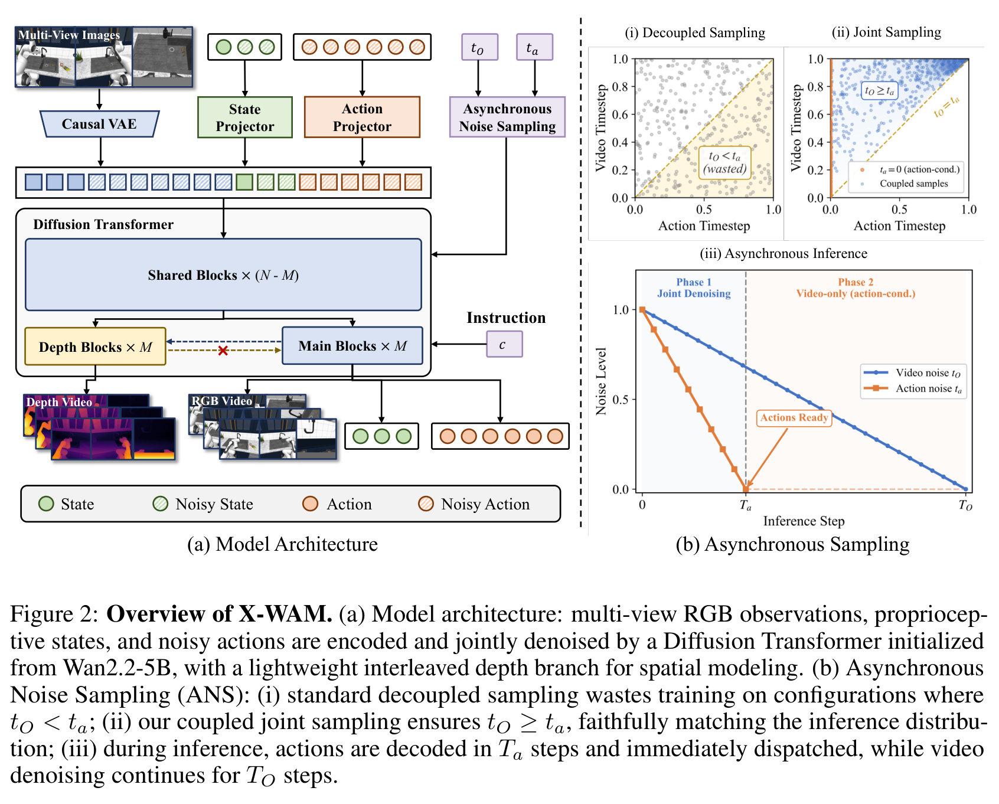
全部细节
这是论文原文图表或页图；具体版本、页码和裁剪信息见邻近中文说明。
- 论文版本：
2604.26694v2；PDF SHA-256：2de8a99be736c0a4715238aa61b9610802f7e4c961e1e23ede6bebb426a20332；page SHA-256：4077184532eefc485c8a65e175a9b48fe0eec8ebea14a44209f9bc2d9dd4f988。 - crop bbox（pt）：
[104, 65, 510, 392]；尺寸：[1692, 1362]；crop SHA-256：aab47439a20cbfaffab114b767ef341fd7444b9ab723eb0263b63d66f6c749b3。 - 图表说明：Fig.2 实际在 PDF p.4：左半部分是 Wan2.2-5B 初始化的联合 DiT 与 interleaved depth 分支，右半部分是 ANS 的训练噪声分布与异步推理。橙色动作先在 Ta 达到干净端并 dispatch，蓝色视频继续去噪到 TO。
- 进一步分析：ANS 不是简单让动作少采几步；图中训练联合采样约束 tO≥ta，以覆盖动作先干净、视觉仍带噪的推理状态。与 DreamZero-Flash 的解耦噪声 schedule、Motus 的视频稀疏/动作稠密相比，X-WAM 解决的是异步模态噪声分布失配，并同时输出 depth。
- 证据边界：图中 Ta/TO 是相对采样时间，不能直接解读成控制 Hz。depth 分支结构也不证明真实 3D 几何正确，必须结合重建指标和策略 SR。旧 p.5 图 2 的页码错误已排除。 当前 visual_status=
precise_crop_and_visual_checked；semantic_status=reviewed/pass_with_boundary。历史状态semantic_pending仅对应早期裁剪回执，原文证据边界继续有效。
原文图表卡片：表 4（PDF p.9）
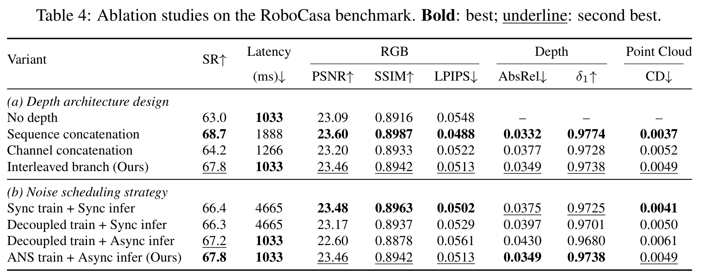
全部细节
这是论文原文图表或页图；具体版本、页码和裁剪信息见邻近中文说明。
- 论文版本：
2604.26694v2；PDF SHA-256：2de8a99be736c0a4715238aa61b9610802f7e4c961e1e23ede6bebb426a20332；page SHA-256：465c67010ba751b47ead8204ac57ec89168eb7c71e28e4ab1946310242c50199。 - crop bbox（pt）：
[104, 67, 510, 226]；尺寸：[1692, 663]；crop SHA-256：531bce1764877164373159f2f02679d6f0add9863d8388c2ddabacd3fac5b448。 - 图表说明：表 4 同时消融 depth architecture 和噪声 schedule。无 depth 的 SR 63.0%、延迟 1033 ms；sequence concatenation 68.7%/1888 ms；interleaved 分支 67.8%/1033 ms。Sync 推理为 4665 ms，ANS+Async 为 1033 ms，并报告 RGB、depth、point-cloud 质量。
- 进一步分析：sequence concatenation 的 SR 和多项几何值最佳，却几乎加倍延迟，解释了 interleaved depth 作为折中的选择。噪声策略行中 ANS+Async 的 67.8% 高于 decoupled+Async 67.2%，速度同为 1033 ms。与 DriveWAM KV 压缩不同，这里降低的是动作等待去噪的时间，而非历史 attention 成本。
- 证据边界：正文说明这些消融从 Wan2.2 权重直接微调、没有完整大规模预训练，不能把 67.8% 当作主结果 79.2%。RGB/point-cloud 和 SR 的相关变化不证明重建改善必然导致任务成功，硬件计时也不是跨论文统一延迟。 当前 visual_status=
precise_crop_and_visual_checked；semantic_status=reviewed/pass_with_boundary。历史状态semantic_pending仅对应早期裁剪回执，原文证据边界继续有效。
正文：05_analysis\full_reading\x-wam\paper_reading_report.md；13252 字符 / 4280 中文字符；SHA-256 8f3a0a101be244996a266fab35a03e3f2c5bf3f242a5fb469ea84253c4b706e0。
来源覆盖：05_analysis\full_reading\x-wam\source_coverage.json；问题台账：05_analysis\full_reading\x-wam\paper_questions_for_code.md。
自动驾驶 · 核心论文
Driving WAM 源码联合审计入口
旧版 v4 是逐问 source-closure 台账；本读者版由紧随其后的自然中文章节承担。固定源码只能闭合静态输入、形状、掩码、调度和下游使用者，不能把论文检查点、训练、推理、评测基准或部署结果写成已运行事实。完整台账保存在 trace/evidence，按问题 ID 与源码行号追溯。
自动驾驶 · 核心论文
Driving WAM 论文—代码联合读者章：自然中文正文 v2
本正文是 v4 source-closure 的中文解释层。它逐条解释 72 个问题的机制答案、输入形状、调用者/配置、下游下游使用者与剩余边界；同时逐条保留 19 条机制和 34 条论文实验的条件、数值、PDF 位置、源码路径与命令状态。源码、配置和论文只做静态阅读，没有运行目标仓库。
正文中的代码标识、路径、类名、函数名、张量形状、公式符号和固定提交保持原样，周围说明用中文叙述。代码子命题已闭合 只说明源码事实得到调用者/下游使用者支持；它不表示论文表格、检查点、数据清单或硬件计时已复现。
目录与证据规则
总览
矩阵共有 72 个问题，其中 52 行保留来源边界、20 行闭合固定公共源码路径；状态为 20 answered、39 部分闭合、13 未闭合。机制正文共 19 条，实验正文共 34 条。
按论文机制阅读
DriveWAM
M-DW-01：联合视频—动作流匹配与自回归滚动执行
固定源码能够闭合机制的实现子链路；这不等于论文表格、硬件计时或数据协议已经复现。论文证据 DW-E01..DW-E03 指向该机制的原文位置；源码入口包括 src/modules/model.py、src/modules/navsim_model.py、src/modules/compress_kv.py、src/navsim/train.py、src/navsim/eval.py、src/dataset/navsim_dataset.py。
在本项目的证据链中，它连接到 src/configs/navsim_cfg.py:30-58, src/dataset/navsim_dataset.py:20-94, src/navsim/eval.py:358-385, src/modules/model.py:777-874, src/navsim/eval.py:391-470, src/physicalai/eval.py:269-461；当前代码状态是 closed_subclaims_protocol_pending。阅读时应先区分机制本身、实现子命题和运行结果三层，避免用相邻论文或另一个仓库补齐缺失实现。
M-DW-02：scene-evolving 自动驾驶引导与 PhysicalAI 块条件
固定源码能够闭合机制的实现子链路；这不等于论文表格、硬件计时或数据协议已经复现。论文证据 DW-E04..DW-E05 指向该机制的原文位置；源码入口包括 src/modules/physicalai_model.py、src/physicalai/vlm_preprocess/generate_scene_evolving_guidance.py。
在本项目的证据链中，它连接到 src/navsim/eval.py:127-158,406-418, src/physicalai/eval.py:116-156,282-296, src/configs/navsim_cfg.py:40-44, src/physicalai/vlm_preprocess/generate_route.py:1-15,45-76,83-106, src/modules/model.py:95-201,777-874, src/navsim/eval.py:218-268,391-470；当前代码状态是 closed_subclaims_protocol_pending。阅读时应先区分机制本身、实现子命题和运行结果三层，避免用相邻论文或另一个仓库补齐缺失实现。
M-DW-03：Selective KV 内存的相关性—冗余度保留策略
固定源码能够闭合机制的实现子链路；这不等于论文表格、硬件计时或数据协议已经复现。论文证据 DW-E06 指向该机制的原文位置；源码入口包括 src/modules/model.py、src/modules/navsim_model.py、src/modules/compress_kv.py。
在本项目的证据链中，它连接到 src/modules/compress_kv.py:6-112, src/modules/model.py:1017-1144,1451-1472, src/modules/model.py:736-744,1501-1526, src/modules/model.py:802-806, src/configs/navsim_cfg.py:30-42；当前代码状态是 closed_subclaims_protocol_pending。阅读时应先区分机制本身、实现子命题和运行结果三层，避免用相邻论文或另一个仓库补齐缺失实现。
PWM
M-PWM-01：双分辨率 image 词元化器与 dynamic focal 损失
固定源码能够闭合机制的实现子链路；这不等于论文表格、硬件计时或数据协议已经复现。论文证据 PWM-E01..PWM-E04 指向该机制的原文位置；源码入口包括 models/modeling_showo.py、models/action_head.py、models/prompting_utils.py、data_utils/pwm_dataset.py、training/fine-tune_navsim.py。
在本项目的证据链中，它连接到 models/compressive_vq_model.py:46-125,132-216,322-384, models/modeling_magvitv2.py:390-506,846-863, training/fine-tune_navsim.py:253-266,404-468,519-569, models/modeling_magvitv2.py:146-180,307-388,770-863, models/common_modules.py:21-24,230-332, models/compressive_vq_model.py:132-203,322-384；当前代码状态是 closed_subclaims_protocol_pending。阅读时应先区分机制本身、实现子命题和运行结果三层，避免用相邻论文或另一个仓库补齐缺失实现。
M-PWM-02：预测未来状态后由动作查询规划
固定源码能够闭合机制的实现子链路；这不等于论文表格、硬件计时或数据协议已经复现。论文证据 PWM-E05..PWM-E06 指向该机制的原文位置；源码入口包括 models/modeling_showo.py、models/action_head.py。
在本项目的证据链中，它连接到 models/compressive_vq_model.py:46-125,132-216,322-384, models/modeling_magvitv2.py:390-506,846-863, training/fine-tune_navsim.py:253-266,404-468,519-569, models/modeling_magvitv2.py:146-180,307-388,770-863, models/common_modules.py:21-24,230-332, models/compressive_vq_model.py:132-203,322-384；当前代码状态是 closed_subclaims_protocol_pending。阅读时应先区分机制本身、实现子命题和运行结果三层，避免用相邻论文或另一个仓库补齐缺失实现。
M-PWM-03：NAVSIM/nuScenes 提示掩码、数据与 PDSM 评估
固定源码能够闭合机制的实现子链路；这不等于论文表格、硬件计时或数据协议已经复现。论文证据 PWM-E07..PWM-E15 指向该机制的原文位置；源码入口包括 models/prompting_utils.py、data_utils/pwm_dataset.py、training/fine-tune_navsim.py。
在本项目的证据链中，它连接到 models/prompting_utils.py:392-424,744-803, models/phi.py:302-378,953-1055, models/modeling_showo.py:374-451,849-923, models/modeling_showo.py:89-117,164-176,270-457, training/fine-tune_navsim.py:548-569, training/fine-tune_nuscenes.py:542-569；当前代码状态是 closed_subclaims_protocol_pending。阅读时应先区分机制本身、实现子命题和运行结果三层，避免用相邻论文或另一个仓库补齐缺失实现。
SimWAM
M-SIM-01：MoT 专家共享 attention 与 isolated/仅生成动作掩码
固定源码能够闭合机制的实现子链路；这不等于论文表格、硬件计时或数据协议已经复现。论文证据 SIM-EV-004..SIM-EV-007 指向该机制的原文位置；源码入口包括 src/simwam/models/wan22/mot.py、src/simwam/models/wan22/simwam.py、src/simwam/models/wan22/action_dit.py、src/simwam/datasets/navsim/navsim_dataset.py、experiments/navsim/predict_navsim_v2.py、experiments/waymo/eval_waymo_action_only.py。
在本项目的证据链中，它连接到 src/simwam/models/wan22/mot.py:14-99,126-186,506-670, src/simwam/models/wan22/simwam.py:461-516,597-652, configs/model/simwam_navsim.yaml:9-50, src/simwam/datasets/navsim/navsim_dataset.py:213-254,358-458, src/simwam/models/wan22/simwam.py:112-130,518-692, configs/model/simwam_navsim.yaml:52-65；当前代码状态是 closed_subclaims_protocol_pending。阅读时应先区分机制本身、实现子命题和运行结果三层，避免用相邻论文或另一个仓库补齐缺失实现。
M-SIM-02：联合视频/动作流匹配与直接动作推理
固定源码能够闭合机制的实现子链路；这不等于论文表格、硬件计时或数据协议已经复现。论文证据 SIM-EV-001..SIM-EV-003 指向该机制的原文位置；源码入口包括 src/simwam/models/wan22/mot.py、src/simwam/models/wan22/simwam.py、src/simwam/models/wan22/action_dit.py。
在本项目的证据链中，它连接到 src/simwam/models/wan22/mot.py:14-99,126-186,506-670, src/simwam/models/wan22/simwam.py:461-516,597-652, configs/model/simwam_navsim.yaml:9-50, src/simwam/datasets/navsim/navsim_dataset.py:213-254,358-458, src/simwam/models/wan22/simwam.py:112-130,518-692, configs/model/simwam_navsim.yaml:52-65；当前代码状态是 closed_subclaims_protocol_pending。阅读时应先区分机制本身、实现子命题和运行结果三层，避免用相邻论文或另一个仓库补齐缺失实现。
M-SIM-03：FlowGRPO、SDE log-prob、group 优势与奖励/指标分离
固定源码能够闭合机制的实现子链路；这不等于论文表格、硬件计时或数据协议已经复现。论文证据 SIM-EV-008..SIM-EV-009 指向该机制的原文位置；源码入口包括 src/simwam/models/wan22/simwam_grpo.py、src/simwam/trainer_grpo.py、src/simwam/datasets/navsim/pdm_reward.py。
在本项目的证据链中，它连接到 src/simwam/models/wan22/schedulers/scheduler_continuous.py:1-107, src/simwam/models/wan22/simwam_grpo.py:48-201,499-532,612-635,676-929, configs/train_grpo.yaml:26-43, src/simwam/models/wan22/simwam_grpo.py:812-929, src/simwam/trainer_grpo.py:199-250,345-376,471-566, configs/train_grpo.yaml:26-60；当前代码状态是 closed_subclaims_protocol_pending。阅读时应先区分机制本身、实现子命题和运行结果三层，避免用相邻论文或另一个仓库补齐缺失实现。
M-SIM-04：NAVSIM、Waymo、PhysicalAI 数据与检查点评估边界
源码有可用入口，但只闭合机制的一部分，完整检查点、划分或评估协议仍在边界内。论文证据 SIM-EV-016..SIM-EV-024 指向该机制的原文位置；源码入口包括 src/simwam/datasets/navsim/navsim_dataset.py、experiments/navsim/predict_navsim_v2.py、experiments/waymo/eval_waymo_action_only.py。
在本项目的证据链中，它连接到 src/simwam/trainer_tensorboard.py:83-125,206-264, src/simwam/trainer_grpo.py:138-166,244-311, src/simwam/runtime.py:158-183, experiments/physicalai/eval.py:357-590, src/simwam/trainer_grpo.py:54-65,285-327, src/simwam/trainer_tensorboard.py:214-264；当前代码状态是 source_surface_partial_protocol_pending。阅读时应先区分机制本身、实现子命题和运行结果三层，避免用相邻论文或另一个仓库补齐缺失实现。
Metis
M-MET-01：Mixture-of-Transformers 与 VGE/AE 专家分工
论文和 README 可以支撑机制的叙述，但固定提交没有可执行模型、配置或调用者，因此下述内容不应写成已运行的代码事实。论文证据 MET-EV-001..MET-EV-003 指向该机制的原文位置；源码入口包括 README.md。
在本项目的证据链中，它连接到 README.md:34-169, fixed ref tree, code_inventory.json；当前代码状态是 fixed_ref_no_executable_implementation。阅读时应先区分机制本身、实现子命题和运行结果三层，避免用相邻论文或另一个仓库补齐缺失实现。
M-MET-02：asymmetric attention：动作看当前，未来视频看动作
论文和 README 可以支撑机制的叙述，但固定提交没有可执行模型、配置或调用者，因此下述内容不应写成已运行的代码事实。论文证据 MET-EV-004..MET-EV-005 指向该机制的原文位置；源码入口包括 README.md。
在本项目的证据链中，它连接到 README.md:34-169, fixed ref tree, code_inventory.json；当前代码状态是 fixed_ref_no_executable_implementation。阅读时应先区分机制本身、实现子命题和运行结果三层，避免用相邻论文或另一个仓库补齐缺失实现。
M-MET-03：仅生成动作推理、best-of-N 与 EPDMS/robot 评估
论文和 README 可以支撑机制的叙述，但固定提交没有可执行模型、配置或调用者，因此下述内容不应写成已运行的代码事实。论文证据 MET-EV-006..MET-EV-015 指向该机制的原文位置；源码入口包括 README.md。
在本项目的证据链中，它连接到 README.md:34-169, fixed ref tree, code_inventory.json；当前代码状态是 fixed_ref_no_executable_implementation。阅读时应先区分机制本身、实现子命题和运行结果三层，避免用相邻论文或另一个仓库补齐缺失实现。
WoTE
M-WOTE-01：BEV 世界模型的候选未来状态滚动执行
固定源码能够闭合机制的实现子链路；这不等于论文表格、硬件计时或数据协议已经复现。论文证据 WOTE-EV-001..WOTE-EV-003 指向该机制的原文位置；源码入口包括 navsim/agents/WoTE/WoTE_model.py、navsim/agents/WoTE/modules/blocks.py。
在本项目的证据链中，它连接到 navsim/agents/WoTE/WoTE_model.py:34-130,208-355,376-487, navsim/agents/WoTE/configs/default.py:12-24,72-77,123-145, navsim/agents/WoTE/WoTE_model.py:206,652-736, navsim/agents/WoTE/WoTE_loss.py:143-182, navsim/agents/WoTE/configs/default.py:121-167, navsim/agents/WoTE/WoTE_model.py:50-52,119-130,687-708；当前代码状态是 closed_subclaims_protocol_pending。阅读时应先区分机制本身、实现子命题和运行结果三层，避免用相邻论文或另一个仓库补齐缺失实现。
M-WOTE-02：future-aware 奖励 composition 与轨迹 selection
固定源码能够闭合机制的实现子链路；这不等于论文表格、硬件计时或数据协议已经复现。论文证据 WOTE-EV-004..WOTE-EV-007 指向该机制的原文位置；源码入口包括 navsim/agents/WoTE/WoTE_model.py、navsim/agents/WoTE/modules/blocks.py、navsim/agents/WoTE/WoTE_targets.py、navsim/agents/WoTE/WoTE_loss.py、navsim/agents/WoTE/WoTE_agent.py。
在本项目的证据链中，它连接到 navsim/agents/WoTE/WoTE_model.py:34-130,208-355,376-487, navsim/agents/WoTE/configs/default.py:12-24,72-77,123-145, navsim/agents/WoTE/WoTE_model.py:206,652-736, navsim/agents/WoTE/WoTE_loss.py:143-182, navsim/agents/WoTE/configs/default.py:121-167, navsim/agents/WoTE/WoTE_model.py:50-52,119-130,687-708；当前代码状态是 closed_subclaims_protocol_pending。阅读时应先区分机制本身、实现子命题和运行结果三层，避免用相邻论文或另一个仓库补齐缺失实现。
M-WOTE-03：dense PDM targets、模仿学习/仿真损失与评估脚本
固定源码能够闭合机制的实现子链路；这不等于论文表格、硬件计时或数据协议已经复现。论文证据 WOTE-EV-008..WOTE-EV-014 指向该机制的原文位置；源码入口包括 navsim/agents/WoTE/WoTE_targets.py、navsim/agents/WoTE/WoTE_loss.py、navsim/agents/WoTE/WoTE_agent.py。
在本项目的证据链中，它连接到 navsim/planning/simulation/planner/pdm_planner/scoring/pdm_scorer.py:49-69,125-197, navsim/evaluate/pdm_score.py:41-234, scripts/miscs/gen_multi_trajs_pdm_score.py:40-70,116-240, navsim/evaluate/pdm_score.py:165-234, scripts/miscs/gen_multi_trajs_pdm_score.py:116-240, navsim/planning/simulation/planner/pdm_planner/utils/route_utils.py:1-220；当前代码状态是 closed_subclaims_protocol_pending。阅读时应先区分机制本身、实现子命题和运行结果三层，避免用相邻论文或另一个仓库补齐缺失实现。
ReSim
M-RES-01：trajectory-conditioned 视频 diffusion 与潜变量词元化
固定源码能够闭合机制的实现子链路；这不等于论文表格、硬件计时或数据协议已经复现。论文证据 RES-EV-001..RES-EV-004 指向该机制的原文位置；源码入口包括 sat/dit_video_concat.py、sat/diffusion_video.py、sat/sgm/modules/encoders/traj_encoder.py。
在本项目的证据链中，它连接到 sat/sgm/modules/diffusionmodules/loss.py:120-159,184-242, sat/configs/train.yaml:257-274, sat/sgm/modules/encoders/traj_encoder.py:138-213, sat/sgm/modules/diffusionmodules/sigma_sampling.py:41-107, sat/sgm/modules/diffusionmodules/loss.py:120-242, sat/configs/train.yaml:106-119,257-305；当前代码状态是 closed_subclaims_protocol_pending。阅读时应先区分机制本身、实现子命题和运行结果三层，避免用相邻论文或另一个仓库补齐缺失实现。
M-RES-02：DINOv2/V2R/IDM 应用链与 reward-guided selection
源码审计只闭合了通用采样路径，并通过固定树搜索确认命名实现缺失；论文侧机制仍需外部实现或实验资产。论文证据 RES-EV-005..RES-EV-011 指向该机制的原文位置；源码入口包括 sat/dit_video_concat.py、sat/diffusion_video.py、sat/sgm/modules/encoders/traj_encoder.py、sat/data_share.py、sat/sample_video.py。
在本项目的证据链中，它连接到 sat/sgm/modules/diffusionmodules/loss.py:120-159,184-242, sat/configs/train.yaml:257-274, sat/sgm/modules/encoders/traj_encoder.py:138-213, sat/sgm/modules/diffusionmodules/sigma_sampling.py:41-107, sat/sgm/modules/diffusionmodules/loss.py:120-242, sat/configs/train.yaml:106-119,257-305；当前代码状态是 source_implementation_absent_exact_negative_search。阅读时应先区分机制本身、实现子命题和运行结果三层，避免用相邻论文或另一个仓库补齐缺失实现。
M-RES-03：异构数据、轨迹随机丢弃与长时间跨度 sampling
固定源码能够闭合机制的实现子链路；这不等于论文表格、硬件计时或数据协议已经复现。论文证据 RES-EV-012..RES-EV-013 指向该机制的原文位置；源码入口包括 sat/data_share.py、sat/sample_video.py。
在本项目的证据链中，它连接到 sat/configs/train.yaml:121-142,214-240, sat/configs/infer_nus.yaml:61-209, sat/sgm/modules/diffusionmodules/loss.py:233-257, README.md:1-200, sat/train_video.py:160-215, sat/diffusion_video.py:336-398；当前代码状态是 closed_subclaims_protocol_pending。阅读时应先区分机制本身、实现子命题和运行结果三层，避免用相邻论文或另一个仓库补齐缺失实现。
逐篇实验、配置和命令状态
每个实验条目单独写出论文意图、实际 source 路径和命令状态。DriveWAM 的表 5 已修正为 PDF p.8，并与 NavSim、PhysicalAI 分开。
DriveWAM
DriveWAM 表 1：NAVSIM 主结果
论文位置是 PDF p.7。这一行只讨论 NavSim/PDM，不能复用 PhysicalAI 的 CSV、提示和 reset 逻辑。
源码核对范围为 src/navsim/eval.py:391-553；src/configs/navsim_cfg.py:30-58；src/dataset/navsim_dataset.py:32-94。这组路径说明的是可达实现子链路和配置入口；它没有执行论文实验。
NAVSIM 主结果已经能对应到本节所列的源码入口和配置，但本次没有执行该评测。检查点、实际数据清单和最终 PDM 数值仍需由独立运行收据绑定；静态映射只确认实现路径，不构成论文结果复现。
DriveWAM 表 2：PhysicalAI 1000 clip ADE/FDE
论文位置是 PDF p.7。这一行只讨论 PhysicalAI 1000 clip、per-chunk GT reset 与 ADE/FDE；它不等于 NavSim PDMS。
源码核对范围为 src/physicalai/eval.py:490-628；src/configs/physicalai_cfg.py:17-49；src/dataset/physicalai_dataset.py:171-243。这组路径说明的是可达实现子链路和配置入口；它没有执行论文实验。
PhysicalAI 的样本加载、预测与 ADE/FDE 汇总入口已有源码和配置映射，但本次没有执行评估。论文使用的检查点、1000 clip 数据清单及最终误差仍需独立运行收据，不能用入口可达代替实际结果。
DriveWAM 表 3：随场景变化的引导与数据规模
论文位置是 PDF p.8。这一行只讨论 scene-evolving VLM 引导与数据规模，route/BEV store 的来源记录仍需外部回执。
源码核对范围为 src/physicalai/vlm_preprocess/generate_scene_evolving_guidance.py:67-272；src/physicalai/vlm_preprocess/generate_route.py:1-106；src/physicalai/eval.py:269-479。这组路径说明的是可达实现子链路和配置入口；它没有执行论文实验。
随场景变化的引导和数据规模相关实现可以从已列源码入口或配置定位，但本次没有运行这些命令。检查点、实际采用的数据清单和对应表格数值仍待独立运行收据确认，静态审计不替代论文实验协议。
DriveWAM 表 4：预训练/视频 supervision
论文位置是 PDF p.8。这一行只讨论训练监督和预训练/视频 supervision 的源码入口，不把论文 beta 或运行结果移植成代码事实。
源码核对范围为 src/navsim/train.py:372-584；src/configs/navsim_cfg.py:8-47；src/configs/physicalai_cfg.py:8-60。这组路径说明的是可达实现子链路和配置入口；它没有执行论文实验。
预训练与视频监督相关入口和配置已能对应到实现，但本次没有执行训练或评测。哪份检查点使用了哪份数据清单、最终得到哪些表格数值，仍需独立运行收据；代码映射本身只证明这部分实现可定位。
DriveWAM 表 5：Selective KV 消融
论文位置是 PDF p.8（DriveWAM 表 5；修正旧 v4 草稿中的 p.9）。这一行专门对应 SelectiveKV，而不是 NavSim 滚动执行；源码入口分别是 compress_kv.py 的打分、model.py 的 allocate_slots/create_empty_cache 和 eval.py 的模型选择。
源码核对范围为 src/modules/compress_kv.py:6-112；src/modules/model.py:1087-1253,1451-1526；src/navsim/eval.py:62-66。这组路径说明的是可达实现子链路和配置入口；它没有执行论文实验。
Selective KV 的缓存和筛选实现已有源码入口与配置映射，本次没有运行该消融。用于表格的检查点、数据清单和最终数值仍需要独立运行收据，不能把静态筛选逻辑直接写成已复现的精度或成本收益。
DriveWAM 表 6：效率与 per-chunk cost
论文位置是 PDF p.16。这一行只登记 efficiency/延迟协议；源码没有生成 125/372/765ms 或 871ms 的计时。
源码核对范围为 src/navsim/eval.py:595-622；src/physicalai/eval.py:592-628；src/configs/navsim_cfg.py:30-42；src/configs/physicalai_cfg.py:17-49。这组路径说明的是可达实现子链路和配置入口；它没有执行论文实验。
当前命令状态为 protocol_only_timing_not_run：源码没有生成论文毫秒数；warmup、同步、GPU、batch 和 I/O 计时协议没有运行。
PWM
PWM 表 1：nuScenes validation
论文位置是 PDF p.7。
源码核对范围为 training/fine-tune_nuscenes.py:765-946；navsim/pdsm_test_utils.py:37-128。这组路径说明的是可达实现子链路和配置入口；它没有执行论文实验。
nuScenes validation 的实现入口或配置可以定位，但本次没有执行相关命令。论文检查点、验证数据清单与最终指标仍需独立运行收据绑定；当前证据仅支持静态实现映射。
PWM 表 2：NAVSIM NavTest
论文位置是 PDF p.7。
源码核对范围为 training/fine-tune_navsim.py:819-968；models/modeling_showo.py:849-923；navsim/pdsm_test_utils.py:37-128。这组路径说明的是可达实现子链路和配置入口；它没有执行论文实验。
NAVSIM NavTest 的实现入口或配置可以定位，本次没有实际运行预测与评分。检查点、测试数据清单和表中最终数值仍需由独立运行收据确认，静态路径不能充当评测完成证据。
PWM 表 3：世界建模/DFL
论文位置是 PDF p.8。
源码核对范围为 models/modeling_showo.py:374-457；training/fine-tune_navsim.py:548-569；models/prompting_utils.py:744-803。这组路径说明的是可达实现子链路和配置入口；它没有执行论文实验。
世界建模与 DFL 的实现已可从源码入口和配置追踪，但本次未执行训练或评测。论文检查点、实际数据清单及对应表格数值仍需独立运行收据，不能仅据损失实现推断实验收益。
PWM 表 4：forecast 时间跨度与延迟
论文位置是 PDF p.9。
源码核对范围为 training/fine-tune_navsim.py:736-763,849-923；training/fine-tune_nuscenes.py:738-748；models/modeling_showo.py:849-923。这组路径说明的是可达实现子链路和配置入口；它没有执行论文实验。
当前命令状态为 protocol_only_timing_not_run：源码没有生成论文毫秒数；warmup、同步、GPU、batch 和 I/O 计时协议没有运行。
PWM 表 5：预训练 data scale
论文位置是 PDF p.9。
源码核对范围为 configs/sft_navsim/navsim.yaml:19-70,149-169；configs/sft_nuscenes/nuscenes.yaml:145-155；data_utils/pwm_dataset.py:384-697。这组路径说明的是可达实现子链路和配置入口；它没有执行论文实验。
预训练数据规模相关的入口或配置已经能映射到部分实现，本次没有运行对应实验。各规模使用的检查点、数据清单和最终数值仍需独立运行收据；静态配置项不足以证明论文中每个规模都已复现。
PWM 表 6：DFL effect
论文位置是 PDF p.9/16。
源码核对范围为 models/modeling_showo.py:374-457；training/fine-tune_navsim.py:548-569；training/fine-tune_nuscenes.py:542-569。这组路径说明的是可达实现子链路和配置入口；它没有执行论文实验。
DFL 计算路径及相关配置已有静态映射，本次没有运行该对照实验。检查点、数据清单和最终指标仍须由独立运行收据确认；能定位 DFL 实现并不等于已经测得论文报告的效果。
PWM Appendix 表 1：DFL beta scan
论文位置是 PDF p.16。
源码核对范围为 models/modeling_showo.py:343-352,432-442；configs/sft_navsim/navsim.yaml:26-28；configs/sft_nuscenes/nuscenes.yaml:23-26。这组路径说明的是可达实现子链路和配置入口；它没有执行论文实验。
DFL beta 的配置读取与实现入口可以定位，但本次没有执行参数扫描。每个 beta 设置对应的检查点、数据清单和最终表格数值仍需独立运行收据，不能由一个默认配置补出整组消融。
PWM Appendix 表 2：textual generation 任务
论文位置是 PDF p.17。
源码核对范围为 training/fine-tune_nuscenes.py:542-569；models/modeling_showo.py:374-457。这组路径说明的是可达实现子链路和配置入口；它没有执行论文实验。
文本生成任务的相关入口或配置可以定位，本次没有执行该任务。论文检查点、输入数据清单和最终数值仍需独立运行收据；当前只完成静态实现映射。
SimWAM
SimWAM 表 1：NAVSIM 主结果
论文位置是 PDF p.6。
源码核对范围为 experiments/navsim/eval_navsim.py:370-490；src/simwam/datasets/navsim/pdm_reward.py:182-292。这组路径说明的是可达实现子链路和配置入口；它没有执行论文实验。
NAVSIM 主结果已能对应到相关源码入口或配置，但本次没有执行预测与评分。论文检查点、实际数据清单和最终指标仍需独立运行收据，不能把静态实现可达写成基准结果已复现。
SimWAM 表 2：future-video FVD
论文位置是 PDF p.6。
源码核对范围为 experiments/navsim/eval_navsim.py:370-490；experiments/navsim/predict_navsim_v2.py:150-225。这组路径说明的是可达实现子链路和配置入口；它没有执行论文实验。
未来视频生成和 FVD 相关入口或配置已能映射到实现，但本次没有运行生成或指标计算。用于表格的检查点、数据清单与最终 FVD 仍需要独立运行收据；静态代码不能代替生成结果和指标产物。
SimWAM 表 6：掩码/延迟消融
论文位置是 PDF p.8。
源码核对范围为 src/simwam/models/wan22/simwam.py:461-516,1040-1225；experiments/physicalai/eval.py:357-590；src/simwam/trainer_tensorboard.py:214-264。这组路径说明的是可达实现子链路和配置入口；它没有执行论文实验。
当前命令状态为 protocol_only_timing_not_run：源码没有生成论文毫秒数；warmup、同步、GPU、batch 和 I/O 计时协议没有运行。
SimWAM 表 7：视频主干 flexibility
论文位置是 PDF p.8。
源码核对范围为 src/simwam/models/wan22/simwam.py:133-238；src/simwam/models/wan22/mot.py:126-186；configs/model/simwam_navsim.yaml:9-65。这组路径说明的是可达实现子链路和配置入口；它没有执行论文实验。
视频主干替换相关的入口或配置可以定位，但本次没有运行各主干的对照。每个模型对应的检查点、数据清单和最终数值仍需独立运行收据，不能把接口兼容直接等同于论文性能已验证。
SimWAM 表 8：动作专家 scaling
论文位置是 PDF p.8。
源码核对范围为 src/simwam/models/wan22/simwam.py:133-238；configs/model/simwam_navsim.yaml:9-65。这组路径说明的是可达实现子链路和配置入口；它没有执行论文实验。
动作专家规模相关的入口或配置已能映射到实现，本次没有执行各规模的训练或评测。检查点、数据清单和最终表格数值仍须独立运行收据；静态结构配置不能证明规模收益。
SimWAM 表 9：ID1–ID4 共同训练/RL 消融
论文位置是 PDF p.8。
源码核对范围为 src/simwam/trainer_tensorboard.py:83-125；src/simwam/trainer_grpo.py:138-166,244-311；experiments/navsim/predict_navsim_v2.py:150-225。这组路径说明的是可达实现子链路和配置入口；它没有执行论文实验。
当前命令状态为 protocol_boundary_config_missing：入口存在，但该消融的冻结策略、随机种子、预算和已闭合配置不完整。
SimWAM Tables 10–11：NAVSIM-v2/navhard
论文位置是 PDF p.16。
源码核对范围为 experiments/navsim/eval_navsim.py:370-490；experiments/navsim/predict_navsim_v2.py:150-225；experiments/navsim/predict_navhard.py:240-304；configs/task/navsim_grpo_action_pdm_384x672_flowgrpo_lora.yaml:16-28。这组路径说明的是可达实现子链路和配置入口；它没有执行论文实验。
当前命令状态为 checkpoint_receipt_missing：预测/评分入口可见，但表格对应检查点 hash 和实际运行配置未提交。
SimWAM Tables 12–15：horizon/step/anchor/hard-subset
论文位置是 PDF p.17。
源码核对范围为 experiments/navsim/predict_navsim_v2.py:150-225；src/simwam/datasets/navsim/navsim_dataset.py:146-166,296-320；src/simwam/trainer_grpo.py:641-681。这组路径说明的是可达实现子链路和配置入口；它没有执行论文实验。
时间跨度、采样步数、锚点和 hard-subset 的相关实现入口或配置可以定位，但本次没有执行这些对照。各项检查点、数据清单和最终数值仍需独立运行收据；不同协议的静态映射不能合并为一份已完成的实验。
Metis
Metis Tables 1–12：NAVSIM-v2、CityWalker、掩码、去噪、延迟、capacity、共同训练与 robot studies
论文位置是 PDF p.6–9,17–23。
源码核对范围为 README.md:34-169；固定 ref tracked tree: 6 files。这组路径说明的是可达实现子链路和配置入口；它没有执行论文实验。
当前命令状态为 unsupported_fixed_ref_no_executable_command：固定 ref 没有可执行实现、配置或命令，无法在当前源范围重现。
WoTE
WoTE 表 1：NAVSIM 开环
论文位置是 PDF p.6。
源码核对范围为 scripts/miscs/gen_multi_trajs_pdm_score.py:116-240；navsim/evaluate/pdm_score.py:165-234；navsim/planning/simulation/planner/pdm_planner/scoring/pdm_scorer.py:49-197。这组路径说明的是可达实现子链路和配置入口；它没有执行论文实验。
NAVSIM 开环的相关实现入口或配置可以定位，但本次没有执行候选评价或指标汇总。论文检查点、数据清单和最终表格数值仍需独立运行收据；当前证据只支持静态实现映射。
WoTE 表 2：Bench2Drive 闭环
论文位置是 PDF p.6。
源码核对范围为 navsim/evaluate/pdm_score.py:165-234；navsim/planning/simulation/planner/pdm_planner/utils/route_utils.py:1-220。这组路径说明的是可达实现子链路和配置入口；它没有执行论文实验。
当前命令状态为 external_integration_missing：固定源码没有论文所需的外部 Bench2Drive/CARLA 集成和 route 运行入口。
WoTE 表 3：未来评估消融
论文位置是 PDF p.7。
源码核对范围为 navsim/agents/WoTE/WoTE_model.py:283-487；navsim/agents/WoTE/WoTE_loss.py:15-141。这组路径说明的是可达实现子链路和配置入口；它没有执行论文实验。
未来状态评价的相关入口或配置已有实现映射，本次没有运行该消融。不同设置使用的检查点、数据清单和最终数值仍需独立运行收据，不能仅凭递归与评分路径存在就确认论文增益。
WoTE 表 4：模仿学习/仿真奖励 complementarity
论文位置是 PDF p.7。
源码核对范围为 navsim/agents/WoTE/WoTE_loss.py:15-72；navsim/agents/WoTE/WoTE_model.py:283-355。这组路径说明的是可达实现子链路和配置入口；它没有执行论文实验。
模仿学习与仿真奖励的实现入口或配置可以定位，但本次没有执行互补性对照。各设置的检查点、实际数据清单及最终数值仍需独立运行收据；静态公式组合不能代替实验结果。
WoTE 表 5：recurrent 状态 granularity
论文位置是 PDF p.7。
源码核对范围为 navsim/agents/WoTE/WoTE_model.py:90-130,283-355；navsim/agents/WoTE/configs/default.py:123-167。这组路径说明的是可达实现子链路和配置入口；它没有执行论文实验。
recurrent 状态粒度相关的入口或配置可以定位，本次没有执行各粒度对照。论文检查点、数据清单和最终表格数值仍需由独立运行收据确认；静态状态结构只说明实现关系。
WoTE Tables 6–7：轨迹数量/unseen 锚点 efficiency
论文位置是 PDF p.7–8。
源码核对范围为 navsim/agents/WoTE/WoTE_agent.py:70-82；navsim/agents/WoTE/WoTE_model.py:60-88,225-281,652-708；scripts/miscs/gen_multi_trajs_pdm_score.py:40-70,231-240。这组路径说明的是可达实现子链路和配置入口；它没有执行论文实验。
当前命令状态为 anchor_artifacts_missing：候选锚点 bank、score bank 和 table invocation 未提交，helper 默认值不足以证明论文协议。
ReSim
ReSim 表 1：Waymo 动作 controllability
论文位置是 PDF p.6。
源码核对范围为 sat/sample_video.py:338-411；sat/diffusion_video.py:261-301；sat/configs/infer_nus.yaml:61-209。这组路径说明的是可达实现子链路和配置入口；它没有执行论文实验。
当前命令状态为 external_policy_evaluator_missing：需要外部策略/evaluator 读取生成视频或轨迹，固定 ref 只提供生成侧。
ReSim 表 2：nuScenes FID/FVD
论文位置是 PDF p.7。
源码核对范围为 sat/diffusion_video.py:336-398；sat/train_video.py:63-115；sat/configs/infer_nus.yaml:61-209。这组路径说明的是可达实现子链路和配置入口；它没有执行论文实验。
当前命令状态为 external_metric_missing：FID/FVD 或对应评估器不在固定 ref，不能把生成 artifact 当成指标结果。
ReSim 表 3：reward-guided 策略 selection
论文位置是 PDF p.8。
源码核对范围为 source_closure_20261028/resim_reward_idm_search.json；README.md:1-200；sat/diffusion_video.py:261-300。这组路径说明的是可达实现子链路和配置入口；它没有执行论文实验。
当前命令状态为 v2r_idm_source_boundary：V2R/IDM 命名实现和 selection evaluator 不在固定 ref，论文结果保持来源边界。
ReSim 表 4：ReSim+IDM comparison
论文位置是 PDF p.8。
源码核对范围为 source_closure_20261028/resim_reward_idm_search.json；README.md:1-200；sat/diffusion_video.py:261-300。这组路径说明的是可达实现子链路和配置入口；它没有执行论文实验。
当前命令状态为 idm_integration_missing：ReSim+IDM 的 planner、训练和时间跨度 matching 不在固定源码。
ReSim 表 S5：supplementary 消融
论文位置是 PDF appendix。
源码核对范围为 sat/configs/train.yaml:257-305；sat/sgm/modules/diffusionmodules/loss.py:120-257；sat/sample_video.py:338-411。这组路径说明的是可达实现子链路和配置入口；它没有执行论文实验。
补充消融的相关入口或配置已有部分实现映射，但本次没有运行该实验。论文检查点、实际数据清单和最终数值仍需独立运行收据；当前静态证据不构成补充表格已复现。
72 个问题逐条解释
DriveWAM
DW-Q01：这道题的核心是把动作坐标系和时间采样链闭合起来：源码先把未来 ego pose 变成逐步差分，再把动作还原成 PDM 能消费的局部轨迹。
这道题的核心是把动作坐标系和时间采样链闭合起来：源码先把未来 ego pose 变成逐步差分，再把动作还原成 PDM 能消费的局部轨迹。
NavSim 数据集把未来姿态写成逐步的 dx、dy、dheading。上一姿态初始为 [0,0,0]，因此第一步也相对于当前 ego 原点。每个通道用 q01/q99 做线性映射到 [-1,1]，分母加 1e-6。配置为两个块、每块 8 步，只有块 1 的前三个有效通道写入未来动作，块 0 保持零。最后张量重排为 [action_dim,chunk_count,chunk_steps,1]。推理端选出块 1，用 (a+1)/2*(q99-q01)+q01 逆变换，再累加 8 个差分得到 ego-local 的 [8,3] 累积姿态。 补充数值：NavSim 配置的 action_dim=30，但当前数据集只启用 [0,1,2] 三个 dx/dy/dheading 通道；q01/q99 的统计来自固定 navsim_cfg.py。
这条数据链以 sample.future_trajectory 中的未来 pose、q01/q99 分位数、3 个有效动作通道和 8 步未来长度为输入。训练时，NavSimEpisodeDataset.__getitem__ 调用 _build_action_tensor 构造动作监督；评估时，predict 之后由 actions_to_trajectory 将动作恢复为轨迹。pred_traj_to_poses 再把 batch 中的轨迹整理为 [8,3]，交给 PDM adapter。PDM 需要的是累计姿态，因此不能把归一化的逐步增量直接当作它的输入。固定源码已经闭合这部分数据转换与下游接口；论文使用的协议、运行资产和统计边界仍需单独保留。
真正需要保留的边界是：这些函数闭合了动作表示、归一化和局部坐标，尚未建立论文在不同数据集上 ADE/FDE 的采样、筛选与聚合协议。
证据追溯：论文位置 PDF4 Eq1；源码：src/configs/navsim_cfg.py:30-58；文件 SHA-256 5565049cd0275db2c6c098d23f05945104b932e580d0e9b9125b5236ae1d054f；src/dataset/navsim_dataset.py:20-94；文件 SHA-256 05ea1798f0b905c6ef693ad84768aedb70d66266b5f50badd8b8b92b74c10cb9；excerpt NavSimEpisodeDataset._build_action_tensor SHA-256 600a20b3bda62e8b8d407dbd70a5570e9c8b19ece9bb3c8babc53b9b3c65f2f6；src/navsim/eval.py:358-385；文件 SHA-256 6428608bac3c4b46d0171cd5fff85d125689e1ad38e71f02fc0b50073d520265。当前状态为 partial，source closure 为 code_subclaim_closed_paper_or_run_protocol_pending，命令状态为 not_executed_static_source_audit。
DW-Q02：这里要分开讨论训练图和两条推理路线。训练端显式保留带噪/干净条件，NavSim 用生成视频继续预测动作，PhysicalAI 则在块间重新注册真实帧。
这里要分开讨论训练图和两条推理路线。训练端显式保留带噪/干净条件，NavSim 用生成视频继续预测动作，PhysicalAI 则在块间重新注册真实帧。
训练数据把带噪视频/动作和干净条件分成独立字段，Transformer 训练前向拼接带噪潜变量、干净潜变量、带噪动作、干净动作四个流，同时预测两支；这段前向没有把未来视频特征截断梯度。NavSim 推理先缓存干净帧 0 和零动作条件，再逐帧生成未来视频潜变量，保存最终预测帧的 KV，随后采样动作块 1；动作读取的是生成视频的 KV，没有注入真实的干净未来视频。PhysicalAI 路线不同：预测一个视频/动作块后先 clear_pred_cache，再注册对应的 GT 视频和 GT 动作，才进入下一块。
在输入侧，训练输入包含带噪/干净潜变量与动作字典；评估输入包含第一帧、零动作条件，以及随后生成或从 GT 更新的块。。调用链从 train.py 经 active NavSim 模型进入 forward_train；NavSim 使用 evaluator.predict，PhysicalAI 使用 predict_autoregressive。 开始；结果由 NavSim 返回生成视频潜变量和动作；PhysicalAI 把按 GT 重新锚定的动作交给 reset ADE/FDE 路径。 消费。源码已经闭合一部分实现事实，但论文协议、运行资产或统计边界仍然需要保留。
真正需要保留的边界是：不能把两条评估路线归成统一的 clean-future 教师强制。论文用语与完整训练样本构造的对应关系仍需单独核对；这里仅确认固定入口的图与缓存行为。
证据追溯：论文位置 PDF4–5 Eq2–4；源码：src/modules/model.py:777-874；文件 SHA-256 897d20237cd8c39b6d98d436d59d74578a83aec133365f3d0c3ddb43c73f43a0；excerpt WanTransformer3DModel.forward_train SHA-256 ce7bd7140b3d33837bf43e24bf14b3f4101390adbb4cf7e1d9ed90d00f507e47；src/navsim/eval.py:391-470；文件 SHA-256 6428608bac3c4b46d0171cd5fff85d125689e1ad38e71f02fc0b50073d520265；excerpt NavSimEvaluator.predict SHA-256 282b881e09a326f39565d6fa3c61e2f69af9df988fedf88bd269a3c40f1a950b；src/physicalai/eval.py:269-461；文件 SHA-256 24ece03e5d3ef9679dcddf2e86c4f70f17db5ef4d10c1f04073acb61e0e5b93f。当前状态为 partial，source closure 为 code_subclaim_closed_paper_or_run_protocol_pending，命令状态为 not_executed_static_source_audit。
DW-Q03：这道题不能只看模型头部；真正决定有效梯度的是 active NavSim trainer 的调用者。源码把词元形状、调度器权重、掩码归一化和两个分支相加的位置都暴露出来了。
这道题不能只看模型头部；真正决定有效梯度的是 active NavSim trainer 的调用者。源码把词元形状、调度器权重、掩码归一化和两个分支相加的位置都暴露出来了。
active NavSim trainer 在 train.py:64 加载 WanTransformer3DNavSimModel。构造器默认 48 个潜变量通道、patch=[1,2,2]、action_dim=30、24 个输出头、每个输出头 128 维和 30 个 block；因此视频 patch 的输入宽度为 48122=192，两支投影到 24128=3072。四个带噪/条件流拼接后补齐到 128-token 整数倍；视频词元数为 F(H/2)(W/2)，动作数为 FHW，都是由实际形状决定。两个 FlowMatchScheduler 各设 1000 个训练时间步，shift 分别为 5.0 和 1.0。compute_loss 先做逐元素 MSE，乘各自调度器 weight 与掩码，把每帧有效误差和除以该帧有效元素数加 1e-6，再对帧求均值。两个结果各除 gradient_accumulation_steps，_train_step 才做 latent_loss+action_loss、backward、梯度裁剪和 optimizer step。
训练输入包含潜变量/动作字典、各自的监督目标、独立 timesteps 和有效元素掩码；NavSim 配置还规定 patch、动作维度和梯度累积步数。Trainer.__init__ 加载实际使用的 navsim_model.py 封装接口；随后 _train_step 调用模型，再由 compute_loss 返回两项损失标量。_train_step 将两项相加，向共享模型反向传播，并以 2.0 为阈值裁剪梯度；只有满足梯度累积的同步条件，才更新 optimizer 和学习率调度器。源码说明了实际训练调用者如何组合损失，论文对应运行的协议、权重资产与统计结论仍不能由这条静态调用链补齐。
真正需要保留的边界是：固定调用者没有显式 beta_a 或其他模态系数。可以确认经过各自调度器/掩码/归约后等权相加，不能从这个事实推出所有论文词元预算、检查点配置或论文 beta_a 的完整协议。from_pretrained 的实际检查点维度也应与构造器默认值区分。
证据追溯：论文位置 PDF5 Eq4；源码：src/navsim/train.py:55-158,372-578；文件 SHA-256 e7687eff9c7465ce0c877b6bdf67ecd3c149ee3148e9f716afc197abe41b9b98；excerpt Trainer.compute_loss SHA-256 b99cbd0241223596f748d1618bddc2a35cc10be837b99f65fa5807605afd0595；src/modules/navsim_model.py:210-240,375-549；文件 SHA-256 9fdab7bed8d6e505b0be20bc9aa440c402a2350f6e070f26484babb39826ca71；src/modules/model.py:672-724,777-874；文件 SHA-256 897d20237cd8c39b6d98d436d59d74578a83aec133365f3d0c3ddb43c73f43a0；excerpt WanTransformer3DModel.forward_train SHA-256 ce7bd7140b3d33837bf43e24bf14b3f4101390adbb4cf7e1d9ed90d00f507e47；src/configs/navsim_cfg.py:8-47；文件 SHA-256 5565049cd0275db2c6c098d23f05945104b932e580d0e9b9125b5236ae1d054f。当前状态为 partial，source closure 为 code_subclaim_closed_paper_or_run_protocol_pending，命令状态为 not_executed_static_source_audit。
DW-Q04：0.6 是评估入口的去噪终点参数。需要同时看调度器的 sigma 转换、类方法默认值和 CLI 默认值，不能把某一处默认值当成全局协议。
0.6 是评估入口的去噪终点参数。需要同时看调度器的 sigma 转换、类方法默认值和 CLI 默认值，不能把某一处默认值当成全局协议。
两个 evaluator 都先算原始 stop_sigma=1-denoise_fraction，因此 fraction=0.6 对应 shift 变换前的 sigma 终点 0.4，随后调度器再变换序列。NavSim 类方法的默认值是视频 20 步、动作 20 步、fraction=1.0，但 CLI 是 3/10/0.6，并由 worker 传入；PhysicalAI 的方法和 CLI 都是 3/10/0.6。源码注释把 1.0 定义为完整去噪到 sigma=0。NavSim 逐帧生成视频后只采样一个未来动作块；PhysicalAI 则交替视频/动作并在块间更新 GT 缓存。 补充数值：fraction=.6 使未 shift 的 sigma 终点为 .4；NavSim 类方法默认视频/动作步=20/20、fraction=1.0，CLI=3/10/.6，PhysicalAI 方法和 CLI 都是 3/10/.6。
在输入侧，输入包括视频步数、动作步数、video_denoise_fraction 和调度器 shift；CLI 参数会覆盖方法默认值。。调用链从 evaluate(args) 把参数传给 worker，再传给 predict 或 predict_autoregressive。判断有效设置必须沿这条传参链读取。 开始；结果由调度器序列供每轮潜变量/动作去噪使用，最终结果进入轨迹恢复以及 ADE/FDE 或 PDM。 消费。源码已经闭合一部分实现事实，但论文协议、运行资产或统计边界仍然需要保留。
真正需要保留的边界是：源码没有说明作者为什么选 0.6；它只定义了参数的数学含义和入口优先级，不能把 CLI 默认值说成所有调用场景通用的论文终点。
证据追溯：论文位置 PDF8；源码：src/navsim/eval.py:199-216,391-470,595-622；文件 SHA-256 6428608bac3c4b46d0171cd5fff85d125689e1ad38e71f02fc0b50073d520265；excerpt NavSimEvaluator.predict SHA-256 282b881e09a326f39565d6fa3c61e2f69af9df988fedf88bd269a3c40f1a950b；src/physicalai/eval.py:195-212,269-461,592-617；文件 SHA-256 24ece03e5d3ef9679dcddf2e86c4f70f17db5ef4d10c1f04073acb61e0e5b93f。当前状态为 partial，source closure 为 code_subclaim_closed_paper_or_run_protocol_pending，命令状态为 not_executed_static_source_audit。
DW-Q05：问题的关键在于提示文本如何进入条件分支，以及固定源码是否包含训练标签或等价性校验。当前证据能闭合缓存和路由，不能替论文补齐监督协议。
问题的关键在于提示文本如何进入条件分支，以及固定源码是否包含训练标签或等价性校验。当前证据能闭合缓存和路由，不能替论文补齐监督协议。
NavSim 的 _encode_prompt 以原始提示字符串为键缓存文本嵌入，驾驶命令提示由数据集预先构造。PhysicalAI 对每个块路由提示，同样按字符串复用嵌入。固定 evaluator 没有 Qwen 监督目标掩码，也没有训练/评估提示一致性校验器。因此，缓存命中只说明相同字符串重复编码时可以复用，不能证明离线 Qwen 生成标签、route/BEV store 及训练/推理提示完全等价。
文本条件的原始输入是提示字符串、词元化器/text 编码器，以及与样本或块对应的 command。数据集先构造提示，评估入口再调用 _encode_prompt 或 _encode_single_prompt，把字符串编码为 Transformer 使用的文本条件。生成的 text 嵌入供视频和动作条件分支读取，缓存则负责保存并复用该编码结果。缓存本身不提供训练监督，也不会检查提示中是否带有未来信息。当前源码可确认文本编码、缓存和路由这部分实现；论文监督协议、运行资产与统计边界仍需独立核对。
真正需要保留的边界是：训练提示标签、离线 store 的完整来源、训练与评估逐条提示的相等性和未来信息泄漏审计仍未闭合。不能仅依据 evaluator 中不存在 Qwen 目标掩码宣称整个 preprocessing 缺失。
证据追溯：论文位置 PDF5,16；源码：src/navsim/eval.py:127-158,406-418；文件 SHA-256 6428608bac3c4b46d0171cd5fff85d125689e1ad38e71f02fc0b50073d520265；excerpt NavSimEvaluator.predict SHA-256 282b881e09a326f39565d6fa3c61e2f69af9df988fedf88bd269a3c40f1a950b；src/physicalai/eval.py:116-156,282-296；文件 SHA-256 24ece03e5d3ef9679dcddf2e86c4f70f17db5ef4d10c1f04073acb61e0e5b93f；src/configs/navsim_cfg.py:40-44；文件 SHA-256 5565049cd0275db2c6c098d23f05945104b932e580d0e9b9125b5236ae1d054f。当前状态为 partial，source closure 为 code_subclaim_closed_paper_or_run_protocol_pending，命令状态为 not_executed_static_source_audit。
DW-Q06：路线标签是从块起止位姿计算的相对 yaw。边界、unwrap 和空窗口都由 route preprocessing 的实际比较符号决定。
路线标签是从块起止位姿计算的相对 yaw。边界、unwrap 和空窗口都由 route preprocessing 的实际比较符号决定。
route helper 计算 R_start.T@R_end，再用 atan2(R_rel[1,0],R_rel[0,0]) 得到角度制 yaw，没有 unwrap。时间戳先减 clip 起点，窗口取 t>=t0 且 t<t1+1e-6，使用窗口内第一和最后一个姿态。yaw>=15 度归 left，yaw<=-15 度归 right，其余 straight。空窗口返回 None，由 worker 跳过；因此阈值正好等于正负 15 度时也会进入转向类别。 补充数值：阈值比较是 yaw>=+15° 和 yaw<=-15°；上边界使用 t<t1+1e-6。</t1+1e-6，使用窗口内第一和最后一个姿态。yaw>
路线预处理接收 4x4 ego pose 序列、timestamp_us、chunk_idx，以及默认时长为 4 秒的 chunk_seconds。_process_one 先调用 compute_chunk_yaw_deg 计算窗口内的相对 yaw，再调用 classify_route_from_yaw 分类；若窗口缺少所需样本，就不写入类别。得到的 route label 被保存到 store，之后供 VLM 提示和条件数据读取。固定公共源码已覆盖这道题要求核查的输入、分类和写入子命题；这里确认的是静态实现关系，不代表执行过论文实验。
真正需要保留的边界是：固定 route 路径的坐标、阈值与空窗口语义已闭合；这不等于验证 route store 的样本来源、类别误差或论文下游效果。
证据追溯：论文位置 PDF15；源码：src/physicalai/vlm_preprocess/generate_route.py:1-15,45-76,83-106；文件 SHA-256 b9267ec4d8b55a5d3110f1baaf48f807e8298df0c3527594ecfbdddd3f73a024。当前状态为 answered，source closure 为 all_requested_subclaims_closed，命令状态为 not_executed_static_source_audit。
DW-Q07：这里的掩码不是一个笼统的 block-diagonal 说法，而是样本、时间窗、干净/带噪三组条件共同决定的可见性。
这里的掩码不是一个笼统的 block-diagonal 说法，而是样本、时间窗、干净/带噪三组条件共同决定的可见性。
训练掩码使用潜变量带噪、潜变量干净、动作带噪、动作干净四组词元。seq_id 隔离 batch 样本；视频 frame_id 映射为偶数，动作映射为奇数；noise_id 区分带噪=0 与干净=1。允许的边包括干净查询看不晚于自身的干净键、带噪查询只看更早帧的干净键，以及带噪查询看同帧带噪键；全部还必须满足同样本且 frame_id 差在 window 内。它并非简单的全块对角矩阵，也不是不受限因果 attention。推理先写干净帧/动作，再把预测 KV 加入缓存。
掩码构造接收四个连续词元流、chunk_size、window_size 和补齐长度，并利用这些元信息区分真实词元与填充。训练前向 forward_train 调用 FlexAttnFunc.init_mask，由 Transformer block 按得到的掩码读取允许的信息。评估器的 _prime_rollout_cache 与 _rollout_* 则按相应规则更新干净/预测的 KV；推理注意力汇集有效 KV，将不同滚动执行步连接起来。固定公共源码已经覆盖本题所需的掩码与缓存调用关系，但这些静态路径不能充当已经运行的注意力探测或论文实验收据。
真正需要保留的边界是：固定源码中的掩码拓扑和缓存状态已闭合。论文里 block-diagonal 的简写仍应按这些具体谓词解释，而不能扩展到未检查的配置。
证据追溯：论文位置 PDF5–6；源码：src/modules/model.py:95-201,777-874；文件 SHA-256 897d20237cd8c39b6d98d436d59d74578a83aec133365f3d0c3ddb43c73f43a0；excerpt FlexAttnFunc.init_mask SHA-256 ea602c4d45c46c3b561af1239b7e15a6b43da4e55a20d7c356ae716c9ebbc21f, FlexAttnFunc._get_mask_mod SHA-256 2a46e23029889d896b0dc1c1c27174cb2c980add2585933dc0e61503b418ba2c, WanTransformer3DModel.forward_train SHA-256 ce7bd7140b3d33837bf43e24bf14b3f4101390adbb4cf7e1d9ed90d00f507e47；src/navsim/eval.py:218-268,391-470；文件 SHA-256 6428608bac3c4b46d0171cd5fff85d125689e1ad38e71f02fc0b50073d520265；excerpt NavSimEvaluator.predict SHA-256 282b881e09a326f39565d6fa3c61e2f69af9df988fedf88bd269a3c40f1a950b。当前状态为 answered，source closure 为 all_requested_subclaims_closed，命令状态为 not_executed_static_source_audit。
DW-Q08：SelectiveKV 的重点是相关性和冗余度如何合成词元分数，以及分数只在哪一层、哪一个缓存池内生效。
SelectiveKV 的重点是相关性和冗余度如何合成词元分数，以及分数只在哪一层、哪一个缓存池内生效。
SelectiveKV 在每层分别计算相关性。GQA 先把查询输出头重排成 KV-head 组，并在组内取最大 attention score；再对 KV 维 softmax、对查询位置平均、做 kernel=7 的 max-pool。冗余度把键除以范数加 1e-8，计算 cosine，相似度对角线置零后仍参与平均，再对词元 softmax。最终为 0.07relevance-0.93冗余度，最后对 KV 输出头求均值。源码没有跨层聚合，也没有 cosine clipping。每层本地池驱逐最低分词元；只有 configure_selectiveKV(enabled=True) 才启用该策略，否则保留 LRU 行为。 补充数值：max-pool kernel=7，mix_lambda=.07，冗余度权重为 1-.07=.93，范数保护项为 1e-8。
在输入侧，输入为当前层的 Q/K 张量以及 kernel_size、mix_lambda 和启用状态。。调用链从模型 configure_selectiveKV 遍历 block，把同一策略参数写入各层 attention；allocate_slots 在容量不足时调用评分。 开始；结果由分数用于本层缓存分配和驱逐，可选组件用于可视化记录，不能作为跨层全局重要性。 消费。固定公共源码路径已经覆盖本题请求的子命题。
真正需要保留的边界是：评分公式、输出头聚合和回退逻辑已闭合；策略可用性不证明具体论文评估已调用它，也没有证明低分词元的任务语义无损。
证据追溯：论文位置 PDF6 Eq6–7；源码：src/modules/compress_kv.py:6-112；文件 SHA-256 ae009de0e675de45ec5868a7f38d804876200c7ec0b9e891d29c06a22dc875b1；excerpt selectiveKV_score_tokens SHA-256 034e8a43a827d0c2da3d4c3d8d92963238a8fd9ba82a2254efc104fd655af5a6；src/modules/model.py:1017-1144,1451-1472；文件 SHA-256 897d20237cd8c39b6d98d436d59d74578a83aec133365f3d0c3ddb43c73f43a0；excerpt WanAttentionSelectiveKV.allocate_slots SHA-256 b3ec77cfa5b4633afe26b709f7dd5d2654c0f00244812284a6441736b0dbbd61。当前状态为 answered，source closure 为 all_requested_subclaims_closed，命令状态为 not_executed_static_source_audit。
DW-Q09：缓存容量是每层、按视频和动作池分别计算的动态数量，不能从论文里的单个数字反推所有潜变量形状或检查点。
缓存容量是每层、按视频和动作池分别计算的动态数量，不能从论文里的单个数字反推所有潜变量形状或检查点。
SelectiveKV 每层建独立的视频池和动作池。默认 video_window=action_window=attn_window//2；NavSim attn_window=30 对应每池 15 个块，PhysicalAI=24 对应 12 个。容量分别是窗口数乘 latent_tokens_per_chunk 或 action_tokens_per_chunk，而非跨所有 block 共用一个池。普通 NavSim 缓存在每层合并视频和动作容量。RoPE 来自 WanRotaryPosEmbed(full_grid_id)，掩码的帧/块 ID 则是另一套元数据；selective pool 记录 frame_id/token_in_frame，但不改写 RoPE。 补充数值：论文提出的 448/160 不是固定源码常量；NavSim attn_window=30、PhysicalAI=24，默认各分一半为 15/12 个块。源码容量依赖潜变量/动作词元数。
在输入侧，输入包括 attn_window、每块两种模态的词元数、patch_size、层数、device/dtype 和 batch size。。调用链从 NavSim 的 _init_rollout_cache 调模型 create_empty_cache；SelectiveKV 封装接口通过 configure/create_empty_cache 设置分池。 开始；结果由 attention 汇集两池仍有效的 K/V，容量不足时按 selective score 或 LRU 释放槽位。 消费。源码已经闭合一部分实现事实，但论文协议、运行资产或统计边界仍然需要保留。
真正需要保留的边界是：固定实现没有通用的 448/160 容量常量。要把论文数字映射到每层或总量，仍需实际潜变量形状、检查点和调用配置。
证据追溯：论文位置 PDF6–7 Eq8；源码：src/modules/model.py:736-744,1501-1526；文件 SHA-256 897d20237cd8c39b6d98d436d59d74578a83aec133365f3d0c3ddb43c73f43a0；excerpt WanTransformer3DModel.forward_train SHA-256 ce7bd7140b3d33837bf43e24bf14b3f4101390adbb4cf7e1d9ed90d00f507e47, WanAttentionSelectiveKV.allocate_slots SHA-256 b3ec77cfa5b4633afe26b709f7dd5d2654c0f00244812284a6441736b0dbbd61；src/modules/model.py:802-806；文件 SHA-256 897d20237cd8c39b6d98d436d59d74578a83aec133365f3d0c3ddb43c73f43a0；excerpt WanTransformer3DModel.forward_train SHA-256 ce7bd7140b3d33837bf43e24bf14b3f4101390adbb4cf7e1d9ed90d00f507e47；src/configs/navsim_cfg.py:30-42；文件 SHA-256 5565049cd0275db2c6c098d23f05945104b932e580d0e9b9125b5236ae1d054f；src/configs/physicalai_cfg.py:36-49；文件 SHA-256 4db9e7433583ed5c5366b0de9d7bfbc3a9f745640b6a70fdddedc846b3be6487。当前状态为 partial，source closure 为 code_subclaim_closed_paper_or_run_protocol_pending，命令状态为 not_executed_static_source_audit。
DW-Q10：PhysicalAI 的 1000 样本入口其实有明确的随机种子、CSV、JSON、GPU 分片和 ADE/FDE 汇总路径；未知的是这 1000 条清单如何产生以及是否代表全测试集。
PhysicalAI 的 1000 样本入口其实有明确的随机种子、CSV、JSON、GPU 分片和 ADE/FDE 汇总路径；未知的是这 1000 条清单如何产生以及是否代表全测试集。
PhysicalAI CLI 默认随机种子=0、num_eval_samples=1000，并指向 test_sample_1k.csv 与 prompts_test_sample_1k.json。evaluate 优先读取 CSV clip_id；数据集按 max_clips 限制样本，worker 用 rank、rank+num_gpus 的方式分片，所有样本调用 predict_autoregressive(随机种子=args.seed)。主进程收集 rank_*.pt，按 global_idx 排序，报告实际完成样本数及 ADE/FDE 的均值和标准差。固定 JSON 有 1000 个提示 record，CSV 为 1000 行数据加表头。
PhysicalAI 评估入口接收列有 clip_id 的 CSV、每个 clip 对应的 JSON 提示、随机种子、最多评估数量与 GPU 数。main 的 parser 定义默认参数，evaluate 读取 CSV 后，将这些参数传入 PhysicalAITestDataset 和各 worker。评估结束后，各 rank 的结果文件合并成 all_results，ADE/FDE 列表再由 numpy 计算 mean/std。源码因而闭合了参数传递、分片结果回收和均值/标准差聚合路径；它仍不能说明论文样本清单如何产生，也不能替代运行资产、协议和统计范围的证据。
真正需要保留的边界是：未知的是 1k 清单如何筛选、事件类别比例、筛选随机种子与 VLM 标签误差，以及它与全 test 分布的对照；运行噪声随机种子=0 不能代替清单选择随机种子。
证据追溯：论文位置 PDF7,14；源码：src/physicalai/eval.py:490-531,582-628；文件 SHA-256 24ece03e5d3ef9679dcddf2e86c4f70f17db5ef4d10c1f04073acb61e0e5b93f；src/physicalai/eval_data/test_sample_1k.csv；文件 SHA-256 d1bfc71220f448a5628131d20782d64bdddce68abfbfdfa6d38a87f7583d0460；src/physicalai/eval_data/prompts_test_sample_1k.json；文件 SHA-256 4c5351e89e3c9b6259c68f606bd7e585c6dbc094aaaa4a4ee477ee278d18fc61；src/physicalai/eval.py:270-296,331-455；文件 SHA-256 24ece03e5d3ef9679dcddf2e86c4f70f17db5ef4d10c1f04073acb61e0e5b93f。当前状态为 partial，source closure 为 code_subclaim_closed_paper_or_run_protocol_pending，命令状态为 not_executed_static_source_audit。
DW-Q11：NavSim 与 PhysicalAI 的滚动执行频率和 reset 语义不同。比较时必须同时记录块、采样点、轨迹恢复方式和指标聚合。
NavSim 与 PhysicalAI 的滚动执行频率和 reset 语义不同。比较时必须同时记录块、采样点、轨迹恢复方式和指标聚合。
NavSim CLI 采用视频 3 步、动作 10 步、fraction=0.6，先生成所有未来视频潜变量，再生成一个未来动作块，帧 0 与零动作块先进入缓存。PhysicalAI 默认数值相同，却逐帧交替预测视频/动作，随后清预测的 KV 并注册相应 GT。NavSim 逆 q01/q99 后累计 8 步增量；PhysicalAI 的 actions_to_trajectory_with_reset 逆变换 XY 并在每块起点重置到 GT，compute_ade_fde 分别取全部点 L2 与块末点 L2 的均值。 补充数值：NavSim/PhysicalAI CLI 都是视频 3 步、动作 10 步、fraction=.6；NavSim 未来动作是 8 步，PhysicalAI 的 reset 由块末点 FDE 汇总。
两条评估路径都接收 CLI 去噪参数、视频/动作张量及其各自分位数，PhysicalAI 路径还接收 GT actions。NavSim worker 依次调用 predict、轨迹 converter 和 PDM；在指标缓存可用时，恢复后的轨迹送入 PDM 评分。PhysicalAI worker 则调用自回归 predictor 和 reset converter，最后输出 ADE/FDE。两者的输出消费者、轨迹恢复和 reset 语义不同，即使去噪参数相同也不能视为同一评估协议。源码已闭合这些实现子链路，论文协议、运行资产和统计边界仍须分别保留。
真正需要保留的边界是：论文每个表格的确切样本数量、跨 clip 聚合与频率表仍需运行资产；这里确认的是固定代码的采样与 reset 差异。
证据追溯：论文位置 PDF7–8；源码：src/navsim/eval.py:391-470,595-622；文件 SHA-256 6428608bac3c4b46d0171cd5fff85d125689e1ad38e71f02fc0b50073d520265；excerpt NavSimEvaluator.predict SHA-256 282b881e09a326f39565d6fa3c61e2f69af9df988fedf88bd269a3c40f1a950b；src/physicalai/eval.py:269-479,592-617；文件 SHA-256 24ece03e5d3ef9679dcddf2e86c4f70f17db5ef4d10c1f04073acb61e0e5b93f；src/configs/navsim_cfg.py:30-42；文件 SHA-256 5565049cd0275db2c6c098d23f05945104b932e580d0e9b9125b5236ae1d054f；src/configs/physicalai_cfg.py:17-49；文件 SHA-256 4db9e7433583ed5c5366b0de9d7bfbc3a9f745640b6a70fdddedc846b3be6487。当前状态为 partial，source closure 为 code_subclaim_closed_paper_or_run_protocol_pending，命令状态为 not_executed_static_source_audit。
DW-Q12：源码能确认视频帧、动作块和缓存更新的几何关系，但不能从静态函数生成论文里的毫秒数字，也没有看到 fallback controller。
源码能确认视频帧、动作块和缓存更新的几何关系，但不能从静态函数生成论文里的毫秒数字，也没有看到 fallback controller。
PhysicalAI 训练配置把原始 10Hz 视频下采样到 1Hz，sample_duration_s=12 形成初始帧加 12 个后续帧，共 13 帧；120 个动作步按每块 40 步组织。evaluator 逐块生成视频和动作，读取块提示与 GT ego 条件，再注册 GT 缓存。NavSim 使用 future_image_indices=[1,3,5,7]、history=4 和两个 8 步动作块，公开推理路线是四个未来潜变量后接一个 8 步动作块。 补充数值：论文报告的 125/372/765ms 与 Appendix 的约 871ms 不是 evaluator 计算出的值；源码只给出 PhysicalAI target_video_fps=1、native10Hz、12 秒、4 个 40-step 动作块，以及 NavSim 四个未来图像潜变量。
在输入侧，输入来自数据集帧采样和动作块配置，以及 evaluator 的调度器/缓存参数。。调用链从 CLI worker 把配置传给 evaluator；训练和评估帧数的关系还取决于 VAE 压缩及输入数据实际长度。 开始；结果由预测结果进入 ADE/FDE/PDM，没有看到控制器接收 10Hz 命令、fallback 或延迟补偿。 消费。源码已经闭合一部分实现事实，但论文协议、运行资产或统计边界仍然需要保留。
真正需要保留的边界是：125/372/765ms 是论文计时声明，这些核心函数没有产生对应评测基准；缺少在线调度、fallback control 和 latency-to-control 协议。
证据追溯：论文位置 PDF8,16；源码：src/configs/navsim_cfg.py:30-42；文件 SHA-256 5565049cd0275db2c6c098d23f05945104b932e580d0e9b9125b5236ae1d054f；src/configs/physicalai_cfg.py:17-49；文件 SHA-256 4db9e7433583ed5c5366b0de9d7bfbc3a9f745640b6a70fdddedc846b3be6487；src/physicalai/eval.py:269-461；文件 SHA-256 24ece03e5d3ef9679dcddf2e86c4f70f17db5ef4d10c1f04073acb61e0e5b93f；src/navsim/eval.py:391-470；文件 SHA-256 6428608bac3c4b46d0171cd5fff85d125689e1ad38e71f02fc0b50073d520265；excerpt NavSimEvaluator.predict SHA-256 282b881e09a326f39565d6fa3c61e2f69af9df988fedf88bd269a3c40f1a950b。当前状态为 partial，source closure 为 code_subclaim_closed_paper_or_run_protocol_pending，命令状态为 not_executed_static_source_audit。
DW-Q13：源码显示了缓存驱逐和 VLM batch 失败后的处理，却没有 failure taxonomy、confidence 或关键词元误删分析器。
源码显示了缓存驱逐和 VLM batch 失败后的处理，却没有 failure taxonomy、confidence 或关键词元误删分析器。
SelectiveKV 用 query-key attention 的相关性减键冗余度，容量满时保护 pinned slot 并删除低分槽；没有可用查询时按最旧 ID 删除。VLM preprocessing 将块批量送给 VLLMNavCaptioner.caption_batch；batch 抛异常时记录日志后继续，只把返回了现有块键的图注写入 all_captions，最终保存嵌套 JSON。源码没有把这些异常变成完整 failure-rate artifact，也不输出 confidence、未来模式错误类别或关键词元误删报告。
在输入侧，输入为查询/KV、route 与 BEV store、当前块记录，以及 VLM 图注 batch。。调用链从 SelectiveKV configure/create_empty_cache 与 allocate_slots 管缓存；generate_scene_evolving_guidance 的 main 管 VLM 输入、异常和 JSON 写入。 开始；结果由 attention 读取保留的 K/V；后续条件数据读取 scene_evolving_guidance.json，失败 batch 可能使图注 store 不完整。 消费。源码已经闭合一部分实现事实，但论文协议、运行资产或统计边界仍然需要保留。
真正需要保留的边界是：无法从固定源码给出 VLM 错误、未来模式错误、confidence 或任务关键词元误删的发生率；日志中的失败处理不等于科学失败分析。
证据追溯：论文位置 全文未报告；源码：src/modules/compress_kv.py:6-112；文件 SHA-256 ae009de0e675de45ec5868a7f38d804876200c7ec0b9e891d29c06a22dc875b1；excerpt selectiveKV_score_tokens SHA-256 034e8a43a827d0c2da3d4c3d8d92963238a8fd9ba82a2254efc104fd655af5a6；src/modules/model.py:1087-1253；文件 SHA-256 897d20237cd8c39b6d98d436d59d74578a83aec133365f3d0c3ddb43c73f43a0；excerpt WanAttentionSelectiveKV.allocate_slots SHA-256 b3ec77cfa5b4633afe26b709f7dd5d2654c0f00244812284a6441736b0dbbd61；src/physicalai/vlm_preprocess/generate_scene_evolving_guidance.py:147-272；文件 SHA-256 83cca27aba20c0c32edabacdbcb3d1560bd5d87fccaff9c935d8e75a1c12e549。当前状态为 partial，source closure 为 code_subclaim_closed_paper_or_run_protocol_pending，命令状态为 not_executed_static_source_audit。
PWM
PWM-Q01：PWM 的 Qh/Ql 是两个连续潜变量 quantizer 路径。重点是 codebook、straight-through、ID 偏移和微调阶段的冻结边界。
PWM 的 Qh/Ql 是两个连续潜变量 quantizer 路径。重点是 codebook、straight-through、ID 偏移和微调阶段的冻结边界。
Qh 与 Ql 分别是独立的无条件和条件 MAGVITv2 实例，各自拥有 LFQuantizer。codebook 是 buffer 中的 2^13=8192 个确定性正负号向量，不是可训练最近邻嵌入。13 维潜变量每维量化为正负 1，使用 z_q=z+(sign(z)-z).截断梯度() 做 straight-through。commitment 包含两个均方项，beta=0.25，再乘 0.1；entropy difference 也乘 0.1。动态词元 ID 先加 num_vq_embeddings，再加文本词表偏移。初始化可 strict=False 从 context 拷贝参数，但之后并不共享。规划微调冻结词元化器并在 no_grad 中编码，因此 L1/CE 不会通过 LFQ 更新 VQ。 补充数值：LFQ codebook 为 2^13=8192 个 sign vectors，潜变量 codebook_dim=13，commitment beta=.25、两项 commitment 和 entropy term 各乘 .1。
PWM 将高分辨率 context 图像和低分辨率 dynamic 帧送入两条量化路径，分别得到离散 ID 和相应量化潜变量。CompressiveVQModel 调用 context/dynamic 模型，prepare_inputs_and_labels 再调用 tokenize，把动态 ID 加入扩展词表。Showo 读取经过偏移的图像词元 ID，继续执行后续语言模型计算。量化器自身训练使用的 straight-through 梯度，与规划微调时冻结词元化器的策略属于不同阶段，不能合并解释。固定公共源码已覆盖这些子命题，未提供本次动态执行或论文运行收据。
真正需要保留的边界是：这条固定路径的 codebook 与冻结语义已经闭合，但不能由此推断所有词元化器训练 run、论文消融检查点或任务性能。
证据追溯：论文位置 PDF4,14；源码：models/compressive_vq_model.py:46-125,132-216,322-384；文件 SHA-256 5e805e9c7801ff7daa1b82f168d1bce90bf539f98f8091ecbaac706d8e5f49f7；models/modeling_magvitv2.py:390-506,846-863；文件 SHA-256 2c5954ec80220de7ec786ca69bfa2d857d9cce6d053963a23a3a5e4a05cf820a；training/fine-tune_navsim.py:253-266,404-468,519-569；文件 SHA-256 8a37adf545a5e44e624f96d936c98aa30a17575da51e368868a9188d7a23fc6a；excerpt prepare_inputs_and_labels SHA-256 fad40a55ad9af721b0ee2c6327751764e99c90345beb31aa93e72b48747f85a1。当前状态为 answered，source closure 为 all_requested_subclaims_closed，命令状态为 not_executed_static_source_audit。
PWM-Q02：条件特征确实从 context 编码器进入 dynamic 编码器，但固定路径没有截断梯度；同时词元化器在规划微调中整体冻结。
条件特征确实从 context 编码器进入 dynamic 编码器，但固定路径没有截断梯度；同时词元化器在规划微调中整体冻结。
active 词元化器使用 modeling_magvitv2.py 的 ConditionalVQGANEncoder/Decoder，而不是 conditional_vae.py 的另一实现。context 编码器输出量化前 cond_features，重复/重排后直接交给 dynamic 编码器，没有截断梯度。编码器在指定 downsample 和 middle block 后插入自注意力、CxAttnBlock、自注意力。256x448 输入下编码器条件位置为 middle 前后 16x28，解码器则为 16x28 后到 32x56。CxAttnBlock 使用带 affine 的 GroupNorm32、eps=1e-6、1x1 Q/K/V、学习空间位置，按 C^-1/2 缩放全通道点积，再对 context 空间词元 softmax，投影并加残差；不是另一套 8-head MultiheadAttention。 补充数值：256x448 输入时编码器条件位置含 16x28，解码器条件位置从 16x28 到 32x56；GroupNorm 的 eps=1e-6。
条件编码器接收 context 编码器的多尺度特征和 dynamic image 特征；查询与每个 context 帧在 cross attention 前分别归一化。CompressiveVQModel 将 cond_features 传给条件编码器/解码器，使动态编码和解码能够读取高分辨率上下文。核心词元化器前向可以保留梯度，但规划微调会冻结整个词元化器，并在 no_grad 中调用它，因此该阶段不会更新词元化器参数。固定公共源码已经闭合特征传递及阶段冻结关系；这里没有把静态计算图当作数值梯度或运行结果。
真正需要保留的边界是：active 路径和截断梯度状态已闭合；具体论文词元化器训练分辨率、检查点或未暴露替代分支仍不能混入当前结论。
证据追溯：论文位置 PDF4,14；源码：models/modeling_magvitv2.py:146-180,307-388,770-863；文件 SHA-256 2c5954ec80220de7ec786ca69bfa2d857d9cce6d053963a23a3a5e4a05cf820a；models/common_modules.py:21-24,230-332；文件 SHA-256 d0a4728fcd2a2c5fe9fcd939a7877b9fbc8ab217b4bcc9a815c34fdde78a0888；models/compressive_vq_model.py:132-203,322-384；文件 SHA-256 5e805e9c7801ff7daa1b82f168d1bce90bf539f98f8091ecbaac706d8e5f49f7；training/fine-tune_navsim.py:253-266,404-468；文件 SHA-256 8a37adf545a5e44e624f96d936c98aa30a17575da51e368868a9188d7a23fc6a；excerpt prepare_inputs_and_labels SHA-256 fad40a55ad9af721b0ee2c6327751764e99c90345beb31aa93e72b48747f85a1。当前状态为 answered，source closure 为 all_requested_subclaims_closed，命令状态为 not_executed_static_source_audit。
PWM-Q03：PWM 的掩码由特殊 marker 和 flattened 词元顺序构成，属于 block/casual 可见性，不能套用流匹配的时间掩码解释。
PWM 的掩码由特殊 marker 和 flattened 词元顺序构成，属于 block/casual 可见性，不能套用流匹配的时间掩码解释。
掩码从普通词元的下三角矩阵开始，包含动作查询。每个 context/dynamic 图像块内的查询行被改写成可看直到该块末尾的所有键，因此帧内双向、帧间因果。填充的键列会屏蔽，但填充查询行并未像注释暗示那样全部清零。调用者设置 mask_future_ratio=None，所以后面的动作查询能读取之前的未来输入块。逆加法掩码用 0 表允许、整数最小值表禁止，再转模型 dtype。Showo 不传 position_ids，Phi 默认从 cache_length 开始连续 arange 并对 Q/K 应用部分闭合 RoPE，位置不会每帧重置。
语言模型接收带 soi/eoi/sod/eod 等 marker 的词元序列，以及填充 ID 和掩码参数。微调调用者调用 create_attention_mask_for_nusc，Showo 将生成的 additive 掩码传给 Phi，Phi 另外构造连续位置 ID。语言模型 attention 依据块边界读取图像与动作前缀；帧结构由序列顺序、delimiter 和掩码共同表达，而不是由某个孤立 marker 决定。固定公共源码已经覆盖这条可见性构造链；本结论限定于静态实现，不能代替论文运行验证。
真正需要保留的边界是：本条闭合固定调用者的掩码与位置编码，不支持把全部生成模式或填充语义简化成统一的全因果掩码。
证据追溯：论文位置 PDF5 Fig3；源码：models/prompting_utils.py:392-424,744-803；文件 SHA-256 1352f85ef96c7f8fec17fc4faa2eee9bf26e3732b92364d92e28e4b7f406932d；excerpt create_attention_mask_for_nusc SHA-256 68606befc4b6c905018107bd10ebe80755c96d5cbb9b65afdae6436831b5b223；models/phi.py:302-378,953-1055；文件 SHA-256 5f48e5aea4175c2ae636d8e80fd8fa7275b26836ecc46b11bf259b0b063dd7fe；models/modeling_showo.py:374-451,849-923；文件 SHA-256 17248d88ef8df71eede1e05c64e35a6645d8157977437d1a43f362f8a7f09007；excerpt Showo.navsim_forward SHA-256 6bd5f33f3b961c7de8a730640d32ff16ebc8df744df4935ec22083538a11bbd6, Showo.navsim_gen SHA-256 b3bd65af8b3a041ee6cfeca12afdf02fa3197dff4ebe1d269abe17e9c3cb4d41；training/fine-tune_navsim.py:519-546；文件 SHA-256 8a37adf545a5e44e624f96d936c98aa30a17575da51e368868a9188d7a23fc6a。当前状态为 answered，source closure 为 all_requested_subclaims_closed，命令状态为 not_executed_static_source_audit。
PWM-Q04：DFL 的分母和 CE ignore 行为直接决定静态词元与变化词元的梯度比例；视频、轨迹和 QA 的总损失在调用者中再组合。
DFL 的分母和 CE ignore 行为直接决定静态词元与变化词元的梯度比例；视频、轨迹和 QA 的总损失在调用者中再组合。
DFL 先算 reduction=none 的 CE，ignore_index=-100 的位置 CE 为零；同一视频位置的 label 与输入 ID 相等时乘 beta，变化时乘 alpha，然后除以全部展平位置数。分母不是权重和，也不是有效 label 数，ignored 位置仍计入数量。motion_weight=False 则使用普通有效 label 的 CE mean。默认 alpha=1、beta=0.4；NavSim 总损失为 0.3video+1轨迹，不含 QA，nuScenes 再加 qa_coeff*QA。L1Loss 默认对 batch、路点、坐标求 mean，nuScenes 为 6x2，NavSim 为 8x3。 补充数值：微调默认 alpha=1、beta=.4；NavSim 总损失 video_coeff=.3、trajectory_coeff=1，nuScenes 另有 QA coefficient。
损失计算使用同位置的视频 logits、移位后的帧 label、输入 ID、动作目标和各任务系数。Showo 前向先计算 DFL 与轨迹 L1，两个微调 script 再在 backward 前读取 YAML 系数，把各项组合为加权总损失。该损失向共享 Phi 和各输出头反向传播；其中 motion_weight 会改变 CE 的归约分母，从而影响实际梯度尺度。源码已闭合这部分损失与调用者关系，但论文协议、运行资产及统计边界仍需分别核实，不能只凭同一个损失名称假定权重相同。
真正需要保留的边界是：固定目录提供两个微调入口，没有完整无动作标签预训练的 optimizer 和 task-mixture run 配置。
证据追溯：论文位置 PDF5 Eq2–3；源码：models/modeling_showo.py:89-117,164-176,270-457；文件 SHA-256 17248d88ef8df71eede1e05c64e35a6645d8157977437d1a43f362f8a7f09007；excerpt Showo.navsim_forward SHA-256 6bd5f33f3b961c7de8a730640d32ff16ebc8df744df4935ec22083538a11bbd6；training/fine-tune_navsim.py:548-569；文件 SHA-256 8a37adf545a5e44e624f96d936c98aa30a17575da51e368868a9188d7a23fc6a；training/fine-tune_nuscenes.py:542-569；文件 SHA-256 20b53bcaf500b77355881d8b95b9de320f8560fb0847473afabc7062b3551398；configs/sft_navsim/navsim.yaml:26-28,149-169；文件 SHA-256 7b63a670b000d5a58dddc7c83732745395a15f7bd738a3f0884c79781ebf751b；configs/sft_nuscenes/nuscenes.yaml:23-26,150-155；文件 SHA-256 feff09a56b5355acad5dca97ada9e775e51c11d8918e15a6ae7bd1778408e676。当前状态为 partial，source closure 为 code_subclaim_closed_paper_or_run_protocol_pending，命令状态为 not_executed_static_source_audit。
PWM-Q05：alpha、beta 和随机种子都是配置读取值。固定 YAML 能闭合默认值，不能证明论文中所有 beta 消融和多随机种子汇总。
alpha、beta 和随机种子都是配置读取值。固定 YAML 能闭合默认值，不能证明论文中所有 beta 消融和多随机种子汇总。
两个微调 YAML 都设置 alpha=1、beta=0.4、motion_weight=True，模型每次 forward 读取这些标量，没有内部系数 schedule。script 按配置调用 accelerate.set_seed，NavSim 默认随机种子=10086。固定默认值不能证明论文 beta 消融全部使用同一随机种子，也不能证明重复多随机种子或聚合方式；入口没有相应 sweep/aggregation。 补充数值：NavSim 随机种子默认 10086；alpha=1、beta=.4、motion_weight=True。
微调 script 从 YAML 读取 alpha、beta 和随机种子，并把 alpha/beta 传入 Showo 的 nfp_loss 参数；训练初始化阶段还设置随机种子。每次前向中，输入/label 是否相等形成表示词元是否变化的布尔标记，DFL 再依据这些标记和固定系数加权。系数不会自行随 epoch 改变静态与动态词元的比重。固定源码可核查这部分配置读取与损失计算，但论文各组 beta 消融、多随机种子汇总以及相应运行资产和统计协议仍需独立证据。
真正需要保留的边界是：论文每条 beta 消融的 CLI override、随机种子列表、run 回执和统计聚合仍缺失。
证据追溯：论文位置 PDF16；源码：configs/sft_navsim/navsim.yaml:26-28,149-169；文件 SHA-256 7b63a670b000d5a58dddc7c83732745395a15f7bd738a3f0884c79781ebf751b；configs/sft_nuscenes/nuscenes.yaml:23-26,145-155；文件 SHA-256 feff09a56b5355acad5dca97ada9e775e51c11d8918e15a6ae7bd1778408e676；models/modeling_showo.py:343-352,432-442；文件 SHA-256 17248d88ef8df71eede1e05c64e35a6645d8157977437d1a43f362f8a7f09007；excerpt Showo.navsim_forward SHA-256 6bd5f33f3b961c7de8a730640d32ff16ebc8df744df4935ec22083538a11bbd6；training/fine-tune_navsim.py:199-215,548-569；文件 SHA-256 8a37adf545a5e44e624f96d936c98aa30a17575da51e368868a9188d7a23fc6a；excerpt prepare_inputs_and_labels SHA-256 fad40a55ad9af721b0ee2c6327751764e99c90345beb31aa93e72b48747f85a1。当前状态为 partial，source closure 为 code_subclaim_closed_paper_or_run_protocol_pending，命令状态为 not_executed_static_source_audit。
PWM-Q06：训练动作查询读取的是数据集提供的未来词元前缀，推理才切换到生成帧后的缓存；因此不能把训练路径描述成采样未来再反传。
训练动作查询读取的是数据集提供的未来词元前缀，推理才切换到生成帧后的缓存；因此不能把训练路径描述成采样未来再反传。
训练动作查询读取的是 GT 导出的图像 ID，并做一帧移位。DatasetNavsim 前接两个 observation 后丢一帧 history dynamic，形成当前+未来序列；tokenize 返回去掉最后块的 dynamic 输入和去掉第一块的 label。navsim_prompt 把这些当前/先前未来块放在动作占位之前，最后 8 个 learned 查询可以看到截至倒数第二可用帧的 GT 未来，但不能看到最后目标帧。推理 navsim_gen 才逐帧 argmax、把生成 ID 和 KV 继续追加，gen_frames 结束后切换动作查询。
在输入侧，训练输入是数据集图像经 VQ 得到的移位词元；推理输入则逐步扩展为模型自己的生成词元。。调用链从 prepare_inputs_and_labels 调 tokenize 和 navsim_prompt；训练走 navsim_forward，推理走 navsim_gen。 开始；结果由动作查询读取前面可见的视频隐藏维度/KV，再经 action_forward 输出连续轨迹。 消费。固定公共源码路径已经覆盖本题请求的子命题。
真正需要保留的边界是：训练没有执行 sampled-future generation loop，因此不存在该 loop 上的截断梯度选择。不能把这条训练 coupling 说成对生成词元离散选择直接求梯度。
证据追溯：论文位置 PDF5–6；源码：data_utils/pwm_dataset.py:664-697；文件 SHA-256 3462611978af18ec80a59a0ad6c5c80ed50ab53c543f1c470552a48f5577f12d；models/compressive_vq_model.py:132-216；文件 SHA-256 5e805e9c7801ff7daa1b82f168d1bce90bf539f98f8091ecbaac706d8e5f49f7；models/prompting_utils.py:392-424,744-803；文件 SHA-256 1352f85ef96c7f8fec17fc4faa2eee9bf26e3732b92364d92e28e4b7f406932d；excerpt create_attention_mask_for_nusc SHA-256 68606befc4b6c905018107bd10ebe80755c96d5cbb9b65afdae6436831b5b223；training/fine-tune_navsim.py:404-468,519-569；文件 SHA-256 8a37adf545a5e44e624f96d936c98aa30a17575da51e368868a9188d7a23fc6a；excerpt prepare_inputs_and_labels SHA-256 fad40a55ad9af721b0ee2c6327751764e99c90345beb31aa93e72b48747f85a1；models/modeling_showo.py:374-451,849-923；文件 SHA-256 17248d88ef8df71eede1e05c64e35a6645d8157977437d1a43f362f8a7f09007；excerpt Showo.navsim_forward SHA-256 6bd5f33f3b961c7de8a730640d32ff16ebc8df744df4935ec22083538a11bbd6, Showo.navsim_gen SHA-256 b3bd65af8b3a041ee6cfeca12afdf02fa3197dff4ebe1d269abe17e9c3cb4d41。当前状态为 answered，source closure 为 all_requested_subclaims_closed，命令状态为 not_executed_static_source_audit。
PWM-Q07：动作 L1 会更新共享隐藏维度 representation 和动作输出头，但不会穿过自回归 argmax，也不会更新冻结词元化器。
动作 L1 会更新共享隐藏维度 representation 和动作输出头，但不会穿过自回归 argmax，也不会更新冻结词元化器。
轨迹 L1 对动作 MLP、共享 Phi attention/隐藏维度状态和可训练嵌入求导，last8/last6 隐藏维度状态到 action_forward 之间没有截断梯度。它不会穿过自回归 argmax，因为训练没有运行生成 loop；冻结且 no_grad 的词元化器也收不到 L1 梯度。动作损失不直接消费视频 logits 或 lm_head，视频 CE 与动作 L1 是共享隐藏维度状态上的并列输出头。因而动作监督可改变未来表示和共享参数，却不是对 sampled 未来 pixel/词元 choice 求导。
动作监督以前向生成的共享隐藏维度状态、GT 轨迹和动作输出头为输入。navsim_forward/nus_forward 从序列末端提取隐藏维度状态，交给 action_forward 与 L1Loss；训练调用者再把动作 L1 加入总损失。优化器据此更新动作输出头和可训练的共享 Phi 参数。梯度不会穿过推理时的自回归 argmax，也不会更新已经冻结的词元化器。固定公共源码已覆盖这一梯度子链路；本题的闭合范围是静态实现，不是已经执行过反向传播检查。
真正需要保留的边界是：固定图的梯度路径已闭合；它不能单独量化视频辅助监督对规划的因果贡献，需要对应消融。
证据追溯：论文位置 PDF6；源码：models/modeling_showo.py:89-117,303-371,403-457,849-923；文件 SHA-256 17248d88ef8df71eede1e05c64e35a6645d8157977437d1a43f362f8a7f09007；excerpt Showo.navsim_forward SHA-256 6bd5f33f3b961c7de8a730640d32ff16ebc8df744df4935ec22083538a11bbd6, Showo.navsim_gen SHA-256 b3bd65af8b3a041ee6cfeca12afdf02fa3197dff4ebe1d269abe17e9c3cb4d41；training/fine-tune_navsim.py:253-266,404-468,519-569；文件 SHA-256 8a37adf545a5e44e624f96d936c98aa30a17575da51e368868a9188d7a23fc6a；excerpt prepare_inputs_and_labels SHA-256 fad40a55ad9af721b0ee2c6327751764e99c90345beb31aa93e72b48747f85a1；training/fine-tune_nuscenes.py:542-569；文件 SHA-256 20b53bcaf500b77355881d8b95b9de320f8560fb0847473afabc7062b3551398。当前状态为 answered，source closure 为 all_requested_subclaims_closed，命令状态为 not_executed_static_source_audit。
PWM-Q08：NavSim 和 nuScenes 在同一个 batch 中计算各任务损失；固定源码没有暴露完整无动作标签预训练的 objective 采样器。
NavSim 和 nuScenes 在同一个 batch 中计算各任务损失；固定源码没有暴露完整无动作标签预训练的 objective 采样器。
NavSim 一个 DatasetNavsim batch 同时给出对齐视频、状态、轨迹，并计算 0.3CEvideo+1L1。图注为空，提示 text label 被 ignore，QA CE 被注释；nuScenes 在同一 batch 算 QA/video/L1，并不是分别采样三个 objective。训练 DataLoader shuffle 或 DistributedSampler(shuffle=True)，validation 不 shuffle。推理仍先未来帧再动作。公开 NavSim main 默认 eval_only=True，并在 496 行无条件返回 eval_logs，位于后续训练 loop 之前；该快照更偏评估，要到训练段需要改入口。 补充数值：NavSim 的 video_coeff=.3、trajectory_coeff=1；nuScenes 以 qa_coeffQA+.3视频+1*轨迹组合。
两个微调 script 使用按任务对齐的 batch、video/trajectory/QA 损失系数和数据加载设置，先准备词元与掩码，再调用 Showo 前向。在可达的训练段中，各损失被相加并执行 backward，因此同一批样本的多个任务共同更新共享表示；评估输出随后供各自指标聚合使用。固定源码没有暴露完整的预训练任务采样器，不能用这些微调调用者补出无动作标签预训练的任务抽样协议。已闭合的实现事实、论文协议、运行资产和统计边界仍需分层记录。
真正需要保留的边界是：OpenDV/无动作标签预训练的完整任务比例与采样器、论文真实入口/override 和训练 run 均未闭合；不能只因存在训练 loop 就说默认命令可达。
证据追溯：论文位置 PDF5–6；源码：training/fine-tune_navsim.py:319-363,404-468,485-569；文件 SHA-256 8a37adf545a5e44e624f96d936c98aa30a17575da51e368868a9188d7a23fc6a；excerpt prepare_inputs_and_labels SHA-256 fad40a55ad9af721b0ee2c6327751764e99c90345beb31aa93e72b48747f85a1；training/fine-tune_nuscenes.py:542-569；文件 SHA-256 20b53bcaf500b77355881d8b95b9de320f8560fb0847473afabc7062b3551398；models/prompting_utils.py:392-424；文件 SHA-256 1352f85ef96c7f8fec17fc4faa2eee9bf26e3732b92364d92e28e4b7f406932d；models/modeling_showo.py:374-457,849-923；文件 SHA-256 17248d88ef8df71eede1e05c64e35a6645d8157977437d1a43f362f8a7f09007；excerpt Showo.navsim_forward SHA-256 6bd5f33f3b961c7de8a730640d32ff16ebc8df744df4935ec22083538a11bbd6, Showo.navsim_gen SHA-256 b3bd65af8b3a041ee6cfeca12afdf02fa3197dff4ebe1d269abe17e9c3cb4d41；configs/sft_navsim/navsim.yaml:19-20,149-169；文件 SHA-256 7b63a670b000d5a58dddc7c83732745395a15f7bd738a3f0884c79781ebf751b。当前状态为 partial，source closure 为 code_subclaim_closed_paper_or_run_protocol_pending，命令状态为 not_executed_static_source_audit。
PWM-Q09：数据路径能说明历史帧拼接、首帧丢弃和缺帧填充，但跨 OpenDV/NAVSIM/nuPlan 的完整时间对应仍需外部清单。
数据路径能说明历史帧拼接、首帧丢弃和缺帧填充，但跨 OpenDV/NAVSIM/nuPlan 的完整时间对应仍需外部清单。
DatasetNuScenes 按配置的 past/未来文件列表读帧，next sequence 前接最后两个 past 帧作为 context，再在词元化前丢掉第一 dynamic 帧。缺失历史和未来时用 -100 填充；单帧序列复制 context。NavSim 使用自己的 current_plus_future 布局和 8 步轨迹，因此两数据集不共享一套 frame-drop 实现。
数据处理从 past/未来相机文件列表、prev_frames/next_frames、图像张量和轨迹构造样本。Dataset.__getitem__ 生成帧组后，将其交给 prepare_inputs_and_labels，再经过 VQ tokenize 和提示 builder 形成模型输入。最终词元序列可能包含填充 block；历史块与无效块的 label 设为 ignore，动作监督仍沿用该数据集自己的时间布局。源码已闭合这些局部采样与标签关系，跨 OpenDV/NAVSIM/nuPlan 的完整时间对应、论文运行资产和统计协议仍需另行核对。
真正需要保留的边界是：源码闭合了可见填充和 skip 操作，但没有给出 OpenDV、NAVSIM、nuPlan 每个样本的完整 timestamp 对齐、缺帧重采样映射和划分重叠审计。
证据追溯：论文位置 PDF6,15；源码：data_utils/pwm_dataset.py:384-445,575-697；文件 SHA-256 3462611978af18ec80a59a0ad6c5c80ed50ab53c543f1c470552a48f5577f12d；excerpt DatasetNavsim.compute_targets SHA-256 5db0936ba5458c7486a8b52b5064b3f192bff96e58d65ccffbad263aa2d1cb89；training/fine-tune_navsim.py:502-515；文件 SHA-256 8a37adf545a5e44e624f96d936c98aa30a17575da51e368868a9188d7a23fc6a；configs/sft_navsim/navsim.yaml:41-70；文件 SHA-256 7b63a670b000d5a58dddc7c83732745395a15f7bd738a3f0884c79781ebf751b。当前状态为 partial，source closure 为 code_subclaim_closed_paper_or_run_protocol_pending，命令状态为 not_executed_static_source_audit。
PWM-Q10：nuScenes 评估同时保留视频指标和规划指标。源码没有证明论文表格的一秒排除规则或完整样本覆盖。
nuScenes 评估同时保留视频指标和规划指标。源码没有证明论文表格的一秒排除规则或完整样本覆盖。
nuScenes evaluate 重建生成图像与动作；启用时计算 MSE、PSNR、SSIM、LPIPS、FVD，再把轨迹、GT 和规划掩码交给 Planning_Evaluator_mask/PDSM_eval。PDSM 对每样本调用 navsim pdm_score，异常标为 valid=False，最后 pandas mean(skipna=True) 聚合列。因此源码同时保留视频和规划指标，没有一个可见分支能证明论文 planning-only 表格如何丢掉特定视频项。
在输入侧，输入为生成/GT 图像、轨迹、掩码和外部指标缓存。。调用链从 evaluate 进入 nusc_gen、图像处理和规划 evaluator，再调用 PDSM_eval/pdsm_score_process。 开始；结果由输出是视频指标日志及规划分数行/CSV；失败样本按实现进入 invalid/NaN 处理。 消费。源码已经闭合一部分实现事实，但论文协议、运行资产或统计边界仍然需要保留。
真正需要保留的边界是：精确的一秒排除、完整样本覆盖和论文对应 evaluator/data manifest 没有静态证据；必须保留这层协议差异。
证据追溯：论文位置 PDF15；源码：training/fine-tune_nuscenes.py:765-946；文件 SHA-256 20b53bcaf500b77355881d8b95b9de320f8560fb0847473afabc7062b3551398；navsim/pdsm_test_utils.py:37-128；文件 SHA-256 d20d2bce6f829573e2ab9402c35f9ddd68f9ef7b25e123e0eed89a3eea04019f。当前状态为 partial，source closure 为 code_subclaim_closed_paper_or_run_protocol_pending，命令状态为 not_executed_static_source_audit。
PWM-Q11：PDSM 路径是真实 simulator/scorer 调用和异常处理，不是简单 L2；具体 table 划分、缓存和 additive 组件仍缺失。
PDSM 路径是真实 simulator/scorer 调用和异常处理，不是简单 L2；具体 table 划分、缓存和 additive 组件仍缺失。
PDSM_eval 使用外部指标缓存、PDMSimulator 和 PDMScorer；run_pdm_score 对生成轨迹调用 pdm_score，异常返回 valid=False，pdsm_score_process 附加 skipna=True 的列均值。这是可达的模拟评分路径，不能简化为离线 L2。源码没有另一个明确的“PDMS additive”组件，也没有暴露论文表格精确缓存/scenario filter。
PDM 评估使用预测轨迹、词元、指标缓存和 simulator/scorer 配置。PDSM_eval 的 worker map 调用 run_pdm_score，再进入 navsim.evaluate.pdm_score，由实际的模拟器和评分器产生 PDMResults。其分项结果与总分写成逐行结果和均值 CSV；异常以及 NaN 会影响最终的有效统计分母。这条源码路径闭合的是评分调用和结果流转，论文具体划分、运行缓存、资产以及统计边界仍需独立证据，不能用简单 L2 或命令退出成功替代。
真正需要保留的边界是：论文表格划分/filter、加法式消融的定义，以及失败样本的真实数量仍需运行回执；不能仅按函数名推导论文汇总结果。
证据追溯：论文位置 PDF7；源码：navsim/pdsm_test_utils.py:37-128；文件 SHA-256 d20d2bce6f829573e2ab9402c35f9ddd68f9ef7b25e123e0eed89a3eea04019f；training/fine-tune_navsim.py:919-922；文件 SHA-256 8a37adf545a5e44e624f96d936c98aa30a17575da51e368868a9188d7a23fc6a；training/fine-tune_nuscenes.py:929-946；文件 SHA-256 20b53bcaf500b77355881d8b95b9de320f8560fb0847473afabc7062b3551398。当前状态为 partial，source closure 为 code_subclaim_closed_paper_or_run_protocol_pending，命令状态为 not_executed_static_source_audit。
PWM-Q12：评估中 VQ decode、动作输出头和指标计算都能定位，但固定代码没有 40 FPS 的同步计时 harness。
评估中 VQ decode、动作输出头和指标计算都能定位，但固定代码没有 40 FPS 的同步计时 harness。
NavSim evaluator 用 vq_model.detokenize 解码预测 image 词元，计算视频 feature/指标，同时经 Showo action_forward 得到轨迹。YAML 暴露模型/数据分辨率，却没有 FPS 评测基准；两个微调 script 写 GIF 时都用 fps=10。动作头是 8-query MLP 输出三维路点，VQ decode 是另一条路径，因此无法从静态代码把 40FPS 指定归给 decode、动作输出头或异步 I/O。 补充数值：Showo NAVSIM 动作输出头是 8 个查询、每个路点 3 维；GIF 写出 fps=10，不能用它证明 40FPS 推理吞吐。
评估阶段同时使用预测词元 ID、VQ 解码器、视频 feature model 和动作隐藏维度状态。evaluate 先完成生成，再分别调用 detokenize、process_images 和动作投影，得到进入各自指标计算的图像与轨迹。GIF 的展示 fps 仅规定播放速度，不能充当模型计算吞吐量。固定源码已闭合生成、解码和指标接口这部分实现，但论文 40 FPS 所需的同步计时流程、运行资产和统计协议仍需独立验证。
真正需要保留的边界是：缺少 40FPS 对应硬件、warmup、CUDA 同步、batch、I/O 和模块计时范围。
证据追溯：论文位置 PDF9；源码：training/fine-tune_navsim.py:88-98,736-763,849-923；文件 SHA-256 8a37adf545a5e44e624f96d936c98aa30a17575da51e368868a9188d7a23fc6a；excerpt prepare_inputs_and_labels SHA-256 fad40a55ad9af721b0ee2c6327751764e99c90345beb31aa93e72b48747f85a1；models/modeling_showo.py:89-117,449-457；文件 SHA-256 17248d88ef8df71eede1e05c64e35a6645d8157977437d1a43f362f8a7f09007；excerpt Showo.navsim_forward SHA-256 6bd5f33f3b961c7de8a730640d32ff16ebc8df744df4935ec22083538a11bbd6；training/fine-tune_nuscenes.py:738-748；文件 SHA-256 20b53bcaf500b77355881d8b95b9de320f8560fb0847473afabc7062b3551398。当前状态为 partial，source closure 为 code_subclaim_closed_paper_or_run_protocol_pending，命令状态为 not_executed_static_source_audit。
PWM-Q13：固定 PWM 路径提供 supervised video/QA/action 输出头，没有无动作标签预训练的独立实现或 calibration 指标。
固定 PWM 路径提供 supervised video/QA/action 输出头，没有无动作标签预训练的独立实现或 calibration 指标。
固定 PWM 模型/训练文件只暴露视频 CE、可选 QA CE、轨迹 L1；轨迹来自 learned 查询上的 action_forward。没有专门的无动作标签预训练输出头，也没有对节点、输出头、遮挡或反事实动作的不确定性 calibration 指标。
当前可见的两个微调 script 以视频、文本、动作隐藏维度状态及各自配置中的损失为输入，调用模型产生视频、QA 与动作预测。这些调用者覆盖监督式微调路径，不能代替未提交的无动作标签预训练实验。下游也没有独立读取 confidence 或 calibration 结果的消费者，因此不能从可见输出反推出校准能力。源码已闭合部分训练和输出事实；完整预训练协议、运行资产及统计边界仍需保留。
真正需要保留的边界是：反事实动作、遮挡行人和预训练不确定性问题仍需单独实现、数据与实验协议；固定 ref 的缺失不否定论文描述。
证据追溯：论文位置 全文未报告；源码：models/modeling_showo.py:89-117,303-371,403-457；文件 SHA-256 17248d88ef8df71eede1e05c64e35a6645d8157977437d1a43f362f8a7f09007；excerpt Showo.navsim_forward SHA-256 6bd5f33f3b961c7de8a730640d32ff16ebc8df744df4935ec22083538a11bbd6；training/fine-tune_navsim.py:548-569；文件 SHA-256 8a37adf545a5e44e624f96d936c98aa30a17575da51e368868a9188d7a23fc6a；training/fine-tune_nuscenes.py:542-569；文件 SHA-256 20b53bcaf500b77355881d8b95b9de320f8560fb0847473afabc7062b3551398。当前状态为 partial，source closure 为 code_subclaim_closed_paper_or_run_protocol_pending，命令状态为 not_executed_static_source_audit。
SimWAM
SIM-PQ-01：MoT 先把不同专家的 Q/K/V 映射到共同 attention 宽度，再按原词元长度拆回；掩码 mode 决定跨模态读取方向。
MoT 先把不同专家的 Q/K/V 映射到共同 attention 宽度，再按原词元长度拆回；掩码 mode 决定跨模态读取方向。
MoT 先排列视频词元，再排列动作词元。视频专家的隐藏维度 width 是 3072，动作专家是 1024，但两者都通过独立 Q/K/V/O 投影映射到 24 个输出头、每输出头 128 维的共同 attention 宽度 3072；所有专家必须匹配输出头数、head_dim 和 30 层。默认隔离掩码让动作读取当前干净视频帧和动作块，不让未来视频读取动作；action_attends_video 与双向才会放宽方向。动作块内部没有路点级因果顺序。 补充数值：共同 attention 宽度是 24 输出头 x 128 = 3072，层数是 30；动作隐藏维度 width 可为 1024，视频为 3072。
SimWAM 的输入包含视频/动作专家各自的词元序列、Q/K/V/O 投影、时间与文本条件，以及掩码 mode。from_wan22_pretrained 构造两个专家和 MoT，_build_mot_attention_mask 再依据 isolated、action_attends_video 或 bidirectional 返回允许读取的矩阵。共享 attention 的输出按原词元长度切回两路后，各自经过输出投影、残差和 MLP。固定公共源码已覆盖投影、可见性和回投这几个子命题；它们仍是静态实现证据，不能据此声称运行过论文实验。
真正需要保留的边界是：固定实现闭合共享 attention 和掩码的实际方向；论文表格中使用的 active mode、检查点和运行结果仍需外部回执。
证据追溯：论文位置 第4页图2、§4.1；源码：src/simwam/models/wan22/mot.py:14-99,126-186,506-670；文件 SHA-256 bdbc2633bba794a6650fa6cb73ed79e41ea0533ebf6194b295308009dcd19957；excerpt MoT.forward_action_with_video_cache SHA-256 398aa28aa5d5ec67d1e40dc1d3333260899c72e53770f1c396ae08b48de7e281；src/simwam/models/wan22/simwam.py:461-516,597-652；文件 SHA-256 e63a8d489c64a3d8679b5f5e7364b6879897acf45e1f4161244119bf112fcc2e；excerpt SimWAM._build_mot_attention_mask SHA-256 13087a904bb7ebcf3d20febced2762add34b10b3451ea1677481627696fdaa57, SimWAM.training_loss SHA-256 60e407e619895012f7710bbc147c182f6255a4e9c3db77cd66336f8b515b2db7；configs/model/simwam_navsim.yaml:9-50；文件 SHA-256 54cae1f7d4e50d875c8e7198c24571b1b46337814a5309142c99f47d1b73c679。当前状态为 answered，source closure 为 all_requested_subclaims_closed，命令状态为 not_executed_static_source_audit。
SIM-PQ-02：SimWAM 同时处理绝对或相对轨迹坐标、视频/动作掩码和两个调度器加权 MSE，归约顺序决定最终尺度。
SimWAM 同时处理绝对或相对轨迹坐标、视频/动作掩码和两个调度器加权 MSE，归约顺序决定最终尺度。
NavSim absolute 模式把当前 ego 坐标的 x、y、heading 分别映射到固定归一化范围；relative 模式先计算相邻 SE2 差分并 wrap heading，再用另一组统计量归一化，反归一化时累积组合。视频 MSE 先平均潜变量的 C/H/W，再按有效时间帧归约；动作 MSE 先平均坐标，再按有效路点归约。两个分支各乘自己的调度器 training_weight，最后按 lambda_videovideo+lambda_action动作相加，默认系数为 1/1。 补充数值：固定 affine 归一化含 x=2(x+1.57)/66.74-1、y=2(y+19.68)/42-1、heading=2(h+1.67)/3.53-1；lambda_video/lambda_action 默认都是 1。
训练输入包括 absolute/relative 轨迹、视频/动作潜变量、填充掩码、timesteps 和两个调度器。SimWAM.training_loss 先调用归一化与掩码 helper，再分别计算视频和动作损失，并取 batch mean。组合后的 flow 损失向视频与动作专家反向传播；在 sample-prediction 模式下，动作误差还会按 sigma^2 调整。固定公共源码已覆盖坐标、掩码和损失归约这一子链路；本结论没有包含实际 batch 的数值梯度或论文运行结果。
真正需要保留的边界是：固定损失归约和坐标分支已闭合，论文中的 exact prediction type、active 配置和数据统计文件仍需核对。
证据追溯：论文位置 Eq.1、5；源码：src/simwam/datasets/navsim/navsim_dataset.py:213-254,358-458；文件 SHA-256 9eb3b891f9771fe283424c401f81b72507433e536c5084b4b49c8d5722a01999；src/simwam/models/wan22/simwam.py:112-130,518-692；文件 SHA-256 e63a8d489c64a3d8679b5f5e7364b6879897acf45e1f4161244119bf112fcc2e；excerpt SimWAM._build_mot_attention_mask SHA-256 13087a904bb7ebcf3d20febced2762add34b10b3451ea1677481627696fdaa57, SimWAM.training_loss SHA-256 60e407e619895012f7710bbc147c182f6255a4e9c3db77cd66336f8b515b2db7；configs/model/simwam_navsim.yaml:52-65；文件 SHA-256 54cae1f7d4e50d875c8e7198c24571b1b46337814a5309142c99f47d1b73c679；configs/data/navsim.yaml:1-35；文件 SHA-256 9db55d63eb0885c09f087878889082d9c68d94b888df107e5c791098cfad1f32。当前状态为 answered，source closure 为 all_requested_subclaims_closed，命令状态为 not_executed_static_source_audit。
SIM-PQ-03：干净当前帧在训练、joint 推理和仅生成动作推理中都有明确缓存语义；默认 isolated 配置阻止未来信息泄漏。
干净当前帧在训练、joint 推理和仅生成动作推理中都有明确缓存语义；默认 isolated 配置阻止未来信息泄漏。
训练时把潜变量帧 0 替换为干净条件，给它单独的 timestep 0，并从视频损失排除；默认 first_frame_causal 掩码不允许第一帧查询读取未来视频键。infer_joint 每轮都重新写回干净帧，infer_action 则只把干净帧预填进每层视频 KV，并在动作去噪中重复读取。配合默认 isolated，当前动作和视频词元都不能从未来状态取得信息。
在输入侧，输入包含当前干净帧、未来视频潜变量、动作潜变量、首帧掩码和 per-layer KV 缓存。。调用链从 training_loss 负责条件/噪声处理；infer_joint 与 infer_action 分别管理完整双分支和动作-only 缓存。 开始；结果由视频/动作 denoiser 读取当前观察与允许的历史 KV；干净帧不被后续噪声更新覆盖。 消费。固定公共源码路径已经覆盖本题请求的子命题。
真正需要保留的边界是：这是默认模式的实现语义；如果切换 cross-modal 掩码或推理 mode，需要重新审查未来可见性。
证据追溯：论文位置 §4.1、附录B.3；源码：src/simwam/models/wan22/simwam.py:408-456,557-658,850-1035,1040-1226；文件 SHA-256 e63a8d489c64a3d8679b5f5e7364b6879897acf45e1f4161244119bf112fcc2e；excerpt SimWAM._build_mot_attention_mask SHA-256 13087a904bb7ebcf3d20febced2762add34b10b3451ea1677481627696fdaa57, SimWAM.training_loss SHA-256 60e407e619895012f7710bbc147c182f6255a4e9c3db77cd66336f8b515b2db7, SimWAM.infer_action SHA-256 439cb31eb700d9fd61789d5500bead289a2abaf079a5e1fd87e8383478893c34；src/simwam/models/wan22/wan_video_dit.py:473-552；文件 SHA-256 b923369f13786a6655fc76dccc56453bcb293e34b134c88ae53c160b5114c833；configs/model/simwam_navsim.yaml:30-38；文件 SHA-256 54cae1f7d4e50d875c8e7198c24571b1b46337814a5309142c99f47d1b73c679。当前状态为 answered，source closure 为 all_requested_subclaims_closed，命令状态为 not_executed_static_source_audit。
SIM-PQ-04：采样 schedule 从 sigma 定义、shift、Euler 更新到最后三步 SDE 都能在源码中追踪，随机步和确定性步的 log-prob 处理不同。
采样 schedule 从 sigma 定义、shift、Euler 更新到最后三步 SDE 都能在源码中追踪，随机步和确定性步的 log-prob 处理不同。
训练时间从 sigma=t/T 定义，数据在 0、噪声在 1，uniform u 经 su/(1+(s-1)u) shift，默认 T=1000、shift=5。插值状态为 (1-sigma)data+sigma噪声，流匹配目标是 noise-data；推理沿 sigma 1 到 0 做 Euler 更新。GRPO 默认 10 步，最后 3 步使用 rigorous SDE，noise_level=0.1，其他步确定性，stochastic index 会同时用于采样和 log-prob 重算。采样值会 clip 到 ±5，但 log-prob 仍按 Normal 并做 relative clamp，这是实现近似。 补充数值：T=1000、shift=5，GRPO 默认总去噪 10 步、最后 3 步 SDE、noise_level=.1，sigma floor=.001，随机值 clip 为 ±5。
采样过程以训练/推理的 sigma schedule、ODE/SDE 参数、随机噪声和动作 chain 为输入。scheduler_continuous 生成 sigma，simwam_grpo 中的 sample_action_chain 与 action_chain_logprobs 共用 mean/std 以及 stochastic indices，确保采样和概率计算使用同一随机步定义。trainer_grpo 读取每个随机步的 log-prob，再构造 ratio、优势和策略损失。固定公共源码已覆盖这一采样—概率—优化子链路；这里没有把确定性步骤补成概率模型，也没有执行实际训练。
真正需要保留的边界是：固定代码闭合离散 schedule 和 SDE 实现；论文公式与 clip/clamp 近似的精确匹配仍需配置和运行审计。
证据追溯：论文位置 Eq.2、6；源码：src/simwam/models/wan22/schedulers/scheduler_continuous.py:1-107；文件 SHA-256 5039acfa6184ebae1ef1779e89121f76718b5aa841cc99609dc0c23ec7b7beed；src/simwam/models/wan22/simwam_grpo.py:48-201,499-532,612-635,676-929；文件 SHA-256 34b72f8d885b2a9ab38cba8fb99e4e151e3cb1ee0a5454a1b5f6046accb85bd9；excerpt ActionGRPOMixin.sample_action_chain SHA-256 08819ba2efcbfdba936ca3412f2542d29d4cc7cd5446d8ed83035e41971899ab, ActionGRPOMixin.action_chain_logprobs SHA-256 d9d08a197e334177dce8db36c4f7ff117c3bedac4d718c714c0f664a3aef2362；configs/train_grpo.yaml:26-43；文件 SHA-256 59896c6afdd117380f7e06467d1846bf7903aed5d3675a5a241a038a2e604715。当前状态为 answered，source closure 为 all_requested_subclaims_closed，命令状态为 not_executed_static_source_audit。
SIM-PQ-05：GRPO 的 ratio 不是完整 joint density，而是选定随机步上的坐标级 Normal log-density 归约后再指数化。
GRPO 的 ratio 不是完整 joint density，而是选定随机步上的坐标级 Normal log-density 归约后再指数化。
每个随机转移的 log density 按坐标级 Normal 计算，在动作时间跨度与坐标维上平均，得到 [B,W]；它不是把所有坐标和时间步相乘成 joint likelihood。默认 relative clamp 是 peak-7 到 peak，PPO ratio=exp(new_logp-old_logp)，epsilon=.005，优势 clip=5，group size=8，四个 inner epoch。相同条件组内先减均值，再除以全局奖励 std+1e-8；确定性步不进入策略 log-prob。 补充数值：relative clamp 默认 peak-7 到 peak；legacy absolute clamp 为 -5 到 2，PPO epsilon=.005、优势 clip=5、group size=8、inner epochs=4。
GRPO 概率计算接收各随机步的 mean/std、动作 chain、stoch_idx 和 group 奖励。ActionGRPOMixin.action_chain_logprobs 对选定随机步产生归约后的 log-prob，随后 trainer_grpo._policy_loss 使用这些值计算 ratio，并与优势一起组成 PPO/GRPO 策略损失。确定性 ODE 步没有因此被解释为带概率密度的随机转移。固定公共源码已覆盖输入、归约和损失调用关系；这是静态子命题闭合，不能替代训练运行或数值检查收据。
真正需要保留的边界是：ratio 聚合已闭合，论文所用具体 clamp mode、active 配置与是否启用 KL gate 仍需运行回执。
证据追溯：论文位置 Eq.7；源码：src/simwam/models/wan22/simwam_grpo.py:812-929；文件 SHA-256 34b72f8d885b2a9ab38cba8fb99e4e151e3cb1ee0a5454a1b5f6046accb85bd9；excerpt ActionGRPOMixin.action_chain_logprobs SHA-256 d9d08a197e334177dce8db36c4f7ff117c3bedac4d718c714c0f664a3aef2362；src/simwam/trainer_grpo.py:199-250,345-376,471-566；文件 SHA-256 17dbcd8ef3cdea6ec15f33cc6a288d9de2ed1debda2d966999a2a070841fccc1；configs/train_grpo.yaml:26-60；文件 SHA-256 59896c6afdd117380f7e06467d1846bf7903aed5d3675a5a241a038a2e604715。当前状态为 answered，source closure 为 all_requested_subclaims_closed，命令状态为 not_executed_static_source_audit。
SIM-PQ-06：RL 只打开动作专家的 LoRA 投影，视频专家、base 动作 weights 和参考策略保持冻结；锚点/kl 由当前 sampled chain 重算。
RL 只打开动作专家的 LoRA 投影，视频专家、base 动作 weights 和参考策略保持冻结；锚点/kl 由当前 sampled chain 重算。
GRPO 从 IL 检查点加载后冻结整个模型，复制冻结 ref_action_expert，再只在动作专家的 q/k/v/o 投影注入 rank=16、alpha=32、随机丢弃=0 的 LoRA。trainer 每轮先评估/冻结，再只打开 lora_ 参数；视频专家、VAE、文本、proprio 和 base 动作 weight 保持冻结。KL 默认 beta=50、kl_type=x，按 SDE transition mean 差异计算；NavSim 坐标权重为 [0.2,1,1]。锚点参考在 no_grad 下对当前 sampled chain 重新计算。 补充数值：LoRA rank=16、alpha=32、随机丢弃=0，目标 modules=[q,k,v,o]；KL beta=50，坐标权重为 [.2,1,1]。
RL 初始化接收 IL 检查点、动作专家、LoRA 配置、参考策略缓存和当前采样动作链。runtime_grpo 加载检查点并创建 trainer，trainer_grpo 随后设置 active 专家的冻结范围和 AdamW 参数。真正由 optimizer 更新的只有动作 LoRA；参考 mean 与 clean-video KV 为 KL/锚点项提供比较基线。固定公共源码已覆盖这些权重加载、参数选择和下游损失关系，未据此声称执行过 RL 或验证了论文中的训练收益。
真正需要保留的边界是：代码闭合默认冻结和 LoRA 目标；论文表格是否使用相同检查点、rank、预算和 KL 变体仍未由固定 run 回执证明。
证据追溯：论文位置 Eq.7、附录B.3；源码：src/simwam/models/wan22/simwam_grpo.py:255-305,305-495,562-610；文件 SHA-256 34b72f8d885b2a9ab38cba8fb99e4e151e3cb1ee0a5454a1b5f6046accb85bd9；src/simwam/models/wan22/finetune.py:39-90；文件 SHA-256 a809c35494e6d4966d9c7d6fae3ea73c1fc0053c704368d3932b66b378262bc7；src/simwam/trainer_grpo.py:243-250,569-635；文件 SHA-256 17dbcd8ef3cdea6ec15f33cc6a288d9de2ed1debda2d966999a2a070841fccc1；configs/train_grpo.yaml:51-74；文件 SHA-256 59896c6afdd117380f7e06467d1846bf7903aed5d3675a5a241a038a2e604715；configs/task/navsim_grpo_action_pdm_384x672_flowgrpo_lora.yaml:16-35；文件 SHA-256 a789d422a4c9776c489634d2fb00c6db32054c7403c9741fa7982df477e57be0。当前状态为 answered，source closure 为 all_requested_subclaims_closed，命令状态为 not_executed_static_source_audit。
SIM-PQ-07：训练奖励的 PDM 权重和报告指标的权重不同，缓存失败返回 0 并参与 group 优势，不能直接把奖励改善叫作 PDMS 改善。
训练奖励的 PDM 权重和报告指标的权重不同，缓存失败返回 0 并参与 group 优势，不能直接把奖励改善叫作 PDMS 改善。
默认 NavSim GRPO 奖励是 PDM 仿真 score，训练分量权重为 progress/TTC/comfort=10/5/2；报告指标诊断却用 5/5/2，因此奖励改善不能直接称为 PDMS 改善。候选按 4 秒、0.1 秒的 PDM proposal 评分，模型轨迹是 0.5 秒采样。缓存缺失、scorer 异常或 nonfinite score 返回 0，并继续参与 group 优势；成功有限样本才进入 last_true_pdms 的平均。 补充数值：训练 PDM 权重是 10/5/2，报告指标是 5/5/2；proposal 约 4s、.1s 间隔，模型轨迹约 .5s 采样。
奖励路径接收候选动作、指标缓存、参考 PDM 轨迹和奖励配置。NavSimPDMReward.score_batch 对每条候选调用 simulator/scorer，trainer_grpo 读取返回的奖励，继续计算 group-relative 优势，并与 KL/BC 项一起组成策略损失。诊断指标被单独记录，不能用训练奖励覆盖报告指标。固定公共源码已闭合这条奖励到优化的子链路；论文运行和统计结论仍需要实际收据，不能把接口可达直接写成 PDMS 已提升。
真正需要保留的边界是：固定实现区分奖励和报告指标；论文的完整缓存覆盖、失败率与 active 奖励 class 仍需运行输出。
证据追溯：论文位置 附录B.2/B.3；源码：src/simwam/datasets/navsim/pdm_reward.py:43-75,78-292；文件 SHA-256 235a863a6dededdf237509dbf920bd0c7c339af5995fd865e56373df0a2d8cc6；excerpt NavSimPDMReward.score_batch SHA-256 7ea1525c6193cadf4818e1650b50200e5066551bb9129ba53aebb0ef72db8e06；src/simwam/runtime_grpo.py:159-186；文件 SHA-256 b261c739f6758a0b31959d9753340fb70b6505e0b31a8862e3f4b8c7da5f6f5d；src/simwam/trainer_grpo.py:379-406；文件 SHA-256 17dbcd8ef3cdea6ec15f33cc6a288d9de2ed1debda2d966999a2a070841fccc1；configs/train_grpo.yaml:75-83；文件 SHA-256 59896c6afdd117380f7e06467d1846bf7903aed5d3675a5a241a038a2e604715。当前状态为 answered，source closure 为 all_requested_subclaims_closed，命令状态为 not_executed_static_source_audit。
SIM-PQ-08：共享 attention 的可替换边界由输出头、head_dim 和 layers 相等约束决定，隐藏维度 width 可通过 expert-specific 投影不同。
共享 attention 的可替换边界由输出头、head_dim 和 layers 相等约束决定，隐藏维度 width 可通过 expert-specific 投影不同。
视频/动作专家可以有不同隐藏维度 width，因为各自先用投影映射到共同 attention 宽度；但输出头数、head_dim 和 layers 必须一致，才能拼接 Q/K/V 并在 joint attention 后按词元长度拆回。
共享接口的检查以两个专家的隐藏维度 states 和输出头/layer 配置为输入。from_wan22_pretrained 验证接口兼容性，MoT._build_expert_attention_io 再构造各专家的投影。attention 完成共同计算后，输出回到各专家自己的输出投影、残差、交叉注意力和 FFN。因此共享注意力并没有取消模态专用的后处理。固定公共源码已覆盖这部分结构子命题，结论限定于静态实现，不等同于动态形状或梯度检查已经通过。
真正需要保留的边界是：固定接口闭合了可替换边界；它不证明任意外部主干都能直接 drop-in。
证据追溯：论文位置 §4.3、Tab.7；源码：src/simwam/models/wan22/simwam.py:133-238；文件 SHA-256 e63a8d489c64a3d8679b5f5e7364b6879897acf45e1f4161244119bf112fcc2e；src/simwam/models/wan22/mot.py:126-186；文件 SHA-256 bdbc2633bba794a6650fa6cb73ed79e41ea0533ebf6194b295308009dcd19957。当前状态为 answered，source closure 为 all_requested_subclaims_closed，命令状态为 not_executed_static_source_audit。
SIM-PQ-09：源码提供 supervised 与 GRPO 的冻结/优化器入口，但没有 ID1/ID2/ID3 probe 实验 manifest。
源码提供 supervised 与 GRPO 的冻结/优化器入口，但没有 ID1/ID2/ID3 probe 实验 manifest。
固定源码能看到 supervised trainer 在建 optimizer 前冻结非 DiT 模块，也能看到 GRPO 的仅生成动作/LoRA mode、AdamW、调度器、warmup 和检查点环境变量。NavSim-v2 prediction 脚本只负责评估/写轨迹文件，没有 ID1/ID2/ID3 probe optimizer。仓库没有命名这三个消融的训练、冻结、随机种子、预算或结果选择清单。
训练入口读取 Hydra 训练/GRPO 配置、检查点路径、active 专家、optimizer/调度器和 prediction 入口。runtime/runtime_grpo 创建 trainer，trainer_tensorboard/trainer_grpo 决定哪些参数的 requires_grad 开启，以及哪些参数交给 optimizer。更新对象是当前活动的 DiT/LoRA；评估端的 predict_navsim_v2 将逐词元的轨迹写为 .npy。源码已闭合这些实现子链路，但 ID1/ID2/ID3 probe 的论文协议、运行资产和统计证据仍不能由通用入口补齐。
真正需要保留的边界是：ID1/ID2/ID3 的 probe 实验协议、匹配预算、随机种子和结果回执是固定源码边界。
证据追溯：论文位置 Fig.3/Tab.9；源码：src/simwam/trainer_tensorboard.py:83-125,206-264；文件 SHA-256 e8314dda4bdf9aba1872ce68fe7daa50c38e885dc57b2fb487eba09b537db2ce；src/simwam/trainer_grpo.py:138-166,244-311；文件 SHA-256 17dbcd8ef3cdea6ec15f33cc6a288d9de2ed1debda2d966999a2a070841fccc1；src/simwam/runtime.py:158-183；文件 SHA-256 0f5def102062879c88a426a0630562ea2ad5393e1d0e3a5f928ba28a9c73c4b6；src/simwam/runtime_grpo.py:96-157；文件 SHA-256 b261c739f6758a0b31959d9753340fb70b6505e0b31a8862e3f4b8c7da5f6f5d；configs/task/navsim_grpo_action_pdm_384x672_flowgrpo_lora.yaml:1-40；文件 SHA-256 a789d422a4c9776c489634d2fb00c6db32054c7403c9741fa7982df477e57be0；experiments/navsim/predict_navsim_v2.py:150-225；文件 SHA-256 5cf78b37807b2b36165c411d3d820f3837abda4434681b950b2663ebf47b2a75。当前状态为 partial，source closure 为 code_subclaim_closed_paper_or_run_protocol_pending，命令状态为 not_executed_static_source_audit。
SIM-PQ-10：SimWAM 只有端到端实际耗时和样本/sec 记录，没有同步 CUDA、warmup 排除和模块级延迟 harness。
SimWAM 只有端到端实际耗时和样本/sec 记录，没有同步 CUDA、warmup 排除和模块级延迟 harness。
SimWAM PhysicalAI 评估有围绕完整运行的 time.time，trainer 有基于 time.perf_counter 的样本/sec；但源码没有 CUDA synchronize、warmup 排除、固定 batch 延迟或 VAE/视频 DiT/动作 DiT/PDM 分模块 timer。GRPO 默认 batch=1，监督任务常用 batch=2，评估 batch 由配置决定。 补充数值：论文 Tab.6/14 的延迟数字不能由源码重建；源码只分别暴露完整 PhysicalAI 实际耗时、样本/sec、GRPO batch=1 和监督 batch=2。
计时信息来自完整评估循环、trainer 的 perf counter，以及 batch/eval-batch 配置。experiments/physicalai/eval.py 与 trainer_grpo/trainer_tensorboard 记录粗粒度耗时，日志输出样本/sec 或整个循环的总时长。这些结果没有进一步拆成论文表格所需的模块级毫秒数。源码已闭合现有计时入口，但同步 CUDA、warmup 排除、模块边界以及相应运行资产和统计协议仍需独立验证。
真正需要保留的边界是：表 6/14 的 518ms 或其他 timing 需要硬件、同步、warmup 和采样步数回执，固定源码不能静态生成。
证据追溯：论文位置 Tab.6/14；源码：experiments/physicalai/eval.py:357-590；文件 SHA-256 a94eb5556db319f7c96793467efbf70eca6a8a564e1679878a44192c17671e60；src/simwam/trainer_grpo.py:54-65,285-327；文件 SHA-256 17dbcd8ef3cdea6ec15f33cc6a288d9de2ed1debda2d966999a2a070841fccc1；src/simwam/trainer_tensorboard.py:214-264；文件 SHA-256 e8314dda4bdf9aba1872ce68fe7daa50c38e885dc57b2fb487eba09b537db2ce；configs/train_grpo.yaml:8-18,84-90；文件 SHA-256 59896c6afdd117380f7e06467d1846bf7903aed5d3675a5a241a038a2e604715；configs/train.yaml:13-28；文件 SHA-256 5950c4956a3eebfff04f5ae7569087c2bcea693fb93c62b2000cdf1c5b5f374c。当前状态为 partial，source closure 为 code_subclaim_closed_paper_or_run_protocol_pending，命令状态为 not_executed_static_source_audit。
SIM-PQ-11：NavSim hard subset、PhysicalAI JSON 词元和 Waymo validation route 都能看到部分选择逻辑，但固定 ref 没有完整论文划分 manifest。
NavSim hard subset、PhysicalAI JSON 词元和 Waymo validation route 都能看到部分选择逻辑，但固定 ref 没有完整论文划分 manifest。
NavSim RL 任务明确选择 navtrain_pdm_score_below0p9.yaml，数据集随后把 scene_filter 的 log_names 与划分 log list 求交；这说明 hard subset 按 supervised-model PDMS<.9 选择。PhysicalAI 从外部 JSON 读取 records/词元，Waymo trainer 还记录优化集用于评估。固定仓库没有提交 65K/1K manifest 或评测基准与 RL 的完整隔离清单。 补充数值：hard subset 的阈值是 supervised-model PDMS<.9；论文声称的 PhysicalAI 65K/1K 词元清单未作为固定 JSON manifest 提交。
样本选择接收 scene filter、划分 log、PhysicalAI JSON records 和 Waymo optimization set。Hydra 任务将 filter 注入数据集，各数据集在正式加载前筛选样本；trainer_waymo_grpo 则复用优化数据。筛选结果由 SceneLoader 或 JSON 数据集组织为实际词元列表，再进入训练和评估。源码已闭合部分选择与加载行为，论文完整划分 manifest、运行资产和统计范围仍需独立保留，不能把局部过滤逻辑当成全测试集清单。
真正需要保留的边界是：精确词元 membership、selection 检查点、WOD 评测基准/RL 划分和 PhysicalAI 65K/1K 来源记录仍在外部。
证据追溯：论文位置 B.1/B.3；源码：configs/task/navsim_grpo_action_pdm_384x672_flowgrpo_lora.yaml:22-28；文件 SHA-256 a789d422a4c9776c489634d2fb00c6db32054c7403c9741fa7982df477e57be0；src/simwam/datasets/navsim/navsim_dataset.py:146-166,296-320；文件 SHA-256 9eb3b891f9771fe283424c401f81b72507433e536c5084b4b49c8d5722a01999；src/simwam/datasets/physicalai/physicalai_dataset.py:171-243；文件 SHA-256 b4c4a2dc1938c1f37bb117d1e30d942ecd9d0251382c16beb333b3cfccbe92aa；src/simwam/trainer_waymo_grpo.py:30-51；文件 SHA-256 ea1782a610bb6552cc75cd925bb0b1a0dc9c719deb758c4194be484dc233480e。当前状态为 partial，source closure 为 code_subclaim_closed_paper_or_run_protocol_pending，命令状态为 not_executed_static_source_audit。
SIM-PQ-12：v1、v2、navhard 有不同预测/评分入口，检查点/配置由调用者指定，不能从脚本推回表格对应 hash。
v1、v2、navhard 有不同预测/评分入口，检查点/配置由调用者指定，不能从脚本推回表格对应 hash。
v1 eval_navsim 在 navtest 上预测并直接算 PDMS；v2 predict_navsim_v2 生成 4 秒、2Hz 的 [8,3] token.npy，再由另一个 scorer 算 EPDMS；predict_navhard 使用包含 synthetic two-stage 的 v2 SceneLoader。checkpoint_path 由调用者、环境变量或 CLI 提供，RL 任务默认从 SIMWAM_IL_CHECKPOINT 或 weights/SimWAM.pt warm start。 补充数值：v2 预测约 4s@2Hz 的 [8,3] 动作 array；检查点路径由环境变量/CLI 注入，不能从脚本推导表格 hash。
不同评估入口读取 v1/v2/navhard 场景过滤条件、检查点路径、轨迹 mode 和推理配置；各 experiment script 复用检查点 loader、归一化与 infer_action helper。v1 路径直接输出 PDMS，v2 路径则先写出 token.npy，再由外部 scorer 计算 EPDMS。二者的预测和评分责任不同。源码已闭合这部分实现链路，但论文表格与具体检查点/配置的绑定、运行资产及统计边界仍需要独立证据。
真正需要保留的边界是：固定脚本不能确定表 10/11 使用的 IL/RL 检查点 hash、已闭合 Hydra 配置或最终结果回执。
证据追溯：论文位置 Tab.10/11；源码：experiments/navsim/eval_navsim.py:1-100,370-490；文件 SHA-256 9da97bfb80621eceda615d87a2b4068b37eab36842adab24bac8f828ea284ce5；experiments/navsim/predict_navsim_v2.py:1-120；文件 SHA-256 5cf78b37807b2b36165c411d3d820f3837abda4434681b950b2663ebf47b2a75；experiments/navsim/predict_navhard.py:1-145,240-304；文件 SHA-256 9fc5c4c63fc9f774227ed5160b8bedacc22ad96b2dc87b6418b89505912c06b2；configs/model/simwam_navsim.yaml:9-65；文件 SHA-256 54cae1f7d4e50d875c8e7198c24571b1b46337814a5309142c99f47d1b73c679；configs/task/navsim_grpo_action_pdm_384x672_flowgrpo_lora.yaml:16-20；文件 SHA-256 a789d422a4c9776c489634d2fb00c6db32054c7403c9741fa7982df477e57be0。当前状态为 partial，source closure 为 code_subclaim_closed_paper_or_run_protocol_pending，命令状态为 not_executed_static_source_audit。
Metis
MET-PQ-01：论文和 README 描述了三类词元与 MoT，但固定 Metis ref 没有 executable model/配置，因此形状和投影仍是代码 mapping pending。
论文和 README 描述了三类词元与 MoT，但固定 Metis ref 没有 executable model/配置，因此形状和投影仍是代码 mapping pending。
论文和 README 讨论三类词元、expert-specific 投影和 shared 潜变量，但固定 Metis ref 只有 README、图像和 metadata，没有 Python/YAML 模型实现。因此无法用源码确认张量形状或投影宽度。
在输入侧，论文/README 输入概念可读；固定 ref 没有可执行输入 contract。。调用链从固定 ref 没有 executable 调用者或配置。 开始；结果由固定 ref 没有 executable 下游使用者。 消费。这里的未闭合是固定仓库确实没有可执行实现，不能用相邻项目或论文描述替代。
真正需要保留的边界是：这是实现缺失边界，不是否定论文机制；形状、掩码、截断梯度、实际运行需代码 mapping 或官方运行资产。
证据追溯：论文位置 §3.2–3.3、Fig.2–3；源码：README.md:34-169；文件 SHA-256 162e8e0e03e0c64c3768f71a30342d25412807acff066f6d1de125e0a59519fd；fixed ref tree；code_inventory.json。当前状态为 unresolved，source closure 为 source_implementation_absent_fixed_ref，命令状态为 unsupported_fixed_ref_no_executable_command。
MET-PQ-02：README 给出 asymmetric attention 方向，固定仓库没有实现来确认未来视频到动作的实际可见性。
README 给出 asymmetric attention 方向，固定仓库没有实现来确认未来视频到动作的实际可见性。
README 声称动作词元只看当前观测、未来视频可以看动作；固定 ref 没有掩码 helper 或 forward 实现来检查实际可见性。
在输入侧，论文定义了当前/未来视频/动作词元；固定仓库没有张量入口。。调用链从没有可执行调用者/配置。 开始；结果由没有可执行下游使用者。 消费。这里的未闭合是固定仓库确实没有可执行实现，不能用相邻项目或论文描述替代。
真正需要保留的边界是：不能用 SimWAM 或其他 WAM 的掩码替代 Metis 的代码 mapping。
证据追溯：论文位置 Fig.3、Eq.6；源码：README.md:34-169；文件 SHA-256 162e8e0e03e0c64c3768f71a30342d25412807acff066f6d1de125e0a59519fd；fixed ref tree；code_inventory.json。当前状态为 unresolved，source closure 为 source_implementation_absent_fixed_ref，命令状态为 unsupported_fixed_ref_no_executable_command。
MET-PQ-03：VGE、截断梯度和真实动作的梯度关系属于论文机制问题；固定 ref 无训练图可检查。
VGE、截断梯度和真实动作的梯度关系属于论文机制问题；固定 ref 无训练图可检查。
论文中的动作预测、VGE 损失、截断梯度/no-grad 与真实动作的梯度关系，在固定仓库没有训练图可检查。README 说明不是实现证据。
在输入侧，论文给出动作/视频 flow 变量；固定 ref 不提供实际张量 contract。。调用链从没有训练调用者或 optimizer。 开始；结果由没有损失 backward 下游使用者。 消费。这里的未闭合是固定仓库确实没有可执行实现，不能用相邻项目或论文描述替代。
真正需要保留的边界是：VGE 是否真的优化动作编码器、梯度如何流，只能标代码 mapping pending。
证据追溯：论文位置 Eq.6；源码：README.md:34-169；文件 SHA-256 162e8e0e03e0c64c3768f71a30342d25412807acff066f6d1de125e0a59519fd；fixed ref tree；code_inventory.json。当前状态为 unresolved，source closure 为 source_implementation_absent_fixed_ref，命令状态为 unsupported_fixed_ref_no_executable_command。
MET-PQ-04：论文描述了时间方向，但没有固定源码提供因果/填充掩码 helper。
论文描述了时间方向，但没有固定源码提供因果/填充掩码 helper。
论文图和 README 描述时间因果方向，但固定 ref 没有因果掩码、填充掩码或 attention helper。
在输入侧，当前视觉、未来视频、动作词元只存在文档层。。调用链从没有 executable 掩码调用者。 开始；结果由没有 attention 下游使用者。 消费。这里的未闭合是固定仓库确实没有可执行实现，不能用相邻项目或论文描述替代。
真正需要保留的边界是：不能从 README 的箭头图推断实际掩码矩阵。
证据追溯：论文位置 §3.3；源码：README.md:34-169；文件 SHA-256 162e8e0e03e0c64c3768f71a30342d25412807acff066f6d1de125e0a59519fd；fixed ref tree；code_inventory.json。当前状态为 unresolved，source closure 为 source_implementation_absent_fixed_ref，命令状态为 unsupported_fixed_ref_no_executable_command。
MET-PQ-05：潜变量归一化、损失 reduction 和不同时间跨度的处理无法从 README 代替实现。
潜变量归一化、损失 reduction 和不同时间跨度的处理无法从 README 代替实现。
动作/视频潜变量的归一化、损失 reduction 和不同 H/N 长度处理都没有实现文件；README 数学描述不足以重建训练尺度。
在输入侧，论文符号存在，但固定仓库没有潜变量张量形状。。调用链从没有训练配置、损失调用者或 data loader。 开始；结果由没有 optimizer/损失下游使用者。 消费。这里的未闭合是固定仓库确实没有可执行实现，不能用相邻项目或论文描述替代。
真正需要保留的边界是：这些 implementation-level 问题保持来源边界。
证据追溯：论文位置 Eq.5–6；源码：README.md:34-169；文件 SHA-256 162e8e0e03e0c64c3768f71a30342d25412807acff066f6d1de125e0a59519fd；fixed ref tree；code_inventory.json。当前状态为 unresolved，source closure 为 source_implementation_absent_fixed_ref，命令状态为 unsupported_fixed_ref_no_executable_command。
MET-PQ-06：5B/14B 配置关系只能作为论文/README 事实，固定仓库没有可执行检查点 loader。
5B/14B 配置关系只能作为论文/README 事实，固定仓库没有可执行检查点 loader。
README 同时提到 Wan2.2-5B 默认和 14B 变体，但固定仓库没有检查点 loader、模型配置或参数统计脚本。
在输入侧，5B/14B 只在文档和论文结果中出现。。调用链从没有可执行配置切换。 开始；结果由没有可执行推理下游使用者。 消费。这里的未闭合是固定仓库确实没有可执行实现，不能用相邻项目或论文描述替代。
真正需要保留的边界是：结果归因、参数量和变体对应关系不能静态确认。
证据追溯：论文位置 §4、Appendix F；源码：README.md:34-169；文件 SHA-256 162e8e0e03e0c64c3768f71a30342d25412807acff066f6d1de125e0a59519fd；fixed ref tree；code_inventory.json。当前状态为 unresolved，source closure 为 source_implementation_absent_fixed_ref，命令状态为 unsupported_fixed_ref_no_executable_command。
MET-PQ-07：0.17s、147ms、430ms 的 warmup、同步、batch 和硬件边界没有实现证据。
0.17s、147ms、430ms 的 warmup、同步、batch 和硬件边界没有实现证据。
0.17s、147ms、430ms 的 timing 记录没有对应 warmup、同步、batch 或硬件 harness。固定 README 只能作为 paper/documentation claim。
在输入侧，论文提供延迟数字；固定 ref 无 timer 输入。。调用链从没有评测基准入口。 开始；结果由没有延迟 aggregation。 消费。这里的未闭合是固定仓库确实没有可执行实现，不能用相邻项目或论文描述替代。
真正需要保留的边界是：不能把文档数字当成当前固定 ref 的可复现运行证据。
证据追溯：论文位置 Tab.7、Tab.12；源码：README.md:34-169；文件 SHA-256 162e8e0e03e0c64c3768f71a30342d25412807acff066f6d1de125e0a59519fd；fixed ref tree；code_inventory.json。当前状态为 unresolved，source closure 为 source_implementation_absent_fixed_ref，命令状态为 unsupported_fixed_ref_no_executable_command。
MET-PQ-08：best-of-6 的候选生成、并行方式和额外预算没有固定命令或 scorer。
best-of-6 的候选生成、并行方式和额外预算没有固定命令或 scorer。
best-of-N、N=6 的候选生成、并行/串行调用和额外计算预算没有可执行脚本。
在输入侧，论文给出候选数与指标；固定 ref 无采样器/scorer。。调用链从没有 best-of-N 调用者。 开始；结果由没有轨迹选择器。 消费。这里的未闭合是固定仓库确实没有可执行实现，不能用相邻项目或论文描述替代。
真正需要保留的边界是：NAVSIM 公平比较需要外部候选与检查点资产。
证据追溯：论文位置 Tab.2；源码：README.md:34-169；文件 SHA-256 162e8e0e03e0c64c3768f71a30342d25412807acff066f6d1de125e0a59519fd；fixed ref tree；code_inventory.json。当前状态为 unresolved，source closure 为 source_implementation_absent_fixed_ref，命令状态为 unsupported_fixed_ref_no_executable_command。
MET-PQ-09：论文中的 isolated/当前视觉语义无法用另一仓库的掩码实现替代。
论文中的 isolated/当前视觉语义无法用另一仓库的掩码实现替代。
README 的 isolated 解释属于论文机制，不能用另一个仓库的仅生成动作掩码代替。固定 ref 没有实现来判定当前视觉是否仍可用、未来视频是否被屏蔽。
在输入侧，文档词元关系可读，源码输入不存在。。调用链从没有 executable 掩码配置。 开始；结果由没有动作/视频 attention 下游使用者。 消费。这里的未闭合是固定仓库确实没有可执行实现，不能用相邻项目或论文描述替代。
真正需要保留的边界是：论文解释与代码证据必须分层保留。
证据追溯：论文位置 Tab.4/8、Appendix A；源码：README.md:34-169；文件 SHA-256 162e8e0e03e0c64c3768f71a30342d25412807acff066f6d1de125e0a59519fd；fixed ref tree；code_inventory.json。当前状态为 unresolved，source closure 为 source_implementation_absent_fixed_ref，命令状态为 unsupported_fixed_ref_no_executable_command。
MET-PQ-10：real-robot 场景、接管、控制频率和 PD 误差属于论文部署协议，固定 ref 不能运行。
real-robot 场景、接管、控制频率和 PD 误差属于论文部署协议，固定 ref 不能运行。
real-robot 场景数、success、接管、控制频率和 PD 误差没有 fixed-ref 运行入口或回执。
在输入侧，这些是论文部署协议和外部硬件输入。。调用链从没有 robot control 调用者。 开始；结果由没有 safety/指标 aggregator。 消费。这里的未闭合是固定仓库确实没有可执行实现，不能用相邻项目或论文描述替代。
真正需要保留的边界是：不能把 qualitative deployment 文档写成安全实验证据。
证据追溯：论文位置 Appendix B/F；源码：README.md:34-169；文件 SHA-256 162e8e0e03e0c64c3768f71a30342d25412807acff066f6d1de125e0a59519fd；fixed ref tree；code_inventory.json。当前状态为 unresolved，source closure 为 source_implementation_absent_fixed_ref，命令状态为 unsupported_fixed_ref_no_executable_command。
MET-PQ-11：navhard two-stage penalty 的真实聚合没有实现文件可追踪。
navhard two-stage penalty 的真实聚合没有实现文件可追踪。
navhard two-stage penalty exclusion 和 EPDMS 聚合没有实现文件，无法确认每个 penalty 如何进入最终分数。
在输入侧，论文公式存在，固定 ref 没有 scorer 输入。。调用链从没有 navhard evaluator。 开始；结果由没有指标 aggregation。 消费。这里的未闭合是固定仓库确实没有可执行实现，不能用相邻项目或论文描述替代。
真正需要保留的边界是：保留论文公式和代码 mapping pending，不自行补写公式实现。
证据追溯：论文位置 Eq.7–8；源码：README.md:34-169；文件 SHA-256 162e8e0e03e0c64c3768f71a30342d25412807acff066f6d1de125e0a59519fd；fixed ref tree；code_inventory.json。当前状态为 unresolved，source closure 为 source_implementation_absent_fixed_ref，命令状态为 unsupported_fixed_ref_no_executable_command。
MET-PQ-12：VGE 细节缺失与动作质量之间的定量相关性没有实验代码或指标回执。
VGE 细节缺失与动作质量之间的定量相关性没有实验代码或指标回执。
VGE 细节缺失与动作质量“无明显影响”的定量支持没有固定实验代码、相关性统计或 calibration 回执。
在输入侧，论文给出观察与结论，固定 ref 无数据实验入口。。调用链从没有视频/动作相关性运行入口。 开始；结果由没有 quality analyzer。 消费。这里的未闭合是固定仓库确实没有可执行实现，不能用相邻项目或论文描述替代。
真正需要保留的边界是：不能用相邻模型的动作/视频指标替代 Metis 的证据。
证据追溯：论文位置 Fig.8–10、Limitations；源码：README.md:34-169；文件 SHA-256 162e8e0e03e0c64c3768f71a30342d25412807acff066f6d1de125e0a59519fd；fixed ref tree；code_inventory.json。当前状态为 unresolved，source closure 为 source_implementation_absent_fixed_ref，命令状态为 unsupported_fixed_ref_no_executable_command。
WoTE
WOTE-PQ-01：WoTE 将每个候选的 8x8 BEV 词元与 ego/动作词元组成 65-token 序列，再递归调用同一个 world Transformer。
WoTE 将每个候选的 8x8 BEV 词元与 ego/动作词元组成 65-token 序列，再递归调用同一个 world Transformer。
WoTE 的 BEV 特征有 64 个宽度 256 的 spatial 词元，可重排为 8x8；每个候选的 8x3 锚点 flatten 后经轨迹编码器，和 256 维 ego 状态合成一个动作/ego 词元。world Transformer 每次处理 1 个 ego 词元加 64 个 BEV 词元，共 65 个，输出未来 ego 与 64 个 BEV，再递归 K 次。 补充数值：BEV 是 64 个 256 维词元，重排为 8x8；每轮序列长度为 65（1 个 ego/动作词元 + 64 个 BEV 词元），position 嵌入长度也是 65。
WoTE 接收 [N,8,3] 锚点、当前 BEV 状态、ego 状态和候选 batch。WoTEModel 的轨迹 feature、latent_world_model_processing 与奖励 feature 路径对候选重排，并递归生成后续状态。随后 RewardConvNet 和奖励输出头同时读取 K+1 个 BEV/ego 状态，给候选评分；这一递归内部没有另一个负责重新采样动作的动作采样器。固定公共源码已覆盖候选输入、状态递归和奖励读取的子命题，未执行论文实验或取得运行结果。
真正需要保留的边界是：配置中 stale 的 num_plan_queries=32 不代表 live BEV 数；检查点、锚点 bank 和真实实际运行形状仍需核对。
证据追溯：论文位置 Eq.(1-3)；源码：navsim/agents/WoTE/WoTE_model.py:34-130,208-355,376-487；文件 SHA-256 5e9ae5841d92e44ff728912d7ff9298b7b8b8f8a0a428c99071bd4477152b602；excerpt WoTEModel.extract_reward_feature SHA-256 695c37e2f1f9117fd553c577ab5fe9fac04e39f042a3e4959c0e5af403e3c67a, WoTEModel._latent_world_model_processing SHA-256 826de5cfb5c4cc9a2780c02fd317a8881a2eadea115a5e7f01d6d9f1b8f6abbe；navsim/agents/WoTE/configs/default.py:12-24,72-77,123-145；文件 SHA-256 2ab5388d1f8c41ca1ce391d76efe217365b7fcfc1de5693d15cde5497bb9256f。当前状态为 answered，source closure 为 all_requested_subclaims_closed，命令状态为 not_executed_static_source_audit。
WOTE-PQ-02：推理时模仿学习 softmax 和五个仿真 sigmoid 以正的加权 log 奖励进行 argmax；这与论文打印的负号存在符号差异。
推理时模仿学习 softmax 和五个仿真 sigmoid 以正的加权 log 奖励进行 argmax；这与论文打印的负号存在符号差异。
推理模仿学习输出头对候选做 softmax，五个仿真输出头做 sigmoid，再按 .1 log 模仿学习 + .5 log NC + .5 log DAC + log(5 TTC + 2 comfort + 5 EP) 求正向分数并 argmax。推理没有 epsilon/clamp，零概率可能变成 -inf，最终和在 [0,12] 内且未除以 12。训练则用 clamp 后的 CE/BCE。论文 Eq.(4) 的负号与代码正号存在明确差异。 补充数值：推理权重是模仿学习=.1、NC=.5、DAC=.5、TTC/comfort/EP 组合为 5/2/5；训练 log 有 1e-6 概率 clamp，推理没有同样的 clamp。
奖励选择以候选的奖励 logits/概率和五项仿真输出头输出为输入。extract_reward_feature/RewardModel 产生各输出头的预测，agent 将这些预测组成正向分数，再通过 argmax 选择 score 最高的轨迹。训练阶段另行使用 BCE/CE 损失，不能把训练损失的正负号直接当作推理排序方向。固定公共源码已闭合奖励预测与选择这部分子命题；这里确认的是实现关系，而非已经运行的候选排名或论文实验结果。
真正需要保留的边界是：固定源码闭合实际选择方向，但不能替论文改公式；论文表格的 active 分支、数值稳定性和检查点仍需运行验证。
证据追溯：论文位置 Eq.(4)；源码：navsim/agents/WoTE/WoTE_model.py:206,652-736；文件 SHA-256 5e9ae5841d92e44ff728912d7ff9298b7b8b8f8a0a428c99071bd4477152b602；excerpt WoTEModel.extract_reward_feature SHA-256 695c37e2f1f9117fd553c577ab5fe9fac04e39f042a3e4959c0e5af403e3c67a, WoTEModel._latent_world_model_processing SHA-256 826de5cfb5c4cc9a2780c02fd317a8881a2eadea115a5e7f01d6d9f1b8f6abbe；navsim/agents/WoTE/WoTE_loss.py:143-182；文件 SHA-256 3bac987ca98517754d02d606ac79b5efc5549bc8c2890b91785dbd147a22b160；navsim/agents/WoTE/configs/default.py:121-167；文件 SHA-256 2ab5388d1f8c41ca1ce391d76efe217365b7fcfc1de5693d15cde5497bb9256f。当前状态为 answered，source closure 为 all_requested_subclaims_closed，命令状态为 not_executed_static_source_audit。
WOTE-PQ-03：五个仿真输出头分别对应 NC、DAC、EP、TTC、comfort，训练 BCE 与模仿学习/offset 损失在 compute_wote_loss 中组合。
五个仿真输出头分别对应 NC、DAC、EP、TTC、comfort，训练 BCE 与模仿学习/offset 损失在 compute_wote_loss 中组合。
仿真奖励维度 m=5，对应 NC、DAC、EP、TTC、comfort；缓存的 overall PDM score 和方向字段不直接作为五维输出头。每个 sigmoid 输出头为 256->128->ReLU->1，模仿学习输出头结构相同。训练损失计算仿真 BCE、模仿学习 CE、WTA offset L1 与 offset 模仿学习 CE；声明的 im_loss_weight/metric_loss_weight 并未被 compute_wote_loss 使用。 补充数值：五个仿真维度是 NC、DAC、EP、TTC、comfort；输出头为 256->128->ReLU->1，offset 模仿学习 CE 额外乘 .1。
训练输入包括候选未来 BEV/ego feature 和五维目标 label。forward_train 生成各输出头输出，WoTETargetBuilder 按相同顺序堆叠目标，compute_wote_loss 读取最后一维计算对应损失。奖励输出头同时服务训练监督与推理时的 argmax 排序，offset 分支则另行监督锚点 refinement。固定公共源码已覆盖预测、标签排列和下游用途这一子链路；数值训练与论文结果未在本任务运行验证。
真正需要保留的边界是：固定代码闭合 head/order/loss，但论文奖励权重与实验消融预算要以实际配置和 run 为准。
证据追溯：论文位置 Eq.(5)；源码：navsim/agents/WoTE/WoTE_model.py:50-52,119-130,687-708；文件 SHA-256 5e9ae5841d92e44ff728912d7ff9298b7b8b8f8a0a428c99071bd4477152b602；excerpt WoTEModel.extract_reward_feature SHA-256 695c37e2f1f9117fd553c577ab5fe9fac04e39f042a3e4959c0e5af403e3c67a, WoTEModel._latent_world_model_processing SHA-256 826de5cfb5c4cc9a2780c02fd317a8881a2eadea115a5e7f01d6d9f1b8f6abbe；navsim/agents/WoTE/WoTE_targets.py:46-56,80-93；文件 SHA-256 213333c36677e3ee504e0d63ac4ddc0fa129c0d7541228d98fe28155822b9818；excerpt WoTETargetBuilder.compute_targets SHA-256 eb5d18e316364516632913d464b162e7555b6275e1b4e1755765020e1b302343；navsim/agents/WoTE/WoTE_loss.py:15-182；文件 SHA-256 3bac987ca98517754d02d606ac79b5efc5549bc8c2890b91785dbd147a22b160；excerpt compute_wote_loss SHA-256 684ad08018c366c5ecc5efe90d2ea607c97ee7c84353cc5bd783f68635599d52, compute_traj_offset_loss SHA-256 44213f34df912e3a87d0973433de622e1743673c6a91ca80e14a37a4e14b51bb；navsim/agents/WoTE/configs/default.py:163-167；文件 SHA-256 2ab5388d1f8c41ca1ce391d76efe217365b7fcfc1de5693d15cde5497bb9256f。当前状态为 answered，source closure 为 all_requested_subclaims_closed，命令状态为 not_executed_static_source_audit。
WOTE-PQ-04：PDM 标签和未来语义 map 是训练目标；forward_test 不接受这些目标，因而推理特征路径没有直接读取未来标签，但缓存划分来源记录仍无法静态认证。
PDM 标签和未来语义 map 是训练目标；forward_test 不接受这些目标，因而推理特征路径没有直接读取未来标签，但缓存划分来源记录仍无法静态认证。
PDM label pipeline 读取指标缓存的交通和地图，把每个候选局部轨迹转成绝对状态，模拟并评分全部 proposal，保存 token->trajectory_scores[0]。语义目标则把未来 objects 用 GT ego 位姿变到当前 ego 帧，所有候选共享同一未来非 ego map，再叠加候选 ego box。训练 forward 使用目标解码和损失，forward_test 不接未来标签。 补充数值：语义未来使用 future_idx=11；map supervision 默认用 RNG 随机种子=222、无放回抽一个锚点。
在输入侧，输入包括 scene map/annotation、GT 未来轨迹、锚点以及外部 metric-cache/score 文件。。调用链从 WoTETargetBuilder.compute_targets 与 PDM helper 生成离线 label；forward_train/forward_test 分开使用。 开始；结果由训练损失读取五项奖励和 map/agent 目标；推理 feature 路径不消费未来 label。 消费。源码已经闭合一部分实现事实，但论文协议、运行资产或统计边界仍然需要保留。
真正需要保留的边界是：固定代码能确认目标/推理分离，但 external 缓存的划分来源记录和 leakage 仍不能静态认证。
证据追溯：论文位置 §3.4；源码：navsim/agents/WoTE/WoTE_targets.py:35-154；文件 SHA-256 213333c36677e3ee504e0d63ac4ddc0fa129c0d7541228d98fe28155822b9818；excerpt WoTETargetBuilder.compute_targets SHA-256 eb5d18e316364516632913d464b162e7555b6275e1b4e1755765020e1b302343；navsim/agents/WoTE/WoTE_model.py:283-355,513-551,658-708；文件 SHA-256 5e9ae5841d92e44ff728912d7ff9298b7b8b8f8a0a428c99071bd4477152b602；excerpt WoTEModel.extract_reward_feature SHA-256 695c37e2f1f9117fd553c577ab5fe9fac04e39f042a3e4959c0e5af403e3c67a, WoTEModel._latent_world_model_processing SHA-256 826de5cfb5c4cc9a2780c02fd317a8881a2eadea115a5e7f01d6d9f1b8f6abbe；scripts/miscs/gen_multi_trajs_pdm_score.py:162-240；文件 SHA-256 a77661762692ecb9f4f3c2ac6420ea80b24759cf1f25ae1c36cbd6e53a328358；navsim/evaluate/pdm_score.py:165-234；文件 SHA-256 721ece1e8c0e2707363d5a77c2801568c3a0a4a105c652ca9cd75791b1fe98e6。当前状态为 partial，source closure 为 code_subclaim_closed_paper_or_run_protocol_pending，命令状态为 not_executed_static_source_audit。
WOTE-PQ-05：K 改变奖励输出头的输入宽度和参数量，代码没有 current-only 选择器，K=0 还会触发除零。
K 改变奖励输出头的输入宽度和参数量，代码没有 current-only 选择器，K=0 还会触发除零。
World Transformer 始终存在，K 改变 RewardConvNet 的 (K+1)256 channel 和 reward_cat_head 的 (K+2)256 输入，因此 current-only 消融会改变奖励输出头参数量。源码没有 current-only 选择器，K=0 还会在 8//K 处除零；默认 K=1 走包含未来语义损失的共同路径。
递归设置由 K、候选锚点、BEV 滚动执行和奖励输出头配置共同确定。WoTEModel 初始化时读取默认配置中的 K；固定实现没有另一个仅使用当前状态的 current-only 分支。奖励 features/输出头接收 K+1 个状态，训练损失也沿用这一共同路径。因此源码已闭合 K 如何影响输入宽度和共享计算这部分事实；论文中的对照协议、相应运行资产和统计边界仍需独立保留。
真正需要保留的边界是：不能从当前代码证明表 3 的 current-only 对照拥有相同参数量、计算量和训练预算。
证据追溯：论文位置 Tab.3；源码：navsim/agents/WoTE/WoTE_model.py:90-130,283-355,466-487；文件 SHA-256 5e9ae5841d92e44ff728912d7ff9298b7b8b8f8a0a428c99071bd4477152b602；excerpt WoTEModel.extract_reward_feature SHA-256 695c37e2f1f9117fd553c577ab5fe9fac04e39f042a3e4959c0e5af403e3c67a, WoTEModel._latent_world_model_processing SHA-256 826de5cfb5c4cc9a2780c02fd317a8881a2eadea115a5e7f01d6d9f1b8f6abbe；navsim/agents/WoTE/WoTE_loss.py:15-72；文件 SHA-256 3bac987ca98517754d02d606ac79b5efc5549bc8c2890b91785dbd147a22b160；excerpt compute_wote_loss SHA-256 684ad08018c366c5ecc5efe90d2ea607c97ee7c84353cc5bd783f68635599d52；navsim/agents/WoTE/configs/default.py:130-167；文件 SHA-256 2ab5388d1f8c41ca1ce391d76efe217365b7fcfc1de5693d15cde5497bb9256f。当前状态为 partial，source closure 为 code_subclaim_closed_paper_or_run_protocol_pending，命令状态为 not_executed_static_source_audit。
WOTE-PQ-06：positive-K 滚动执行每一步复用上一步预测状态，没有 GT reset 或截断梯度；K=2/4 的注入路点可由 8//K 直接算出。
positive-K 滚动执行每一步复用上一步预测状态，没有 GT reset 或截断梯度；K=2/4 的注入路点可由 8//K 直接算出。
正 K 滚动执行重复调用同一个 latent_world_model；每步预测出的 ego/BEV 被下一步直接复用，没有截断梯度、GT reset 或 future-label 注入。注入路点为 (i+1)*(8//K)-1，所以 K=2 对应 3、7，K=4 对应 1、3、5、7，默认 K=1 对应 7。K=0 在 loop 之前就会因 8//0 失败。
状态递归以当前 BEV、候选轨迹、K 和 world-model recurrent 状态为输入。_latent_world_model_processing 按 K 循环，每一步构造下一步的 ego 词元和 BEV 词元，并把得到的状态继续用于后续计算。奖励 features 同时读取当前状态和各步生成的未来状态，使当前与预测状态共同参与候选评价。固定公共源码已覆盖这条递归和读取子链路；这里没有把静态可达路径写成论文运行结果。
真正需要保留的边界是：源码能给出 recursion 和注入位置，不能量化滚动执行 error，也不能支持论文 zero-state row 的实现公平性。
证据追溯：论文位置 Tab.5；源码：navsim/agents/WoTE/WoTE_model.py:90-116,283-355,431-487；文件 SHA-256 5e9ae5841d92e44ff728912d7ff9298b7b8b8f8a0a428c99071bd4477152b602；excerpt WoTEModel.extract_reward_feature SHA-256 695c37e2f1f9117fd553c577ab5fe9fac04e39f042a3e4959c0e5af403e3c67a, WoTEModel._latent_world_model_processing SHA-256 826de5cfb5c4cc9a2780c02fd317a8881a2eadea115a5e7f01d6d9f1b8f6abbe；navsim/agents/WoTE/configs/default.py:12-14,143-145；文件 SHA-256 2ab5388d1f8c41ca1ce391d76efe217365b7fcfc1de5693d15cde5497bb9256f。当前状态为 answered，source closure 为 all_requested_subclaims_closed，命令状态为 not_executed_static_source_audit。
WOTE-PQ-07：候选数量由加载的锚点形状决定，训练用 base 锚点做 WTA 残差，测试再用 refined 轨迹评分；unseen 锚点分布在源码中没有生成函数。
候选数量由加载的锚点形状决定，训练用 base 锚点做 WTA 残差，测试再用 refined 轨迹评分；unseen 锚点分布在源码中没有生成函数。
实际 N 由加载的锚点张量形状决定，不由 num_traj_anchor 单独决定。训练奖励用 base 锚点，WTA offset 损失选与 GT flatten L2 最近的 base 锚点，再对 GT-base 残差做 mean L1；测试对锚点+offset 重编码并选择 refined 轨迹，但 spatial injection 仍使用 base 锚点。initialize 会删除检查点 trajectory_anchors 并 strict=False 加载调用者 bank。 补充数值：候选轨迹固定为 8x3；源码默认文件名含 256 锚点，而 score helper 默认 128，构成协议核对点。
模型从外部接收形状为 N x 8 x 3 的锚点 bank，以及检查点、候选 offset 和 GT 轨迹。WoTE_agent.initialize 与 WoTEModel 的轨迹/refinement 路径读取该候选库，随后形成候选 refined 轨迹。refined 轨迹交给奖励 selection，而 base 锚点继续用于 BEV spatial injection；这两个用途不能互换。源码已闭合上述实现事实，外部候选分布、论文协议、运行资产和统计边界仍需另外保留。
真正需要保留的边界是：源码没有生成 unseen-anchor sampling distribution；默认文件写 256、score helper 用 128，无法仅凭替换文件证明表 6/7 已对齐。
证据追溯：论文位置 Tab.6/7；源码：navsim/agents/WoTE/WoTE_agent.py:70-82；文件 SHA-256 190273ba32c409ea29eb99217fc309d1120def0834582bc47301ac3c3225ccbe；navsim/agents/WoTE/WoTE_model.py:60-88,225-281,362-415,652-708；文件 SHA-256 5e9ae5841d92e44ff728912d7ff9298b7b8b8f8a0a428c99071bd4477152b602；excerpt WoTEModel.extract_reward_feature SHA-256 695c37e2f1f9117fd553c577ab5fe9fac04e39f042a3e4959c0e5af403e3c67a, WoTEModel._latent_world_model_processing SHA-256 826de5cfb5c4cc9a2780c02fd317a8881a2eadea115a5e7f01d6d9f1b8f6abbe；navsim/agents/WoTE/WoTE_loss.py:74-141；文件 SHA-256 3bac987ca98517754d02d606ac79b5efc5549bc8c2890b91785dbd147a22b160；excerpt compute_traj_offset_loss SHA-256 44213f34df912e3a87d0973433de622e1743673c6a91ca80e14a37a4e14b51bb；navsim/agents/WoTE/configs/default.py:123-145；文件 SHA-256 2ab5388d1f8c41ca1ce391d76efe217365b7fcfc1de5693d15cde5497bb9256f；scripts/miscs/gen_multi_trajs_pdm_score.py:40-47,231-240；文件 SHA-256 a77661762692ecb9f4f3c2ac6420ea80b24759cf1f25ae1c36cbd6e53a328358。当前状态为 partial，source closure 为 code_subclaim_closed_paper_or_run_protocol_pending，命令状态为 not_executed_static_source_audit。
WOTE-PQ-08：PDM scorer 的 M、EP、TTC、comfort 公式和候选集依赖都能定位，但 helper 的 128 锚点/8 秒设置与模型默认 256 锚点/4 秒存在协议差异。
PDM scorer 的 M、EP、TTC、comfort 公式和候选集依赖都能定位，但 helper 的 128 锚点/8 秒设置与模型默认 256 锚点/4 秒存在协议差异。
固定 scorer 返回 M(5EP+5TTC+2Comfort)/12，其中 M=NCDACDDC。EP 先把 raw progress 乘 M，再按候选中的最大 penalized progress 归一化；最大值过小则使用 compliant/M fallback。多轨迹 label 路径只评分锚点，参考轨迹的拼接被注释；单策略路径才会前置 PDM 参考。helper 默认 128 锚点、8 秒/80 poses@10Hz，而 model 默认是 8 poses@0.5s 的 4 秒。 补充数值：PDM M=NCDACDDC，分数为 M(5EP+5TTC+2Comfort)/12；helper 是 128 锚点、8s/80 poses@10Hz，模型默认 8 poses@.5s、4s。
PDM 标签生成接收指标缓存、候选 trajectories、route/centerline，以及 simulator/scorer 配置。gen_multi_trajs_pdm_score 与 navsim/evaluate/pdm_score 调用 PDM simulator/scorer，计算出的五项 PDM label 再作为奖励 BCE 的监督。最终 score 由 evaluator 汇总并写入 CSV，使训练标签和评估输出各有明确消费者。固定源码已闭合这部分评分与数据流；论文对应的协议、运行资产及统计边界仍需要独立核对。
真正需要保留的边界是：候选集依赖、缓存 intersection、锚点数和时长默认值未形成论文表 1 的完整 invocation 回执。
证据追溯：论文位置 Table1；源码：navsim/planning/simulation/planner/pdm_planner/scoring/pdm_scorer.py:49-69,125-197；文件 SHA-256 295a525885f9bce4d862c8bbecd7f66aa85522bc989e5b913a05a394675b8340；navsim/evaluate/pdm_score.py:41-234；文件 SHA-256 721ece1e8c0e2707363d5a77c2801568c3a0a4a105c652ca9cd75791b1fe98e6；scripts/miscs/gen_multi_trajs_pdm_score.py:40-70,116-240；文件 SHA-256 a77661762692ecb9f4f3c2ac6420ea80b24759cf1f25ae1c36cbd6e53a328358；navsim/planning/script/config/common/agent/WoTE_agent.yaml:1-17；文件 SHA-256 67522da826359da0dbe40c68e33ea3b38828b28f5d0ca5d198f3bb9414c3c164；navsim/agents/WoTE/configs/default.py:12-14,123-127；文件 SHA-256 2ab5388d1f8c41ca1ce391d76efe217365b7fcfc1de5693d15cde5497bb9256f。当前状态为 partial，source closure 为 code_subclaim_closed_paper_or_run_protocol_pending，命令状态为 not_executed_static_source_audit。
WOTE-PQ-09：固定 WoTE 代码支持 NAVSIM PDM，不包含 Bench2Drive TCP、220-route 运行入口或 Driving Score 聚合。
固定 WoTE 代码支持 NAVSIM PDM，不包含 Bench2Drive TCP、220-route 运行入口或 Driving Score 聚合。
固定 WoTE ref 有 NAVSIM PDM planner/scorer 和 generic route_utils，但没有 Bench2Drive、TCP、220-route 运行入口或 Driving Score 聚合。可见路径输出 NC/DAC/DDC/EP/TTC/comfort/score 数组和 CSV mean，不包含 CARLA route completion。
固定 WoTE 路径使用 NAVSIM 指标缓存、route 和 PDM 候选轨迹作为输入，由 PDM helper scripts 调用 navsim scorer。该路径没有 CARLA/Bench2Drive 调用者，得到的是 NAVSIM PDM 分项数组和 CSV，而非 Driving Score（DS）。因此源码只闭合了 NAVSIM 的评分实现子链路，不能用它补出另一个平台的运行过程。论文协议、运行资产和统计边界仍须分别保留。
真正需要保留的边界是：Bench2Drive TCP、route 随机种子、220-route aggregation 仍是来源边界。
证据追溯：论文位置 Table2；源码：navsim/evaluate/pdm_score.py:165-234；文件 SHA-256 721ece1e8c0e2707363d5a77c2801568c3a0a4a105c652ca9cd75791b1fe98e6；scripts/miscs/gen_multi_trajs_pdm_score.py:116-240；文件 SHA-256 a77661762692ecb9f4f3c2ac6420ea80b24759cf1f25ae1c36cbd6e53a328358；navsim/planning/simulation/planner/pdm_planner/utils/route_utils.py:1-220；文件 SHA-256 cf945dd62bceb5530c24f3928850edf6c0a17f577e5ef2de8f8d9734d3468aca。当前状态为 partial，source closure 为 code_subclaim_closed_paper_or_run_protocol_pending，命令状态为 not_executed_static_source_audit。
WOTE-PQ-10：BEV 候选 visualization 只做每场景相对颜色和 alpha，没有定量 mode coverage 指标。
BEV 候选 visualization 只做每场景相对颜色和 alpha，没有定量 mode coverage 指标。
BEV 候选 plot 只保留 score>threshold（默认 0）的候选，在每个 panel 内按 valid score min/max 做 Normalize，使用 viridis 映射颜色，alpha 按相对分数计算；无效线灰色。它不产生跨场景校准的 mode coverage 数字，分数相等时显式 alpha 公式还没有独立 guard。 补充数值：plot 默认 threshold=0，invalid line alpha=.4；颜色按每个 panel 的 valid min/max 相对归一化，不能比较跨场景绝对 coverage。
候选可视化以候选 [N,8,3]、score[N] 和绘图阈值为输入。plot_bev_with_agent_and_traj_candidates 调用 add_trajectory_candidates_to_bev_ax，把候选画成 Matplotlib 线条，并用颜色和 alpha 表达相对分数或显示强弱。这里的下游产物是绘图对象，没有接收这些结果来计算 coverage 指标的消费者。因此源码已闭合绘图行为，论文的覆盖度结论、运行资产和统计边界仍需另外核查。
真正需要保留的边界是：定性画面不能替代定量多模态 coverage 协议或论文结果。
证据追溯：论文位置 Fig.4；源码：navsim/visualization/plots.py:182-280；文件 SHA-256 feffe966456968b7ab6dd33e992b867d2623740dc7ed2b4ddff138ef93305ec9；navsim/agents/WoTE/WoTE_model.py:658-684；文件 SHA-256 5e9ae5841d92e44ff728912d7ff9298b7b8b8f8a0a428c99071bd4477152b602。当前状态为 partial，source closure 为 code_subclaim_closed_paper_or_run_protocol_pending，命令状态为 not_executed_static_source_audit。
ReSim
RES-PQ-01：ReSim 提供通用 VideoDiffusionLoss、cond_inds 和 TrajEncoder，但没有论文中 delta 潜变量/动作 slot 的命名实现。
ReSim 提供通用 VideoDiffusionLoss、cond_inds 和 TrajEncoder，但没有论文中 delta 潜变量/动作 slot 的命名实现。
固定 ReSim 有通用 VideoDiffusionLoss 和 TrajEncoder，没有名为 delta-latent 的论文类。损失把 with_traj/fut_traj 作为 additional_model_inputs，潜变量按输入+sigma*噪声加噪，cond_inds 决定哪些帧被替换为条件。train.yaml 使用 []、[0]、[0,1]、[0,1,2] 四类条件，概率 .1/.15/.15/.6，并排除条件帧损失。
ReSim 的生成输入包括视频潜变量、sigma/噪声、cond_inds、with_traj/fut_traj 和文本条件。SATVideoDiffusionEngine.forward 调用 VideoDiffusionLoss，再经 denoiser/network 传递 additional_model_inputs；DiffusionTransformer 最终读取轨迹条件和 cond 帧。固定实现中没有命名为 delta/动作 slot 的下游消费者，不能据通用条件接口补出该模块。源码已闭合现有实现子链路，论文协议、运行资产和统计边界仍需独立保留。
真正需要保留的边界是：精确未来潜变量 index、干净 replacement 和动作注入层位不在固定实现。
证据追溯：论文位置 Eq.(1)；源码：sat/sgm/modules/diffusionmodules/loss.py:120-159,184-242；文件 SHA-256 56849ad51b58f1aa651005103c6b119f28b12a7e0a2c5f68822cd8d786bf839d；sat/configs/train.yaml:257-274；文件 SHA-256 2ce0b1cc69617e80b895873b169253703f18d81e06d736a0df51381db68b7af8；sat/sgm/modules/encoders/traj_encoder.py:138-213；文件 SHA-256 b12d009a9370ee06ff12ee300be3e851ba6342dabfa950422867b996ca6394e8；excerpt TrajEncoder.forward SHA-256 f61fdb70ecbac463b73b6324e84bea354015ce88490ee2d2b52728975558ab95。当前状态为 partial，source closure 为 code_subclaim_closed_paper_or_run_protocol_pending，命令状态为 not_executed_static_source_audit。
RES-PQ-02：训练采样是离散 sigma index，推理是 50-step VPSDE DPM++；论文 d_i/s notation 没有一一对应的源码对象。
训练采样是离散 sigma index，推理是 50-step VPSDE DPM++；论文 d_i/s notation 没有一一对应的源码对象。
DiscreteSampling 从 ZeroSNRDDPMDiscretization 的 0..999 index 取 sigma；custom_sampling 对 [500,1000) 使用 3 倍权重。VideoDiffusionLoss 用该 sigma 构造 noised 输入和 denoiser 目标，推理则走独立的 50-step VPSDE DPM++ 采样器。论文 d_i/s interval 没有对应的命名对象。 补充数值：训练 index 范围是 0..999（代码注释提示最大候选为 999），推理采样器是 50 步 VPSDE DPM++；论文 d_i 和 s interval 没有直接符号。
训练采样以离散 index、sigma table、潜变量和噪声为输入，VideoDiffusionLoss 调用 sigma_sampler 取得噪声尺度；推理则根据 sampler_config 另行实例化 VPSDE DPM++。denoiser 在相应路径中读取 sigma 与轨迹条件，训练和推理因而各有明确的尺度来源。源码已闭合这些实现关系，但它不能把论文 d_i/s 记号自动绑定为相同代码对象；论文协议、运行资产和统计范围仍需独立证据。
真正需要保留的边界是：无法仅从源码把论文 d_i 精确映射到一个去噪 step 或 s interval。
证据追溯：论文位置 Eq.(2)；源码：sat/sgm/modules/diffusionmodules/sigma_sampling.py:41-107；文件 SHA-256 9dff74fdd6ed669a0077ac2f3394368f198bae4c803eb0720dfaa1c3bed8b84b；sat/sgm/modules/diffusionmodules/loss.py:120-242；文件 SHA-256 56849ad51b58f1aa651005103c6b119f28b12a7e0a2c5f68822cd8d786bf839d；sat/configs/train.yaml:106-119,257-305；文件 SHA-256 2ce0b1cc69617e80b895873b169253703f18d81e06d736a0df51381db68b7af8。当前状态为 partial，source closure 为 code_subclaim_closed_paper_or_run_protocol_pending，命令状态为 not_executed_static_source_audit。
RES-PQ-03：固定采样器用 1:3 权重重采样 [0,500) 与 [500,1000)，没有显式 2/3 常数。
固定采样器用 1:3 权重重采样 [0,500) 与 [500,1000)，没有显式 2/3 常数。
custom 采样器先从 0..999 均匀抽候选，再以 [0,500) 权重 1、[500,1000) 权重 3 进行 replacement sampling；名义上是两半 1/4 与 3/4，而不是代码里写死的 2/3。sigma 再经 ZeroSNRDDPMDiscretization shift_scale=3.0。
噪声采样器使用候选 index、weight function 和 discretization sigma。train.yaml 设置 custom_sampling=True，VideoDiffusionLoss 因而通过 DiscreteSampling 按指定权重选择 index，再把它映射为 sigma。denoiser 读取这一尺度，训练损失也沿用同一次采样结果。源码已闭合采样配置、选择和使用的实现子链路；论文中的比例表述、对应运行资产与统计边界仍需单独核查。
真正需要保留的边界是：论文 2/3 采样法与固定 ref 的实际 1:3 weighting 不能直接视为同一协议。
证据追溯：论文位置 §2.2；源码：sat/sgm/modules/diffusionmodules/sigma_sampling.py:9-45,57-107；文件 SHA-256 9dff74fdd6ed669a0077ac2f3394368f198bae4c803eb0720dfaa1c3bed8b84b；sat/configs/train.yaml:274-283；文件 SHA-256 2ce0b1cc69617e80b895873b169253703f18d81e06d736a0df51381db68b7af8。当前状态为 partial，source closure 为 code_subclaim_closed_paper_or_run_protocol_pending，命令状态为 not_executed_static_source_audit。
RES-PQ-04：混合数据权重和 conditioner UCG rate 可见，但没有独立的 NAVSIM p=.5 与 CARLA no-drop 分支。
混合数据权重和 conditioner UCG rate 可见，但没有独立的 NAVSIM p=.5 与 CARLA no-drop 分支。
train.yaml 将 OpenDV 与 NAVSIM JSON source 按 train_data_weights=[1,40] 混合；固定 generic 损失没有名为 NAVSIM p=.5 的轨迹随机丢弃。GeneralConditioner 的 T5 UCG 为 .2，TrajEncoder UCG 为 .5，全零轨迹会被转成 zero 嵌入。它是 conditioner-level 随机丢弃，不是显式 NAVSIM p=.5/CARLA no-drop 分支。
条件处理接收混合数据 JSON、数据权重、fut_traj、with_traj，以及 conditioner UCG rate。GeneralConditioner 先处理 text/轨迹，再把 batch 交给 VideoDiffusionLoss；Transformer 随后接收轨迹嵌入或 zero vector。源码由此闭合混合数据进入条件分支的部分计算路径，但不能仅凭通用 UCG rate 补出数据集专用的丢弃分支。论文协议、运行资产和统计边界仍需分别保留。
真正需要保留的边界是：CARLA 分支和论文指定的 p=.5 batch 实现不在固定源码。
证据追溯：论文位置 Stage2；源码：sat/configs/train.yaml:19-31,184-212；文件 SHA-256 2ce0b1cc69617e80b895873b169253703f18d81e06d736a0df51381db68b7af8；sat/sgm/modules/encoders/traj_encoder.py:180-213；文件 SHA-256 b12d009a9370ee06ff12ee300be3e851ba6342dabfa950422867b996ca6394e8；excerpt TrajEncoder.forward SHA-256 f61fdb70ecbac463b73b6324e84bea354015ce88490ee2d2b52728975558ab95；sat/sgm/modules/encoders/modules.py:1-120；文件 SHA-256 3cc469c8750467e8bffd8849ea9c8083979fa3c8a6765063efb6238177bb4fd2。当前状态为 partial，source closure 为 code_subclaim_closed_paper_or_run_protocol_pending，命令状态为 not_executed_static_source_audit。
RES-PQ-05：LoRA r=128、冻结文本和可训练 TrajEncoder 可见，stage 检查点 handoff 不在固定配置。
LoRA r=128、冻结文本和可训练 TrajEncoder 可见，stage 检查点 handoff 不在固定配置。
固定训练配置显示 30-layer、隐藏维度=1920 的 DiT 使用 LoRA r=128；文本 conditioner 冻结，TrajEncoder 可训练。SATVideoDiffusionEngine 按 not_trainable_prefixes 禁用参数，但保留名称含 matrix_A/B 的 LoRA 矩阵；infer_nus 使用 not_trainable_prefixes=['model']。 补充数值：DiT 隐藏维度=1920、layers=30、LoRA r=128；infer_nus 的 prefix 冻结仍由运行配置决定。
参数冻结由训练/infer YAML、LoRA 配置、prefix 冻结规则和 conditioner 共同控制。Engine 构造模型后调用 disable_untrainable_params，optimizer 只读取 requires_grad 开启的参数；训练后，检查点保存 LoRA、轨迹编码器等可训练状态。源码已闭合当前冻结规则和优化器参数选择，但阶段之间的检查点 handoff、论文协议、运行资产和统计范围仍需独立核对。
真正需要保留的边界是：stage-specific 检查点 handoff、每阶段 trainability table 和真实冻结组合没有固定回执。
证据追溯：论文位置 Appendix S.5；源码：sat/configs/train.yaml:121-142,165-212；文件 SHA-256 2ce0b1cc69617e80b895873b169253703f18d81e06d736a0df51381db68b7af8；sat/diffusion_video.py:30-72,110-140；文件 SHA-256 e270f81ad2a9e7859d592edbdbf6f10b85519c57f3682c6720e0bb38f7594ee3；sat/configs/infer_nus.yaml:45-55,77-155；文件 SHA-256 59f4b2197c5e503161b42b824375dc88a37d46eafeba25dfb0aec954474be695。当前状态为 partial，source closure 为 code_subclaim_closed_paper_or_run_protocol_pending，命令状态为 not_executed_static_source_audit。
RES-PQ-06：固定树搜索不到 V2R、DINOv2、infraction、IDM 或逆动力学命名实现。
固定树搜索不到 V2R、DINOv2、infraction、IDM 或逆动力学命名实现。
对固定 ReSim tracked tree 的精确搜索没有找到 V2R、Video2Reward、DINOv2、infraction、IDM 或逆动力学命名实现；现有代码只是通用 diffusion 视频/轨迹采样器。
在输入侧，论文所需 V2R/IDM 输入在固定 ref 中没有对应类。。调用链从没有 V2R/IDM 调用者，只有 SAT 采样器。 开始；结果由没有奖励/策略 evaluator 下游使用者。 消费。这里的未闭合是固定仓库确实没有可执行实现，不能用相邻项目或论文描述替代。
真正需要保留的边界是：论文 V2R/IDM 保留为 paper evidence；实现 mapping 是固定 ref 的明确来源边界。
证据追溯：论文位置 V2R；源码：fixed ref tree: 445 tracked files, 316 Python, 4 YAML；source_closure_20261028/resim_reward_idm_search.json。当前状态为 unresolved，source closure 为 source_implementation_absent_exact_negative_search，命令状态为 unsupported_fixed_ref_named_surface_absent。
RES-PQ-07：潜变量形状、Waymo infer 配置和条件损失可见，FID/FVD、IDM 和跨数据集帧 matching 属于外部 evaluator。
潜变量形状、Waymo infer 配置和条件损失可见，FID/FVD、IDM 和跨数据集帧 matching 属于外部 evaluator。
train.yaml 显示潜变量视频为 16x64x112、49 帧、temporal compression=4；infer_nus 使用相同宽高和 Waymo 数据。VideoDiffusionLoss 排除条件帧后对剩余潜变量做加权平方误差平均。固定 ref 没有 FID/FVD 实现，也没有 IDM 条件。 补充数值：潜变量形状是 16x64x112、49 帧、temporal compression=4；FID/FVD 不是固定训练损失的输出。
生成链路接收潜变量视频、各数据集对应的 conditioner，以及条件掩码。训练配置、infer_nus 和 VideoDiffusionLoss 共同确定输入条件及生成路径；加载检查点后，模型输出经解码得到视频。跨数据集的指标则必须由外部 evaluator 读取这些生成结果后计算，不能从检查点或生成函数直接推出。固定源码已闭合部分生成实现，论文指标协议、运行资产和统计边界仍需保留。
真正需要保留的边界是：Waymo/nuScenes 帧 matching、FID/FVD、IDM 条件和采样协议不在固定源码。
证据追溯：论文位置 Table1/2；源码：sat/configs/train.yaml:121-142,214-240；文件 SHA-256 2ce0b1cc69617e80b895873b169253703f18d81e06d736a0df51381db68b7af8；sat/configs/infer_nus.yaml:61-209；文件 SHA-256 59f4b2197c5e503161b42b824375dc88a37d46eafeba25dfb0aec954474be695；sat/sgm/modules/diffusionmodules/loss.py:233-257；文件 SHA-256 56849ad51b58f1aa651005103c6b119f28b12a7e0a2c5f68822cd8d786bf839d。当前状态为 partial，source closure 为 code_subclaim_closed_paper_or_run_protocol_pending，命令状态为 not_executed_static_source_audit。
RES-PQ-08：固定 ref 没有 300-scenario 选择、oracle PDMS 或平均聚合脚本。
固定 ref 没有 300-scenario 选择、oracle PDMS 或平均聚合脚本。
固定 ReSim ref 没有 300-scenario NAVSIM 选择器、one-win/one-loss 判断、PDMS oracle 或 average aggregator；公开源码只提供 SAT 训练/评估和外部数据路径。
在输入侧，论文需要 scenario list、候选结果和外部 PDM evaluator。。调用链从固定调用者是 SAT log_video/样本，没有 NAVSIM scenario 运行入口。 开始；结果由 decoded 样本/潜变量 artifacts，外部 evaluator 才能评分。 消费。源码已经闭合一部分实现事实，但论文协议、运行资产或统计边界仍然需要保留。
真正需要保留的边界是：表 3 的 scenario 选择和 PDMS 聚合必须标来源边界。
证据追溯：论文位置 Table3；源码：README.md:1-200；文件 SHA-256 1050eaca91d8ad11a962bc08744421deb73e532db2a900b85ae7e1af305ff851；sat/train_video.py:160-215；文件 SHA-256 5f3bd8a17eb52153d65ea0a7b10146cfda34a295e7d5ce20ad8e1ae9e095be35；sat/diffusion_video.py:336-398；文件 SHA-256 e270f81ad2a9e7859d592edbdbf6f10b85519c57f3682c6720e0bb38f7594ee3。当前状态为 partial，source closure 为 code_subclaim_closed_paper_or_run_protocol_pending，命令状态为 not_executed_static_source_audit。
RES-PQ-09：ReSim+IDM 的 planner、训练和时间跨度 matching 不在固定源码。
ReSim+IDM 的 planner、训练和时间跨度 matching 不在固定源码。
固定 ReSim 源码没有 IDM、逆动力学或 named 闭环 planner；只有 generic diffusion sampling 和轨迹条件。因此 ReSim+IDM、DrivingGPT/LAW competitor、未来时间跨度 matching 不能由固定代码复现。
在输入侧，论文比较所需 IDM 策略输入/训练 data 不在固定 ref。。调用链从 SAT 采样器是唯一可见的相关入口。 开始；结果由需要外部策略/evaluator，固定源码没有轨迹 controller。 消费。这里的未闭合是固定仓库确实没有可执行实现，不能用相邻项目或论文描述替代。
真正需要保留的边界是：IDM 训练、planner integration 和公平时间跨度仍未实现。
证据追溯：论文位置 Table4；源码：source_closure_20261028/resim_reward_idm_search.json；README.md:1-200；文件 SHA-256 1050eaca91d8ad11a962bc08744421deb73e532db2a900b85ae7e1af305ff851；sat/diffusion_video.py:261-300；文件 SHA-256 e270f81ad2a9e7859d592edbdbf6f10b85519c57f3682c6720e0bb38f7594ee3；excerpt SATVideoDiffusionEngine.sample SHA-256 3b945048fc822b01d0efcb7a174c63d349d57827bd147087a6104f09861e1a0d。当前状态为 partial，source closure 为 source_implementation_absent_exact_negative_search，命令状态为 not_executed_static_source_audit。
RES-PQ-10：采样器支持 fixed 帧与条件化 augmentation，但没有闭环状态 update、4s 策略 loop 或 failure taxonomy。
采样器支持 fixed 帧与条件化 augmentation，但没有闭环状态 update、4s 策略 loop 或 failure taxonomy。
固定采样器使用 VPSDE DPM++ 50 步，可固定条件帧，也可进行条件化 augmentation；样本生成潜变量，log_video 解码或保存。源码没有每个策略的 4 秒闭环、环境状态 update、失败分类或轨迹 controller。 补充数值：固定采样器使用 50 个 DPM++ 步；论文 4s 闭环不是这个开环样本函数生成的。
采样入口接收潜变量噪声、文本/轨迹条件编码器、fixed 帧和采样器配置。sample_video.py 中的 sampling_main 调用 SATVideoDiffusionEngine.sample，得到可供解码的视频潜变量，并按设置输出 decoded 视频/latents。这些产物属于生成视频与潜变量，并非闭环车辆状态更新。源码已闭合采样实现的部分子链路，论文中的闭环协议、运行资产与失败统计边界仍需独立核查。
真正需要保留的边界是：论文 Fig.8 的策略 loop、状态 update 和 failure taxonomy 属于外部评估协议。
证据追溯：论文位置 Fig.8；源码：sat/diffusion_video.py:261-300,336-398；文件 SHA-256 e270f81ad2a9e7859d592edbdbf6f10b85519c57f3682c6720e0bb38f7594ee3；excerpt SATVideoDiffusionEngine.sample SHA-256 3b945048fc822b01d0efcb7a174c63d349d57827bd147087a6104f09861e1a0d；sat/configs/train.yaml:285-305；文件 SHA-256 2ce0b1cc69617e80b895873b169253703f18d81e06d736a0df51381db68b7af8。当前状态为 partial，source closure 为 code_subclaim_closed_paper_or_run_protocol_pending，命令状态为 not_executed_static_source_audit。
RES-PQ-11：sampling_main 能做 chunked 自回归 concat，损失能排除条件帧并加入 DCL，但没有 V2R calibration 或 OOD failure analyzer。
sampling_main 能做 chunked 自回归 concat，损失能排除条件帧并加入 DCL，但没有 V2R calibration 或 OOD failure analyzer。
sample_video.py 可以按条件化帧和 round 做 chunked 自回归 concat：每轮调用 SATVideoDiffusionEngine.sample，解码可选输出，去除重叠帧，再把潜变量 context 传到下一轮。损失可排除条件帧，也可添加动力学一致性，但没有 V2R calibration、multi-agent hallucination/error analyzer、OOD 分层、confidence calibration 或 failure-rate report。
分块采样使用块潜变量、条件 indices、轨迹/text 条件、sampling round 和 decode 开关。sampling_main 调用 engine.sample 执行生成，loss.py 另行处理训练条件/损失；随后根据输出设置保存视频 grid、latent.pt 或轨迹 visualization。这些是可定位的生成与保存接口，不自带 V2R 校准或 OOD 失败分析。固定源码已闭合其中部分实现，论文协议、运行资产和统计边界仍应独立保留。
真正需要保留的边界是：论文 Appendix D 的可靠性频率、OOD 偏差和 reward-error 量化没有固定实现。
证据追溯：论文位置 Appendix D；源码：sat/sample_video.py:338-411；文件 SHA-256 76537fa27a91d9019fca6125c54d31fe4c87bb228f8723559ffe6ce9d7638625；excerpt sampling_main SHA-256 8f853dd8302fd8fe19fb83fed2c04b025bf54128bdc964a94bcc26e16f1d1423；sat/diffusion_video.py:261-301,336-398；文件 SHA-256 e270f81ad2a9e7859d592edbdbf6f10b85519c57f3682c6720e0bb38f7594ee3；excerpt SATVideoDiffusionEngine.sample SHA-256 3b945048fc822b01d0efcb7a174c63d349d57827bd147087a6104f09861e1a0d；sat/sgm/modules/diffusionmodules/loss.py:120-242；文件 SHA-256 56849ad51b58f1aa651005103c6b119f28b12a7e0a2c5f68822cd8d786bf839d。当前状态为 partial，source closure 为 code_subclaim_closed_paper_or_run_protocol_pending，命令状态为 not_executed_static_source_audit。
RES-PQ-12：编码/解码分块、truncate=8 和 50-step 采样器可见，没有 A100 warmup/I/O/两分钟吞吐量 harness。
编码/解码分块、truncate=8 和 50-step 采样器可见，没有 A100 warmup/I/O/两分钟吞吐量 harness。
train.yaml 将 encode/decode 按样本数 1、帧数 17 分块，并设置 truncate_n_frames_decode=8；推理采样为 50-step DPM++。train_video.py 通过 log_video 记录视频，可以只保存潜变量或跳过 decode，但没有 A100 timer、warmup 排除、I/O 计时和固定两分钟吞吐量 harness。 补充数值：encode/decode 块是样本=1、帧=17，truncate_n_frames_decode=8；论文 2-minute/A100 没有对应 timer。
实际计算开销取决于潜变量/视频样本、VAE encode/decode 开关，以及样本/帧块参数。SATVideoDiffusionEngine 的 encode/decode、样本与 train_video.log_video 共同组成生成和记录链路；输出既可以是 decoded 视频，也可以是 latent.pt，因此不同 logging mode 的开销并不相同。源码已闭合这些计算和保存接口，但论文硬件、warmup、I/O 及吞吐量的运行资产和统计协议仍需单独核对。
真正需要保留的边界是：论文 2-minute/A100 数字的 VAE、DDIM/DPM++、I/O、warmup 和 batch 范围没有源码回执。
证据追溯：论文位置 Appendix B.3；源码：sat/diffusion_video.py:30-72,193-261,336-398；文件 SHA-256 e270f81ad2a9e7859d592edbdbf6f10b85519c57f3682c6720e0bb38f7594ee3；excerpt SATVideoDiffusionEngine.sample SHA-256 3b945048fc822b01d0efcb7a174c63d349d57827bd147087a6104f09861e1a0d；sat/configs/train.yaml:97-103,285-305；文件 SHA-256 2ce0b1cc69617e80b895873b169253703f18d81e06d736a0df51381db68b7af8；sat/train_video.py:63-115；文件 SHA-256 5f3bd8a17eb52153d65ea0a7b10146cfda34a295e7d5ce20ad8e1ae9e095be35。当前状态为 partial，source closure 为 code_subclaim_closed_paper_or_run_protocol_pending，命令状态为 not_executed_static_source_audit。
迁移和追溯文件
migration_checklist.md 记录 v4 每个字段如何进入中文段落；source_trace_map.json 保存每个问题的 source 路径、line 选择器、文件 SHA-256 与 excerpt SHA-256；reader_quality_receipt.json 记录中文字符数、问题/机制/实验数量、输入哈希和最终输出哈希。
v4 matrix、v4 reader、canonical synthesis、analysis_bundle 和原始验证 grading 均未修改。
最终语义审校补丁（2026-10-28）
本节记录最后一轮独立语义复核对读者正文的局部纠正。它不改变论文、固定仓库、原文卡片像素或冻结 C/F 轮次；每项都保留来源回执和证据边界。
Manipulation 图表纠正
- LingBot-VA 表 1（PDF p.13）的 Easy/Hard 与时间跨度分组不能支持“时间跨度越长越难”的单调结论。表中时间跨度=3 的平均值为 93.22/93.28，高于时间跨度=2 的 90.35/86.95；Hard 的随机初始姿态与 Easy 的固定配置是另一维度。证据：
08_validation/semantic_review/manipulation_final_20261028/lingbot-va_semantic_receipt.json，卡片ORIG3-lingbot-va-02。 - Motus 表 2（PDF p.7）的 Hanging Mug 行中完整 Motus 为 Clean/Randomized 38/38，不能作为“完整模型不领先”的反例。正文只保留“平均优势不等于逐任务优势”，要求逐行核对具体任务。证据：
08_validation/semantic_review/manipulation_final_20261028/motus_semantic_receipt.json，卡片ORIG3-motus-02。
Manipulation prose v3 与冻结 C/F 边界
六篇机器人操作的 prose v3 已按 18 个机制的 72 个独立语义字段重建：每条机制分别保留输入与条件、核心计算、输出与下游使用者、梯度/状态/默认值；70 个问题、125 个实验和 34 个 omissions 从 v2 正文保全迁移。字段审计、迁移和 read-back 见 05_analysis/code_audits/manipulation/joint_reader_zh/prose_v3/ 与 08_validation/semantic_review/manipulation_final_20261028/prose_v3_mechanism_migration.json。五个 C_weak 事实的正式轮次保持冻结；教学补句要求保留：X-WAM 的专用投影/输出、Cosmos 的 role-specific 数据与 MSE/L1、Motus joint attention 后各输出头的目标、latent-action 数据集再归一化边界，以及语言/视频对齐不能修复数值尺度错位。
Driving 九篇语义审校
DriveVA、X-Foresight、DriveWAM、PWM、SimWAM、Metis、DrivingGPT、WoTE、ReSim 的独立复核覆盖 129 个 paper/代码 facts 和 18 张原文卡，结论为 56 pass、3 fix、70 来源边界；未执行目标仓库。关键边界包括：DriveWAM 表 5 的 ADE/FDE 为 20 s、内存/GFLOPs 为 300 s 且页码为 p.8；PWM 的未来词元与代码中的由真实标注构造的教师强制必须分层；WoTE 是监督式 BEV/奖励 evaluator，不应称为 policy-gradient RL；ReSim 的 V2R/IDM/selector 在固定 ref 中是来源边界，表 3 保留逐行数字而非只写“+26%”。回执：08_validation/semantic_review/driving_final_20261028/receipt.json。
外部 PaperQA 语义闭合
q03、q04、q07、q09、q10、q11、q12 的 27 条外部 claim 已按 57 个精确 PDF/TeX span 闭合；supported=3、supported_with_limits=15、supported_with_protocol=7、rejected_as_overclaim=2。q09-03 与 q11-03 的驳回对象仍明确保留，不能升级为普遍规划等价或价值 calibration。唯一 canonical exact 回执：08_validation/paperqa_review/external_scope_closure_20261028/exact_verification_receipt_v2.json，errors=[]。
相关论文语义审查状态
10 篇 related notes 的独立语义审查已经完成并保留分级：Drive-WM、AdaWorld、LaWAM、Efficient Sim-to-Real、World Pilot 为 pass；AVID、WorldGym、Epona、GAM、SmolWAM 为 fix。需要保留的纠正包括：AVID 的 MAE ratio=2 只表示生成视频动作回归误差是真实视频的两倍，不能解释成动作信息损失一半；WorldGym 没有给出三项误差可直接相乘的公式；Epona 限定为 trajectory-planning 输出头与 NuScenes/NAVSIM 开环评测基准，保留 flow 正负号、120s/600 帧与 supplementary 140s、MagicDriveDiT 的矛盾；GAM 的未来 geometry 是预测 feature/depth proxy，不是独立深度传感器或力真值；SmolWAM 的 edge 仅是计算成本目标，A100/L4、screen/full、共享 GPU 和未运行消融分开记录。来源边界与逐 claim PDF/TeX 证据见 08_validation/semantic_review/related_final_20261028/；精确 source readback exact_source_spans.json 的 19 条记录 errors=[]。这些修正已进入本任务的审计状态，但不会把 related notes 的 fix 项伪装成无条件科学通过。
交付门禁
当前正式机制图与完整图解：F-evaluation-protocol-matrix
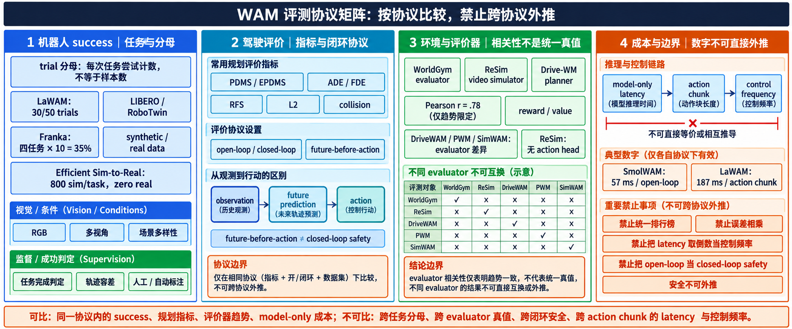
全部细节
图像 ID：F-evaluation-protocol-matrix；PNG、native receipt 和逐图中文说明由当前任务 accepted manifest 绑定。
图像身份：F-evaluation-protocol-matrix；审校时间：2026-10-31T23:15:52.838444+00:00；尺寸：1942×809；SHA-256：79d1436ef6afdc42b222b43f87bc01a4dafd069856ea715f752a036e7c2d9ba4。原生回执（此附件保存在完整本地归档中）。
自动驾驶 · 核心论文
R5-025：SimWAM GRPO 奖励入口、PDM 与 Waymo RFS 契约
状态
- 标准闭卷标签：
C_weak（冻结，不因本补充升级）。 - 历史分数：{"基线": "79/119", "r4_disclosed": "40/40", "r5_blind": "39/40"}。
- 本补充状态：
supplemental_static_source_closes_shape_and_failure_details。 - 证据层：固定源码/论文静态阅读；没有运行目标仓库、训练、推理或评测基准。
中文解释
标准 R5 闭卷材料的边界必须保留：它确认实际运行是动作 GRPO、奖励可选 NAVSIM PDM 或 Waymo RFS、IL warm start 可配置；PDM 的 [N,3] 自车坐标系轨迹与 40 个 0.1s proposal 属于 PDM；另一个仅生成动作 evaluator 的 2D/20 XY/+0.25s…+5s 不能冒充 RFS 奖励。补读固定 SimWAM 源码后，可以把“未知”细化为“旧题包未提供、源码现已闭合”：RFS 奖励实现要求输入 [M,20,2]，对应 Waymo 原生 4 Hz、5 s、20 XY 点；参考轨迹缺失、形状错误、NaN 或词元缺失都会抛出错误，不使用 PDM 的 0.0 failure fallback。
PDM 路径 score 要求单条 [N,3] 自车坐标系 pose，构造 0.5 s model 轨迹并交给 4 s/0.1 s 的 proposal simulator；missing 缓存或 simulator exception 会记 failure 并返回 failure_reward=0.0，同时保存 fail fraction 与独立的 reported PDMS。PDM 奖励的 progress/TTC/comfort 权重（代码注释给出训练 (10,5,2)）与 reported 指标 (5,5,2) 分离。
Waymo GRPO trainer 强制 evaluation_mode=action_only、num_frames=1、normalize_action=true，GRPO 数据配置说明是 479 条 scored-reference validation rows，并沿用 333,537 训练样本的归一化 stats；这是真实 fixed 配置的 supplemental evidence，但不改变旧 R5 39/40 或 R5-025 C_weak。
精确来源
04_repositories/simwam/1433ee7e06a62bd8b89da74455df0d82bda7b726/src/simwam/runtime_grpo.py:run_grpo_training:96-156：动作目标、IL 检查点、奖励选择器与 trainer。04_repositories/simwam/1433ee7e06a62bd8b89da74455df0d82bda7b726/src/simwam/runtime_grpo.py:instantiate_reward/_build_action_reward:159-187：PDM/RFS 奖励 class selection。04_repositories/simwam/1433ee7e06a62bd8b89da74455df0d82bda7b726/src/simwam/datasets/navsim/pdm_reward.py:NavSimPDMReward.__init__/score:78-180：4s@0.1s proposal、[N,3] pose 与奖励/指标分离。04_repositories/simwam/1433ee7e06a62bd8b89da74455df0d82bda7b726/src/simwam/datasets/navsim/pdm_reward.py:NavSimPDMReward.score_batch:182-246：缓存/score failure 的 0.0 fallback 与 diagnostics。04_repositories/simwam/1433ee7e06a62bd8b89da74455df0d82bda7b726/src/simwam/datasets/waymo/rfs_reward.py:WaymoRFSReward:13-85：RFS [M,20,2]、参考词元与 invalid 输入行为。04_repositories/simwam/1433ee7e06a62bd8b89da74455df0d82bda7b726/src/simwam/datasets/waymo/waymo_dataset.py:WaymoVideoDataset.__init__/_load_rows:57-126,160-186：20×2、4Hz、5s、+0.25…+5s、XY-only。04_repositories/simwam/1433ee7e06a62bd8b89da74455df0d82bda7b726/src/simwam/trainer_waymo_grpo.py:WaymoGRPOTrainer.__init__:29-50：action_only/current-only/normalization 契约。04_repositories/simwam/1433ee7e06a62bd8b89da74455df0d82bda7b726/configs/data/waymo_grpo_val.yaml:waymo_grpo_val:1-15：479 scored-reference rows 与训练归一化 stats。04_repositories/simwam/1433ee7e06a62bd8b89da74455df0d82bda7b726/src/simwam/datasets/waymo/metrics.py:RFS_SETTINGS/score_waymo_predictions:17-24,44-117：official RFS 4Hz/5s settings 与指标形状。
边界
- 补充的静态源码证据不会升级历史闭卷分数或标准 C/F 状态。
- 没有运行 GRPO、加载真实检查点或重算论文表格；划分、随机种子、active run 和成功重跑仍不是本包结论。
- PDM 的 failure_reward=0.0 不能迁移到 RFS；RFS invalid 输入是 error 路径。
交付用途
本文件是 teaching-only 语义 closure，供 root 后续按 coverage slot 进入 canonical/reader；不得改写标准 C/F 回执。
纠偏补充：Waymo RFS 的坐标、单位与反归一化调用链（固定源码）
固定源码把 Waymo 动作契约写成 trajectory_mode="absolute" 的当前
ego XY：waymo_dataset.py:80-106 拒绝其他轨迹 mode，并将动作固定为
20 个 XY 点；waymo_dataset.py:176-186 要求原生 4 Hz、5 s、
+0.25,...,+5 s 的 [20,2] finite XY 数组。模型/IL 接口内部可以使用
归一化动作：WaymoVideoDataset.norm_traj 与 denorm_traj
(waymo_dataset.py:274-289) 使用 q1/q99 统计量把模型的 [-1,1] 坐标
映回原始轨迹；denorm_traj(z) = (z+1)*(q99-q1)/2 + q1。
trainer_grpo.py:378-395 在 _rollout 中先对最终去噪 chain 调用
train_dataset.denormalize_action，再把 abs_poses 传给奖励。
RFS 奖励接收的是已经反归一化的物理量 [M,20,2]，不是归一化词元：
rfs_reward.py:13-19,53-85 明确写出 physical-unit 形状，并说明这里
不再做归一化、除以 10、group averaging、heading 添加或插值；
invalid 形状、非 finite XY 或缺失词元参考直接报错。Waymo prediction
输出契约 prediction.py:41-60,85-96 将同一类结果标为
coordinate_frame="ego_at_anchor_x_forward_y_left"、trajectory_hz=4、
trajectory_horizon_s=5、action_dim=2，并标注 prediction_units="meters"。
因此本包对 RFS 的空间契约是：锚点当前 ego 原点，x 向前、y 向左，XY 以米计；
没有 heading 维，也不在 RFS 内插值或重新归一化。metrics.py:17-24,44-50
的 official settings 同样固定 4 Hz、5 s，并声明 predictions 不做 resampling。
这条反归一化—RFS 链与 PDM 仍须分开：PDM 的 [N,3] 是当前自车坐标系
x/y/heading pose，并由 simulator 以 4 s、0.1 s proposal 处理；它的
heading 和内部插值不能移植给 Waymo RFS 的 XY-only 输入。RFS 的 [M,20,2]
中的 M 只是候选/样本批次维度，不能改写成 PDM 的 N。
自动驾驶 · 核心论文
DriveVA 高密度科研图逐区逐箭头说明
一、输入与固定条件：从真实观测到可用上下文
箭头一从左到右：历史前视帧 O_l={F_{l-m+1},…,F_l} 指向 3D 因果视频 VAE，输出历史视觉潜变量 V_his；自车状态 q_l=(v_x,v_y) 指向状态 MLP，输出状态词元；可选高层语言 T 指向冻结 text 编码器，输出文本词元。三支箭头最后汇入固定条件块 X_cond=[S_l,V'_his] T 。必须在箭头旁写“条件块训练和推理都保持固定”，因为它和后面的加噪目标属于不同角色。V_j 的纸面形状是 h×w×c，论文没有给实际 h、w、c，因此图上只写符号，橙框标“潜变量实际尺寸未报告”。历史帧数量是输入缓冲长度，不应画成等量潜变量时间步；因果 VAE 只说明第一个潜变量不读取未来帧。
这一层的箭头表示在线可用的信息边界：历史帧和当前速度可以进入条件，未来帧只能作为训练目标。图中如果把未来图片放回条件侧，就会把离线标签误画成推理输入。VAE 的时间下采样还意味着原始帧数和潜变量步数不能直接一一对应。
这一段的教学箭头要让读者看到数据对象如何移动：帧先变成潜变量，速度先变成状态词元，文本先变成语言词元，三者在固定条件块汇合。条件块不被 flow 加噪，未来目标才被加噪，所以在线时只需历史帧和当前状态即可启动生成。图中不可把目标帧倒灌到输入，否则会把训练标签误画成推理观测。
二、共享目标与 flow：两个输出经过同一个去噪器
箭头二从固定条件与噪声目标共同指向 Unified DiT。目标块应明确写 Y_0^(l)=[V'{l+1},…,V'{l+n_pred},A_{l+1:l+K}]，其中动作词元每个对应 (x,y,yaw)。在图中央写公式 Y^(l,s)=(1-s)ε+sY_0^(l)，Ẏ^(l,s)=Y_0^(l)−ε，网络输出 v_hat_theta=f_theta([X_cond,Y^(l,s)],s|T)，损失是均方速度误差。给一个完整数值教学例：若某一标量目标 Y_0=6、噪声 ε=2、s=0.25，则 Y^(s)=3、目标速度=4；这只是解释 flow，不是论文测量值，旁边标“教学数值”。箭头必须从同一 Unified DiT 分成 Future Video Imagination 与 Future Trajectory，禁止画成“先完整视频、再调用独立逆动力学头”；论文的联合生成正是共享去噪路径。
这一层的关键是同一个速度场同时作用于视频和动作目标。文本通过交叉注意力注入，而不是和视觉动作词元简单拼接；这能保持时空序列紧凑。图中要让读者看到“同一噪声时间、同一 DiT、两个目标分支”，而不是两个独立的黑盒。
这里的核心不是“两个头各自预测”，而是两个目标共享同一个速度场。噪声逐渐变成数据时，视频空间和动作空间同时被约束；视频支路提供场景变化，动作支路提供自车位姿。箭头要从同一个模型框分叉到两个输出框，并在分叉处写共同去噪，避免读者误以为是级联系统。
三、训练、推理与 progressive continuation：时间协议分开画
训练箭头写 4 历史帧+8 未来帧、2 FPS、832×480，未来视频和动作标签共同监督目标块；推理箭头写“历史缓冲+噪声→2 步 flow sampling→短视频与轨迹”。输出视频和轨迹再沿实线箭头回到 next 片段，画出 existing 帧、next 片段、再下一片段的递归链，这就是 progressive 视频 continuation。必须区分论文已知机制与未报告运行时：论文没有说每个片段执行多少路点、多久重规划、下一次历史取真实帧还是生成帧、异常如何 reset。把这些内容放入橙色边界框，不能在图中创造控制器。训练流时间 s 从噪声到数据；车辆行驶的 2 FPS/4 s 是数据采样协议，两者不能用同一时间轴。
续写箭头表示短窗口可以链成更长滚动执行，但它没有自动变成完整控制回路。生成视频与轨迹的错误会在下一片段重新进入上下文；论文没有报告如何在错误累积时截断或重置，所以边界框必须与递归箭头相邻。
递归续写的下一步输入来自上一段的历史缓冲，长时一致性因此依赖缓存的真实性和错误处理。论文只给出递归机制，没有给出控制频率、重规划周期和 reset。把这些未决项画成橙色断开边，能够同时保留机制和恢复边界。
四、评估、数值和不可连的边界
NAVSIM 评估箭头从 Future Trajectory 指向 PDM scorer，写 NC=99.2、DAC=97.5、TTC=98.7、Comfort=100、EP=83.5、PDMS=90.9。另一条箭头从 Future Video 指向 DPVO，再指向“二维相似变换对齐→未来4 s平均L2”；旁边写“对齐会移除部分尺度/姿态差异，不能当绝对控制误差”。消融箭头分别写 Video Loss removal:90.9→71.4、2 sampling 步:90.9、因果掩码:90.1、Action Only:47.0；Action Only 与表 5 的 no-video-loss 不是同一配置，使用橙色断开线禁止合并。Dev10 表 10 只画辅助闭环小划分。评估指标不能连成安全保证，视觉一致性也不能连成模式选择正确；图 8 的 consistent-but-wrong 反例必须作为橙色边界。
三类评估回答不同问题：PDM 衡量规划指标，DPVO 衡量经对齐的视觉运动一致性，消融比较设计配置，Dev10 提供少量闭环检查。它们不能互相替代，也不能由图中一条箭头推导开放道路事故率。
评估区需要显示证据强弱的层次：主表是大规模 PDM 指标，DPVO 是独立视觉运动读出，消融是配置比较，Dev10 只有有限闭环样本。它们的箭头不能汇入一个安全结论框；内部视频轨迹一致也不代表选择了正确未来。
逐箭头审计补记：
逐箭头审计补记：第一条箭头的终点是固定条件块，不能继续穿过噪声层；第二条箭头从条件和噪声目标共同进入统一 DiT，视频箭头和动作箭头在同一个模型框内汇合后才分叉；第三条箭头从生成视频回到下一个历史窗口，代表递归续写而不是已经实现的车辆控制；第四条箭头分别进入 PDM、DPVO 和消融表，三者没有共同的安全标签。图面应把四个箭头的源节点和目标节点写在相邻矩形之间，禁止使用没有起点的弧线。
补充一致性说明：视频和轨迹一致性检查回答“是否表达同一未来”，PDM 回答“轨迹在评测基准上是否可行”，Dev10 回答“少量闭环是否有信号”。三者都不能单独回答真实道路长期安全；图中的橙色边界箭头必须阻止这种外推。
论文问题 ID 追溯入口（中文）
以下问题编号在原始 canonical 中公开过，当前读者版把它们迁移到中文追溯入口。编号、问题名称和来源边界保留，完整原始材料按问题台账回读。
DG-PQ-01：DrivingGPT 问题的来源边界
原问题标题为“drivinggpt-DG-PQ-01：DrivingGPT 的第 1 个论文疑问如何由公开源码核验？”。问题台账将其定位为论文的具体实现疑问；当前固定源码范围没有形成与该论文绑定的可运行实现，因此只能用论文原文和问题台账解释机制，不能借用邻近驾驶仓库补齐代码事实，也不能把静态论文结论写成运行结果。
追溯入口：05_analysis/full_reading/drivinggpt/paper_questions_for_code.md、08_validation/paperqa_review/；状态：来源边界/未执行。
DG-PQ-02：DrivingGPT 问题的来源边界
原问题标题为“drivinggpt-DG-PQ-02：DrivingGPT 的第 2 个论文疑问如何由公开源码核验？”。问题台账将其定位为论文的具体实现疑问；当前固定源码范围没有形成与该论文绑定的可运行实现，因此只能用论文原文和问题台账解释机制，不能借用邻近驾驶仓库补齐代码事实，也不能把静态论文结论写成运行结果。
追溯入口：05_analysis/full_reading/drivinggpt/paper_questions_for_code.md、08_validation/paperqa_review/；状态：来源边界/未执行。
DG-PQ-03：DrivingGPT 问题的来源边界
原问题标题为“drivinggpt-DG-PQ-03：DrivingGPT 的第 3 个论文疑问如何由公开源码核验？”。问题台账将其定位为论文的具体实现疑问；当前固定源码范围没有形成与该论文绑定的可运行实现，因此只能用论文原文和问题台账解释机制，不能借用邻近驾驶仓库补齐代码事实，也不能把静态论文结论写成运行结果。
追溯入口：05_analysis/full_reading/drivinggpt/paper_questions_for_code.md、08_validation/paperqa_review/；状态：来源边界/未执行。
DG-PQ-04：DrivingGPT 问题的来源边界
原问题标题为“drivinggpt-DG-PQ-04：DrivingGPT 的第 4 个论文疑问如何由公开源码核验？”。问题台账将其定位为论文的具体实现疑问；当前固定源码范围没有形成与该论文绑定的可运行实现，因此只能用论文原文和问题台账解释机制，不能借用邻近驾驶仓库补齐代码事实，也不能把静态论文结论写成运行结果。
追溯入口：05_analysis/full_reading/drivinggpt/paper_questions_for_code.md、08_validation/paperqa_review/；状态：来源边界/未执行。
DG-PQ-05：DrivingGPT 问题的来源边界
原问题标题为“drivinggpt-DG-PQ-05：DrivingGPT 的第 5 个论文疑问如何由公开源码核验？”。问题台账将其定位为论文的具体实现疑问；当前固定源码范围没有形成与该论文绑定的可运行实现，因此只能用论文原文和问题台账解释机制，不能借用邻近驾驶仓库补齐代码事实，也不能把静态论文结论写成运行结果。
追溯入口：05_analysis/full_reading/drivinggpt/paper_questions_for_code.md、08_validation/paperqa_review/；状态：来源边界/未执行。
DG-PQ-06：DrivingGPT 问题的来源边界
原问题标题为“drivinggpt-DG-PQ-06：DrivingGPT 的第 6 个论文疑问如何由公开源码核验？”。问题台账将其定位为论文的具体实现疑问；当前固定源码范围没有形成与该论文绑定的可运行实现，因此只能用论文原文和问题台账解释机制，不能借用邻近驾驶仓库补齐代码事实，也不能把静态论文结论写成运行结果。
追溯入口：05_analysis/full_reading/drivinggpt/paper_questions_for_code.md、08_validation/paperqa_review/；状态：来源边界/未执行。
DG-PQ-07：DrivingGPT 问题的来源边界
原问题标题为“drivinggpt-DG-PQ-07：DrivingGPT 的第 7 个论文疑问如何由公开源码核验？”。问题台账将其定位为论文的具体实现疑问；当前固定源码范围没有形成与该论文绑定的可运行实现，因此只能用论文原文和问题台账解释机制，不能借用邻近驾驶仓库补齐代码事实，也不能把静态论文结论写成运行结果。
追溯入口：05_analysis/full_reading/drivinggpt/paper_questions_for_code.md、08_validation/paperqa_review/；状态：来源边界/未执行。
DG-PQ-08：DrivingGPT 问题的来源边界
原问题标题为“drivinggpt-DG-PQ-08：DrivingGPT 的第 8 个论文疑问如何由公开源码核验？”。问题台账将其定位为论文的具体实现疑问；当前固定源码范围没有形成与该论文绑定的可运行实现，因此只能用论文原文和问题台账解释机制，不能借用邻近驾驶仓库补齐代码事实，也不能把静态论文结论写成运行结果。
追溯入口：05_analysis/full_reading/drivinggpt/paper_questions_for_code.md、08_validation/paperqa_review/；状态：来源边界/未执行。
DG-PQ-09：DrivingGPT 问题的来源边界
原问题标题为“drivinggpt-DG-PQ-09：DrivingGPT 的第 9 个论文疑问如何由公开源码核验？”。问题台账将其定位为论文的具体实现疑问；当前固定源码范围没有形成与该论文绑定的可运行实现，因此只能用论文原文和问题台账解释机制，不能借用邻近驾驶仓库补齐代码事实，也不能把静态论文结论写成运行结果。
追溯入口：05_analysis/full_reading/drivinggpt/paper_questions_for_code.md、08_validation/paperqa_review/；状态：来源边界/未执行。
DG-PQ-10：DrivingGPT 问题的来源边界
原问题标题为“drivinggpt-DG-PQ-10：DrivingGPT 的第 10 个论文疑问如何由公开源码核验？”。问题台账将其定位为论文的具体实现疑问；当前固定源码范围没有形成与该论文绑定的可运行实现，因此只能用论文原文和问题台账解释机制，不能借用邻近驾驶仓库补齐代码事实，也不能把静态论文结论写成运行结果。
追溯入口：05_analysis/full_reading/drivinggpt/paper_questions_for_code.md、08_validation/paperqa_review/；状态：来源边界/未执行。
DG-PQ-11：DrivingGPT 问题的来源边界
原问题标题为“drivinggpt-DG-PQ-11：DrivingGPT 的第 11 个论文疑问如何由公开源码核验？”。问题台账将其定位为论文的具体实现疑问；当前固定源码范围没有形成与该论文绑定的可运行实现，因此只能用论文原文和问题台账解释机制，不能借用邻近驾驶仓库补齐代码事实，也不能把静态论文结论写成运行结果。
追溯入口：05_analysis/full_reading/drivinggpt/paper_questions_for_code.md、08_validation/paperqa_review/；状态：来源边界/未执行。
DG-PQ-12：DrivingGPT 问题的来源边界
原问题标题为“drivinggpt-DG-PQ-12：DrivingGPT 的第 12 个论文疑问如何由公开源码核验？”。问题台账将其定位为论文的具体实现疑问；当前固定源码范围没有形成与该论文绑定的可运行实现，因此只能用论文原文和问题台账解释机制，不能借用邻近驾驶仓库补齐代码事实，也不能把静态论文结论写成运行结果。
追溯入口：05_analysis/full_reading/drivinggpt/paper_questions_for_code.md、08_validation/paperqa_review/；状态：来源边界/未执行。
DriveWAM 与 PWM 的源码机制追溯补充
DRIVE-M-DW-01：DriveWAM 的动作归一化、分块与视频条件
DriveWAM 的 NavSim 数据入口把每一步动作写成 ((dx,dy,dheading))，初始上一姿态为 ([0,0,0])。每个通道按 q01/q99 线性映射到 ([-1,1])，分母用 (1e{-6}) 防止退化；动作张量只取前 3 个通道，再排成 ([action_dim,chunk_count,chunk_steps,1])。默认是 2 个 chunk、每个 8 步，未来轨迹为 8 步：第 0 个 chunk 是全零条件，第 1 个 chunk 是未来动作。推理时取第 1 个 chunk，按 ((a+1)/2\times(q99-q01)+q01) 反变换，再累加 8 个增量得到 ego-local 的 ([8,3]) 轨迹。
训练前向把带噪视频/动作和干净条件分成独立字段，transformer 同时接收两类视频与动作并预测两条分支，固定源码中没有 detach。推理先写入干净首帧和零动作条件，逐步生成未来视频并缓存最后一帧，再采样动作 chunk；动作分支读取生成视频的 KV，而评估器没有把 teacher-forced 干净未来视频塞回动作分支。PhysicalAI 使用不同的数据窗口和评估口径，跨数据集 ADE/FDE 不能由同一函数直接推出；论文 checkpoint、数据清单和运行结果仍需独立 receipt。
追溯入口：05_analysis/full_reading/drivewam/paper_questions_for_code.md 与固定源码问题映射 05_analysis/code_audits/driving/joint_analysis/paper_questions_to_code_v3.jsonl；上述结论来自静态源码读取，未执行训练、推理或指标重算。
DRIVE-M-DW-02：提示词缓存与路线分类边界
固定源码能证明 prompt 编码和缓存：NavSim 的 _encode_prompt 按完全相同的字符串复用 embedding，命令由数据集先物化；PhysicalAI 为每个 clip prompt 编码并缓存。因此可以确认 exact-string embedding reuse 和分块 prompt routing，但没有发现 Qwen 监督目标掩码，也没有独立的 prompt-equivalence validator，不能把这些静态入口写成训练/评估文件完全一致的证明。
路线分类先计算 (R_{start}^{T}R_{end})，再用 atan2(R_rel[1,0],R_rel[0,0]) 得到角度，源码没有 unwrap。时间窗包含 (t\ge t_0) 且 (t<t_1+1e{-6})，使用窗口内首尾样本；yaw (ge+15^circ) 判为左转，yaw (le-15^circ) 判为右转，其余为直行，空窗口返回 None 并由 worker 跳过。±15° 是包含边界，上端时间边界带有 (1e{-6}) 容差。
DRIVE-M-DW-03：SelectiveKV 的逐层容量与相关性分数
SelectiveKV 在每个 attention layer 内计算相关性。GQA 把 query head 分成 KV-head 组，组内取最大值；对 KV token 做 softmax、对 query 位置求均值，再做 max-pool 7。冗余项对 key 做 cosine 归一化，范数保护为 (1e{-8})，把对角线置零但仍把这个零自相似项纳入平均，随后在 token 维做 softmax。组合分数是 (0.07\times relevance-0.93\times redundancy)，最后在 KV head 上平均；没有跨层聚合，也没有 cosine 截断。每层局部池驱逐最低分 token，默认策略仍是 LRU。
模型为每个 attention layer 分别建立 video pool 和 action pool。NavSim 的 attn_window=30 对应每层 15 个 video chunk 与 15 个 action chunk；PhysicalAI 的 attn_window=24 对应 12+12。容量按 window×latent_tokens_per_chunk 和 window×action_tokens_per_chunk 独立分配给每个 Transformer block，并非全局共享缓存。Wan 的 rotary embedding 来自完整网格 ID，frame/chunk mask 使用另一套 ID；二者不能混写成同一个位置编码。
DRIVE-M-PWM-01：双 VQ 分支与条件编码位置
PWM 的 context (Q_h) 和 dynamic (Q_l) 是两个独立的 MAGVITv2 实例，各自拥有 LFQuantizer。量化器使用确定性的 (2^{13}=8192) sign-vector codebook，作为 buffer 注册而不是可训练的最近邻 embedding；每个 13 维 latent 被量化到 plus_or_minus_1，直通形式为 (z_q=z+(sign(z)-z).detach())。commitment 项由两个均方项组成，(beta=0.25)，再乘 (0.1)；熵差项也乘 (0.1)。两个 quantizer 独立调用，dynamic 整数 ID 先加 num_vq_embeddings 偏移，再叠加文本词表偏移。
当前 tokenizer 是 modeling_magvitv2.py 中的 ConditionalVQGANEncoder/Decoder，不是 conditional_vae.py 的备用 ConditionalEncoder。context encoder 输出的 pre-quantization cond_features 直接重复/reshape 后送进 dynamic encoder，没有 detach。符合下采样条件的位置先后经过 self-attention、CxAttnBlock、self-attention；输入 (256\times448) 时，encoder 的两个条件位置为 (16\times28)，decoder 先在 (16\times28)，再到 (32\times56)。
DRIVE-M-PWM-02：提示掩码、DFL 分母与轨迹损失
非图像 token 的 mask 从下三角开始；每个 context/dynamic image block 内的行被覆盖为可读取该 block 结束前的全部 key，因此块内双向、块间因果。padding 列会被抑制，但 padding query 行并没有按注释全部清零。调用者把 mask_future_ratio 设为 None 时，后面的 action query 仍可看到之前的未来输入 block；加性 mask 使用允许值 0 和禁止值的整数最小值，并转成模型 dtype。
DFL 先计算 reduction=none 的交叉熵，ignore_index=-100 的位置为零；同一视频位置的 label 与输入 ID 相等时乘 (beta)，变化位置乘 (alpha)，最后除以所有展平位置数，而不是权重和或有效 label 数。默认 (alpha=1,beta=0.4)；NavSim 总损失为 (0.3\times video+1\times trajectory)，不含 QA，nuScenes 还加入 qa_coeff×QA。轨迹 L1 的默认均值覆盖 batch、waypoint 和坐标，nuScenes 是 (6\times2)，NavSim 是 (8\times3)。完整无动作预训练的任务比例和运行入口没有在固定源码中闭合。
DRIVE-M-PWM-03：动作 query 的真实未来输入与共享梯度
训练时 action query 读取由 GT 得到的视频 input ID，并有一帧偏移，不是读取生成的未来 ID。DatasetNavsim 先拼接两个 observation，再丢掉一个 history dynamic frame，得到当前帧加未来帧；tokenizer 对所有帧量化后，dynamic input 去掉最后一块，label 去掉第一块。navsim_prompt 把这些由 GT 得到的当前/先前未来 block 放在 action placeholder 之前。最后 8 个 learned action query 可以读取此前所有输入，包括可用范围内的 GT future；最终目标帧不在这些输入中。
轨迹 L1 会对 action MLP、共享 Phi 的 attention/hidden state、前置视频 token 表示和可训练 embedding 求梯度；last-8/last-6 hidden state 到 action_forward 之间没有 detach。训练没有 autoregressive argmax 循环，因此不会对采样 argmax 求梯度；冻结的 tokenizer 在 no_grad 下也不接收 L1 梯度。action loss 不直接消费 video logits/lm_head，而是与 video CE 共享 hidden state 的两个 sibling head，所以耦合更新的是共享的未来预测表示与参数，不是采样出来的未来像素/token。
追溯入口仍是固定 commit 的 PWM 问题映射；完整 pretraining task/data 比例和精确论文运行配置属于未闭合边界，不能由上述静态函数补写。
重要相关论文与方法演化
补齐核心论文依赖的方法背景、直接前序、不同接口和反例。
重要相关论文
Drive-WM（Driving into the Future）完整深读
当前正式机制图与完整图解：F-related-2311.17918v1
全部细节
这是论文原文图表或页图；具体版本、页码和裁剪信息见邻近中文说明。
图像身份：F-related-2311.17918v1；审校时间：2026-10-31T23:40:18.492051+00:00；尺寸：1672×941；SHA-256：8670e7fe963072ef72493c00cfea6bf7b1ccbe12ae7c0efe058fbaf41e928b5b。原生回执（此附件保存在完整本地归档中）。
重要相关论文
Drive-WM：多视角未来生成、动作评估与树式规划图稿说明与来源边界
图的目的
这张图只承担一项任务：把论文的主要机制、训练/推理路径、实验量纲和不能推出的结论放到同一张可审计的中文框架图中。图面分成四个等权分区。左上分区展示输入与条件，右上分区展示主模型机制和公式方向，左下分区展示动作、规划或监督如何使用输出，右下分区展示实验协议、指标与边界。颜色只表示语义：蓝色用于视觉/条件，青色用于动作/规划，绿色用于监督，橙色用于边界。箭头必须是单向实线，表示论文中确实存在的条件、预测或评价方向。
四个分区的讲解
分区1：输入与条件。 这里放论文真正输入，不把隐含状态、代码参数或未报告的传感器补到图中。条件模块应显示历史帧、多视角、初始观察、语言、布局、动作、proprioception 或查询接口的实际角色。若论文使用的是模型预测 geometry、潜在动作或生成的帧，应标为“预测/潜变量”，不能标为真实物理状态。读者从这里沿蓝色箭头进入主机制，先理解输入协议，再看模型如何处理。
分区2：主机制。 这里按 TeX 原文的顺序画出编码器、因果/temporal layer、diffusion/flow 输出头、adapter、潜在动作、GFM 划分、world 输出头或多视角 factorization。公式只保留能区分方法的方向和变量，例如噪声路径、融合方向、KL 瓶颈、划分 layer、未来词元的条件关系。公式的正负号、噪声方向、动作和状态的语义必须与 facts.json 的 source span 一致。若有两个并行输出头，应画两条并行路径，而不是把它们合并成一个未定义的“统一控制器”。
分区3：动作、规划与监督。 这里说明模型输出怎样进入动作、树式滚动执行、MPC/CEM、策略 steering、VLM 奖励或评测基准。带数字的逻辑实例要作为解释性小框，清楚标出它是教学实例还是论文结果。论文结果必须带数据集、分母或时间跨度；不能把一个视频质量数当作安全率，也不能把 model-only 延迟当成控制频率。动作、视觉监督、价值/奖励、未来 feature 之间的关系用不同颜色和箭头区分。
分区4：指标与边界。 这里放最容易被误读的协议限制。例如开环与闭环、screen 与 full、A100/GH200 与边缘设备、真实与生成视频、预测 geometry 与真实深度、VLM 奖励与真实成功、zero-shot 的具体域定义。橙色边界框必须写“不能推出”的内容，避免读者把论文主张扩成安全保证、通用 embodiment 迁移或普遍校准。对于本篇的状态 pass，如果是 fix，橙色区域必须显式提示正文 patch-plan。
技术细节与实例
必须在图面以短标签或数字小卡片保留以下细节：
- 700 训练 / 150 validation scenes；六路相机；900 段视频评测。
- KPM joint 45.8%→factorized 94.4%；FVD 122.7→116.6；FID 15.8→16.4。
- 规划表 3：tree Ours L2=0.80m、collision=0.26%；0.5m lateral-shift OOD collision=1.59%→0.91%（仍高于正常0.22%）。
- 逻辑实例：当前位置(10,3)，候选(10.8,2.6)编码为(0.8,-0.4)，这是二维位移，不是油门/转角。
这些细节来自当前锁定 PDF/TeX 的 source span，不代表把所有数字放在同一张表中比较。逻辑实例只用来帮助读者沿箭头理解变量含义，不能被误读为新增实验。
机制路径与证据边界补充
Drive-WM 的阅读顺序应从动作条件进入多视角未来生成，再进入候选动作的评价与树式搜索。历史观察和动作是条件，模型产生的是候选条件下的未来；这不能被画成已经执行动作以后测得的真实状态。跨视角一致性与时间一致性属于生成接口的约束，读者要沿着条件箭头看清哪些相机或时间位置已知，哪些仍待预测。生成质量和规划质量需要各自的评价入口，不能把视频指标直接写到动作成功率的格子里。
规划区要保留候选动作、预测未来、评价和选择的闭环关系。选择的是下一步或下一段应执行的动作，随后应由真实新观察重新接入；图中若只画一次未来生成，不能把它解释为任意长度的物理闭环保证。树分支与执行时间轴是两种不同维度，展开更多候选也不等于机器人或车辆真的同时经历了多个未来。
本篇与核心 WAM 的关系是动作可控世界生成和基于预测的规划前序，不能据此推定所有核心论文继承同一源码。图中的归属应分别标为世界预测、评价接口和规划选择；没有来源的策略头、价值真值或硬件控制器不要补入。论文结果需要同时保留数据集、动作协议与评估口径，避免将环境内结果扩成跨域安全结论。
读图时应执行一次完整的条件检查：先在输入区确认真实观察与模型预测的身份，再沿主干查看哪些量参加训练损失，最后在推理区查看动作、环境或评价器实际读到了哪些输出。训练目标中存在未来信息，不意味着推理可以读取真实未来；同理，模型预测未来也不能在图中被标成执行后的测量值。不同颜色只用于帮助追踪语义，真正的证据仍是下方逐条绑定的论文页码与源码位置。
图内的教学例子与论文实验必须使用不同标题。教学例子只说明条件依赖或指标定义，不能作为新实验加入结果表；论文结果则需要保留任务、分母、时间范围与评价方法。若来源没有报告多随机种子、控制时延或跨域试验，就在边界区保留这些空缺，不能靠把数字排得更密来暗示证据已经补齐。正文保留原有来源列表，新增说明仅解释这些来源允许怎样阅读图，不产生新的实验事实。
正式图完成后需要逐节点核对输入、预测、监督、动作与评价五类角色，再逐箭头核对依赖方向。训练和推理可以共用模块但不能共用未经说明的可见信息；评价器和策略可以相互调用但不能合并职责。只有图片、详细说明与逐条来源都保持一致，这张图才可以进入正式图组；当前文本扩写本身不构成图片生成或科学视觉验收。
来源与 SHA-256
DWM-F01：PDF pp.3-5；PDF05_analysis/deep_research/phase3_deep_dive/papers/driving-into-the-future-multiview-visual-forecasting-and-planning-with/2311.17918v1/paper.pdfSHA-25636429b27469fe1d90c67841efd262bf2cee6d7a988dc1edcbda893c342c8a96e；TeX05_analysis/deep_research/phase3_deep_dive/papers/driving-into-the-future-multiview-visual-forecasting-and-planning-with/2311.17918v1/tex_source/text/3_method.texSHA-256ffb2f10b6b4462afeaf9190c25eb98b5e162fc3b85e2419b82cae5208303371a，行L16-L23; L70-L79。原文短引：z_tau=alpha_tau z+sigma_tau epsilon；参考→stitched factorization p(x_r|x_pre)p(x_s|x_r,x_pre)。DWM-F02：PDF p.5-6；PDF05_analysis/deep_research/phase3_deep_dive/papers/driving-into-the-future-multiview-visual-forecasting-and-planning-with/2311.17918v1/paper.pdfSHA-25636429b27469fe1d90c67841efd262bf2cee6d7a988dc1edcbda893c342c8a96e；TeX05_analysis/deep_research/phase3_deep_dive/papers/driving-into-the-future-multiview-visual-forecasting-and-planning-with/2311.17918v1/tex_source/text/3_method.texSHA-256ffb2f10b6b4462afeaf9190c25eb98b5e162fc3b85e2419b82cae5208303371a，行L89-L118; L131-L160。原文短引：条件包括初始图像、参考 views、3D boxes、HD map、BEV、文本和二维 ego 动作；树式滚动执行后用 map/object 奖励选枝。DWM-F03：PDF p.7；PDF05_analysis/deep_research/phase3_deep_dive/papers/driving-into-the-future-multiview-visual-forecasting-and-planning-with/2311.17918v1/paper.pdfSHA-25636429b27469fe1d90c67841efd262bf2cee6d7a988dc1edcbda893c342c8a96e；TeX05_analysis/deep_research/phase3_deep_dive/papers/driving-into-the-future-multiview-visual-forecasting-and-planning-with/2311.17918v1/tex_source/text/4_experiment.texSHA-256223973b35fa51dd9fb98e4e0553e835459c106835e0e6d67d0799f614b20ba01，行L6-L16; L90-L115。原文短引：FID/FVD 与规划/OOD 表格是不同评价层；树式规划和 0.5m 横向偏移属于开环 protocol。DWM-F04：PDF pp.18-20；PDF05_analysis/deep_research/phase3_deep_dive/papers/driving-into-the-future-multiview-visual-forecasting-and-planning-with/2311.17918v1/paper.pdfSHA-25636429b27469fe1d90c67841efd262bf2cee6d7a988dc1edcbda893c342c8a96e；TeX05_analysis/deep_research/phase3_deep_dive/papers/driving-into-the-future-multiview-visual-forecasting-and-planning-with/2311.17918v1/tex_source/text/6_appendix.texSHA-25660860720fd15f20c3ca3e7a9798a27fc1442d037263df6351e72de635cc62e76，行L97-L121; L183-L213。原文短引：GPT-4V 水坑奖励、700/150 scenes、900 视频 segments、32x11 重采样与 KPM 需单独标注协议。
关系类型与边界
视觉真实性、KPM 或奖励选枝不等于闭环安全；候选数、树深、端到端延迟和奖励校准未报告。
该图合同不声明图片已生成或视觉验收已通过；它只冻结本篇正式图应包含的事实、结构、颜色和禁止项。任何未来生成候选都必须逐节点核对箭头方向、公式、数字、模块归属和橙色边界。
正式图卡：Drive-WM 多视角未来生成、动作评估与树式规划
- 图解重点：六路相机、3D boxes、HD map、BEV segmentation、文本天气、历史条件和二维 ego 动作汇聚为条件词元；扩散去噪、潜变量/动作 adapter 和六视角 stitched 未来分开呈现。
- 规划链：候选动作 → 多步未来滚动执行 → map/object 奖励 → Top-K 选枝 → 表 3 规划输出；保留 700 训练/150 validation、900 段视频评测、KPM 45.8%→94.4%、FVD/FID、0.5m lateral-shift OOD 等数字。
- 证据边界：视觉真实性、KPM 或奖励选枝不等于闭环安全；候选数、树深、端到端延迟和奖励校准未报告，图中明确开环 OOD 与来源边界。
- 来源与原生来源记录见 图详解（此附件保存在完整本地归档中） 与 回执（此附件保存在完整本地归档中）。
阅读对象与问题
本文是 2023-11-29 的 arXiv v1，20 页，研究目标是让自动驾驶世界模型同时承担视觉预测和规划反馈。读者需要先区分三件事：Drive-WM 的主体是多视角视频生成器；规划实验是在其上搭建的树式滚动执行；“提升安全”是开放环实验结论，不能被写成已经证明的闭环安全保证。本文的核心问题是：在只用真实驾驶轨迹训练的端到端规划器遇到 ego 横向偏离、罕见天气或不可向量化障碍时，能否先生成多个动作条件未来，再用未来的风险反馈选择轨迹。
1. 动机、假设与问题边界
论文从一个具体 OOD 现象开始：把 ego 位置从车道中心向右移动 0.5 m 后，VAD 规划器会给出不合理轨迹（PDF p.2 图 2）。作者将问题拆成三个技术瓶颈。第一，高分辨率像素空间必须表达路面水坑、行人和建筑细节；只预测低分辨率图像或向量状态会丢掉非向量化事件，并引入额外感知标注和估计噪声。第二，六路环视相机的重叠区域需要严格一致，单视角视频或多视角静态图都不够。第三，天气、光照、3D布局、BEV、文本和 ego 动作等异构条件不能为每一种输入分别设计一套接口。
隐含假设是：真实驾驶数据中的视觉世界分布足以训练一个条件生成器；相邻相机重叠可以通过条件生成修补；规划器给出的候选轨迹可以被转换成每帧动作；感知模型或 GPT-4V 能把生成未来映射为奖励。论文没有给出对生成模型误差、感知器误检或奖励模型偏差的概率安全界限，也没有在线真车闭环实验。因此，最强可证结论是“在 nuScenes/Waymo 的离线生成与开环规划设置中，未来评估能改善指标”，不是任意道路场景的安全保证。
2. 模型地图：从联合多视角到因子化生成
数据张量为 ，其中 是时间长度、 是相机视角。VAE 编码后得到 ，扩散输入为 ，。去噪网络 把空间参数 、时间参数 和多视角参数 分开，训练目标是预测噪声的去噪 score matching：
这不是一个自回归词元模型，而是以图像扩散主干为底座插入时间和视角层。Temporal layer 先沿 重排，再用 3D 卷积和沿时间的自注意力建模运动；multiview layer 再把 ，沿相机维度自注意力，使不同视角交换信息。训练上先用单帧多条件训练图像扩散模型，再冻结 ，仅用视频微调 （PDF p.3, TeX text/3_method.tex）。这解释了为何作者可以借用成熟图像生成先验，同时把视频一致性作为增量模块学习。
只做联合建模仍不能保证相邻视角重叠区域严格相同。论文把视角划成参考 和 stitched 。nuScenes 例子选 F、BL、BR 为参考，FL、B、FR 为 stitched。完整自回归分解 太慢，于是简化为
并加入过去视频上下文 ：
推理先用联合模型生成三路参考，再逐路生成 stitched view，每一路读取相邻参考和该视角上一帧。PDF p.4 图 3/4 的图示清楚表明，因子化是对重叠区域的一种条件重建机制，而不是把所有相机完全独立。
3. 统一条件接口与动作语义
作者把初始图像/参考视角、3D boxes/HD map/BEV segmentation、文本和动作都编码为同一维度 的词元。图像通过 ConvNeXt 展平为 ；布局投影成 ；文本由 CLIP 得到 ；动作使用 MLP 映射。动作条件是每帧 ego 位置增量 ，不是车辆绝对位姿或控制器油门刹车。统一条件写为
然后在 3D UNet 中以 frame-wise cross attention 与潜变量 交互（PDF p.5, Eq.5）。这个接口的价值在于相同主干可以按请求切换 weather、layout、动作或参考 view；代价是不同条件的尺度、噪声和语义对齐没有单独的理论保证。
4. 规划闭环：模型输出如何进入决策
规划器先从真实多视角图像采样候选轨迹。对每个时刻，动作定义为 。Drive-WM 生成各候选的未来视频，随后使用 image-based 奖励评价。向量奖励由 map 奖励和 object 奖励相乘：map 奖励包含离路缘距离与车道中心一致性，object 奖励约束与其他道路使用者的纵向/横向距离。树式滚动执行每隔一个规划节点生成未来、评分、保留最优枝，再推进到下一时刻（PDF p.6 图 5）。附录还尝试 GPT-4V 对水坑等不可向量化危险给整体奖励，但这依赖外部多模态模型的主观评分，不能与几何碰撞指标混为一谈。
这种设计的关键是“先想象再评估”，而非直接用生成视频作为控制输出。它需要动作可控性、未来视觉真实性和奖励可校准性同时成立；论文实验没有量化三者的独立错误传播。
5. 实验、数字与图表核对
nuScenes 使用 700 个训练场景、150 个验证场景，六路相机，图像从 1600×900 裁剪并缩放到 384×192；基础图像模型使用 Stable Diffusion，A40 GPU。表 1（PDF p.7）在多视角图像/视频质量上报告：多视角图像 FID 12.99；视频 FID 15.8、FVD 122.7。控制指标中 Ours 的 object mAP 20.66、map mAP 37.68、foreground mIoU 27.19、background mIoU 65.07。表 2 的消融显示 temporal 嵌入与 layout 条件都有帮助；表 2(c) 的 factorized generation 将 KPM 从 joint modeling 的 45.8% 提升到 94.4%，FVD 从 122.7 降到 116.6，但 FID 从 15.8 变为 16.4，说明一致性和单帧视觉质量存在轻微权衡。
规划表 3（PDF p.7）比较三种 VAD command 与 Ours tree-based planner：Ours 的 L2 平均 0.80 m、collision 平均 0.26%，接近 GT command 的 0.72/0.22，明显优于 random command 的 1.02/0.93。表 4 把 map/object 奖励分开，联合奖励得到 0.80 m 与 0.26%，object-only 为 0.80 m/0.27%，map-only 为 0.85 m/0.39%。表 5 的 OOD 试验把 ego 横向移 0.5 m；无 world-model 微调的 collision 平均 1.59%，加入生成视频微调后降为 0.91%，仍高于正常分布 0.22%。这支持“生成数据可缓解一个人为构造 OOD”的说法，不能推出广泛 OOD 覆盖。
附录给出训练细节：单帧条件模型 60k iterations、batch 768、AdamW lr 1e-4；视频微调 40k iterations、batch 32、T=8、lr 5e-5；条件随机丢弃概率 20%；DDIM 50 步、、CFG=5.0。动作数据先切成 1048 clips，再在速度 [0,40] 10 量化区间与转向 [-150,150] 30 量化区间的 32×11 网格内每格抽 36 个，最终 7272 clips。FID/FVD 在 150 个验证场景、六视角拆成 900 段上计算，KPM 用 LoFTR 匹配当前视角与相邻视角重叠区域。
6. 图表视觉证据与局限
图 1 把规划过程画成 T、T+K、T+2K 的多候选未来和奖励决策；图 3 同时展示训练/推理、统一条件和概率图；图 4 说明 stitched view 依赖两个相邻参考；图 5 是真实图像→候选动作→生成未来→奖励→树扩展的序列。图 6 的上下行对比 factorized 与 joint 视频，图 7 用未见过的掉头/驶入不可行区域展示反事实，图 8–10 展示多未来、普通/夜间/雨天，图 14–15 展示转向和速度控制，图 17 展示 GPT-4V 水坑评分，图 18 展示 OOD planner，图 21 展示动作重采样。联系页图像可见，表 2/3/4/5 的数值与 TeX 一致，未发现坐标或图例缺失。
主要局限有五类：第一，训练数据主要是 nuScenes/Waymo 离线视频，规划只做开环指标；第二，生成像素的真实性不等于真实动力学真实性；第三，KPM 只测视角重叠匹配，不能测深度、速度和因果一致性；第四，GPT-4V 奖励的提示和随机性未充分报告；第五，0.5 m 偏移和有限天气组合不足以代表真实 OOD 分布。作者声称“first”属于时间截面的作者表述，本报告不把它当作独立事实。
7. 与 WAM 谱系的关系
Drive-WM 是较早把视觉世界模型与规划器树搜索接起来的自动驾驶先例。它的动作条件是连续二维位移，未来由像素扩散模型生成，规划通过外部奖励选枝。后续 DriveVA/DriveWAM/SimWAM 更强调视频—动作 joint representation 和 zero-shot/端到端驾驶；Epona 则把因果时间压缩到潜变量 MST，再用两个 diffusion 输出头处理轨迹和下一帧。Drive-WM 的因子化多视角视图和统一条件接口仍是后续模型可继承的结构，但它没有动作词元与视觉词元的联合噪声建模，也没有在论文中证明长时闭环误差的可控上界。
8. 待读代码问题
- Temporal/multiview layer 是否真的冻结 ，训练脚本如何指定？
- Reference/stitched view 的采样顺序、previous-frame 缓存和多视角 stitching 在代码中如何实现？
- 动作 的坐标系、缩放和帧率在哪里定义？
- CFG 条件丢弃是否对不同条件独立采样？
- tree 滚动执行的候选数、深度、奖励归一化和 tie-breaking 是否与论文图示一致？
- KPM 匹配点的阈值、重叠裁剪和 900 段采样是否在评估脚本固定？
- GPT-4V 奖励是否为作者实现的一部分，还是附录演示脚本？
教学结论
先把 Drive-WM 记成“三层结构”：空间/时间扩散骨干负责生成，参考→stitched 因子化负责跨视角一致，动作/布局/文本统一词元负责控制；最上层才是规划树和奖励。只有把四层证据分别核对，才不会把“生成器能画出合理视频”误读为“规划器已经安全”。
2410.12822v2
笔记：05_analysis\deep_research\phase3_deep_dive\notes\2410.12822v2\deep-reading.md；8309 字符 / 4029 中文字符；SHA-256 0e2df3f6d20f09e7468861f65a2eaf30908e2b9043640713d716c17552996741。
重要相关论文
AVID：在只能查询扩散输出时，把视频模型适配成动作条件世界模型
当前正式机制图与完整图解：F-related-2410.12822v2
全部细节
这是论文原文图表或页图；具体版本、页码和裁剪信息见邻近中文说明。
图像身份：F-related-2410.12822v2；审校时间：2026-10-31T19:15:34.655844+00:00；尺寸：1672×941；SHA-256：187cf5a215ff172faf6d4c4267cb8f5e3b7499dc78e0ff1b425efcdb99455df8。原生回执（此附件保存在完整本地归档中）。
重要相关论文
AVID：冻结视频模型输出、动作 adapter 与 learned 掩码图稿说明与来源边界
图的目的
这张图只承担一项任务：把论文的主要机制、训练/推理路径、实验量纲和不能推出的结论放到同一张可审计的中文框架图中。图面分成四个等权分区。左上分区展示输入与条件，右上分区展示主模型机制和公式方向，左下分区展示动作、规划或监督如何使用输出，右下分区展示实验协议、指标与边界。颜色只表示语义：蓝色用于视觉/条件，青色用于动作/规划，绿色用于监督，橙色用于边界。箭头必须是单向实线，表示论文中确实存在的条件、预测或评价方向。
四个分区的讲解
分区1：输入与条件。 这里放论文真正输入，不把隐含状态、代码参数或未报告的传感器补到图中。条件模块应显示历史帧、多视角、初始观察、语言、布局、动作、proprioception 或查询接口的实际角色。若论文使用的是模型预测 geometry、潜在动作或生成的帧，应标为“预测/潜变量”，不能标为真实物理状态。读者从这里沿蓝色箭头进入主机制，先理解输入协议，再看模型如何处理。
分区2：主机制。 这里按 TeX 原文的顺序画出编码器、因果/temporal layer、diffusion/flow 输出头、adapter、潜在动作、GFM 划分、world 输出头或多视角 factorization。公式只保留能区分方法的方向和变量，例如噪声路径、融合方向、KL 瓶颈、划分 layer、未来词元的条件关系。公式的正负号、噪声方向、动作和状态的语义必须与 facts.json 的 source span 一致。若有两个并行输出头，应画两条并行路径，而不是把它们合并成一个未定义的“统一控制器”。
分区3：动作、规划与监督。 这里说明模型输出怎样进入动作、树式滚动执行、MPC/CEM、策略 steering、VLM 奖励或评测基准。带数字的逻辑实例要作为解释性小框，清楚标出它是教学实例还是论文结果。论文结果必须带数据集、分母或时间跨度；不能把一个视频质量数当作安全率，也不能把 model-only 延迟当成控制频率。动作、视觉监督、价值/奖励、未来 feature 之间的关系用不同颜色和箭头区分。
分区4：指标与边界。 这里放最容易被误读的协议限制。例如开环与闭环、screen 与 full、A100/GH200 与边缘设备、真实与生成视频、预测 geometry 与真实深度、VLM 奖励与真实成功、zero-shot 的具体域定义。橙色边界框必须写“不能推出”的内容，避免读者把论文主张扩成安全保证、通用 embodiment 迁移或普遍校准。对于本篇的状态 fix，如果是 fix，橙色区域必须显式提示正文 patch-plan。
技术细节与实例
必须在图面以短标签或数字小卡片保留以下细节：
- 融合公式：m=1 更依赖预训练，m=0 更依赖 adapter；掩码是学习出的融合权重，不是 segmentation 真值。
- Coinrun 500k 22M：ratio=1.257、FVD=28.5；RT1 145M ratio=1.609；不同模型 budget/指标不能合并。
- 必须逐 diffusion step 查询 base 噪声 prediction，并需要潜变量 VAE；最终视频 API 不满足方法接口。
- 逻辑实例：若 generated-video MAE / real-video MAE=2，只表示回归误差为真实视频的两倍，不等价于“动作信息损失一半”。
这些细节来自当前锁定 PDF/TeX 的 source span，不代表把所有数字放在同一张表中比较。逻辑实例只用来帮助读者沿箭头理解变量含义，不能被误读为新增实验。
机制路径与证据边界补充
AVID 的核心是把预训练视频扩散模型适配为动作条件世界模拟器。预训练分支和动作适配分支分别给出噪声预测，再由学习得到的融合权重组合；图中必须保留两个分支、融合方向和训练目标的依赖关系。融合掩码是模型学到的权重，不能替换成语义分割真值，也不能解释为场景中某一块区域完全没有动态影响。
动作一致性需要动作回归器与真实视频基线共同定义。若生成视频的动作回归误差除以真实视频误差等于二，只能说该评价器在生成视频上的误差是基线的两倍；它不是信息量测量，也不能推出动作信息损失一半。教学例子应把分子、分母和评价器写清楚，数值关系才不会在压缩成短标签时变成另一项科学结论。
接口区还要说明适配过程逐扩散步访问基础模型噪声预测，并依赖潜变量编码与解码。只能返回最终视频的服务接口不自动满足这种调用要求。Coinrun 与机器人视频的训练预算、参数规模和指标属于不同实验行，应分别保留；视觉质量与动作一致性分别支持各自命题。AVID 提供模拟前序，不直接给出动作策略、价值规划或实体闭环部署证据。
读图时应执行一次完整的条件检查：先在输入区确认真实观察与模型预测的身份，再沿主干查看哪些量参加训练损失，最后在推理区查看动作、环境或评价器实际读到了哪些输出。训练目标中存在未来信息，不意味着推理可以读取真实未来；同理，模型预测未来也不能在图中被标成执行后的测量值。不同颜色只用于帮助追踪语义，真正的证据仍是下方逐条绑定的论文页码与源码位置。
图内的教学例子与论文实验必须使用不同标题。教学例子只说明条件依赖或指标定义，不能作为新实验加入结果表；论文结果则需要保留任务、分母、时间范围与评价方法。若来源没有报告多随机种子、控制时延或跨域试验，就在边界区保留这些空缺，不能靠把数字排得更密来暗示证据已经补齐。正文保留原有来源列表，新增说明仅解释这些来源允许怎样阅读图，不产生新的实验事实。
正式图完成后需要逐节点核对输入、预测、监督、动作与评价五类角色，再逐箭头核对依赖方向。训练和推理可以共用模块但不能共用未经说明的可见信息；评价器和策略可以相互调用但不能合并职责。只有图片、详细说明与逐条来源都保持一致，这张图才可以进入正式图组；当前文本扩写本身不构成图片生成或科学视觉验收。
来源与 SHA-256
AVI-F01：PDF pp.4-5；PDF05_analysis/deep_research/phase3_deep_dive/papers/avid-adapting-video-diffusion-models-to-world-models/2410.12822v2/paper.pdfSHA-256058dcfb796f2a29f09636292a4a15f4184ce563b5ab3cba3708b3800f7c851bc；TeX05_analysis/deep_research/phase3_deep_dive/papers/avid-adapting-video-diffusion-models-to-world-models/2410.12822v2/tex_source/tex/approach.texSHA-256f325887842af0fd157267b76f82cea22b4bd461d6bb86e4c4426aae96ff56e7d，行L55-L92。原文短引：epsilon_final=m⊙epsilon_pre+(1−m)⊙epsilon_adapt；adapter 损失在融合输出上优化。AVI-F02：PDF pp.5-10；PDF05_analysis/deep_research/phase3_deep_dive/papers/avid-adapting-video-diffusion-models-to-world-models/2410.12822v2/paper.pdfSHA-256058dcfb796f2a29f09636292a4a15f4184ce563b5ab3cba3708b3800f7c851bc；TeX05_analysis/deep_research/phase3_deep_dive/papers/avid-adapting-video-diffusion-models-to-world-models/2410.12822v2/tex_source/tex/experiments.texSHA-2565368882bc3888892a9b5aa2e34912bed8d985f360ae51dcc5f2f977f2d618992，行L3-L76; L391-L403。原文短引：Coinrun/RT1、held-out 1024 videos、Action Error Ratio/FVD/FID/SSIM/LPIPS/PSNR。AVI-F03：PDF pp.16-17；PDF05_analysis/deep_research/phase3_deep_dive/papers/avid-adapting-video-diffusion-models-to-world-models/2410.12822v2/paper.pdfSHA-256058dcfb796f2a29f09636292a4a15f4184ce563b5ab3cba3708b3800f7c851bc；TeX05_analysis/deep_research/phase3_deep_dive/papers/avid-adapting-video-diffusion-models-to-world-models/2410.12822v2/tex_source/tex/appendix.texSHA-2564ddfa95b79087dcb9d16a7e1d9416f609422e499615e7d9deec20f945b785a4e，行L336-L376; L381-L410。原文短引：7-day RT1 budget与100 GPU-day high-compute 基线必须分开。
关系类型与边界
AVID 是 action-conditioned 视频 simulator 前序，没有动作策略、价值规划或实体闭环部署；ratio 与视觉指标分开。
该图合同不声明图片已生成或视觉验收已通过；它只冻结本篇正式图应包含的事实、结构、颜色和禁止项。任何未来生成候选都必须逐节点核对箭头方向、公式、数字、模块归属和橙色边界。
正式图卡：AVID 冻结视频模型、动作 adapter 与 learned 掩码
- 图解重点：初始/历史视觉条件经潜变量 VAE 进入冻结预训练视频模型；RT1 7D 或 Coinrun 15 键动作嵌入经 3D UNet adapter 形成
epsilon_adapt，再由 sigmoid learned 掩码与epsilon_pre融合。 - 评估路径：生成的/real 视频分别回归动作并计算 MAE、Action Error Ratio 和 FVD/FID；ratio、视频指标、held-out 1024 和两种模型 budget 不能合并成同一分数。
- 证据边界：AVID 是 action-conditioned 视频 simulator 前序，未提供动作策略、价值规划或真实机器人闭环部署；图中明确不外推策略最优、规划能力和真实闭环安全。
- 来源与原生来源记录见 图详解（此附件保存在完整本地归档中） 与 回执（此附件保存在完整本地归档中）。
来源身份与阅读范围
阅读版本固定为 arXiv 2410.12822v2，PDF首页日期2024年11月24日，作者Marc Rigter、Tarun Gupta、Agrin Hilmkil、Chao Ma，单位Microsoft Research Cambridge。全文24页，正文1—10页、参考文献11—15页、附录16—24页。证据来自本任务重新下载的PDF、HTML和TeX，核心源文件为tex/approach.tex、tex/experiments.tex、tex/appendix.tex、tex/prelims.tex。本报告不读取源码仓库，不把模型实现推断说成运行观察。
本文的核心问题是访问权限受限时如何增加低级动作条件。输入是一段给定动作以及初始图像，输出是这些动作对应的未来视频。它没有训练机器人策略，也没有用预测世界完成闭环控制实验；“世界模型”在这里指动作条件视频模拟器。第一遍五项判断为：方法类别是扩散模型输出级adapter；背景是动作标签稀缺而视频先验丰富；正确性依据包括PoE偏差分析和受控预算实验；贡献是可学习掩码融合预训练输出与新adapter；清晰度较高，但收益依赖能逐步查询模型的中间预测，单纯的文字到视频API不满足这一接口。
问题背景与设计动机
预训练视频模型能生成视觉可信的运动，却不知道机器人末端应向哪里移动。自然语言有时能描述粗动作，但不能准确指定每一步七维控制，因而语言条件不能代替低级动作。常见做法是微调原模型或用ControlNet改变内部特征；两者要求访问权重或激活，在闭源服务中不可行。AVID采用更弱的访问假设：可以向模型提交当前噪声视频、扩散步和初始图像，取得该步的预测；不读取或修改预训练参数。
这仍然不是完全黑盒的视频生成。它要求模型暴露去噪过程中每一步的输出，潜变量模型还要提供VAE编码和解码接口。作者在实验中用开源模型模拟这种权限限制，并不是真的修改一个商业闭源服务。论文明确倡议服务提供商开放中间输出，说明接口假设是其适用边界之一。
设计直觉是保留预训练模型擅长的背景、纹理和物体外观，在动作相关区域纠正错误运动。一个小adapter既看当前噪声视频，也看预训练预测和初始帧；它输出自己的预测和空间时间掩码。掩码不是分割真值，不接受机器人区域标签，而是由最终去噪损失学习。因而“背景走旧模型、机器人走adapter”是可视化中的经验模式，不能写成预先硬编码规则。
扩散前置知识与PoE论证
论文用上标表示真实视频时间、下标表示扩散时间。视频为，动作序列，扩散噪声变量为。前向过程写成
在此式是整个干净视频，不能与第一帧混淆。score与噪声预测关系为。训练随机选视频、噪声和扩散步，最小化预测噪声与实际加入噪声之间的平方差。条件模型只是在预测函数中增加初始帧和动作。
前序Yang等人的PoE适配设目标密度与成比例，再把两个独立模型的score相加。AVID第3.2节指出，干净空间的乘积密度经过前向高斯卷积后，不等于分别卷积再相乘；卷积不分配于乘法。因此在任意正噪声时刻，目标score通常不等于两个各自扰动分布score之和。这解释了为何“两个好模型输出相加”并不自动采样正确的PoE分布。
这段分析证明的是一般情况下存在偏差，不是说任何score组合都没有实际价值，也没有证明AVID无偏。AVID绕开独立组合的概率要求，把预训练输出作为新adapter的输入，并直接以最终预测的去噪误差训练。最终结果是否正确由数据损失和实验衡量，而不是依靠PoE恒等式。
Adapter结构、参数与梯度
预训练模型接收，输出，参数冻结。adapter是3D UNet，每个时空block包含3D卷积、空间attention、时间attention以及残差连接。输入为噪声视频、预训练输出、重复T次的初始图像，沿channel拼成。动作离散时查嵌入表，连续时用linear；与diffusion-step 嵌入拼接后经MLP产生逐帧scale/shift，调制卷积后的特征。
adapter输出个通道：c通道预测，一个通道sigmoid 掩码。掩码在channel上广播，最终预测为
当m接近1，主要使用旧模型；m接近0，主要使用adapter。梯度进入adapter的预测和掩码两个头，旧模型只提供数值，不更新。一个掩码值控制同位置所有通道，适合空间区域选择，却不能单独选择某个潜变量通道的语义。潜变量 diffusion版本先VAE编码再执行同样流程，掩码在下采样8倍的潜变量格点上，所以图中灰色区域不是精确像素级机器人轮廓。
附录特别更正了正文的噪声参数化简写：Procgen/Coinrun实际预测干净视频x0，DynamiCrafter/RT1实际预测v-target。融合结构保持相同，但训练目标应跟随base模型；不能拿正文epsilon公式直接声称实验全部做噪声预测。所有非预训练小模型用相近UNet结构，参数数目由base channels、multipliers和attention维度控制。
一次完整的教学计算
以下数字为教学构造，不是论文结果。取一个位置的两通道预训练输出[0.8,0.2]，adapter输出[0.1,0.6]，m=0.25，则最终输出为[0.275,0.5]。如果目标为[0.3,0.4]，平方误差和为0.000625+0.01=0.010625。把掩码调成0.8后输出[0.66,0.28]，误差和变为0.144；在这个位置旧模型不合动作，因此梯度倾向降低掩码。若另一个背景位置旧输出已经贴近目标，掩码会向1移动。
对掩码的导数含，因此当二者预测完全相同时掩码不可识别；无论选谁损失都相同。这个边界说明掩码可视化不是唯一的因果分解。如果动作只影响被遮挡物体，真实视频没有可见变化，adapter也没有足够监督学习该动作后果。若初始一帧不足以确定速度，世界模型在POMDP下会产生多种合理未来；Coinrun实验实际用两张初始图像推断初始运动方向，正是对这个可观测性问题的处理。
数据、基线与实验控制
Procgen base在15个游戏、每个2000关×1000随机步上训练，共3000万帧，64×64；排除Coinrun。Coinrun adapter在100、500、2500关上采样10步窗，得到100k、500k、2.5M数据，15种离散按键。评测固定1024条10步视频，关卡10000—11000，与训练关卡分开。所有小adapter限制单A100三天。这个设置同时测试新游戏域和新关卡，但随机动作分布与目标策略分布不同，未展示策略 optimization。
RT1有87212集、378万步，七维连续动作表示末端平移、旋转、夹爪；95% episode训练（82851），5%测试（4361），取1024条16步评测。图像resize/pad到320×512，base是1.4B DynamiCrafter 潜变量视频模型，空语言提示。adapter训练预算四A100七天。表中11M、34M、145M是可训练adapter参数，不含仍需调用的1.4B冻结base；小参数不等于总推理开销小。
有权重基线包含全量动作微调、language 微调、ControlNet及缩小ControlNet；无权重基线包含同规模从头动作 diffusion、classifier 引导、PoE、动作 classifier-free 引导。guided方法用动作分类器或有/无动作两预测之差修正旧输出。它们的超参按最佳FVD挑选，非按Action Error Ratio挑选；这可能使动作一致性比较偏向视觉分布指标。AVID的主要比较目标是受限访问和固定预算，而非击败无限算力全量微调。
指标的含义和算术
FVD/FID测生成与真实分布特征距离；SSIM/PSNR/LPIPS测逐视频对齐，后一组更接近给定动作必须对应特定结果的任务。Action Error Ratio借助额外inverse model从视频恢复动作：Coinrun为真实动作分类准确率除生成准确率，RT1为生成动作MAE除真实动作MAE；都希望接近1或更低。它不是机器人执行成功率，依赖额外识别器能否泛化到生成画面。
教学例中识别器在真实视频准确率0.9、生成0.75，ratio=1.2；若另一生成视频画面更好但准确率0.6，ratio=1.5，说明视觉质量和动作一致性可分离。RT1真实MAE=.1、生成=.2，ratio=2。论文把六个指标按跨模型最优/最差线性归一化后平均，图4的一个分数因此依赖参与比较的模型集合，不是绝对物理质量量尺；不能把这张图跨论文比较。
主结果与图表解读
Coinrun500k的22M AVID为Action Error Ratio1.257、FVD28.5、FID8.07、SSIM.666、LPIPS.192、PSNR22.4；同规模动作 diffusion为1.500、41.6、8.95、.566、.284、18.7。71M AVID为1.154、23.1、7.33、.713、.161、23.8；ControlNet的视觉指标更强（FVD18.5、SSIM.758、PSNR25.5），但ratio1.418较差。说明受限访问adapter能维持动作一致性，不能声称每个视觉指标领先。
RT1的145M AVID为ratio1.609、FVD39.3、FID3.436、SSIM.842、LPIPS.142、PSNR25.3；从头145M 动作 diffusion的ratio1.384、FVD24.9更好，但SSIM.817、LPIPS.153、PSNR24.6较弱。34M/11M时AVID的逐帧质量优势更明显。全量1.4B 动作微调仍是最强或接近最强参照，这与论文不访问权重的约束一致。
Figure2/3把GT、AVID、从头小模型和掩码排列。视觉检查可见AVID保持背景物体，从头模型有物体消失或变形；Coinrun人物附近掩码变暗，背景较白；RT1静态背景掩码更白。Figure4d显示高噪声早期掩码较低、后期更高，作者解释adapter负责低频位置，base负责后期纹理。这个解释来自平均掩码和视觉模式，未做频率分解因果实验。
附录逐项覆盖与限制
附录A1补Coinrun100k和2.5M。100k71M AVID ratio1.222/FVD56.0，2.5M为1.158/14.5，数据增加主要改善视频分布质量；2.5M全量微调FVD12.0、PSNR26.6仍更好。A2无掩码在Coinrun71M略优于完整AVID，但RT1无maskratio1.769劣于1.609；因此掩码收益是域相关，论文自己称“条件化 on 预训练输出”比掩码更关键。A3把RT1预算提高到约100GPU-days，full 微调 FVD19.5接近/优于IRASim21.0，不能与七天小adapter直接等预算比较。
A4/A5给更多掩码和生成视频，A6固定初始帧改Forward/Upward/Right动作，直观看动作条件确实影响机器人方向。B1数据分割、B2 UNet/EMA/scheduler、B3 inverse 指标、B4 归一化、B5 基线 sweeps均已核读。Coinrun200步DDPM、x0 目标、EMA.995；RT1 50步DDIM、v-target、EMA.9995。文章没有正式算法伪代码，也没有下游规划或真实机器人部署成功率，不能以“世界模型”题名补造这些内容。
与后来的联合WAM的关系是问题上的前序：AVID研究给定动作如何预测视频，后续策略 WAM研究如何生成动作。没有证据显示核心六篇继承了AVID代码或掩码，故关系只能标为动作条件世界模型的相关方法，而非实现继承。最稳结论是：输出级条件adapter可在不改base权重的条件下借用视频先验，尤其在小模型预算下改善逐帧质量；动作一致性、视觉质量、访问接口和总计算成本必须分别评价。
逐图逐表复核
图 1 的结构图把冻结的预训练模型画成红色模块，把可训练 AVID adapter 画成蓝色模块。输入箭头包含噪声视频、初始图像和动作，预训练模块只输出噪声预测，adapter 再读这个预测并产生自己的噪声和掩码，最后通过逐元素融合得到最终噪声。图中的锁形标记代表冻结参数，不能把 adapter 的训练误写成“微调了视频模型”。
图 2 是 RT1 的定性对照。第一行真实视频、第二行 AVID、第三行从头 action-conditioned diffusion、第四行 DynamiCrafter。AVID行的末端执行器和物体相对位置更接近真实序列，而从头模型出现物体变形或轨迹偏移。这个图只展示若干视频，不能替代1024条测试轨迹的指标。图 3 是 Coinrun，白色掩码区域表示使用预训练输出，黑色区域更多依赖adapter；在游戏背景中，掩码保留天空和背景，而在角色运动附近变化更明显。
图 4 的四个小图分别比较 RT1 参数规模、Coinrun500k 参数规模、Coinrun 数据量和扩散步上的平均掩码。归一化性能均在各自候选模型的最小最大值之间计算，所以图中的0.8不是绝对成功率。RT1的掩码在反向扩散早期更依赖adapter或base的不同区域，作者解释为预训练模型负责背景和纹理、adapter负责动作相关低频；这属于从掩码和定性结果得到的解释，而不是频域实验。
表 1 中 Coinrun500k 的22M AVID动作误差比1.257、FVD28.5、FID8.07、SSIM.666、LPIPS.192、PSNR22.4；No Mask的动作误差比1.241略好、SSIM.675略好，但FVD28.6接近，No Conditioning的FVD33.7更差。71M AVID动作误差比1.154，视觉指标也明显提高。这个表说明掩码未必让每个指标都更优，但条件化对大多数视觉和动作指标有帮助。
表 2 的 RT1 中11M AVID动作误差比2.572，145M为1.609，说明扩大adapter显著降低动作不一致。ControlNet在某些SSIM/PSNR项更高，145M 动作 diffusion的动作误差比1.384更低；AVID的优势是无需访问冻结base参数，不应被写成全量微调在所有指标上都输。附录Table7把预算提高到约100 GPU-days后，1.4B action-conditioned 微调的FVD19.5接近或优于IRASim，进一步说明预算是重要条件。
指标和一个手算核对
Coinrun的Action Error Ratio定义为真实视频上的分类准确率除以生成视频上的分类准确率。假设真实视频分类准确率为0.9，AVID生成视频为0.72，则比值为1.25，与表中的1.257量级一致；比值越接近1越好。RT1则使用连续动作回归器，定义为生成视频动作MAE除以真实视频动作MAE。若真实MAE为0.1、生成视频MAE为0.2，则ratio=2，表示生成视频上的动作回归误差是真实视频的两倍；这不等于动作信息损失了50%。两种ratio方向相同，但分类与回归不能直接数值比较。
六个视觉指标的归一化也有边界。对于越大越好的PSNR、SSIM，用(value-min)/(max-min)；对于越小越好的FVD、FID、LPIPS，用1减去该比值。最小最大值只来自本实验候选模型，新增更强模型会改变所有归一化分数。图4c把不同数据量放在同一坐标上，是便于阅读的相对图，不是跨实验绝对质量。
AVID作为世界模型的适用边界
AVID输入整段动作序列，生成整段未来视频，因此它更像一次性动作条件模拟器，而不是已部署的低延迟控制策略。动作可以是Coinrun的15个离散键或RT1的7维连续末端控制；论文没有展示机器人根据AVID反复规划和执行的闭环实验。若需要把AVID用于规划，还要额外定义动作候选、滚动预测和真实状态回写，本文没有证据支持这些组件。
预训练模型的输出接口是另一条关键边界。模型提供商若只返回最终视频，不提供每个扩散步的噪声预测，AVID无法计算输入，也无法训练掩码。若只给最终图像但不给潜变量编码器/解码器，潜变量版本也不能复现。论文倡议开放中间输出，说明这个假设是方法成立的必要条件，而非工程便利。
动作条件的可辨识性也有限。对RT1，初始图像包含机器人和物体，但相同画面下不同动作可能产生短期相似画面；adapter必须利用动作嵌入与未来帧监督区分它们。如果动作变化在画面中不可见，例如夹爪施加不同力度但物体尚未移动，像素重建损失不会直接监督力的差异。AVID能生成视觉正确却控制语义不足的未来，Action Error Ratio和逐像素指标都可能低估这一风险。
未决问题清单
AVID-01：预训练API实际返回的是epsilon、x0还是v，何时可从其余参数换算？AVID-02：掩码在每个扩散步独立预测，还是跨步共享或平均？AVID-03：连续动作嵌入的归一化、时间对齐和动作维度如何处理？AVID-04：潜变量 RT1的VAE压缩、掩码广播和解码器是否冻结？AVID-05：Action Error Ratio中的分类器或回归器是否只用真实训练数据，是否存在评测泄漏？AVID-06：表中“最佳FVD”调参是否使用验证集，还是直接查看测试轨迹？AVID-07：相同初始帧不同动作的Figure9是否来自未见动作组合，还是仅改变已见方向？AVID-08：adapter与base的总推理开销、显存和每步查询次数是多少？这些问题留给代码或实验脚本阶段，本报告不擅自回答。
2503.18938v4
笔记：05_analysis\deep_research\phase3_deep_dive\notes\2503.18938v4\deep-reading.md；8824 字符 / 4062 中文字符；SHA-256 2d9b5d80579e480955c760a99ec9accf2bb8c6657dba3e47efe4e6d2a9b76ab3。
重要相关论文
AdaWorld：用连续潜在动作预训练可适配世界模型
当前正式机制图与完整图解：F-related-2503.18938v4
全部细节
这是论文原文图表或页图；具体版本、页码和裁剪信息见邻近中文说明。
图像身份：F-related-2503.18938v4；审校时间：2026-11-01T02:28:24.081318+00:00；尺寸：1672×941；SHA-256：215421c4674ddf3d58b02f6b511287763a59f0f60b0ec9578ff3d40d9b54bc88。原生回执（此附件保存在完整本地归档中）。
重要相关论文
AdaWorld：两帧潜在动作、跨环境适配与 MPC 图稿说明与来源边界
图的目的
这张图只承担一项任务：把论文的主要机制、训练/推理路径、实验量纲和不能推出的结论放到同一张可审计的中文框架图中。图面分成四个等权分区。左上分区展示输入与条件，右上分区展示主模型机制和公式方向，左下分区展示动作、规划或监督如何使用输出，右下分区展示实验协议、指标与边界。颜色只表示语义：蓝色用于视觉/条件，青色用于动作/规划，绿色用于监督，橙色用于边界。箭头必须是单向实线，表示论文中确实存在的条件、预测或评价方向。
四个分区的讲解
分区1：输入与条件。 这里放论文真正输入，不把隐含状态、代码参数或未报告的传感器补到图中。条件模块应显示历史帧、多视角、初始观察、语言、布局、动作、proprioception 或查询接口的实际角色。若论文使用的是模型预测 geometry、潜在动作或生成的帧，应标为“预测/潜变量”，不能标为真实物理状态。读者从这里沿蓝色箭头进入主机制，先理解输入协议，再看模型如何处理。
分区2：主机制。 这里按 TeX 原文的顺序画出编码器、因果/temporal layer、diffusion/flow 输出头、adapter、潜在动作、GFM 划分、world 输出头或多视角 factorization。公式只保留能区分方法的方向和变量，例如噪声路径、融合方向、KL 瓶颈、划分 layer、未来词元的条件关系。公式的正负号、噪声方向、动作和状态的语义必须与 facts.json 的 source span 一致。若有两个并行输出头，应画两条并行路径，而不是把它们合并成一个未定义的“统一控制器”。
分区3：动作、规划与监督。 这里说明模型输出怎样进入动作、树式滚动执行、MPC/CEM、策略 steering、VLM 奖励或评测基准。带数字的逻辑实例要作为解释性小框，清楚标出它是教学实例还是论文结果。论文结果必须带数据集、分母或时间跨度；不能把一个视频质量数当作安全率，也不能把 model-only 延迟当成控制频率。动作、视觉监督、价值/奖励、未来 feature 之间的关系用不同颜色和箭头区分。
分区4：指标与边界。 这里放最容易被误读的协议限制。例如开环与闭环、screen 与 full、A100/GH200 与边缘设备、真实与生成视频、预测 geometry 与真实深度、VLM 奖励与真实成功、zero-shot 的具体域定义。橙色边界框必须写“不能推出”的内容，避免读者把论文主张扩成安全保证、通用 embodiment 迁移或普遍校准。对于本篇的状态 pass，如果是 fix，橙色区域必须显式提示正文 patch-plan。
技术细节与实例
必须在图面以短标签或数字小卡片保留以下细节：
- 潜在动作由相邻帧抽取，不是直接机器人动作词元；它更接近可复用 transition 代码。
- 四环境 adaptation 800 步；NuScenes continuous 动作 interface 额外 3K 步，不能混成同一成本。
- 规划表 3：Random 26.17、AdaWorld no-finetune 44.83、微调 56.67、oracle 80.67。
- 逻辑实例：(A=right + B=jump)/2 被展示为 jump-right，但线性语义和可执行组合只是经验假设。
这些细节来自当前锁定 PDF/TeX 的 source span，不代表把所有数字放在同一张表中比较。逻辑实例只用来帮助读者沿箭头理解变量含义，不能被误读为新增实验。
机制路径与证据边界补充
AdaWorld 的潜在动作接口用于把观察到的变化压缩为可迁移的条件表示。图应依次说明从视频转移中提取潜在动作、让世界模型在当前观察与潜在动作下预测未来，以及怎样在新的环境或任务中利用这一接口。潜在动作并不天然等于机器人的关节量、末端位姿或真实力学状态；这些物理含义需要动作标签或接口定义单独支持。
信息瓶颈与分布约束决定表示保留什么变化、舍弃什么细节。图中的正则化和预测目标要分别连接到对应模块，不能把正则化项画成真实动作监督，也不能由潜空间中相近的两个点直接推出执行等价。读者需要看见训练时依赖的视频配对或转移信息，推理时能够提供的条件，以及两者之间有没有额外适配步骤。
迁移实验应把来源域、目标域、数据预算与评测任务写在同一行。相关性表示或可控生成结果支持特定接口可用，不能自动成为跨机器人通用控制结论。正式图应保留论文中的条件定义和任务边界，既不把潜变量补成物理真值，也不把少样本适配简写成无限制零样本。与核心 WAM 的关系应定位在潜在动作与世界生成接口，而非未经证实的源码继承。
读图时应执行一次完整的条件检查：先在输入区确认真实观察与模型预测的身份，再沿主干查看哪些量参加训练损失，最后在推理区查看动作、环境或评价器实际读到了哪些输出。训练目标中存在未来信息，不意味着推理可以读取真实未来；同理，模型预测未来也不能在图中被标成执行后的测量值。不同颜色只用于帮助追踪语义，真正的证据仍是下方逐条绑定的论文页码与源码位置。
图内的教学例子与论文实验必须使用不同标题。教学例子只说明条件依赖或指标定义，不能作为新实验加入结果表；论文结果则需要保留任务、分母、时间范围与评价方法。若来源没有报告多随机种子、控制时延或跨域试验，就在边界区保留这些空缺，不能靠把数字排得更密来暗示证据已经补齐。正文保留原有来源列表，新增说明仅解释这些来源允许怎样阅读图，不产生新的实验事实。
正式图完成后需要逐节点核对输入、预测、监督、动作与评价五类角色，再逐箭头核对依赖方向。训练和推理可以共用模块但不能共用未经说明的可见信息；评价器和策略可以相互调用但不能合并职责。只有图片、详细说明与逐条来源都保持一致，这张图才可以进入正式图组；当前文本扩写本身不构成图片生成或科学视觉验收。
来源与 SHA-256
ADA-F01：PDF pp.3-5；PDF05_analysis/deep_research/phase3_deep_dive/papers/adaworld-learning-adaptable-world-models-with-latent-actions/2503.18938v4/paper.pdfSHA-256ebaded596ac3941608f0faebfbb8e25e72baf2f8c758f7e08f464d31250ce26e；TeX05_analysis/deep_research/phase3_deep_dive/papers/adaworld-learning-adaptable-world-models-with-latent-actions/2503.18938v4/tex_source/submission.texSHA-256ebd2b53d49bbefcbbdbdde789a5a3f2abdbee2a69b72d85949846d669e29f1fe，行L188-L218; L228-L240。原文短引：潜在动作 VAE 的重建+KL 信息瓶颈与 action-aware 自回归世界模型。ADA-F02：PDF pp.6-9；PDF05_analysis/deep_research/phase3_deep_dive/papers/adaworld-learning-adaptable-world-models-with-latent-actions/2503.18938v4/paper.pdfSHA-256ebaded596ac3941608f0faebfbb8e25e72baf2f8c758f7e08f464d31250ce26e；TeX05_analysis/deep_research/phase3_deep_dive/papers/adaworld-learning-adaptable-world-models-with-latent-actions/2503.18938v4/tex_source/submission.texSHA-256ebd2b53d49bbefcbbdbdde789a5a3f2abdbee2a69b72d85949846d669e29f1fe，行L420-L510。原文短引：迁移、800-step adaptation、规划、数据多样性和实验指标。ADA-F03：PDF p.18；PDF05_analysis/deep_research/phase3_deep_dive/papers/adaworld-learning-adaptable-world-models-with-latent-actions/2503.18938v4/paper.pdfSHA-256ebaded596ac3941608f0faebfbb8e25e72baf2f8c758f7e08f464d31250ce26e；TeX05_analysis/deep_research/phase3_deep_dive/papers/adaworld-learning-adaptable-world-models-with-latent-actions/2503.18938v4/tex_source/submission.texSHA-256ebd2b53d49bbefcbbdbdde789a5a3f2abdbee2a69b72d85949846d669e29f1fe，行L850-L900。原文短引：MPC/CEM N=100、L=15、K=10、T=5与 oracle 差距。
关系类型与边界
AdaWorld 主要生成视频并用潜在动作控制/规划，不直接输出机器人动作策略；不等于 unrestricted zero-shot embodiment。
该图合同不声明图片已生成或视觉验收已通过；它只冻结本篇正式图应包含的事实、结构、颜色和禁止项。任何未来生成候选都必须逐节点核对箭头方向、公式、数字、模块归属和橙色边界。
正式图卡：AdaWorld 两帧潜在动作、跨环境适配与 MPC
- 图解重点：相邻视觉帧经 latent-action 世界模型抽取可复用 transition 代码；KL bottleneck、历史最多 6 帧与未来视觉词元保持在视频世界模型语义中，潜在动作不等于机器人动作词元。
- 迁移与规划：四环境 adaptation 使用 800 步，NuScenes continuous 动作 interface 另计 3K 步；MPC/CEM 以
N=100, L=15, K=10, T=5在潜变量空间采样、评分、选 Top-K 并滚动执行。 - 协议边界：表 3 的 Random/no-finetune/finetune/oracle 成功率为 26.17/44.83/56.67/80.67；AdaWorld 主要生成视频并用潜在动作控制/规划，不直接输出机器人动作策略，也不等于 unrestricted zero-shot embodiment。
- 来源与原生来源记录见 图详解（此附件保存在完整本地归档中） 与 回执（此附件保存在完整本地归档中）。
来源与论文定位
本次阅读锁定 arXiv 2503.18938v4，论文为 ICML 2025 PMLR版本，作者Shenyuan Gao、Siyuan Zhou、Yilun Du、Jun Zhang、Chuang Gan。PDF共28页，正文1—9页，引用10—13页，附录14—28页。原文材料是当前任务新下载的PDF、HTML和TeX；本报告没有读取历史工程或代码仓库。该论文的“世界模型”是动作条件视频生成和规划环境，不直接输出机器人动作策略。
五项预审：类别是动作感知世界模型及少样本适配方法；背景是世界模型通常需要大量动作标注，新环境动作空间更换时重新训练昂贵；正确性由潜在动作重建、动作迁移、四环境适配、MPC规划和多种消融支持，但动作迁移评价有FVD/ECS和人工成功率混合，不能只看一个指标；贡献是两帧信息瓶颈潜在动作 VAE、SVD式逐帧自回归世界模型、跨环境动作迁移与有限标签适配、连续潜在动作组合；边界包括非实时、长时滚动执行漂移、新内容生成失败和光流/运动歧义。
1. 问题与作者思路
过去的世界模型通常预训练action-agnostic视频，之后需要为每个环境和动作空间采集标签并微调。把动作直接写成统一向量难以跨游戏、仿真、机器人和人类视频共享。作者的思路是先从任意两帧中抽取“导致变化的最小信息”，把它视作潜在动作；世界模型只需要学习这个共享潜变量如何改变下一帧。遇到新环境时，通过一次动作示范提取潜变量并直接复用，或用少量action-video pair把新动作映射到潜变量接口。
潜在动作 VAE
两个连续帧切成16×16 patch，空间attention在单帧内建模，时间attention只在相同位置的两个时间词元间交换，并加入旋转时间位置编码。两个可学习词元汇聚两帧差异，输出高斯后验的均值和方差，采样连续潜变量 。解码器拿和预测。目标是
控制信息瓶颈。较大的使潜变量更接近先验、上下文更不相关，但可能丢失动作细节；较小的保留更多重建信息，却可能把颜色和背景也编码进潜变量。默认。
教学例：若前帧中机器人手臂向右、后帧向右并抬高，潜变量应编码“右移+抬高”，而不是桌面颜色。如果把前帧换到不同背景，解码器仍应预测同样的相对变化。若后帧的背景突然变色，VAE可能把颜色变化当动作，说明“最小变化”是假设而非保证。
action-aware 世界模型
作者以SVD为底座，每次只去噪一个未来帧，历史最多6帧；潜在动作同时拼入timestep 嵌入和CLIP image 嵌入。训练用EDM式，条件包括历史帧和潜在动作。历史帧训练时可加0—0.7噪声，推理不加噪，目的是减少自回归漂移。逐帧预测让模型支持动作精细控制，但长序列需要重复调用，成本高。
2. 适配方式与数据
AdaWorld有三种使用方式。动作迁移：从源视频逐帧提取潜变量序列，换一个目标环境初始帧后复用，生成目标场景执行相同动作。世界模型适配：收集少量新环境action-video pairs，提取潜变量并平均为动作嵌入初始化，再用有限步微调动作接口；nuScenes连续位移额外训练两层MLP。动作创建：把大量潜在动作用K-means聚类，簇中心就是可调的控制选项，可任意选择4—12个中心，不像离散VQ代码一旦训练就固定数量。
数据包括OpenX、Ego4D、Something-Something v2、机器人视频、Gym Retro和Procgen等约20亿帧，来自1016个Gym Retro/Procgen环境。预训练与世界模型适配采用50K iterations，环境适配800 步、batch32、lr5×10−5，预训练权重lr乘0.1。适配评测每个离散动作100 样本，nuScenes为100条连续轨迹；validation每环境300 样本。
3. 实验与具体数字
动作迁移使用LIBERO和SSv2各1300对视频。第一段视频提供潜在动作，第二段第一帧作为目标初始画面，生成20帧。Table1：LIBERO FVD AdaWorld767，flow condition1409.5、discrete condition1504.5、action-agnostic1545.2；ECS AdaWorld.804，其余约.70；人工成功率AdaWorld70.5%，flow2%，discrete3.5%，action-agnostic0%。SSv2 AdaWorld FVD473.4、ECS.639、人工61.5%。人工分数是动作完成判定，不是FVD的连续替代。
四环境适配Table2在800步后比较：Habitat PSNR AdaWorld23.58、LPIPS.327；Minecraft21.59/.457；DMLab22.92/.335；nuScenes21.60/.436。所有 action-aware 基线都比action-agnostic好，但AdaWorld最好。NuScenes连续动作的MLP另需3K 步、单GPU不到30秒，不能把800步等同所有动作接口成本。
游戏规划用Heist、Jumper、Maze、CaveFlyer各30场景，MPC每轮采样100条长度15动作序列，选前10，迭代两轮，执行前5步，20步内达目标才算成功。Table3平均成功率：Random26.17、action-agnostic26.00、AdaWorld无微调44.83、有微调56.67、Q-learning27.17、oracle真实模拟器80.67。AdaWorld无微调也胜过action-agnostic微调，说明潜在动作初始化有用；距离oracle仍较大，视频模拟误差限制规划。
VP2机器人视觉规划采用低分辨率64×64，Robosuite push、Open slide、Blue/Green/Red button、Upright block的AdaWorld汇总21.54，action-agnostic5.03；表格的每项标准误来自4 runs。只报告选定任务，不能推广成所有机器人任务。
4. 消融、失败和边界
数据多样性Table5在Procgen评测：只OpenX PSNR25.51/LPIPS.318，只Retro26.43/.250，Retro+OpenX26.62/.234；真实机器人视频有助于2D游戏潜变量泛化，但差距小，不能断言数据源因果。把action-aware预训练加到iVideoGPT后，BAIR PSNR从16.59升17.40、LPIPS从.220降.204，说明方法不依赖SVD一个底座。
UMAP显示同一动作跨Habitat/Minecraft/DMLab聚类，但的低瓶颈更可表达却跨环境重叠下降；默认在可表达性和去上下文之间折中。Action composition通过平均潜变量实现，例如A=right、B=jump，(A+B)/2产生“jump right”；这是假设潜变量空间近似线性语义，不能由重建损失保证。Table9对4—12聚类中心均有ΔPSNR，Discrete 条件只有8中心固定。
论文明确限制：默认5 sampling 步、CFG1.05，不实时；长时滚动执行会内容退化；剧烈视角变化、动态agent、新内容生成失败。Figure21展示典型失败。动作迁移也依赖源视频动作与目标环境物理相容，若目标场景没有源动作需要的接触几何，复用潜变量只会产生视觉错觉。
5. 关系边界与代码问题
AdaWorld是AVID之后“从视频学习动作条件”的重要前序，但AVID的潜在动作是外部动作条件adapter，AdaWorld的潜在动作由两帧自监督VAE提取并直接作为预训练条件；二者不能写成同一算法。Motus后续也使用潜在动作，但其光流、14维、三专家和目标机器人适配与AdaWorld的两帧VAE、连续潜变量和SVD 世界模型不同。DreamZero等联合WAM直接生成动作，而AdaWorld主要生成视频并以潜在动作控制世界，缺少机器人动作解码。
未决项：AW-CODE-01 潜变量编码器/解码器的实际维度、posterior采样和KL缩放；AW-CODE-02历史帧噪声 augmentation与内存 length 掩码；AW-CODE-03动作嵌入平均初始化是否按每个动作或全部样本；AW-CODE-04 Beta/Uniform噪声、EDM参数与SVD 调度器；AW-CODE-05 CEM的N/L/K/T与奖励 cosine实现；AW-CODE-06 潜在动作聚类中心如何归一化、ΔPSNR计算；AW-CODE-07不同数据源帧率、brightness jitter和center crop；AW-CODE-08 iVideoGPT与AdaWorld比较是否共享词元化器和微调步骤。
6. 结论性证据
AdaWorld最稳的结论是：在动作标签稀缺、动作空间新颖的环境中，预训练阶段给世界模型加入可迁移潜在动作，比完全action-agnostic预训练更容易用少量样本学会新控制。它的视觉规划仍依赖短期记忆、SVD逐帧推理和CEM采样；论文没有证明实时、长时、复杂遮挡或真实机器人闭环的普遍可靠性。所有数字、动作迁移和oracle差距都应保留这些协议条件。
7. 信息瓶颈的逐步解释
潜在动作编码器同时看到前帧和后帧，因此在训练时它拥有完整转移信息；解码器只看到前帧和压缩潜变量，不能直接读取后帧像素。若潜变量容量足够大，编码器可以把后帧的颜色、纹理甚至背景差异都塞进去；KL项和低维瓶颈抑制这种捷径。作者把这解释为“最关键动作”，但它更准确地说是“能让解码器重建后帧的最小统计摘要”。当背景变化与动作高度相关时，潜变量仍可能编码背景。
逐步流程是：先把两帧切成相同位置的patch；空间attention在每帧内混合局部结构；时间attention只让同一空间位置的两个词元相互读取；两个可学习词元汇总整帧转移；VAE posterior给出均值和方差；采样潜变量后，spatial 解码器从前帧和潜变量恢复后帧。这个结构保留了前后对应位置，适合末端移动等局部变化，但对物体遮挡、视角跳变和大范围相机平移未必稳定。
8. 适配阶段的具体算术
离散环境的适配每个动作只给100条样本，800步、batch32；因此每个动作平均看到约25个batch样本，实际还会重复抽取。新动作嵌入以这些样本抽出的潜变量均值初始化，action-agnostic 基线则随机初始化。若一个动作有100条但分布极不均匀，均值可能落在两个模式之间，初始化会产生不可执行的中间状态；论文只报告平均指标，没有给动作级方差。
nuScenes采用连续位移，不能直接查表。作者增加两层MLP，把连续位移映射到潜变量接口，先用100条轨迹抽取潜变量对训练3K步，之后世界模型只用800步。这个额外3K步少于30秒，但与离散环境“动作嵌入直接均值初始化”并不完全相同，连续和离散结果应分开解读。若把nuScenes的800步写成全部适配成本，会低估接口学习的步骤。
9. MPC/CEM的规划证据
游戏规划的奖励是当前预测图像与目标终点图像的RGB余弦相似度，目标是在20步内达到终点。每个CEM迭代采样N=100条长度L=15的动作序列，选最高奖励的K=10条，更新四动作分布，再做第二轮；只执行最优序列前T=5步，然后重新规划。这个流程实际上同时受世界模型误差、图像相似度奖励和CEM采样方差影响。Oracle使用真实模拟器作为上界，平均80.67显著高于AdaWorld微调56.67，说明规划仍有很大模拟差距。
AdaWorld无微调的44.83高于action-agnostic微调26.00，主要因为它用100样本学习每个动作的潜变量嵌入，而不是更新整个模型；这支持“可适配接口”概念。Q-learning27.17接近随机26.17，Maze仅4.67，表明有限图像状态和cosine 奖励很难构造稳定Q表。不能把AdaWorld优势写成普遍优于model-free RL，因为Q表的状态量化和探索预算是特定实现。
10. 动作迁移指标的风险
LIBERO和SSv2动作迁移使用成对视频：源视频提供动作、目标视频只提供首帧。源和目标虽然有同一任务标签，物体布置、视角和上下文可能大幅不同。FVD评估整段视频特征分布，ECS是论文定义的动作一致性指标，Human是人工判断；三者对失败的敏感性不同。一个视频可能在背景和颜色上非常接近而动作偏离，FVD会好但Human/ECS差；反之，背景差异会提高FVD但动作几何正确。
Table1中的AdaWorld Human 70.5%和61.5%是平均判断，不是每个动作类别都可迁移。SSv2 top-10类别含Put on 接口、Move up、Push left/right、Cover/Uncover、Take one of many、Throw、Put into；这些动作偏宏观，不能覆盖细接触和高精度操作。附录Fig10–16的source/目标图显示明显上下文变化，但没有给每类失败数和评审者一致性。
11. Action composition 的假设边界
Figure5把潜变量 A(right)和B(jump)平均，生成A+B(jump right)。平均操作隐含两个假设：潜变量空间的方向近似线性语义，且两个动作在物理上可组合。如果A是“抓取杯子”、B是“旋转杯子”，平均向量可能既不抓也不旋转；如果动作有互斥接触阶段，平均会落在不可执行中间。Table9用ΔPSNR判断控制性，只说明不同cluster条件使预测图像不同，不证明组合动作在真实环境中可执行。
K-means动作创建把大量潜变量按中心分组，K可从4到12。中心数量越多，动作选项更细但每中心样本更少、cluster边界更噪；论文只报告各K的单一ΔPSNR，没有任务成功或语义一致性测试。因此“可自定义动作数量”是接口能力，不能写成已验证的通用技能库。
12. 与相关方法的精确关系
与action-agnostic视频预训练相比，AdaWorld的区别不是额外加一个动作词元，而是在预训练阶段对每一帧转移提取潜在动作，并让世界模型以其为条件。与Discrete 潜在动作方法相比，它使用连续VAE 潜变量，避免固定8个代码的量化歧义，但连续潜变量的解释性和可复现性更弱。与AVID相比，AdaWorld不依赖可查询的预训练视频噪声输出，而是自己训练潜变量编码器和SVD 世界模型；与Motus相比，AdaWorld的潜变量来自两帧重建，Motus使用光流和目标机器对齐。
这些关系均为论文机制对照。没有证据表明AdaWorld使用了AVID、Motus或核心六篇的代码，不能把方法关系写成实现继承。后续related综述应把它归入“潜变量 action-conditioned 世界建模”家族，另外标记“跨环境少样本适配”贡献。
13. 失败边界、数据审计与复核入口
附录Figure21列出三类失败：现实物理不被模型正确模拟、动态agent导致未来不一致、长时滚动执行逐步漂移，另有明显视角变化时内容质量下降。它们分别对应动作潜变量不可辨识、世界模型没有建模外部agent、误差累积和历史记忆不足。论文没有把这些失败转化为失败率表，读者只能从定性图和作者说明知道它们存在。
数据预处理包括亮度随机抖动、中心裁剪、约10Hz下采样、历史帧噪声增强和指数移动平均。不同数据集帧率、分辨率和相机视角会影响潜在动作分布；如果动作本身来自相机运动，中心裁剪无法消除问题。Procgen和Gym Retro的海量视频主要是游戏视觉，OpenX是机器人视频；Table5显示混合数据带来小幅跨域提升，但没有控制总帧数相等后的采样重复。
复核AdaWorld的最短路径是：先看PDF p.3 Figure2和式1/2，确认潜在动作只依赖两帧和VAE瓶颈；再看p.5 Figure3和式3，确认世界模型用历史、潜在动作和逐帧扩散；随后看p.6 Table1动作迁移、p.7 Table2适配、p.8 Table3规划、p.9 Table5/6/7和p.17–18的CEM配置，最后看p.28失败图。每个数字都必须保留环境、样本、步数和是否微调条件。
14. 教学式边界复盘
一个完整的适配案例可以这样读：源视频中智能体向右移动二十帧，编码器把每次相邻帧的变化压成潜变量序列；目标环境只给第一帧，世界模型逐帧使用同一潜变量序列，历史窗口滚动更新。若目标环境右侧有墙，原始潜变量仍表示向右，模型可能生成撞墙视频；潜在动作并没有根据目标障碍自动改成绕行。这个例子说明“动作迁移”是复用示范动作，不是高层规划或碰撞避免。
在世界模型适配中，100条每动作样本经过800步训练，动作接口会更新，但视频生成主干只以0.1倍学习率更新。这个设计尽量保存通用视觉知识，让少量标签主要学习潜变量与新动作空间的映射。若把学习率恢复为全量值，模型可能在新环境拟合训练帧却丢失先前跨域行为；论文没有对全量学习率做消融。
AdaWorld的规划奖励是预测图像与终点图像的RGB余弦相似，不包含动作成本、碰撞惩罚或时间惩罚。一个模型可能生成颜色接近目标但空间位置错误的画面，得到较高奖励；另一个生成外观略有差异但位置正确的画面，反而被CEM丢弃。Oracle真实模拟器的80.67与AdaWorld56.67之间的差距提示这种图像奖励和生成误差仍限制规划。
因此，AdaWorld的适配优势应理解为“用少量交互学习控制接口”，而不是“少量交互即可学习完整新世界”。
这种边界对评估很关键：PSNR提升说明画面重建更贴近验证视频，规划成功率提升说明预测可用于目标搜索，但两者都不直接测量真实机器人接触安全、动作时延和异常恢复。
因此报告保留模拟、规划和真实部署之间的证据层级差异。
这也是后续比较时的基本边界。
例如在Maze任务中，Oracle能直接观察真实模拟器的转移，而AdaWorld只生成图像；若墙面纹理和目标图像相似，余弦奖励会误导规划。表中AdaWorld微调后Maze68.00±1.69，Oracle84.67±2.91，差16.67个百分点；这不是潜在动作单独的误差，还包含世界模型、奖励和CEM采样共同影响。Jumper反而无微调68.00高于微调58.67，说明有限适配并非每个任务单调提升，报告不能只引用平均56.67。
2506.00613v3
笔记：05_analysis\deep_research\phase3_deep_dive\notes\2506.00613v3\deep-reading.md；8794 字符 / 4143 中文字符；SHA-256 0656dd268338e98461638f60ee13af2901cc4db76b015df90f0f87dc982d8222。
重要相关论文
WorldGym：用动作条件视频世界模型评估机器人策略
当前正式机制图与完整图解：F-related-2506.00613v3
全部细节
这是论文原文图表或页图；具体版本、页码和裁剪信息见邻近中文说明。
图像身份：F-related-2506.00613v3；审校时间：2026-11-01T02:33:15.334964+00:00；尺寸：1672×941；SHA-256：8b4b6561807c36585976bb00b5901417baa7563a2cb47e32c31117766229c5cf。原生回执（此附件保存在完整本地归档中）。
重要相关论文
WorldGym：动作条件世界模型作为策略评估环境图稿说明与来源边界
图的目的
这张图只承担一项任务：把论文的主要机制、训练/推理路径、实验量纲和不能推出的结论放到同一张可审计的中文框架图中。图面分成四个等权分区。左上分区展示输入与条件，右上分区展示主模型机制和公式方向，左下分区展示动作、规划或监督如何使用输出，右下分区展示实验协议、指标与边界。颜色只表示语义：蓝色用于视觉/条件，青色用于动作/规划，绿色用于监督，橙色用于边界。箭头必须是单向实线，表示论文中确实存在的条件、预测或评价方向。
四个分区的讲解
分区1：输入与条件。 这里放论文真正输入，不把隐含状态、代码参数或未报告的传感器补到图中。条件模块应显示历史帧、多视角、初始观察、语言、布局、动作、proprioception 或查询接口的实际角色。若论文使用的是模型预测 geometry、潜在动作或生成的帧，应标为“预测/潜变量”，不能标为真实物理状态。读者从这里沿蓝色箭头进入主机制，先理解输入协议，再看模型如何处理。
分区2：主机制。 这里按 TeX 原文的顺序画出编码器、因果/temporal layer、diffusion/flow 输出头、adapter、潜在动作、GFM 划分、world 输出头或多视角 factorization。公式只保留能区分方法的方向和变量，例如噪声路径、融合方向、KL 瓶颈、划分 layer、未来词元的条件关系。公式的正负号、噪声方向、动作和状态的语义必须与 facts.json 的 source span 一致。若有两个并行输出头，应画两条并行路径，而不是把它们合并成一个未定义的“统一控制器”。
分区3：动作、规划与监督。 这里说明模型输出怎样进入动作、树式滚动执行、MPC/CEM、策略 steering、VLM 奖励或评测基准。带数字的逻辑实例要作为解释性小框，清楚标出它是教学实例还是论文结果。论文结果必须带数据集、分母或时间跨度；不能把一个视频质量数当作安全率，也不能把 model-only 延迟当成控制频率。动作、视觉监督、价值/奖励、未来 feature 之间的关系用不同颜色和箭头区分。
分区4：指标与边界。 这里放最容易被误读的协议限制。例如开环与闭环、screen 与 full、A100/GH200 与边缘设备、真实与生成视频、预测 geometry 与真实深度、VLM 奖励与真实成功、zero-shot 的具体域定义。橙色边界框必须写“不能推出”的内容，避免读者把论文主张扩成安全保证、通用 embodiment 迁移或普遍校准。对于本篇的状态 fix，如果是 fix，橙色区域必须显式提示正文 patch-plan。
技术细节与实例
必须在图面以短标签或数字小卡片保留以下细节：
- OPE 估计量区分真实 rho(pi) 与 generated-world/VLM 的 estimated 奖励，不是 calibrated true 价值。
- Bridge 真实/model 均值：RT-1-X 18.5/15.5、Octo 20.0/23.82、OpenVLA 70.6/67.4；r=.78 只支持总体趋势。
- GPT-4o validation 是真实 RT1 视频四次 runs：TP=.81±.14、FP=.03±.05、FN=.19±.14、TN=.97±.05。
- 逻辑实例：h=4 使40帧生成从93s降到33s，这是批量吞吐量；不能画成33s的闭环控制周期。
这些细节来自当前锁定 PDF/TeX 的 source span，不代表把所有数字放在同一张表中比较。逻辑实例只用来帮助读者沿箭头理解变量含义，不能被误读为新增实验。
机制路径与证据边界补充
WorldGym 应画成策略评估的环境与评价接口。被评策略提出动作，生成环境产生与动作条件相关的未来观察，随后评价流程汇总任务或策略表现；这些模块的职责不同，环境本身不能被画成替策略输出动作的策略网络。真实环境与生成环境之间的对应关系是验证对象，不是预先成立的等价假设。
论文中的相关系数只支持指定策略、任务和样本条件下的趋势关系。Pearson 相关系数为零点七八不表示每个策略都能保持排序，也不表示单次执行有相同成功概率。图中应将相关性、绝对误差和排序评价分开标注，读者才能区分趋势一致与数值校准。改变任务集合、策略分布或生成时长之后，原来的相关性结论也需要重新验证。
语义复核没有找到把三种误差直接相乘的来源公式，因此不得在图中添加乘法汇总。可以分别展示各类偏差及其来源，但组合方法只能按原文定义。生成漂移、动作响应与评价偏差可以作为需要检查的维度，不能凭示意箭头推出独立性。最终结论应限定为特定评测环境的有效性证据，不能扩大为真实机器人安全率或普遍可信的替代评测。
读图时应执行一次完整的条件检查：先在输入区确认真实观察与模型预测的身份，再沿主干查看哪些量参加训练损失，最后在推理区查看动作、环境或评价器实际读到了哪些输出。训练目标中存在未来信息，不意味着推理可以读取真实未来；同理，模型预测未来也不能在图中被标成执行后的测量值。不同颜色只用于帮助追踪语义，真正的证据仍是下方逐条绑定的论文页码与源码位置。
图内的教学例子与论文实验必须使用不同标题。教学例子只说明条件依赖或指标定义，不能作为新实验加入结果表；论文结果则需要保留任务、分母、时间范围与评价方法。若来源没有报告多随机种子、控制时延或跨域试验，就在边界区保留这些空缺，不能靠把数字排得更密来暗示证据已经补齐。正文保留原有来源列表，新增说明仅解释这些来源允许怎样阅读图，不产生新的实验事实。
正式图完成后需要逐节点核对输入、预测、监督、动作与评价五类角色，再逐箭头核对依赖方向。训练和推理可以共用模块但不能共用未经说明的可见信息；评价器和策略可以相互调用但不能合并职责。只有图片、详细说明与逐条来源都保持一致，这张图才可以进入正式图组；当前文本扩写本身不构成图片生成或科学视觉验收。
来源与 SHA-256
WGY-F01：PDF pp.2-5；PDF05_analysis/deep_research/phase3_deep_dive/papers/worldgym-world-model-as-an-environment-for-policy-evaluation/2506.00613v3/paper.pdfSHA-25681ac9b9109a60c39b5c739dcd0484750f4d9c29e70f87666601076993ab8dd24；TeX05_analysis/deep_research/phase3_deep_dive/papers/worldgym-world-model-as-an-environment-for-policy-evaluation/2506.00613v3/tex_source/method.texSHA-25637235f61da548da51aa52e291b1158e8f9f3b63a124d0ff27e561b13b466e614，行L1-L90。原文短引：策略块→world-model 生成的帧→next 策略块的评估循环；Diffusion Forcing 与因果 temporal attention。WGY-F02：PDF pp.5-9；PDF05_analysis/deep_research/phase3_deep_dive/papers/worldgym-world-model-as-an-environment-for-policy-evaluation/2506.00613v3/paper.pdfSHA-25681ac9b9109a60c39b5c739dcd0484750f4d9c29e70f87666601076993ab8dd24；TeX05_analysis/deep_research/phase3_deep_dive/papers/worldgym-world-model-as-an-environment-for-policy-evaluation/2506.00613v3/tex_source/experiment.texSHA-256ed2ecdd85b0018ca701cae6031703b1a4c505234a77c6dfc727177e6265839e1，行L1-L60。原文短引：Bridge 17 任务×10 试验、Pearson r=.78、real/model means与 ranking。WGY-F03：PDF pp.17-18；PDF05_analysis/deep_research/phase3_deep_dive/papers/worldgym-world-model-as-an-environment-for-policy-evaluation/2506.00613v3/paper.pdfSHA-25681ac9b9109a60c39b5c739dcd0484750f4d9c29e70f87666601076993ab8dd24；TeX05_analysis/deep_research/phase3_deep_dive/papers/worldgym-world-model-as-an-environment-for-policy-evaluation/2506.00613v3/tex_source/appendix.texSHA-25685f560a3b925b55a98c5270d0911e0d3dfed63b7b9950d4ba1e38c2e94e2abbc，行L75-L131。原文短引：GPT-4o 奖励提示与TP/FN/FP/TN validation。WGY-F04：PDF p.25；PDF05_analysis/deep_research/phase3_deep_dive/papers/worldgym-world-model-as-an-environment-for-policy-evaluation/2506.00613v3/paper.pdfSHA-25681ac9b9109a60c39b5c739dcd0484750f4d9c29e70f87666601076993ab8dd24；TeX05_analysis/deep_research/phase3_deep_dive/papers/worldgym-world-model-as-an-environment-for-policy-evaluation/2506.00613v3/tex_source/appendix.texSHA-25685f560a3b925b55a98c5270d0911e0d3dfed63b7b9950d4ba1e38c2e94e2abbc，行L460-L473。原文短引：h=1 93s、h=4 33s 为40-frame batch generation 吞吐量，不是 robot control frequency。
关系类型与边界
WorldGym 是 evaluator/environment，不输出动作/价值策略；policy/world-model/VLM 误差在滚动执行与奖励读取中逐层传播，不存在论文给出的误差相乘公式。
该图合同不声明图片已生成或视觉验收已通过；它只冻结本篇正式图应包含的事实、结构、颜色和禁止项。任何未来生成候选都必须逐节点核对箭头方向、公式、数字、模块归属和橙色边界。
正式图卡：WorldGym 动作条件世界模型评估环境与奖励边界
- 图解重点：外部策略提供动作块，WorldGym 以 20-frame context 和因果 temporal 编码历史，通过 Diffusion Forcing 生成未来滚动执行，再由 GPT-4o 奖励产生 0/0.5/1 部分完成分。
- 评估证据：真实 RT1 视频四次 runs 的 TP/FP/FN/TN=.81/.03/.19/.97；Bridge 17×10 的 RT-1-X、Octo、OpenVLA 真实/model 均值与 Pearson
r=.78只支持总体趋势。 - 协议边界：WorldGym 是 evaluator/environment，不输出动作/价值策略；
h=4将 40 帧批量生成从 93s 降到 33s，属于吞吐量，不能解释为 33s 闭环周期；生成的奖励不等于 calibrated true 价值。 - 来源与原生来源记录见 图详解（此附件保存在完整本地归档中） 与 回执（此附件保存在完整本地归档中）。
身份、版本与阅读地图
本报告固定arXiv2506.00613v3（2025年9月30日），作者Julian Quevedo、Ansh Kumar Sharma、Yixiang Sun、Varad Suryavanshi、Percy Liang、Sherry Yang，单位Stanford、NYU、Google DeepMind。PDF25页，正文1—9页、参考文献10—14页、附录15—25页；来源是当前任务下载的PDF、HTML与TeX。本篇只读论文，不读策略或世界模型源码。真实成功率是论文从OpenVLA既有实机实验取的参照，不是本任务运行所得。
本文研究的对象是离线策略评估。作者希望给定一张真实初始照片、语言目标和待测策略，在视频世界模型里反复生成“策略动作→未来图像→下次动作”的闭环，再用VLM判成功。它不训练更强的策略，也不把新生成图当真实物理证据。五项预审为：类别是评估环境/方法；背景是真实机器人评测昂贵、传统sim-to-real差距；贡献是可匹配不同动作块的自回归扩散环境、VLM 奖励和排序/OOD测试；正确性由真实与模拟相关性和动作 sweep支持；边界是物体交互不够真实、VLM奖励校准有限、只保留有限策略/任务范围。
1. 从真实世界评价到生成环境
传统模拟器要求手工建模几何、材料、接触、相机；视频模型可以从数据学视觉转移，初始照片还能直接指定真实场景。WorldGym的核心主张是“任务和策略很多，物理世界只有一个”，所以训练一个跨任务动力学模型可能比每个任务单独学习价值更能共享数据。这个动机是可扩展性论述，不是模型误差界或普遍一致性保证。
方法把不可观测状态和图像observation区别开。多任务POMDP包含状态、动作、observation、goal、奖励、transition、emission、时间跨度；策略真实执行依赖观察与goal。终点奖励为0/1，中途为0，真实策略价值是终点成功的期望。世界模型只看观察和动作，VLM看整段生成视频和语言目标给出估计奖励。因此估计值同时承受两层误差：生成转移是否保真、VLM是否正确读出成功。
期望涉及初始场景、策略随机性和世界模型随机性，不能用一条漂亮滚动执行代替。论文的Monte Carlo评估从每个真实试验首帧重启生成，保证初始条件可比；之后观察均来自模型，所以偏差会沿闭环累积。若某策略输出分布外动作，世界模型可能偏袒它或误惩罚它，排序保留并非自动成立。
2. 架构、条件与滚动执行控制流
WorldGym用Stable Diffusion3 VAE逐帧编码256×256图像，609M参数DiT为16层、hidden1024、16heads、patch2、16 潜变量 channels、MLP ratio4。时空attention交错，时间attention使用因果掩码；Diffusion Forcing为每帧赋予不同噪声，使历史可以干净、未来多帧可同时去噪。七维动作线性投影后与扩散timestep 嵌入相加，通过AdaLN-Zero调制DiT。
训练取Open-X九类可统一末端控制数据，动作六维末端位移/旋转加二值夹爪，以各维10/90分位数映射到RT1范围。这个跨机器人尺度对齐只是统计归一化，不能保证同一个数值在不同形态上产生相同世界坐标运动。训练context20帧，长滚动执行滑动取最后20帧，AdamW8e−5、wd.002、batch16、两A10080GB、300K 步、sigmoid 噪声、v prediction，推理10步。动作clip 随机丢弃支持CFG，提高遵循动作的程度。
Algorithm1从初始观察和null 动作开始，让策略读最新生成帧得到动作块；世界模型按h帧块生成未来，拼回观察/动作history，直到滚动执行长度，最后调用奖励模型。实际令h等于策略动作块，使不同策略不必都生成固定16帧，减少小块浪费并利用大块并行。时间掩码是跨帧因果，不能因此断言每帧物理转移完全正确。
教学例：策略输出3步七维动作，假设每步只有x方向.02、其余0。模型以历史帧为条件并行生成3帧，最新一帧给策略，下个块又为3步。一次9步滚动执行只调用policy3次、world model3次而非9次。若策略另有chunk1，则h=1反应更频繁、计算启动更多；两者世界模型检查点相同，信息反馈频率不同，评测应保留策略原控制协议。
3. VLM 奖励的独立误差
GPT-4o接收整段生成帧和goal，提示明确这是生成视频、可能有artifact，要求解释2—3句并输出Final Score。没有部分闭合 rubric时只0/1，有则0/.5/1；例如只接触到目标而未放置可以记半分。这个分数是论文协议，不等价于任意外部评测基准 success。
附录B在真实RT1验证视频上检验：TP .81±.14、FN .19±.14、FP .03±.05、TN .97±.05，四次runs。低FP有助于避免高估成功，但真实视频上的校准不保证对生成artifact同样有效。若世界模型把物体“融进”容器，VLM可能视为成功；若夹爪遮挡导致真实成功不可见，也可能false negative。相关性实验把这两种误差合并，不能由r=.78区分哪个更可靠。
一个数字例子：真实策略有10条试验，6成功；VLM对成功有.81召回、失败有.03误报，则期望预测成功约6×.81+4×.03=4.98，即49.8%，低于真实60%。保守奖励有益于筛选但会系统性低估绝对值。若两策略失败画面风格不同，误报率也可能不同，排序依然会错；该例只是说明混淆矩阵，不是论文新增实验。
4. 世界模型验证与策略相关性
Figure2/附录Figure15用Bridge、RT1、VIOLA、BerkeleyUR5真实动作回放，生成图像整体跟随末端。Figure3/16做单轴control sweep，其余维零，检查左右、前后、上下、夹爪开闭。它比只回放训练分布更能检查控制性，但不验证接触力、滑移和碰撞；作者专门承认物体交互仍难。
Bridge评估来自OpenVLA的17个未包含于BridgeV2的挑战任务，每策略每task10 试验，直接使用实机记录首帧。三策略为RT1-X、Octo、OpenVLA。世界模型与真实每任务成功率Pearson r=.78、p<.001；真实均值18.5/20.0/70.6%，WorldGym15.6/23.8/67.4%，平均绝对差约3.3百分点，排序一致。r高表示相对变化相关，不表示单任务误差小；例如某些任务真实0而生成有成功，表5逐任务展示差异。
Google Robot/RT1附录也测同三策略，OpenVLA优势较Bridge小，说明排序/尺度可能随embodiment变化。训练数据包含这些机器人域，不能把它解释为新机器人零样本物理仿真。真实成功率引用外部OpenVLA实验，而本模型滚动执行新生成，因此可能存在策略版本、preprocessing、控制频率差异，论文没有给严格的代码版本映射。
5. 排序、训练检查点与OOD测试
跨版本比较Octo-Small1.5/Octo-Base1.5、OpenVLAv0.1/正式7B，WorldGym给更大更新模型更高分，与既有实机趋势一致。训练检查点测试自训UniPi式视频策略和DexVLA式diffusion 策略，随步增加平均分提高，也与validation MSE下降一致。这里后者没有逐检查点实机验证，能支持模型内信号合理，不能声称选出的检查点真实最优。
UniPi对照使用UMT5-xxl 冻结语言、mean pooling4096维、视频模型Bridge180K 步；IDM用ResNet50特征加时间差，10帧预测10步动作，独立200K。Diffusion 策略基于Qwen2-VL2B和control 输出头，以LoRA Bridge60K、动作[-1,1]、DDPM epsilon/DDIM采样。这些对照证明WorldGym可接受不同策略 family，但不是WorldGym本身的动作生成结构。
OOD实验通过图像编辑添加物体、纸片、笔记本和distractor，或只换language goal。OpenVLA可区分红蓝纸，Octo/RT1接近随机；圆方、猫狗、名人脸等高级分类三者近chance。胡萝卜和橙子同色时OpenVLA偏向最近物体，把胡萝卜改红后选橙更稳定，提示形状识别弱；笔记本屏幕显示胡萝卜时15% 试验抓屏幕，提示2D/3D区分弱。但这些结论只在生成环境中展示，没有相应实机edited-scene真值，生成器和VLM也可能共同产生偏差。
加入无关distractor使RT1-X下降51%、Octo83%、OpenVLA41.5%，是相对下降而非百分点。换语言四任务每10trial，OpenVLA成功7/1/8/3，RT1-X3/0/4/1，Octo0/0/2/2；“move pot to counter”几乎全失败，作者猜Bridge缺少将物体移出sink训练。猜测来自数据语义，未作训练数据审计因果验证。
6. 附录消融与速度意义
训练数据大小比较BridgeV1/V2更多数据，PSNR/SSIM等更好，说明生成器需覆盖评价场景；它不直接验证排序误差随数据下降。并行时间跨度分析在单A100生成40帧，h增大利用并行，减少相同滚动执行开销。与固定context双向模型相比，该机制更适合动作块不同的策略，但仅是模拟滚动执行速度，不是机器人控制实时性。
附录A给609M架构/动作归一化/algorithm，B给VLM 提示和真实RT1混淆矩阵，C/D给两类自训策略，E给control sweep、Google、Bridge全任务、OOD全表，F给数据量与并行分析。TeX里存在整段注释的早期LIBERO/消融材料，本报告不将注释当发表证据；source inventory保留实际未注释图注和章节，避免误认旧实验。
7. 研究边界与相邻关系
WorldGym与AVID都预测给定动作后的视觉，AVID着重无权重adapter，WorldGym着重评价闭环和排名；AdaWorld着重潜在动作适配，WorldGym直接采用统一末端动作。与Cosmos/DreamZero等策略 WAM不同，WorldGym的世界模型不输出动作，待测策略是外部；GPT4o只用于奖励，也不是策略指令规划器。论文没有证明这些核心WAM的分数能由WorldGym替代实测。
最脆弱假设是模型误差不随策略发生系统变化。若policyA常执行训练内平滑动作，policyB常做高频接触，世界模型可能仅擅长A，从而给错排名。第二个假设是VLM能正确判断生成视频；真实RT1混淆矩阵不能覆盖artifact/OOD。第三个边界是单照片缺少隐藏状态，夹爪力、摩擦、物体质量与遮挡均无法初始化。故WorldGym适合初筛、复现和探索，不构成真实安全或成功率认证。
8. 易错点和未决项
WG-01：Diffusion Forcing per-frame噪声与因果掩码具体实现；WG-02：九数据集的10/90分位映射和帧/动作时间对齐；WG-03：块尾部不足h、滑动20帧和null 动作边界；WG-04：GPT4o模型版本、帧采样/压缩、提示与部分闭合 rubrics；WG-05：真实试验首帧与策略版本是否严格对应；WG-06：Pearson、标准误、随机种子和多次生成如何聚合；WG-07：OOD编辑后世界模型是否保持新增物体；WG-08：control sweeps是否超训练动作范围；WG-09：validation MSE与真实检查点排序的对应；WG-10：总延迟是否包含VAE/policy/GPT请求。论文没有给足的部分保留未决，不用常见实现补齐。
最稳结论是在所选Bridge任务与三类VLA中，WorldGym的模型内平均成功率和排序与实机较一致，并能低成本构造OOD诊断。关键限制是生成动力学、奖励读取和初始状态的联合误差；r=.78和平均3.3点差不能推广成任意策略、任意形态、任意接触过程的精确模拟。
9. 评价管线的逐步例子
假设一个策略在每次查询输出四步动作，WorldGym把预测h设为4。初始帧进入模型，策略产生动作a1到a4，世界模型并行生成四个观察；最后一帧返回策略，策略再次输出下一组。十六步滚动执行只需四次策略调用和四次块生成。若策略A输出一步、策略B输出四步，两者仍可使用同一检查点，只是A每次生成一帧、B每次生成四帧。附录Table9显示40帧生成时间从h=1的93秒降到h=4的33秒，效率差来自并行而非更少的物理步骤。
真实初始帧只决定场景外观和相机视角，模型没有真实状态、深度或接触力。对同一个画面，如果夹爪已经施力但还没有移动物体，WorldGym无法知道隐藏状态；这类部分可观测差异会在后续帧中产生不同真实结果，却不会在模型输入中出现。论文把它作为实用近似，而不是证明观察足够恢复状态。
10. VLM 奖励的错误传播
完整评价值可拆成三项：策略动作误差、世界模型转移误差、VLM 奖励误差。即使策略动作在真实世界正确，世界模型也可能把对象生成到错误位置；即使生成视觉合理，VLM又可能根据物体颜色或姿态错误判断。这些误差会在闭环滚动执行与奖励读取中逐层传播并复合，不能单独用r=.78归因给世界模型质量。
附录GPT4o混淆矩阵的低FP很重要：失败视频被判成功会虚高策略价值，导致研究者选择坏策略；但FN=.19仍会低估成功，尤其在遮挡或生成artifact较多的轨迹。作者使用全视频而不是首尾帧，因为中间动作步骤决定部分闭合 credit；这提高判断信息，也增加词元、调用成本和视频压缩的实现依赖。
11. 排名证据的细节
三策略总体真实/world值分别为RT1-X18.5/15.6、Octo20.0/23.8、OpenVLA70.6/67.4。绝对差分别2.9、3.8、3.2，平均约3.3；但这是三个均值，不能推断每个17任务都相差不大。Figure4散点中有较低真实成功而模型成功偏高的点，也有模型低估真实的点，r=.78来自总体趋势。
Figure6把Octo-Small1.5（21.5）和Base1.5（23.8）、OpenVLA 0.1 7B（27.6）和OpenVLA7B（67.4）排序。前者差异很小，后者差异很大，说明模型规模排名较容易被WorldGym捕获，但不能说明它对细微检查点差异同样敏感。Figure7的UniPi 检查点从2K到18K与DexVLA10K到60K分数随训练总体上升，然而波动存在，验证MSE和生成视觉质量不一定同步。
12. OOD场景的证据边界
图像编辑工具把橙子、红蓝纸、笔记本屏幕和干扰物直接合成到初始帧。WorldGym接收编辑后的单帧，从未见过真实物理交互，因此OOD结果主要测策略视觉语义和模型能否保持编辑区域。橙子示例中将胡萝卜改红后OpenVLA不再混淆，说明颜色先验帮助策略；但编辑边缘、光照和遮挡可能比真实物体更简单，不能视为真实OOD部署。
干扰物表平均success为RT1-X7.6±4.3、Octo4.1±1.7、OpenVLA39.4±5.1，均比无干扰明显下降。作者称OpenVLA最鲁棒，但仍失去约41.5%相对性能。分类任务中OpenVLA对红蓝纸全对，Octo与RT1接近随机；更复杂的方圆、猫狗、名人脸任务三者都接近chance。结论是语义泛化存在分层，不能用单一“VLA能否识别物体”概括。
13. 方法关系和未决审计项
WorldGym与AdaWorld共同使用视频世界模型做规划，但AdaWorld把潜在动作作为模型条件，WorldGym把外部策略动作作为评估输入；前者关注适配，后者关注测量。与AVID相比，WorldGym内置闭环策略和VLM 奖励，而AVID只证明action-conditioned 视频生成。与Cosmos Policy和DreamZero相比，WorldGym不生成动作、不训练价值，不应把其策略价值写成动作策略成功率。
待核对项包括：WG-CODE-01动作归一化10/90分位和不同机器人字段；WG-CODE-02 Diffusion Forcing的每帧噪声、因果掩码与h可变实现；WG-CODE-03 策略块不足h时的填充和滑窗；WG-CODE-04 GPT4o完整提示、视频帧抽样和部分闭合 rubric；WG-CODE-05真实策略版本、初始帧和控制频率；WG-CODE-06 Pearson/标准误/随机种子聚合；WG-CODE-07图像编辑后是否重新校验世界模型；WG-CODE-08 VLM调用成本和失败重试。论文仅给出高层协议，不提供这些运行细节。
WorldGym的最终定位是安全预筛和相对比较工具。它能在一台GPU和初始照片上批量测试策略，减少实体机器人风险；它不能替代真实部署前对接触、摩擦、遮挡、急停和硬件延迟的验证。这个边界也是本文对后续策略论文最重要的证据约束。
换句话说，WorldGym的“成功”证据是估计器之间的一致性和排序稳定性，而不是模型已经成为真实环境。阅读表 5、图 4和图 13时，必须把模型内分数、真实记录和OOD合成场景分列；只有这样才能保留论文真正提供的安全预筛价值。
额外的审计重点是，世界模型验证分成“看起来像真实视频”“能否执行单轴动作”“能否给策略正确排序”三层。第一层由Bridge、RT1、VIOLA和Berkeley UR5的定性图支持；第二层由夹爪开闭、左右、前后和上下控制扫描支持；第三层才由r=.78和均值差支撑。任何一层失败都会让最终评估失真，例如视频像素很像但夹爪方向错，或单轴控制正确但多步接触失败。论文把这三层分别报告是合理的，但没有给每一层的独立不确定性传播。
WorldGym还把生成滚动执行长度限制在滑窗20帧，并把策略动作块映射为同样h的预测块。若策略每次输出四动作，h=4可以并行；若动作块含非整数倍h，算法会通过ceil分块，尾部可能需要填充或缩短。这个边界在伪代码中列出，却没有说明填充动作是否为null、是否被计入VLM视频。后续运行验证必须核对，否则不同策略块大小的公平性会被尾部处理影响。
补充的阅读核对：附录中的速度实验只比较同一 WorldGym 模型在不同动作时间跨度下的生成耗时，不能把 h=4 的 33 秒解释为策略实时控制延迟。该数字包含 40 帧滚动执行的批量生成过程，且论文没有把 VAE 编解码、外部策略查询、视频写盘和 GPT-4o 请求逐项拆开。因而速度结论适用于离线批量筛选的工程预算；若把它外推到闭环机器人频率，会把评估器吞吐误读成控制器延迟。类似地，附录中检查点曲线只说明模型内评分随训练步数大体变化，不能替代真实机器人复测。
Drive-WM 更新深读补充（当前任务版本）
重要相关论文
Drive-WM（Driving into the Future）完整深读
阅读对象与问题
本文是 2023-11-29 的 arXiv v1，20 页，研究目标是让自动驾驶世界模型同时承担视觉预测和规划反馈。读者需要先区分三件事：Drive-WM 的主体是多视角视频生成器；规划实验是在其上搭建的树式滚动执行；“提升安全”是开放环实验结论，不能被写成已经证明的闭环安全保证。本文的核心问题是：在只用真实驾驶轨迹训练的端到端规划器遇到 ego 横向偏离、罕见天气或不可向量化障碍时，能否先生成多个动作条件未来，再用未来的风险反馈选择轨迹。
1. 动机、假设与问题边界
论文从一个具体 OOD 现象开始：把 ego 位置从车道中心向右移动 0.5 m 后，VAD 规划器会给出不合理轨迹（PDF p.2 图 2）。作者将问题拆成三个技术瓶颈。第一，高分辨率像素空间必须表达路面水坑、行人和建筑细节；只预测低分辨率图像或向量状态会丢掉非向量化事件，并引入额外感知标注和估计噪声。第二，六路环视相机的重叠区域需要严格一致，单视角视频或多视角静态图都不够。第三，天气、光照、3D布局、BEV、文本和 ego 动作等异构条件不能为每一种输入分别设计一套接口。
隐含假设是：真实驾驶数据中的视觉世界分布足以训练一个条件生成器；相邻相机重叠可以通过条件生成修补；规划器给出的候选轨迹可以被转换成每帧动作；感知模型或 GPT-4V 能把生成未来映射为奖励。论文没有给出对生成模型误差、感知器误检或奖励模型偏差的概率安全界限，也没有在线真车闭环实验。因此，最强可证结论是“在 nuScenes/Waymo 的离线生成与开环规划设置中，未来评估能改善指标”，不是任意道路场景的安全保证。
2. 模型地图：从联合多视角到因子化生成
数据张量为 ，其中 是时间长度、 是相机视角。VAE 编码后得到 ，扩散输入为 ，。去噪网络 把空间参数 、时间参数 和多视角参数 分开，训练目标是预测噪声的去噪 score matching：
这不是一个自回归词元模型，而是以图像扩散主干为底座插入时间和视角层。Temporal layer 先沿 重排，再用 3D 卷积和沿时间的自注意力建模运动；multiview layer 再把 ，沿相机维度自注意力，使不同视角交换信息。训练上先用单帧多条件训练图像扩散模型，再冻结 ，仅用视频微调 （PDF p.3, TeX text/3_method.tex）。这解释了为何作者可以借用成熟图像生成先验，同时把视频一致性作为增量模块学习。
只做联合建模仍不能保证相邻视角重叠区域严格相同。论文把视角划成参考 和 stitched 。nuScenes 例子选 F、BL、BR 为参考，FL、B、FR 为 stitched。完整自回归分解 太慢，于是简化为
并加入过去视频上下文 ：
推理先用联合模型生成三路参考，再逐路生成 stitched view，每一路读取相邻参考和该视角上一帧。PDF p.4 图 3/4 的图示清楚表明，因子化是对重叠区域的一种条件重建机制，而不是把所有相机完全独立。
3. 统一条件接口与动作语义
作者把初始图像/参考视角、3D boxes/HD map/BEV segmentation、文本和动作都编码为同一维度 的词元。图像通过 ConvNeXt 展平为 ；布局投影成 ；文本由 CLIP 得到 ；动作使用 MLP 映射。动作条件是每帧 ego 位置增量 ，不是车辆绝对位姿或控制器油门刹车。统一条件写为
然后在 3D UNet 中以 frame-wise cross attention 与潜变量 交互（PDF p.5, Eq.5）。这个接口的价值在于相同主干可以按请求切换 weather、layout、动作或参考 view；代价是不同条件的尺度、噪声和语义对齐没有单独的理论保证。
4. 规划闭环：模型输出如何进入决策
规划器先从真实多视角图像采样候选轨迹。对每个时刻，动作定义为 。Drive-WM 生成各候选的未来视频，随后使用 image-based 奖励评价。向量奖励由 map 奖励和 object 奖励相乘：map 奖励包含离路缘距离与车道中心一致性，object 奖励约束与其他道路使用者的纵向/横向距离。树式滚动执行每隔一个规划节点生成未来、评分、保留最优枝，再推进到下一时刻（PDF p.6 图 5）。附录还尝试 GPT-4V 对水坑等不可向量化危险给整体奖励，但这依赖外部多模态模型的主观评分，不能与几何碰撞指标混为一谈。
这种设计的关键是“先想象再评估”，而非直接用生成视频作为控制输出。它需要动作可控性、未来视觉真实性和奖励可校准性同时成立；论文实验没有量化三者的独立错误传播。
5. 实验、数字与图表核对
nuScenes 使用 700 个训练场景、150 个验证场景，六路相机，图像从 1600×900 裁剪并缩放到 384×192；基础图像模型使用 Stable Diffusion，A40 GPU。表 1（PDF p.7）在多视角图像/视频质量上报告：多视角图像 FID 12.99；视频 FID 15.8、FVD 122.7。控制指标中 Ours 的 object mAP 20.66、map mAP 37.68、foreground mIoU 27.19、background mIoU 65.07。表 2 的消融显示 temporal 嵌入与 layout 条件都有帮助；表 2(c) 的 factorized generation 将 KPM 从 joint modeling 的 45.8% 提升到 94.4%，FVD 从 122.7 降到 116.6，但 FID 从 15.8 变为 16.4，说明一致性和单帧视觉质量存在轻微权衡。
规划表 3（PDF p.7）比较三种 VAD command 与 Ours tree-based planner：Ours 的 L2 平均 0.80 m、collision 平均 0.26%，接近 GT command 的 0.72/0.22，明显优于 random command 的 1.02/0.93。表 4 把 map/object 奖励分开，联合奖励得到 0.80 m 与 0.26%，object-only 为 0.80 m/0.27%，map-only 为 0.85 m/0.39%。表 5 的 OOD 试验把 ego 横向移 0.5 m；无 world-model 微调的 collision 平均 1.59%，加入生成视频微调后降为 0.91%，仍高于正常分布 0.22%。这支持“生成数据可缓解一个人为构造 OOD”的说法，不能推出广泛 OOD 覆盖。
附录给出训练细节：单帧条件模型 60k iterations、batch 768、AdamW lr 1e-4；视频微调 40k iterations、batch 32、T=8、lr 5e-5；条件随机丢弃概率 20%；DDIM 50 步、、CFG=5.0。动作数据先切成 1048 clips，再在速度 [0,40] 10 量化区间与转向 [-150,150] 30 量化区间的 32×11 网格内每格抽 36 个，最终 7272 clips。FID/FVD 在 150 个验证场景、六视角拆成 900 段上计算，KPM 用 LoFTR 匹配当前视角与相邻视角重叠区域。
6. 图表视觉证据与局限
图 1 把规划过程画成 T、T+K、T+2K 的多候选未来和奖励决策；图 3 同时展示训练/推理、统一条件和概率图；图 4 说明 stitched view 依赖两个相邻参考；图 5 是真实图像→候选动作→生成未来→奖励→树扩展的序列。图 6 的上下行对比 factorized 与 joint 视频，图 7 用未见过的掉头/驶入不可行区域展示反事实，图 8–10 展示多未来、普通/夜间/雨天，图 14–15 展示转向和速度控制，图 17 展示 GPT-4V 水坑评分，图 18 展示 OOD planner，图 21 展示动作重采样。联系页图像可见，表 2/3/4/5 的数值与 TeX 一致，未发现坐标或图例缺失。
主要局限有五类：第一，训练数据主要是 nuScenes/Waymo 离线视频，规划只做开环指标；第二，生成像素的真实性不等于真实动力学真实性；第三，KPM 只测视角重叠匹配，不能测深度、速度和因果一致性；第四，GPT-4V 奖励的提示和随机性未充分报告；第五，0.5 m 偏移和有限天气组合不足以代表真实 OOD 分布。作者声称“first”属于时间截面的作者表述，本报告不把它当作独立事实。
7. 与 WAM 谱系的关系
Drive-WM 是较早把视觉世界模型与规划器树搜索接起来的自动驾驶先例。它的动作条件是连续二维位移，未来由像素扩散模型生成，规划通过外部奖励选枝。后续 DriveVA/DriveWAM/SimWAM 更强调视频—动作 joint representation 和 zero-shot/端到端驾驶；Epona 则把因果时间压缩到潜变量 MST，再用两个 diffusion 输出头处理轨迹和下一帧。Drive-WM 的因子化多视角视图和统一条件接口仍是后续模型可继承的结构，但它没有动作词元与视觉词元的联合噪声建模，也没有在论文中证明长时闭环误差的可控上界。
8. 待读代码问题
- Temporal/multiview layer 是否真的冻结 ，训练脚本如何指定？
- Reference/stitched view 的采样顺序、previous-frame 缓存和多视角 stitching 在代码中如何实现？
- 动作 的坐标系、缩放和帧率在哪里定义？
- CFG 条件丢弃是否对不同条件独立采样？
- tree 滚动执行的候选数、深度、奖励归一化和 tie-breaking 是否与论文图示一致？
- KPM 匹配点的阈值、重叠裁剪和 900 段采样是否在评估脚本固定？
- GPT-4V 奖励是否为作者实现的一部分，还是附录演示脚本？
教学结论
先把 Drive-WM 记成“三层结构”：空间/时间扩散骨干负责生成，参考→stitched 因子化负责跨视角一致，动作/布局/文本统一词元负责控制；最上层才是规划树和奖励。只有把四层证据分别核对，才不会把“生成器能画出合理视频”误读为“规划器已经安全”。
9. 逐式复核：噪声目标、视角分解和动作接口
前文的公式涉及三类对象：像素或潜变量的生成分布、跨视角的概率分解，以及给规划器用的动作条件。它们都在论文中出现，但不是同一层的“世界状态”。PDF p.3 的数据张量是 ，其中 是时间帧数、 是相机数；经过 VAE 后得到 。时间和视角先被压入潜变量的第一维，扩散骨干仍处理通道和空间维度。若教学中取 8 帧、6 路相机、4 个潜变量通道，那么时间—视角条目为 48 个，而非 8 个；这正是后续注意力层必须显式恢复视角轴的原因。
原文令 ，，并用条件 和扩散时间 预测随机噪声 。因此 Eq.(1) 测的是噪声预测平方误差，而非未来像素与真值像素的直接 MSE。二维教学例子取 、、、，则 。若网络预测 ，误差为 ，平方和是 ，均值为 。这个例子只演示 reduction 的数量级；论文没有给逐视角、逐像素的归一化细节，不能据此推断某个相机一定贡献更大梯度。
Temporal layer 先把 改排为 ，在时间—空间上做 3D 卷积，再排列为 ，沿时间轴做自注意力；multiview layer 再改为 ，沿相机轴交换信息。假设潜变量空间为 ，时间层在每个固定视角和位置上读取 8 帧运动，视角层在每个固定时刻和位置上读取 6 路相机。作者先训练条件图像模型，再冻结空间参数 ，只微调时间参数 和视角参数 。所以视频学习并非从零学习所有场景外观，而是把已有单帧先验扩展为时空预测；视觉质量的来源不能全部归因于新增 world-model 层。
跨视角分解有严格的生成方向。PDF pp.3–4 先写完整自回归视角分解，再为效率简化成
并加入历史条件
参考 views 为 ，stitched views 为 。附录 B.2 的训练样本是 ：中间的 是本轮单独生成的视角，两个邻视角提供参考条件， 是该视角的前一帧。推理先联合生成三路参考，再分别生成三路 stitched。PDF p.4 Fig.3/4 的箭头支持“用相邻画面修补重叠区域”，没有建立显式相机投影、深度或遮挡约束。相机顺序与参考组如果改变，条件分布也改变，不能把这一步看成通用图像拼接。
Eq.(5) 将图像 、布局 、文本 与动作 拼成
这里的动作是 ，表示 ego 从 到 的二维位置增量。若当前位置是 ，候选下一位置为 ，输入就是 ，不是转角、速度或制动值。同一二维位移可以对应不同的速度—转向曲线，因此仅由该动作嵌入不能识别轮胎约束、执行延迟或轨迹可执行性。附录 C.1 又提取 speed/steering 做控制展示，这与正文用于 planner compatibility 的二维位移接口应分别记载；论文没有给两种接口间的全部转换细节。
10. 规划、奖励与一致性指标的数值审读
表 3 的三行不是同预算端到端策略排行榜，而是给定 VAD 的不同 command 选择方式。GT command 平均 L2/碰撞为 0.72 m/0.22%，random command 为 1.02 m/0.93%，tree-based Ours 为 0.80 m/0.26%。按表中四舍五入值算，Ours 相对随机 command 的平均 L2 下降约 21.6%，碰撞下降约 72.0%；相对 GT command，L2 仍高 0.08 m，碰撞高 0.04 个百分点。这支持“预测后评估比随机 command 有用”，不支持它找到了真实最优动作。GT command 还使用日志提供的驾驶方向信息，不能被当作与模型同一信息访问协议的普通基线。
表 4 将外部奖励拆开：无奖励的随机基线是 1.02 m/0.93%，map-only 为 0.85 m/0.39%，object-only 为 0.80 m/0.27%，联合奖励为 0.80 m/0.26%。联合相对 object-only 的 L2 没变，碰撞只下降 0.01 个百分点。因此“combined 更好”在此表主要由安全列的小差值支持，不能写成各指标都显著改善。源文说总奖励为 map 与 object 的乘积，但未公布归一化、饱和阈值、tie-breaking 与随机性，不能替作者填成具体可复现的评分函数。
PDF pp.5–6 的计算依赖是：真实多视角图像进入 VAD，三种 command 产生轨迹候选；逐帧增量动作进入 Drive-WM；生成未来视频进入 3D detector 和 HDMap predictor；map 奖励检查离路缘距离和中心线，object 奖励检查与其他道路参与者的距离；选择最大乘积得分的枝，再迭代下一时刻。这是生成后评价与选枝，没有在滚动执行中给 Drive-WM 做 RL 更新。附录 GPT-4V 水坑示例把“绕开”“低速通过”“高速冲入”分别赋予文字正负奖励，展示非向量风险的可能性；提示词、随机采样和评审一致性没有独立校准，不能直接替代碰撞和动力学检查。
OOD 表 5 是一个明确的人为扰动：正常 VAD 为 0.72 m/0.22%，横向偏移 0.5 m 后为 1.02 m/1.59%，再用生成视频和回车道轨迹微调后为 0.82 m/0.91%。碰撞相对未微调 OOD 下降约 42.8%，但仍是正常分布的约 4.1 倍。生成监督缓解了该位置偏移，尚未证明对相机失效、极端天气或新参与者行为普遍稳健。Fig.7 的掉头和驶入不可行区域是合理反事实画面，不能自动变成真实车辆可执行动作。
KPM 则停留在视觉一致性层。作者用 LoFTR 匹配当前图像与相邻两路相机的重叠区域，再求生成匹配数与真实匹配数的比值，最后平均。表 2(c) 中 joint KPM=45.8%，factorized KPM=94.4%，FVD 从 122.7 降到 116.6，而 FID 从 15.8 升至 16.4。若两帧真实/生成匹配数分别是 100/80 与 50/60，则平均比值为 ，即 100%；它是相对匹配率，甚至可以超过 100%。因此高 KPM 不等于几何误差小、深度正确或绝对速度正确，FID 小幅变差也提示一致性和单帧质量会有权衡。
11. 数据、长视频和可执行边界
nuScenes 主实验使用 700 个训练 scenes、150 个 validation scenes，每个场景约 20 秒、六路环视相机；原始 1600×900 先裁掉顶部成为 1600×800，再 resize 到 384×192。单帧条件模型训练 60k iterations、总 batch 768、AdamW 学习率 ；视频模型训练 40k iterations、batch 32、、学习率 。所有条件在训练中以 20% 概率 drop，推理使用 DDIM 50 步、、CFG=5.0。论文没有给随机种子、每种条件的独立 drop 实现和实际耗时，所以不能将这些参数扩写为完整部署协议。
动作数据被切成 1048 个单行为 clips，再将平均速度放入 10 个等宽量化区间、平均转向放入 30 个等宽量化区间，并为速度和转向各自增加极端值量化区间，形成理论上的 格。每格目标取 clips，最终报告 7272 clips；简单除法 暗示实际有约 202 个有效格子或边界采样存在额外规则，不能把理论上限 12672 当成真实训练集规模。Fig.21 的热图只证明重采样后更均衡，没有给出每格完整计数。
因子化推理还会增加多视角调用：三路参考由 joint model 生成，三个 stitched view 各自读取两个邻视角与上一帧。若每个片段 8 帧且每路 DDIM 50 步，调用量高于单视角基线；论文没有公开 tree planner 每节点候选数、树深度或端到端延迟。故“可用于在线规划”应理解为架构展示和开环评估，不能替换为具体控制频率。
Waymo 示例只使用 front 相机、768×512 分辨率，不能与 nuScenes 六视角 factorization 的输入协议混合。PDF p.17 Fig.14/15 以正负 steering 和速度模式展示画面随条件变化：正值向左、负值向右，速度序列可先减速后加速。它们支持条件可控性，不验证横摆、轮胎侧偏、加速度或执行器延迟。PDF p.19/20 的 Waymo 高分辨率示例、动作热图与 LoFTR 匹配线同样属于视觉诊断。
12. 关键图表与视觉证据
- PDF p.1 Fig.1：真实时刻分出多个 imagined futures，再通过奖励/decision 选枝并继续滚动执行。箭头表达生成—评价—选择，不是把奖励梯度反传到扩散网络。
- PDF p.4 Fig.3/4：框架图同时画出训练/推理、统一条件与参考→stitched 图；红蓝箭头支持条件生成顺序，不提供显式几何重投影证据。
- PDF p.5 Fig.5：Planner→Actions→World Model→Imagined Futures→Reward Functions→Making Decision→Accepted 动作；树状分支明确奖励在生成之后。
- PDF p.7 表 1/2/3/4：FID/FVD、mAP/mIoU、KPM、L2/collision 属于不同评价层；表 2(c) 的 KPM 94.4% 不能与 FVD 116.6 合成单一安全分数。
- PDF p.8 Fig.7/表 5：反事实掉头、越过不可行区域和 0.5 m lateral shift 支撑有限 OOD 论证；未覆盖传感器缺失或真实闭环执行。
- PDF p.18 Fig.17：GPT-4V 将水坑风险转成文字奖励，说明非向量场景可被语言模型描述；没有提示稳定性和独立校准。
- PDF p.20 Fig.21/22：动作重采样热图和 LoFTR 绿色匹配线分别是数据平衡与重叠一致性诊断，不是安全指标。
13. 结论、反例与迁移建议
Drive-WM 最可靠的结论是：多视角联合扩散配合参考→stitched 因子化能显著提高视角重叠匹配；统一条件接口能把布局、文本和二维动作放进同一生成骨干；在 nuScenes 的三-command tree 滚动执行中，生成未来并用 map/object 奖励选择枝，比随机 command 更好；在横向 0.5 m 的构造 OOD 中，生成视频监督能部分恢复规划指标。较弱的表述包括“能处理真实 OOD”“实现安全规划”和“非向量奖励更全面”，因为这些需要有限场景、外部感知器/GPT-4V 和开环指标共同支撑。
可迁移的实验结构是把世界预测、动作条件、候选评价分开记录，并为每条候选同时保存 FID/FVD、跨视角匹配、动作可控性、地图和碰撞奖励。不可直接迁移的是把 94.4% KPM 当成机器人操作成功率，或把 0.80 m/0.26% 当作真实道路安全保证。最小复现实验应包含 joint/factorized paired 随机种子、map-only/object-only/combined 奖励、正常/0.5 m 偏移/未见行为三种分布，以及候选数、tree 深度、延迟和奖励 variance。
当前语义状态：本文 notes 已按锁定的 2311.17918v1 20 页 PDF、递归 TeX 与已查看原图扩展；公式语法和科学语义仍分开审计，KaTeX 通过不等于安全结论。
2506.24113v1
笔记：05_analysis\deep_research\phase3_deep_dive\notes\2506.24113v1\deep-reading.md；6831 字符 / 1900 中文字符；SHA-256 1d19c32c6900a2f944d9a522241ed70f6c25fe2082d0074f588165d3d2b489a5。
正式图卡：Epona MST 历史、轨迹/视觉双流与 Chain-of-Forward
- 图解重点：历史十帧多视角潜变量经 MST 因果 temporal 得到共享潜变量 F，TrajDiT 与 VisDiT 分别预测未来轨迹和未来视频；动作控制仅注入 VisDiT，保留 rectified-flow 教学例。
- 长时机制：Chain-of-Forward 每 10 步做 3 次 forward，用一次预测的 denoised 潜变量模拟自回归误差；图中把视频质量、PDMS、NuScenes collision 和 DCAE/context 分开。
- 证据边界：joint 训练的 PDMS 86.2 对比 w/o joint 78.1、120s/600 帧与 140s qualitative 属于论文协议；source inconsistency、下游开环规划和真实闭环控制未被固定 ref 证明。
- 来源与原生来源记录见 图详解（此附件保存在完整本地归档中） 与 回执（此附件保存在完整本地归档中）。
重要相关论文
Epona：Autoregressive Diffusion World Model for Autonomous Driving 完整深读
当前正式机制图与完整图解：F-related-2506.24113v1
全部细节
这是论文原文图表或页图；具体版本、页码和裁剪信息见邻近中文说明。
图像身份：F-related-2506.24113v1；审校时间：2026-11-01T01:20:58.456696+00:00；尺寸：1672×941；SHA-256：195e6b50bb62bb2226ec08416c27b0010e2f3b98ba2d7c7d941be5f4ed212f83。原生回执（此附件保存在完整本地归档中）。
重要相关论文
Epona：MST 历史、轨迹/视觉双流与 Chain-of-Forward 图稿说明与来源边界
图的目的
这张图只承担一项任务：把论文的主要机制、训练/推理路径、实验量纲和不能推出的结论放到同一张可审计的中文框架图中。图面分成四个等权分区。左上分区展示输入与条件，右上分区展示主模型机制和公式方向，左下分区展示动作、规划或监督如何使用输出，右下分区展示实验协议、指标与边界。颜色只表示语义：蓝色用于视觉/条件，青色用于动作/规划，绿色用于监督，橙色用于边界。箭头必须是单向实线，表示论文中确实存在的条件、预测或评价方向。
四个分区的讲解
分区1：输入与条件。 这里放论文真正输入，不把隐含状态、代码参数或未报告的传感器补到图中。条件模块应显示历史帧、多视角、初始观察、语言、布局、动作、proprioception 或查询接口的实际角色。若论文使用的是模型预测 geometry、潜在动作或生成的帧，应标为“预测/潜变量”，不能标为真实物理状态。读者从这里沿蓝色箭头进入主机制，先理解输入协议，再看模型如何处理。
分区2：主机制。 这里按 TeX 原文的顺序画出编码器、因果/temporal layer、diffusion/flow 输出头、adapter、潜在动作、GFM 划分、world 输出头或多视角 factorization。公式只保留能区分方法的方向和变量，例如噪声路径、融合方向、KL 瓶颈、划分 layer、未来词元的条件关系。公式的正负号、噪声方向、动作和状态的语义必须与 facts.json 的 source span 一致。若有两个并行输出头，应画两条并行路径，而不是把它们合并成一个未定义的“统一控制器”。
分区3：动作、规划与监督。 这里说明模型输出怎样进入动作、树式滚动执行、MPC/CEM、策略 steering、VLM 奖励或评测基准。带数字的逻辑实例要作为解释性小框，清楚标出它是教学实例还是论文结果。论文结果必须带数据集、分母或时间跨度；不能把一个视频质量数当作安全率，也不能把 model-only 延迟当成控制频率。动作、视觉监督、价值/奖励、未来 feature 之间的关系用不同颜色和箭头区分。
分区4：指标与边界。 这里放最容易被误读的协议限制。例如开环与闭环、screen 与 full、A100/GH200 与边缘设备、真实与生成视频、预测 geometry 与真实深度、VLM 奖励与真实成功、zero-shot 的具体域定义。橙色边界框必须写“不能推出”的内容，避免读者把论文主张扩成安全保证、通用 embodiment 迁移或普遍校准。对于本篇的状态 fix，如果是 fix，橙色区域必须显式提示正文 patch-plan。
技术细节与实例
必须在图面以短标签或数字小卡片保留以下细节：
- Rectified-flow 例：x0=(2,-1)、ε=(0.4,0.2)、t=0.25 得 xt=(1.6,-0.7)，目标 v*=(1.6,-1.2)。
- Chain-of-Forward 每10步做3次 forward，用一次预测的 denoised 潜变量模拟自回归误差，不是完整重新采样。
- 表 4/5：joint 训练 PDMS=86.2，w/o joint=78.1；FVD 长时曲线和 DCAE/context 分开。
- 逻辑实例：未来轨迹可合理但 VisDiT 画面错误；因此 PDMS 与 FVD 不能互相替代。
这些细节来自当前锁定 PDF/TeX 的 source span，不代表把所有数字放在同一张表中比较。逻辑实例只用来帮助读者沿箭头理解变量含义，不能被误读为新增实验。
机制路径与证据边界补充
Epona 应按统一世界模型与轨迹规划头理解。世界预测产生未来表示，规划头在论文指定接口下读出轨迹；轨迹是模型输出，是否由闭环控制器执行需要独立来源。NuScenes 与 NAVSIM 的结果应分别写清预测范围、开环评价和评分协议，不能把轨迹误差直接解释为真实道路实时控制能力。
流匹配公式中的时间变量控制噪声与数据的插值，车辆行驶时间控制未来帧或轨迹的时间位置，二者不能共享一条未标注的时间轴。语义复核保留了 flow 正负号及正文与补充材料之间的时长表述差异；正式图必须显式标记这些来源边界。遇到一处写一百二十秒和六百帧、另一处写一百四十秒时，不能自行取平均或用一项覆盖另一项。
基线身份也需要独立检查，尤其不能把 MagicDriveDiT 的名称差异悄悄归并。图中的实验区应把模型、数据和协议逐列绑定，再讨论世界生成与规划的关系。这里能够成立的是来源限定的轨迹规划机制，不能推广为无条件端到端策略或已经验证的实时规划器。论文主张、静态机制和未核验部署应使用不同标签。
读图时应执行一次完整的条件检查：先在输入区确认真实观察与模型预测的身份，再沿主干查看哪些量参加训练损失，最后在推理区查看动作、环境或评价器实际读到了哪些输出。训练目标中存在未来信息，不意味着推理可以读取真实未来；同理，模型预测未来也不能在图中被标成执行后的测量值。不同颜色只用于帮助追踪语义，真正的证据仍是下方逐条绑定的论文页码与源码位置。
图内的教学例子与论文实验必须使用不同标题。教学例子只说明条件依赖或指标定义，不能作为新实验加入结果表；论文结果则需要保留任务、分母、时间范围与评价方法。若来源没有报告多随机种子、控制时延或跨域试验，就在边界区保留这些空缺，不能靠把数字排得更密来暗示证据已经补齐。正文保留原有来源列表，新增说明仅解释这些来源允许怎样阅读图，不产生新的实验事实。
正式图完成后需要逐节点核对输入、预测、监督、动作与评价五类角色，再逐箭头核对依赖方向。训练和推理可以共用模块但不能共用未经说明的可见信息；评价器和策略可以相互调用但不能合并职责。只有图片、详细说明与逐条来源都保持一致，这张图才可以进入正式图组；当前文本扩写本身不构成图片生成或科学视觉验收。
来源与 SHA-256
EPO-F01：PDF pp.3-6；PDF05_analysis/deep_research/phase3_deep_dive/papers/epona-autoregressive-diffusion-world-model-for-autonomous-driving/2506.24113v1/paper.pdfSHA-2562f4348183ec8e8c5c445cd61587ac217589b0bbdbcf9a930b6e088797e0804bb；TeX05_analysis/deep_research/phase3_deep_dive/papers/epona-autoregressive-diffusion-world-model-for-autonomous-driving/2506.24113v1/tex_source/sec/method.texSHA-2564bf80b512011a81c8eaa2dd71ff607021cebdfa2a575f76759af1d38d00fe377，行L1-L20; L120-L205。原文短引：MST 因果 temporal layer 形成历史潜变量；TrajDiT 生成轨迹，VisDiT 生成下一帧。EPO-F02：PDF p.4；PDF05_analysis/deep_research/phase3_deep_dive/papers/epona-autoregressive-diffusion-world-model-for-autonomous-driving/2506.24113v1/paper.pdfSHA-2562f4348183ec8e8c5c445cd61587ac217589b0bbdbcf9a930b6e088797e0804bb；TeX05_analysis/deep_research/phase3_deep_dive/papers/epona-autoregressive-diffusion-world-model-for-autonomous-driving/2506.24113v1/tex_source/sec/method.texSHA-2564bf80b512011a81c8eaa2dd71ff607021cebdfa2a575f76759af1d38d00fe377，行L55-L72。原文短引：x_t=(1-t)x_0+t epsilon，v*=x_0-epsilon；Eq.(7) 的 x0 估计与采样时间方向需并列读。EPO-F03：PDF pp.6-9；PDF05_analysis/deep_research/phase3_deep_dive/papers/epona-autoregressive-diffusion-world-model-for-autonomous-driving/2506.24113v1/paper.pdfSHA-2562f4348183ec8e8c5c445cd61587ac217589b0bbdbcf9a930b6e088797e0804bb；TeX05_analysis/deep_research/phase3_deep_dive/papers/epona-autoregressive-diffusion-world-model-for-autonomous-driving/2506.24113v1/tex_source/sec/exp.texSHA-256e9e12403c58285261e27d2c971bcce8942d3806bc7a670c45e8ff8650e271732，行L6-L21; L47-L52; L144-L205。原文短引：训练约束、100 sampling 步、NuScenes L2/collision、NAVSIM PDMS 与 joint-training/DCAE/context ablations。EPO-F04：PDF pp.13-15；PDF05_analysis/deep_research/phase3_deep_dive/papers/epona-autoregressive-diffusion-world-model-for-autonomous-driving/2506.24113v1/paper.pdfSHA-2562f4348183ec8e8c5c445cd61587ac217589b0bbdbcf9a930b6e088797e0804bb；TeX05_analysis/deep_research/phase3_deep_dive/papers/epona-autoregressive-diffusion-world-model-for-autonomous-driving/2506.24113v1/tex_source/sec/supp.texSHA-256702d740a46b42ca5ec2011512b6004cd35e1771dc374ca2474930f903727fe51，行L1-L80。原文短引：补充 140s 可视化与视觉比较文字存在 source inconsistency，不能覆盖主表120s/600 帧。
关系类型与边界
Epona 是统一世界模型 + trajectory-planning 输出头的开环评测基准证据；不画成真实车辆闭环控制保证。
该图合同不声明图片已生成或视觉验收已通过；它只冻结本篇正式图应包含的事实、结构、颜色和禁止项。任何未来生成候选都必须逐节点核对箭头方向、公式、数字、模块归属和橙色边界。
1. 论文定位与核心问题
Epona（arXiv 2506.24113v1，15 页）试图同时解决驾驶世界模型的三种结构性冲突：视频扩散擅长视觉质量但通常对固定长度联合建模，GPT 式词元自回归支持任意长度却损失连续视觉细节和规划精度；单步动作预测也难以直接给出长时轨迹。作者把世界建模重新写成时间域的 sequential 未来 prediction：给定过去图像 和动作 ，一方面预测未来轨迹策略 ，另一方面预测下一帧条件分布 。因此 Epona 的动作是未来图像生成的条件，同时 trajectory-planning 输出头可用于论文所述的实时运动规划；论文报告的评估是 NuScenes/NAVSIM 的开环规划基准，不等于真实车辆闭环部署。
论文的主要贡献是三项：decoupled spatiotemporal factorization、asynchronous multi-modal generation、Chain-of-Forward 训练。第一项用因果 MST 表示时间动力学，把细节生成交给两个 diffusion transformer；第二项让轨迹和 next-frame 两个分支并行去噪；第三项在训练中把模型预测帧重新送回历史，模拟推理误差，缓解自回归 drift。这里的“世界模型”仍是生成与规划联合模型，不是对车辆动力学或安全性质的形式化证明。
2. 扩散/Rectified Flow 基础
作者以 到数据 的常微分方程 描述 diffusion flow。Rectified Flow 取直线路径
并最小化
图像先用预训练 DCAE 压缩成潜变量，再由潜变量 diffusion 生成。因此 Epona 的视觉目标不是直接像素 MSE，而是对压缩潜变量的 velocity matching；轨迹也使用同一 rectified-flow 形式，但数据张量是连续的 位姿序列。
3. 方法重构：为什么不选两种旧范式
视频 diffusion 的联合分布把历史和固定未来放在一起，论文认为这破坏了“先有历史、再发生下一状态”的因果时间结构，也难以变长。GPT 世界模型把 离散成词元 ，以 逐词元预测；量化会削弱空间相关性并损失高频细节。Epona 的折衷是只在时间上自回归，帧内保持连续潜变量，并把轨迹预测与画面预测拆开。其隐含风险是每次 next-frame 滚动执行仍可能积累误差，因而 Chain-of-Forward 只是在训练分布层面缓解，而非消除误差。
动作定义为 ，位移在 ego 坐标系表达，。与 Drive-WM 的二维 不同，Epona显式保留航向变化，因而更适合从轨迹头输出 3 秒的局部 pose sequence。
4. MST：共享历史的时空编码器
视觉潜变量 patches 与动作 先投影到 D 维，并沿空间维拼接，形成 。每个块执行：
- ，让同一 patch 在时间上排列；
- CausalTemporalLayer 与三角掩码，只允许当前帧读取过去；
- 重排回 ；
- MultimodalSpatialLayer，在图像 patch 与三个动作词元之间做空间/模态融合。
最后一帧潜变量 作为两个 diffusion 输出头的共享条件。这个张量解释了 Epona 的“joint”含义：轨迹和视觉不是直接互相交叉去噪，而是共享同一个历史表征和训练目标。论文没有公开每层隐藏维度 size、patch 数如何由 512×1024 图像得到，也没有说明动作词元是否在 spatial layer 中使用独立位置编码，这些应留给代码审计。
5. TrajDiT 与 VisDiT 的计算
TrajDiT 使用 dual-single-stream DiT。dual-stream 中 和带噪轨迹分别经过 block，仅通过 attention 交互；single-stream 中两种词元拼接后共同处理。目标轨迹 加噪后，预测 velocity ，损失为
推理时从 Gaussian 噪声迭代去噪，直接得到 N 步轨迹，而不是逐个动作词元生成。VisDiT 结构相似，但增加动作 modulation 分支，把 转成自适应 scale/shift；其视觉损失是对下一帧潜变量 的同型 flow 损失。总目标
推理时轨迹可以来自 TrajDiT 或外部用户动作，VisDiT 在 和该动作条件下生成 ，再由 DCAE 解码器得到 。这使得单独 MST+VisDiT 可做 controllable simulator，MST+TrajDiT 可做实时 planner；论文没有报告对两项损失的加权系数，公式暗示是 1:1。
6. Chain-of-Forward 与 temporal-aware DCAE
朴素训练中历史使用真实标注帧，推理中历史包含模型生成帧，形成 teacher-forcing gap。Chain-of-Forward 每隔固定步数，把模型预测的下一帧接回历史，再继续 forward。正文说明每 10 步执行一次，每次三次 forward（PDF p.6），但没有写出截断梯度、梯度是否跨 forward 传播，故不能把它理解成完整的 BPTT。图 2/7/8 显示无该策略的视频在 10–20 秒后质量迅速下降，而有策略的序列可维持分钟级一致性。
DCAE 原本是 image autoencoder，逐帧解码会闪烁。作者在解码器前加入 temporal interaction module，并在 NuPlan test 报告 FVD10/25/40 从无 temporal module 的 52.95/76.46/100.11 降到 50.77/61.46/74.88。这个改进针对的是解码平滑，不是 MST 的因果记忆；两者不要混写。
7. 实验与可复核数字
模型共 2.5B 参数：MST 12 层/1.3B，VisDiT 12 层/1.2B，TrajDiT 2 层/50M。训练数据来自 NuPlan 视频和 NuScenes 700 scenes，图像 512×1024；48 张 A100，600k iterations，batch 96，约两周。Chain-of-Forward 每 10 步、三次 forward。论文用 NuScenes validation 评视频，用 NuScenes 与 NuPlan 规划，另在 NAVSIM 评 4 秒轨迹。
视频表（PDF p.6）把 FVD 与最长可生成时长放在同一张表中，Epona 的 FVD10/25/40 与其他 DriveGAN、DriveDreamer、WoVoGen、Drive-WM、GenAD、Vista、Driving World 对比；比较条件混合了不同预训练策略，不能视为严格同预算排行榜。定性图图 5 比 Vista 的长序列，图 6 给出预设 pose 轨迹的控制，图 7/8 比较 Chain-of-Forward，证明其长时漂移趋势而非单步质量。
NuScenes 规划表（PDF p.8）中 Epona 只用前视相机、无额外 map/box/motion supervision；1 秒 collision 0.01%，平均碰撞 0.36%，但 3 秒 L2 为 1.98、平均 L2 1.25，说明近端安全与远期轨迹误差并不同时最优。NAVSIM 表（PDF p.9）中 Ours NC 97.9、DAC 95.1、TTC 93.8、Comfort 99.9、EP 80.4、PDMS 86.2；去掉 joint 视频训练后 PDMS 78.1，支持共享 F 的视觉任务对规划有帮助，但这是单个消融，不能证明视觉生成在所有数据上因果提升。
Context length 消融（PDF p.9）用 2/5/10 帧条件，FVD10/25/40 分别为 59.85/81.58/103.70、55.46/71.28/86.76、50.77/61.46/74.88；作者把 10 帧称为当前设置上限，尚未验证更长上下文的 scaling。时长和 FVD 的 comparison 主要来自各论文报告值，部分基线的时间跨度用论文作者定义，Epona 的“state-of-the-art”应保留为作者在该表口径下的结论。
8. 视觉审阅与边界
图 1 把模型能力分为 consistent high-resolution long 视频、trajectory-controlled 视频、counterfactual world knowledge 和端到端轨迹规划。图 2 的 MST→TrajDiT/VisDiT→Chain-of-Forward 总览准确体现共享潜变量与两头异步；图 3 把词元化、固定视频 diffusion、Epona 的时间自回归连续潜变量三者并列。图 4 是训练 process 的 可为图像潜变量或轨迹的概念图；图 6/7/8/9 把轨迹控制、长时漂移和 FVD 曲线具体化。接触 sheet 中公式、表格、图例和页脚均可辨识，TeX 与 PDF 页码一致。
重要来源边界：论文明确报告所有实验的 DiT sampling 步=100，NuPlan test 使用1628 clips、NuScenes validation使用1646 clips，条件为10帧。单张RTX4090上，10步时MST/TrajDiT/VisDiT约0.02/0.03/0.3秒，100步时约0.02/0.3/2秒。尚未明确的内容包括损失归一化、Chain-of-Forward梯度截断、DCAE temporal module的层数和随机种子；代码入口应另行从PDF首页项目页核验，不能把本次尚未追踪链接写成论文没有代码。论文说“trained from scratch”针对 Epona 的世界模型/next-frame DiT，但使用了预训练 DCAE；不能把“from scratch”理解成全部编码器/解码器从零训练。
9. 与 WAM 体系的关系
Epona 和 Drive-WM 都把视频世界模型用于规划，但 Epona 把时间因果放进 MST，把视觉和轨迹作为两个并行 diffusion 输出头，因而从单一多视角图像生成器走向带有 trajectory-planning 输出头的统一世界模型；论文在 NuScenes/NAVSIM 上报告开环规划结果，不等于真实车辆闭环部署。它与 DreamZero/Fast-WAM 的共同点是视频/动作联合训练与未来状态预测；差异是 Epona 面向驾驶，动作是连续 3D pose，规划头一次性生成 N 步轨迹，不依赖 best-of-N 价值输出头。与 DriveVA/DriveWAM 相比，Epona更强调 self-supervised next-frame 因果滚动执行和长视频；与 PWM 的策略世界模型相比，它把显式轨迹作为 diffusion 输出，而不是仅作词元/action-state collaborative prediction。
10. 代码核验问题
- MST 因果掩码是否严格禁止未来帧与动作词元泄漏？
- 的 patch 数 L、DCAE 压缩倍率与 512×1024 输入如何对应？
- TrajDiT 的 N、3 秒时间跨度和 NAVSIM 的 4 秒评测如何转换？
- 是否有隐含 weighting 或 per-token reduction？
- Chain-of-Forward 的三次 forward 是否截断梯度，历史帧是全量替换还是部分替换？
- VisDiT 动作 modulation 在外部动作与 TrajDiT 动作之间是否共用归一化？
- temporal-aware DCAE 插入位置是否影响 diffusion 训练还是只影响解码器？
- FVD 表中最长时长的采样策略、context refresh 和 failure criterion 是否统一？
教学结论
Epona 可以记成“时间因果由 MST 负责，未来轨迹和下一帧由两个小型 flow-matching diffusion 输出头负责，Chain-of-Forward 负责训练时模拟滚动执行误差，temporal-aware DCAE 负责解码平滑”。它的贡献不是把所有模态塞到一个词元序列，而是在时间、动作规划和视觉细节之间做了结构化分工；其最需要警惕的边界是：共享潜变量的消融支持任务相关性，不能单独证明生成画面是真实驾驶动力学的充分模型。
2606.12403v1
笔记：05_analysis\deep_research\phase3_deep_dive\notes\2606.12403v1\deep-reading.md；10347 字符 / 4033 中文字符；SHA-256 e2e313963e83157324cbe93d8e466596ab567a0b4e6d04d04faafadd295773b0。
重要相关论文
World Pilot：把 World-Action 先验接入 VLA 的两条 steering 路径
当前正式机制图与完整图解：F-related-world-pilot
全部细节
图像 ID：F-related-world-pilot；PNG、native receipt 和逐图中文说明由当前任务 accepted manifest 绑定。
图像身份：F-related-world-pilot；审校时间：2026-11-01T02:46:40.783024+00:00；尺寸：1672×941；SHA-256：8014c0a4d7d4861fa3b1d2a397e5b2e2c19efb9e392c71ff171e13c23e376068。原生回执（此附件保存在完整本地归档中）。
重要相关论文
World Pilot：冻结世界—动作先验如何沿两条路径进入 VLA
图的目的
本图只回答一个读者问题：一个已经训练好的 World-Action Model 如何向 VLA 提供“场景会怎样变化”和“动作大致怎样运动”两种不同先验。左上区固定可见条件和 WAM 输出，右上区说明 scene-evolution 潜变量如何改写 VLM 表示，左下区说明 anticipated 动作轨迹如何变成动作生成器的单个前缀词元，右下区把冻结关系、训练目标和评测协议放在同一条证据链上。图中要让读者看见两条路径都来自同一个 WAM，却在 VLA 的不同层次汇合；不能把它们合成一个未定义的“世界模型特征”。
分区一：冻结先验与条件
蓝色条件框从当前视觉观察、语言指令和可用 proprio 状态进入冻结 WAM。WAM 的输出必须拆成两个同源但语义不同的节点：场景演化潜变量描述动作影响下的局部视觉状态变化，预期动作轨迹是粗粒度的 motion prior。两者都属于模型先验，不能标成真实未来观察，也不能标成已经执行后的轨迹。公式卡片可写为 (Z^w_t,A~^w_t)=W_phi(O_t,l,q_t)，旁边用橙色小字注明“预测先验”。如果省略 proprio 是某个设置的可选条件，图中要保留“可用时”限定，不把它补成所有实验都一致的输入。
分区二：Latent Steering
场景演化潜变量先经过动力学编码器，再加上未来 temporal 嵌入，得到带有未来语义标记的 D^w_t。这个时间嵌入不是新的观察，也不是把潜变量解码成 RGB 图像；它只是帮助 VLM 识别这些词元描述的是未来场景。VLM 当前隐藏维度 states H_t 通过交叉注意力选择相关的动态部分，输出残差并回加到 H_t，得到 H-bar_t。箭头要从 D^w_t 指向交叉注意力，再回到 VLM 隐藏维度 states；不能画成把未来图像直接拼接到输入。正文强调，残差形式保持词元顺序，增强后的表示继续进入标准 VLA 动作路径。
分区三：Action Steering
预期动作轨迹先按任务动作地平线 K 重采样，再由动作编码器压成一个 trajectory-level prior 词元 s^w_t。这个词元进入 flow-matching 动作 generator 的 prefix，通过自注意力提供软引导；它本身不作为带噪轨迹被去噪。动作生成器仍然根据带噪动作轨迹、可选状态词元、future-query 词元和增强后的 VLM 隐藏维度 states生成最终动作块。图中应画“先验引导 → 动作生成器”，不能画“WAM 轨迹 → 直接执行”。单词元的意义是保留整体轨迹形状，同时让 VLA 有空间用自身语义和动态表示修正粗略先验。
分区四：训练、消融与边界
训练区必须画出冻结 WAM 与可训练 VLA 侧的边界。论文明确梯度更新 VLM、动力学编码器、Latent Steering、动作编码器和 flow-matching generator，WAM 不接收反向梯度；推理时两者都会根据 live observation 在线运行。消融数字 83.7%、83.1% 和 84.7% 属于 LIBERO-Plus 的特定协议，应该跟数据集名称一起出现。结果支持两条路径的互补性，不支持“所有机器人都提升同样幅度”的结论。ID/OOD、RoboCasa、RoboTwin 和真实机器人结果必须按原表分列，不能把不同基线、随机种子和试次数混成一项总分。
需要保留的技术细节
图面至少保留：H-bar=H+CrossAttn(H,D^w) 的残差方向；s^w=f_act(Align_K(A~^w)) 的单词元关系；clean-action flow 训练中 X_tau=tau A*+(1-tau)epsilon 的监督方向；WAM 冻结、VLA 更新的梯度边界；Latent-only、Action-only、Combined 的 83.7/83.1/84.7% 消融；未来潜变量注入优于解码未来图像的比较方向。教学公式只解释箭头和变量，不新增实验。
不能推出的内容
当前完整源包没有提供本任务所需的代码维度、在线时延、跨随机种子方差或逐试次聚合证据，因此这些字段必须保留为来源边界。冻结 WAM 先验接入 VLA 不等于得到一个独立自主 WAM 策略；潜变量 steering 的收益也不能被写成普遍的因果定律。图稿生成、视觉核验和当前任务 PNG 认领仍属于后续门禁，本文件只是事实合同和读者详解。
读图时先从左上区确认输入、条件和数据身份，再沿单向箭头检查预测量、监督量和执行量的区别。任何写着未来、潜变量、预测的、world 输出头或 evaluator 的节点都要保留其模型角色，不得因为名称含有“状态”或“成功”就改写为传感器真值或真实闭环结果。训练路径和推理路径可以复用同一主干，但可见信息不同；图中若用同一矩形表示，必须在边框或箭头旁写明训练/推理条件，避免把训练目标泄漏到执行阶段。
每个数字都应带上数据集、试次、硬件、时间单位或评价器。模型参数量、一次前向时延、动作块长度、块执行周期、控制频率和数据生成预算分别回答不同问题，不能把它们通过倒数或比例拼成新的部署结论。若来源只给定性可视化、单个随机种子、screen 或 README 表述，图中应使用“定性”“单次筛查”“文档声明”或“来源边界”等短标签，不能排版成已经完成的统计验证。
橙色边界区必须与主机制有明确断线，写清楚缺少的代码、评测、设备或跨域证据。缺口不是方法被证伪，也不是允许从邻近论文借入实现；它只表示当前完整源包不能支持更强的句子。跨论文图中的相邻位置只表示接口或问题相似，不能画成作者明确继承、时序因果或统一排行榜。最终生成图片后还要对每个节点、箭头、公式、数字和颜色逐项回读；本合同的文字和来源哈希只能证明事实准备完成，不能替代当前任务的原生 PNG 与视觉验收。
源包中的公式、表格和源码行号不是装饰性参考，而是每条箭头的约束。画图时先核对变量的输入输出形状，再核对它属于训练、推理、评价还是仅用于解释。不同颜色只帮助读者追踪语义，颜色本身不能增加一个模块的功能。对跨论文比较，必须把共同术语拆成可检查的定义：未来是预测图像、潜变量、BEV、轨迹还是监督目标，动作是连续块、路点、词元还是外部输入，success 是多少任务和多少试次。只要其中一项没有相同协议，就保留并列事实而不做排序结论。
原始材料入口
原始论文、源码、图表裁剪、哈希和运行回执保存在任务根目录的 trace/evidence 目录；本节只说明如何追溯，不在正文倾倒机器清单。
正式图卡：World Pilot 冻结 WAM 先验的 Latent Steering 与 Action Steering
- 图解重点：冻结 WAM 从当前观察、语言与可用 proprio 产生场景演化潜变量
Z^w和预期动作轨迹Ã^w；WAM 不是端到端动作策略，训练只更新 VLA 侧。 - 两条路径：Latent Steering 以
H-bar=H+CrossAttn(H,D^w)注入未来场景语义；Action Steering 经Align_K得到s^w=f_act(Align_K(Ã^w))，作为单轨迹 prior 词元进入 flow generator，prefix 词元不被去噪。 - 协议边界：LIBERO-Plus 消融为完整 83.7%、去 Latent Steering 83.1%、去 Action Steering 84.7%；ID/OOD、随机种子、在线时延和代码维度保持来源边界，不跨协议排名。
- 来源与原生来源记录见 图详解（此附件保存在完整本地归档中） 与 回执（此附件保存在完整本地归档中）。
本报告锁定 arXiv 2606.12403v1，题为 World Pilot: Steering Vision-Language-Action Models with World-Action Priors，作者 Zefu Lin、Rongxu Cui、Junjia Xu、Xiaojuan Jin、Wenling Li、Lue Fan、Zhaoxiang Zhang，来自中科院自动化所、南京大学和北航。PDF共15页，其中正文1—9页、引用10—15页；阅读范围包括摘要、方法、主表、真实机器人表、三组消融和局限。资料仅来自本任务当前下载的PDF、HTML、TeX与渲染页面，不把代码推断写成事实。
论文要解决的缺口是：VLA从图文预训练继承语义，但图文对本身没有描述“采取动作后场景如何变化”。WAM从视频或视频—动作训练中获得动态先验，却通常不是一个直接遵循语言并生成最终动作的VLA。World Pilot把一个冻结的WAM接到VLA决策链中，提取两种互补信号：scene-evolution 潜变量描述未来视觉状态，anticipated 动作轨迹给动作生成器一个粗运动假设。前者进入感知侧，后者进入动作 generator侧；二者共同改善LIBERO-Plus零样本OOD和真实机器人的视角、几何、形变与姿态变化。
1. 问题形式和总体路径
标准VLA在时刻t接收视觉观察 、语言指令 和可选proprioceptive 状态 ，VLM把图像和语言编码为多模态隐状态，再由动作 generator输出未来K步动作块 。World Pilot增加WAM分支：
WAM与VLA在训练时是两个模块：WAM的参数冻结，梯度只更新VLA、动态编码器、Latent Steering 交叉注意力、Action Steering编码器和flow-matching 动作输出头。训练阶段WAM输出可以预计算并缓存，评估时则与VLA同时在线运行。作者强调这种模块化保留了替换WAM或VLA的可能性，同时避免VLA微调把原有世界先验改坏。
两个信号不是简单并排拼接。Latent Steering在VLM感知层做残差交叉注意力，让每个VLM 词元选择与其空间区域相关的未来潜变量；Action Steering把整段anticipated 轨迹压成一个prefix 词元，放进flow-matching 动作 generator的输入。前者提供“未来场景会怎样”的空间—时间线索，后者提供“运动大致朝哪里走”的轨迹级线索。
2. Latent Steering：scene-evolution 潜变量进入VLM
WAM先用VAE编码当前观察，再由DiT去噪得到每视角的未来scene-evolution 潜变量。World Pilot用动态编码器 投影它，并加上未来 temporal 嵌入：
若没有未来标签，先验对策略的贡献会减弱；该标签不是新的图像内容，而是告诉VLM这些词元代表预期未来场景。令VLM隐状态 ，Latent Steering为
残差形式保持原VLM 词元顺序与维度，后续VLA 动作路径无需改接口。交叉注意力的意义是每个视觉或语言词元可以选择不同未来潜变量，而不是接受同一个全局向量。论文选择潜变量而非解码未来 image，因为像素会带入纹理、光照、背景和生成artifact，这些内容与控制无关，可能稀释动态结构。
这里“scene-evolution 潜变量”不是一个真实深度或完整状态。它是WAM隐空间中的预测表示，可能保留物体运动、接触结果和局部状态变化，但其坐标、可解码性和不确定性依赖Cosmos WAM。World Pilot没有把潜变量直接当作可执行动作，也没有要求它重建一幅未来图像。
3. Action Steering：把轨迹变成一个动作先验词元
WAM给出的 具有自己的时间长度和动作维度。World Pilot先用 重采样到VLA动作时间跨度 K，再由动作编码器 压缩成单个词元：
该词元作为prefix进入flow-matching 动作 generator，而不是放进被去噪的动作轨迹。生成器输入可写为 ，其中 是可选状态词元， 是learned future-query 词元， 是噪声动作轨迹；动态增强后的 作为交叉注意力条件。prefix 词元通过自注意力影响去噪 recurrence，但自身不被去噪。
作者把单词元称为trajectory-level prior：它保留总体运动形状，让VLA仍能结合语言、图像和自身动作输出头纠正WAM误差。若逐步注入WAM 动作，会把每个输出步绑定到近似的WAM动作；若直接用WAM轨迹初始化flow，则生成器被迫从较差的起点修正，灵活性降低。单词元的结果是“软引导”，不是把WAM动作硬复制给机器人。
4. 训练目标与实现条件
World Pilot基于ABot-M0、Qwen3-VL和DiT flow-matching 动作输出头，WAM用Cosmos Policy五步去噪。训练时WAM条件 以0.3 随机丢弃随机丢弃，防止VLA完全依赖先验；WAM输出可缓存，VLA侧仅更新融合模块和动作生成器。作者采用clean-action parameterization。给定专家块 、高斯噪声 和flow时间 ：
训练损失为
它等价于经过重加权的velocity-space目标，但监督目标仍是专家动作块。WAM先验只在条件化路径进入，不需要单独的prior 损失。论文没有让VLA梯度回传到WAM，因此“WAM先验有用”表示冻结先验在VLA微调中提供可学习的条件，而不是端到端共同适配的结果。
5. LIBERO-Plus与RoboCasa的实验口径
模型在LIBERO训练，LIBERO-Plus零样本测试。LIBERO-Plus有10,030个扰动任务，七个轴为background、相机、language、light、layout、robot、噪声；Total是全部扰动任务的平均成功率。World Pilot在三个随机随机种子上Total84.7%，比最强已报告基线高2.6个百分点。逐轴成绩为Camera82.8、Robot60.6、Language87.2、Light98.6、Background96.4、Noise93.6、Layout80.5；LIBERO原始分布98.5。Cosmos Policy为LIBERO-Plus Total79.7，ABot-M0为80.5；World Pilot不是所有列都第一，Language、Robot和Layout的提升较小。
Camera列是最明显的增益：World Pilot82.8，比下一基线高13.2个百分点。作者把它与WAM视频预训练中见过的多样相机姿态联系起来。Light、Background、Noise三列也领先，可能体现VLM图文鲁棒性和WAM视频覆盖的叠加。Language分数应谨慎解释：LIBERO-Plus说明高Language分数反映对指令扰动不敏感，不等于模型具备更强语言理解。RoboCasa长时厨房任务中World Pilot65.5%，低于Cosmos Policy67.1，但高于ABot-M0的54.0和π0的42.4，说明该融合仍具有迁移性，却不是所有评测基准都达到最高。
6. 真实机器人协议与结果
真实平台使用PiPER机械臂和D435相机。四个任务是Stack Blocks、Fold Towel、Fruit-to-Plate、Container-Lid Alignment。每任务先采集100条ID teleoperated 示范轨迹，所有方法用匹配优化器、batch和learning-rate schedule训练10,000步；每个任务设置进行20次试验。每个任务包含一个ID场景和两个OOD变体，分别改变颜色/高度、毛巾方向/实例、水果类别/果盘布局、容器类别/盖子姿态。成功定义为在允许时间内到达语言指令指定的最终状态。
World Pilot在12个task-setting cell全部是最高值。表2中：Stack Blocks ID70、Color55、Height50；Fold Towel ID85、Direction75、Novel Towel70；Fruit-to-Plate ID90、Novel Fruit75、Layout70；Container-Lid Alignment ID80、Novel Object70、Lid Pose65。各OOD相对ID下降10—20个百分点。对照的π0.5、ABot-M0和Cosmos Policy下降通常25—50个百分点。Container-lid最严格，因为盖子必须对齐容器边缘并完全闭合；World Pilot在OOD object/pose下约13—14/20次成功，而基线不超过6/20。
作者把这些结果解释为两个先验共同作用：Latent Steering给VLM隐状态加入预期物体/接触变化，Action Steering给动作生成器提供轨迹形状。这个解释与跨视角、形变和姿态OOD一致，但20 试验/cell的方差仍然明显；作者明确把低于10个百分点的差异视为trial-level variance，结论应依赖12个cell中的一致方向，而非某一格的微小优势。
7. 路径消融：两条先验是否互补
LIBERO-Plus上的ABot-M0 基线为80.5。只启用Latent Steering为83.7（+3.2），只启用Action Steering为83.1（+2.6），同时启用为84.7（+4.2）。这支持两个路径提供互补信息，但不能证明二者完全独立，因为它们都源于同一个WAM、共享VLA训练和随机丢弃协议。
作者进一步测试Latent Steering是否需要Cosmos Policy的动作 post-training。把WAM替换为只做视频/场景预测的Cosmos-Predict，并关闭Action Steering，LIBERO-Plus从ABot-M0 80.5升到82.6（+2.1），RoboCasa从54.0升到62.7（+8.7），RoboTwin2.0 干净从81.2升到85.3（+4.1）。用action-post-trained Cosmos Policy时Latent Steering达到83.7，比Cosmos-Predict-only高1.1；因此动作后训练会锐化先验，但不是Latent Steering有效的必要条件。此处Cosmos-Predict覆盖视频、机器人操作、驾驶、导航、人体活动和合成渲染等场景，作者把它视作具有可迁移动态结构的世界模型。
Future-scene表示消融比较Cosmos不同去噪深度的潜变量和解码未来图像。1-step、3-step、5-step 潜变量分别84.6、84.5、84.7，差异仅0.2个百分点；替换成完整decoded 未来 image为83.5，下降1.2。这个结果支持潜变量中的状态转移线索比像素逼真度更重要，但不能单独证明所有解码图像都不适合作为控制输入，因为只测试了本文VLM和解码流程。
Action Steering形式消融更清楚。单个encoded 词元（默认）84.7；per-step encoded tokens83.6；用WAM轨迹初始化flow84.1；raw WAM trajectory83.0。逐步词元把WAM噪声和误差传播到每一步，raw 轨迹更容易把VLA绑在粗糙先验上；flow initialization保留部分收益却限制了VLA用自身视觉/语言修正。单词元把轨迹压缩成总体形状，VLA仍能在动作块内决定具体连续动作。
8. 最小数值例和边界
假设WAM输出4步轨迹，而VLA要预测8步块，Action Steering先重采样到8步，再用动作编码器得到一个词元。若直接使用4个或8个per-step 词元，生成器会在每一步受到一个近似目标约束；若轨迹在第2步出现偏差，这个偏差会沿动作序列传播。单词元只编码“向左靠近、抬高、闭合”一类整体形状，具体位移仍由VLA根据当前图像和语言计算。这是论文所谓intent-to-motion grounding的含义，不是数学上保证更优。
最小失败反例是WAM视频先验覆盖了某类平面抓取，却没有覆盖测试物体的铰链或形变。如果Latent Steering把未来潜变量注入VLM，动态错误会被当成额外证据；Action Steering也可能把错误方向压进prefix。0.3 随机丢弃只能让VLA偶尔忽略先验，不能检测先验是否可信。论文局限因此提出uncertainty-aware prior gating：当测试场景超出WAM视频覆盖时，应该减少或门控先验贡献。
另一个边界是实时性。每个决策步骤同时运行VLA和WAM，WAM五步去噪带来额外前向；高频反应控制会受限。训练可缓存WAM输出，但推理在线时不能无限缓存，因为相机观察和动作状态持续变化。论文没有报告World Pilot端到端延迟、WAM/VLA各自耗时、动作块频率或安全急停，因此84.7%和真实表不能转成实时闭环保证。
9. 关系、未决代码问题和结论
World Pilot与AVID的差别在于：AVID研究动作条件视频扩散适配，World Pilot研究冻结WAM先验如何进入VLA。与WorldGym的策略评估不同，它直接训练一个执行动作的VLA；与AdaWorld的潜在动作适配不同，它不学习新的动作潜变量，而复用WAM未来scene 潜变量和粗轨迹；与SmolWAM的接口压缩不同，它增加融合路径而不缩小WAM本身。它的结果不能与这些工作的成功率直接横比，因为任务、训练数据、机器人和评估分母不同。
待源码/实验核对项为WP-CODE-01：Cosmos与Cosmos-Predict输出的潜变量层、VAE尺度、视角顺序和时间对齐；WP-CODE-02 (f_{dyn})、未来嵌入和交叉注意力的维度、层位置、初始化；WP-CODE-03 Action Steering重采样、动作编码器和single-prefix 词元插入位置；WP-CODE-04 WAM 条件随机丢弃的实现与训练/推理差异；WP-CODE-05 流时间采样、clean-action权重和动作缩放；WP-CODE-06 LIBERO-Plus 10,030任务的随机种子与Total聚合；WP-CODE-07真实PiPER/D435的相机标定、20-trial初态和成功判据；WP-CODE-08每步WAM五次去噪和VLA总延迟。论文没有公开这些运行级细节，本报告不补造答案。
最稳妥的结论是：World Pilot证明冻结WAM的scene-evolution 潜变量与coarse 动作轨迹可以通过两个分层路径改善VLA，LIBERO-Plus Total达到84.7%，四项真实任务的12个ID/OOD设置均取得最高点。Latent Steering单独+3.2、Action Steering单独+2.6、两者合用+4.2，Cosmos-Predict在没有动作 post-training时仍带来收益。局限是WAM覆盖外场景会使两条先验同时退化，Language/Robot/Layout列仍弱，真实OOD相对ID仍降10—20点，每步还要额外运行WAM。它是模块化先验融合的实验证据，不是对所有VLA、WAM和实时机器人部署的普遍保证。
补充一个阅读上的区分：LIBERO-Plus的Total是10,030个扰动任务的总体平均，真实机器人表则是每个task-setting 20次试验，二者的百分比不能互换。World Pilot的84.7%是三随机随机种子的仿真平均；真实表的Stack Blocks ID70等是单个物理平台上的试验比例。即使两个数字都写成“成功率”，它们的方差、场景覆盖和失败模式完全不同。RoboCasa的65.5%又是长时厨房任务的另一个评测基准，不能与84.7%相加或取平均来制造综合分数。
语言扰动列也需要保留论文自己的警告。World Pilot在Language上87.2高于许多基线，但LIBERO-Plus的Language构造主要测试对指令表面变化的敏感性；分数高不等于模型拥有更强的组合语言推理。相反，Robot和Layout列分别60.6和80.5，说明动态先验对某些视觉/接触变化有帮助，却没有消除机器人状态偏移和布局变化。论文将Camera/Light/Background/Noise的优势与VLM和WAM共同预训练联系起来，这种归因仍可能混合了ABot-M0骨干、数据和训练步数差异。
10. 从论文数值到可复现实验契约
若要复现实验，第一步应固定训练/评估边界：只在LIBERO训练，不能把LIBERO-Plus扰动样本混入微调；Total要按10,030个任务聚合，不能先对七个轴求未加权平均再替代论文数字。三随机随机种子的84.7%还需要保存每个随机种子的完整成功向量，否则无法判断2.6个百分点的提升是否由某一轴或某一随机种子主导。对于RoboCasa，论文说明World Pilot 65.5、Cosmos 67.1、ABot-M0 54.0，任务分布和长时程度与LIBERO-Plus不同，不能把该表作为同一OOD分数。
真实实验的契约同样具体。每个任务100条ID teleoperated 示范轨迹、10,000步微调、每个设置20个试验；ID与OOD必须使用同一机器人平台、相机输入和语言指令，只改变表2所列颜色、高度、方向、实例、布局、对象或盖子姿态。成功条件是允许时间内达到指令指定最终状态，容器盖任务还要求完全闭合。作者把小于10个百分点的差异视为trial-level variance，因此复现报告必须给出每个20-trial的成功数和场景顺序，不能只写平均百分比。
WAM的两条路径还有不同缓存条件。训练时WAM输出可以预计算，评估时每个新观察都要在线运行五步Cosmos Policy；如果把训练缓存误当成推理缓存，会低估真实计算。Latent Steering需要未来嵌入和动态编码器，Action Steering需要将WAM轨迹按VLA 时间跨度重采样；任何一处时间对齐错误都会让scene 潜变量与动作 prior描述不同时间点。论文没有公开这些张量形状和缓存生命周期，因此它们必须作为源码阶段的检查项，而不能从表格结果反推。
最后，单词元消融给出的是相对路径选择证据。84.7对83.6、84.1和83.0说明单个轨迹级词元在此模型、数据和训练预算下最好；它并不证明单词元在更长块、更高维动作或高质量WAM轨迹下普遍优于per-step 条件化。相同地，Cosmos-Predict的82.6说明未做动作 post-training的scene prior仍有价值，却不能说明所有视频预训练模型都能提供同等先验。可靠复现需要保留WAM版本、去噪 step、随机丢弃、随机种子、动作重采样和VLA 检查点，才能判断差异来自方法还是管线。
还应把“冻结WAM”理解成实验设计约束而非能力保证。WAM在训练期不接收VLA的动作梯度，因而其潜变量和轨迹先验保持原有分布；VLA只能学习如何读取和修正它们。这样做方便替换WAM，也让Cosmos-Predict-only的实验具有清晰意义，但如果VLA任务要求的动作分布远离WAM视频覆盖，先验可能成为错误的偏置。论文局限中提出联合WAM-VLA co-tuning和uncertainty-aware gating，正是因为模块化隔离牺牲了部分协同适配。当前84.7%结果支持“冻结先验也有用”，不支持“冻结先验总是最优”。
从控制链角度，World Pilot的两个先验分别影响“看什么”和“怎么动”。Latent Steering改变VLM对当前图像和语言的中间表征，理论上能让物体接触和场景变化进入语义决策；Action Steering只在动作生成器前增加一个轨迹提示，保留VLA根据当前观测重新决定每一步的自由度。若只使用前者，模型有未来线索却可能在连续动作上缺少方向；若只使用后者，模型有运动形状却未必知道哪个物体和目标相关。83.7与83.1的单路结果以及84.7的合用结果正好对应这一分工，但它们来自同一训练配方，不能推断两路在完全独立的数据或不同WAM上始终可加。
从失败传播看，WAM先验的错误会经过两条不同路径进入策略。Latent Steering可能让VLM把错误未来物体当成语义上下文，Action Steering可能让动作专家沿错误轨迹初始化或偏置；如果两者来自同一错误WAM，联合使用未必能互相抵消。0.3条件随机丢弃训练只能教会VLA在部分样本中依赖原始图像，不能替代显式置信度估计。论文尚未报告按WAM不确定性分层的成功率、先验被drop掉时的退化曲线或错误潜变量的对抗测试，因此“互补”结论应限于当前LIBERO-Plus和真实任务分布。
2606.15768v2
笔记：05_analysis\deep_research\phase3_deep_dive\notes\2606.15768v2\deep-reading.md；11613 字符 / 4143 中文字符；SHA-256 ba3f0515319aba67e5eadcea2aac1b019ee34fa5a96bcd6c64bb9567a7e51011。
正式图卡：LaWAM 视觉特征子目标、潜变量世界模型与动作专家
- 图解重点：Stage 1 用当前视觉特征
u与训练时可见的终点特征u_T通过q_phi(z|u,u_T)推断潜在动作；保留的前向解码器LaWM(u,z)输出 feature-space 未来 subgoal。 - 推理路径：策略 prior 从当前观察和语言预测
z_hat，LaWM 一次前向得到u_hat_T，动作专家读取当前u与sg[u_hat_T]；真实u_T只用于训练监督，不进入推理。 - 协议边界：230M 是 LaWM 参数量，187 ms 是 action-chunk prediction，24x 是论文报告的实际耗时 reduction；LIBERO、RoboTwin 与真实机器人按各自协议保留，30 试验/任务与 50 试验/条件不合并。
- 来源与原生来源记录见 图详解（此附件保存在完整本地归档中） 与 回执（此附件保存在完整本地归档中）。
重要相关论文
LaWAM：把潜在动作的前向解码器保留为策略可用的未来接口
当前正式机制图与完整图解：F-related-lawam
全部细节
图像 ID：F-related-lawam；PNG、native receipt 和逐图中文说明由当前任务 accepted manifest 绑定。
图像身份：F-related-lawam；审校时间：2026-11-01T02:08:28.618118+00:00；尺寸：1672×941；SHA-256：6e75192ff707ce6879ed434330eff164c0b2b5bceb5b678341e948555ddac9ba。原生回执（此附件保存在完整本地归档中）。
重要相关论文
LaWAM：把潜在动作解码成一次前向的未来视觉子目标
图的目的
本图回答：LaWAM 怎样把潜在动作 model 的前向解码器保留下来，形成一个能够服务动作生成的潜变量世界模型。图面必须把 Stage 1 的教师潜在动作、LaWM 的未来特征预测和 Stage 2 的策略 prior、动作专家分开。读者先看到“当前观察与固定物理时长产生什么子目标”，再看到“策略怎样在没有真实未来观察时预测 z 并恢复未来特征”，最后看到动作专家如何使用这个 feature-space subgoal。它不是像素视频生成图，也不是把未来真实标注直接提供给推理策略的 teacher-forcing 图。
分区一：观测、特征与物理时间
当前观察 o 和语言 l 进入策略，视觉编码器产生当前特征 u；训练样本还提供在固定物理间隔 tau 后的终点特征 u_T。latent-action posterior q_phi(z|u,u_T) 只在 Stage 1 训练时看到转移，用来推断能够解释运动的潜在动作。图中要画出 tau 连接动作块的长度和未来视觉特征，而不是把离散帧索引当成所有数据集共享的时间单位。5 Hz、10 Hz、20 Hz 数据可以拥有不同词元数，却描述相同 elapsed physical duration；这正是 physical-time encoding 的作用。
分区二：LaWM 未来接口
LaWM 保留潜在动作 model 的 forward 解码器。它接收当前特征 u 和潜在动作 z，输出终点特征 u-tilde_T；目标是让潜在动作携带 embodied motion，而不只是外观变化。推理时真实 u_T 不可见，策略 prior 从当前观察和语言预测 z-hat，再由 LaWM 一次前向得到 u-hat_T。这个未来结果是 feature-space 潜变量 subgoal，不是解码后再送入动作分支的 RGB 视频。图中需要把 teacher posterior 与策略 prior 的训练/推理角色用不同边框标出。
分区三：动作专家与梯度边界
Stage 2 的动作专家同时读取当前语义特征 u 与预测终点特征 u-hat_T，通过 Alternate-DiT 生成动作块。策略 prior、LaWM 和动作专家的联合目标包含潜变量 distillation、未来特征预测与动作损失；但 Knowledge Insulation 将 sg[u-hat_T] 送给动作专家，阻断动作损失沿 subgoal 分支反传，同时保留预测监督。这个梯度边界是机制的一部分，不能画成三个模块无条件互相更新。图中还要注明动作专家在训练和推理都使用预测的 subgoal，真实标注未来只作为监督。
分区四：效率、实验与边界
LaWAM 报告 230M 参数的 LaWM，单动作块预测 187 ms，并与 LIBERO、RoboTwin 和真实机器人任务比较。187 ms 是模型或动作块预测时间，不能直接写成控制频率，也不能把最高 24x 实际耗时延迟 reduction 解释为相同硬件、相同 pipeline 下的闭环加速。真实实验的 Pick-and-Place、Drawer Opening、Towel Folding 和 Clean 表具有不同 robot platform、任务长度和试验分母；30 试验 per 任务与 50 试验 per 条件必须分列。RoboTwin 干净/randomized 和 LIBERO suite 也不能合并为一行“通用成功率”。
需要保留的技术细节
图面至少包含：z~q_phi(z|u,u_T)；u-tilde_T=LaWM(u,z)；p(a,u_T,z|o,l) 的策略 prior → LaWM → 动作专家分解；L_distill + L_wm + L_act 三项训练目标；sg[u-hat_T] 的 Knowledge Insulation；固定物理时长 T=round(tau h)；230M、187 ms、24x、LIBERO/RoboTwin/真实机器人和 30/50 试验口径。教学示例只解释时间对齐或梯度方向，不能增加未报告实验。
不能推出的内容
当前源包没有给出应由代码验证的全部潜变量 dimensions、每个随机种子的独立方差或官方 evaluator 实现，因此这些项目保持来源边界。LaWAM 的 feature subgoal 不等价于像素级世界模拟器，动作专家的成功率也不代表开放世界零样本泛化。图中不应把一次前向时间写成物理控制周期，不应把跨 embodiment 定性滚动执行变成有分母的统一排行榜。
读图时先从左上区确认输入、条件和数据身份，再沿单向箭头检查预测量、监督量和执行量的区别。任何写着未来、潜变量、预测的、world 输出头或 evaluator 的节点都要保留其模型角色，不得因为名称含有“状态”或“成功”就改写为传感器真值或真实闭环结果。训练路径和推理路径可以复用同一主干，但可见信息不同；图中若用同一矩形表示，必须在边框或箭头旁写明训练/推理条件，避免把训练目标泄漏到执行阶段。
每个数字都应带上数据集、试次、硬件、时间单位或评价器。模型参数量、一次前向时延、动作块长度、块执行周期、控制频率和数据生成预算分别回答不同问题，不能把它们通过倒数或比例拼成新的部署结论。若来源只给定性可视化、单个随机种子、screen 或 README 表述，图中应使用“定性”“单次筛查”“文档声明”或“来源边界”等短标签，不能排版成已经完成的统计验证。
橙色边界区必须与主机制有明确断线，写清楚缺少的代码、评测、设备或跨域证据。缺口不是方法被证伪，也不是允许从邻近论文借入实现；它只表示当前完整源包不能支持更强的句子。跨论文图中的相邻位置只表示接口或问题相似，不能画成作者明确继承、时序因果或统一排行榜。最终生成图片后还要对每个节点、箭头、公式、数字和颜色逐项回读；本合同的文字和来源哈希只能证明事实准备完成，不能替代当前任务的原生 PNG 与视觉验收。
源包中的公式、表格和源码行号不是装饰性参考，而是每条箭头的约束。画图时先核对变量的输入输出形状，再核对它属于训练、推理、评价还是仅用于解释。不同颜色只帮助读者追踪语义，颜色本身不能增加一个模块的功能。对跨论文比较，必须把共同术语拆成可检查的定义：未来是预测图像、潜变量、BEV、轨迹还是监督目标，动作是连续块、路点、词元还是外部输入，success 是多少任务和多少试次。只要其中一项没有相同协议，就保留并列事实而不做排序结论。
原始材料入口
原始论文、源码、图表裁剪、哈希和运行回执保存在任务根目录的 trace/evidence 目录；本节只说明如何追溯，不在正文倾倒机器清单。
1. 因子分解：预测什么未来
标准VLA直接建模 。WAM联合建模未来与动作，而LaWAM只选择固定物理时间跨度 tau末端的观察 (o_T)：
第二项像逆动力学：给当前观察和期望视觉未来，输出行动块。LaWAM把该分解放进冻结视觉编码器 的feature空间，，目标是块末端feature和同一物理区间的动作，避免重建中间每一帧。
Stage 1从当前/未来feature对学习潜在动作后验和前向解码器：
推理时没有真实未来 (u_T)，所以Stage 2让策略 prior从当前观察和语言预测点估计 (widehat z)，LaWM确定性解码未来 (widehat u_T)，再由动作专家生成动作：
前两项实际是确定性regression/解码器，并不是多模态随机未来采样。潜在动作表示抽象转移，当前feature保留embodiment和场景，解码器把二者扩展为空间未来 subgoal。这解释了为什么仅一个潜在动作不够：同样“抬高/向左”在不同手臂和相机下应对应不同视觉未来。
2. Stage 1：LaWM怎样获得可控动态
视觉编码器使用distilled DINOv3 ViT-B/16并冻结。inverse-dynamics 编码器和解码器都是24层Transformer；编码器按V-JEPA2式将当前与时间跨度 patch展平联合处理，估计连续潜在动作后验。解码器通过adaptive layer 归一化接收z，作者发现比Genie式加法词元注入更稳定：潜变量 norm变化若直接加到视觉词元上，会引起全局偏移和损失 spike。辅助状态 predictor用轻量MLP从当前EEF 状态和z预测时间跨度状态，鼓励z编码具身运动；该头在预训练后丢弃。
Stage 1损失为
其中 ，辅助项为 。KL让潜变量可由Stage-2 策略 prior建模。机器人视频时间跨度为1.2秒，egocentric human 视频为0.4秒；二者使用固定物理时间而非固定帧offset。训练前编码器/解码器视图采用不同随机crop与颜色增强，但同一clip的时间增强一致，以减少记忆embodiment像素布局。
预训练使用约3000小时机器人视频和1500小时第一人称人类视频。LaWM在16张H100、100k步、AdamW、学习率3×10^-4、weight decay10^-2、global batch1024、beta=10^-5训练；附录账单为400 H100 GPU-hours。人类视频只贡献Stage-1动态先验，Stage-2 策略 integration仅用带语言的机器人轨迹，不能说VLA动作训练直接使用了人类动作标签。
3. Stage 2：latent-action蒸馏、未来监督和KI
LaWAM使用Qwen-GR00T架构：Qwen3-VL前16个Transformer层作为VLM，四个Alternate-DiT block（总16个Transformer层）、hidden1024作为动作专家。输入顺序是primary-view observation、任务语言、latent-action 查询词元、可选auxiliary-view images、action-query 词元；非查询词元提供上下文。因果掩码使latent-action queries收集驱动LaWM的信息，动作查询仍能读取完整语义context。语义特征流用VLM隐状态，动力学特征流用当前u和预测未来 feature。
Stage 2的目标是
其中distill把策略预测z与冻结Stage-1 posterior产生的teacher z做L2对齐，world 损失把policy-driven 未来与真实未来 DINO feature对齐，动作损失用conditional 流匹配。lambda_distill=lambda_wm=0.1。Knowledge Insulation（KI）把stop-gradient后的未来 feature传给动作专家，阻止动作损失经subgoal分支更新LaWM；LaWM仍受future-feature监督训练，策略 prior仍受latent-action distill监督。这样预测路径保持“它真的预测未来”的语义，避免动作损失把未来潜变量改成任意控制暗码。
DINO 编码器与Stage-1 posterior冻结；解码器保留且可训练，latent-action projector和动作专家从零初始化。Stage 2在64张H100上200k步、global batch1024，动作专家学习率10^-4，其它可训练模块3×10^-5，附录成本3000 H100 GPU-hours。评测基准 post-training学习率10^-4并cosine decay。机器人动作统一为EEF表示，策略训练/评估不输入proprioception，RGB缩放为256×256；Stage-1辅助状态监督不等于Stage-2策略使用状态。
4. 物理时间对齐与教学数值例
混合数据的控制频率不同，若固定T个动作，5Hz和20Hz就表示不同物理时间。LaWAM对每个频率h定义 ，第i个动作词元时间 ，再把sin/cos物理时间编码加到查询上。batch中不同长度块填充并掩码，真实词元保留原生 timestamp。例如 秒时，5Hz数据含6个动作，20Hz含24个；两个块末端都监督同一物理时刻的未来 subgoal，不能把它们都粗暴截成同样动作数。
附录E.5从同一套LIBERO原20Hz示范下采样出10Hz和5Hz，控制任务、embodiment、视觉域和语言不变，不增加专家轨迹。混合5/10/20Hz但不做physical-time encoding明显降低成功，加入编码大体恢复到20Hz 参考。这说明问题来自频率混淆，而不是新数据带来的任务覆盖优势；论文曲线没有给一张精确数值表，报告应保留为图10趋势。
5. 主实验和速度口径
LIBERO四suite、40任务、每任务50 试验，总2000次；训练去掉失败示范，post-training25k步、batch256。LaWAM Long97.0、Goal98.4、Object99.6、Spatial99.4，平均98.6。Cosmos Policy和LingBot-VA均98.5，Motus97.7，Fast-WAM97.6；这些近饱和分数差异很小，论文重点是更低延迟与较小world-model参数，而非大幅领先所有任务。
共享A100、BF16、10 去噪步、匹配batch和kernel/compilation设置，1000次CUDA同步测量，报告model-only每动作块平均时间，排除模拟器和机器人执行开销。LaWAM187ms，Fast-WAM486，Cosmos Policy1413，Motus3231，LingBot-VA4482；4482/187约23.97，所以“最高24倍”针对表内最慢像素WAM。LaWM预测subgoal只前向一次；10步去噪属于动作专家，不应误写成LaWM迭代10次。各基线保留官方输入分辨率和时间跨度，因此共享硬件口径不意味着完全相同计算工作量。
全policy2.3B，LaWM230M，比5B WAN world 主干少约95%；参数统计排除视频 diffusion VAE和text 编码器，后者可能超过5B。峰值显存A100 BF16无batching为LaWAM6.04GB、Fast-WAM23.68GB。训练成本分Stage1 400、Stage2 3000、LIBERO post40、RoboTwin post1200 H100 GPU-hours，不能把187ms推理优势误解为训练完全便宜。
RoboTwin2.0含50个双臂任务，训练混合2500 干净示范和25000重随机化示范，100k步、batch1024。每任务干净和random各100 试验。LaWAM clean92.64、random89.80，平均91.22；Fast-WAM91.98/90.52，LingBot-VA91.50/90.92，因此LaWAM是干净最好，random接近最强像素WAM而未超过所有基线。附录A给全50任务，Open Microwave等任务仍明显弱，平均数不能替代逐任务失败分析。
6. 真实机器人和定量边界
Franka Panda加外部RGB相机做Pick-and-Place、Drawer Opening；Quanta X1双臂做Towel Folding和Clean 表。每Franka任务150真实示范，fold280，clean302，所有比较方法用同样任务示范与匹配微调参数。前3任务各30 试验，初态固定跨方法；Light和Clean各50 试验/条件。Table3 LaWAM为93.3、86.7、90.0、68、42、24，对照π0.5为86.7、80.0、83.3、46、28、10，Fast-WAM为56.7、63.3、70、14、6、0。LingBot-VA fold为0，作者将其与高延迟下毛巾继续运动、观察过时联系起来。
Clean 表有8个对象子任务：两张纸巾、纸杯、三盘、碗和勺，含抓取、倒入垃圾桶、双臂handoff与放到收集盘；必须全部完成才成功。Light只额外用红/绿/紫灯改变外观，同任务正常光和Light使用同一检查点、相同success criterion，训练已有color augmentation。LaWAM50-trial Wilson区间为Fold-Light68[54.2,79.2]、Clean42[29.4,55.8]、Clean-Light24[14.3,37.4]；这些区间仍宽，不应把单点领先写成无不确定性的部署保证。
7. 组件与机制消融
LIBERO-10 full97.0含Stage-2 预训练，去Stage2为96.4；其余组件行都省略Stage2，以96.4作参考。去KI94.2，去LA distill93.4，两者都去93.2；保留未来/distill但不给动作专家 subgoal为94.6，低1.8；Future Prediction（无distill、无subgoal）93.4；LA Distillation Only（无LaWM/未来）95.2；Base VLA91.0。这里“Only”只指辅助监督，所有行仍保留动作损失。
附录B额外控制容量。Direct Future Prediction绕过latent-action bottleneck，直接预测DINO 未来并给动作专家，为94.4，低reference2.0；Capacity-Matched Adapter重新初始化解码器，只用动作损失、关闭KI，结果91.4，接近Base91.0。这个对照说明增益不只是多230M参数，更依赖预训练predictive interface、latent-action对齐和未来监督。但单个LIBERO-10消融不能证明每项机制在所有数据规模和任务上同样重要。
8. 动态滚动执行、可视化和局限
跨embodiment实验从source 视频抽latent-action序列，再给不同环境/手臂一张初始观察，用同样潜变量 actions做开环潜变量滚动执行。变化连贯且依赖当前场景，支持“z表示抽象转移、u提供embodiment grounding”。附录C还在500条LIBERO轨迹比较滚动执行与真实未来、真实未来与初态、滚动执行与初态的feature cosine similarity：滚动执行接近真实未来且逐渐远离初态，反驳简单copy-current解释。但这不是物理碰撞、接触力或长时策略成功证明。
图3/11/13—16用DINO arm patch与未来 feature做cosine heatmap，并用共同PCA basis展示空间结构。Clean 表图16是训练示范的offline replay，每24帧=1.2秒输入一次，28个展示块每隔6—7chunk抽样；不能把它当成28次独立在线成功。真实pick/place、drawer、fold图才比较块末端观察与subgoal arm热图。论文局限是稳定相机下更有效：突然相机晃动、大视角变化会使潜在动作不连贯；细微cloth deformation训练覆盖少，feature resolution也不足，因此人形/移动机器人和细粒度形变仍受限。
9. 关系与后续代码问题
LaWAM与AdaWorld共同使用潜在动作，但它把解码器保留为policy-facing 未来 subgoal；与Motus共享latent-action建模方向，却不做昂贵像素视频联合去噪；与Fast-WAM的测试时辅助预测不同，LaWM推理路径明确给动作专家未来feature；与Mantis/VLA-JEPA的未来监督不同，后者动作查询读取学到的查询 representation，预测解码器在推理可丢弃，LaWAM则保留decoded spatial 未来。它也不同于GAM的GFM中间层预测，LaWAM用DINO语义/空间feature和独立230M 潜变量解码器。
待核对LW-CODE-01：DINO patch形状、潜在动作维度/后验参数化、AdaLN接口；LW-CODE-02：teacher z冻结、解码器可训练和KI stop-gradient路径；LW-CODE-03：查询顺序、因果掩码、Alternate-DiT的语义/动力学交替；LW-CODE-04：physical-time encoding、填充/掩码与native-rate 动作标签；LW-CODE-05：stage数据混合、human/robot隔离和训练超参；LW-CODE-06：评测基准失败示范过滤、2000/100-trial聚合；LW-CODE-07：A100 延迟计时、官方resolution/时间跨度与参数排除；LW-CODE-08：真实初态、Light条件、成功判据与所有失败滚动执行。论文没有提供运行证据的部分保留pending，本报告不补造。
LaWAM的“subgoal”也应保持准确含义。它不是一张经过像素解码的未来图片，而是DINOv3 feature map中与固定物理时间跨度对应的未来端点表示；图中的arm heatmap只是用初始观察选定patch，再与预测feature逐patch计算cosine similarity得到的可视化。它可以显示模型预计手臂或物体会靠近哪个区域，却不能单独给出绝对深度、碰撞距离或抓取力。把heatmap框的位置当成真实末端轨迹，是把feature相似度误读成几何测量。
固定物理时间跨度的设计还决定了任务覆盖边界。机器人teleoperation用1.2秒，egocentric human 视频用0.4秒；LaWM训练的是这些时间长度的末端状态，而不是任意长度未来。若drawer拉开需要多个块，策略每次重新观察并生成下一subgoal，误差仍会积累；若相机在块内剧烈移动，当前feature与未来feature的差异可能主要来自视角变化。论文的长时Clean 表和Towel Folding结果说明块级接口能支撑部分长流程，但不等于一次LaWM预测覆盖全部八个子任务或整段70秒毛巾折叠。
训练成本和部署成本也要分开。Stage-1 400 H100小时、Stage-2 3000小时、RoboTwin post-training1200小时，是预训练和评测基准适配总账；187ms是A100模型前向平均，排除模拟器与机器人执行。模型参数统计又排除了VAE和文本编码器。因而LaWAM同时是推理成本较低、训练资源仍很大的系统；“24倍低延迟”不能推出“24倍端到端省钱”。
最小失败例是细长塑料鸭的抓取。论文在Pick-and-Place中包含smooth plastic duck，成功需要稳定夹持和精确放入碗；若DINO feature预测了正确的目标区域但没有表达摩擦或夹爪姿态，动作专家仍可能抓滑。论文报告LaWAM总体93.3%，但没有按对象形状给失败分解。类似地，Fold Towel-Light的68%高于对照，仍有32%失败；其feature分辨率不足以刻画细微褶皱，是作者明确承认的边界。
10. 证据分层与复现时容易混淆的地方
LaWAM最有力的机制证据是保留预测接口，而不是仅增加一个未来监督目标。论文在动作专家始终有动作损失的前提下逐步移除组件：只保留latent-action蒸馏为95.2，保留未来监督但不把subgoal给动作专家为94.6，完整预测接口为96.4。它说明动作相关潜变量和未来特征监督本身都有益，但空间化未来在推理时进入动作生成还提供额外收益。若把“Future Prediction”行当成完全没有动作训练，会错误理解消融；表注明确说所有变体都保留动作损失。
知识隔离的作用也不是“冻结整个世界模型”。KI只在动作专家接收预测subgoal处停止梯度，未来特征监督仍能更新LaWM，latent-action蒸馏仍能更新策略 prior。也就是说，LaWM可以继续适配策略预测的潜在动作分布，却不会因为动作损失而把未来表示扭成难以解释的控制信号。这个结构有助于保留预测意义，但它是否完全防止表示退化仍需检查训练曲线和实际梯度；论文没有给不同分支梯度范数或表示可解码性的独立测量。
Stage 1后验和Stage 2先验的差别尤其重要。后验读取当前与真实未来feature，能从观察到的转移中推断潜在动作；先验只读取当前观察和语言，必须在没有未来真值时预测潜在动作。蒸馏让先验靠近后验，但不代表推理时知道真实未来。训练中动作专家使用的是策略预测subgoal，真实未来只作为监督，避免了把训练时真实标注未来偷偷送给动作头的分布不一致。任何复现若误用后验z或真实未来作为动作条件，都会夸大测试能力。
真实任务中，table clearing的成功条件比单物体任务严格得多。两张纸巾、纸杯、三个盘子、碗和勺共八个子任务都要完成，任一步失败就算整条试验失败；因此42%不能和单次抓取93.3%直接比较难度。Light条件改变外观但不换检查点，说明颜色增强和潜变量空间确实提供一些鲁棒性；然而Clean 表从42降到24，仍下降18个百分点，表明长流程里外观扰动会积累。论文同时给Wilson区间，提醒50次试验对成功率仍有较宽不确定性。
跨embodiment的图像例子也有特定目的。作者把source 视频得到的同一潜在动作序列用于不同场景初始图像，观察潜变量滚动执行是否产生上下文特定变化。它支持潜在动作与embodiment视觉状态分工的解释，却没有把这些生成潜变量交给不同实体机器人做闭环控制；部分背景来自未见截图，不能当成跨机器人实体迁移成功率。附录500条LIBERO轨迹的cosine曲线比单张图更强，但仍是视觉feature空间的开放环预测指标，无法取代真实接触和安全验证。
对速度的阅读也应谨慎。论文把所有方法放到A100、BF16和10步去噪口径，做1000次同步预测，这是比单次计时更稳的比较；但各方法保留官方时间跨度、输入分辨率和工作量，因此它比较的是“按官方任务配置使用时的模型前向延迟”。LaWAM未来预测单次前向、动作头仍10步；LingBot-VA、Motus和Cosmos还要承担像素/视频生成任务。24倍是表内最大比值，不能外推到任意硬件、任意batch或端到端机器人控制周期。
一个容易忽略的限制是LaWM的未来端点并没有表示整段动作中的所有接触过程。两条动作轨迹可能到达相似的最终视觉feature，却在中间经过不同的碰撞、夹爪姿态或物体滑动。动作专家仍需要从当前语义和动作示范学到安全路径，不能仅凭subgoal保证过程正确。本文选择块末端未来能压缩冗余，也意味着它对中间接触细节的约束较弱。论文没有把“同端点不同路径”的控制反例单独评测，因此这一点应作为机制边界保留。
此外，策略不输入proprioception是一个有意的泛化取舍。作者希望避免依赖轨迹特定状态 trace，改用RGB和EEF动作标签；但真实机器人闭环中，视觉遮挡或相机延迟可能使当前手臂状态估计不充分。Stage 1的辅助状态 predictor只在预训练中引导潜在动作，部署时已被丢弃。不能因为训练曾使用状态监督，就写成LaWAM在推理中具有真实关节状态条件。对于接触密集、快速运动或严重遮挡任务，这个取舍可能成为误差来源。
LaWAM的统一接口可以用一个简单动作序列说明：当前u描述桌面和手臂，策略先预测z，LaWM把z展开为“手臂靠近碗、目标物位于碗上方”的未来 feature，动作专家再生成抓取、抬升、放置的8或若干步动作。若模型只输出z，动作专家看不到这个feature-level终点，便需要自行从语义context猜测空间位置；若只输出未来 feature而绕过z，直接预测很容易把未来视觉回归当作另一个大头，附录Direct Future Prediction的94.4低于96.4 参考正是这一路径的证据。中间z提供了受KL约束的低维转移瓶颈，解码器则把它重新映射到当前embodiment。
该瓶颈也带来可能的信息损失。不同动作可能导致相似的DINO末端特征，或者同一z在透明、反光、布料等视觉条件下有多个合理未来；确定性点预测会选择平均或最常见的feature。论文通过500条LIBERO 滚动执行和跨embodiment可视化展示平均动态一致性，却没有报告未来feature的多峰不确定性或失败时的置信度。对要求精确接触力和多解规划的任务，单一subgoal可能过度压缩中间状态，这也是未来扩展需要验证的边界。
2606.17046v2
笔记：05_analysis\deep_research\phase3_deep_dive\notes\2606.17046v2\deep-reading.md；9693 字符 / 4226 中文字符；SHA-256 9ac50045463f22c1218819028c10201c00586e13802cea36fb31eb7b405cca17。
重要相关论文
GAM：把几何基础模型变成带未来预测的机器人策略
当前正式机制图与完整图解：F-related-2606.17046v2
全部细节
这是论文原文图表或页图；具体版本、页码和裁剪信息见邻近中文说明。
图像身份：F-related-2606.17046v2；审校时间：2026-11-01T02:38:10.008430+00:00；尺寸：1672×941；SHA-256：3b45203ebc2489f802e2fa79483e66085df3a817c6f53efbc69707421f811548。原生回执（此附件保存在完整本地归档中）。
重要相关论文
GAM：GFM 中间层未来几何预测与动作解码图稿说明与来源边界
图的目的
这张图只承担一项任务：把论文的主要机制、训练/推理路径、实验量纲和不能推出的结论放到同一张可审计的中文框架图中。图面分成四个等权分区。左上分区展示输入与条件，右上分区展示主模型机制和公式方向，左下分区展示动作、规划或监督如何使用输出，右下分区展示实验协议、指标与边界。颜色只表示语义：蓝色用于视觉/条件，青色用于动作/规划，绿色用于监督，橙色用于边界。箭头必须是单向实线，表示论文中确实存在的条件、预测或评价方向。
四个分区的讲解
分区1：输入与条件。 这里放论文真正输入，不把隐含状态、代码参数或未报告的传感器补到图中。条件模块应显示历史帧、多视角、初始观察、语言、布局、动作、proprioception 或查询接口的实际角色。若论文使用的是模型预测 geometry、潜在动作或生成的帧，应标为“预测/潜变量”，不能标为真实物理状态。读者从这里沿蓝色箭头进入主机制，先理解输入协议，再看模型如何处理。
分区2：主机制。 这里按 TeX 原文的顺序画出编码器、因果/temporal layer、diffusion/flow 输出头、adapter、潜在动作、GFM 划分、world 输出头或多视角 factorization。公式只保留能区分方法的方向和变量，例如噪声路径、融合方向、KL 瓶颈、划分 layer、未来词元的条件关系。公式的正负号、噪声方向、动作和状态的语义必须与 facts.json 的 source span 一致。若有两个并行输出头，应画两条并行路径，而不是把它们合并成一个未定义的“统一控制器”。
分区3：动作、规划与监督。 这里说明模型输出怎样进入动作、树式滚动执行、MPC/CEM、策略 steering、VLM 奖励或评测基准。带数字的逻辑实例要作为解释性小框，清楚标出它是教学实例还是论文结果。论文结果必须带数据集、分母或时间跨度；不能把一个视频质量数当作安全率，也不能把 model-only 延迟当成控制频率。动作、视觉监督、价值/奖励、未来 feature 之间的关系用不同颜色和箭头区分。
分区4：指标与边界。 这里放最容易被误读的协议限制。例如开环与闭环、screen 与 full、A100/GH200 与边缘设备、真实与生成视频、预测 geometry 与真实深度、VLM 奖励与真实成功、zero-shot 的具体域定义。橙色边界框必须写“不能推出”的内容，避免读者把论文主张扩成安全保证、通用 embodiment 迁移或普遍校准。对于本篇的状态 fix，如果是 fix，橙色区域必须显式提示正文 patch-plan。
技术细节与实例
必须在图面以短标签或数字小卡片保留以下细节：
- DA3-Giant 40 blocks；默认 Ls=12，新因果 predictor 12 layers；block 0–12 冻结、13–39 trainable、DPT 冻结仍需代码核对。
- 损失权重 λact=3、λfeat=1、λdepth=3；未来 depth 是预测 geometry 的监督，不是力传感器状态。
- LIBERO-Plus：GAM orig=97.6%、Plus=85.5%、Camera=83.1%；切分 Ls=12 的 Plus 远高于 Ls=0/后层。
- 逻辑实例：同样 RGB 外观但真实深度/接触不同，GAM 只能提供图像估计的 geometry proxy，不能自动获得隐藏力状态。
这些细节来自当前锁定 PDF/TeX 的 source span，不代表把所有数字放在同一张表中比较。逻辑实例只用来帮助读者沿箭头理解变量含义，不能被误读为新增实验。
机制路径与证据边界补充
GAM 的未来几何或深度接口是模型预测的代理表示。图中必须明确其产生于预测分支，并将它与当前观察、动作条件及后续控制接口分别连接。预测深度不等于现场深度传感器读数，也不等于接触力或不可见物体的真实状态；名称中出现几何不能消除感知与模型误差。
需要沿着网络层或特征接口说明世界预测怎样帮助动作生成，而不能只在动作输出旁放一个未定义的几何框。训练中的未来监督来源、模型输出的未来代理和推理时可用的信息应分开。若某项依赖需要检查分层掩码、检查点或评价器，图中应保留待核验标记，不能由论文模块名称补出代码已经实现的事实。
论文给出的六点九毫秒与十七点五毫秒属于模型计算时间，应保留各自模型与测量条件。它们不自动包含传感、预处理、执行与通信，因此不能取倒数宣称实体控制频率。几何预测改善和动作成功之间的因果关系还需要同协议的消融支撑，图中应把已报告比较与未验证必要性区分。正式结论限定为来源中的预测代理与动作接口，不扩展为真实接触力学习或安全保证。
读图时应执行一次完整的条件检查：先在输入区确认真实观察与模型预测的身份，再沿主干查看哪些量参加训练损失，最后在推理区查看动作、环境或评价器实际读到了哪些输出。训练目标中存在未来信息，不意味着推理可以读取真实未来；同理，模型预测未来也不能在图中被标成执行后的测量值。不同颜色只用于帮助追踪语义，真正的证据仍是下方逐条绑定的论文页码与源码位置。
图内的教学例子与论文实验必须使用不同标题。教学例子只说明条件依赖或指标定义，不能作为新实验加入结果表；论文结果则需要保留任务、分母、时间范围与评价方法。若来源没有报告多随机种子、控制时延或跨域试验，就在边界区保留这些空缺，不能靠把数字排得更密来暗示证据已经补齐。正文保留原有来源列表，新增说明仅解释这些来源允许怎样阅读图，不产生新的实验事实。
正式图完成后需要逐节点核对输入、预测、监督、动作与评价五类角色，再逐箭头核对依赖方向。训练和推理可以共用模块但不能共用未经说明的可见信息；评价器和策略可以相互调用但不能合并职责。只有图片、详细说明与逐条来源都保持一致，这张图才可以进入正式图组；当前文本扩写本身不构成图片生成或科学视觉验收。
来源与 SHA-256
GAM-F01：PDF pp.4-7；PDF05_analysis/deep_research/phase3_deep_dive/papers/geometric-action-model-for-robot-policy-learning/2606.17046v2/paper.pdfSHA-25619b79e58aac413f80c3eac7d34c7c570abc921ace4ba79a42b12aeda5ff61a42；TeX05_analysis/deep_research/phase3_deep_dive/papers/geometric-action-model-for-robot-policy-learning/2606.17046v2/tex_source/sections/Method_jw.texSHA-25605aa47b9eb84d232e3a77738c88b8c0f5cf646deeb2301dea4fcd01f2da16866，行L40-L72; L82-L119。原文短引：在 GFM 划分 layer 插入 block-causal 未来 predictor，未来 geometry/动作继续经过深层 GFM；总损失由 act/feat/depth 三项组成。GAM-F02：PDF pp.7-9；PDF05_analysis/deep_research/phase3_deep_dive/papers/geometric-action-model-for-robot-policy-learning/2606.17046v2/paper.pdfSHA-25619b79e58aac413f80c3eac7d34c7c570abc921ace4ba79a42b12aeda5ff61a42；TeX05_analysis/deep_research/phase3_deep_dive/papers/geometric-action-model-for-robot-policy-learning/2606.17046v2/tex_source/sections/Experiments.texSHA-25638e3492c445d3fa58b6080879cfe9960771e33470f00d2f0f51e12981f455382，行L7-L72。原文短引：Ls=12、LIBERO/LIBERO-Plus、相机 perturbation、损失/划分 ablations。GAM-F03：PDF pp.15-18；PDF05_analysis/deep_research/phase3_deep_dive/papers/geometric-action-model-for-robot-policy-learning/2606.17046v2/paper.pdfSHA-25619b79e58aac413f80c3eac7d34c7c570abc921ace4ba79a42b12aeda5ff61a42；TeX05_analysis/deep_research/phase3_deep_dive/papers/geometric-action-model-for-robot-policy-learning/2606.17046v2/tex_source/sections/appendix.texSHA-256bf31b90d7c52c9a4fa6e82cf208cd47fd88d9618619ac48073eb419a728c6df3，行L1-L120。原文短引：未来 depth maps、real pseudo-label boundary、延迟/real protocol。
关系类型与边界
未来 geometry/depth 是模型预测 proxy；真实实验无真实标注未来 depth。6.9ms/17.5ms 是 GH200 model-only 延迟，不是端到端闭环周期。
该图合同不声明图片已生成或视觉验收已通过；它只冻结本篇正式图应包含的事实、结构、颜色和禁止项。任何未来生成候选都必须逐节点核对箭头方向、公式、数字、模块归属和橙色边界。
正式图卡：GAM GFM 中间层未来几何预测与动作解码
- 图解重点：多视角 RGB、GFM 相机词元、proprioception 与 previous 动作进入 DA3-Giant 40 blocks；默认划分 layer
Ls=12将冻结 block 0–12 与可训练 block 13–39 分开，并由 block-causal 掩码和 12-layer 因果 predictor 产生未来 geometry 词元。 - 动作与监督：当前 GFM 特征、未来 geometry 词元和预测的 geometry proxy 共同进入动作解码器；动作 L1、feature L1 与 future-depth 损失的权重为
3/1/3，未来 depth 是预测几何监督，不是力传感器状态。 - 协议边界：LIBERO-Plus 的 GAM orig/Plus/Camera 为 97.6%/85.5%/83.1%；6.9ms/17.5ms 是 GH200 model-only 延迟，未来 geometry/depth 是 proxy，真实实验没有真实标注未来 depth。
- 来源与原生来源记录见 图详解（此附件保存在完整本地归档中） 与 回执（此附件保存在完整本地归档中）。
来源与问题边界
本报告锁定 arXiv 2606.17046v2，标题 Geometric Action Model for Robot Policy Learning，作者 Jisang Han、Seonghu Jeon、Jaewoo Jung、René Zurbrügg、Honggyu An、Tifanny Portela、Marco Hutter、Marc Pollefeys、Seungryong Kim、Sunghwan Hong，单位KAIST、ETH Zurich、ETH AI Center。PDF共22页，正文1—9页，引用10—12页，附录13—18页，引用19—22页。原文证据来自本任务下载的PDF、HTML、tex_source和source 回执；不使用旧工程或代码实现事实。
论文类别是几何基础模型（GFM）驱动的语言条件机器人策略。问题是：VLA继承语义，WAM继承时间视频先验，但二者主要在2D图像或2D 潜变量中工作，接触密集操作需要深度、尺度、遮挡和相机几何。GAM不把GFM当作冻结的特征提取器或外接深度头，而是把GFM中间层切开，插入因果未来预测器，并把预测未来 geometry继续送入GFM深层，同时解码动作。
1. 设计链与模型结构
GAM输入多视角RGB、机器人proprioception、上一动作、语言指令和H步历史，输出长度C的delta-pose/joint 动作块，同时预测未来几何feature和可选depth/相机。GFM的每个视角先变成一个相机词元和P个patch 词元，总序列为V(1+P)×d。GFM原本用frame-wise attention在单视角内建模、global attention跨视角融合；输出从多层中间隐藏状态交给DPT 输出头估计深度或3D point map和相机内外参。
模型在第Ls层切分。浅层作为observation 编码器，深层作为feature propagation/解码器。Ls要足够深以提取空间特征，又要小于DPT最早使用层，否则未来词元无法解码几何。每个时间点把几何词元、proprio 词元 、上一动作词元 拼成块，语言词元放在序列前端。
未来预测器是block-causal Transformer：当前块可看过去和当前块，屏蔽未来块，未来几何潜变量在中间层生成；预测出的未来词元与动作词元一起送入GFM深层。动作输出头是轻量回归器，geometry 输出头是DPT。论文参数表给出block 0--12冻结、13--39可训练、DPT冻结；实际检查点的冻结掩码仍需源码确认。
教学计算例
假设两视角、每视角一个相机词元和四个patch，输入几何序列有10个词元。当前proprioception映射成一个词元，上一动作映射成一个词元；未来预测器在当前块读12个历史词元，输出下一时刻的10个未来 geometry 词元和一个动作词元。若动作块为C=8，回归头为每步7维delta pose，那么一次预测输出56个数；几何输出头同时给出每个视角深度。若切分层Ls之后仍有三层GFM 解码器，未来 geometry先经这三层传播，再由DPT算深度，动作词元也经过同样三层后才回归。直接在Ls处监督动作的对照会跳过几何解码器，Table14显示它在LIBERO-Plus上只有84.1，而GAM为89.7，说明深层几何传播不是无效装饰。
2. 训练目标与时间条件
论文的核心目标是动作和未来feature共同预测。历史几何词元、状态、上一动作和语言是条件，未来潜变量与动作块是目标。论文公式给出动作L1、future-feature L1和future-depth损失，后者采用尺度不变与梯度匹配惩罚。训练时使用历史窗口，推理按开环动作块执行后重新获取观测。与视频扩散WAM不同，GAM不是在像素空间从噪声反复生成完整未来视频，未来是在GFM 潜变量中由因果预测器产生。
GFM本身提供多视角几何先验：相机词元负责视角、patch 词元负责局部结构，global attention将不同视角对齐。若只给单视角，深度仍可由GFM估计，但相机和遮挡不确定性更高。GAM的强项是把这一先验用于未来预测，不是仅把深度作为额外输入。
3. 实验协议与主要结果
论文在LIBERO、LIBERO-Plus、RoboCasa和真实机器人上比较GAM、Cosmos Policy、OpenVLA-OFT、π0.5、Fast-WAM、RIPT-VLA、UniVLA、NORA、WorldVLA和π0等。LIBERO-Plus有Camera、Robot、Language、Light、Background、Noise、Layout七个扰动维度，另列原始LIBERO作参照。主表GAM原始LIBERO为97.6%、Plus为85.5%、Camera为83.1%；附录还按suite列出Spatial98.6、Object99.0、Goal97.4、Long94.6等细分成绩。主表与附录的平均口径没有在文中完全消解，应保留各自来源而不擅自平均。
Figure9按L1—L5难度分层。GAM在原始任务高分不代表所有扰动都稳：Robot和Language、Background、Noise的下降仍然存在；它的优势主要集中在Camera和Layout。这个分解比只报告一个LIBERO-Plus Total更能说明几何先验解决的具体问题。
RoboCasa 24任务平均成功率、LIBERO-plus aggregate、real robot和延迟在Figure1/附录表登记。GAM保留GFM骨干，并加入轻量predictor和动作输出头；相对大型VLM或视频生成骨干，其共享几何路径和单次前向减少模型与采样开销。表格必须按Orig、Plus和具体扰动列读，不能把Plus误认为原始分布内成功率。
4. 消融和附录
Table14直接动作监督在LIBERO-Plus Object为84.1，GAM为89.7；深层GFM 解码器对动作词元的refinement提供额外几何信息。Attention Figure11显示动作词元在中间层关注被操控物体和接触区域，这和“中层保留对象结构、深层细化动作”解释一致，但它是定性attention可视化，不是因果证明。
附录提供四套LIBERO 未来 depth maps：Spatial bowl→plate、Object tomato sauce→basket、Long cream cheese/butter→basket、Goal wine bottle→cabinet。图中把当前 RGB/depth、GT 未来、Pred 未来并列，能检查几何趋势是否正确。附录Table13列出每个LIBERO原始任务的SR，避免平均数掩盖失败任务。RoboCasa详细表、LIBERO-Plus per-suite、延迟、parameter breakdown、real-world setup和相机 perturbation均登记在source_coverage。
5. 假设、关系和待核对问题
核心假设是GFM中间feature既保留可解码几何，又能承载未来状态和动作。如果Ls太浅，未来 predictor缺空间语义；太深，则没有足够GFM 解码器空间传播和DPT深度解码。第二个假设是proprioception和上一动作足够说明状态变化，遮挡、接触力和未观测物体仍可能让未来预测不确定。第三个假设是多视角固定相机和相机标定可靠，相机 perturbation实验改变的是观察视角分布，不一定覆盖真实标定漂移。
与X-WAM相比，GAM在GFM 潜变量和中间层预测未来几何，X-WAM在视频DiT中显式生成RGB-D；与DreamZero/LingBot-VA相比，GAM不依赖像素视频扩散长序列，而用GFM结构和深层解码器；与Cosmos Policy相比，GAM没有价值/规划，而把几何先验直接用于动作；与Motus相比，GAM没有optical-flow 潜在动作，而强调预训练几何层。
未决问题：GAM-CODE-01 Ls选择和冻结层；GAM-CODE-02 GFM多视角词元顺序、相机词元和global attention；GAM-CODE-03 未来 geometry 损失、动作损失、depth 损失权重；GAM-CODE-04 动作词元直接监督和深层传播的截断梯度；GAM-CODE-05 未来depth/相机输出头在训练/推理是否总开启；GAM-CODE-06 LIBERO-Plus各扰动生成、随机种子和Total聚合；GAM-CODE-07 延迟是否含GFM DPT、语言编码和相机预处理；GAM-CODE-08 real-world任务、相机数和开环块长度。
最小反例是固定RGB外观但深度变化：把同一平面图像放在不同高度或透明容器内，浅层视觉相似而3D接触完全不同。若GAM 未来 geometry和动作仍相同，说明GFM先验无法从输入恢复隐藏深度。另一个反例是相机外参小幅漂移，测试模型是否把相机误差误认为物体运动。
GAM 的证据强度可以按三层阅读。第一层是GFM本身的静态深度与相机估计，附录未来 depth图显示预测趋势；第二层是未来几何feature与动作词元共同经过深层GFM，Table14显示深层传播优于直接动作监督；第三层是LIBERO-Plus和真实相机扰动的策略成功。前两层好不代表第三层必然高，因为动作还受夹爪接触、控制频率和状态误差影响。GAM在Camera扰动上的优势支持显式几何有用，但不能把所有robustness提升归因到未来预测器。
若GFM的DPT 输出头从多个中间层读取feature，划分 Ls必须早于最早DPT层；否则未来feature虽然能送入动作输出头，却不能被深度输出头解码。论文把这个约束写进方法，却没有给所有GFM版本的层编号。GAM-CODE-01因此需要同时记录Ls、DPT层集合、冻结/解冻状态以及实际参数量，否则不同检查点不能直接比较。
6. 把几何先验落实到张量路径
GAM的几何不是一个在策略旁边运行的深度网络。原始GFM对每个视角产生一个相机词元加上P个patch 词元，V个视角拼成V(1+P)×d的序列；frame-wise attention先在单个视角内传播，global attention再在视角之间融合。这个顺序决定了划分 layer的含义：Ls之前的表示已经不是原始像素，却仍保留局部和跨视角的几何结构；Ls之后的block原本负责把中间特征还原成深度、点图和相机量。论文因此要求Ls<m1，其中m1是DPT读取的最早层。若把predictor放到DPT已经读完的层之后，未来词元仍可以被动作输出头使用，却失去原GFM深度头的解码路径。
实现配置给出DA3-Giant的40个ViT block，默认Ls=12，并在该处插入12层、宽度dg=1024的因果 predictor。此处的“12”有两个不同含义：一个是切分层编号，另一个是新插入预测器的层数，不能把它们合并成“模型只有12层”。参数表还显示block 0--12冻结、13--39可训练，DPT头冻结；因此“共享GFM”同时包含保留的几何部分和为控制适配的深层部分。论文没有公开每个检查点的实际冻结掩码代码，GAM-CODE-01仍需源码确认。
7. 因果预测器为什么不是普通历史拼接
对每个历史时刻，GAM把s_t投影成proprio 词元，把a_(t-1)投影成上一动作词元，并把Z_t^(Ls)作为几何词元块。语言词元位于序列前端，随后是按时间排列的块U_t=[p_t;q_t;Z_t]。block-causal 掩码允许当前块读取过去和当前块，但屏蔽未来块；因此预测t+1时不会偷看真实的下一帧。几何槽位输出Z~_(t+1)^(Ls)，上一动作槽位则经过投影得到a~_t。这相当于在GFM中间表示上做下一词元预测，只是词元的语义是下一时刻的空间状态和动作。
单个动作词元随后复制到V个视角，与各自的未来几何词元拼接，再通过剩余GFM block。论文特别说明global attention层也要继承因果掩码，否则跨视角融合会把未来时间块泄漏回当前块。动作输出头在上下文窗口上聚合动作词元，输出C=8步、每步da=7的末端执行器delta-pose/joint command；depth 输出头则从未来几何词元解码行动对齐的深度图。因而“预测未来”既是辅助监督，也是动作词元获得三维细化的必经路径。
8. 三项损失和数据监督的实际含义
总目标是 其中动作项是预测动作块与专家块的L1距离，future-feature项把预测的split-layer 词元与下一真实帧由冻结GFM提取的词元对齐，future-depth项把未来词元经过DPT depth 输出头得到的深度与真实未来深度对齐，并使用GFM的尺度不变和梯度匹配惩罚。实验配置为lambda_act=3、lambda_feat=1、lambda_depth=3。这三个权重意味着动作监督是主任务，但深度和潜变量 transition共同防止predictor只学一个与几何无关的动作回归器。
训练分两阶段。预训练混合784K条单臂轨迹；附录给出的采样比例是Open-X Embodiment 72%、MimicGen 18%、RoboCasa365 10%，前者使用teacher pseudo-depth，后两者可使用重渲染的模拟深度。第一阶段在64张GH200、batch 1024上约96小时；第二阶段在各评测基准官方训练集上微调，模拟实验用16张GH200、batch 160、约48小时。主实验配置又给出8张GH200、总batch 160、单步输入、8步开环块。不同段落的GPU数是不同阶段和复现实验设置，不能合并为一条“训练用了64张卡”。
9. 表格中的分母、扰动与消融
LIBERO原始套件每个任务使用50个随机试验，每个suite共500次滚动执行；LIBERO-Plus遵循官方设置，对每个扰动实例执行一次。主表的GAM原始LIBERO为97.6%，Plus总体为85.5%，绝对下降12.1个百分点。Plus的按扰动列分别为Camera 83.1、Robot 70.0、Language 84.8、Light 97.2、Background 94.3、Noise 95.3、Layout 79.1。相机列比pi_0.5的72.0高11.1个百分点，比OpenVLA-OFT的56.4高26.7个百分点；论文摘要中的“约9.7个百分点”来自其正文比较口径，阅读时应以表中列和该比较的具体基线为准，不能把不同列的差值混写。
组件消融在LIBERO-Object上同时报告Orig和Plus。完整模型为99.6/89.7；去掉depth 损失为98.4/89.0，去掉feature 损失为98.6/89.5，说明在已有预训练几何的情况下两项单独移除影响较小。没有预训练时，三项损失都保留也只有98.4/73.4，全部移除则为93.6/50.0，说明预训练对扰动鲁棒性仍然关键。历史长度H=2和H=4的Plus为84.4和85.1，低于默认H=1的89.7；这支持论文关于长历史可能引入伪相关的解释，但不等于所有任务都应使用单帧。
切分层消融更直接地检验“深层传播是否必要”：Ls=0时Orig/Plus仅5.4/1.8，Ls=12达99.6/70.1，Ls=19为95.6/63.4，Ls=27、33、39分别接近崩溃（1.2/1.6、0/0、0/0）。这不是简单的“越深越强”曲线，而是存在一个能提取足够观察几何、又留下足够解码器深度的窄窗口。直接在predictor输出上监督动作、绕过剩余DA3 blocks时，Orig/Plus为98.4/84.1；让动作词元继续通过深层GFM后为99.6/89.7，支持深层传播对相机扰动下动作细化有帮助。
10. 速度、真实机器人和未来深度的证据边界
效率表测的是单张GH200、bf16、warmup后的model-only 延迟，并排除模型加载和输入预处理。GAM的普通compiled单次前向为17.5ms，启用CUDA Graph为6.9ms（约145Hz）；pi_0.5、OpenVLA-OFT、Cosmos Policy分别为29.2、70.1、382.4ms。1.4B是完整参数量，约983.2M可训练，其中主干约765M、因果 predictor 210.2M、动作输出头 8.0M，DPT 50.1M冻结。因此6.9ms不能直接当成包含相机采集、预处理、机器人通信和8步执行的端到端闭环周期。
真实实验使用wrist-mounted和third-person两个RGB视角，四个任务各约200条示范，20次试验/任务，名义和外部相机扰动各占一半。真实环境没有真实标注未来 depth，论文改用预训练GFM产生pseudo-label；这能检验策略对相机变化的行为，却不能证明真实深度误差被独立校准。附录的future-depth图覆盖Spatial（碗移到盘）、Object（番茄酱移到篮）、Long（奶油奶酪/黄油移到篮）和Goal（酒瓶放到柜）四类代表任务，图像并列当前 RGB/depth、真实标注未来和预测的未来，用于检查趋势与动作是否空间对齐。
论文还在RoboCasa-Kitchen追加24个厨房任务，因其使用三视角，模型从预训练检查点重新适配到三视角，并把动作块改为16步；每个任务重新提取300条示范且只保留成功轨迹。这个设置与主实验的两视角、8步块不同，RoboCasa的69.4%平均成功率不能直接和LIBERO-Plus总分拼接。论文的限制也很明确：语言编码器冻结，语言和常识推理能力受限；现有GFM规模不足以研究更大规模；相机标定、接触力、遮挡和未观测状态仍可能使未来几何不确定。
11. 结果应怎样解释
GAM的核心证据链有三个层次。第一层是静态几何能力：DA3能够从多视角RGB恢复深度、点图和相机参数，附录的四组future-depth可视化说明模型至少能预测碗、酱料、奶油和酒瓶的空间变化趋势。第二层是表征路径：未来词元不是在浅层预测后直接接动作头，而是和每个视角的几何词元一起经过剩余GFM block；直接动作监督的Plus分数从84.1升到89.7，切分层从12移到0或27以后性能崩溃，说明接口位置和深层传播都改变了控制信息。第三层才是任务成功率：GAM在LIBERO-Plus总体85.5%，Camera为83.1%，真实机器人也在相机位置变化下保持优势。前两层支持“几何先验参与动作解码”，但不证明每次成功都依赖正确的深度，更不能排除数据增强、动作块或训练规模带来的贡献。
一个教学反例是把同一张桌面RGB图放到两个不同高度，或者在透明容器中改变物体实际深度；如果输入外观几乎不变而接触时刻不同，单纯颜色特征无法决定正确的夹爪轨迹。GAM的future-depth和相机词元提供了可利用的几何线索，但这些线索仍来自单目或多视角图像估计，不等于获得真实力传感器状态。另一个反例是外部相机发生小幅外参漂移：模型可能把相机运动误认为物体运动，或者依赖训练中见过的视角模式而恢复正确动作。LIBERO-Plus的相机列能检验一部分这种变化，不能覆盖遮挡、反光、镜头畸变和动态背景。
与视频WAM的差异也应保持准确。Cosmos Policy等方法在像素或视频潜变量中预测未来并通过扩散采样，代价是多步去噪和较高推理延迟；GAM预测的是GFM的几何词元，并通过一次前向得到动作块。与外接GFM的geometry-aware VLA相比，GAM把未来 predictor插进同一GFM的浅层和深层之间，因而未来几何在动作路径内部；这仍不是一个用于长时规划的显式环境模型，因为论文没有报告多步 imagined 滚动执行的物理一致性、接触动力学或价值函数。与X-WAM、DreamZero、Motus等WAM相比，GAM的贡献范围是几何表征和单步/短块策略解码，不应把6.9ms推理时间或85.5% Plus成功率泛化成所有机器人和任务的实时优势。
复现时最容易出错的是把不同实验设置拼成一个数字。主LIBERO使用两路RGB、8步动作块、单步输入和H=1；RoboCasa追加实验改为三路RGB、16步块，并重新适配数据；真实实验使用约200条示范/任务和20次试验，其中一半是相机扰动。速度表只统计GH200上的模型前向，且开启CUDA Graph后才得到6.9ms；它没有包含图像采集、预处理、语言编码、动作发送、夹爪执行和下一观察等待。未来深度在真实机器人中是GFM pseudo-label，而不是外部深度相机真值。把这些条件删掉，会把论文的相对比较误写成无条件的部署保证。
2606.31101v1
笔记：05_analysis\deep_research\phase3_deep_dive\notes\2606.31101v1\deep-reading.md；7001 字符 / 4005 中文字符；SHA-256 ceaaa13b6ad71b898cfc0c7d8c67462279dc20fc2217ad7aa6d0b6fd6d6be48d。
重要相关论文
Efficient Sim-to-Real Transfer：从合成先验到世界动作模型的零样本实体迁移
本报告锁定 arXiv 2606.31101v1，标题 Efficient Sim-to-Real Transfer of World-Action Models from Synthetic Priors，作者 Zixing Wang、Kausik Sivakumar、Jinghuan Shang、Yafei Hu、Zhaoming Xie、Ran Gong、Xiaohan Zhang、Karl Schmeckpeper，Purdue University 与 Robotics and AI Institute。PDF只有3页：第一页是动机、摘要和方法问题，第二页是 Cosmos Policy、仿真数据、训练及主结果，第三页是对照解释、novel-object OOD、结论和参考文献。该文是CVPR 2026 Embodied AI Workshop 接收的早期结果，作者明确说正式的更完整工作将后续发布；因此这里把它当作小规模可行性证据，而非完整sim-to-real基准。
1. 论文问的是什么
传统操作策略常用真实遥操作示范，成本随任务、物体和环境变化快速增加。仿真可以并行生成大量轨迹，却存在纹理、相机、光照、物体摆放、动力学和控制接口差异。本文只问一个狭窄的经验问题：完全用合成示范训练的World-Action Model，能否在没有真实示范、没有真实微调的情况下，直接控制实体Franka机器人？它没有试图证明视频—动作联合预测对迁移是必要条件，也没有做一个控制其它因素的架构消融。贡献是把Cosmos Policy用在合成到真实的设定，并报告四个任务和一个未见物体的零样本结果。
这里的World-Action Model沿用Cosmos Policy的定义：视频生成模型的潜变量帧序列中同时放入机器人动作、未来视觉观测和价值估计，通过一个统一的扩散过程学习动作与场景变化的对应关系。论文没有重新推导Cosmos Policy的扩散公式，也没有把世界模型单独拆成预测器和控制器；它把Cosmos Policy视为已经适配视觉运动控制的基座。因而迁移结果同时包含视频预训练、Cosmos的动作后训练、合成数据和域随机化的作用，不能把35%成功率归因给其中单一因素。
2. 合成环境和AnyTask示范
仿真使用GPU加速环境。域随机化分成四类。第一类是纹理：物体表面、桌面材料和背景从程序化与照片库采样；第二类是相机姿态：wrist和third-person相机的平移、旋转被扰动；第三类是光照：场景灯数量、位置、强度和色温变化；第四类是物体位置：物体在可达工作空间内均匀采样。作者的目标不是手工重建某个真实测试场景，而是把真实工作区尽量包在随机化训练分布中。
AnyTask提供自动示范。它使用foundation-model-guided 运动规划，也就是文中称的ViPR流程，在不进行人工遥操作的情况下生成专家轨迹。四个任务为：lift banana、lift brick、open drawer、put strawberry into bowl；每个任务约800条示范，总计约3200条RGB观察与末端执行器动作轨迹。这里的“约800”是任务级示范数量，不是每个任务800个独立场景或800次成功实体运行；论文没有给出每个任务精确轨迹数、动作频率、仿真步长或失败轨迹保留比例。
域随机化与AnyTask各自解决不同问题。随机化扩大输入外观和相机变化，AnyTask把任务目标转成可执行的末端动作序列。二者组合并不自动修复物理差距：摩擦、夹爪柔顺性、物体质量、碰撞检测、控制延迟和相机标定仍可能在真实系统中偏移。论文也没有报告对每一种随机化因素逐项移除的实验，所以“归因于组合”是作者的解释，不是由受控消融分离出的因果结论。
3. Cosmos Policy训练与部署协议
Cosmos Policy把预训练Cosmos-Predict2视频模型做single-stage post-training，将动作、未来观测和价值估计编码成潜变量帧。本文在合成轨迹上训练32个epoch，使用40张H100，约72小时。文中没有给出batch size、学习率、噪声调度、采样步数、相机分辨率、动作块长度和检查点选择规则，因此不能从三页报告重建完整训练命令。
训练结束后，策略直接部署到Franka Research 3。没有收集真实示范，也没有在真实数据上微调。真实端只设置推理时的标准固定RGB视角：wrist相机和third-person相机安装并持续向策略提供图像。这里“zero-shot”指模型权重和策略训练完全不看真实示范；它不等于完全不做系统集成，仍需安装相机、配置机器人和把动作映射到实体控制接口。论文没有公开执行频率、块长度、动作限幅、急停策略或真实传感器同步细节。
4. 主结果及准确分母
表 1每个任务10次真实试验。两个Diffusion Policy（DP）行是参考线：DP with 10 real 示范在banana、brick、drawer、strawberry分别为0/10、0/10、2/10、0/10，平均5%；DP with 50 real 示范为4/10、3/10、3/10、0/10，平均25%。本文自己的Cosmos Policy为800 sim，四任务为5/10、5/10、2/10、2/10，平均35%。因此35%是14/40次成功，不是四个百分比的无分母平均，也不是每个任务都高于真实示范DP；drawer上50-real DP为3/10，高于本文2/10，而strawberry三种设置都失败或仅本文2/10。
最关键的比较是数据来源差异：本文模型没有真实示范，DP参考却分别使用10或50条真实示范，回答的是“避免真实数据的成本”而不是架构匹配的优越性。作者明确要求不能把表格解释为World-Action Model普遍优于Diffusion Policy的受控证明。35%也不是“零样本全部成功”，而是四任务混合平均，任务级差异很大：banana与brick各50%，drawer20%，strawberry20%。10次试验的统计量很粗，任一任务多成功或失败一次就改变10个百分点。
可以用二项抽样理解不确定性：总计14/40成功的点估计是0.35，但在单任务10 试验下，5/10与4/10并不足以稳健区分小幅性能差异。论文没有报告置信区间、多个随机随机种子或不同机器人重复，因此35%应被读作可行性信号。它证明了至少若干合成策略能跨越当前实体差距，而没有证明迁移成功率稳定或可泛化到所有物体和任务。
5. 实体可视化和未来帧检查
图 2检查put strawberry into bowl的同步视频。三组阶段是approach、grasp、lift；每组把世界—动作 model预测的未来RGB视图标为Pred Cam，把真实执行时相机同步帧标为Live Cam。作者观察到预测帧保留物体位置、机器人姿态和任务阶段，认为模型从仿真学习到了对真实执行有用的场景动力学。这个图是定性forward-prediction检查：它没有给像素误差、LPIPS、光流误差、逐帧时间偏差或成功/失败分层，因此不能替代定量世界模型验证。图中对齐也不能排除选择性展示成功轨迹的可能，论文没有说明是否从所有试验随机抽取。
图 1则展示真实RGB zero-shot 滚动执行的三张代表性任务：lift banana、lift brick、open drawer。它只展示三个任务，而主表有四个任务；strawberry的预测/真实对照放在图 2。把三张图当作完整任务覆盖会遗漏第四个任务和失败案例。图 3的novel-object OOD展示了训练任务集合中没有的bottle：策略能够approach、grasp和lift。作者据此提出模型学习了可泛化visuomotor primitive，而不是只记忆原始物体。但这个证据只有一类未见瓶子、没有10-trial数值，也没有比较不同瓶形、材质、大小或障碍环境；应写成单个定性O0D示例。
6. 迁移边界与失败反例
一个直接反例是纹理随机化覆盖了颜色，却没有覆盖真实物体的摩擦系数。如果仿真中草莓夹持需要较小夹爪压力，真实草莓更软或更滑，RGB外观仍在训练分布内，但接触后会掉落。本文的域随机化主要列出视觉和位置因素，没有报告材料、质量、摩擦、柔顺性或控制延迟的随机化，因此35%不能解释为物理域完全解决。
另一个反例是相机姿态的组合偏移。训练中wrist和third-person相机分别做平移旋转扰动，真实系统若两个相机同时发生未标定的外参偏差，模型可能把相机运动误认为物体运动。论文没有给相机标定误差分布、同步误差或每个视角的独立消融。类似地，drawer任务需要铰链、接触和阻力关系，论文四个任务的2/10成功说明可行性仍受任务动力学影响。
AnyTask的自动轨迹也带来标签边界。ViPR规划器生成的动作是仿真专家，不是真实机器人可执行性的保证；若规划器在仿真中利用了精确状态或无碰撞几何，合成动作可能在真实视觉下缺少必要的纠错。论文没有对AnyTask与人工示范的质量做对照，也没有报告失败示范是否过滤。因此“800 synthetic 示范轨迹”应理解为自动生成训练数据规模，不应直接等同于800条真实质量示范。
7. 与相关WAM工作的关系和未决项
本文和Cosmos Policy的关系是基座复用与设定扩展：Cosmos Policy原本展示视频模型后训练用于机器人控制，本文把训练来源改为大规模随机化仿真，再检查实体零样本迁移。它不是WorldGym那样的策略评估环境，也不是AdaWorld那样学习潜在动作适配，更不是SmolWAM那样压缩推理接口。它的贡献范围是sim-to-real protocol与早期成功率，不包含边缘推理优化、真实闭环规划或跨机器人规模化。
作者主动承认没有做联合视频—动作预测必要性的消融，也没有控制分解预训练视频先验、域随机化、AnyTask数据和Cosmos post-training各自贡献的实验。后续代码/实验阶段应核对：SR-CODE-01四任务的精确示范数、轨迹长度、失败轨迹过滤和ViPR参数；SR-CODE-02仿真相机、光照、纹理、物体位置随机化范围；SR-CODE-03 Cosmos Policy的训练超参数、动作块、采样步数和检查点；SR-CODE-04 Franka相机内外参、控制频率、动作缩放和安全限幅；SR-CODE-05每个10-trial的初态、成功判据和异常重试；SR-CODE-06 Pred Cam/Live Cam图像是否从所有滚动执行抽取；SR-CODE-07 novel bottle的尺寸、材质和试验次数。
最稳妥的结论是：使用约3200条由AnyTask自动生成的合成轨迹、广泛视觉域随机化和Cosmos Policy，作者在Franka Research 3上得到14/40=35%的零真实示范平均成功，并展示一个未见瓶子的定性迁移。它建立了World-Action Model可以跨越一定sim-to-real差距的可行性证据；DP参考不构成架构受控对照，单一机器人、四任务、每任务10次试验和缺少消融限制了外推。真实部署仍需要对接触物理、相机标定、控制延迟和安全策略做独立验证。
8. 数值例与证据等级
把表1写成一个最小的统计对象，可以看到作者究竟证明了什么。四任务各10次试验，模型成功向量为，总成功14；因此总成功率是 。若只看lift banana，成功率是50%；只看open drawer，是20%。这两个数字都来自同一个模型，却描述完全不同的难度。DP with 50 real 示范在drawer为30%，高于本文20%，所以“零真实数据整体35%”不能被改写为“每一项都优于真实示范基线”。
图像预测的证据等级更低。图 2同时展示Pred Cam和Live Cam，阶段标签是approach、grasp、lift；它能说明在选定轨迹上，预测的物体位置、机械臂姿态和动作阶段看起来一致。但如果预测帧只在成功轨迹上展示，图像一致并不告诉我们失败试验的模型是否提前预警；如果只抽取一个同步时刻，亦不能说明多步滚动没有漂移。论文没有给抽样规则、帧率、时间窗口和定量视频指标，因此图中“视觉一致”只能支持定性合理性。
真实zero-shot的含义也需要拆开。权重训练没有用真实示范，推理时却要使用实体机器人提供的双路RGB流；因此它是数据意义上的zero-shot，而不是无需标定、无需相机安装、无需安全控制的即插即用系统。论文没有公开是否做过曝光、裁剪、分辨率或坐标系校准，也没有报告动作执行失败时是否重置场景。后续复现若不保持这些系统条件，成功率差异可能来自输入管线，而不是世界模型迁移本身。
域随机化的覆盖范围也不能和物理随机化混为一谈。文本明确列出纹理、相机姿态、光照和物体位置，说明作者有意识地扩大视觉输入分布；但没有列出质量、摩擦、关节阻尼、夹爪柔顺性、通信延迟和碰撞模型参数。对于lift任务，夹持是否滑落和物体质量高度相关；对于drawer任务，铰链阻力和把手接触几何高度相关；对于strawberry，柔软物体形变和摩擦尤为关键。35%结果说明视觉随机化结合预训练视频先验足以完成部分任务，却没有证据表明训练覆盖了这些未观测物理量。
论文还把bottle作为novel object示例。它至少改变了物体类别，策略完成approach、grasp、lift三个阶段，支持“不是只记忆四种训练物体”的弱结论。但瓶子可能与训练物体共享颜色、尺寸、可抓取形状或桌面位置，且没有给出多次试验和成功率。它不能被写成open-world generalization，也不能排除模型依赖普遍的“抓取细长物体”运动模板。若要强解释，需增加不同材质、尺寸、遮挡和摆放的重复试验，并保留失败轨迹。
还要注意“World-Action Model”的联合目标在本文只是被继承，没被拆解。Cosmos Policy的潜变量帧同时表示动作、未来图像和价值，但本文未给出只训练动作头、只训练未来图像或去掉价值帧的对照。作者也没有把视频预测误差与真实成功率做相关分析。因此可以说合成训练的Cosmos Policy在实体上有非零成功，不能说联合视频—动作目标必然是sim-to-real成功的原因。预训练视频先验、Cosmos后训练和AnyTask轨迹质量可能共同贡献。
实际部署的失败可以来自四个层面：视觉层面，真实光照、反光和背景超出随机化；几何层面，物体位置或相机外参不一致；动力学层面，质量、摩擦和夹爪柔顺性不一致；执行层面，动作频率、延迟、限幅和重置流程不同。论文只通过四类视觉/摆放随机化覆盖第一、部分第二层，通过真实成功表间接看到其余差距，没有逐层测量。这样的证据适合做早期可行性报告，仍不足以构成安全部署或跨平台可靠性保证。
如果把论文结果放进整个WAM谱系，WorldGym评价外部策略在视频世界模型中的相对排序，SmolWAM压缩WAM接口，World Pilot把WAM先验注入VLA，本文则检验WAM是否能直接跨sim-to-real。它没有World Pilot的双路Latent/Action Steering，也没有SmolWAM的边缘延迟分析；它的新增维度是“训练全部来自合成”的实体证据。四篇工作的成功率不能直接横向比较，因为任务集合、机器人、动作块、试验数和是否使用真实数据都不同。
从工程角度，训练成本也要正确标注：32 epoch、40张H100、约72小时是Cosmos Policy在本文合成数据上的训练过程，不是AnyTask生成3200条轨迹的时间，也不是模型每次推理的成本。论文没有报告合成生成耗时、仿真GPU数量或真实部署帧率。因而“合成示范便宜”是方法动机和规模优势，尚未转化为完整的端到端成本账单。相同地，本文只展示一个Franka Research 3平台，不能把35%外推到不同夹爪、相机布局或双臂系统。
2610.13740v1
笔记：05_analysis\deep_research\phase3_deep_dive\notes\2610.13740v1\deep-reading.md；9746 字符 / 4065 中文字符；SHA-256 ddc11fc13e4a1b4fc2e37260dfcbe95adf15d2f374f9e74598daffd3cad6a224。
重要相关论文
Epona：Autoregressive Diffusion World Model for Autonomous Driving 完整深读
1. 论文定位与核心问题
Epona（arXiv 2506.24113v1，15 页）试图同时解决驾驶世界模型的三种结构性冲突：视频扩散擅长视觉质量但通常对固定长度联合建模，GPT 式词元自回归支持任意长度却损失连续视觉细节和规划精度；单步动作预测也难以直接给出长时轨迹。作者把世界建模重新写成时间域的 sequential 未来 prediction：给定过去图像 和动作 ，一方面预测未来轨迹策略 ，另一方面预测下一帧条件分布 。因此 Epona 的动作是未来图像生成的条件，同时 trajectory-planning 输出头可用于论文所述的实时运动规划；论文报告的评估是 NuScenes/NAVSIM 的开环规划基准，不等于真实车辆闭环部署。
论文的主要贡献是三项：decoupled spatiotemporal factorization、asynchronous multi-modal generation、Chain-of-Forward 训练。第一项用因果 MST 表示时间动力学，把细节生成交给两个 diffusion transformer；第二项让轨迹和 next-frame 两个分支并行去噪；第三项在训练中把模型预测帧重新送回历史，模拟推理误差，缓解自回归 drift。这里的“世界模型”仍是生成与规划联合模型，不是对车辆动力学或安全性质的形式化证明。
2. 扩散/Rectified Flow 基础
作者以 到数据 描述 diffusion flow，并在 Eq.(1) 写 。但随后 Eq.(2) 的加噪路径与 Eq.(3) 的速度目标使用相反符号，Eq.(7) 又按去噪方向恢复干净样本；三者的时间约定必须一起读，不能把 Eq.(1) 简化成普通正向导数。Rectified Flow 取直线路径
并最小化
图像先用预训练 DCAE 压缩成潜变量，再由潜变量 diffusion 生成。因此 Epona 的视觉目标不是直接像素 MSE，而是对压缩潜变量的 velocity matching；轨迹也使用同一 rectified-flow 形式，但数据张量是连续的 位姿序列。
3. 方法重构：为什么不选两种旧范式
视频 diffusion 的联合分布把历史和固定未来放在一起，论文认为这破坏了“先有历史、再发生下一状态”的因果时间结构，也难以变长。GPT 世界模型把 离散成词元 ，以 逐词元预测；量化会削弱空间相关性并损失高频细节。Epona 的折衷是只在时间上自回归，帧内保持连续潜变量，并把轨迹预测与画面预测拆开。其隐含风险是每次 next-frame 滚动执行仍可能积累误差，因而 Chain-of-Forward 只是在训练分布层面缓解，而非消除误差。
动作定义为 ，位移在 ego 坐标系表达，。与 Drive-WM 的二维 不同，Epona显式保留航向变化，因而更适合从轨迹头输出 3 秒的局部 pose sequence。
4. MST：共享历史的时空编码器
视觉潜变量 patches 与动作 先投影到 D 维，并沿空间维拼接，形成 。每个块执行：
- ，让同一 patch 在时间上排列；
- CausalTemporalLayer 与三角掩码，只允许当前帧读取过去；
- 重排回 ；
- MultimodalSpatialLayer，在图像 patch 与三个动作词元之间做空间/模态融合。
最后一帧潜变量 作为两个 diffusion 输出头的共享条件。这个张量解释了 Epona 的“joint”含义：轨迹和视觉不是直接互相交叉去噪，而是共享同一个历史表征和训练目标。论文没有公开每层隐藏维度 size、patch 数如何由 512×1024 图像得到，也没有说明动作词元是否在 spatial layer 中使用独立位置编码，这些应留给代码审计。
5. TrajDiT 与 VisDiT 的计算
TrajDiT 使用 dual-single-stream DiT。dual-stream 中 和带噪轨迹分别经过 block，仅通过 attention 交互；single-stream 中两种词元拼接后共同处理。目标轨迹 加噪后，预测 velocity ，损失为
推理时从 Gaussian 噪声迭代去噪，直接得到 N 步轨迹，而不是逐个动作词元生成。VisDiT 结构相似，但增加动作 modulation 分支，把 转成自适应 scale/shift；其视觉损失是对下一帧潜变量 的同型 flow 损失。总目标
推理时轨迹可以来自 TrajDiT 或外部用户动作，VisDiT 在 和该动作条件下生成 ，再由 DCAE 解码器得到 。这使得单独 MST+VisDiT 可做 controllable simulator，MST+TrajDiT 可做实时 planner；论文没有报告对两项损失的加权系数，公式暗示是 1:1。
6. Chain-of-Forward 与 temporal-aware DCAE
朴素训练中历史使用真实标注帧，推理中历史包含模型生成帧，形成 teacher-forcing gap。Chain-of-Forward 每隔固定步数，把模型预测的下一帧接回历史，再继续 forward。正文说明每 10 步执行一次，每次三次 forward（PDF p.6），但没有写出截断梯度、梯度是否跨 forward 传播，故不能把它理解成完整的 BPTT。图 2 是结构总览，图 7/8 才是无该策略的视频在 10–20 秒后质量迅速下降的定性与定量证据；有策略的序列在展示样本中维持分钟级一致性。
DCAE 原本是 image autoencoder，逐帧解码会闪烁。作者在解码器前加入 temporal interaction module，并在 NuPlan test 报告 FVD10/25/40 从无 temporal module 的 52.95/76.46/100.11 降到 50.77/61.46/74.88。这个改进针对的是解码平滑，不是 MST 的因果记忆；两者不要混写。
7. 实验与可复核数字
模型共 2.5B 参数：MST 12 层/1.3B，VisDiT 12 层/1.2B，TrajDiT 2 层/50M。训练数据来自 NuPlan 视频和 NuScenes 700 scenes，图像 512×1024；48 张 A100，600k iterations，batch 96，约两周。Chain-of-Forward 每 10 步、三次 forward。视频评价使用 NuPlan test 与 NuScenes validation；规划评价使用 NuScenes 与 NAVSIM，后者按过去 2 秒条件预测 4 秒轨迹，不能把 NuPlan 视频评测改写为 NuPlan 规划评测。
视频表（PDF p.6 表 1）把 FID、FVD 与最长可生成时长放在同一张表中，和 DriveGAN、DriveDreamer、WoVoGen、Drive-WM、GenAD、Vista、DrivingWorld 对比；FVD10/25/40 出现在 PDF p.9 的 DCAE 与 context-length 消融，不是表 1 的列。比较条件混合了不同预训练策略，不能视为严格同预算排行榜。图 5 比 Vista 的长序列，图 6 给出预设 pose 轨迹的控制，图 7/8 比较 Chain-of-Forward 的漂移趋势。
NuScenes 规划表（PDF p.8）中 Epona 只用前视相机、无额外 map/box/motion supervision；1 秒 collision 0.01%，平均碰撞 0.36%，但 3 秒 L2 为 1.98、平均 L2 1.25，说明近端安全与远期轨迹误差并不同时最优。NAVSIM 表（PDF p.9）中 Ours NC 97.9、DAC 95.1、TTC 93.8、Comfort 99.9、EP 80.4、PDMS 86.2；去掉 joint 视频训练后 PDMS 78.1，支持共享 F 的视觉任务对规划有帮助，但这是单个消融，不能证明视觉生成在所有数据上因果提升。
Context length 消融（PDF p.9）用 2/5/10 帧条件，FVD10/25/40 分别为 59.85/81.58/103.70、55.46/71.28/86.76、50.77/61.46/74.88；作者把 10 帧称为当前设置上限，尚未验证更长上下文的 scaling。时长和 FVD 的 comparison 主要来自各论文报告值，部分基线的时间跨度用论文作者定义，Epona 的“state-of-the-art”应保留为作者在该表口径下的结论。
8. 视觉审阅与边界
图 1 把模型能力分为 consistent high-resolution long 视频、trajectory-controlled 视频、counterfactual world knowledge 和端到端轨迹规划。图 2 的 MST→TrajDiT/VisDiT 与 Chain-of-Forward 总览体现共享潜变量与两头异步；图 3 把离散词元、固定视频 diffusion、Epona 的时间自回归连续潜变量三者并列。图 4 是训练 process 的 可为图像潜变量或轨迹的概念图；图 6 是动作控制、图 7/8 是 Chain-of-Forward 定性/FID 曲线、图 9 是 supplementary 的双流/单流结构。PDF 正文页码为 1–12，supplementary 在 PDF p.13 重新打印页码 1，因此本文优先标 PDF 绝对页码。
重要来源边界：论文明确报告所有实验的 DiT sampling 步=100，NuPlan test 使用1628 clips、NuScenes validation使用1646 clips，条件为10帧。单张RTX4090上，10步时MST/TrajDiT/VisDiT约0.02/0.03/0.3秒，100步时约0.02/0.3/2秒。尚未明确的内容包括损失归一化、Chain-of-Forward梯度截断、DCAE temporal module的层数和随机种子；代码入口应另行从PDF首页项目页核验，不能把本次尚未追踪链接写成论文没有代码。论文说“trained from scratch”针对 Epona 的世界模型/next-frame DiT，但使用了预训练 DCAE；不能把“from scratch”理解成全部编码器/解码器从零训练。
9. 与 WAM 体系的关系
Epona 和 Drive-WM 都把视频世界模型用于规划，但 Epona 把时间因果放进 MST，把视觉和轨迹作为两个并行 diffusion 输出头，因而从单一多视角图像生成器走向带有 trajectory-planning 输出头的统一世界模型；论文在 NuScenes/NAVSIM 上报告开环规划结果，不等于真实车辆闭环部署。它与 DreamZero/Fast-WAM 的共同点是视频/动作联合训练与未来状态预测；差异是 Epona 面向驾驶，动作是连续 3D pose，规划头一次性生成 N 步轨迹，不依赖 best-of-N 价值输出头。与 DriveVA/DriveWAM 相比，Epona更强调 self-supervised next-frame 因果滚动执行和长视频；与 PWM 的策略世界模型相比，它把显式轨迹作为 diffusion 输出，而不是仅作词元/action-state collaborative prediction。
10. 代码核验问题
- MST 因果掩码是否严格禁止未来帧与动作词元泄漏？
- 的 patch 数 L、DCAE 压缩倍率与 512×1024 输入如何对应？
- TrajDiT 的 N、3 秒时间跨度和 NAVSIM 的 4 秒评测如何转换？
- 是否有隐含 weighting 或 per-token reduction？
- Chain-of-Forward 的三次 forward 是否截断梯度，历史帧是全量替换还是部分替换？
- VisDiT 动作 modulation 在外部动作与 TrajDiT 动作之间是否共用归一化？
- temporal-aware DCAE 插入位置是否影响 diffusion 训练还是只影响解码器？
- FVD 表中最长时长的采样策略、context refresh 和 failure criterion 是否统一？
教学结论
Epona 可以记成“时间因果由 MST 负责，未来轨迹和下一帧由两个小型 flow-matching diffusion 输出头负责，Chain-of-Forward 负责训练时模拟滚动执行误差，temporal-aware DCAE 负责解码平滑”。它的贡献不是把所有模态塞到一个词元序列，而是在时间、动作规划和视觉细节之间做了结构化分工；其最需要警惕的边界是：共享潜变量的消融支持任务相关性，不能单独证明生成画面是真实驾驶动力学的充分模型。
11. 逐式复核：方向、时向与模块接口
Epona 的 rectified-flow 公式需要把“加噪时间”和“采样时间”分开。PDF p.4 Eq.(2) 与 Eq.(3) 分别写出路径和网络目标：
因此若 、、，则 ，目标速度为 。若网络预测 ，平方误差是 。直接对加噪路径求导却得到 。一种与 Eq.(3)/(7) 一致的解释是另设采样时间 ，此时 ；当噪声时间从 降到 时，用正步长更新 。不能把 Eq.(3) 的速度和负的 直接相乘，那会沿错误方向走。Eq.(1) 仍印成正号 ，论文未显式说明这个时间重参数化，因此这是原文记号张力；notes 保留三式，不替作者更改正负号。
Eq.(7) 又给出一步估计 。代入理想速度 可得 ，这说明它把 解释为从噪声态指向数据态的速度。若用上例的 、、理想速度 ，估计正好回到 ；若模型输出 ，估计为 。Chain-of-Forward 就把这个一次预测的近似 连同历史重新送入 MST/VisDiT，而不是从纯噪声再做一轮完整采样。
MST 的输入不是只有图像。每一帧的视觉潜变量是 ，动作是 ，三维分量依次为 ，且首帧约定 。投影并在空间维拼接后，。因果 temporal layer 的三角掩码只让同一 patch 读取当前和过去帧；随后 multimodal spatial layer 在每一帧内混合图像 patch 与三个动作词元。最后一帧得到 ，它是两个 diffusion 输出头的共享条件。若一帧有 个视觉词元，则每帧共 19 个词元；MST 输出不是单个向量，而是保留最后一帧的空间—动作序列。
TrajDiT 接受共享 与被加噪的 未来轨迹，在 dual-stream 阶段分别处理条件与带噪轨迹，只在 attention 中交互；single-stream 阶段再拼接两种词元。其目标是
VisDiT 使用近似相同的 dual-single-stream 结构，但额外接收动作控制并转成 scale/shift 调制；其目标对下一帧潜变量 做同一类流匹配。Fig.9 的关键文字是 动作 control is only for VisDiT：TrajDiT 负责产生轨迹，不从这个 auxiliary control 分支读取动作；VisDiT 才将外部或 TrajDiT 预测动作注入视觉生成。总损失在 Eq.(6) 写成 ，没有额外权重或词元 reduction 说明，不能把它解读成两项梯度严格同量。
12. 关键数字与图表：长视频、规划和消融
Epona 的视频长时口径有三个容易混淆的数字。表 1 的 “Max Duration / Frames” 对 Ours 是 120s / 600 帧，这是跨方法比较表使用的最长“plausible 时间跨度”；supplementary Fig.10 展示的是 140s 的可视化序列。二者不是同一项统计，不能把图 10 的 140s 回填表 1。表 1 还把 FVD=82.8、FID=7.5 与 Vista 的 FVD=89.4、FID=6.9 并列；Epona 的 FVD 更低但 FID 更高，说明时序特征距离和图像特征距离并不一致。表中基线多来自各论文报告，预训练、分辨率和采样协议并不统一，作者的 “state-of-the-art FVD” 只能按该表口径理解。
PDF p.7 表 2 的单张 RTX 4090 计时，是“生成一个 3 秒轨迹和一张 512×1024 图像的各模块时间”：10 步时 MST/TrajDiT/VisDiT 约 0.02/0.03/0.3 秒，100 步时约 0.02/0.3/2 秒。MST 不依赖 DiT sampling 步，TrajDiT 与 VisDiT 才随步数增长。PDF p.6 正文说所有实验使用 100 步，不能把表 2 的 10-step 数字当成主结果部署频率；也不能把三个模块简单相加后宣称整套闭环周期，因为数据搬运、解码、历史更新和多次自回归未计入。
NuScenes 表 3 使用 front 相机、无 auxiliary supervision：Epona 的 1/2/3 秒 L2 为 0.61/1.17/1.98 m，平均 1.25 m；collision 为 0.01/0.22/0.85%，平均 0.36%。它的 1 秒 collision 最低，但 3 秒 L2 不如 GenAD 的 1.55 m；近端安全和长期位置误差不是一个指标。NAVSIM 表 4 的 Epona 为 NC 97.9、DAC 95.1、TTC 93.8、Comfort 99.9、EP 80.4、PDMS 86.2；对比 DrivingGPT 的 82.4，差值是 3.8 PDMS 点，但输入、训练细节和评测实现仍需保持协议边界。表 5 的 w/o Joint Training 为 PDMS 78.1，完整模型为 86.2，提升 8.1 点；同时 NC 从 94.5 到 97.9、DAC 从 89.7 到 95.1。这个消融支持共享潜变量的任务关联性，但没有单独证明视觉预测梯度或生成画面真实性是唯一原因。
表 6 是 Temporal-aware DCAE 的消融：无 temporal module 的 FVD10/25/40 为 52.95/76.46/100.11，完整模型为 50.77/61.46/74.88。它测试的是解码时的闪烁和帧间平滑，不是 MST 的记忆长度。表 7 的条件帧数 2/5/10 对应 FVD10/25/40 为 59.85/81.58/103.70、55.46/71.28/86.76、50.77/61.46/74.88；10 帧是论文设置的上限，不是经过 scaling law 证明的最优上下文。
13. 视觉核对、补充矛盾与迁移边界
- PDF p.3 Fig.2、PDF p.4 Fig.3：Fig.2 把历史条件、MST、TrajDiT、VisDiT、Chain-of-Forward 和自回归下一帧串起来；Fig.3 对比离散词元 AR、固定长度视频 diffusion 与连续潜变量的时间 AR。它们支持架构分工，不证明所有生成帧都遵守真实交通动力学。
- PDF p.6 Fig.5/表 1：Vista 的定性序列在 0–1 min 后出现明显退化，Epona 展示到 2 min+；表 1 的 120s/600 帧与 supplementary Fig.10 的 140s 必须分开。图像示例是 selected 执行轨迹，不能当作每个 clip 的平均成功率。
- PDF p.7 Fig.6/表 2：轨迹控制图展示同一条件帧在左转、右转和直行轨迹下出现对应画面；表 2 的 10/100 步是模块计时，非控制频率。
- PDF p.8 Fig.7/8：Fig.7 的 w/o Chain-of-Forward 在 10–20s 后出现画质退化，Fig.8 FID 随自回归帧增长，w/ 曲线从 9.05 增到 18.54，w/o 从 9.81 增到 25.16。它支持长期漂移缓解，但曲线是 NuPlan test 的 FID，不能直接变成碰撞安全。
- PDF p.9 表 4/5/6/7：表 4 的 PDMS、表 5 的 joint-training 消融、表 6 的 DCAE 消融和表 7 的 context-length 消融分别测规划、共享表征、解码平滑和历史长度，不能合并为一个总贡献。
- PDF p.14 supplementary Fig.9：双流块中条件/data 分别归一化、QK-Norm、attention、gate 和 MLP 后再相加；单流块把两路从开头拼接。图下明确写动作 control 只用于 VisDiT，这一点必须保留。
- PDF p.15 supplementary Fig.10：三组场景从条件帧展开到 20/40/60/80/100/120/140s，说明作者展示的是 140s 可视化时间跨度；不要覆盖表 1 的 120s 比较口径。
补充材料有一个必须原样保留的表述矛盾。supplementary p.1（PDF p.13）列出 MagicDriveDiT FVD=94.84、InfinityDrive=70.06、Epona=82.83，随后原文却说 “MagicDriveDiT achieves slightly better 视觉 quality”。按 FVD 越低越好的定义，这组数的顺序为 InfinityDrive、Epona、MagicDriveDiT，不能由 94.84 与 82.83 推出 MagicDriveDiT 更好。该句可能涉及 FVD 之外的定性判断，但原页没有补充证据；notes 保留数值和原句，将其标记为未闭合 source inconsistency，绝不替换模型名称或改动数值。主文表 1 的 82.8 可与 82.83 是舍入关系，不能另称矛盾。正式表 6 是 NuPlan 的 temporal-aware DCAE 消融；TeX 中被注释的旧 nuScenes 表不属于锁定 PDF 的正式证据，不能用于覆盖表 6。
Epona 的迁移价值是“共享时空历史表征 + 独立轨迹/视频 flow 输出头 + 训练时模拟自回归误差”。可迁移实验包括：仅生成动作、仅视频、joint-training 三种对照；按 FVD、轨迹 L2、collision、PDMS 分层报告；对 2/5/10 history 帧做上下文消融；分别测 DCAE temporal module 与 Chain-of-Forward。不能直接迁移的是把 front-camera NuScenes 的 0.01% one-second collision 当成真实车辆安全率，或者把 20 Hz TrajDiT 模块时间当作包含视频生成、解码和控制器的端到端频率。
当前语义状态：本 notes 已按 Epona 2506.24113v1 的 15 页 PDF、递归 TeX、关键原图与表格补充；已明确 Eq.(2)/(3)/(7) 的时向、120s/600 与 140s 分离、PDF p.6/7 的 100-step 口径、Fig.9 动作 control 仅 VisDiT、DCAE 32×压缩、supp 表/段落数值矛盾。公式审计与科学语义审查仍是两个独立状态。
14. 可执行复核清单与反例推导
为了复现实验，至少要把输入历史、动作、采样步和评价时间跨度写成四个独立字段。输入历史是连续 10 帧，而不是“10 秒”；动作是每个历史帧到下一帧的三维相对位姿，而不是未来规划本身；100 步是 DiT 内部 flow 采样步，而不是视频帧数；NuScenes 的 1/2/3 秒 L2 与 NAVSIM 的 4 秒 PDMS 又是不同评价窗口。若把这些量混成一个时间轴，就会错误地说 Epona 用 100 步预测 100 帧，或把 3 秒 TrajDiT 输出直接当作 4 秒 NAVSIM 的完整输入。
一个最小接口例子如下：历史有 10 帧，每帧潜变量展平为 个视觉词元，动作词元为 3 个，于是 MST 每帧序列长 19；最后帧共享潜变量为 。TrajDiT 的目标若是 个未来路点，则带噪动作张量为 ，VisDiT 的输入则是共享潜变量加一个动作调制向量。TrajDiT 生成完毕后，VisDiT 可使用该动作或用户外部动作生成下一帧；下一帧解码后才能回填历史，形成下一轮 MST 输入。这个流程说明“并行去噪”是两个输出头在同一轮的模块并行，不是把未来 12 个帧一次性全部生成。
反例一是视觉逼真而轨迹错误：若车辆在画面中保持车道纹理和建筑连续，但 TrajDiT 输出的 逐步偏向路肩，FVD 与 FID 可能仍好，NAVSIM 的 DAC 或 collision 会变差。反例二是轨迹合理而视觉错误：TrajDiT 输出符合车道中心的 pose，VisDiT 却把前车纹理抹去，L2/PDMS 可能仍过关，但世界模型的可视化模拟不可信。反例三是短期安全、长期失真：表 3 的 1 秒 collision=0.01%，3 秒 L2=1.98 m，说明近端碰撞和远端位置误差可以朝不同方向变化。反例四是解码器改善而动力学不变：表 6 的 FVD 降低只证明 temporal-aware DCAE 减少闪烁，不能证明 MST 学到了更好的因果交通状态。
Chain-of-Forward 的真实作用也应拆成两步：先用带噪 和速度估计得到 ，再把估计结果作为后续历史的一部分。它训练的是模型对自身预测误差的鲁棒性，不是把真实环境反馈接入训练；没有截断梯度说明时，不能假设跨三次 forward 的梯度完整传播。类似地，作者关于“学习到红灯停车”和“implicitly learn traffic 动力学”的表述来自图像生成及少量规划指标，仍需要跨场景、干预动作和失败案例才能升格为因果世界知识。
对本项目的研究记录建议采用一张四列证据表：第一列写论文明确的公式或表格数值，第二列写实现所需但论文未给出的字段，第三列写可由图表支持的弱结论，第四列写不能迁移的安全含义。例如“Eq.(7) 一步复原潜变量”属于论文事实；“截断梯度与损失 reduction”属于未报告实现字段；“Chain-of-Forward 延缓 FID 漂移”属于表/图支持的弱结论；“因此可直接部署 20 Hz 闭环驾驶”则应标为不支持。这样能防止方法机制、实验相关性和部署安全在同一段话里互相替换。
15. DCAE 压缩与原页图表的可复核引用
PDF p.6 的 8×→32×说的是每个空间轴的下采样倍率，潜变量词元的面积随两轴同时缩小：
对论文的 512×1024 输入，若一格潜变量对应一个词元，8×压缩对应 64×128=8192 个空间位置，32×对应 16×32=512 个，恰好少 16 倍。这是由空间倍率推导的词元数示例，不含随后 patch 嵌入的额外切分，也不含通道数。不能把“空间少 16 倍”改成“时间长度也压缩 16 倍”或“整个模型快 16 倍”：MST 还要处理动作词元、时间序列和其他算子，解码器与 TrajDiT 的成本也没有相同比例下降。DCAE 使用预训练图像编码器；作者在解码器前加时空自注意力并固定编码器来微调，故“世界模型从零训练”与“使用预训练 DCAE”同时成立，不能删掉其中一条。
下列链接均指本任务从锁定 PDF 提取的原页，页图已实际打开检查，未以新画图替代原文。图表与正文证据在相同位置解释：
- PDF p.4：Fig.3 与 Eq.(1–3) 显示加噪路径、目标速度和三种建模范式，支持本文的时向复核。
- PDF p.6：表 1、Fig.5、Eq.(7) 同页保留 120s/600、一步干净潜变量估计与所有实验 100 步的文字，避免长时生成和采样步混淆。
- PDF p.7：Fig.6 与表 2 展示动作控制轨迹和 4090 模块时间，图注明确是 3 秒轨迹及 512×1024 图像。
- PDF p.8：Fig.7/8 与表 3 将长期视觉漂移与 NuScenes 轨迹指标放在不同证据层。
- PDF p.9：表 4–7 保留 NAVSIM、joint 训练、temporal DCAE、context length 的正式表格值。
- PDF p.13：supplementary 讨论与表 8 保留 MagicDriveDiT/InfinityDrive/Epona 的数值及冲突句，未按常识改写来源。
- PDF p.14：supplementary Fig.9 可见条件/data 双流、单流以及“动作 control only for VisDiT”的图注。
- PDF p.15：supplementary Fig.10 明确印出 140s 的可视化终点，与主表的 120s 独立保留。


完整语义审阅采用两个判断：公式能被严格渲染且数值实例算得对，只说明表达自洽；论文的机制与结论是否成立，还要看训练/推理依赖、输入协议和图表的测量对象。这里仍未核验随机种子、flow 求解器、Chain-of-Forward 的梯度截断、轨迹时间跨度的数据转换、耗时是否计入 DCAE，以及补充比较句到底指哪一项视觉证据。这些是具体来源边界，不能由数学 gate 通过或“代码将公开”的文字填补。
代码联合层
机器人源码交叉映射
横向比较、证据问答与评测协议
围绕同一读者问题比较表示、数据、训练与推理，并把实验数字放回各自协议。
横向比较与评测协议
PaperQA2 横向证据读者章
本章把 12 个来源限定问题改写为读者可直接使用的中文结论。每一问都保留论文原页回读范围、支持与驳回的 claim、外部 scope 边界和不能推出的结论。原始 PaperQA2 answer/evidence 与逐 claim JSON 回执仍在 08_validation/paperqa_review/，不把机器字段直接当正文。
如何读这些结论
读者先看问题，再看已核实结论和证据边界。supported 表示原页直接支持；supported_with_limits/supported_with_protocol 表示结论依赖具体评测基准、页码或实验协议；rejected_as_overclaim 表示原回答把证据范围扩大了；external_scope_pending 表示该问题涉及的论文不在当前逐 claim 语义审校范围内。 本章该标记出现在初始driving-scope历史段；其外部27项已由后续增量审查完成，应读取approved conclusion和来源边界，不能继续将历史标记当作当前未审查。
q01：未来预测何时参与训练，何时进入推理
原回答把多篇论文误判成“摘要没有细节”，并把检索摘录缺口写成论文缺少机制。回读当前任务的本地 PDF、TeX 正文和附录后，比较应先区分两个概念：训练时的未来预测损失可以塑造视频/潜变量表征；推理时的未来 imagination 则是实际生成未来视频、未来潜变量或未来状态，并把它送入动作生成、规划或候选选择。二者可能同时存在，也可能被明确解耦。
DreamZero 同时承担两种角色。正文的问题定义把视频与动作按块联合建模；方法页给出自回归 DiT 的 flow-matching 训练，当前块的带噪视频/动作以干净 previous 块为条件，教师强制和 Appendix C 的 QKV 掩码约束未来信息不能回看。训练目标确实含未来视频潜变量与动作的联合速度预测，而不是只训练一个动作头。推理时，模型生成未来视频和动作块并异步执行；每个块执行后，真实观察替换先前预测帧写回 KV 缓存，避免闭环滚动一直依赖自生成画面。DreamZero-Flash 还把视频/动作去噪 schedule 解耦，视频侧偏高噪声、动作侧保持动作噪声，以减少动作推理开销。原回答对 DreamZero 的“无法判断”属于检索 gap；当前证据支持“训练联合视频动作、推理显式生成并用真实观察重新锚定”。原文的 7 Hz 是该系统优化后的控制吞吐，不能泛化为所有硬件。
Fast-WAM 是最清楚的对照。它保留视频共同训练：训练中有动作 flow 损失和 future-video flow 损失，结构化掩码让未来带噪视频词元在视频分支内双向可见，动作词元可看干净首帧词元，却不能看未来视频词元。推理时完全删掉 future-video 分支，只把干净首帧潜变量经过一次视频 DiT 得到潜变量 world representation，再由动作专家生成块；因此没有测试阶段未来视频去噪。论文 190 ms 的测量、LIBERO/RoboTwin/真实任务结果支持“训练期未来预测仍有益，推理期显式想象不必保留”。原回答把这一点写对了，但应补上“仅生成动作推理不是没有 world prior，而是使用视频共同训练形成的单次潜变量编码器”。
LingBot-VA 是自回归视频—动作 WAM。正文和附录的 teacher-forcing 掩码规定词元只能看时间上更早的词元；每个块生成未来视觉状态与对应动作，推理用 KV 缓存、real observation 回写，并用 FDM（forward dynamic prediction）更新异步执行期间已经过时的预测。它的视频/动作词元通过 Mixture-of-Transformers 联合处理，未来预测确实进入动作生成链；这和 Fast-WAM 的仅生成动作推理不同。原回答关于“训练和推理都使用未来 prediction”的方向正确，但应注明异步 pipeline 的真实观察修正与因果掩码是论文方法部分明确写出的机制，不能只说“摘录没有细节”。
X-WAM 在统一 4D 序列中联合建模 RGB、depth、状态和动作，并用 Asynchronous Noise Sampling（ANS）给视频和动作不同去噪时间尺度；其重点是多模态联合生成和异步去噪，不应被简化成“是否使用未来 imagination”二元答案。论文正文明示 RGB 视频、深度、状态和动作的联合目标，以及推理时动作时间跨度 (T_a) 小于视频时间跨度 (T_O) 的异步设定；当前动作可以先完成，较长视频继续去噪。原回答把 X-WAM 的未来角色写得过于保守，正确表述应是“未来 video/depth/state 是联合生成的预测分支，ANS 允许动作先完成；论文没有把它改造成 Fast-WAM 式完全仅生成动作结构”。
Cosmos Policy 的正文把状态、当前多视角图像、动作块、未来状态、未来图像和价值组织成潜变量帧，在统一 diffusion/flow 过程中联合预测。推理可生成未来观察，并可用价值做候选动作/轨迹选择；附录与算法页给出潜变量帧布局、去噪过程和 best-of-N/价值相关评估。原回答只说“潜变量 injection，未说明未来 imagination”，低估了原文。更准确的边界是：Cosmos Policy 的确以未来视觉和价值作为统一潜变量生成对象，但不同实验是否把未来帧解码为动作条件、是否做 best-of-N，必须按具体算法和实验段落分别引用，不能把所有部署模式合并成一个固定推理流程。
Motus 需要特别纠正。论文的联合 WAM 训练目标是在正文方法和附录算法中对未来 observation 块与动作块使用两个 rectified-flow velocity 损失，再求和；这才是视频—动作 joint objective。另有 latent-action VAE/flow 分支，用 optical-flow 特征经过 DC-AE 压成潜在动作，并以重建与 KL/动作对齐约束学习动作表征。原回答把 latent-action VAE 直接当成“Motus 的总 WAM 目标”，混淆了两层目标。推理可以按 VGM、world-model、IDM、VLA、视频—动作 joint prediction 等模式切换；是否显式生成未来视频取决于模式，不能从 VAE 训练项单独推出。
DriveVA、DriveWAM、PWM、SimWAM、Metis 还应按论文类型分别处理。DriveVA 是驾驶视频动作模型，未来视频/轨迹预测服务于驾驶规划和跨域评估；DriveWAM 在自动驾驶中用自回归视频—动作流匹配，并以 selective KV 内存保留与预测相关的历史，未来场景预测和轨迹预测是联合建模目标，但内存压缩本身不是未来 imagination。PWM 的自回归策略世界模型在训练中预测未来图像/潜变量与轨迹，Dynamic Focal Loss 和 BEV/PDMS 把未来表征连接到规划；它不是机器人 WAM 的直接同构。SimWAM 明确在训练联合优化视频/动作 DiT，隔离掩码让动作词元不能访问 future-frame 词元，推理和 RL 直接预测轨迹而不显式生成未来视频。Metis 采用 MoT 与非对称掩码，训练联合视频/动作，推理绕过显式视频生成直接做动作规划。原回答把这些论文都写成“摘要不足”，不成立；至少 SimWAM、Metis、DriveWAM、PWM 的方法正文提供了明确的训练/推理区别。
比较后的结论是：DreamZero、LingBot-VA、Cosmos Policy、Motus 的某些模式在推理时显式生成未来；Fast-WAM、SimWAM、Metis 将未来预测保留为训练表征或联合监督，推理时仅生成动作；X-WAM/DriveWAM 通过异步或选择性缓存压缩未来生成开销；PWM/DriveVA 把未来预测连接到规划指标。证据只能支持这些论文各自的协议，不能推出“所有 WAM 的收益都来自训练”或“未来 imagination 对控制一律无用”。
q02：因果可见性与模态专家怎样分工
原回答把“自回归”与“离散下一词元 modeling”混为一谈，也把 MoT、isolated attention、潜变量 slot injection 的证据边界混在一起。回读正文和附录后，应分别回答三个问题：时间上是否禁止读取未来；视频/动作是否使用独立专家或投影；训练期可见性是否与推理期一致。
DreamZero 使用自回归 chunk-wise 视频生成。Appendix C 的 Fig.14 明确给出训练 QKV 掩码：条件帧 (C_0,C_1,C_2) 作为历史，未来视觉潜变量 (Z_1,Z_2,Z_3) 和动作 (Y_1,Y_2,Y_3) 作为当前/未来块的预测对象；当前带噪块只能读取干净 previous 块，推理时 (Y_3) 可读取 (C_0,C_1,C_2)，而这些条件帧被真实观察替换后写入 KV 缓存。这个掩码保证时间因果性，但 DreamZero 仍使用连续 flow-matching/扩散速度预测，不是离散词元的 cross-entropy 下一词元 modeling。原回答把“自回归”写成“离散下一词元”属于概念错误。
LingBot-VA 的 teacher-forcing 注意力掩码更直接：每个词元只能关注时间顺序中更早的词元，视频和动作词元在统一序列中以 MoT 处理；推理用 KV 缓存与真实观察回写，FDM 更新异步期间的 stale 未来 prediction。MoT 表示视频与动作各自保留 Transformer/QKV 投影和专家职责，再通过联合 attention 交换信息。它不是证据充分的“视频词元永远不能看动作词元”，而是时间掩码和专家投影共同约束可见性。原回答说“未说明模态访问关系”过于绝对；应精确写为论文明确了时间因果和 MoT 专家结构，但不能从摘录推导每一类词元的完整二维可见矩阵，除非逐图读取 Fig.3/附录。
Fast-WAM 的掩码是当前问题最清楚的“分布隔离”例子。训练有三类词元：干净首帧词元、未来带噪视频词元、动作词元。未来视频分支内部双向 attention，可看干净首帧；动作分支内部双向 attention，也可看干净首帧；动作不可访问未来视频，干净首帧不访问其他词元。这样视频共同训练能塑造 shared 视觉 context，同时未来视频信息不能泄漏到动作分支。推理删掉 future-video 词元，只保留干净首帧潜变量，经一次视频主干后交给动作专家。这里不是“isolated attention”泛称，而是论文给出的结构化掩码；也不能把它误写成测试阶段部分闭合去噪。
X-WAM 的主要分离方式不同：它在统一潜变量序列中联合建模 RGB、depth、状态、动作，并通过 modality-specific 投影与不同去噪 timestep/ANS 对齐视频与动作。论文方法页使用双向 full attention/统一模块化交互，并没有像 Fast-WAM 或 SimWAM 那样给出“动作词元 cannot read 未来视频词元”的隔离掩码。ANS 约束的是时间尺度：动作时间跨度 (T_a) 小于视频时间跨度 (T_O)，动作可以先完成、视频继续生成；这不等于因果 visibility 掩码。原回答把 X-WAM 的 full attention 和因果掩码讨论混成一项，应明确区分“模态时间步异步”和“词元可见性因果”。
SimWAM 在驾驶论文中明确写出：训练时视频/动作 DiT 通过共享注意力联合优化；隔离掩码阻止动作词元访问 future-frame 词元。推理与 RL 直接预测轨迹，不显式生成未来帧。它是“训练联合、推理仅生成动作”的 isolated-attention 方案，与 Fast-WAM 的训练/推理掩码逻辑相近，但不是同一模型或同一延迟协议。
Metis 的非对称掩码方向必须按原文描述：视频词元和动作词元都能看当前 timestep；视频词元可以 attend 动作词元，但动作词元不能反向读取未来视频词元。这个单向信息流让训练时视频生成对动作形成隐式动态约束，同时推理时不需显式 future-video generation。它是 MoT + asymmetric attention 的明确范例；“视频分支 attends 动作”并不等于动作分支读取未来视频，方向不能写反。
Motus 使用 Tri-model Joint Attention：VGM、动作专家、understanding 专家各自保留 Transformer 模块，multi-head attention 连接跨专家特征；UniDiffuser-style 调度器给视频与动作不同 timestep/噪声 scale。它确实分离专家和分布，却不等于有因果掩码。附录算法显示 VGM/world-model/IDM/VLA/joint-prediction 可以切换不同干净/带噪条件；联合模式使用两个 rectified-flow 目标。原回答把“Tri-modal Joint Attention”直接等同于 isolated attention，证据不足。
PWM 和 DriveWAM 体现另一种设计：PWM 通过自回归世界模型、未来潜变量/状态与动作查询将视频预测接到规划；DriveWAM 通过因果块滚动执行和 selective KV 内存控制历史可见性与缓存成本。两者的词元掩码不能只由论文摘要推导，必须以方法/附录图和源码为准。当前可以确认 DriveWAM 使用因果视频—动作块与 selective KV，但不能据此声称它采用 Fast-WAM 的 action-isolated 掩码。
“潜变量 slot injection”在当前这组论文中也不能凭关键词认定。Cosmos Policy 的潜变量帧/slots 是统一扩散输入结构，Motus 的潜在动作是 motion representation，PWM 的潜变量状态/动作查询是自回归世界模型接口；这些不自动等于把一个潜变量 slot 通过交叉注意力注入另一个模型。只有当原文明确给出 slot placement、attention direction 或交叉注意力 equation，才可使用该术语。
最后，离散下一词元 modeling 也应单独标记。DreamZero、Fast-WAM、LingBot-VA、X-WAM、Motus、SimWAM、Metis 主要采用流匹配、校正流、扩散或连续潜变量 velocity objectives；“自回归”描述时间条件和块顺序，不代表离散词元 classification。若问题要求“离散下一词元”，应把它列为当前论文集合中未得到直接支持的类别，不能用因果掩码代替。
逐论文的证据定位进一步说明这种区分。DreamZero 的 Fig.14 位于附录 PDF p.21，训练图与推理图都把条件帧画成可读的 KV 历史，Y3 动作能够读取 C0–C2，而未来 Z/Y 不会读取尚未生成的未来条件；Fast-WAM 的 Fig.2/训练掩码位于 PDF p.5，正文明确写出动作词元 cannot attend to 未来视频词元，推理只留下干净首帧；LingBot-VA 的 Fig.3 位于 PDF p.7，图注直接称 Teacher Forcing Attention Mask，并在 PDF pp.8–10 连接 KV 缓存、FDM 和 asynchronous 推理。这样可以把“时间因果”与“模态隔离”分开验收，而不是把所有论文压成一个因果掩码标签。
Metis 的非对称掩码证据在 PDF pp.4–6 与方法 Structured attention mechanisms：两类词元都可读取当前时间，视频→future-action 的单向可见性允许视频专家获得动作条件，动作→future-video 被屏蔽，随后推理直接做 actions。SimWAM 的方法页明确写“隔离掩码 prevents the 动作词元 from accessing future-frame 词元”，并同时说明推理/RL directly predicts trajectories without explicitly generating 未来帧。X-WAM 的 PDF pp.5–7 则呈现统一 multimodal attention 与 ANS；其异步时间步不能被升级成 isolated 因果掩码。Motus PDF p.5 及附录 pp.13–17 的 Tri-model Joint Attention 和五种推理 mode也只支持专家融合与连续 flow，不支持离散下一词元结论。
因此，原回答中“latents/slots 没有证据”需要改成更精确的分层：Cosmos Policy 的潜变量帧是统一扩散槽位；Fast-WAM 的 clean/future/action 词元是结构化掩码槽位；Motus 的潜在动作是 optical-flow-derived motion 代码；PWM/DriveWAM 的潜变量状态或缓存词元是其各自世界模型接口。只有论文给出具体插入位置与 attention 方向时，才可以称为潜变量 slot injection。否则只能报告“潜变量条件化”或“专家间联合 attention”，避免把架构术语当作同义词。
q05：世界模型先验怎样影响动作
原回答的主要问题是把摘录中的“未给出公式”误写成论文没有机制，并把 Motus 的 latent-action VAE 当作总 WAM 目标。以下只采用方法正文、附录和算法页。
DreamZero。 方法正文给出联合视频—动作 flow-matching。对块 (k)，视频潜变量与动作都从干净目标和高斯噪声插值得到，使用同一块的去噪 timestep；模型输出两种 velocity，训练目标是视频速度误差与动作速度误差之和。教师强制使当前块的带噪视频/动作读取前一块的干净上下文；附录算法 1 给出训练流程，Fig.14 给出 QKV 掩码。推理时每个块生成未来视频与动作并执行，真实观察在执行后替换预测视频并写入 KV 缓存。DreamZero-Flash 另设 decoupled 噪声 schedules：视频 timestep 采样偏向高噪声，动作保持 uniform，以较少视频去噪步恢复动作表现。可见性结论是“前一块干净上下文→当前带噪块”，但论文不是离散下一词元损失；它是连续 flow/velocity 目标。
Fast-WAM。 正文 Eq.5–9 把动作 flow 损失与 future-video flow 损失相加：(L=L_{act}+\lambda L_{vid})。视频分支和动作分支分别处理带噪 targets，掩码保证动作词元不能看未来视频词元，避免未来泄漏；二者共享干净首帧视觉 context。训练时未来视频词元存在并接受视频共同训练；推理时未来视频分支、未来带噪视频词元和显式视频去噪全部移除，只执行一次视觉 encoding，再由动作专家生成块。这是论文核心实验变量：Fast-WAM 与 imagine-then-execute variants接近，而移除视频共同训练的 no-video variant显著下降。190 ms 是论文真实评测条件下的延迟，不应直接和其他论文不同硬件/步的数字比较。
LingBot-VA。 方法正文定义 conditional 流匹配的视频—动作联合模型，并将视频词元与动作词元置于同一自回归 MoT 序列。Fig.3 teacher-forcing 掩码规定每个词元只能访问时间上更早的词元；训练时用带噪历史 augmentation，让模型在部分未来/历史潜变量下学习，缓解训练和异步推理的分布差异。推理用 KV 缓存与真实 observation 更新，并通过 FDM（forward dynamic prediction）刷新 stale 未来 prediction；异步 execution 允许模型计算下一块时机器人继续执行。当前 PDF 明确支持因果教师强制、MoT、FDM、KV 缓存和异步 pipeline，但公开文本未给出一个可简化为单式 (L_{视频}+L_{动作}) 的完整权重公式，不能自行补造。
X-WAM。 X-WAM 的训练目标是统一的 4D world 动作 modeling，输入/输出包括 RGB 视频、depth、状态与动作。方法给出不同模态的 asynchronous 噪声 sampling：视频和动作使用不同的去噪 timestep，动作时间跨度 (T_a) 小于视频时间跨度 (T_O)，使动作可以先完成、视频继续生成。这个机制是时间尺度/推理调度，不是像 Fast-WAM 那样仅生成动作推理。X-WAM 的动作/视频共同生成与 ANS 的证据来自方法正文和附录；如果要给每个词元的完整注意力掩码、噪声分布或损失权重，应标记 source_boundary，不能从摘录中推导。
Motus。 这里必须区分两层目标。Motus 主 WAM 目标在正文 Eq.（联合 flow）和附录训练算法中明确写成：
视频和动作分别采样 ( au_o, au_a) 与高斯噪声，使用 Tri-model Joint Attention 和 UniDiffuser-style 调度器。另一个 latent-action VAE/flow 子系统从 optical flow 提取 motion-centric 潜变量：DPFlow flow image经过 DC-AE压成 (4 imes512) 词元，再投影为14维潜在动作，用重建/动作对齐/KL约束学习。这是跨 embodiment 的动作表征预训练，不是 Eq.1 联合 WAM flow 损失。原回答把二者混为一谈，必须修正。
五篇论文的可见性差异可以归纳为：DreamZero 用块教师强制和 previous-clean-context；Fast-WAM 用结构化掩码让动作隔离未来视频；LingBot-VA 用 token-level 因果掩码、noisy-history augmentation 和 FDM；X-WAM 用异步模态 timestep 而非 isolated 动作掩码；Motus 用三专家 joint attention 与不同模态噪声尺度。它们都保留连续流/扩散目标；当前没有证据支持把这些方法称为离散下一词元 modeling。
页码回读也能修正原回答的证据边界。DreamZero 的联合目标和自回归块说明在 PDF pp.6–8，Fig.14/算法 1 在 PDF pp.21–23；Fast-WAM 的 Eq.5–9、掩码和 controlled variants 在 PDF pp.5–6/9；LingBot-VA 的 flow preliminaries、world-model objective、teacher-forcing Fig.3、FDM/async 算法 1–2 在 PDF pp.3–10；X-WAM 的 ANS 与统一4D方法在 PDF pp.5–7/17–18；Motus 的联合 flow Eq.1/算法 Training 在 PDF pp.5、13–15，latent-action optical-flow VAE/14维投影在 PDF pp.13–15。原回答若只引用 pqac 键、没有原页，不能作为最终审校证据；本文件用这些原页替换“摘录未提供”的泛化结论。
噪声变量也不能一概而论。DreamZero 对视频/动作在块内使用共享或解耦 timestep（Flash版本偏移视频噪声）；Fast-WAM 分别对 (a) 与未来视频潜变量做流匹配；LingBot-VA 使用 conditional 流匹配与 noisy-history augmentation；X-WAM 为不同模态显式分配 asynchronous 噪声 time；Motus 为视频与动作各采样 τ_o、τ_a 和独立高斯噪声。噪声 timestep 负责训练/推理路径和模态分布的连续去噪，不等于词元的离散自回归概率。每个方法的 exact beta、CFG、采样器和步数若未在当前正文/附录显示，应保留 source_boundary。
训练/推理可见性还与目标变量不同有关。DreamZero/FAST/LingBot 的动作目标是与未来视频潜变量同块的连续动作；X-WAM 的动作时间跨度可早于视频时间跨度；Motus 的 VLA/IDM/world-model mode通过将 observation/动作 timestep 设为0或T_tau来切换条件，而 joint mode才同时从噪声生成二者。因此比较“谁的动作词元看到了未来视频”必须先固定推理 mode和噪声条件，不能把论文的多个模式压成一个掩码。
适用边界也不同。DreamZero 的实时性依赖 KV 缓存、真实观察回写和具体优化；Fast-WAM 的 190 ms 依赖其论文平台和 single-pass 动作推理；LingBot-VA 的异步 pipeline 仍需额外 WAM 前向与 FDM；X-WAM 的 ANS 只说明时间尺度协调，不证明跨硬件低延迟；Motus 的联合目标支持多模式切换，但 VGM/World Model 模式仍需多步 flow integration。若只引用论文摘要或参考文献，不能替代这些正文/附录证据。
这一区分还影响“可见性”措辞：Fast-WAM训练时动作词元不能读未来视频，推理时未来视频词元不存在；Motus联合模式则同时从视频噪声和动作噪声积分，VLA/IDM模式把其中一侧固定为条件。若不注明模式，读者会误以为Motus始终显式生成视频，或误以为Fast-WAM训练时从未建模未来。两种误读都会改变对训练—推理分布差异的判断。
q06：噪声、时间轴与异步控制怎样对应
原回答把“摘录没有提供页码”当作结论边界，留下了大量可以从论文正文与附录补齐的数字。这里以当前任务六篇机器人操作 WAM 的方法与 PDF 原页为准；没有原文支持的数值仍保持 source_boundary。
DreamZero。 正文明示每个块包含固定数量的潜变量视频帧 (K=2)，默认 context为 (M=4) 块。AgiBot数据以5FPS视频与30Hz动作对齐，动作时间跨度 (H=48)；DROID为5FPS视频与15Hz动作，(H=24)。两者都对应约1.6秒物理时间，说明时间跨度不是一个跨embodiment固定动作数，而是按采样率对齐视频和动作。模型输入视觉context、语言与 proprioceptive 状态 (q_l)，状态由编码器嵌入。Appendix C的训练序列可读作 (C_0,Z_1,Y_1,C_1,Z_2,Y_2,C_2,Z_3,Y_3)，其中C是条件观察，Z/Y为未来视频/动作速度预测；推理执行后C由真实观察替换并缓存。原回答说“动作维度、VAE压缩率未提供”应缩窄为“当前审校未在方法/附录页中找到统一跨embodiment维度与完整压缩倍率”，不能把代码常量补成论文事实。
LingBot-VA。 方法和实验实现区给出统一动作表示、视频—动作采样率、预测块和掩码。论文把视频词元与动作词元交替组织进自回归 MoT，teacher-forcing 掩码按时间顺序只允许读取更早词元。与DreamZero类似，KV 缓存储存已观察/执行历史；异步推理时由FDM更新stale 未来。动作块、视频帧数量与采样频率应按论文数据集/平台配置读取，不能把“约7Hz”之类系统吞吐当作动作采样率。当前可确定的是它保留原生时间对齐并用因果掩码避免未来 leakage；若要复现统一动作维度、rotation参数化、每个平台动作时间跨度与视频 compression，需要继续以Implementation & Training Details和附录配置逐项核对，不能只用主图估计。
X-WAM。 论文的统一潜变量序列为当前/未来RGB、当前/未来状态及动作，depth另设分支，从预训练DiT末端若干block初始化，避免直接拼接大量depth 词元使序列长度膨胀。RGB由因果 VAE编码，状态/动作经投影进入共享潜变量。它区分视频时间跨度 H与动作时间跨度 K，并用ANS使动作 (T_a) 小于视频 (T_O)，动作先完成后视频仍可继续生成。这些符号代表不同模态的时间范围，不能互换成“所有模态同一帧率”。论文没有给一个能跨所有平台通用的动作维度与VAE时空倍率表，审校保留为空；动作字段 ([\Delta x,\Delta y,\Delta z,\Delta R,G]) 也不能仅凭符号断言是7维，因为rotation可能采用不同展开。
Cosmos Policy。 它把多模态都作为潜变量帧：blank、当前状态、当前双视角、动作块、未来状态、未来双视角和价值等槽位。相比直接把状态向量追加到动作词元，这个设计把非视觉量映射到视频潜变量 interface，统一处理不同模态。其未来 observation与动作块同一时间跨度，价值对应候选结果质量；不能把价值帧当作实体时间序列的一帧图像。当前论文的潜变量帧布局是可核对的机制证据，动作维度、块 length和每个评测基准的相机数则应绑定具体训练设置，而不从SmolWAM后续论文推回Cosmos原文。
Motus。 正文Action-Dense Video-Sparse Prediction说明训练和推理均下采样视频，使视频词元与动作词元数量更平衡，例如视频帧率为动作 rate的1/6。附录实现表具体给8 帧 @5Hz、48 actions @30Hz，对应1.6秒；这补齐了原回答“k没有数值”的gap。其动作潜变量不是raw robot control维度：optical flow经DC-AE压为4个512维词元，再经编码器映射14维motion 潜变量；14维是潜变量 representation，不能自动等同于每个平台真实动作 space。附录还出现RoboTwin 动作块=16的设置，说明不同实验有不同块配置，不能把48作为所有Motus任务固定长度。统一模型可选择VGM、世界模型、IDM、VLA或joint mode，因此干净/带噪条件随模式变化。
Fast-WAM。 它保留first observation 干净潜变量作为共享锚点，未来带噪视频词元只在训练存在，动作词元由独立专家处理。推理只保留干净首帧，经单次视频 DiT 编码器后动作专家输出块；因此训练/推理词元数不同，是设计目的而不是实现缺陷。结构化掩码让未来视频内部双向，动作内部双向，各自可读首帧；动作不可读未来视频，首帧不读其他词元。论文训练在shared timestep/噪声的flow-matching基础上分别定义视频/动作损失，动作时间跨度与视频帧数应绑定具体评测基准，不应把“10 去噪步”误写成块长度。
综合看，时间对齐至少有三个层次：数据物理频率（FPS/Hz）、潜变量时间压缩（VAE或采样）、动作块物理跨度；词元长度又是第四层。DreamZero与Motus用数据率把1.6秒视频/动作对齐，LingBot-VA用因果词元顺序与FDM保持闭环一致，X-WAM用异步时间跨度协调模态，Cosmos用潜变量帧槽位统一非视觉/视觉模态，Fast-WAM让future-video 词元仅服务训练。当前不足之处应精确写成“某个评测基准配置未在本次原页中读到”，而非笼统声称论文没有时间对齐机制。
需要特别修正的是“词元数量”和“词元维度”不是同一个量。DreamZero 的 K=2 是每个块的视频潜变量帧数量，M=4 是历史块数量；每帧内部 patch/词元维度由VAE和DiT配置决定，不能把K当成潜变量 channel。Motus 的8 帧@5Hz与48 actions@30Hz说明视频/动作的物理采样密度不同，4×512 是光流DC-AE的压缩词元，不是每个动作词元的维数；14维是投影后的latent-action向量。X-WAM的H/K分别表示视频与动作时间跨度，(T_a<T_O)是ANS执行顺序；它没有给出一个可在所有数据集套用的“视频压缩率”。
本体状态的含义也不同。DreamZero明确把proprioceptive (q_l)作为状态编码器输入，Cosmos Policy将状态作为潜变量帧槽位，Motus的任务定义包含proprioception但其附录实现表和不同mode需要分开读取；Fast-WAM的首帧锚点并不自动包含真实关节状态。若原问题要求“本体状态时间尺度”，只能对论文明确写出的 (q_l,s_t) 或状态帧给出页码，不能根据动作词元的形状推断状态 encoding频率。LingBot-VA/X-WAM/DriveWAM 的状态字段还要区分机器人 proprioception、车辆 ego-status 和历史视频潜变量。
因果掩码也不是对所有时间层次的同一约束。DreamZero/LingBot-VA的因果是块/词元时间方向；Fast-WAM的动作掩码 additionally isolates future-video 分支；X-WAM的 ANS只约束不同模态的噪声 time；Motus的 Tri-modal Joint Attention和不同 τ_o/τ_a 允许专家交互，但原文没有把它命名成因果掩码。把这些机制混为一个“防止未来泄漏”的指标，会错误比较一个 attention restriction与一个去噪 schedule。
q08：机器人实验能够支持哪些泛化结论
原回答的方向基本正确，但把不同论文的延迟、硬件、采样步数和 attention 机制混在一起。下面按“明确机制—测量条件—不能推出的边界”分别审校。
Fast-WAM：仅生成动作推理。 Fast-WAM 训练时保留 future-video 共同训练，推理时删除 future-video 分支，只对干净首帧潜变量做一次视频主干 forward，再由动作专家去噪动作块。论文正文报告真实任务延迟约190 ms，并与 imagine-then-execute variants比较；它的优势来自不再生成/解码未来视频，而非 simply reducing 动作去噪步。测量值属于论文自己的硬件、batch、precision、动作时间跨度协议，不能与其他论文未经统一平台换算。Fast-WAM 的训练注意力掩码仍保留视频/动作分支隔离：动作不能读取未来带噪视频；推理时未来视频词元直接不存在。原回答把仅生成动作识别正确，但应强调这是保留视频共同训练的仅生成动作，而非完全没有世界建模。
LingBot-VA：因果 chunking、部分闭合去噪与异步 pipeline。 LingBot-VA的目标是自回归视频—动作世界建模。teacher-forcing 掩码让词元按时间只读更早历史；KV 缓存储存已确认的真实观察和已生成历史。异步部署中，机器人执行当前块的同时，模型计算后续块；若未来视觉预测在执行期间变旧，FDM利用最近真实观察更新预测，避免继续使用 stale 帧。论文还讨论部分闭合去噪/forward dynamic prediction，让后续计算从已有中间状态继续，而不是每次从完全噪声开始。原回答把“部分闭合去噪”列为机制方向是对的，但若要给具体步数、硬件或实际耗时，必须回到LingBot-VA的效率表和部署附录；当前不能用Fast-WAM的190 ms替代。
X-WAM：Asynchronous Noise Sampling（ANS）。 X-WAM不是通过仅生成动作删除视频，而是让不同模态使用不同去噪 time/时间跨度。动作 (T_a) 先完成，视频 (T_O) 继续生成，约束 (T_a<T_O)；这样控制不必等待最长视觉生成。RGB、depth、状态、动作在统一4D 世界—动作表示中联合建模，ANS使动作与视频的时间尺度异步。它不是 isolated attention 的同义词：论文对模态交互使用统一/双向 attention 与投影结构，ANS解决的是采样调度和执行顺序。具体延迟要绑定X-WAM表格的GPU、去噪步、输入分辨率和视频长度；不能只由 (T_a<T_O) 推出毫秒数。
Metis：MoT + 非对称掩码。 Metis把视频生成专家和动作 prediction 专家放进Mixture-of-Transformers。其 asymmetric attention规定：视频/动作词元都能看当前 timestep，视频词元可看未来动作词元，但动作词元不能反向看未来视频词元。训练时两专家联合优化，视频分支给动作隐式动态监督；推理时动作 model直接根据当前 observation做规划，无需显式生成未来视频。因此Metis同时解决 distribution mismatch（训练用联合表示、推理不用未来视频）和延迟（跳过显式视频生成）。主表/附录的延迟比较必须保留5B/14B模型规模、去噪步、GPU和是否计入VAE/预处理，不能把“MoT”当作单独的速度数字。
DriveWAM：selective KV 内存。 DriveWAM把自回归视频—动作流匹配用于自动驾驶，训练时视频与轨迹联合建模，推理时仍按块滚动，但不保留所有历史词元；selective KV 内存以相关性/冗余度等标准选择与预测最相关的历史，删除冗余。论文报告 selective 内存与 FIFO 的ADE/FDE和显存/GFLOPs对比，这证明它减少长时滚动执行的缓存成本，不能被称成 isolated attention 或仅生成动作。它的延迟机制是“历史压缩”，不是减少当前块的去噪步。
硬件和计时边界。 Fast-WAM的190 ms、LingBot-VA的部署效率、X-WAM的ANS速度、Metis的5B/14B 延迟、DriveWAM的KV 内存数字来自不同硬件、batch、precision、输入视频长度和采样步数。只有同一论文内的相对比较（例如Metis不同掩码/步，DriveWAM selective KV vs FIFO，Fast-WAM vs its imagine variants）可以直接使用。跨论文说“X-WAM比LingBot-VA快”“Metis比Fast-WAM低几倍”都需要统一测量，否则属于伪精确。
未验证边界。 仅生成动作不能说明未来预测训练没有贡献；Fast-WAM的核心恰恰是保留视频共同训练。部分闭合去噪/FDM不能说明模型在任意 stale prediction下都稳定；LingBot-VA仅在其异步协议和真实观察更新下验证。ANS不能说明所有模态都保持物理同步；它只规定不同噪声/时间尺度。非对称掩码不能说明视频质量不影响动作；Metis的动作仍受共享表征和训练数据影响。selective KV不能说明删掉词元不损失长时语义；DriveWAM的ADE/FDE、内存和特定驾驶数据是其证据范围。
原文回读页码为：Fast-WAM方法/训练在PDF pp.5–6，真实效率对比在p.9；LingBot-VA 因果、KV、FDM、异步流程在pp.7–10；X-WAM统一结构和ANS在pp.5–7、附录实现pp.17–18；Metis 非对称掩码与训练目标在pp.4–6，延迟和step 消融在pp.8–9及附录；DriveWAM selective 内存效率表在附录PDF p.16。原回答“没有任何精确数字”应改成“PaperQA摘录未覆盖这些表格”，不能升级为论文没有报告。本文仍不会把来自不同硬件、precision、分辨率和采样步数的毫秒数排成排行榜。
从关键路径看，Fast-WAM去掉了最重的future-video 去噪链，Metis用非对称掩码使动作路径不依赖future-video结果，LingBot-VA重叠计算与执行并用FDM纠正过时预测，X-WAM让较短动作 schedule先完成，DriveWAM减少长历史的缓存读写和attention负担。这五种机制优化的瓶颈不同：前两种减少未来 generation依赖，中间两种改变执行调度，最后一种减少历史成本。只有明确瓶颈、步骤、缓存和真实观察回写方式，才能解释延迟改善；单说“用了MoT所以快”或“有KV 缓存所以实时”不足以支持结论。
一个简单反例是长块动作执行。模型前向即使降到190ms，如果机器人仍开环执行16或32步才再次读取观察，视觉反应频率并不会等于模型吞吐；反过来，异步pipeline可隐藏部分计算时间，却可能让动作基于较旧画面。论文中的FDM/real-observation re-anchoring就是针对这个问题。相同地，selective KV显存从GB降到较小预算不代表动作延迟必然同比下降，还可能受VAE编码、调度器、GPU同步、通讯和机器人执行限制。
q12：规模、迁移与零样本分别证明什么
原回答已经意识到摘要不能替代协议，但仍把“未检索到的细节”写成“论文没有证据”。这里逐篇回到方法与实验，区分数据规模、未见任务/物体/环境、embodiment transfer、zero-shot 的实际定义，以及不能从结果推出的结论。
DreamZero 的 zero-shot。 DreamZero使用约500小时 AgiBot G1 真实数据、约7.2K episodes，并以异构轨迹和web-scale 视频 prior训练14B 自回归视频 diffusion WAM。论文评估包含 unseen verbs/motions、unseen environments/objects、post-training后仍保留环境泛化，以及YAM→AgiBot或human→AgiBot的10–20分钟仅视频 transfer；另有AgiBot→YAM约30分钟 play data 的few-shot embodiment adaptation。zero-shot 在这里主要指目标任务/环境/物体没有对应 task-specific robot 示范轨迹，或跨 embodiment 只用仅视频 prior；它不等于完全没有预训练、没有后训练或没有语言/状态条件。7 Hz、38×优化和真实观察回写KV 缓存是其闭环协议，不能被压缩成“14B模型天然实时”。论文还展示失败案例：错误未来视频会导致机器人跟随错误计划，这限制了把视觉质量直接等同决策质量。
DriveVA 的跨域主张。 DriveVA是驾驶视频动作模型，实验覆盖NAVSIM/PDM、nuScenes等驾驶场景，未来视频/轨迹预测通过规划指标和跨域测试评估。它的“zero-shot”应按具体数据集划分、训练域与测试域定义；不能笼统写成“对所有新 embodiment 零样本”。其方法属于自动驾驶，不是机器人操作，轨迹 ADE/FDE、PDMS、DPVO等指标不能直接与LIBERO或RoboTwin 成功率比较。若原回答用 DriveVA 证明所有WAM具备跨域控制，应改为“该论文在其驾驶评测基准的指定跨域协议上报告 zero-shot/transfer 结果”。
DriveWAM 的数据 scaling 与 selective 内存。 DriveWAM在4K、20K、100K clips等规模上研究预训练/数据扩展，并在NAVSIM和PhysicalAI-Autonomous-Vehicles等驾驶评估中比较轨迹与未来帧。它提供的证据是数据规模、历史缓存和联合视频—轨迹建模对自动驾驶规划的影响；不能从4K→100K曲线推出机器人操作或任意城市/embodiment的零样本成功。selective KV 内存减少长序列冗余，ADE/FDE和显存/GFLOPs对比属于驾驶模型内的效率证据，不是跨论文统一延迟。
Metis 的泛化。 Metis在NAVSIM-v2、CityWalker和real-world outdoor/indoor deployment中报告zero-shot或跨场景结果，同时用MoT 非对称掩码让动作推理不必显式生成未来视频。这里 zero-shot 依赖论文写出的训练/测试划分和预训练视频覆盖；“没有task-specific 训练”不等于没有大规模视频/语言预训练。Metis的驾驶和城市导航任务有明确的场景、路线、传感器与评估协议，不能把户外 qualitative 滚动执行改写成普适的未见机器人 embodiment 成功率。其表中复制/复现结果也要区分官方检查点、作者重跑和引用数字。
LingBot-VA 的数据与评估。 LingBot-VA采用大规模视频—动作数据、自回归视频—动作世界建模，并在真实多任务机器人、RoboTwin、LIBERO等协议上评估。其六类真实任务、RoboTwin Easy/Hard、LIBERO suites分别有不同训练数据、动作块、相机、异步执行和success/progress指标；不能把其中一个高分写成“跨所有任务 zero-shot”。论文的 real deployment通常包含预训练和任务/平台后训练，zero-shot必须按表格注明是 zero-shot 策略、post-training 后 OOD，还是仅在新物体/新环境测试。
训练数据重叠与控制。 WAM论文常把web 视频、human 视频、仿真、task-agnostic robot、multi-robot、target-robot数据分层。DreamZero明确区分视频-only transfer与目标 embodiment play data；Motus数据金字塔包括web/egocentric/simulation/task-agnostic/multi-robot/target-robot；LingBot-VA、DriveWAM、Metis也分别有自己的预训练和后训练数据。若训练集和测试任务共享物体、场景、动作模板或同一embodiment，结果不能称为严格 novel。必须核对每篇原文的训练/测试划分、是否删去失败示范、是否使用官方检查点、是否有 task-specific post-training。
Motus 的规模和泛化。 Motus不仅报告统一视频—动作模型，也给出潜在动作预训练。其 RoboTwin多任务协议使用2500 干净示范轨迹 + 25000 heavy-randomized 示范轨迹，50 任务，40k 微调步，每任务 100 试验；real-world 每任务约100 trajectories，在AC-One和Agilex-Aloha-2上做部分成功率。潜在动作的14维表示、视频 8@5Hz与动作 48@30Hz是内部配置，不等于跨机器人 raw 动作维度。Motus的“cross-embodiment”来自预训练数据金字塔和指定平台实验，不能推出完全未见形态/传感器都能零样本控制。
Cosmos Policy、Fast-WAM 等的控制。 Cosmos Policy的价值/未来潜变量与best-of-N/候选选择属于其原论文特定推理模式；Fast-WAM的主要主张是训练视频共同训练的收益可以在推理仅生成动作时保留。两者都不能用来证明“WAM未来想象对决策无关”：Fast-WAM只证明其受控变体中显式测试阶段未来 generation不是必需，Cosmos则说明未来/价值 slots在其联合模型中可用于规划或候选选择。跨论文比较必须保留动作执行频率、视频解码、去噪步、候选数和成功判据。
严格结论。 当前证据支持：DreamZero展示跨任务、跨环境和视频-only/少样本 embodiment transfer；DriveVA/DriveWAM/Metis展示自动驾驶场景中的跨域或规模化泛化；LingBot-VA和Motus展示多任务机器人与真实平台协议；Fast-WAM/SimWAM/Metis说明训练期视频监督可与推理期仅生成动作分离。证据不支持：所有 WAM 都能零样本跨 embodiment；所有 unseen object 都没有训练近邻；不同论文的 success、PDMS、ADE/FDE、部分闭合 success 可以直接排序；或一篇论文的视频 quality/轨迹指标能替代真实闭环安全和接触验证。每个 zero-shot 结论都必须绑定原文的训练域、测试域、数据规模、后训练状态、试验数、指标和 hardware/protocol。
页码补充：DreamZero 的零样本/跨 embodiment 证据在 PDF pp.10–19 与附录 pp.24–29；DriveVA 的跨域驾驶协议在 pp.10–15、26–27；DriveWAM 的数据规模与 selective KV 在 pp.7–8、13–16；Metis 的 NAVSIM/CityWalker/real deployment 与 generalization 在 pp.7–9、17–23；LingBot-VA 的真实、多任务与协议在 pp.10–17、24–31；Motus 的 RoboTwin、真实平台、潜在动作和 implementation 在 pp.5–9、13–18。原 q12 回答中“没有细节”的表述应改成“PaperQA 摘录没有覆盖这些原页，已由本次回读补齐”。
q03：训练推理失配和闭环漂移怎样缓解
历史范围记录（原文保留）：当前已完成的 driving-scope 原页核查支持三层结论。第一，DriveWAM 的论文把训练—推理差距交给 noisy-history augmentation、因果 teacher-forcing 以及下一次真实观测写回历史；其方法页同时明确说 selective KV 是推理时、无需训练的历史记忆压缩，目标是限制长时滚动执行的显存和计算，不能把 selective KV 直接表述成漂移校正或分布匹配机制。第二，DriveWAM 的 VLM 引导模板规定只使用当前可用前视图、上一窗口 BEV 和路线命令，不读取目标窗口未来坐标；这属于信息可见性约束。第三，DreamZero、LingBot-VA、X-WAM 的原页材料已抽取，但它们的 claim-level 语义结论属于本次自动驾驶之外的论文审计范围，保留为 pending。
当前读者结论：本段外部scope已由同章后续27项增量逐claim审查；exact_verification_v2记录57处PDF/TeX证据。请按对应q03/q04/q07/q09/q10/q11/q12的approved conclusion、protocol/limits和overclaim verdict阅读；本次审查不把结论改成代码已运行或普遍成立。
语义审校范围与边界：
历史范围记录（原文保留）：- DriveWAM / 训练与推理不匹配：supported。证据页：PDF p.5；训练目标、noisy-history augmentation 与滚动执行叙述。论文把训练时干净未来潜变量与推理时生成潜变量的差异作为问题，并以 noisy-history augmentation 缓解；推理在下一真实观测到达后把真实观测追加到历史。 - DriveWAM / selective KV 是漂移校正：rejected_as_overclaim。证据页：PDF p.6；selective-KV 方法与图 3。原文定位为推理阶段、无需额外训练的 bounded 内存，按 relevance-redundancy 保留历史词元；它没有被原文定义为 train-test mismatch 或闭环 drift correction。 - DriveWAM / VLM 引导会泄漏未来：unsupported_by_page。证据页：PDF p.16；Prompt template。模板写明只给当前/最近 BEV 和 upcoming route command，要求不得输入目标窗口的帧、轨迹、speed 或低级坐标。路线标签本身来自未来窗口的 yaw 构造，属于协议边界，应单独保留。 - DreamZero/LingBot-VA/X-WAM / 具体闭环/FDM/ANS 机制：external_scope_pending。证据页：原页窗口已保存。本次自动驾驶 package 只接受 DriveWAM、PWM、SimWAM、WoTE、ReSim、Metis 的 claim-level 结论；这些外部论文不在本次已完成的语义 verdict 中。
当前读者结论：本段外部scope已由同章后续27项增量逐claim审查；exact_verification_v2记录57处PDF/TeX证据。请按对应q03/q04/q07/q09/q10/q11/q12的approved conclusion、protocol/limits和overclaim verdict阅读；本次审查不把结论改成代码已运行或普遍成立。
历史范围记录（原文保留）：外部 scope 仍待审校：dreamzero, lingbot-va, x-wam。这部分不能被当前已核实结论替代。
当前读者结论：本段外部scope已由同章后续27项增量逐claim审查；exact_verification_v2记录57处PDF/TeX证据。请按对应q03/q04/q07/q09/q10/q11/q12的approved conclusion、protocol/limits和overclaim verdict阅读；本次审查不把结论改成代码已运行或普遍成立。
q04：决策质量与视觉质量有哪些不同证据
原页证据支持把世界模型的价值判断放在规划结果、闭环指标、候选轨迹选择和可控性上，同时保留视觉质量与决策质量不是同一个量的边界。WoTE 的方法页明确采用 BEV 世界模型对候选轨迹递归预测未来 BEV，再由奖励 model 选最高奖励；表 3 从只做轨迹预测到加入轨迹评估和未来 states，PDMS 从 81.0 提升到 85.6，表 4 显示模仿学习奖励与仿真奖励在 NC/TTC 和 DAC/EP 上互补。ReSim 的原页明确以非专家/危险轨迹为 controllability 场景，并用 CARLA infraction-supervised V2R 对候选视频打分；300 个 NAVSIM 一胜一负场景用于策略 selection，另有每域 250 对专家/非专家的奖励相关性。这些结果是各自协议下的决策证据，不能把 WoTE 的 PDMS、ReSim 的 controllability/相关性与其他论文的视觉 FVD 或规划指标合并成一个总分，也不能据此推出视觉质量没有价值。
语义审校范围与边界：
历史范围记录（原文保留）：- WoTE / BEV world/奖励用于决策：supported。证据页：PDF pp.3-5。候选轨迹先经 BEV 世界模型递归生成未来 BEV，再交给奖励 model；最高奖励的轨迹被选中。 - WoTE / 未来状态和奖励对规划有实验贡献：supported_with_protocol。证据页：PDF pp.6-7；Tables 1,3,4,5,6。表 3 的 81.0→83.2→85.6 和表 4 的奖励互补支持方向性收益；没有参数匹配、随机种子或方差，因此只能是该实验协议下的证据。 - ReSim / 世界模型可用于非专家 controllability 与策略 selection：supported_with_limits。证据页：PDF pp.4-9,17-25。V2R 冻结 DINOv2 主干加轻量输出头，监督 CARLA infraction score；300 个一胜一负 NAVSIM 场景用于比较候选策略，相关性实验每域 250 对。原文没有给出普适 calibration、confidence 或真实事故对照。 - DriveVA/Cosmos Policy / 对应原页数字可作为本次自动驾驶代码包结论：external_scope_pending。证据页：原页窗口已保存。这些论文不在本次自动驾驶 source package 的已完成语义范围内。
当前读者结论：本段外部scope已由同章后续27项增量逐claim审查；exact_verification_v2记录57处PDF/TeX证据。请按对应q03/q04/q07/q09/q10/q11/q12的approved conclusion、protocol/limits和overclaim verdict阅读；本次审查不把结论改成代码已运行或普遍成立。
历史范围记录（原文保留）：外部 scope 仍待审校：driveva, cosmos-policy。这部分不能被当前已核实结论替代。
当前读者结论：本段外部scope已由同章后续27项增量逐claim审查；exact_verification_v2记录57处PDF/TeX证据。请按对应q03/q04/q07/q09/q10/q11/q12的approved conclusion、protocol/limits和overclaim verdict阅读；本次审查不把结论改成代码已运行或普遍成立。
q07：驾驶模型怎样限制未来信息
三篇 driving-scope 原页给出了清楚的动作—视频可见性差异。DriveWAM 在训练中按块保持因果 teacher-forcing，并用 block-diagonal 引导掩码让目标块只读取对应引导；VLM 提示只接受当前帧、上一窗口 BEV 和路线命令。SimWAM 的图 2/正文明确写出 isolated attention：未来视频词元与动作词元都能读取当前观测，但彼此不可见；推理和 RL 去掉未来帧 synthesis，直接预测轨迹。Metis 的非对称掩码更进一步：动作词元只能读当前视觉 observation，未来视频词元可以读当前观测与全部未来动作词元；因此视频分支在训练中受动作约束，动作分支在推理时不需要未来视频。DriveVA 与 X-Foresight 的原页窗口已保留，但其 claim-level verdict 归入外部范围。
语义审校范围与边界：
历史范围记录（原文保留）：- DriveWAM / 未来视觉泄漏由块掩码/引导掩码控制：supported。证据页：PDF pp.4-6。原文说明 full-clip 训练用因果 teacher-forcing 掩码；额外 block-diagonal text 掩码使块 k+1 只读取 gk。 - SimWAM / 动作读取未来视频：rejected_for_isolated_default。证据页：PDF pp.4-5, 图 2。未来帧词元与动作词元都读取当前观测，但 mutually invisible；图中未来帧在推理 removed。 - Metis / asymmetric visibility：supported。证据页：PDF pp.4-5, 图 3。动作仅能 attend 当前视觉词元；未来视频能 attend 当前观测和未来动作词元。推理绕过显式 future-video generation。 - DriveVA/X-Foresight / 具体掩码方向：external_scope_pending。证据页：原页窗口已保存。不在本次自动驾驶 package 的已完成语义 verdict 中。
当前读者结论：本段外部scope已由同章后续27项增量逐claim审查；exact_verification_v2记录57处PDF/TeX证据。请按对应q03/q04/q07/q09/q10/q11/q12的approved conclusion、protocol/limits和overclaim verdict阅读；本次审查不把结论改成代码已运行或普遍成立。
历史范围记录（原文保留）：外部 scope 仍待审校：driveva, x-foresight。这部分不能被当前已核实结论替代。
当前读者结论：本段外部scope已由同章后续27项增量逐claim审查；exact_verification_v2记录57处PDF/TeX证据。请按对应q03/q04/q07/q09/q10/q11/q12的approved conclusion、protocol/limits和overclaim verdict阅读；本次审查不把结论改成代码已运行或普遍成立。
q09：世界表示如何进入规划
在已核查的 driving-scope 论文中，世界表示进入训练/推理的方式明显不同。PWM 的 Qh/Ql 词元化器将当前高分辨率 context 与未来低分辨率 dynamic 词元分开；世界模型先按帧预测压缩视频词元，细粒度帧内词元双向可见，再把未来 forecast 的隐藏维度 features 交给动作查询和动作输出头。论文明确使用无动作标签视频预训练，随后在 nuScenes/NAVSIM 做规划微调；nuScenes 报 L2/Collision，NAVSIM 报 PDMS。WoTE 用 BEV feature map、轨迹锚点和递归 BEV 世界模型作为奖励 evaluator，目标直接是候选轨迹排序。两者的指标、数据和时间尺度不同，不能把词元/视频重建、nuScenes collision/L2 与 NAVSIM PDMS 当作同一量纲的证据。X-WAM、DriveVA、X-Foresight 的原页仍属于外部范围。
语义审校范围与边界：
历史范围记录（原文保留）：- PWM / 未来视频状态进入规划：supported。证据页：PDF pp.4-6。词元化器产生 Z1 与 D1:N；世界模型以 frame-level 下一词元 prediction 生成未来 dynamic 词元，微调序列在未来词元后放动作查询，论文明确称动作利用 forecasted 潜变量 features。 - PWM / DFL/视频指标可直接代表规划质量：rejected_as_metric_equivalence。证据页：PDF pp.5-7。DFL 是视频词元训练目标；nuScenes 的 L2/Collision 与 NAVSIM 的 PDMS 是不同评测基准/protocol，论文没有提供跨指标的直接可比校准。 - WoTE / BEV 表示进入候选轨迹奖励：supported。证据页：PDF pp.3-7。BEV 编码器产生当前状态，世界模型对各候选预测未来 BEV，奖励 model 结合当前/未来 BEV 与动作嵌入选择轨迹。 - X-WAM/DriveVA/X-Foresight / 表示与规划作用：external_scope_pending。证据页：原页窗口已保存。不在本次自动驾驶 source package 的已完成语义 verdict 中。
当前读者结论：本段外部scope已由同章后续27项增量逐claim审查；exact_verification_v2记录57处PDF/TeX证据。请按对应q03/q04/q07/q09/q10/q11/q12的approved conclusion、protocol/limits和overclaim verdict阅读；本次审查不把结论改成代码已运行或普遍成立。
历史范围记录（原文保留）：外部 scope 仍待审校：x-wam, driveva, x-foresight。这部分不能被当前已核实结论替代。
当前读者结论：本段外部scope已由同章后续27项增量逐claim审查；exact_verification_v2记录57处PDF/TeX证据。请按对应q03/q04/q07/q09/q10/q11/q12的approved conclusion、protocol/limits和overclaim verdict阅读；本次审查不把结论改成代码已运行或普遍成立。
q10：预测结果如何转为动作选择
已核查原页的三条“预测→决策”路径可以分开写。PWM 的未来帧/词元 forecast 之后接动作查询和轨迹输出头，论文强调 forecasted 潜变量 features 参与规划，但没有在方法页定义 WoTE 式候选奖励 ranking。WoTE 明确生成多条锚点/refined trajectories，用 BEV 世界模型递归预测未来 states，再由模仿学习/仿真奖励组合选最高分轨迹。ReSim 的方法与实验页则把每条候选轨迹生成短视频，交给 V2R 估计 infraction-related 奖励，再用于策略 selection；300 个 NAVSIM 一胜一负场景与每域 250 对相关性是评测协议，不能等同于绝对奖励 calibration。Cosmos Policy、DrivingGPT 的原页属于外部范围。
语义审校范围与边界：
历史范围记录（原文保留）：- PWM / forecast-to-plan：supported。证据页：PDF pp.5-6。未来视频词元与动作查询在统一序列中训练，动作输出头读取 forecasted 潜变量 features；未发现显式候选价值筛选。 - WoTE / 奖励/价值候选选择：supported。证据页：PDF pp.3-7。候选锚点→BEV 未来 states→模仿学习/仿真 rewards→highest final 奖励 selection；表 4/5/6 给出奖励、recurrent states 和候选数消融。 - ReSim / 策略 ranking via V2R：supported_with_limits。证据页：PDF pp.4-9,17-25。V2R 由 CARLA infraction score supervision 学习视频奖励；300 scenarios 选择候选策略，相关性每域250对；没有 calibration curve/confidence 的完整证明。 - Cosmos Policy/DrivingGPT / 对应候选/价值/闭环机制：external_scope_pending。证据页：原页窗口已保存。不在本次自动驾驶 package 的已完成语义 verdict 中。
当前读者结论：本段外部scope已由同章后续27项增量逐claim审查；exact_verification_v2记录57处PDF/TeX证据。请按对应q03/q04/q07/q09/q10/q11/q12的approved conclusion、protocol/limits和overclaim verdict阅读；本次审查不把结论改成代码已运行或普遍成立。
历史范围记录（原文保留）：外部 scope 仍待审校：cosmos-policy, drivinggpt。这部分不能被当前已核实结论替代。
当前读者结论：本段外部scope已由同章后续27项增量逐claim审查；exact_verification_v2记录57处PDF/TeX证据。请按对应q03/q04/q07/q09/q10/q11/q12的approved conclusion、protocol/limits和overclaim verdict阅读；本次审查不把结论改成代码已运行或普遍成立。
q11：奖励、价值与策略评价来自什么监督
原页核查补正了“SimWAM 没有奖励证据”的错误。SimWAM 论文把 flow ODE 改成只在最后三个去噪步施加随机 SDE，按候选组奖励计算 group-relative 优势，再用 clipped surrogate 与冻结模仿学习 mean 锚点做 GRPO；论文给出 10 sampling 步、锚点 beta=50、coordinate weights (0.2,1,1) 以及 NAVSIM hard subset 的训练/评测协议。WoTE 的奖励来自模仿学习奖励与 simulator-derived five metrics，并以负号 log 模仿学习、正号 log 仿真的公式描述候选选择；这必须与实现审计发现的正 log/argmax 差异分开。ReSim 的 V2R 页面明确写出冻结 DINOv2 加轻量 prediction 输出头、CARLA infraction supervision 和 250-pair 相关性；它是 paper 奖励 model 证据，不是固定源码中的已实现输出头。Cosmos Policy 的 value-label 语义保留为外部范围。
语义审校范围与边界：
历史范围记录（原文保留）：- SimWAM / 奖励/GRPO 来源记录：supported。证据页：PDF pp.4-5,15-19。PDM/RFS 奖励、last-three-step SDE、group-relative 优势、clipped surrogate 与锚点公式/设置均在原页出现；具体 reward-vs-true-metric 差异另由代码审计记录。 - WoTE / 模仿学习/仿真奖励：supported_with_formula_boundary。证据页：PDF pp.3-7。论文明确五项 simulator 奖励、模仿学习 softmax 目标、BCE/CE supervision 与 highest 奖励 selection；Eq.(4) 的负 imitation-log 形式不得用代码实现静默改写。 - ReSim / V2R 奖励 calibration：supported_with_limits。证据页：PDF pp.5-9,17-25。CARLA infraction-supervised V2R 和每域250 pair 相关性有原页支持；没有绝对 calibration、ranking confidence 或按 failure type 的完整校准。 - Cosmos Policy / 价值 labels：external_scope_pending。证据页：原页窗口已保存。不在本次自动驾驶 package 的已完成语义 verdict 中。
当前读者结论：本段外部scope已由同章后续27项增量逐claim审查；exact_verification_v2记录57处PDF/TeX证据。请按对应q03/q04/q07/q09/q10/q11/q12的approved conclusion、protocol/limits和overclaim verdict阅读；本次审查不把结论改成代码已运行或普遍成立。
历史范围记录（原文保留）：外部 scope 仍待审校：cosmos-policy。这部分不能被当前已核实结论替代。
当前读者结论：本段外部scope已由同章后续27项增量逐claim审查；exact_verification_v2记录57处PDF/TeX证据。请按对应q03/q04/q07/q09/q10/q11/q12的approved conclusion、protocol/limits和overclaim verdict阅读；本次审查不把结论改成代码已运行或普遍成立。
q12：规模、迁移与零样本分别证明什么
历史范围记录（原文保留）：原页证据显示这些论文的“规模/泛化/zero-shot”不是同一种主张。DriveWAM 报告的是数据缩放和筛选：NAVSIM 有 103k trainval/12k test，PhysicalAI 原始 clips 经 VLM interest filtering 后形成 100k 训练 subset 与 1,000-clip test subset，并报告 4k/20k/100k scaling、ADE/FDE 和 per-chunk 延迟；这证明数据规模与筛选协议，不等于未见 embodiment 或 unrestricted zero-shot。Metis 的论文报告 navtrain 1,192 scenarios、navhard 244 real + 4,164 synthetic Stage 2、navtest 12,146，以及 CityWalker 15 hours（6h 微调/9h test），并另外报告 Unitree Go2 indoor/outdoor zero-shot deployment；这些是明确的评测基准/embodiment 边界，但固定源码为空，不能做代码复现核验。DreamZero、DriveVA、LingBot-VA 的原页已保存但保留外部范围 pending。
当前读者结论：本段外部scope已由同章后续27项增量逐claim审查；exact_verification_v2记录57处PDF/TeX证据。请按对应q03/q04/q07/q09/q10/q11/q12的approved conclusion、protocol/limits和overclaim verdict阅读；本次审查不把结论改成代码已运行或普遍成立。
语义审校范围与边界：
历史范围记录（原文保留）：- DriveWAM / 4k/20k/100k 与 1k test：supported。证据页：PDF pp.7-9,14-16。原页给出 NAVSIM/PhysicalAI 数据规模、VLM interest filtering、100k 训练与1,000 test subset、scaling 与 ADE/FDE/latency 协议。 - DriveWAM / scale experiment proves zero-shot：rejected_as_overclaim。证据页：PDF pp.7-9,14-16。这些是筛选和训练数据规模实验；原文没有把它们等同于未见任务/环境/embodiment 的 unrestricted zero-shot。 - Metis / 评测基准/generalization protocol：supported_with_boundary。证据页：PDF pp.6-9,17-23。原页给出 navtrain/navhard/navtest 与 CityWalker 的数量、Stage 2 synthetic scenes 和 Go2 zero-shot real-world 设置；固定 ref 没有实现文件。 - DreamZero/DriveVA/LingBot-VA / zero-shot/cross-domain 详解：external_scope_pending。证据页：原页窗口已保存。不在本次自动驾驶 package 的已完成语义 verdict 中。
当前读者结论：本段外部scope已由同章后续27项增量逐claim审查；exact_verification_v2记录57处PDF/TeX证据。请按对应q03/q04/q07/q09/q10/q11/q12的approved conclusion、protocol/limits和overclaim verdict阅读；本次审查不把结论改成代码已运行或普遍成立。
历史范围记录（原文保留）：外部 scope 仍待审校：dreamzero, driveva, lingbot-va。这部分不能被当前已核实结论替代。
当前读者结论：本段外部scope已由同章后续27项增量逐claim审查；exact_verification_v2记录57处PDF/TeX证据。请按对应q03/q04/q07/q09/q10/q11/q12的approved conclusion、protocol/limits和overclaim verdict阅读；本次审查不把结论改成代码已运行或普遍成立。
读者使用边界
本章不把源码实现当论文原文，也不把 PaperQA2 的跨论文回答当成全量论文语义验收。代码与论文的差异见 08_synthesis/paper_code_crosswalk.md；原文图表见 05_analysis/original_figure_catalog/v3/（精确裁剪及其来源已按当前图表回执核对）。
PaperQA 外部范围语义增补（2026-10-28）
横向比较与评测协议
评测协议矩阵：把成功、规划、世界模型和成本放回各自分母
图的目的
本图解决跨论文阅读中最容易发生的量纲错误：把机器人 success、驾驶 PDMS、世界模型相关性、视频质量和模型耗时排在同一条排行榜上。四个分区分别承载机器人成功协议、驾驶评价协议、环境/评价器角色和成本边界。读者必须先确认每个数字的任务、分母、随机种子、时间跨度、数据域和 evaluator，再判断两个数字是否可以并列。图中的箭头表示“输出进入某种评价流程”，不表示不同论文的评价流程已经等价。
分区一：机器人成功协议
机器人区先画任务和试验分母。LaWAM 的 LIBERO、RoboTwin 和真实机器人使用不同 suite、平台和条件；真实表格同时出现 30 试验 per 任务与 50 试验 per 条件。Efficient Sim-to-Real 的四项 Franka 任务则各自 10 试验，约 800 个 synthetic 示范轨迹 per 任务，zero real 示范轨迹。把这些数字放在同一行会掩盖任务难度和数据预算。图中还要标出 Clean、Randomized、Light 或 OOD 等条件，不要把“zero-shot”省略成没有任何适配或没有任何真实部署设置。
分区二：驾驶评价协议
驾驶区至少区分 NAVSIM PDMS/EPDMS、ADE/FDE、RFS、L2、collision 和 PDM/奖励路径。DriveWAM 的 NAVSIM 路线会先生成视频潜变量再预测动作块，PWM 的 NAVSIM 生成会先生成 dynamic 帧再读动作查询，SimWAM 的训练奖励和 reported 指标还有权重差异。ReSim 的代码端点是 trajectory-conditioned 视频 simulator，不是动作策略。图中指标旁边必须写 evaluator、轨迹形状、时间跨度和开环/闭环状态；不能只保留一个数字和项目名。
分区三：环境、模型与评价器
WorldGym 画成策略提供动作、环境生成未来观察、评价流程汇总表现的接口。Pearson r=.78 支持在指定策略、任务和样本条件下真实/生成评估趋势相近，但不说明单次动作成功率、校准概率或普遍排序稳定性。ReSim 应画在“视频模拟器/轨迹条件化”位置，Drive-WM 放在“未来生成→规划评价”位置；奖励/价值也应与真实成功率分开。若来源没有误差组合公式，就禁止画三项误差相乘的箭头。
分区四：成本与安全边界
模型-only 延迟、action-chunk prediction time、块 execution period、控制频率和 synthetic generation budget 要用不同颜色或边框。SmolWAM 57 ms 是 A100 batch-1 的模型成本，16-action 块开环执行决定反应边界；LaWAM 187 ms 是动作块预测，不能直接等同闭环频率。Efficient Sim-to-Real 的训练预算是约 800 synthetic 示范轨迹/任务与 40 H100、约 72 hours；这是数据/训练成本，不是在线控制吞吐。任何模型耗时数字都必须保留硬件、batch、是否缓存文本、是否解码未来 image 等条件。
需要保留的技术细节
图面至少包含：LaWAM 30/50 试验分母；Efficient Sim-to-Real 四任务×10 试验、800 sim/任务、35% average、zero real 示范；WorldGym r=.78 的趋势限定；DriveWAM/PWM 的 future-before-action 路线；SimWAM 奖励 weight 与 reported 指标差异；ReSim 无动作输出头的边界；SmolWAM 57 ms/16-action open loop；LaWAM 187 ms/动作块；model 延迟与 control frequency 的分离。
不能推出的内容
协议矩阵不支持跨论文统一排名，不支持用开环指标证明闭环 safety，也不支持把 zero-shot 特定域实验扩展为开放世界泛化。没有多随机种子、真实示范、控制时延或硬件条件的来源应保持 boundary。所有教学数字都必须标“例子”或“来源结果”，避免读者把跨论文排版误认为新的实验。
读图时先从左上区确认输入、条件和数据身份，再沿单向箭头检查预测量、监督量和执行量的区别。任何写着未来、潜变量、预测的、world 输出头或 evaluator 的节点都要保留其模型角色，不得因为名称含有“状态”或“成功”就改写为传感器真值或真实闭环结果。训练路径和推理路径可以复用同一主干，但可见信息不同；图中若用同一矩形表示，必须在边框或箭头旁写明训练/推理条件，避免把训练目标泄漏到执行阶段。
每个数字都应带上数据集、试次、硬件、时间单位或评价器。模型参数量、一次前向时延、动作块长度、块执行周期、控制频率和数据生成预算分别回答不同问题，不能把它们通过倒数或比例拼成新的部署结论。若来源只给定性可视化、单个随机种子、screen 或 README 表述，图中应使用“定性”“单次筛查”“文档声明”或“来源边界”等短标签，不能排版成已经完成的统计验证。
橙色边界区必须与主机制有明确断线，写清楚缺少的代码、评测、设备或跨域证据。缺口不是方法被证伪，也不是允许从邻近论文借入实现；它只表示当前完整源包不能支持更强的句子。跨论文图中的相邻位置只表示接口或问题相似，不能画成作者明确继承、时序因果或统一排行榜。最终生成图片后还要对每个节点、箭头、公式、数字和颜色逐项回读；本合同的文字和来源哈希只能证明事实准备完成，不能替代当前任务的原生 PNG 与视觉验收。
源包中的公式、表格和源码行号不是装饰性参考，而是每条箭头的约束。画图时先核对变量的输入输出形状，再核对它属于训练、推理、评价还是仅用于解释。不同颜色只帮助读者追踪语义，颜色本身不能增加一个模块的功能。对跨论文比较，必须把共同术语拆成可检查的定义：未来是预测图像、潜变量、BEV、轨迹还是监督目标，动作是连续块、路点、词元还是外部输入，success 是多少任务和多少试次。只要其中一项没有相同协议，就保留并列事实而不做排序结论。
原始材料入口
原始论文、源码、图表裁剪、哈希和运行回执保存在任务根目录的 trace/evidence 目录；本节只说明如何追溯，不在正文倾倒机器清单。
正式图卡：WAM 评测协议矩阵：按协议比较，禁止跨协议外推
- 图解重点：机器人 success 的试验分母、驾驶 PDMS/EPDMS、ADE/FDE/L2/collision、world-model video/reward/value evaluator 和 model-only cost 分区展示；每类指标保留自己的任务、数据、开闭环状态和分母。
- 相关性边界：WorldGym、ReSim、DriveWAM、PWM、SimWAM evaluator 不互换；
future-before-action ≠ closed-loop safety，Pearson 相关只表示趋势，不把不同 evaluator 结果统一成一个真值。 - 成本边界：model-only 延迟、动作块和 control frequency 不能直接等价或互推；SmolWAM/LaWAM 的典型数字只在各自协议下有效，禁止统一排序、误差相乘或将开环当闭环 safety。
- 来源与原生来源记录见 图详解（此附件保存在完整本地归档中） 与 回执（此附件保存在完整本地归档中）。
当前 revision 仍为 analysis_ready_pending：正式图、干净 C/F、最终 HTML/browser 和部分相关论文/代码联合映射未闭合，不能宣称 delivery_complete。
源码、机制与逐实验核查
把论文主张落到固定版本的真实调用、输入输出、状态和损失，逐项解释实现与论文的差别。
疑难接口与独立理解核验
集中解释曾经容易混淆的模态投影、噪声目标、数据尺度与 reward 接口，并呈现独立回答的证据边界。
教学核验与边界
补充认知审计：冻结 C_weak 的 teaching-only closure（2026-10-28）
本章记录用户明确要求继续后的额外认知审计。它属于 outside_standard_retry_budget 的独立 teaching-only 证据，不改写原始闭卷分数、有效分母、轮次计数或历史答案。原始记录仍保留：机器人操作 r6 为 4/9、五项 C_weak；自动驾驶 blind r5 为 39/40、R5-025 为 C_weak。
Manipulation 五项
输入只允许使用 08_validation/clean_verification/r6_20261028/grading_D/five_fact_teaching_zh.md 与 next_question_review.md。本轮没有读取源码、评分输入、旧答案、question scores、canonical 或 sibling；没有运行目标仓库。
M21-XW-TC-03：共同隐藏维度是模态交互空间；video/action/proprio 有专用输入和输出投影，depth extra blocks 单向读取主分支 K/V；run_depth=false跳过 depth，不能推出所有模态参数相同或所有输出都是 RGB。M21-CP-PLI-05：示范轨迹、world-model 滚动执行、价值滚动执行有不同数据角色；slot 身份、条件化掩码、损失掩码不等价；动作、未来状态、价值的 MSE/L1 必须分项记录，不能只保留总损失。M21-MT-TRN-02：视频/动作可分别采样 timestep/噪声，仍在 trimodal joint attention 交互；交互后由各专家输出头预测各自 velocity，并与各自目标比较。joint network 不等于 joint 噪声。M21-MT-DAT-04：latent-action VAE 训练目标与数据集对预计算[T−1,D]张量的消费分层；active 读取路径直接赋值，注释中的分位数 scaling 没有执行证据；上游标准化和部署尺度仍需外部证据。M21-MT-DAT-06：language/视频索引配对解决语义对应，不能修复重复归一化导致的动作数值尺度错位；上游生成、数据集变换、模型输出和部署逆变换必须分别核查。
Driving R5-025
R5-025 的补充回答严格区分以下接口：实际运行是动作 GRPO，可选 NAVSIM PDM 或 Waymo RFS，并可配置 IL warm start；PDM 的 [N,3] 自车坐标系 pose 与 40@0.1s proposal 属于 PDM 奖励契约；Waymo 的 2D / isolated MoT / 20 XY / +0.25s…+5s 是另一条仅生成动作 evaluator 契约，不能写成 RFS 奖励的形状、时间跨度或公式。训练奖励权重和报告 PDMS 聚合权重分开。RFS 公式/形状、缓存/failure fallback、划分、检查点、随机种子、active 配置和成功重跑结果保持未知。
证据与边界
- 机器人操作 answers：
13_subtasks/cweak_manipulation_r7/answers.json，SHA-2563ede1bcc1fe22449137bf6c17cce5cb06e09d297c26158cc266f7594b1208d84；review SHA-25619ff0a7f77b977433c793e54cc486fff0b3870d39bdd2ad30c318374fad7b1a7；回执 SHA-25637b9d95d8170e42db16eaaa9fc2aa085c136c89f7e0cc72eaaa77c1aa49d0770。 - 自动驾驶 answers：
13_subtasks/cweak_driving_r6/answers.json，SHA-2566b7e83314b7b70e483d64cf790e69b91a55f7530c42b540d98c83f41b579c620；review SHA-256db1aff1345cae9b914866d3bb60961e38d3ee1af26ec51cf68535e46bff8600b；回执 SHA-25660c7b0d56dd1689111bcb2798c20240f6c961e22f20dfbae04ed4965a1c6dff0。 - 本章是教学理解补充，不是标准 C/F upstream pass，不产生训练、推理、评测基准或论文表格复现结论。
- r6/r5 历史材料和 C_weak 标签继续保留，未被新答案覆盖；后续报告引用本章时必须同时引用历史分数和本章的证据边界。
v3.0 supplemental closed-book verification：冻结 C_weak 的独立教学核验
本节是独立 closed-book teaching-only 证据，不修改标准 C/F 分数、有效分母、C_weak 标签或历史回执。验证者只读取六份 teaching 解释和问题清单，没有读取目标源码、论文、canonical、旧答案或答案键。
- 13 个问题全部作答；支持度为
fully=11、partial=2、external_reliance=none。 SCQ-MD-04保留部分闭合：DAT-04 的 q01/q99 helper 是 [0,1] 线性变换，而 DAT-06 的5→0→−1是重复变换教学算例，不能合并为同一个观测数值口径。SCQ-R5-02保留部分闭合：材料明确 RFS 的 XY-only、20 点、4 Hz、5 s，但没有给出完整 ego/global、轴方向、单位和原点契约，不能自行补齐。- 输出：
13_subtasks/supplemental_cf_v30/answers/answers.json（SHA-256deac11a4b3ee287aaaf85452ca52d54d32cd27cee86501de50776d243dd6367b）、answers.md（SHA-256218dc8b5d8c9a2afa0be7c13f85f10074dba43ac0fb11082514b02a2a4cbcdd7）和receipt.json（SHA-2565cd868a06f31f2b1bc0b0e4dd37f01212aed431b6282b6f8ecf58af8ff3e0824）。
正式图卡：X-Foresight 长视野 LDM、三阶段渲染与评测边界
- 图解重点：七路多视角片段
[l_i,O_i,A_i,Q_i]、H=21 片段时间跨度、片段内双向与片段间受控历史、动作/BEV/相机潜变量三路预测和L_total=L_act+αL_cam+βL_bev。 - 训练与推理：Stage I 用真实历史教师强制，Stage II 用真实未来轨迹独立训练 Vision Renderer，Stage III 冻结 LDM 后改用预测相机词元；TIS/CLEF、表 3 数字和碰撞失败率作为协议内证据展示。
- 证据边界：训练步时间不是车载端到端延迟；temperature、最大 temporal gap、端到端内存和控制 Hz 未报告；渲染器的 FID/FVD 不能直接解释为控制安全。
- 来源与原生来源记录见 图详解（此附件保存在完整本地归档中） 与 回执（此附件保存在完整本地归档中）。
正式图卡：DriveWAM 联合视频—动作 flow、随场景变化的引导与 Selective KV
- 图解重点：真实 observation 与归一化自车坐标系动作写入分离的视频/动作记忆池；冻结 Qwen3-VL-8B 依据当前观察、近期动作和 route command 产生高层引导，代码可见提示/缓存接口，但无目标 masking 证明。
- 训练/推理：共享 Video Diffusion Transformer 训练时动作解码器读取干净未来潜变量，推理时读取生成潜变量；图中的 exposure bias 和
β_a=1.0对应联合 flow 损失。 - 长时记忆：Selective KV 以相关性减冗余度在每层独立视频/动作 pool 中淘汰词元；表 5 将 20 s ADE/FDE 与 300 s 内存与浮点运算量测量分开，GFLOPs 不等于实际耗时延迟。
- 来源与原生来源记录见 图详解（此附件保存在完整本地归档中） 与 回执（此附件保存在完整本地归档中）。
教学核验与边界
修正版教学材料与独立闭卷核验（2026-11-01）
本章完整保留修正版教学解释及独立答案。历史标准 C/F 与全部 C_weak 标签冻结；旧 supplemental 的11 fully/2 部分闭合和本次13题的80/85（10 fully、3 部分闭合）均保留。随后针对三个遗漏补充固定源码教学，由另一名全新验证者只读四个获准输入，三题全部通过；这不重写任何历史分数，也不表示运行了目标训练、推理或评测。
教学核验与边界
补充教学：三个精确分支与接口边界
本附页只补齐本任务修正版教学核验中发现的局部遗漏。全部结论来自固定源码的静态阅读，没有运行目标训练、推理、GRPO、NAVSIM 或 Waymo 评测基准。标准 C/F、旧 supplemental 答案和 C_weak 标签保持冻结。
1. Motus language 嵌入的列表与 Tensor 两条分支
LatentActionDataset._load_language_embedding 先用 CPU 读取嵌入。输入为列表时，在 0..len(list)-1 随机选一个 selected_idx，取该项；输入不是列表时直接使用该嵌入，并设 selected_idx=0。若选到的 Tensor 是三维，则 squeeze 第零轴；结果不是 Tensor 会报 TypeError。返回的是 embeddings, selected_idx。后续文本读取使用同一个 index，因此嵌入与 metadata 文本对应。这个索引分支不执行动作数值归一化，也不证明上游动作潜变量的尺度。固定 active 数据集的分位数归一化调用仍是注释，动作序列直接赋给输出字段。
来源：04_repositories/motus/88f6fe30c62af033874b0a2e48ad1cbdaf12cfdf/data/latent_action/latent_action_dataset.py:188；本次核对范围188–205行。
2. SimWAM 实际运行的 RFS/PDM 路由与检查点门禁
run_grpo_training 读取 cfg.grpo.target，默认动作；任何非动作值会直接报 ValueError。cfg.grpo.reward.name == "rfs" 才进入 Waymo RFS 路线；该路线在创建模型之前要求 model.checkpoint_path，缺少路径直接报错，不能继续到无检查点的 warning 分支。
模型通过配置实例化；存在检查点时先检查文件存在，再加载 IL 权重。RFS 用 load_waymo_checkpoint；非 RFS 用 model.load_checkpoint。之后执行 model.configure_grpo，再实例化 cfg.data.train，调用 instantiate_reward。RFS 分支要求数据集用于 token-specific 参考，返回 WaymoRFSReward(train_dataset)；PDM family 根据 pdm/pdm_log/pdm_span 返回相应 NAVSIM 奖励，未知名字报错。
trainer 默认是 SimWAMGRPOTrainer；RFS 改为 WaymoGRPOTrainer。模型、训练数据集、奖励、cfg 传给选中的 trainer，最后调用 trainer.train()。这段源码说明可执行的调用顺序，不表示本工程实际调用过训练。
无 checkpoint_path 时从 ActionDiT 预训练主干开始并发 warning 的路线，只能在前述门禁允许的非 RFS 情形到达。不能写成“RFS 缺 IL 检查点仍可按 warning 继续”。仅生成动作 evaluator 是评估模式，不是与 PDM/RFS 可互换的第三个奖励 class。
来源：04_repositories/simwam/1433ee7e06a62bd8b89da74455df0d82bda7b726/src/simwam/runtime_grpo.py:96；核对96–187行。
3. RFS 时间网格与失败策略必须一并写出
Waymo RFS 接收已反归一化、物理单位为米、当前锚点 ego 坐标（x向前、y向左）的 [M,20,2] XY 候选。原生时间网格固定 4 Hz / 5 s / +0.25,…,+5 s。奖励内不加 heading、不做第二次归一化、不插值，official metrics 对 predictions 也不 resample。缺参考/词元、形状不正确或非有限坐标走报错路线，不能制造合法零奖励。相比之下，PDM 的缺缓存/score exception 记录 failure 并走0.0 fallback，保留独立PDMS/fail diagnostics；两条失败策略不能互换。
静态 Waymo trainer 要求 current-only/action_only、num_frames=1、normalize_action=true；验证配置的479 scored-reference rows和333,537训练样本统计量只说明固定配置，不证明某次真实运行的划分、随机种子、检查点质量或指标提升。
来源：固定 rfs_reward.py:13、waymo_dataset.py:176、metrics.py:17、prediction.py:41、trainer_waymo_grpo.py:29 与 configs/data/waymo_grpo_val.yaml:1，完整路径和哈希沿用上游 source_review/catalog。
修正版13题独立答案
本节来自当前任务的 fresh closed-book teaching-only verifier。答案只读取输入清单列出的教学文件与题目文件；没有读取答案键、没有运行目标项目，也没有把静态证据写成实际运行结果。历史 C/F 分数、supplemental 分数和 C_weak 标签保持冻结。
SCQ-P30-XW-01
题目 按一次 X-WAM _forward_single 的顺序，追踪视频、动作、proprio 从输入到共同序列、shared blocks、各自输出空间的完整路径，并解释共同隐藏维度对参数共享结论的限制。
答案
- 输入与各自编码：在一次 _forward_single 中，视频先被 patchify 并走视频 patch 嵌入；动作输入为 [B,Ta,action_dim]，proprio 输入为 [B,Tp,proprio_dim]，二者分别经过独立的 action_encoder/proprio_encoder MLP。它们先进入各自的输入接口，再投到可以共同计算的隐藏维度空间。
- 共同序列与主干：按 [视频 | actions | proprios] 拼接，共同序列长度为 TVHW + Ta + Tp；随后共同序列进入 shared blocks。run_depth=False 时主分支仍遍历完整 shared blocks；run_depth=True 时前部主 block 正常执行，最后 num_extra_layers 个主 block 还为 extra 分支提供 K/V。
- 各自输出空间：主干结果按原有模态片段划分为视频、动作和 proprio。视频走视频输出头，再由 unpatchify 恢复视频结构；动作/proprio 分别经过自己的解码器，输出仍为 [B,Ta,action_dim] 与 [B,Tp,proprio_dim]。因此共同序列没有把动作或 proprio 的最终输出改成 RGB。
- 参数共享的限制：共同隐藏维度规定的是模态交互的共同坐标系；它不意味着所有模态共享相同的输入层、输出层或分支参数。动作/proprio 的独立 MLP 编码器/解码器、视频的 patch 嵌入/视频输出头，以及额外模态的 blocks/输出头都应分别命名。450/32/9 只能作为教学拼接数字，不能当作本固定版本的实测配置或形状。
证据
13_subtasks/cf_source_patch_v30/teaching/M21-XW-TC-03.md:12：分模态编码、[视频 | actions | proprios] 拼接、共同隐藏维度与独立编码器/解码器的边界。13_subtasks/cf_source_patch_v30/teaching/M21-XW-TC-03.md:14：run_depth=True 的前部 shared blocks 与最后 num_extra_layers 个主 block。13_subtasks/cf_source_patch_v30/teaching/M21-XW-TC-03.md:16：完整 shared 主干、划分、分别解码、输入输出形状与共同序列长度。13_subtasks/cf_source_patch_v30/teaching/M21-XW-TC-03.md:27-29：静态 forward/形状证据不证明性能，教学数字不是运行配置。
不确定性与实际未知项
- 材料没有给出本题固定运行的 raw 视频完整输入形状、隐藏维度宽度、实际词元数或 active 配置；不补写数值。
- 未运行模型，不能由此给出性能或深度准确率结论。
SCQ-P30-XW-02
题目 解释 run_depth=True 时 extra 分支如何读取主分支信息、该方向为何是单向的；再说明 run_depth=False 时 shared 主干、各输出输出头/解码器和 extra 返回项的执行情况。
答案
- run_depth=True 的执行顺序：主分支先执行前部 shared blocks；在最后 num_extra_layers 个主 block 中，每个主 block 返回自己的 cache_k/cache_v。对应 extra modality block 将这些主分支 K/V 用作附加键/价值；extra 分支查询来自主分支视频词元的副本，随后由 extra_heads 输出额外模态，并按 unpatchify 恢复结构。
- 读取方向：信息读取是 extra 分支读取主分支 K/V。材料明确说 extra 结果没有被写回主 input_seq，所以不能反向声称主分支会读取 depth，或说两支在 forward 中形成双向回写。这个结论限定于 forward 读取拓扑；它并没有证明训练时梯度一定不影响主干。
- run_depth=False 的主干：跳过 extra blocks 与 extra 输出头，主分支仍遍历完整 shared blocks。
- run_depth=False 的输出：主分支结果仍划分为 video/action/proprio，视频走其视频输出头与 unpatchify，动作/proprio 走各自解码器；extra 返回列表是 [None]，不是运行 extra 输出头得到的零图。
证据
13_subtasks/cf_source_patch_v30/teaching/M21-XW-TC-03.md:14：缓存 K/V 来源、extra 查询、单向读取、无主序列回写以及梯度结论的边界。13_subtasks/cf_source_patch_v30/teaching/M21-XW-TC-03.md:16：run_depth=False 跳过 extra、完整 shared 主干、分别解码与 [None] 返回。13_subtasks/cf_source_patch_v30/teaching/M21-XW-TC-03.md:27-28：无梯度实验；extra 读取主 K/V 不等于全部参数共享或反向读取。
不确定性与实际未知项
- num_extra_layers 的具体取值、extra 隐藏维度/输出通道数及 active depth 损失未在教学材料给出。
- 梯度是否及如何影响共享主干需要结合实际训练损失与梯度证据，本材料不能确定。
SCQ-P30-CP-01
题目 分别追踪 Cosmos Policy 的示范轨迹、world-model 滚动执行、value-function 滚动执行：说明每种样本的角色、关键 slot、条件可见性和被预测对象，并解释统一主干的边界。
答案
- 共用入口和 slot：training_step 将动作块、当前/未来 proprio、未来 image、价值 return 及各类样本掩码送入同一个 compute_loss_with_epsilon_and_sigma。动作/价值写入预留潜变量 index，价值 return 被广播为对应价值潜变量帧的全空间值。slot index 表示位置的语义；条件是否可见、该位置是否产生梯度还要分别看条件化掩码与损失掩码。
- 示范轨迹：主要角色是策略动作 prediction，关键被预测位置是动作 slot；还可以同时训练未来状态辅助目标。条件可见性必须由示范的条件化掩码决定，不能从 action_indices 或 slot 身份推断；教学材料没有枚举示范的逐帧条件掩码，因而不能替它补出确定的干净/隐藏维度清单。能确定的是动作为主要预测对象、未来状态可以是辅助预测对象。
- world-model 滚动执行：角色是在已给动作条件下预测未来状态。动作帧被置为干净/条件，未来 image、wrist、proprio 等未来状态帧被损失掩码选中作为预测监督对象。因此动作 slot 在这一角色中可以作为可见条件，而不能仅因它是动作 slot 就认定在该样本中必须预测动作。
- value-function 滚动执行：角色是预测价值 return；价值帧保持待预测，目标数值来自广播到该帧空间位置的价值 return。其他帧可以作为条件，但可选配置会屏蔽当前状态/动作或未来状态，不能无条件声称所有状态和动作始终可见。
- 统一主干的边界：统一 EDM 潜变量主干是共用计算骨架；角色、slot、条件可见性与监督掩码分层决定任务。三类样本并不因此具有同一个无差别监督目标，也不因此来自相同数据分布；静态结构不能推出三种任务的相对性能。
证据
13_subtasks/cf_source_patch_v30/teaching/M21-CP-PLI-05.md:12：统一入口、输入内容、动作/价值 slot 与价值 return 的全空间广播。13_subtasks/cf_source_patch_v30/teaching/M21-CP-PLI-05.md:14：demo/world/value 的条件与预测对象，以及条件化/损失掩码与 slot 的区别。13_subtasks/cf_source_patch_v30/teaching/M21-CP-PLI-05.md:29-31：无运行性能证据、active 配置未给出、同一主干不等于同一目标或数据分布。
不确定性与实际未知项
- 示范的完整逐帧条件可见性、三类样本的具体 slot 数值与掩码张量数值未在教学文字中枚举。
- 价值样本屏蔽当前状态/动作或未来状态的具体 active 配置未给出。
- 没有运行结果，不能判断三类角色的准确率或相对性能。
SCQ-P30-CP-02
题目 区分 slot index、条件化掩码与损失掩码的问题定义；结合三类样本和分角色日志，说明只保留总损失会丢掉哪些诊断信息。
答案
- slot index 回答‘这个潜变量位置代表什么’：例如 action_indices/value_indices 标记动作或价值身份；价值 return 可以广播到价值帧的全空间。它不等于可见性或是否监督。
- 条件化掩码回答‘denoiser 在这个样本中能看到什么条件’：world-model 滚动执行的动作帧是干净/条件；价值滚动执行的其他帧可以是条件，但当前状态/动作或未来状态可以按配置屏蔽。
- 损失掩码回答‘哪些帧对优化产生梯度’：world 滚动执行的监督主要置到未来 image/wrist/proprio 等未来状态；价值帧保持待预测；示范以动作 prediction 为主，也可带未来状态辅助目标。某位置可见、它属于哪个 slot、它是否被损失监督是不同问题。
- 分角色日志：材料说明代码把 demo/world/value 三类中的动作、future-proprio/image、价值 MSE/L1 分别计算并放入 output_batch。它们能将策略动作误差、未来状态误差和价值误差分开，也能帮助核对某类滚动执行是否真正得到监督。
- 只保留总损失的损失：总 kendall_loss 是经过 sigma 权重和掩码聚合的优化量；单一标量会丢掉是哪一种角色、哪一个预测对象出了错的诊断维度，也无法确认某类滚动执行的监督是否实际生效。三类样本可能有不同目标和数据分布，不能用共用主干或总损失替代这种分解。
证据
13_subtasks/cf_source_patch_v30/teaching/M21-CP-PLI-05.md:12：slot 身份与可见性区分。13_subtasks/cf_source_patch_v30/teaching/M21-CP-PLI-05.md:14：条件化掩码、损失掩码与三类样本的具体作用。13_subtasks/cf_source_patch_v30/teaching/M21-CP-PLI-05.md:16：分角色 MSE/L1、output_batch、kendall_loss 聚合以及诊断损失。13_subtasks/cf_source_patch_v30/teaching/M21-CP-PLI-05.md:30-31：具体权重依赖配置和 sigma，不能假定各角色同目标或同分布。
不确定性与实际未知项
- 教学材料未逐字列出所有 output_batch 键名，也未给出本次 active 损失权重或 sigma 权重数值。
- 没有实际日志，不能声称某类误差更大或某一滚动执行在某次运行中确实未被监督。
SCQ-P30-MT-TRN-01
题目 按一次 Motus training_step 的时间顺序，分别写出视频与动作两侧的 timestep/sigma、噪声、带噪样本和流匹配目标，并说明首帧处理和两侧独立性的含义。
答案
- 视频侧先采样：从视频调度器采样 timestep_id/sigma，并采样 video_noise。以 clean_full_latent 为干净视频潜变量，可写 noisy_video_latent = (1-sigma)clean_full_latent + sigmavideo_noise；视频流匹配目标 = video_noise - clean_full_latent。
- 动作侧再独立采样：从动作调度器采样 timestep_id_action/sigma_action，并独立采样 action_noise。noisy_actions = (1-sigma_action)actions + sigma_actionaction_noise；动作流匹配目标 = action_noise - actions。这一路使用自己的调度器、时间量和噪声，不拿视频目标当作动作目标。
- 首帧处理：首帧视频被 teacher-forcing 为干净条件，并从视频损失中掩码掉。因此不能把首帧当成与后续帧完全相同的待去噪监督位置。
- 独立性的含义：sigma 与 sigma_action 可以不同；‘独立’不要求每个样本的数值必然不同，而是两路不是被同一 joint forward 强制绑成同一 timestep 或同一噪声。随后它们进入 joint attention 做信息交互，不会改变上述两套 noisy-input/目标的归属。
证据
13_subtasks/cf_source_patch_v30/teaching/M21-MT-TRN-02.md:12：采样顺序、两套调度器/噪声、flow 目标和干净首帧掩码。13_subtasks/cf_source_patch_v30/teaching/M21-MT-TRN-02.md:14：joint attention 不强制两路 timestep 或噪声相同。13_subtasks/cf_source_patch_v30/teaching/M21-MT-TRN-02.md:28-30：未读配置不能补写采样分布、未训练不能给出损失/收敛结果。
不确定性与实际未知项
- 两套调度器的具体采样分布、sigma 数值、timestep 取值与 active 超参数未提供。
- 无训练执行或数值日志，不能从公式给出实际损失或收敛结果。
SCQ-P30-MT-TRN-02
题目 说明 trimodal joint attention 的共同空间和各专家的回投影；追踪交互后视频/动作两个输出头的输出、各自监督目标、损失聚合及 register/状态词元的切片目的。
答案
- 三模态交互输入：带噪视频词元、带噪动作词元与 understanding 词元一起进入 process_joint_attention。动作/understanding 专家的 QKV 被投影到 WAN 的共同 24-head×128 head-dim attention 空间，在这个空间调用 WAN 自注意力。
- 回到各自专家：交互结果经各专家的 O 投影与残差回到各自隐藏维度宽度；共同 attention 空间并没有取消各专家的独立宽度、输出头或两套噪声/timestep。
- 交互后的输出：视频输出头预测视频 velocity，动作解码器预测动作 velocity。训练模式下动作解码器输出中的 register/状态词元被切掉，只保留与动作监督目标对齐的动作片段，避免把非动作词元当作动作目标的对应位置。
- 监督归属：视频 velocity 与 video_noise-clean_full_latent 比较；动作 velocity 与 action_noise-actions 比较。视频首帧是干净条件，并从视频损失排除，不能把视频目标用来监督动作输出头。
- 损失聚合：视频/动作分别计算自己的 MSE，再乘各自损失 weight 相加，可概括为 L = w_videoL_video + w_actionL_action，其中 L_video 遵守首帧掩码。joint 前向只负责表示交互，不把这两个目标、噪声或输出头合成一个。
证据
13_subtasks/cf_source_patch_v30/teaching/M21-MT-TRN-02.md:14：三类词元、共同 24×128 attention 空间、各专家 O 投影与残差。13_subtasks/cf_source_patch_v30/teaching/M21-MT-TRN-02.md:16：视频/动作 velocity 输出头、register/状态词元切片、各自 MSE 与加权求和。13_subtasks/cf_source_patch_v30/teaching/M21-MT-TRN-02.md:12：两侧目标公式与干净首帧的损失掩码。13_subtasks/cf_source_patch_v30/teaching/M21-MT-TRN-02.md:28-30：共同交互不等于共享 noise/timestep/head，数值超参数和训练结果未被提供。
不确定性与实际未知项
- 各专家的实际隐藏维度宽度、register/状态词元数量和精确切片端点未在教学文字列出。
- w_video/w_action 的 active 数值、MSE reduction 细节与实测损失未提供。
SCQ-P30-MD-04-01
题目 区分论文级 optical-flow latent-action 生成监督和数据集消费预计算潜变量的职责：分别说明表示、维度、数据索引、张量输入契约、时序配对和 active 输出字段。
答案
- 论文级表示与生成监督：以 optical flow 作为像素运动表示，用 DC-AE 重建 flow，将 4×512 词元压缩到 14 维 latent-action。训练混合 90% 无标签重建与 10% 有标签弱动作监督，总目标由 flow 重建、动作对齐平方误差与 KL 正则构成。这里定义的是潜变量应学到什么。
- 数据集的职责与张量契约：固定 latent-action 数据集不在 getitem 中重新训练 VAE；_load_latent_action 读取单个已经预计算的张量，要求 [T-1,D]，一维输入时补一个 batch-like 轴。论文的 14 维是生成层面的描述；数据集的通用输入契约用 D 表达，不应凭变量名假定所有实存张量都已经由本次运行验证为 14 维。
- 数据索引和时序配对：以 condition_idx 为起点，按 condition_idx + i*global_downsample_rate 选动作 indices，并与相邻的视频 indices 配对；这些索引负责将预计算动作潜变量与相应视频时段匹配。
- active 输出字段：取出的 action_sequence 直接赋给 normalized_actions；q01/q99 统计虽然会被加载，但分位数归一化的调用被注释。normalized_actions 这个字段名称本身不能证明当前读取阶段已经执行归一化。
- 层次边界：VAE/flow 的论文目标、数据集的读取及对齐、机器人部署动作的 min/max 逆变换是不同接口，不能把部署逆变换当成 latent-action 数据集的尺度证明。
证据
13_subtasks/cf_source_patch_v30/teaching/M21-MT-DAT-04.md:12：optical flow、DC-AE、4×512→14、90/10 与三项监督目标。13_subtasks/cf_source_patch_v30/teaching/M21-MT-DAT-04.md:14：预计算张量、[T-1,D] 契约、动作 index、时序配对和 active direct assignment。13_subtasks/cf_source_patch_v30/teaching/M21-MT-DAT-04.md:16：helper 存在与实际调用分离，部署 min/max 是另一个动作接口。13_subtasks/cf_source_patch_v30/teaching/M21-MT-DAT-04.md:29-31：不能反推上游未归一化，生成脚本/统计量/真实检查点未执行。
不确定性与实际未知项
- 具体预计算文件内容、生成脚本的实际变换、D 的实存取值与统计量均未被本教学包执行验证。
- 材料没有逐项列出 video_indices 的完整数组或实际 global_downsample_rate 数值。
SCQ-P30-MD-04-02
题目 审计 Motus latent-action 数据集的归一化：指出 active 路径实际做了什么、helper 的数学变换及边界行为、用同一 [0,10] 统计量重复应用的结果，并列出上游与部署尺度仍需核对的接口。
答案
- active 数据集实际行为：加载预计算潜变量和 q01/q99 统计后，当前路径把 action_sequence 直接赋给 normalized_actions；分位数归一化调用已注释。因此不能把变量名、统计量加载或 helper 的存在当成数据集运行了归一化。也不能反推上游潜变量从未归一化。
- helper 数学变换：当 clip=True 时先做 x_clip=clip(x,q01,q99)，再做 x_norm=(x_clip-q01)/(q99-q01)，按这个裁剪后的约定输出落在 [0,1]。小于/大于边界的输入先被裁到 q01/q99，再分别映到 0/1；若该维 q99-q01=0，分母改为 1.0，配合启用的裁剪，该常量维的分子为 0。若关闭裁剪，仅靠线性式不能保证任意越界输入仍在 [0,1]；这是公式的条件推论。
- 重复应用的代数算例：用固定同一 [q01,q99]=[0,10]，第一次 5→0.5；仍用原统计量再次调用同一 helper，0.5→0.05。5→0→-1 不属于这个 [0,1] helper，它需要另一个中心化映射 2*x/10-1。两种算例都不是本数据集运行结果或数据分布观察。
- 仍须核对的尺度接口：逐段检查潜变量生成/上游预计算采用的统计量与是否已变换，数据集的 active 变换及输入范围，模型输出/训练目标的坐标范围，以及部署逆变换所期待的范围和统计量。机器人部署策略的 min/max 动作逆变换是另一条动作接口，不能未经调用链确认就当作潜变量数据集的 q01/q99 逆变换。
- 证据边界：本包说明的是固定 active 读取路径和 helper 数学定义；上游生成、真实检查点与部署过程未运行，不能宣布已经发生重复归一化 bug。
证据
13_subtasks/cf_source_patch_v30/teaching/M21-MT-DAT-04.md:14-16：active direct assignment、注释调用、helper 与部署接口分离。13_subtasks/cf_source_patch_v30/teaching/M21-MT-DAT-04.md:39-49：clip、[0,1] 公式、零分母替换、5→0.5→0.05 与中心化假设算例的区别；边界数值由所列公式条件推导。13_subtasks/cf_source_patch_v30/teaching/M21-MT-DAT-06.md:16：潜变量预计算、数据集、模型输出、部署逆变换四段尺度链。13_subtasks/cf_source_patch_v30/teaching/M21-MT-DAT-04.md:29-31：上游不能反推、真实执行未发生、三层接口分别命名。
不确定性与实际未知项
- 上游是否已归一化、实际 q01/q99 数值、模型真实输出范围和部署检查点对应的接口尚不能由这些静态教学材料确定。
- clip=False 的范围结论与零区间时启用裁剪的输出是公式推导，不是本包的运行观察。
SCQ-P30-MD-06-01
题目 说明 language 嵌入、selected language index、metadata 文本、video_indices/action_indices 各自如何配对；再区分这种语义/时序对齐与动作数值归一化的职责。
答案
- 视频/动作时序配对：数据集使用 condition_idx、video_indices 和 action_indices 选相邻视频帧与对应动作序列；相关教学还给出动作 index = condition_idx + i*global_downsample_rate，并与相邻视频 indices 配对。
- language 嵌入与 selected language index：数据集加载 language 嵌入；如果嵌入是一个列表，会随机选一个项，并记录所选 language index。
- metadata 文本：用同一个 selected language index 从 metadata 读取文本，使输出文本对应被选中的嵌入。再与该样本的视频片段、动作序列一起构成‘哪条指令对应哪段视频和动作’的语义/时序关系。不能把记录 index 等同于对潜变量数值做了处理。
- 归一化的独立职责：动作数值归一化要确定数值坐标和范围，如 q01/q99 helper 对 clip 后的值做 (x-q01)/(q99-q01) 缩放。即使 language、metadata、视频/动作索引全部正确，也可能因重复变换而使动作目标与模型输出、部署逆变换不在同一尺度。反之，本固定 active 数据集的归一化调用实际已注释，不能说索引对齐就证明发生或未发生了所有上游尺度变换。
证据
13_subtasks/cf_source_patch_v30/teaching/M21-MT-DAT-06.md:12：condition/video/action 索引、列表嵌入随机选择、同 index metadata 文本。13_subtasks/cf_source_patch_v30/teaching/M21-MT-DAT-04.md:14：动作的具体 index 公式与相邻视频配对。13_subtasks/cf_source_patch_v30/teaching/M21-MT-DAT-06.md:14-16：数值坐标约束与索引关系不同、四段尺度链、active 调用注释。13_subtasks/cf_source_patch_v30/teaching/M21-MT-DAT-06.md:34-35：索引正确不证明坐标正确；潜在重复变换不是已证实 bug。
不确定性与实际未知项
- 教学文字未给出 metadata 的具体字段 schema、随机抽样的分布、所有视频 index 公式或实际抽样结果。
- 单个非列表嵌入的 index 记录细节未被说明，不能补写。
- 对齐关系不提供真实动作数值分布或上游归一化是否已经发生的证据。
SCQ-P30-MD-06-02
题目 在索引语义完全正确但动作潜变量额外经过变换的条件下，推导带噪输入与流匹配目标的变化，说明接口失配风险；同时审查两个教学数值例子的范围约定和证据边界。
答案
- 条件设定：假设语义/时序索引完全正确，原动作是 a，固定同一个 sigma 与噪声。原带噪输入为 z=(1-sigma)a+sigma噪声，流匹配目标为 v=noise-a。
- 额外变换后的推导：若实际动作改成 g(a)，则 z_g=(1-sigma)g(a)+sigma噪声，v_g=noise-g(a)。因此差值是 z_g-z=(1-sigma)*(g(a)-a)，v_g-v=a-g(a)。这表明即使样本选对，动作坐标变化仍同时改变模型的带噪输入和监督目标；差值只是上述式子的代数推导。
- 接口失配风险：如果额外变换未同步到模型输出约定与部署逆变换，训练目标、模型预测和反变换会对应不同坐标。应分别审计潜变量生成/预计算统计量、数据集 active 变换、模型输出范围与部署逆变换，不能仅凭索引对齐认定尺度正确。
- 第一个数值例子：[0,10] 统计量下，固定 q01/q99 helper 使用 (clip(x,q01,q99)-q01)/(q99-q01)，输出 [0,1]。重复使用同一组统计量的代数链是 5→0.5→0.05。
- 第二个数值例子：5→0→-1 依赖另一个中心化映射 2*x/10-1，即把 [0,10] 映到 [-1,1] 后又按同一映射处理一次；它不是前一个 helper 的源码结果。
- 证据边界：这两条数值链和 g(a) 的 flow 推导都只是有条件的数学说明，不是实际数据分布、训练运行或已确认重复归一化 bug。当前 fixed active 数据集的分位数归一化调用已被注释，不能据此断言第二次缩放已经发生。
证据
13_subtasks/cf_source_patch_v30/teaching/M21-MT-DAT-06.md:44-51：固定 sigma/噪声下原动作与 g(a) 的带噪输入/目标、四段审计链和 active 调用注释；差值由公式直接推导。13_subtasks/cf_source_patch_v30/teaching/M21-MT-DAT-06.md:53-57：[0,1] helper 的 5→0.5→0.05、中心化映射的 5→0→-1 和非运行证据边界。13_subtasks/cf_source_patch_v30/teaching/M21-MT-DAT-06.md:14-16：语义对齐可正确但数值坐标失配；训练目标、模型输出与部署逆变换可能不一致。13_subtasks/cf_source_patch_v30/teaching/M21-MT-DAT-06.md:22：保留历史句子的重复变换意图，同时明确区分 helper 与独立中心化算例。
不确定性与实际未知项
- 实际上游是否采用某个 g、active 检查点的输出坐标与部署逆变换是否匹配，不能仅由条件推导确定。
- 没有运行或数据分布观察，不能认定已发生重复归一化、训练故障或性能下降。
SCQ-P30-R5-01
题目 从 SimWAM GRPO 实际运行入口追踪目标、IL warm-start、数据集、奖励选择器和 trainer；分别定位 NAVSIM PDM、Waymo RFS 与仅生成动作 evaluator 的职责边界。
答案
- 实际运行目标：教学材料将 SimWAM 的 run_grpo_training 确认为动作 GRPO 入口；这里被强化学习优化的是动作路径，不能把它扩大成已证实联合视频训练。
- IL warm-start：IL 检查点/warm start 可配置；材料确认该接口存在，不代表本次已经加载某个真实检查点或完成 warm start。
- 数据集/动作接口：Waymo GRPO 的固定数据配置列出 479 条 scored-reference validation rows，并使用 333,537 训练样本的归一化 stats。其 WaymoGRPOTrainer 约束为 evaluation_mode=action_only、num_frames=1、normalize_action=true。教学补充给出的通用 _rollout 链是最终去噪 chain 先经 train_dataset.denormalize_action，再将 abs_poses 交给奖励；这些约束仍是静态配置/调用链证据。
- 奖励选择器与 trainer：实际运行的 instantiate_reward/_build_action_reward 选择 NAVSIM PDM 或 Waymo RFS 奖励 class；教学材料在‘精确来源’中将 run_grpo_training 对应到动作目标、IL 检查点、奖励选择器与 trainer，并单独给出 WaymoGRPOTrainer 的强制接口。NAVSIM 路径对应 NavSimPDMReward，Waymo 路径对应 WaymoRFSReward。
- NAVSIM PDM 的职责：接收单条 [N,3] 自车坐标系 x/y/heading pose，经材料所述的 0.5 s model 轨迹接入 4 s/0.1 s proposal simulator，产生 PDM 奖励并另行报告 PDMS/失败诊断。
- Waymo RFS 的职责：接收反归一化后的 [M,20,2] 物理 XY 候选，使用 Waymo 原生 4 Hz/5 s 契约和参考词元评分；invalid 输入/参考缺失走 error 路径，不沿用 PDM 的 0.0 fallback。
- 仅生成动作 evaluator 的职责边界：标准旧题包中另一个仅生成动作 evaluator 的 2D/20 XY/+0.25 s…+5 s 只能说明该 evaluator 的输出约定；它不能单独充当 RFS 奖励的证据。补充教学现在另外提供了 RFS 奖励的静态输入契约；不能把 evaluator、奖励和 trainer 的名字、参数或失败策略互相代用。
证据
13_subtasks/cf_source_patch_v30/teaching/R5-025.md:12：动作 GRPO、可配置 IL、PDM/RFS 选择器、旧 evaluator 与 RFS 奖励边界。13_subtasks/cf_source_patch_v30/teaching/R5-025.md:20-27：教学列明实际运行入口、instantiate_reward/_build_action_reward、奖励 class 以及 Waymo trainer/配置的职责。未读取被引用源码。13_subtasks/cf_source_patch_v30/teaching/R5-025.md:14-16：PDM 输入/simulator 与 Waymo trainer、479 rows、333,537 stats。13_subtasks/cf_source_patch_v30/teaching/R5-025.md:42-61：先 denormalize_action 再奖励、RFS 物理 XY 形状与空间契约。13_subtasks/cf_source_patch_v30/teaching/R5-025.md:32-34：未运行 GRPO、未加载真实检查点、静态补充不升级历史结论。
不确定性与实际未知项
- 六份教学材料没有完整展开实际运行内数据集的构造语句、NAVSIM 数据集的配置名称、所有对象的精确实例化顺序或奖励选择器的字符串参数；不能补成逐行执行记录。
- IL 检查点的实际路径、真实 active run、随机种子、划分使用情况与成功重跑未被验证。
- 仅生成动作 evaluator 的具体实现类名未在教学文字中给出。
SCQ-P30-R5-02
题目 对照 PDM 与 Waymo RFS，给出输入形状、时间采样、坐标轴/原点、单位、heading 维度、归一化反变换和插值责任；解释为何这些契约不能互换。
答案
- 输入形状：PDM score 接收单条 [N,3] 自车坐标系 pose，三列为 x/y/heading；Waymo RFS 接收 [M,20,2]，每个候选是 [20,2] XY。M 是候选/样本批次维度，不能把它当作 PDM 轨迹内的 N；RFS 没有 heading 维。
- 时间采样：PDM 先构造材料所称的 0.5 s model 轨迹，再由 4 s、0.1 s 的 proposal simulator 处理，即 40 个 0.1 s proposal。Waymo RFS 是原生 4 Hz、5 s、20 点，未来时间为 +0.25,…,+5 s；RFS 的 official settings 不对 predictions 做 resampling。二者的时间网格与处理职责不同。
- 坐标轴与原点：PDM 能确定的是当前自车坐标系 x/y/heading pose；本包没有明确给出 PDM 的 x/y 正向或角度约定。RFS 则明确为锚点当前 ego 原点，coordinate_frame=ego_at_anchor_x_forward_y_left，即 x 向前、y 向左，trajectory_mode=absolute；这里 absolute 仍处于该当前 ego 坐标约定中，不能擅自改成全局地图坐标。
- 单位与 heading：RFS 的 prediction_units 明确是 meters，action_dim=2，没有 heading。PDM 包含 heading，但本教学材料没有明确写出 PDM x/y 单位和 heading 单位，不能借 RFS 的米制标签替它补齐。
- 归一化反变换：Waymo 模型/IL 接口内部可以使用 [-1,1] 归一化动作；WaymoVideoDataset 的 norm_traj/denorm_traj 使用 q1/q99，反变换为 denorm_traj(z)=(z+1)*(q99-q1)/2+q1。_rollout 在最终去噪 chain 后先调用 train_dataset.denormalize_action，再将 abs_poses 交给奖励。因此 RFS 接收已还原的物理量，不在奖励内重新归一化、除以 10 或 group averaging。材料没有给出 PDM 对应数据集的归一化统计量和反变换公式，不能直接移植 Waymo 公式。
- 插值责任：PDM 轨迹/simulator 路径负责其内部插值与 4 s/0.1 s proposal 处理；它的 heading 和插值不能搬给 RFS。RFS 内不插值、不补 heading，official metrics 对 predictions 也不重采样。
- 不可互换的原因：形状的第三列、批次维与时间维含义、时间网格、空间轴、单位证据及反变换/插值发生位置均不同；只看到 ego 或轨迹等相同词，不能将 PDM 的 [N,3] 和 simulator 适配交给 RFS，也不能给 RFS 凭空加 heading、PDM 插值或再次缩放。
证据
13_subtasks/cf_source_patch_v30/teaching/R5-025.md:12-14：PDM [N,3]、40×0.1s 与 0.5s model 轨迹；RFS [M,20,2]、4Hz/5s。13_subtasks/cf_source_patch_v30/teaching/R5-025.md:42-50：absolute 当前 ego XY、20点、时间网格、q1/q99 反变换及 _rollout 先反归一化。13_subtasks/cf_source_patch_v30/teaching/R5-025.md:52-61：RFS 物理单位、x前y左、meters、无 heading、无归一化/除10/group averaging/插值/resampling。13_subtasks/cf_source_patch_v30/teaching/R5-025.md:63-66：PDM 当前 ego x/y/heading、内部插值与 simulator，RFS M 批次维不可当作 PDM N。
不确定性与实际未知项
- PDM 的明确 x/y 轴正向、x/y 单位、heading 单位及归一化/反归一化公式未在本教学包说明；不能从其他接口类推。
- PDM 内部插值的算法与 0.5 s model 轨迹的具体构造参数未展开。
- Waymo q1/q99 的实际数值与本次检查点是否使用所述统计量没有运行验证。
SCQ-P30-R5-03
题目 比较 PDM 的缓存/score failure 与 RFS 的参考/invalid-input 处理；再说明 Waymo GRPO trainer、validation 配置和历史结论各自能证明什么、不能证明什么。
答案
- PDM 缓存/score failure：缺失缓存或 simulator/score exception 会记录 failure，返回 failure_reward=0.0；同时保留 fail fraction 与独立 reported PDMS，失败诊断和 reported 指标不应被一个训练奖励标量覆盖。训练奖励的 progress/TTC/comfort 权重与 reported 指标分离，材料给出的代码注释为训练 (10,5,2)、reported 指标 (5,5,2)，但不应据此补写未运行 active run 的参数。
- RFS 参考/invalid-input：缺参考轨迹/词元、错误形状、NaN 或其他非 finite XY 都走抛错路径。它要求反归一化后的 [M,20,2] 物理 XY，不以 PDM 的 failure_reward=0.0 作为容错替代；不能把‘缺参考’解释为合法的零分奖励。
- Waymo GRPO trainer 能证明什么：静态 trainer 约束 evaluation_mode=action_only、num_frames=1、normalize_action=true，说明该接口按当前帧/仅生成动作和归一化动作来配置；_rollout 仍在奖励前执行反归一化。它不能证明已经运行训练、加载某个检查点或得到任何奖励/收敛结果。
- validation 配置能证明什么：固定 GRPO 数据配置说明 479 条 scored-reference validation rows，并沿用 333,537 训练样本的归一化 stats；它证明的是配置所声明的数据规模及统计量来源，不能变成某次 active run 已使用该划分、随机种子或成功复现论文表格的证据。
- 历史结论与补充证据：旧标准 R5 材料原先确认动作 GRPO、PDM/RFS 选择和可配置 IL warm start，但不能以另一个仅生成动作 evaluator 的时间/形状约定替代 RFS 奖励；现在的补充教学把 RFS 形状、错误处理和空间尺度链进一步写明。补充静态证据不改写历史 R5 39/40 或 R5-025 的 C_weak，也不构成重新跑过标准闭卷测试的事实。
- 未证明的运行事实：本包没有执行 GRPO、没有加载真实检查点、没有重算论文表格；真实 split/seed/active run、成功重跑和实测性能仍未知。
证据
13_subtasks/cf_source_patch_v30/teaching/R5-025.md:12-14：RFS invalid/参考 errors，PDM failure fallback/diagnostics 与奖励/指标权重分离。13_subtasks/cf_source_patch_v30/teaching/R5-025.md:16：Waymo trainer 三项约束、479 rows、333,537 stats 与历史冻结边界。13_subtasks/cf_source_patch_v30/teaching/R5-025.md:49-58：奖励前反归一化、物理量输入与 invalid shape/nonfinite/token 缺失报错。13_subtasks/cf_source_patch_v30/teaching/R5-025.md:32-34：补充不升级历史闭卷；无真实训练/检查点/重算；PDM 0.0 fallback 不可迁移到 RFS。
不确定性与实际未知项
- 没有实际异常日志、奖励数值、reported PDMS 或 fail fraction 的运行观测。
- 真实 active 配置、划分/随机种子、检查点、是否成功训练/复现及具体结果仍未验证。
- 训练 (10,5,2) 是教学所引代码注释的口径，不能自动当作未读取 active run 的已生效超参数。
针对性3题独立答案
本节补充 Motus language 嵌入、SimWAM RFS/PDM 实际运行和 Waymo RFS 形状/失败边界。它仍是 teaching-only static source closure，不改变历史评分。
SCQ-T31-MD-01
题目 分别说明language 嵌入为列表和单Tensor时如何取得嵌入与selected_idx，三维Tensor怎么处理，如何与metadata文本配对；这些分支为什么不证明动作尺度或额外归一化？请逐项作答。
答案
-
读取与列表分支：教学说明 _load_language_embedding 先在 CPU 上读取嵌入。若读取结果是列表，则从 0 到 len(list)-1 随机选择 selected_idx，取出该索引的嵌入。此时 selected_idx 表示选中了列表中的哪一项。
-
单 Tensor 分支：若读取结果不是列表，则直接使用该嵌入，并令 selected_idx=0。对题目所问的单 Tensor，这就是直接使用原 Tensor 的路径；“不是列表”不等于任何数据类型都合法，后续结果若不是 Tensor 仍会抛出 TypeError。
-
三维处理与返回：若选中的 Tensor 为三维，执行第零轴的 squeeze，即 squeeze(0)。教学仅规定该操作，不能把它无条件解释为任何三维输入都会成为二维；只有第零轴大小为 1 时才会被压掉。函数返回嵌入与 selected_idx。
-
与 metadata 文本配对：后续读取 metadata 文本使用同一个 selected_idx，因此列表分支选中的嵌入与同索引的文本对应；单 Tensor 分支对应索引 0。教学还说明 condition_idx、video_indices 和 action_indices 用于选择视频片段及动作序列，所以这些索引处理解决的是指令、视频与动作的语义对应。
-
动作尺度与额外归一化的边界：索引选择和 squeeze 本身不执行动作数值归一化，也不证明上游 latent-action 的尺度。语义配对正确，仍可能存在动作坐标与模型输出、部署逆变换不一致的问题。应分别检查潜变量生成/预计算统计量、数据集的 active 变换、模型输出坐标范围、部署逆变换。教学明确说明当前固定 active 数据集的分位数归一化调用处于注释状态，动作序列直接赋给输出字段，因此不能据此断言第二次缩放已经发生。教学中的固定 q01/q99 helper 是 (clip(x,q01,q99)-q01)/(q99-q01)，输出 [0,1]；在同一 [0,10] 统计量下 5→0.5→0.05 只是重复调用的条件算例。另一个中心化映射的 5→0→−1 不能冒充该 helper 的源码结果，更不能冒充实际训练或已证实 bug。
教学证据
13_subtasks/cf_source_patch_v30/targeted_closure_20261101/teaching_addendum.md:7：CPU 读取；列表随机选择；非列表 selected_idx=0；三维 squeeze 第零轴；非 Tensor TypeError；返回值；同索引文本配对；动作尺度与注释掉的归一化边界。13_subtasks/cf_source_patch_v30/teaching/M21-MT-DAT-06.md:12-16：视频、动作和 language 索引的职责；语义对齐与数值坐标的独立性；四段尺度链与两种归一化公式的区别。13_subtasks/cf_source_patch_v30/teaching/M21-MT-DAT-06.md:44-57：额外变换会同时改变带噪输入与监督目标的条件推导，以及不能当成实际 bug 或运行观测的边界。
实际未知项
- 本次没有读取或运行潜变量生成/预计算、模型和部署实现，因此真实数据的上游尺度、模型输出范围及部署逆变换是否一致仍未知。
- 没有实际加载嵌入或 metadata，某次采样的 selected_idx、Tensor 实际形状和对应文本内容未知。
- 教学没有提供真实训练观测，不能确定其他配置或其他路径是否发生额外归一化；当前固定路径的注释状态也不能推广到全部数据管线。
SCQ-T31-RFS-01
题目 逐步列出run_grpo_training的目标门禁、奖励.name选择、RFS的检查点前置要求、IL权重加载、数据集创建、奖励实例化、PDM/RFS各自trainer及训练入口。无检查点时的pretrained-warning路线能否用于RFS？将静态调用链与真实运行证据分开。
答案
-
目标门禁：run_grpo_training 读取 cfg.grpo.target，默认值为动作。任何非动作值都会直接触发 ValueError，因此不能把该入口解释为任意目标的 GRPO。
-
奖励路由与 RFS 的前置门禁：只有 cfg.grpo.reward.name 恰为 rfs 时进入 Waymo RFS 路线。RFS 在创建模型之前就要求 model.checkpoint_path；没有该路径会直接报错。PDM family 的有效名字为 pdm、pdm_log、pdm_span，未知奖励名字会在奖励实例化选择中报错。
-
模型创建与 IL 权重加载：通过配置实例化模型。若提供 checkpoint_path，先检查对应文件是否存在，再加载 IL 权重；RFS 使用 load_waymo_checkpoint，非 RFS 使用 model.load_checkpoint。若没有 checkpoint_path，只有前置门禁允许通过的非 RFS 路线能够从 ActionDiT 预训练主干开始并发出 warning。
-
GRPO 配置、数据集与奖励的顺序：完成前述模型及权重步骤后，调用 model.configure_grpo，再实例化 cfg.data.train，然后调用 instantiate_reward。RFS 分支要求训练数据集提供 token-specific 参考，构造 WaymoRFSReward(train_dataset)；PDM family 按 pdm/pdm_log/pdm_span 选择对应的 NAVSIM 奖励，未知名字报错。
-
trainer 选择与训练入口：默认 trainer 为 SimWAMGRPOTrainer，因此 PDM 路线使用该 trainer；RFS 则改为 WaymoGRPOTrainer。将模型、训练数据集、奖励和 cfg 交给选中的 trainer，最后调用 trainer.train()。仅生成动作 evaluator 属于评估模式，不能被列成与 PDM、RFS 可互换的第三个奖励 class。
-
无检查点的 warning 路线不能用于 RFS：RFS 的缺路径错误发生在模型创建前，因此执行不会走到后面的无检查点 warning 分支。还应区分“没有提供路径”和“提供的路径不存在”：后者仍要接受文件存在检查，不能被解释为可正常加载 IL 权重。
-
证据层级：以上是教学材料转述的固定源码静态调用链，说明入口按什么顺序配置并调用组件。本次隔离回答没有读取源码、加载真实检查点、创建训练数据或运行 trainer.train()；教学也明确没有实际训练或评测基准。因此这条调用链不能证明训练确已执行、成功完成或带来指标提升。
教学证据
13_subtasks/cf_source_patch_v30/targeted_closure_20261101/teaching_addendum.md:13：默认动作、非动作 ValueError、精确 rfs 路由以及创建模型前的 checkpoint_path 要求。13_subtasks/cf_source_patch_v30/targeted_closure_20261101/teaching_addendum.md:15：模型实例化、文件存在检查、RFS/非 RFS 权重加载函数、configure_grpo、数据集、奖励的顺序和奖励名字。13_subtasks/cf_source_patch_v30/targeted_closure_20261101/teaching_addendum.md:17-19：两类 trainer 及训练()；非 RFS 的 pretrained-warning 范围；仅生成动作 evaluator 的身份；调用顺序不等于实际执行。13_subtasks/cf_source_patch_v30/teaching/R5-025.md:30-34：补充静态证据不升级历史分数或标准标签，未运行 GRPO、未加载真实检查点、未重算论文表格。
实际未知项
- 某次实际调用使用的 cfg、reward.name、检查点路径、文件内容及其加载结果均未知；教学提供的是静态分支。
- 没有真实运行记录，训练是否启动、是否完成、使用何种划分/随机种子和所得指标未知。
- 教学没有给出 pdm_log/pdm_span 对应类的完整名称或各组件构造函数的完整参数签名；本回答只保留教学明确说明的选择关系与传入对象。
SCQ-T31-RFS-02
题目 在同一答案中完整说明Waymo RFS的形状、坐标/单位、4Hz/5s时间网格、heading/normalization/interpolation/resampling职责、invalid/参考错误，以及与PDM zero fallback的区别；trainer和479/333537配置又能证明和不能证明什么？
答案
-
形状、坐标与单位：Waymo RFS 奖励接收已反归一化、以米计的 [M,20,2] XY 候选。M 是候选/样本批次维度，每条轨迹有 20 个未来 XY 点，最后一维仅有 x、y。坐标原点是当前锚点 ego，x 向前、y 向左；数据集的 trajectory_mode=absolute 也处于这个当前 ego XY 契约，不能据此改写为全局坐标。
-
时间网格：原生网格固定为 4 Hz、5 s；20 个未来采样点从 +0.25 s 开始，以 0.25 s 间隔到 +5 s，亦即第 k 点为 +0.25k s（k=1,…,20）。这不是 PDM 的 4 s/0.1 s proposal 网格，也不包含一个额外的 t=0 点。
-
归一化的职责与调用链：模型/IL 内部可以使用 [-1,1] 的归一化动作。教学给出的逆变换为 denorm_traj(z)=(z+1)*(q99-q1)/2+q1；GRPO _rollout 对最终去噪 chain 先调用 train_dataset.denormalize_action，再将 abs_poses 传给奖励。因此 normalize_action=true 与奖励接收物理坐标并不冲突。RFS 奖励内不再次归一化、不除以 10，也不做 group averaging；不能把归一化词元直接当成它所要求的米制 XY。
-
heading、interpolation 与 resampling 的职责：Waymo RFS 的 action_dim=2，没有 heading 维；奖励内不添加 heading，也不插值。official metrics 同样固定 4 Hz/5 s，并且不对 predictions 做 resampling。调用方必须提供契约要求的 20 点原生网格，不能期待奖励或 metrics 自动把其他网格改造成合法输入。PDM 的 heading 或内部插值职责不能迁移到这条 XY-only 路线。
-
invalid/参考错误：缺失参考轨迹、缺词元/token-specific 参考、形状不正确、坐标包含 NaN 或其他非有限值时走报错路线；不能替它制造一个看似合法的 0 奖励。
-
与 PDM 的区别：PDM score 接收单条当前自车坐标系的 [N,3] x/y/heading pose，构造 0.5 s model 轨迹，再交给 4 s、0.1 s、40 个 proposal 的 simulator。PDM 缺缓存或发生 score/simulator exception 时记录 failure 并返回 failure_reward=0.0，同时保留 fail fraction 与独立 reported PDMS。RFS 的 invalid/参考 error 与 PDM 的 zero fallback 是不同失败策略，不能互换；[M,20,2] 中的 M 也不能被改写成 PDM 单条轨迹中的 N。
-
trainer 与配置能证明的内容：静态 Waymo trainer 要求 current-only、evaluation_mode=action_only、num_frames=1、normalize_action=true。固定验证配置记载 479 条 scored-reference validation rows，并沿用基于 333,537 个训练样本的归一化 stats。这些内容证明教学所述固定代码/配置的接口要求和统计量来源；action_only 是评估模式，不能被解释成第三种奖励。
-
trainer 与配置不能证明的内容：479 和 333,537 不证明某次真实运行实际采用的划分、随机种子、样本读取或 active cfg，也不证明真实检查点的质量、训练成功、重跑成功或指标提升。所有相关教学证据来自固定源码/配置的静态阅读，没有执行 GRPO、NAVSIM 或 Waymo 评测基准；本次回答也只读教学。历史 C/F、旧分数及 C_weak 标签因此保持原样。
教学证据
13_subtasks/cf_source_patch_v30/targeted_closure_20261101/teaching_addendum.md:25-27：RFS 形状、物理单位、ego 方向、原生时间网格、不加 heading/归一化/插值、不 resample、错误策略，以及 trainer 与两项配置统计的证据边界。13_subtasks/cf_source_patch_v30/teaching/R5-025.md:12-16：RFS reference/shape/NaN/token 错误；PDM 的 pose、时间处理、zero fallback 与 diagnostics；trainer 与配置。13_subtasks/cf_source_patch_v30/teaching/R5-025.md:42-50：absolute 当前 ego XY 契约、20 点原生网格、模型 [-1,1] 坐标及其逆变换、先反归一化再交奖励的顺序。13_subtasks/cf_source_patch_v30/teaching/R5-025.md:52-66：RFS 物理单位、不归一化/除以10/group averaging/加heading/插值，prediction 的米制 ego 方向和 official 指标不 resample；PDM 接口与 M 维边界。13_subtasks/cf_source_patch_v30/teaching/R5-025.md:30-34：静态 supplemental 证据不改变历史状态，不能确认真实 run、划分、随机种子、检查点或重跑。
实际未知项
- 真实滚动执行的候选数量 M、具体轨迹、实际词元/参考、正常返回的奖励数值和错误发生率未知。
- 未加载真实数据与归一化统计量，q1/q99 的具体数值、某次运行的实际划分/随机种子/样本集合及是否采用该固定 cfg 未知。
- 真实检查点身份与质量、训练或评估是否运行成功、论文表格是否可重现以及指标是否提升均未知；479/333,537 两个配置数字不能填补这些运行证据。
教学包回执与冻结边界
- 13题答案：
13_subtasks/cf_source_patch_v30/fresh_verifier_20261101/answers.json；输入隔离回执：13_subtasks/cf_source_patch_v30/fresh_verifier_20261101/receipt.json。 - 针对性3题答案：
13_subtasks/cf_source_patch_v30/targeted_closure_20261101/fresh_verifier/answers.json；输入隔离回执：13_subtasks/cf_source_patch_v30/targeted_closure_20261101/fresh_verifier/receipt.json。 - 历史机器人操作
234/283、40/49、4/9与自动驾驶79/119、40/40 disclosed、39/40 blind保持冻结；五个机器人操作C_weak与自动驾驶R5-025 C_weak保持冻结。 - 本补充区不声称训练、推理、GRPO、NAVSIM、Waymo 评测基准或真实机器人实验已经执行。
来源、历史材料与交付追溯
解释原文图表、固定源码、机器台账和历史回执各自的职责，让读者能核查来源而不被执行记录打断。